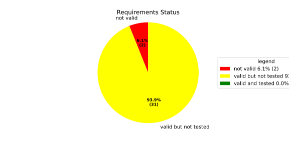
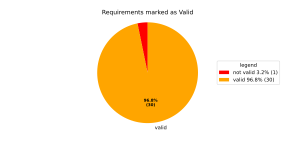
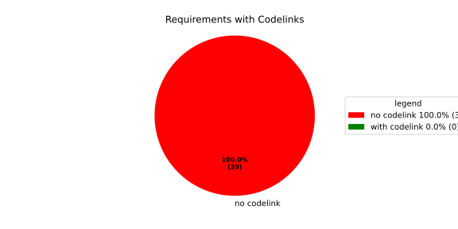
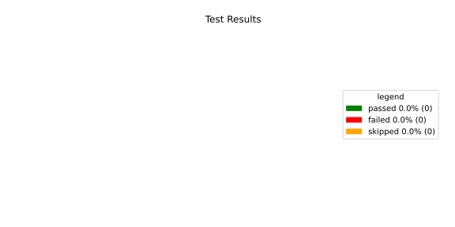
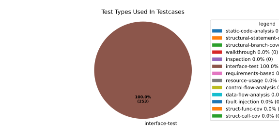
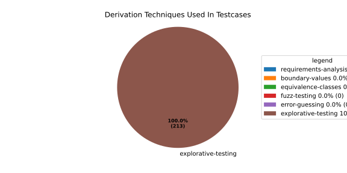

Verification Statistics#
Overview#

In Detail#



Failed Tests
Hint: This table should be empty. Before a PR can be merged all tests have to be successful.
No needs passed the filters
Skipped / Disabled Tests
testcase |
Result |
Fully Verifies |
Partially Verifies |
Test Type |
Derivation Technique |
link |
|---|---|---|---|---|---|---|
ValidateRangeTest/4__RejectsValueAboveMax |
skipped |
interface-test |
explorative-testing |
|||
ValidateRangeTest/4__RejectsValueBelowMin |
skipped |
interface-test |
explorative-testing |
All passed Tests#
testcase |
Result |
Fully Verifies |
Partially Verifies |
Test Type |
Derivation Technique |
link |
|---|---|---|---|---|---|---|
AliveImplTest__DoesNotThrowWhenInterfacePathEnvVarIsSet |
passed |
interface-test |
explorative-testing |
testcase__AliveImplTest__DoesNotThrowWhenInterfacePathEnvVarIsSet_xpewu |
||
AliveImplTest__ReportCheckpointSafeWhenNotConnected |
passed |
interface-test |
explorative-testing |
testcase__AliveImplTest__ReportCheckpointSafeWhenNotConnected_ppvuc |
||
AliveImplTest__ThrowsWhenInterfacePathEnvVarIsNotSet |
passed |
interface-test |
explorative-testing |
testcase__AliveImplTest__ThrowsWhenInterfacePathEnvVarIsNotSet_ekxfw |
||
AliveSupervisionTest__AliveDebouncesThroughFailedBeforeExpired |
passed |
interface-test |
explorative-testing |
testcase__AliveSupervisionTest__AliveDebouncesThroughFailedBeforeExpired_mlnbe |
||
AliveSupervisionTest__AliveReportsEnqueueFailureWhenRingBufferFull |
passed |
interface-test |
explorative-testing |
testcase__AliveSupervisionTest__AliveReportsEnqueueFailureWhenRingBufferFull_byhrd |
||
AliveSupervisionTest__AliveStaysOkWithCorrectHeartbeats |
passed |
interface-test |
explorative-testing |
testcase__AliveSupervisionTest__AliveStaysOkWithCorrectHeartbeats_vekof |
||
AliveSupervisionTest__AliveTransitionsOkToExpiredOnMissingHeartbeat |
passed |
interface-test |
explorative-testing |
testcase__AliveSupervisionTest__AliveTransitionsOkToExpiredOnMissingHeartbeat_jymxo |
||
AliveSupervisionTest__DeactivatesOnProcessCrash |
passed |
interface-test |
explorative-testing |
testcase__AliveSupervisionTest__DeactivatesOnProcessCrash_ypejs |
||
AliveSupervisionTest__DeactivatesOnProcessSigterm |
passed |
interface-test |
explorative-testing |
testcase__AliveSupervisionTest__DeactivatesOnProcessSigterm_hzaal |
||
AliveSupervisionTest__IgnoresIrrelevantProcessStates |
passed |
interface-test |
explorative-testing |
testcase__AliveSupervisionTest__IgnoresIrrelevantProcessStates_aolvb |
||
AliveSupervisionTest__MaxIndicationViolationExpires |
passed |
interface-test |
explorative-testing |
testcase__AliveSupervisionTest__MaxIndicationViolationExpires_whhhi |
||
AliveSupervisionTest__ReactivatesAfterCrash |
passed |
interface-test |
explorative-testing |
|||
ApplicationTypes/ApplicationTypeTest__ConvertsToExpectedValue/Native |
passed |
interface-test |
explorative-testing |
testcase__ApplicationTypes/ApplicationTypeTest__ConvertsToExpectedValue/Native_yxxcz |
||
ApplicationTypes/ApplicationTypeTest__ConvertsToExpectedValue/Reporting |
passed |
interface-test |
explorative-testing |
testcase__ApplicationTypes/ApplicationTypeTest__ConvertsToExpectedValue/Reporting_wcfwr |
||
ApplicationTypes/ApplicationTypeTest__ConvertsToExpectedValue/ReportingAndSupervised |
passed |
interface-test |
explorative-testing |
testcase__ApplicationTypes/ApplicationTypeTest__ConvertsToExpectedValue/ReportingAndSupervised_yxgad |
||
ApplicationTypes/ApplicationTypeTest__ConvertsToExpectedValue/StateManager |
passed |
interface-test |
explorative-testing |
testcase__ApplicationTypes/ApplicationTypeTest__ConvertsToExpectedValue/StateManager_ivuzc |
||
ConfigurationAdapterFallbackTest__FallbackRunTargetResolvesDependenciesRecursively |
passed |
interface-test |
explorative-testing |
testcase__ConfigurationAdapterFallbackTest__FallbackRunTargetResolvesDependenciesRecursively_qcvvz |
||
ConfigurationAdapterReadyConditionTest__DependencyDefaultsToRunningWhenTargetHasNoReadyCondition |
passed |
interface-test |
explorative-testing |
|||
ConfigurationAdapterReadyConditionTest__DependencyUsesTargetComponentReadyCondition |
passed |
interface-test |
explorative-testing |
testcase__ConfigurationAdapterReadyConditionTest__DependencyUsesTargetComponentReadyCondition_wvyyj |
||
ConfigurationAdapterTest__GetListOfProcessGroupsReturnsSingleImplicitGroup |
passed |
interface-test |
explorative-testing |
testcase__ConfigurationAdapterTest__GetListOfProcessGroupsReturnsSingleImplicitGroup_fthqq |
||
ConfigurationAdapterTest__GetMainPGStartupStateMapsToInitialRunTarget |
passed |
interface-test |
explorative-testing |
testcase__ConfigurationAdapterTest__GetMainPGStartupStateMapsToInitialRunTarget_wtcit |
||
ConfigurationAdapterTest__GetNameOfOffStateMapsToMainPGOff |
passed |
interface-test |
explorative-testing |
testcase__ConfigurationAdapterTest__GetNameOfOffStateMapsToMainPGOff_jczne |
||
ConfigurationAdapterTest__GetNameOfRecoveryStateMapsToFallbackRunTarget |
passed |
interface-test |
explorative-testing |
testcase__ConfigurationAdapterTest__GetNameOfRecoveryStateMapsToFallbackRunTarget_mxndq |
||
ConfigurationAdapterTest__GetNumberOfOsProcessesReturnsComponentCount |
passed |
interface-test |
explorative-testing |
testcase__ConfigurationAdapterTest__GetNumberOfOsProcessesReturnsComponentCount_eyzdp |
||
ConfigurationAdapterTest__GetOsProcessConfigurationInjectsAliveInterfaceForSupervised |
passed |
interface-test |
explorative-testing |
|||
ConfigurationAdapterTest__GetOsProcessConfigurationMapsComponentFields |
passed |
interface-test |
explorative-testing |
testcase__ConfigurationAdapterTest__GetOsProcessConfigurationMapsComponentFields_rszfk |
||
ConfigurationAdapterTest__GetOsProcessConfigurationNoAliveInterfaceForNative |
passed |
interface-test |
explorative-testing |
testcase__ConfigurationAdapterTest__GetOsProcessConfigurationNoAliveInterfaceForNative_cbsad |
||
ConfigurationAdapterTest__GetOsProcessConfigurationReturnsNulloptForInvalidIndex |
passed |
interface-test |
explorative-testing |
testcase__ConfigurationAdapterTest__GetOsProcessConfigurationReturnsNulloptForInvalidIndex_yoorg |
||
ConfigurationAdapterTest__GetOsProcessConfigurationReturnsNulloptForUnknownPG |
passed |
interface-test |
explorative-testing |
testcase__ConfigurationAdapterTest__GetOsProcessConfigurationReturnsNulloptForUnknownPG_ewqla |
||
ConfigurationAdapterTest__GetOsProcessDependenciesEmptyForComponentWithNoDeps |
passed |
interface-test |
explorative-testing |
testcase__ConfigurationAdapterTest__GetOsProcessDependenciesEmptyForComponentWithNoDeps_odxew |
||
ConfigurationAdapterTest__GetOsProcessDependenciesMapsComponentDependsOn |
passed |
interface-test |
explorative-testing |
testcase__ConfigurationAdapterTest__GetOsProcessDependenciesMapsComponentDependsOn_varth |
||
ConfigurationAdapterTest__GetProcessIndexesListResolvesRunTargetDependencies |
passed |
interface-test |
explorative-testing |
testcase__ConfigurationAdapterTest__GetProcessIndexesListResolvesRunTargetDependencies_otimf |
||
ConfigurationAdapterTest__GetProcessIndexesListResolvesTransitiveDependencies |
passed |
interface-test |
explorative-testing |
testcase__ConfigurationAdapterTest__GetProcessIndexesListResolvesTransitiveDependencies_iemgm |
||
ConfigurationAdapterTest__GetSoftwareClusterReturnsDefault |
passed |
interface-test |
explorative-testing |
testcase__ConfigurationAdapterTest__GetSoftwareClusterReturnsDefault_ixyoq |
||
ConfigurationAdapterTest__OffStateReturnsProcessIndexesListEmpty |
passed |
interface-test |
explorative-testing |
testcase__ConfigurationAdapterTest__OffStateReturnsProcessIndexesListEmpty_zngsc |
||
ConverterTest__ConvertAliveSupervisionMissingCycleReturnsError |
passed |
interface-test |
explorative-testing |
testcase__ConverterTest__ConvertAliveSupervisionMissingCycleReturnsError_bifzg |
||
ConverterTest__ConvertAliveSupervisionNullReturnsDefault |
passed |
interface-test |
explorative-testing |
testcase__ConverterTest__ConvertAliveSupervisionNullReturnsDefault_clyua |
||
ConverterTest__ConvertAliveSupervisionValid |
passed |
interface-test |
explorative-testing |
|||
ConverterTest__ConvertApplicationProfileMissingSelfTerminatingReturnsError |
passed |
interface-test |
explorative-testing |
testcase__ConverterTest__ConvertApplicationProfileMissingSelfTerminatingReturnsError_zddjb |
||
ConverterTest__ConvertApplicationProfileMissingTypeReturnsError |
passed |
interface-test |
explorative-testing |
testcase__ConverterTest__ConvertApplicationProfileMissingTypeReturnsError_zrfcs |
||
ConverterTest__ConvertApplicationProfileValid |
passed |
interface-test |
explorative-testing |
testcase__ConverterTest__ConvertApplicationProfileValid_oohxq |
||
ConverterTest__ConvertComponentAliveSupervisionBothIndicationsAbsentReturnsError |
passed |
interface-test |
explorative-testing |
testcase__ConverterTest__ConvertComponentAliveSupervisionBothIndicationsAbsentReturnsError_gvtfi |
||
ConverterTest__ConvertComponentAliveSupervisionMissingReportingCycleReturnsError |
passed |
interface-test |
explorative-testing |
testcase__ConverterTest__ConvertComponentAliveSupervisionMissingReportingCycleReturnsError_ajymy |
||
ConverterTest__ConvertComponentAliveSupervisionMissingToleranceReturnsError |
passed |
interface-test |
explorative-testing |
testcase__ConverterTest__ConvertComponentAliveSupervisionMissingToleranceReturnsError_lgrhj |
||
ConverterTest__ConvertComponentAliveSupervisionNullReturnsDefault |
passed |
interface-test |
explorative-testing |
testcase__ConverterTest__ConvertComponentAliveSupervisionNullReturnsDefault_xhaus |
||
ConverterTest__ConvertComponentAliveSupervisionOnlyMaxIndicationsPresent |
passed |
interface-test |
explorative-testing |
testcase__ConverterTest__ConvertComponentAliveSupervisionOnlyMaxIndicationsPresent_smwht |
||
ConverterTest__ConvertComponentAliveSupervisionOnlyMinIndicationsPresent |
passed |
interface-test |
explorative-testing |
testcase__ConverterTest__ConvertComponentAliveSupervisionOnlyMinIndicationsPresent_ybbrr |
||
ConverterTest__ConvertComponentAliveSupervisionValid |
passed |
interface-test |
explorative-testing |
testcase__ConverterTest__ConvertComponentAliveSupervisionValid_ijedh |
||
ConverterTest__ConvertComponentsValid |
passed |
interface-test |
explorative-testing |
|||
ConverterTest__ConvertComponentsWithInvalidComponentReturnsError |
passed |
interface-test |
explorative-testing |
testcase__ConverterTest__ConvertComponentsWithInvalidComponentReturnsError_wridc |
||
ConverterTest__ConvertComponentValid |
passed |
interface-test |
explorative-testing |
|||
ConverterTest__ConvertDeploymentConfigMissingReadyTimeoutReturnsError |
passed |
interface-test |
explorative-testing |
testcase__ConverterTest__ConvertDeploymentConfigMissingReadyTimeoutReturnsError_ljzfl |
||
ConverterTest__ConvertDeploymentConfigMissingShutdownTimeoutReturnsError |
passed |
interface-test |
explorative-testing |
testcase__ConverterTest__ConvertDeploymentConfigMissingShutdownTimeoutReturnsError_vyqye |
||
ConverterTest__ConvertDeploymentConfigValid |
passed |
interface-test |
explorative-testing |
|||
ConverterTest__ConvertEnvironmentalVariables |
passed |
interface-test |
explorative-testing |
testcase__ConverterTest__ConvertEnvironmentalVariables_fnhgo |
||
ConverterTest__ConvertEnvironmentalVariablesNullReturnsEmpty |
passed |
interface-test |
explorative-testing |
testcase__ConverterTest__ConvertEnvironmentalVariablesNullReturnsEmpty_vglrx |
||
ConverterTest__ConvertFallbackRunTargetMissingTimeoutReturnsError |
passed |
interface-test |
explorative-testing |
testcase__ConverterTest__ConvertFallbackRunTargetMissingTimeoutReturnsError_aevly |
||
ConverterTest__ConvertFallbackRunTargetValid |
passed |
interface-test |
explorative-testing |
testcase__ConverterTest__ConvertFallbackRunTargetValid_nexxj |
||
ConverterTest__ConvertReadyConditionMissingProcessStateReturnsError |
passed |
interface-test |
explorative-testing |
testcase__ConverterTest__ConvertReadyConditionMissingProcessStateReturnsError_ileav |
||
ConverterTest__ConvertReadyConditionValid |
passed |
interface-test |
explorative-testing |
|||
ConverterTest__ConvertRestartActionMissingFieldsReturnsError |
passed |
interface-test |
explorative-testing |
testcase__ConverterTest__ConvertRestartActionMissingFieldsReturnsError_aapjb |
||
ConverterTest__ConvertRestartActionNullReturnsNullopt |
passed |
interface-test |
explorative-testing |
testcase__ConverterTest__ConvertRestartActionNullReturnsNullopt_ifvyd |
||
ConverterTest__ConvertRestartActionValid |
passed |
interface-test |
explorative-testing |
|||
ConverterTest__ConvertRunTargetMissingTransitionTimeoutReturnsError |
passed |
interface-test |
explorative-testing |
testcase__ConverterTest__ConvertRunTargetMissingTransitionTimeoutReturnsError_ynekv |
||
ConverterTest__ConvertRunTargetsValid |
passed |
interface-test |
explorative-testing |
|||
ConverterTest__ConvertRunTargetsWithInvalidRunTargetReturnsError |
passed |
interface-test |
explorative-testing |
testcase__ConverterTest__ConvertRunTargetsWithInvalidRunTargetReturnsError_ldlox |
||
ConverterTest__ConvertRunTargetValid |
passed |
interface-test |
explorative-testing |
|||
ConverterTest__ConvertSandboxMissingGidReturnsError |
passed |
interface-test |
explorative-testing |
testcase__ConverterTest__ConvertSandboxMissingGidReturnsError_veeel |
||
ConverterTest__ConvertSandboxMissingSchedulingPolicyReturnsError |
passed |
interface-test |
explorative-testing |
testcase__ConverterTest__ConvertSandboxMissingSchedulingPolicyReturnsError_pkfts |
||
ConverterTest__ConvertSandboxMissingSchedulingPriorityReturnsError |
passed |
interface-test |
explorative-testing |
testcase__ConverterTest__ConvertSandboxMissingSchedulingPriorityReturnsError_xzdho |
||
ConverterTest__ConvertSandboxMissingUidReturnsError |
passed |
interface-test |
explorative-testing |
testcase__ConverterTest__ConvertSandboxMissingUidReturnsError_ogfku |
||
ConverterTest__ConvertSandboxSupplementaryGidOutOfRangeReturnsError |
passed |
interface-test |
explorative-testing |
testcase__ConverterTest__ConvertSandboxSupplementaryGidOutOfRangeReturnsError_zavpx |
||
ConverterTest__ConvertSandboxUidOutOfRangeReturnsError |
passed |
interface-test |
explorative-testing |
testcase__ConverterTest__ConvertSandboxUidOutOfRangeReturnsError_mcuaf |
||
ConverterTest__ConvertSandboxValid |
passed |
interface-test |
explorative-testing |
|||
ConverterTest__ConvertSwitchRunTargetActionNullReturnsNullopt |
passed |
interface-test |
explorative-testing |
testcase__ConverterTest__ConvertSwitchRunTargetActionNullReturnsNullopt_zmitx |
||
ConverterTest__ConvertSwitchRunTargetActionValid |
passed |
interface-test |
explorative-testing |
testcase__ConverterTest__ConvertSwitchRunTargetActionValid_tdklr |
||
ConverterTest__ConvertWatchdogMissingDeactivateReturnsError |
passed |
interface-test |
explorative-testing |
testcase__ConverterTest__ConvertWatchdogMissingDeactivateReturnsError_gzwjt |
||
ConverterTest__ConvertWatchdogMissingMagicCloseReturnsError |
passed |
interface-test |
explorative-testing |
testcase__ConverterTest__ConvertWatchdogMissingMagicCloseReturnsError_gexxk |
||
ConverterTest__ConvertWatchdogMissingMaxTimeoutReturnsError |
passed |
interface-test |
explorative-testing |
testcase__ConverterTest__ConvertWatchdogMissingMaxTimeoutReturnsError_lffxm |
||
ConverterTest__ConvertWatchdogNullReturnsNullopt |
passed |
interface-test |
explorative-testing |
testcase__ConverterTest__ConvertWatchdogNullReturnsNullopt_irsdk |
||
ConverterTest__ConvertWatchdogValid |
passed |
interface-test |
explorative-testing |
|||
DeadlineFixture__Start_AlreadyRunning |
passed |
interface-test |
explorative-testing |
|||
DeadlineFixture__Start_Succeeds |
passed |
interface-test |
explorative-testing |
|||
DeadlineMonitorBuilderFixture__AddDeadline_Succeeds |
passed |
interface-test |
explorative-testing |
testcase__DeadlineMonitorBuilderFixture__AddDeadline_Succeeds_nagke |
||
DeadlineMonitorBuilderFixture__New_Succeeds |
passed |
interface-test |
explorative-testing |
|||
DeadlineMonitorFixture__GetDeadline_Succeeds |
passed |
interface-test |
explorative-testing |
testcase__DeadlineMonitorFixture__GetDeadline_Succeeds_tmltf |
||
DeadlineMonitorFixture__GetDeadline_Unknown |
passed |
interface-test |
explorative-testing |
|||
EnumConversionTest__ConvertSchedulingPolicyUnsupported |
passed |
interface-test |
explorative-testing |
testcase__EnumConversionTest__ConvertSchedulingPolicyUnsupported_iavqm |
||
EnvironmentTest__AddIncreasesSize |
passed |
interface-test |
explorative-testing |
|||
EnvironmentTest__DefaultConstructedIsEmpty |
passed |
interface-test |
explorative-testing |
|||
EnvironmentTest__EmptyEnvironmentEnvpIsNullTerminated |
passed |
interface-test |
explorative-testing |
testcase__EnvironmentTest__EmptyEnvironmentEnvpIsNullTerminated_wwumw |
||
EnvironmentTest__EnvpReturnsNullTerminatedArray |
passed |
interface-test |
explorative-testing |
testcase__EnvironmentTest__EnvpReturnsNullTerminatedArray_aubkv |
||
EnvironmentTest__EnvpWithMultipleEntries |
passed |
interface-test |
explorative-testing |
|||
EnvironmentTest__MoveAssignmentPreservesEntries |
passed |
interface-test |
explorative-testing |
testcase__EnvironmentTest__MoveAssignmentPreservesEntries_vkydj |
||
EnvironmentTest__MoveConstructorPreservesEntries |
passed |
interface-test |
explorative-testing |
testcase__EnvironmentTest__MoveConstructorPreservesEntries_upclt |
||
EnvironmentTest__RangeBasedForLoopWorks |
passed |
interface-test |
explorative-testing |
|||
EnvironmentTest__ReserveAndAddAvoidReallocation |
passed |
interface-test |
explorative-testing |
testcase__EnvironmentTest__ReserveAndAddAvoidReallocation_lgzmu |
||
EnvironmentTest__SsoLengthStringSurvivesReallocation |
passed |
interface-test |
explorative-testing |
testcase__EnvironmentTest__SsoLengthStringSurvivesReallocation_jfmtl |
||
EnvironmentVariableTest__CStrReturnsKeyEqualsValue |
passed |
interface-test |
explorative-testing |
testcase__EnvironmentVariableTest__CStrReturnsKeyEqualsValue_rkwan |
||
EnvironmentVariableTest__EmptyValue |
passed |
interface-test |
explorative-testing |
|||
EnvironmentVariableTest__KeyAndValueAreAccessible |
passed |
interface-test |
explorative-testing |
testcase__EnvironmentVariableTest__KeyAndValueAreAccessible_kcrth |
||
EnvironmentVariableTest__ValueContainingEquals |
passed |
interface-test |
explorative-testing |
testcase__EnvironmentVariableTest__ValueContainingEquals_apzgz |
||
ExecErrorDomainTest__AllKnownCodesHaveDistinctMessages |
passed |
interface-test |
explorative-testing |
testcase__ExecErrorDomainTest__AllKnownCodesHaveDistinctMessages_qpoka |
||
ExecErrorDomainTest__AllKnownCodesReturnNonEmptyMessage |
passed |
interface-test |
explorative-testing |
testcase__ExecErrorDomainTest__AllKnownCodesReturnNonEmptyMessage_bawzg |
||
ExecErrorDomainTest__UnknownCodeReturnsNonEmptyMessage |
passed |
interface-test |
explorative-testing |
testcase__ExecErrorDomainTest__UnknownCodeReturnsNonEmptyMessage_kkwpr |
||
FlatbufferConfigLoaderTest__CorruptedBufferReturnsInvalidFormat |
passed |
interface-test |
explorative-testing |
testcase__FlatbufferConfigLoaderTest__CorruptedBufferReturnsInvalidFormat_twyac |
||
FlatbufferConfigLoaderTest__LoadAliveSupervision |
passed |
interface-test |
explorative-testing |
testcase__FlatbufferConfigLoaderTest__LoadAliveSupervision_hhuux |
||
FlatbufferConfigLoaderTest__LoadBufferFailsWithGenericErrorReturnsGeneralError |
passed |
interface-test |
explorative-testing |
testcase__FlatbufferConfigLoaderTest__LoadBufferFailsWithGenericErrorReturnsGeneralError_kmatm |
||
FlatbufferConfigLoaderTest__LoadBufferFailsWithNoSuchFileReturnsFileNotFound |
passed |
interface-test |
explorative-testing |
testcase__FlatbufferConfigLoaderTest__LoadBufferFailsWithNoSuchFileReturnsFileNotFound_yzlra |
||
FlatbufferConfigLoaderTest__LoadBufferFailsWithPermissionDeniedReturnsInsufficientPermission |
passed |
interface-test |
explorative-testing |
|||
FlatbufferConfigLoaderTest__LoadComponentAliveSupervision |
passed |
interface-test |
explorative-testing |
testcase__FlatbufferConfigLoaderTest__LoadComponentAliveSupervision_fwfad |
||
FlatbufferConfigLoaderTest__LoadEnvironmentalVariables |
passed |
interface-test |
explorative-testing |
testcase__FlatbufferConfigLoaderTest__LoadEnvironmentalVariables_wsosu |
||
FlatbufferConfigLoaderTest__LoadFallbackRunTarget |
passed |
interface-test |
explorative-testing |
testcase__FlatbufferConfigLoaderTest__LoadFallbackRunTarget_wduqm |
||
FlatbufferConfigLoaderTest__LoadMinimalConfig |
passed |
interface-test |
explorative-testing |
testcase__FlatbufferConfigLoaderTest__LoadMinimalConfig_hdkck |
||
FlatbufferConfigLoaderTest__LoadMultipleComponents |
passed |
interface-test |
explorative-testing |
testcase__FlatbufferConfigLoaderTest__LoadMultipleComponents_abpom |
||
FlatbufferConfigLoaderTest__LoadRestartRecoveryAction |
passed |
interface-test |
explorative-testing |
testcase__FlatbufferConfigLoaderTest__LoadRestartRecoveryAction_wyfqg |
||
FlatbufferConfigLoaderTest__LoadRunTargets |
passed |
interface-test |
explorative-testing |
|||
FlatbufferConfigLoaderTest__LoadSandbox |
passed |
interface-test |
explorative-testing |
|||
FlatbufferConfigLoaderTest__LoadSingleComponent |
passed |
interface-test |
explorative-testing |
testcase__FlatbufferConfigLoaderTest__LoadSingleComponent_yidty |
||
FlatbufferConfigLoaderTest__LoadSwitchRunTargetAction |
passed |
interface-test |
explorative-testing |
testcase__FlatbufferConfigLoaderTest__LoadSwitchRunTargetAction_uchgp |
||
FlatbufferConfigLoaderTest__LoadWatchdog |
passed |
interface-test |
explorative-testing |
|||
FlatbufferConfigLoaderTest__MissingSchemaVersionReturnsInvalidFormat |
passed |
interface-test |
explorative-testing |
testcase__FlatbufferConfigLoaderTest__MissingSchemaVersionReturnsInvalidFormat_qqmfn |
||
FlatbufferConfigLoaderTest__OptionalReadyConditionAbsent |
passed |
interface-test |
explorative-testing |
testcase__FlatbufferConfigLoaderTest__OptionalReadyConditionAbsent_lhddx |
||
FlatbufferConfigLoaderTest__OptionalWatchdogAbsent |
passed |
interface-test |
explorative-testing |
testcase__FlatbufferConfigLoaderTest__OptionalWatchdogAbsent_pkhkp |
||
FlatbufferConfigLoaderTest__WrongSchemaVersionReturnsUnsupportedVersion |
passed |
interface-test |
explorative-testing |
testcase__FlatbufferConfigLoaderTest__WrongSchemaVersionReturnsUnsupportedVersion_zrbjv |
||
HealthMonitor__GetDeadlineMonitor_Available |
passed |
|||||
HealthMonitor__GetDeadlineMonitor_Taken |
passed |
|||||
HealthMonitor__GetDeadlineMonitor_Unknown |
passed |
|||||
HealthMonitor__GetHeartbeatMonitor_Available |
passed |
testcase__HealthMonitor__GetHeartbeatMonitor_Available_aacat |
||||
HealthMonitor__GetHeartbeatMonitor_Taken |
passed |
|||||
HealthMonitor__GetHeartbeatMonitor_Unknown |
passed |
|||||
HealthMonitor__GetLogicMonitor_Available |
passed |
|||||
HealthMonitor__GetLogicMonitor_Taken |
passed |
|||||
HealthMonitor__GetLogicMonitor_Unknown |
passed |
|||||
HealthMonitor__Start_MonitorsNotTaken |
passed |
|||||
HealthMonitor__Start_Succeeds |
passed |
|||||
HealthMonitorBuilderFixture__Build_InvalidCycles |
passed |
interface-test |
explorative-testing |
testcase__HealthMonitorBuilderFixture__Build_InvalidCycles_pdigk |
||
HealthMonitorBuilderFixture__Build_NoMonitors |
passed |
interface-test |
explorative-testing |
testcase__HealthMonitorBuilderFixture__Build_NoMonitors_ktcve |
||
HealthMonitorBuilderFixture__Build_Succeeds |
passed |
interface-test |
explorative-testing |
|||
HealthMonitorBuilderFixture__New_Succeeds |
passed |
interface-test |
explorative-testing |
|||
HealthMonitorTest__Integrated |
passed |
interface-test |
explorative-testing |
|||
HeartbeatMonitor__Heartbeat_Succeeds |
passed |
interface-test |
explorative-testing |
|||
HeartbeatMonitorBuilder__New_Succeeds |
passed |
interface-test |
explorative-testing |
|||
IdentifierHashTest__IdentifierHash_default_created |
passed |
interface-test |
explorative-testing |
testcase__IdentifierHashTest__IdentifierHash_default_created_yhhvi |
||
IdentifierHashTest__IdentifierHash_EqualityOperators |
passed |
interface-test |
explorative-testing |
testcase__IdentifierHashTest__IdentifierHash_EqualityOperators_nnsuj |
||
IdentifierHashTest__IdentifierHash_invalid_hash_no_string_representation |
passed |
interface-test |
explorative-testing |
testcase__IdentifierHashTest__IdentifierHash_invalid_hash_no_string_representation_rxowr |
||
IdentifierHashTest__IdentifierHash_LessThanOperator |
passed |
interface-test |
explorative-testing |
testcase__IdentifierHashTest__IdentifierHash_LessThanOperator_rnbax |
||
IdentifierHashTest__IdentifierHash_no_dangling_pointer_after_source_string_dies |
passed |
interface-test |
explorative-testing |
testcase__IdentifierHashTest__IdentifierHash_no_dangling_pointer_after_source_string_dies_qsjin |
||
IdentifierHashTest__IdentifierHash_with_string_created |
passed |
interface-test |
explorative-testing |
testcase__IdentifierHashTest__IdentifierHash_with_string_created_aygdm |
||
IdentifierHashTest__IdentifierHash_with_string_view_created |
passed |
interface-test |
explorative-testing |
testcase__IdentifierHashTest__IdentifierHash_with_string_view_created_dbpol |
||
LogicMonitorBuilderFixture__AddState_Succeeds |
passed |
interface-test |
explorative-testing |
testcase__LogicMonitorBuilderFixture__AddState_Succeeds_axdxj |
||
LogicMonitorBuilderFixture__New_Succeeds |
passed |
interface-test |
explorative-testing |
|||
LogicMonitorFixture__State_Invalid |
passed |
interface-test |
explorative-testing |
|||
LogicMonitorFixture__State_Succeeds |
passed |
interface-test |
explorative-testing |
|||
LogicMonitorFixture__Transition_Invalid |
passed |
interface-test |
explorative-testing |
|||
LogicMonitorFixture__Transition_Succeeds |
passed |
interface-test |
explorative-testing |
|||
LogicMonitorFixture__Transition_Unknown |
passed |
interface-test |
explorative-testing |
|||
MonitorIfDaemonTest__Active_CheckpointDataForwarded |
passed |
interface-test |
explorative-testing |
testcase__MonitorIfDaemonTest__Active_CheckpointDataForwarded_evumz |
||
MonitorIfDaemonTest__Active_FutureTimestamp_NotForwardedInCurrentCycle |
passed |
interface-test |
explorative-testing |
testcase__MonitorIfDaemonTest__Active_FutureTimestamp_NotForwardedInCurrentCycle_oycau |
||
MonitorIfDaemonTest__Active_FutureTimestampCheckpoint_ConsumedInLaterCycle |
passed |
interface-test |
explorative-testing |
testcase__MonitorIfDaemonTest__Active_FutureTimestampCheckpoint_ConsumedInLaterCycle_veyyy |
||
MonitorIfDaemonTest__Active_MultipleCheckpointsInOneCycle_AllForwarded |
passed |
interface-test |
explorative-testing |
testcase__MonitorIfDaemonTest__Active_MultipleCheckpointsInOneCycle_AllForwarded_gmbms |
||
MonitorIfDaemonTest__Active_NonMatchingCheckpointId_NotForwarded |
passed |
interface-test |
explorative-testing |
testcase__MonitorIfDaemonTest__Active_NonMatchingCheckpointId_NotForwarded_bohck |
||
MonitorIfDaemonTest__Active_OverflowDetected_TransitionsToInactiveOverflow |
passed |
interface-test |
explorative-testing |
testcase__MonitorIfDaemonTest__Active_OverflowDetected_TransitionsToInactiveOverflow_ovitk |
||
MonitorIfDaemonTest__Active_TwoAttachedCheckpoints_RoutedByCheckpointId |
passed |
interface-test |
explorative-testing |
testcase__MonitorIfDaemonTest__Active_TwoAttachedCheckpoints_RoutedByCheckpointId_skqhd |
||
MonitorIfDaemonTest__GetInterfaceName_ReturnsNameGivenAtConstruction |
passed |
interface-test |
explorative-testing |
testcase__MonitorIfDaemonTest__GetInterfaceName_ReturnsNameGivenAtConstruction_iaemz |
||
MonitorIfDaemonTest__InactiveOverflow_NoProcessRestart_DoesNotRepeatNotification |
passed |
interface-test |
explorative-testing |
testcase__MonitorIfDaemonTest__InactiveOverflow_NoProcessRestart_DoesNotRepeatNotification_gdbxg |
||
MonitorIfDaemonTest__InactiveOverflow_ProcessRestartFlag_ClearedAfterNotification |
passed |
interface-test |
explorative-testing |
testcase__MonitorIfDaemonTest__InactiveOverflow_ProcessRestartFlag_ClearedAfterNotification_pqfyy |
||
MonitorIfDaemonTest__InactiveOverflow_ProcessRestarts_PushesOverflowNotificationAgain |
passed |
interface-test |
explorative-testing |
|||
MonitorIfDaemonTest__InitiallyInactive_CheckForNewData_DoesNotNotifyCheckpoint |
passed |
interface-test |
explorative-testing |
testcase__MonitorIfDaemonTest__InitiallyInactive_CheckForNewData_DoesNotNotifyCheckpoint_wjrfl |
||
MonitorIfDaemonTest__ProcessOff_DeactivatesMonitor_NoFurtherDataForwarded |
passed |
interface-test |
explorative-testing |
testcase__MonitorIfDaemonTest__ProcessOff_DeactivatesMonitor_NoFurtherDataForwarded_uialh |
||
MonitorIfDaemonTest__ProcessOffBeforeActivation_RemainsInactive |
passed |
interface-test |
explorative-testing |
testcase__MonitorIfDaemonTest__ProcessOffBeforeActivation_RemainsInactive_kzzyy |
||
MonitorIfDaemonTest__ProcessRunning_ActivatesMonitorOnNextCheckForNewData |
passed |
interface-test |
explorative-testing |
testcase__MonitorIfDaemonTest__ProcessRunning_ActivatesMonitorOnNextCheckForNewData_fkkmk |
||
MonitorIfDaemonTest__ProcessStarting_AlsoActivatesMonitor |
passed |
interface-test |
explorative-testing |
testcase__MonitorIfDaemonTest__ProcessStarting_AlsoActivatesMonitor_xdkbg |
||
MPMCConcurrentQueueTest_Basic__LvaluePushCopiesItem |
passed |
testcase__MPMCConcurrentQueueTest_Basic__LvaluePushCopiesItem_oysfc |
||||
MPMCConcurrentQueueTest_Basic__PopReturnsNulloptOnSemaphoreWaitFailure |
passed |
testcase__MPMCConcurrentQueueTest_Basic__PopReturnsNulloptOnSemaphoreWaitFailure_rgznm |
||||
MPMCConcurrentQueueTest_Basic__PushAndPopPreservesOrder |
passed |
testcase__MPMCConcurrentQueueTest_Basic__PushAndPopPreservesOrder_aijdb |
||||
MPMCConcurrentQueueTest_Basic__PushAndPopSingleItem |
passed |
testcase__MPMCConcurrentQueueTest_Basic__PushAndPopSingleItem_jrxwz |
||||
MPMCConcurrentQueueTest_Basic__RvaluePushWorksWithMoveOnlyType |
passed |
testcase__MPMCConcurrentQueueTest_Basic__RvaluePushWorksWithMoveOnlyType_cxxaj |
||||
MPMCConcurrentQueueTest_Blocking__PopBlocksUntilItemAvailable |
passed |
testcase__MPMCConcurrentQueueTest_Blocking__PopBlocksUntilItemAvailable_ttwcx |
||||
MPMCConcurrentQueueTest_Blocking__PushBlocksWhenFull |
passed |
testcase__MPMCConcurrentQueueTest_Blocking__PushBlocksWhenFull_ecujf |
||||
MPMCConcurrentQueueTest_Blocking__StopUnblocksBlockedConsumer |
passed |
testcase__MPMCConcurrentQueueTest_Blocking__StopUnblocksBlockedConsumer_snzyr |
||||
MPMCConcurrentQueueTest_Blocking__StopUnblocksBlockedProducer |
passed |
testcase__MPMCConcurrentQueueTest_Blocking__StopUnblocksBlockedProducer_inddu |
||||
MPMCConcurrentQueueTest_MPMC__AllItemsDelivered |
passed |
testcase__MPMCConcurrentQueueTest_MPMC__AllItemsDelivered_ztjqe |
||||
MPMCConcurrentQueueTest_Stop__ItemsAreDroppedAfterStop |
passed |
testcase__MPMCConcurrentQueueTest_Stop__ItemsAreDroppedAfterStop_ragzw |
||||
MPMCConcurrentQueueTest_Stop__PopReturnsNulloptWhenStoppedAndEmpty |
passed |
testcase__MPMCConcurrentQueueTest_Stop__PopReturnsNulloptWhenStoppedAndEmpty_cevga |
||||
MPMCConcurrentQueueTest_Stop__PushReturnsFalseAfterStop |
passed |
testcase__MPMCConcurrentQueueTest_Stop__PushReturnsFalseAfterStop_qqnhw |
||||
MPMCConcurrentQueueTest_Timeout__PushWithTimeoutReturnsFalseWhenFull |
passed |
testcase__MPMCConcurrentQueueTest_Timeout__PushWithTimeoutReturnsFalseWhenFull_aeips |
||||
MPMCConcurrentQueueTest_Timeout__PushWithTimeoutSucceedsWhenSlotAvailable |
passed |
testcase__MPMCConcurrentQueueTest_Timeout__PushWithTimeoutSucceedsWhenSlotAvailable_klzpo |
||||
OsHandlerTest__WaitReturnsError_OsHandlerSleepsAndDoesNotCallFindTerminated |
passed |
interface-test |
explorative-testing |
testcase__OsHandlerTest__WaitReturnsError_OsHandlerSleepsAndDoesNotCallFindTerminated_cibtr |
||
OsHandlerTest__WaitReturnsErrorThenProcessId_HandlerRecoversAndInvokesCallback |
passed |
interface-test |
explorative-testing |
testcase__OsHandlerTest__WaitReturnsErrorThenProcessId_HandlerRecoversAndInvokesCallback_nqstd |
||
OsHandlerTest__WaitReturnsProcessId_FindTerminatedIsCalled |
passed |
interface-test |
explorative-testing |
testcase__OsHandlerTest__WaitReturnsProcessId_FindTerminatedIsCalled_chlsq |
||
OsHandlerTest__WaitReturnsProcessIdBeforeRegistration_LaterRegistrationReceivesStoredTermination |
passed |
interface-test |
explorative-testing |
|||
OsHandlerTest__WaitReturnsUnknownPidWhenMapIsFull_OutOfResourcesPathDoesNotNotifyCallbacks |
passed |
interface-test |
explorative-testing |
|||
OsHandlerTest__WaitReturnsZeroPid_OsHandlerSleepsAndDoesNotCallFindTerminated |
passed |
interface-test |
explorative-testing |
testcase__OsHandlerTest__WaitReturnsZeroPid_OsHandlerSleepsAndDoesNotCallFindTerminated_rkttz |
||
ProcessStateClient_UT__ProcessStateClient_ConstructReceiver_Succeeds |
passed |
interface-test |
explorative-testing |
testcase__ProcessStateClient_UT__ProcessStateClient_ConstructReceiver_Succeeds_hodwy |
||
ProcessStateClient_UT__ProcessStateClient_QueueMaxNumberOfProcesses_Succeeds |
passed |
interface-test |
explorative-testing |
testcase__ProcessStateClient_UT__ProcessStateClient_QueueMaxNumberOfProcesses_Succeeds_qohom |
||
ProcessStateClient_UT__ProcessStateClient_QueueOneProcess_Succeeds |
passed |
interface-test |
explorative-testing |
testcase__ProcessStateClient_UT__ProcessStateClient_QueueOneProcess_Succeeds_tmzfz |
||
ProcessStateClient_UT__ProcessStateClient_QueueOneProcessTooMany_Fails |
passed |
interface-test |
explorative-testing |
testcase__ProcessStateClient_UT__ProcessStateClient_QueueOneProcessTooMany_Fails_sspoj |
||
ProcessStates/ProcessStateTest__ConvertsToExpectedValue/Running |
passed |
interface-test |
explorative-testing |
testcase__ProcessStates/ProcessStateTest__ConvertsToExpectedValue/Running_hinlr |
||
ProcessStates/ProcessStateTest__ConvertsToExpectedValue/Terminated |
passed |
interface-test |
explorative-testing |
testcase__ProcessStates/ProcessStateTest__ConvertsToExpectedValue/Terminated_zrytn |
||
RecoveryClientTest__FIFOOrdering |
passed |
interface-test |
explorative-testing |
|||
RecoveryClientTest__GetNextRequest |
passed |
interface-test |
explorative-testing |
|||
RecoveryClientTest__GetNextRequestEmpty |
passed |
interface-test |
explorative-testing |
|||
RecoveryClientTest__RingBufferFull |
passed |
interface-test |
explorative-testing |
|||
RecoveryClientTest__SendSingleRequest |
passed |
interface-test |
explorative-testing |
|||
RunTest__AsPosixProcessCreatesAndDestroysLifeCycleManager |
passed |
testcase__RunTest__AsPosixProcessCreatesAndDestroysLifeCycleManager_sooex |
||||
RunTest__AsPosixProcessForwardsConstructorArgsToApplication |
passed |
testcase__RunTest__AsPosixProcessForwardsConstructorArgsToApplication_dmeur |
||||
RunTest__AsPosixProcessForwardsNonZeroExitCode |
passed |
testcase__RunTest__AsPosixProcessForwardsNonZeroExitCode_lldqd |
||||
RunTest__AsPosixProcessPassesCorrectApplicationTypeToRun |
passed |
testcase__RunTest__AsPosixProcessPassesCorrectApplicationTypeToRun_ajqwz |
||||
RunTest__AsPosixProcessReturnsZeroExitCode |
passed |
|||||
RunTest__RunApplicationFreeFunctionDelegatesToAsPosixProcess |
passed |
testcase__RunTest__RunApplicationFreeFunctionDelegatesToAsPosixProcess_ccing |
||||
RunTest__RunConstructorPassesArgcArgvToApplicationContext |
passed |
testcase__RunTest__RunConstructorPassesArgcArgvToApplicationContext_agerd |
||||
SafeProcessMapTest__ConcurrentFindAndInsertFromMultipleThreads |
passed |
interface-test |
explorative-testing |
testcase__SafeProcessMapTest__ConcurrentFindAndInsertFromMultipleThreads_kzfyg |
||
SafeProcessMapTest__ConcurrentInsertAndFindFromMultipleThreads |
passed |
interface-test |
explorative-testing |
testcase__SafeProcessMapTest__ConcurrentInsertAndFindFromMultipleThreads_hnyqj |
||
SafeProcessMapTest__ConstructWithZeroCapacity |
passed |
interface-test |
explorative-testing |
testcase__SafeProcessMapTest__ConstructWithZeroCapacity_gjmqg |
||
SafeProcessMapTest__FindTerminatedInsertsEntryWhenPidNotPresent |
passed |
interface-test |
explorative-testing |
testcase__SafeProcessMapTest__FindTerminatedInsertsEntryWhenPidNotPresent_ixtlt |
||
SafeProcessMapTest__FindTerminatedMatchesExistingInsertAndCallsCallback |
passed |
interface-test |
explorative-testing |
testcase__SafeProcessMapTest__FindTerminatedMatchesExistingInsertAndCallsCallback_ehuzb |
||
SafeProcessMapTest__FindTerminatedSamePidTwiceYieldsUntilInsertResolves |
passed |
interface-test |
explorative-testing |
testcase__SafeProcessMapTest__FindTerminatedSamePidTwiceYieldsUntilInsertResolves_hsekx |
||
SafeProcessMapTest__FindTerminatedWithNegativePidReturnsInvalid |
passed |
interface-test |
explorative-testing |
testcase__SafeProcessMapTest__FindTerminatedWithNegativePidReturnsInvalid_dewoh |
||
SafeProcessMapTest__FindTerminatedWorksAtMaxTreeDepth |
passed |
interface-test |
explorative-testing |
testcase__SafeProcessMapTest__FindTerminatedWorksAtMaxTreeDepth_adtzi |
||
SafeProcessMapTest__InsertBeyondCapacityReturnsOutOfMemory |
passed |
interface-test |
explorative-testing |
testcase__SafeProcessMapTest__InsertBeyondCapacityReturnsOutOfMemory_qjnie |
||
SafeProcessMapTest__InsertIntoEmptyTreeReturnsZero |
passed |
interface-test |
explorative-testing |
testcase__SafeProcessMapTest__InsertIntoEmptyTreeReturnsZero_zfbaq |
||
SafeProcessMapTest__InsertMatchesExistingFindTerminatedEntry |
passed |
interface-test |
explorative-testing |
testcase__SafeProcessMapTest__InsertMatchesExistingFindTerminatedEntry_fuwrp |
||
SafeProcessMapTest__InsertMultipleNodesThenFindTerminatedRemovesAll |
passed |
interface-test |
explorative-testing |
testcase__SafeProcessMapTest__InsertMultipleNodesThenFindTerminatedRemovesAll_fvowh |
||
SafeProcessMapTest__InsertSamePidTwiceYieldsUntilFindTerminatedResolves |
passed |
interface-test |
explorative-testing |
testcase__SafeProcessMapTest__InsertSamePidTwiceYieldsUntilFindTerminatedResolves_wzwyb |
||
SchedulingPolicies/SchedulingPolicyTest__ConvertsToExpectedPosixValue/SCHED_FIFO |
passed |
interface-test |
explorative-testing |
testcase__SchedulingPolicies/SchedulingPolicyTest__ConvertsToExpectedPosixValue/SCHED_FIFO_soddq |
||
SchedulingPolicies/SchedulingPolicyTest__ConvertsToExpectedPosixValue/SCHED_OTHER |
passed |
interface-test |
explorative-testing |
testcase__SchedulingPolicies/SchedulingPolicyTest__ConvertsToExpectedPosixValue/SCHED_OTHER_oigmk |
||
SchedulingPolicies/SchedulingPolicyTest__ConvertsToExpectedPosixValue/SCHED_RR |
passed |
interface-test |
explorative-testing |
testcase__SchedulingPolicies/SchedulingPolicyTest__ConvertsToExpectedPosixValue/SCHED_RR_pcjci |
||
score/health_monitor/src/rust/test-510566969/tests |
passed |
testcase__score/health_monitor/src/rust/test-510566969/tests_kjjlw |
||||
score/health_monitor/src/rust/test-827801879/loom_tests |
passed |
testcase__score/health_monitor/src/rust/test-827801879/loom_tests_cpmix |
||||
SecondsToMsTest__ConvertsPositiveValue |
passed |
interface-test |
explorative-testing |
|||
SecondsToMsTest__ConvertsZero |
passed |
interface-test |
explorative-testing |
|||
SecondsToMsTest__RejectsNegativeValue |
passed |
interface-test |
explorative-testing |
|||
SecondsToMsTest__RejectsOverflow |
passed |
interface-test |
explorative-testing |
|||
SecondsToMsTest__RejectsSubMillisecond |
passed |
interface-test |
explorative-testing |
|||
StringHelperTest__ConvertGidVectorReturnsEmptyWhenNull |
passed |
interface-test |
explorative-testing |
testcase__StringHelperTest__ConvertGidVectorReturnsEmptyWhenNull_jmcsr |
||
StringHelperTest__ConvertStringVectorReturnsEmptyWhenNull |
passed |
interface-test |
explorative-testing |
testcase__StringHelperTest__ConvertStringVectorReturnsEmptyWhenNull_zsuvv |
||
StringHelperTest__SafeStringReturnsEmptyWhenNull |
passed |
interface-test |
explorative-testing |
testcase__StringHelperTest__SafeStringReturnsEmptyWhenNull_crelr |
||
StringHelperTest__SafeStringReturnsValueWhenNotNull |
passed |
interface-test |
explorative-testing |
testcase__StringHelperTest__SafeStringReturnsValueWhenNotNull_anbko |
||
test_complex_monitoring |
passed |
|||||
test_crash_on_startup |
passed |
|||||
test_incorrect_config_non_reporting |
passed |
|||||
test_process_crash_monitoring |
passed |
|||||
test_process_fd_leak |
passed |
|||||
test_process_launch_args |
passed |
|||||
test_process_wrong_binary_failure |
passed |
|||||
test_recovery_action_complex_rep_failure |
passed |
|||||
test_recovery_action_simple_rep_failure |
passed |
|||||
test_smoke |
passed |
|||||
test_switch_run_target |
passed |
|||||
TimeRangeFixture__MinMax |
passed |
interface-test |
explorative-testing |
|||
TimeRangeFixture__New_InvalidOrder |
passed |
interface-test |
explorative-testing |
|||
TimeRangeFixture__New_Succeeds |
passed |
interface-test |
explorative-testing |
|||
ValidateRangeTest/0__AcceptsMaxBoundary |
passed |
interface-test |
explorative-testing |
|||
ValidateRangeTest/0__AcceptsMinBoundary |
passed |
interface-test |
explorative-testing |
|||
ValidateRangeTest/0__AcceptsZero |
passed |
interface-test |
explorative-testing |
|||
ValidateRangeTest/0__RejectsValueAboveMax |
passed |
interface-test |
explorative-testing |
|||
ValidateRangeTest/0__RejectsValueBelowMin |
passed |
interface-test |
explorative-testing |
|||
ValidateRangeTest/1__AcceptsMaxBoundary |
passed |
interface-test |
explorative-testing |
|||
ValidateRangeTest/1__AcceptsMinBoundary |
passed |
interface-test |
explorative-testing |
|||
ValidateRangeTest/1__AcceptsZero |
passed |
interface-test |
explorative-testing |
|||
ValidateRangeTest/1__RejectsValueAboveMax |
passed |
interface-test |
explorative-testing |
|||
ValidateRangeTest/1__RejectsValueBelowMin |
passed |
interface-test |
explorative-testing |
|||
ValidateRangeTest/2__AcceptsMaxBoundary |
passed |
interface-test |
explorative-testing |
|||
ValidateRangeTest/2__AcceptsMinBoundary |
passed |
interface-test |
explorative-testing |
|||
ValidateRangeTest/2__AcceptsZero |
passed |
interface-test |
explorative-testing |
|||
ValidateRangeTest/2__RejectsValueAboveMax |
passed |
interface-test |
explorative-testing |
|||
ValidateRangeTest/2__RejectsValueBelowMin |
passed |
interface-test |
explorative-testing |
|||
ValidateRangeTest/3__AcceptsMaxBoundary |
passed |
interface-test |
explorative-testing |
|||
ValidateRangeTest/3__AcceptsMinBoundary |
passed |
interface-test |
explorative-testing |
|||
ValidateRangeTest/3__AcceptsZero |
passed |
interface-test |
explorative-testing |
|||
ValidateRangeTest/3__RejectsValueAboveMax |
passed |
interface-test |
explorative-testing |
|||
ValidateRangeTest/3__RejectsValueBelowMin |
passed |
interface-test |
explorative-testing |
|||
ValidateRangeTest/4__AcceptsMaxBoundary |
passed |
interface-test |
explorative-testing |
|||
ValidateRangeTest/4__AcceptsMinBoundary |
passed |
interface-test |
explorative-testing |
|||
ValidateRangeTest/4__AcceptsZero |
passed |
interface-test |
explorative-testing |
Details About Testcases#


Test Log Files#
tests-report/tests/integration/process_simple_rep_failure/process_simple_rep_failure/test.log
exec ${PAGER:-/usr/bin/less} "$0" || exit 1
Executing tests from //tests/integration/process_simple_rep_failure:process_simple_rep_failure
-----------------------------------------------------------------------------
============================= test session starts ==============================
platform linux -- Python 3.12.12, pytest-9.0.3, pluggy-1.5.0
rootdir: /home/runner/.bazel/sandbox/processwrapper-sandbox/1210/execroot/_main/bazel-out/k8-fastbuild/bin/tests/integration/process_simple_rep_failure/process_simple_rep_failure.runfiles/score_itf+
configfile: pytest.ini
collected 1 item
../score_itf+::test_recovery_action_simple_rep_failure
-------------------------------- live log setup --------------------------------
[2026-07-13 14:23:21.167] [INFO] [score.itf.plugins.docker] Executing custom image bootstrap command: tests/utils/environments/x86_64-linux/x86_64-linux.sh
[2026-07-13 14:23:21.507] [DEBUG] [docker.utils.config] Trying paths: ['/home/runner/.docker/config.json', '/home/runner/.dockercfg']
[2026-07-13 14:23:21.508] [DEBUG] [docker.utils.config] Found file at path: /home/runner/.docker/config.json
[2026-07-13 14:23:21.508] [DEBUG] [docker.auth] Found 'auths' section
[2026-07-13 14:23:21.508] [DEBUG] [docker.auth] Found entry (registry='https://index.docker.io/v1/', username='githubactions')
[2026-07-13 14:23:21.526] [DEBUG] [urllib3.connectionpool] http://localhost:None "GET /version HTTP/1.1" 200 823
[2026-07-13 14:23:21.625] [DEBUG] [urllib3.connectionpool] http://localhost:None "POST /v1.48/containers/create HTTP/1.1" 201 88
[2026-07-13 14:23:21.629] [DEBUG] [urllib3.connectionpool] http://localhost:None "GET /v1.48/containers/a4108b756e7bfb094adf814a3bad9b9d74457a06ca521548a39e1a4ebc4b90a7/json HTTP/1.1" 200 None
[2026-07-13 14:23:21.785] [DEBUG] [urllib3.connectionpool] http://localhost:None "POST /v1.48/containers/a4108b756e7bfb094adf814a3bad9b9d74457a06ca521548a39e1a4ebc4b90a7/start HTTP/1.1" 204 0
[2026-07-13 14:23:21.786] [DEBUG] [docker.utils.config] Trying paths: ['/home/runner/.docker/config.json', '/home/runner/.dockercfg']
[2026-07-13 14:23:21.786] [DEBUG] [docker.utils.config] Found file at path: /home/runner/.docker/config.json
[2026-07-13 14:23:21.786] [DEBUG] [docker.auth] Found 'auths' section
[2026-07-13 14:23:21.788] [DEBUG] [docker.auth] Found entry (registry='https://index.docker.io/v1/', username='githubactions')
[2026-07-13 14:23:21.809] [DEBUG] [urllib3.connectionpool] http://localhost:None "GET /version HTTP/1.1" 200 823
[2026-07-13 14:23:22.155] [INFO] [tests.utils.testing_utils.setup_test] Test case setup finished
-------------------------------- live log call ---------------------------------
[2026-07-13 14:23:22.350] [INFO] [launch_manager] 2026/07/13 14:23:22.2602313 4044063 000 ECU1 LM LM log debug verbose 1 Launch Manager Started !!!!
[2026-07-13 14:23:22.350] [INFO] [launch_manager] 2026/07/13 14:23:22.2602314 4044066 000 ECU1 LM LM log debug verbose 1 Loading LCM Configurations...
[2026-07-13 14:23:22.350] [INFO] [launch_manager] 2026/07/13 14:23:22.2602314 4044066 000 ECU1 LM LM log debug verbose 1 ECUCFG_ENV_VAR_ROOTFOLDER set successfully
[2026-07-13 14:23:22.351] [INFO] [launch_manager] 2026/07/13 14:23:22.2602314 4044068 000 ECU1 LM LM log debug verbose 5 FlatBufferParser::getModeGroupPgName: MainPG ( IdentifierHash: 18079021346025578134 )
[2026-07-13 14:23:22.351] [INFO] [launch_manager] 2026/07/13 14:23:22.2602314 4044068 000 ECU1 LM LM log debug verbose 5 FlatBufferParser::getModeGroupPgStateName: MainPG/Startup ( IdentifierHash: 10504605499600661529 )
[2026-07-13 14:23:22.351] [INFO] [launch_manager] 2026/07/13 14:23:22.2602314 4044068 000 ECU1 LM LM log debug verbose 5 FlatBufferParser::getModeGroupPgStateName: MainPG/run_target_app_does_report_krunning_in_time ( IdentifierHash: 11934981641920773349 )
[2026-07-13 14:23:22.351] [INFO] [launch_manager] 2026/07/13 14:23:22.2602314 4044069 000 ECU1 LM LM log debug verbose 5 FlatBufferParser::getModeGroupPgStateName: MainPG/run_target_app_does_not_report_krunning_in_time ( IdentifierHash: 7672161913816744053 )
[2026-07-13 14:23:22.351] [INFO] [launch_manager] 2026/07/13 14:23:22.2602314 4044069 000 ECU1 LM LM log debug verbose 5
[2026-07-13 14:23:22.351] [INFO] [launch_manager] FlatBufferParser::getModeGroupPgStateName: MainPG/Off ( IdentifierHash: 15281793077830264047 )
[2026-07-13 14:23:22.351] [INFO] [launch_manager] 2026/07/13 14:23:22.2602315 4044082 000 ECU1 LM LM log debug verbose 5 FlatBufferParser::getModeGroupPgStateName: MainPG/fallback_run_target ( IdentifierHash: 4059409696722237352 )
[2026-07-13 14:23:22.351] [INFO] [launch_manager] 2026/07/13 14:23:22.2602315 4044083 000 ECU1 LM LM log debug verbose 4
[2026-07-13 14:23:22.352] [INFO] [launch_manager] parseProcessConfigurations: Process index: 0 executable_path_: /tmp/tests/process_simple_rep_failure/control_client_mock
[2026-07-13 14:23:22.352] [INFO] [launch_manager] 2026/07/13 14:23:22.2602316 4044085 000 ECU1 LM LM log debug verbose 3
[2026-07-13 14:23:22.352] [INFO] [launch_manager] Process control_client_mock is Reporting execution state
[2026-07-13 14:23:22.352] [INFO] [launch_manager] 2026/07/13 14:23:22.2602316 4044086 000 ECU1 LM LM log debug verbose 1
[2026-07-13 14:23:22.352] [INFO] [launch_manager] Process is STATE_MANAGEMENT function Cluster Affiliation
[2026-07-13 14:23:22.357] [INFO] [launch_manager] 2026/07/13 14:23:22.2602316 4044087 000 ECU1 LM LM log debug verbose 3
[2026-07-13 14:23:22.357] [INFO] [launch_manager] Process control_client_mock is Self terminating
[2026-07-13 14:23:22.357] [INFO] [launch_manager] 2026/07/13 14:23:22.2602316 4044088 000 ECU1 LM LM log debug verbose 4 ParseProcessProcessGroup: id:::pg_name_: MainPG , pg_state_name_: MainPG/Startup
[2026-07-13 14:23:22.357] [INFO] [launch_manager] 2026/07/13 14:23:22.2602316 4044089 000 ECU1 LM LM log debug verbose 4 ParseProcessProcessGroup: id:::pg_name_: MainPG , pg_state_name_: MainPG/run_target_app_does_report_krunning_in_time
[2026-07-13 14:23:22.357] [INFO] [launch_manager] 2026/07/13 14:23:22.2602316 4044090 000 ECU1 LM LM log debug verbose 4 ParseProcessProcessGroup: id:::pg_name_: MainPG , pg_state_name_: MainPG/run_target_app_does_not_report_krunning_in_time
[2026-07-13 14:23:22.357] [INFO] [launch_manager] 2026/07/13 14:23:22.2602316 4044091 000 ECU1 LM LM log debug verbose 4 ParseProcessProcessGroup: id:::pg_name_: MainPG , pg_state_name_: MainPG/fallback_run_target
[2026-07-13 14:23:22.357] [INFO] [launch_manager] 2026/07/13 14:23:22.2602316 4044092 000 ECU1 LM LM log debug verbose 4 parseProcessConfigurations: Process index: 1 executable_path_: /tmp/tests/process_simple_rep_failure/process_simple_reporting
[2026-07-13 14:23:22.358] [INFO] [launch_manager] 2026/07/13 14:23:22.2602316 4044093 000 ECU1 LM LM log debug verbose 3
[2026-07-13 14:23:22.358] [INFO] [launch_manager] Process component_does_report_krunning_in_time is Reporting execution state
[2026-07-13 14:23:22.358] [INFO] [launch_manager] 2026/07/13 14:23:22.2602316 4044093 000 ECU1 LM LM log debug verbose 1 Process is NOT associated with any function Cluster Affiliation
[2026-07-13 14:23:22.358] [INFO] [launch_manager] 2026/07/13 14:23:22.2602317 4044094 000 ECU1 LM LM log debug verbose 3
[2026-07-13 14:23:22.358] [INFO] [launch_manager] Process component_does_report_krunning_in_time is Self terminating
[2026-07-13 14:23:22.358] [INFO] [launch_manager] 2026/07/13 14:23:22.2602317 4044095 000 ECU1 LM LM log debug verbose 4 ParseProcessProcessGroup: id:::pg_name_: MainPG , pg_state_name_: MainPG/run_target_app_does_report_krunning_in_time
[2026-07-13 14:23:22.358] [INFO] [launch_manager] 2026/07/13 14:23:22.2602317 4044096 000 ECU1 LM LM log debug verbose 4 parseProcessConfigurations: Process index: 2 executable_path_: /tmp/tests/process_simple_rep_failure/process_simple_reporting
[2026-07-13 14:23:22.358] [INFO] [launch_manager] 2026/07/13 14:23:22.2602317 4044097 000 ECU1 LM LM log debug verbose 3
[2026-07-13 14:23:22.358] [INFO] [launch_manager] Process component_does_not_report_krunning_in_time is Reporting execution state
[2026-07-13 14:23:22.359] [INFO] [launch_manager] 2026/07/13 14:23:22.2602317 4044097 000 ECU1 LM LM log debug verbose 1 Process is NOT associated with any function Cluster Affiliation
[2026-07-13 14:23:22.359] [INFO] [launch_manager] 2026/07/13 14:23:22.2602317 4044098 000 ECU1 LM LM log debug verbose 3
[2026-07-13 14:23:22.359] [INFO] [launch_manager] Process component_does_not_report_krunning_in_time is Self terminating
[2026-07-13 14:23:22.359] [INFO] [launch_manager] 2026/07/13 14:23:22.2602317 4044099 000 ECU1 LM LM log debug verbose 4 ParseProcessProcessGroup: id:::pg_name_: MainPG , pg_state_name_: MainPG/run_target_app_does_not_report_krunning_in_time
[2026-07-13 14:23:22.359] [INFO] [launch_manager] 2026/07/13 14:23:22.2602317 4044100 000 ECU1 LM LM log debug verbose 4 parseProcessConfigurations: Process index: 3 executable_path_: /tmp/tests/process_simple_rep_failure/verification_process
[2026-07-13 14:23:22.367] [INFO] [launch_manager] 2026/07/13 14:23:22.2602317 4044101 000 ECU1 LM LM log debug verbose 3
[2026-07-13 14:23:22.367] [INFO] [launch_manager] Process verification_component is NOT Reporting execution state
[2026-07-13 14:23:22.367] [INFO] [launch_manager] 2026/07/13 14:23:22.2602317 4044102 000 ECU1 LM LM log debug verbose 1
[2026-07-13 14:23:22.370] [INFO] [launch_manager] Process is NOT associated with any function Cluster Affiliation
[2026-07-13 14:23:22.373] [INFO] [launch_manager] 2026/07/13 14:23:22.2602317 4044102 000 ECU1 LM LM log debug verbose 3
[2026-07-13 14:23:22.374] [INFO] [launch_manager] Process verification_component is Self terminating
[2026-07-13 14:23:22.374] [INFO] [launch_manager] 2026/07/13 14:23:22.2602317 4044103 000 ECU1 LM LM log debug verbose 4
[2026-07-13 14:23:22.374] [INFO] [launch_manager] ParseProcessProcessGroup: id:::pg_name_: MainPG , pg_state_name_: MainPG/fallback_run_target
[2026-07-13 14:23:22.374] [INFO] [launch_manager] 2026/07/13 14:23:22.2602318 4044104 000 ECU1 LM LM log debug verbose 3 Loading SWCL Nr. 0 Succeeded
[2026-07-13 14:23:22.375] [INFO] [launch_manager] 2026/07/13 14:23:22.2602318 4044105 000 ECU1 LM LM log debug verbose 2
[2026-07-13 14:23:22.375] [INFO] [launch_manager] 1 process group(s)
[2026-07-13 14:23:22.376] [INFO] [launch_manager] 2026/07/13 14:23:22.2602318 4044106 000 ECU1 LM LM log debug verbose 3 Creating graph with 4 nodes
[2026-07-13 14:23:22.376] [INFO] [launch_manager] 2026/07/13 14:23:22.2602318 4044107 000 ECU1 LM LM log debug verbose 1
[2026-07-13 14:23:22.377] [INFO] [launch_manager] Process groups initialized successfully
[2026-07-13 14:23:22.378] [INFO] [launch_manager] 2026/07/13 14:23:22.2602318 4044108 000 ECU1 LM LM log debug verbose 1 Process Group initialization done
[2026-07-13 14:23:22.378] [INFO] [launch_manager] 2026/07/13 14:23:22.2602318 4044108 000 ECU1 LM LM log debug verbose 3
[2026-07-13 14:23:22.378] [INFO] [launch_manager] Creating Safe Process Map with 4 entries
[2026-07-13 14:23:22.379] [INFO] [launch_manager] 2026/07/13 14:23:22.2602318 4044109 000 ECU1 LM LM log debug verbose 2
[2026-07-13 14:23:22.379] [INFO] [launch_manager] Creating job queue with capacity 1024
[2026-07-13 14:23:22.380] [INFO] [launch_manager] 2026/07/13 14:23:22.2602318 4044111 000 ECU1 LM LM log debug verbose 1
[2026-07-13 14:23:22.380] [INFO] [launch_manager] Creating worker threads...
[2026-07-13 14:23:22.380] [INFO] [launch_manager] 2026/07/13 14:23:22.2602320 4044129 000 ECU1 LM LM log debug verbose 7 Process group index 0 (with name MainPG ) has 4 processes
[2026-07-13 14:23:22.382] [INFO] [launch_manager] 2026/07/13 14:23:22.2602320 4044129 000 ECU1 LM LM log debug verbose 2 Creating process node with id: 0
[2026-07-13 14:23:22.382] [INFO] [launch_manager] 2026/07/13 14:23:22.2602320 4044130 000 ECU1 LM LM log debug verbose 5 Process 0 has 0 start dependencies
[2026-07-13 14:23:22.382] [INFO] [launch_manager] 2026/07/13 14:23:22.2602320 4044130 000 ECU1 LM LM log debug verbose 2 Creating process node with id: 1
[2026-07-13 14:23:22.382] [INFO] [launch_manager] 2026/07/13 14:23:22.2602320 4044130 000 ECU1 LM LM log debug verbose 5 Process 1 has 0 start dependencies
[2026-07-13 14:23:22.382] [INFO] [launch_manager] 2026/07/13 14:23:22.2602320 4044131 000 ECU1 LM LM log debug verbose 2 Creating process node with id: 2
[2026-07-13 14:23:22.382] [INFO] [launch_manager] 2026/07/13 14:23:22.2602320 4044131 000 ECU1 LM LM log debug verbose 5 Process 2 has 0 start dependencies
[2026-07-13 14:23:22.382] [INFO] [launch_manager] 2026/07/13 14:23:22.2602320 4044131 000 ECU1 LM LM log debug verbose 2 Creating process node with id: 3
[2026-07-13 14:23:22.384] [INFO] [launch_manager] 2026/07/13 14:23:22.2602320 4044131 000 ECU1 LM LM log debug verbose 5 Process 3 has 0 start dependencies
[2026-07-13 14:23:22.384] [INFO] [launch_manager] 2026/07/13 14:23:22.2602320 4044132 000 ECU1 LM LM log debug verbose 3 Created 4 process nodes
[2026-07-13 14:23:22.384] [INFO] [launch_manager] 2026/07/13 14:23:22.2602320 4044132 000 ECU1 LM LM log debug verbose 2 Creating successor lists for process group MainPG
[2026-07-13 14:23:22.384] [INFO] [launch_manager] 2026/07/13 14:23:22.2602320 4044132 000 ECU1 LM LM log debug verbose 1 Graphs initialized
[2026-07-13 14:23:22.385] [INFO] [launch_manager] 2026/07/13 14:23:22.2602321 4044134 000 ECU1 LM Fcty log info verbose 2 Factory for FlatCfg MachineConfig: Loading of HM Machine Configuration succeeded.
[2026-07-13 14:23:22.385] [INFO] [launch_manager] 2026/07/13 14:23:22.2602321 4044134 000 ECU1 LM Fcty log debug verbose 3 Factory for FlatCfg MachineConfig: Alive Supervision buffer size: 100
[2026-07-13 14:23:22.385] [INFO] [launch_manager] 2026/07/13 14:23:22.2602321 4044135 000 ECU1 LM Fcty log debug verbose 3 Factory for FlatCfg MachineConfig: Monitor buffer size: 512
[2026-07-13 14:23:22.385] [INFO] [launch_manager] 2026/07/13 14:23:22.2602321 4044135 000 ECU1 LM Fcty log debug verbose 4 Factory for FlatCfg MachineConfig: Periodicity: 50000000 ns
[2026-07-13 14:23:22.385] [INFO] [launch_manager] 2026/07/13 14:23:22.2602321 4044135 000 ECU1 LM Fcty log debug verbose 3 Factory for FlatCfg MachineConfig: Configured watchdogs: 0
[2026-07-13 14:23:22.385] [INFO] [launch_manager] 2026/07/13 14:23:22.2602321 4044135 000 ECU1 LM Fcty log warn verbose 2 Factory for FlatCfg MachineConfig: No watchdog configured
[2026-07-13 14:23:22.385] [INFO] [launch_manager] 2026/07/13 14:23:22.2602321 4044136 000 ECU1 LM Fcty log debug verbose 2 Software Cluster Handler starts constructing workers: MainCluster
[2026-07-13 14:23:22.385] [INFO] [launch_manager] 2026/07/13 14:23:22.2602321 4044136 000 ECU1 LM Fcty log debug verbose 3 Factory for FlatCfg AR24-11: Successfully created Process States: control_client_mock
[2026-07-13 14:23:22.385] [INFO] [launch_manager] 2026/07/13 14:23:22.2602321 4044136 000 ECU1 LM Fcty log debug verbose 3 Factory for FlatCfg AR24-11: Number of constructed Process States: 1
[2026-07-13 14:23:22.386] [INFO] [launch_manager] 2026/07/13 14:23:22.2602321 4044138 000 ECU1 LM Fcty log debug verbose 3 Factory for FlatCfg AR24-11: Successfully created Alive interface IPC with path: lifecycle_health_control_client_mock
[2026-07-13 14:23:22.386] [INFO] [launch_manager] 2026/07/13 14:23:22.2602321 4044138 000 ECU1 LM Fcty log debug verbose 3 Factory for FlatCfg AR24-11: Number of constructed Alive interface IPCs: 1
[2026-07-13 14:23:22.386] [INFO] [launch_manager] 2026/07/13 14:23:22.2602321 4044138 000 ECU1 LM Fcty log debug verbose 3 Factory for FlatCfg AR24-11: Successfully created Alive Interface: /lifecycle_health_control_client_mock
[2026-07-13 14:23:22.386] [INFO] [launch_manager] 2026/07/13 14:23:22.2602321 4044138 000 ECU1 LM Fcty log debug verbose 3 Factory for FlatCfg AR24-11: Number of constructed Alive interfaces: 1
[2026-07-13 14:23:22.386] [INFO] [launch_manager] 2026/07/13 14:23:22.2602321 4044139 000 ECU1 LM Fcty log debug verbose 3 Factory for FlatCfg AR24-11: Successfully created supervision checkpoint: control_client_mock_checkpoint
[2026-07-13 14:23:22.386] [INFO] [launch_manager] 2026/07/13 14:23:22.2602321 4044139 000 ECU1 LM Fcty log debug verbose 3 Factory for FlatCfg AR24-11: Number of constructed supervision checkpoints: 1
[2026-07-13 14:23:22.386] [INFO] [launch_manager] 2026/07/13 14:23:22.2602321 4044139 000 ECU1 LM Fcty log debug verbose 3 Factory for FlatCfg AR24-11: Successfully created alive supervision worker object: control_client_mock_alive_supervision
[2026-07-13 14:23:22.386] [INFO] [launch_manager] 2026/07/13 14:23:22.2602321 4044139 000 ECU1 LM Fcty log debug verbose 3 Factory for FlatCfg AR24-11: Number of constructed alive supervisions: 1
[2026-07-13 14:23:22.386] [INFO] [launch_manager] 2026/07/13 14:23:22.2602321 4044140 000 ECU1 LM Fcty log info verbose 2 Phm Daemon: The (configured) periodicity in [ns] is set to: 50000000
[2026-07-13 14:23:22.386] [INFO] [launch_manager] 2026/07/13 14:23:22.2602321 4044140 000 ECU1 LM Fcty log debug verbose 2 Phm Daemon: The accuracy of the monotonic system clock in [ns] is: 1
[2026-07-13 14:23:22.386] [INFO] [launch_manager] 2026/07/13 14:23:22.2602321 4044140 000 ECU1 LM Fcty log debug verbose 3 AliveMonitor: Initialization took 0 ms
[2026-07-13 14:23:22.386] [INFO] [launch_manager] 2026/07/13 14:23:22.2602321 4044141 000 ECU1 LM LM log info verbose 1 LCM started successfully
[2026-07-13 14:23:22.388] [INFO] [launch_manager] 2026/07/13 14:23:22.2602321 4044142 000 ECU1 LM LM log debug verbose 3 clock() at run(): 42.186000 ms
[2026-07-13 14:23:22.388] [INFO] [launch_manager] 2026/07/13 14:23:22.2602321 4044143 000 ECU1 LM LM log debug verbose 1 =============STARTING MAINPG STARTUP STATE============
[2026-07-13 14:23:22.388] [INFO] [launch_manager] 2026/07/13 14:23:22.2602322 4044144 000 ECU1 LM LM log debug verbose 9 Graph::setState changes from kSuccess to kInTransition for PG 0 ( MainPG )
[2026-07-13 14:23:22.388] [INFO] [launch_manager] 2026/07/13 14:23:22.2602322 4044145 000 ECU1 LM LM log debug verbose 2 Stop Dependencies: 0
[2026-07-13 14:23:22.388] [INFO] [launch_manager] 2026/07/13 14:23:22.2602322 4044146 000 ECU1 LM LM log debug verbose 2 Stop Dependencies: 0
[2026-07-13 14:23:22.388] [INFO] [launch_manager] 2026/07/13 14:23:22.2602322 4044147 000 ECU1 LM LM log debug verbose 2 Stop Dependencies: 0
[2026-07-13 14:23:22.388] [INFO] [launch_manager] 2026/07/13 14:23:22.2602322 4044148 000 ECU1 LM LM log debug verbose 2 Stop Dependencies: 0
[2026-07-13 14:23:22.389] [INFO] [launch_manager] 2026/07/13 14:23:22.2602322 4044149 000 ECU1 LM LM log debug verbose 2 Start Dependencies: 0
[2026-07-13 14:23:22.389] [INFO] [launch_manager] 2026/07/13 14:23:22.2602322 4044151 000 ECU1 LM LM log debug verbose 2 Start Dependencies: 0
[2026-07-13 14:23:22.389] [INFO] [launch_manager] 2026/07/13 14:23:22.2602322 4044151 000 ECU1 LM LM log debug verbose 2
[2026-07-13 14:23:22.389] [INFO] [launch_manager] Start Dependencies: 0
[2026-07-13 14:23:22.419] [INFO] [launch_manager] 2026/07/13 14:23:22.2602322 4044153 000 ECU1 LM LM log debug verbose 2 Start Dependencies: 0
[2026-07-13 14:23:22.420] [INFO] [launch_manager] 2026/07/13 14:23:22.2602322 4044154 000 ECU1 LM LM log debug verbose 6 Starting process 0 ( control_client_mock ) from executable /tmp/tests/process_simple_rep_failure/control_client_mock
[2026-07-13 14:23:22.420] [INFO] [launch_manager] 2026/07/13 14:23:22.2602323 4044155 000 ECU1 LM LM log debug verbose 3 Initialize the control client for control_client_mock process
[2026-07-13 14:23:22.420] [INFO] [launch_manager] 2026/07/13 14:23:22.2602323 4044156 000 ECU1 LM LM log debug verbose 1 ControlClientChannel initialized
[2026-07-13 14:23:22.428] [INFO] [launch_manager] 2026/07/13 14:23:22.2602323 4044161 000 ECU1 LM LM log debug verbose 4 startProcess pid 67 received for process: control_client_mock
[2026-07-13 14:23:22.430] [DEBUG] [tests.utils.testing_utils.run_until_file_deployed] Waiting for /tmp/tests/test_end
[2026-07-13 14:23:22.430] [INFO] [launch_manager] 2026/07/13 14:23:22.2602323 4044161 000 ECU1 LM LM log debug verbose 1 ControlClientChannel obtained from sync.
[2026-07-13 14:23:22.430] [INFO] [launch_manager] [==========] Running 1 test from 1 test suite.
[2026-07-13 14:23:22.431] [INFO] [launch_manager] [----------] Global test environment set-up.
[2026-07-13 14:23:22.431] [INFO] [launch_manager] [----------] 1 test from RecoveryActionSimpleRepFailure
[2026-07-13 14:23:22.431] [INFO] [launch_manager] [ RUN ] RecoveryActionSimpleRepFailure.ControlClientMock
[2026-07-13 14:23:22.431] [INFO] [launch_manager] [ STEP ] Report running from ControlClientMock
[2026-07-13 14:23:22.431] [INFO] [launch_manager] [ END STEP ] Report running from ControlClientMock
[2026-07-13 14:23:22.431] [INFO] [launch_manager] [ STEP ] Activate RunTarget run_target_app_does_report_krunning_in_time
[2026-07-13 14:23:22.431] [INFO] [launch_manager] 2026/07/13 14:23:22.2602329 4044217 000 ECU1 LM LM log debug verbose 1 Request sent. Waiting for acknowledgment...
[2026-07-13 14:23:22.431] [INFO] [launch_manager] 2026/07/13 14:23:22.2602330 4044225 000 ECU1 LM LM log debug verbose 8 Got kRunning for pid 67 ( control_client_mock ) process 0 of group MainPG
[2026-07-13 14:23:22.431] [INFO] [launch_manager] 2026/07/13 14:23:22.2602330 4044225 000 ECU1 LM LM log debug verbose 7 startProcess for MainPG process 0 ( control_client_mock ) done
[2026-07-13 14:23:22.432] [INFO] [launch_manager] 2026/07/13 14:23:22.2602330 4044226 000 ECU1 LM LM log debug verbose 1 Control Client handler nudged
[2026-07-13 14:23:22.432] [INFO] [launch_manager] 2026/07/13 14:23:22.2602330 4044226 000 ECU1 LM LM log debug verbose 3 clock() at successful initial state transition: 43.912000 ms
[2026-07-13 14:23:22.432] [INFO] [launch_manager] 2026/07/13 14:23:22.2602330 4044226 000 ECU1 LM LM log debug verbose 9 Graph::setState changes from kInTransition to kSuccess for PG 0 ( MainPG )
[2026-07-13 14:23:22.432] [INFO] [launch_manager] 2026/07/13 14:23:22.2602330 4044226 000 ECU1 LM LM log info verbose 7 Completed the request for PG MainPG to State MainPG/Startup in 8 ms
[2026-07-13 14:23:22.432] [INFO] [launch_manager] 2026/07/13 14:23:22.2602330 4044227 000 ECU1 LM LM log debug verbose 1 Control Client handler nudged
[2026-07-13 14:23:22.432] [INFO] [launch_manager] 2026/07/13 14:23:22.2602331 4044237 000 ECU1 LM LM log debug verbose 8 ProcessGroupManager::ControlClientHandler: got request kSetStateRequest ( 16 ) re state MainPG/run_target_app_does_report_krunning_in_time of PG MainPG
[2026-07-13 14:23:22.435] [INFO] [launch_manager] 2026/07/13 14:23:22.2602331 4044237 000 ECU1 LM LM log debug verbose 6 Pending state for process group MainPG changed from to MainPG/run_target_app_does_report_krunning_in_time
[2026-07-13 14:23:22.435] [INFO] [launch_manager] 2026/07/13 14:23:22.2602331 4044238 000 ECU1 LM LM log debug verbose 1 Request acknowledged.
[2026-07-13 14:23:22.435] [INFO] [launch_manager] 2026/07/13 14:23:22.2602331 4044238 000 ECU1 LM LM log debug verbose 6 Pending state for process group MainPG changed from MainPG/run_target_app_does_report_krunning_in_time to
[2026-07-13 14:23:22.436] [INFO] [launch_manager] 2026/07/13 14:23:22.2602331 4044238 000 ECU1 LM LM log debug verbose 4 Start transition to MainPG/run_target_app_does_report_krunning_in_time for PG MainPG
[2026-07-13 14:23:22.436] [INFO] [launch_manager] 2026/07/13 14:23:22.2602331 4044239 000 ECU1 LM LM log debug verbose 9 Graph::setState changes from kSuccess to kInTransition for PG 0 ( MainPG )
[2026-07-13 14:23:22.436] [INFO] [launch_manager] 2026/07/13 14:23:22.2602331 4044239 000 ECU1 LM LM log debug verbose 2 Stop Dependencies: 0
[2026-07-13 14:23:22.436] [INFO] [launch_manager] 2026/07/13 14:23:22.2602331 4044239 000 ECU1 LM LM log debug verbose 2 Stop Dependencies: 0
[2026-07-13 14:23:22.436] [INFO] [launch_manager] 2026/07/13 14:23:22.2602331 4044239 000 ECU1 LM LM log debug verbose 2 Stop Dependencies: 0
[2026-07-13 14:23:22.436] [INFO] [launch_manager] 2026/07/13 14:23:22.2602331 4044239 000 ECU1 LM LM log debug verbose 2 Stop Dependencies: 0
[2026-07-13 14:23:22.436] [INFO] [launch_manager] 2026/07/13 14:23:22.2602331 4044239 000 ECU1 LM LM log debug verbose 2 Start Dependencies: 0
[2026-07-13 14:23:22.436] [INFO] [launch_manager] 2026/07/13 14:23:22.2602331 4044240 000 ECU1 LM LM log debug verbose 1 Request acknowledged.
[2026-07-13 14:23:22.437] [INFO] [launch_manager] 2026/07/13 14:23:22.2602331 4044240 000 ECU1 LM LM log debug verbose 2 Start Dependencies: 0
[2026-07-13 14:23:22.437] [INFO] [launch_manager] 2026/07/13 14:23:22.2602331 4044241 000 ECU1 LM LM log debug verbose 2
[2026-07-13 14:23:22.437] [INFO] [launch_manager] Start Dependencies: 0
[2026-07-13 14:23:22.437] [INFO] [launch_manager] 2026/07/13 14:23:22.2602331 4044241 000 ECU1 LM LM log debug verbose 2 Start Dependencies: 0
[2026-07-13 14:23:22.437] [INFO] [launch_manager] 2026/07/13 14:23:22.2602331 4044242 000 ECU1 LM LM log debug verbose 6
[2026-07-13 14:23:22.437] [INFO] [launch_manager] Starting process 1 ( component_does_report_krunning_in_time ) from executable /tmp/tests/process_simple_rep_failure/process_simple_reporting
[2026-07-13 14:23:22.437] [INFO] [launch_manager] 2026/07/13 14:23:22.2602332 4044248 000 ECU1 LM LM log debug verbose 4
[2026-07-13 14:23:22.437] [INFO] [launch_manager] [==========] Running 1 test from 1 test suite.
[2026-07-13 14:23:22.438] [INFO] [launch_manager] [----------] Global test environment set-up.
[2026-07-13 14:23:22.438] [INFO] [launch_manager] [----------] 1 test from ProcessSimpleRepFailure
[2026-07-13 14:23:22.438] [INFO] [launch_manager] [ RUN ] ProcessSimpleRepFailure.ProcessSimpleReporting
[2026-07-13 14:23:22.438] [INFO] [launch_manager] [ STEP ] Check args
[2026-07-13 14:23:22.438] [INFO] [launch_manager] [ END STEP ] Check args
[2026-07-13 14:23:22.438] [INFO] [launch_manager] [ STEP ] Report running from ProcessSimpleReporting
[2026-07-13 14:23:22.438] [INFO] [launch_manager] startProcess pid 69 received for process: component_does_report_krunning_in_time
[2026-07-13 14:23:22.441] [INFO] [launch_manager] 2026/07/13 14:23:22.2602371 4044643 000 ECU1 LM Sprv log debug verbose 6
[2026-07-13 14:23:22.441] [INFO] [launch_manager] Process with Id control_client_mock changed state PG MainPG/Startup PS 1
[2026-07-13 14:23:22.441] [INFO] [launch_manager] 2026/07/13 14:23:22.2602372 4044646 000 ECU1 LM Sprv log debug verbose 6 Process with Id control_client_mock changed state PG MainPG/Startup PS 2
[2026-07-13 14:23:22.442] [INFO] [launch_manager] 2026/07/13 14:23:22.2602372 4044646 000 ECU1 LM Sprv log debug verbose 6 Process with Id component_does_report_krunning_in_time changed state PG MainPG/run_target_app_does_report_krunning_in_time PS 1
[2026-07-13 14:23:22.442] [INFO] [launch_manager] 2026/07/13 14:23:22.2602372 4044647 000 ECU1 LM Sprv log info verbose 3 Alive Supervision ( control_client_mock_alive_supervision ) switched to OK.
[2026-07-13 14:23:22.838] [INFO] [launch_manager] [ END STEP ] Report running from ProcessSimpleReporting
[2026-07-13 14:23:22.838] [INFO] [launch_manager] [ OK ] ProcessSimpleRepFailure.ProcessSimpleReporting (502 ms)
[2026-07-13 14:23:22.838] [INFO] [launch_manager] [----------] 1 test from ProcessSimpleRepFailure (502 ms total)
[2026-07-13 14:23:22.838] [INFO] [launch_manager] [----------] Global test environment tear-down
[2026-07-13 14:23:22.838] [INFO] [launch_manager] [==========] 1 test from 1 test suite ran. (502 ms total)
[2026-07-13 14:23:22.838] [INFO] [launch_manager] [ PASSED ] 1 test.
[2026-07-13 14:23:22.838] [INFO] [launch_manager] 2026/07/13 14:23:22.2602837 4049300 000 ECU1 LM LM log debug verbose 8 Got kRunning for pid 69 ( component_does_report_krunning_in_time ) process 1 of group MainPG
[2026-07-13 14:23:22.839] [INFO] [launch_manager] 2026/07/13 14:23:22.2602837 4049301 000 ECU1 LM LM log debug verbose 7 startProcess for MainPG process 1 ( component_does_report_krunning_in_time ) done
[2026-07-13 14:23:22.839] [INFO] [launch_manager] 2026/07/13 14:23:22.2602837 4049301 000 ECU1 LM LM log debug verbose 9
[2026-07-13 14:23:22.839] [INFO] [launch_manager] Graph::setState changes from kInTransition to kSuccess for PG 0 ( MainPG )
[2026-07-13 14:23:22.839] [INFO] [launch_manager] 2026/07/13 14:23:22.2602837 4049303 000 ECU1 LM LM log info verbose 7 Completed the request for PG MainPG to State MainPG/run_target_app_does_report_krunning_in_time in 506 ms
[2026-07-13 14:23:22.839] [INFO] [launch_manager] 2026/07/13 14:23:22.2602838 4049303 000 ECU1 LM LM log debug verbose 12
[2026-07-13 14:23:22.839] [INFO] [launch_manager] Child process 1 of MainPG pid 69 ( component_does_report_krunning_in_time ) for node True terminated with status 0
[2026-07-13 14:23:22.840] [INFO] [launch_manager] 2026/07/13 14:23:22.2602838 4049304 000 ECU1 LM LM log debug verbose 1
[2026-07-13 14:23:22.840] [INFO] [launch_manager] Control Client handler nudged
[2026-07-13 14:23:22.840] [INFO] [launch_manager] 2026/07/13 14:23:22.2602839 4049317 000 ECU1 LM LM log debug verbose 8 ProcessGroupManager::ControlClientHandler: Sending kSetStateSuccess ( 20 ) re state MainPG/run_target_app_does_report_krunning_in_time of PG MainPG
[2026-07-13 14:23:22.840] [INFO] [launch_manager] 2026/07/13 14:23:22.2602839 4049317 000 ECU1 LM LM log debug verbose 1 Response sent.
[2026-07-13 14:23:22.879] [INFO] [launch_manager] 2026/07/13 14:23:22.2602871 4049642 000 ECU1 LM Sprv log debug verbose 6 Process with Id component_does_report_krunning_in_time changed state PG MainPG/run_target_app_does_report_krunning_in_time PS 2
[2026-07-13 14:23:22.880] [INFO] [launch_manager] 2026/07/13 14:23:22.2602871 4049643 000 ECU1 LM Sprv log debug verbose 6 Process with Id component_does_report_krunning_in_time changed state PG MainPG/run_target_app_does_report_krunning_in_time PS 4
[2026-07-13 14:23:22.928] [INFO] [launch_manager] 2026/07/13 14:23:22.2602927 4050195 000 ECU1 LM LM log debug verbose 1 Response retrieved.
[2026-07-13 14:23:22.928] [INFO] [launch_manager] [ END STEP ] Activate RunTarget run_target_app_does_report_krunning_in_time
[2026-07-13 14:23:23.017] [DEBUG] [tests.utils.testing_utils.run_until_file_deployed] Waiting for /tmp/tests/test_end
[2026-07-13 14:23:23.587] [DEBUG] [tests.utils.testing_utils.run_until_file_deployed] Waiting for /tmp/tests/test_end
[2026-07-13 14:23:23.927] [INFO] [launch_manager] [ STEP ] Verify fallback run target has not been activated
[2026-07-13 14:23:23.928] [INFO] [launch_manager] [ END STEP ] Verify fallback run target has not been activated
[2026-07-13 14:23:23.928] [INFO] [launch_manager] [ STEP ] Activate RunTarget run_target_app_does_not_report_krunning_in_time
[2026-07-13 14:23:23.929] [INFO] [launch_manager] 2026/07/13 14:23:23.2603927 4060198 000 ECU1 LM LM log debug verbose 1 Request sent. Waiting for acknowledgment...
[2026-07-13 14:23:23.929] [INFO] [launch_manager] 2026/07/13 14:23:23.2603927 4060201 000 ECU1 LM LM log debug verbose 8 ProcessGroupManager::ControlClientHandler: got request kSetStateRequest ( 16 ) re state MainPG/run_target_app_does_not_report_krunning_in_time of PG MainPG
[2026-07-13 14:23:23.929] [INFO] [launch_manager] 2026/07/13 14:23:23.2603927 4060201 000 ECU1 LM LM log debug verbose 6 Pending state for process group MainPG changed from to MainPG/run_target_app_does_not_report_krunning_in_time
[2026-07-13 14:23:23.929] [INFO] [launch_manager] 2026/07/13 14:23:23.2603927 4060201 000 ECU1 LM LM log debug verbose 1 Request acknowledged.
[2026-07-13 14:23:23.929] [INFO] [launch_manager] 2026/07/13 14:23:23.2603927 4060202 000 ECU1 LM LM log debug verbose 6 Pending state for process group MainPG changed from MainPG/run_target_app_does_not_report_krunning_in_time to
[2026-07-13 14:23:23.929] [INFO] [launch_manager] 2026/07/13 14:23:23.2603927 4060202 000 ECU1 LM LM log debug verbose 4 Start transition to MainPG/run_target_app_does_not_report_krunning_in_time for PG MainPG
[2026-07-13 14:23:23.929] [INFO] [launch_manager] 2026/07/13 14:23:23.2603927 4060202 000 ECU1 LM LM log debug verbose 9 Graph::setState changes from kSuccess to kInTransition for PG 0 ( MainPG )
[2026-07-13 14:23:23.929] [INFO] [launch_manager] 2026/07/13 14:23:23.2603927 4060203 000 ECU1 LM LM log debug verbose 2 Stop Dependencies: 0
[2026-07-13 14:23:23.929] [INFO] [launch_manager] 2026/07/13 14:23:23.2603927 4060203 000 ECU1 LM LM log debug verbose 2 Stop Dependencies: 0
[2026-07-13 14:23:23.929] [INFO] [launch_manager] 2026/07/13 14:23:23.2603927 4060203 000 ECU1 LM LM log debug verbose 2 Stop Dependencies: 0
[2026-07-13 14:23:23.929] [INFO] [launch_manager] 2026/07/13 14:23:23.2603927 4060203 000 ECU1 LM LM log debug verbose 2 Stop Dependencies: 0
[2026-07-13 14:23:23.929] [INFO] [launch_manager] 2026/07/13 14:23:23.2603928 4060204 000 ECU1 LM LM log debug verbose 2 Start Dependencies: 0
[2026-07-13 14:23:23.929] [INFO] [launch_manager] 2026/07/13 14:23:23.2603928 4060204 000 ECU1 LM LM log debug verbose 2 Start Dependencies: 0
[2026-07-13 14:23:23.930] [INFO] [launch_manager] 2026/07/13 14:23:23.2603928 4060204 000 ECU1 LM LM log debug verbose 2 Start Dependencies: 0
[2026-07-13 14:23:23.930] [INFO] [launch_manager] 2026/07/13 14:23:23.2603928 4060204 000 ECU1 LM LM log debug verbose 2 Start Dependencies: 0
[2026-07-13 14:23:23.930] [INFO] [launch_manager] 2026/07/13 14:23:23.2603928 4060205 000 ECU1 LM LM log debug verbose 6 Starting process 2 ( component_does_not_report_krunning_in_time ) from executable /tmp/tests/process_simple_rep_failure/process_simple_reporting
[2026-07-13 14:23:23.930] [INFO] [launch_manager] 2026/07/13 14:23:23.2603928 4060209 000 ECU1 LM LM log debug verbose 1
[2026-07-13 14:23:23.930] [INFO] [launch_manager] Request acknowledged.
[2026-07-13 14:23:23.930] [INFO] [launch_manager] 2026/07/13 14:23:23.2603928 4060212 000 ECU1 LM LM log debug verbose 4 startProcess pid 89 received for process: component_does_not_report_krunning_in_time
[2026-07-13 14:23:23.932] [INFO] [launch_manager] [==========] Running 1 test from 1 test suite.
[2026-07-13 14:23:23.932] [INFO] [launch_manager] [----------] Global test environment set-up.
[2026-07-13 14:23:23.932] [INFO] [launch_manager] [----------] 1 test from ProcessSimpleRepFailure
[2026-07-13 14:23:23.933] [INFO] [launch_manager] [ RUN ] ProcessSimpleRepFailure.ProcessSimpleReporting
[2026-07-13 14:23:23.933] [INFO] [launch_manager] [ STEP ] Check args
[2026-07-13 14:23:23.933] [INFO] [launch_manager] [ END STEP ] Check args
[2026-07-13 14:23:23.933] [INFO] [launch_manager] [ STEP ] Report running from ProcessSimpleReporting
[2026-07-13 14:23:23.972] [INFO] [launch_manager] 2026/07/13 14:23:23.2603971 4060642 000 ECU1 LM Sprv log debug verbose 6
[2026-07-13 14:23:23.973] [INFO] [launch_manager] Process with Id component_does_not_report_krunning_in_time changed state PG MainPG/run_target_app_does_not_report_krunning_in_time PS 1
[2026-07-13 14:23:24.152] [DEBUG] [tests.utils.testing_utils.run_until_file_deployed] Waiting for /tmp/tests/test_end
[2026-07-13 14:23:24.731] [DEBUG] [tests.utils.testing_utils.run_until_file_deployed] Waiting for /tmp/tests/test_end
[2026-07-13 14:23:25.036] [INFO] [launch_manager] 2026/07/13 14:23:25.2605029 4071222 000 ECU1 LM LM log warn verbose 5 Got kRunning timeout for process 2 ( component_does_not_report_krunning_in_time )
[2026-07-13 14:23:25.036] [INFO] [launch_manager] 2026/07/13 14:23:25.2605029 4071223 000 ECU1 LM LM log debug verbose 5 terminating process 2 ( component_does_not_report_krunning_in_time )
[2026-07-13 14:23:25.036] [INFO] [launch_manager] 2026/07/13 14:23:25.2605029 4071223 000 ECU1 LM LM log debug verbose 9 Requesting termination of process 2 of MainPG pid 89 ( component_does_not_report_krunning_in_time )
[2026-07-13 14:23:25.037] [INFO] [launch_manager] 2026/07/13 14:23:25.2605030 4071224 000 ECU1 LM LM log debug verbose 2 Request termination received for 89
[2026-07-13 14:23:25.074] [INFO] [launch_manager] 2026/07/13 14:23:25.2605071 4071642 000 ECU1 LM Sprv log debug verbose 6
[2026-07-13 14:23:25.075] [INFO] [launch_manager] Process with Id component_does_not_report_krunning_in_time changed state PG MainPG/run_target_app_does_not_report_krunning_in_time PS 3
[2026-07-13 14:23:25.304] [DEBUG] [tests.utils.testing_utils.run_until_file_deployed] Waiting for /tmp/tests/test_end
[2026-07-13 14:23:25.435] [INFO] [launch_manager] [ END STEP ] Report running from ProcessSimpleReporting
[2026-07-13 14:23:25.435] [INFO] [launch_manager] [ OK ] ProcessSimpleRepFailure.ProcessSimpleReporting (1500 ms)
[2026-07-13 14:23:25.435] [INFO] [launch_manager] [----------] 1 test from ProcessSimpleRepFailure (1500 ms total)
[2026-07-13 14:23:25.435] [INFO] [launch_manager] [----------] Global test environment tear-down
[2026-07-13 14:23:25.437] [INFO] [launch_manager] [==========] 1 test from 1 test suite ran. (1500 ms total)
[2026-07-13 14:23:25.437] [INFO] [launch_manager] [ PASSED ] 1 test.
[2026-07-13 14:23:25.438] [INFO] [launch_manager] 2026/07/13 14:23:25.2605432 4075246 000 ECU1 LM LM log debug verbose 12 Child process 2 of MainPG pid 89 ( component_does_not_report_krunning_in_time ) for node True terminated with status 0
[2026-07-13 14:23:25.438] [INFO] [launch_manager] 2026/07/13 14:23:25.2605433 4075259 000 ECU1 LM LM log debug verbose 5 Queuing jobs after regular termination of process wait 2 ( component_does_not_report_krunning_in_time )
[2026-07-13 14:23:25.439] [INFO] [launch_manager] 2026/07/13 14:23:25.2605433 4075260 000 ECU1 LM LM log debug verbose 7 terminateProcess for MainPG process 2 ( component_does_not_report_krunning_in_time ) done
[2026-07-13 14:23:25.439] [INFO] [launch_manager] 2026/07/13 14:23:25.2605433 4075261 000 ECU1 LM LM log debug verbose 9 Graph::setState changes from kInTransition to kAborting for PG 0 ( MainPG )
[2026-07-13 14:23:25.439] [INFO] [launch_manager] 2026/07/13 14:23:25.2605433 4075262 000 ECU1 LM LM log debug verbose 7 startProcess for MainPG process 2 ( component_does_not_report_krunning_in_time ) done
[2026-07-13 14:23:25.439] [INFO] [launch_manager] 2026/07/13 14:23:25.2605433 4075262 000 ECU1 LM LM log debug verbose 9 Graph::setState changes from kAborting to kUndefinedState for PG 0 ( MainPG )
[2026-07-13 14:23:25.439] [INFO] [launch_manager] 2026/07/13 14:23:25.2605433 4075262 000 ECU1 LM LM log debug verbose 1 Control Client handler nudged
[2026-07-13 14:23:25.442] [INFO] [launch_manager] 2026/07/13 14:23:25.2605434 4075267 000 ECU1 LM LM log debug verbose 8 ProcessGroupManager::ControlClientHandler: Sending kSetStateFailed ( 19 ) re state MainPG/run_target_app_does_not_report_krunning_in_time of PG MainPG
[2026-07-13 14:23:25.448] [INFO] [launch_manager] 2026/07/13 14:23:25.2605434 4075267 000 ECU1 LM LM log debug verbose 1 Response sent.
[2026-07-13 14:23:25.448] [INFO] [launch_manager] 2026/07/13 14:23:25.2605434 4075267 000 ECU1 LM LM log warn verbose 3 Problem discovered in PG MainPG Activating Recovery state.
[2026-07-13 14:23:25.449] [INFO] [launch_manager] 2026/07/13 14:23:25.2605434 4075268 000 ECU1 LM LM log debug verbose 9 Graph::setState changes from kUndefinedState to kInTransition for PG 0 ( MainPG )
[2026-07-13 14:23:25.449] [INFO] [launch_manager] 2026/07/13 14:23:25.2605434 4075268 000 ECU1 LM LM log debug verbose 2 Stop Dependencies: 0
[2026-07-13 14:23:25.449] [INFO] [launch_manager] 2026/07/13 14:23:25.2605434 4075268 000 ECU1 LM LM log debug verbose 2 Stop Dependencies: 0
[2026-07-13 14:23:25.449] [INFO] [launch_manager] 2026/07/13 14:23:25.2605434 4075268 000 ECU1 LM LM log debug verbose 2 Stop Dependencies: 0
[2026-07-13 14:23:25.449] [INFO] [launch_manager] 2026/07/13 14:23:25.2605434 4075269 000 ECU1 LM LM log debug verbose 2 Stop Dependencies: 0
[2026-07-13 14:23:25.449] [INFO] [launch_manager] 2026/07/13 14:23:25.2605434 4075269 000 ECU1 LM LM log debug verbose 2 Start Dependencies: 0
[2026-07-13 14:23:25.449] [INFO] [launch_manager] 2026/07/13 14:23:25.2605434 4075269 000 ECU1 LM LM log debug verbose 2
[2026-07-13 14:23:25.449] [INFO] [launch_manager] Start Dependencies: 0
[2026-07-13 14:23:25.449] [INFO] [launch_manager] 2026/07/13 14:23:25.2605434 4075269 000 ECU1 LM LM log debug verbose 2 Start Dependencies: 0
[2026-07-13 14:23:25.449] [INFO] [launch_manager] 2026/07/13 14:23:25.2605434 4075269 000 ECU1 LM LM log debug verbose 2 Start Dependencies: 0
[2026-07-13 14:23:25.450] [INFO] [launch_manager] 2026/07/13 14:23:25.2605434 4075271 000 ECU1 LM LM log debug verbose 6 Starting process 3 ( verification_component ) from executable /tmp/tests/process_simple_rep_failure/verification_process
[2026-07-13 14:23:25.450] [INFO] [launch_manager] 2026/07/13 14:23:25.2605435 4075277 000 ECU1 LM LM log debug verbose 4 startProcess pid 109 received for process: verification_component
[2026-07-13 14:23:25.450] [INFO] [launch_manager] 2026/07/13 14:23:25.2605435 4075278 000 ECU1 LM LM log debug verbose 8 Considered kRunning for Non Reporting Process pid 109 ( verification_component ) process 3 of group MainPG
[2026-07-13 14:23:25.450] [INFO] [launch_manager] 2026/07/13 14:23:25.2605435 4075278 000 ECU1 LM LM log debug verbose 7 startProcess for MainPG process 3 ( verification_component ) done
[2026-07-13 14:23:25.450] [INFO] [launch_manager] 2026/07/13 14:23:25.2605435 4075278 000 ECU1 LM LM log debug verbose 9 Graph::setState changes from kInTransition to kSuccess for PG 0 ( MainPG )
[2026-07-13 14:23:25.450] [INFO] [launch_manager] 2026/07/13 14:23:25.2605435 4075279 000 ECU1 LM LM log info verbose 7 Completed the request for PG MainPG to State MainPG/fallback_run_target in 1 ms
[2026-07-13 14:23:25.450] [INFO] [launch_manager] 2026/07/13 14:23:25.2605435 4075279 000 ECU1 LM LM log debug verbose 1 Control Client handler nudged
[2026-07-13 14:23:25.450] [INFO] [launch_manager] 2026/07/13 14:23:25.2605437 4075296 000 ECU1 LM LM log debug verbose 8 ProcessGroupManager::ControlClientHandler: Sending kSetStateSuccess ( 20 ) re state MainPG/fallback_run_target of PG MainPG
[2026-07-13 14:23:25.451] [INFO] [launch_manager] 2026/07/13 14:23:25.2605437 4075296 000 ECU1 LM LM log debug verbose 1 Failed to send response: response is not empty.
[2026-07-13 14:23:25.451] [INFO] [launch_manager] 2026/07/13 14:23:25.2605437 4075297 000 ECU1 LM LM log debug verbose 12 Child process 3 of MainPG pid 109 ( verification_component ) for node True terminated with status 0
[2026-07-13 14:23:25.451] [INFO] [launch_manager] 2026/07/13 14:23:25.2605437 4075297 000 ECU1 LM LM log debug verbose 1 Control Client handler nudged
[2026-07-13 14:23:25.451] [INFO] [launch_manager] 2026/07/13 14:23:25.2605437 4075298 000 ECU1 LM LM log debug verbose 8 ProcessGroupManager::ControlClientHandler: Sending kSetStateSuccess ( 20 ) re state MainPG/fallback_run_target of PG MainPG
[2026-07-13 14:23:25.451] [INFO] [launch_manager] 2026/07/13 14:23:25.2605437 4075298 000 ECU1 LM LM log debug verbose 1 Failed to send response: response is not empty.
[2026-07-13 14:23:25.451] [INFO] [launch_manager] 2026/07/13 14:23:25.2605437 4075298 000 ECU1 LM LM log debug verbose 1 Control Client handler nudged
[2026-07-13 14:23:25.463] [INFO] [launch_manager] 2026/07/13 14:23:25.2605437 4075299 000 ECU1 LM LM log debug verbose 8 ProcessGroupManager::ControlClientHandler: Sending kSetStateSuccess ( 20 ) re state MainPG/fallback_run_target of PG MainPG
[2026-07-13 14:23:25.463] [INFO] [launch_manager] 2026/07/13 14:23:25.2605437 4075299 000 ECU1 LM LM log debug verbose 1 Failed to send response: response is not empty.
[2026-07-13 14:23:25.464] [INFO] [launch_manager] 2026/07/13 14:23:25.2605437 4075299 000 ECU1 LM LM log debug verbose 1 Control Client handler nudged
[2026-07-13 14:23:25.464] [INFO] [launch_manager] 2026/07/13 14:23:25.2605437 4075299 000 ECU1 LM LM log debug verbose 8 ProcessGroupManager::ControlClientHandler: Sending kSetStateSuccess ( 20 ) re state MainPG/fallback_run_target of PG MainPG
[2026-07-13 14:23:25.464] [INFO] [launch_manager] 2026/07/13 14:23:25.2605437 4075300 000 ECU1 LM LM log debug verbose 1 Failed to send response: response is not empty.
[2026-07-13 14:23:25.464] [INFO] [launch_manager] 2026/07/13 14:23:25.2605437 4075300 000 ECU1 LM LM log debug verbose 1 Control Client handler nudged
[2026-07-13 14:23:25.464] [INFO] [launch_manager] 2026/07/13 14:23:25.2605437 4075300 000 ECU1 LM LM log debug verbose 8 ProcessGroupManager::ControlClientHandler: Sending kSetStateSuccess ( 20 ) re state MainPG/fallback_run_target of PG MainPG
[2026-07-13 14:23:25.464] [INFO] [launch_manager] 2026/07/13 14:23:25.2605437 4075301 000 ECU1 LM LM log debug verbose 1 Failed to send response: response is not empty.
[2026-07-13 14:23:25.464] [INFO] [launch_manager] 2026/07/13 14:23:25.2605437 4075301 000 ECU1 LM LM log debug verbose 1 Control Client handler nudged
[2026-07-13 14:23:25.464] [INFO] [launch_manager] 2026/07/13 14:23:25.2605437 4075301 000 ECU1 LM LM log debug verbose 8 ProcessGroupManager::ControlClientHandler: Sending kSetStateSuccess ( 20 ) re state MainPG/fallback_run_target of PG MainPG
[2026-07-13 14:23:25.464] [INFO] [launch_manager] 2026/07/13 14:23:25.2605437 4075301 000 ECU1 LM LM log debug verbose 1 Failed to send response: response is not empty.
[2026-07-13 14:23:25.464] [INFO] [launch_manager] 2026/07/13 14:23:25.2605437 4075302 000 ECU1 LM LM log debug verbose 1 Control Client handler nudged
[2026-07-13 14:23:25.464] [INFO] [launch_manager] 2026/07/13 14:23:25.2605437 4075302 000 ECU1 LM LM log debug verbose 8 ProcessGroupManager::ControlClientHandler: Sending kSetStateSuccess ( 20 ) re state MainPG/fallback_run_target of PG MainPG
[2026-07-13 14:23:25.465] [INFO] [launch_manager] 2026/07/13 14:23:25.2605437 4075302 000 ECU1 LM LM log debug verbose 1 Failed to send response: response is not empty.
[2026-07-13 14:23:25.465] [INFO] [launch_manager] 2026/07/13 14:23:25.2605437 4075302 000 ECU1 LM LM log debug verbose 1 Control Client handler nudged
[2026-07-13 14:23:25.465] [INFO] [launch_manager] 2026/07/13 14:23:25.2605437 4075303 000 ECU1 LM LM log debug verbose 8 ProcessGroupManager::ControlClientHandler: Sending kSetStateSuccess ( 20 ) re state MainPG/fallback_run_target of PG MainPG
[2026-07-13 14:23:25.465] [INFO] [launch_manager] 2026/07/13 14:23:25.2605437 4075303 000 ECU1 LM LM log debug verbose 1 Failed to send response: response is not empty.
[2026-07-13 14:23:25.465] [INFO] [launch_manager] 2026/07/13 14:23:25.2605437 4075303 000 ECU1 LM LM log debug verbose 1 Control Client handler nudged
[2026-07-13 14:23:25.465] [INFO] [launch_manager] 2026/07/13 14:23:25.2605437 4075303 000 ECU1 LM LM log debug verbose 8 ProcessGroupManager::ControlClientHandler: Sending kSetStateSuccess ( 20 ) re state MainPG/fallback_run_target of PG MainPG
[2026-07-13 14:23:25.465] [INFO] [launch_manager] 2026/07/13 14:23:25.2605438 4075303 000 ECU1 LM LM log debug verbose 1 Failed to send response: response is not empty.
[2026-07-13 14:23:25.468] [INFO] [launch_manager] 2026/07/13 14:23:25.2605438 4075304 000 ECU1 LM LM log debug verbose 1 Control Client handler nudged
[2026-07-13 14:23:25.470] [INFO] [launch_manager] 2026/07/13 14:23:25.2605438 4075304 000 ECU1 LM LM log debug verbose 8 ProcessGroupManager::ControlClientHandler: Sending kSetStateSuccess ( 20 ) re state MainPG/fallback_run_target of PG MainPG
[2026-07-13 14:23:25.470] [INFO] [launch_manager] 2026/07/13 14:23:25.2605438 4075304 000 ECU1 LM LM log debug verbose 1 Failed to send response: response is not empty.
[2026-07-13 14:23:25.470] [INFO] [launch_manager] 2026/07/13 14:23:25.2605438 4075304 000 ECU1 LM LM log debug verbose 1 Control Client handler nudged
[2026-07-13 14:23:25.471] [INFO] [launch_manager] 2026/07/13 14:23:25.2605438 4075305 000 ECU1 LM LM log debug verbose 8 ProcessGroupManager::ControlClientHandler: Sending kSetStateSuccess ( 20 ) re state MainPG/fallback_run_target of PG MainPG
[2026-07-13 14:23:25.471] [INFO] [launch_manager] 2026/07/13 14:23:25.2605438 4075305 000 ECU1 LM LM log debug verbose 1 Failed to send response: response is not empty.
[2026-07-13 14:23:25.471] [INFO] [launch_manager] 2026/07/13 14:23:25.2605438 4075305 000 ECU1 LM LM log debug verbose 1 Control Client handler nudged
[2026-07-13 14:23:25.471] [INFO] [launch_manager] 2026/07/13 14:23:25.2605438 4075305 000 ECU1 LM LM log debug verbose 8 ProcessGroupManager::ControlClientHandler: Sending kSetStateSuccess ( 20 ) re state MainPG/fallback_run_target of PG MainPG
[2026-07-13 14:23:25.472] [INFO] [launch_manager] 2026/07/13 14:23:25.2605438 4075306 000 ECU1 LM LM log debug verbose 1 Failed to send response: response is not empty.
[2026-07-13 14:23:25.474] [INFO] [launch_manager] 2026/07/13 14:23:25.2605438 4075306 000 ECU1 LM LM log debug verbose 1 Control Client handler nudged
[2026-07-13 14:23:25.475] [INFO] [launch_manager] 2026/07/13 14:23:25.2605438 4075306 000 ECU1 LM LM log debug verbose 8 ProcessGroupManager::ControlClientHandler: Sending kSetStateSuccess ( 20 ) re state MainPG/fallback_run_target of PG MainPG
[2026-07-13 14:23:25.475] [INFO] [launch_manager] 2026/07/13 14:23:25.2605438 4075306 000 ECU1 LM LM log debug verbose 1 Failed to send response: response is not empty.
[2026-07-13 14:23:25.475] [INFO] [launch_manager] 2026/07/13 14:23:25.2605438 4075307 000 ECU1 LM LM log debug verbose 1 Control Client handler nudged
[2026-07-13 14:23:25.476] [INFO] [launch_manager] 2026/07/13 14:23:25.2605438 4075307 000 ECU1 LM LM log debug verbose 8 ProcessGroupManager::ControlClientHandler: Sending kSetStateSuccess ( 20 ) re state MainPG/fallback_run_target of PG MainPG
[2026-07-13 14:23:25.476] [INFO] [launch_manager] 2026/07/13 14:23:25.2605438 4075307 000 ECU1 LM LM log debug verbose 1 Failed to send response: response is not empty.
[2026-07-13 14:23:25.476] [INFO] [launch_manager] 2026/07/13 14:23:25.2605438 4075307 000 ECU1 LM LM log debug verbose 1 Control Client handler nudged
[2026-07-13 14:23:25.476] [INFO] [launch_manager] 2026/07/13 14:23:25.2605438 4075308 000 ECU1 LM LM log debug verbose 8 ProcessGroupManager::ControlClientHandler: Sending kSetStateSuccess ( 20 ) re state MainPG/fallback_run_target of PG MainPG
[2026-07-13 14:23:25.476] [INFO] [launch_manager] 2026/07/13 14:23:25.2605438 4075308 000 ECU1 LM LM log debug verbose 1 Failed to send response: response is not empty.
[2026-07-13 14:23:25.476] [INFO] [launch_manager] 2026/07/13 14:23:25.2605438 4075308 000 ECU1 LM LM log debug verbose 1 Control Client handler nudged
[2026-07-13 14:23:25.476] [INFO] [launch_manager] 2026/07/13 14:23:25.2605438 4075308 000 ECU1 LM LM log debug verbose 8 ProcessGroupManager::ControlClientHandler: Sending kSetStateSuccess ( 20 ) re state MainPG/fallback_run_target of PG MainPG
[2026-07-13 14:23:25.476] [INFO] [launch_manager] 2026/07/13 14:23:25.2605438 4075308 000 ECU1 LM LM log debug verbose 1 Failed to send response: response is not empty.
[2026-07-13 14:23:25.483] [INFO] [launch_manager] 2026/07/13 14:23:25.2605438 4075309 000 ECU1 LM LM log debug verbose 1 Control Client handler nudged
[2026-07-13 14:23:25.483] [INFO] [launch_manager] 2026/07/13 14:23:25.2605438 4075309 000 ECU1 LM LM log debug verbose 8 ProcessGroupManager::ControlClientHandler: Sending kSetStateSuccess ( 20 ) re state MainPG/fallback_run_target of PG MainPG
[2026-07-13 14:23:25.483] [INFO] [launch_manager] 2026/07/13 14:23:25.2605438 4075309 000 ECU1 LM LM log debug verbose 1 Failed to send response: response is not empty.
[2026-07-13 14:23:25.483] [INFO] [launch_manager] 2026/07/13 14:23:25.2605438 4075309 000 ECU1 LM LM log debug verbose 1 Control Client handler nudged
[2026-07-13 14:23:25.485] [INFO] [launch_manager] 2026/07/13 14:23:25.2605438 4075311 000 ECU1 LM LM log debug verbose 8 ProcessGroupManager::ControlClientHandler: Sending kSetStateSuccess ( 20 ) re state MainPG/fallback_run_target of PG MainPG
[2026-07-13 14:23:25.489] [INFO] [launch_manager] 2026/07/13 14:23:25.2605438 4075312 000 ECU1 LM LM log debug verbose 1 Failed to send response: response is not empty.
[2026-07-13 14:23:25.489] [INFO] [launch_manager] 2026/07/13 14:23:25.2605438 4075312 000 ECU1 LM LM log debug verbose 1 Control Client handler nudged
[2026-07-13 14:23:25.494] [INFO] [launch_manager] 2026/07/13 14:23:25.2605438 4075312 000 ECU1 LM LM log debug verbose 8 ProcessGroupManager::ControlClientHandler: Sending kSetStateSuccess ( 20 ) re state MainPG/fallback_run_target of PG MainPG
[2026-07-13 14:23:25.494] [INFO] [launch_manager] 2026/07/13 14:23:25.2605438 4075312 000 ECU1 LM LM log debug verbose 1 Failed to send response: response is not empty.
[2026-07-13 14:23:25.494] [INFO] [launch_manager] 2026/07/13 14:23:25.2605438 4075313 000 ECU1 LM LM log debug verbose 1 Control Client handler nudged
[2026-07-13 14:23:25.495] [INFO] [launch_manager] 2026/07/13 14:23:25.2605438 4075313 000 ECU1 LM LM log debug verbose 8 ProcessGroupManager::ControlClientHandler: Sending kSetStateSuccess ( 20 ) re state MainPG/fallback_run_target of PG MainPG
[2026-07-13 14:23:25.495] [INFO] [launch_manager] 2026/07/13 14:23:25.2605438 4075313 000 ECU1 LM LM log debug verbose 1 Failed to send response: response is not empty.
[2026-07-13 14:23:25.495] [INFO] [launch_manager] 2026/07/13 14:23:25.2605438 4075313 000 ECU1 LM LM log debug verbose 1 Control Client handler nudged
[2026-07-13 14:23:25.495] [INFO] [launch_manager] 2026/07/13 14:23:25.2605439 4075314 000 ECU1 LM LM log debug verbose 8 ProcessGroupManager::ControlClientHandler: Sending kSetStateSuccess ( 20 ) re state MainPG/fallback_run_target of PG MainPG
[2026-07-13 14:23:25.495] [INFO] [launch_manager] 2026/07/13 14:23:25.2605439 4075314 000 ECU1 LM LM log debug verbose 1 Failed to send response: response is not empty.
[2026-07-13 14:23:25.495] [INFO] [launch_manager] 2026/07/13 14:23:25.2605439 4075314 000 ECU1 LM LM log debug verbose 1 Control Client handler nudged
[2026-07-13 14:23:25.495] [INFO] [launch_manager] 2026/07/13 14:23:25.2605439 4075314 000 ECU1 LM LM log debug verbose 8 ProcessGroupManager::ControlClientHandler: Sending kSetStateSuccess ( 20 ) re state MainPG/fallback_run_target of PG MainPG
[2026-07-13 14:23:25.495] [INFO] [launch_manager] 2026/07/13 14:23:25.2605439 4075315 000 ECU1 LM LM log debug verbose 1 Failed to send response: response is not empty.
[2026-07-13 14:23:25.502] [INFO] [launch_manager] 2026/07/13 14:23:25.2605439 4075315 000 ECU1 LM LM log debug verbose 1 Control Client handler nudged
[2026-07-13 14:23:25.502] [INFO] [launch_manager] 2026/07/13 14:23:25.2605439 4075315 000 ECU1 LM LM log debug verbose 8 ProcessGroupManager::ControlClientHandler: Sending kSetStateSuccess ( 20 ) re state MainPG/fallback_run_target of PG MainPG
[2026-07-13 14:23:25.502] [INFO] [launch_manager] 2026/07/13 14:23:25.2605439 4075315 000 ECU1 LM LM log debug verbose 1 Failed to send response: response is not empty.
[2026-07-13 14:23:25.504] [INFO] [launch_manager] 2026/07/13 14:23:25.2605439 4075316 000 ECU1 LM LM log debug verbose 1 Control Client handler nudged
[2026-07-13 14:23:25.508] [INFO] [launch_manager] 2026/07/13 14:23:25.2605439 4075316 000 ECU1 LM LM log debug verbose 8 ProcessGroupManager::ControlClientHandler: Sending kSetStateSuccess ( 20 ) re state MainPG/fallback_run_target of PG MainPG
[2026-07-13 14:23:25.508] [INFO] [launch_manager] 2026/07/13 14:23:25.2605439 4075316 000 ECU1 LM LM log debug verbose 1 Failed to send response: response is not empty.
[2026-07-13 14:23:25.510] [INFO] [launch_manager] 2026/07/13 14:23:25.2605439 4075316 000 ECU1 LM LM log debug verbose 1 Control Client handler nudged
[2026-07-13 14:23:25.512] [INFO] [launch_manager] 2026/07/13 14:23:25.2605439 4075317 000 ECU1 LM LM log debug verbose 8 ProcessGroupManager::ControlClientHandler: Sending kSetStateSuccess ( 20 ) re state MainPG/fallback_run_target of PG MainPG
[2026-07-13 14:23:25.514] [INFO] [launch_manager] 2026/07/13 14:23:25.2605439 4075317 000 ECU1 LM LM log debug verbose 1 Failed to send response: response is not empty.
[2026-07-13 14:23:25.514] [INFO] [launch_manager] 2026/07/13 14:23:25.2605439 4075317 000 ECU1 LM LM log debug verbose 1 Control Client handler nudged
[2026-07-13 14:23:25.515] [INFO] [launch_manager] 2026/07/13 14:23:25.2605439 4075318 000 ECU1 LM LM log debug verbose 8 ProcessGroupManager::ControlClientHandler: Sending kSetStateSuccess ( 20 ) re state MainPG/fallback_run_target of PG MainPG
[2026-07-13 14:23:25.515] [INFO] [launch_manager] 2026/07/13 14:23:25.2605439 4075318 000 ECU1 LM LM log debug verbose 1 Failed to send response: response is not empty.
[2026-07-13 14:23:25.517] [INFO] [launch_manager] 2026/07/13 14:23:25.2605439 4075318 000 ECU1 LM LM log debug verbose 1 Control Client handler nudged
[2026-07-13 14:23:25.522] [INFO] [launch_manager] 2026/07/13 14:23:25.2605439 4075318 000 ECU1 LM LM log debug verbose 8 ProcessGroupManager::ControlClientHandler: Sending kSetStateSuccess ( 20 ) re state MainPG/fallback_run_target of PG MainPG
[2026-07-13 14:23:25.523] [INFO] [launch_manager] 2026/07/13 14:23:25.2605439 4075319 000 ECU1 LM LM log debug verbose 1 Failed to send response: response is not empty.
[2026-07-13 14:23:25.523] [INFO] [launch_manager] 2026/07/13 14:23:25.2605439 4075319 000 ECU1 LM LM log debug verbose 1 Control Client handler nudged
[2026-07-13 14:23:25.523] [INFO] [launch_manager] 2026/07/13 14:23:25.2605439 4075319 000 ECU1 LM LM log debug verbose 8 ProcessGroupManager::ControlClientHandler: Sending kSetStateSuccess ( 20 ) re state MainPG/fallback_run_target of PG MainPG
[2026-07-13 14:23:25.523] [INFO] [launch_manager] 2026/07/13 14:23:25.2605439 4075319 000 ECU1 LM LM log debug verbose 1 Failed to send response: response is not empty.
[2026-07-13 14:23:25.523] [INFO] [launch_manager] 2026/07/13 14:23:25.2605439 4075320 000 ECU1 LM LM log debug verbose 1 Control Client handler nudged
[2026-07-13 14:23:25.523] [INFO] [launch_manager] 2026/07/13 14:23:25.2605439 4075320 000 ECU1 LM LM log debug verbose 8 ProcessGroupManager::ControlClientHandler: Sending kSetStateSuccess ( 20 ) re state MainPG/fallback_run_target of PG MainPG
[2026-07-13 14:23:25.523] [INFO] [launch_manager] 2026/07/13 14:23:25.2605439 4075320 000 ECU1 LM LM log debug verbose 1 Failed to send response: response is not empty.
[2026-07-13 14:23:25.527] [INFO] [launch_manager] 2026/07/13 14:23:25.2605439 4075321 000 ECU1 LM LM log debug verbose 1 Control Client handler nudged
[2026-07-13 14:23:25.527] [INFO] [launch_manager] 2026/07/13 14:23:25.2605439 4075321 000 ECU1 LM LM log debug verbose 8 ProcessGroupManager::ControlClientHandler: Sending kSetStateSuccess ( 20 ) re state MainPG/fallback_run_target of PG MainPG
[2026-07-13 14:23:25.527] [INFO] [launch_manager] 2026/07/13 14:23:25.2605439 4075321 000 ECU1 LM LM log debug verbose 1 Failed to send response: response is not empty.
[2026-07-13 14:23:25.530] [INFO] [launch_manager] 2026/07/13 14:23:25.2605439 4075321 000 ECU1 LM LM log debug verbose 1 Control Client handler nudged
[2026-07-13 14:23:25.532] [INFO] [launch_manager] 2026/07/13 14:23:25.2605439 4075322 000 ECU1 LM LM log debug verbose 8 ProcessGroupManager::ControlClientHandler: Sending kSetStateSuccess ( 20 ) re state MainPG/fallback_run_target of PG MainPG
[2026-07-13 14:23:25.532] [INFO] [launch_manager] 2026/07/13 14:23:25.2605439 4075322 000 ECU1 LM LM log debug verbose 1 Failed to send response: response is not empty.
[2026-07-13 14:23:25.532] [INFO] [launch_manager] 2026/07/13 14:23:25.2605439 4075322 000 ECU1 LM LM log debug verbose 1 Control Client handler nudged
[2026-07-13 14:23:25.533] [INFO] [launch_manager] 2026/07/13 14:23:25.2605439 4075322 000 ECU1 LM LM log debug verbose 8 ProcessGroupManager::ControlClientHandler: Sending kSetStateSuccess ( 20 ) re state MainPG/fallback_run_target of PG MainPG
[2026-07-13 14:23:25.533] [INFO] [launch_manager] 2026/07/13 14:23:25.2605439 4075323 000 ECU1 LM LM log debug verbose 1 Failed to send response: response is not empty.
[2026-07-13 14:23:25.533] [INFO] [launch_manager] 2026/07/13 14:23:25.2605439 4075323 000 ECU1 LM LM log debug verbose 1 Control Client handler nudged
[2026-07-13 14:23:25.533] [INFO] [launch_manager] 2026/07/13 14:23:25.2605439 4075323 000 ECU1 LM LM log debug verbose 8 ProcessGroupManager::ControlClientHandler: Sending kSetStateSuccess ( 20 ) re state MainPG/fallback_run_target of PG MainPG
[2026-07-13 14:23:25.533] [INFO] [launch_manager] 2026/07/13 14:23:25.2605439 4075323 000 ECU1 LM LM log debug verbose 1 Failed to send response: response is not empty.
[2026-07-13 14:23:25.533] [INFO] [launch_manager] 2026/07/13 14:23:25.2605440 4075323 000 ECU1 LM LM log debug verbose 1 Control Client handler nudged
[2026-07-13 14:23:25.533] [INFO] [launch_manager] 2026/07/13 14:23:25.2605440 4075324 000 ECU1 LM LM log debug verbose 8 ProcessGroupManager::ControlClientHandler: Sending kSetStateSuccess ( 20 ) re state MainPG/fallback_run_target of PG MainPG
[2026-07-13 14:23:25.533] [INFO] [launch_manager] 2026/07/13 14:23:25.2605440 4075324 000 ECU1 LM LM log debug verbose 1 Failed to send response: response is not empty.
[2026-07-13 14:23:25.553] [INFO] [launch_manager] 2026/07/13 14:23:25.2605440 4075324 000 ECU1 LM LM log debug verbose 1 Control Client handler nudged
[2026-07-13 14:23:25.554] [INFO] [launch_manager] 2026/07/13 14:23:25.2605440 4075324 000 ECU1 LM LM log debug verbose 8 ProcessGroupManager::ControlClientHandler: Sending kSetStateSuccess ( 20 ) re state MainPG/fallback_run_target of PG MainPG
[2026-07-13 14:23:25.554] [INFO] [launch_manager] 2026/07/13 14:23:25.2605440 4075325 000 ECU1 LM LM log debug verbose 1 Failed to send response: response is not empty.
[2026-07-13 14:23:25.554] [INFO] [launch_manager] 2026/07/13 14:23:25.2605440 4075325 000 ECU1 LM LM log debug verbose 1 Control Client handler nudged
[2026-07-13 14:23:25.554] [INFO] [launch_manager] 2026/07/13 14:23:25.2605440 4075325 000 ECU1 LM LM log debug verbose 8 ProcessGroupManager::ControlClientHandler: Sending kSetStateSuccess ( 20 ) re state MainPG/fallback_run_target of PG MainPG
[2026-07-13 14:23:25.554] [INFO] [launch_manager] 2026/07/13 14:23:25.2605440 4075325 000 ECU1 LM LM log debug verbose 1 Failed to send response: response is not empty.
[2026-07-13 14:23:25.554] [INFO] [launch_manager] 2026/07/13 14:23:25.2605440 4075326 000 ECU1 LM LM log debug verbose 1 Control Client handler nudged
[2026-07-13 14:23:25.554] [INFO] [launch_manager] 2026/07/13 14:23:25.2605440 4075326 000 ECU1 LM LM log debug verbose 8 ProcessGroupManager::ControlClientHandler: Sending kSetStateSuccess ( 20 ) re state MainPG/fallback_run_target of PG MainPG
[2026-07-13 14:23:25.554] [INFO] [launch_manager] 2026/07/13 14:23:25.2605440 4075326 000 ECU1 LM LM log debug verbose 1 Failed to send response: response is not empty.
[2026-07-13 14:23:25.554] [INFO] [launch_manager] 2026/07/13 14:23:25.2605440 4075326 000 ECU1 LM LM log debug verbose 1 Control Client handler nudged
[2026-07-13 14:23:25.554] [INFO] [launch_manager] 2026/07/13 14:23:25.2605440 4075327 000 ECU1 LM LM log debug verbose 8 ProcessGroupManager::ControlClientHandler: Sending kSetStateSuccess ( 20 ) re state MainPG/fallback_run_target of PG MainPG
[2026-07-13 14:23:25.554] [INFO] [launch_manager] 2026/07/13 14:23:25.2605440 4075327 000 ECU1 LM LM log debug verbose 1 Failed to send response: response is not empty.
[2026-07-13 14:23:25.554] [INFO] [launch_manager] 2026/07/13 14:23:25.2605440 4075327 000 ECU1 LM LM log debug verbose 1 Control Client handler nudged
[2026-07-13 14:23:25.555] [INFO] [launch_manager] 2026/07/13 14:23:25.2605440 4075327 000 ECU1 LM LM log debug verbose 8 ProcessGroupManager::ControlClientHandler: Sending kSetStateSuccess ( 20 ) re state MainPG/fallback_run_target of PG MainPG
[2026-07-13 14:23:25.555] [INFO] [launch_manager] 2026/07/13 14:23:25.2605440 4075328 000 ECU1 LM LM log debug verbose 1 Failed to send response: response is not empty.
[2026-07-13 14:23:25.555] [INFO] [launch_manager] 2026/07/13 14:23:25.2605440 4075328 000 ECU1 LM LM log debug verbose 1 Control Client handler nudged
[2026-07-13 14:23:25.555] [INFO] [launch_manager] 2026/07/13 14:23:25.2605440 4075328 000 ECU1 LM LM log debug verbose 8 ProcessGroupManager::ControlClientHandler: Sending kSetStateSuccess ( 20 ) re state MainPG/fallback_run_target of PG MainPG
[2026-07-13 14:23:25.555] [INFO] [launch_manager] 2026/07/13 14:23:25.2605440 4075328 000 ECU1 LM LM log debug verbose 1 Failed to send response: response is not empty.
[2026-07-13 14:23:25.555] [INFO] [launch_manager] 2026/07/13 14:23:25.2605440 4075329 000 ECU1 LM LM log debug verbose 1 Control Client handler nudged
[2026-07-13 14:23:25.555] [INFO] [launch_manager] 2026/07/13 14:23:25.2605440 4075329 000 ECU1 LM LM log debug verbose 8 ProcessGroupManager::ControlClientHandler: Sending kSetStateSuccess ( 20 ) re state MainPG/fallback_run_target of PG MainPG
[2026-07-13 14:23:25.555] [INFO] [launch_manager] 2026/07/13 14:23:25.2605440 4075329 000 ECU1 LM LM log debug verbose 1 Failed to send response: response is not empty.
[2026-07-13 14:23:25.555] [INFO] [launch_manager] 2026/07/13 14:23:25.2605440 4075329 000 ECU1 LM LM log debug verbose 1 Control Client handler nudged
[2026-07-13 14:23:25.555] [INFO] [launch_manager] 2026/07/13 14:23:25.2605440 4075330 000 ECU1 LM LM log debug verbose 8 ProcessGroupManager::ControlClientHandler: Sending kSetStateSuccess ( 20 ) re state MainPG/fallback_run_target of PG MainPG
[2026-07-13 14:23:25.556] [INFO] [launch_manager] 2026/07/13 14:23:25.2605440 4075331 000 ECU1 LM LM log debug verbose 1 Failed to send response: response is not empty.
[2026-07-13 14:23:25.556] [INFO] [launch_manager] 2026/07/13 14:23:25.2605440 4075331 000 ECU1 LM LM log debug verbose 1 Control Client handler nudged
[2026-07-13 14:23:25.556] [INFO] [launch_manager] 2026/07/13 14:23:25.2605440 4075331 000 ECU1 LM LM log debug verbose 8 ProcessGroupManager::ControlClientHandler: Sending kSetStateSuccess ( 20 ) re state MainPG/fallback_run_target of PG MainPG
[2026-07-13 14:23:25.556] [INFO] [launch_manager] 2026/07/13 14:23:25.2605440 4075331 000 ECU1 LM LM log debug verbose 1 Failed to send response: response is not empty.
[2026-07-13 14:23:25.556] [INFO] [launch_manager] 2026/07/13 14:23:25.2605440 4075331 000 ECU1 LM LM log debug verbose 1 Control Client handler nudged
[2026-07-13 14:23:25.556] [INFO] [launch_manager] 2026/07/13 14:23:25.2605440 4075332 000 ECU1 LM LM log debug verbose 8 ProcessGroupManager::ControlClientHandler: Sending kSetStateSuccess ( 20 ) re state MainPG/fallback_run_target of PG MainPG
[2026-07-13 14:23:25.556] [INFO] [launch_manager] 2026/07/13 14:23:25.2605440 4075332 000 ECU1 LM LM log debug verbose 1 Failed to send response: response is not empty.
[2026-07-13 14:23:25.556] [INFO] [launch_manager] 2026/07/13 14:23:25.2605440 4075332 000 ECU1 LM LM log debug verbose 1 Control Client handler nudged
[2026-07-13 14:23:25.556] [INFO] [launch_manager] 2026/07/13 14:23:25.2605440 4075333 000 ECU1 LM LM log debug verbose 8 ProcessGroupManager::ControlClientHandler: Sending kSetStateSuccess ( 20 ) re state MainPG/fallback_run_target of PG MainPG
[2026-07-13 14:23:25.577] [INFO] [launch_manager] 2026/07/13 14:23:25.2605440 4075333 000 ECU1 LM LM log debug verbose 1 Failed to send response: response is not empty.
[2026-07-13 14:23:25.577] [INFO] [launch_manager] 2026/07/13 14:23:25.2605440 4075333 000 ECU1 LM LM log debug verbose 1 Control Client handler nudged
[2026-07-13 14:23:25.578] [INFO] [launch_manager] 2026/07/13 14:23:25.2605441 4075333 000 ECU1 LM LM log debug verbose 8 ProcessGroupManager::ControlClientHandler: Sending kSetStateSuccess ( 20 ) re state MainPG/fallback_run_target of PG MainPG
[2026-07-13 14:23:25.578] [INFO] [launch_manager] 2026/07/13 14:23:25.2605441 4075334 000 ECU1 LM LM log debug verbose 1 Failed to send response: response is not empty.
[2026-07-13 14:23:25.578] [INFO] [launch_manager] 2026/07/13 14:23:25.2605441 4075334 000 ECU1 LM LM log debug verbose 1 Control Client handler nudged
[2026-07-13 14:23:25.578] [INFO] [launch_manager] 2026/07/13 14:23:25.2605441 4075334 000 ECU1 LM LM log debug verbose 8 ProcessGroupManager::ControlClientHandler: Sending kSetStateSuccess ( 20 ) re state MainPG/fallback_run_target of PG MainPG
[2026-07-13 14:23:25.578] [INFO] [launch_manager] 2026/07/13 14:23:25.2605441 4075334 000 ECU1 LM LM log debug verbose 1 Failed to send response: response is not empty.
[2026-07-13 14:23:25.578] [INFO] [launch_manager] 2026/07/13 14:23:25.2605441 4075335 000 ECU1 LM LM log debug verbose 1 Control Client handler nudged
[2026-07-13 14:23:25.578] [INFO] [launch_manager] 2026/07/13 14:23:25.2605441 4075335 000 ECU1 LM LM log debug verbose 8 ProcessGroupManager::ControlClientHandler: Sending kSetStateSuccess ( 20 ) re state MainPG/fallback_run_target of PG MainPG
[2026-07-13 14:23:25.578] [INFO] [launch_manager] 2026/07/13 14:23:25.2605441 4075335 000 ECU1 LM LM log debug verbose 1 Failed to send response: response is not empty.
[2026-07-13 14:23:25.578] [INFO] [launch_manager] 2026/07/13 14:23:25.2605441 4075335 000 ECU1 LM LM log debug verbose 1 Control Client handler nudged
[2026-07-13 14:23:25.578] [INFO] [launch_manager] 2026/07/13 14:23:25.2605441 4075336 000 ECU1 LM LM log debug verbose 8 ProcessGroupManager::ControlClientHandler: Sending kSetStateSuccess ( 20 ) re state MainPG/fallback_run_target of PG MainPG
[2026-07-13 14:23:25.578] [INFO] [launch_manager] 2026/07/13 14:23:25.2605441 4075336 000 ECU1 LM LM log debug verbose 1 Failed to send response: response is not empty.
[2026-07-13 14:23:25.579] [INFO] [launch_manager] 2026/07/13 14:23:25.2605441 4075336 000 ECU1 LM LM log debug verbose 1 Control Client handler nudged
[2026-07-13 14:23:25.579] [INFO] [launch_manager] 2026/07/13 14:23:25.2605441 4075337 000 ECU1 LM LM log debug verbose 8 ProcessGroupManager::ControlClientHandler: Sending kSetStateSuccess ( 20 ) re state MainPG/fallback_run_target of PG MainPG
[2026-07-13 14:23:25.579] [INFO] [launch_manager] 2026/07/13 14:23:25.2605441 4075337 000 ECU1 LM LM log debug verbose 1 Failed to send response: response is not empty.
[2026-07-13 14:23:25.579] [INFO] [launch_manager] 2026/07/13 14:23:25.2605441 4075337 000 ECU1 LM LM log debug verbose 1 Control Client handler nudged
[2026-07-13 14:23:25.579] [INFO] [launch_manager] 2026/07/13 14:23:25.2605441 4075337 000 ECU1 LM LM log debug verbose 8 ProcessGroupManager::ControlClientHandler: Sending kSetStateSuccess ( 20 ) re state MainPG/fallback_run_target of PG MainPG
[2026-07-13 14:23:25.579] [INFO] [launch_manager] 2026/07/13 14:23:25.2605441 4075338 000 ECU1 LM LM log debug verbose 1 Failed to send response: response is not empty.
[2026-07-13 14:23:25.579] [INFO] [launch_manager] 2026/07/13 14:23:25.2605441 4075338 000 ECU1 LM LM log debug verbose 1 Control Client handler nudged
[2026-07-13 14:23:25.579] [INFO] [launch_manager] 2026/07/13 14:23:25.2605441 4075338 000 ECU1 LM LM log debug verbose 8 ProcessGroupManager::ControlClientHandler: Sending kSetStateSuccess ( 20 ) re state MainPG/fallback_run_target of PG MainPG
[2026-07-13 14:23:25.579] [INFO] [launch_manager] 2026/07/13 14:23:25.2605441 4075338 000 ECU1 LM LM log debug verbose 1 Failed to send response: response is not empty.
[2026-07-13 14:23:25.579] [INFO] [launch_manager] 2026/07/13 14:23:25.2605441 4075339 000 ECU1 LM LM log debug verbose 1 Control Client handler nudged
[2026-07-13 14:23:25.579] [INFO] [launch_manager] 2026/07/13 14:23:25.2605441 4075339 000 ECU1 LM LM log debug verbose 8 ProcessGroupManager::ControlClientHandler: Sending kSetStateSuccess ( 20 ) re state MainPG/fallback_run_target of PG MainPG
[2026-07-13 14:23:25.580] [INFO] [launch_manager] 2026/07/13 14:23:25.2605441 4075339 000 ECU1 LM LM log debug verbose 1 Failed to send response: response is not empty.
[2026-07-13 14:23:25.580] [INFO] [launch_manager] 2026/07/13 14:23:25.2605441 4075339 000 ECU1 LM LM log debug verbose 1 Control Client handler nudged
[2026-07-13 14:23:25.580] [INFO] [launch_manager] 2026/07/13 14:23:25.2605441 4075340 000 ECU1 LM LM log debug verbose 8 ProcessGroupManager::ControlClientHandler: Sending kSetStateSuccess ( 20 ) re state MainPG/fallback_run_target of PG MainPG
[2026-07-13 14:23:25.580] [INFO] [launch_manager] 2026/07/13 14:23:25.2605441 4075340 000 ECU1 LM LM log debug verbose 1 Failed to send response: response is not empty.
[2026-07-13 14:23:25.580] [INFO] [launch_manager] 2026/07/13 14:23:25.2605441 4075340 000 ECU1 LM LM log debug verbose 1 Control Client handler nudged
[2026-07-13 14:23:25.580] [INFO] [launch_manager] 2026/07/13 14:23:25.2605441 4075341 000 ECU1 LM LM log debug verbose 8 ProcessGroupManager::ControlClientHandler: Sending kSetStateSuccess ( 20 ) re state MainPG/fallback_run_target of PG MainPG
[2026-07-13 14:23:25.580] [INFO] [launch_manager] 2026/07/13 14:23:25.2605441 4075341 000 ECU1 LM LM log debug verbose 1 Failed to send response: response is not empty.
[2026-07-13 14:23:25.580] [INFO] [launch_manager] 2026/07/13 14:23:25.2605441 4075341 000 ECU1 LM LM log debug verbose 1 Control Client handler nudged
[2026-07-13 14:23:25.580] [INFO] [launch_manager] 2026/07/13 14:23:25.2605441 4075341 000 ECU1 LM LM log debug verbose 8 ProcessGroupManager::ControlClientHandler: Sending kSetStateSuccess ( 20 ) re state MainPG/fallback_run_target of PG MainPG
[2026-07-13 14:23:25.580] [INFO] [launch_manager] 2026/07/13 14:23:25.2605441 4075342 000 ECU1 LM LM log debug verbose 1 Failed to send response: response is not empty.
[2026-07-13 14:23:25.595] [INFO] [launch_manager] 2026/07/13 14:23:25.2605441 4075342 000 ECU1 LM LM log debug verbose 1 Control Client handler nudged
[2026-07-13 14:23:25.596] [INFO] [launch_manager] 2026/07/13 14:23:25.2605441 4075342 000 ECU1 LM LM log debug verbose 8 ProcessGroupManager::ControlClientHandler: Sending kSetStateSuccess ( 20 ) re state MainPG/fallback_run_target of PG MainPG
[2026-07-13 14:23:25.596] [INFO] [launch_manager] 2026/07/13 14:23:25.2605441 4075342 000 ECU1 LM LM log debug verbose 1 Failed to send response: response is not empty.
[2026-07-13 14:23:25.596] [INFO] [launch_manager] 2026/07/13 14:23:25.2605441 4075343 000 ECU1 LM LM log debug verbose 1 Control Client handler nudged
[2026-07-13 14:23:25.596] [INFO] [launch_manager] 2026/07/13 14:23:25.2605441 4075343 000 ECU1 LM LM log debug verbose 8 ProcessGroupManager::ControlClientHandler: Sending kSetStateSuccess ( 20 ) re state MainPG/fallback_run_target of PG MainPG
[2026-07-13 14:23:25.596] [INFO] [launch_manager] 2026/07/13 14:23:25.2605441 4075343 000 ECU1 LM LM log debug verbose 1 Failed to send response: response is not empty.
[2026-07-13 14:23:25.596] [INFO] [launch_manager] 2026/07/13 14:23:25.2605441 4075343 000 ECU1 LM LM log debug verbose 1 Control Client handler nudged
[2026-07-13 14:23:25.596] [INFO] [launch_manager] 2026/07/13 14:23:25.2605442 4075344 000 ECU1 LM LM log debug verbose 8 ProcessGroupManager::ControlClientHandler: Sending kSetStateSuccess ( 20 ) re state MainPG/fallback_run_target of PG MainPG
[2026-07-13 14:23:25.596] [INFO] [launch_manager] 2026/07/13 14:23:25.2605442 4075344 000 ECU1 LM LM log debug verbose 1 Failed to send response: response is not empty.
[2026-07-13 14:23:25.596] [INFO] [launch_manager] 2026/07/13 14:23:25.2605442 4075344 000 ECU1 LM LM log debug verbose 1 Control Client handler nudged
[2026-07-13 14:23:25.596] [INFO] [launch_manager] 2026/07/13 14:23:25.2605442 4075345 000 ECU1 LM LM log debug verbose 8 ProcessGroupManager::ControlClientHandler: Sending kSetStateSuccess ( 20 ) re state MainPG/fallback_run_target of PG MainPG
[2026-07-13 14:23:25.596] [INFO] [launch_manager] 2026/07/13 14:23:25.2605442 4075345 000 ECU1 LM LM log debug verbose 1 Failed to send response: response is not empty.
[2026-07-13 14:23:25.596] [INFO] [launch_manager] 2026/07/13 14:23:25.2605442 4075345 000 ECU1 LM LM log debug verbose 1 Control Client handler nudged
[2026-07-13 14:23:25.597] [INFO] [launch_manager] 2026/07/13 14:23:25.2605442 4075345 000 ECU1 LM LM log debug verbose 8 ProcessGroupManager::ControlClientHandler: Sending kSetStateSuccess ( 20 ) re state MainPG/fallback_run_target of PG MainPG
[2026-07-13 14:23:25.597] [INFO] [launch_manager] 2026/07/13 14:23:25.2605442 4075345 000 ECU1 LM LM log debug verbose 1 Failed to send response: response is not empty.
[2026-07-13 14:23:25.597] [INFO] [launch_manager] 2026/07/13 14:23:25.2605442 4075346 000 ECU1 LM LM log debug verbose 1 Control Client handler nudged
[2026-07-13 14:23:25.597] [INFO] [launch_manager] 2026/07/13 14:23:25.2605442 4075346 000 ECU1 LM LM log debug verbose 8 ProcessGroupManager::ControlClientHandler: Sending kSetStateSuccess ( 20 ) re state MainPG/fallback_run_target of PG MainPG
[2026-07-13 14:23:25.597] [INFO] [launch_manager] 2026/07/13 14:23:25.2605442 4075346 000 ECU1 LM LM log debug verbose 1 Failed to send response: response is not empty.
[2026-07-13 14:23:25.597] [INFO] [launch_manager] 2026/07/13 14:23:25.2605442 4075346 000 ECU1 LM LM log debug verbose 1 Control Client handler nudged
[2026-07-13 14:23:25.597] [INFO] [launch_manager] 2026/07/13 14:23:25.2605442 4075347 000 ECU1 LM LM log debug verbose 8 ProcessGroupManager::ControlClientHandler: Sending kSetStateSuccess ( 20 ) re state MainPG/fallback_run_target of PG MainPG
[2026-07-13 14:23:25.597] [INFO] [launch_manager] 2026/07/13 14:23:25.2605442 4075347 000 ECU1 LM LM log debug verbose 1 Failed to send response: response is not empty.
[2026-07-13 14:23:25.597] [INFO] [launch_manager] 2026/07/13 14:23:25.2605442 4075347 000 ECU1 LM LM log debug verbose 1 Control Client handler nudged
[2026-07-13 14:23:25.597] [INFO] [launch_manager] 2026/07/13 14:23:25.2605442 4075347 000 ECU1 LM LM log debug verbose 8 ProcessGroupManager::ControlClientHandler: Sending kSetStateSuccess ( 20 ) re state MainPG/fallback_run_target of PG MainPG
[2026-07-13 14:23:25.597] [INFO] [launch_manager] 2026/07/13 14:23:25.2605442 4075348 000 ECU1 LM LM log debug verbose 1 Failed to send response: response is not empty.
[2026-07-13 14:23:25.598] [INFO] [launch_manager] 2026/07/13 14:23:25.2605442 4075348 000 ECU1 LM LM log debug verbose 1 Control Client handler nudged
[2026-07-13 14:23:25.598] [INFO] [launch_manager] 2026/07/13 14:23:25.2605442 4075348 000 ECU1 LM LM log debug verbose 8 ProcessGroupManager::ControlClientHandler: Sending kSetStateSuccess ( 20 ) re state MainPG/fallback_run_target of PG MainPG
[2026-07-13 14:23:25.598] [INFO] [launch_manager] 2026/07/13 14:23:25.2605442 4075348 000 ECU1 LM LM log debug verbose 1 Failed to send response: response is not empty.
[2026-07-13 14:23:25.598] [INFO] [launch_manager] 2026/07/13 14:23:25.2605442 4075349 000 ECU1 LM LM log debug verbose 1 Control Client handler nudged
[2026-07-13 14:23:25.598] [INFO] [launch_manager] 2026/07/13 14:23:25.2605442 4075349 000 ECU1 LM LM log debug verbose 8 ProcessGroupManager::ControlClientHandler: Sending kSetStateSuccess ( 20 ) re state MainPG/fallback_run_target of PG MainPG
[2026-07-13 14:23:25.598] [INFO] [launch_manager] 2026/07/13 14:23:25.2605442 4075349 000 ECU1 LM LM log debug verbose 1 Failed to send response: response is not empty.
[2026-07-13 14:23:25.598] [INFO] [launch_manager] 2026/07/13 14:23:25.2605442 4075349 000 ECU1 LM LM log debug verbose 1 Control Client handler nudged
[2026-07-13 14:23:25.613] [INFO] [launch_manager] 2026/07/13 14:23:25.2605442 4075352 000 ECU1 LM LM log debug verbose 8 ProcessGroupManager::ControlClientHandler: Sending kSetStateSuccess ( 20 ) re state MainPG/fallback_run_target of PG MainPG
[2026-07-13 14:23:25.614] [INFO] [launch_manager] 2026/07/13 14:23:25.2605442 4075352 000 ECU1 LM LM log debug verbose 1 Failed to send response: response is not empty.
[2026-07-13 14:23:25.614] [INFO] [launch_manager] 2026/07/13 14:23:25.2605442 4075352 000 ECU1 LM LM log debug verbose 1 Control Client handler nudged
[2026-07-13 14:23:25.614] [INFO] [launch_manager] 2026/07/13 14:23:25.2605442 4075352 000 ECU1 LM LM log debug verbose 8 ProcessGroupManager::ControlClientHandler: Sending kSetStateSuccess ( 20 ) re state MainPG/fallback_run_target of PG MainPG
[2026-07-13 14:23:25.614] [INFO] [launch_manager] 2026/07/13 14:23:25.2605442 4075353 000 ECU1 LM LM log debug verbose 1 Failed to send response: response is not empty.
[2026-07-13 14:23:25.614] [INFO] [launch_manager] 2026/07/13 14:23:25.2605442 4075353 000 ECU1 LM LM log debug verbose 1 Control Client handler nudged
[2026-07-13 14:23:25.614] [INFO] [launch_manager] 2026/07/13 14:23:25.2605442 4075353 000 ECU1 LM LM log debug verbose 8 ProcessGroupManager::ControlClientHandler: Sending kSetStateSuccess ( 20 ) re state MainPG/fallback_run_target of PG MainPG
[2026-07-13 14:23:25.614] [INFO] [launch_manager] 2026/07/13 14:23:25.2605442 4075353 000 ECU1 LM LM log debug verbose 1 Failed to send response: response is not empty.
[2026-07-13 14:23:25.614] [INFO] [launch_manager] 2026/07/13 14:23:25.2605442 4075353 000 ECU1 LM LM log debug verbose 1 Control Client handler nudged
[2026-07-13 14:23:25.614] [INFO] [launch_manager] 2026/07/13 14:23:25.2605443 4075354 000 ECU1 LM LM log debug verbose 8 ProcessGroupManager::ControlClientHandler: Sending kSetStateSuccess ( 20 ) re state MainPG/fallback_run_target of PG MainPG
[2026-07-13 14:23:25.614] [INFO] [launch_manager] 2026/07/13 14:23:25.2605443 4075354 000 ECU1 LM LM log debug verbose 1 Failed to send response: response is not empty.
[2026-07-13 14:23:25.614] [INFO] [launch_manager] 2026/07/13 14:23:25.2605443 4075354 000 ECU1 LM LM log debug verbose 1 Control Client handler nudged
[2026-07-13 14:23:25.614] [INFO] [launch_manager] 2026/07/13 14:23:25.2605443 4075354 000 ECU1 LM LM log debug verbose 8 ProcessGroupManager::ControlClientHandler: Sending kSetStateSuccess ( 20 ) re state MainPG/fallback_run_target of PG MainPG
[2026-07-13 14:23:25.615] [INFO] [launch_manager] 2026/07/13 14:23:25.2605443 4075355 000 ECU1 LM LM log debug verbose 1 Failed to send response: response is not empty.
[2026-07-13 14:23:25.615] [INFO] [launch_manager] 2026/07/13 14:23:25.2605443 4075355 000 ECU1 LM LM log debug verbose 1 Control Client handler nudged
[2026-07-13 14:23:25.615] [INFO] [launch_manager] 2026/07/13 14:23:25.2605443 4075355 000 ECU1 LM LM log debug verbose 8 ProcessGroupManager::ControlClientHandler: Sending kSetStateSuccess ( 20 ) re state MainPG/fallback_run_target of PG MainPG
[2026-07-13 14:23:25.615] [INFO] [launch_manager] 2026/07/13 14:23:25.2605443 4075355 000 ECU1 LM LM log debug verbose 1 Failed to send response: response is not empty.
[2026-07-13 14:23:25.615] [INFO] [launch_manager] 2026/07/13 14:23:25.2605443 4075356 000 ECU1 LM LM log debug verbose 1 Control Client handler nudged
[2026-07-13 14:23:25.615] [INFO] [launch_manager] 2026/07/13 14:23:25.2605443 4075356 000 ECU1 LM LM log debug verbose 8 ProcessGroupManager::ControlClientHandler: Sending kSetStateSuccess ( 20 ) re state MainPG/fallback_run_target of PG MainPG
[2026-07-13 14:23:25.615] [INFO] [launch_manager] 2026/07/13 14:23:25.2605443 4075356 000 ECU1 LM LM log debug verbose 1 Failed to send response: response is not empty.
[2026-07-13 14:23:25.615] [INFO] [launch_manager] 2026/07/13 14:23:25.2605443 4075356 000 ECU1 LM LM log debug verbose 1 Control Client handler nudged
[2026-07-13 14:23:25.615] [INFO] [launch_manager] 2026/07/13 14:23:25.2605443 4075356 000 ECU1 LM LM log debug verbose 8 ProcessGroupManager::ControlClientHandler: Sending kSetStateSuccess ( 20 ) re state MainPG/fallback_run_target of PG MainPG
[2026-07-13 14:23:25.615] [INFO] [launch_manager] 2026/07/13 14:23:25.2605443 4075357 000 ECU1 LM LM log debug verbose 1 Failed to send response: response is not empty.
[2026-07-13 14:23:25.615] [INFO] [launch_manager] 2026/07/13 14:23:25.2605443 4075357 000 ECU1 LM LM log debug verbose 1 Control Client handler nudged
[2026-07-13 14:23:25.615] [INFO] [launch_manager] 2026/07/13 14:23:25.2605443 4075357 000 ECU1 LM LM log debug verbose 8 ProcessGroupManager::ControlClientHandler: Sending kSetStateSuccess ( 20 ) re state MainPG/fallback_run_target of PG MainPG
[2026-07-13 14:23:25.615] [INFO] [launch_manager] 2026/07/13 14:23:25.2605443 4075357 000 ECU1 LM LM log debug verbose 1 Failed to send response: response is not empty.
[2026-07-13 14:23:25.616] [INFO] [launch_manager] 2026/07/13 14:23:25.2605443 4075357 000 ECU1 LM LM log debug verbose 1 Control Client handler nudged
[2026-07-13 14:23:25.616] [INFO] [launch_manager] 2026/07/13 14:23:25.2605443 4075358 000 ECU1 LM LM log debug verbose 8 ProcessGroupManager::ControlClientHandler: Sending kSetStateSuccess ( 20 ) re state MainPG/fallback_run_target of PG MainPG
[2026-07-13 14:23:25.616] [INFO] [launch_manager] 2026/07/13 14:23:25.2605443 4075358 000 ECU1 LM LM log debug verbose 1 Failed to send response: response is not empty.
[2026-07-13 14:23:25.616] [INFO] [launch_manager] 2026/07/13 14:23:25.2605443 4075358 000 ECU1 LM LM log debug verbose 1 Control Client handler nudged
[2026-07-13 14:23:25.616] [INFO] [launch_manager] 2026/07/13 14:23:25.2605443 4075358 000 ECU1 LM LM log debug verbose 8 ProcessGroupManager::ControlClientHandler: Sending kSetStateSuccess ( 20 ) re state MainPG/fallback_run_target of PG MainPG
[2026-07-13 14:23:25.616] [INFO] [launch_manager] 2026/07/13 14:23:25.2605443 4075359 000 ECU1 LM LM log debug verbose 1 Failed to send response: response is not empty.
[2026-07-13 14:23:25.616] [INFO] [launch_manager] 2026/07/13 14:23:25.2605443 4075359 000 ECU1 LM LM log debug verbose 1 Control Client handler nudged
[2026-07-13 14:23:25.631] [INFO] [launch_manager] 2026/07/13 14:23:25.2605443 4075359 000 ECU1 LM LM log debug verbose 8 ProcessGroupManager::ControlClientHandler: Sending kSetStateSuccess ( 20 ) re state MainPG/fallback_run_target of PG MainPG
[2026-07-13 14:23:25.632] [INFO] [launch_manager] 2026/07/13 14:23:25.2605443 4075359 000 ECU1 LM LM log debug verbose 1 Failed to send response: response is not empty.
[2026-07-13 14:23:25.632] [INFO] [launch_manager] 2026/07/13 14:23:25.2605443 4075360 000 ECU1 LM LM log debug verbose 1 Control Client handler nudged
[2026-07-13 14:23:25.632] [INFO] [launch_manager] 2026/07/13 14:23:25.2605443 4075361 000 ECU1 LM LM log debug verbose 8 ProcessGroupManager::ControlClientHandler: Sending kSetStateSuccess ( 20 ) re state MainPG/fallback_run_target of PG MainPG
[2026-07-13 14:23:25.632] [INFO] [launch_manager] 2026/07/13 14:23:25.2605443 4075361 000 ECU1 LM LM log debug verbose 1 Failed to send response: response is not empty.
[2026-07-13 14:23:25.632] [INFO] [launch_manager] 2026/07/13 14:23:25.2605443 4075361 000 ECU1 LM LM log debug verbose 1 Control Client handler nudged
[2026-07-13 14:23:25.632] [INFO] [launch_manager] 2026/07/13 14:23:25.2605443 4075362 000 ECU1 LM LM log debug verbose 8 ProcessGroupManager::ControlClientHandler: Sending kSetStateSuccess ( 20 ) re state MainPG/fallback_run_target of PG MainPG
[2026-07-13 14:23:25.632] [INFO] [launch_manager] 2026/07/13 14:23:25.2605443 4075362 000 ECU1 LM LM log debug verbose 1 Failed to send response: response is not empty.
[2026-07-13 14:23:25.632] [INFO] [launch_manager] 2026/07/13 14:23:25.2605443 4075362 000 ECU1 LM LM log debug verbose 1 Control Client handler nudged
[2026-07-13 14:23:25.632] [INFO] [launch_manager] 2026/07/13 14:23:25.2605443 4075362 000 ECU1 LM LM log debug verbose 8 ProcessGroupManager::ControlClientHandler: Sending kSetStateSuccess ( 20 ) re state MainPG/fallback_run_target of PG MainPG
[2026-07-13 14:23:25.632] [INFO] [launch_manager] 2026/07/13 14:23:25.2605443 4075363 000 ECU1 LM LM log debug verbose 1 Failed to send response: response is not empty.
[2026-07-13 14:23:25.633] [INFO] [launch_manager] 2026/07/13 14:23:25.2605443 4075363 000 ECU1 LM LM log debug verbose 1 Control Client handler nudged
[2026-07-13 14:23:25.633] [INFO] [launch_manager] 2026/07/13 14:23:25.2605443 4075363 000 ECU1 LM LM log debug verbose 8 ProcessGroupManager::ControlClientHandler: Sending kSetStateSuccess ( 20 ) re state MainPG/fallback_run_target of PG MainPG
[2026-07-13 14:23:25.633] [INFO] [launch_manager] 2026/07/13 14:23:25.2605443 4075363 000 ECU1 LM LM log debug verbose 1 Failed to send response: response is not empty.
[2026-07-13 14:23:25.633] [INFO] [launch_manager] 2026/07/13 14:23:25.2605443 4075363 000 ECU1 LM LM log debug verbose 1 Control Client handler nudged
[2026-07-13 14:23:25.633] [INFO] [launch_manager] 2026/07/13 14:23:25.2605444 4075364 000 ECU1 LM LM log debug verbose 8 ProcessGroupManager::ControlClientHandler: Sending kSetStateSuccess ( 20 ) re state MainPG/fallback_run_target of PG MainPG
[2026-07-13 14:23:25.633] [INFO] [launch_manager] 2026/07/13 14:23:25.2605444 4075364 000 ECU1 LM LM log debug verbose 1 Failed to send response: response is not empty.
[2026-07-13 14:23:25.633] [INFO] [launch_manager] 2026/07/13 14:23:25.2605444 4075364 000 ECU1 LM LM log debug verbose 1 Control Client handler nudged
[2026-07-13 14:23:25.633] [INFO] [launch_manager] 2026/07/13 14:23:25.2605444 4075364 000 ECU1 LM LM log debug verbose 8 ProcessGroupManager::ControlClientHandler: Sending kSetStateSuccess ( 20 ) re state MainPG/fallback_run_target of PG MainPG
[2026-07-13 14:23:25.633] [INFO] [launch_manager] 2026/07/13 14:23:25.2605444 4075364 000 ECU1 LM LM log debug verbose 1 Failed to send response: response is not empty.
[2026-07-13 14:23:25.633] [INFO] [launch_manager] 2026/07/13 14:23:25.2605444 4075365 000 ECU1 LM LM log debug verbose 1 Control Client handler nudged
[2026-07-13 14:23:25.633] [INFO] [launch_manager] 2026/07/13 14:23:25.2605444 4075365 000 ECU1 LM LM log debug verbose 8 ProcessGroupManager::ControlClientHandler: Sending kSetStateSuccess ( 20 ) re state MainPG/fallback_run_target of PG MainPG
[2026-07-13 14:23:25.634] [INFO] [launch_manager] 2026/07/13 14:23:25.2605444 4075365 000 ECU1 LM LM log debug verbose 1 Failed to send response: response is not empty.
[2026-07-13 14:23:25.634] [INFO] [launch_manager] 2026/07/13 14:23:25.2605444 4075365 000 ECU1 LM LM log debug verbose 1 Control Client handler nudged
[2026-07-13 14:23:25.634] [INFO] [launch_manager] 2026/07/13 14:23:25.2605444 4075366 000 ECU1 LM LM log debug verbose 8 ProcessGroupManager::ControlClientHandler: Sending kSetStateSuccess ( 20 ) re state MainPG/fallback_run_target of PG MainPG
[2026-07-13 14:23:25.634] [INFO] [launch_manager] 2026/07/13 14:23:25.2605444 4075366 000 ECU1 LM LM log debug verbose 1 Failed to send response: response is not empty.
[2026-07-13 14:23:25.634] [INFO] [launch_manager] 2026/07/13 14:23:25.2605444 4075366 000 ECU1 LM LM log debug verbose 1 Control Client handler nudged
[2026-07-13 14:23:25.634] [INFO] [launch_manager] 2026/07/13 14:23:25.2605444 4075366 000 ECU1 LM LM log debug verbose 8 ProcessGroupManager::ControlClientHandler: Sending kSetStateSuccess ( 20 ) re state MainPG/fallback_run_target of PG MainPG
[2026-07-13 14:23:25.634] [INFO] [launch_manager] 2026/07/13 14:23:25.2605444 4075366 000 ECU1 LM LM log debug verbose 1 Failed to send response: response is not empty.
[2026-07-13 14:23:25.646] [INFO] [launch_manager] 2026/07/13 14:23:25.2605444 4075367 000 ECU1 LM LM log debug verbose 1 Control Client handler nudged
[2026-07-13 14:23:25.646] [INFO] [launch_manager] 2026/07/13 14:23:25.2605444 4075367 000 ECU1 LM LM log debug verbose 8 ProcessGroupManager::ControlClientHandler: Sending kSetStateSuccess ( 20 ) re state MainPG/fallback_run_target of PG MainPG
[2026-07-13 14:23:25.647] [INFO] [launch_manager] 2026/07/13 14:23:25.2605444 4075367 000 ECU1 LM LM log debug verbose 1 Failed to send response: response is not empty.
[2026-07-13 14:23:25.647] [INFO] [launch_manager] 2026/07/13 14:23:25.2605444 4075367 000 ECU1 LM LM log debug verbose 1 Control Client handler nudged
[2026-07-13 14:23:25.647] [INFO] [launch_manager] 2026/07/13 14:23:25.2605444 4075368 000 ECU1 LM LM log debug verbose 8 ProcessGroupManager::ControlClientHandler: Sending kSetStateSuccess ( 20 ) re state MainPG/fallback_run_target of PG MainPG
[2026-07-13 14:23:25.647] [INFO] [launch_manager] 2026/07/13 14:23:25.2605444 4075368 000 ECU1 LM LM log debug verbose 1 Failed to send response: response is not empty.
[2026-07-13 14:23:25.647] [INFO] [launch_manager] 2026/07/13 14:23:25.2605444 4075368 000 ECU1 LM LM log debug verbose 1 Control Client handler nudged
[2026-07-13 14:23:25.647] [INFO] [launch_manager] 2026/07/13 14:23:25.2605444 4075368 000 ECU1 LM LM log debug verbose 8 ProcessGroupManager::ControlClientHandler: Sending kSetStateSuccess ( 20 ) re state MainPG/fallback_run_target of PG MainPG
[2026-07-13 14:23:25.647] [INFO] [launch_manager] 2026/07/13 14:23:25.2605444 4075369 000 ECU1 LM LM log debug verbose 1 Failed to send response: response is not empty.
[2026-07-13 14:23:25.647] [INFO] [launch_manager] 2026/07/13 14:23:25.2605444 4075369 000 ECU1 LM LM log debug verbose 1 Control Client handler nudged
[2026-07-13 14:23:25.647] [INFO] [launch_manager] 2026/07/13 14:23:25.2605444 4075369 000 ECU1 LM LM log debug verbose 8 ProcessGroupManager::ControlClientHandler: Sending kSetStateSuccess ( 20 ) re state MainPG/fallback_run_target of PG MainPG
[2026-07-13 14:23:25.647] [INFO] [launch_manager] 2026/07/13 14:23:25.2605444 4075369 000 ECU1 LM LM log debug verbose 1 Failed to send response: response is not empty.
[2026-07-13 14:23:25.647] [INFO] [launch_manager] 2026/07/13 14:23:25.2605444 4075369 000 ECU1 LM LM log debug verbose 1 Control Client handler nudged
[2026-07-13 14:23:25.648] [INFO] [launch_manager] 2026/07/13 14:23:25.2605444 4075370 000 ECU1 LM LM log debug verbose 8 ProcessGroupManager::ControlClientHandler: Sending kSetStateSuccess ( 20 ) re state MainPG/fallback_run_target of PG MainPG
[2026-07-13 14:23:25.648] [INFO] [launch_manager] 2026/07/13 14:23:25.2605444 4075370 000 ECU1 LM LM log debug verbose 1 Failed to send response: response is not empty.
[2026-07-13 14:23:25.648] [INFO] [launch_manager] 2026/07/13 14:23:25.2605444 4075371 000 ECU1 LM LM log debug verbose 1 Control Client handler nudged
[2026-07-13 14:23:25.648] [INFO] [launch_manager] 2026/07/13 14:23:25.2605444 4075371 000 ECU1 LM LM log debug verbose 8 ProcessGroupManager::ControlClientHandler: Sending kSetStateSuccess ( 20 ) re state MainPG/fallback_run_target of PG MainPG
[2026-07-13 14:23:25.648] [INFO] [launch_manager] 2026/07/13 14:23:25.2605444 4075371 000 ECU1 LM LM log debug verbose 1 Failed to send response: response is not empty.
[2026-07-13 14:23:25.648] [INFO] [launch_manager] 2026/07/13 14:23:25.2605444 4075371 000 ECU1 LM LM log debug verbose 1 Control Client handler nudged
[2026-07-13 14:23:25.648] [INFO] [launch_manager] 2026/07/13 14:23:25.2605444 4075372 000 ECU1 LM LM log debug verbose 8 ProcessGroupManager::ControlClientHandler: Sending kSetStateSuccess ( 20 ) re state MainPG/fallback_run_target of PG MainPG
[2026-07-13 14:23:25.648] [INFO] [launch_manager] 2026/07/13 14:23:25.2605444 4075372 000 ECU1 LM LM log debug verbose 1 Failed to send response: response is not empty.
[2026-07-13 14:23:25.648] [INFO] [launch_manager] 2026/07/13 14:23:25.2605444 4075372 000 ECU1 LM LM log debug verbose 1 Control Client handler nudged
[2026-07-13 14:23:25.648] [INFO] [launch_manager] 2026/07/13 14:23:25.2605444 4075372 000 ECU1 LM LM log debug verbose 8 ProcessGroupManager::ControlClientHandler: Sending kSetStateSuccess ( 20 ) re state MainPG/fallback_run_target of PG MainPG
[2026-07-13 14:23:25.648] [INFO] [launch_manager] 2026/07/13 14:23:25.2605444 4075373 000 ECU1 LM LM log debug verbose 1 Failed to send response: response is not empty.
[2026-07-13 14:23:25.649] [INFO] [launch_manager] 2026/07/13 14:23:25.2605444 4075373 000 ECU1 LM LM log debug verbose 1 Control Client handler nudged
[2026-07-13 14:23:25.649] [INFO] [launch_manager] 2026/07/13 14:23:25.2605444 4075373 000 ECU1 LM LM log debug verbose 8 ProcessGroupManager::ControlClientHandler: Sending kSetStateSuccess ( 20 ) re state MainPG/fallback_run_target of PG MainPG
[2026-07-13 14:23:25.649] [INFO] [launch_manager] 2026/07/13 14:23:25.2605444 4075373 000 ECU1 LM LM log debug verbose 1 Failed to send response: response is not empty.
[2026-07-13 14:23:25.649] [INFO] [launch_manager] 2026/07/13 14:23:25.2605445 4075374 000 ECU1 LM LM log debug verbose 1 Control Client handler nudged
[2026-07-13 14:23:25.649] [INFO] [launch_manager] 2026/07/13 14:23:25.2605445 4075374 000 ECU1 LM LM log debug verbose 8 ProcessGroupManager::ControlClientHandler: Sending kSetStateSuccess ( 20 ) re state MainPG/fallback_run_target of PG MainPG
[2026-07-13 14:23:25.649] [INFO] [launch_manager] 2026/07/13 14:23:25.2605445 4075374 000 ECU1 LM LM log debug verbose 1 Failed to send response: response is not empty.
[2026-07-13 14:23:25.649] [INFO] [launch_manager] 2026/07/13 14:23:25.2605445 4075374 000 ECU1 LM LM log debug verbose 1 Control Client handler nudged
[2026-07-13 14:23:25.664] [INFO] [launch_manager] 2026/07/13 14:23:25.2605445 4075375 000 ECU1 LM LM log debug verbose 8 ProcessGroupManager::ControlClientHandler: Sending kSetStateSuccess ( 20 ) re state MainPG/fallback_run_target of PG MainPG
[2026-07-13 14:23:25.665] [INFO] [launch_manager] 2026/07/13 14:23:25.2605445 4075375 000 ECU1 LM LM log debug verbose 1 Failed to send response: response is not empty.
[2026-07-13 14:23:25.665] [INFO] [launch_manager] 2026/07/13 14:23:25.2605445 4075375 000 ECU1 LM LM log debug verbose 1 Control Client handler nudged
[2026-07-13 14:23:25.665] [INFO] [launch_manager] 2026/07/13 14:23:25.2605445 4075375 000 ECU1 LM LM log debug verbose 8 ProcessGroupManager::ControlClientHandler: Sending kSetStateSuccess ( 20 ) re state MainPG/fallback_run_target of PG MainPG
[2026-07-13 14:23:25.665] [INFO] [launch_manager] 2026/07/13 14:23:25.2605445 4075376 000 ECU1 LM LM log debug verbose 1 Failed to send response: response is not empty.
[2026-07-13 14:23:25.665] [INFO] [launch_manager] 2026/07/13 14:23:25.2605445 4075376 000 ECU1 LM LM log debug verbose 1 Control Client handler nudged
[2026-07-13 14:23:25.665] [INFO] [launch_manager] 2026/07/13 14:23:25.2605445 4075376 000 ECU1 LM LM log debug verbose 8 ProcessGroupManager::ControlClientHandler: Sending kSetStateSuccess ( 20 ) re state MainPG/fallback_run_target of PG MainPG
[2026-07-13 14:23:25.665] [INFO] [launch_manager] 2026/07/13 14:23:25.2605445 4075376 000 ECU1 LM LM log debug verbose 1 Failed to send response: response is not empty.
[2026-07-13 14:23:25.665] [INFO] [launch_manager] 2026/07/13 14:23:25.2605445 4075377 000 ECU1 LM LM log debug verbose 1 Control Client handler nudged
[2026-07-13 14:23:25.665] [INFO] [launch_manager] 2026/07/13 14:23:25.2605445 4075377 000 ECU1 LM LM log debug verbose 8 ProcessGroupManager::ControlClientHandler: Sending kSetStateSuccess ( 20 ) re state MainPG/fallback_run_target of PG MainPG
[2026-07-13 14:23:25.665] [INFO] [launch_manager] 2026/07/13 14:23:25.2605445 4075377 000 ECU1 LM LM log debug verbose 1 Failed to send response: response is not empty.
[2026-07-13 14:23:25.665] [INFO] [launch_manager] 2026/07/13 14:23:25.2605445 4075377 000 ECU1 LM LM log debug verbose 1 Control Client handler nudged
[2026-07-13 14:23:25.665] [INFO] [launch_manager] 2026/07/13 14:23:25.2605445 4075378 000 ECU1 LM LM log debug verbose 8 ProcessGroupManager::ControlClientHandler: Sending kSetStateSuccess ( 20 ) re state MainPG/fallback_run_target of PG MainPG
[2026-07-13 14:23:25.666] [INFO] [launch_manager] 2026/07/13 14:23:25.2605445 4075378 000 ECU1 LM LM log debug verbose 1 Failed to send response: response is not empty.
[2026-07-13 14:23:25.666] [INFO] [launch_manager] 2026/07/13 14:23:25.2605445 4075378 000 ECU1 LM LM log debug verbose 1 Control Client handler nudged
[2026-07-13 14:23:25.666] [INFO] [launch_manager] 2026/07/13 14:23:25.2605445 4075378 000 ECU1 LM LM log debug verbose 8 ProcessGroupManager::ControlClientHandler: Sending kSetStateSuccess ( 20 ) re state MainPG/fallback_run_target of PG MainPG
[2026-07-13 14:23:25.666] [INFO] [launch_manager] 2026/07/13 14:23:25.2605445 4075378 000 ECU1 LM LM log debug verbose 1 Failed to send response: response is not empty.
[2026-07-13 14:23:25.666] [INFO] [launch_manager] 2026/07/13 14:23:25.2605445 4075379 000 ECU1 LM LM log debug verbose 1 Control Client handler nudged
[2026-07-13 14:23:25.666] [INFO] [launch_manager] 2026/07/13 14:23:25.2605445 4075379 000 ECU1 LM LM log debug verbose 8 ProcessGroupManager::ControlClientHandler: Sending kSetStateSuccess ( 20 ) re state MainPG/fallback_run_target of PG MainPG
[2026-07-13 14:23:25.666] [INFO] [launch_manager] 2026/07/13 14:23:25.2605445 4075379 000 ECU1 LM LM log debug verbose 1 Failed to send response: response is not empty.
[2026-07-13 14:23:25.666] [INFO] [launch_manager] 2026/07/13 14:23:25.2605445 4075379 000 ECU1 LM LM log debug verbose 1 Control Client handler nudged
[2026-07-13 14:23:25.666] [INFO] [launch_manager] 2026/07/13 14:23:25.2605445 4075381 000 ECU1 LM LM log debug verbose 8 ProcessGroupManager::ControlClientHandler: Sending kSetStateSuccess ( 20 ) re state MainPG/fallback_run_target of PG MainPG
[2026-07-13 14:23:25.666] [INFO] [launch_manager] 2026/07/13 14:23:25.2605445 4075382 000 ECU1 LM LM log debug verbose 1 Failed to send response: response is not empty.
[2026-07-13 14:23:25.666] [INFO] [launch_manager] 2026/07/13 14:23:25.2605445 4075382 000 ECU1 LM LM log debug verbose 1 Control Client handler nudged
[2026-07-13 14:23:25.666] [INFO] [launch_manager] 2026/07/13 14:23:25.2605445 4075383 000 ECU1 LM LM log debug verbose 8 ProcessGroupManager::ControlClientHandler: Sending kSetStateSuccess ( 20 ) re state MainPG/fallback_run_target of PG MainPG
[2026-07-13 14:23:25.667] [INFO] [launch_manager] 2026/07/13 14:23:25.2605445 4075383 000 ECU1 LM LM log debug verbose 1 Failed to send response: response is not empty.
[2026-07-13 14:23:25.667] [INFO] [launch_manager] 2026/07/13 14:23:25.2605445 4075383 000 ECU1 LM LM log debug verbose 1 Control Client handler nudged
[2026-07-13 14:23:25.667] [INFO] [launch_manager] 2026/07/13 14:23:25.2605446 4075384 000 ECU1 LM LM log debug verbose 8 ProcessGroupManager::ControlClientHandler: Sending kSetStateSuccess ( 20 ) re state MainPG/fallback_run_target of PG MainPG
[2026-07-13 14:23:25.667] [INFO] [launch_manager] 2026/07/13 14:23:25.2605446 4075384 000 ECU1 LM LM log debug verbose 1 Failed to send response: response is not empty.
[2026-07-13 14:23:25.667] [INFO] [launch_manager] 2026/07/13 14:23:25.2605446 4075384 000 ECU1 LM LM log debug verbose 1 Control Client handler nudged
[2026-07-13 14:23:25.667] [INFO] [launch_manager] 2026/07/13 14:23:25.2605446 4075384 000 ECU1 LM LM log debug verbose 8 ProcessGroupManager::ControlClientHandler: Sending kSetStateSuccess ( 20 ) re state MainPG/fallback_run_target of PG MainPG
[2026-07-13 14:23:25.667] [INFO] [launch_manager] 2026/07/13 14:23:25.2605446 4075385 000 ECU1 LM LM log debug verbose 1 Failed to send response: response is not empty.
[2026-07-13 14:23:25.667] [INFO] [launch_manager] 2026/07/13 14:23:25.2605446 4075385 000 ECU1 LM LM log debug verbose 1 Control Client handler nudged
[2026-07-13 14:23:25.667] [INFO] [launch_manager] 2026/07/13 14:23:25.2605446 4075385 000 ECU1 LM LM log debug verbose 8 ProcessGroupManager::ControlClientHandler: Sending kSetStateSuccess ( 20 ) re state MainPG/fallback_run_target of PG MainPG
[2026-07-13 14:23:25.667] [INFO] [launch_manager] 2026/07/13 14:23:25.2605446 4075385 000 ECU1 LM LM log debug verbose 1 Failed to send response: response is not empty.
[2026-07-13 14:23:25.682] [INFO] [launch_manager] 2026/07/13 14:23:25.2605446 4075385 000 ECU1 LM LM log debug verbose 1 Control Client handler nudged
[2026-07-13 14:23:25.682] [INFO] [launch_manager] 2026/07/13 14:23:25.2605446 4075386 000 ECU1 LM LM log debug verbose 8 ProcessGroupManager::ControlClientHandler: Sending kSetStateSuccess ( 20 ) re state MainPG/fallback_run_target of PG MainPG
[2026-07-13 14:23:25.683] [INFO] [launch_manager] 2026/07/13 14:23:25.2605446 4075386 000 ECU1 LM LM log debug verbose 1 Failed to send response: response is not empty.
[2026-07-13 14:23:25.683] [INFO] [launch_manager] 2026/07/13 14:23:25.2605446 4075386 000 ECU1 LM LM log debug verbose 1 Control Client handler nudged
[2026-07-13 14:23:25.683] [INFO] [launch_manager] 2026/07/13 14:23:25.2605446 4075387 000 ECU1 LM LM log debug verbose 8 ProcessGroupManager::ControlClientHandler: Sending kSetStateSuccess ( 20 ) re state MainPG/fallback_run_target of PG MainPG
[2026-07-13 14:23:25.683] [INFO] [launch_manager] 2026/07/13 14:23:25.2605446 4075387 000 ECU1 LM LM log debug verbose 1 Failed to send response: response is not empty.
[2026-07-13 14:23:25.683] [INFO] [launch_manager] 2026/07/13 14:23:25.2605446 4075387 000 ECU1 LM LM log debug verbose 1 Control Client handler nudged
[2026-07-13 14:23:25.683] [INFO] [launch_manager] 2026/07/13 14:23:25.2605446 4075387 000 ECU1 LM LM log debug verbose 8 ProcessGroupManager::ControlClientHandler: Sending kSetStateSuccess ( 20 ) re state MainPG/fallback_run_target of PG MainPG
[2026-07-13 14:23:25.683] [INFO] [launch_manager] 2026/07/13 14:23:25.2605446 4075387 000 ECU1 LM LM log debug verbose 1 Failed to send response: response is not empty.
[2026-07-13 14:23:25.683] [INFO] [launch_manager] 2026/07/13 14:23:25.2605446 4075388 000 ECU1 LM LM log debug verbose 1 Control Client handler nudged
[2026-07-13 14:23:25.683] [INFO] [launch_manager] 2026/07/13 14:23:25.2605446 4075388 000 ECU1 LM LM log debug verbose 8 ProcessGroupManager::ControlClientHandler: Sending kSetStateSuccess ( 20 ) re state MainPG/fallback_run_target of PG MainPG
[2026-07-13 14:23:25.683] [INFO] [launch_manager] 2026/07/13 14:23:25.2605446 4075388 000 ECU1 LM LM log debug verbose 1 Failed to send response: response is not empty.
[2026-07-13 14:23:25.684] [INFO] [launch_manager] 2026/07/13 14:23:25.2605446 4075388 000 ECU1 LM LM log debug verbose 1 Control Client handler nudged
[2026-07-13 14:23:25.684] [INFO] [launch_manager] 2026/07/13 14:23:25.2605446 4075389 000 ECU1 LM LM log debug verbose 8 ProcessGroupManager::ControlClientHandler: Sending kSetStateSuccess ( 20 ) re state MainPG/fallback_run_target of PG MainPG
[2026-07-13 14:23:25.684] [INFO] [launch_manager] 2026/07/13 14:23:25.2605446 4075389 000 ECU1 LM LM log debug verbose 1 Failed to send response: response is not empty.
[2026-07-13 14:23:25.684] [INFO] [launch_manager] 2026/07/13 14:23:25.2605446 4075389 000 ECU1 LM LM log debug verbose 1 Control Client handler nudged
[2026-07-13 14:23:25.684] [INFO] [launch_manager] 2026/07/13 14:23:25.2605446 4075389 000 ECU1 LM LM log debug verbose 8 ProcessGroupManager::ControlClientHandler: Sending kSetStateSuccess ( 20 ) re state MainPG/fallback_run_target of PG MainPG
[2026-07-13 14:23:25.684] [INFO] [launch_manager] 2026/07/13 14:23:25.2605446 4075389 000 ECU1 LM LM log debug verbose 1 Failed to send response: response is not empty.
[2026-07-13 14:23:25.684] [INFO] [launch_manager] 2026/07/13 14:23:25.2605446 4075390 000 ECU1 LM LM log debug verbose 1 Control Client handler nudged
[2026-07-13 14:23:25.684] [INFO] [launch_manager] 2026/07/13 14:23:25.2605446 4075390 000 ECU1 LM LM log debug verbose 8 ProcessGroupManager::ControlClientHandler: Sending kSetStateSuccess ( 20 ) re state MainPG/fallback_run_target of PG MainPG
[2026-07-13 14:23:25.684] [INFO] [launch_manager] 2026/07/13 14:23:25.2605446 4075391 000 ECU1 LM LM log debug verbose 1 Failed to send response: response is not empty.
[2026-07-13 14:23:25.684] [INFO] [launch_manager] 2026/07/13 14:23:25.2605446 4075391 000 ECU1 LM LM log debug verbose 1 Control Client handler nudged
[2026-07-13 14:23:25.684] [INFO] [launch_manager] 2026/07/13 14:23:25.2605446 4075391 000 ECU1 LM LM log debug verbose 8 ProcessGroupManager::ControlClientHandler: Sending kSetStateSuccess ( 20 ) re state MainPG/fallback_run_target of PG MainPG
[2026-07-13 14:23:25.684] [INFO] [launch_manager] 2026/07/13 14:23:25.2605446 4075391 000 ECU1 LM LM log debug verbose 1 Failed to send response: response is not empty.
[2026-07-13 14:23:25.685] [INFO] [launch_manager] 2026/07/13 14:23:25.2605446 4075392 000 ECU1 LM LM log debug verbose 1 Control Client handler nudged
[2026-07-13 14:23:25.685] [INFO] [launch_manager] 2026/07/13 14:23:25.2605446 4075392 000 ECU1 LM LM log debug verbose 8 ProcessGroupManager::ControlClientHandler: Sending kSetStateSuccess ( 20 ) re state MainPG/fallback_run_target of PG MainPG
[2026-07-13 14:23:25.685] [INFO] [launch_manager] 2026/07/13 14:23:25.2605446 4075392 000 ECU1 LM LM log debug verbose 1 Failed to send response: response is not empty.
[2026-07-13 14:23:25.685] [INFO] [launch_manager] 2026/07/13 14:23:25.2605446 4075392 000 ECU1 LM LM log debug verbose 1 Control Client handler nudged
[2026-07-13 14:23:25.685] [INFO] [launch_manager] 2026/07/13 14:23:25.2605446 4075393 000 ECU1 LM LM log debug verbose 8 ProcessGroupManager::ControlClientHandler: Sending kSetStateSuccess ( 20 ) re state MainPG/fallback_run_target of PG MainPG
[2026-07-13 14:23:25.685] [INFO] [launch_manager] 2026/07/13 14:23:25.2605446 4075393 000 ECU1 LM LM log debug verbose 1 Failed to send response: response is not empty.
[2026-07-13 14:23:25.685] [INFO] [launch_manager] 2026/07/13 14:23:25.2605446 4075393 000 ECU1 LM LM log debug verbose 1 Control Client handler nudged
[2026-07-13 14:23:25.685] [INFO] [launch_manager] 2026/07/13 14:23:25.2605447 4075393 000 ECU1 LM LM log debug verbose 8 ProcessGroupManager::ControlClientHandler: Sending kSetStateSuccess ( 20 ) re state MainPG/fallback_run_target of PG MainPG
[2026-07-13 14:23:25.700] [INFO] [launch_manager] 2026/07/13 14:23:25.2605447 4075394 000 ECU1 LM LM log debug verbose 1 Failed to send response: response is not empty.
[2026-07-13 14:23:25.700] [INFO] [launch_manager] 2026/07/13 14:23:25.2605447 4075394 000 ECU1 LM LM log debug verbose 1 Control Client handler nudged
[2026-07-13 14:23:25.701] [INFO] [launch_manager] 2026/07/13 14:23:25.2605447 4075394 000 ECU1 LM LM log debug verbose 8 ProcessGroupManager::ControlClientHandler: Sending kSetStateSuccess ( 20 ) re state MainPG/fallback_run_target of PG MainPG
[2026-07-13 14:23:25.701] [INFO] [launch_manager] 2026/07/13 14:23:25.2605447 4075394 000 ECU1 LM LM log debug verbose 1 Failed to send response: response is not empty.
[2026-07-13 14:23:25.701] [INFO] [launch_manager] 2026/07/13 14:23:25.2605447 4075395 000 ECU1 LM LM log debug verbose 1 Control Client handler nudged
[2026-07-13 14:23:25.701] [INFO] [launch_manager] 2026/07/13 14:23:25.2605447 4075395 000 ECU1 LM LM log debug verbose 8 ProcessGroupManager::ControlClientHandler: Sending kSetStateSuccess ( 20 ) re state MainPG/fallback_run_target of PG MainPG
[2026-07-13 14:23:25.701] [INFO] [launch_manager] 2026/07/13 14:23:25.2605447 4075395 000 ECU1 LM LM log debug verbose 1 Failed to send response: response is not empty.
[2026-07-13 14:23:25.701] [INFO] [launch_manager] 2026/07/13 14:23:25.2605447 4075395 000 ECU1 LM LM log debug verbose 1 Control Client handler nudged
[2026-07-13 14:23:25.701] [INFO] [launch_manager] 2026/07/13 14:23:25.2605447 4075396 000 ECU1 LM LM log debug verbose 8 ProcessGroupManager::ControlClientHandler: Sending kSetStateSuccess ( 20 ) re state MainPG/fallback_run_target of PG MainPG
[2026-07-13 14:23:25.701] [INFO] [launch_manager] 2026/07/13 14:23:25.2605447 4075396 000 ECU1 LM LM log debug verbose 1 Failed to send response: response is not empty.
[2026-07-13 14:23:25.701] [INFO] [launch_manager] 2026/07/13 14:23:25.2605447 4075396 000 ECU1 LM LM log debug verbose 1 Control Client handler nudged
[2026-07-13 14:23:25.701] [INFO] [launch_manager] 2026/07/13 14:23:25.2605447 4075397 000 ECU1 LM LM log debug verbose 8 ProcessGroupManager::ControlClientHandler: Sending kSetStateSuccess ( 20 ) re state MainPG/fallback_run_target of PG MainPG
[2026-07-13 14:23:25.701] [INFO] [launch_manager] 2026/07/13 14:23:25.2605447 4075397 000 ECU1 LM LM log debug verbose 1 Failed to send response: response is not empty.
[2026-07-13 14:23:25.702] [INFO] [launch_manager] 2026/07/13 14:23:25.2605447 4075397 000 ECU1 LM LM log debug verbose 1 Control Client handler nudged
[2026-07-13 14:23:25.702] [INFO] [launch_manager] 2026/07/13 14:23:25.2605447 4075397 000 ECU1 LM LM log debug verbose 8 ProcessGroupManager::ControlClientHandler: Sending kSetStateSuccess ( 20 ) re state MainPG/fallback_run_target of PG MainPG
[2026-07-13 14:23:25.702] [INFO] [launch_manager] 2026/07/13 14:23:25.2605447 4075398 000 ECU1 LM LM log debug verbose 1 Failed to send response: response is not empty.
[2026-07-13 14:23:25.702] [INFO] [launch_manager] 2026/07/13 14:23:25.2605447 4075398 000 ECU1 LM LM log debug verbose 1 Control Client handler nudged
[2026-07-13 14:23:25.702] [INFO] [launch_manager] 2026/07/13 14:23:25.2605447 4075398 000 ECU1 LM LM log debug verbose 8 ProcessGroupManager::ControlClientHandler: Sending kSetStateSuccess ( 20 ) re state MainPG/fallback_run_target of PG MainPG
[2026-07-13 14:23:25.702] [INFO] [launch_manager] 2026/07/13 14:23:25.2605447 4075398 000 ECU1 LM LM log debug verbose 1 Failed to send response: response is not empty.
[2026-07-13 14:23:25.702] [INFO] [launch_manager] 2026/07/13 14:23:25.2605447 4075399 000 ECU1 LM LM log debug verbose 1 Control Client handler nudged
[2026-07-13 14:23:25.702] [INFO] [launch_manager] 2026/07/13 14:23:25.2605447 4075399 000 ECU1 LM LM log debug verbose 8 ProcessGroupManager::ControlClientHandler: Sending kSetStateSuccess ( 20 ) re state MainPG/fallback_run_target of PG MainPG
[2026-07-13 14:23:25.702] [INFO] [launch_manager] 2026/07/13 14:23:25.2605447 4075399 000 ECU1 LM LM log debug verbose 1 Failed to send response: response is not empty.
[2026-07-13 14:23:25.702] [INFO] [launch_manager] 2026/07/13 14:23:25.2605447 4075399 000 ECU1 LM LM log debug verbose 1 Control Client handler nudged
[2026-07-13 14:23:25.702] [INFO] [launch_manager] 2026/07/13 14:23:25.2605447 4075400 000 ECU1 LM LM log debug verbose 8 ProcessGroupManager::ControlClientHandler: Sending kSetStateSuccess ( 20 ) re state MainPG/fallback_run_target of PG MainPG
[2026-07-13 14:23:25.702] [INFO] [launch_manager] 2026/07/13 14:23:25.2605447 4075400 000 ECU1 LM LM log debug verbose 1 Failed to send response: response is not empty.
[2026-07-13 14:23:25.703] [INFO] [launch_manager] 2026/07/13 14:23:25.2605447 4075400 000 ECU1 LM LM log debug verbose 1 Control Client handler nudged
[2026-07-13 14:23:25.703] [INFO] [launch_manager] 2026/07/13 14:23:25.2605447 4075401 000 ECU1 LM LM log debug verbose 8 ProcessGroupManager::ControlClientHandler: Sending kSetStateSuccess ( 20 ) re state MainPG/fallback_run_target of PG MainPG
[2026-07-13 14:23:25.703] [INFO] [launch_manager] 2026/07/13 14:23:25.2605447 4075401 000 ECU1 LM LM log debug verbose 1 Failed to send response: response is not empty.
[2026-07-13 14:23:25.703] [INFO] [launch_manager] 2026/07/13 14:23:25.2605447 4075401 000 ECU1 LM LM log debug verbose 1 Control Client handler nudged
[2026-07-13 14:23:25.703] [INFO] [launch_manager] 2026/07/13 14:23:25.2605447 4075401 000 ECU1 LM LM log debug verbose 8 ProcessGroupManager::ControlClientHandler: Sending kSetStateSuccess ( 20 ) re state MainPG/fallback_run_target of PG MainPG
[2026-07-13 14:23:25.703] [INFO] [launch_manager] 2026/07/13 14:23:25.2605447 4075402 000 ECU1 LM LM log debug verbose 1 Failed to send response: response is not empty.
[2026-07-13 14:23:25.703] [INFO] [launch_manager] 2026/07/13 14:23:25.2605447 4075402 000 ECU1 LM LM log debug verbose 1 Control Client handler nudged
[2026-07-13 14:23:25.703] [INFO] [launch_manager] 2026/07/13 14:23:25.2605447 4075402 000 ECU1 LM LM log debug verbose 8 ProcessGroupManager::ControlClientHandler: Sending kSetStateSuccess ( 20 ) re state MainPG/fallback_run_target of PG MainPG
[2026-07-13 14:23:25.716] [INFO] [launch_manager] 2026/07/13 14:23:25.2605447 4075402 000 ECU1 LM LM log debug verbose 1 Failed to send response: response is not empty.
[2026-07-13 14:23:25.716] [INFO] [launch_manager] 2026/07/13 14:23:25.2605447 4075402 000 ECU1 LM LM log debug verbose 1 Control Client handler nudged
[2026-07-13 14:23:25.717] [INFO] [launch_manager] 2026/07/13 14:23:25.2605447 4075403 000 ECU1 LM LM log debug verbose 8 ProcessGroupManager::ControlClientHandler: Sending kSetStateSuccess ( 20 ) re state MainPG/fallback_run_target of PG MainPG
[2026-07-13 14:23:25.717] [INFO] [launch_manager] 2026/07/13 14:23:25.2605447 4075403 000 ECU1 LM LM log debug verbose 1 Failed to send response: response is not empty.
[2026-07-13 14:23:25.717] [INFO] [launch_manager] 2026/07/13 14:23:25.2605447 4075403 000 ECU1 LM LM log debug verbose 1 Control Client handler nudged
[2026-07-13 14:23:25.717] [INFO] [launch_manager] 2026/07/13 14:23:25.2605447 4075403 000 ECU1 LM LM log debug verbose 8 ProcessGroupManager::ControlClientHandler: Sending kSetStateSuccess ( 20 ) re state MainPG/fallback_run_target of PG MainPG
[2026-07-13 14:23:25.717] [INFO] [launch_manager] 2026/07/13 14:23:25.2605447 4075403 000 ECU1 LM LM log debug verbose 1 Failed to send response: response is not empty.
[2026-07-13 14:23:25.717] [INFO] [launch_manager] 2026/07/13 14:23:25.2605448 4075404 000 ECU1 LM LM log debug verbose 1 Control Client handler nudged
[2026-07-13 14:23:25.717] [INFO] [launch_manager] 2026/07/13 14:23:25.2605448 4075404 000 ECU1 LM LM log debug verbose 8 ProcessGroupManager::ControlClientHandler: Sending kSetStateSuccess ( 20 ) re state MainPG/fallback_run_target of PG MainPG
[2026-07-13 14:23:25.717] [INFO] [launch_manager] 2026/07/13 14:23:25.2605448 4075404 000 ECU1 LM LM log debug verbose 1 Failed to send response: response is not empty.
[2026-07-13 14:23:25.717] [INFO] [launch_manager] 2026/07/13 14:23:25.2605448 4075404 000 ECU1 LM LM log debug verbose 1 Control Client handler nudged
[2026-07-13 14:23:25.717] [INFO] [launch_manager] 2026/07/13 14:23:25.2605448 4075404 000 ECU1 LM LM log debug verbose 8 ProcessGroupManager::ControlClientHandler: Sending kSetStateSuccess ( 20 ) re state MainPG/fallback_run_target of PG MainPG
[2026-07-13 14:23:25.717] [INFO] [launch_manager] 2026/07/13 14:23:25.2605448 4075405 000 ECU1 LM LM log debug verbose 1 Failed to send response: response is not empty.
[2026-07-13 14:23:25.717] [INFO] [launch_manager] 2026/07/13 14:23:25.2605448 4075405 000 ECU1 LM LM log debug verbose 1 Control Client handler nudged
[2026-07-13 14:23:25.718] [INFO] [launch_manager] 2026/07/13 14:23:25.2605448 4075405 000 ECU1 LM LM log debug verbose 8 ProcessGroupManager::ControlClientHandler: Sending kSetStateSuccess ( 20 ) re state MainPG/fallback_run_target of PG MainPG
[2026-07-13 14:23:25.718] [INFO] [launch_manager] 2026/07/13 14:23:25.2605448 4075405 000 ECU1 LM LM log debug verbose 1 Failed to send response: response is not empty.
[2026-07-13 14:23:25.718] [INFO] [launch_manager] 2026/07/13 14:23:25.2605448 4075405 000 ECU1 LM LM log debug verbose 1 Control Client handler nudged
[2026-07-13 14:23:25.718] [INFO] [launch_manager] 2026/07/13 14:23:25.2605448 4075406 000 ECU1 LM LM log debug verbose 8 ProcessGroupManager::ControlClientHandler: Sending kSetStateSuccess ( 20 ) re state MainPG/fallback_run_target of PG MainPG
[2026-07-13 14:23:25.718] [INFO] [launch_manager] 2026/07/13 14:23:25.2605448 4075406 000 ECU1 LM LM log debug verbose 1 Failed to send response: response is not empty.
[2026-07-13 14:23:25.718] [INFO] [launch_manager] 2026/07/13 14:23:25.2605448 4075406 000 ECU1 LM LM log debug verbose 1 Control Client handler nudged
[2026-07-13 14:23:25.718] [INFO] [launch_manager] 2026/07/13 14:23:25.2605448 4075406 000 ECU1 LM LM log debug verbose 8 ProcessGroupManager::ControlClientHandler: Sending kSetStateSuccess ( 20 ) re state MainPG/fallback_run_target of PG MainPG
[2026-07-13 14:23:25.718] [INFO] [launch_manager] 2026/07/13 14:23:25.2605448 4075407 000 ECU1 LM LM log debug verbose 1 Failed to send response: response is not empty.
[2026-07-13 14:23:25.718] [INFO] [launch_manager] 2026/07/13 14:23:25.2605448 4075407 000 ECU1 LM LM log debug verbose 1 Control Client handler nudged
[2026-07-13 14:23:25.718] [INFO] [launch_manager] 2026/07/13 14:23:25.2605448 4075407 000 ECU1 LM LM log debug verbose 8 ProcessGroupManager::ControlClientHandler: Sending kSetStateSuccess ( 20 ) re state MainPG/fallback_run_target of PG MainPG
[2026-07-13 14:23:25.718] [INFO] [launch_manager] 2026/07/13 14:23:25.2605448 4075407 000 ECU1 LM LM log debug verbose 1 Failed to send response: response is not empty.
[2026-07-13 14:23:25.718] [INFO] [launch_manager] 2026/07/13 14:23:25.2605448 4075408 000 ECU1 LM LM log debug verbose 1 Control Client handler nudged
[2026-07-13 14:23:25.718] [INFO] [launch_manager] 2026/07/13 14:23:25.2605448 4075408 000 ECU1 LM LM log debug verbose 8 ProcessGroupManager::ControlClientHandler: Sending kSetStateSuccess ( 20 ) re state MainPG/fallback_run_target of PG MainPG
[2026-07-13 14:23:25.719] [INFO] [launch_manager] 2026/07/13 14:23:25.2605448 4075408 000 ECU1 LM LM log debug verbose 1 Failed to send response: response is not empty.
[2026-07-13 14:23:25.719] [INFO] [launch_manager] 2026/07/13 14:23:25.2605448 4075408 000 ECU1 LM LM log debug verbose 1 Control Client handler nudged
[2026-07-13 14:23:25.719] [INFO] [launch_manager] 2026/07/13 14:23:25.2605448 4075408 000 ECU1 LM LM log debug verbose 8 ProcessGroupManager::ControlClientHandler: Sending kSetStateSuccess ( 20 ) re state MainPG/fallback_run_target of PG MainPG
[2026-07-13 14:23:25.719] [INFO] [launch_manager] 2026/07/13 14:23:25.2605448 4075409 000 ECU1 LM LM log debug verbose 1 Failed to send response: response is not empty.
[2026-07-13 14:23:25.719] [INFO] [launch_manager] 2026/07/13 14:23:25.2605448 4075409 000 ECU1 LM LM log debug verbose 1 Control Client handler nudged
[2026-07-13 14:23:25.719] [INFO] [launch_manager] 2026/07/13 14:23:25.2605448 4075409 000 ECU1 LM LM log debug verbose 8 ProcessGroupManager::ControlClientHandler: Sending kSetStateSuccess ( 20 ) re state MainPG/fallback_run_target of PG MainPG
[2026-07-13 14:23:25.719] [INFO] [launch_manager] 2026/07/13 14:23:25.2605448 4075409 000 ECU1 LM LM log debug verbose 1 Failed to send response: response is not empty.
[2026-07-13 14:23:25.731] [INFO] [launch_manager] 2026/07/13 14:23:25.2605448 4075409 000 ECU1 LM LM log debug verbose 1 Control Client handler nudged
[2026-07-13 14:23:25.732] [INFO] [launch_manager] 2026/07/13 14:23:25.2605448 4075411 000 ECU1 LM LM log debug verbose 8 ProcessGroupManager::ControlClientHandler: Sending kSetStateSuccess ( 20 ) re state MainPG/fallback_run_target of PG MainPG
[2026-07-13 14:23:25.732] [INFO] [launch_manager] 2026/07/13 14:23:25.2605448 4075411 000 ECU1 LM LM log debug verbose 1 Failed to send response: response is not empty.
[2026-07-13 14:23:25.732] [INFO] [launch_manager] 2026/07/13 14:23:25.2605448 4075412 000 ECU1 LM LM log debug verbose 1 Control Client handler nudged
[2026-07-13 14:23:25.732] [INFO] [launch_manager] 2026/07/13 14:23:25.2605448 4075412 000 ECU1 LM LM log debug verbose 8 ProcessGroupManager::ControlClientHandler: Sending kSetStateSuccess ( 20 ) re state MainPG/fallback_run_target of PG MainPG
[2026-07-13 14:23:25.732] [INFO] [launch_manager] 2026/07/13 14:23:25.2605448 4075412 000 ECU1 LM LM log debug verbose 1 Failed to send response: response is not empty.
[2026-07-13 14:23:25.732] [INFO] [launch_manager] 2026/07/13 14:23:25.2605448 4075412 000 ECU1 LM LM log debug verbose 1 Control Client handler nudged
[2026-07-13 14:23:25.732] [INFO] [launch_manager] 2026/07/13 14:23:25.2605448 4075413 000 ECU1 LM LM log debug verbose 8 ProcessGroupManager::ControlClientHandler: Sending kSetStateSuccess ( 20 ) re state MainPG/fallback_run_target of PG MainPG
[2026-07-13 14:23:25.732] [INFO] [launch_manager] 2026/07/13 14:23:25.2605448 4075413 000 ECU1 LM LM log debug verbose 1 Failed to send response: response is not empty.
[2026-07-13 14:23:25.732] [INFO] [launch_manager] 2026/07/13 14:23:25.2605448 4075413 000 ECU1 LM LM log debug verbose 1 Control Client handler nudged
[2026-07-13 14:23:25.732] [INFO] [launch_manager] 2026/07/13 14:23:25.2605449 4075414 000 ECU1 LM LM log debug verbose 8 ProcessGroupManager::ControlClientHandler: Sending kSetStateSuccess ( 20 ) re state MainPG/fallback_run_target of PG MainPG
[2026-07-13 14:23:25.732] [INFO] [launch_manager] 2026/07/13 14:23:25.2605449 4075414 000 ECU1 LM LM log debug verbose 1 Failed to send response: response is not empty.
[2026-07-13 14:23:25.733] [INFO] [launch_manager] 2026/07/13 14:23:25.2605449 4075414 000 ECU1 LM LM log debug verbose 1 Control Client handler nudged
[2026-07-13 14:23:25.733] [INFO] [launch_manager] 2026/07/13 14:23:25.2605449 4075414 000 ECU1 LM LM log debug verbose 8 ProcessGroupManager::ControlClientHandler: Sending kSetStateSuccess ( 20 ) re state MainPG/fallback_run_target of PG MainPG
[2026-07-13 14:23:25.733] [INFO] [launch_manager] 2026/07/13 14:23:25.2605449 4075415 000 ECU1 LM LM log debug verbose 1 Failed to send response: response is not empty.
[2026-07-13 14:23:25.733] [INFO] [launch_manager] 2026/07/13 14:23:25.2605449 4075415 000 ECU1 LM LM log debug verbose 1 Control Client handler nudged
[2026-07-13 14:23:25.733] [INFO] [launch_manager] 2026/07/13 14:23:25.2605449 4075415 000 ECU1 LM LM log debug verbose 8 ProcessGroupManager::ControlClientHandler: Sending kSetStateSuccess ( 20 ) re state MainPG/fallback_run_target of PG MainPG
[2026-07-13 14:23:25.733] [INFO] [launch_manager] 2026/07/13 14:23:25.2605449 4075415 000 ECU1 LM LM log debug verbose 1 Failed to send response: response is not empty.
[2026-07-13 14:23:25.733] [INFO] [launch_manager] 2026/07/13 14:23:25.2605449 4075415 000 ECU1 LM LM log debug verbose 1 Control Client handler nudged
[2026-07-13 14:23:25.733] [INFO] [launch_manager] 2026/07/13 14:23:25.2605449 4075416 000 ECU1 LM LM log debug verbose 8 ProcessGroupManager::ControlClientHandler: Sending kSetStateSuccess ( 20 ) re state MainPG/fallback_run_target of PG MainPG
[2026-07-13 14:23:25.733] [INFO] [launch_manager] 2026/07/13 14:23:25.2605449 4075416 000 ECU1 LM LM log debug verbose 1 Failed to send response: response is not empty.
[2026-07-13 14:23:25.733] [INFO] [launch_manager] 2026/07/13 14:23:25.2605449 4075416 000 ECU1 LM LM log debug verbose 1 Control Client handler nudged
[2026-07-13 14:23:25.733] [INFO] [launch_manager] 2026/07/13 14:23:25.2605449 4075417 000 ECU1 LM LM log debug verbose 8 ProcessGroupManager::ControlClientHandler: Sending kSetStateSuccess ( 20 ) re state MainPG/fallback_run_target of PG MainPG
[2026-07-13 14:23:25.734] [INFO] [launch_manager] 2026/07/13 14:23:25.2605449 4075417 000 ECU1 LM LM log debug verbose 1 Failed to send response: response is not empty.
[2026-07-13 14:23:25.734] [INFO] [launch_manager] 2026/07/13 14:23:25.2605449 4075417 000 ECU1 LM LM log debug verbose 1 Control Client handler nudged
[2026-07-13 14:23:25.734] [INFO] [launch_manager] 2026/07/13 14:23:25.2605449 4075417 000 ECU1 LM LM log debug verbose 8 ProcessGroupManager::ControlClientHandler: Sending kSetStateSuccess ( 20 ) re state MainPG/fallback_run_target of PG MainPG
[2026-07-13 14:23:25.734] [INFO] [launch_manager] 2026/07/13 14:23:25.2605449 4075418 000 ECU1 LM LM log debug verbose 1 Failed to send response: response is not empty.
[2026-07-13 14:23:25.734] [INFO] [launch_manager] 2026/07/13 14:23:25.2605449 4075418 000 ECU1 LM LM log debug verbose 1 Control Client handler nudged
[2026-07-13 14:23:25.734] [INFO] [launch_manager] 2026/07/13 14:23:25.2605449 4075418 000 ECU1 LM LM log debug verbose 8 ProcessGroupManager::ControlClientHandler: Sending kSetStateSuccess ( 20 ) re state MainPG/fallback_run_target of PG MainPG
[2026-07-13 14:23:25.734] [INFO] [launch_manager] 2026/07/13 14:23:25.2605449 4075418 000 ECU1 LM LM log debug verbose 1 Failed to send response: response is not empty.
[2026-07-13 14:23:25.734] [INFO] [launch_manager] 2026/07/13 14:23:25.2605449 4075419 000 ECU1 LM LM log debug verbose 1 Control Client handler nudged
[2026-07-13 14:23:25.746] [INFO] [launch_manager] 2026/07/13 14:23:25.2605449 4075419 000 ECU1 LM LM log debug verbose 8 ProcessGroupManager::ControlClientHandler: Sending kSetStateSuccess ( 20 ) re state MainPG/fallback_run_target of PG MainPG
[2026-07-13 14:23:25.746] [INFO] [launch_manager] 2026/07/13 14:23:25.2605449 4075419 000 ECU1 LM LM log debug verbose 1 Failed to send response: response is not empty.
[2026-07-13 14:23:25.746] [INFO] [launch_manager] 2026/07/13 14:23:25.2605449 4075419 000 ECU1 LM LM log debug verbose 1 Control Client handler nudged
[2026-07-13 14:23:25.747] [INFO] [launch_manager] 2026/07/13 14:23:25.2605449 4075420 000 ECU1 LM LM log debug verbose 8 ProcessGroupManager::ControlClientHandler: Sending kSetStateSuccess ( 20 ) re state MainPG/fallback_run_target of PG MainPG
[2026-07-13 14:23:25.747] [INFO] [launch_manager] 2026/07/13 14:23:25.2605449 4075420 000 ECU1 LM LM log debug verbose 1 Failed to send response: response is not empty.
[2026-07-13 14:23:25.747] [INFO] [launch_manager] 2026/07/13 14:23:25.2605449 4075421 000 ECU1 LM LM log debug verbose 1 Control Client handler nudged
[2026-07-13 14:23:25.747] [INFO] [launch_manager] 2026/07/13 14:23:25.2605449 4075421 000 ECU1 LM LM log debug verbose 8 ProcessGroupManager::ControlClientHandler: Sending kSetStateSuccess ( 20 ) re state MainPG/fallback_run_target of PG MainPG
[2026-07-13 14:23:25.747] [INFO] [launch_manager] 2026/07/13 14:23:25.2605449 4075421 000 ECU1 LM LM log debug verbose 1 Failed to send response: response is not empty.
[2026-07-13 14:23:25.747] [INFO] [launch_manager] 2026/07/13 14:23:25.2605449 4075421 000 ECU1 LM LM log debug verbose 1 Control Client handler nudged
[2026-07-13 14:23:25.747] [INFO] [launch_manager] 2026/07/13 14:23:25.2605449 4075422 000 ECU1 LM LM log debug verbose 8 ProcessGroupManager::ControlClientHandler: Sending kSetStateSuccess ( 20 ) re state MainPG/fallback_run_target of PG MainPG
[2026-07-13 14:23:25.747] [INFO] [launch_manager] 2026/07/13 14:23:25.2605449 4075422 000 ECU1 LM LM log debug verbose 1 Failed to send response: response is not empty.
[2026-07-13 14:23:25.747] [INFO] [launch_manager] 2026/07/13 14:23:25.2605449 4075422 000 ECU1 LM LM log debug verbose 1 Control Client handler nudged
[2026-07-13 14:23:25.747] [INFO] [launch_manager] 2026/07/13 14:23:25.2605449 4075422 000 ECU1 LM LM log debug verbose 8 ProcessGroupManager::ControlClientHandler: Sending kSetStateSuccess ( 20 ) re state MainPG/fallback_run_target of PG MainPG
[2026-07-13 14:23:25.747] [INFO] [launch_manager] 2026/07/13 14:23:25.2605449 4075423 000 ECU1 LM LM log debug verbose 1 Failed to send response: response is not empty.
[2026-07-13 14:23:25.748] [INFO] [launch_manager] 2026/07/13 14:23:25.2605449 4075423 000 ECU1 LM LM log debug verbose 1 Control Client handler nudged
[2026-07-13 14:23:25.748] [INFO] [launch_manager] 2026/07/13 14:23:25.2605449 4075423 000 ECU1 LM LM log debug verbose 8 ProcessGroupManager::ControlClientHandler: Sending kSetStateSuccess ( 20 ) re state MainPG/fallback_run_target of PG MainPG
[2026-07-13 14:23:25.748] [INFO] [launch_manager] 2026/07/13 14:23:25.2605449 4075423 000 ECU1 LM LM log debug verbose 1 Failed to send response: response is not empty.
[2026-07-13 14:23:25.748] [INFO] [launch_manager] 2026/07/13 14:23:25.2605450 4075424 000 ECU1 LM LM log debug verbose 1 Control Client handler nudged
[2026-07-13 14:23:25.748] [INFO] [launch_manager] 2026/07/13 14:23:25.2605450 4075424 000 ECU1 LM LM log debug verbose 8 ProcessGroupManager::ControlClientHandler: Sending kSetStateSuccess ( 20 ) re state MainPG/fallback_run_target of PG MainPG
[2026-07-13 14:23:25.748] [INFO] [launch_manager] 2026/07/13 14:23:25.2605450 4075424 000 ECU1 LM LM log debug verbose 1 Failed to send response: response is not empty.
[2026-07-13 14:23:25.748] [INFO] [launch_manager] 2026/07/13 14:23:25.2605450 4075424 000 ECU1 LM LM log debug verbose 1 Control Client handler nudged
[2026-07-13 14:23:25.748] [INFO] [launch_manager] 2026/07/13 14:23:25.2605450 4075425 000 ECU1 LM LM log debug verbose 8 ProcessGroupManager::ControlClientHandler: Sending kSetStateSuccess ( 20 ) re state MainPG/fallback_run_target of PG MainPG
[2026-07-13 14:23:25.748] [INFO] [launch_manager] 2026/07/13 14:23:25.2605450 4075425 000 ECU1 LM LM log debug verbose 1 Failed to send response: response is not empty.
[2026-07-13 14:23:25.748] [INFO] [launch_manager] 2026/07/13 14:23:25.2605450 4075425 000 ECU1 LM LM log debug verbose 1 Control Client handler nudged
[2026-07-13 14:23:25.749] [INFO] [launch_manager] 2026/07/13 14:23:25.2605450 4075426 000 ECU1 LM LM log debug verbose 8 ProcessGroupManager::ControlClientHandler: Sending kSetStateSuccess ( 20 ) re state MainPG/fallback_run_target of PG MainPG
[2026-07-13 14:23:25.749] [INFO] [launch_manager] 2026/07/13 14:23:25.2605450 4075426 000 ECU1 LM LM log debug verbose 1 Failed to send response: response is not empty.
[2026-07-13 14:23:25.749] [INFO] [launch_manager] 2026/07/13 14:23:25.2605450 4075426 000 ECU1 LM LM log debug verbose 1 Control Client handler nudged
[2026-07-13 14:23:25.749] [INFO] [launch_manager] 2026/07/13 14:23:25.2605450 4075426 000 ECU1 LM LM log debug verbose 8 ProcessGroupManager::ControlClientHandler: Sending kSetStateSuccess ( 20 ) re state MainPG/fallback_run_target of PG MainPG
[2026-07-13 14:23:25.749] [INFO] [launch_manager] 2026/07/13 14:23:25.2605450 4075427 000 ECU1 LM LM log debug verbose 1 Failed to send response: response is not empty.
[2026-07-13 14:23:25.749] [INFO] [launch_manager] 2026/07/13 14:23:25.2605450 4075427 000 ECU1 LM LM log debug verbose 1 Control Client handler nudged
[2026-07-13 14:23:25.749] [INFO] [launch_manager] 2026/07/13 14:23:25.2605450 4075427 000 ECU1 LM LM log debug verbose 8 ProcessGroupManager::ControlClientHandler: Sending kSetStateSuccess ( 20 ) re state MainPG/fallback_run_target of PG MainPG
[2026-07-13 14:23:25.761] [INFO] [launch_manager] 2026/07/13 14:23:25.2605450 4075428 000 ECU1 LM LM log debug verbose 1 Failed to send response: response is not empty.
[2026-07-13 14:23:25.761] [INFO] [launch_manager] 2026/07/13 14:23:25.2605450 4075428 000 ECU1 LM LM log debug verbose 1 Control Client handler nudged
[2026-07-13 14:23:25.762] [INFO] [launch_manager] 2026/07/13 14:23:25.2605450 4075428 000 ECU1 LM LM log debug verbose 8 ProcessGroupManager::ControlClientHandler: Sending kSetStateSuccess ( 20 ) re state MainPG/fallback_run_target of PG MainPG
[2026-07-13 14:23:25.762] [INFO] [launch_manager] 2026/07/13 14:23:25.2605450 4075428 000 ECU1 LM LM log debug verbose 1 Failed to send response: response is not empty.
[2026-07-13 14:23:25.762] [INFO] [launch_manager] 2026/07/13 14:23:25.2605450 4075429 000 ECU1 LM LM log debug verbose 1 Control Client handler nudged
[2026-07-13 14:23:25.762] [INFO] [launch_manager] 2026/07/13 14:23:25.2605450 4075429 000 ECU1 LM LM log debug verbose 8 ProcessGroupManager::ControlClientHandler: Sending kSetStateSuccess ( 20 ) re state MainPG/fallback_run_target of PG MainPG
[2026-07-13 14:23:25.762] [INFO] [launch_manager] 2026/07/13 14:23:25.2605450 4075429 000 ECU1 LM LM log debug verbose 1 Failed to send response: response is not empty.
[2026-07-13 14:23:25.762] [INFO] [launch_manager] 2026/07/13 14:23:25.2605450 4075429 000 ECU1 LM LM log debug verbose 1 Control Client handler nudged
[2026-07-13 14:23:25.762] [INFO] [launch_manager] 2026/07/13 14:23:25.2605450 4075430 000 ECU1 LM LM log debug verbose 8 ProcessGroupManager::ControlClientHandler: Sending kSetStateSuccess ( 20 ) re state MainPG/fallback_run_target of PG MainPG
[2026-07-13 14:23:25.762] [INFO] [launch_manager] 2026/07/13 14:23:25.2605450 4075430 000 ECU1 LM LM log debug verbose 1 Failed to send response: response is not empty.
[2026-07-13 14:23:25.762] [INFO] [launch_manager] 2026/07/13 14:23:25.2605450 4075430 000 ECU1 LM LM log debug verbose 1 Control Client handler nudged
[2026-07-13 14:23:25.762] [INFO] [launch_manager] 2026/07/13 14:23:25.2605450 4075431 000 ECU1 LM LM log debug verbose 8 ProcessGroupManager::ControlClientHandler: Sending kSetStateSuccess ( 20 ) re state MainPG/fallback_run_target of PG MainPG
[2026-07-13 14:23:25.762] [INFO] [launch_manager] 2026/07/13 14:23:25.2605450 4075431 000 ECU1 LM LM log debug verbose 1 Failed to send response: response is not empty.
[2026-07-13 14:23:25.762] [INFO] [launch_manager] 2026/07/13 14:23:25.2605450 4075431 000 ECU1 LM LM log debug verbose 1 Control Client handler nudged
[2026-07-13 14:23:25.763] [INFO] [launch_manager] 2026/07/13 14:23:25.2605450 4075431 000 ECU1 LM LM log debug verbose 8 ProcessGroupManager::ControlClientHandler: Sending kSetStateSuccess ( 20 ) re state MainPG/fallback_run_target of PG MainPG
[2026-07-13 14:23:25.763] [INFO] [launch_manager] 2026/07/13 14:23:25.2605450 4075432 000 ECU1 LM LM log debug verbose 1 Failed to send response: response is not empty.
[2026-07-13 14:23:25.763] [INFO] [launch_manager] 2026/07/13 14:23:25.2605450 4075432 000 ECU1 LM LM log debug verbose 1 Control Client handler nudged
[2026-07-13 14:23:25.763] [INFO] [launch_manager] 2026/07/13 14:23:25.2605450 4075432 000 ECU1 LM LM log debug verbose 8 ProcessGroupManager::ControlClientHandler: Sending kSetStateSuccess ( 20 ) re state MainPG/fallback_run_target of PG MainPG
[2026-07-13 14:23:25.763] [INFO] [launch_manager] 2026/07/13 14:23:25.2605450 4075432 000 ECU1 LM LM log debug verbose 1 Failed to send response: response is not empty.
[2026-07-13 14:23:25.763] [INFO] [launch_manager] 2026/07/13 14:23:25.2605450 4075433 000 ECU1 LM LM log debug verbose 1 Control Client handler nudged
[2026-07-13 14:23:25.763] [INFO] [launch_manager] 2026/07/13 14:23:25.2605450 4075433 000 ECU1 LM LM log debug verbose 8 ProcessGroupManager::ControlClientHandler: Sending kSetStateSuccess ( 20 ) re state MainPG/fallback_run_target of PG MainPG
[2026-07-13 14:23:25.763] [INFO] [launch_manager] 2026/07/13 14:23:25.2605450 4075433 000 ECU1 LM LM log debug verbose 1 Failed to send response: response is not empty.
[2026-07-13 14:23:25.763] [INFO] [launch_manager] 2026/07/13 14:23:25.2605451 4075434 000 ECU1 LM LM log debug verbose 1 Control Client handler nudged
[2026-07-13 14:23:25.763] [INFO] [launch_manager] 2026/07/13 14:23:25.2605451 4075434 000 ECU1 LM LM log debug verbose 8 ProcessGroupManager::ControlClientHandler: Sending kSetStateSuccess ( 20 ) re state MainPG/fallback_run_target of PG MainPG
[2026-07-13 14:23:25.763] [INFO] [launch_manager] 2026/07/13 14:23:25.2605451 4075434 000 ECU1 LM LM log debug verbose 1 Failed to send response: response is not empty.
[2026-07-13 14:23:25.763] [INFO] [launch_manager] 2026/07/13 14:23:25.2605451 4075434 000 ECU1 LM LM log debug verbose 1 Control Client handler nudged
[2026-07-13 14:23:25.764] [INFO] [launch_manager] 2026/07/13 14:23:25.2605451 4075435 000 ECU1 LM LM log debug verbose 8 ProcessGroupManager::ControlClientHandler: Sending kSetStateSuccess ( 20 ) re state MainPG/fallback_run_target of PG MainPG
[2026-07-13 14:23:25.764] [INFO] [launch_manager] 2026/07/13 14:23:25.2605451 4075435 000 ECU1 LM LM log debug verbose 1 Failed to send response: response is not empty.
[2026-07-13 14:23:25.764] [INFO] [launch_manager] 2026/07/13 14:23:25.2605451 4075435 000 ECU1 LM LM log debug verbose 1 Control Client handler nudged
[2026-07-13 14:23:25.764] [INFO] [launch_manager] 2026/07/13 14:23:25.2605451 4075436 000 ECU1 LM LM log debug verbose 8 ProcessGroupManager::ControlClientHandler: Sending kSetStateSuccess ( 20 ) re state MainPG/fallback_run_target of PG MainPG
[2026-07-13 14:23:25.764] [INFO] [launch_manager] 2026/07/13 14:23:25.2605451 4075436 000 ECU1 LM LM log debug verbose 1 Failed to send response: response is not empty.
[2026-07-13 14:23:25.764] [INFO] [launch_manager] 2026/07/13 14:23:25.2605451 4075436 000 ECU1 LM LM log debug verbose 1 Control Client handler nudged
[2026-07-13 14:23:25.775] [INFO] [launch_manager] 2026/07/13 14:23:25.2605451 4075436 000 ECU1 LM LM log debug verbose 8 ProcessGroupManager::ControlClientHandler: Sending kSetStateSuccess ( 20 ) re state MainPG/fallback_run_target of PG MainPG
[2026-07-13 14:23:25.775] [INFO] [launch_manager] 2026/07/13 14:23:25.2605451 4075437 000 ECU1 LM LM log debug verbose 1 Failed to send response: response is not empty.
[2026-07-13 14:23:25.776] [INFO] [launch_manager] 2026/07/13 14:23:25.2605451 4075437 000 ECU1 LM LM log debug verbose 1 Control Client handler nudged
[2026-07-13 14:23:25.776] [INFO] [launch_manager] 2026/07/13 14:23:25.2605451 4075437 000 ECU1 LM LM log debug verbose 8 ProcessGroupManager::ControlClientHandler: Sending kSetStateSuccess ( 20 ) re state MainPG/fallback_run_target of PG MainPG
[2026-07-13 14:23:25.776] [INFO] [launch_manager] 2026/07/13 14:23:25.2605451 4075437 000 ECU1 LM LM log debug verbose 1 Failed to send response: response is not empty.
[2026-07-13 14:23:25.776] [INFO] [launch_manager] 2026/07/13 14:23:25.2605451 4075437 000 ECU1 LM LM log debug verbose 1 Control Client handler nudged
[2026-07-13 14:23:25.776] [INFO] [launch_manager] 2026/07/13 14:23:25.2605451 4075438 000 ECU1 LM LM log debug verbose 8 ProcessGroupManager::ControlClientHandler: Sending kSetStateSuccess ( 20 ) re state MainPG/fallback_run_target of PG MainPG
[2026-07-13 14:23:25.776] [INFO] [launch_manager] 2026/07/13 14:23:25.2605451 4075438 000 ECU1 LM LM log debug verbose 1 Failed to send response: response is not empty.
[2026-07-13 14:23:25.776] [INFO] [launch_manager] 2026/07/13 14:23:25.2605451 4075438 000 ECU1 LM LM log debug verbose 1 Control Client handler nudged
[2026-07-13 14:23:25.776] [INFO] [launch_manager] 2026/07/13 14:23:25.2605451 4075439 000 ECU1 LM LM log debug verbose 8 ProcessGroupManager::ControlClientHandler: Sending kSetStateSuccess ( 20 ) re state MainPG/fallback_run_target of PG MainPG
[2026-07-13 14:23:25.776] [INFO] [launch_manager] 2026/07/13 14:23:25.2605451 4075439 000 ECU1 LM LM log debug verbose 1 Failed to send response: response is not empty.
[2026-07-13 14:23:25.776] [INFO] [launch_manager] 2026/07/13 14:23:25.2605451 4075439 000 ECU1 LM LM log debug verbose 1 Control Client handler nudged
[2026-07-13 14:23:25.776] [INFO] [launch_manager] 2026/07/13 14:23:25.2605451 4075439 000 ECU1 LM LM log debug verbose 8 ProcessGroupManager::ControlClientHandler: Sending kSetStateSuccess ( 20 ) re state MainPG/fallback_run_target of PG MainPG
[2026-07-13 14:23:25.777] [INFO] [launch_manager] 2026/07/13 14:23:25.2605451 4075441 000 ECU1 LM LM log debug verbose 1 Failed to send response: response is not empty.
[2026-07-13 14:23:25.777] [INFO] [launch_manager] 2026/07/13 14:23:25.2605451 4075441 000 ECU1 LM LM log debug verbose 1 Control Client handler nudged
[2026-07-13 14:23:25.777] [INFO] [launch_manager] 2026/07/13 14:23:25.2605451 4075443 000 ECU1 LM LM log debug verbose 8 ProcessGroupManager::ControlClientHandler: Sending kSetStateSuccess ( 20 ) re state MainPG/fallback_run_target of PG MainPG
[2026-07-13 14:23:25.777] [INFO] [launch_manager] 2026/07/13 14:23:25.2605451 4075443 000 ECU1 LM LM log debug verbose 1 Failed to send response: response is not empty.
[2026-07-13 14:23:25.777] [INFO] [launch_manager] 2026/07/13 14:23:25.2605452 4075444 000 ECU1 LM LM log debug verbose 1 Control Client handler nudged
[2026-07-13 14:23:25.777] [INFO] [launch_manager] 2026/07/13 14:23:25.2605452 4075444 000 ECU1 LM LM log debug verbose 8 ProcessGroupManager::ControlClientHandler: Sending kSetStateSuccess ( 20 ) re state MainPG/fallback_run_target of PG MainPG
[2026-07-13 14:23:25.777] [INFO] [launch_manager] 2026/07/13 14:23:25.2605452 4075444 000 ECU1 LM LM log debug verbose 1 Failed to send response: response is not empty.
[2026-07-13 14:23:25.777] [INFO] [launch_manager] 2026/07/13 14:23:25.2605452 4075444 000 ECU1 LM LM log debug verbose 1 Control Client handler nudged
[2026-07-13 14:23:25.777] [INFO] [launch_manager] 2026/07/13 14:23:25.2605452 4075445 000 ECU1 LM LM log debug verbose 8 ProcessGroupManager::ControlClientHandler: Sending kSetStateSuccess ( 20 ) re state MainPG/fallback_run_target of PG MainPG
[2026-07-13 14:23:25.777] [INFO] [launch_manager] 2026/07/13 14:23:25.2605452 4075445 000 ECU1 LM LM log debug verbose 1 Failed to send response: response is not empty.
[2026-07-13 14:23:25.778] [INFO] [launch_manager] 2026/07/13 14:23:25.2605452 4075445 000 ECU1 LM LM log debug verbose 1 Control Client handler nudged
[2026-07-13 14:23:25.778] [INFO] [launch_manager] 2026/07/13 14:23:25.2605452 4075445 000 ECU1 LM LM log debug verbose 8 ProcessGroupManager::ControlClientHandler: Sending kSetStateSuccess ( 20 ) re state MainPG/fallback_run_target of PG MainPG
[2026-07-13 14:23:25.778] [INFO] [launch_manager] 2026/07/13 14:23:25.2605452 4075446 000 ECU1 LM LM log debug verbose 1 Failed to send response: response is not empty.
[2026-07-13 14:23:25.778] [INFO] [launch_manager] 2026/07/13 14:23:25.2605452 4075446 000 ECU1 LM LM log debug verbose 1 Control Client handler nudged
[2026-07-13 14:23:25.778] [INFO] [launch_manager] 2026/07/13 14:23:25.2605452 4075446 000 ECU1 LM LM log debug verbose 8 ProcessGroupManager::ControlClientHandler: Sending kSetStateSuccess ( 20 ) re state MainPG/fallback_run_target of PG MainPG
[2026-07-13 14:23:25.778] [INFO] [launch_manager] 2026/07/13 14:23:25.2605452 4075446 000 ECU1 LM LM log debug verbose 1 Failed to send response: response is not empty.
[2026-07-13 14:23:25.778] [INFO] [launch_manager] 2026/07/13 14:23:25.2605452 4075447 000 ECU1 LM LM log debug verbose 1 Control Client handler nudged
[2026-07-13 14:23:25.778] [INFO] [launch_manager] 2026/07/13 14:23:25.2605452 4075447 000 ECU1 LM LM log debug verbose 8 ProcessGroupManager::ControlClientHandler: Sending kSetStateSuccess ( 20 ) re state MainPG/fallback_run_target of PG MainPG
[2026-07-13 14:23:25.790] [INFO] [launch_manager] 2026/07/13 14:23:25.2605452 4075447 000 ECU1 LM LM log debug verbose 1 Failed to send response: response is not empty.
[2026-07-13 14:23:25.791] [INFO] [launch_manager] 2026/07/13 14:23:25.2605452 4075447 000 ECU1 LM LM log debug verbose 1 Control Client handler nudged
[2026-07-13 14:23:25.791] [INFO] [launch_manager] 2026/07/13 14:23:25.2605452 4075448 000 ECU1 LM LM log debug verbose 8 ProcessGroupManager::ControlClientHandler: Sending kSetStateSuccess ( 20 ) re state MainPG/fallback_run_target of PG MainPG
[2026-07-13 14:23:25.791] [INFO] [launch_manager] 2026/07/13 14:23:25.2605452 4075448 000 ECU1 LM LM log debug verbose 1 Failed to send response: response is not empty.
[2026-07-13 14:23:25.791] [INFO] [launch_manager] 2026/07/13 14:23:25.2605452 4075448 000 ECU1 LM LM log debug verbose 1 Control Client handler nudged
[2026-07-13 14:23:25.791] [INFO] [launch_manager] 2026/07/13 14:23:25.2605452 4075448 000 ECU1 LM LM log debug verbose 8 ProcessGroupManager::ControlClientHandler: Sending kSetStateSuccess ( 20 ) re state MainPG/fallback_run_target of PG MainPG
[2026-07-13 14:23:25.791] [INFO] [launch_manager] 2026/07/13 14:23:25.2605452 4075449 000 ECU1 LM LM log debug verbose 1 Failed to send response: response is not empty.
[2026-07-13 14:23:25.791] [INFO] [launch_manager] 2026/07/13 14:23:25.2605452 4075449 000 ECU1 LM LM log debug verbose 1 Control Client handler nudged
[2026-07-13 14:23:25.791] [INFO] [launch_manager] 2026/07/13 14:23:25.2605452 4075449 000 ECU1 LM LM log debug verbose 8 ProcessGroupManager::ControlClientHandler: Sending kSetStateSuccess ( 20 ) re state MainPG/fallback_run_target of PG MainPG
[2026-07-13 14:23:25.791] [INFO] [launch_manager] 2026/07/13 14:23:25.2605452 4075449 000 ECU1 LM LM log debug verbose 1 Failed to send response: response is not empty.
[2026-07-13 14:23:25.791] [INFO] [launch_manager] 2026/07/13 14:23:25.2605452 4075450 000 ECU1 LM LM log debug verbose 1 Control Client handler nudged
[2026-07-13 14:23:25.791] [INFO] [launch_manager] 2026/07/13 14:23:25.2605452 4075450 000 ECU1 LM LM log debug verbose 8 ProcessGroupManager::ControlClientHandler: Sending kSetStateSuccess ( 20 ) re state MainPG/fallback_run_target of PG MainPG
[2026-07-13 14:23:25.792] [INFO] [launch_manager] 2026/07/13 14:23:25.2605452 4075451 000 ECU1 LM LM log debug verbose 1 Failed to send response: response is not empty.
[2026-07-13 14:23:25.792] [INFO] [launch_manager] 2026/07/13 14:23:25.2605452 4075451 000 ECU1 LM LM log debug verbose 1 Control Client handler nudged
[2026-07-13 14:23:25.792] [INFO] [launch_manager] 2026/07/13 14:23:25.2605452 4075451 000 ECU1 LM LM log debug verbose 8 ProcessGroupManager::ControlClientHandler: Sending kSetStateSuccess ( 20 ) re state MainPG/fallback_run_target of PG MainPG
[2026-07-13 14:23:25.792] [INFO] [launch_manager] 2026/07/13 14:23:25.2605452 4075451 000 ECU1 LM LM log debug verbose 1 Failed to send response: response is not empty.
[2026-07-13 14:23:25.792] [INFO] [launch_manager] 2026/07/13 14:23:25.2605452 4075452 000 ECU1 LM LM log debug verbose 1 Control Client handler nudged
[2026-07-13 14:23:25.792] [INFO] [launch_manager] 2026/07/13 14:23:25.2605452 4075452 000 ECU1 LM LM log debug verbose 8 ProcessGroupManager::ControlClientHandler: Sending kSetStateSuccess ( 20 ) re state MainPG/fallback_run_target of PG MainPG
[2026-07-13 14:23:25.792] [INFO] [launch_manager] 2026/07/13 14:23:25.2605452 4075452 000 ECU1 LM LM log debug verbose 1 Failed to send response: response is not empty.
[2026-07-13 14:23:25.792] [INFO] [launch_manager] 2026/07/13 14:23:25.2605452 4075452 000 ECU1 LM LM log debug verbose 1 Control Client handler nudged
[2026-07-13 14:23:25.792] [INFO] [launch_manager] 2026/07/13 14:23:25.2605452 4075453 000 ECU1 LM LM log debug verbose 8 ProcessGroupManager::ControlClientHandler: Sending kSetStateSuccess ( 20 ) re state MainPG/fallback_run_target of PG MainPG
[2026-07-13 14:23:25.792] [INFO] [launch_manager] 2026/07/13 14:23:25.2605452 4075453 000 ECU1 LM LM log debug verbose 1 Failed to send response: response is not empty.
[2026-07-13 14:23:25.792] [INFO] [launch_manager] 2026/07/13 14:23:25.2605452 4075453 000 ECU1 LM LM log debug verbose 1 Control Client handler nudged
[2026-07-13 14:23:25.792] [INFO] [launch_manager] 2026/07/13 14:23:25.2605453 4075453 000 ECU1 LM LM log debug verbose 8 ProcessGroupManager::ControlClientHandler: Sending kSetStateSuccess ( 20 ) re state MainPG/fallback_run_target of PG MainPG
[2026-07-13 14:23:25.792] [INFO] [launch_manager] 2026/07/13 14:23:25.2605453 4075454 000 ECU1 LM LM log debug verbose 1 Failed to send response: response is not empty.
[2026-07-13 14:23:25.793] [INFO] [launch_manager] 2026/07/13 14:23:25.2605453 4075454 000 ECU1 LM LM log debug verbose 1 Control Client handler nudged
[2026-07-13 14:23:25.793] [INFO] [launch_manager] 2026/07/13 14:23:25.2605453 4075454 000 ECU1 LM LM log debug verbose 8 ProcessGroupManager::ControlClientHandler: Sending kSetStateSuccess ( 20 ) re state MainPG/fallback_run_target of PG MainPG
[2026-07-13 14:23:25.793] [INFO] [launch_manager] 2026/07/13 14:23:25.2605453 4075454 000 ECU1 LM LM log debug verbose 1 Failed to send response: response is not empty.
[2026-07-13 14:23:25.793] [INFO] [launch_manager] 2026/07/13 14:23:25.2605453 4075455 000 ECU1 LM LM log debug verbose 1 Control Client handler nudged
[2026-07-13 14:23:25.793] [INFO] [launch_manager] 2026/07/13 14:23:25.2605453 4075455 000 ECU1 LM LM log debug verbose 8 ProcessGroupManager::ControlClientHandler: Sending kSetStateSuccess ( 20 ) re state MainPG/fallback_run_target of PG MainPG
[2026-07-13 14:23:25.793] [INFO] [launch_manager] 2026/07/13 14:23:25.2605453 4075455 000 ECU1 LM LM log debug verbose 1 Failed to send response: response is not empty.
[2026-07-13 14:23:25.793] [INFO] [launch_manager] 2026/07/13 14:23:25.2605453 4075455 000 ECU1 LM LM log debug verbose 1 Control Client handler nudged
[2026-07-13 14:23:25.793] [INFO] [launch_manager] 2026/07/13 14:23:25.2605453 4075456 000 ECU1 LM LM log debug verbose 8 ProcessGroupManager::ControlClientHandler: Sending kSetStateSuccess ( 20 ) re state MainPG/fallback_run_target of PG MainPG
[2026-07-13 14:23:25.793] [INFO] [launch_manager] 2026/07/13 14:23:25.2605453 4075456 000 ECU1 LM LM log debug verbose 1 Failed to send response: response is not empty.
[2026-07-13 14:23:25.805] [INFO] [launch_manager] 2026/07/13 14:23:25.2605453 4075456 000 ECU1 LM LM log debug verbose 1 Control Client handler nudged
[2026-07-13 14:23:25.805] [INFO] [launch_manager] 2026/07/13 14:23:25.2605453 4075456 000 ECU1 LM LM log debug verbose 8 ProcessGroupManager::ControlClientHandler: Sending kSetStateSuccess ( 20 ) re state MainPG/fallback_run_target of PG MainPG
[2026-07-13 14:23:25.805] [INFO] [launch_manager] 2026/07/13 14:23:25.2605453 4075456 000 ECU1 LM LM log debug verbose 1 Failed to send response: response is not empty.
[2026-07-13 14:23:25.805] [INFO] [launch_manager] 2026/07/13 14:23:25.2605453 4075457 000 ECU1 LM LM log debug verbose 1 Control Client handler nudged
[2026-07-13 14:23:25.805] [INFO] [launch_manager] 2026/07/13 14:23:25.2605453 4075457 000 ECU1 LM LM log debug verbose 8 ProcessGroupManager::ControlClientHandler: Sending kSetStateSuccess ( 20 ) re state MainPG/fallback_run_target of PG MainPG
[2026-07-13 14:23:25.805] [INFO] [launch_manager] 2026/07/13 14:23:25.2605453 4075457 000 ECU1 LM LM log debug verbose 1 Failed to send response: response is not empty.
[2026-07-13 14:23:25.805] [INFO] [launch_manager] 2026/07/13 14:23:25.2605453 4075457 000 ECU1 LM LM log debug verbose 1 Control Client handler nudged
[2026-07-13 14:23:25.805] [INFO] [launch_manager] 2026/07/13 14:23:25.2605453 4075457 000 ECU1 LM LM log debug verbose 8 ProcessGroupManager::ControlClientHandler: Sending kSetStateSuccess ( 20 ) re state MainPG/fallback_run_target of PG MainPG
[2026-07-13 14:23:25.805] [INFO] [launch_manager] 2026/07/13 14:23:25.2605453 4075458 000 ECU1 LM LM log debug verbose 1 Failed to send response: response is not empty.
[2026-07-13 14:23:25.805] [INFO] [launch_manager] 2026/07/13 14:23:25.2605453 4075458 000 ECU1 LM LM log debug verbose 1 Control Client handler nudged
[2026-07-13 14:23:25.806] [INFO] [launch_manager] 2026/07/13 14:23:25.2605453 4075458 000 ECU1 LM LM log debug verbose 8 ProcessGroupManager::ControlClientHandler: Sending kSetStateSuccess ( 20 ) re state MainPG/fallback_run_target of PG MainPG
[2026-07-13 14:23:25.806] [INFO] [launch_manager] 2026/07/13 14:23:25.2605453 4075458 000 ECU1 LM LM log debug verbose 1 Failed to send response: response is not empty.
[2026-07-13 14:23:25.806] [INFO] [launch_manager] 2026/07/13 14:23:25.2605453 4075458 000 ECU1 LM LM log debug verbose 1 Control Client handler nudged
[2026-07-13 14:23:25.806] [INFO] [launch_manager] 2026/07/13 14:23:25.2605453 4075459 000 ECU1 LM LM log debug verbose 8 ProcessGroupManager::ControlClientHandler: Sending kSetStateSuccess ( 20 ) re state MainPG/fallback_run_target of PG MainPG
[2026-07-13 14:23:25.806] [INFO] [launch_manager] 2026/07/13 14:23:25.2605453 4075459 000 ECU1 LM LM log debug verbose 1 Failed to send response: response is not empty.
[2026-07-13 14:23:25.806] [INFO] [launch_manager] 2026/07/13 14:23:25.2605453 4075459 000 ECU1 LM LM log debug verbose 1 Control Client handler nudged
[2026-07-13 14:23:25.806] [INFO] [launch_manager] 2026/07/13 14:23:25.2605453 4075460 000 ECU1 LM LM log debug verbose 8 ProcessGroupManager::ControlClientHandler: Sending kSetStateSuccess ( 20 ) re state MainPG/fallback_run_target of PG MainPG
[2026-07-13 14:23:25.806] [INFO] [launch_manager] 2026/07/13 14:23:25.2605453 4075460 000 ECU1 LM LM log debug verbose 1 Failed to send response: response is not empty.
[2026-07-13 14:23:25.806] [INFO] [launch_manager] 2026/07/13 14:23:25.2605453 4075460 000 ECU1 LM LM log debug verbose 1 Control Client handler nudged
[2026-07-13 14:23:25.806] [INFO] [launch_manager] 2026/07/13 14:23:25.2605453 4075461 000 ECU1 LM LM log debug verbose 8 ProcessGroupManager::ControlClientHandler: Sending kSetStateSuccess ( 20 ) re state MainPG/fallback_run_target of PG MainPG
[2026-07-13 14:23:25.806] [INFO] [launch_manager] 2026/07/13 14:23:25.2605453 4075461 000 ECU1 LM LM log debug verbose 1 Failed to send response: response is not empty.
[2026-07-13 14:23:25.806] [INFO] [launch_manager] 2026/07/13 14:23:25.2605453 4075461 000 ECU1 LM LM log debug verbose 1 Control Client handler nudged
[2026-07-13 14:23:25.807] [INFO] [launch_manager] 2026/07/13 14:23:25.2605453 4075461 000 ECU1 LM LM log debug verbose 8 ProcessGroupManager::ControlClientHandler: Sending kSetStateSuccess ( 20 ) re state MainPG/fallback_run_target of PG MainPG
[2026-07-13 14:23:25.807] [INFO] [launch_manager] 2026/07/13 14:23:25.2605453 4075461 000 ECU1 LM LM log debug verbose 1 Failed to send response: response is not empty.
[2026-07-13 14:23:25.807] [INFO] [launch_manager] 2026/07/13 14:23:25.2605453 4075462 000 ECU1 LM LM log debug verbose 1 Control Client handler nudged
[2026-07-13 14:23:25.807] [INFO] [launch_manager] 2026/07/13 14:23:25.2605453 4075462 000 ECU1 LM LM log debug verbose 8 ProcessGroupManager::ControlClientHandler: Sending kSetStateSuccess ( 20 ) re state MainPG/fallback_run_target of PG MainPG
[2026-07-13 14:23:25.807] [INFO] [launch_manager] 2026/07/13 14:23:25.2605453 4075462 000 ECU1 LM LM log debug verbose 1 Failed to send response: response is not empty.
[2026-07-13 14:23:25.807] [INFO] [launch_manager] 2026/07/13 14:23:25.2605453 4075462 000 ECU1 LM LM log debug verbose 1 Control Client handler nudged
[2026-07-13 14:23:25.807] [INFO] [launch_manager] 2026/07/13 14:23:25.2605453 4075463 000 ECU1 LM LM log debug verbose 8 ProcessGroupManager::ControlClientHandler: Sending kSetStateSuccess ( 20 ) re state MainPG/fallback_run_target of PG MainPG
[2026-07-13 14:23:25.807] [INFO] [launch_manager] 2026/07/13 14:23:25.2605453 4075463 000 ECU1 LM LM log debug verbose 1 Failed to send response: response is not empty.
[2026-07-13 14:23:25.807] [INFO] [launch_manager] 2026/07/13 14:23:25.2605453 4075463 000 ECU1 LM LM log debug verbose 1 Control Client handler nudged
[2026-07-13 14:23:25.819] [INFO] [launch_manager] 2026/07/13 14:23:25.2605453 4075463 000 ECU1 LM LM log debug verbose 8 ProcessGroupManager::ControlClientHandler: Sending kSetStateSuccess ( 20 ) re state MainPG/fallback_run_target of PG MainPG
[2026-07-13 14:23:25.819] [INFO] [launch_manager] 2026/07/13 14:23:25.2605454 4075464 000 ECU1 LM LM log debug verbose 1 Failed to send response: response is not empty.
[2026-07-13 14:23:25.819] [INFO] [launch_manager] 2026/07/13 14:23:25.2605454 4075464 000 ECU1 LM LM log debug verbose 1 Control Client handler nudged
[2026-07-13 14:23:25.819] [INFO] [launch_manager] 2026/07/13 14:23:25.2605454 4075464 000 ECU1 LM LM log debug verbose 8 ProcessGroupManager::ControlClientHandler: Sending kSetStateSuccess ( 20 ) re state MainPG/fallback_run_target of PG MainPG
[2026-07-13 14:23:25.820] [INFO] [launch_manager] 2026/07/13 14:23:25.2605454 4075464 000 ECU1 LM LM log debug verbose 1 Failed to send response: response is not empty.
[2026-07-13 14:23:25.820] [INFO] [launch_manager] 2026/07/13 14:23:25.2605454 4075464 000 ECU1 LM LM log debug verbose 1 Control Client handler nudged
[2026-07-13 14:23:25.820] [INFO] [launch_manager] 2026/07/13 14:23:25.2605454 4075465 000 ECU1 LM LM log debug verbose 8 ProcessGroupManager::ControlClientHandler: Sending kSetStateSuccess ( 20 ) re state MainPG/fallback_run_target of PG MainPG
[2026-07-13 14:23:25.820] [INFO] [launch_manager] 2026/07/13 14:23:25.2605454 4075465 000 ECU1 LM LM log debug verbose 1 Failed to send response: response is not empty.
[2026-07-13 14:23:25.820] [INFO] [launch_manager] 2026/07/13 14:23:25.2605454 4075465 000 ECU1 LM LM log debug verbose 1 Control Client handler nudged
[2026-07-13 14:23:25.820] [INFO] [launch_manager] 2026/07/13 14:23:25.2605454 4075466 000 ECU1 LM LM log debug verbose 8 ProcessGroupManager::ControlClientHandler: Sending kSetStateSuccess ( 20 ) re state MainPG/fallback_run_target of PG MainPG
[2026-07-13 14:23:25.820] [INFO] [launch_manager] 2026/07/13 14:23:25.2605454 4075466 000 ECU1 LM LM log debug verbose 1 Failed to send response: response is not empty.
[2026-07-13 14:23:25.820] [INFO] [launch_manager] 2026/07/13 14:23:25.2605454 4075466 000 ECU1 LM LM log debug verbose 1 Control Client handler nudged
[2026-07-13 14:23:25.820] [INFO] [launch_manager] 2026/07/13 14:23:25.2605454 4075466 000 ECU1 LM LM log debug verbose 8 ProcessGroupManager::ControlClientHandler: Sending kSetStateSuccess ( 20 ) re state MainPG/fallback_run_target of PG MainPG
[2026-07-13 14:23:25.820] [INFO] [launch_manager] 2026/07/13 14:23:25.2605454 4075466 000 ECU1 LM LM log debug verbose 1 Failed to send response: response is not empty.
[2026-07-13 14:23:25.820] [INFO] [launch_manager] 2026/07/13 14:23:25.2605454 4075467 000 ECU1 LM LM log debug verbose 1 Control Client handler nudged
[2026-07-13 14:23:25.821] [INFO] [launch_manager] 2026/07/13 14:23:25.2605454 4075467 000 ECU1 LM LM log debug verbose 8 ProcessGroupManager::ControlClientHandler: Sending kSetStateSuccess ( 20 ) re state MainPG/fallback_run_target of PG MainPG
[2026-07-13 14:23:25.821] [INFO] [launch_manager] 2026/07/13 14:23:25.2605454 4075467 000 ECU1 LM LM log debug verbose 1 Failed to send response: response is not empty.
[2026-07-13 14:23:25.821] [INFO] [launch_manager] 2026/07/13 14:23:25.2605454 4075467 000 ECU1 LM LM log debug verbose 1 Control Client handler nudged
[2026-07-13 14:23:25.821] [INFO] [launch_manager] 2026/07/13 14:23:25.2605454 4075468 000 ECU1 LM LM log debug verbose 8 ProcessGroupManager::ControlClientHandler: Sending kSetStateSuccess ( 20 ) re state MainPG/fallback_run_target of PG MainPG
[2026-07-13 14:23:25.821] [INFO] [launch_manager] 2026/07/13 14:23:25.2605454 4075468 000 ECU1 LM LM log debug verbose 1 Failed to send response: response is not empty.
[2026-07-13 14:23:25.821] [INFO] [launch_manager] 2026/07/13 14:23:25.2605454 4075468 000 ECU1 LM LM log debug verbose 1 Control Client handler nudged
[2026-07-13 14:23:25.821] [INFO] [launch_manager] 2026/07/13 14:23:25.2605454 4075469 000 ECU1 LM LM log debug verbose 8 ProcessGroupManager::ControlClientHandler: Sending kSetStateSuccess ( 20 ) re state MainPG/fallback_run_target of PG MainPG
[2026-07-13 14:23:25.821] [INFO] [launch_manager] 2026/07/13 14:23:25.2605454 4075469 000 ECU1 LM LM log debug verbose 1 Failed to send response: response is not empty.
[2026-07-13 14:23:25.821] [INFO] [launch_manager] 2026/07/13 14:23:25.2605454 4075469 000 ECU1 LM LM log debug verbose 1 Control Client handler nudged
[2026-07-13 14:23:25.821] [INFO] [launch_manager] 2026/07/13 14:23:25.2605454 4075469 000 ECU1 LM LM log debug verbose 8 ProcessGroupManager::ControlClientHandler: Sending kSetStateSuccess ( 20 ) re state MainPG/fallback_run_target of PG MainPG
[2026-07-13 14:23:25.821] [INFO] [launch_manager] 2026/07/13 14:23:25.2605454 4075471 000 ECU1 LM LM log debug verbose 1 Failed to send response: response is not empty.
[2026-07-13 14:23:25.821] [INFO] [launch_manager] 2026/07/13 14:23:25.2605454 4075471 000 ECU1 LM LM log debug verbose 1 Control Client handler nudged
[2026-07-13 14:23:25.822] [INFO] [launch_manager] 2026/07/13 14:23:25.2605454 4075473 000 ECU1 LM LM log debug verbose 8 ProcessGroupManager::ControlClientHandler: Sending kSetStateSuccess ( 20 ) re state MainPG/fallback_run_target of PG MainPG
[2026-07-13 14:23:25.822] [INFO] [launch_manager] 2026/07/13 14:23:25.2605454 4075473 000 ECU1 LM LM log debug verbose 1 Failed to send response: response is not empty.
[2026-07-13 14:23:25.822] [INFO] [launch_manager] 2026/07/13 14:23:25.2605454 4075473 000 ECU1 LM LM log debug verbose 1 Control Client handler nudged
[2026-07-13 14:23:25.822] [INFO] [launch_manager] 2026/07/13 14:23:25.2605455 4075474 000 ECU1 LM LM log debug verbose 8 ProcessGroupManager::ControlClientHandler: Sending kSetStateSuccess ( 20 ) re state MainPG/fallback_run_target of PG MainPG
[2026-07-13 14:23:25.822] [INFO] [launch_manager] 2026/07/13 14:23:25.2605455 4075474 000 ECU1 LM LM log debug verbose 1 Failed to send response: response is not empty.
[2026-07-13 14:23:25.822] [INFO] [launch_manager] 2026/07/13 14:23:25.2605455 4075474 000 ECU1 LM LM log debug verbose 1 Control Client handler nudged
[2026-07-13 14:23:25.832] [INFO] [launch_manager] 2026/07/13 14:23:25.2605455 4075475 000 ECU1 LM LM log debug verbose 8 ProcessGroupManager::ControlClientHandler: Sending kSetStateSuccess ( 20 ) re state MainPG/fallback_run_target of PG MainPG
[2026-07-13 14:23:25.832] [INFO] [launch_manager] 2026/07/13 14:23:25.2605455 4075475 000 ECU1 LM LM log debug verbose 1 Failed to send response: response is not empty.
[2026-07-13 14:23:25.833] [INFO] [launch_manager] 2026/07/13 14:23:25.2605455 4075475 000 ECU1 LM LM log debug verbose 1 Control Client handler nudged
[2026-07-13 14:23:25.833] [INFO] [launch_manager] 2026/07/13 14:23:25.2605455 4075475 000 ECU1 LM LM log debug verbose 8 ProcessGroupManager::ControlClientHandler: Sending kSetStateSuccess ( 20 ) re state MainPG/fallback_run_target of PG MainPG
[2026-07-13 14:23:25.833] [INFO] [launch_manager] 2026/07/13 14:23:25.2605455 4075476 000 ECU1 LM LM log debug verbose 1 Failed to send response: response is not empty.
[2026-07-13 14:23:25.833] [INFO] [launch_manager] 2026/07/13 14:23:25.2605455 4075476 000 ECU1 LM LM log debug verbose 1 Control Client handler nudged
[2026-07-13 14:23:25.833] [INFO] [launch_manager] 2026/07/13 14:23:25.2605455 4075476 000 ECU1 LM LM log debug verbose 8 ProcessGroupManager::ControlClientHandler: Sending kSetStateSuccess ( 20 ) re state MainPG/fallback_run_target of PG MainPG
[2026-07-13 14:23:25.833] [INFO] [launch_manager] 2026/07/13 14:23:25.2605455 4075476 000 ECU1 LM LM log debug verbose 1 Failed to send response: response is not empty.
[2026-07-13 14:23:25.833] [INFO] [launch_manager] 2026/07/13 14:23:25.2605455 4075477 000 ECU1 LM LM log debug verbose 1 Control Client handler nudged
[2026-07-13 14:23:25.833] [INFO] [launch_manager] 2026/07/13 14:23:25.2605455 4075477 000 ECU1 LM LM log debug verbose 8 ProcessGroupManager::ControlClientHandler: Sending kSetStateSuccess ( 20 ) re state MainPG/fallback_run_target of PG MainPG
[2026-07-13 14:23:25.833] [INFO] [launch_manager] 2026/07/13 14:23:25.2605455 4075477 000 ECU1 LM LM log debug verbose 1 Failed to send response: response is not empty.
[2026-07-13 14:23:25.833] [INFO] [launch_manager] 2026/07/13 14:23:25.2605455 4075477 000 ECU1 LM LM log debug verbose 1 Control Client handler nudged
[2026-07-13 14:23:25.833] [INFO] [launch_manager] 2026/07/13 14:23:25.2605455 4075478 000 ECU1 LM LM log debug verbose 8 ProcessGroupManager::ControlClientHandler: Sending kSetStateSuccess ( 20 ) re state MainPG/fallback_run_target of PG MainPG
[2026-07-13 14:23:25.834] [INFO] [launch_manager] 2026/07/13 14:23:25.2605455 4075478 000 ECU1 LM LM log debug verbose 1 Failed to send response: response is not empty.
[2026-07-13 14:23:25.834] [INFO] [launch_manager] 2026/07/13 14:23:25.2605455 4075478 000 ECU1 LM LM log debug verbose 1 Control Client handler nudged
[2026-07-13 14:23:25.834] [INFO] [launch_manager] 2026/07/13 14:23:25.2605455 4075479 000 ECU1 LM LM log debug verbose 8 ProcessGroupManager::ControlClientHandler: Sending kSetStateSuccess ( 20 ) re state MainPG/fallback_run_target of PG MainPG
[2026-07-13 14:23:25.834] [INFO] [launch_manager] 2026/07/13 14:23:25.2605455 4075479 000 ECU1 LM LM log debug verbose 1 Failed to send response: response is not empty.
[2026-07-13 14:23:25.834] [INFO] [launch_manager] 2026/07/13 14:23:25.2605455 4075479 000 ECU1 LM LM log debug verbose 1 Control Client handler nudged
[2026-07-13 14:23:25.834] [INFO] [launch_manager] 2026/07/13 14:23:25.2605455 4075479 000 ECU1 LM LM log debug verbose 8 ProcessGroupManager::ControlClientHandler: Sending kSetStateSuccess ( 20 ) re state MainPG/fallback_run_target of PG MainPG
[2026-07-13 14:23:25.834] [INFO] [launch_manager] 2026/07/13 14:23:25.2605455 4075480 000 ECU1 LM LM log debug verbose 1 Failed to send response: response is not empty.
[2026-07-13 14:23:25.834] [INFO] [launch_manager] 2026/07/13 14:23:25.2605455 4075480 000 ECU1 LM LM log debug verbose 1 Control Client handler nudged
[2026-07-13 14:23:25.834] [INFO] [launch_manager] 2026/07/13 14:23:25.2605455 4075480 000 ECU1 LM LM log debug verbose 8 ProcessGroupManager::ControlClientHandler: Sending kSetStateSuccess ( 20 ) re state MainPG/fallback_run_target of PG MainPG
[2026-07-13 14:23:25.834] [INFO] [launch_manager] 2026/07/13 14:23:25.2605455 4075481 000 ECU1 LM LM log debug verbose 1 Failed to send response: response is not empty.
[2026-07-13 14:23:25.834] [INFO] [launch_manager] 2026/07/13 14:23:25.2605455 4075481 000 ECU1 LM LM log debug verbose 1 Control Client handler nudged
[2026-07-13 14:23:25.834] [INFO] [launch_manager] 2026/07/13 14:23:25.2605455 4075481 000 ECU1 LM LM log debug verbose 8 ProcessGroupManager::ControlClientHandler: Sending kSetStateSuccess ( 20 ) re state MainPG/fallback_run_target of PG MainPG
[2026-07-13 14:23:25.834] [INFO] [launch_manager] 2026/07/13 14:23:25.2605455 4075481 000 ECU1 LM LM log debug verbose 1 Failed to send response: response is not empty.
[2026-07-13 14:23:25.834] [INFO] [launch_manager] 2026/07/13 14:23:25.2605455 4075481 000 ECU1 LM LM log debug verbose 1 Control Client handler nudged
[2026-07-13 14:23:25.835] [INFO] [launch_manager] 2026/07/13 14:23:25.2605455 4075482 000 ECU1 LM LM log debug verbose 8 ProcessGroupManager::ControlClientHandler: Sending kSetStateSuccess ( 20 ) re state MainPG/fallback_run_target of PG MainPG
[2026-07-13 14:23:25.835] [INFO] [launch_manager] 2026/07/13 14:23:25.2605455 4075482 000 ECU1 LM LM log debug verbose 1 Failed to send response: response is not empty.
[2026-07-13 14:23:25.835] [INFO] [launch_manager] 2026/07/13 14:23:25.2605455 4075482 000 ECU1 LM LM log debug verbose 1 Control Client handler nudged
[2026-07-13 14:23:25.835] [INFO] [launch_manager] 2026/07/13 14:23:25.2605455 4075483 000 ECU1 LM LM log debug verbose 8 ProcessGroupManager::ControlClientHandler: Sending kSetStateSuccess ( 20 ) re state MainPG/fallback_run_target of PG MainPG
[2026-07-13 14:23:25.835] [INFO] [launch_manager] 2026/07/13 14:23:25.2605455 4075483 000 ECU1 LM LM log debug verbose 1 Failed to send response: response is not empty.
[2026-07-13 14:23:25.835] [INFO] [launch_manager] 2026/07/13 14:23:25.2605455 4075483 000 ECU1 LM LM log debug verbose 1 Control Client handler nudged
[2026-07-13 14:23:25.835] [INFO] [launch_manager] 2026/07/13 14:23:25.2605455 4075483 000 ECU1 LM LM log debug verbose 8 ProcessGroupManager::ControlClientHandler: Sending kSetStateSuccess ( 20 ) re state MainPG/fallback_run_target of PG MainPG
[2026-07-13 14:23:25.835] [INFO] [launch_manager] 2026/07/13 14:23:25.2605456 4075483 000 ECU1 LM LM log debug verbose 1 Failed to send response: response is not empty.
[2026-07-13 14:23:25.835] [INFO] [launch_manager] 2026/07/13 14:23:25.2605456 4075484 000 ECU1 LM LM log debug verbose 1 Control Client handler nudged
[2026-07-13 14:23:25.835] [INFO] [launch_manager] 2026/07/13 14:23:25.2605456 4075484 000 ECU1 LM LM log debug verbose 8 ProcessGroupManager::ControlClientHandler: Sending kSetStateSuccess ( 20 ) re state MainPG/fallback_run_target of PG MainPG
[2026-07-13 14:23:25.846] [INFO] [launch_manager] 2026/07/13 14:23:25.2605456 4075484 000 ECU1 LM LM log debug verbose 1 Failed to send response: response is not empty.
[2026-07-13 14:23:25.847] [INFO] [launch_manager] 2026/07/13 14:23:25.2605456 4075484 000 ECU1 LM LM log debug verbose 1 Control Client handler nudged
[2026-07-13 14:23:25.847] [INFO] [launch_manager] 2026/07/13 14:23:25.2605456 4075485 000 ECU1 LM LM log debug verbose 8 ProcessGroupManager::ControlClientHandler: Sending kSetStateSuccess ( 20 ) re state MainPG/fallback_run_target of PG MainPG
[2026-07-13 14:23:25.848] [INFO] [launch_manager] 2026/07/13 14:23:25.2605456 4075485 000 ECU1 LM LM log debug verbose 1 Failed to send response: response is not empty.
[2026-07-13 14:23:25.850] [INFO] [launch_manager] 2026/07/13 14:23:25.2605456 4075485 000 ECU1 LM LM log debug verbose 1 Control Client handler nudged
[2026-07-13 14:23:25.850] [INFO] [launch_manager] 2026/07/13 14:23:25.2605456 4075485 000 ECU1 LM LM log debug verbose 8 ProcessGroupManager::ControlClientHandler: Sending kSetStateSuccess ( 20 ) re state MainPG/fallback_run_target of PG MainPG
[2026-07-13 14:23:25.850] [INFO] [launch_manager] 2026/07/13 14:23:25.2605456 4075486 000 ECU1 LM LM log debug verbose 1 Failed to send response: response is not empty.
[2026-07-13 14:23:25.850] [INFO] [launch_manager] 2026/07/13 14:23:25.2605456 4075486 000 ECU1 LM LM log debug verbose 1 Control Client handler nudged
[2026-07-13 14:23:25.850] [INFO] [launch_manager] 2026/07/13 14:23:25.2605456 4075486 000 ECU1 LM LM log debug verbose 8 ProcessGroupManager::ControlClientHandler: Sending kSetStateSuccess ( 20 ) re state MainPG/fallback_run_target of PG MainPG
[2026-07-13 14:23:25.850] [INFO] [launch_manager] 2026/07/13 14:23:25.2605456 4075486 000 ECU1 LM LM log debug verbose 1 Failed to send response: response is not empty.
[2026-07-13 14:23:25.850] [INFO] [launch_manager] 2026/07/13 14:23:25.2605456 4075487 000 ECU1 LM LM log debug verbose 1 Control Client handler nudged
[2026-07-13 14:23:25.850] [INFO] [launch_manager] 2026/07/13 14:23:25.2605456 4075487 000 ECU1 LM LM log debug verbose 8 ProcessGroupManager::ControlClientHandler: Sending kSetStateSuccess ( 20 ) re state MainPG/fallback_run_target of PG MainPG
[2026-07-13 14:23:25.851] [INFO] [launch_manager] 2026/07/13 14:23:25.2605456 4075487 000 ECU1 LM LM log debug verbose 1 Failed to send response: response is not empty.
[2026-07-13 14:23:25.851] [INFO] [launch_manager] 2026/07/13 14:23:25.2605456 4075487 000 ECU1 LM LM log debug verbose 1 Control Client handler nudged
[2026-07-13 14:23:25.851] [INFO] [launch_manager] 2026/07/13 14:23:25.2605456 4075488 000 ECU1 LM LM log debug verbose 8 ProcessGroupManager::ControlClientHandler: Sending kSetStateSuccess ( 20 ) re state MainPG/fallback_run_target of PG MainPG
[2026-07-13 14:23:25.851] [INFO] [launch_manager] 2026/07/13 14:23:25.2605456 4075488 000 ECU1 LM LM log debug verbose 1 Failed to send response: response is not empty.
[2026-07-13 14:23:25.851] [INFO] [launch_manager] 2026/07/13 14:23:25.2605456 4075488 000 ECU1 LM LM log debug verbose 1 Control Client handler nudged
[2026-07-13 14:23:25.851] [INFO] [launch_manager] 2026/07/13 14:23:25.2605456 4075488 000 ECU1 LM LM log debug verbose 8 ProcessGroupManager::ControlClientHandler: Sending kSetStateSuccess ( 20 ) re state MainPG/fallback_run_target of PG MainPG
[2026-07-13 14:23:25.858] [INFO] [launch_manager] 2026/07/13 14:23:25.2605456 4075489 000 ECU1 LM LM log debug verbose 1 Failed to send response: response is not empty.
[2026-07-13 14:23:25.858] [INFO] [launch_manager] 2026/07/13 14:23:25.2605456 4075489 000 ECU1 LM LM log debug verbose 1 Control Client handler nudged
[2026-07-13 14:23:25.859] [INFO] [launch_manager] 2026/07/13 14:23:25.2605456 4075489 000 ECU1 LM LM log debug verbose 8 ProcessGroupManager::ControlClientHandler: Sending kSetStateSuccess ( 20 ) re state MainPG/fallback_run_target of PG MainPG
[2026-07-13 14:23:25.859] [INFO] [launch_manager] 2026/07/13 14:23:25.2605456 4075489 000 ECU1 LM LM log debug verbose 1 Failed to send response: response is not empty.
[2026-07-13 14:23:25.859] [INFO] [launch_manager] 2026/07/13 14:23:25.2605456 4075489 000 ECU1 LM LM log debug verbose 1 Control Client handler nudged
[2026-07-13 14:23:25.859] [INFO] [launch_manager] 2026/07/13 14:23:25.2605456 4075490 000 ECU1 LM LM log debug verbose 8 ProcessGroupManager::ControlClientHandler: Sending kSetStateSuccess ( 20 ) re state MainPG/fallback_run_target of PG MainPG
[2026-07-13 14:23:25.859] [INFO] [launch_manager] 2026/07/13 14:23:25.2605456 4075490 000 ECU1 LM LM log debug verbose 1 Failed to send response: response is not empty.
[2026-07-13 14:23:25.860] [INFO] [launch_manager] 2026/07/13 14:23:25.2605456 4075490 000 ECU1 LM LM log debug verbose 1 Control Client handler nudged
[2026-07-13 14:23:25.860] [INFO] [launch_manager] 2026/07/13 14:23:25.2605456 4075491 000 ECU1 LM LM log debug verbose 8 ProcessGroupManager::ControlClientHandler: Sending kSetStateSuccess ( 20 ) re state MainPG/fallback_run_target of PG MainPG
[2026-07-13 14:23:25.861] [INFO] [launch_manager] 2026/07/13 14:23:25.2605456 4075491 000 ECU1 LM LM log debug verbose 1 Failed to send response: response is not empty.
[2026-07-13 14:23:25.861] [INFO] [launch_manager] 2026/07/13 14:23:25.2605456 4075491 000 ECU1 LM LM log debug verbose 1 Control Client handler nudged
[2026-07-13 14:23:25.861] [INFO] [launch_manager] 2026/07/13 14:23:25.2605456 4075492 000 ECU1 LM LM log debug verbose 8 ProcessGroupManager::ControlClientHandler: Sending kSetStateSuccess ( 20 ) re state MainPG/fallback_run_target of PG MainPG
[2026-07-13 14:23:25.861] [INFO] [launch_manager] 2026/07/13 14:23:25.2605456 4075492 000 ECU1 LM LM log debug verbose 1 Failed to send response: response is not empty.
[2026-07-13 14:23:25.861] [INFO] [launch_manager] 2026/07/13 14:23:25.2605456 4075492 000 ECU1 LM LM log debug verbose 1 Control Client handler nudged
[2026-07-13 14:23:25.861] [INFO] [launch_manager] 2026/07/13 14:23:25.2605456 4075492 000 ECU1 LM LM log debug verbose 8 ProcessGroupManager::ControlClientHandler: Sending kSetStateSuccess ( 20 ) re state MainPG/fallback_run_target of PG MainPG
[2026-07-13 14:23:25.862] [INFO] [launch_manager] 2026/07/13 14:23:25.2605456 4075493 000 ECU1 LM LM log debug verbose 1 Failed to send response: response is not empty.
[2026-07-13 14:23:25.862] [INFO] [launch_manager] 2026/07/13 14:23:25.2605456 4075493 000 ECU1 LM LM log debug verbose 1 Control Client handler nudged
[2026-07-13 14:23:25.862] [INFO] [launch_manager] 2026/07/13 14:23:25.2605456 4075493 000 ECU1 LM LM log debug verbose 8 ProcessGroupManager::ControlClientHandler: Sending kSetStateSuccess ( 20 ) re state MainPG/fallback_run_target of PG MainPG
[2026-07-13 14:23:25.862] [INFO] [launch_manager] 2026/07/13 14:23:25.2605456 4075493 000 ECU1 LM LM log debug verbose 1 Failed to send response: response is not empty.
[2026-07-13 14:23:25.862] [INFO] [launch_manager] 2026/07/13 14:23:25.2605456 4075493 000 ECU1 LM LM log debug verbose 1 Control Client handler nudged
[2026-07-13 14:23:25.862] [INFO] [launch_manager] 2026/07/13 14:23:25.2605457 4075494 000 ECU1 LM LM log debug verbose 8 ProcessGroupManager::ControlClientHandler: Sending kSetStateSuccess ( 20 ) re state MainPG/fallback_run_target of PG MainPG
[2026-07-13 14:23:25.862] [INFO] [launch_manager] 2026/07/13 14:23:25.2605457 4075494 000 ECU1 LM LM log debug verbose 1 Failed to send response: response is not empty.
[2026-07-13 14:23:25.895] [INFO] [launch_manager] 2026/07/13 14:23:25.2605457 4075494 000 ECU1 LM LM log debug verbose 1 Control Client handler nudged
[2026-07-13 14:23:25.896] [INFO] [launch_manager] 2026/07/13 14:23:25.2605457 4075494 000 ECU1 LM LM log debug verbose 8 ProcessGroupManager::ControlClientHandler: Sending kSetStateSuccess ( 20 ) re state MainPG/fallback_run_target of PG MainPG
[2026-07-13 14:23:25.896] [INFO] [launch_manager] 2026/07/13 14:23:25.2605457 4075494 000 ECU1 LM LM log debug verbose 1 Failed to send response: response is not empty.
[2026-07-13 14:23:25.896] [INFO] [launch_manager] 2026/07/13 14:23:25.2605457 4075495 000 ECU1 LM LM log debug verbose 1 Control Client handler nudged
[2026-07-13 14:23:25.896] [INFO] [launch_manager] 2026/07/13 14:23:25.2605457 4075495 000 ECU1 LM LM log debug verbose 8 ProcessGroupManager::ControlClientHandler: Sending kSetStateSuccess ( 20 ) re state MainPG/fallback_run_target of PG MainPG
[2026-07-13 14:23:25.896] [INFO] [launch_manager] 2026/07/13 14:23:25.2605457 4075495 000 ECU1 LM LM log debug verbose 1 Failed to send response: response is not empty.
[2026-07-13 14:23:25.898] [INFO] [launch_manager] 2026/07/13 14:23:25.2605457 4075495 000 ECU1 LM LM log debug verbose 1 Control Client handler nudged
[2026-07-13 14:23:25.899] [INFO] [launch_manager] 2026/07/13 14:23:25.2605457 4075496 000 ECU1 LM LM log debug verbose 8 ProcessGroupManager::ControlClientHandler: Sending kSetStateSuccess ( 20 ) re state MainPG/fallback_run_target of PG MainPG
[2026-07-13 14:23:25.899] [INFO] [launch_manager] 2026/07/13 14:23:25.2605457 4075496 000 ECU1 LM LM log debug verbose 1 Failed to send response: response is not empty.
[2026-07-13 14:23:25.900] [INFO] [launch_manager] 2026/07/13 14:23:25.2605457 4075496 000 ECU1 LM LM log debug verbose 1 Control Client handler nudged
[2026-07-13 14:23:25.900] [INFO] [launch_manager] 2026/07/13 14:23:25.2605457 4075496 000 ECU1 LM LM log debug verbose 8 ProcessGroupManager::ControlClientHandler: Sending kSetStateSuccess ( 20 ) re state MainPG/fallback_run_target of PG MainPG
[2026-07-13 14:23:25.901] [INFO] [launch_manager] 2026/07/13 14:23:25.2605457 4075497 000 ECU1 LM LM log debug verbose 1 Failed to send response: response is not empty.
[2026-07-13 14:23:25.902] [INFO] [launch_manager] 2026/07/13 14:23:25.2605457 4075497 000 ECU1 LM LM log debug verbose 1 Control Client handler nudged
[2026-07-13 14:23:25.902] [INFO] [launch_manager] 2026/07/13 14:23:25.2605457 4075497 000 ECU1 LM LM log debug verbose 8 ProcessGroupManager::ControlClientHandler: Sending kSetStateSuccess ( 20 ) re state MainPG/fallback_run_target of PG MainPG
[2026-07-13 14:23:25.904] [INFO] [launch_manager] 2026/07/13 14:23:25.2605457 4075497 000 ECU1 LM LM log debug verbose 1 Failed to send response: response is not empty.
[2026-07-13 14:23:25.904] [INFO] [launch_manager] 2026/07/13 14:23:25.2605457 4075497 000 ECU1 LM LM log debug verbose 1 Control Client handler nudged
[2026-07-13 14:23:25.908] [INFO] [launch_manager] 2026/07/13 14:23:25.2605457 4075498 000 ECU1 LM LM log debug verbose 8 ProcessGroupManager::ControlClientHandler: Sending kSetStateSuccess ( 20 ) re state MainPG/fallback_run_target of PG MainPG
[2026-07-13 14:23:25.908] [INFO] [launch_manager] 2026/07/13 14:23:25.2605457 4075498 000 ECU1 LM LM log debug verbose 1 Failed to send response: response is not empty.
[2026-07-13 14:23:25.908] [INFO] [launch_manager] 2026/07/13 14:23:25.2605457 4075498 000 ECU1 LM LM log debug verbose 1 Control Client handler nudged
[2026-07-13 14:23:25.910] [INFO] [launch_manager] 2026/07/13 14:23:25.2605457 4075498 000 ECU1 LM LM log debug verbose 8 ProcessGroupManager::ControlClientHandler: Sending kSetStateSuccess ( 20 ) re state MainPG/fallback_run_target of PG MainPG
[2026-07-13 14:23:25.910] [INFO] [launch_manager] 2026/07/13 14:23:25.2605457 4075499 000 ECU1 LM LM log debug verbose 1 Failed to send response: response is not empty.
[2026-07-13 14:23:25.910] [INFO] [launch_manager] 2026/07/13 14:23:25.2605457 4075499 000 ECU1 LM LM log debug verbose 1 Control Client handler nudged
[2026-07-13 14:23:25.910] [INFO] [launch_manager] 2026/07/13 14:23:25.2605457 4075499 000 ECU1 LM LM log debug verbose 8 ProcessGroupManager::ControlClientHandler: Sending kSetStateSuccess ( 20 ) re state MainPG/fallback_run_target of PG MainPG
[2026-07-13 14:23:25.910] [INFO] [launch_manager] 2026/07/13 14:23:25.2605457 4075499 000 ECU1 LM LM log debug verbose 1 Failed to send response: response is not empty.
[2026-07-13 14:23:25.912] [DEBUG] [tests.utils.testing_utils.run_until_file_deployed] Waiting for /tmp/tests/test_end
[2026-07-13 14:23:25.914] [INFO] [launch_manager] 2026/07/13 14:23:25.2605457 4075501 000 ECU1 LM LM log debug verbose 1 Control Client handler nudged
[2026-07-13 14:23:25.914] [INFO] [launch_manager] 2026/07/13 14:23:25.2605457 4075501 000 ECU1 LM LM log debug verbose 8 ProcessGroupManager::ControlClientHandler: Sending kSetStateSuccess ( 20 ) re state MainPG/fallback_run_target of PG MainPG
[2026-07-13 14:23:25.914] [INFO] [launch_manager] 2026/07/13 14:23:25.2605457 4075503 000 ECU1 LM LM log debug verbose 1 Failed to send response: response is not empty.
[2026-07-13 14:23:25.917] [INFO] [launch_manager] 2026/07/13 14:23:25.2605457 4075503 000 ECU1 LM LM log debug verbose 1 Control Client handler nudged
[2026-07-13 14:23:25.917] [INFO] [launch_manager] 2026/07/13 14:23:25.2605458 4075503 000 ECU1 LM LM log debug verbose 8 ProcessGroupManager::ControlClientHandler: Sending kSetStateSuccess ( 20 ) re state MainPG/fallback_run_target of PG MainPG
[2026-07-13 14:23:25.917] [INFO] [launch_manager] 2026/07/13 14:23:25.2605458 4075504 000 ECU1 LM LM log debug verbose 1 Failed to send response: response is not empty.
[2026-07-13 14:23:25.917] [INFO] [launch_manager] 2026/07/13 14:23:25.2605458 4075504 000 ECU1 LM LM log debug verbose 1 Control Client handler nudged
[2026-07-13 14:23:25.917] [INFO] [launch_manager] 2026/07/13 14:23:25.2605458 4075504 000 ECU1 LM LM log debug verbose 8 ProcessGroupManager::ControlClientHandler: Sending kSetStateSuccess ( 20 ) re state MainPG/fallback_run_target of PG MainPG
[2026-07-13 14:23:25.917] [INFO] [launch_manager] 2026/07/13 14:23:25.2605458 4075504 000 ECU1 LM LM log debug verbose 1 Failed to send response: response is not empty.
[2026-07-13 14:23:25.917] [INFO] [launch_manager] 2026/07/13 14:23:25.2605458 4075504 000 ECU1 LM LM log debug verbose 1 Control Client handler nudged
[2026-07-13 14:23:25.923] [INFO] [launch_manager] 2026/07/13 14:23:25.2605458 4075505 000 ECU1 LM LM log debug verbose 8 ProcessGroupManager::ControlClientHandler: Sending kSetStateSuccess ( 20 ) re state MainPG/fallback_run_target of PG MainPG
[2026-07-13 14:23:25.923] [INFO] [launch_manager] 2026/07/13 14:23:25.2605458 4075505 000 ECU1 LM LM log debug verbose 1 Failed to send response: response is not empty.
[2026-07-13 14:23:25.923] [INFO] [launch_manager] 2026/07/13 14:23:25.2605458 4075505 000 ECU1 LM LM log debug verbose 1 Control Client handler nudged
[2026-07-13 14:23:25.923] [INFO] [launch_manager] 2026/07/13 14:23:25.2605458 4075505 000 ECU1 LM LM log debug verbose 8 ProcessGroupManager::ControlClientHandler: Sending kSetStateSuccess ( 20 ) re state MainPG/fallback_run_target of PG MainPG
[2026-07-13 14:23:25.923] [INFO] [launch_manager] 2026/07/13 14:23:25.2605458 4075505 000 ECU1 LM LM log debug verbose 1 Failed to send response: response is not empty.
[2026-07-13 14:23:25.923] [INFO] [launch_manager] 2026/07/13 14:23:25.2605458 4075506 000 ECU1 LM LM log debug verbose 1 Control Client handler nudged
[2026-07-13 14:23:25.923] [INFO] [launch_manager] 2026/07/13 14:23:25.2605458 4075506 000 ECU1 LM LM log debug verbose 8 ProcessGroupManager::ControlClientHandler: Sending kSetStateSuccess ( 20 ) re state MainPG/fallback_run_target of PG MainPG
[2026-07-13 14:23:25.924] [INFO] [launch_manager] 2026/07/13 14:23:25.2605458 4075506 000 ECU1 LM LM log debug verbose 1 Failed to send response: response is not empty.
[2026-07-13 14:23:25.924] [INFO] [launch_manager] 2026/07/13 14:23:25.2605458 4075506 000 ECU1 LM LM log debug verbose 1 Control Client handler nudged
[2026-07-13 14:23:25.924] [INFO] [launch_manager] 2026/07/13 14:23:25.2605458 4075506 000 ECU1 LM LM log debug verbose 8 ProcessGroupManager::ControlClientHandler: Sending kSetStateSuccess ( 20 ) re state MainPG/fallback_run_target of PG MainPG
[2026-07-13 14:23:25.924] [INFO] [launch_manager] 2026/07/13 14:23:25.2605458 4075507 000 ECU1 LM LM log debug verbose 1 Failed to send response: response is not empty.
[2026-07-13 14:23:25.924] [INFO] [launch_manager] 2026/07/13 14:23:25.2605458 4075507 000 ECU1 LM LM log debug verbose 1 Control Client handler nudged
[2026-07-13 14:23:25.924] [INFO] [launch_manager] 2026/07/13 14:23:25.2605458 4075507 000 ECU1 LM LM log debug verbose 8 ProcessGroupManager::ControlClientHandler: Sending kSetStateSuccess ( 20 ) re state MainPG/fallback_run_target of PG MainPG
[2026-07-13 14:23:25.924] [INFO] [launch_manager] 2026/07/13 14:23:25.2605458 4075507 000 ECU1 LM LM log debug verbose 1 Failed to send response: response is not empty.
[2026-07-13 14:23:25.924] [INFO] [launch_manager] 2026/07/13 14:23:25.2605458 4075508 000 ECU1 LM LM log debug verbose 1 Control Client handler nudged
[2026-07-13 14:23:25.924] [INFO] [launch_manager] 2026/07/13 14:23:25.2605458 4075508 000 ECU1 LM LM log debug verbose 8 ProcessGroupManager::ControlClientHandler: Sending kSetStateSuccess ( 20 ) re state MainPG/fallback_run_target of PG MainPG
[2026-07-13 14:23:25.924] [INFO] [launch_manager] 2026/07/13 14:23:25.2605458 4075508 000 ECU1 LM LM log debug verbose 1 Failed to send response: response is not empty.
[2026-07-13 14:23:25.925] [INFO] [launch_manager] 2026/07/13 14:23:25.2605458 4075508 000 ECU1 LM LM log debug verbose 1 Control Client handler nudged
[2026-07-13 14:23:25.925] [INFO] [launch_manager] 2026/07/13 14:23:25.2605458 4075509 000 ECU1 LM LM log debug verbose 8 ProcessGroupManager::ControlClientHandler: Sending kSetStateSuccess ( 20 ) re state MainPG/fallback_run_target of PG MainPG
[2026-07-13 14:23:25.925] [INFO] [launch_manager] 2026/07/13 14:23:25.2605458 4075509 000 ECU1 LM LM log debug verbose 1 Failed to send response: response is not empty.
[2026-07-13 14:23:25.934] [INFO] [launch_manager] 2026/07/13 14:23:25.2605458 4075509 000 ECU1 LM LM log debug verbose 1 Control Client handler nudged
[2026-07-13 14:23:25.934] [INFO] [launch_manager] 2026/07/13 14:23:25.2605458 4075510 000 ECU1 LM LM log debug verbose 8 ProcessGroupManager::ControlClientHandler: Sending kSetStateSuccess ( 20 ) re state MainPG/fallback_run_target of PG MainPG
[2026-07-13 14:23:25.934] [INFO] [launch_manager] 2026/07/13 14:23:25.2605458 4075510 000 ECU1 LM LM log debug verbose 1 Failed to send response: response is not empty.
[2026-07-13 14:23:25.935] [INFO] [launch_manager] 2026/07/13 14:23:25.2605458 4075510 000 ECU1 LM LM log debug verbose 1 Control Client handler nudged
[2026-07-13 14:23:25.935] [INFO] [launch_manager] 2026/07/13 14:23:25.2605458 4075511 000 ECU1 LM LM log debug verbose 8 ProcessGroupManager::ControlClientHandler: Sending kSetStateSuccess ( 20 ) re state MainPG/fallback_run_target of PG MainPG
[2026-07-13 14:23:25.935] [INFO] [launch_manager] 2026/07/13 14:23:25.2605458 4075511 000 ECU1 LM LM log debug verbose 1 Failed to send response: response is not empty.
[2026-07-13 14:23:25.935] [INFO] [launch_manager] 2026/07/13 14:23:25.2605458 4075511 000 ECU1 LM LM log debug verbose 1 Control Client handler nudged
[2026-07-13 14:23:25.935] [INFO] [launch_manager] 2026/07/13 14:23:25.2605458 4075511 000 ECU1 LM LM log debug verbose 8 ProcessGroupManager::ControlClientHandler: Sending kSetStateSuccess ( 20 ) re state MainPG/fallback_run_target of PG MainPG
[2026-07-13 14:23:25.935] [INFO] [launch_manager] 2026/07/13 14:23:25.2605458 4075512 000 ECU1 LM LM log debug verbose 1 Failed to send response: response is not empty.
[2026-07-13 14:23:25.935] [INFO] [launch_manager] 2026/07/13 14:23:25.2605458 4075512 000 ECU1 LM LM log debug verbose 1 Control Client handler nudged
[2026-07-13 14:23:25.935] [INFO] [launch_manager] 2026/07/13 14:23:25.2605458 4075512 000 ECU1 LM LM log debug verbose 8 ProcessGroupManager::ControlClientHandler: Sending kSetStateSuccess ( 20 ) re state MainPG/fallback_run_target of PG MainPG
[2026-07-13 14:23:25.935] [INFO] [launch_manager] 2026/07/13 14:23:25.2605458 4075512 000 ECU1 LM LM log debug verbose 1 Failed to send response: response is not empty.
[2026-07-13 14:23:25.935] [INFO] [launch_manager] 2026/07/13 14:23:25.2605458 4075513 000 ECU1 LM LM log debug verbose 1 Control Client handler nudged
[2026-07-13 14:23:25.935] [INFO] [launch_manager] 2026/07/13 14:23:25.2605458 4075513 000 ECU1 LM LM log debug verbose 8 ProcessGroupManager::ControlClientHandler: Sending kSetStateSuccess ( 20 ) re state MainPG/fallback_run_target of PG MainPG
[2026-07-13 14:23:25.936] [INFO] [launch_manager] 2026/07/13 14:23:25.2605458 4075513 000 ECU1 LM LM log debug verbose 1 Failed to send response: response is not empty.
[2026-07-13 14:23:25.936] [INFO] [launch_manager] 2026/07/13 14:23:25.2605459 4075513 000 ECU1 LM LM log debug verbose 1 Control Client handler nudged
[2026-07-13 14:23:25.936] [INFO] [launch_manager] 2026/07/13 14:23:25.2605459 4075514 000 ECU1 LM LM log debug verbose 8 ProcessGroupManager::ControlClientHandler: Sending kSetStateSuccess ( 20 ) re state MainPG/fallback_run_target of PG MainPG
[2026-07-13 14:23:25.936] [INFO] [launch_manager] 2026/07/13 14:23:25.2605459 4075514 000 ECU1 LM LM log debug verbose 1 Failed to send response: response is not empty.
[2026-07-13 14:23:25.936] [INFO] [launch_manager] 2026/07/13 14:23:25.2605459 4075514 000 ECU1 LM LM log debug verbose 1 Control Client handler nudged
[2026-07-13 14:23:25.936] [INFO] [launch_manager] 2026/07/13 14:23:25.2605459 4075515 000 ECU1 LM LM log debug verbose 8 ProcessGroupManager::ControlClientHandler: Sending kSetStateSuccess ( 20 ) re state MainPG/fallback_run_target of PG MainPG
[2026-07-13 14:23:25.936] [INFO] [launch_manager] 2026/07/13 14:23:25.2605459 4075515 000 ECU1 LM LM log debug verbose 1 Failed to send response: response is not empty.
[2026-07-13 14:23:25.936] [INFO] [launch_manager] 2026/07/13 14:23:25.2605459 4075515 000 ECU1 LM LM log debug verbose 1 Control Client handler nudged
[2026-07-13 14:23:25.936] [INFO] [launch_manager] 2026/07/13 14:23:25.2605459 4075515 000 ECU1 LM LM log debug verbose 8 ProcessGroupManager::ControlClientHandler: Sending kSetStateSuccess ( 20 ) re state MainPG/fallback_run_target of PG MainPG
[2026-07-13 14:23:25.936] [INFO] [launch_manager] 2026/07/13 14:23:25.2605459 4075516 000 ECU1 LM LM log debug verbose 1 Failed to send response: response is not empty.
[2026-07-13 14:23:25.936] [INFO] [launch_manager] 2026/07/13 14:23:25.2605459 4075516 000 ECU1 LM LM log debug verbose 1 Control Client handler nudged
[2026-07-13 14:23:25.937] [INFO] [launch_manager] 2026/07/13 14:23:25.2605459 4075516 000 ECU1 LM LM log debug verbose 8 ProcessGroupManager::ControlClientHandler: Sending kSetStateSuccess ( 20 ) re state MainPG/fallback_run_target of PG MainPG
[2026-07-13 14:23:25.937] [INFO] [launch_manager] 2026/07/13 14:23:25.2605459 4075516 000 ECU1 LM LM log debug verbose 1 Failed to send response: response is not empty.
[2026-07-13 14:23:25.937] [INFO] [launch_manager] 2026/07/13 14:23:25.2605459 4075516 000 ECU1 LM LM log debug verbose 1 Control Client handler nudged
[2026-07-13 14:23:25.937] [INFO] [launch_manager] 2026/07/13 14:23:25.2605459 4075517 000 ECU1 LM LM log debug verbose 8 ProcessGroupManager::ControlClientHandler: Sending kSetStateSuccess ( 20 ) re state MainPG/fallback_run_target of PG MainPG
[2026-07-13 14:23:25.937] [INFO] [launch_manager] 2026/07/13 14:23:25.2605459 4075517 000 ECU1 LM LM log debug verbose 1 Failed to send response: response is not empty.
[2026-07-13 14:23:25.937] [INFO] [launch_manager] 2026/07/13 14:23:25.2605459 4075517 000 ECU1 LM LM log debug verbose 1 Control Client handler nudged
[2026-07-13 14:23:25.937] [INFO] [launch_manager] 2026/07/13 14:23:25.2605459 4075518 000 ECU1 LM LM log debug verbose 8 ProcessGroupManager::ControlClientHandler: Sending kSetStateSuccess ( 20 ) re state MainPG/fallback_run_target of PG MainPG
[2026-07-13 14:23:25.937] [INFO] [launch_manager] 2026/07/13 14:23:25.2605459 4075518 000 ECU1 LM LM log debug verbose 1 Failed to send response: response is not empty.
[2026-07-13 14:23:25.947] [INFO] [launch_manager] 2026/07/13 14:23:25.2605459 4075518 000 ECU1 LM LM log debug verbose 1 Control Client handler nudged
[2026-07-13 14:23:25.947] [INFO] [launch_manager] 2026/07/13 14:23:25.2605459 4075518 000 ECU1 LM LM log debug verbose 8 ProcessGroupManager::ControlClientHandler: Sending kSetStateSuccess ( 20 ) re state MainPG/fallback_run_target of PG MainPG
[2026-07-13 14:23:25.948] [INFO] [launch_manager] 2026/07/13 14:23:25.2605459 4075518 000 ECU1 LM LM log debug verbose 1 Failed to send response: response is not empty.
[2026-07-13 14:23:25.948] [INFO] [launch_manager] 2026/07/13 14:23:25.2605459 4075518 000 ECU1 LM LM log debug verbose 1 Control Client handler nudged
[2026-07-13 14:23:25.948] [INFO] [launch_manager] 2026/07/13 14:23:25.2605459 4075519 000 ECU1 LM LM log debug verbose 8 ProcessGroupManager::ControlClientHandler: Sending kSetStateSuccess ( 20 ) re state MainPG/fallback_run_target of PG MainPG
[2026-07-13 14:23:25.948] [INFO] [launch_manager] 2026/07/13 14:23:25.2605459 4075519 000 ECU1 LM LM log debug verbose 1 Failed to send response: response is not empty.
[2026-07-13 14:23:25.948] [INFO] [launch_manager] 2026/07/13 14:23:25.2605459 4075519 000 ECU1 LM LM log debug verbose 1 Control Client handler nudged
[2026-07-13 14:23:25.948] [INFO] [launch_manager] 2026/07/13 14:23:25.2605459 4075519 000 ECU1 LM LM log debug verbose 8 ProcessGroupManager::ControlClientHandler: Sending kSetStateSuccess ( 20 ) re state MainPG/fallback_run_target of PG MainPG
[2026-07-13 14:23:25.948] [INFO] [launch_manager] 2026/07/13 14:23:25.2605459 4075520 000 ECU1 LM LM log debug verbose 1 Failed to send response: response is not empty.
[2026-07-13 14:23:25.948] [INFO] [launch_manager] 2026/07/13 14:23:25.2605459 4075520 000 ECU1 LM LM log debug verbose 1 Control Client handler nudged
[2026-07-13 14:23:25.948] [INFO] [launch_manager] 2026/07/13 14:23:25.2605459 4075520 000 ECU1 LM LM log debug verbose 8 ProcessGroupManager::ControlClientHandler: Sending kSetStateSuccess ( 20 ) re state MainPG/fallback_run_target of PG MainPG
[2026-07-13 14:23:25.948] [INFO] [launch_manager] 2026/07/13 14:23:25.2605459 4075521 000 ECU1 LM LM log debug verbose 1 Failed to send response: response is not empty.
[2026-07-13 14:23:25.948] [INFO] [launch_manager] 2026/07/13 14:23:25.2605459 4075521 000 ECU1 LM LM log debug verbose 1 Control Client handler nudged
[2026-07-13 14:23:25.949] [INFO] [launch_manager] 2026/07/13 14:23:25.2605459 4075521 000 ECU1 LM LM log debug verbose 8 ProcessGroupManager::ControlClientHandler: Sending kSetStateSuccess ( 20 ) re state MainPG/fallback_run_target of PG MainPG
[2026-07-13 14:23:25.949] [INFO] [launch_manager] 2026/07/13 14:23:25.2605459 4075521 000 ECU1 LM LM log debug verbose 1 Failed to send response: response is not empty.
[2026-07-13 14:23:25.949] [INFO] [launch_manager] 2026/07/13 14:23:25.2605459 4075521 000 ECU1 LM LM log debug verbose 1 Control Client handler nudged
[2026-07-13 14:23:25.949] [INFO] [launch_manager] 2026/07/13 14:23:25.2605459 4075522 000 ECU1 LM LM log debug verbose 8 ProcessGroupManager::ControlClientHandler: Sending kSetStateSuccess ( 20 ) re state MainPG/fallback_run_target of PG MainPG
[2026-07-13 14:23:25.949] [INFO] [launch_manager] 2026/07/13 14:23:25.2605459 4075522 000 ECU1 LM LM log debug verbose 1 Failed to send response: response is not empty.
[2026-07-13 14:23:25.949] [INFO] [launch_manager] 2026/07/13 14:23:25.2605459 4075522 000 ECU1 LM LM log debug verbose 1 Control Client handler nudged
[2026-07-13 14:23:25.949] [INFO] [launch_manager] 2026/07/13 14:23:25.2605459 4075522 000 ECU1 LM LM log debug verbose 8 ProcessGroupManager::ControlClientHandler: Sending kSetStateSuccess ( 20 ) re state MainPG/fallback_run_target of PG MainPG
[2026-07-13 14:23:25.949] [INFO] [launch_manager] 2026/07/13 14:23:25.2605459 4075523 000 ECU1 LM LM log debug verbose 1 Failed to send response: response is not empty.
[2026-07-13 14:23:25.949] [INFO] [launch_manager] 2026/07/13 14:23:25.2605459 4075523 000 ECU1 LM LM log debug verbose 1 Control Client handler nudged
[2026-07-13 14:23:25.949] [INFO] [launch_manager] 2026/07/13 14:23:25.2605459 4075523 000 ECU1 LM LM log debug verbose 8 ProcessGroupManager::ControlClientHandler: Sending kSetStateSuccess ( 20 ) re state MainPG/fallback_run_target of PG MainPG
[2026-07-13 14:23:25.949] [INFO] [launch_manager] 2026/07/13 14:23:25.2605459 4075523 000 ECU1 LM LM log debug verbose 1 Failed to send response: response is not empty.
[2026-07-13 14:23:25.950] [INFO] [launch_manager] 2026/07/13 14:23:25.2605459 4075523 000 ECU1 LM LM log debug verbose 1 Control Client handler nudged
[2026-07-13 14:23:25.950] [INFO] [launch_manager] 2026/07/13 14:23:25.2605460 4075524 000 ECU1 LM LM log debug verbose 8 ProcessGroupManager::ControlClientHandler: Sending kSetStateSuccess ( 20 ) re state MainPG/fallback_run_target of PG MainPG
[2026-07-13 14:23:25.950] [INFO] [launch_manager] 2026/07/13 14:23:25.2605460 4075524 000 ECU1 LM LM log debug verbose 1 Failed to send response: response is not empty.
[2026-07-13 14:23:25.950] [INFO] [launch_manager] 2026/07/13 14:23:25.2605460 4075524 000 ECU1 LM LM log debug verbose 1 Control Client handler nudged
[2026-07-13 14:23:25.950] [INFO] [launch_manager] 2026/07/13 14:23:25.2605460 4075524 000 ECU1 LM LM log debug verbose 8 ProcessGroupManager::ControlClientHandler: Sending kSetStateSuccess ( 20 ) re state MainPG/fallback_run_target of PG MainPG
[2026-07-13 14:23:25.950] [INFO] [launch_manager] 2026/07/13 14:23:25.2605460 4075524 000 ECU1 LM LM log debug verbose 1 Failed to send response: response is not empty.
[2026-07-13 14:23:25.950] [INFO] [launch_manager] 2026/07/13 14:23:25.2605460 4075525 000 ECU1 LM LM log debug verbose 1 Control Client handler nudged
[2026-07-13 14:23:25.959] [INFO] [launch_manager] 2026/07/13 14:23:25.2605460 4075525 000 ECU1 LM LM log debug verbose 8 ProcessGroupManager::ControlClientHandler: Sending kSetStateSuccess ( 20 ) re state MainPG/fallback_run_target of PG MainPG
[2026-07-13 14:23:25.959] [INFO] [launch_manager] 2026/07/13 14:23:25.2605460 4075525 000 ECU1 LM LM log debug verbose 1 Failed to send response: response is not empty.
[2026-07-13 14:23:25.960] [INFO] [launch_manager] 2026/07/13 14:23:25.2605460 4075525 000 ECU1 LM LM log debug verbose 1 Control Client handler nudged
[2026-07-13 14:23:25.960] [INFO] [launch_manager] 2026/07/13 14:23:25.2605460 4075526 000 ECU1 LM LM log debug verbose 8 ProcessGroupManager::ControlClientHandler: Sending kSetStateSuccess ( 20 ) re state MainPG/fallback_run_target of PG MainPG
[2026-07-13 14:23:25.960] [INFO] [launch_manager] 2026/07/13 14:23:25.2605460 4075526 000 ECU1 LM LM log debug verbose 1 Failed to send response: response is not empty.
[2026-07-13 14:23:25.960] [INFO] [launch_manager] 2026/07/13 14:23:25.2605460 4075526 000 ECU1 LM LM log debug verbose 1 Control Client handler nudged
[2026-07-13 14:23:25.960] [INFO] [launch_manager] 2026/07/13 14:23:25.2605460 4075526 000 ECU1 LM LM log debug verbose 8 ProcessGroupManager::ControlClientHandler: Sending kSetStateSuccess ( 20 ) re state MainPG/fallback_run_target of PG MainPG
[2026-07-13 14:23:25.960] [INFO] [launch_manager] 2026/07/13 14:23:25.2605460 4075526 000 ECU1 LM LM log debug verbose 1 Failed to send response: response is not empty.
[2026-07-13 14:23:25.960] [INFO] [launch_manager] 2026/07/13 14:23:25.2605460 4075527 000 ECU1 LM LM log debug verbose 1 Control Client handler nudged
[2026-07-13 14:23:25.960] [INFO] [launch_manager] 2026/07/13 14:23:25.2605460 4075527 000 ECU1 LM LM log debug verbose 8 ProcessGroupManager::ControlClientHandler: Sending kSetStateSuccess ( 20 ) re state MainPG/fallback_run_target of PG MainPG
[2026-07-13 14:23:25.960] [INFO] [launch_manager] 2026/07/13 14:23:25.2605460 4075527 000 ECU1 LM LM log debug verbose 1 Failed to send response: response is not empty.
[2026-07-13 14:23:25.960] [INFO] [launch_manager] 2026/07/13 14:23:25.2605460 4075527 000 ECU1 LM LM log debug verbose 1 Control Client handler nudged
[2026-07-13 14:23:25.960] [INFO] [launch_manager] 2026/07/13 14:23:25.2605460 4075528 000 ECU1 LM LM log debug verbose 8 ProcessGroupManager::ControlClientHandler: Sending kSetStateSuccess ( 20 ) re state MainPG/fallback_run_target of PG MainPG
[2026-07-13 14:23:25.960] [INFO] [launch_manager] 2026/07/13 14:23:25.2605460 4075528 000 ECU1 LM LM log debug verbose 1 Failed to send response: response is not empty.
[2026-07-13 14:23:25.960] [INFO] [launch_manager] 2026/07/13 14:23:25.2605460 4075528 000 ECU1 LM LM log debug verbose 1 Control Client handler nudged
[2026-07-13 14:23:25.961] [INFO] [launch_manager] 2026/07/13 14:23:25.2605460 4075528 000 ECU1 LM LM log debug verbose 8 ProcessGroupManager::ControlClientHandler: Sending kSetStateSuccess ( 20 ) re state MainPG/fallback_run_target of PG MainPG
[2026-07-13 14:23:25.961] [INFO] [launch_manager] 2026/07/13 14:23:25.2605460 4075529 000 ECU1 LM LM log debug verbose 1 Failed to send response: response is not empty.
[2026-07-13 14:23:25.961] [INFO] [launch_manager] 2026/07/13 14:23:25.2605460 4075529 000 ECU1 LM LM log debug verbose 1 Control Client handler nudged
[2026-07-13 14:23:25.961] [INFO] [launch_manager] 2026/07/13 14:23:25.2605460 4075529 000 ECU1 LM LM log debug verbose 8 ProcessGroupManager::ControlClientHandler: Sending kSetStateSuccess ( 20 ) re state MainPG/fallback_run_target of PG MainPG
[2026-07-13 14:23:25.961] [INFO] [launch_manager] 2026/07/13 14:23:25.2605460 4075529 000 ECU1 LM LM log debug verbose 1 Failed to send response: response is not empty.
[2026-07-13 14:23:25.961] [INFO] [launch_manager] 2026/07/13 14:23:25.2605460 4075529 000 ECU1 LM LM log debug verbose 1 Control Client handler nudged
[2026-07-13 14:23:25.961] [INFO] [launch_manager] 2026/07/13 14:23:25.2605462 4075550 000 ECU1 LM LM log debug verbose 8 ProcessGroupManager::ControlClientHandler: Sending kSetStateSuccess ( 20 ) re state MainPG/fallback_run_target of PG MainPG
[2026-07-13 14:23:25.961] [INFO] [launch_manager] 2026/07/13 14:23:25.2605462 4075550 000 ECU1 LM LM log debug verbose 1 Failed to send response: response is not empty.
[2026-07-13 14:23:25.961] [INFO] [launch_manager] 2026/07/13 14:23:25.2605462 4075551 000 ECU1 LM LM log debug verbose 1 Control Client handler nudged
[2026-07-13 14:23:25.961] [INFO] [launch_manager] 2026/07/13 14:23:25.2605462 4075551 000 ECU1 LM LM log debug verbose 8 ProcessGroupManager::ControlClientHandler: Sending kSetStateSuccess ( 20 ) re state MainPG/fallback_run_target of PG MainPG
[2026-07-13 14:23:25.962] [INFO] [launch_manager] 2026/07/13 14:23:25.2605462 4075551 000 ECU1 LM LM log debug verbose 1 Failed to send response: response is not empty.
[2026-07-13 14:23:25.962] [INFO] [launch_manager] 2026/07/13 14:23:25.2605462 4075551 000 ECU1 LM LM log debug verbose 1 Control Client handler nudged
[2026-07-13 14:23:25.962] [INFO] [launch_manager] 2026/07/13 14:23:25.2605462 4075552 000 ECU1 LM LM log debug verbose 8 ProcessGroupManager::ControlClientHandler: Sending kSetStateSuccess ( 20 ) re state MainPG/fallback_run_target of PG MainPG
[2026-07-13 14:23:25.962] [INFO] [launch_manager] 2026/07/13 14:23:25.2605462 4075552 000 ECU1 LM LM log debug verbose 1 Failed to send response: response is not empty.
[2026-07-13 14:23:25.962] [INFO] [launch_manager] 2026/07/13 14:23:25.2605462 4075552 000 ECU1 LM LM log debug verbose 1 Control Client handler nudged
[2026-07-13 14:23:25.962] [INFO] [launch_manager] 2026/07/13 14:23:25.2605462 4075552 000 ECU1 LM LM log debug verbose 8 ProcessGroupManager::ControlClientHandler: Sending kSetStateSuccess ( 20 ) re state MainPG/fallback_run_target of PG MainPG
[2026-07-13 14:23:25.962] [INFO] [launch_manager] 2026/07/13 14:23:25.2605462 4075553 000 ECU1 LM LM log debug verbose 1 Failed to send response: response is not empty.
[2026-07-13 14:23:25.962] [INFO] [launch_manager] 2026/07/13 14:23:25.2605462 4075553 000 ECU1 LM LM log debug verbose 1 Control Client handler nudged
[2026-07-13 14:23:25.962] [INFO] [launch_manager] 2026/07/13 14:23:25.2605462 4075553 000 ECU1 LM LM log debug verbose 8 ProcessGroupManager::ControlClientHandler: Sending kSetStateSuccess ( 20 ) re state MainPG/fallback_run_target of PG MainPG
[2026-07-13 14:23:25.971] [INFO] [launch_manager] 2026/07/13 14:23:25.2605462 4075553 000 ECU1 LM LM log debug verbose 1 Failed to send response: response is not empty.
[2026-07-13 14:23:25.971] [INFO] [launch_manager] 2026/07/13 14:23:25.2605463 4075553 000 ECU1 LM LM log debug verbose 1 Control Client handler nudged
[2026-07-13 14:23:25.972] [INFO] [launch_manager] 2026/07/13 14:23:25.2605463 4075554 000 ECU1 LM LM log debug verbose 8 ProcessGroupManager::ControlClientHandler: Sending kSetStateSuccess ( 20 ) re state MainPG/fallback_run_target of PG MainPG
[2026-07-13 14:23:25.972] [INFO] [launch_manager] 2026/07/13 14:23:25.2605463 4075554 000 ECU1 LM LM log debug verbose 1 Failed to send response: response is not empty.
[2026-07-13 14:23:25.972] [INFO] [launch_manager] 2026/07/13 14:23:25.2605463 4075554 000 ECU1 LM LM log debug verbose 1 Control Client handler nudged
[2026-07-13 14:23:25.972] [INFO] [launch_manager] 2026/07/13 14:23:25.2605463 4075555 000 ECU1 LM LM log debug verbose 8 ProcessGroupManager::ControlClientHandler: Sending kSetStateSuccess ( 20 ) re state MainPG/fallback_run_target of PG MainPG
[2026-07-13 14:23:25.972] [INFO] [launch_manager] 2026/07/13 14:23:25.2605463 4075555 000 ECU1 LM LM log debug verbose 1 Failed to send response: response is not empty.
[2026-07-13 14:23:25.972] [INFO] [launch_manager] 2026/07/13 14:23:25.2605463 4075555 000 ECU1 LM LM log debug verbose 1 Control Client handler nudged
[2026-07-13 14:23:25.972] [INFO] [launch_manager] 2026/07/13 14:23:25.2605463 4075555 000 ECU1 LM LM log debug verbose 8 ProcessGroupManager::ControlClientHandler: Sending kSetStateSuccess ( 20 ) re state MainPG/fallback_run_target of PG MainPG
[2026-07-13 14:23:25.972] [INFO] [launch_manager] 2026/07/13 14:23:25.2605463 4075555 000 ECU1 LM LM log debug verbose 1 Failed to send response: response is not empty.
[2026-07-13 14:23:25.972] [INFO] [launch_manager] 2026/07/13 14:23:25.2605463 4075556 000 ECU1 LM LM log debug verbose 1 Control Client handler nudged
[2026-07-13 14:23:25.972] [INFO] [launch_manager] 2026/07/13 14:23:25.2605463 4075556 000 ECU1 LM LM log debug verbose 8 ProcessGroupManager::ControlClientHandler: Sending kSetStateSuccess ( 20 ) re state MainPG/fallback_run_target of PG MainPG
[2026-07-13 14:23:25.972] [INFO] [launch_manager] 2026/07/13 14:23:25.2605463 4075556 000 ECU1 LM LM log debug verbose 1 Failed to send response: response is not empty.
[2026-07-13 14:23:25.973] [INFO] [launch_manager] 2026/07/13 14:23:25.2605463 4075556 000 ECU1 LM LM log debug verbose 1 Control Client handler nudged
[2026-07-13 14:23:25.973] [INFO] [launch_manager] 2026/07/13 14:23:25.2605463 4075557 000 ECU1 LM LM log debug verbose 8 ProcessGroupManager::ControlClientHandler: Sending kSetStateSuccess ( 20 ) re state MainPG/fallback_run_target of PG MainPG
[2026-07-13 14:23:25.973] [INFO] [launch_manager] 2026/07/13 14:23:25.2605463 4075557 000 ECU1 LM LM log debug verbose 1 Failed to send response: response is not empty.
[2026-07-13 14:23:25.973] [INFO] [launch_manager] 2026/07/13 14:23:25.2605463 4075557 000 ECU1 LM LM log debug verbose 1 Control Client handler nudged
[2026-07-13 14:23:25.973] [INFO] [launch_manager] 2026/07/13 14:23:25.2605463 4075557 000 ECU1 LM LM log debug verbose 8 ProcessGroupManager::ControlClientHandler: Sending kSetStateSuccess ( 20 ) re state MainPG/fallback_run_target of PG MainPG
[2026-07-13 14:23:25.973] [INFO] [launch_manager] 2026/07/13 14:23:25.2605463 4075558 000 ECU1 LM LM log debug verbose 1 Failed to send response: response is not empty.
[2026-07-13 14:23:25.973] [INFO] [launch_manager] 2026/07/13 14:23:25.2605463 4075558 000 ECU1 LM LM log debug verbose 1 Control Client handler nudged
[2026-07-13 14:23:25.973] [INFO] [launch_manager] 2026/07/13 14:23:25.2605463 4075558 000 ECU1 LM LM log debug verbose 8 ProcessGroupManager::ControlClientHandler: Sending kSetStateSuccess ( 20 ) re state MainPG/fallback_run_target of PG MainPG
[2026-07-13 14:23:25.973] [INFO] [launch_manager] 2026/07/13 14:23:25.2605463 4075558 000 ECU1 LM LM log debug verbose 1 Failed to send response: response is not empty.
[2026-07-13 14:23:25.973] [INFO] [launch_manager] 2026/07/13 14:23:25.2605463 4075558 000 ECU1 LM LM log debug verbose 1 Control Client handler nudged
[2026-07-13 14:23:25.973] [INFO] [launch_manager] 2026/07/13 14:23:25.2605463 4075559 000 ECU1 LM LM log debug verbose 8 ProcessGroupManager::ControlClientHandler: Sending kSetStateSuccess ( 20 ) re state MainPG/fallback_run_target of PG MainPG
[2026-07-13 14:23:25.974] [INFO] [launch_manager] 2026/07/13 14:23:25.2605463 4075559 000 ECU1 LM LM log debug verbose 1 Failed to send response: response is not empty.
[2026-07-13 14:23:25.974] [INFO] [launch_manager] 2026/07/13 14:23:25.2605463 4075559 000 ECU1 LM LM log debug verbose 1 Control Client handler nudged
[2026-07-13 14:23:25.974] [INFO] [launch_manager] 2026/07/13 14:23:25.2605463 4075559 000 ECU1 LM LM log debug verbose 8 ProcessGroupManager::ControlClientHandler: Sending kSetStateSuccess ( 20 ) re state MainPG/fallback_run_target of PG MainPG
[2026-07-13 14:23:25.974] [INFO] [launch_manager] 2026/07/13 14:23:25.2605463 4075560 000 ECU1 LM LM log debug verbose 1 Failed to send response: response is not empty.
[2026-07-13 14:23:25.974] [INFO] [launch_manager] 2026/07/13 14:23:25.2605463 4075560 000 ECU1 LM LM log debug verbose 1 Control Client handler nudged
[2026-07-13 14:23:25.974] [INFO] [launch_manager] 2026/07/13 14:23:25.2605463 4075560 000 ECU1 LM LM log debug verbose 8 ProcessGroupManager::ControlClientHandler: Sending kSetStateSuccess ( 20 ) re state MainPG/fallback_run_target of PG MainPG
[2026-07-13 14:23:25.974] [INFO] [launch_manager] 2026/07/13 14:23:25.2605463 4075561 000 ECU1 LM LM log debug verbose 1 Failed to send response: response is not empty.
[2026-07-13 14:23:25.974] [INFO] [launch_manager] 2026/07/13 14:23:25.2605463 4075561 000 ECU1 LM LM log debug verbose 1 Control Client handler nudged
[2026-07-13 14:23:25.974] [INFO] [launch_manager] 2026/07/13 14:23:25.2605463 4075561 000 ECU1 LM LM log debug verbose 8 ProcessGroupManager::ControlClientHandler: Sending kSetStateSuccess ( 20 ) re state MainPG/fallback_run_target of PG MainPG
[2026-07-13 14:23:25.974] [INFO] [launch_manager] 2026/07/13 14:23:25.2605463 4075561 000 ECU1 LM LM log debug verbose 1 Failed to send response: response is not empty.
[2026-07-13 14:23:25.983] [INFO] [launch_manager] 2026/07/13 14:23:25.2605463 4075561 000 ECU1 LM LM log debug verbose 1 Control Client handler nudged
[2026-07-13 14:23:25.983] [INFO] [launch_manager] 2026/07/13 14:23:25.2605463 4075562 000 ECU1 LM LM log debug verbose 8 ProcessGroupManager::ControlClientHandler: Sending kSetStateSuccess ( 20 ) re state MainPG/fallback_run_target of PG MainPG
[2026-07-13 14:23:25.984] [INFO] [launch_manager] 2026/07/13 14:23:25.2605463 4075562 000 ECU1 LM LM log debug verbose 1 Failed to send response: response is not empty.
[2026-07-13 14:23:25.984] [INFO] [launch_manager] 2026/07/13 14:23:25.2605463 4075562 000 ECU1 LM LM log debug verbose 1 Control Client handler nudged
[2026-07-13 14:23:25.984] [INFO] [launch_manager] 2026/07/13 14:23:25.2605463 4075562 000 ECU1 LM LM log debug verbose 8 ProcessGroupManager::ControlClientHandler: Sending kSetStateSuccess ( 20 ) re state MainPG/fallback_run_target of PG MainPG
[2026-07-13 14:23:25.984] [INFO] [launch_manager] 2026/07/13 14:23:25.2605463 4075563 000 ECU1 LM LM log debug verbose 1 Failed to send response: response is not empty.
[2026-07-13 14:23:25.984] [INFO] [launch_manager] 2026/07/13 14:23:25.2605463 4075563 000 ECU1 LM LM log debug verbose 1 Control Client handler nudged
[2026-07-13 14:23:25.984] [INFO] [launch_manager] 2026/07/13 14:23:25.2605463 4075563 000 ECU1 LM LM log debug verbose 8 ProcessGroupManager::ControlClientHandler: Sending kSetStateSuccess ( 20 ) re state MainPG/fallback_run_target of PG MainPG
[2026-07-13 14:23:25.984] [INFO] [launch_manager] 2026/07/13 14:23:25.2605463 4075563 000 ECU1 LM LM log debug verbose 1 Failed to send response: response is not empty.
[2026-07-13 14:23:25.984] [INFO] [launch_manager] 2026/07/13 14:23:25.2605464 4075564 000 ECU1 LM LM log debug verbose 1 Control Client handler nudged
[2026-07-13 14:23:25.984] [INFO] [launch_manager] 2026/07/13 14:23:25.2605464 4075564 000 ECU1 LM LM log debug verbose 8 ProcessGroupManager::ControlClientHandler: Sending kSetStateSuccess ( 20 ) re state MainPG/fallback_run_target of PG MainPG
[2026-07-13 14:23:25.984] [INFO] [launch_manager] 2026/07/13 14:23:25.2605464 4075564 000 ECU1 LM LM log debug verbose 1 Failed to send response: response is not empty.
[2026-07-13 14:23:25.985] [INFO] [launch_manager] 2026/07/13 14:23:25.2605464 4075564 000 ECU1 LM LM log debug verbose 1 Control Client handler nudged
[2026-07-13 14:23:25.985] [INFO] [launch_manager] 2026/07/13 14:23:25.2605464 4075565 000 ECU1 LM LM log debug verbose 8 ProcessGroupManager::ControlClientHandler: Sending kSetStateSuccess ( 20 ) re state MainPG/fallback_run_target of PG MainPG
[2026-07-13 14:23:25.985] [INFO] [launch_manager] 2026/07/13 14:23:25.2605464 4075565 000 ECU1 LM LM log debug verbose 1 Failed to send response: response is not empty.
[2026-07-13 14:23:25.985] [INFO] [launch_manager] 2026/07/13 14:23:25.2605464 4075565 000 ECU1 LM LM log debug verbose 1 Control Client handler nudged
[2026-07-13 14:23:25.985] [INFO] [launch_manager] 2026/07/13 14:23:25.2605464 4075565 000 ECU1 LM LM log debug verbose 8 ProcessGroupManager::ControlClientHandler: Sending kSetStateSuccess ( 20 ) re state MainPG/fallback_run_target of PG MainPG
[2026-07-13 14:23:25.985] [INFO] [launch_manager] 2026/07/13 14:23:25.2605464 4075566 000 ECU1 LM LM log debug verbose 1 Failed to send response: response is not empty.
[2026-07-13 14:23:25.985] [INFO] [launch_manager] 2026/07/13 14:23:25.2605464 4075566 000 ECU1 LM LM log debug verbose 1 Control Client handler nudged
[2026-07-13 14:23:25.985] [INFO] [launch_manager] 2026/07/13 14:23:25.2605464 4075566 000 ECU1 LM LM log debug verbose 8 ProcessGroupManager::ControlClientHandler: Sending kSetStateSuccess ( 20 ) re state MainPG/fallback_run_target of PG MainPG
[2026-07-13 14:23:25.985] [INFO] [launch_manager] 2026/07/13 14:23:25.2605464 4075566 000 ECU1 LM LM log debug verbose 1 Failed to send response: response is not empty.
[2026-07-13 14:23:25.985] [INFO] [launch_manager] 2026/07/13 14:23:25.2605464 4075567 000 ECU1 LM LM log debug verbose 1 Control Client handler nudged
[2026-07-13 14:23:25.985] [INFO] [launch_manager] 2026/07/13 14:23:25.2605464 4075567 000 ECU1 LM LM log debug verbose 8 ProcessGroupManager::ControlClientHandler: Sending kSetStateSuccess ( 20 ) re state MainPG/fallback_run_target of PG MainPG
[2026-07-13 14:23:25.986] [INFO] [launch_manager] 2026/07/13 14:23:25.2605464 4075567 000 ECU1 LM LM log debug verbose 1 Failed to send response: response is not empty.
[2026-07-13 14:23:25.986] [INFO] [launch_manager] 2026/07/13 14:23:25.2605464 4075567 000 ECU1 LM LM log debug verbose 1 Control Client handler nudged
[2026-07-13 14:23:25.986] [INFO] [launch_manager] 2026/07/13 14:23:25.2605464 4075568 000 ECU1 LM LM log debug verbose 8 ProcessGroupManager::ControlClientHandler: Sending kSetStateSuccess ( 20 ) re state MainPG/fallback_run_target of PG MainPG
[2026-07-13 14:23:25.986] [INFO] [launch_manager] 2026/07/13 14:23:25.2605464 4075568 000 ECU1 LM LM log debug verbose 1 Failed to send response: response is not empty.
[2026-07-13 14:23:25.986] [INFO] [launch_manager] 2026/07/13 14:23:25.2605464 4075568 000 ECU1 LM LM log debug verbose 1 Control Client handler nudged
[2026-07-13 14:23:25.986] [INFO] [launch_manager] 2026/07/13 14:23:25.2605464 4075568 000 ECU1 LM LM log debug verbose 8 ProcessGroupManager::ControlClientHandler: Sending kSetStateSuccess ( 20 ) re state MainPG/fallback_run_target of PG MainPG
[2026-07-13 14:23:25.986] [INFO] [launch_manager] 2026/07/13 14:23:25.2605464 4075569 000 ECU1 LM LM log debug verbose 1 Failed to send response: response is not empty.
[2026-07-13 14:23:25.995] [INFO] [launch_manager] 2026/07/13 14:23:25.2605464 4075569 000 ECU1 LM LM log debug verbose 1 Control Client handler nudged
[2026-07-13 14:23:25.995] [INFO] [launch_manager] 2026/07/13 14:23:25.2605464 4075569 000 ECU1 LM LM log debug verbose 8 ProcessGroupManager::ControlClientHandler: Sending kSetStateSuccess ( 20 ) re state MainPG/fallback_run_target of PG MainPG
[2026-07-13 14:23:25.995] [INFO] [launch_manager] 2026/07/13 14:23:25.2605464 4075569 000 ECU1 LM LM log debug verbose 1 Failed to send response: response is not empty.
[2026-07-13 14:23:25.996] [INFO] [launch_manager] 2026/07/13 14:23:25.2605464 4075570 000 ECU1 LM LM log debug verbose 1 Control Client handler nudged
[2026-07-13 14:23:25.996] [INFO] [launch_manager] 2026/07/13 14:23:25.2605464 4075570 000 ECU1 LM LM log debug verbose 8 ProcessGroupManager::ControlClientHandler: Sending kSetStateSuccess ( 20 ) re state MainPG/fallback_run_target of PG MainPG
[2026-07-13 14:23:25.996] [INFO] [launch_manager] 2026/07/13 14:23:25.2605464 4075571 000 ECU1 LM LM log debug verbose 1 Failed to send response: response is not empty.
[2026-07-13 14:23:25.996] [INFO] [launch_manager] 2026/07/13 14:23:25.2605464 4075571 000 ECU1 LM LM log debug verbose 1 Control Client handler nudged
[2026-07-13 14:23:25.996] [INFO] [launch_manager] 2026/07/13 14:23:25.2605464 4075571 000 ECU1 LM LM log debug verbose 8 ProcessGroupManager::ControlClientHandler: Sending kSetStateSuccess ( 20 ) re state MainPG/fallback_run_target of PG MainPG
[2026-07-13 14:23:25.996] [INFO] [launch_manager] 2026/07/13 14:23:25.2605464 4075571 000 ECU1 LM LM log debug verbose 1 Failed to send response: response is not empty.
[2026-07-13 14:23:25.996] [INFO] [launch_manager] 2026/07/13 14:23:25.2605464 4075571 000 ECU1 LM LM log debug verbose 1 Control Client handler nudged
[2026-07-13 14:23:25.996] [INFO] [launch_manager] 2026/07/13 14:23:25.2605464 4075572 000 ECU1 LM LM log debug verbose 8 ProcessGroupManager::ControlClientHandler: Sending kSetStateSuccess ( 20 ) re state MainPG/fallback_run_target of PG MainPG
[2026-07-13 14:23:25.996] [INFO] [launch_manager] 2026/07/13 14:23:25.2605464 4075572 000 ECU1 LM LM log debug verbose 1 Failed to send response: response is not empty.
[2026-07-13 14:23:25.996] [INFO] [launch_manager] 2026/07/13 14:23:25.2605464 4075572 000 ECU1 LM LM log debug verbose 1 Control Client handler nudged
[2026-07-13 14:23:25.996] [INFO] [launch_manager] 2026/07/13 14:23:25.2605464 4075573 000 ECU1 LM LM log debug verbose 8 ProcessGroupManager::ControlClientHandler: Sending kSetStateSuccess ( 20 ) re state MainPG/fallback_run_target of PG MainPG
[2026-07-13 14:23:25.997] [INFO] [launch_manager] 2026/07/13 14:23:25.2605464 4075573 000 ECU1 LM LM log debug verbose 1 Failed to send response: response is not empty.
[2026-07-13 14:23:25.997] [INFO] [launch_manager] 2026/07/13 14:23:25.2605464 4075573 000 ECU1 LM LM log debug verbose 1 Control Client handler nudged
[2026-07-13 14:23:25.997] [INFO] [launch_manager] 2026/07/13 14:23:25.2605465 4075573 000 ECU1 LM LM log debug verbose 8 ProcessGroupManager::ControlClientHandler: Sending kSetStateSuccess ( 20 ) re state MainPG/fallback_run_target of PG MainPG
[2026-07-13 14:23:25.997] [INFO] [launch_manager] 2026/07/13 14:23:25.2605465 4075574 000 ECU1 LM LM log debug verbose 1 Failed to send response: response is not empty.
[2026-07-13 14:23:25.997] [INFO] [launch_manager] 2026/07/13 14:23:25.2605465 4075574 000 ECU1 LM LM log debug verbose 1 Control Client handler nudged
[2026-07-13 14:23:25.997] [INFO] [launch_manager] 2026/07/13 14:23:25.2605465 4075574 000 ECU1 LM LM log debug verbose 8 ProcessGroupManager::ControlClientHandler: Sending kSetStateSuccess ( 20 ) re state MainPG/fallback_run_target of PG MainPG
[2026-07-13 14:23:25.997] [INFO] [launch_manager] 2026/07/13 14:23:25.2605465 4075574 000 ECU1 LM LM log debug verbose 1 Failed to send response: response is not empty.
[2026-07-13 14:23:25.997] [INFO] [launch_manager] 2026/07/13 14:23:25.2605465 4075575 000 ECU1 LM LM log debug verbose 1 Control Client handler nudged
[2026-07-13 14:23:25.997] [INFO] [launch_manager] 2026/07/13 14:23:25.2605465 4075575 000 ECU1 LM LM log debug verbose 8 ProcessGroupManager::ControlClientHandler: Sending kSetStateSuccess ( 20 ) re state MainPG/fallback_run_target of PG MainPG
[2026-07-13 14:23:25.997] [INFO] [launch_manager] 2026/07/13 14:23:25.2605465 4075575 000 ECU1 LM LM log debug verbose 1 Failed to send response: response is not empty.
[2026-07-13 14:23:25.997] [INFO] [launch_manager] 2026/07/13 14:23:25.2605465 4075575 000 ECU1 LM LM log debug verbose 1 Control Client handler nudged
[2026-07-13 14:23:25.998] [INFO] [launch_manager] 2026/07/13 14:23:25.2605465 4075576 000 ECU1 LM LM log debug verbose 8 ProcessGroupManager::ControlClientHandler: Sending kSetStateSuccess ( 20 ) re state MainPG/fallback_run_target of PG MainPG
[2026-07-13 14:23:25.998] [INFO] [launch_manager] 2026/07/13 14:23:25.2605465 4075576 000 ECU1 LM LM log debug verbose 1 Failed to send response: response is not empty.
[2026-07-13 14:23:25.998] [INFO] [launch_manager] 2026/07/13 14:23:25.2605465 4075576 000 ECU1 LM LM log debug verbose 1 Control Client handler nudged
[2026-07-13 14:23:25.998] [INFO] [launch_manager] 2026/07/13 14:23:25.2605465 4075577 000 ECU1 LM LM log debug verbose 8 ProcessGroupManager::ControlClientHandler: Sending kSetStateSuccess ( 20 ) re state MainPG/fallback_run_target of PG MainPG
[2026-07-13 14:23:25.998] [INFO] [launch_manager] 2026/07/13 14:23:25.2605465 4075577 000 ECU1 LM LM log debug verbose 1 Failed to send response: response is not empty.
[2026-07-13 14:23:25.998] [INFO] [launch_manager] 2026/07/13 14:23:25.2605465 4075577 000 ECU1 LM LM log debug verbose 1 Control Client handler nudged
[2026-07-13 14:23:25.998] [INFO] [launch_manager] 2026/07/13 14:23:25.2605465 4075577 000 ECU1 LM LM log debug verbose 8 ProcessGroupManager::ControlClientHandler: Sending kSetStateSuccess ( 20 ) re state MainPG/fallback_run_target of PG MainPG
[2026-07-13 14:23:25.998] [INFO] [launch_manager] 2026/07/13 14:23:25.2605465 4075578 000 ECU1 LM LM log debug verbose 1 Failed to send response: response is not empty.
[2026-07-13 14:23:25.998] [INFO] [launch_manager] 2026/07/13 14:23:25.2605465 4075578 000 ECU1 LM LM log debug verbose 1 Control Client handler nudged
[2026-07-13 14:23:26.007] [INFO] [launch_manager] 2026/07/13 14:23:25.2605465 4075578 000 ECU1 LM LM log debug verbose 8 ProcessGroupManager::ControlClientHandler: Sending kSetStateSuccess ( 20 ) re state MainPG/fallback_run_target of PG MainPG
[2026-07-13 14:23:26.007] [INFO] [launch_manager] 2026/07/13 14:23:25.2605465 4075578 000 ECU1 LM LM log debug verbose 1 Failed to send response: response is not empty.
[2026-07-13 14:23:26.008] [INFO] [launch_manager] 2026/07/13 14:23:25.2605465 4075579 000 ECU1 LM LM log debug verbose 1 Control Client handler nudged
[2026-07-13 14:23:26.008] [INFO] [launch_manager] 2026/07/13 14:23:25.2605465 4075579 000 ECU1 LM LM log debug verbose 8 ProcessGroupManager::ControlClientHandler: Sending kSetStateSuccess ( 20 ) re state MainPG/fallback_run_target of PG MainPG
[2026-07-13 14:23:26.008] [INFO] [launch_manager] 2026/07/13 14:23:25.2605465 4075579 000 ECU1 LM LM log debug verbose 1 Failed to send response: response is not empty.
[2026-07-13 14:23:26.008] [INFO] [launch_manager] 2026/07/13 14:23:25.2605465 4075579 000 ECU1 LM LM log debug verbose 1 Control Client handler nudged
[2026-07-13 14:23:26.008] [INFO] [launch_manager] 2026/07/13 14:23:25.2605465 4075582 000 ECU1 LM LM log debug verbose 8
[2026-07-13 14:23:26.008] [INFO] [launch_manager] ProcessGroupManager::ControlClientHandler: Sending kSetStateSuccess ( 20 ) re state MainPG/fallback_run_target of PG MainPG
[2026-07-13 14:23:26.008] [INFO] [launch_manager] 2026/07/13 14:23:25.2605466 4075585 000 ECU1 LM LM log debug verbose 1
[2026-07-13 14:23:26.008] [INFO] [launch_manager] Failed to send response: response is not empty.
[2026-07-13 14:23:26.008] [INFO] [launch_manager] 2026/07/13 14:23:25.2605466 4075587 000 ECU1 LM LM log debug verbose 1
[2026-07-13 14:23:26.008] [INFO] [launch_manager] Control Client handler nudged
[2026-07-13 14:23:26.009] [INFO] [launch_manager] 2026/07/13 14:23:25.2605466 4075589 000 ECU1 LM LM log debug verbose 8
[2026-07-13 14:23:26.009] [INFO] [launch_manager] ProcessGroupManager::ControlClientHandler: Sending kSetStateSuccess ( 20 ) re state MainPG/fallback_run_target of PG MainPG
[2026-07-13 14:23:26.009] [INFO] [launch_manager] 2026/07/13 14:23:25.2605466 4075591 000 ECU1 LM LM log debug verbose 1
[2026-07-13 14:23:26.009] [INFO] [launch_manager] Failed to send response: response is not empty.
[2026-07-13 14:23:26.009] [INFO] [launch_manager] 2026/07/13 14:23:25.2605466 4075593 000 ECU1 LM LM log debug verbose 1
[2026-07-13 14:23:26.009] [INFO] [launch_manager] Control Client handler nudged
[2026-07-13 14:23:26.009] [INFO] [launch_manager] 2026/07/13 14:23:25.2605467 4075596 000 ECU1 LM LM log debug verbose 8
[2026-07-13 14:23:26.009] [INFO] [launch_manager] ProcessGroupManager::ControlClientHandler: Sending kSetStateSuccess ( 20 ) re state MainPG/fallback_run_target of PG MainPG
[2026-07-13 14:23:26.009] [INFO] [launch_manager] 2026/07/13 14:23:25.2605467 4075597 000 ECU1 LM LM log debug verbose 1
[2026-07-13 14:23:26.010] [INFO] [launch_manager] Failed to send response: response is not empty.
[2026-07-13 14:23:26.010] [INFO] [launch_manager] 2026/07/13 14:23:25.2605467 4075599 000 ECU1 LM LM log debug verbose 1
[2026-07-13 14:23:26.010] [INFO] [launch_manager] Control Client handler nudged
[2026-07-13 14:23:26.010] [INFO] [launch_manager] 2026/07/13 14:23:25.2605467 4075602 000 ECU1 LM LM log debug verbose 8
[2026-07-13 14:23:26.010] [INFO] [launch_manager] ProcessGroupManager::ControlClientHandler: Sending kSetStateSuccess ( 20 ) re state MainPG/fallback_run_target of PG MainPG
[2026-07-13 14:23:26.019] [INFO] [launch_manager] 2026/07/13 14:23:25.2605468 4075604 000 ECU1 LM LM log debug verbose 1
[2026-07-13 14:23:26.020] [INFO] [launch_manager] Failed to send response: response is not empty.
[2026-07-13 14:23:26.020] [INFO] [launch_manager] 2026/07/13 14:23:25.2605468 4075605 000 ECU1 LM LM log debug verbose 1
[2026-07-13 14:23:26.020] [INFO] [launch_manager] Control Client handler nudged
[2026-07-13 14:23:26.020] [INFO] [launch_manager] 2026/07/13 14:23:25.2605468 4075608 000 ECU1 LM LM log debug verbose 8
[2026-07-13 14:23:26.020] [INFO] [launch_manager] ProcessGroupManager::ControlClientHandler: Sending kSetStateSuccess ( 20 ) re state MainPG/fallback_run_target of PG MainPG
[2026-07-13 14:23:26.020] [INFO] [launch_manager] 2026/07/13 14:23:25.2605468 4075609 000 ECU1 LM LM log debug verbose 1
[2026-07-13 14:23:26.020] [INFO] [launch_manager] Failed to send response: response is not empty.
[2026-07-13 14:23:26.020] [INFO] [launch_manager] 2026/07/13 14:23:25.2605468 4075611 000 ECU1 LM LM log debug verbose 1
[2026-07-13 14:23:26.021] [INFO] [launch_manager] Control Client handler nudged
[2026-07-13 14:23:26.021] [INFO] [launch_manager] 2026/07/13 14:23:25.2605468 4075613 000 ECU1 LM LM log debug verbose 8
[2026-07-13 14:23:26.021] [INFO] [launch_manager] ProcessGroupManager::ControlClientHandler: Sending kSetStateSuccess ( 20 ) re state MainPG/fallback_run_target of PG MainPG
[2026-07-13 14:23:26.021] [INFO] [launch_manager] 2026/07/13 14:23:25.2605469 4075615 000 ECU1 LM LM log debug verbose 1
[2026-07-13 14:23:26.021] [INFO] [launch_manager] Failed to send response: response is not empty.
[2026-07-13 14:23:26.021] [INFO] [launch_manager] 2026/07/13 14:23:25.2605469 4075617 000 ECU1 LM LM log debug verbose 1
[2026-07-13 14:23:26.021] [INFO] [launch_manager] Control Client handler nudged
[2026-07-13 14:23:26.021] [INFO] [launch_manager] 2026/07/13 14:23:25.2605469 4075618 000 ECU1 LM LM log debug verbose 8 ProcessGroupManager::ControlClientHandler: Sending kSetStateSuccess ( 20 ) re state MainPG/fallback_run_target of PG MainPG
[2026-07-13 14:23:26.021] [INFO] [launch_manager] 2026/07/13 14:23:25.2605469 4075618 000 ECU1 LM LM log debug verbose 1 Failed to send response: response is not empty.
[2026-07-13 14:23:26.022] [INFO] [launch_manager] 2026/07/13 14:23:25.2605469 4075620 000 ECU1 LM LM log debug verbose 1
[2026-07-13 14:23:26.022] [INFO] [launch_manager] Control Client handler nudged
[2026-07-13 14:23:26.022] [INFO] [launch_manager] 2026/07/13 14:23:25.2605469 4075622 000 ECU1 LM LM log debug verbose 8
[2026-07-13 14:23:26.022] [INFO] [launch_manager] ProcessGroupManager::ControlClientHandler: Sending kSetStateSuccess ( 20 ) re state MainPG/fallback_run_target of PG MainPG
[2026-07-13 14:23:26.022] [INFO] [launch_manager] 2026/07/13 14:23:25.2605470 4075624 000 ECU1 LM LM log debug verbose 1
[2026-07-13 14:23:26.022] [INFO] [launch_manager] Failed to send response: response is not empty.
[2026-07-13 14:23:26.031] [INFO] [launch_manager] 2026/07/13 14:23:25.2605470 4075625 000 ECU1 LM LM log debug verbose 1 Control Client handler nudged
[2026-07-13 14:23:26.031] [INFO] [launch_manager] 2026/07/13 14:23:25.2605470 4075626 000 ECU1 LM LM log debug verbose 8 ProcessGroupManager::ControlClientHandler: Sending kSetStateSuccess ( 20 ) re state MainPG/fallback_run_target of PG MainPG
[2026-07-13 14:23:26.032] [INFO] [launch_manager] 2026/07/13 14:23:25.2605470 4075626 000 ECU1 LM LM log debug verbose 1 Failed to send response: response is not empty.
[2026-07-13 14:23:26.032] [INFO] [launch_manager] 2026/07/13 14:23:25.2605470 4075626 000 ECU1 LM LM log debug verbose 1 Control Client handler nudged
[2026-07-13 14:23:26.032] [INFO] [launch_manager] 2026/07/13 14:23:25.2605470 4075627 000 ECU1 LM LM log debug verbose 8 ProcessGroupManager::ControlClientHandler: Sending kSetStateSuccess ( 20 ) re state MainPG/fallback_run_target of PG MainPG
[2026-07-13 14:23:26.032] [INFO] [launch_manager] 2026/07/13 14:23:25.2605470 4075627 000 ECU1 LM LM log debug verbose 1 Failed to send response: response is not empty.
[2026-07-13 14:23:26.032] [INFO] [launch_manager] 2026/07/13 14:23:25.2605470 4075627 000 ECU1 LM LM log debug verbose 1 Control Client handler nudged
[2026-07-13 14:23:26.032] [INFO] [launch_manager] 2026/07/13 14:23:25.2605470 4075627 000 ECU1 LM LM log debug verbose 8 ProcessGroupManager::ControlClientHandler: Sending kSetStateSuccess ( 20 ) re state MainPG/fallback_run_target of PG MainPG
[2026-07-13 14:23:26.032] [INFO] [launch_manager] 2026/07/13 14:23:25.2605470 4075628 000 ECU1 LM LM log debug verbose 1 Failed to send response: response is not empty.
[2026-07-13 14:23:26.032] [INFO] [launch_manager] 2026/07/13 14:23:25.2605470 4075628 000 ECU1 LM LM log debug verbose 1 Control Client handler nudged
[2026-07-13 14:23:26.032] [INFO] [launch_manager] 2026/07/13 14:23:25.2605470 4075628 000 ECU1 LM LM log debug verbose 8 ProcessGroupManager::ControlClientHandler: Sending kSetStateSuccess ( 20 ) re state MainPG/fallback_run_target of PG MainPG
[2026-07-13 14:23:26.032] [INFO] [launch_manager] 2026/07/13 14:23:25.2605470 4075628 000 ECU1 LM LM log debug verbose 1 Failed to send response: response is not empty.
[2026-07-13 14:23:26.032] [INFO] [launch_manager] 2026/07/13 14:23:25.2605470 4075629 000 ECU1 LM LM log debug verbose 1 Control Client handler nudged
[2026-07-13 14:23:26.033] [INFO] [launch_manager] 2026/07/13 14:23:25.2605470 4075629 000 ECU1 LM LM log debug verbose 8 ProcessGroupManager::ControlClientHandler: Sending kSetStateSuccess ( 20 ) re state MainPG/fallback_run_target of PG MainPG
[2026-07-13 14:23:26.033] [INFO] [launch_manager] 2026/07/13 14:23:25.2605470 4075629 000 ECU1 LM LM log debug verbose 1 Failed to send response: response is not empty.
[2026-07-13 14:23:26.033] [INFO] [launch_manager] 2026/07/13 14:23:25.2605470 4075629 000 ECU1 LM LM log debug verbose 1 Control Client handler nudged
[2026-07-13 14:23:26.033] [INFO] [launch_manager] 2026/07/13 14:23:25.2605470 4075630 000 ECU1 LM LM log debug verbose 8 ProcessGroupManager::ControlClientHandler: Sending kSetStateSuccess ( 20 ) re state MainPG/fallback_run_target of PG MainPG
[2026-07-13 14:23:26.033] [INFO] [launch_manager] 2026/07/13 14:23:25.2605470 4075630 000 ECU1 LM LM log debug verbose 1 Failed to send response: response is not empty.
[2026-07-13 14:23:26.033] [INFO] [launch_manager] 2026/07/13 14:23:25.2605470 4075630 000 ECU1 LM LM log debug verbose 1 Control Client handler nudged
[2026-07-13 14:23:26.033] [INFO] [launch_manager] 2026/07/13 14:23:25.2605470 4075631 000 ECU1 LM LM log debug verbose 8 ProcessGroupManager::ControlClientHandler: Sending kSetStateSuccess ( 20 ) re state MainPG/fallback_run_target of PG MainPG
[2026-07-13 14:23:26.033] [INFO] [launch_manager] 2026/07/13 14:23:25.2605470 4075631 000 ECU1 LM LM log debug verbose 1 Failed to send response: response is not empty.
[2026-07-13 14:23:26.033] [INFO] [launch_manager] 2026/07/13 14:23:25.2605470 4075631 000 ECU1 LM LM log debug verbose 1 Control Client handler nudged
[2026-07-13 14:23:26.033] [INFO] [launch_manager] 2026/07/13 14:23:25.2605470 4075632 000 ECU1 LM LM log debug verbose 8 ProcessGroupManager::ControlClientHandler: Sending kSetStateSuccess ( 20 ) re state MainPG/fallback_run_target of PG MainPG
[2026-07-13 14:23:26.033] [INFO] [launch_manager] 2026/07/13 14:23:25.2605470 4075632 000 ECU1 LM LM log debug verbose 1 Failed to send response: response is not empty.
[2026-07-13 14:23:26.034] [INFO] [launch_manager] 2026/07/13 14:23:25.2605470 4075632 000 ECU1 LM LM log debug verbose 1 Control Client handler nudged
[2026-07-13 14:23:26.034] [INFO] [launch_manager] 2026/07/13 14:23:25.2605470 4075632 000 ECU1 LM LM log debug verbose 8 ProcessGroupManager::ControlClientHandler: Sending kSetStateSuccess ( 20 ) re state MainPG/fallback_run_target of PG MainPG
[2026-07-13 14:23:26.034] [INFO] [launch_manager] 2026/07/13 14:23:25.2605470 4075633 000 ECU1 LM LM log debug verbose 1 Failed to send response: response is not empty.
[2026-07-13 14:23:26.034] [INFO] [launch_manager] 2026/07/13 14:23:25.2605470 4075633 000 ECU1 LM LM log debug verbose 1 Control Client handler nudged
[2026-07-13 14:23:26.034] [INFO] [launch_manager] 2026/07/13 14:23:25.2605470 4075633 000 ECU1 LM LM log debug verbose 8 ProcessGroupManager::ControlClientHandler: Sending kSetStateSuccess ( 20 ) re state MainPG/fallback_run_target of PG MainPG
[2026-07-13 14:23:26.034] [INFO] [launch_manager] 2026/07/13 14:23:25.2605471 4075633 000 ECU1 LM LM log debug verbose 1 Failed to send response: response is not empty.
[2026-07-13 14:23:26.034] [INFO] [launch_manager] 2026/07/13 14:23:25.2605471 4075634 000 ECU1 LM LM log debug verbose 1 Control Client handler nudged
[2026-07-13 14:23:26.043] [INFO] [launch_manager] 2026/07/13 14:23:25.2605471 4075634 000 ECU1 LM LM log debug verbose 8 ProcessGroupManager::ControlClientHandler: Sending kSetStateSuccess ( 20 ) re state MainPG/fallback_run_target of PG MainPG
[2026-07-13 14:23:26.043] [INFO] [launch_manager] 2026/07/13 14:23:25.2605471 4075634 000 ECU1 LM LM log debug verbose 1 Failed to send response: response is not empty.
[2026-07-13 14:23:26.044] [INFO] [launch_manager] 2026/07/13 14:23:25.2605471 4075634 000 ECU1 LM LM log debug verbose 1 Control Client handler nudged
[2026-07-13 14:23:26.044] [INFO] [launch_manager] 2026/07/13 14:23:25.2605471 4075635 000 ECU1 LM LM log debug verbose 8 ProcessGroupManager::ControlClientHandler: Sending kSetStateSuccess ( 20 ) re state MainPG/fallback_run_target of PG MainPG
[2026-07-13 14:23:26.044] [INFO] [launch_manager] 2026/07/13 14:23:25.2605471 4075635 000 ECU1 LM LM log debug verbose 1 Failed to send response: response is not empty.
[2026-07-13 14:23:26.044] [INFO] [launch_manager] 2026/07/13 14:23:25.2605471 4075635 000 ECU1 LM LM log debug verbose 1 Control Client handler nudged
[2026-07-13 14:23:26.044] [INFO] [launch_manager] 2026/07/13 14:23:25.2605471 4075636 000 ECU1 LM LM log debug verbose 8 ProcessGroupManager::ControlClientHandler: Sending kSetStateSuccess ( 20 ) re state MainPG/fallback_run_target of PG MainPG
[2026-07-13 14:23:26.044] [INFO] [launch_manager] 2026/07/13 14:23:25.2605471 4075636 000 ECU1 LM LM log debug verbose 1 Failed to send response: response is not empty.
[2026-07-13 14:23:26.044] [INFO] [launch_manager] 2026/07/13 14:23:25.2605471 4075636 000 ECU1 LM LM log debug verbose 1 Control Client handler nudged
[2026-07-13 14:23:26.044] [INFO] [launch_manager] 2026/07/13 14:23:25.2605471 4075637 000 ECU1 LM LM log debug verbose 8 ProcessGroupManager::ControlClientHandler: Sending kSetStateSuccess ( 20 ) re state MainPG/fallback_run_target of PG MainPG
[2026-07-13 14:23:26.044] [INFO] [launch_manager] 2026/07/13 14:23:25.2605471 4075637 000 ECU1 LM LM log debug verbose 1 Failed to send response: response is not empty.
[2026-07-13 14:23:26.044] [INFO] [launch_manager] 2026/07/13 14:23:25.2605471 4075637 000 ECU1 LM LM log debug verbose 1 Control Client handler nudged
[2026-07-13 14:23:26.044] [INFO] [launch_manager] 2026/07/13 14:23:25.2605471 4075637 000 ECU1 LM LM log debug verbose 8 ProcessGroupManager::ControlClientHandler: Sending kSetStateSuccess ( 20 ) re state MainPG/fallback_run_target of PG MainPG
[2026-07-13 14:23:26.045] [INFO] [launch_manager] 2026/07/13 14:23:25.2605471 4075638 000 ECU1 LM LM log debug verbose 1 Failed to send response: response is not empty.
[2026-07-13 14:23:26.045] [INFO] [launch_manager] 2026/07/13 14:23:25.2605471 4075638 000 ECU1 LM LM log debug verbose 1 Control Client handler nudged
[2026-07-13 14:23:26.045] [INFO] [launch_manager] 2026/07/13 14:23:25.2605471 4075638 000 ECU1 LM LM log debug verbose 8 ProcessGroupManager::ControlClientHandler: Sending kSetStateSuccess ( 20 ) re state MainPG/fallback_run_target of PG MainPG
[2026-07-13 14:23:26.045] [INFO] [launch_manager] 2026/07/13 14:23:25.2605471 4075638 000 ECU1 LM LM log debug verbose 1 Failed to send response: response is not empty.
[2026-07-13 14:23:26.045] [INFO] [launch_manager] 2026/07/13 14:23:25.2605471 4075639 000 ECU1 LM LM log debug verbose 1 Control Client handler nudged
[2026-07-13 14:23:26.045] [INFO] [launch_manager] 2026/07/13 14:23:25.2605471 4075639 000 ECU1 LM LM log debug verbose 8 ProcessGroupManager::ControlClientHandler: Sending kSetStateSuccess ( 20 ) re state MainPG/fallback_run_target of PG MainPG
[2026-07-13 14:23:26.045] [INFO] [launch_manager] 2026/07/13 14:23:25.2605471 4075639 000 ECU1 LM LM log debug verbose 1 Failed to send response: response is not empty.
[2026-07-13 14:23:26.045] [INFO] [launch_manager] 2026/07/13 14:23:25.2605471 4075639 000 ECU1 LM LM log debug verbose 1 Control Client handler nudged
[2026-07-13 14:23:26.045] [INFO] [launch_manager] 2026/07/13 14:23:25.2605471 4075642 000 ECU1 LM Sprv log debug verbose 6 Process with Id component_does_not_report_krunning_in_time changed state PG MainPG/run_target_app_does_not_report_krunning_in_time PS 4
[2026-07-13 14:23:26.045] [INFO] [launch_manager] 2026/07/13 14:23:25.2605471 4075643 000 ECU1 LM LM log debug verbose 8
[2026-07-13 14:23:26.046] [INFO] [launch_manager] ProcessGroupManager::ControlClientHandler: Sending kSetStateSuccess ( 20 ) re state MainPG/fallback_run_target of PG MainPG
[2026-07-13 14:23:26.046] [INFO] [launch_manager] 2026/07/13 14:23:25.2605472 4075646 000 ECU1 LM LM log debug verbose 1
[2026-07-13 14:23:26.046] [INFO] [launch_manager] Failed to send response: response is not empty.
[2026-07-13 14:23:26.046] [INFO] [launch_manager] 2026/07/13 14:23:25.2605472 4075648 000 ECU1 LM LM log debug verbose 1
[2026-07-13 14:23:26.046] [INFO] [launch_manager] Control Client handler nudged
[2026-07-13 14:23:26.046] [INFO] [launch_manager] 2026/07/13 14:23:25.2605472 4075650 000 ECU1 LM LM log debug verbose 8
[2026-07-13 14:23:26.046] [INFO] [launch_manager] ProcessGroupManager::ControlClientHandler: Sending kSetStateSuccess ( 20 ) re state MainPG/fallback_run_target of PG MainPG
[2026-07-13 14:23:26.055] [INFO] [launch_manager] 2026/07/13 14:23:25.2605472 4075652 000 ECU1 LM LM log debug verbose 1
[2026-07-13 14:23:26.056] [INFO] [launch_manager] Failed to send response: response is not empty.
[2026-07-13 14:23:26.056] [INFO] [launch_manager] 2026/07/13 14:23:25.2605473 4075654 000 ECU1 LM LM log debug verbose 1
[2026-07-13 14:23:26.056] [INFO] [launch_manager] Control Client handler nudged
[2026-07-13 14:23:26.056] [INFO] [launch_manager] 2026/07/13 14:23:25.2605473 4075657 000 ECU1 LM LM log debug verbose 8
[2026-07-13 14:23:26.056] [INFO] [launch_manager] ProcessGroupManager::ControlClientHandler: Sending kSetStateSuccess ( 20 ) re state MainPG/fallback_run_target of PG MainPG
[2026-07-13 14:23:26.056] [INFO] [launch_manager] 2026/07/13 14:23:25.2605473 4075659 000 ECU1 LM LM log debug verbose 1
[2026-07-13 14:23:26.056] [INFO] [launch_manager] Failed to send response: response is not empty.
[2026-07-13 14:23:26.056] [INFO] [launch_manager] 2026/07/13 14:23:25.2605473 4075661 000 ECU1 LM LM log debug verbose 1
[2026-07-13 14:23:26.056] [INFO] [launch_manager] Control Client handler nudged
[2026-07-13 14:23:26.056] [INFO] [launch_manager] 2026/07/13 14:23:25.2605473 4075663 000 ECU1 LM LM log debug verbose 8
[2026-07-13 14:23:26.057] [INFO] [launch_manager] ProcessGroupManager::ControlClientHandler: Sending kSetStateSuccess ( 20 ) re state MainPG/fallback_run_target of PG MainPG
[2026-07-13 14:23:26.057] [INFO] [launch_manager] 2026/07/13 14:23:25.2605474 4075665 000 ECU1 LM LM log debug verbose 1
[2026-07-13 14:23:26.057] [INFO] [launch_manager] Failed to send response: response is not empty.
[2026-07-13 14:23:26.057] [INFO] [launch_manager] 2026/07/13 14:23:25.2605474 4075667 000 ECU1 LM LM log debug verbose 1
[2026-07-13 14:23:26.057] [INFO] [launch_manager] Control Client handler nudged
[2026-07-13 14:23:26.057] [INFO] [launch_manager] 2026/07/13 14:23:25.2605475 4075680 000 ECU1 LM LM log debug verbose 8 ProcessGroupManager::ControlClientHandler: Sending kSetStateSuccess ( 20 ) re state MainPG/fallback_run_target of PG MainPG
[2026-07-13 14:23:26.057] [INFO] [launch_manager] 2026/07/13 14:23:25.2605475 4075681 000 ECU1 LM LM log debug verbose 1 Failed to send response: response is not empty.
[2026-07-13 14:23:26.057] [INFO] [launch_manager] 2026/07/13 14:23:25.2605475 4075681 000 ECU1 LM LM log debug verbose 1 Control Client handler nudged
[2026-07-13 14:23:26.058] [INFO] [launch_manager] 2026/07/13 14:23:25.2605475 4075681 000 ECU1 LM LM log debug verbose 8 ProcessGroupManager::ControlClientHandler: Sending kSetStateSuccess ( 20 ) re state MainPG/fallback_run_target of PG MainPG
[2026-07-13 14:23:26.058] [INFO] [launch_manager] 2026/07/13 14:23:25.2605475 4075681 000 ECU1 LM LM log debug verbose 1 Failed to send response: response is not empty.
[2026-07-13 14:23:26.058] [INFO] [launch_manager] 2026/07/13 14:23:25.2605475 4075682 000 ECU1 LM LM log debug verbose 1 Control Client handler nudged
[2026-07-13 14:23:26.058] [INFO] [launch_manager] 2026/07/13 14:23:25.2605475 4075682 000 ECU1 LM LM log debug verbose 8 ProcessGroupManager::ControlClientHandler: Sending kSetStateSuccess ( 20 ) re state MainPG/fallback_run_target of PG MainPG
[2026-07-13 14:23:26.058] [INFO] [launch_manager] 2026/07/13 14:23:25.2605475 4075682 000 ECU1 LM LM log debug verbose 1 Failed to send response: response is not empty.
[2026-07-13 14:23:26.058] [INFO] [launch_manager] 2026/07/13 14:23:25.2605475 4075682 000 ECU1 LM LM log debug verbose 1 Control Client handler nudged
[2026-07-13 14:23:26.058] [INFO] [launch_manager] 2026/07/13 14:23:25.2605475 4075683 000 ECU1 LM LM log debug verbose 8 ProcessGroupManager::ControlClientHandler: Sending kSetStateSuccess ( 20 ) re state MainPG/fallback_run_target of PG MainPG
[2026-07-13 14:23:26.058] [INFO] [launch_manager] 2026/07/13 14:23:25.2605475 4075683 000 ECU1 LM LM log debug verbose 1 Failed to send response: response is not empty.
[2026-07-13 14:23:26.067] [INFO] [launch_manager] 2026/07/13 14:23:25.2605475 4075683 000 ECU1 LM LM log debug verbose 1 Control Client handler nudged
[2026-07-13 14:23:26.067] [INFO] [launch_manager] 2026/07/13 14:23:25.2605476 4075683 000 ECU1 LM LM log debug verbose 8 ProcessGroupManager::ControlClientHandler: Sending kSetStateSuccess ( 20 ) re state MainPG/fallback_run_target of PG MainPG
[2026-07-13 14:23:26.068] [INFO] [launch_manager] 2026/07/13 14:23:25.2605476 4075684 000 ECU1 LM LM log debug verbose 1 Failed to send response: response is not empty.
[2026-07-13 14:23:26.068] [INFO] [launch_manager] 2026/07/13 14:23:25.2605476 4075684 000 ECU1 LM LM log debug verbose 1 Control Client handler nudged
[2026-07-13 14:23:26.068] [INFO] [launch_manager] 2026/07/13 14:23:25.2605476 4075684 000 ECU1 LM LM log debug verbose 8 ProcessGroupManager::ControlClientHandler: Sending kSetStateSuccess ( 20 ) re state MainPG/fallback_run_target of PG MainPG
[2026-07-13 14:23:26.068] [INFO] [launch_manager] 2026/07/13 14:23:25.2605476 4075684 000 ECU1 LM LM log debug verbose 1 Failed to send response: response is not empty.
[2026-07-13 14:23:26.068] [INFO] [launch_manager] 2026/07/13 14:23:25.2605476 4075685 000 ECU1 LM LM log debug verbose 1 Control Client handler nudged
[2026-07-13 14:23:26.068] [INFO] [launch_manager] 2026/07/13 14:23:25.2605476 4075685 000 ECU1 LM LM log debug verbose 8 ProcessGroupManager::ControlClientHandler: Sending kSetStateSuccess ( 20 ) re state MainPG/fallback_run_target of PG MainPG
[2026-07-13 14:23:26.068] [INFO] [launch_manager] 2026/07/13 14:23:25.2605476 4075685 000 ECU1 LM LM log debug verbose 1 Failed to send response: response is not empty.
[2026-07-13 14:23:26.068] [INFO] [launch_manager] 2026/07/13 14:23:25.2605476 4075685 000 ECU1 LM LM log debug verbose 1 Control Client handler nudged
[2026-07-13 14:23:26.068] [INFO] [launch_manager] 2026/07/13 14:23:25.2605476 4075686 000 ECU1 LM LM log debug verbose 8 ProcessGroupManager::ControlClientHandler: Sending kSetStateSuccess ( 20 ) re state MainPG/fallback_run_target of PG MainPG
[2026-07-13 14:23:26.068] [INFO] [launch_manager] 2026/07/13 14:23:25.2605476 4075686 000 ECU1 LM LM log debug verbose 1 Failed to send response: response is not empty.
[2026-07-13 14:23:26.068] [INFO] [launch_manager] 2026/07/13 14:23:25.2605476 4075686 000 ECU1 LM LM log debug verbose 1 Control Client handler nudged
[2026-07-13 14:23:26.069] [INFO] [launch_manager] 2026/07/13 14:23:25.2605476 4075687 000 ECU1 LM LM log debug verbose 8 ProcessGroupManager::ControlClientHandler: Sending kSetStateSuccess ( 20 ) re state MainPG/fallback_run_target of PG MainPG
[2026-07-13 14:23:26.069] [INFO] [launch_manager] 2026/07/13 14:23:25.2605476 4075687 000 ECU1 LM LM log debug verbose 1 Failed to send response: response is not empty.
[2026-07-13 14:23:26.069] [INFO] [launch_manager] 2026/07/13 14:23:25.2605476 4075687 000 ECU1 LM LM log debug verbose 1 Control Client handler nudged
[2026-07-13 14:23:26.069] [INFO] [launch_manager] 2026/07/13 14:23:25.2605476 4075687 000 ECU1 LM LM log debug verbose 8 ProcessGroupManager::ControlClientHandler: Sending kSetStateSuccess ( 20 ) re state MainPG/fallback_run_target of PG MainPG
[2026-07-13 14:23:26.069] [INFO] [launch_manager] 2026/07/13 14:23:25.2605476 4075688 000 ECU1 LM LM log debug verbose 1 Failed to send response: response is not empty.
[2026-07-13 14:23:26.069] [INFO] [launch_manager] 2026/07/13 14:23:25.2605476 4075688 000 ECU1 LM LM log debug verbose 1 Control Client handler nudged
[2026-07-13 14:23:26.069] [INFO] [launch_manager] 2026/07/13 14:23:25.2605476 4075688 000 ECU1 LM LM log debug verbose 8 ProcessGroupManager::ControlClientHandler: Sending kSetStateSuccess ( 20 ) re state MainPG/fallback_run_target of PG MainPG
[2026-07-13 14:23:26.069] [INFO] [launch_manager] 2026/07/13 14:23:25.2605476 4075688 000 ECU1 LM LM log debug verbose 1 Failed to send response: response is not empty.
[2026-07-13 14:23:26.069] [INFO] [launch_manager] 2026/07/13 14:23:25.2605476 4075689 000 ECU1 LM LM log debug verbose 1 Control Client handler nudged
[2026-07-13 14:23:26.069] [INFO] [launch_manager] 2026/07/13 14:23:25.2605476 4075689 000 ECU1 LM LM log debug verbose 8 ProcessGroupManager::ControlClientHandler: Sending kSetStateSuccess ( 20 ) re state MainPG/fallback_run_target of PG MainPG
[2026-07-13 14:23:26.069] [INFO] [launch_manager] 2026/07/13 14:23:25.2605476 4075689 000 ECU1 LM LM log debug verbose 1 Failed to send response: response is not empty.
[2026-07-13 14:23:26.069] [INFO] [launch_manager] 2026/07/13 14:23:25.2605476 4075689 000 ECU1 LM LM log debug verbose 1 Control Client handler nudged
[2026-07-13 14:23:26.069] [INFO] [launch_manager] 2026/07/13 14:23:25.2605476 4075690 000 ECU1 LM LM log debug verbose 8 ProcessGroupManager::ControlClientHandler: Sending kSetStateSuccess ( 20 ) re state MainPG/fallback_run_target of PG MainPG
[2026-07-13 14:23:26.070] [INFO] [launch_manager] 2026/07/13 14:23:25.2605476 4075690 000 ECU1 LM LM log debug verbose 1 Failed to send response: response is not empty.
[2026-07-13 14:23:26.070] [INFO] [launch_manager] 2026/07/13 14:23:25.2605476 4075690 000 ECU1 LM LM log debug verbose 1 Control Client handler nudged
[2026-07-13 14:23:26.070] [INFO] [launch_manager] 2026/07/13 14:23:25.2605476 4075691 000 ECU1 LM LM log debug verbose 8 ProcessGroupManager::ControlClientHandler: Sending kSetStateSuccess ( 20 ) re state MainPG/fallback_run_target of PG MainPG
[2026-07-13 14:23:26.070] [INFO] [launch_manager] 2026/07/13 14:23:25.2605476 4075691 000 ECU1 LM LM log debug verbose 1 Failed to send response: response is not empty.
[2026-07-13 14:23:26.070] [INFO] [launch_manager] 2026/07/13 14:23:25.2605476 4075691 000 ECU1 LM LM log debug verbose 1 Control Client handler nudged
[2026-07-13 14:23:26.070] [INFO] [launch_manager] 2026/07/13 14:23:25.2605476 4075691 000 ECU1 LM LM log debug verbose 8 ProcessGroupManager::ControlClientHandler: Sending kSetStateSuccess ( 20 ) re state MainPG/fallback_run_target of PG MainPG
[2026-07-13 14:23:26.079] [INFO] [launch_manager] 2026/07/13 14:23:25.2605476 4075691 000 ECU1 LM LM log debug verbose 1 Failed to send response: response is not empty.
[2026-07-13 14:23:26.079] [INFO] [launch_manager] 2026/07/13 14:23:25.2605476 4075692 000 ECU1 LM LM log debug verbose 1 Control Client handler nudged
[2026-07-13 14:23:26.079] [INFO] [launch_manager] 2026/07/13 14:23:25.2605476 4075692 000 ECU1 LM LM log debug verbose 8 ProcessGroupManager::ControlClientHandler: Sending kSetStateSuccess ( 20 ) re state MainPG/fallback_run_target of PG MainPG
[2026-07-13 14:23:26.080] [INFO] [launch_manager] 2026/07/13 14:23:25.2605476 4075692 000 ECU1 LM LM log debug verbose 1 Failed to send response: response is not empty.
[2026-07-13 14:23:26.080] [INFO] [launch_manager] 2026/07/13 14:23:25.2605476 4075692 000 ECU1 LM LM log debug verbose 1 Control Client handler nudged
[2026-07-13 14:23:26.080] [INFO] [launch_manager] 2026/07/13 14:23:25.2605476 4075692 000 ECU1 LM LM log debug verbose 8 ProcessGroupManager::ControlClientHandler: Sending kSetStateSuccess ( 20 ) re state MainPG/fallback_run_target of PG MainPG
[2026-07-13 14:23:26.080] [INFO] [launch_manager] 2026/07/13 14:23:25.2605476 4075693 000 ECU1 LM LM log debug verbose 1 Failed to send response: response is not empty.
[2026-07-13 14:23:26.080] [INFO] [launch_manager] 2026/07/13 14:23:25.2605476 4075693 000 ECU1 LM LM log debug verbose 1 Control Client handler nudged
[2026-07-13 14:23:26.080] [INFO] [launch_manager] 2026/07/13 14:23:25.2605476 4075693 000 ECU1 LM LM log debug verbose 8 ProcessGroupManager::ControlClientHandler: Sending kSetStateSuccess ( 20 ) re state MainPG/fallback_run_target of PG MainPG
[2026-07-13 14:23:26.080] [INFO] [launch_manager] 2026/07/13 14:23:25.2605476 4075693 000 ECU1 LM LM log debug verbose 1 Failed to send response: response is not empty.
[2026-07-13 14:23:26.080] [INFO] [launch_manager] 2026/07/13 14:23:25.2605476 4075693 000 ECU1 LM LM log debug verbose 1 Control Client handler nudged
[2026-07-13 14:23:26.080] [INFO] [launch_manager] 2026/07/13 14:23:25.2605477 4075694 000 ECU1 LM LM log debug verbose 8 ProcessGroupManager::ControlClientHandler: Sending kSetStateSuccess ( 20 ) re state MainPG/fallback_run_target of PG MainPG
[2026-07-13 14:23:26.080] [INFO] [launch_manager] 2026/07/13 14:23:25.2605477 4075694 000 ECU1 LM LM log debug verbose 1 Failed to send response: response is not empty.
[2026-07-13 14:23:26.080] [INFO] [launch_manager] 2026/07/13 14:23:25.2605477 4075694 000 ECU1 LM LM log debug verbose 1 Control Client handler nudged
[2026-07-13 14:23:26.080] [INFO] [launch_manager] 2026/07/13 14:23:25.2605477 4075694 000 ECU1 LM LM log debug verbose 8 ProcessGroupManager::ControlClientHandler: Sending kSetStateSuccess ( 20 ) re state MainPG/fallback_run_target of PG MainPG
[2026-07-13 14:23:26.081] [INFO] [launch_manager] 2026/07/13 14:23:25.2605477 4075694 000 ECU1 LM LM log debug verbose 1 Failed to send response: response is not empty.
[2026-07-13 14:23:26.081] [INFO] [launch_manager] 2026/07/13 14:23:25.2605477 4075695 000 ECU1 LM LM log debug verbose 1 Control Client handler nudged
[2026-07-13 14:23:26.081] [INFO] [launch_manager] 2026/07/13 14:23:25.2605477 4075695 000 ECU1 LM LM log debug verbose 8 ProcessGroupManager::ControlClientHandler: Sending kSetStateSuccess ( 20 ) re state MainPG/fallback_run_target of PG MainPG
[2026-07-13 14:23:26.081] [INFO] [launch_manager] 2026/07/13 14:23:25.2605477 4075695 000 ECU1 LM LM log debug verbose 1 Failed to send response: response is not empty.
[2026-07-13 14:23:26.081] [INFO] [launch_manager] 2026/07/13 14:23:25.2605477 4075695 000 ECU1 LM LM log debug verbose 1 Control Client handler nudged
[2026-07-13 14:23:26.081] [INFO] [launch_manager] 2026/07/13 14:23:25.2605477 4075696 000 ECU1 LM LM log debug verbose 8 ProcessGroupManager::ControlClientHandler: Sending kSetStateSuccess ( 20 ) re state MainPG/fallback_run_target of PG MainPG
[2026-07-13 14:23:26.081] [INFO] [launch_manager] 2026/07/13 14:23:25.2605477 4075696 000 ECU1 LM LM log debug verbose 1 Failed to send response: response is not empty.
[2026-07-13 14:23:26.081] [INFO] [launch_manager] 2026/07/13 14:23:25.2605477 4075696 000 ECU1 LM LM log debug verbose 1 Control Client handler nudged
[2026-07-13 14:23:26.081] [INFO] [launch_manager] 2026/07/13 14:23:25.2605477 4075696 000 ECU1 LM LM log debug verbose 8 ProcessGroupManager::ControlClientHandler: Sending kSetStateSuccess ( 20 ) re state MainPG/fallback_run_target of PG MainPG
[2026-07-13 14:23:26.081] [INFO] [launch_manager] 2026/07/13 14:23:25.2605477 4075696 000 ECU1 LM LM log debug verbose 1 Failed to send response: response is not empty.
[2026-07-13 14:23:26.081] [INFO] [launch_manager] 2026/07/13 14:23:25.2605477 4075696 000 ECU1 LM LM log debug verbose 1 Control Client handler nudged
[2026-07-13 14:23:26.081] [INFO] [launch_manager] 2026/07/13 14:23:25.2605477 4075697 000 ECU1 LM LM log debug verbose 8 ProcessGroupManager::ControlClientHandler: Sending kSetStateSuccess ( 20 ) re state MainPG/fallback_run_target of PG MainPG
[2026-07-13 14:23:26.082] [INFO] [launch_manager] 2026/07/13 14:23:25.2605477 4075697 000 ECU1 LM LM log debug verbose 1 Failed to send response: response is not empty.
[2026-07-13 14:23:26.082] [INFO] [launch_manager] 2026/07/13 14:23:25.2605477 4075697 000 ECU1 LM LM log debug verbose 1 Control Client handler nudged
[2026-07-13 14:23:26.082] [INFO] [launch_manager] 2026/07/13 14:23:25.2605477 4075697 000 ECU1 LM LM log debug verbose 8 ProcessGroupManager::ControlClientHandler: Sending kSetStateSuccess ( 20 ) re state MainPG/fallback_run_target of PG MainPG
[2026-07-13 14:23:26.082] [INFO] [launch_manager] 2026/07/13 14:23:25.2605477 4075697 000 ECU1 LM LM log debug verbose 1 Failed to send response: response is not empty.
[2026-07-13 14:23:26.082] [INFO] [launch_manager] 2026/07/13 14:23:25.2605477 4075698 000 ECU1 LM LM log debug verbose 1 Control Client handler nudged
[2026-07-13 14:23:26.082] [INFO] [launch_manager] 2026/07/13 14:23:25.2605477 4075698 000 ECU1 LM LM log debug verbose 8 ProcessGroupManager::ControlClientHandler: Sending kSetStateSuccess ( 20 ) re state MainPG/fallback_run_target of PG MainPG
[2026-07-13 14:23:26.082] [INFO] [launch_manager] 2026/07/13 14:23:25.2605477 4075698 000 ECU1 LM LM log debug verbose 1 Failed to send response: response is not empty.
[2026-07-13 14:23:26.082] [INFO] [launch_manager] 2026/07/13 14:23:25.2605477 4075698 000 ECU1 LM LM log debug verbose 1 Control Client handler nudged
[2026-07-13 14:23:26.091] [INFO] [launch_manager] 2026/07/13 14:23:25.2605477 4075698 000 ECU1 LM LM log debug verbose 8 ProcessGroupManager::ControlClientHandler: Sending kSetStateSuccess ( 20 ) re state MainPG/fallback_run_target of PG MainPG
[2026-07-13 14:23:26.091] [INFO] [launch_manager] 2026/07/13 14:23:25.2605477 4075699 000 ECU1 LM LM log debug verbose 1 Failed to send response: response is not empty.
[2026-07-13 14:23:26.092] [INFO] [launch_manager] 2026/07/13 14:23:25.2605477 4075699 000 ECU1 LM LM log debug verbose 1 Control Client handler nudged
[2026-07-13 14:23:26.092] [INFO] [launch_manager] 2026/07/13 14:23:25.2605477 4075699 000 ECU1 LM LM log debug verbose 8 ProcessGroupManager::ControlClientHandler: Sending kSetStateSuccess ( 20 ) re state MainPG/fallback_run_target of PG MainPG
[2026-07-13 14:23:26.092] [INFO] [launch_manager] 2026/07/13 14:23:25.2605477 4075699 000 ECU1 LM LM log debug verbose 1 Failed to send response: response is not empty.
[2026-07-13 14:23:26.092] [INFO] [launch_manager] 2026/07/13 14:23:25.2605477 4075699 000 ECU1 LM LM log debug verbose 1 Control Client handler nudged
[2026-07-13 14:23:26.092] [INFO] [launch_manager] 2026/07/13 14:23:25.2605477 4075701 000 ECU1 LM LM log debug verbose 8
[2026-07-13 14:23:26.092] [INFO] [launch_manager] ProcessGroupManager::ControlClientHandler: Sending kSetStateSuccess ( 20 ) re state MainPG/fallback_run_target of PG MainPG
[2026-07-13 14:23:26.092] [INFO] [launch_manager] 2026/07/13 14:23:25.2605477 4075703 000 ECU1 LM LM log debug verbose 1 Failed to send response: response is not empty.
[2026-07-13 14:23:26.092] [INFO] [launch_manager] 2026/07/13 14:23:25.2605478 4075704 000 ECU1 LM LM log debug verbose 1 Control Client handler nudged
[2026-07-13 14:23:26.093] [INFO] [launch_manager] 2026/07/13 14:23:25.2605478 4075705 000 ECU1 LM LM log debug verbose 8 ProcessGroupManager::ControlClientHandler: Sending kSetStateSuccess ( 20 ) re state MainPG/fallback_run_target of PG MainPG
[2026-07-13 14:23:26.093] [INFO] [launch_manager] 2026/07/13 14:23:25.2605478 4075706 000 ECU1 LM LM log debug verbose 1 Failed to send response: response is not empty.
[2026-07-13 14:23:26.093] [INFO] [launch_manager] 2026/07/13 14:23:25.2605478 4075708 000 ECU1 LM LM log debug verbose 1 Control Client handler nudged
[2026-07-13 14:23:26.093] [INFO] [launch_manager] 2026/07/13 14:23:25.2605478 4075709 000 ECU1 LM LM log debug verbose 8 ProcessGroupManager::ControlClientHandler: Sending kSetStateSuccess ( 20 ) re state MainPG/fallback_run_target of PG MainPG
[2026-07-13 14:23:26.093] [INFO] [launch_manager] 2026/07/13 14:23:25.2605478 4075710 000 ECU1 LM LM log debug verbose 1 Failed to send response: response is not empty.
[2026-07-13 14:23:26.093] [INFO] [launch_manager] 2026/07/13 14:23:25.2605478 4075711 000 ECU1 LM LM log debug verbose 1 Control Client handler nudged
[2026-07-13 14:23:26.093] [INFO] [launch_manager] 2026/07/13 14:23:25.2605478 4075713 000 ECU1 LM LM log debug verbose 8 ProcessGroupManager::ControlClientHandler: Sending kSetStateSuccess ( 20 ) re state MainPG/fallback_run_target of PG MainPG
[2026-07-13 14:23:26.093] [INFO] [launch_manager] 2026/07/13 14:23:25.2605479 4075714 000 ECU1 LM LM log debug verbose 1 Failed to send response: response is not empty.
[2026-07-13 14:23:26.093] [INFO] [launch_manager] 2026/07/13 14:23:25.2605479 4075715 000 ECU1 LM LM log debug verbose 1 Control Client handler nudged
[2026-07-13 14:23:26.093] [INFO] [launch_manager] 2026/07/13 14:23:25.2605479 4075716 000 ECU1 LM LM log debug verbose 8 ProcessGroupManager::ControlClientHandler: Sending kSetStateSuccess ( 20 ) re state MainPG/fallback_run_target of PG MainPG
[2026-07-13 14:23:26.094] [INFO] [launch_manager] 2026/07/13 14:23:25.2605479 4075717 000 ECU1 LM LM log debug verbose 1 Failed to send response: response is not empty.
[2026-07-13 14:23:26.094] [INFO] [launch_manager] 2026/07/13 14:23:25.2605479 4075718 000 ECU1 LM LM log debug verbose 1 Control Client handler nudged
[2026-07-13 14:23:26.094] [INFO] [launch_manager] 2026/07/13 14:23:25.2605479 4075719 000 ECU1 LM LM log debug verbose 8 ProcessGroupManager::ControlClientHandler: Sending kSetStateSuccess ( 20 ) re state MainPG/fallback_run_target of PG MainPG
[2026-07-13 14:23:26.094] [INFO] [launch_manager] 2026/07/13 14:23:25.2605479 4075721 000 ECU1 LM LM log debug verbose 1 Failed to send response: response is not empty.
[2026-07-13 14:23:26.094] [INFO] [launch_manager] 2026/07/13 14:23:25.2605479 4075722 000 ECU1 LM LM log debug verbose 1 Control Client handler nudged
[2026-07-13 14:23:26.094] [INFO] [launch_manager] 2026/07/13 14:23:25.2605479 4075723 000 ECU1 LM LM log debug verbose 8 ProcessGroupManager::ControlClientHandler: Sending kSetStateSuccess ( 20 ) re state MainPG/fallback_run_target of PG MainPG
[2026-07-13 14:23:26.094] [INFO] [launch_manager] 2026/07/13 14:23:25.2605480 4075724 000 ECU1 LM LM log debug verbose 1 Failed to send response: response is not empty.
[2026-07-13 14:23:26.103] [INFO] [launch_manager] 2026/07/13 14:23:25.2605480 4075726 000 ECU1 LM LM log debug verbose 1 Control Client handler nudged
[2026-07-13 14:23:26.103] [INFO] [launch_manager] 2026/07/13 14:23:25.2605480 4075727 000 ECU1 LM LM log debug verbose 8 ProcessGroupManager::ControlClientHandler: Sending kSetStateSuccess ( 20 ) re state MainPG/fallback_run_target of PG MainPG
[2026-07-13 14:23:26.104] [INFO] [launch_manager] 2026/07/13 14:23:25.2605480 4075728 000 ECU1 LM LM log debug verbose 1 Failed to send response: response is not empty.
[2026-07-13 14:23:26.104] [INFO] [launch_manager] 2026/07/13 14:23:25.2605480 4075729 000 ECU1 LM LM log debug verbose 1 Control Client handler nudged
[2026-07-13 14:23:26.104] [INFO] [launch_manager] 2026/07/13 14:23:25.2605480 4075731 000 ECU1 LM LM log debug verbose 8 ProcessGroupManager::ControlClientHandler: Sending kSetStateSuccess ( 20 ) re state MainPG/fallback_run_target of PG MainPG
[2026-07-13 14:23:26.104] [INFO] [launch_manager] 2026/07/13 14:23:25.2605480 4075732 000 ECU1 LM LM log debug verbose 1 Failed to send response: response is not empty.
[2026-07-13 14:23:26.104] [INFO] [launch_manager] 2026/07/13 14:23:25.2605480 4075733 000 ECU1 LM LM log debug verbose 1 Control Client handler nudged
[2026-07-13 14:23:26.104] [INFO] [launch_manager] 2026/07/13 14:23:25.2605481 4075734 000 ECU1 LM LM log debug verbose 8 ProcessGroupManager::ControlClientHandler: Sending kSetStateSuccess ( 20 ) re state MainPG/fallback_run_target of PG MainPG
[2026-07-13 14:23:26.104] [INFO] [launch_manager] 2026/07/13 14:23:25.2605481 4075736 000 ECU1 LM LM log debug verbose 1 Failed to send response: response is not empty.
[2026-07-13 14:23:26.104] [INFO] [launch_manager] 2026/07/13 14:23:25.2605481 4075737 000 ECU1 LM LM log debug verbose 1 Control Client handler nudged
[2026-07-13 14:23:26.104] [INFO] [launch_manager] 2026/07/13 14:23:25.2605481 4075738 000 ECU1 LM LM log debug verbose 8 ProcessGroupManager::ControlClientHandler: Sending kSetStateSuccess ( 20 ) re state MainPG/fallback_run_target of PG MainPG
[2026-07-13 14:23:26.104] [INFO] [launch_manager] 2026/07/13 14:23:25.2605481 4075740 000 ECU1 LM LM log debug verbose 1 Failed to send response: response is not empty.
[2026-07-13 14:23:26.105] [INFO] [launch_manager] 2026/07/13 14:23:25.2605481 4075741 000 ECU1 LM LM log debug verbose 1 Control Client handler nudged
[2026-07-13 14:23:26.105] [INFO] [launch_manager] 2026/07/13 14:23:25.2605481 4075742 000 ECU1 LM LM log debug verbose 8 ProcessGroupManager::ControlClientHandler: Sending kSetStateSuccess ( 20 ) re state MainPG/fallback_run_target of PG MainPG
[2026-07-13 14:23:26.105] [INFO] [launch_manager] 2026/07/13 14:23:25.2605482 4075744 000 ECU1 LM LM log debug verbose 1 Failed to send response: response is not empty.
[2026-07-13 14:23:26.105] [INFO] [launch_manager] 2026/07/13 14:23:25.2605482 4075745 000 ECU1 LM LM log debug verbose 1 Control Client handler nudged
[2026-07-13 14:23:26.105] [INFO] [launch_manager] 2026/07/13 14:23:25.2605482 4075746 000 ECU1 LM LM log debug verbose 8 ProcessGroupManager::ControlClientHandler: Sending kSetStateSuccess ( 20 ) re state MainPG/fallback_run_target of PG MainPG
[2026-07-13 14:23:26.105] [INFO] [launch_manager] 2026/07/13 14:23:25.2605482 4075748 000 ECU1 LM LM log debug verbose 1 Failed to send response: response is not empty.
[2026-07-13 14:23:26.105] [INFO] [launch_manager] 2026/07/13 14:23:25.2605482 4075749 000 ECU1 LM LM log debug verbose 1 Control Client handler nudged
[2026-07-13 14:23:26.105] [INFO] [launch_manager] 2026/07/13 14:23:25.2605482 4075750 000 ECU1 LM LM log debug verbose 8 ProcessGroupManager::ControlClientHandler: Sending kSetStateSuccess ( 20 ) re state MainPG/fallback_run_target of PG MainPG
[2026-07-13 14:23:26.105] [INFO] [launch_manager] 2026/07/13 14:23:25.2605482 4075752 000 ECU1 LM LM log debug verbose 1 Failed to send response: response is not empty.
[2026-07-13 14:23:26.105] [INFO] [launch_manager] 2026/07/13 14:23:25.2605482 4075752 000 ECU1 LM LM log debug verbose 1 Control Client handler nudged
[2026-07-13 14:23:26.105] [INFO] [launch_manager] 2026/07/13 14:23:25.2605482 4075752 000 ECU1 LM LM log debug verbose 8 ProcessGroupManager::ControlClientHandler: Sending kSetStateSuccess ( 20 ) re state MainPG/fallback_run_target of PG MainPG
[2026-07-13 14:23:26.106] [INFO] [launch_manager] 2026/07/13 14:23:25.2605482 4075752 000 ECU1 LM LM log debug verbose 1 Failed to send response: response is not empty.
[2026-07-13 14:23:26.106] [INFO] [launch_manager] 2026/07/13 14:23:25.2605482 4075752 000 ECU1 LM LM log debug verbose 1 Control Client handler nudged
[2026-07-13 14:23:26.106] [INFO] [launch_manager] 2026/07/13 14:23:25.2605482 4075753 000 ECU1 LM LM log debug verbose 8 ProcessGroupManager::ControlClientHandler: Sending kSetStateSuccess ( 20 ) re state MainPG/fallback_run_target of PG MainPG
[2026-07-13 14:23:26.106] [INFO] [launch_manager] 2026/07/13 14:23:25.2605482 4075753 000 ECU1 LM LM log debug verbose 1 Failed to send response: response is not empty.
[2026-07-13 14:23:26.106] [INFO] [launch_manager] 2026/07/13 14:23:25.2605482 4075753 000 ECU1 LM LM log debug verbose 1 Control Client handler nudged
[2026-07-13 14:23:26.106] [INFO] [launch_manager] 2026/07/13 14:23:25.2605483 4075753 000 ECU1 LM LM log debug verbose 8 ProcessGroupManager::ControlClientHandler: Sending kSetStateSuccess ( 20 ) re state MainPG/fallback_run_target of PG MainPG
[2026-07-13 14:23:26.106] [INFO] [launch_manager] 2026/07/13 14:23:25.2605483 4075754 000 ECU1 LM LM log debug verbose 1 Failed to send response: response is not empty.
[2026-07-13 14:23:26.115] [INFO] [launch_manager] 2026/07/13 14:23:25.2605483 4075754 000 ECU1 LM LM log debug verbose 1 Control Client handler nudged
[2026-07-13 14:23:26.115] [INFO] [launch_manager] 2026/07/13 14:23:25.2605483 4075754 000 ECU1 LM LM log debug verbose 8 ProcessGroupManager::ControlClientHandler: Sending kSetStateSuccess ( 20 ) re state MainPG/fallback_run_target of PG MainPG
[2026-07-13 14:23:26.115] [INFO] [launch_manager] 2026/07/13 14:23:25.2605483 4075754 000 ECU1 LM LM log debug verbose 1 Failed to send response: response is not empty.
[2026-07-13 14:23:26.116] [INFO] [launch_manager] 2026/07/13 14:23:25.2605483 4075755 000 ECU1 LM LM log debug verbose 1 Control Client handler nudged
[2026-07-13 14:23:26.116] [INFO] [launch_manager] 2026/07/13 14:23:25.2605483 4075755 000 ECU1 LM LM log debug verbose 8 ProcessGroupManager::ControlClientHandler: Sending kSetStateSuccess ( 20 ) re state MainPG/fallback_run_target of PG MainPG
[2026-07-13 14:23:26.116] [INFO] [launch_manager] 2026/07/13 14:23:25.2605483 4075755 000 ECU1 LM LM log debug verbose 1 Failed to send response: response is not empty.
[2026-07-13 14:23:26.116] [INFO] [launch_manager] 2026/07/13 14:23:25.2605483 4075755 000 ECU1 LM LM log debug verbose 1 Control Client handler nudged
[2026-07-13 14:23:26.116] [INFO] [launch_manager] 2026/07/13 14:23:25.2605483 4075756 000 ECU1 LM LM log debug verbose 8 ProcessGroupManager::ControlClientHandler: Sending kSetStateSuccess ( 20 ) re state MainPG/fallback_run_target of PG MainPG
[2026-07-13 14:23:26.116] [INFO] [launch_manager] 2026/07/13 14:23:25.2605483 4075756 000 ECU1 LM LM log debug verbose 1 Failed to send response: response is not empty.
[2026-07-13 14:23:26.116] [INFO] [launch_manager] 2026/07/13 14:23:25.2605483 4075756 000 ECU1 LM LM log debug verbose 1 Control Client handler nudged
[2026-07-13 14:23:26.116] [INFO] [launch_manager] 2026/07/13 14:23:25.2605483 4075756 000 ECU1 LM LM log debug verbose 8 ProcessGroupManager::ControlClientHandler: Sending kSetStateSuccess ( 20 ) re state MainPG/fallback_run_target of PG MainPG
[2026-07-13 14:23:26.116] [INFO] [launch_manager] 2026/07/13 14:23:25.2605483 4075757 000 ECU1 LM LM log debug verbose 1 Failed to send response: response is not empty.
[2026-07-13 14:23:26.116] [INFO] [launch_manager] 2026/07/13 14:23:25.2605483 4075757 000 ECU1 LM LM log debug verbose 1 Control Client handler nudged
[2026-07-13 14:23:26.116] [INFO] [launch_manager] 2026/07/13 14:23:25.2605483 4075757 000 ECU1 LM LM log debug verbose 8 ProcessGroupManager::ControlClientHandler: Sending kSetStateSuccess ( 20 ) re state MainPG/fallback_run_target of PG MainPG
[2026-07-13 14:23:26.117] [INFO] [launch_manager] 2026/07/13 14:23:25.2605483 4075757 000 ECU1 LM LM log debug verbose 1 Failed to send response: response is not empty.
[2026-07-13 14:23:26.117] [INFO] [launch_manager] 2026/07/13 14:23:25.2605483 4075758 000 ECU1 LM LM log debug verbose 1 Control Client handler nudged
[2026-07-13 14:23:26.117] [INFO] [launch_manager] 2026/07/13 14:23:25.2605483 4075758 000 ECU1 LM LM log debug verbose 8 ProcessGroupManager::ControlClientHandler: Sending kSetStateSuccess ( 20 ) re state MainPG/fallback_run_target of PG MainPG
[2026-07-13 14:23:26.117] [INFO] [launch_manager] 2026/07/13 14:23:25.2605483 4075758 000 ECU1 LM LM log debug verbose 1 Failed to send response: response is not empty.
[2026-07-13 14:23:26.117] [INFO] [launch_manager] 2026/07/13 14:23:25.2605483 4075758 000 ECU1 LM LM log debug verbose 1 Control Client handler nudged
[2026-07-13 14:23:26.117] [INFO] [launch_manager] 2026/07/13 14:23:25.2605483 4075759 000 ECU1 LM LM log debug verbose 8 ProcessGroupManager::ControlClientHandler: Sending kSetStateSuccess ( 20 ) re state MainPG/fallback_run_target of PG MainPG
[2026-07-13 14:23:26.117] [INFO] [launch_manager] 2026/07/13 14:23:25.2605483 4075759 000 ECU1 LM LM log debug verbose 1 Failed to send response: response is not empty.
[2026-07-13 14:23:26.117] [INFO] [launch_manager] 2026/07/13 14:23:25.2605483 4075759 000 ECU1 LM LM log debug verbose 1 Control Client handler nudged
[2026-07-13 14:23:26.117] [INFO] [launch_manager] 2026/07/13 14:23:25.2605483 4075760 000 ECU1 LM LM log debug verbose 8 ProcessGroupManager::ControlClientHandler: Sending kSetStateSuccess ( 20 ) re state MainPG/fallback_run_target of PG MainPG
[2026-07-13 14:23:26.117] [INFO] [launch_manager] 2026/07/13 14:23:25.2605483 4075761 000 ECU1 LM LM log debug verbose 1 Failed to send response: response is not empty.
[2026-07-13 14:23:26.117] [INFO] [launch_manager] 2026/07/13 14:23:25.2605483 4075763 000 ECU1 LM LM log debug verbose 1 Control Client handler nudged
[2026-07-13 14:23:26.117] [INFO] [launch_manager] 2026/07/13 14:23:25.2605484 4075764 000 ECU1 LM LM log debug verbose 8 ProcessGroupManager::ControlClientHandler: Sending kSetStateSuccess ( 20 ) re state MainPG/fallback_run_target of PG MainPG
[2026-07-13 14:23:26.117] [INFO] [launch_manager] 2026/07/13 14:23:25.2605484 4075765 000 ECU1 LM LM log debug verbose 1 Failed to send response: response is not empty.
[2026-07-13 14:23:26.118] [INFO] [launch_manager] 2026/07/13 14:23:25.2605484 4075766 000 ECU1 LM LM log debug verbose 1 Control Client handler nudged
[2026-07-13 14:23:26.118] [INFO] [launch_manager] 2026/07/13 14:23:25.2605484 4075767 000 ECU1 LM LM log debug verbose 8 ProcessGroupManager::ControlClientHandler: Sending kSetStateSuccess ( 20 ) re state MainPG/fallback_run_target of PG MainPG
[2026-07-13 14:23:26.118] [INFO] [launch_manager] 2026/07/13 14:23:25.2605484 4075768 000 ECU1 LM LM log debug verbose 1 Failed to send response: response is not empty.
[2026-07-13 14:23:26.118] [INFO] [launch_manager] 2026/07/13 14:23:25.2605484 4075769 000 ECU1 LM LM log debug verbose 1 Control Client handler nudged
[2026-07-13 14:23:26.118] [INFO] [launch_manager] 2026/07/13 14:23:25.2605484 4075771 000 ECU1 LM LM log debug verbose 8 ProcessGroupManager::ControlClientHandler: Sending kSetStateSuccess ( 20 ) re state MainPG/fallback_run_target of PG MainPG
[2026-07-13 14:23:26.118] [INFO] [launch_manager] 2026/07/13 14:23:25.2605484 4075772 000 ECU1 LM LM log debug verbose 1 Failed to send response: response is not empty.
[2026-07-13 14:23:26.118] [INFO] [launch_manager] 2026/07/13 14:23:25.2605484 4075773 000 ECU1 LM LM log debug verbose 1 Control Client handler nudged
[2026-07-13 14:23:26.127] [INFO] [launch_manager] 2026/07/13 14:23:25.2605485 4075774 000 ECU1 LM LM log debug verbose 8 ProcessGroupManager::ControlClientHandler: Sending kSetStateSuccess ( 20 ) re state MainPG/fallback_run_target of PG MainPG
[2026-07-13 14:23:26.127] [INFO] [launch_manager] 2026/07/13 14:23:25.2605485 4075775 000 ECU1 LM LM log debug verbose 1 Failed to send response: response is not empty.
[2026-07-13 14:23:26.128] [INFO] [launch_manager] 2026/07/13 14:23:25.2605485 4075777 000 ECU1 LM LM log debug verbose 1 Control Client handler nudged
[2026-07-13 14:23:26.128] [INFO] [launch_manager] 2026/07/13 14:23:25.2605486 4075790 000 ECU1 LM LM log debug verbose 8 ProcessGroupManager::ControlClientHandler: Sending kSetStateSuccess ( 20 ) re state MainPG/fallback_run_target of PG MainPG
[2026-07-13 14:23:26.128] [INFO] [launch_manager] 2026/07/13 14:23:25.2605486 4075791 000 ECU1 LM LM log debug verbose 1 Failed to send response: response is not empty.
[2026-07-13 14:23:26.128] [INFO] [launch_manager] 2026/07/13 14:23:25.2605486 4075791 000 ECU1 LM LM log debug verbose 1 Control Client handler nudged
[2026-07-13 14:23:26.128] [INFO] [launch_manager] 2026/07/13 14:23:25.2605486 4075791 000 ECU1 LM LM log debug verbose 8 ProcessGroupManager::ControlClientHandler: Sending kSetStateSuccess ( 20 ) re state MainPG/fallback_run_target of PG MainPG
[2026-07-13 14:23:26.128] [INFO] [launch_manager] 2026/07/13 14:23:25.2605486 4075791 000 ECU1 LM LM log debug verbose 1 Failed to send response: response is not empty.
[2026-07-13 14:23:26.128] [INFO] [launch_manager] 2026/07/13 14:23:25.2605486 4075792 000 ECU1 LM LM log debug verbose 1 Control Client handler nudged
[2026-07-13 14:23:26.128] [INFO] [launch_manager] 2026/07/13 14:23:25.2605486 4075792 000 ECU1 LM LM log debug verbose 8 ProcessGroupManager::ControlClientHandler: Sending kSetStateSuccess ( 20 ) re state MainPG/fallback_run_target of PG MainPG
[2026-07-13 14:23:26.128] [INFO] [launch_manager] 2026/07/13 14:23:25.2605486 4075792 000 ECU1 LM LM log debug verbose 1 Failed to send response: response is not empty.
[2026-07-13 14:23:26.128] [INFO] [launch_manager] 2026/07/13 14:23:25.2605486 4075792 000 ECU1 LM LM log debug verbose 1 Control Client handler nudged
[2026-07-13 14:23:26.128] [INFO] [launch_manager] 2026/07/13 14:23:25.2605486 4075792 000 ECU1 LM LM log debug verbose 8 ProcessGroupManager::ControlClientHandler: Sending kSetStateSuccess ( 20 ) re state MainPG/fallback_run_target of PG MainPG
[2026-07-13 14:23:26.129] [INFO] [launch_manager] 2026/07/13 14:23:25.2605486 4075793 000 ECU1 LM LM log debug verbose 1 Failed to send response: response is not empty.
[2026-07-13 14:23:26.129] [INFO] [launch_manager] 2026/07/13 14:23:25.2605486 4075793 000 ECU1 LM LM log debug verbose 1 Control Client handler nudged
[2026-07-13 14:23:26.129] [INFO] [launch_manager] 2026/07/13 14:23:25.2605486 4075793 000 ECU1 LM LM log debug verbose 8 ProcessGroupManager::ControlClientHandler: Sending kSetStateSuccess ( 20 ) re state MainPG/fallback_run_target of PG MainPG
[2026-07-13 14:23:26.129] [INFO] [launch_manager] 2026/07/13 14:23:25.2605486 4075793 000 ECU1 LM LM log debug verbose 1 Failed to send response: response is not empty.
[2026-07-13 14:23:26.129] [INFO] [launch_manager] 2026/07/13 14:23:25.2605487 4075793 000 ECU1 LM LM log debug verbose 1 Control Client handler nudged
[2026-07-13 14:23:26.129] [INFO] [launch_manager] 2026/07/13 14:23:25.2605487 4075794 000 ECU1 LM LM log debug verbose 8 ProcessGroupManager::ControlClientHandler: Sending kSetStateSuccess ( 20 ) re state MainPG/fallback_run_target of PG MainPG
[2026-07-13 14:23:26.129] [INFO] [launch_manager] 2026/07/13 14:23:25.2605487 4075794 000 ECU1 LM LM log debug verbose 1 Failed to send response: response is not empty.
[2026-07-13 14:23:26.129] [INFO] [launch_manager] 2026/07/13 14:23:25.2605487 4075794 000 ECU1 LM LM log debug verbose 1 Control Client handler nudged
[2026-07-13 14:23:26.129] [INFO] [launch_manager] 2026/07/13 14:23:25.2605487 4075794 000 ECU1 LM LM log debug verbose 8 ProcessGroupManager::ControlClientHandler: Sending kSetStateSuccess ( 20 ) re state MainPG/fallback_run_target of PG MainPG
[2026-07-13 14:23:26.129] [INFO] [launch_manager] 2026/07/13 14:23:25.2605487 4075795 000 ECU1 LM LM log debug verbose 1 Failed to send response: response is not empty.
[2026-07-13 14:23:26.129] [INFO] [launch_manager] 2026/07/13 14:23:25.2605487 4075795 000 ECU1 LM LM log debug verbose 1 Control Client handler nudged
[2026-07-13 14:23:26.130] [INFO] [launch_manager] 2026/07/13 14:23:25.2605487 4075795 000 ECU1 LM LM log debug verbose 8 ProcessGroupManager::ControlClientHandler: Sending kSetStateSuccess ( 20 ) re state MainPG/fallback_run_target of PG MainPG
[2026-07-13 14:23:26.130] [INFO] [launch_manager] 2026/07/13 14:23:25.2605487 4075795 000 ECU1 LM LM log debug verbose 1 Failed to send response: response is not empty.
[2026-07-13 14:23:26.130] [INFO] [launch_manager] 2026/07/13 14:23:25.2605487 4075796 000 ECU1 LM LM log debug verbose 1 Control Client handler nudged
[2026-07-13 14:23:26.130] [INFO] [launch_manager] 2026/07/13 14:23:25.2605487 4075796 000 ECU1 LM LM log debug verbose 8 ProcessGroupManager::ControlClientHandler: Sending kSetStateSuccess ( 20 ) re state MainPG/fallback_run_target of PG MainPG
[2026-07-13 14:23:26.130] [INFO] [launch_manager] 2026/07/13 14:23:25.2605487 4075796 000 ECU1 LM LM log debug verbose 1 Failed to send response: response is not empty.
[2026-07-13 14:23:26.130] [INFO] [launch_manager] 2026/07/13 14:23:25.2605487 4075796 000 ECU1 LM LM log debug verbose 1 Control Client handler nudged
[2026-07-13 14:23:26.130] [INFO] [launch_manager] 2026/07/13 14:23:25.2605487 4075797 000 ECU1 LM LM log debug verbose 8 ProcessGroupManager::ControlClientHandler: Sending kSetStateSuccess ( 20 ) re state MainPG/fallback_run_target of PG MainPG
[2026-07-13 14:23:26.130] [INFO] [launch_manager] 2026/07/13 14:23:25.2605487 4075797 000 ECU1 LM LM log debug verbose 1 Failed to send response: response is not empty.
[2026-07-13 14:23:26.139] [INFO] [launch_manager] 2026/07/13 14:23:25.2605487 4075797 000 ECU1 LM LM log debug verbose 1 Control Client handler nudged
[2026-07-13 14:23:26.139] [INFO] [launch_manager] 2026/07/13 14:23:25.2605487 4075797 000 ECU1 LM LM log debug verbose 8 ProcessGroupManager::ControlClientHandler: Sending kSetStateSuccess ( 20 ) re state MainPG/fallback_run_target of PG MainPG
[2026-07-13 14:23:26.140] [INFO] [launch_manager] 2026/07/13 14:23:25.2605487 4075797 000 ECU1 LM LM log debug verbose 1 Failed to send response: response is not empty.
[2026-07-13 14:23:26.140] [INFO] [launch_manager] 2026/07/13 14:23:25.2605487 4075798 000 ECU1 LM LM log debug verbose 1 Control Client handler nudged
[2026-07-13 14:23:26.140] [INFO] [launch_manager] 2026/07/13 14:23:25.2605487 4075798 000 ECU1 LM LM log debug verbose 8 ProcessGroupManager::ControlClientHandler: Sending kSetStateSuccess ( 20 ) re state MainPG/fallback_run_target of PG MainPG
[2026-07-13 14:23:26.140] [INFO] [launch_manager] 2026/07/13 14:23:25.2605487 4075798 000 ECU1 LM LM log debug verbose 1 Failed to send response: response is not empty.
[2026-07-13 14:23:26.140] [INFO] [launch_manager] 2026/07/13 14:23:25.2605487 4075798 000 ECU1 LM LM log debug verbose 1 Control Client handler nudged
[2026-07-13 14:23:26.140] [INFO] [launch_manager] 2026/07/13 14:23:25.2605487 4075799 000 ECU1 LM LM log debug verbose 8 ProcessGroupManager::ControlClientHandler: Sending kSetStateSuccess ( 20 ) re state MainPG/fallback_run_target of PG MainPG
[2026-07-13 14:23:26.140] [INFO] [launch_manager] 2026/07/13 14:23:25.2605487 4075799 000 ECU1 LM LM log debug verbose 1 Failed to send response: response is not empty.
[2026-07-13 14:23:26.140] [INFO] [launch_manager] 2026/07/13 14:23:25.2605487 4075799 000 ECU1 LM LM log debug verbose 1 Control Client handler nudged
[2026-07-13 14:23:26.140] [INFO] [launch_manager] 2026/07/13 14:23:25.2605487 4075799 000 ECU1 LM LM log debug verbose 8 ProcessGroupManager::ControlClientHandler: Sending kSetStateSuccess ( 20 ) re state MainPG/fallback_run_target of PG MainPG
[2026-07-13 14:23:26.140] [INFO] [launch_manager] 2026/07/13 14:23:25.2605487 4075800 000 ECU1 LM LM log debug verbose 1 Failed to send response: response is not empty.
[2026-07-13 14:23:26.140] [INFO] [launch_manager] 2026/07/13 14:23:25.2605487 4075800 000 ECU1 LM LM log debug verbose 1 Control Client handler nudged
[2026-07-13 14:23:26.140] [INFO] [launch_manager] 2026/07/13 14:23:25.2605487 4075800 000 ECU1 LM LM log debug verbose 8 ProcessGroupManager::ControlClientHandler: Sending kSetStateSuccess ( 20 ) re state MainPG/fallback_run_target of PG MainPG
[2026-07-13 14:23:26.141] [INFO] [launch_manager] 2026/07/13 14:23:25.2605487 4075801 000 ECU1 LM LM log debug verbose 1 Failed to send response: response is not empty.
[2026-07-13 14:23:26.141] [INFO] [launch_manager] 2026/07/13 14:23:25.2605487 4075801 000 ECU1 LM LM log debug verbose 1 Control Client handler nudged
[2026-07-13 14:23:26.141] [INFO] [launch_manager] 2026/07/13 14:23:25.2605487 4075801 000 ECU1 LM LM log debug verbose 8 ProcessGroupManager::ControlClientHandler: Sending kSetStateSuccess ( 20 ) re state MainPG/fallback_run_target of PG MainPG
[2026-07-13 14:23:26.141] [INFO] [launch_manager] 2026/07/13 14:23:25.2605487 4075801 000 ECU1 LM LM log debug verbose 1 Failed to send response: response is not empty.
[2026-07-13 14:23:26.141] [INFO] [launch_manager] 2026/07/13 14:23:25.2605487 4075801 000 ECU1 LM LM log debug verbose 1 Control Client handler nudged
[2026-07-13 14:23:26.141] [INFO] [launch_manager] 2026/07/13 14:23:25.2605487 4075802 000 ECU1 LM LM log debug verbose 8 ProcessGroupManager::ControlClientHandler: Sending kSetStateSuccess ( 20 ) re state MainPG/fallback_run_target of PG MainPG
[2026-07-13 14:23:26.141] [INFO] [launch_manager] 2026/07/13 14:23:25.2605487 4075802 000 ECU1 LM LM log debug verbose 1 Failed to send response: response is not empty.
[2026-07-13 14:23:26.141] [INFO] [launch_manager] 2026/07/13 14:23:25.2605487 4075802 000 ECU1 LM LM log debug verbose 1 Control Client handler nudged
[2026-07-13 14:23:26.141] [INFO] [launch_manager] 2026/07/13 14:23:25.2605487 4075803 000 ECU1 LM LM log debug verbose 8 ProcessGroupManager::ControlClientHandler: Sending kSetStateSuccess ( 20 ) re state MainPG/fallback_run_target of PG MainPG
[2026-07-13 14:23:26.141] [INFO] [launch_manager] 2026/07/13 14:23:25.2605487 4075803 000 ECU1 LM LM log debug verbose 1 Failed to send response: response is not empty.
[2026-07-13 14:23:26.141] [INFO] [launch_manager] 2026/07/13 14:23:25.2605487 4075803 000 ECU1 LM LM log debug verbose 1 Control Client handler nudged
[2026-07-13 14:23:26.142] [INFO] [launch_manager] 2026/07/13 14:23:25.2605487 4075803 000 ECU1 LM LM log debug verbose 8 ProcessGroupManager::ControlClientHandler: Sending kSetStateSuccess ( 20 ) re state MainPG/fallback_run_target of PG MainPG
[2026-07-13 14:23:26.142] [INFO] [launch_manager] 2026/07/13 14:23:25.2605488 4075804 000 ECU1 LM LM log debug verbose 1 Failed to send response: response is not empty.
[2026-07-13 14:23:26.142] [INFO] [launch_manager] 2026/07/13 14:23:25.2605488 4075804 000 ECU1 LM LM log debug verbose 1 Control Client handler nudged
[2026-07-13 14:23:26.142] [INFO] [launch_manager] 2026/07/13 14:23:25.2605488 4075804 000 ECU1 LM LM log debug verbose 8 ProcessGroupManager::ControlClientHandler: Sending kSetStateSuccess ( 20 ) re state MainPG/fallback_run_target of PG MainPG
[2026-07-13 14:23:26.142] [INFO] [launch_manager] 2026/07/13 14:23:25.2605488 4075804 000 ECU1 LM LM log debug verbose 1 Failed to send response: response is not empty.
[2026-07-13 14:23:26.142] [INFO] [launch_manager] 2026/07/13 14:23:25.2605488 4075804 000 ECU1 LM LM log debug verbose 1 Control Client handler nudged
[2026-07-13 14:23:26.142] [INFO] [launch_manager] 2026/07/13 14:23:25.2605488 4075805 000 ECU1 LM LM log debug verbose 8 ProcessGroupManager::ControlClientHandler: Sending kSetStateSuccess ( 20 ) re state MainPG/fallback_run_target of PG MainPG
[2026-07-13 14:23:26.142] [INFO] [launch_manager] 2026/07/13 14:23:25.2605488 4075805 000 ECU1 LM LM log debug verbose 1 Failed to send response: response is not empty.
[2026-07-13 14:23:26.142] [INFO] [launch_manager] 2026/07/13 14:23:25.2605488 4075805 000 ECU1 LM LM log debug verbose 1 Control Client handler nudged
[2026-07-13 14:23:26.151] [INFO] [launch_manager] 2026/07/13 14:23:25.2605488 4075806 000 ECU1 LM LM log debug verbose 8 ProcessGroupManager::ControlClientHandler: Sending kSetStateSuccess ( 20 ) re state MainPG/fallback_run_target of PG MainPG
[2026-07-13 14:23:26.151] [INFO] [launch_manager] 2026/07/13 14:23:25.2605488 4075806 000 ECU1 LM LM log debug verbose 1 Failed to send response: response is not empty.
[2026-07-13 14:23:26.152] [INFO] [launch_manager] 2026/07/13 14:23:25.2605488 4075806 000 ECU1 LM LM log debug verbose 1 Control Client handler nudged
[2026-07-13 14:23:26.152] [INFO] [launch_manager] 2026/07/13 14:23:25.2605488 4075806 000 ECU1 LM LM log debug verbose 8 ProcessGroupManager::ControlClientHandler: Sending kSetStateSuccess ( 20 ) re state MainPG/fallback_run_target of PG MainPG
[2026-07-13 14:23:26.152] [INFO] [launch_manager] 2026/07/13 14:23:25.2605488 4075806 000 ECU1 LM LM log debug verbose 1 Failed to send response: response is not empty.
[2026-07-13 14:23:26.152] [INFO] [launch_manager] 2026/07/13 14:23:25.2605488 4075807 000 ECU1 LM LM log debug verbose 1 Control Client handler nudged
[2026-07-13 14:23:26.152] [INFO] [launch_manager] 2026/07/13 14:23:25.2605488 4075807 000 ECU1 LM LM log debug verbose 8 ProcessGroupManager::ControlClientHandler: Sending kSetStateSuccess ( 20 ) re state MainPG/fallback_run_target of PG MainPG
[2026-07-13 14:23:26.152] [INFO] [launch_manager] 2026/07/13 14:23:25.2605488 4075807 000 ECU1 LM LM log debug verbose 1 Failed to send response: response is not empty.
[2026-07-13 14:23:26.152] [INFO] [launch_manager] 2026/07/13 14:23:25.2605488 4075807 000 ECU1 LM LM log debug verbose 1 Control Client handler nudged
[2026-07-13 14:23:26.152] [INFO] [launch_manager] 2026/07/13 14:23:25.2605488 4075808 000 ECU1 LM LM log debug verbose 8 ProcessGroupManager::ControlClientHandler: Sending kSetStateSuccess ( 20 ) re state MainPG/fallback_run_target of PG MainPG
[2026-07-13 14:23:26.152] [INFO] [launch_manager] 2026/07/13 14:23:25.2605488 4075808 000 ECU1 LM LM log debug verbose 1 Failed to send response: response is not empty.
[2026-07-13 14:23:26.152] [INFO] [launch_manager] 2026/07/13 14:23:25.2605488 4075808 000 ECU1 LM LM log debug verbose 1 Control Client handler nudged
[2026-07-13 14:23:26.152] [INFO] [launch_manager] 2026/07/13 14:23:25.2605488 4075808 000 ECU1 LM LM log debug verbose 8 ProcessGroupManager::ControlClientHandler: Sending kSetStateSuccess ( 20 ) re state MainPG/fallback_run_target of PG MainPG
[2026-07-13 14:23:26.152] [INFO] [launch_manager] 2026/07/13 14:23:25.2605488 4075808 000 ECU1 LM LM log debug verbose 1 Failed to send response: response is not empty.
[2026-07-13 14:23:26.153] [INFO] [launch_manager] 2026/07/13 14:23:25.2605488 4075809 000 ECU1 LM LM log debug verbose 1 Control Client handler nudged
[2026-07-13 14:23:26.153] [INFO] [launch_manager] 2026/07/13 14:23:25.2605488 4075809 000 ECU1 LM LM log debug verbose 8 ProcessGroupManager::ControlClientHandler: Sending kSetStateSuccess ( 20 ) re state MainPG/fallback_run_target of PG MainPG
[2026-07-13 14:23:26.153] [INFO] [launch_manager] 2026/07/13 14:23:25.2605488 4075809 000 ECU1 LM LM log debug verbose 1 Failed to send response: response is not empty.
[2026-07-13 14:23:26.153] [INFO] [launch_manager] 2026/07/13 14:23:25.2605488 4075809 000 ECU1 LM LM log debug verbose 1 Control Client handler nudged
[2026-07-13 14:23:26.153] [INFO] [launch_manager] 2026/07/13 14:23:25.2605488 4075811 000 ECU1 LM LM log debug verbose 8 ProcessGroupManager::ControlClientHandler: Sending kSetStateSuccess ( 20 ) re state MainPG/fallback_run_target of PG MainPG
[2026-07-13 14:23:26.153] [INFO] [launch_manager] 2026/07/13 14:23:25.2605488 4075812 000 ECU1 LM LM log debug verbose 1 Failed to send response: response is not empty.
[2026-07-13 14:23:26.153] [INFO] [launch_manager] 2026/07/13 14:23:25.2605488 4075813 000 ECU1 LM LM log debug verbose 1 Control Client handler nudged
[2026-07-13 14:23:26.153] [INFO] [launch_manager] 2026/07/13 14:23:25.2605489 4075815 000 ECU1 LM LM log debug verbose 8 ProcessGroupManager::ControlClientHandler: Sending kSetStateSuccess ( 20 ) re state MainPG/fallback_run_target of PG MainPG
[2026-07-13 14:23:26.153] [INFO] [launch_manager] 2026/07/13 14:23:25.2605489 4075816 000 ECU1 LM LM log debug verbose 1 Failed to send response: response is not empty.
[2026-07-13 14:23:26.153] [INFO] [launch_manager] 2026/07/13 14:23:25.2605489 4075817 000 ECU1 LM LM log debug verbose 1 Control Client handler nudged
[2026-07-13 14:23:26.153] [INFO] [launch_manager] 2026/07/13 14:23:25.2605489 4075818 000 ECU1 LM LM log debug verbose 8 ProcessGroupManager::ControlClientHandler: Sending kSetStateSuccess ( 20 ) re state MainPG/fallback_run_target of PG MainPG
[2026-07-13 14:23:26.153] [INFO] [launch_manager] 2026/07/13 14:23:25.2605489 4075819 000 ECU1 LM LM log debug verbose 1 Failed to send response: response is not empty.
[2026-07-13 14:23:26.154] [INFO] [launch_manager] 2026/07/13 14:23:25.2605489 4075821 000 ECU1 LM LM log debug verbose 1 Control Client handler nudged
[2026-07-13 14:23:26.154] [INFO] [launch_manager] 2026/07/13 14:23:25.2605489 4075822 000 ECU1 LM LM log debug verbose 8 ProcessGroupManager::ControlClientHandler: Sending kSetStateSuccess ( 20 ) re state MainPG/fallback_run_target of PG MainPG
[2026-07-13 14:23:26.154] [INFO] [launch_manager] 2026/07/13 14:23:25.2605489 4075823 000 ECU1 LM LM log debug verbose 1 Failed to send response: response is not empty.
[2026-07-13 14:23:26.154] [INFO] [launch_manager] 2026/07/13 14:23:25.2605490 4075824 000 ECU1 LM LM log debug verbose 1 Control Client handler nudged
[2026-07-13 14:23:26.154] [INFO] [launch_manager] 2026/07/13 14:23:25.2605490 4075826 000 ECU1 LM LM log debug verbose 8 ProcessGroupManager::ControlClientHandler: Sending kSetStateSuccess ( 20 ) re state MainPG/fallback_run_target of PG MainPG
[2026-07-13 14:23:26.154] [INFO] [launch_manager] 2026/07/13 14:23:25.2605490 4075827 000 ECU1 LM LM log debug verbose 1 Failed to send response: response is not empty.
[2026-07-13 14:23:26.154] [INFO] [launch_manager] 2026/07/13 14:23:25.2605490 4075828 000 ECU1 LM LM log debug verbose 1 Control Client handler nudged
[2026-07-13 14:23:26.163] [INFO] [launch_manager] 2026/07/13 14:23:25.2605490 4075829 000 ECU1 LM LM log debug verbose 8 ProcessGroupManager::ControlClientHandler: Sending kSetStateSuccess ( 20 ) re state MainPG/fallback_run_target of PG MainPG
[2026-07-13 14:23:26.163] [INFO] [launch_manager] 2026/07/13 14:23:25.2605490 4075831 000 ECU1 LM LM log debug verbose 1 Failed to send response: response is not empty.
[2026-07-13 14:23:26.164] [INFO] [launch_manager] 2026/07/13 14:23:25.2605490 4075832 000 ECU1 LM LM log debug verbose 1 Control Client handler nudged
[2026-07-13 14:23:26.164] [INFO] [launch_manager] 2026/07/13 14:23:25.2605490 4075833 000 ECU1 LM LM log debug verbose 8 ProcessGroupManager::ControlClientHandler: Sending kSetStateSuccess ( 20 ) re state MainPG/fallback_run_target of PG MainPG
[2026-07-13 14:23:26.164] [INFO] [launch_manager] 2026/07/13 14:23:25.2605490 4075833 000 ECU1 LM LM log debug verbose 1 Failed to send response: response is not empty.
[2026-07-13 14:23:26.164] [INFO] [launch_manager] 2026/07/13 14:23:25.2605490 4075833 000 ECU1 LM LM log debug verbose 1 Control Client handler nudged
[2026-07-13 14:23:26.164] [INFO] [launch_manager] 2026/07/13 14:23:25.2605490 4075833 000 ECU1 LM LM log debug verbose 8 ProcessGroupManager::ControlClientHandler: Sending kSetStateSuccess ( 20 ) re state MainPG/fallback_run_target of PG MainPG
[2026-07-13 14:23:26.164] [INFO] [launch_manager] 2026/07/13 14:23:25.2605491 4075833 000 ECU1 LM LM log debug verbose 1 Failed to send response: response is not empty.
[2026-07-13 14:23:26.164] [INFO] [launch_manager] 2026/07/13 14:23:25.2605491 4075834 000 ECU1 LM LM log debug verbose 1 Control Client handler nudged
[2026-07-13 14:23:26.164] [INFO] [launch_manager] 2026/07/13 14:23:25.2605491 4075834 000 ECU1 LM LM log debug verbose 8 ProcessGroupManager::ControlClientHandler: Sending kSetStateSuccess ( 20 ) re state MainPG/fallback_run_target of PG MainPG
[2026-07-13 14:23:26.164] [INFO] [launch_manager] 2026/07/13 14:23:25.2605491 4075834 000 ECU1 LM LM log debug verbose 1 Failed to send response: response is not empty.
[2026-07-13 14:23:26.164] [INFO] [launch_manager] 2026/07/13 14:23:25.2605491 4075834 000 ECU1 LM LM log debug verbose 1 Control Client handler nudged
[2026-07-13 14:23:26.164] [INFO] [launch_manager] 2026/07/13 14:23:25.2605491 4075835 000 ECU1 LM LM log debug verbose 8 ProcessGroupManager::ControlClientHandler: Sending kSetStateSuccess ( 20 ) re state MainPG/fallback_run_target of PG MainPG
[2026-07-13 14:23:26.164] [INFO] [launch_manager] 2026/07/13 14:23:25.2605491 4075835 000 ECU1 LM LM log debug verbose 1 Failed to send response: response is not empty.
[2026-07-13 14:23:26.165] [INFO] [launch_manager] 2026/07/13 14:23:25.2605491 4075835 000 ECU1 LM LM log debug verbose 1 Control Client handler nudged
[2026-07-13 14:23:26.165] [INFO] [launch_manager] 2026/07/13 14:23:25.2605491 4075835 000 ECU1 LM LM log debug verbose 8 ProcessGroupManager::ControlClientHandler: Sending kSetStateSuccess ( 20 ) re state MainPG/fallback_run_target of PG MainPG
[2026-07-13 14:23:26.165] [INFO] [launch_manager] 2026/07/13 14:23:25.2605491 4075836 000 ECU1 LM LM log debug verbose 1 Failed to send response: response is not empty.
[2026-07-13 14:23:26.165] [INFO] [launch_manager] 2026/07/13 14:23:25.2605491 4075836 000 ECU1 LM LM log debug verbose 1 Control Client handler nudged
[2026-07-13 14:23:26.165] [INFO] [launch_manager] 2026/07/13 14:23:25.2605491 4075836 000 ECU1 LM LM log debug verbose 8 ProcessGroupManager::ControlClientHandler: Sending kSetStateSuccess ( 20 ) re state MainPG/fallback_run_target of PG MainPG
[2026-07-13 14:23:26.165] [INFO] [launch_manager] 2026/07/13 14:23:25.2605491 4075836 000 ECU1 LM LM log debug verbose 1 Failed to send response: response is not empty.
[2026-07-13 14:23:26.165] [INFO] [launch_manager] 2026/07/13 14:23:25.2605491 4075837 000 ECU1 LM LM log debug verbose 1 Control Client handler nudged
[2026-07-13 14:23:26.165] [INFO] [launch_manager] 2026/07/13 14:23:25.2605491 4075837 000 ECU1 LM LM log debug verbose 8 ProcessGroupManager::ControlClientHandler: Sending kSetStateSuccess ( 20 ) re state MainPG/fallback_run_target of PG MainPG
[2026-07-13 14:23:26.165] [INFO] [launch_manager] 2026/07/13 14:23:25.2605491 4075837 000 ECU1 LM LM log debug verbose 1 Failed to send response: response is not empty.
[2026-07-13 14:23:26.165] [INFO] [launch_manager] 2026/07/13 14:23:25.2605491 4075837 000 ECU1 LM LM log debug verbose 1 Control Client handler nudged
[2026-07-13 14:23:26.165] [INFO] [launch_manager] 2026/07/13 14:23:25.2605491 4075838 000 ECU1 LM LM log debug verbose 8 ProcessGroupManager::ControlClientHandler: Sending kSetStateSuccess ( 20 ) re state MainPG/fallback_run_target of PG MainPG
[2026-07-13 14:23:26.165] [INFO] [launch_manager] 2026/07/13 14:23:25.2605491 4075838 000 ECU1 LM LM log debug verbose 1 Failed to send response: response is not empty.
[2026-07-13 14:23:26.166] [INFO] [launch_manager] 2026/07/13 14:23:25.2605491 4075838 000 ECU1 LM LM log debug verbose 1 Control Client handler nudged
[2026-07-13 14:23:26.166] [INFO] [launch_manager] 2026/07/13 14:23:25.2605491 4075838 000 ECU1 LM LM log debug verbose 8 ProcessGroupManager::ControlClientHandler: Sending kSetStateSuccess ( 20 ) re state MainPG/fallback_run_target of PG MainPG
[2026-07-13 14:23:26.166] [INFO] [launch_manager] 2026/07/13 14:23:25.2605491 4075838 000 ECU1 LM LM log debug verbose 1 Failed to send response: response is not empty.
[2026-07-13 14:23:26.166] [INFO] [launch_manager] 2026/07/13 14:23:25.2605491 4075839 000 ECU1 LM LM log debug verbose 1 Control Client handler nudged
[2026-07-13 14:23:26.166] [INFO] [launch_manager] 2026/07/13 14:23:25.2605491 4075839 000 ECU1 LM LM log debug verbose 8 ProcessGroupManager::ControlClientHandler: Sending kSetStateSuccess ( 20 ) re state MainPG/fallback_run_target of PG MainPG
[2026-07-13 14:23:26.166] [INFO] [launch_manager] 2026/07/13 14:23:25.2605491 4075839 000 ECU1 LM LM log debug verbose 1 Failed to send response: response is not empty.
[2026-07-13 14:23:26.166] [INFO] [launch_manager] 2026/07/13 14:23:25.2605491 4075839 000 ECU1 LM LM log debug verbose 1 Control Client handler nudged
[2026-07-13 14:23:26.166] [INFO] [launch_manager] 2026/07/13 14:23:25.2605491 4075840 000 ECU1 LM LM log debug verbose 8 ProcessGroupManager::ControlClientHandler: Sending kSetStateSuccess ( 20 ) re state MainPG/fallback_run_target of PG MainPG
[2026-07-13 14:23:26.175] [INFO] [launch_manager] 2026/07/13 14:23:25.2605491 4075840 000 ECU1 LM LM log debug verbose 1 Failed to send response: response is not empty.
[2026-07-13 14:23:26.175] [INFO] [launch_manager] 2026/07/13 14:23:25.2605491 4075841 000 ECU1 LM LM log debug verbose 1 Control Client handler nudged
[2026-07-13 14:23:26.176] [INFO] [launch_manager] 2026/07/13 14:23:25.2605491 4075841 000 ECU1 LM LM log debug verbose 8 ProcessGroupManager::ControlClientHandler: Sending kSetStateSuccess ( 20 ) re state MainPG/fallback_run_target of PG MainPG
[2026-07-13 14:23:26.176] [INFO] [launch_manager] 2026/07/13 14:23:25.2605491 4075841 000 ECU1 LM LM log debug verbose 1 Failed to send response: response is not empty.
[2026-07-13 14:23:26.176] [INFO] [launch_manager] 2026/07/13 14:23:25.2605491 4075841 000 ECU1 LM LM log debug verbose 1 Control Client handler nudged
[2026-07-13 14:23:26.176] [INFO] [launch_manager] 2026/07/13 14:23:25.2605491 4075842 000 ECU1 LM LM log debug verbose 8 ProcessGroupManager::ControlClientHandler: Sending kSetStateSuccess ( 20 ) re state MainPG/fallback_run_target of PG MainPG
[2026-07-13 14:23:26.176] [INFO] [launch_manager] 2026/07/13 14:23:25.2605491 4075842 000 ECU1 LM LM log debug verbose 1 Failed to send response: response is not empty.
[2026-07-13 14:23:26.176] [INFO] [launch_manager] 2026/07/13 14:23:25.2605491 4075842 000 ECU1 LM LM log debug verbose 1 Control Client handler nudged
[2026-07-13 14:23:26.176] [INFO] [launch_manager] 2026/07/13 14:23:25.2605491 4075842 000 ECU1 LM LM log debug verbose 8 ProcessGroupManager::ControlClientHandler: Sending kSetStateSuccess ( 20 ) re state MainPG/fallback_run_target of PG MainPG
[2026-07-13 14:23:26.176] [INFO] [launch_manager] 2026/07/13 14:23:25.2605491 4075842 000 ECU1 LM LM log debug verbose 1 Failed to send response: response is not empty.
[2026-07-13 14:23:26.176] [INFO] [launch_manager] 2026/07/13 14:23:25.2605491 4075842 000 ECU1 LM LM log debug verbose 1 Control Client handler nudged
[2026-07-13 14:23:26.176] [INFO] [launch_manager] 2026/07/13 14:23:25.2605491 4075843 000 ECU1 LM LM log debug verbose 8 ProcessGroupManager::ControlClientHandler: Sending kSetStateSuccess ( 20 ) re state MainPG/fallback_run_target of PG MainPG
[2026-07-13 14:23:26.176] [INFO] [launch_manager] 2026/07/13 14:23:25.2605491 4075843 000 ECU1 LM LM log debug verbose 1 Failed to send response: response is not empty.
[2026-07-13 14:23:26.177] [INFO] [launch_manager] 2026/07/13 14:23:25.2605491 4075843 000 ECU1 LM LM log debug verbose 1 Control Client handler nudged
[2026-07-13 14:23:26.177] [INFO] [launch_manager] 2026/07/13 14:23:25.2605491 4075843 000 ECU1 LM LM log debug verbose 8 ProcessGroupManager::ControlClientHandler: Sending kSetStateSuccess ( 20 ) re state MainPG/fallback_run_target of PG MainPG
[2026-07-13 14:23:26.177] [INFO] [launch_manager] 2026/07/13 14:23:25.2605492 4075843 000 ECU1 LM LM log debug verbose 1 Failed to send response: response is not empty.
[2026-07-13 14:23:26.177] [INFO] [launch_manager] 2026/07/13 14:23:25.2605492 4075844 000 ECU1 LM LM log debug verbose 1 Control Client handler nudged
[2026-07-13 14:23:26.177] [INFO] [launch_manager] 2026/07/13 14:23:25.2605492 4075844 000 ECU1 LM LM log debug verbose 8 ProcessGroupManager::ControlClientHandler: Sending kSetStateSuccess ( 20 ) re state MainPG/fallback_run_target of PG MainPG
[2026-07-13 14:23:26.177] [INFO] [launch_manager] 2026/07/13 14:23:25.2605492 4075844 000
[2026-07-13 14:23:26.177] [INFO] [launch_manager] ECU1 LM LM log debug verbose 1 Failed to send response: response is not empty.
[2026-07-13 14:23:26.177] [INFO] [launch_manager] 2026/07/13 14:23:25.2605492 4075844 000 ECU1 LM LM log debug verbose 1 Control Client handler nudged
[2026-07-13 14:23:26.178] [INFO] [launch_manager] 2026/07/13 14:23:25.2605492 4075845 000 ECU1 LM LM log debug verbose 8 ProcessGroupManager::ControlClientHandler: Sending kSetStateSuccess ( 20 ) re state MainPG/fallback_run_target of PG MainPG
[2026-07-13 14:23:26.178] [INFO] [launch_manager] 2026/07/13 14:23:25.2605492 4075845 000 ECU1 LM LM log debug verbose 1 Failed to send response: response is not empty.
[2026-07-13 14:23:26.178] [INFO] [launch_manager] 2026/07/13 14:23:25.2605492 4075845 000 ECU1 LM LM log debug verbose 1 Control Client handler nudged
[2026-07-13 14:23:26.178] [INFO] [launch_manager] 2026/07/13 14:23:25.2605492 4075845 000 ECU1 LM LM log debug verbose 8 ProcessGroupManager::ControlClientHandler: Sending kSetStateSuccess ( 20 ) re state MainPG/fallback_run_target of PG MainPG
[2026-07-13 14:23:26.178] [INFO] [launch_manager] 2026/07/13 14:23:25.2605492 4075845 000 ECU1 LM LM log debug verbose 1 Failed to send response: response is not empty.
[2026-07-13 14:23:26.178] [INFO] [launch_manager] 2026/07/13 14:23:25.2605492 4075846 000 ECU1 LM LM log debug verbose 1 Control Client handler nudged
[2026-07-13 14:23:26.178] [INFO] [launch_manager] 2026/07/13 14:23:25.2605492 4075846 000 ECU1 LM LM log debug verbose 8 ProcessGroupManager::ControlClientHandler: Sending kSetStateSuccess ( 20 ) re state MainPG/fallback_run_target of PG MainPG
[2026-07-13 14:23:26.178] [INFO] [launch_manager] 2026/07/13 14:23:25.2605492 4075846 000 ECU1 LM LM log debug verbose 1 Failed to send response: response is not empty.
[2026-07-13 14:23:26.187] [INFO] [launch_manager] 2026/07/13 14:23:25.2605492 4075846 000 ECU1 LM LM log debug verbose 1 Control Client handler nudged
[2026-07-13 14:23:26.187] [INFO] [launch_manager] 2026/07/13 14:23:25.2605492 4075847 000 ECU1 LM LM log debug verbose 8 ProcessGroupManager::ControlClientHandler: Sending kSetStateSuccess ( 20 ) re state MainPG/fallback_run_target of PG MainPG
[2026-07-13 14:23:26.188] [INFO] [launch_manager] 2026/07/13 14:23:25.2605492 4075847 000 ECU1 LM LM log debug verbose 1 Failed to send response: response is not empty.
[2026-07-13 14:23:26.188] [INFO] [launch_manager] 2026/07/13 14:23:25.2605492 4075847 000 ECU1 LM LM log debug verbose 1 Control Client handler nudged
[2026-07-13 14:23:26.188] [INFO] [launch_manager] 2026/07/13 14:23:25.2605492 4075847 000 ECU1 LM LM log debug verbose 8 ProcessGroupManager::ControlClientHandler: Sending kSetStateSuccess ( 20 ) re state MainPG/fallback_run_target of PG MainPG
[2026-07-13 14:23:26.188] [INFO] [launch_manager] 2026/07/13 14:23:25.2605492 4075848 000 ECU1 LM LM log debug verbose 1 Failed to send response: response is not empty.
[2026-07-13 14:23:26.188] [INFO] [launch_manager] 2026/07/13 14:23:25.2605492 4075848 000 ECU1 LM LM log debug verbose 1 Control Client handler nudged
[2026-07-13 14:23:26.188] [INFO] [launch_manager] 2026/07/13 14:23:25.2605492 4075848 000 ECU1 LM LM log debug verbose 8 ProcessGroupManager::ControlClientHandler: Sending kSetStateSuccess ( 20 ) re state MainPG/fallback_run_target of PG MainPG
[2026-07-13 14:23:26.188] [INFO] [launch_manager] 2026/07/13 14:23:25.2605492 4075848 000 ECU1 LM LM log debug verbose 1 Failed to send response: response is not empty.
[2026-07-13 14:23:26.188] [INFO] [launch_manager] 2026/07/13 14:23:25.2605492 4075848 000 ECU1 LM LM log debug verbose 1 Control Client handler nudged
[2026-07-13 14:23:26.188] [INFO] [launch_manager] 2026/07/13 14:23:25.2605492 4075849 000 ECU1 LM LM log debug verbose 8 ProcessGroupManager::ControlClientHandler: Sending kSetStateSuccess ( 20 ) re state MainPG/fallback_run_target of PG MainPG
[2026-07-13 14:23:26.188] [INFO] [launch_manager] 2026/07/13 14:23:25.2605492 4075849 000 ECU1 LM LM log debug verbose 1 Failed to send response: response is not empty.
[2026-07-13 14:23:26.189] [INFO] [launch_manager] 2026/07/13 14:23:25.2605492 4075849 000 ECU1 LM LM log debug verbose 1 Control Client handler nudged
[2026-07-13 14:23:26.189] [INFO] [launch_manager] 2026/07/13 14:23:25.2605492 4075849 000 ECU1 LM LM log debug verbose 8 ProcessGroupManager::ControlClientHandler: Sending kSetStateSuccess ( 20 ) re state MainPG/fallback_run_target of PG MainPG
[2026-07-13 14:23:26.189] [INFO] [launch_manager] 2026/07/13 14:23:25.2605492 4075851 000 ECU1 LM LM log debug verbose 1 Failed to send response: response is not empty.
[2026-07-13 14:23:26.189] [INFO] [launch_manager] 2026/07/13 14:23:25.2605492 4075851 000 ECU1 LM LM log debug verbose 1 Control Client handler nudged
[2026-07-13 14:23:26.189] [INFO] [launch_manager] 2026/07/13 14:23:25.2605492 4075851 000 ECU1 LM LM log debug verbose 8 ProcessGroupManager::ControlClientHandler: Sending kSetStateSuccess ( 20 ) re state MainPG/fallback_run_target of PG MainPG
[2026-07-13 14:23:26.189] [INFO] [launch_manager] 2026/07/13 14:23:25.2605492 4075852 000 ECU1 LM LM log debug verbose 1 Failed to send response: response is not empty.
[2026-07-13 14:23:26.189] [INFO] [launch_manager] 2026/07/13 14:23:25.2605492 4075852 000 ECU1 LM LM log debug verbose 1 Control Client handler nudged
[2026-07-13 14:23:26.189] [INFO] [launch_manager] 2026/07/13 14:23:25.2605492 4075852 000 ECU1 LM LM log debug verbose 8 ProcessGroupManager::ControlClientHandler: Sending kSetStateSuccess ( 20 ) re state MainPG/fallback_run_target of PG MainPG
[2026-07-13 14:23:26.189] [INFO] [launch_manager] 2026/07/13 14:23:25.2605492 4075853 000 ECU1 LM LM log debug verbose 1 Failed to send response: response is not empty.
[2026-07-13 14:23:26.189] [INFO] [launch_manager] 2026/07/13 14:23:25.2605492 4075853 000 ECU1 LM LM log debug verbose 1 Control Client handler nudged
[2026-07-13 14:23:26.189] [INFO] [launch_manager] 2026/07/13 14:23:25.2605492 4075853 000 ECU1 LM LM log debug verbose 8 ProcessGroupManager::ControlClientHandler: Sending kSetStateSuccess ( 20 ) re state MainPG/fallback_run_target of PG MainPG
[2026-07-13 14:23:26.190] [INFO] [launch_manager] 2026/07/13 14:23:25.2605493 4075853 000 ECU1 LM LM log debug verbose 1 Failed to send response: response is not empty.
[2026-07-13 14:23:26.190] [INFO] [launch_manager] 2026/07/13 14:23:25.2605493 4075854 000 ECU1 LM LM log debug verbose 1 Control Client handler nudged
[2026-07-13 14:23:26.190] [INFO] [launch_manager] 2026/07/13 14:23:25.2605493 4075854 000 ECU1 LM LM log debug verbose 8 ProcessGroupManager::ControlClientHandler: Sending kSetStateSuccess ( 20 ) re state MainPG/fallback_run_target of PG MainPG
[2026-07-13 14:23:26.190] [INFO] [launch_manager] 2026/07/13 14:23:25.2605493 4075854 000 ECU1 LM LM log debug verbose 1 Failed to send response: response is not empty.
[2026-07-13 14:23:26.190] [INFO] [launch_manager] 2026/07/13 14:23:25.2605493 4075854 000 ECU1 LM LM log debug verbose 1 Control Client handler nudged
[2026-07-13 14:23:26.190] [INFO] [launch_manager] 2026/07/13 14:23:25.2605493 4075855 000 ECU1 LM LM log debug verbose 8 ProcessGroupManager::ControlClientHandler: Sending kSetStateSuccess ( 20 ) re state MainPG/fallback_run_target of PG MainPG
[2026-07-13 14:23:26.190] [INFO] [launch_manager] 2026/07/13 14:23:25.2605493 4075855 000 ECU1 LM LM log debug verbose 1 Failed to send response: response is not empty.
[2026-07-13 14:23:26.190] [INFO] [launch_manager] 2026/07/13 14:23:25.2605493 4075855 000 ECU1 LM LM log debug verbose 1 Control Client handler nudged
[2026-07-13 14:23:26.190] [INFO] [launch_manager] 2026/07/13 14:23:25.2605493 4075855 000 ECU1 LM LM log debug verbose 8 ProcessGroupManager::ControlClientHandler: Sending kSetStateSuccess ( 20 ) re state MainPG/fallback_run_target of PG MainPG
[2026-07-13 14:23:26.199] [INFO] [launch_manager] 2026/07/13 14:23:25.2605493 4075856 000 ECU1 LM LM log debug verbose 1 Failed to send response: response is not empty.
[2026-07-13 14:23:26.199] [INFO] [launch_manager] 2026/07/13 14:23:25.2605493 4075856 000 ECU1 LM LM log debug verbose 1 Control Client handler nudged
[2026-07-13 14:23:26.200] [INFO] [launch_manager] 2026/07/13 14:23:25.2605493 4075856 000 ECU1 LM LM log debug verbose 8 ProcessGroupManager::ControlClientHandler: Sending kSetStateSuccess ( 20 ) re state MainPG/fallback_run_target of PG MainPG
[2026-07-13 14:23:26.200] [INFO] [launch_manager] 2026/07/13 14:23:25.2605493 4075856 000 ECU1 LM LM log debug verbose 1 Failed to send response: response is not empty.
[2026-07-13 14:23:26.200] [INFO] [launch_manager] 2026/07/13 14:23:25.2605493 4075856 000 ECU1 LM LM log debug verbose 1 Control Client handler nudged
[2026-07-13 14:23:26.200] [INFO] [launch_manager] 2026/07/13 14:23:25.2605493 4075857 000 ECU1 LM LM log debug verbose 8 ProcessGroupManager::ControlClientHandler: Sending kSetStateSuccess ( 20 ) re state MainPG/fallback_run_target of PG MainPG
[2026-07-13 14:23:26.200] [INFO] [launch_manager] 2026/07/13 14:23:25.2605493 4075857 000 ECU1 LM LM log debug verbose 1 Failed to send response: response is not empty.
[2026-07-13 14:23:26.200] [INFO] [launch_manager] 2026/07/13 14:23:25.2605493 4075857 000 ECU1 LM LM log debug verbose 1 Control Client handler nudged
[2026-07-13 14:23:26.200] [INFO] [launch_manager] 2026/07/13 14:23:25.2605493 4075858 000 ECU1 LM LM log debug verbose 8 ProcessGroupManager::ControlClientHandler: Sending kSetStateSuccess ( 20 ) re state MainPG/fallback_run_target of PG MainPG
[2026-07-13 14:23:26.200] [INFO] [launch_manager] 2026/07/13 14:23:25.2605493 4075858 000 ECU1 LM LM log debug verbose 1 Failed to send response: response is not empty.
[2026-07-13 14:23:26.200] [INFO] [launch_manager] 2026/07/13 14:23:25.2605493 4075858 000 ECU1 LM LM log debug verbose 1 Control Client handler nudged
[2026-07-13 14:23:26.200] [INFO] [launch_manager] 2026/07/13 14:23:25.2605493 4075858 000 ECU1 LM LM log debug verbose 8 ProcessGroupManager::ControlClientHandler: Sending kSetStateSuccess ( 20 ) re state MainPG/fallback_run_target of PG MainPG
[2026-07-13 14:23:26.200] [INFO] [launch_manager] 2026/07/13 14:23:25.2605493 4075859 000 ECU1 LM LM log debug verbose 1 Failed to send response: response is not empty.
[2026-07-13 14:23:26.200] [INFO] [launch_manager] 2026/07/13 14:23:25.2605493 4075859 000 ECU1 LM LM log debug verbose 1 Control Client handler nudged
[2026-07-13 14:23:26.201] [INFO] [launch_manager] 2026/07/13 14:23:25.2605493 4075859 000 ECU1 LM LM log debug verbose 8 ProcessGroupManager::ControlClientHandler: Sending kSetStateSuccess ( 20 ) re state MainPG/fallback_run_target of PG MainPG
[2026-07-13 14:23:26.201] [INFO] [launch_manager] 2026/07/13 14:23:25.2605493 4075859 000 ECU1 LM LM log debug verbose 1 Failed to send response: response is not empty.
[2026-07-13 14:23:26.201] [INFO] [launch_manager] 2026/07/13 14:23:25.2605493 4075860 000 ECU1 LM LM log debug verbose 1 Control Client handler nudged
[2026-07-13 14:23:26.201] [INFO] [launch_manager] 2026/07/13 14:23:25.2605493 4075860 000 ECU1 LM LM log debug verbose 8 ProcessGroupManager::ControlClientHandler: Sending kSetStateSuccess ( 20 ) re state MainPG/fallback_run_target of PG MainPG
[2026-07-13 14:23:26.201] [INFO] [launch_manager] 2026/07/13 14:23:25.2605493 4075860 000 ECU1 LM LM log debug verbose 1 Failed to send response: response is not empty.
[2026-07-13 14:23:26.201] [INFO] [launch_manager] 2026/07/13 14:23:25.2605493 4075861 000 ECU1 LM LM log debug verbose 1 Control Client handler nudged
[2026-07-13 14:23:26.201] [INFO] [launch_manager] 2026/07/13 14:23:25.2605493 4075861 000 ECU1 LM LM log debug verbose 8 ProcessGroupManager::ControlClientHandler: Sending kSetStateSuccess ( 20 ) re state MainPG/fallback_run_target of PG MainPG
[2026-07-13 14:23:26.201] [INFO] [launch_manager] 2026/07/13 14:23:25.2605493 4075861 000 ECU1 LM LM log debug verbose 1 Failed to send response: response is not empty.
[2026-07-13 14:23:26.202] [INFO] [launch_manager] 2026/07/13 14:23:25.2605493 4075861 000 ECU1 LM LM log debug verbose 1 Control Client handler nudged
[2026-07-13 14:23:26.202] [INFO] [launch_manager] 2026/07/13 14:23:25.2605493 4075862 000 ECU1 LM LM log debug verbose 8 ProcessGroupManager::ControlClientHandler: Sending kSetStateSuccess ( 20 ) re state MainPG/fallback_run_target of PG MainPG
[2026-07-13 14:23:26.202] [INFO] [launch_manager] 2026/07/13 14:23:25.2605493 4075862 000 ECU1 LM LM log debug verbose 1 Failed to send response: response is not empty.
[2026-07-13 14:23:26.202] [INFO] [launch_manager] 2026/07/13 14:23:25.2605493 4075862 000 ECU1 LM LM log debug verbose 1 Control Client handler nudged
[2026-07-13 14:23:26.202] [INFO] [launch_manager] 2026/07/13 14:23:25.2605493 4075862 000 ECU1 LM LM log debug verbose 8 ProcessGroupManager::ControlClientHandler: Sending kSetStateSuccess ( 20 ) re state MainPG/fallback_run_target of PG MainPG
[2026-07-13 14:23:26.202] [INFO] [launch_manager] 2026/07/13 14:23:25.2605493 4075862 000 ECU1 LM LM log debug verbose 1 Failed to send response: response is not empty.
[2026-07-13 14:23:26.202] [INFO] [launch_manager] 2026/07/13 14:23:25.2605493 4075863 000 ECU1 LM LM log debug verbose 1 Control Client handler nudged
[2026-07-13 14:23:26.211] [INFO] [launch_manager] 2026/07/13 14:23:25.2605493 4075863 000 ECU1 LM LM log debug verbose 8 ProcessGroupManager::ControlClientHandler: Sending kSetStateSuccess ( 20 ) re state MainPG/fallback_run_target of PG MainPG
[2026-07-13 14:23:26.211] [INFO] [launch_manager] 2026/07/13 14:23:25.2605493 4075863 000 ECU1 LM LM log debug verbose 1 Failed to send response: response is not empty.
[2026-07-13 14:23:26.211] [INFO] [launch_manager] 2026/07/13 14:23:25.2605494 4075863 000 ECU1 LM LM log debug verbose 1 Control Client handler nudged
[2026-07-13 14:23:26.212] [INFO] [launch_manager] 2026/07/13 14:23:25.2605494 4075864 000 ECU1 LM LM log debug verbose 8 ProcessGroupManager::ControlClientHandler: Sending kSetStateSuccess ( 20 ) re state MainPG/fallback_run_target of PG MainPG
[2026-07-13 14:23:26.212] [INFO] [launch_manager] 2026/07/13 14:23:25.2605494 4075864 000 ECU1 LM LM log debug verbose 1 Failed to send response: response is not empty.
[2026-07-13 14:23:26.212] [INFO] [launch_manager] 2026/07/13 14:23:25.2605494 4075864 000 ECU1 LM LM log debug verbose 1 Control Client handler nudged
[2026-07-13 14:23:26.212] [INFO] [launch_manager] 2026/07/13 14:23:25.2605494 4075865 000 ECU1 LM LM log debug verbose 8 ProcessGroupManager::ControlClientHandler: Sending kSetStateSuccess ( 20 ) re state MainPG/fallback_run_target of PG MainPG
[2026-07-13 14:23:26.212] [INFO] [launch_manager] 2026/07/13 14:23:25.2605494 4075865 000 ECU1 LM LM log debug verbose 1 Failed to send response: response is not empty.
[2026-07-13 14:23:26.212] [INFO] [launch_manager] 2026/07/13 14:23:25.2605494 4075865 000 ECU1 LM LM log debug verbose 1 Control Client handler nudged
[2026-07-13 14:23:26.212] [INFO] [launch_manager] 2026/07/13 14:23:25.2605494 4075865 000 ECU1 LM LM log debug verbose 8 ProcessGroupManager::ControlClientHandler: Sending kSetStateSuccess ( 20 ) re state MainPG/fallback_run_target of PG MainPG
[2026-07-13 14:23:26.212] [INFO] [launch_manager] 2026/07/13 14:23:25.2605494 4075865 000 ECU1 LM LM log debug verbose 1 Failed to send response: response is not empty.
[2026-07-13 14:23:26.212] [INFO] [launch_manager] 2026/07/13 14:23:25.2605494 4075866 000 ECU1 LM LM log debug verbose 1 Control Client handler nudged
[2026-07-13 14:23:26.212] [INFO] [launch_manager] 2026/07/13 14:23:25.2605494 4075866 000 ECU1 LM LM log debug verbose 8 ProcessGroupManager::ControlClientHandler: Sending kSetStateSuccess ( 20 ) re state MainPG/fallback_run_target of PG MainPG
[2026-07-13 14:23:26.212] [INFO] [launch_manager] 2026/07/13 14:23:25.2605494 4075866 000 ECU1 LM LM log debug verbose 1 Failed to send response: response is not empty.
[2026-07-13 14:23:26.212] [INFO] [launch_manager] 2026/07/13 14:23:25.2605494 4075866 000 ECU1 LM LM log debug verbose 1 Control Client handler nudged
[2026-07-13 14:23:26.212] [INFO] [launch_manager] 2026/07/13 14:23:25.2605494 4075867 000 ECU1 LM LM log debug verbose 8 ProcessGroupManager::ControlClientHandler: Sending kSetStateSuccess ( 20 ) re state MainPG/fallback_run_target of PG MainPG
[2026-07-13 14:23:26.213] [INFO] [launch_manager] 2026/07/13 14:23:25.2605494 4075867 000 ECU1 LM LM log debug verbose 1 Failed to send response: response is not empty.
[2026-07-13 14:23:26.213] [INFO] [launch_manager] 2026/07/13 14:23:25.2605494 4075867 000 ECU1 LM LM log debug verbose 1 Control Client handler nudged
[2026-07-13 14:23:26.213] [INFO] [launch_manager] 2026/07/13 14:23:25.2605494 4075867 000 ECU1 LM LM log debug verbose 8 ProcessGroupManager::ControlClientHandler: Sending kSetStateSuccess ( 20 ) re state MainPG/fallback_run_target of PG MainPG
[2026-07-13 14:23:26.213] [INFO] [launch_manager] 2026/07/13 14:23:25.2605494 4075868 000 ECU1 LM LM log debug verbose 1 Failed to send response: response is not empty.
[2026-07-13 14:23:26.213] [INFO] [launch_manager] 2026/07/13 14:23:25.2605494 4075868 000 ECU1 LM LM log debug verbose 1 Control Client handler nudged
[2026-07-13 14:23:26.213] [INFO] [launch_manager] 2026/07/13 14:23:25.2605494 4075868 000 ECU1 LM LM log debug verbose 8 ProcessGroupManager::ControlClientHandler: Sending kSetStateSuccess ( 20 ) re state MainPG/fallback_run_target of PG MainPG
[2026-07-13 14:23:26.213] [INFO] [launch_manager] 2026/07/13 14:23:25.2605494 4075868 000 ECU1 LM LM log debug verbose 1 Failed to send response: response is not empty.
[2026-07-13 14:23:26.213] [INFO] [launch_manager] 2026/07/13 14:23:25.2605494 4075868 000 ECU1 LM LM log debug verbose 1 Control Client handler nudged
[2026-07-13 14:23:26.213] [INFO] [launch_manager] 2026/07/13 14:23:25.2605494 4075869 000 ECU1 LM LM log debug verbose 8 ProcessGroupManager::ControlClientHandler: Sending kSetStateSuccess ( 20 ) re state MainPG/fallback_run_target of PG MainPG
[2026-07-13 14:23:26.213] [INFO] [launch_manager] 2026/07/13 14:23:25.2605494 4075869 000 ECU1 LM LM log debug verbose 1 Failed to send response: response is not empty.
[2026-07-13 14:23:26.213] [INFO] [launch_manager] 2026/07/13 14:23:25.2605494 4075869 000 ECU1 LM LM log debug verbose 1 Control Client handler nudged
[2026-07-13 14:23:26.213] [INFO] [launch_manager] 2026/07/13 14:23:25.2605494 4075869 000 ECU1 LM LM log debug verbose 8 ProcessGroupManager::ControlClientHandler: Sending kSetStateSuccess ( 20 ) re state MainPG/fallback_run_target of PG MainPG
[2026-07-13 14:23:26.213] [INFO] [launch_manager] 2026/07/13 14:23:25.2605494 4075869 000 ECU1 LM LM log debug verbose 1 Failed to send response: response is not empty.
[2026-07-13 14:23:26.214] [INFO] [launch_manager] 2026/07/13 14:23:25.2605494 4075870 000 ECU1 LM LM log debug verbose 1 Control Client handler nudged
[2026-07-13 14:23:26.214] [INFO] [launch_manager] 2026/07/13 14:23:25.2605494 4075870 000 ECU1 LM LM log debug verbose 8 ProcessGroupManager::ControlClientHandler: Sending kSetStateSuccess ( 20 ) re state MainPG/fallback_run_target of PG MainPG
[2026-07-13 14:23:26.214] [INFO] [launch_manager] 2026/07/13 14:23:25.2605494 4075870 000 ECU1 LM LM log debug verbose 1 Failed to send response: response is not empty.
[2026-07-13 14:23:26.214] [INFO] [launch_manager] 2026/07/13 14:23:25.2605494 4075871 000 ECU1 LM LM log debug verbose 1 Control Client handler nudged
[2026-07-13 14:23:26.214] [INFO] [launch_manager] 2026/07/13 14:23:25.2605494 4075871 000 ECU1 LM LM log debug verbose 8 ProcessGroupManager::ControlClientHandler: Sending kSetStateSuccess ( 20 ) re state MainPG/fallback_run_target of PG MainPG
[2026-07-13 14:23:26.214] [INFO] [launch_manager] 2026/07/13 14:23:25.2605494 4075871 000 ECU1 LM LM log debug verbose 1 Failed to send response: response is not empty.
[2026-07-13 14:23:26.214] [INFO] [launch_manager] 2026/07/13 14:23:25.2605494 4075871 000 ECU1 LM LM log debug verbose 1 Control Client handler nudged
[2026-07-13 14:23:26.214] [INFO] [launch_manager] 2026/07/13 14:23:25.2605494 4075872 000 ECU1 LM LM log debug verbose 8 ProcessGroupManager::ControlClientHandler: Sending kSetStateSuccess ( 20 ) re state MainPG/fallback_run_target of PG MainPG
[2026-07-13 14:23:26.223] [INFO] [launch_manager] 2026/07/13 14:23:25.2605494 4075872 000 ECU1 LM LM log debug verbose 1 Failed to send response: response is not empty.
[2026-07-13 14:23:26.223] [INFO] [launch_manager] 2026/07/13 14:23:25.2605494 4075872 000 ECU1 LM LM log debug verbose 1 Control Client handler nudged
[2026-07-13 14:23:26.223] [INFO] [launch_manager] 2026/07/13 14:23:25.2605494 4075872 000 ECU1 LM LM log debug verbose 8 ProcessGroupManager::ControlClientHandler: Sending kSetStateSuccess ( 20 ) re state MainPG/fallback_run_target of PG MainPG
[2026-07-13 14:23:26.223] [INFO] [launch_manager] 2026/07/13 14:23:25.2605494 4075873 000 ECU1 LM LM log debug verbose 1 Failed to send response: response is not empty.
[2026-07-13 14:23:26.224] [INFO] [launch_manager] 2026/07/13 14:23:25.2605494 4075873 000 ECU1 LM LM log debug verbose 1 Control Client handler nudged
[2026-07-13 14:23:26.224] [INFO] [launch_manager] 2026/07/13 14:23:25.2605494 4075873 000 ECU1 LM LM log debug verbose 8 ProcessGroupManager::ControlClientHandler: Sending kSetStateSuccess ( 20 ) re state MainPG/fallback_run_target of PG MainPG
[2026-07-13 14:23:26.224] [INFO] [launch_manager] 2026/07/13 14:23:25.2605494 4075873 000 ECU1 LM LM log debug verbose 1 Failed to send response: response is not empty.
[2026-07-13 14:23:26.224] [INFO] [launch_manager] 2026/07/13 14:23:25.2605495 4075873 000 ECU1 LM LM log debug verbose 1 Control Client handler nudged
[2026-07-13 14:23:26.224] [INFO] [launch_manager] 2026/07/13 14:23:25.2605495 4075874 000 ECU1 LM LM log debug verbose 8 ProcessGroupManager::ControlClientHandler: Sending kSetStateSuccess ( 20 ) re state MainPG/fallback_run_target of PG MainPG
[2026-07-13 14:23:26.224] [INFO] [launch_manager] 2026/07/13 14:23:25.2605495 4075874 000 ECU1 LM LM log debug verbose 1 Failed to send response: response is not empty.
[2026-07-13 14:23:26.224] [INFO] [launch_manager] 2026/07/13 14:23:25.2605495 4075874 000 ECU1 LM LM log debug verbose 1 Control Client handler nudged
[2026-07-13 14:23:26.224] [INFO] [launch_manager] 2026/07/13 14:23:25.2605495 4075875 000 ECU1 LM LM log debug verbose 8 ProcessGroupManager::ControlClientHandler: Sending kSetStateSuccess ( 20 ) re state MainPG/fallback_run_target of PG MainPG
[2026-07-13 14:23:26.224] [INFO] [launch_manager] 2026/07/13 14:23:25.2605495 4075875 000 ECU1 LM LM log debug verbose 1 Failed to send response: response is not empty.
[2026-07-13 14:23:26.224] [INFO] [launch_manager] 2026/07/13 14:23:25.2605495 4075875 000 ECU1 LM LM log debug verbose 1 Control Client handler nudged
[2026-07-13 14:23:26.224] [INFO] [launch_manager] 2026/07/13 14:23:25.2605495 4075875 000 ECU1 LM LM log debug verbose 8 ProcessGroupManager::ControlClientHandler: Sending kSetStateSuccess ( 20 ) re state MainPG/fallback_run_target of PG MainPG
[2026-07-13 14:23:26.224] [INFO] [launch_manager] 2026/07/13 14:23:25.2605495 4075876 000 ECU1 LM LM log debug verbose 1 Failed to send response: response is not empty.
[2026-07-13 14:23:26.225] [INFO] [launch_manager] 2026/07/13 14:23:25.2605495 4075876 000 ECU1 LM LM log debug verbose 1 Control Client handler nudged
[2026-07-13 14:23:26.225] [INFO] [launch_manager] 2026/07/13 14:23:25.2605495 4075876 000 ECU1 LM LM log debug verbose 8 ProcessGroupManager::ControlClientHandler: Sending kSetStateSuccess ( 20 ) re state MainPG/fallback_run_target of PG MainPG
[2026-07-13 14:23:26.225] [INFO] [launch_manager] 2026/07/13 14:23:25.2605495 4075876 000 ECU1 LM LM log debug verbose 1 Failed to send response: response is not empty.
[2026-07-13 14:23:26.225] [INFO] [launch_manager] 2026/07/13 14:23:25.2605495 4075877 000 ECU1 LM LM log debug verbose 1 Control Client handler nudged
[2026-07-13 14:23:26.225] [INFO] [launch_manager] 2026/07/13 14:23:25.2605495 4075877 000 ECU1 LM LM log debug verbose 8 ProcessGroupManager::ControlClientHandler: Sending kSetStateSuccess ( 20 ) re state MainPG/fallback_run_target of PG MainPG
[2026-07-13 14:23:26.225] [INFO] [launch_manager] 2026/07/13 14:23:25.2605495 4075877 000 ECU1 LM LM log debug verbose 1 Failed to send response: response is not empty.
[2026-07-13 14:23:26.225] [INFO] [launch_manager] 2026/07/13 14:23:25.2605495 4075877 000 ECU1 LM LM log debug verbose 1 Control Client handler nudged
[2026-07-13 14:23:26.225] [INFO] [launch_manager] 2026/07/13 14:23:25.2605495 4075878 000 ECU1 LM LM log debug verbose 8 ProcessGroupManager::ControlClientHandler: Sending kSetStateSuccess ( 20 ) re state MainPG/fallback_run_target of PG MainPG
[2026-07-13 14:23:26.225] [INFO] [launch_manager] 2026/07/13 14:23:25.2605495 4075878 000 ECU1 LM LM log debug verbose 1 Failed to send response: response is not empty.
[2026-07-13 14:23:26.225] [INFO] [launch_manager] 2026/07/13 14:23:25.2605495 4075878 000 ECU1 LM LM log debug verbose 1 Control Client handler nudged
[2026-07-13 14:23:26.225] [INFO] [launch_manager] 2026/07/13 14:23:25.2605495 4075878 000 ECU1 LM LM log debug verbose 8 ProcessGroupManager::ControlClientHandler: Sending kSetStateSuccess ( 20 ) re state MainPG/fallback_run_target of PG MainPG
[2026-07-13 14:23:26.226] [INFO] [launch_manager] 2026/07/13 14:23:25.2605495 4075879 000 ECU1 LM LM log debug verbose 1 Failed to send response: response is not empty.
[2026-07-13 14:23:26.226] [INFO] [launch_manager] 2026/07/13 14:23:25.2605495 4075879 000 ECU1 LM LM log debug verbose 1 Control Client handler nudged
[2026-07-13 14:23:26.226] [INFO] [launch_manager] 2026/07/13 14:23:25.2605495 4075879 000 ECU1 LM LM log debug verbose 8 ProcessGroupManager::ControlClientHandler: Sending kSetStateSuccess ( 20 ) re state MainPG/fallback_run_target of PG MainPG
[2026-07-13 14:23:26.226] [INFO] [launch_manager] 2026/07/13 14:23:25.2605495 4075879 000 ECU1 LM LM log debug verbose 1 Failed to send response: response is not empty.
[2026-07-13 14:23:26.226] [INFO] [launch_manager] 2026/07/13 14:23:25.2605495 4075881 000 ECU1 LM LM log debug verbose 1 Control Client handler nudged
[2026-07-13 14:23:26.226] [INFO] [launch_manager] 2026/07/13 14:23:25.2605495 4075882 000 ECU1 LM LM log debug verbose 8 ProcessGroupManager::ControlClientHandler: Sending kSetStateSuccess ( 20 ) re state MainPG/fallback_run_target of PG MainPG
[2026-07-13 14:23:26.226] [INFO] [launch_manager] 2026/07/13 14:23:25.2605496 4075883 000 ECU1 LM LM log debug verbose 1 Failed to send response: response is not empty.
[2026-07-13 14:23:26.226] [INFO] [launch_manager] 2026/07/13 14:23:25.2605496 4075885 000 ECU1 LM LM log debug verbose 1 Control Client handler nudged
[2026-07-13 14:23:26.235] [INFO] [launch_manager] 2026/07/13 14:23:25.2605496 4075886 000 ECU1 LM LM log debug verbose 8 ProcessGroupManager::ControlClientHandler: Sending kSetStateSuccess ( 20 ) re state MainPG/fallback_run_target of PG MainPG
[2026-07-13 14:23:26.235] [INFO] [launch_manager] 2026/07/13 14:23:25.2605496 4075887 000 ECU1 LM LM log debug verbose 1 Failed to send response: response is not empty.
[2026-07-13 14:23:26.236] [INFO] [launch_manager] 2026/07/13 14:23:25.2605496 4075889 000 ECU1 LM LM log debug verbose 1 Control Client handler nudged
[2026-07-13 14:23:26.236] [INFO] [launch_manager] 2026/07/13 14:23:25.2605496 4075890 000 ECU1 LM LM log debug verbose 8 ProcessGroupManager::ControlClientHandler: Sending kSetStateSuccess ( 20 ) re state MainPG/fallback_run_target of PG MainPG
[2026-07-13 14:23:26.236] [INFO] [launch_manager] 2026/07/13 14:23:25.2605496 4075891 000 ECU1 LM LM log debug verbose 1 Failed to send response: response is not empty.
[2026-07-13 14:23:26.236] [INFO] [launch_manager] 2026/07/13 14:23:25.2605496 4075892 000 ECU1 LM LM log debug verbose 1 Control Client handler nudged
[2026-07-13 14:23:26.236] [INFO] [launch_manager] 2026/07/13 14:23:25.2605497 4075893 000 ECU1 LM LM log debug verbose 8 ProcessGroupManager::ControlClientHandler: Sending kSetStateSuccess ( 20 ) re state MainPG/fallback_run_target of PG MainPG
[2026-07-13 14:23:26.236] [INFO] [launch_manager] 2026/07/13 14:23:25.2605497 4075895 000 ECU1 LM LM log debug verbose 1 Failed to send response: response is not empty.
[2026-07-13 14:23:26.236] [INFO] [launch_manager] 2026/07/13 14:23:25.2605497 4075896 000 ECU1 LM LM log debug verbose 1 Control Client handler nudged
[2026-07-13 14:23:26.236] [INFO] [launch_manager] 2026/07/13 14:23:25.2605497 4075897 000 ECU1 LM LM log debug verbose 8 ProcessGroupManager::ControlClientHandler: Sending kSetStateSuccess ( 20 ) re state MainPG/fallback_run_target of PG MainPG
[2026-07-13 14:23:26.236] [INFO] [launch_manager] 2026/07/13 14:23:25.2605497 4075898 000 ECU1 LM LM log debug verbose 1 Failed to send response: response is not empty.
[2026-07-13 14:23:26.236] [INFO] [launch_manager] 2026/07/13 14:23:25.2605497 4075900 000 ECU1 LM LM log debug verbose 1 Control Client handler nudged
[2026-07-13 14:23:26.237] [INFO] [launch_manager] 2026/07/13 14:23:25.2605497 4075901 000 ECU1 LM LM log debug verbose 8 ProcessGroupManager::ControlClientHandler: Sending kSetStateSuccess ( 20 ) re state MainPG/fallback_run_target of PG MainPG
[2026-07-13 14:23:26.237] [INFO] [launch_manager] 2026/07/13 14:23:25.2605497 4075902 000 ECU1 LM LM log debug verbose 1 Failed to send response: response is not empty.
[2026-07-13 14:23:26.237] [INFO] [launch_manager] 2026/07/13 14:23:25.2605497 4075903 000 ECU1 LM LM log debug verbose 1 Control Client handler nudged
[2026-07-13 14:23:26.237] [INFO] [launch_manager] 2026/07/13 14:23:25.2605498 4075904 000 ECU1 LM LM log debug verbose 8 ProcessGroupManager::ControlClientHandler: Sending kSetStateSuccess ( 20 ) re state MainPG/fallback_run_target of PG MainPG
[2026-07-13 14:23:26.237] [INFO] [launch_manager] 2026/07/13 14:23:25.2605498 4075904 000 ECU1 LM LM log debug verbose 1 Failed to send response: response is not empty.
[2026-07-13 14:23:26.237] [INFO] [launch_manager] 2026/07/13 14:23:25.2605498 4075904 000 ECU1 LM LM log debug verbose 1 Control Client handler nudged
[2026-07-13 14:23:26.237] [INFO] [launch_manager] 2026/07/13 14:23:25.2605498 4075904 000 ECU1 LM LM log debug verbose 8 ProcessGroupManager::ControlClientHandler: Sending kSetStateSuccess ( 20 ) re state MainPG/fallback_run_target of PG MainPG
[2026-07-13 14:23:26.237] [INFO] [launch_manager] 2026/07/13 14:23:25.2605498 4075905 000 ECU1 LM LM log debug verbose 1 Failed to send response: response is not empty.
[2026-07-13 14:23:26.237] [INFO] [launch_manager] 2026/07/13 14:23:25.2605498 4075905 000 ECU1 LM LM log debug verbose 1 Control Client handler nudged
[2026-07-13 14:23:26.237] [INFO] [launch_manager] 2026/07/13 14:23:25.2605498 4075905 000 ECU1 LM LM log debug verbose 8 ProcessGroupManager::ControlClientHandler: Sending kSetStateSuccess ( 20 ) re state MainPG/fallback_run_target of PG MainPG
[2026-07-13 14:23:26.237] [INFO] [launch_manager] 2026/07/13 14:23:25.2605498 4075905 000 ECU1 LM LM log debug verbose 1 Failed to send response: response is not empty.
[2026-07-13 14:23:26.238] [INFO] [launch_manager] 2026/07/13 14:23:25.2605498 4075905 000 ECU1 LM LM log debug verbose 1 Control Client handler nudged
[2026-07-13 14:23:26.238] [INFO] [launch_manager] 2026/07/13 14:23:25.2605498 4075906 000 ECU1 LM LM log debug verbose 8 ProcessGroupManager::ControlClientHandler: Sending kSetStateSuccess ( 20 ) re state MainPG/fallback_run_target of PG MainPG
[2026-07-13 14:23:26.238] [INFO] [launch_manager] 2026/07/13 14:23:25.2605498 4075906 000 ECU1 LM LM log debug verbose 1 Failed to send response: response is not empty.
[2026-07-13 14:23:26.238] [INFO] [launch_manager] 2026/07/13 14:23:25.2605498 4075906 000 ECU1 LM LM log debug verbose 1 Control Client handler nudged
[2026-07-13 14:23:26.238] [INFO] [launch_manager] 2026/07/13 14:23:25.2605498 4075906 000 ECU1 LM LM log debug verbose 8 ProcessGroupManager::ControlClientHandler: Sending kSetStateSuccess ( 20 ) re state MainPG/fallback_run_target of PG MainPG
[2026-07-13 14:23:26.238] [INFO] [launch_manager] 2026/07/13 14:23:25.2605498 4075907 000 ECU1 LM LM log debug verbose 1 Failed to send response: response is not empty.
[2026-07-13 14:23:26.238] [INFO] [launch_manager] 2026/07/13 14:23:25.2605498 4075907 000 ECU1 LM LM log debug verbose 1 Control Client handler nudged
[2026-07-13 14:23:26.247] [INFO] [launch_manager] 2026/07/13 14:23:25.2605498 4075907 000 ECU1 LM LM log debug verbose 8 ProcessGroupManager::ControlClientHandler: Sending kSetStateSuccess ( 20 ) re state MainPG/fallback_run_target of PG MainPG
[2026-07-13 14:23:26.247] [INFO] [launch_manager] 2026/07/13 14:23:25.2605498 4075907 000 ECU1 LM LM log debug verbose 1 Failed to send response: response is not empty.
[2026-07-13 14:23:26.248] [INFO] [launch_manager] 2026/07/13 14:23:25.2605498 4075907 000 ECU1 LM LM log debug verbose 1 Control Client handler nudged
[2026-07-13 14:23:26.248] [INFO] [launch_manager] 2026/07/13 14:23:25.2605498 4075908 000 ECU1 LM LM log debug verbose 8 ProcessGroupManager::ControlClientHandler: Sending kSetStateSuccess ( 20 ) re state MainPG/fallback_run_target of PG MainPG
[2026-07-13 14:23:26.248] [INFO] [launch_manager] 2026/07/13 14:23:25.2605498 4075908 000 ECU1 LM LM log debug verbose 1 Failed to send response: response is not empty.
[2026-07-13 14:23:26.248] [INFO] [launch_manager] 2026/07/13 14:23:25.2605498 4075908 000 ECU1 LM LM log debug verbose 1 Control Client handler nudged
[2026-07-13 14:23:26.248] [INFO] [launch_manager] 2026/07/13 14:23:25.2605498 4075908 000 ECU1 LM LM log debug verbose 8 ProcessGroupManager::ControlClientHandler: Sending kSetStateSuccess ( 20 ) re state MainPG/fallback_run_target of PG MainPG
[2026-07-13 14:23:26.248] [INFO] [launch_manager] 2026/07/13 14:23:25.2605498 4075908 000 ECU1 LM LM log debug verbose 1 Failed to send response: response is not empty.
[2026-07-13 14:23:26.248] [INFO] [launch_manager] 2026/07/13 14:23:25.2605498 4075909 000 ECU1 LM LM log debug verbose 1 Control Client handler nudged
[2026-07-13 14:23:26.248] [INFO] [launch_manager] 2026/07/13 14:23:25.2605498 4075909 000 ECU1 LM LM log debug verbose 8 ProcessGroupManager::ControlClientHandler: Sending kSetStateSuccess ( 20 ) re state MainPG/fallback_run_target of PG MainPG
[2026-07-13 14:23:26.248] [INFO] [launch_manager] 2026/07/13 14:23:25.2605498 4075909 000 ECU1 LM LM log debug verbose 1 Failed to send response: response is not empty.
[2026-07-13 14:23:26.248] [INFO] [launch_manager] 2026/07/13 14:23:25.2605498 4075909 000 ECU1 LM LM log debug verbose 1 Control Client handler nudged
[2026-07-13 14:23:26.248] [INFO] [launch_manager] 2026/07/13 14:23:25.2605498 4075909 000 ECU1 LM LM log debug verbose 8 ProcessGroupManager::ControlClientHandler: Sending kSetStateSuccess ( 20 ) re state MainPG/fallback_run_target of PG MainPG
[2026-07-13 14:23:26.249] [INFO] [launch_manager] 2026/07/13 14:23:25.2605498 4075910 000 ECU1 LM LM log debug verbose 1 Failed to send response: response is not empty.
[2026-07-13 14:23:26.249] [INFO] [launch_manager] 2026/07/13 14:23:25.2605498 4075910 000 ECU1 LM LM log debug verbose 1 Control Client handler nudged
[2026-07-13 14:23:26.249] [INFO] [launch_manager] 2026/07/13 14:23:25.2605498 4075910 000 ECU1 LM LM log debug verbose 8 ProcessGroupManager::ControlClientHandler: Sending kSetStateSuccess ( 20 ) re state MainPG/fallback_run_target of PG MainPG
[2026-07-13 14:23:26.249] [INFO] [launch_manager] 2026/07/13 14:23:25.2605498 4075911 000 ECU1 LM LM log debug verbose 1 Failed to send response: response is not empty.
[2026-07-13 14:23:26.249] [INFO] [launch_manager] 2026/07/13 14:23:25.2605498 4075911 000 ECU1 LM LM log debug verbose 1 Control Client handler nudged
[2026-07-13 14:23:26.249] [INFO] [launch_manager] 2026/07/13 14:23:25.2605498 4075911 000 ECU1 LM LM log debug verbose 8 ProcessGroupManager::ControlClientHandler: Sending kSetStateSuccess ( 20 ) re state MainPG/fallback_run_target of PG MainPG
[2026-07-13 14:23:26.249] [INFO] [launch_manager] 2026/07/13 14:23:25.2605498 4075911 000 ECU1 LM LM log debug verbose 1 Failed to send response: response is not empty.
[2026-07-13 14:23:26.249] [INFO] [launch_manager] 2026/07/13 14:23:25.2605498 4075911 000 ECU1 LM LM log debug verbose 1 Control Client handler nudged
[2026-07-13 14:23:26.249] [INFO] [launch_manager] 2026/07/13 14:23:25.2605498 4075912 000 ECU1 LM LM log debug verbose 8 ProcessGroupManager::ControlClientHandler: Sending kSetStateSuccess ( 20 ) re state MainPG/fallback_run_target of PG MainPG
[2026-07-13 14:23:26.249] [INFO] [launch_manager] 2026/07/13 14:23:25.2605498 4075912 000 ECU1 LM LM log debug verbose 1 Failed to send response: response is not empty.
[2026-07-13 14:23:26.249] [INFO] [launch_manager] 2026/07/13 14:23:25.2605498 4075912 000 ECU1 LM LM log debug verbose 1 Control Client handler nudged
[2026-07-13 14:23:26.250] [INFO] [launch_manager] 2026/07/13 14:23:25.2605498 4075912 000 ECU1 LM LM log debug verbose 8 ProcessGroupManager::ControlClientHandler: Sending kSetStateSuccess ( 20 ) re state MainPG/fallback_run_target of PG MainPG
[2026-07-13 14:23:26.250] [INFO] [launch_manager] 2026/07/13 14:23:25.2605498 4075913 000 ECU1 LM LM log debug verbose 1 Failed to send response: response is not empty.
[2026-07-13 14:23:26.250] [INFO] [launch_manager] 2026/07/13 14:23:25.2605498 4075913 000 ECU1 LM LM log debug verbose 1 Control Client handler nudged
[2026-07-13 14:23:26.250] [INFO] [launch_manager] 2026/07/13 14:23:25.2605498 4075913 000 ECU1 LM LM log debug verbose 8 ProcessGroupManager::ControlClientHandler: Sending kSetStateSuccess ( 20 ) re state MainPG/fallback_run_target of PG MainPG
[2026-07-13 14:23:26.250] [INFO] [launch_manager] 2026/07/13 14:23:25.2605498 4075913 000 ECU1 LM LM log debug verbose 1 Failed to send response: response is not empty.
[2026-07-13 14:23:26.250] [INFO] [launch_manager] 2026/07/13 14:23:25.2605498 4075913 000 ECU1 LM LM log debug verbose 1 Control Client handler nudged
[2026-07-13 14:23:26.250] [INFO] [launch_manager] 2026/07/13 14:23:25.2605499 4075914 000 ECU1 LM LM log debug verbose 8 ProcessGroupManager::ControlClientHandler: Sending kSetStateSuccess ( 20 ) re state MainPG/fallback_run_target of PG MainPG
[2026-07-13 14:23:26.259] [INFO] [launch_manager] 2026/07/13 14:23:25.2605499 4075914 000 ECU1 LM LM log debug verbose 1 Failed to send response: response is not empty.
[2026-07-13 14:23:26.259] [INFO] [launch_manager] 2026/07/13 14:23:25.2605499 4075914 000 ECU1 LM LM log debug verbose 1 Control Client handler nudged
[2026-07-13 14:23:26.260] [INFO] [launch_manager] 2026/07/13 14:23:25.2605499 4075914 000 ECU1 LM LM log debug verbose 8 ProcessGroupManager::ControlClientHandler: Sending kSetStateSuccess ( 20 ) re state MainPG/fallback_run_target of PG MainPG
[2026-07-13 14:23:26.260] [INFO] [launch_manager] 2026/07/13 14:23:25.2605499 4075915 000 ECU1 LM LM log debug verbose 1 Failed to send response: response is not empty.
[2026-07-13 14:23:26.260] [INFO] [launch_manager] 2026/07/13 14:23:25.2605499 4075915 000 ECU1 LM LM log debug verbose 1 Control Client handler nudged
[2026-07-13 14:23:26.260] [INFO] [launch_manager] 2026/07/13 14:23:25.2605499 4075915 000 ECU1 LM LM log debug verbose 8 ProcessGroupManager::ControlClientHandler: Sending kSetStateSuccess ( 20 ) re state MainPG/fallback_run_target of PG MainPG
[2026-07-13 14:23:26.260] [INFO] [launch_manager] 2026/07/13 14:23:25.2605499 4075915 000 ECU1 LM LM log debug verbose 1 Failed to send response: response is not empty.
[2026-07-13 14:23:26.260] [INFO] [launch_manager] 2026/07/13 14:23:25.2605499 4075915 000 ECU1 LM LM log debug verbose 1 Control Client handler nudged
[2026-07-13 14:23:26.260] [INFO] [launch_manager] 2026/07/13 14:23:25.2605499 4075916 000 ECU1 LM LM log debug verbose 8 ProcessGroupManager::ControlClientHandler: Sending kSetStateSuccess ( 20 ) re state MainPG/fallback_run_target of PG MainPG
[2026-07-13 14:23:26.260] [INFO] [launch_manager] 2026/07/13 14:23:25.2605499 4075916 000 ECU1 LM LM log debug verbose 1 Failed to send response: response is not empty.
[2026-07-13 14:23:26.260] [INFO] [launch_manager] 2026/07/13 14:23:25.2605499 4075916 000 ECU1 LM LM log debug verbose 1 Control Client handler nudged
[2026-07-13 14:23:26.260] [INFO] [launch_manager] 2026/07/13 14:23:25.2605499 4075916 000 ECU1 LM LM log debug verbose 8 ProcessGroupManager::ControlClientHandler: Sending kSetStateSuccess ( 20 ) re state MainPG/fallback_run_target of PG MainPG
[2026-07-13 14:23:26.260] [INFO] [launch_manager] 2026/07/13 14:23:25.2605499 4075917 000 ECU1 LM LM log debug verbose 1 Failed to send response: response is not empty.
[2026-07-13 14:23:26.260] [INFO] [launch_manager] 2026/07/13 14:23:25.2605499 4075917 000 ECU1 LM LM log debug verbose 1 Control Client handler nudged
[2026-07-13 14:23:26.260] [INFO] [launch_manager] 2026/07/13 14:23:25.2605499 4075917 000 ECU1 LM LM log debug verbose 8 ProcessGroupManager::ControlClientHandler: Sending kSetStateSuccess ( 20 ) re state MainPG/fallback_run_target of PG MainPG
[2026-07-13 14:23:26.261] [INFO] [launch_manager] 2026/07/13 14:23:25.2605499 4075917 000 ECU1 LM LM log debug verbose 1 Failed to send response: response is not empty.
[2026-07-13 14:23:26.261] [INFO] [launch_manager] 2026/07/13 14:23:25.2605499 4075918 000 ECU1 LM LM log debug verbose 1 Control Client handler nudged
[2026-07-13 14:23:26.261] [INFO] [launch_manager] 2026/07/13 14:23:25.2605499 4075918 000 ECU1 LM LM log debug verbose 8 ProcessGroupManager::ControlClientHandler: Sending kSetStateSuccess ( 20 ) re state MainPG/fallback_run_target of PG MainPG
[2026-07-13 14:23:26.261] [INFO] [launch_manager] 2026/07/13 14:23:25.2605499 4075918 000 ECU1 LM LM log debug verbose 1 Failed to send response: response is not empty.
[2026-07-13 14:23:26.261] [INFO] [launch_manager] 2026/07/13 14:23:25.2605499 4075918 000 ECU1 LM LM log debug verbose 1 Control Client handler nudged
[2026-07-13 14:23:26.261] [INFO] [launch_manager] 2026/07/13 14:23:25.2605499 4075919 000 ECU1 LM LM log debug verbose 8 ProcessGroupManager::ControlClientHandler: Sending kSetStateSuccess ( 20 ) re state MainPG/fallback_run_target of PG MainPG
[2026-07-13 14:23:26.261] [INFO] [launch_manager] 2026/07/13 14:23:25.2605499 4075919 000 ECU1 LM LM log debug verbose 1 Failed to send response: response is not empty.
[2026-07-13 14:23:26.261] [INFO] [launch_manager] 2026/07/13 14:23:25.2605499 4075919 000 ECU1 LM LM log debug verbose 1 Control Client handler nudged
[2026-07-13 14:23:26.261] [INFO] [launch_manager] 2026/07/13 14:23:25.2605499 4075919 000 ECU1 LM LM log debug verbose 8 ProcessGroupManager::ControlClientHandler: Sending kSetStateSuccess ( 20 ) re state MainPG/fallback_run_target of PG MainPG
[2026-07-13 14:23:26.261] [INFO] [launch_manager] 2026/07/13 14:23:25.2605499 4075921 000 ECU1 LM LM log debug verbose 1 Failed to send response: response is not empty.
[2026-07-13 14:23:26.261] [INFO] [launch_manager] 2026/07/13 14:23:25.2605499 4075922 000 ECU1 LM LM log debug verbose 1 Control Client handler nudged
[2026-07-13 14:23:26.261] [INFO] [launch_manager] 2026/07/13 14:23:25.2605499 4075923 000 ECU1 LM LM log debug verbose 8 ProcessGroupManager::ControlClientHandler: Sending kSetStateSuccess ( 20 ) re state MainPG/fallback_run_target of PG MainPG
[2026-07-13 14:23:26.261] [INFO] [launch_manager] 2026/07/13 14:23:25.2605500 4075924 000 ECU1 LM LM log debug verbose 1 Failed to send response: response is not empty.
[2026-07-13 14:23:26.262] [INFO] [launch_manager] 2026/07/13 14:23:25.2605500 4075925 000 ECU1 LM LM log debug verbose 1 Control Client handler nudged
[2026-07-13 14:23:26.262] [INFO] [launch_manager] 2026/07/13 14:23:25.2605500 4075927 000 ECU1 LM LM log debug verbose 8 ProcessGroupManager::ControlClientHandler: Sending kSetStateSuccess ( 20 ) re state MainPG/fallback_run_target of PG MainPG
[2026-07-13 14:23:26.262] [INFO] [launch_manager] 2026/07/13 14:23:25.2605500 4075928 000 ECU1 LM LM log debug verbose 1 Failed to send response: response is not empty.
[2026-07-13 14:23:26.262] [INFO] [launch_manager] 2026/07/13 14:23:25.2605500 4075929 000 ECU1 LM LM log debug verbose 1 Control Clie
[2026-07-13 14:23:26.262] [INFO] [launch_manager] nt handler nudged
[2026-07-13 14:23:26.262] [INFO] [launch_manager] 2026/07/13 14:23:25.2605500 4075931 000 ECU1 LM LM log debug verbose 8 ProcessGroupManager::ControlClientHandler: Sending kSetStateSuccess ( 20 ) re state MainPG/fallback_run_target of PG MainPG
[2026-07-13 14:23:26.271] [INFO] [launch_manager] 2026/07/13 14:23:25.2605500 4075932 000 ECU1 LM LM log debug verbose 1 Failed to send response: response is not empty.
[2026-07-13 14:23:26.271] [INFO] [launch_manager] 2026/07/13 14:23:25.2605500 4075933 000 ECU1 LM LM log debug verbose 1 Control Client handler nudged
[2026-07-13 14:23:26.272] [INFO] [launch_manager] 2026/07/13 14:23:25.2605501 4075934 000 ECU1 LM LM log debug verbose 8 ProcessGroupManager::ControlClientHandler: Sending kSetStateSuccess ( 20 ) re state MainPG/fallback_run_target of PG MainPG
[2026-07-13 14:23:26.272] [INFO] [launch_manager] 2026/07/13 14:23:25.2605501 4075935 000 ECU1 LM LM log debug verbose 1 Failed to send response: response is not empty.
[2026-07-13 14:23:26.272] [INFO] [launch_manager] 2026/07/13 14:23:25.2605501 4075936 000 ECU1 LM LM log debug verbose 1 Control Client handler nudged
[2026-07-13 14:23:26.272] [INFO] [launch_manager] 2026/07/13 14:23:25.2605501 4075937 000 ECU1 LM LM log debug verbose 8 ProcessGroupManager::ControlClientHandler: Sending kSetStateSuccess ( 20 ) re state MainPG/fallback_run_target of PG MainPG
[2026-07-13 14:23:26.272] [INFO] [launch_manager] 2026/07/13 14:23:25.2605501 4075938 000 ECU1 LM LM log debug verbose 1 Failed to send response: response is not empty.
[2026-07-13 14:23:26.272] [INFO] [launch_manager] 2026/07/13 14:23:25.2605501 4075939 000 ECU1 LM LM log debug verbose 1 Control Client handler nudged
[2026-07-13 14:23:26.272] [INFO] [launch_manager] 2026/07/13 14:23:25.2605501 4075941 000 ECU1 LM LM log debug verbose 8 ProcessGroupManager::ControlClientHandler: Sending kSetStateSuccess ( 20 ) re state MainPG/fallback_run_target of PG MainPG
[2026-07-13 14:23:26.272] [INFO] [launch_manager] 2026/07/13 14:23:25.2605501 4075943 000 ECU1 LM LM log debug verbose 1 Failed to send response: response is not empty.
[2026-07-13 14:23:26.272] [INFO] [launch_manager] 2026/07/13 14:23:25.2605502 4075944 000 ECU1 LM LM log debug verbose 1 Control Client handler nudged
[2026-07-13 14:23:26.272] [INFO] [launch_manager] 2026/07/13 14:23:25.2605502 4075946 000 ECU1 LM LM log debug verbose 8 ProcessGroupManager::ControlClientHandler: Sending kSetStateSuccess ( 20 ) re state MainPG/fallback_run_target of PG MainPG
[2026-07-13 14:23:26.272] [INFO] [launch_manager] 2026/07/13 14:23:25.2605502 4075947 000 ECU1 LM LM log debug verbose 1 Failed to send response: response is not empty.
[2026-07-13 14:23:26.272] [INFO] [launch_manager] 2026/07/13 14:23:25.2605502 4075948 000 ECU1 LM LM log debug verbose 1 Control Client handler nudged
[2026-07-13 14:23:26.272] [INFO] [launch_manager] 2026/07/13 14:23:25.2605502 4075949 000 ECU1 LM LM log debug verbose 8 ProcessGroupManager::ControlClientHandler: Sending kSetStateSuccess ( 20 ) re state MainPG/fallback_run_target of PG MainPG
[2026-07-13 14:23:26.273] [INFO] [launch_manager] 2026/07/13 14:23:25.2605502 4075951 000 ECU1 LM LM log debug verbose 1 Failed to send response: response is not empty.
[2026-07-13 14:23:26.273] [INFO] [launch_manager] 2026/07/13 14:23:25.2605502 4075952 000 ECU1 LM LM log debug verbose 1 Control Client handler nudged
[2026-07-13 14:23:26.273] [INFO] [launch_manager] 2026/07/13 14:23:25.2605502 4075953 000 ECU1 LM LM log debug verbose 8 ProcessGroupManager::ControlClientHandler: Sending kSetStateSuccess ( 20 ) re state MainPG/fallback_run_target of PG MainPG
[2026-07-13 14:23:26.273] [INFO] [launch_manager] 2026/07/13 14:23:25.2605503 4075954 000 ECU1 LM LM log debug verbose 1 Failed to send response: response is not empty.
[2026-07-13 14:23:26.273] [INFO] [launch_manager] 2026/07/13 14:23:25.2605503 4075955 000 ECU1 LM LM log debug verbose 1 Control Client handler nudged
[2026-07-13 14:23:26.273] [INFO] [launch_manager] 2026/07/13 14:23:25.2605503 4075957 000 ECU1 LM LM log debug verbose 8 ProcessGroupManager::ControlClientHandler: Sending kSetStateSuccess ( 20 ) re state MainPG/fallback_run_target of PG MainPG
[2026-07-13 14:23:26.273] [INFO] [launch_manager] 2026/07/13 14:23:25.2605503 4075958 000 ECU1 LM LM log debug verbose 1 Failed to send response: response is not empty.
[2026-07-13 14:23:26.273] [INFO] [launch_manager] 2026/07/13 14:23:25.2605503 4075959 000 ECU1 LM LM log debug verbose 1 Control Client handler nudged
[2026-07-13 14:23:26.273] [INFO] [launch_manager] 2026/07/13 14:23:25.2605503 4075960 000 ECU1 LM LM log debug verbose 8 ProcessGroupManager::ControlClientHandler: Sending kSetStateSuccess ( 20 ) re state MainPG/fallback_run_target of PG MainPG
[2026-07-13 14:23:26.273] [INFO] [launch_manager] 2026/07/13 14:23:25.2605503 4075962 000 ECU1 LM LM log debug verbose 1 Failed to send response: response is not empty.
[2026-07-13 14:23:26.273] [INFO] [launch_manager] 2026/07/13 14:23:25.2605503 4075963 000 ECU1 LM LM log debug verbose 1 Control Client handler nudged
[2026-07-13 14:23:26.273] [INFO] [launch_manager] 2026/07/13 14:23:25.2605504 4075964 000 ECU1 LM LM log debug verbose 8 ProcessGroupManager::ControlClientHandler: Sending kSetStateSuccess ( 20 ) re state MainPG/fallback_run_target of PG MainPG
[2026-07-13 14:23:26.274] [INFO] [launch_manager] 2026/07/13 14:23:25.2605504 4075965 000 ECU1 LM LM log debug verbose 1 Failed to send response: response is not empty.
[2026-07-13 14:23:26.274] [INFO] [launch_manager] 2026/07/13 14:23:25.2605504 4075966 000 ECU1 LM LM log debug verbose 1 Control Client handler nudged
[2026-07-13 14:23:26.274] [INFO] [launch_manager] 2026/07/13 14:23:25.2605504 4075968 000 ECU1 LM LM log debug verbose 8 ProcessGroupManager::ControlClientHandler: Sending kSetStateSuccess ( 20 ) re state MainPG/fallback_run_target of PG MainPG
[2026-07-13 14:23:26.274] [INFO] [launch_manager] 2026/07/13 14:23:25.2605504 4075969 000 ECU1 LM LM log debug verbose 1 Failed to send response: response is not empty.
[2026-07-13 14:23:26.274] [INFO] [launch_manager] 2026/07/13 14:23:25.2605504 4075970 000 ECU1 LM LM log debug verbose 1 Control Client handler nudged
[2026-07-13 14:23:26.274] [INFO] [launch_manager] 2026/07/13 14:23:25.2605504 4075971 000 ECU1 LM LM log debug verbose 8 ProcessGroupManager::ControlClientHandler: Sending kSetStateSuccess ( 20 ) re state MainPG/fallback_run_target of PG MainPG
[2026-07-13 14:23:26.274] [INFO] [launch_manager] 2026/07/13 14:23:25.2605504 4075973 000 ECU1 LM LM log debug verbose 1 Failed to send response: response is not empty.
[2026-07-13 14:23:26.283] [INFO] [launch_manager] 2026/07/13 14:23:25.2605505 4075974 000 ECU1 LM LM log debug verbose 1 Control Client handler nudged
[2026-07-13 14:23:26.283] [INFO] [launch_manager] 2026/07/13 14:23:25.2605505 4075975 000 ECU1 LM LM log debug verbose 8 ProcessGroupManager::ControlClientHandler: Sending kSetStateSuccess ( 20 ) re state MainPG/fallback_run_target of PG MainPG
[2026-07-13 14:23:26.284] [INFO] [launch_manager] 2026/07/13 14:23:25.2605505 4075976 000 ECU1 LM LM log debug verbose 1 Failed to send response: response is not empty.
[2026-07-13 14:23:26.284] [INFO] [launch_manager] 2026/07/13 14:23:25.2605505 4075976 000 ECU1 LM LM log debug verbose 1 Control Client handler nudged
[2026-07-13 14:23:26.284] [INFO] [launch_manager] 2026/07/13 14:23:25.2605505 4075976 000 ECU1 LM LM log debug verbose 8 ProcessGroupManager::ControlClientHandler: Sending kSetStateSuccess ( 20 ) re state MainPG/fallback_run_target of PG MainPG
[2026-07-13 14:23:26.284] [INFO] [launch_manager] 2026/07/13 14:23:25.2605505 4075977 000 ECU1 LM LM log debug verbose 1 Failed to send response: response is not empty.
[2026-07-13 14:23:26.284] [INFO] [launch_manager] 2026/07/13 14:23:25.2605505 4075977 000 ECU1 LM LM log debug verbose 1 Control Client handler nudged
[2026-07-13 14:23:26.284] [INFO] [launch_manager] 2026/07/13 14:23:25.2605505 4075977 000 ECU1 LM LM log debug verbose 8 ProcessGroupManager::ControlClientHandler: Sending kSetStateSuccess ( 20 ) re state MainPG/fallback_run_target of PG MainPG
[2026-07-13 14:23:26.284] [INFO] [launch_manager] 2026/07/13 14:23:25.2605505 4075977 000 ECU1 LM LM log debug verbose 1 Failed to send response: response is not empty.
[2026-07-13 14:23:26.284] [INFO] [launch_manager] 2026/07/13 14:23:25.2605505 4075977 000 ECU1 LM LM log debug verbose 1 Control Client handler nudged
[2026-07-13 14:23:26.284] [INFO] [launch_manager] 2026/07/13 14:23:25.2605505 4075978 000 ECU1 LM LM log debug verbose 8 ProcessGroupManager::ControlClientHandler: Sending kSetStateSuccess ( 20 ) re state MainPG/fallback_run_target of PG MainPG
[2026-07-13 14:23:26.284] [INFO] [launch_manager] 2026/07/13 14:23:25.2605505 4075978 000 ECU1 LM LM log debug verbose 1 Failed to send response: response is not empty.
[2026-07-13 14:23:26.284] [INFO] [launch_manager] 2026/07/13 14:23:25.2605505 4075978 000 ECU1 LM LM log debug verbose 1 Control Client handler nudged
[2026-07-13 14:23:26.285] [INFO] [launch_manager] 2026/07/13 14:23:25.2605505 4075978 000 ECU1 LM LM log debug verbose 8 ProcessGroupManager::ControlClientHandler: Sending kSetStateSuccess ( 20 ) re state MainPG/fallback_run_target of PG MainPG
[2026-07-13 14:23:26.285] [INFO] [launch_manager] 2026/07/13 14:23:25.2605505 4075979 000 ECU1 LM LM log debug verbose 1 Failed to send response: response is not empty.
[2026-07-13 14:23:26.285] [INFO] [launch_manager] 2026/07/13 14:23:25.2605505 4075979 000 ECU1 LM LM log debug verbose 1 Control Client handler nudged
[2026-07-13 14:23:26.285] [INFO] [launch_manager] 2026/07/13 14:23:25.2605505 4075979 000 ECU1 LM LM log debug verbose 8 ProcessGroupManager::ControlClientHandler: Sending kSetStateSuccess ( 20 ) re state MainPG/fallback_run_target of PG MainPG
[2026-07-13 14:23:26.285] [INFO] [launch_manager] 2026/07/13 14:23:25.2605505 4075979 000 ECU1 LM LM log debug verbose 1 Failed to send response: response is not empty.
[2026-07-13 14:23:26.285] [INFO] [launch_manager] 2026/07/13 14:23:25.2605505 4075979 000 ECU1 LM LM log debug verbose 1 Control Client handler nudged
[2026-07-13 14:23:26.285] [INFO] [launch_manager] 2026/07/13 14:23:25.2605505 4075980 000 ECU1 LM LM log debug verbose 8 ProcessGroupManager::ControlClientHandler: Sending kSetStateSuccess ( 20 ) re state MainPG/fallback_run_target of PG MainPG
[2026-07-13 14:23:26.285] [INFO] [launch_manager] 2026/07/13 14:23:25.2605505 4075980 000 ECU1 LM LM log debug verbose 1 Failed to send response: response is not empty.
[2026-07-13 14:23:26.285] [INFO] [launch_manager] 2026/07/13 14:23:25.2605505 4075980 000 ECU1 LM LM log debug verbose 1 Control Client handler nudged
[2026-07-13 14:23:26.285] [INFO] [launch_manager] 2026/07/13 14:23:25.2605505 4075981 000 ECU1 LM LM log debug verbose 8 ProcessGroupManager::ControlClientHandler: Sending kSetStateSuccess ( 20 ) re state MainPG/fallback_run_target of PG MainPG
[2026-07-13 14:23:26.285] [INFO] [launch_manager] 2026/07/13 14:23:25.2605505 4075981 000 ECU1 LM LM log debug verbose 1 Failed to send response: response is not empty.
[2026-07-13 14:23:26.285] [INFO] [launch_manager] 2026/07/13 14:23:25.2605505 4075981 000 ECU1 LM LM log debug verbose 1 Control Client handler nudged
[2026-07-13 14:23:26.286] [INFO] [launch_manager] 2026/07/13 14:23:25.2605505 4075981 000 ECU1 LM LM log debug verbose 8 ProcessGroupManager::ControlClientHandler: Sending kSetStateSuccess ( 20 ) re state MainPG/fallback_run_target of PG MainPG
[2026-07-13 14:23:26.286] [INFO] [launch_manager] 2026/07/13 14:23:25.2605505 4075981 000 ECU1 LM LM log debug verbose 1 Failed to send response: response is not empty.
[2026-07-13 14:23:26.286] [INFO] [launch_manager] 2026/07/13 14:23:25.2605505 4075982 000 ECU1 LM LM log debug verbose 1 Control Client handler nudged
[2026-07-13 14:23:26.286] [INFO] [launch_manager] 2026/07/13 14:23:25.2605505 4075982 000 ECU1 LM LM log debug verbose 8 ProcessGroupManager::ControlClientHandler: Sending kSetStateSuccess ( 20 ) re state MainPG/fallback_run_target of PG MainPG
[2026-07-13 14:23:26.286] [INFO] [launch_manager] 2026/07/13 14:23:25.2605505 4075982 000 ECU1 LM LM log debug verbose 1 Failed to send response: response is not empty.
[2026-07-13 14:23:26.286] [INFO] [launch_manager] 2026/07/13 14:23:25.2605505 4075982 000 ECU1 LM LM log debug verbose 1 Control Client handler nudged
[2026-07-13 14:23:26.286] [INFO] [launch_manager] 2026/07/13 14:23:25.2605505 4075982 000 ECU1 LM LM log debug verbose 8 ProcessGroupManager::ControlClientHandler: Sending kSetStateSuccess ( 20 ) re state MainPG/fallback_run_target of PG MainPG
[2026-07-13 14:23:26.286] [INFO] [launch_manager] 2026/07/13 14:23:25.2605505 4075983 000 ECU1 LM LM log debug verbose 1 Failed to send response: response is not empty.
[2026-07-13 14:23:26.295] [INFO] [launch_manager] 2026/07/13 14:23:25.2605505 4075983 000 ECU1 LM LM log debug verbose 1 Control Client handler nudged
[2026-07-13 14:23:26.295] [INFO] [launch_manager] 2026/07/13 14:23:25.2605505 4075983 000 ECU1 LM LM log debug verbose 8 ProcessGroupManager::ControlClientHandler: Sending kSetStateSuccess ( 20 ) re state MainPG/fallback_run_target of PG MainPG
[2026-07-13 14:23:26.296] [INFO] [launch_manager] 2026/07/13 14:23:25.2605505 4075983 000 ECU1 LM LM log debug verbose 1 Failed to send response: response is not empty.
[2026-07-13 14:23:26.296] [INFO] [launch_manager] 2026/07/13 14:23:25.2605505 4075983 000 ECU1 LM LM log debug verbose 1 Control Client handler nudged
[2026-07-13 14:23:26.296] [INFO] [launch_manager] 2026/07/13 14:23:25.2605506 4075984 000 ECU1 LM LM log debug verbose 8 ProcessGroupManager::ControlClientHandler: Sending kSetStateSuccess ( 20 ) re state MainPG/fallback_run_target of PG MainPG
[2026-07-13 14:23:26.296] [INFO] [launch_manager] 2026/07/13 14:23:25.2605506 4075984 000 ECU1 LM LM log debug verbose 1 Failed to send response: response is not empty.
[2026-07-13 14:23:26.296] [INFO] [launch_manager] 2026/07/13 14:23:25.2605506 4075984 000 ECU1 LM LM log debug verbose 1 Control Client handler nudged
[2026-07-13 14:23:26.296] [INFO] [launch_manager] 2026/07/13 14:23:25.2605506 4075984 000 ECU1 LM LM log debug verbose 8 ProcessGroupManager::ControlClientHandler: Sending kSetStateSuccess ( 20 ) re state MainPG/fallback_run_target of PG MainPG
[2026-07-13 14:23:26.296] [INFO] [launch_manager] 2026/07/13 14:23:25.2605506 4075984 000 ECU1 LM LM log debug verbose 1 Failed to send response: response is not empty.
[2026-07-13 14:23:26.296] [INFO] [launch_manager] 2026/07/13 14:23:25.2605506 4075985 000 ECU1 LM LM log debug verbose 1 Control Client handler nudged
[2026-07-13 14:23:26.296] [INFO] [launch_manager] 2026/07/13 14:23:25.2605506 4075985 000 ECU1 LM LM log debug verbose 8 ProcessGroupManager::ControlClientHandler: Sending kSetStateSuccess ( 20 ) re state MainPG/fallback_run_target of PG MainPG
[2026-07-13 14:23:26.296] [INFO] [launch_manager] 2026/07/13 14:23:25.2605506 4075985 000 ECU1 LM LM log debug verbose 1 Failed to send response: response is not empty.
[2026-07-13 14:23:26.296] [INFO] [launch_manager] 2026/07/13 14:23:25.2605506 4075985 000 ECU1 LM LM log debug verbose 1 Control Client handler nudged
[2026-07-13 14:23:26.297] [INFO] [launch_manager] 2026/07/13 14:23:25.2605506 4075986 000 ECU1 LM LM log debug verbose 8 ProcessGroupManager::ControlClientHandler: Sending kSetStateSuccess ( 20 ) re state MainPG/fallback_run_target of PG MainPG
[2026-07-13 14:23:26.297] [INFO] [launch_manager] 2026/07/13 14:23:25.2605506 4075986 000 ECU1 LM LM log debug verbose 1 Failed to send response: response is not empty.
[2026-07-13 14:23:26.297] [INFO] [launch_manager] 2026/07/13 14:23:25.2605506 4075986 000 ECU1 LM LM log debug verbose 1 Control Client handler nudged
[2026-07-13 14:23:26.297] [INFO] [launch_manager] 2026/07/13 14:23:25.2605506 4075987 000 ECU1 LM LM log debug verbose 8 ProcessGroupManager::ControlClientHandler: Sending kSetStateSuccess ( 20 ) re state MainPG/fallback_run_target of PG MainPG
[2026-07-13 14:23:26.297] [INFO] [launch_manager] 2026/07/13 14:23:25.2605506 4075987 000 ECU1 LM LM log debug verbose 1 Failed to send response: response is not empty.
[2026-07-13 14:23:26.297] [INFO] [launch_manager] 2026/07/13 14:23:25.2605506 4075987 000 ECU1 LM LM log debug verbose 1 Control Client handler nudged
[2026-07-13 14:23:26.297] [INFO] [launch_manager] 2026/07/13 14:23:25.2605506 4075987 000 ECU1 LM LM log debug verbose 8 ProcessGroupManager::ControlClientHandler: Sending kSetStateSuccess ( 20 ) re state MainPG/fallback_run_target of PG MainPG
[2026-07-13 14:23:26.297] [INFO] [launch_manager] 2026/07/13 14:23:25.2605506 4075988 000 ECU1 LM LM log debug verbose 1 Failed to send response: response is not empty.
[2026-07-13 14:23:26.297] [INFO] [launch_manager] 2026/07/13 14:23:25.2605506 4075988 000 ECU1 LM LM log debug verbose 1 Control Client handler nudged
[2026-07-13 14:23:26.297] [INFO] [launch_manager] 2026/07/13 14:23:25.2605506 4075988 000 ECU1 LM LM log debug verbose 8 ProcessGroupManager::ControlClientHandler: Sending kSetStateSuccess ( 20 ) re state MainPG/fallback_run_target of PG MainPG
[2026-07-13 14:23:26.297] [INFO] [launch_manager] 2026/07/13 14:23:25.2605506 4075988 000 ECU1 LM LM log debug verbose 1 Failed to send response: response is not empty.
[2026-07-13 14:23:26.297] [INFO] [launch_manager] 2026/07/13 14:23:25.2605506 4075989 000 ECU1 LM LM log debug verbose 1 Control Client handler nudged
[2026-07-13 14:23:26.298] [INFO] [launch_manager] 2026/07/13 14:23:25.2605506 4075989 000 ECU1 LM LM log debug verbose 8 ProcessGroupManager::ControlClientHandler: Sending kSetStateSuccess ( 20 ) re state MainPG/fallback_run_target of PG MainPG
[2026-07-13 14:23:26.298] [INFO] [launch_manager] 2026/07/13 14:23:25.2605506 4075989 000 ECU1 LM LM log debug verbose 1 Failed to send response: response is not empty.
[2026-07-13 14:23:26.298] [INFO] [launch_manager] 2026/07/13 14:23:25.2605506 4075989 000 ECU1 LM LM log debug verbose 1 Control Client handler nudged
[2026-07-13 14:23:26.298] [INFO] [launch_manager] 2026/07/13 14:23:25.2605506 4075990 000 ECU1 LM LM log debug verbose 8 ProcessGroupManager::ControlClientHandler: Sending kSetStateSuccess ( 20 ) re state MainPG/fallback_run_target of PG MainPG
[2026-07-13 14:23:26.298] [INFO] [launch_manager] 2026/07/13 14:23:25.2605506 4075990 000 ECU1 LM LM log debug verbose 1 Failed to send response: response is not empty.
[2026-07-13 14:23:26.298] [INFO] [launch_manager] 2026/07/13 14:23:25.2605506 4075991 000 ECU1 LM LM log debug verbose 1 Control Client handler nudged
[2026-07-13 14:23:26.298] [INFO] [launch_manager] 2026/07/13 14:23:25.2605506 4075991 000 ECU1 LM LM log debug verbose 8 ProcessGroupManager::ControlClientHandler: Sending kSetStateSuccess ( 20 ) re state MainPG/fallback_run_target of PG MainPG
[2026-07-13 14:23:26.298] [INFO] [launch_manager] 2026/07/13 14:23:25.2605506 4075991 000 ECU1 LM LM log debug verbose 1 Failed to send response: response is not empty.
[2026-07-13 14:23:26.307] [INFO] [launch_manager] 2026/07/13 14:23:25.2605506 4075991 000 ECU1 LM LM log debug verbose 1 Control Client handler nudged
[2026-07-13 14:23:26.307] [INFO] [launch_manager] 2026/07/13 14:23:25.2605506 4075992 000 ECU1 LM LM log debug verbose 8 ProcessGroupManager::ControlClientHandler: Sending kSetStateSuccess ( 20 ) re state MainPG/fallback_run_target of PG MainPG
[2026-07-13 14:23:26.308] [INFO] [launch_manager] 2026/07/13 14:23:25.2605506 4075992 000 ECU1 LM LM log debug verbose 1 Failed to send response: response is not empty.
[2026-07-13 14:23:26.308] [INFO] [launch_manager] 2026/07/13 14:23:25.2605506 4075992 000 ECU1 LM LM log debug verbose 1 Control Client handler nudged
[2026-07-13 14:23:26.308] [INFO] [launch_manager] 2026/07/13 14:23:25.2605506 4075992 000 ECU1 LM LM log debug verbose 8 ProcessGroupManager::ControlClientHandler: Sending kSetStateSuccess ( 20 ) re state MainPG/fallback_run_target of PG MainPG
[2026-07-13 14:23:26.308] [INFO] [launch_manager] 2026/07/13 14:23:25.2605506 4075993 000 ECU1 LM LM log debug verbose 1 Failed to send response: response is not empty.
[2026-07-13 14:23:26.308] [INFO] [launch_manager] 2026/07/13 14:23:25.2605506 4075993 000 ECU1 LM LM log debug verbose 1 Control Client handler nudged
[2026-07-13 14:23:26.308] [INFO] [launch_manager] 2026/07/13 14:23:25.2605506 4075993 000 ECU1 LM LM log debug verbose 8 ProcessGroupManager::ControlClientHandler: Sending kSetStateSuccess ( 20 ) re state MainPG/fallback_run_target of PG MainPG
[2026-07-13 14:23:26.308] [INFO] [launch_manager] 2026/07/13 14:23:25.2605507 4075993 000 ECU1 LM LM log debug verbose 1 Failed to send response: response is not empty.
[2026-07-13 14:23:26.308] [INFO] [launch_manager] 2026/07/13 14:23:25.2605507 4075994 000 ECU1 LM LM log debug verbose 1 Control Client handler nudged
[2026-07-13 14:23:26.308] [INFO] [launch_manager] 2026/07/13 14:23:25.2605507 4075994 000 ECU1 LM LM log debug verbose 8 ProcessGroupManager::ControlClientHandler: Sending kSetStateSuccess ( 20 ) re state MainPG/fallback_run_target of PG MainPG
[2026-07-13 14:23:26.308] [INFO] [launch_manager] 2026/07/13 14:23:25.2605507 4075994 000 ECU1 LM LM log debug verbose 1 Failed to send response: response is not empty.
[2026-07-13 14:23:26.308] [INFO] [launch_manager] 2026/07/13 14:23:25.2605507 4075994 000 ECU1 LM LM log debug verbose 1 Control Client handler nudged
[2026-07-13 14:23:26.309] [INFO] [launch_manager] 2026/07/13 14:23:25.2605507 4075995 000 ECU1 LM LM log debug verbose 8 ProcessGroupManager::ControlClientHandler: Sending kSetStateSuccess ( 20 ) re state MainPG/fallback_run_target of PG MainPG
[2026-07-13 14:23:26.309] [INFO] [launch_manager] 2026/07/13 14:23:25.2605507 4075995 000 ECU1 LM LM log debug verbose 1 Failed to send response: response is not empty.
[2026-07-13 14:23:26.309] [INFO] [launch_manager] 2026/07/13 14:23:25.2605507 4075995 000 ECU1 LM LM log debug verbose 1 Control Client handler nudged
[2026-07-13 14:23:26.309] [INFO] [launch_manager] 2026/07/13 14:23:25.2605507 4075995 000 ECU1 LM LM log debug verbose 8 ProcessGroupManager::ControlClientHandler: Sending kSetStateSuccess ( 20 ) re state MainPG/fallback_run_target of PG MainPG
[2026-07-13 14:23:26.309] [INFO] [launch_manager] 2026/07/13 14:23:25.2605507 4075996 000 ECU1 LM LM log debug verbose 1 Failed to send response: response is not empty.
[2026-07-13 14:23:26.309] [INFO] [launch_manager] 2026/07/13 14:23:25.2605507 4075996 000 ECU1 LM LM log debug verbose 1 Control Client handler nudged
[2026-07-13 14:23:26.309] [INFO] [launch_manager] 2026/07/13 14:23:25.2605507 4075996 000 ECU1 LM LM log debug verbose 8 ProcessGroupManager::ControlClientHandler: Sending kSetStateSuccess ( 20 ) re state MainPG/fallback_run_target of PG MainPG
[2026-07-13 14:23:26.309] [INFO] [launch_manager] 2026/07/13 14:23:25.2605507 4075996 000 ECU1 LM LM log debug verbose 1 Failed to send response: response is not empty.
[2026-07-13 14:23:26.309] [INFO] [launch_manager] 2026/07/13 14:23:25.2605507 4075997 000 ECU1 LM LM log debug verbose 1 Control Client handler nudged
[2026-07-13 14:23:26.309] [INFO] [launch_manager] 2026/07/13 14:23:25.2605507 4075997 000 ECU1 LM LM log debug verbose 8 ProcessGroupManager::ControlClientHandler: Sending kSetStateSuccess ( 20 ) re state MainPG/fallback_run_target of PG MainPG
[2026-07-13 14:23:26.309] [INFO] [launch_manager] 2026/07/13 14:23:25.2605507 4075997 000 ECU1 LM LM log debug verbose 1 Failed to send response: response is not empty.
[2026-07-13 14:23:26.309] [INFO] [launch_manager] 2026/07/13 14:23:25.2605507 4075997 000 ECU1 LM LM log debug verbose 1 Control Client handler nudged
[2026-07-13 14:23:26.309] [INFO] [launch_manager] 2026/07/13 14:23:25.2605507 4075998 000 ECU1 LM LM log debug verbose 8 ProcessGroupManager::ControlClientHandler: Sending kSetStateSuccess ( 20 ) re state MainPG/fallback_run_target of PG MainPG
[2026-07-13 14:23:26.309] [INFO] [launch_manager] 2026/07/13 14:23:25.2605507 4075998 000 ECU1 LM LM log debug verbose 1 Failed to send response: response is not empty.
[2026-07-13 14:23:26.310] [INFO] [launch_manager] 2026/07/13 14:23:25.2605507 4075998 000 ECU1 LM LM log debug verbose 1 Control Client handler nudged
[2026-07-13 14:23:26.310] [INFO] [launch_manager] 2026/07/13 14:23:25.2605507 4075998 000 ECU1 LM LM log debug verbose 8 ProcessGroupManager::ControlClientHandler: Sending kSetStateSuccess ( 20 ) re state MainPG/fallback_run_target of PG MainPG
[2026-07-13 14:23:26.310] [INFO] [launch_manager] 2026/07/13 14:23:25.2605507 4075999 000 ECU1 LM LM log debug verbose 1 Failed to send response: response is not empty.
[2026-07-13 14:23:26.310] [INFO] [launch_manager] 2026/07/13 14:23:25.2605507 4075999 000 ECU1 LM LM log debug verbose 1 Control Client handler nudged
[2026-07-13 14:23:26.310] [INFO] [launch_manager] 2026/07/13 14:23:25.2605507 4075999 000 ECU1 LM LM log debug verbose 8 ProcessGroupManager::ControlClientHandler: Sending kSetStateSuccess ( 20 ) re state MainPG/fallback_run_target of PG MainPG
[2026-07-13 14:23:26.310] [INFO] [launch_manager] 2026/07/13 14:23:25.2605507 4075999 000 ECU1 LM LM log debug verbose 1 Failed to send response: response is not empty.
[2026-07-13 14:23:26.310] [INFO] [launch_manager] 2026/07/13 14:23:25.2605507 4075999 000 ECU1 LM LM log debug verbose 1 Control Client handler nudged
[2026-07-13 14:23:26.310] [INFO] [launch_manager] 2026/07/13 14:23:25.2605507 4076001 000 ECU1 LM LM log debug verbose 8 ProcessGroupManager::ControlClientHandler: Sending kSetStateSuccess ( 20 ) re state MainPG/fallback_run_target of PG MainPG
[2026-07-13 14:23:26.319] [INFO] [launch_manager] 2026/07/13 14:23:25.2605507 4076002 000 ECU1 LM LM log debug verbose 1 Failed to send response: response is not empty.
[2026-07-13 14:23:26.319] [INFO] [launch_manager] 2026/07/13 14:23:25.2605507 4076003 000 ECU1 LM LM log debug verbose 1 Control Client handler nudged
[2026-07-13 14:23:26.320] [INFO] [launch_manager] 2026/07/13 14:23:25.2605508 4076004 000 ECU1 LM LM log debug verbose 8 ProcessGroupManager::ControlClientHandler: Sending kSetStateSuccess ( 20 ) re state MainPG/fallback_run_target of PG MainPG
[2026-07-13 14:23:26.320] [INFO] [launch_manager] 2026/07/13 14:23:25.2605508 4076006 000 ECU1 LM LM log debug verbose 1 Failed to send response: response is not empty.
[2026-07-13 14:23:26.320] [INFO] [launch_manager] 2026/07/13 14:23:25.2605508 4076007 000 ECU1 LM LM log debug verbose 1 Control Client handler nudged
[2026-07-13 14:23:26.320] [INFO] [launch_manager] 2026/07/13 14:23:25.2605508 4076008 000 ECU1 LM LM log debug verbose 8 ProcessGroupManager::ControlClientHandler: Sending kSetStateSuccess ( 20 ) re state MainPG/fallback_run_target of PG MainPG
[2026-07-13 14:23:26.320] [INFO] [launch_manager] 2026/07/13 14:23:25.2605508 4076009 000 ECU1 LM LM log debug verbose 1 Failed to send response: response is not empty.
[2026-07-13 14:23:26.320] [INFO] [launch_manager] 2026/07/13 14:23:25.2605508 4076011 000 ECU1 LM LM log debug verbose 1 Control Client handler nudged
[2026-07-13 14:23:26.320] [INFO] [launch_manager] 2026/07/13 14:23:25.2605508 4076012 000 ECU1 LM LM log debug verbose 8 ProcessGroupManager::ControlClientHandler: Sending kSetStateSuccess ( 20 ) re state MainPG/fallback_run_target of PG MainPG
[2026-07-13 14:23:26.320] [INFO] [launch_manager] 2026/07/13 14:23:25.2605508 4076013 000 ECU1 LM LM log debug verbose 1 Failed to send response: response is not empty.
[2026-07-13 14:23:26.320] [INFO] [launch_manager] 2026/07/13 14:23:25.2605509 4076014 000 ECU1 LM LM log debug verbose 1 Control Client handler nudged
[2026-07-13 14:23:26.320] [INFO] [launch_manager] 2026/07/13 14:23:25.2605509 4076016 000 ECU1 LM LM log debug verbose 8 ProcessGroupManager::ControlClientHandler: Sending kSetStateSuccess ( 20 ) re state MainPG/fallback_run_target of PG MainPG
[2026-07-13 14:23:26.320] [INFO] [launch_manager] 2026/07/13 14:23:25.2605509 4076017 000 ECU1 LM LM log debug verbose 1 Failed to send response: response is not empty.
[2026-07-13 14:23:26.321] [INFO] [launch_manager] 2026/07/13 14:23:25.2605509 4076018 000 ECU1 LM LM log debug verbose 1 Control Client handler nudged
[2026-07-13 14:23:26.321] [INFO] [launch_manager] 2026/07/13 14:23:25.2605509 4076019 000 ECU1 LM LM log debug verbose 8 ProcessGroupManager::ControlClientHandler: Sending kSetStateSuccess ( 20 ) re state MainPG/fallback_run_target of PG MainPG
[2026-07-13 14:23:26.321] [INFO] [launch_manager] 2026/07/13 14:23:25.2605509 4076021 000 ECU1 LM LM log debug verbose 1 Failed to send response: response is not empty.
[2026-07-13 14:23:26.321] [INFO] [launch_manager] 2026/07/13 14:23:25.2605509 4076022 000 ECU1 LM LM log debug verbose 1 Control Client handler nudged
[2026-07-13 14:23:26.321] [INFO] [launch_manager] 2026/07/13 14:23:25.2605509 4076023 000 ECU1 LM LM log debug verbose 8 ProcessGroupManager::ControlClientHandler: Sending kSetStateSuccess ( 20 ) re state MainPG/fallback_run_target of PG MainPG
[2026-07-13 14:23:26.321] [INFO] [launch_manager] 2026/07/13 14:23:25.2605510 4076024 000 ECU1 LM LM log debug verbose 1 Failed to send response: response is not empty.
[2026-07-13 14:23:26.321] [INFO] [launch_manager] 2026/07/13 14:23:25.2605510 4076025 000 ECU1 LM LM log debug verbose 1 Control Client handler nudged
[2026-07-13 14:23:26.321] [INFO] [launch_manager] 2026/07/13 14:23:25.2605510 4076026 000 ECU1 LM LM log debug verbose 8 ProcessGroupManager::ControlClientHandler: Sending kSetStateSuccess ( 20 ) re state MainPG/fallback_run_target of PG MainPG
[2026-07-13 14:23:26.321] [INFO] [launch_manager] 2026/07/13 14:23:25.2605510 4076028 000 ECU1 LM LM log debug verbose 1 Failed to send response: response is not empty.
[2026-07-13 14:23:26.321] [INFO] [launch_manager] 2026/07/13 14:23:25.2605510 4076029 000 ECU1 LM LM log debug verbose 1 Control Client handler nudged
[2026-07-13 14:23:26.321] [INFO] [launch_manager] 2026/07/13 14:23:25.2605510 4076030 000 ECU1 LM LM log debug verbose 8 ProcessGroupManager::ControlClientHandler: Sending kSetStateSuccess ( 20 ) re state MainPG/fallback_run_target of PG MainPG
[2026-07-13 14:23:26.321] [INFO] [launch_manager] 2026/07/13 14:23:25.2605510 4076031 000 ECU1 LM LM log debug verbose 1 Failed to send response: response is not empty.
[2026-07-13 14:23:26.322] [INFO] [launch_manager] 2026/07/13 14:23:25.2605510 4076032 000 ECU1 LM LM log debug verbose 1 Control Client handler nudged
[2026-07-13 14:23:26.322] [INFO] [launch_manager] 2026/07/13 14:23:25.2605511 4076034 000 ECU1 LM LM log debug verbose 8 ProcessGroupManager::ControlClientHandler: Sending kSetStateSuccess ( 20 ) re state MainPG/fallback_run_target of PG MainPG
[2026-07-13 14:23:26.322] [INFO] [launch_manager] 2026/07/13 14:23:25.2605511 4076034 000 ECU1 LM LM log debug verbose 1 Failed to send response: response is not empty.
[2026-07-13 14:23:26.322] [INFO] [launch_manager] 2026/07/13 14:23:25.2605511 4076034 000 ECU1 LM LM log debug verbose 1 Control Client handler nudged
[2026-07-13 14:23:26.322] [INFO] [launch_manager] 2026/07/13 14:23:25.2605511 4076034 000 ECU1 LM LM log debug verbose 8 ProcessGroupManager::ControlClientHandler: Sending kSetStateSuccess ( 20 ) re state MainPG/fallback_run_target of PG MainPG
[2026-07-13 14:23:26.322] [INFO] [launch_manager] 2026/07/13 14:23:25.2605511 4076034 000 ECU1 LM LM log debug verbose 1 Failed to send response: response is not empty.
[2026-07-13 14:23:26.322] [INFO] [launch_manager] 2026/07/13 14:23:25.2605511 4076035 000 ECU1 LM LM log debug verbose 1 Control Client handler nudged
[2026-07-13 14:23:26.330] [INFO] [launch_manager] 2026/07/13 14:23:25.2605511 4076035 000 ECU1 LM LM log debug verbose 8 ProcessGroupManager::ControlClientHandler: Sending kSetStateSuccess ( 20 ) re state MainPG/fallback_run_target of PG MainPG
[2026-07-13 14:23:26.330] [INFO] [launch_manager] 2026/07/13 14:23:25.2605511 4076035 000 ECU1 LM LM log debug verbose 1 Failed to send response: response is not empty.
[2026-07-13 14:23:26.331] [INFO] [launch_manager] 2026/07/13 14:23:25.2605511 4076035 000 ECU1 LM LM log debug verbose 1 Control Client handler nudged
[2026-07-13 14:23:26.331] [INFO] [launch_manager] 2026/07/13 14:23:25.2605511 4076036 000 ECU1 LM LM log debug verbose 8 ProcessGroupManager::ControlClientHandler: Sending kSetStateSuccess ( 20 ) re state MainPG/fallback_run_target of PG MainPG
[2026-07-13 14:23:26.331] [INFO] [launch_manager] 2026/07/13 14:23:25.2605511 4076036 000 ECU1 LM LM log debug verbose 1 Failed to send response: response is not empty.
[2026-07-13 14:23:26.331] [INFO] [launch_manager] 2026/07/13 14:23:25.2605511 4076036 000 ECU1 LM LM log debug verbose 1 Control Client handler nudged
[2026-07-13 14:23:26.331] [INFO] [launch_manager] 2026/07/13 14:23:25.2605511 4076036 000 ECU1 LM LM log debug verbose 8 ProcessGroupManager::ControlClientHandler: Sending kSetStateSuccess ( 20 ) re state MainPG/fallback_run_target of PG MainPG
[2026-07-13 14:23:26.331] [INFO] [launch_manager] 2026/07/13 14:23:25.2605511 4076036 000 ECU1 LM LM log debug verbose 1 Failed to send response: response is not empty.
[2026-07-13 14:23:26.331] [INFO] [launch_manager] 2026/07/13 14:23:25.2605511 4076037 000 ECU1 LM LM log debug verbose 1 Control Client handler nudged
[2026-07-13 14:23:26.331] [INFO] [launch_manager] 2026/07/13 14:23:25.2605511 4076037 000 ECU1 LM LM log debug verbose 8 ProcessGroupManager::ControlClientHandler: Sending kSetStateSuccess ( 20 ) re state MainPG/fallback_run_target of PG MainPG
[2026-07-13 14:23:26.331] [INFO] [launch_manager] 2026/07/13 14:23:25.2605511 4076037 000 ECU1 LM LM log debug verbose 1 Failed to send response: response is not empty.
[2026-07-13 14:23:26.331] [INFO] [launch_manager] 2026/07/13 14:23:25.2605511 4076037 000 ECU1 LM LM log debug verbose 1 Control Client handler nudged
[2026-07-13 14:23:26.332] [INFO] [launch_manager] 2026/07/13 14:23:25.2605511 4076038 000 ECU1 LM LM log debug verbose 8 ProcessGroupManager::ControlClientHandler: Sending kSetStateSuccess ( 20 ) re state MainPG/fallback_run_target of PG MainPG
[2026-07-13 14:23:26.332] [INFO] [launch_manager] 2026/07/13 14:23:25.2605511 4076038 000 ECU1 LM LM log debug verbose 1 Failed to send response: response is not empty.
[2026-07-13 14:23:26.332] [INFO] [launch_manager] 2026/07/13 14:23:25.2605511 4076038 000 ECU1 LM LM log debug verbose 1 Control Client handler nudged
[2026-07-13 14:23:26.332] [INFO] [launch_manager] 2026/07/13 14:23:25.2605511 4076038 000 ECU1 LM LM log debug verbose 8 ProcessGroupManager::ControlClientHandler: Sending kSetStateSuccess ( 20 ) re state MainPG/fallback_run_target of PG MainPG
[2026-07-13 14:23:26.332] [INFO] [launch_manager] 2026/07/13 14:23:25.2605511 4076039 000 ECU1 LM LM log debug verbose 1 Failed to send response: response is not empty.
[2026-07-13 14:23:26.332] [INFO] [launch_manager] 2026/07/13 14:23:25.2605511 4076039 000 ECU1 LM LM log debug verbose 1 Control Client handler nudged
[2026-07-13 14:23:26.332] [INFO] [launch_manager] 2026/07/13 14:23:25.2605511 4076039 000 ECU1 LM LM log debug verbose 8 ProcessGroupManager::ControlClientHandler: Sending kSetStateSuccess ( 20 ) re state MainPG/fallback_run_target of PG MainPG
[2026-07-13 14:23:26.332] [INFO] [launch_manager] 2026/07/13 14:23:25.2605511 4076039 000 ECU1 LM LM log debug verbose 1 Failed to send response: response is not empty.
[2026-07-13 14:23:26.332] [INFO] [launch_manager] 2026/07/13 14:23:25.2605511 4076039 000 ECU1 LM LM log debug verbose 1 Control Client handler nudged
[2026-07-13 14:23:26.332] [INFO] [launch_manager] 2026/07/13 14:23:25.2605511 4076040 000 ECU1 LM LM log debug verbose 8 ProcessGroupManager::ControlClientHandler: Sending kSetStateSuccess ( 20 ) re state MainPG/fallback_run_target of PG MainPG
[2026-07-13 14:23:26.332] [INFO] [launch_manager] 2026/07/13 14:23:25.2605511 4076040 000 ECU1 LM LM log debug verbose 1 Failed to send response: response is not empty.
[2026-07-13 14:23:26.332] [INFO] [launch_manager] 2026/07/13 14:23:25.2605511 4076040 000 ECU1 LM LM log debug verbose 1 Control Client handler nudged
[2026-07-13 14:23:26.332] [INFO] [launch_manager] 2026/07/13 14:23:25.2605511 4076041 000 ECU1 LM LM log debug verbose 8 ProcessGroupManager::ControlClientHandler: Sending kSetStateSuccess ( 20 ) re state MainPG/fallback_run_target of PG MainPG
[2026-07-13 14:23:26.333] [INFO] [launch_manager] 2026/07/13 14:23:25.2605511 4076041 000 ECU1 LM LM log debug verbose 1 Failed to send response: response is not empty.
[2026-07-13 14:23:26.333] [INFO] [launch_manager] 2026/07/13 14:23:25.2605511 4076041 000 ECU1 LM LM log debug verbose 1 Control Client handler nudged
[2026-07-13 14:23:26.333] [INFO] [launch_manager] 2026/07/13 14:23:25.2605511 4076041 000 ECU1 LM LM log debug verbose 8 ProcessGroupManager::ControlClientHandler: Sending kSetStateSuccess ( 20 ) re state MainPG/fallback_run_target of PG MainPG
[2026-07-13 14:23:26.333] [INFO] [launch_manager] 2026/07/13 14:23:25.2605511 4076041 000 ECU1 LM LM log debug verbose 1 Failed to send response: response is not empty.
[2026-07-13 14:23:26.333] [INFO] [launch_manager] 2026/07/13 14:23:25.2605511 4076042 000 ECU1 LM LM log debug verbose 1 Control Client handler nudged
[2026-07-13 14:23:26.333] [INFO] [launch_manager] 2026/07/13 14:23:25.2605511 4076042 000 ECU1 LM LM log debug verbose 8 ProcessGroupManager::ControlClientHandler: Sending kSetStateSuccess ( 20 ) re state MainPG/fallback_run_target of PG MainPG
[2026-07-13 14:23:26.343] [INFO] [launch_manager] 2026/07/13 14:23:25.2605511 4076042 000 ECU1 LM LM log debug verbose 1 Failed to send response: response is not empty.
[2026-07-13 14:23:26.343] [INFO] [launch_manager] 2026/07/13 14:23:25.2605511 4076042 000 ECU1 LM LM log debug verbose 1 Control Client handler nudged
[2026-07-13 14:23:26.344] [INFO] [launch_manager] 2026/07/13 14:23:25.2605511 4076043 000 ECU1 LM LM log debug verbose 8 ProcessGroupManager::ControlClientHandler: Sending kSetStateSuccess ( 20 ) re state MainPG/fallback_run_target of PG MainPG
[2026-07-13 14:23:26.344] [INFO] [launch_manager] 2026/07/13 14:23:25.2605511 4076043 000 ECU1 LM LM log debug verbose 1 Failed to send response: response is not empty.
[2026-07-13 14:23:26.344] [INFO] [launch_manager] 2026/07/13 14:23:25.2605511 4076043 000 ECU1 LM LM log debug verbose 1 Control Client handler nudged
[2026-07-13 14:23:26.344] [INFO] [launch_manager] 2026/07/13 14:23:25.2605511 4076043 000 ECU1 LM LM log debug verbose 8 ProcessGroupManager::ControlClientHandler: Sending kSetStateSuccess ( 20 ) re state MainPG/fallback_run_target of PG MainPG
[2026-07-13 14:23:26.344] [INFO] [launch_manager] 2026/07/13 14:23:25.2605512 4076043 000 ECU1 LM LM log debug verbose 1 Failed to send response: response is not empty.
[2026-07-13 14:23:26.344] [INFO] [launch_manager] 2026/07/13 14:23:25.2605512 4076044 000 ECU1 LM LM log debug verbose 1 Control Client handler nudged
[2026-07-13 14:23:26.344] [INFO] [launch_manager] 2026/07/13 14:23:25.2605512 4076044 000 ECU1 LM LM log debug verbose 8 ProcessGroupManager::ControlClientHandler: Sending kSetStateSuccess ( 20 ) re state MainPG/fallback_run_target of PG MainPG
[2026-07-13 14:23:26.344] [INFO] [launch_manager] 2026/07/13 14:23:25.2605512 4076044 000 ECU1 LM LM log debug verbose 1 Failed to send response: response is not empty.
[2026-07-13 14:23:26.344] [INFO] [launch_manager] 2026/07/13 14:23:25.2605512 4076044 000 ECU1 LM LM log debug verbose 1 Control Client handler nudged
[2026-07-13 14:23:26.344] [INFO] [launch_manager] 2026/07/13 14:23:25.2605512 4076045 000 ECU1 LM LM log debug verbose 8 ProcessGroupManager::ControlClientHandler: Sending kSetStateSuccess ( 20 ) re state MainPG/fallback_run_target of PG MainPG
[2026-07-13 14:23:26.345] [INFO] [launch_manager] 2026/07/13 14:23:25.2605512 4076045 000 ECU1 LM LM log debug verbose 1 Failed to send response: response is not empty.
[2026-07-13 14:23:26.345] [INFO] [launch_manager] 2026/07/13 14:23:25.2605512 4076045 000 ECU1 LM LM log debug verbose 1 Control Client handler nudged
[2026-07-13 14:23:26.345] [INFO] [launch_manager] 2026/07/13 14:23:25.2605512 4076046 000 ECU1 LM LM log debug verbose 8 ProcessGroupManager::ControlClientHandler: Sending kSetStateSuccess ( 20 ) re state MainPG/fallback_run_target of PG MainPG
[2026-07-13 14:23:26.345] [INFO] [launch_manager] 2026/07/13 14:23:25.2605512 4076046 000 ECU1 LM LM log debug verbose 1 Failed to send response: response is not empty.
[2026-07-13 14:23:26.345] [INFO] [launch_manager] 2026/07/13 14:23:25.2605512 4076046 000 ECU1 LM LM log debug verbose 1 Control Client handler nudged
[2026-07-13 14:23:26.345] [INFO] [launch_manager] 2026/07/13 14:23:25.2605512 4076046 000 ECU1 LM LM log debug verbose 8 ProcessGroupManager::ControlClientHandler: Sending kSetStateSuccess ( 20 ) re state MainPG/fallback_run_target of PG MainPG
[2026-07-13 14:23:26.345] [INFO] [launch_manager] 2026/07/13 14:23:25.2605512 4076047 000 ECU1 LM LM log debug verbose 1 Failed to send response: response is not empty.
[2026-07-13 14:23:26.345] [INFO] [launch_manager] 2026/07/13 14:23:25.2605512 4076047 000 ECU1 LM LM log debug verbose 1 Control Client handler nudged
[2026-07-13 14:23:26.345] [INFO] [launch_manager] 2026/07/13 14:23:25.2605512 4076047 000 ECU1 LM LM log debug verbose 8 ProcessGroupManager::ControlClientHandler: Sending kSetStateSuccess ( 20 ) re state MainPG/fallback_run_target of PG MainPG
[2026-07-13 14:23:26.345] [INFO] [launch_manager] 2026/07/13 14:23:25.2605512 4076048 000 ECU1 LM LM log debug verbose 1 Failed to send response: response is not empty.
[2026-07-13 14:23:26.345] [INFO] [launch_manager] 2026/07/13 14:23:25.2605512 4076048 000 ECU1 LM LM log debug verbose 1 Control Client handler nudged
[2026-07-13 14:23:26.346] [INFO] [launch_manager] 2026/07/13 14:23:25.2605512 4076048 000 ECU1 LM LM log debug verbose 8 ProcessGroupManager::ControlClientHandler: Sending kSetStateSuccess ( 20 ) re state MainPG/fallback_run_target of PG MainPG
[2026-07-13 14:23:26.346] [INFO] [launch_manager] 2026/07/13 14:23:25.2605512 4076048 000 ECU1 LM LM log debug verbose 1 Failed to send response: response is not empty.
[2026-07-13 14:23:26.346] [INFO] [launch_manager] 2026/07/13 14:23:25.2605512 4076049 000 ECU1 LM LM log debug verbose 1 Control Client handler nudged
[2026-07-13 14:23:26.346] [INFO] [launch_manager] 2026/07/13 14:23:25.2605512 4076049 000 ECU1 LM LM log debug verbose 8 ProcessGroupManager::ControlClientHandler: Sending kSetStateSuccess ( 20 ) re state MainPG/fallback_run_target of PG MainPG
[2026-07-13 14:23:26.346] [INFO] [launch_manager] 2026/07/13 14:23:25.2605512 4076049 000 ECU1 LM LM log debug verbose 1 Failed to send response: response is not empty.
[2026-07-13 14:23:26.346] [INFO] [launch_manager] 2026/07/13 14:23:25.2605512 4076049 000 ECU1 LM LM log debug verbose 1 Control Client handler nudged
[2026-07-13 14:23:26.346] [INFO] [launch_manager] 2026/07/13 14:23:25.2605512 4076050 000 ECU1 LM LM log debug verbose 8 ProcessGroupManager::ControlClientHandler: Sending kSetStateSuccess ( 20 ) re state MainPG/fallback_run_target of PG MainPG
[2026-07-13 14:23:26.346] [INFO] [launch_manager] 2026/07/13 14:23:25.2605513 4076061 000 ECU1 LM LM log debug verbose 1 Failed to send response: response is not empty.
[2026-07-13 14:23:26.355] [INFO] [launch_manager] 2026/07/13 14:23:25.2605513 4076061 000 ECU1 LM LM log debug verbose 1 Control Client handler nudged
[2026-07-13 14:23:26.355] [INFO] [launch_manager] 2026/07/13 14:23:25.2605513 4076061 000 ECU1 LM LM log debug verbose 8 ProcessGroupManager::ControlClientHandler: Sending kSetStateSuccess ( 20 ) re state MainPG/fallback_run_target of PG MainPG
[2026-07-13 14:23:26.356] [INFO] [launch_manager] 2026/07/13 14:23:25.2605513 4076061 000 ECU1 LM LM log debug verbose 1 Failed to send response: response is not empty.
[2026-07-13 14:23:26.356] [INFO] [launch_manager] 2026/07/13 14:23:25.2605513 4076061 000 ECU1 LM LM log debug verbose 1 Control Client handler nudged
[2026-07-13 14:23:26.356] [INFO] [launch_manager] 2026/07/13 14:23:25.2605513 4076062 000 ECU1 LM LM log debug verbose 8 ProcessGroupManager::ControlClientHandler: Sending kSetStateSuccess ( 20 )
[2026-07-13 14:23:26.356] [INFO] [launch_manager] re state MainPG/fallback_run_target of PG MainPG
[2026-07-13 14:23:26.356] [INFO] [launch_manager] 2026/07/13 14:23:25.2605513 4076062 000 ECU1 LM LM log debug verbose 1 Failed to send response: response is not empty.
[2026-07-13 14:23:26.356] [INFO] [launch_manager] 2026/07/13 14:23:25.2605513 4076062 000 ECU1 LM LM log debug verbose 1 Control Client handler nudged
[2026-07-13 14:23:26.356] [INFO] [launch_manager] 2026/07/13 14:23:25.2605513 4076062 000 ECU1 LM LM log debug verbose 8 ProcessGroupManager::ControlClientHandler: Sending kSetStateSuccess ( 20 ) re state MainPG/fallback_run_target of PG MainPG
[2026-07-13 14:23:26.356] [INFO] [launch_manager] 2026/07/13 14:23:25.2605513 4076062 000 ECU1 LM LM log debug verbose 1 Failed to send response: response is not empty.
[2026-07-13 14:23:26.356] [INFO] [launch_manager] 2026/07/13 14:23:25.2605513 4076063 000 ECU1 LM LM log debug verbose 1 Control Client handler nudged
[2026-07-13 14:23:26.357] [INFO] [launch_manager] 2026/07/13 14:23:25.2605513 4076063 000 ECU1 LM LM log debug verbose 8 ProcessGroupManager::ControlClientHandler: Sending kSetStateSuccess ( 20 ) re state MainPG/fallback_run_target of PG MainPG
[2026-07-13 14:23:26.357] [INFO] [launch_manager] 2026/07/13 14:23:25.2605513 4076063 000 ECU1 LM LM log debug verbose 1 Failed to send response: response is not empty.
[2026-07-13 14:23:26.357] [INFO] [launch_manager] 2026/07/13 14:23:25.2605513 4076063 000 ECU1 LM LM log debug verbose 1 Control Client handler nudged
[2026-07-13 14:23:26.358] [INFO] [launch_manager] 2026/07/13 14:23:25.2605514 4076064 000 ECU1 LM LM log debug verbose 8 ProcessGroupManager::ControlClientHandler: Sending kSetStateSuccess ( 20 ) re state MainPG/fallback_run_target of PG MainPG
[2026-07-13 14:23:26.358] [INFO] [launch_manager] 2026/07/13 14:23:25.2605514 4076064 000 ECU1 LM LM log debug verbose 1 Failed to send response: response is not empty.
[2026-07-13 14:23:26.358] [INFO] [launch_manager] 2026/07/13 14:23:25.2605514 4076064 000 ECU1 LM LM log debug verbose 1 Control Client handler nudged
[2026-07-13 14:23:26.358] [INFO] [launch_manager] 2026/07/13 14:23:25.2605514 4076064 000 ECU1 LM LM log debug verbose 8 ProcessGroupManager::ControlClientHandler: Sending kSetStateSuccess ( 20 ) re state MainPG/fallback_run_target of PG MainPG
[2026-07-13 14:23:26.358] [INFO] [launch_manager] 2026/07/13 14:23:25.2605514 4076064 000 ECU1 LM LM log debug verbose 1 Failed to send response: response is not empty.
[2026-07-13 14:23:26.358] [INFO] [launch_manager] 2026/07/13 14:23:25.2605514 4076065 000 ECU1 LM LM log debug verbose 1 Control Client handler nudged
[2026-07-13 14:23:26.358] [INFO] [launch_manager] 2026/07/13 14:23:25.2605514 4076065 000 ECU1 LM LM log debug verbose 8 ProcessGroupManager::ControlClientHandler: Sending kSetStateSuccess ( 20 ) re state MainPG/fallback_run_target of PG MainPG
[2026-07-13 14:23:26.367] [INFO] [launch_manager] 2026/07/13 14:23:25.2605514 4076065 000 ECU1 LM LM log debug verbose 1 Failed to send response: response is not empty.
[2026-07-13 14:23:26.367] [INFO] [launch_manager] 2026/07/13 14:23:25.2605514 4076065 000 ECU1 LM LM log debug verbose 1 Control Client handler nudged
[2026-07-13 14:23:26.368] [INFO] [launch_manager] 2026/07/13 14:23:25.2605514 4076065 000 ECU1 LM LM log debug verbose 8 ProcessGroupManager::ControlClientHandler: Sending kSetStateSuccess ( 20 ) re state MainPG/fallback_run_target of PG MainPG
[2026-07-13 14:23:26.368] [INFO] [launch_manager] 2026/07/13 14:23:25.2605514 4076066 000 ECU1 LM LM log debug verbose 1 Failed to send response: response is not empty.
[2026-07-13 14:23:26.368] [INFO] [launch_manager] 2026/07/13 14:23:25.2605514 4076066 000 ECU1 LM LM log debug verbose 1 Control Client handler nudged
[2026-07-13 14:23:26.368] [INFO] [launch_manager] 2026/07/13 14:23:25.2605514 4076066 000 ECU1 LM LM log debug verbose 8 ProcessGroupManager::ControlClientHandler: Sending kSetStateSuccess ( 20 ) re state MainPG/fallback_run_target of PG MainPG
[2026-07-13 14:23:26.368] [INFO] [launch_manager] 2026/07/13 14:23:25.2605514 4076066 000 ECU1 LM LM log debug verbose 1 Failed to send response: response is not empty.
[2026-07-13 14:23:26.368] [INFO] [launch_manager] 2026/07/13 14:23:25.2605514 4076066 000 ECU1 LM LM log debug verbose 1 Control Client handler nudged
[2026-07-13 14:23:26.368] [INFO] [launch_manager] 2026/07/13 14:23:25.2605514 4076067 000 ECU1 LM LM log debug verbose 8 ProcessGroupManager::ControlClientHandler: Sending kSetStateSuccess ( 20 ) re state MainPG/fallback_run_target of PG MainPG
[2026-07-13 14:23:26.368] [INFO] [launch_manager] 2026/07/13 14:23:25.2605514 4076067 000 ECU1 LM LM log debug verbose 1 Failed to send response: response is not empty.
[2026-07-13 14:23:26.368] [INFO] [launch_manager] 2026/07/13 14:23:25.2605514 4076067 000 ECU1 LM LM log debug verbose 1 Control Client handler nudged
[2026-07-13 14:23:26.368] [INFO] [launch_manager] 2026/07/13 14:23:25.2605514 4076067 000 ECU1 LM LM log debug verbose 8 ProcessGroupManager::ControlClientHandler: Sending kSetStateSuccess ( 20 ) re state MainPG/fallback_run_target of PG MainPG
[2026-07-13 14:23:26.369] [INFO] [launch_manager] 2026/07/13 14:23:25.2605514 4076068 000 ECU1 LM LM log debug verbose 1 Failed to send response: response is not empty.
[2026-07-13 14:23:26.369] [INFO] [launch_manager] 2026/07/13 14:23:25.2605514 4076068 000 ECU1 LM LM log debug verbose 1 Control Client handler nudged
[2026-07-13 14:23:26.369] [INFO] [launch_manager] 2026/07/13 14:23:25.2605514 4076068 000 ECU1 LM LM log debug verbose 8 ProcessGroupManager::ControlClientHandler: Sending kSetStateSuccess ( 20 ) re state MainPG/fallback_run_target of PG MainPG
[2026-07-13 14:23:26.369] [INFO] [launch_manager] 2026/07/13 14:23:25.2605514 4076068 000 ECU1 LM LM log debug verbose 1 Failed to send response: response is not empty.
[2026-07-13 14:23:26.369] [INFO] [launch_manager] 2026/07/13 14:23:25.2605514 4076068 000 ECU1 LM LM log debug verbose 1 Control Client handler nudged
[2026-07-13 14:23:26.369] [INFO] [launch_manager] 2026/07/13 14:23:25.2605514 4076069 000 ECU1 LM LM log debug verbose 8 ProcessGroupManager::ControlClientHandler: Sending kSetStateSuccess ( 20 ) re state MainPG/fallback_run_target of PG MainPG
[2026-07-13 14:23:26.369] [INFO] [launch_manager] 2026/07/13 14:23:25.2605514 4076069 000 ECU1 LM LM log debug verbose 1 Failed to send response: response is not empty.
[2026-07-13 14:23:26.369] [INFO] [launch_manager] 2026/07/13 14:23:25.2605514 4076069 000 ECU1 LM LM log debug verbose 1 Control Client handler nudged
[2026-07-13 14:23:26.369] [INFO] [launch_manager] 2026/07/13 14:23:25.2605514 4076069 000 ECU1 LM LM log debug verbose 8 ProcessGroupManager::ControlClientHandler: Sending kSetStateSuccess ( 20 ) re state MainPG/fallback_run_target of PG MainPG
[2026-07-13 14:23:26.369] [INFO] [launch_manager] 2026/07/13 14:23:25.2605514 4076070 000 ECU1 LM LM log debug verbose 1 Failed to send response: response is not empty.
[2026-07-13 14:23:26.369] [INFO] [launch_manager] 2026/07/13 14:23:25.2605514 4076070 000 ECU1 LM LM log debug verbose 1 Control Client handler nudged
[2026-07-13 14:23:26.369] [INFO] [launch_manager] 2026/07/13 14:23:25.2605514 4076070 000 ECU1 LM LM log debug verbose 8 ProcessGroupManager::ControlClientHandler: Sending kSetStateSuccess ( 20 ) re state MainPG/fallback_run_target of PG MainPG
[2026-07-13 14:23:26.370] [INFO] [launch_manager] 2026/07/13 14:23:25.2605514 4076071 000 ECU1 LM LM log debug verbose 1 Failed to send response: response is not empty.
[2026-07-13 14:23:26.370] [INFO] [launch_manager] 2026/07/13 14:23:25.2605514 4076071 000 ECU1 LM LM log debug verbose 1 Control Client handler nudged
[2026-07-13 14:23:26.370] [INFO] [launch_manager] 2026/07/13 14:23:25.2605514 4076071 000 ECU1 LM LM log debug verbose 8 ProcessGroupManager::ControlClientHandler: Sending kSetStateSuccess ( 20 ) re state MainPG/fallback_run_target of PG MainPG
[2026-07-13 14:23:26.370] [INFO] [launch_manager] 2026/07/13 14:23:25.2605514 4076071 000 ECU1 LM LM log debug verbose 1 Failed to send response: response is not empty.
[2026-07-13 14:23:26.370] [INFO] [launch_manager] 2026/07/13 14:23:25.2605514 4076071 000 ECU1 LM LM log debug verbose 1 Control Client handler nudged
[2026-07-13 14:23:26.370] [INFO] [launch_manager] 2026/07/13 14:23:25.2605514 4076072 000 ECU1 LM LM log debug verbose 8 ProcessGroupManager::ControlClientHandler: Sending kSetStateSuccess ( 20 ) re state MainPG/fallback_run_target of PG MainPG
[2026-07-13 14:23:26.370] [INFO] [launch_manager] 2026/07/13 14:23:25.2605514 4076072 000 ECU1 LM LM log debug verbose 1 Failed to send response: response is not empty.
[2026-07-13 14:23:26.370] [INFO] [launch_manager] 2026/07/13 14:23:25.2605514 4076072 000 ECU1 LM LM log debug verbose 1 Control Client handler nudged
[2026-07-13 14:23:26.370] [INFO] [launch_manager] 2026/07/13 14:23:25.2605514 4076072 000 ECU1 LM LM log debug verbose 8 ProcessGroupManager::ControlClientHandler: Sending kSetStateSuccess ( 20 ) re state MainPG/fallback_run_target of PG MainPG
[2026-07-13 14:23:26.379] [INFO] [launch_manager] 2026/07/13 14:23:25.2605514 4076073 000 ECU1 LM LM log debug verbose 1 Failed to send response: response is not empty.
[2026-07-13 14:23:26.380] [INFO] [launch_manager] 2026/07/13 14:23:25.2605514 4076073 000 ECU1 LM LM log debug verbose 1 Control Client handler nudged
[2026-07-13 14:23:26.380] [INFO] [launch_manager] 2026/07/13 14:23:25.2605514 4076073 000 ECU1 LM LM log debug verbose 8 ProcessGroupManager::ControlClientHandler: Sending kSetStateSuccess ( 20 ) re state MainPG/fallback_run_target of PG MainPG
[2026-07-13 14:23:26.380] [INFO] [launch_manager] 2026/07/13 14:23:25.2605515 4076073 000 ECU1 LM LM log debug verbose 1 Failed to send response: response is not empty.
[2026-07-13 14:23:26.380] [INFO] [launch_manager] 2026/07/13 14:23:25.2605515 4076074 000 ECU1 LM LM log debug verbose 1 Control Client handler nudged
[2026-07-13 14:23:26.380] [INFO] [launch_manager] 2026/07/13 14:23:25.2605515 4076074 000 ECU1 LM LM log debug verbose 8 ProcessGroupManager::ControlClientHandler: Sending kSetStateSuccess ( 20 ) re state MainPG/fallback_run_target of PG MainPG
[2026-07-13 14:23:26.380] [INFO] [launch_manager] 2026/07/13 14:23:25.2605515 4076074 000 ECU1 LM LM log debug verbose 1 Failed to send response: response is not empty.
[2026-07-13 14:23:26.380] [INFO] [launch_manager] 2026/07/13 14:23:25.2605515 4076074 000 ECU1 LM LM log debug verbose 1 Control Client handler nudged
[2026-07-13 14:23:26.380] [INFO] [launch_manager] 2026/07/13 14:23:25.2605515 4076075 000 ECU1 LM LM log debug verbose 8 ProcessGroupManager::ControlClientHandler: Sending kSetStateSuccess ( 20 ) re state MainPG/fallback_run_target of PG MainPG
[2026-07-13 14:23:26.380] [INFO] [launch_manager] 2026/07/13 14:23:25.2605515 4076075 000 ECU1 LM LM log debug verbose 1 Failed to send response: response is not empty.
[2026-07-13 14:23:26.380] [INFO] [launch_manager] 2026/07/13 14:23:25.2605515 4076075 000 ECU1 LM LM log debug verbose 1 Control Client handler nudged
[2026-07-13 14:23:26.380] [INFO] [launch_manager] 2026/07/13 14:23:25.2605515 4076075 000 ECU1 LM LM log debug verbose 8 ProcessGroupManager::ControlClientHandler: Sending kSetStateSuccess ( 20 ) re state MainPG/fallback_run_target of PG MainPG
[2026-07-13 14:23:26.381] [INFO] [launch_manager] 2026/07/13 14:23:25.2605515 4076076 000 ECU1 LM LM log debug verbose 1 Failed to send response: response is not empty.
[2026-07-13 14:23:26.381] [INFO] [launch_manager] 2026/07/13 14:23:25.2605515 4076076 000 ECU1 LM LM log debug verbose 1 Control Client handler nudged
[2026-07-13 14:23:26.381] [INFO] [launch_manager] 2026/07/13 14:23:25.2605515 4076076 000 ECU1 LM LM log debug verbose 8 ProcessGroupManager::ControlClientHandler: Sending kSetStateSuccess ( 20 ) re state MainPG/fallback_run_target of PG MainPG
[2026-07-13 14:23:26.381] [INFO] [launch_manager] 2026/07/13 14:23:25.2605515 4076076 000 ECU1 LM LM log debug verbose 1 Failed to send response: response is not empty.
[2026-07-13 14:23:26.381] [INFO] [launch_manager] 2026/07/13 14:23:25.2605515 4076076 000 ECU1 LM LM log debug verbose 1 Control Client handler nudged
[2026-07-13 14:23:26.381] [INFO] [launch_manager] 2026/07/13 14:23:25.2605515 4076077 000 ECU1 LM LM log debug verbose 8 ProcessGroupManager::ControlClientHandler: Sending kSetStateSuccess ( 20 ) re state MainPG/fallback_run_target of PG MainPG
[2026-07-13 14:23:26.381] [INFO] [launch_manager] 2026/07/13 14:23:25.2605515 4076077 000 ECU1 LM LM log debug verbose 1 Failed to send response: response is not empty.
[2026-07-13 14:23:26.381] [INFO] [launch_manager] 2026/07/13 14:23:25.2605515 4076077 000 ECU1 LM LM log debug verbose 1 Control Client handler nudged
[2026-07-13 14:23:26.381] [INFO] [launch_manager] 2026/07/13 14:23:25.2605515 4076077 000 ECU1 LM LM log debug verbose 8 ProcessGroupManager::ControlClientHandler: Sending kSetStateSuccess ( 20 ) re state MainPG/fallback_run_target of PG MainPG
[2026-07-13 14:23:26.381] [INFO] [launch_manager] 2026/07/13 14:23:25.2605515 4076078 000 ECU1 LM LM log debug verbose 1 Failed to send response: response is not empty.
[2026-07-13 14:23:26.381] [INFO] [launch_manager] 2026/07/13 14:23:25.2605515 4076078 000 ECU1 LM LM log debug verbose 1 Control Client handler nudged
[2026-07-13 14:23:26.382] [INFO] [launch_manager] 2026/07/13 14:23:25.2605515 4076078 000 ECU1 LM LM log debug verbose 8 ProcessGroupManager::ControlClientHandler: Sending kSetStateSuccess ( 20 ) re state MainPG/fallback_run_target of PG MainPG
[2026-07-13 14:23:26.382] [INFO] [launch_manager] 2026/07/13 14:23:25.2605515 4076078 000 ECU1 LM LM log debug verbose 1 Failed to send response: response is not empty.
[2026-07-13 14:23:26.382] [INFO] [launch_manager] 2026/07/13 14:23:25.2605515 4076079 000 ECU1 LM LM log debug verbose 1 Control Client handler nudged
[2026-07-13 14:23:26.382] [INFO] [launch_manager] 2026/07/13 14:23:25.2605515 4076079 000 ECU1 LM LM log debug verbose 8 ProcessGroupManager::ControlClientHandler: Sending kSetStateSuccess ( 20 ) re state MainPG/fallback_run_target of PG MainPG
[2026-07-13 14:23:26.382] [INFO] [launch_manager] 2026/07/13 14:23:25.2605515 4076079 000 ECU1 LM LM log debug verbose 1 Failed to send response: response is not empty.
[2026-07-13 14:23:26.382] [INFO] [launch_manager] 2026/07/13 14:23:25.2605515 4076079 000 ECU1 LM LM log debug verbose 1 Control Client handler nudged
[2026-07-13 14:23:26.382] [INFO] [launch_manager] 2026/07/13 14:23:25.2605515 4076080 000 ECU1 LM LM log debug verbose 8 ProcessGroupManager::ControlClientHandler: Sending kSetStateSuccess ( 20 ) re state MainPG/fallback_run_target of PG MainPG
[2026-07-13 14:23:26.382] [INFO] [launch_manager] 2026/07/13 14:23:25.2605515 4076080 000 ECU1 LM LM log debug verbose 1 Failed to send response: response is not empty.
[2026-07-13 14:23:26.382] [INFO] [launch_manager] 2026/07/13 14:23:25.2605515 4076080 000 ECU1 LM LM log debug verbose 1 Control Client handler nudged
[2026-07-13 14:23:26.388] [INFO] [launch_manager] 2026/07/13 14:23:25.2605515 4076081 000 ECU1 LM LM log debug verbose 8 ProcessGroupManager::ControlClientHandler: Sending kSetStateSuccess ( 20 ) re state MainPG/fallback_run_target of PG MainPG
[2026-07-13 14:23:26.388] [INFO] [launch_manager] 2026/07/13 14:23:25.2605515 4076081 000 ECU1 LM LM log debug verbose 1 Failed to send response: response is not empty.
[2026-07-13 14:23:26.388] [INFO] [launch_manager] 2026/07/13 14:23:25.2605515 4076081 000 ECU1 LM LM log debug verbose 1 Control Client handler nudged
[2026-07-13 14:23:26.389] [INFO] [launch_manager] 2026/07/13 14:23:25.2605515 4076081 000 ECU1 LM LM log debug verbose 8 ProcessGroupManager::ControlClientHandler: Sending kSetStateSuccess ( 20 ) re state MainPG/fallback_run_target of PG MainPG
[2026-07-13 14:23:26.389] [INFO] [launch_manager] 2026/07/13 14:23:25.2605515 4076082 000 ECU1 LM LM log debug verbose 1 Failed to send response: response is not empty.
[2026-07-13 14:23:26.389] [INFO] [launch_manager] 2026/07/13 14:23:25.2605515 4076082 000 ECU1 LM LM log debug verbose 1 Control Client handler nudged
[2026-07-13 14:23:26.389] [INFO] [launch_manager] 2026/07/13 14:23:25.2605515 4076082 000 ECU1 LM LM log debug verbose 8 ProcessGroupManager::ControlClientHandler: Sending kSetStateSuccess ( 20 ) re state MainPG/fallback_run_target of PG MainPG
[2026-07-13 14:23:26.389] [INFO] [launch_manager] 2026/07/13 14:23:25.2605515 4076082 000 ECU1 LM LM log debug verbose 1 Failed to send response: response is not empty.
[2026-07-13 14:23:26.389] [INFO] [launch_manager] 2026/07/13 14:23:25.2605515 4076082 000 ECU1 LM LM log debug verbose 1 Control Client handler nudged
[2026-07-13 14:23:26.389] [INFO] [launch_manager] 2026/07/13 14:23:25.2605515 4076083 000 ECU1 LM LM log debug verbose 8 ProcessGroupManager::ControlClientHandler: Sending kSetStateSuccess ( 20 ) re state MainPG/fallback_run_target of PG MainPG
[2026-07-13 14:23:26.389] [INFO] [launch_manager] 2026/07/13 14:23:25.2605515 4076083 000 ECU1 LM LM log debug verbose 1 Failed to send response: response is not empty.
[2026-07-13 14:23:26.389] [INFO] [launch_manager] 2026/07/13 14:23:25.2605515 4076083 000 ECU1 LM LM log debug verbose 1 Control Client handler nudged
[2026-07-13 14:23:26.389] [INFO] [launch_manager] 2026/07/13 14:23:25.2605515 4076083 000 ECU1 LM LM log debug verbose 8 ProcessGroupManager::ControlClientHandler: Sending kSetStateSuccess ( 20 ) re state MainPG/fallback_run_target of PG MainPG
[2026-07-13 14:23:26.389] [INFO] [launch_manager] 2026/07/13 14:23:25.2605516 4076083 000 ECU1 LM LM log debug verbose 1 Failed to send response: response is not empty.
[2026-07-13 14:23:26.389] [INFO] [launch_manager] 2026/07/13 14:23:25.2605516 4076084 000 ECU1 LM LM log debug verbose 1 Control Client handler nudged
[2026-07-13 14:23:26.390] [INFO] [launch_manager] 2026/07/13 14:23:25.2605516 4076084 000 ECU1 LM LM log debug verbose 8 ProcessGroupManager::ControlClientHandler: Sending kSetStateSuccess ( 20 ) re state MainPG/fallback_run_target of PG MainPG
[2026-07-13 14:23:26.390] [INFO] [launch_manager] 2026/07/13 14:23:25.2605516 4076084 000 ECU1 LM LM log debug verbose 1 Failed to send response: response is not empty.
[2026-07-13 14:23:26.390] [INFO] [launch_manager] 2026/07/13 14:23:25.2605516 4076084 000 ECU1 LM LM log debug verbose 1 Control Client handler nudged
[2026-07-13 14:23:26.390] [INFO] [launch_manager] 2026/07/13 14:23:25.2605516 4076085 000 ECU1 LM LM log debug verbose 8 ProcessGroupManager::ControlClientHandler: Sending kSetStateSuccess ( 20 ) re state MainPG/fallback_run_target of PG MainPG
[2026-07-13 14:23:26.390] [INFO] [launch_manager] 2026/07/13 14:23:25.2605516 4076085 000 ECU1 LM LM log debug verbose 1 Failed to send response: response is not empty.
[2026-07-13 14:23:26.390] [INFO] [launch_manager] 2026/07/13 14:23:25.2605516 4076085 000 ECU1 LM LM log debug verbose 1 Control Client handler nudged
[2026-07-13 14:23:26.390] [INFO] [launch_manager] 2026/07/13 14:23:25.2605516 4076085 000 ECU1 LM LM log debug verbose 8 ProcessGroupManager::ControlClientHandler: Sending kSetStateSuccess ( 20 ) re state MainPG/fallback_run_target of PG MainPG
[2026-07-13 14:23:26.390] [INFO] [launch_manager] 2026/07/13 14:23:25.2605516 4076086 000 ECU1 LM LM log debug verbose 1 Failed to send response: response is not empty.
[2026-07-13 14:23:26.390] [INFO] [launch_manager] 2026/07/13 14:23:25.2605516 4076086 000 ECU1 LM LM log debug verbose 1 Control Client handler nudged
[2026-07-13 14:23:26.390] [INFO] [launch_manager] 2026/07/13 14:23:25.2605516 4076086 000 ECU1 LM LM log debug verbose 8 ProcessGroupManager::ControlClientHandler: Sending kSetStateSuccess ( 20 ) re state MainPG/fallback_run_target of PG MainPG
[2026-07-13 14:23:26.390] [INFO] [launch_manager] 2026/07/13 14:23:25.2605516 4076086 000 ECU1 LM LM log debug verbose 1 Failed to send response: response is not empty.
[2026-07-13 14:23:26.390] [INFO] [launch_manager] 2026/07/13 14:23:25.2605516 4076086 000 ECU1 LM LM log debug verbose 1 Control Client handler nudged
[2026-07-13 14:23:26.391] [INFO] [launch_manager] 2026/07/13 14:23:25.2605516 4076087 000 ECU1 LM LM log debug verbose 8 ProcessGroupManager::ControlClientHandler: Sending kSetStateSuccess ( 20 ) re state MainPG/fallback_run_target of PG MainPG
[2026-07-13 14:23:26.391] [INFO] [launch_manager] 2026/07/13 14:23:25.2605516 4076087 000 ECU1 LM LM log debug verbose 1 Failed to send response: response is not empty.
[2026-07-13 14:23:26.391] [INFO] [launch_manager] 2026/07/13 14:23:25.2605516 4076087 000 ECU1 LM LM log debug verbose 1 Control Client handler nudged
[2026-07-13 14:23:26.391] [INFO] [launch_manager] 2026/07/13 14:23:25.2605516 4076087 000 ECU1 LM LM log debug verbose 8 ProcessGroupManager::ControlClientHandler: Sending kSetStateSuccess ( 20 ) re state MainPG/fallback_run_target of PG MainPG
[2026-07-13 14:23:26.391] [INFO] [launch_manager] 2026/07/13 14:23:25.2605516 4076088 000 ECU1 LM LM log debug verbose 1 Failed to send response: response is not empty.
[2026-07-13 14:23:26.391] [INFO] [launch_manager] 2026/07/13 14:23:25.2605516 4076088 000 ECU1 LM LM log debug verbose 1 Control Client handler nudged
[2026-07-13 14:23:26.391] [INFO] [launch_manager] 2026/07/13 14:23:25.2605516 4076088 000 ECU1 LM LM log debug verbose 8 ProcessGroupManager::ControlClientHandler: Sending kSetStateSuccess ( 20 ) re state MainPG/fallback_run_target of PG MainPG
[2026-07-13 14:23:26.391] [INFO] [launch_manager] 2026/07/13 14:23:25.2605516 4076088 000 ECU1 LM LM log debug verbose 1 Failed to send response: response is not empty.
[2026-07-13 14:23:26.397] [INFO] [launch_manager] 2026/07/13 14:23:25.2605516 4076088 000 ECU1 LM LM log debug verbose 1 Control Client handler nudged
[2026-07-13 14:23:26.397] [INFO] [launch_manager] 2026/07/13 14:23:25.2605516 4076089 000 ECU1 LM LM log debug verbose 8 ProcessGroupManager::ControlClientHandler: Sending kSetStateSuccess ( 20 ) re state MainPG/fallback_run_target of PG MainPG
[2026-07-13 14:23:26.398] [INFO] [launch_manager] 2026/07/13 14:23:25.2605516 4076089 000 ECU1 LM LM log debug verbose 1 Failed to send response: response is not empty.
[2026-07-13 14:23:26.398] [INFO] [launch_manager] 2026/07/13 14:23:25.2605516 4076089 000 ECU1 LM LM log debug verbose 1 Control Client handler nudged
[2026-07-13 14:23:26.398] [INFO] [launch_manager] 2026/07/13 14:23:25.2605516 4076089 000 ECU1 LM LM log debug verbose 8 ProcessGroupManager::ControlClientHandler: Sending kSetStateSuccess ( 20 ) re state MainPG/fallback_run_target of PG MainPG
[2026-07-13 14:23:26.398] [INFO] [launch_manager] 2026/07/13 14:23:25.2605516 4076090 000 ECU1 LM LM log debug verbose 1 Failed to send response: response is not empty.
[2026-07-13 14:23:26.398] [INFO] [launch_manager] 2026/07/13 14:23:25.2605516 4076090 000 ECU1 LM LM log debug verbose 1 Control Client handler nudged
[2026-07-13 14:23:26.398] [INFO] [launch_manager] 2026/07/13 14:23:25.2605516 4076091 000 ECU1 LM LM log debug verbose 8 ProcessGroupManager::ControlClientHandler: Sending kSetStateSuccess ( 20 ) re state MainPG/fallback_run_target of PG MainPG
[2026-07-13 14:23:26.398] [INFO] [launch_manager] 2026/07/13 14:23:25.2605516 4076091 000 ECU1 LM LM log debug verbose 1 Failed to send response: response is not empty.
[2026-07-13 14:23:26.398] [INFO] [launch_manager] 2026/07/13 14:23:25.2605516 4076092 000 ECU1 LM LM log debug verbose 1 Control Client handler nudged
[2026-07-13 14:23:26.398] [INFO] [launch_manager] 2026/07/13 14:23:25.2605516 4076092 000 ECU1 LM LM log debug verbose 8 ProcessGroupManager::ControlClientHandler: Sending kSetStateSuccess ( 20 ) re state MainPG/fallback_run_target of PG MainPG
[2026-07-13 14:23:26.398] [INFO] [launch_manager] 2026/07/13 14:23:25.2605516 4076093 000 ECU1 LM LM log debug verbose 1 Failed to send response: response is not empty.
[2026-07-13 14:23:26.398] [INFO] [launch_manager] 2026/07/13 14:23:25.2605516 4076093 000 ECU1 LM LM log debug verbose 1 Control Client handler nudged
[2026-07-13 14:23:26.399] [INFO] [launch_manager] 2026/07/13 14:23:25.2605517 4076093 000 ECU1 LM LM log debug verbose 8 ProcessGroupManager::ControlClientHandler: Sending kSetStateSuccess ( 20 ) re state MainPG/fallback_run_target of PG MainPG
[2026-07-13 14:23:26.399] [INFO] [launch_manager] 2026/07/13 14:23:25.2605517 4076094 000 ECU1 LM LM log debug verbose 1 Failed to send response: response is not empty.
[2026-07-13 14:23:26.399] [INFO] [launch_manager] 2026/07/13 14:23:25.2605517 4076094 000 ECU1 LM LM log debug verbose 1 Control Client handler nudged
[2026-07-13 14:23:26.399] [INFO] [launch_manager] 2026/07/13 14:23:25.2605517 4076095 000 ECU1 LM LM log debug verbose 8 ProcessGroupManager::ControlClientHandler: Sending kSetStateSuccess ( 20 ) re state MainPG/fallback_run_target of PG MainPG
[2026-07-13 14:23:26.399] [INFO] [launch_manager] 2026/07/13 14:23:25.2605517 4076095 000 ECU1 LM LM log debug verbose 1 Failed to send response: response is not empty.
[2026-07-13 14:23:26.399] [INFO] [launch_manager] 2026/07/13 14:23:25.2605517 4076096 000 ECU1 LM LM log debug verbose 1 Control Client handler nudged
[2026-07-13 14:23:26.399] [INFO] [launch_manager] 2026/07/13 14:23:25.2605517 4076096 000 ECU1 LM LM log debug verbose 8 ProcessGroupManager::ControlClientHandler: Sending kSetStateSuccess ( 20 ) re state MainPG/fallback_run_target of PG MainPG
[2026-07-13 14:23:26.399] [INFO] [launch_manager] 2026/07/13 14:23:25.2605517 4076097 000 ECU1 LM LM log debug verbose 1 Failed to send response: response is not empty.
[2026-07-13 14:23:26.399] [INFO] [launch_manager] 2026/07/13 14:23:25.2605517 4076097 000 ECU1 LM LM log debug verbose 1 Control Client handler nudged
[2026-07-13 14:23:26.399] [INFO] [launch_manager] 2026/07/13 14:23:25.2605517 4076098 000 ECU1 LM LM log debug verbose 8 ProcessGroupManager::ControlClientHandler: Sending kSetStateSuccess ( 20 ) re state MainPG/fallback_run_target of PG MainPG
[2026-07-13 14:23:26.399] [INFO] [launch_manager] 2026/07/13 14:23:25.2605517 4076098 000 ECU1 LM LM log debug verbose 1 Failed to send response: response is not empty.
[2026-07-13 14:23:26.399] [INFO] [launch_manager] 2026/07/13 14:23:25.2605517 4076099 000 ECU1 LM LM log debug verbose 1 Control Client handler nudged
[2026-07-13 14:23:26.400] [INFO] [launch_manager] 2026/07/13 14:23:25.2605517 4076100 000 ECU1 LM LM log debug verbose 8 ProcessGroupManager::ControlClientHandler: Sending kSetStateSuccess ( 20 ) re state MainPG/fallback_run_target of PG MainPG
[2026-07-13 14:23:26.400] [INFO] [launch_manager] 2026/07/13 14:23:25.2605517 4076101 000 ECU1 LM LM log debug verbose 1 Failed to send response: response is not empty.
[2026-07-13 14:23:26.400] [INFO] [launch_manager] 2026/07/13 14:23:25.2605517 4076101 000 ECU1 LM LM log debug verbose 1 Control Client handler nudged
[2026-07-13 14:23:26.400] [INFO] [launch_manager] 2026/07/13 14:23:25.2605517 4076102 000 ECU1 LM LM log debug verbose 8 ProcessGroupManager::ControlClientHandler: Sending kSetStateSuccess ( 20 ) re state MainPG/fallback_run_target of PG MainPG
[2026-07-13 14:23:26.400] [INFO] [launch_manager] 2026/07/13 14:23:25.2605517 4076102 000 ECU1 LM LM log debug verbose 1 Failed to send response: response is not empty.
[2026-07-13 14:23:26.400] [INFO] [launch_manager] 2026/07/13 14:23:25.2605517 4076102 000 ECU1 LM LM log debug verbose 1 Control Client handler nudged
[2026-07-13 14:23:26.400] [INFO] [launch_manager] 2026/07/13 14:23:25.2605517 4076103 000 ECU1 LM LM log debug verbose 8 ProcessGroupManager::ControlClientHandler: Sending kSetStateSuccess ( 20 ) re state MainPG/fallback_run_target of PG MainPG
[2026-07-13 14:23:26.406] [INFO] [launch_manager] 2026/07/13 14:23:25.2605517 4076104 000 ECU1 LM LM log debug verbose 1 Failed to send response: response is not empty.
[2026-07-13 14:23:26.406] [INFO] [launch_manager] 2026/07/13 14:23:25.2605518 4076104 000 ECU1 LM LM log debug verbose 1 Control Client handler nudged
[2026-07-13 14:23:26.407] [INFO] [launch_manager] 2026/07/13 14:23:25.2605518 4076105 000 ECU1 LM LM log debug verbose 8 ProcessGroupManager::ControlClientHandler: Sending kSetStateSuccess ( 20 ) re state MainPG/fallback_run_target of PG MainPG
[2026-07-13 14:23:26.407] [INFO] [launch_manager] 2026/07/13 14:23:25.2605518 4076105 000 ECU1 LM LM log debug verbose 1 Failed to send response: response is not empty.
[2026-07-13 14:23:26.407] [INFO] [launch_manager] 2026/07/13 14:23:25.2605518 4076105 000 ECU1 LM LM log debug verbose 1 Control Client handler nudged
[2026-07-13 14:23:26.407] [INFO] [launch_manager] 2026/07/13 14:23:25.2605518 4076106 000 ECU1 LM LM log debug verbose 8 ProcessGroupManager::ControlClientHandler: Sending kSetStateSuccess ( 20 ) re state MainPG/fallback_run_target of PG MainPG
[2026-07-13 14:23:26.407] [INFO] [launch_manager] 2026/07/13 14:23:25.2605518 4076107 000 ECU1 LM LM log debug verbose 1 Failed to send response: response is not empty.
[2026-07-13 14:23:26.407] [INFO] [launch_manager] 2026/07/13 14:23:25.2605518 4076107 000 ECU1 LM LM log debug verbose 1 Control Client handler nudged
[2026-07-13 14:23:26.407] [INFO] [launch_manager] 2026/07/13 14:23:25.2605518 4076107 000 ECU1 LM LM log debug verbose 8 ProcessGroupManager::ControlClientHandler: Sending kSetStateSuccess ( 20 ) re state MainPG/fallback_run_target of PG MainPG
[2026-07-13 14:23:26.407] [INFO] [launch_manager] 2026/07/13 14:23:25.2605518 4076108 000 ECU1 LM LM log debug verbose 1 Failed to send response: response is not empty.
[2026-07-13 14:23:26.407] [INFO] [launch_manager] 2026/07/13 14:23:25.2605518 4076108 000 ECU1 LM LM log debug verbose 1 Control Client handler nudged
[2026-07-13 14:23:26.407] [INFO] [launch_manager] 2026/07/13 14:23:25.2605518 4076109 000 ECU1 LM LM log debug verbose 8 ProcessGroupManager::ControlClientHandler: Sending kSetStateSuccess ( 20 ) re state MainPG/fallback_run_target of PG MainPG
[2026-07-13 14:23:26.407] [INFO] [launch_manager] 2026/07/13 14:23:25.2605518 4076109 000 ECU1 LM LM log debug verbose 1 Failed to send response: response is not empty.
[2026-07-13 14:23:26.408] [INFO] [launch_manager] 2026/07/13 14:23:25.2605518 4076110 000 ECU1 LM LM log debug verbose 1 Control Client handler nudged
[2026-07-13 14:23:26.408] [INFO] [launch_manager] 2026/07/13 14:23:25.2605518 4076110 000 ECU1 LM LM log debug verbose 8 ProcessGroupManager::ControlClientHandler: Sending kSetStateSuccess ( 20 ) re state MainPG/fallback_run_target of PG MainPG
[2026-07-13 14:23:26.408] [INFO] [launch_manager] 2026/07/13 14:23:25.2605518 4076111 000 ECU1 LM LM log debug verbose 1 Failed to send response: response is not empty.
[2026-07-13 14:23:26.408] [INFO] [launch_manager] 2026/07/13 14:23:25.2605518 4076111 000 ECU1 LM LM log debug verbose 1 Control Client handler nudged
[2026-07-13 14:23:26.408] [INFO] [launch_manager] 2026/07/13 14:23:25.2605518 4076112 000 ECU1 LM LM log debug verbose 8 ProcessGroupManager::ControlClientHandler: Sending kSetStateSuccess ( 20 ) re state MainPG/fallback_run_target of PG MainPG
[2026-07-13 14:23:26.408] [INFO] [launch_manager] 2026/07/13 14:23:25.2605518 4076112 000 ECU1 LM LM log debug verbose 1 Failed to send response: response is not empty.
[2026-07-13 14:23:26.408] [INFO] [launch_manager] 2026/07/13 14:23:25.2605518 4076113 000 ECU1 LM LM log debug verbose 1 Control Client handler nudged
[2026-07-13 14:23:26.408] [INFO] [launch_manager] 2026/07/13 14:23:25.2605518 4076113 000 ECU1 LM LM log debug verbose 8 ProcessGroupManager::ControlClientHandler: Sending kSetStateSuccess ( 20 ) re state MainPG/fallback_run_target of PG MainPG
[2026-07-13 14:23:26.408] [INFO] [launch_manager] 2026/07/13 14:23:25.2605519 4076113 000 ECU1 LM LM log debug verbose 1 Failed to send response: response is not empty.
[2026-07-13 14:23:26.408] [INFO] [launch_manager] 2026/07/13 14:23:25.2605519 4076114 000 ECU1 LM LM log debug verbose 1 Control Client handler nudged
[2026-07-13 14:23:26.408] [INFO] [launch_manager] 2026/07/13 14:23:25.2605519 4076115 000 ECU1 LM LM log debug verbose 8 ProcessGroupManager::ControlClientHandler: Sending kSetStateSuccess ( 20 ) re state MainPG/fallback_run_target of PG MainPG
[2026-07-13 14:23:26.408] [INFO] [launch_manager] 2026/07/13 14:23:25.2605519 4076115 000 ECU1 LM LM log debug verbose 1 Failed to send response: response is not empty.
[2026-07-13 14:23:26.409] [INFO] [launch_manager] 2026/07/13 14:23:25.2605519 4076116 000 ECU1 LM LM log debug verbose 1 Control Client handler nudged
[2026-07-13 14:23:26.409] [INFO] [launch_manager] 2026/07/13 14:23:25.2605519 4076116 000 ECU1 LM LM log debug verbose 8 ProcessGroupManager::ControlClientHandler: Sending kSetStateSuccess ( 20 ) re state MainPG/fallback_run_target of PG MainPG
[2026-07-13 14:23:26.409] [INFO] [launch_manager] 2026/07/13 14:23:25.2605519 4076117 000 ECU1 LM LM log debug verbose 1 Failed to send response: response is not empty.
[2026-07-13 14:23:26.409] [INFO] [launch_manager] 2026/07/13 14:23:25.2605519 4076117 000 ECU1 LM LM log debug verbose 1 Control Client handler nudged
[2026-07-13 14:23:26.409] [INFO] [launch_manager] 2026/07/13 14:23:25.2605519 4076118 000 ECU1 LM LM log debug verbose 8 ProcessGroupManager::ControlClientHandler: Sending kSetStateSuccess ( 20 ) re state MainPG/fallback_run_target of PG MainPG
[2026-07-13 14:23:26.409] [INFO] [launch_manager] 2026/07/13 14:23:25.2605519 4076118 000 ECU1 LM LM log debug verbose 1 Failed to send response: response is not empty.
[2026-07-13 14:23:26.415] [INFO] [launch_manager] 2026/07/13 14:23:25.2605519 4076118 000 ECU1 LM LM log debug verbose 1 Control Client handler nudged
[2026-07-13 14:23:26.415] [INFO] [launch_manager] 2026/07/13 14:23:25.2605519 4076118 000 ECU1 LM LM log debug verbose 8 ProcessGroupManager::ControlClientHandler: Sending kSetStateSuccess ( 20 ) re state MainPG/fallback_run_target of PG MainPG
[2026-07-13 14:23:26.415] [INFO] [launch_manager] 2026/07/13 14:23:25.2605519 4076118 000 ECU1 LM LM log debug verbose 1 Failed to send response: response is not empty.
[2026-07-13 14:23:26.416] [INFO] [launch_manager] 2026/07/13 14:23:25.2605519 4076118 000 ECU1 LM LM log debug verbose 1 Control Client handler nudged
[2026-07-13 14:23:26.416] [INFO] [launch_manager] 2026/07/13 14:23:25.2605519 4076119 000 ECU1 LM LM log debug verbose 8 ProcessGroupManager::ControlClientHandler: Sending kSetStateSuccess ( 20 ) re state MainPG/fallback_run_target of PG MainPG
[2026-07-13 14:23:26.416] [INFO] [launch_manager] 2026/07/13 14:23:25.2605519 4076119 000 ECU1 LM LM log debug verbose 1 Failed to send response: response is not empty.
[2026-07-13 14:23:26.416] [INFO] [launch_manager] 2026/07/13 14:23:25.2605519 4076119 000 ECU1 LM LM log debug verbose 1 Control Client handler nudged
[2026-07-13 14:23:26.416] [INFO] [launch_manager] 2026/07/13 14:23:25.2605519 4076119 000 ECU1 LM LM log debug verbose 8 ProcessGroupManager::ControlClientHandler: Sending kSetStateSuccess ( 20 ) re state MainPG/fallback_run_target of PG MainPG
[2026-07-13 14:23:26.416] [INFO] [launch_manager] 2026/07/13 14:23:25.2605519 4076120 000 ECU1 LM LM log debug verbose 1 Failed to send response: response is not empty.
[2026-07-13 14:23:26.416] [INFO] [launch_manager] 2026/07/13 14:23:25.2605519 4076120 000 ECU1 LM LM log debug verbose 1 Control Client handler nudged
[2026-07-13 14:23:26.419] [INFO] [launch_manager] 2026/07/13 14:23:25.2605519 4076120 000 ECU1 LM LM log debug verbose 8 ProcessGroupManager::ControlClientHandler: Sending kSetStateSuccess ( 20 ) re state MainPG/fallback_run_target of PG MainPG
[2026-07-13 14:23:26.419] [INFO] [launch_manager] 2026/07/13 14:23:25.2605519 4076121 000 ECU1 LM LM log debug verbose 1 Failed to send response: response is not empty.
[2026-07-13 14:23:26.419] [INFO] [launch_manager] 2026/07/13 14:23:25.2605519 4076121 000 ECU1 LM LM log debug verbose 1 Control Client handler nudged
[2026-07-13 14:23:26.420] [INFO] [launch_manager] 2026/07/13 14:23:25.2605519 4076121 000 ECU1 LM LM log debug verbose 8 ProcessGroupManager::ControlClientHandler: Sending kSetStateSuccess ( 20 ) re state MainPG/fallback_run_target of PG MainPG
[2026-07-13 14:23:26.420] [INFO] [launch_manager] 2026/07/13 14:23:25.2605519 4076122 000 ECU1 LM LM log debug verbose 1 Failed to send response: response is not empty.
[2026-07-13 14:23:26.420] [INFO] [launch_manager] 2026/07/13 14:23:25.2605519 4076122 000 ECU1 LM LM log debug verbose 1 Control Client handler nudged
[2026-07-13 14:23:26.420] [INFO] [launch_manager] 2026/07/13 14:23:25.2605519 4076123 000 ECU1 LM LM log debug verbose 8 ProcessGroupManager::ControlClientHandler: Sending kSetStateSuccess ( 20 ) re state MainPG/fallback_run_target of PG MainPG
[2026-07-13 14:23:26.420] [INFO] [launch_manager] 2026/07/13 14:23:25.2605519 4076123 000 ECU1 LM LM log debug verbose 1 Failed to send response: response is not empty.
[2026-07-13 14:23:26.420] [INFO] [launch_manager] 2026/07/13 14:23:25.2605519 4076123 000 ECU1 LM LM log debug verbose 1 Control Client handler nudged
[2026-07-13 14:23:26.420] [INFO] [launch_manager] 2026/07/13 14:23:25.2605520 4076124 000 ECU1 LM LM log debug verbose 8 ProcessGroupManager::ControlClientHandler: Sending kSetStateSuccess ( 20 ) re state MainPG/fallback_run_target of PG MainPG
[2026-07-13 14:23:26.420] [INFO] [launch_manager] 2026/07/13 14:23:25.2605520 4076124 000 ECU1 LM LM log debug verbose 1 Failed to send response: response is not empty.
[2026-07-13 14:23:26.420] [INFO] [launch_manager] 2026/07/13 14:23:25.2605520 4076125 000 ECU1 LM LM log debug verbose 1 Control Client handler nudged
[2026-07-13 14:23:26.420] [INFO] [launch_manager] 2026/07/13 14:23:25.2605520 4076125 000 ECU1 LM LM log debug verbose 8 ProcessGroupManager::ControlClientHandler: Sending kSetStateSuccess ( 20 ) re state MainPG/fallback_run_target of PG MainPG
[2026-07-13 14:23:26.420] [INFO] [launch_manager] 2026/07/13 14:23:25.2605520 4076125 000 ECU1 LM LM log debug verbose 1 Failed to send response: response is not empty.
[2026-07-13 14:23:26.420] [INFO] [launch_manager] 2026/07/13 14:23:25.2605520 4076126 000 ECU1 LM LM log debug verbose 1 Control Client handler nudged
[2026-07-13 14:23:26.420] [INFO] [launch_manager] 2026/07/13 14:23:25.2605520 4076126 000 ECU1 LM LM log debug verbose 8 ProcessGroupManager::ControlClientHandler: Sending kSetStateSuccess ( 20 ) re state MainPG/fallback_run_target of PG MainPG
[2026-07-13 14:23:26.421] [INFO] [launch_manager] 2026/07/13 14:23:25.2605520 4076126 000 ECU1 LM LM log debug verbose 1 Failed to send response: response is not empty.
[2026-07-13 14:23:26.421] [INFO] [launch_manager] 2026/07/13 14:23:25.2605520 4076127 000 ECU1 LM LM log debug verbose 1 Control Client handler nudged
[2026-07-13 14:23:26.421] [INFO] [launch_manager] 2026/07/13 14:23:25.2605520 4076127 000 ECU1 LM LM log debug verbose 8 ProcessGroupManager::ControlClientHandler: Sending kSetStateSuccess ( 20 ) re state MainPG/fallback_run_target of PG MainPG
[2026-07-13 14:23:26.421] [INFO] [launch_manager] 2026/07/13 14:23:25.2605520 4076127 000 ECU1 LM LM log debug verbose 1 Failed to send response: response is not empty.
[2026-07-13 14:23:26.421] [INFO] [launch_manager] 2026/07/13 14:23:25.2605520 4076128 000 ECU1 LM LM log debug verbose 1 Control Client handler nudged
[2026-07-13 14:23:26.421] [INFO] [launch_manager] 2026/07/13 14:23:25.2605520 4076128 000 ECU1 LM LM log debug verbose 8 ProcessGroupManager::ControlClientHandler: Sending kSetStateSuccess ( 20 ) re state MainPG/fallback_run_target of PG MainPG
[2026-07-13 14:23:26.421] [INFO] [launch_manager] 2026/07/13 14:23:25.2605520 4076128 000 ECU1 LM LM log debug verbose 1 Failed to send response: response is not empty.
[2026-07-13 14:23:26.421] [INFO] [launch_manager] 2026/07/13 14:23:25.2605520 4076129 000 ECU1 LM LM log debug verbose 1 Control Client handler nudged
[2026-07-13 14:23:26.421] [INFO] [launch_manager] 2026/07/13 14:23:25.2605520 4076129 000 ECU1 LM LM log debug verbose 8 ProcessGroupManager::ControlClientHandler: Sending kSetStateSuccess ( 20 ) re state MainPG/fallback_run_target of PG MainPG
[2026-07-13 14:23:26.421] [INFO] [launch_manager] 2026/07/13 14:23:25.2605520 4076129 000 ECU1 LM LM log debug verbose 1 Failed to send response: response is not empty.
[2026-07-13 14:23:26.421] [INFO] [launch_manager] 2026/07/13 14:23:25.2605520 4076130 000 ECU1 LM LM log debug verbose 1 Control Client handler nudged
[2026-07-13 14:23:26.421] [INFO] [launch_manager] 2026/07/13 14:23:25.2605520 4076130 000 ECU1 LM LM log debug verbose 8 ProcessGroupManager::ControlClientHandler: Sending kSetStateSuccess ( 20 ) re state MainPG/fallback_run_target of PG MainPG
[2026-07-13 14:23:26.422] [INFO] [launch_manager] 2026/07/13 14:23:25.2605520 4076130 000 ECU1 LM LM log debug verbose 1 Failed to send response: response is not empty.
[2026-07-13 14:23:26.422] [INFO] [launch_manager] 2026/07/13 14:23:25.2605520 4076131 000 ECU1 LM LM log debug verbose 1 Control Client handler nudged
[2026-07-13 14:23:26.422] [INFO] [launch_manager] 2026/07/13 14:23:25.2605520 4076131 000 ECU1 LM LM log debug verbose 8 ProcessGroupManager::ControlClientHandler: Sending kSetStateSuccess ( 20 ) re state MainPG/fallback_run_target of PG MainPG
[2026-07-13 14:23:26.422] [INFO] [launch_manager] 2026/07/13 14:23:25.2605520 4076131 000 ECU1 LM LM log debug verbose 1 Failed to send response: response is not empty.
[2026-07-13 14:23:26.422] [INFO] [launch_manager] 2026/07/13 14:23:25.2605520 4076131 000 ECU1 LM LM log debug verbose 1 Control Client handler nudged
[2026-07-13 14:23:26.422] [INFO] [launch_manager] 2026/07/13 14:23:25.2605520 4076132 000 ECU1 LM LM log debug verbose 8 ProcessGroupManager::ControlClientHandler: Sending kSetStateSuccess ( 20 ) re state MainPG/fallback_run_target of PG MainPG
[2026-07-13 14:23:26.428] [INFO] [launch_manager] 2026/07/13 14:23:25.2605520 4076132 000 ECU1 LM LM log debug verbose 1 Failed to send response: response is not empty.
[2026-07-13 14:23:26.431] [INFO] [launch_manager] 2026/07/13 14:23:25.2605520 4076132 000 ECU1 LM LM log debug verbose 1 Control Client handler nudged
[2026-07-13 14:23:26.431] [INFO] [launch_manager] 2026/07/13 14:23:25.2605520 4076132 000 ECU1 LM LM log debug verbose 8 ProcessGroupManager::ControlClientHandler: Sending kSetStateSuccess ( 20 ) re state MainPG/fallback_run_target of PG MainPG
[2026-07-13 14:23:26.432] [INFO] [launch_manager] 2026/07/13 14:23:25.2605520 4076132 000 ECU1 LM LM log debug verbose 1 Failed to send response: response is not empty.
[2026-07-13 14:23:26.432] [INFO] [launch_manager] 2026/07/13 14:23:25.2605520 4076133 000 ECU1 LM LM log debug verbose 1 Control Client handler nudged
[2026-07-13 14:23:26.432] [INFO] [launch_manager] 2026/07/13 14:23:25.2605520 4076133 000 ECU1 LM LM log debug verbose 8 ProcessGroupManager::ControlClientHandler: Sending kSetStateSuccess ( 20 ) re state MainPG/fallback_run_target of PG MainPG
[2026-07-13 14:23:26.432] [INFO] [launch_manager] 2026/07/13 14:23:25.2605520 4076133 000 ECU1 LM LM log debug verbose 1 Failed to send response: response is not empty.
[2026-07-13 14:23:26.432] [INFO] [launch_manager] 2026/07/13 14:23:25.2605520 4076133 000 ECU1 LM LM log debug verbose 1 Control Client handler nudged
[2026-07-13 14:23:26.432] [INFO] [launch_manager] 2026/07/13 14:23:25.2605521 4076134 000 ECU1 LM LM log debug verbose 8 ProcessGroupManager::ControlClientHandler: Sending kSetStateSuccess ( 20 ) re state MainPG/fallback_run_target of PG MainPG
[2026-07-13 14:23:26.432] [INFO] [launch_manager] 2026/07/13 14:23:25.2605521 4076134 000 ECU1 LM LM log debug verbose 1 Failed to send response: response is not empty.
[2026-07-13 14:23:26.432] [INFO] [launch_manager] 2026/07/13 14:23:25.2605521 4076134 000 ECU1 LM LM log debug verbose 1 Control Client handler nudged
[2026-07-13 14:23:26.432] [INFO] [launch_manager] 2026/07/13 14:23:25.2605521 4076134 000 ECU1 LM LM log debug verbose 8 ProcessGroupManager::ControlClientHandler: Sending kSetStateSuccess ( 20 ) re state MainPG/fallback_run_target of PG MainPG
[2026-07-13 14:23:26.432] [INFO] [launch_manager] 2026/07/13 14:23:25.2605521 4076135 000 ECU1 LM LM log debug verbose 1 Failed to send response: response is not e
[2026-07-13 14:23:26.433] [INFO] [launch_manager] mpty.
[2026-07-13 14:23:26.433] [INFO] [launch_manager] 2026/07/13 14:23:25.2605521 4076135 000 ECU1 LM LM log debug verbose 1 Control Client handler nudged
[2026-07-13 14:23:26.433] [INFO] [launch_manager] 2026/07/13 14:23:25.2605521 4076135 000 ECU1 LM LM log debug verbose 8 ProcessGroupManager::ControlClientHandler: Sending kSetStateSuccess ( 20 ) re state MainPG/fallback_run_target of PG MainPG
[2026-07-13 14:23:26.433] [INFO] [launch_manager] 2026/07/13 14:23:25.2605521 4076135 000 ECU1 LM LM log debug verbose 1 Failed to send response: response is not empty.
[2026-07-13 14:23:26.433] [INFO] [launch_manager] 2026/07/13 14:23:25.2605521 4076135 000 ECU1 LM LM log debug verbose 1 Control Client handler nudged
[2026-07-13 14:23:26.433] [INFO] [launch_manager] 2026/07/13 14:23:25.2605521 4076136 000 ECU1 LM LM log debug verbose 8 ProcessGroupManager::ControlClientHandler: Sending kSetStateSuccess ( 20 ) re state MainPG/fallback_run_target of PG MainPG
[2026-07-13 14:23:26.433] [INFO] [launch_manager] 2026/07/13 14:23:25.2605521 4076136 000 ECU1 LM LM log debug verbose 1 Failed to send response: response is not empty.
[2026-07-13 14:23:26.433] [INFO] [launch_manager] 2026/07/13 14:23:25.2605521 4076136 000 ECU1 LM LM log debug verbose 1 Control Client handler nudged
[2026-07-13 14:23:26.433] [INFO] [launch_manager] 2026/07/13 14:23:25.2605521 4076136 000 ECU1 LM LM log debug verbose 8 ProcessGroupManager::ControlClientHandler: Sending kSetStateSuccess ( 20 ) re state MainPG/fallback_run_target of PG MainPG
[2026-07-13 14:23:26.433] [INFO] [launch_manager] 2026/07/13 14:23:25.2605521 4076137 000 ECU1 LM LM log debug verbose 1 Failed to send response: response is not empty.
[2026-07-13 14:23:26.434] [INFO] [launch_manager] 2026/07/13 14:23:25.2605521 4076137 000 ECU1 LM LM log debug verbose 1 Control Client handler nudged
[2026-07-13 14:23:26.434] [INFO] [launch_manager] 2026/07/13 14:23:25.2605521 4076137 000 ECU1 LM LM log debug verbose 8 ProcessGroupManager::ControlClientHandler: Sending kSetStateSuccess ( 20 ) re state MainPG/fallback_run_target of PG MainPG
[2026-07-13 14:23:26.434] [INFO] [launch_manager] 2026/07/13 14:23:25.2605521 4076137 000 ECU1 LM LM log debug verbose 1 Failed to send response: response is not empty.
[2026-07-13 14:23:26.434] [INFO] [launch_manager] 2026/07/13 14:23:25.2605521 4076138 000 ECU1 LM LM log debug verbose 1 Control Client handler nudged
[2026-07-13 14:23:26.434] [INFO] [launch_manager] 2026/07/13 14:23:25.2605521 4076138 000 ECU1 LM LM log debug verbose 8 ProcessGroupManager::ControlClientHandler: Sending kSetStateSuccess ( 20 ) re state MainPG/fallback_run_target of PG MainPG
[2026-07-13 14:23:26.434] [INFO] [launch_manager] 2026/07/13 14:23:25.2605521 4076138 000 ECU1 LM LM log debug verbose 1 Failed to send response: response is not empty.
[2026-07-13 14:23:26.434] [INFO] [launch_manager] 2026/07/13 14:23:25.2605521 4076138 000 ECU1 LM LM log debug verbose 1 Control Client handler nudged
[2026-07-13 14:23:26.434] [INFO] [launch_manager] 2026/07/13 14:23:25.2605521 4076139 000 ECU1 LM LM log debug verbose 8 ProcessGroupManager::ControlClientHandler: Sending kSetStateSuccess ( 20 ) re state MainPG/fallback_run_target of PG MainPG
[2026-07-13 14:23:26.438] [INFO] [launch_manager] 2026/07/13 14:23:25.2605521 4076139 000 ECU1 LM LM log debug verbose 1 Failed to send response: response is not empty.
[2026-07-13 14:23:26.438] [INFO] [launch_manager] 2026/07/13 14:23:25.2605521 4076139 000 ECU1 LM LM log debug verbose 1 Control Client handler nudged
[2026-07-13 14:23:26.438] [INFO] [launch_manager] 2026/07/13 14:23:25.2605521 4076139 000 ECU1 LM LM log debug verbose 8 ProcessGroupManager::ControlClientHandler: Sending kSetStateSuccess ( 20 ) re state MainPG/fallback_run_target of PG MainPG
[2026-07-13 14:23:26.439] [INFO] [launch_manager] 2026/07/13 14:23:25.2605521 4076140 000 ECU1 LM LM log debug verbose 1 Failed to send response: response is not empty.
[2026-07-13 14:23:26.439] [INFO] [launch_manager] 2026/07/13 14:23:25.2605521 4076140 000 ECU1 LM LM log debug verbose 1 Control Client handler nudged
[2026-07-13 14:23:26.439] [INFO] [launch_manager] 2026/07/13 14:23:25.2605521 4076141 000 ECU1 LM LM log debug verbose 8 ProcessGroupManager::ControlClientHandler: Sending kSetStateSuccess ( 20 ) re state MainPG/fallback_run_target of PG MainPG
[2026-07-13 14:23:26.439] [INFO] [launch_manager] 2026/07/13 14:23:25.2605521 4076141 000 ECU1 LM LM log debug verbose 1 Failed to send response: response is not empty.
[2026-07-13 14:23:26.439] [INFO] [launch_manager] 2026/07/13 14:23:25.2605521 4076141 000 ECU1 LM LM log debug verbose 1 Control Client handler nudged
[2026-07-13 14:23:26.439] [INFO] [launch_manager] 2026/07/13 14:23:25.2605521 4076142 000 ECU1 LM LM log debug verbose 8 ProcessGroupManager::ControlClientHandler: Sending kSetStateSuccess ( 20 ) re state MainPG/fallback_run_target of PG MainPG
[2026-07-13 14:23:26.439] [INFO] [launch_manager] 2026/07/13 14:23:25.2605521 4076142 000 ECU1 LM LM log debug verbose 1 Failed to send response: response is not empty.
[2026-07-13 14:23:26.439] [INFO] [launch_manager] 2026/07/13 14:23:25.2605521 4076142 000 ECU1 LM LM log debug verbose 1 Control Client handler nudged
[2026-07-13 14:23:26.439] [INFO] [launch_manager] 2026/07/13 14:23:25.2605521 4076143 000 ECU1 LM LM log debug verbose 8 ProcessGroupManager::ControlClientHandler: Sending kSetStateSuccess ( 20 ) re state MainPG/fallback_run_target of PG MainPG
[2026-07-13 14:23:26.439] [INFO] [launch_manager] 2026/07/13 14:23:25.2605521 4076143 000 ECU1 LM LM log debug verbose 1 Failed to send response: response is not empty.
[2026-07-13 14:23:26.439] [INFO] [launch_manager] 2026/07/13 14:23:25.2605521 4076143 000 ECU1 LM LM log debug verbose 1 Control Client handler nudged
[2026-07-13 14:23:26.440] [INFO] [launch_manager] 2026/07/13 14:23:25.2605522 4076143 000 ECU1 LM LM log debug verbose 8 ProcessGroupManager::ControlClientHandler: Sending kSetStateSuccess ( 20 ) re state MainPG/fallback_run_target of PG MainPG
[2026-07-13 14:23:26.440] [INFO] [launch_manager] 2026/07/13 14:23:25.2605522 4076144 000 ECU1 LM LM log debug verbose 1 Failed to send response: response is not empty.
[2026-07-13 14:23:26.440] [INFO] [launch_manager] 2026/07/13 14:23:25.2605522 4076144 000 ECU1 LM LM log debug verbose 1 Control Client handler nudged
[2026-07-13 14:23:26.440] [INFO] [launch_manager] 2026/07/13 14:23:25.2605522 4076144 000 ECU1 LM LM log debug verbose 8 ProcessGroupManager::ControlClientHandler: Sending kSetStateSuccess ( 20 ) re state MainPG/fallback_run_target of PG MainPG
[2026-07-13 14:23:26.440] [INFO] [launch_manager] 2026/07/13 14:23:25.2605522 4076144 000 ECU1 LM LM log debug verbose 1 Failed to send response: response is not empty.
[2026-07-13 14:23:26.440] [INFO] [launch_manager] 2026/07/13 14:23:25.2605522 4076145 000 ECU1 LM LM log debug verbose 1 Control Client handler nudged
[2026-07-13 14:23:26.447] [INFO] [launch_manager] 2026/07/13 14:23:25.2605522 4076145 000 ECU1 LM LM log debug verbose 8 ProcessGroupManager::ControlClientHandler: Sending kSetStateSuccess ( 20 ) re state MainPG/fallback_run_target of PG MainPG
[2026-07-13 14:23:26.451] [INFO] [launch_manager] 2026/07/13 14:23:25.2605522 4076145 000 ECU1 LM LM log debug verbose 1 Failed to send response: response is not empty.
[2026-07-13 14:23:26.451] [INFO] [launch_manager] 2026/07/13 14:23:25.2605522 4076145 000 ECU1 LM LM log debug verbose 1 Control Client handler nudged
[2026-07-13 14:23:26.452] [INFO] [launch_manager] 2026/07/13 14:23:25.2605522 4076146 000 ECU1 LM LM log debug verbose 8 ProcessGroupManager::ControlClientHandler: Sending kSetStateSuccess ( 20 ) re state MainPG/fallback_run_target of PG MainPG
[2026-07-13 14:23:26.452] [INFO] [launch_manager] 2026/07/13 14:23:25.2605522 4076146 000 ECU1 LM LM log debug verbose 1 Failed to send response: response is not empty.
[2026-07-13 14:23:26.452] [INFO] [launch_manager] 2026/07/13 14:23:25.2605522 4076146 000 ECU1 LM LM log debug verbose 1 Control Client handler nudged
[2026-07-13 14:23:26.452] [INFO] [launch_manager] 2026/07/13 14:23:25.2605522 4076146 000 ECU1 LM LM log debug verbose 8 ProcessGroupManager::ControlClientHandler: Sending kSetStateSuccess ( 20 ) re state MainPG/fallback_run_target of PG MainPG
[2026-07-13 14:23:26.452] [INFO] [launch_manager] 2026/07/13 14:23:25.2605522 4076146 000 ECU1 LM LM log debug verbose 1 Failed to send response: response is not empty.
[2026-07-13 14:23:26.452] [INFO] [launch_manager] 2026/07/13 14:23:25.2605522 4076147 000 ECU1 LM LM log debug verbose 1 Control Client handler nudged
[2026-07-13 14:23:26.452] [INFO] [launch_manager] 2026/07/13 14:23:25.2605522 4076147 000 ECU1 LM LM log debug verbose 8 ProcessGroupManager::ControlClientHandler: Sending kSetStateSuccess ( 20 ) re state MainPG/fallback_run_target of PG MainPG
[2026-07-13 14:23:26.452] [INFO] [launch_manager] 2026/07/13 14:23:25.2605522 4076147 000 ECU1 LM LM log debug verbose 1 Failed to send response: response is not empty.
[2026-07-13 14:23:26.452] [INFO] [launch_manager] 2026/07/13 14:23:25.2605522 4076147 000 ECU1 LM LM log debug verbose 1 Control Client handler nudged
[2026-07-13 14:23:26.452] [INFO] [launch_manager] 2026/07/13 14:23:25.2605522 4076148 000 ECU1 LM LM log debug verbose 8 ProcessGroupManager::ControlClientHandler: Sending kSetStateSuccess ( 20 ) re state MainPG/fallback_run_target of PG MainPG
[2026-07-13 14:23:26.452] [INFO] [launch_manager] 2026/07/13 14:23:25.2605522 4076148 000 ECU1 LM LM log debug verbose 1 Failed to send response: response is not empty.
[2026-07-13 14:23:26.452] [INFO] [launch_manager] 2026/07/13 14:23:25.2605522 4076148 000 ECU1 LM LM log debug verbose 1 Control Client handler nudged
[2026-07-13 14:23:26.453] [INFO] [launch_manager] 2026/07/13 14:23:25.2605522 4076148 000 ECU1 LM LM log debug verbose 8 ProcessGroupManager::ControlClientHandler: Sending kSetStateSuccess ( 20 ) re state MainPG/fallback_run_target of PG MainPG
[2026-07-13 14:23:26.453] [INFO] [launch_manager] 2026/07/13 14:23:25.2605522 4076149 000 ECU1 LM LM log debug verbose 1 Failed to send response: response is not empty.
[2026-07-13 14:23:26.455] [INFO] [launch_manager] 2026/07/13 14:23:25.2605522 4076149 000 ECU1 LM LM log debug verbose 1 Control Client handler nudged
[2026-07-13 14:23:26.455] [INFO] [launch_manager] 2026/07/13 14:23:25.2605522 4076149 000 ECU1 LM LM log debug verbose 8 ProcessGroupManager::ControlClientHandler: Sending kSetStateSuccess ( 20 ) re state MainPG/fallback_run_target of PG MainPG
[2026-07-13 14:23:26.456] [INFO] [launch_manager] 2026/07/13 14:23:25.2605522 4076149 000 ECU1 LM LM log debug verbose 1 Failed to send response: response is not empty.
[2026-07-13 14:23:26.456] [INFO] [launch_manager] 2026/07/13 14:23:25.2605522 4076150 000 ECU1 LM LM log debug verbose 1 Control Client handler nudged
[2026-07-13 14:23:26.456] [INFO] [launch_manager] 2026/07/13 14:23:25.2605522 4076150 000 ECU1 LM LM log debug verbose 8 ProcessGroupManager::ControlClientHandler: Sending kSetStateSuccess ( 20 ) re state MainPG/fallback_run_target of PG MainPG
[2026-07-13 14:23:26.480] [INFO] [launch_manager] 2026/07/13 14:23:25.2605522 4076151 000 ECU1 LM LM log debug verbose 1 Failed to send response: response is not empty.
[2026-07-13 14:23:26.481] [INFO] [launch_manager] 2026/07/13 14:23:25.2605522 4076151 000 ECU1 LM LM log debug verbose 1 Control Client handler nudged
[2026-07-13 14:23:26.481] [INFO] [launch_manager] 2026/07/13 14:23:25.2605522 4076152 000 ECU1 LM LM log debug verbose 8 ProcessGroupManager::ControlClientHandler: Sending kSetStateSuccess ( 20 ) re state MainPG/fallback_run_target of PG MainPG
[2026-07-13 14:23:26.481] [INFO] [launch_manager] 2026/07/13 14:23:25.2605522 4076153 000 ECU1 LM LM log debug verbose 1 Failed to send response: response is not empty.
[2026-07-13 14:23:26.484] [INFO] [launch_manager] 2026/07/13 14:23:25.2605522 4076153 000 ECU1 LM LM log debug verbose 1 Control Client handler nudged
[2026-07-13 14:23:26.484] [INFO] [launch_manager] 2026/07/13 14:23:25.2605523 4076154 000 ECU1 LM LM log debug verbose 8 ProcessGroupManager::ControlClientHandler: Sending kSetStateSuccess ( 20 ) re state MainPG/fallback_run_target of PG MainPG
[2026-07-13 14:23:26.487] [INFO] [launch_manager] 2026/07/13 14:23:25.2605523 4076154 000 ECU1 LM LM log debug verbose 1 Failed to send response: response is not empty.
[2026-07-13 14:23:26.492] [INFO] [launch_manager] 2026/07/13 14:23:25.2605523 4076155 000 ECU1 LM LM log debug verbose 1 Control Client handler nudged
[2026-07-13 14:23:26.493] [INFO] [launch_manager] 2026/07/13 14:23:25.2605523 4076155 000 ECU1 LM LM log debug verbose 8 ProcessGroupManager::ControlClientHandler: Sending kSetStateSuccess ( 20 ) re state MainPG/fallback_run_target of PG MainPG
[2026-07-13 14:23:26.493] [INFO] [launch_manager] 2026/07/13 14:23:25.2605523 4076155 000 ECU1 LM LM log debug verbose 1 Failed to send response: response is not empty.
[2026-07-13 14:23:26.493] [INFO] [launch_manager] 2026/07/13 14:23:25.2605523 4076156 000 ECU1 LM LM log debug verbose 1 Control Client handler nudged
[2026-07-13 14:23:26.493] [INFO] [launch_manager] 2026/07/13 14:23:25.2605523 4076156 000 ECU1 LM LM log debug verbose 8 ProcessGroupManager::ControlClientHandler: Sending kSetStateSuccess ( 20 ) re state MainPG/fallback_run_target of PG MainPG
[2026-07-13 14:23:26.493] [INFO] [launch_manager] 2026/07/13 14:23:25.2605523 4076156 000 ECU1 LM LM log debug verbose 1 Failed to send response: response is not empty.
[2026-07-13 14:23:26.493] [INFO] [launch_manager] 2026/07/13 14:23:25.2605523 4076156 000 ECU1 LM LM log debug verbose 1 Control Client handler nudged
[2026-07-13 14:23:26.493] [INFO] [launch_manager] 2026/07/13 14:23:25.2605523 4076157 000 ECU1 LM LM log debug verbose 8 ProcessGroupManager::ControlClientHandler: Sending kSetStateSuccess ( 20 ) re state MainPG/fallback_run_target of PG MainPG
[2026-07-13 14:23:26.493] [INFO] [launch_manager] 2026/07/13 14:23:25.2605523 4076157 000 ECU1 LM LM log debug verbose 1 Failed to send response: response is not empty.
[2026-07-13 14:23:26.493] [INFO] [launch_manager] 2026/07/13 14:23:25.2605523 4076157 000 ECU1 LM LM log debug verbose 1 Control Client handler nudged
[2026-07-13 14:23:26.493] [INFO] [launch_manager] 2026/07/13 14:23:25.2605523 4076158 000 ECU1 LM LM log debug verbose 8 ProcessGroupManager::ControlClientHandler: Sending kSetStateSuccess ( 20 ) re state MainPG/fallback_run_target of PG MainPG
[2026-07-13 14:23:26.493] [INFO] [launch_manager] 2026/07/13 14:23:25.2605523 4076158 000 ECU1 LM LM log debug verbose 1 Failed to send response: response is not empty.
[2026-07-13 14:23:26.494] [INFO] [launch_manager] 2026/07/13 14:23:25.2605523 4076158 000 ECU1 LM LM log debug verbose 1 Control Client handler nudged
[2026-07-13 14:23:26.494] [INFO] [launch_manager] 2026/07/13 14:23:25.2605523 4076158 000 ECU1 LM LM log debug verbose 8 ProcessGroupManager::ControlClientHandler: Sending kSetStateSuccess ( 20 ) re state MainPG/fallback_run_target of PG MainPG
[2026-07-13 14:23:26.494] [INFO] [launch_manager] 2026/07/13 14:23:25.2605523 4076159 000 ECU1 LM LM log debug verbose 1 Failed to send response: response is not empty.
[2026-07-13 14:23:26.494] [INFO] [launch_manager] 2026/07/13 14:23:25.2605523 4076159 000 ECU1 LM LM log debug verbose 1 Control Client handler nudged
[2026-07-13 14:23:26.494] [INFO] [launch_manager] 2026/07/13 14:23:25.2605523 4076159 000 ECU1 LM LM log debug verbose 8 ProcessGroupManager::ControlClientHandler: Sending kSetStateSuccess ( 20 ) re state MainPG/fallback_run_target of PG MainPG
[2026-07-13 14:23:26.494] [INFO] [launch_manager] 2026/07/13 14:23:25.2605523 4076159 000 ECU1 LM LM log debug verbose 1 Failed to send response: response is not empty.
[2026-07-13 14:23:26.494] [INFO] [launch_manager] 2026/07/13 14:23:25.2605523 4076159 000 ECU1 LM LM log debug verbose 1 Control Client handler nudged
[2026-07-13 14:23:26.494] [INFO] [launch_manager] 2026/07/13 14:23:25.2605523 4076160 000 ECU1 LM LM log debug verbose 8 ProcessGroupManager::ControlClientHandler: Sending kSetStateSuccess ( 20 ) re state MainPG/fallback_run_target of PG MainPG
[2026-07-13 14:23:26.494] [INFO] [launch_manager] 2026/07/13 14:23:25.2605523 4076160 000 ECU1 LM LM log debug verbose 1 Failed to send response: response is not empty.
[2026-07-13 14:23:26.501] [INFO] [launch_manager] 2026/07/13 14:23:25.2605523 4076161 000 ECU1 LM LM log debug verbose 1 Control Client handler nudged
[2026-07-13 14:23:26.501] [INFO] [launch_manager] 2026/07/13 14:23:25.2605523 4076161 000 ECU1 LM LM log debug verbose 8 ProcessGroupManager::ControlClientHandler: Sending kSetStateSuccess ( 20 ) re state MainPG/fallback_run_target of PG MainPG
[2026-07-13 14:23:26.502] [INFO] [launch_manager] 2026/07/13 14:23:25.2605523 4076161 000 ECU1 LM LM log debug verbose 1 Failed to send response: response is not empty.
[2026-07-13 14:23:26.502] [INFO] [launch_manager] 2026/07/13 14:23:25.2605523 4076162 000 ECU1 LM LM log debug verbose 1 Control Client handler nudged
[2026-07-13 14:23:26.502] [INFO] [launch_manager] 2026/07/13 14:23:25.2605523 4076163 000 ECU1 LM LM log debug verbose 8 ProcessGroupManager::ControlClientHandler: Sending kSetStateSuccess ( 20 ) re state MainPG/fallback_run_target of PG MainPG
[2026-07-13 14:23:26.502] [INFO] [launch_manager] 2026/07/13 14:23:25.2605523 4076163 000 ECU1 LM LM log debug verbose 1 Failed to send response: response is not empty.
[2026-07-13 14:23:26.502] [INFO] [launch_manager] 2026/07/13 14:23:25.2605523 4076163 000 ECU1 LM LM log debug verbose 1 Control Client handler nudged
[2026-07-13 14:23:26.502] [INFO] [launch_manager] 2026/07/13 14:23:25.2605524 4076164 000 ECU1 LM LM log debug verbose 8 ProcessGroupManager::ControlClientHandler: Sending kSetStateSuccess ( 20 ) re state MainPG/fallback_run_target of PG MainPG
[2026-07-13 14:23:26.502] [INFO] [launch_manager] 2026/07/13 14:23:25.2605524 4076164 000 ECU1 LM LM log debug verbose 1 Failed to send response: response is not empty.
[2026-07-13 14:23:26.502] [INFO] [launch_manager] 2026/07/13 14:23:25.2605524 4076165 000 ECU1 LM LM log debug verbose 1 Control Client handler nudged
[2026-07-13 14:23:26.502] [INFO] [launch_manager] 2026/07/13 14:23:25.2605524 4076165 000 ECU1 LM LM log debug verbose 8 ProcessGroupManager::ControlClientHandler: Sending kSetStateSuccess ( 20 ) re state MainPG/fallback_run_target of PG MainPG
[2026-07-13 14:23:26.502] [INFO] [launch_manager] 2026/07/13 14:23:25.2605524 4076165 000 ECU1 LM LM log debug verbose 1 Failed to send response: response is not empty.
[2026-07-13 14:23:26.503] [INFO] [launch_manager] 2026/07/13 14:23:25.2605524 4076166 000 ECU1 LM LM log debug verbose 1 Control Client handler nudged
[2026-07-13 14:23:26.503] [INFO] [launch_manager] 2026/07/13 14:23:25.2605524 4076167 000 ECU1 LM LM log debug verbose 8 ProcessGroupManager::ControlClientHandler: Sending kSetStateSuccess ( 20 ) re state MainPG/fallback_run_target of PG MainPG
[2026-07-13 14:23:26.505] [INFO] [launch_manager] 2026/07/13 14:23:25.2605524 4076167 000 ECU1 LM LM log debug verbose 1 Failed to send response: response is not empty.
[2026-07-13 14:23:26.505] [INFO] [launch_manager] 2026/07/13 14:23:25.2605524 4076167 000 ECU1 LM LM log debug verbose 1 Control Client handler nudged
[2026-07-13 14:23:26.505] [INFO] [launch_manager] 2026/07/13 14:23:25.2605524 4076168 000 ECU1 LM LM log debug verbose 8 ProcessGroupManager::ControlClientHandler: Sending kSetStateSuccess ( 20 ) re state MainPG/fallback_run_target of PG MainPG
[2026-07-13 14:23:26.505] [INFO] [launch_manager] 2026/07/13 14:23:25.2605524 4076168 000 ECU1 LM LM log debug verbose 1 Failed to send response: response is not empty.
[2026-07-13 14:23:26.505] [INFO] [launch_manager] 2026/07/13 14:23:25.2605524 4076169 000 ECU1 LM LM log debug verbose 1 Control Client handler nudged
[2026-07-13 14:23:26.505] [INFO] [launch_manager] 2026/07/13 14:23:25.2605524 4076169 000 ECU1 LM LM log debug verbose 8 ProcessGroupManager::ControlClientHandler: Sending kSetStateSuccess ( 20 ) re state MainPG/fallback_run_target of PG MainPG
[2026-07-13 14:23:26.506] [INFO] [launch_manager] 2026/07/13 14:23:25.2605524 4076170 000 ECU1 LM LM log debug verbose 1 Failed to send response: response is not empty.
[2026-07-13 14:23:26.506] [INFO] [launch_manager] 2026/07/13 14:23:25.2605524 4076171 000 ECU1 LM LM log debug verbose 1 Control Client handler nudged
[2026-07-13 14:23:26.506] [INFO] [launch_manager] 2026/07/13 14:23:25.2605524 4076171 000 ECU1 LM LM log debug verbose 8 ProcessGroupManager::ControlClientHandler: Sending kSetStateSuccess ( 20 ) re state MainPG/fallback_run_target of PG MainPG
[2026-07-13 14:23:26.506] [INFO] [launch_manager] 2026/07/13 14:23:25.2605524 4076172 000 ECU1 LM LM log debug verbose 1 Failed to send response: response is not empty.
[2026-07-13 14:23:26.506] [INFO] [launch_manager] 2026/07/13 14:23:25.2605524 4076172 000 ECU1 LM LM log debug verbose 1 Control Client handler nudged
[2026-07-13 14:23:26.506] [INFO] [launch_manager] 2026/07/13 14:23:25.2605524 4076172 000 ECU1 LM LM log debug verbose 8 ProcessGroupManager::ControlClientHandler: Sending kSetStateSuccess ( 20 ) re state MainPG/fallback_run_target of PG MainPG
[2026-07-13 14:23:26.506] [INFO] [launch_manager] 2026/07/13 14:23:25.2605524 4076173 000 ECU1 LM LM log debug verbose 1 Failed to send response: response is not empty.
[2026-07-13 14:23:26.506] [INFO] [launch_manager] 2026/07/13 14:23:25.2605524 4076173 000 ECU1 LM LM log debug verbose 1 Control Client handler nudged
[2026-07-13 14:23:26.506] [INFO] [launch_manager] 2026/07/13 14:23:25.2605525 4076174 000 ECU1 LM LM log debug verbose 8 ProcessGroupManager::ControlClientHandler: Sending kSetStateSuccess ( 20 ) re state MainPG/fallback_run_target of PG MainPG
[2026-07-13 14:23:26.514] [DEBUG] [tests.utils.testing_utils.run_until_file_deployed] Waiting for /tmp/tests/test_end
[2026-07-13 14:23:26.515] [INFO] [launch_manager] 2026/07/13 14:23:25.2605525 4076174 000 ECU1 LM LM log debug verbose 1 Failed to send response: response is not empty.
[2026-07-13 14:23:26.515] [INFO] [launch_manager] 2026/07/13 14:23:25.2605525 4076174 000 ECU1 LM LM log debug verbose 1 Control Client handler nudged
[2026-07-13 14:23:26.515] [INFO] [launch_manager] 2026/07/13 14:23:25.2605525 4076175 000 ECU1 LM LM log debug verbose 8 ProcessGroupManager::ControlClientHandler: Sending kSetStateSuccess ( 20 ) re state MainPG/fallback_run_target of PG MainPG
[2026-07-13 14:23:26.515] [INFO] [launch_manager] 2026/07/13 14:23:25.2605525 4076176 000 ECU1 LM LM log debug verbose 1 Failed to send response: response is not empty.
[2026-07-13 14:23:26.515] [INFO] [launch_manager] 2026/07/13 14:23:25.2605525 4076176 000 ECU1 LM LM log debug verbose 1 Control Client handler nudged
[2026-07-13 14:23:26.515] [INFO] [launch_manager] 2026/07/13 14:23:25.2605525 4076177 000 ECU1 LM LM log debug verbose 8 ProcessGroupManager::ControlClientHandler: Sending kSetStateSuccess ( 20 ) re state MainPG/fallback_run_target of PG MainPG
[2026-07-13 14:23:26.515] [INFO] [launch_manager] 2026/07/13 14:23:25.2605525 4076177 000 ECU1 LM LM log debug verbose 1 Failed to send response: response is not empty.
[2026-07-13 14:23:26.515] [INFO] [launch_manager] 2026/07/13 14:23:25.2605525 4076177 000 ECU1 LM LM log debug verbose 1 Control Client handler nudged
[2026-07-13 14:23:26.515] [INFO] [launch_manager] 2026/07/13 14:23:25.2605525 4076179 000 ECU1 LM LM log debug verbose 8 ProcessGroupManager::ControlClientHandler: Sending kSetStateSuccess ( 20 ) re state MainPG/fallback_run_target of PG MainPG
[2026-07-13 14:23:26.515] [INFO] [launch_manager] 2026/07/13 14:23:25.2605525 4076179 000 ECU1 LM LM log debug verbose 1 Failed to send response: response is not empty.
[2026-07-13 14:23:26.516] [INFO] [launch_manager] 2026/07/13 14:23:25.2605525 4076179 000 ECU1 LM LM log debug verbose 1 Control Client handler nudged
[2026-07-13 14:23:26.516] [INFO] [launch_manager] 2026/07/13 14:23:25.2605525 4076180 000 ECU1 LM LM log debug verbose 8 ProcessGroupManager::ControlClientHandler: Sending kSetStateSuccess ( 20 ) re state MainPG/fallback_run_target of PG MainPG
[2026-07-13 14:23:26.516] [INFO] [launch_manager] 2026/07/13 14:23:25.2605525 4076180 000 ECU1 LM LM log debug verbose 1 Failed to send response: response is not empty.
[2026-07-13 14:23:26.516] [INFO] [launch_manager] 2026/07/13 14:23:25.2605525 4076181 000 ECU1 LM LM log debug verbose 1 Control Client handler nudged
[2026-07-13 14:23:26.516] [INFO] [launch_manager] 2026/07/13 14:23:25.2605525 4076181 000 ECU1 LM LM log debug verbose 8 ProcessGroupManager::ControlClientHandler: Sending kSetStateSuccess ( 20 ) re state MainPG/fallback_run_target of PG MainPG
[2026-07-13 14:23:26.516] [INFO] [launch_manager] 2026/07/13 14:23:25.2605525 4076182 000 ECU1 LM LM log debug verbose 1 Failed to send response: response is not empty.
[2026-07-13 14:23:26.516] [INFO] [launch_manager] 2026/07/13 14:23:25.2605525 4076182 000 ECU1 LM LM log debug verbose 1 Control Client handler nudged
[2026-07-13 14:23:26.516] [INFO] [launch_manager] 2026/07/13 14:23:25.2605525 4076183 000 ECU1 LM LM log debug verbose 8 ProcessGroupManager::ControlClientHandler: Sending kSetStateSuccess ( 20 ) re state MainPG/fallback_run_target of PG MainPG
[2026-07-13 14:23:26.516] [INFO] [launch_manager] 2026/07/13 14:23:25.2605525 4076183 000 ECU1 LM LM log debug verbose 1 Failed to send response: response is not empty.
[2026-07-13 14:23:26.516] [INFO] [launch_manager] 2026/07/13 14:23:25.2605526 4076184 000 ECU1 LM LM log debug verbose 1 Control Client handler nudged
[2026-07-13 14:23:26.516] [INFO] [launch_manager] 2026/07/13 14:23:25.2605526 4076184 000 ECU1 LM LM log debug verbose 8 ProcessGroupManager::ControlClientHandler: Sending kSetStateSuccess ( 20 ) re state MainPG/fallback_run_target of PG MainPG
[2026-07-13 14:23:26.517] [INFO] [launch_manager] 2026/07/13 14:23:25.2605526 4076185 000 ECU1 LM LM log debug verbose 1 Failed to send response: response is not empty.
[2026-07-13 14:23:26.517] [INFO] [launch_manager] 2026/07/13 14:23:25.2605526 4076185 000 ECU1 LM LM log debug verbose 1 Control Client handler nudged
[2026-07-13 14:23:26.517] [INFO] [launch_manager] 2026/07/13 14:23:25.2605526 4076186 000 ECU1 LM LM log debug verbose 8 ProcessGroupManager::ControlClientHandler: Sending kSetStateSuccess ( 20 ) re state MainPG/fallback_run_target of PG MainPG
[2026-07-13 14:23:26.517] [INFO] [launch_manager] 2026/07/13 14:23:25.2605526 4076186 000 ECU1 LM LM log debug verbose 1 Failed to send response: response is not empty.
[2026-07-13 14:23:26.517] [INFO] [launch_manager] 2026/07/13 14:23:25.2605526 4076187 000 ECU1 LM LM log debug verbose 1 Control Client handler nudged
[2026-07-13 14:23:26.517] [INFO] [launch_manager] 2026/07/13 14:23:25.2605526 4076187 000 ECU1 LM LM log debug verbose 8 ProcessGroupManager::ControlClientHandler: Sending kSetStateSuccess ( 20 ) re state MainPG/fallback_run_target of PG MainPG
[2026-07-13 14:23:26.517] [INFO] [launch_manager] 2026/07/13 14:23:25.2605526 4076188 000 ECU1 LM LM log debug verbose 1 Failed to send response: response is not empty.
[2026-07-13 14:23:26.521] [INFO] [launch_manager] 2026/07/13 14:23:25.2605526 4076188 000 ECU1 LM LM log debug verbose 1 Control Client handler nudged
[2026-07-13 14:23:26.522] [INFO] [launch_manager] 2026/07/13 14:23:25.2605526 4076189 000 ECU1 LM LM log debug verbose 8 ProcessGroupManager::ControlClientHandler: Sending kSetStateSuccess ( 20 ) re state MainPG/fallback_run_target of PG MainPG
[2026-07-13 14:23:26.522] [INFO] [launch_manager] 2026/07/13 14:23:25.2605526 4076189 000 ECU1 LM LM log debug verbose 1 Failed to send response: response is not empty.
[2026-07-13 14:23:26.522] [INFO] [launch_manager] 2026/07/13 14:23:25.2605526 4076190 000 ECU1 LM LM log debug verbose 1 Control Client handler nudged
[2026-07-13 14:23:26.522] [INFO] [launch_manager] 2026/07/13 14:23:25.2605526 4076190 000 ECU1 LM LM log debug verbose 8 ProcessGroupManager::ControlClientHandler: Sending kSetStateSuccess ( 20 ) re state MainPG/fallback_run_target of PG MainPG
[2026-07-13 14:23:26.522] [INFO] [launch_manager] 2026/07/13 14:23:25.2605526 4076191 000 ECU1 LM LM log debug verbose 1 Failed to send response: response is not empty.
[2026-07-13 14:23:26.522] [INFO] [launch_manager] 2026/07/13 14:23:25.2605526 4076191 000 ECU1 LM LM log debug verbose 1 Control Client handler nudged
[2026-07-13 14:23:26.522] [INFO] [launch_manager] 2026/07/13 14:23:25.2605526 4076192 000 ECU1 LM LM log debug verbose 8 ProcessGroupManager::ControlClientHandler: Sending kSetStateSuccess ( 20 ) re state MainPG/fallback_run_target of PG MainPG
[2026-07-13 14:23:26.526] [INFO] [launch_manager] 2026/07/13 14:23:25.2605526 4076192 000 ECU1 LM LM log debug verbose 1 Failed to send response: response is not empty.
[2026-07-13 14:23:26.526] [INFO] [launch_manager] 2026/07/13 14:23:25.2605526 4076192 000 ECU1 LM LM log debug verbose 1 Control Client handler nudged
[2026-07-13 14:23:26.526] [INFO] [launch_manager] 2026/07/13 14:23:25.2605526 4076193 000 ECU1 LM LM log debug verbose 8 ProcessGroupManager::ControlClientHandler: Sending kSetStateSuccess ( 20 ) re state MainPG/fallback_run_target of PG MainPG
[2026-07-13 14:23:26.527] [INFO] [launch_manager] 2026/07/13 14:23:25.2605526 4076194 000 ECU1 LM LM log debug verbose 1 Failed to send response: response is not empty.
[2026-07-13 14:23:26.527] [INFO] [launch_manager] 2026/07/13 14:23:25.2605527 4076194 000 ECU1 LM LM log debug verbose 1 Control Client handler nudged
[2026-07-13 14:23:26.527] [INFO] [launch_manager] 2026/07/13 14:23:25.2605527 4076195 000 ECU1 LM LM log debug verbose 8 ProcessGroupManager::ControlClientHandler: Sending kSetStateSuccess ( 20 ) re state MainPG/fallback_run_target of PG MainPG
[2026-07-13 14:23:26.527] [INFO] [launch_manager] 2026/07/13 14:23:25.2605527 4076195 000 ECU1 LM LM log debug verbose 1 Failed to send response: response is not empty.
[2026-07-13 14:23:26.527] [INFO] [launch_manager] 2026/07/13 14:23:25.2605527 4076195 000 ECU1 LM LM log debug verbose 1 Control Client handler nudged
[2026-07-13 14:23:26.527] [INFO] [launch_manager] 2026/07/13 14:23:25.2605527 4076196 000 ECU1 LM LM log debug verbose 8 ProcessGroupManager::ControlClientHandler: Sending kSetStateSuccess ( 20 ) re state MainPG/fallback_run_target of PG MainPG
[2026-07-13 14:23:26.527] [INFO] [launch_manager] 2026/07/13 14:23:25.2605527 4076197 000 ECU1 LM LM log debug verbose 1 Failed to send response: response is not empty.
[2026-07-13 14:23:26.527] [INFO] [launch_manager] 2026/07/13 14:23:25.2605527 4076197 000 ECU1 LM LM log debug verbose 1 Control Client handler nudged
[2026-07-13 14:23:26.527] [INFO] [launch_manager] 2026/07/13 14:23:25.2605527 4076198 000 ECU1 LM LM log debug verbose 8 ProcessGroupManager::ControlClientHandler: Sending kSetStateSuccess ( 20 ) re state MainPG/fallback_run_target of PG MainPG
[2026-07-13 14:23:26.527] [INFO] [launch_manager] 2026/07/13 14:23:25.2605527 4076198 000 ECU1 LM LM log debug verbose 1 Failed to send response: response is not empty.
[2026-07-13 14:23:26.527] [INFO] [launch_manager] 2026/07/13 14:23:25.2605527 4076198 000 ECU1 LM LM log debug verbose 1 Control Client handler nudged
[2026-07-13 14:23:26.528] [INFO] [launch_manager] 2026/07/13 14:23:25.2605527 4076199 000 ECU1 LM LM log debug verbose 8 ProcessGroupManager::ControlClientHandler: Sending kSetStateSuccess ( 20 ) re state MainPG/fallback_run_target of PG MainPG
[2026-07-13 14:23:26.528] [INFO] [launch_manager] 2026/07/13 14:23:25.2605527 4076200 000 ECU1 LM LM log debug verbose 1 Failed to send response: response is not empty.
[2026-07-13 14:23:26.528] [INFO] [launch_manager] 2026/07/13 14:23:25.2605527 4076200 000 ECU1 LM LM log debug verbose 1 Control Client handler nudged
[2026-07-13 14:23:26.531] [INFO] [launch_manager] 2026/07/13 14:23:25.2605527 4076201 000 ECU1 LM LM log debug verbose 8 ProcessGroupManager::ControlClientHandler: Sending kSetStateSuccess ( 20 ) re state MainPG/fallback_run_target of PG MainPG
[2026-07-13 14:23:26.531] [INFO] [launch_manager] 2026/07/13 14:23:25.2605527 4076201 000 ECU1 LM LM log debug verbose 1 Failed to send response: response is not empty.
[2026-07-13 14:23:26.531] [INFO] [launch_manager] 2026/07/13 14:23:25.2605527 4076201 000 ECU1 LM LM log debug verbose 1 Control Client handler nudged
[2026-07-13 14:23:26.531] [INFO] [launch_manager] 2026/07/13 14:23:25.2605527 4076202 000 ECU1 LM LM log debug verbose 8 ProcessGroupManager::ControlClientHandler: Sending kSetStateSuccess ( 20 ) re state MainPG/fallback_run_target of PG MainPG
[2026-07-13 14:23:26.531] [INFO] [launch_manager] 2026/07/13 14:23:25.2605527 4076202 000 ECU1 LM LM log debug verbose 1 Failed to send response: response is not empty.
[2026-07-13 14:23:26.531] [INFO] [launch_manager] 2026/07/13 14:23:25.2605527 4076203 000 ECU1 LM LM log debug verbose 1 Control Client handler nudged
[2026-07-13 14:23:26.531] [INFO] [launch_manager] 2026/07/13 14:23:25.2605527 4076203 000 ECU1 LM LM log debug verbose 8 ProcessGroupManager::ControlClientHandler: Sending kSetStateSuccess ( 20 ) re state MainPG/fallback_run_target of PG MainPG
[2026-07-13 14:23:26.535] [INFO] [launch_manager] 2026/07/13 14:23:25.2605528 4076210 000 ECU1 LM LM log debug verbose 1 Failed to send response: response is not empty.
[2026-07-13 14:23:26.535] [INFO] [launch_manager] 2026/07/13 14:23:25.2605528 4076211 000 ECU1 LM LM log debug verbose 1 Control Client handler nudged
[2026-07-13 14:23:26.535] [INFO] [launch_manager] 2026/07/13 14:23:25.2605528 4076212 000 ECU1 LM LM log debug verbose 8 ProcessGroupManager::ControlClientHandler: Sending kSetStateSuccess ( 20 ) re state MainPG/fallback_run_target of PG MainPG
[2026-07-13 14:23:26.536] [INFO] [launch_manager] 2026/07/13 14:23:25.2605528 4076212 000 ECU1 LM LM log debug verbose 1 Failed to send response: response is not empty.
[2026-07-13 14:23:26.536] [INFO] [launch_manager] 2026/07/13 14:23:25.2605528 4076212 000 ECU1 LM LM log debug verbose 1 Control Client handler nudged
[2026-07-13 14:23:26.536] [INFO] [launch_manager] 2026/07/13 14:23:25.2605528 4076213 000 ECU1 LM LM log debug verbose 8 ProcessGroupManager::ControlClientHandler: Sending kSetStateSuccess ( 20 ) re state MainPG/fallback_run_target of PG MainPG
[2026-07-13 14:23:26.536] [INFO] [launch_manager] 2026/07/13 14:23:25.2605528 4076213 000 ECU1 LM LM log debug verbose 1 Failed to send response: response is not empty.
[2026-07-13 14:23:26.536] [INFO] [launch_manager] 2026/07/13 14:23:25.2605528 4076213 000 ECU1 LM LM log debug verbose 1 Control Client handler nudged
[2026-07-13 14:23:26.536] [INFO] [launch_manager] 2026/07/13 14:23:25.2605529 4076214 000 ECU1 LM LM log debug verbose 8 ProcessGroupManager::ControlClientHandler: Sending kSetStateSuccess ( 20 ) re state MainPG/fallback_run_target of PG MainPG
[2026-07-13 14:23:26.536] [INFO] [launch_manager] 2026/07/13 14:23:25.2605529 4076214 000 ECU1 LM LM log debug verbose 1 Failed to send response: response is not empty.
[2026-07-13 14:23:26.536] [INFO] [launch_manager] 2026/07/13 14:23:25.2605529 4076214 000 ECU1 LM LM log debug verbose 1 Control Client handler nudged
[2026-07-13 14:23:26.536] [INFO] [launch_manager] 2026/07/13 14:23:25.2605529 4076215 000 ECU1 LM LM log debug verbose 8 ProcessGroupManager::ControlClientHandler: Sending kSetStateSuccess ( 20 ) re state MainPG/fallback_run_target of PG MainPG
[2026-07-13 14:23:26.536] [INFO] [launch_manager] 2026/07/13 14:23:25.2605529 4076215 000 ECU1 LM LM log debug verbose 1 Failed to send response: response is not empty.
[2026-07-13 14:23:26.537] [INFO] [launch_manager] 2026/07/13 14:23:25.2605529 4076215 000 ECU1 LM LM log debug verbose 1 Control Client handler nudged
[2026-07-13 14:23:26.537] [INFO] [launch_manager] 2026/07/13 14:23:25.2605529 4076216 000 ECU1 LM LM log debug verbose 8 ProcessGroupManager::ControlClientHandler: Sending kSetStateSuccess ( 20 ) re state MainPG/fallback_run_target of PG MainPG
[2026-07-13 14:23:26.537] [INFO] [launch_manager] 2026/07/13 14:23:25.2605529 4076216 000 ECU1 LM LM log debug verbose 1 Failed to send response: response is not empty.
[2026-07-13 14:23:26.537] [INFO] [launch_manager] 2026/07/13 14:23:25.2605529 4076216 000 ECU1 LM LM log debug verbose 1 Control Client handler nudged
[2026-07-13 14:23:26.537] [INFO] [launch_manager] 2026/07/13 14:23:25.2605529 4076217 000 ECU1 LM LM log debug verbose 8 ProcessGroupManager::ControlClientHandler: Sending kSetStateSuccess ( 20 ) re state MainPG/fallback_run_target of PG MainPG
[2026-07-13 14:23:26.537] [INFO] [launch_manager] 2026/07/13 14:23:25.2605529 4076217 000 ECU1 LM LM log debug verbose 1 Failed to send response: response is not empty.
[2026-07-13 14:23:26.537] [INFO] [launch_manager] 2026/07/13 14:23:25.2605529 4076218 000 ECU1 LM LM log debug verbose 1 Control Client handler nudged
[2026-07-13 14:23:26.539] [INFO] [launch_manager] 2026/07/13 14:23:25.2605529 4076218 000 ECU1 LM LM log debug verbose 8 ProcessGroupManager::ControlClientHandler: Sending kSetStateSuccess ( 20 ) re state MainPG/fallback_run_target of PG MainPG
[2026-07-13 14:23:26.540] [INFO] [launch_manager] 2026/07/13 14:23:25.2605529 4076218 000 ECU1 LM LM log debug verbose 1 Failed to send response: response is not empty.
[2026-07-13 14:23:26.541] [INFO] [launch_manager] 2026/07/13 14:23:25.2605529 4076219 000 ECU1 LM LM log debug verbose 1 Control Client handler nudged
[2026-07-13 14:23:26.542] [INFO] [launch_manager] 2026/07/13 14:23:25.2605529 4076219 000 ECU1 LM LM log debug verbose 8 ProcessGroupManager::ControlClientHandler: Sending kSetStateSuccess ( 20 ) re state MainPG/fallback_run_target of PG MainPG
[2026-07-13 14:23:26.542] [INFO] [launch_manager] 2026/07/13 14:23:25.2605529 4076220 000 ECU1 LM LM log debug verbose 1 Failed to send response: response is not empty.
[2026-07-13 14:23:26.542] [INFO] [launch_manager] 2026/07/13 14:23:25.2605529 4076220 000 ECU1 LM LM log debug verbose 1 Control Client handler nudged
[2026-07-13 14:23:26.542] [INFO] [launch_manager] 2026/07/13 14:23:25.2605529 4076221 000 ECU1 LM LM log debug verbose 8 ProcessGroupManager::ControlClientHandler: Sending kSetStateSuccess ( 20 ) re state MainPG/fallback_run_target of PG MainPG
[2026-07-13 14:23:26.542] [INFO] [launch_manager] 2026/07/13 14:23:25.2605529 4076221 000 ECU1 LM LM log debug verbose 1 Failed to send response: response is not empty.
[2026-07-13 14:23:26.542] [INFO] [launch_manager] 2026/07/13 14:23:25.2605529 4076221 000 ECU1 LM LM log debug verbose 1 Control Client handler nudged
[2026-07-13 14:23:26.542] [INFO] [launch_manager] 2026/07/13 14:23:25.2605529 4076222 000 ECU1 LM LM log debug verbose 8 ProcessGroupManager::ControlClientHandler: Sending kSetStateSuccess ( 20 ) re state MainPG/fallback_run_target of PG MainPG
[2026-07-13 14:23:26.542] [INFO] [launch_manager] 2026/07/13 14:23:25.2605529 4076222 000 ECU1 LM LM log debug verbose 1 Failed to send response: response is not empty.
[2026-07-13 14:23:26.542] [INFO] [launch_manager] 2026/07/13 14:23:25.2605529 4076222 000 ECU1 LM LM log debug verbose 1 Control Client handler nudged
[2026-07-13 14:23:26.542] [INFO] [launch_manager] 2026/07/13 14:23:25.2605529 4076223 000 ECU1 LM LM log debug verbose 8 ProcessGroupManager::ControlClientHandler: Sending kSetStateSuccess ( 20 ) re state MainPG/fallback_run_target of PG MainPG
[2026-07-13 14:23:26.542] [INFO] [launch_manager] 2026/07/13 14:23:25.2605529 4076223 000 ECU1 LM LM log debug verbose 1 Failed to send response: response is not empty.
[2026-07-13 14:23:26.542] [INFO] [launch_manager] 2026/07/13 14:23:25.2605529 4076223 000 ECU1 LM LM log debug verbose 1 Control Client handler nudged
[2026-07-13 14:23:26.543] [INFO] [launch_manager] 2026/07/13 14:23:25.2605530 4076224 000 ECU1 LM LM log debug verbose 8 ProcessGroupManager::ControlClientHandler: Sending kSetStateSuccess ( 20 ) re state MainPG/fallback_run_target of PG MainPG
[2026-07-13 14:23:26.543] [INFO] [launch_manager] 2026/07/13 14:23:25.2605530 4076224 000 ECU1 LM LM log debug verbose 1 Failed to send response: response is not empty.
[2026-07-13 14:23:26.543] [INFO] [launch_manager] 2026/07/13 14:23:25.2605530 4076224 000 ECU1 LM LM log debug verbose 1 Control Client handler nudged
[2026-07-13 14:23:26.543] [INFO] [launch_manager] 2026/07/13 14:23:25.2605530 4076225 000 ECU1 LM LM log debug verbose 8 ProcessGroupManager::ControlClientHandler: Sending kSetStateSuccess ( 20 ) re state MainPG/fallback_run_target of PG MainPG
[2026-07-13 14:23:26.543] [INFO] [launch_manager] 2026/07/13 14:23:25.2605530 4076225 000 ECU1 LM LM log debug verbose 1 Failed to send response: response is not empty.
[2026-07-13 14:23:26.543] [INFO] [launch_manager] 2026/07/13 14:23:25.2605530 4076225 000 ECU1 LM LM log debug verbose 1 Control Client handler nudged
[2026-07-13 14:23:26.543] [INFO] [launch_manager] 2026/07/13 14:23:25.2605530 4076226 000 ECU1 LM LM log debug verbose 8 ProcessGroupManager::ControlClientHandler: Sending kSetStateSuccess ( 20 ) re state MainPG/fallback_run_target of PG MainPG
[2026-07-13 14:23:26.543] [INFO] [launch_manager] 2026/07/13 14:23:25.2605530 4076226 000 ECU1 LM LM log debug verbose 1 Failed to send response: response is not empty.
[2026-07-13 14:23:26.543] [INFO] [launch_manager] 2026/07/13 14:23:25.2605530 4076226 000 ECU1 LM LM log debug verbose 1 Control Client handler nudged
[2026-07-13 14:23:26.543] [INFO] [launch_manager] 2026/07/13 14:23:25.2605530 4076227 000 ECU1 LM LM log debug verbose 8 ProcessGroupManager::ControlClientHandler: Sending kSetStateSuccess ( 20 ) re state MainPG/fallback_run_target of PG MainPG
[2026-07-13 14:23:26.543] [INFO] [launch_manager] 2026/07/13 14:23:25.2605530 4076227 000 ECU1 LM LM log debug verbose 1 Failed to send response: response is not empty.
[2026-07-13 14:23:26.543] [INFO] [launch_manager] 2026/07/13 14:23:25.2605530 4076228 000 ECU1 LM LM log debug verbose 1 Control Client handler nudged
[2026-07-13 14:23:26.547] [INFO] [launch_manager] 2026/07/13 14:23:25.2605530 4076228 000 ECU1 LM LM log debug verbose 8 ProcessGroupManager::ControlClientHandler: Sending kSetStateSuccess ( 20 ) re state MainPG/fallback_run_target of PG MainPG
[2026-07-13 14:23:26.547] [INFO] [launch_manager] 2026/07/13 14:23:25.2605530 4076228 000 ECU1 LM LM log debug verbose 1 Failed to send response: response is not empty.
[2026-07-13 14:23:26.547] [INFO] [launch_manager] 2026/07/13 14:23:25.2605530 4076228 000 ECU1 LM LM log debug verbose 1 Control Client handler nudged
[2026-07-13 14:23:26.548] [INFO] [launch_manager] 2026/07/13 14:23:25.2605530 4076229 000 ECU1 LM LM log debug verbose 8 ProcessGroupManager::ControlClientHandler: Sending kSetStateSuccess ( 20 ) re state MainPG/fallback_run_target of PG MainPG
[2026-07-13 14:23:26.550] [INFO] [launch_manager] 2026/07/13 14:23:25.2605530 4076229 000 ECU1 LM LM log debug verbose 1 Failed to send response: response is not empty.
[2026-07-13 14:23:26.550] [INFO] [launch_manager] 2026/07/13 14:23:25.2605530 4076229 000 ECU1 LM LM log debug verbose 1 Control Client handler nudged
[2026-07-13 14:23:26.550] [INFO] [launch_manager] 2026/07/13 14:23:25.2605530 4076230 000 ECU1 LM LM log debug verbose 8 ProcessGroupManager::ControlClientHandler: Sending kSetStateSuccess ( 20 ) re state MainPG/fallback_run_target of PG MainPG
[2026-07-13 14:23:26.550] [INFO] [launch_manager] 2026/07/13 14:23:25.2605530 4076230 000 ECU1 LM LM log debug verbose 1 Failed to send response: response is not empty.
[2026-07-13 14:23:26.550] [INFO] [launch_manager] 2026/07/13 14:23:25.2605530 4076230 000 ECU1 LM LM log debug verbose 1 Control Client handler nudged
[2026-07-13 14:23:26.550] [INFO] [launch_manager] 2026/07/13 14:23:25.2605530 4076231 000 ECU1 LM LM log debug verbose 8 ProcessGroupManager::ControlClientHandler: Sending kSetStateSuccess ( 20 ) re state MainPG/fallback_run_target of PG MainPG
[2026-07-13 14:23:26.550] [INFO] [launch_manager] 2026/07/13 14:23:25.2605530 4076231 000 ECU1 LM LM log debug verbose 1 Failed to send response: response is not empty.
[2026-07-13 14:23:26.550] [INFO] [launch_manager] 2026/07/13 14:23:25.2605530 4076231 000 ECU1 LM LM log debug verbose 1 Control Client handler nudged
[2026-07-13 14:23:26.551] [INFO] [launch_manager] 2026/07/13 14:23:25.2605530 4076231 000 ECU1 LM LM log
[2026-07-13 14:23:26.551] [INFO] [launch_manager] debug verbose 8 ProcessGroupManager::ControlClientHandler: Sending kSetStateSuccess ( 20 ) re state MainPG/fallback_run_target of PG MainPG
[2026-07-13 14:23:26.551] [INFO] [launch_manager] 2026/07/13 14:23:25.2605530 4076231 000 ECU1 LM LM log debug verbose 1 Failed to send response: response is not empty.
[2026-07-13 14:23:26.551] [INFO] [launch_manager] 2026/07/13 14:23:25.2605530 4076231 000 ECU1 LM LM log debug verbose 1 Control Client handler nudged
[2026-07-13 14:23:26.551] [INFO] [launch_manager] 2026/07/13 14:23:25.2605530 4076232 000 ECU1 LM LM log debug verbose 8 ProcessGroupManager::ControlClientHandler: Sending kSetStateSuccess ( 20 ) re state MainPG/fallback_run_target of PG MainPG
[2026-07-13 14:23:26.551] [INFO] [launch_manager] 2026/07/13 14:23:25.2605530 4076232 000 ECU1 LM LM log debug verbose 1 Failed to send response: response is not empty.
[2026-07-13 14:23:26.551] [INFO] [launch_manager] 2026/07/13 14:23:25.2605530 4076232 000 ECU1 LM LM log debug verbose 1 Control Client handler nudged
[2026-07-13 14:23:26.551] [INFO] [launch_manager] 2026/07/13 14:23:25.2605530 4076232 000 ECU1 LM LM log debug verbose 8 ProcessGroupManager::ControlClientHandler: Sending kSetStateSuccess ( 20 ) re state MainPG/fallback_run_target of PG MainPG
[2026-07-13 14:23:26.551] [INFO] [launch_manager] 2026/07/13 14:23:25.2605530 4076233 000 ECU1 LM LM log debug verbose 1 Failed to send response: response is not empty.
[2026-07-13 14:23:26.552] [INFO] [launch_manager] 2026/07/13 14:23:25.2605530 4076233 000 ECU1 LM LM log debug verbose 1 Control Client handler nudged
[2026-07-13 14:23:26.552] [INFO] [launch_manager] 2026/07/13 14:23:25.2605530 4076233 000 ECU1 LM LM log debug verbose 8 ProcessGroupManager::ControlClientHandler: Sending kSetStateSuccess ( 20 ) re state MainPG/fallback_run_target of PG MainPG
[2026-07-13 14:23:26.552] [INFO] [launch_manager] 2026/07/13 14:23:25.2605530 4076233 000 ECU1 LM LM log debug verbose 1 Failed to send response: response is not empty.
[2026-07-13 14:23:26.554] [INFO] [launch_manager] 2026/07/13 14:23:25.2605530 4076233 000 ECU1 LM LM log debug verbose 1 Control Client handler nudged
[2026-07-13 14:23:26.554] [INFO] [launch_manager] 2026/07/13 14:23:25.2605531 4076234 000 ECU1 LM LM log debug verbose 8 ProcessGroupManager::ControlClientHandler: Sending kSetStateSuccess ( 20 ) re state MainPG/fallback_run_target of PG MainPG
[2026-07-13 14:23:26.557] [INFO] [launch_manager] 2026/07/13 14:23:25.2605531 4076234 000 ECU1 LM LM log debug verbose 1 Failed to send response: response is not empty.
[2026-07-13 14:23:26.557] [INFO] [launch_manager] 2026/07/13 14:23:25.2605531 4076234 000 ECU1 LM LM log debug verbose 1 Control Client handler nudged
[2026-07-13 14:23:26.557] [INFO] [launch_manager] 2026/07/13 14:23:25.2605531 4076234 000 ECU1 LM LM log debug verbose 8 ProcessGroupManager::ControlClientHandler: Sending kSetStateSuccess ( 20 ) re state MainPG/fallback_run_target of PG MainPG
[2026-07-13 14:23:26.558] [INFO] [launch_manager] 2026/07/13 14:23:25.2605531 4076234 000 ECU1 LM LM log debug verbose 1 Failed to send response: response is not empty.
[2026-07-13 14:23:26.558] [INFO] [launch_manager] 2026/07/13 14:23:25.2605531 4076235 000 ECU1 LM LM log debug verbose 1 Control Client handler nudged
[2026-07-13 14:23:26.558] [INFO] [launch_manager] 2026/07/13 14:23:25.2605531 4076235 000 ECU1 LM LM log debug verbose 8 ProcessGroupManager::ControlClientHandler: Sending kSetStateSuccess ( 20 ) re state MainPG/fallback_run_target of PG MainPG
[2026-07-13 14:23:26.558] [INFO] [launch_manager] 2026/07/13 14:23:25.2605531 4076235 000 ECU1 LM LM log debug verbose 1 Failed to send response: response is not empty.
[2026-07-13 14:23:26.558] [INFO] [launch_manager] 2026/07/13 14:23:25.2605531 4076235 000 ECU1 LM LM log debug verbose 1 Control Client handler nudged
[2026-07-13 14:23:26.558] [INFO] [launch_manager] 2026/07/13 14:23:25.2605531 4076235 000 ECU1 LM LM log debug verbose 8 ProcessGroupManager::ControlClientHandler: Sending kSetStateSuccess ( 20 ) re state MainPG/fallback_run_target of PG MainPG
[2026-07-13 14:23:26.558] [INFO] [launch_manager] 2026/07/13 14:23:25.2605531 4076236 000 ECU1 LM LM log debug verbose 1 Failed to send response: response is not empty.
[2026-07-13 14:23:26.558] [INFO] [launch_manager] 2026/07/13 14:23:25.2605531 4076236 000 ECU1 LM LM log debug verbose 1 Control Client handler nudged
[2026-07-13 14:23:26.558] [INFO] [launch_manager] 2026/07/13 14:23:25.2605531 4076236 000 ECU1 LM LM log debug verbose 8 ProcessGroupManager::ControlClientHandler: Sending kSetStateSuccess ( 20 ) re state MainPG/fallback_run_target of PG MainPG
[2026-07-13 14:23:26.558] [INFO] [launch_manager] 2026/07/13 14:23:25.2605531 4076236 000 ECU1 LM LM log debug verbose 1 Failed to send response: response is not empty.
[2026-07-13 14:23:26.558] [INFO] [launch_manager] 2026/07/13 14:23:25.2605531 4076236 000 ECU1 LM LM log debug verbose 1 Control Client handler nudged
[2026-07-13 14:23:26.559] [INFO] [launch_manager] 2026/07/13 14:23:25.2605531 4076237 000 ECU1 LM LM log debug verbose 8 ProcessGroupManager::ControlClientHandler: Sending kSetStateSuccess ( 20 ) re state MainPG/fallback_run_target of PG MainPG
[2026-07-13 14:23:26.559] [INFO] [launch_manager] 2026/07/13 14:23:25.2605531 4076237 000 ECU1 LM LM log debug verbose 1 Failed to send response: response is not empty.
[2026-07-13 14:23:26.559] [INFO] [launch_manager] 2026/07/13 14:23:25.2605531 4076237 000 ECU1 LM LM log debug verbose 1 Control Client handler nudged
[2026-07-13 14:23:26.559] [INFO] [launch_manager] 2026/07/13 14:23:25.2605531 4076237 000 ECU1 LM LM log debug verbose 8 ProcessGroupManager::ControlClientHandler: Sending kSetStateSuccess ( 20 ) re state MainPG/fallback_run_target of PG MainPG
[2026-07-13 14:23:26.559] [INFO] [launch_manager] 2026/07/13 14:23:25.2605531 4076238 000 ECU1 LM LM log debug verbose 1 Failed to send response: response is not empty.
[2026-07-13 14:23:26.559] [INFO] [launch_manager] 2026/07/13 14:23:25.2605531 4076238 000 ECU1 LM LM log debug verbose 1 Control Client handler nudged
[2026-07-13 14:23:26.559] [INFO] [launch_manager] 2026/07/13 14:23:25.2605531 4076238 000 ECU1 LM LM log debug verbose 8 ProcessGroupManager::ControlClientHandler: Sending kSetStateSuccess ( 20 ) re state MainPG/fallback_run_target of PG MainPG
[2026-07-13 14:23:26.559] [INFO] [launch_manager] 2026/07/13 14:23:25.2605531 4076238 000 ECU1 LM LM log debug verbose 1 Failed to send response: response is not empty.
[2026-07-13 14:23:26.559] [INFO] [launch_manager] 2026/07/13 14:23:25.2605531 4076238 000 ECU1 LM LM log debug verbose 1 Control Client handler nudged
[2026-07-13 14:23:26.559] [INFO] [launch_manager] 2026/07/13 14:23:25.2605531 4076239 000 ECU1 LM LM log debug verbose 8 ProcessGroupManager::ControlClientHandler: Sending kSetStateSuccess ( 20 ) re state MainPG/fallback_run_target of PG MainPG
[2026-07-13 14:23:26.559] [INFO] [launch_manager] 2026/07/13 14:23:25.2605531 4076239 000 ECU1 LM LM log debug verbose 1 Failed to send response: response is not empty.
[2026-07-13 14:23:26.559] [INFO] [launch_manager] 2026/07/13 14:23:25.2605531 4076239 000 ECU1 LM LM log debug verbose 1 Control Client handler nudged
[2026-07-13 14:23:26.560] [INFO] [launch_manager] 2026/07/13 14:23:25.2605531 4076240 000 ECU1 LM LM log debug verbose 8 ProcessGroupManager::ControlClientHandler: Sending kSetStateSuccess ( 20 ) re state MainPG/fallback_run_target of PG MainPG
[2026-07-13 14:23:26.560] [INFO] [launch_manager] 2026/07/13 14:23:25.2605531 4076241 000 ECU1 LM LM log debug verbose 1 Response retrieved.
[2026-07-13 14:23:26.560] [INFO] [launch_manager] [ END STEP ] Activate RunTarget run_target_app_does_not_report_krunning_in_time
[2026-07-13 14:23:26.560] [INFO] [launch_manager] 2026/07/13 14:23:25.2605531 4076242 000 ECU1 LM LM log debug verbose 1 Response sent.
[2026-07-13 14:23:26.560] [INFO] [launch_manager] 2026/07/13 14:23:25.2605631 4077243 000 ECU1 LM LM log debug verbose 1 Response retrieved.
[2026-07-13 14:23:26.566] [INFO] [launch_manager] [ STEP ] Verify fallback run target was activated
[2026-07-13 14:23:26.567] [INFO] [launch_manager] [ END STEP ] Verify fallback run target was activated
[2026-07-13 14:23:26.567] [INFO] [launch_manager] [ STEP ] Activate RunTarget Off
[2026-07-13 14:23:26.567] [INFO] [launch_manager] 2026/07/13 14:23:26.2606532 4086244 000 ECU1 LM LM log debug verbose 1 Request sent. Waiting for acknowledgment...
[2026-07-13 14:23:26.567] [INFO] [launch_manager] 2026/07/13 14:23:26.2606532 4086249 000 ECU1 LM LM log debug verbose 8 ProcessGroupManager::ControlClientHandler: got request kSetStateRequest ( 16 ) re state MainPG/Off of PG MainPG
[2026-07-13 14:23:26.567] [INFO] [launch_manager] 2026/07/13 14:23:26.2606532 4086249 000 ECU1 LM LM log debug verbose 6 Pending state for process group MainPG changed from to MainPG/Off
[2026-07-13 14:23:26.567] [INFO] [launch_manager] 2026/07/13 14:23:26.2606532 4086252 000 ECU1 LM LM log debug verbose 1 Request acknowledged.
[2026-07-13 14:23:26.568] [INFO] [launch_manager] 2026/07/13 14:23:26.2606532 4086253 000 ECU1 LM LM log debug verbose 6 Pending state for process group MainPG changed from MainPG/Off to
[2026-07-13 14:23:26.568] [INFO] [launch_manager] 2026/07/13 14:23:26.2606532 4086253 000 ECU1 LM LM log debug verbose 4 Start transition to MainPG/Off for PG MainPG
[2026-07-13 14:23:26.568] [INFO] [launch_manager] 2026/07/13 14:23:26.2606533 4086255 000 ECU1 LM LM log debug verbose 9 Graph::setState changes from kSuccess to kInTransition for PG 0 ( MainPG )
[2026-07-13 14:23:26.568] [INFO] [launch_manager] 2026/07/13 14:23:26.2606533 4086255 000 ECU1 LM LM log debug verbose 2 Stop Dependencies: 0
[2026-07-13 14:23:26.568] [INFO] [launch_manager] 2026/07/13 14:23:26.2606533 4086255 000 ECU1 LM LM log debug verbose 1
[2026-07-13 14:23:26.569] [INFO] [launch_manager] Request acknowledged.
[2026-07-13 14:23:26.569] [INFO] [launch_manager] [ END STEP ] Activate RunTarget Off
[2026-07-13 14:23:26.571] [INFO] [launch_manager] 2026/07/13 14:23:26.2606533 4086256 000 ECU1 LM LM log debug verbose 2 Stop Dependencies: 0
[2026-07-13 14:23:26.571] [INFO] [launch_manager] 2026/07/13 14:23:26.2606533 4086256 000 ECU1 LM LM log debug verbose 2 Stop Dependencies: 0
[2026-07-13 14:23:26.572] [INFO] [launch_manager] 2026/07/13 14:23:26.2606533 4086256 000 ECU1 LM LM log debug verbose 2 Stop Dependencies: 0
[2026-07-13 14:23:26.572] [INFO] [launch_manager] 2026/07/13 14:23:26.2606533 4086257 000 ECU1 LM LM log debug verbose 5 terminating process 0 ( control_client_mock )
[2026-07-13 14:23:26.572] [INFO] [launch_manager] 2026/07/13 14:23:26.2606533 4086258 000 ECU1 LM LM log debug verbose 9 Requesting termination of process 0 of MainPG pid 67 ( control_client_mock )
[2026-07-13 14:23:26.572] [INFO] [launch_manager] 2026/07/13 14:23:26.2606533 4086258 000 ECU1 LM LM log debug verbose 2 Request termination received for 67
[2026-07-13 14:23:26.573] [INFO] [launch_manager] 2026/07/13 14:23:26.2606571 4086642 000 ECU1 LM Sprv log debug verbose 6 Process with Id control_client_mock changed state PG MainPG/Off PS 3
[2026-07-13 14:23:26.573] [INFO] [launch_manager] 2026/07/13 14:23:26.2606571 4086643 000 ECU1 LM Sprv log debug verbose 3
[2026-07-13 14:23:26.573] [INFO] [launch_manager] Alive Supervision ( control_client_mock_alive_supervision ) switched to DEACTIVATED.
[2026-07-13 14:23:26.634] [INFO] [launch_manager] [ OK ] RecoveryActionSimpleRepFailure.ControlClientMock (4307 ms)
[2026-07-13 14:23:26.636] [INFO] [launch_manager] [----------] 1 test from RecoveryActionSimpleRepFailure (4307 ms total)
[2026-07-13 14:23:26.636] [INFO] [launch_manager] [----------] Global test environment tear-down
[2026-07-13 14:23:26.636] [INFO] [launch_manager] [==========] 1 test from 1 test suite ran. (4308 ms total)
[2026-07-13 14:23:26.636] [INFO] [launch_manager] [ PASSED ] 1 test.
[2026-07-13 14:23:26.636] [INFO] [launch_manager] 2026/07/13 14:23:26.2606634 4087272 000 ECU1 LM LM log debug verbose 12 Child process 0 of MainPG pid 67 ( control_client_mock ) for node True terminated with status 0
[2026-07-13 14:23:26.638] [INFO] [launch_manager] 2026/07/13 14:23:26.2606636 4087291 000 ECU1 LM LM log debug verbose 5 Queuing jobs after regular termination of process wait 0 ( control_client_mock )
[2026-07-13 14:23:26.638] [INFO] [launch_manager] 2026/07/13 14:23:26.2606636 4087292 000 ECU1 LM LM log debug verbose 7 terminateProcess for MainPG process 0 ( control_client_mock ) done
[2026-07-13 14:23:26.638] [INFO] [launch_manager] 2026/07/13 14:23:26.2606636 4087292 000 ECU1 LM LM log debug verbose 2 Start Dependencies: 0
[2026-07-13 14:23:26.640] [INFO] [launch_manager] 2026/07/13 14:23:26.2606636 4087292 000 ECU1 LM LM log debug verbose 2 Start Dependencies: 0
[2026-07-13 14:23:26.640] [INFO] [launch_manager] 2026/07/13 14:23:26.2606636 4087293 000 ECU1 LM LM log debug verbose 2 Start Dependencies: 0
[2026-07-13 14:23:26.640] [INFO] [launch_manager] 2026/07/13 14:23:26.2606636 4087293 000 ECU1 LM LM log debug verbose 2 Start Dependencies: 0
[2026-07-13 14:23:26.640] [INFO] [launch_manager] 2026/07/13 14:23:26.2606636 4087293 000 ECU1 LM LM log debug verbose 9 Graph::setState changes from kInTransition to kSuccess for PG 0 ( MainPG )
[2026-07-13 14:23:26.640] [INFO] [launch_manager] 2026/07/13 14:23:26.2606637 4087294 000 ECU1 LM LM log info verbose 7 Completed the request for PG MainPG to State MainPG/Off in 104 ms
[2026-07-13 14:23:26.642] [INFO] [launch_manager] 2026/07/13 14:23:26.2606637 4087294 000 ECU1 LM LM log debug verbose 1 Control Client handler nudged
[2026-07-13 14:23:26.672] [INFO] [launch_manager] 2026/07/13 14:23:26.2606671 4087642 000 ECU1 LM Sprv log debug verbose 6 Process with Id control_client_mock changed state PG MainPG/Off PS 4
[2026-07-13 14:23:27.243] [INFO] [launch_manager] 2026/07/13 14:23:27.2607241 4093342 000 ECU1 LM LM log debug verbose 1 Cancel all process group transitions
[2026-07-13 14:23:27.243] [INFO] [launch_manager] 2026/07/13 14:23:27.2607241 4093342 000 ECU1 LM LM log debug verbose 9 Graph::setState changes from kSuccess to kUndefinedState for PG 0 ( MainPG )
[2026-07-13 14:23:27.244] [INFO] [launch_manager] 2026/07/13 14:23:27.2607241 4093343 000 ECU1 LM LM log debug verbose 1 Wait for process group cancellations
[2026-07-13 14:23:27.244] [INFO] [launch_manager] 2026/07/13 14:23:27.2607241 4093343 000 ECU1 LM LM log debug verbose 1 Start transitioning process groups to Off state
[2026-07-13 14:23:27.244] [INFO] [launch_manager] 2026/07/13 14:23:27.2607241 4093343 000 ECU1 LM LM log debug verbose 9 Graph::setState changes from kUndefinedState to kInTransition for PG 0 ( MainPG )
[2026-07-13 14:23:27.244] [INFO] [launch_manager] 2026/07/13 14:23:27.2607242 4093344 000 ECU1 LM LM log debug verbose 2 Stop Dependencies: 0
[2026-07-13 14:23:27.244] [INFO] [launch_manager] 2026/07/13 14:23:27.2607242 4093344 000 ECU1 LM LM log debug verbose 2 Stop Dependencies: 0
[2026-07-13 14:23:27.244] [INFO] [launch_manager] 2026/07/13 14:23:27.2607242 4093344 000 ECU1 LM LM log debug verbose 2 Stop Dependencies: 0
[2026-07-13 14:23:27.244] [INFO] [launch_manager] 2026/07/13 14:23:27.2607242 4093344 000 ECU1 LM LM log debug verbose 2 Stop Dependencies: 0
[2026-07-13 14:23:27.244] [INFO] [launch_manager] 2026/07/13 14:23:27.2607242 4093345 000 ECU1 LM LM log debug verbose 2 Start Dependencies: 0
[2026-07-13 14:23:27.245] [INFO] [launch_manager] 2026/07/13 14:23:27.2607242 4093345 000 ECU1 LM LM log debug verbose 2 Start Dependencies: 0
[2026-07-13 14:23:27.245] [INFO] [launch_manager] 2026/07/13 14:23:27.2607242 4093345 000 ECU1 LM LM log debug verbose 2 Start Dependencies: 0
[2026-07-13 14:23:27.245] [INFO] [launch_manager] 2026/07/13 14:23:27.2607242 4093345 000 ECU1 LM LM log debug verbose 2 Start Dependencies: 0
[2026-07-13 14:23:27.245] [INFO] [launch_manager] 2026/07/13 14:23:27.2607242 4093346 000 ECU1 LM LM log debug verbose 9
[2026-07-13 14:23:27.247] [INFO] [launch_manager] Graph::setState changes from kInTransition to kSuccess for PG 0 ( MainPG )
[2026-07-13 14:23:27.247] [INFO] [launch_manager] 2026/07/13 14:23:27.2607242 4093347 000 ECU1 LM LM log info verbose 7
[2026-07-13 14:23:27.248] [INFO] [launch_manager] Completed the request for PG MainPG to State MainPG/Off in 0 ms
[2026-07-13 14:23:27.248] [INFO] [launch_manager] 2026/07/13 14:23:27.2607242 4093348 000 ECU1 LM LM log debug verbose 1
[2026-07-13 14:23:27.248] [INFO] [launch_manager] Control Client handler nudged
[2026-07-13 14:23:27.248] [INFO] [launch_manager] 2026/07/13 14:23:27.2607242 4093349 000 ECU1 LM LM log debug verbose 1
[2026-07-13 14:23:27.248] [INFO] [launch_manager] Wait for all process groups to complete the transition
[2026-07-13 14:23:27.336] [INFO] [launch_manager] 2026/07/13 14:23:27.2607335 4094281 000 ECU1 LM LM log debug verbose 1 LCM run successfully
[2026-07-13 14:23:27.378] [INFO] [launch_manager] 2026/07/13 14:23:27.2607371 4094642 000 ECU1 LM Fcty log info verbose 1 Phm Daemon: Received termination request - shutting down
[2026-07-13 14:23:27.378] [INFO] [launch_manager] 2026/07/13 14:23:27.2607373 4094663 000 ECU1 LM LM log debug verbose 1 Graph destroyed
[2026-07-13 14:23:27.379] [INFO] [launch_manager] 2026/07/13 14:23:27.2607374 4094664 000 ECU1 LM LM log info verbose 2 Launch Manager completed with exit code value: 0
PASSED [100%]
- generated xml file: /home/runner/.bazel/sandbox/processwrapper-sandbox/1210/execroot/_main/bazel-out/k8-fastbuild/testlogs/tests/integration/process_simple_rep_failure/process_simple_rep_failure/test.xml -
============================== 1 passed in 6.90s ===============================
tests-report/tests/integration/process_wrong_binary_failure/process_wrong_binary_failure/test.log
exec ${PAGER:-/usr/bin/less} "$0" || exit 1
Executing tests from //tests/integration/process_wrong_binary_failure:process_wrong_binary_failure
-----------------------------------------------------------------------------
============================= test session starts ==============================
platform linux -- Python 3.12.12, pytest-9.0.3, pluggy-1.5.0
rootdir: /home/runner/.bazel/sandbox/processwrapper-sandbox/1230/execroot/_main/bazel-out/k8-fastbuild/bin/tests/integration/process_wrong_binary_failure/process_wrong_binary_failure.runfiles/score_itf+
configfile: pytest.ini
collected 1 item
../score_itf+::test_process_wrong_binary_failure
-------------------------------- live log setup --------------------------------
[2026-07-13 14:23:35.509] [INFO] [score.itf.plugins.docker] Executing custom image bootstrap command: tests/utils/environments/x86_64-linux/x86_64-linux.sh
[2026-07-13 14:23:35.808] [DEBUG] [docker.utils.config] Trying paths: ['/home/runner/.docker/config.json', '/home/runner/.dockercfg']
[2026-07-13 14:23:35.809] [DEBUG] [docker.utils.config] Found file at path: /home/runner/.docker/config.json
[2026-07-13 14:23:35.809] [DEBUG] [docker.auth] Found 'auths' section
[2026-07-13 14:23:35.809] [DEBUG] [docker.auth] Found entry (registry='https://index.docker.io/v1/', username='githubactions')
[2026-07-13 14:23:35.835] [DEBUG] [urllib3.connectionpool] http://localhost:None "GET /version HTTP/1.1" 200 823
[2026-07-13 14:23:35.878] [DEBUG] [urllib3.connectionpool] http://localhost:None "POST /v1.48/containers/create HTTP/1.1" 201 88
[2026-07-13 14:23:35.883] [DEBUG] [urllib3.connectionpool] http://localhost:None "GET /v1.48/containers/b35d06d55b606180c6cc3b09c0047c63d4051790c6a243b251225e415130bd56/json HTTP/1.1" 200 None
[2026-07-13 14:23:36.040] [DEBUG] [urllib3.connectionpool] http://localhost:None "POST /v1.48/containers/b35d06d55b606180c6cc3b09c0047c63d4051790c6a243b251225e415130bd56/start HTTP/1.1" 204 0
[2026-07-13 14:23:36.041] [DEBUG] [docker.utils.config] Trying paths: ['/home/runner/.docker/config.json', '/home/runner/.dockercfg']
[2026-07-13 14:23:36.041] [DEBUG] [docker.utils.config] Found file at path: /home/runner/.docker/config.json
[2026-07-13 14:23:36.041] [DEBUG] [docker.auth] Found 'auths' section
[2026-07-13 14:23:36.041] [DEBUG] [docker.auth] Found entry (registry='https://index.docker.io/v1/', username='githubactions')
[2026-07-13 14:23:36.051] [DEBUG] [urllib3.connectionpool] http://localhost:None "GET /version HTTP/1.1" 200 823
[2026-07-13 14:23:36.249] [INFO] [tests.utils.testing_utils.setup_test] Test case setup finished
-------------------------------- live log call ---------------------------------
[2026-07-13 14:23:36.380] [INFO] [launch_manager] 2026/07/13 14:23:36.2616372 4184653 000 ECU1 LM LM log debug verbose 1
[2026-07-13 14:23:36.381] [INFO] [launch_manager] Launch Manager Started !!!!
[2026-07-13 14:23:36.381] [INFO] [launch_manager] 2026/07/13 14:23:36.2616373 4184658 000 ECU1 LM LM log debug verbose 1
[2026-07-13 14:23:36.382] [INFO] [launch_manager] Loading LCM Configurations...
[2026-07-13 14:23:36.383] [INFO] [launch_manager] 2026/07/13 14:23:36.2616373 4184661 000 ECU1 LM LM log debug verbose 1
[2026-07-13 14:23:36.384] [INFO] [launch_manager] ECUCFG_ENV_VAR_ROOTFOLDER set successfully
[2026-07-13 14:23:36.384] [INFO] [launch_manager] 2026/07/13 14:23:36.2616373 4184663 000 ECU1 LM LM log debug verbose 5
[2026-07-13 14:23:36.384] [INFO] [launch_manager] FlatBufferParser::getModeGroupPgName: MainPG ( IdentifierHash: 18079021346025578134 )
[2026-07-13 14:23:36.384] [INFO] [launch_manager] 2026/07/13 14:23:36.2616374 4184665 000 ECU1 LM LM log debug verbose 5
[2026-07-13 14:23:36.385] [INFO] [launch_manager] FlatBufferParser::getModeGroupPgStateName: MainPG/Startup ( IdentifierHash: 10504605499600661529 )
[2026-07-13 14:23:36.385] [INFO] [launch_manager] 2026/07/13 14:23:36.2616374 4184668 000 ECU1 LM LM log debug verbose 5
[2026-07-13 14:23:36.387] [INFO] [launch_manager] FlatBufferParser::getModeGroupPgStateName: MainPG/run_target_with_missing_binary ( IdentifierHash: 13113169863542733312 )
[2026-07-13 14:23:36.387] [INFO] [launch_manager] 2026/07/13 14:23:36.2616374 4184669 000 ECU1 LM LM log debug verbose 5
[2026-07-13 14:23:36.387] [INFO] [launch_manager] FlatBufferParser::getModeGroupPgStateName: MainPG/Off ( IdentifierHash: 15281793077830264047 )
[2026-07-13 14:23:36.387] [INFO] [launch_manager] 2026/07/13 14:23:36.2616374 4184672 000 ECU1 LM LM log debug verbose 5
[2026-07-13 14:23:36.387] [INFO] [launch_manager] FlatBufferParser::getModeGroupPgStateName: MainPG/fallback_run_target ( IdentifierHash: 4059409696722237352 )
[2026-07-13 14:23:36.388] [INFO] [launch_manager] 2026/07/13 14:23:36.2616375 4184675 000 ECU1 LM LM log debug verbose 4
[2026-07-13 14:23:36.388] [INFO] [launch_manager] parseProcessConfigurations: Process index: 0 executable_path_: /tmp/tests/process_wrong_binary_failure/control_client_mock
[2026-07-13 14:23:36.389] [INFO] [launch_manager] 2026/07/13 14:23:36.2616375 4184677 000 ECU1 LM LM log debug verbose 3
[2026-07-13 14:23:36.389] [INFO] [launch_manager] Process control_client_mock is Reporting execution state
[2026-07-13 14:23:36.389] [INFO] [launch_manager] 2026/07/13 14:23:36.2616375 4184679 000 ECU1 LM LM log debug verbose 1
[2026-07-13 14:23:36.389] [INFO] [launch_manager] Process is STATE_MANAGEMENT function Cluster Affiliation
[2026-07-13 14:23:36.389] [INFO] [launch_manager] 2026/07/13 14:23:36.2616375 4184681 000 ECU1 LM LM log debug verbose 3
[2026-07-13 14:23:36.389] [INFO] [launch_manager] Process control_client_mock is Self terminating
[2026-07-13 14:23:36.390] [INFO] [launch_manager] 2026/07/13 14:23:36.2616375 4184683 000 ECU1 LM LM log debug verbose 4
[2026-07-13 14:23:36.390] [INFO] [launch_manager] ParseProcessProcessGroup: id:::pg_name_: MainPG , pg_state_name_: MainPG/Startup
[2026-07-13 14:23:36.391] [INFO] [launch_manager] 2026/07/13 14:23:36.2616376 4184686 000 ECU1 LM LM log debug verbose 4
[2026-07-13 14:23:36.392] [INFO] [launch_manager] ParseProcessProcessGroup: id:::pg_name_: MainPG , pg_state_name_: MainPG/run_target_with_missing_binary
[2026-07-13 14:23:36.392] [INFO] [launch_manager] 2026/07/13 14:23:36.2616376 4184688 000 ECU1 LM LM log debug verbose 4
[2026-07-13 14:23:36.395] [INFO] [launch_manager] ParseProcessProcessGroup: id:::pg_name_: MainPG , pg_state_name_: MainPG/fallback_run_target
[2026-07-13 14:23:36.395] [INFO] [launch_manager] 2026/07/13 14:23:36.2616376 4184689 000 ECU1 LM LM log debug verbose 4 parseProcessConfigurations: Process index: 1 executable_path_: /tmp/tests/process_wrong_binary_failure/abc_complex_reporting_process
[2026-07-13 14:23:36.395] [INFO] [launch_manager] 2026/07/13 14:23:36.2616376 4184689 000 ECU1 LM LM log debug verbose 3 Process component_with_missing_binary is Reporting execution state
[2026-07-13 14:23:36.395] [INFO] [launch_manager] 2026/07/13 14:23:36.2616376 4184690 000 ECU1 LM LM log debug verbose 1 Process is NOT associated with any function Cluster Affiliation
[2026-07-13 14:23:36.395] [INFO] [launch_manager] 2026/07/13 14:23:36.2616376 4184691 000 ECU1 LM LM log debug verbose 3 Process component_with_missing_binary is Self terminating
[2026-07-13 14:23:36.395] [INFO] [launch_manager] 2026/07/13 14:23:36.2616376 4184691 000 ECU1 LM LM log debug verbose 4 ParseProcessProcessGroup: id:::pg_name_: MainPG , pg_state_name_: MainPG/run_target_with_missing_binary
[2026-07-13 14:23:36.396] [INFO] [launch_manager] 2026/07/13 14:23:36.2616376 4184691 000 ECU1 LM LM log debug verbose 4 parseProcessConfigurations: Process index: 2 executable_path_: /tmp/tests/process_wrong_binary_failure/verification_process
[2026-07-13 14:23:36.396] [INFO] [launch_manager] 2026/07/13 14:23:36.2616376 4184692 000 ECU1 LM LM log debug verbose 3 Process verification_component is NOT Reporting execution state
[2026-07-13 14:23:36.396] [INFO] [launch_manager] 2026/07/13 14:23:36.2616376 4184692 000 ECU1 LM LM log debug verbose 1 Process is NOT associated with any function Cluster Affiliation
[2026-07-13 14:23:36.396] [INFO] [launch_manager] 2026/07/13 14:23:36.2616376 4184692 000 ECU1 LM LM log debug verbose 3 Process verification_component is Self terminating
[2026-07-13 14:23:36.396] [INFO] [launch_manager] 2026/07/13 14:23:36.2616376 4184692 000 ECU1 LM LM log debug verbose 4 ParseProcessProcessGroup: id:::pg_name_: MainPG , pg_state_name_: MainPG/fallback_run_target
[2026-07-13 14:23:36.396] [INFO] [launch_manager] 2026/07/13 14:23:36.2616376 4184692 000 ECU1 LM LM log debug verbose 3 Loading SWCL Nr. 0 Succeeded
[2026-07-13 14:23:36.396] [INFO] [launch_manager] 2026/07/13 14:23:36.2616376 4184693 000 ECU1 LM LM log debug verbose 2 1 process group(s)
[2026-07-13 14:23:36.396] [INFO] [launch_manager] 2026/07/13 14:23:36.2616376 4184693 000 ECU1 LM LM log debug verbose 3 Creating graph with 3 nodes
[2026-07-13 14:23:36.397] [INFO] [launch_manager] 2026/07/13 14:23:36.2616376 4184693 000 ECU1 LM LM log debug verbose 1 Process groups initialized successfully
[2026-07-13 14:23:36.397] [INFO] [launch_manager] 2026/07/13 14:23:36.2616376 4184693 000 ECU1 LM LM log debug verbose 1 Process Group initialization done
[2026-07-13 14:23:36.397] [INFO] [launch_manager] 2026/07/13 14:23:36.2616376 4184693 000 ECU1 LM LM log debug verbose 3 Creating Safe Process Map with 3 entries
[2026-07-13 14:23:36.397] [INFO] [launch_manager] 2026/07/13 14:23:36.2616377 4184693 000 ECU1 LM LM log debug verbose 2 Creating job queue with capacity 1024
[2026-07-13 14:23:36.397] [INFO] [launch_manager] 2026/07/13 14:23:36.2616377 4184694 000 ECU1 LM LM log debug verbose 1 Creating worker threads...
[2026-07-13 14:23:36.397] [INFO] [launch_manager] 2026/07/13 14:23:36.2616378 4184707 000 ECU1 LM LM log debug verbose 7 Process group index 0 (with name MainPG ) has 3 processes
[2026-07-13 14:23:36.397] [INFO] [launch_manager] 2026/07/13 14:23:36.2616378 4184707 000 ECU1 LM LM log debug verbose 2 Creating process node with id: 0
[2026-07-13 14:23:36.397] [INFO] [launch_manager] 2026/07/13 14:23:36.2616378 4184707 000 ECU1 LM LM log debug verbose 5 Process 0 has 0 start dependencies
[2026-07-13 14:23:36.397] [INFO] [launch_manager] 2026/07/13 14:23:36.2616378 4184707 000 ECU1 LM LM log debug verbose 2 Creating process node with id: 1
[2026-07-13 14:23:36.397] [INFO] [launch_manager] 2026/07/13 14:23:36.2616378 4184707 000 ECU1 LM LM log debug verbose 5 Process 1 has 0 start dependencies
[2026-07-13 14:23:36.397] [INFO] [launch_manager] 2026/07/13 14:23:36.2616378 4184708 000 ECU1 LM LM log debug verbose 2 Creating process node with id: 2
[2026-07-13 14:23:36.398] [INFO] [launch_manager] 2026/07/13 14:23:36.2616378 4184708 000 ECU1 LM LM log debug verbose 5 Process 2 has 0 start dependencies
[2026-07-13 14:23:36.398] [INFO] [launch_manager] 2026/07/13 14:23:36.2616378 4184708 000 ECU1 LM LM log debug verbose 3 Created 3 process nodes
[2026-07-13 14:23:36.398] [INFO] [launch_manager] 2026/07/13 14:23:36.2616378 4184708 000 ECU1 LM LM log debug verbose 2 Creating successor lists for process group MainPG
[2026-07-13 14:23:36.398] [INFO] [launch_manager] 2026/07/13 14:23:36.2616378 4184708 000 ECU1 LM LM log debug verbose 1 Graphs initialized
[2026-07-13 14:23:36.398] [INFO] [launch_manager] 2026/07/13 14:23:36.2616378 4184711 000 ECU1 LM Fcty log info verbose 2 Factory for FlatCfg MachineConfig: Loading of HM Machine Configuration succeeded.
[2026-07-13 14:23:36.398] [INFO] [launch_manager] 2026/07/13 14:23:36.2616378 4184711 000 ECU1 LM Fcty log debug verbose 3 Factory for FlatCfg MachineConfig: Alive Supervision buffer size: 100
[2026-07-13 14:23:36.398] [INFO] [launch_manager] 2026/07/13 14:23:36.2616378 4184711 000 ECU1 LM Fcty log debug verbose 3 Factory for FlatCfg MachineConfig: Monitor buffer size: 512
[2026-07-13 14:23:36.399] [INFO] [launch_manager] 2026/07/13 14:23:36.2616378 4184711 000 ECU1 LM Fcty log debug verbose 4 Factory for FlatCfg MachineConfig: Periodicity: 50000000 ns
[2026-07-13 14:23:36.399] [INFO] [launch_manager] 2026/07/13 14:23:36.2616378 4184712 000 ECU1 LM Fcty log debug verbose 3 Factory for FlatCfg MachineConfig: Configured watchdogs: 0
[2026-07-13 14:23:36.399] [INFO] [launch_manager] 2026/07/13 14:23:36.2616378 4184712 000 ECU1 LM Fcty log warn verbose 2 Factory for FlatCfg MachineConfig: No watchdog configured
[2026-07-13 14:23:36.400] [INFO] [launch_manager] 2026/07/13 14:23:36.2616378 4184713 000 ECU1 LM Fcty log debug verbose 2 Software Cluster Handler starts constructing workers: MainCluster
[2026-07-13 14:23:36.402] [INFO] [launch_manager] 2026/07/13 14:23:36.2616378 4184713 000 ECU1 LM Fcty log debug verbose 3 Factory for FlatCfg AR24-11: Successfully created Process States: control_client_mock
[2026-07-13 14:23:36.402] [INFO] [launch_manager] 2026/07/13 14:23:36.2616378 4184713 000 ECU1 LM Fcty log debug verbose 3 Factory for FlatCfg AR24-11: Number of constructed Process States: 1
[2026-07-13 14:23:36.404] [INFO] [launch_manager] 2026/07/13 14:23:36.2616379 4184714 000 ECU1 LM Fcty log debug verbose 3 Factory for FlatCfg AR24-11: Successfully created Alive interface IPC with path: lifecycle_health_control_client_mock
[2026-07-13 14:23:36.405] [INFO] [launch_manager] 2026/07/13 14:23:36.2616379 4184715 000 ECU1 LM Fcty log debug verbose 3 Factory for FlatCfg AR24-11: Number of constructed Alive interface IPCs: 1
[2026-07-13 14:23:36.406] [INFO] [launch_manager] 2026/07/13 14:23:36.2616379 4184715 000 ECU1 LM Fcty log debug verbose 3 Factory for FlatCfg AR24-11: Successfully created Alive Interface: /lifecycle_health_control_client_mock
[2026-07-13 14:23:36.406] [INFO] [launch_manager] 2026/07/13 14:23:36.2616379 4184715 000 ECU1 LM Fcty log debug verbose 3 Factory for FlatCfg AR24-11: Number of constructed Alive interfaces: 1
[2026-07-13 14:23:36.407] [INFO] [launch_manager] 2026/07/13 14:23:36.2616379 4184716 000 ECU1 LM Fcty log debug verbose 3 Factory for FlatCfg AR24-11: Successfully created supervision checkpoint: control_client_mock_checkpoint
[2026-07-13 14:23:36.408] [INFO] [launch_manager] 2026/07/13 14:23:36.2616379 4184716 000 ECU1 LM Fcty log debug verbose 3 Factory for FlatCfg AR24-11: Number of constructed supervision checkpoints: 1
[2026-07-13 14:23:36.409] [INFO] [launch_manager] 2026/07/13 14:23:36.2616379 4184716 000 ECU1 LM Fcty log debug verbose 3 Factory for FlatCfg AR24-11: Successfully created alive supervision worker object: control_client_mock_alive_supervision
[2026-07-13 14:23:36.409] [INFO] [launch_manager] 2026/07/13 14:23:36.2616379 4184717 000 ECU1 LM Fcty log debug verbose 3 Factory for FlatCfg AR24-11: Number of constructed alive supervisions: 1
[2026-07-13 14:23:36.409] [INFO] [launch_manager] 2026/07/13 14:23:36.2616379 4184717 000 ECU1 LM Fcty log info verbose 2 Phm Daemon: The (configured) periodicity in [ns] is set to: 50000000
[2026-07-13 14:23:36.410] [INFO] [launch_manager] 2026/07/13 14:23:36.2616379 4184717 000 ECU1 LM Fcty log debug verbose 2 Phm Daemon: The accuracy of the monotonic system clock in [ns] is: 1
[2026-07-13 14:23:36.410] [INFO] [launch_manager] 2026/07/13 14:23:36.2616379 4184717 000 ECU1 LM Fcty log debug verbose 3 AliveMonitor: Initialization took 0 ms
[2026-07-13 14:23:36.411] [INFO] [launch_manager] 2026/07/13 14:23:36.2616379 4184718 000 ECU1 LM LM log info verbose 1 LCM started successfully
[2026-07-13 14:23:36.411] [INFO] [launch_manager] 2026/07/13 14:23:36.2616379 4184718 000 ECU1 LM LM log debug verbose 3 clock() at run(): 40.479000 ms
[2026-07-13 14:23:36.412] [INFO] [launch_manager] 2026/07/13 14:23:36.2616379 4184719 000 ECU1 LM LM log debug verbose 1 =============STARTING MAINPG STARTUP STATE============
[2026-07-13 14:23:36.412] [INFO] [launch_manager] 2026/07/13 14:23:36.2616379 4184720 000 ECU1 LM LM log debug verbose 9 Graph::setState changes from kSuccess to kInTransition for PG 0 ( MainPG )
[2026-07-13 14:23:36.412] [INFO] [launch_manager] 2026/07/13 14:23:36.2616379 4184720 000 ECU1 LM LM log debug verbose 2 Stop Dependencies: 0
[2026-07-13 14:23:36.413] [INFO] [launch_manager] 2026/07/13 14:23:36.2616379 4184720 000 ECU1 LM LM log debug verbose 2 Stop Dependencies: 0
[2026-07-13 14:23:36.413] [INFO] [launch_manager] 2026/07/13 14:23:36.2616379 4184721 000 ECU1 LM LM log debug verbose 2 Stop Dependencies: 0
[2026-07-13 14:23:36.413] [INFO] [launch_manager] 2026/07/13 14:23:36.2616379 4184721 000 ECU1 LM LM log debug verbose 2 Start Dependencies: 0
[2026-07-13 14:23:36.413] [INFO] [launch_manager] 2026/07/13 14:23:36.2616379 4184721 000 ECU1 LM LM log debug verbose 2 Start Dependencies: 0
[2026-07-13 14:23:36.413] [INFO] [launch_manager] 2026/07/13 14:23:36.2616379 4184721 000 ECU1 LM LM log debug verbose 2 Start Dependencies: 0
[2026-07-13 14:23:36.413] [INFO] [launch_manager] 2026/07/13 14:23:36.2616379 4184722 000 ECU1 LM LM log debug verbose 6 Starting process 0 ( control_client_mock ) from executable /tmp/tests/process_wrong_binary_failure/control_client_mock
[2026-07-13 14:23:36.413] [INFO] [launch_manager] 2026/07/13 14:23:36.2616379 4184723 000 ECU1 LM LM log debug verbose 3 Initialize the control client for control_client_mock process
[2026-07-13 14:23:36.413] [INFO] [launch_manager] 2026/07/13 14:23:36.2616380 4184723 000 ECU1 LM LM log debug verbose 1 ControlClientChannel initialized
[2026-07-13 14:23:36.413] [INFO] [launch_manager] 2026/07/13 14:23:36.2616380 4184728 000 ECU1 LM LM log debug verbose 4 startProcess pid 67 received for process: control_client_mock
[2026-07-13 14:23:36.413] [INFO] [launch_manager] 2026/07/13 14:23:36.2616380 4184729 000 ECU1 LM LM log debug verbose 1 ControlClientChannel obtained from sync.
[2026-07-13 14:23:36.414] [INFO] [launch_manager] [==========] Running 1 test from 1 test suite.
[2026-07-13 14:23:36.414] [INFO] [launch_manager] [----------] Global test environment set-up.
[2026-07-13 14:23:36.414] [INFO] [launch_manager] [----------] 1 test from MissingBinaryFailure
[2026-07-13 14:23:36.414] [INFO] [launch_manager] [ RUN ] MissingBinaryFailure.ControlClientMock
[2026-07-13 14:23:36.414] [INFO] [launch_manager] [ STEP ] Report kRunning from ControlClientMock
[2026-07-13 14:23:36.414] [INFO] [launch_manager] [ END STEP ] Report kRunning from ControlClientMock
[2026-07-13 14:23:36.414] [INFO] [launch_manager] [ STEP ] Activate RunTarget containing a component with a missing binary
[2026-07-13 14:23:36.414] [INFO] [launch_manager] 2026/07/13 14:23:36.2616394 4184864 000 ECU1 LM LM log debug verbose 8 Got kRunning for pid 67 ( control_client_mock ) process 0 of group MainPG
[2026-07-13 14:23:36.415] [INFO] [launch_manager] 2026/07/13 14:23:36.2616394 4184866 000 ECU1 LM LM log debug verbose 7
[2026-07-13 14:23:36.415] [INFO] [launch_manager] startProcess for MainPG process 0 ( control_client_mock ) done
[2026-07-13 14:23:36.415] [INFO] [launch_manager] 2026/07/13 14:23:36.2616394 4184867 000 ECU1 LM LM log debug verbose 1 Control Client handler nudged
[2026-07-13 14:23:36.415] [INFO] [launch_manager] 2026/07/13 14:23:36.2616394 4184868 000 ECU1 LM LM log debug verbose 3 clock() at successful initial state transition: 42.036000 ms
[2026-07-13 14:23:36.415] [INFO] [launch_manager] 2026/07/13 14:23:36.2616394 4184868 000 ECU1 LM LM log debug verbose 9 Graph::setState changes from kInTransition to kSuccess for PG 0 ( MainPG )
[2026-07-13 14:23:36.415] [INFO] [launch_manager] 2026/07/13 14:23:36.2616394 4184868 000 ECU1 LM LM log info verbose 7 Completed the request for PG MainPG to State MainPG/Startup in 14 ms
[2026-07-13 14:23:36.415] [INFO] [launch_manager] 2026/07/13 14:23:36.2616394 4184868 000 ECU1 LM LM log debug verbose 1 Control Client handler nudged
[2026-07-13 14:23:36.416] [INFO] [launch_manager] 2026/07/13 14:23:36.2616394 4184870 000 ECU1 LM LM log debug verbose 8 ProcessGroupManager::ControlClientHandler: got request kSetStateRequest ( 16 ) re state MainPG/run_target_with_missing_binary of PG MainPG
[2026-07-13 14:23:36.416] [INFO] [launch_manager] 2026/07/13 14:23:36.2616394 4184871 000 ECU1 LM LM log debug verbose 6 Pending state for process group MainPG changed from to MainPG/run_target_with_missing_binary
[2026-07-13 14:23:36.416] [INFO] [launch_manager] 2026/07/13 14:23:36.2616394 4184871 000 ECU1 LM LM log debug verbose 1 Request acknowledged.
[2026-07-13 14:23:36.416] [INFO] [launch_manager] 2026/07/13 14:23:36.2616394 4184871 000 ECU1 LM LM log debug verbose 6 Pending state for process group MainPG changed from MainPG/run_target_with_missing_binary to
[2026-07-13 14:23:36.416] [INFO] [launch_manager] 2026/07/13 14:23:36.2616394 4184872 000 ECU1 LM LM log debug verbose 4 Start transition to MainPG/run_target_with_missing_binary for PG MainPG
[2026-07-13 14:23:36.416] [INFO] [launch_manager] 2026/07/13 14:23:36.2616394 4184872 000 ECU1 LM LM log debug verbose 9 Graph::setState changes from kSuccess to kInTransition for PG 0 ( MainPG )
[2026-07-13 14:23:36.416] [INFO] [launch_manager] 2026/07/13 14:23:36.2616394 4184872 000 ECU1 LM LM log debug verbose 2 Stop Dependencies: 0
[2026-07-13 14:23:36.416] [INFO] [launch_manager] 2026/07/13 14:23:36.2616394 4184872 000 ECU1 LM LM log debug verbose 2 Stop Dependencies: 0
[2026-07-13 14:23:36.416] [INFO] [launch_manager] 2026/07/13 14:23:36.2616394 4184873 000 ECU1 LM LM log debug verbose 2 Stop Dependencies: 0
[2026-07-13 14:23:36.416] [INFO] [launch_manager] 2026/07/13 14:23:36.2616394 4184873 000 ECU1 LM LM log debug verbose 2 Start Dependencies: 0
[2026-07-13 14:23:36.416] [INFO] [launch_manager] 2026/07/13 14:23:36.2616394 4184873 000 ECU1 LM LM log debug verbose 2 Start Dependencies: 0
[2026-07-13 14:23:36.416] [INFO] [launch_manager] 2026/07/13 14:23:36.2616394 4184873 000 ECU1 LM LM log debug verbose 2 Start Dependencies: 0
[2026-07-13 14:23:36.417] [INFO] [launch_manager] 2026/07/13 14:23:36.2616395 4184878 000 ECU1 LM LM log debug verbose 1 Request sent. Waiting for acknowledgment...
[2026-07-13 14:23:36.417] [INFO] [launch_manager] 2026/07/13 14:23:36.2616395 4184878 000 ECU1 LM LM log debug verbose 1 Request acknowledged.
[2026-07-13 14:23:36.417] [INFO] [launch_manager] 2026/07/13 14:23:36.2616396 4184891 000 ECU1 LM LM log debug verbose 6 Starting process 1 ( component_with_missing_binary ) from executable /tmp/tests/process_wrong_binary_failure/abc_complex_reporting_process
[2026-07-13 14:23:36.417] [INFO] [launch_manager] 2026/07/13 14:23:36.2616396 4184891 000 ECU1 LM LM log error verbose 2 File does not exist or is not executable: /tmp/tests/process_wrong_binary_failure/abc_complex_reporting_process
[2026-07-13 14:23:36.417] [INFO] [launch_manager] 2026/07/13 14:23:36.2616396 4184892 000 ECU1 LM LM log debug verbose 9 Graph::setState changes from kInTransition to kAborting for PG 0 ( MainPG )
[2026-07-13 14:23:36.417] [INFO] [launch_manager] 2026/07/13 14:23:36.2616396 4184892 000 ECU1 LM LM log debug verbose 7
[2026-07-13 14:23:36.417] [INFO] [launch_manager] startProcess for MainPG process 1 ( component_with_missing_binary ) done
[2026-07-13 14:23:36.418] [INFO] [launch_manager] 2026/07/13 14:23:36.2616396 4184893 000 ECU1 LM LM log debug verbose 9
[2026-07-13 14:23:36.418] [INFO] [launch_manager] Graph::setState changes from kAborting to kUndefinedState for PG 0 ( MainPG )
[2026-07-13 14:23:36.418] [INFO] [launch_manager] 2026/07/13 14:23:36.2616398 4184911 000 ECU1 LM LM log debug verbose 1
[2026-07-13 14:23:36.418] [INFO] [launch_manager] Control Client handler nudged
[2026-07-13 14:23:36.419] [INFO] [launch_manager] 2026/07/13 14:23:36.2616398 4184912 000 ECU1 LM LM log warn verbose 3 Problem discovered in PG MainPG Activating Recovery state.
[2026-07-13 14:23:36.419] [INFO] [launch_manager] 2026/07/13 14:23:36.2616398 4184913 000 ECU1 LM LM log debug verbose 9 Graph::setState changes from kUndefinedState to kInTransition for PG 0 ( MainPG )
[2026-07-13 14:23:36.419] [INFO] [launch_manager] 2026/07/13 14:23:36.2616399 4184913 000 ECU1 LM LM log debug verbose 2
[2026-07-13 14:23:36.419] [INFO] [launch_manager] Stop Dependencies: 0
[2026-07-13 14:23:36.419] [INFO] [launch_manager] 2026/07/13 14:23:36.2616399 4184914 000 ECU1 LM LM log debug verbose 2 Stop Dependencies: 0
[2026-07-13 14:23:36.419] [INFO] [launch_manager] 2026/07/13 14:23:36.2616399 4184915 000 ECU1 LM LM log debug verbose 2 Stop Dependencies: 0
[2026-07-13 14:23:36.419] [INFO] [launch_manager] 2026/07/13 14:23:36.2616399 4184916 000 ECU1 LM LM log debug verbose 2
[2026-07-13 14:23:36.420] [INFO] [launch_manager] Start Dependencies: 0
[2026-07-13 14:23:36.420] [INFO] [launch_manager] 2026/07/13 14:23:36.2616399 4184916 000 ECU1 LM LM log debug verbose 2
[2026-07-13 14:23:36.420] [INFO] [launch_manager] Start Dependencies: 0
[2026-07-13 14:23:36.420] [INFO] [launch_manager] 2026/07/13 14:23:36.2616399 4184917 000 ECU1 LM LM log debug verbose 2 Start Dependencies: 0
[2026-07-13 14:23:36.420] [INFO] [launch_manager] 2026/07/13 14:23:36.2616399 4184918 000 ECU1 LM LM log debug verbose 8
[2026-07-13 14:23:36.420] [INFO] [launch_manager] ProcessGroupManager::ControlClientHandler: Sending kSetStateFailed ( 19 ) re state MainPG/fallback_run_target of PG MainPG
[2026-07-13 14:23:36.420] [INFO] [launch_manager] 2026/07/13 14:23:36.2616399 4184919 000 ECU1 LM LM log debug verbose 6 Starting process 2 ( verification_component ) from executable /tmp/tests/process_wrong_binary_failure/verification_process
[2026-07-13 14:23:36.420] [INFO] [launch_manager] 2026/07/13 14:23:36.2616400 4184925 000 ECU1 LM LM log debug verbose 4 startProcess pid 69 received for process: verification_component
[2026-07-13 14:23:36.420] [INFO] [launch_manager] 2026/07/13 14:23:36.2616400 4184926 000 ECU1 LM LM log debug verbose 8 Considered kRunning for Non Reporting Process pid 69 ( verification_component ) process 2 of group MainPG
[2026-07-13 14:23:36.421] [INFO] [launch_manager] 2026/07/13 14:23:36.2616400 4184926 000 ECU1 LM LM log debug verbose 7 startProcess for MainPG process 2 ( verification_component ) done
[2026-07-13 14:23:36.421] [INFO] [launch_manager] 2026/07/13 14:23:36.2616400 4184927 000 ECU1 LM LM log debug verbose 9 Graph::setState changes from kInTransition to kSuccess for PG 0 ( MainPG )
[2026-07-13 14:23:36.421] [INFO] [launch_manager] 2026/07/13 14:23:36.2616400 4184927 000 ECU1 LM LM log info verbose 7 Completed the request for PG MainPG to State MainPG/fallback_run_target in 1 ms
[2026-07-13 14:23:36.421] [INFO] [launch_manager] 2026/07/13 14:23:36.2616400 4184927 000 ECU1 LM LM log debug verbose 1 Control Client handler nudged
[2026-07-13 14:23:36.421] [INFO] [launch_manager] 2026/07/13 14:23:36.2616400 4184928 000 ECU1 LM LM log debug verbose 1 Response sent.
[2026-07-13 14:23:36.421] [INFO] [launch_manager] 2026/07/13 14:23:36.2616400 4184929 000 ECU1 LM LM log debug verbose 8 ProcessGroupManager::ControlClientHandler: Sending kSetStateSuccess ( 20 ) re state MainPG/fallback_run_target of PG MainPG
[2026-07-13 14:23:36.421] [INFO] [launch_manager] 2026/07/13 14:23:36.2616400 4184929 000 ECU1 LM LM log debug verbose 1 Failed to send response: response is not empty.
[2026-07-13 14:23:36.421] [INFO] [launch_manager] 2026/07/13 14:23:36.2616400 4184929 000 ECU1 LM LM log debug verbose 1 Control Client handler nudged
[2026-07-13 14:23:36.421] [INFO] [launch_manager] 2026/07/13 14:23:36.2616400 4184930 000 ECU1 LM LM log debug verbose 8 ProcessGroupManager::ControlClientHandler: Sending kSetStateSuccess ( 20 ) re state MainPG/fallback_run_target of PG MainPG
[2026-07-13 14:23:36.421] [INFO] [launch_manager] 2026/07/13 14:23:36.2616400 4184930 000 ECU1 LM LM log debug verbose 1 Failed to send response: response is not empty.
[2026-07-13 14:23:36.422] [INFO] [launch_manager] 2026/07/13 14:23:36.2616400 4184931 000 ECU1 LM LM log debug verbose 1 Control Client handler nudged
[2026-07-13 14:23:36.422] [INFO] [launch_manager] 2026/07/13 14:23:36.2616400 4184931 000 ECU1 LM LM log debug verbose 8 ProcessGroupManager::ControlClientHandler: Sending kSetStateSuccess ( 20 ) re state MainPG/fallback_run_target of PG MainPG
[2026-07-13 14:23:36.422] [INFO] [launch_manager] 2026/07/13 14:23:36.2616400 4184931 000 ECU1 LM LM log debug verbose 1 Failed to send response: response is not empty.
[2026-07-13 14:23:36.422] [INFO] [launch_manager] 2026/07/13 14:23:36.2616400 4184931 000 ECU1 LM LM log debug verbose 1 Control Client handler nudged
[2026-07-13 14:23:36.422] [INFO] [launch_manager] 2026/07/13 14:23:36.2616400 4184932 000 ECU1 LM LM log debug verbose 8 ProcessGroupManager::ControlClientHandler: Sending kSetStateSuccess ( 20 ) re state MainPG/fallback_run_target of PG MainPG
[2026-07-13 14:23:36.422] [INFO] [launch_manager] 2026/07/13 14:23:36.2616400 4184932 000 ECU1 LM LM log debug verbose 1 Failed to send response: response is not empty.
[2026-07-13 14:23:36.422] [INFO] [launch_manager] 2026/07/13 14:23:36.2616400 4184932 000 ECU1 LM LM log debug verbose 1 Control Client handler nudged
[2026-07-13 14:23:36.422] [INFO] [launch_manager] 2026/07/13 14:23:36.2616400 4184933 000 ECU1 LM LM log debug verbose 8 ProcessGroupManager::ControlClientHandler: Sending kSetStateSuccess ( 20 ) re state MainPG/fallback_run_target of PG MainPG
[2026-07-13 14:23:36.422] [INFO] [launch_manager] 2026/07/13 14:23:36.2616400 4184933 000 ECU1 LM LM log debug verbose 1 Failed to send response: response is not empty.
[2026-07-13 14:23:36.423] [INFO] [launch_manager] 2026/07/13 14:23:36.2616400 4184933 000 ECU1 LM LM log debug verbose 1 Control Client handler nudged
[2026-07-13 14:23:36.423] [INFO] [launch_manager] 2026/07/13 14:23:36.2616401 4184934 000 ECU1 LM LM log debug verbose 8 ProcessGroupManager::ControlClientHandler: Sending kSetStateSuccess ( 20 ) re state MainPG/fallback_run_target of PG MainPG
[2026-07-13 14:23:36.423] [INFO] [launch_manager] 2026/07/13 14:23:36.2616401 4184934 000 ECU1 LM LM log debug verbose 1 Failed to send response: response is not empty.
[2026-07-13 14:23:36.423] [INFO] [launch_manager] 2026/07/13 14:23:36.2616401 4184934 000 ECU1 LM LM log debug verbose 1 Control Client handler nudged
[2026-07-13 14:23:36.423] [INFO] [launch_manager] 2026/07/13 14:23:36.2616401 4184935 000 ECU1 LM LM log debug verbose 8 ProcessGroupManager::ControlClientHandler: Sending kSetStateSuccess ( 20 ) re state MainPG/fallback_run_target of PG MainPG
[2026-07-13 14:23:36.423] [INFO] [launch_manager] 2026/07/13 14:23:36.2616401 4184935 000 ECU1 LM LM log debug verbose 1 Failed to send response: response is not empty.
[2026-07-13 14:23:36.423] [INFO] [launch_manager] 2026/07/13 14:23:36.2616401 4184935 000 ECU1 LM LM log debug verbose 1 Control Client handler nudged
[2026-07-13 14:23:36.423] [INFO] [launch_manager] 2026/07/13 14:23:36.2616401 4184936 000 ECU1 LM LM log debug verbose 8 ProcessGroupManager::ControlClientHandler: Sending kSetStateSuccess ( 20 ) re state MainPG/fallback_run_target of PG MainPG
[2026-07-13 14:23:36.423] [INFO] [launch_manager] 2026/07/13 14:23:36.2616401 4184936 000 ECU1 LM LM log debug verbose 1 Failed to send response: response is not empty.
[2026-07-13 14:23:36.423] [INFO] [launch_manager] 2026/07/13 14:23:36.2616401 4184936 000 ECU1 LM LM log debug verbose 1 Control Client handler nudged
[2026-07-13 14:23:36.424] [INFO] [launch_manager] 2026/07/13 14:23:36.2616401 4184937 000 ECU1 LM LM log debug verbose 8 ProcessGroupManager::ControlClientHandler: Sending kSetStateSuccess ( 20 ) re state MainPG/fallback_run_target of PG MainPG
[2026-07-13 14:23:36.424] [INFO] [launch_manager] 2026/07/13 14:23:36.2616401 4184937 000 ECU1 LM LM log debug verbose 1 Failed to send response: response is not empty.
[2026-07-13 14:23:36.424] [INFO] [launch_manager] 2026/07/13 14:23:36.2616401 4184937 000 ECU1 LM LM log debug verbose 1 Control Client handler nudged
[2026-07-13 14:23:36.424] [INFO] [launch_manager] 2026/07/13 14:23:36.2616401 4184938 000 ECU1 LM LM log debug verbose 8 ProcessGroupManager::ControlClientHandler: Sending kSetStateSuccess ( 20 ) re state MainPG/fallback_run_target of PG MainPG
[2026-07-13 14:23:36.424] [INFO] [launch_manager] 2026/07/13 14:23:36.2616401 4184938 000 ECU1 LM LM log debug verbose 1 Failed to send response: response is not empty.
[2026-07-13 14:23:36.424] [INFO] [launch_manager] 2026/07/13 14:23:36.2616401 4184938 000 ECU1 LM LM log debug verbose 1 Control Client handler nudged
[2026-07-13 14:23:36.424] [INFO] [launch_manager] 2026/07/13 14:23:36.2616401 4184939 000 ECU1 LM LM log debug verbose 8
[2026-07-13 14:23:36.424] [INFO] [launch_manager] ProcessGroupManager::ControlClientHandler: Sending kSetStateSuccess ( 20 ) re state MainPG/fallback_run_target of PG MainPG
[2026-07-13 14:23:36.424] [INFO] [launch_manager] 2026/07/13 14:23:36.2616401 4184940 000 ECU1 LM LM log debug verbose 1 Failed to send response: response is not empty.
[2026-07-13 14:23:36.425] [INFO] [launch_manager] 2026/07/13 14:23:36.2616401 4184941 000 ECU1 LM LM log debug verbose 1
[2026-07-13 14:23:36.425] [INFO] [launch_manager] Control Client handler nudged
[2026-07-13 14:23:36.425] [INFO] [launch_manager] 2026/07/13 14:23:36.2616401 4184942 000 ECU1 LM LM log debug verbose 8
[2026-07-13 14:23:36.425] [INFO] [launch_manager] ProcessGroupManager::ControlClientHandler: Sending kSetStateSuccess ( 20 ) re state MainPG/fallback_run_target of PG MainPG
[2026-07-13 14:23:36.425] [INFO] [launch_manager] 2026/07/13 14:23:36.2616401 4184942 000 ECU1 LM LM log debug verbose 1
[2026-07-13 14:23:36.425] [INFO] [launch_manager] Failed to send response: response is not empty.
[2026-07-13 14:23:36.425] [INFO] [launch_manager] 2026/07/13 14:23:36.2616401 4184943 000 ECU1 LM LM log debug verbose 1
[2026-07-13 14:23:36.426] [INFO] [launch_manager] Control Client handler nudged
[2026-07-13 14:23:36.426] [INFO] [launch_manager] 2026/07/13 14:23:36.2616402 4184944 000 ECU1 LM LM log debug verbose 8
[2026-07-13 14:23:36.426] [INFO] [launch_manager] ProcessGroupManager::ControlClientHandler: Sending kSetStateSuccess ( 20 ) re state MainPG/fallback_run_target of PG MainPG
[2026-07-13 14:23:36.426] [INFO] [launch_manager] 2026/07/13 14:23:36.2616402 4184945 000 ECU1 LM LM log debug verbose 1
[2026-07-13 14:23:36.426] [INFO] [launch_manager] Failed to send response: response is not empty.
[2026-07-13 14:23:36.427] [INFO] [launch_manager] 2026/07/13 14:23:36.2616402 4184946 000 ECU1 LM LM log debug verbose 1 Control Client handler nudged
[2026-07-13 14:23:36.427] [INFO] [launch_manager] 2026/07/13 14:23:36.2616402 4184947 000 ECU1 LM LM log debug verbose 8 ProcessGroupManager::ControlClientHandler: Sending kSetStateSuccess ( 20 ) re state MainPG/fallback_run_target of PG MainPG
[2026-07-13 14:23:36.427] [INFO] [launch_manager] 2026/07/13 14:23:36.2616402 4184948 000 ECU1 LM LM log debug verbose 1
[2026-07-13 14:23:36.427] [INFO] [launch_manager] Failed to send response: response is not empty.
[2026-07-13 14:23:36.428] [INFO] [launch_manager] 2026/07/13 14:23:36.2616402 4184949 000 ECU1 LM LM log debug verbose 1
[2026-07-13 14:23:36.428] [INFO] [launch_manager] Control Client handler nudged
[2026-07-13 14:23:36.428] [INFO] [launch_manager] 2026/07/13 14:23:36.2616402 4184951 000 ECU1 LM LM log debug verbose 8
[2026-07-13 14:23:36.428] [INFO] [launch_manager] ProcessGroupManager::ControlClientHandler: Sending kSetStateSuccess ( 20 ) re state MainPG/fallback_run_target of PG MainPG
[2026-07-13 14:23:36.429] [INFO] [launch_manager] 2026/07/13 14:23:36.2616402 4184953 000 ECU1 LM LM log debug verbose 1
[2026-07-13 14:23:36.429] [INFO] [launch_manager] Failed to send response: response is not empty.
[2026-07-13 14:23:36.429] [INFO] [launch_manager] 2026/07/13 14:23:36.2616403 4184954 000 ECU1 LM LM log debug verbose 1
[2026-07-13 14:23:36.429] [INFO] [launch_manager] Control Client handler nudged
[2026-07-13 14:23:36.430] [INFO] [launch_manager] 2026/07/13 14:23:36.2616403 4184955 000 ECU1 LM LM log debug verbose 8
[2026-07-13 14:23:36.430] [INFO] [launch_manager] ProcessGroupManager::ControlClientHandler: Sending kSetStateSuccess ( 20 ) re state MainPG/fallback_run_target of PG MainPG
[2026-07-13 14:23:36.430] [INFO] [launch_manager] 2026/07/13 14:23:36.2616403 4184956 000 ECU1 LM LM log debug verbose 1
[2026-07-13 14:23:36.430] [INFO] [launch_manager] Failed to send response: response is not empty.
[2026-07-13 14:23:36.430] [INFO] [launch_manager] 2026/07/13 14:23:36.2616403 4184958 000 ECU1 LM LM log debug verbose 1
[2026-07-13 14:23:36.431] [INFO] [launch_manager] Control Client handler nudged
[2026-07-13 14:23:36.431] [INFO] [launch_manager] 2026/07/13 14:23:36.2616403 4184959 000 ECU1 LM LM log debug verbose 8
[2026-07-13 14:23:36.431] [INFO] [launch_manager] ProcessGroupManager::ControlClientHandler: Sending kSetStateSuccess ( 20 ) re state MainPG/fallback_run_target of PG MainPG
[2026-07-13 14:23:36.431] [INFO] [launch_manager] 2026/07/13 14:23:36.2616403 4184961 000 ECU1 LM LM log debug verbose 1
[2026-07-13 14:23:36.432] [INFO] [launch_manager] Failed to send response: response is not empty.
[2026-07-13 14:23:36.432] [INFO] [launch_manager] 2026/07/13 14:23:36.2616403 4184963 000 ECU1 LM LM log debug verbose 1
[2026-07-13 14:23:36.432] [INFO] [launch_manager] Control Client handler nudged
[2026-07-13 14:23:36.432] [INFO] [launch_manager] 2026/07/13 14:23:36.2616404 4184965 000 ECU1 LM LM log debug verbose 8
[2026-07-13 14:23:36.433] [INFO] [launch_manager] ProcessGroupManager::ControlClientHandler: Sending kSetStateSuccess ( 20 ) re state MainPG/fallback_run_target of PG MainPG
[2026-07-13 14:23:36.433] [INFO] [launch_manager] 2026/07/13 14:23:36.2616404 4184966 000 ECU1 LM LM log debug verbose 1
[2026-07-13 14:23:36.433] [INFO] [launch_manager] Failed to send response: response is not empty.
[2026-07-13 14:23:36.433] [INFO] [launch_manager] 2026/07/13 14:23:36.2616404 4184968 000 ECU1 LM LM log debug verbose 1
[2026-07-13 14:23:36.433] [INFO] [launch_manager] Control Client handler nudged
[2026-07-13 14:23:36.434] [INFO] [launch_manager] 2026/07/13 14:23:36.2616404 4184970 000 ECU1 LM LM log debug verbose 8
[2026-07-13 14:23:36.434] [INFO] [launch_manager] ProcessGroupManager::ControlClientHandler: Sending kSetStateSuccess ( 20 ) re state MainPG/fallback_run_target of PG MainPG
[2026-07-13 14:23:36.434] [INFO] [launch_manager] 2026/07/13 14:23:36.2616404 4184971 000 ECU1 LM LM log debug verbose 1 Failed to send response: response is not empty.
[2026-07-13 14:23:36.434] [INFO] [launch_manager] 2026/07/13 14:23:36.2616404 4184973 000 ECU1 LM LM log debug verbose 1 Control Client handler nudged
[2026-07-13 14:23:36.435] [INFO] [launch_manager] 2026/07/13 14:23:36.2616405 4184974 000 ECU1 LM LM log debug verbose 8 ProcessGroupManager::ControlClientHandler: Sending kSetStateSuccess ( 20 ) re state MainPG/fallback_run_target of PG MainPG
[2026-07-13 14:23:36.435] [INFO] [launch_manager] 2026/07/13 14:23:36.2616405 4184975 000 ECU1 LM LM log debug verbose 1 Failed to send response: response is not empty.
[2026-07-13 14:23:36.435] [INFO] [launch_manager] 2026/07/13 14:23:36.2616405 4184976 000 ECU1 LM LM log debug verbose 1
[2026-07-13 14:23:36.435] [INFO] [launch_manager] Control Client handler nudged
[2026-07-13 14:23:36.435] [INFO] [launch_manager] 2026/07/13 14:23:36.2616405 4184978 000 ECU1 LM LM log debug verbose 8 ProcessGroupManager::ControlClientHandler: Sending kSetStateSuccess ( 20 ) re state MainPG/fallback_run_target of PG MainPG
[2026-07-13 14:23:36.435] [INFO] [launch_manager] 2026/07/13 14:23:36.2616405 4184978 000 ECU1 LM LM log debug verbose 1
[2026-07-13 14:23:36.435] [INFO] [launch_manager] Failed to send response: response is not empty.
[2026-07-13 14:23:36.435] [INFO] [launch_manager] 2026/07/13 14:23:36.2616405 4184980 000 ECU1 LM LM log debug verbose 1
[2026-07-13 14:23:36.435] [INFO] [launch_manager] Control Client handler nudged
[2026-07-13 14:23:36.436] [INFO] [launch_manager] 2026/07/13 14:23:36.2616405 4184981 000 ECU1 LM LM log debug verbose 8 ProcessGroupManager::ControlClientHandler: Sending kSetStateSuccess ( 20 ) re state MainPG/fallback_run_target of PG MainPG
[2026-07-13 14:23:36.436] [INFO] [launch_manager] 2026/07/13 14:23:36.2616405 4184982 000 ECU1 LM LM log debug verbose 1
[2026-07-13 14:23:36.436] [INFO] [launch_manager] Failed to send response: response is not empty.
[2026-07-13 14:23:36.436] [INFO] [launch_manager] 2026/07/13 14:23:36.2616406 4184983 000 ECU1 LM LM log debug verbose 1
[2026-07-13 14:23:36.436] [INFO] [launch_manager] Control Client handler nudged
[2026-07-13 14:23:36.436] [INFO] [launch_manager] 2026/07/13 14:23:36.2616406 4184985 000 ECU1 LM LM log debug verbose 8
[2026-07-13 14:23:36.436] [INFO] [launch_manager] ProcessGroupManager::ControlClientHandler: Sending kSetStateSuccess ( 20 ) re state MainPG/fallback_run_target of PG MainPG
[2026-07-13 14:23:36.437] [INFO] [launch_manager] 2026/07/13 14:23:36.2616406 4184987 000 ECU1 LM LM log debug verbose 1
[2026-07-13 14:23:36.437] [INFO] [launch_manager] Failed to send response: response is not empty.
[2026-07-13 14:23:36.438] [INFO] [launch_manager] 2026/07/13 14:23:36.2616406 4184989 000 ECU1 LM LM log debug verbose 1
[2026-07-13 14:23:36.438] [INFO] [launch_manager] Control Client handler nudged
[2026-07-13 14:23:36.439] [INFO] [launch_manager] 2026/07/13 14:23:36.2616406 4184991 000 ECU1 LM LM log debug verbose 8
[2026-07-13 14:23:36.439] [INFO] [launch_manager] ProcessGroupManager::ControlClientHandler: Sending kSetStateSuccess ( 20 ) re state MainPG/fallback_run_target of PG MainPG
[2026-07-13 14:23:36.439] [INFO] [launch_manager] 2026/07/13 14:23:36.2616406 4184992 000 ECU1 LM LM log debug verbose 1
[2026-07-13 14:23:36.439] [INFO] [launch_manager] Failed to send response: response is not empty.
[2026-07-13 14:23:36.440] [INFO] [launch_manager] 2026/07/13 14:23:36.2616406 4184993 000 ECU1 LM LM log debug verbose 1 Control Client handler nudged
[2026-07-13 14:23:36.440] [INFO] [launch_manager] 2026/07/13 14:23:36.2616407 4184994 000 ECU1 LM LM log debug verbose 8
[2026-07-13 14:23:36.440] [INFO] [launch_manager] ProcessGroupManager::ControlClientHandler: Sending kSetStateSuccess ( 20 ) re state MainPG/fallback_run_target of PG MainPG
[2026-07-13 14:23:36.440] [INFO] [launch_manager] 2026/07/13 14:23:36.2616407 4184995 000 ECU1 LM LM log debug verbose 1
[2026-07-13 14:23:36.441] [INFO] [launch_manager] Failed to send response: response is not empty.
[2026-07-13 14:23:36.441] [INFO] [launch_manager] 2026/07/13 14:23:36.2616407 4184996 000 ECU1 LM LM log debug verbose 1
[2026-07-13 14:23:36.441] [INFO] [launch_manager] Control Client handler nudged
[2026-07-13 14:23:36.441] [INFO] [launch_manager] 2026/07/13 14:23:36.2616407 4184998 000 ECU1 LM LM log debug verbose 8
[2026-07-13 14:23:36.441] [INFO] [launch_manager] ProcessGroupManager::ControlClientHandler: Sending kSetStateSuccess ( 20 ) re state MainPG/fallback_run_target of PG MainPG
[2026-07-13 14:23:36.442] [INFO] [launch_manager] 2026/07/13 14:23:36.2616407 4184999 000 ECU1 LM LM log debug verbose 1
[2026-07-13 14:23:36.442] [INFO] [launch_manager] Failed to send response: response is not empty.
[2026-07-13 14:23:36.442] [INFO] [launch_manager] 2026/07/13 14:23:36.2616407 4185000 000 ECU1 LM LM log debug verbose 1
[2026-07-13 14:23:36.442] [INFO] [launch_manager] Control Client handler nudged
[2026-07-13 14:23:36.443] [INFO] [launch_manager] 2026/07/13 14:23:36.2616407 4185002 000 ECU1 LM LM log debug verbose 8
[2026-07-13 14:23:36.443] [INFO] [launch_manager] ProcessGroupManager::ControlClientHandler: Sending kSetStateSuccess ( 20 ) re state MainPG/fallback_run_target of PG MainPG
[2026-07-13 14:23:36.443] [INFO] [launch_manager] 2026/07/13 14:23:36.2616408 4185004 000 ECU1 LM LM log debug verbose 1
[2026-07-13 14:23:36.443] [INFO] [launch_manager] Failed to send response: response is not empty.
[2026-07-13 14:23:36.444] [INFO] [launch_manager] 2026/07/13 14:23:36.2616408 4185006 000 ECU1 LM LM log debug verbose 1
[2026-07-13 14:23:36.444] [INFO] [launch_manager] Control Client handler nudged
[2026-07-13 14:23:36.444] [INFO] [launch_manager] 2026/07/13 14:23:36.2616408 4185007 000 ECU1 LM LM log debug verbose 8
[2026-07-13 14:23:36.444] [INFO] [launch_manager] ProcessGroupManager::ControlClientHandler: Sending kSetStateSuccess ( 20 ) re state MainPG/fallback_run_target of PG MainPG
[2026-07-13 14:23:36.445] [INFO] [launch_manager] 2026/07/13 14:23:36.2616408 4185008 000 ECU1 LM LM log debug verbose 1 Failed to send response: response is not empty.
[2026-07-13 14:23:36.445] [INFO] [launch_manager] 2026/07/13 14:23:36.2616408 4185009 000 ECU1 LM LM log debug verbose 1 Control Client handler nudged
[2026-07-13 14:23:36.445] [INFO] [launch_manager] 2026/07/13 14:23:36.2616409 4185020 000 ECU1 LM LM log debug verbose 8
[2026-07-13 14:23:36.445] [INFO] [launch_manager] ProcessGroupManager::ControlClientHandler: Sending kSetStateSuccess ( 20 ) re state MainPG/fallback_run_target of PG MainPG
[2026-07-13 14:23:36.446] [INFO] [launch_manager] 2026/07/13 14:23:36.2616409 4185022 000 ECU1 LM LM log debug verbose 1
[2026-07-13 14:23:36.446] [INFO] [launch_manager] Failed to send response: response is not empty.
[2026-07-13 14:23:36.446] [INFO] [launch_manager] 2026/07/13 14:23:36.2616409 4185023 000 ECU1 LM LM log debug verbose 1 Control Client handler nudged
[2026-07-13 14:23:36.446] [INFO] [launch_manager] 2026/07/13 14:23:36.2616410 4185024 000 ECU1 LM LM log debug verbose 8 ProcessGroupManager::ControlClientHandler: Sending kSetStateSuccess ( 20 ) re state MainPG/fallback_run_target of PG MainPG
[2026-07-13 14:23:36.447] [INFO] [launch_manager] 2026/07/13 14:23:36.2616410 4185025 000 ECU1 LM LM log debug verbose 1
[2026-07-13 14:23:36.447] [INFO] [launch_manager] Failed to send response: response is not empty.
[2026-07-13 14:23:36.447] [INFO] [launch_manager] 2026/07/13 14:23:36.2616410 4185027 000 ECU1 LM LM log debug verbose 1
[2026-07-13 14:23:36.447] [INFO] [launch_manager] Control Client handler nudged
[2026-07-13 14:23:36.448] [INFO] [launch_manager] 2026/07/13 14:23:36.2616410 4185028 000 ECU1 LM LM log debug verbose 8
[2026-07-13 14:23:36.448] [INFO] [launch_manager] ProcessGroupManager::ControlClientHandler: Sending kSetStateSuccess ( 20 ) re state MainPG/fallback_run_target of PG MainPG
[2026-07-13 14:23:36.448] [INFO] [launch_manager] 2026/07/13 14:23:36.2616410 4185029 000 ECU1 LM LM log debug verbose 1
[2026-07-13 14:23:36.448] [INFO] [launch_manager] Failed to send response: response is not empty.
[2026-07-13 14:23:36.448] [INFO] [launch_manager] 2026/07/13 14:23:36.2616410 4185031 000 ECU1 LM LM log debug verbose 1 Control Client handler nudged
[2026-07-13 14:23:36.449] [INFO] [launch_manager] 2026/07/13 14:23:36.2616411 4185041 000 ECU1 LM LM log debug verbose 8 ProcessGroupManager::ControlClientHandler: Sending kSetStateSuccess ( 20 ) re state MainPG/fallback_run_target of PG MainPG
[2026-07-13 14:23:36.449] [INFO] [launch_manager] 2026/07/13 14:23:36.2616411 4185042 000 ECU1 LM LM log debug verbose 1
[2026-07-13 14:23:36.449] [INFO] [launch_manager] Failed to send response: response is not empty.
[2026-07-13 14:23:36.449] [INFO] [launch_manager] 2026/07/13 14:23:36.2616412 4185044 000 ECU1 LM LM log debug verbose 1
[2026-07-13 14:23:36.449] [INFO] [launch_manager] Control Client handler nudged
[2026-07-13 14:23:36.449] [INFO] [launch_manager] 2026/07/13 14:23:36.2616412 4185046 000 ECU1 LM LM log debug verbose 8
[2026-07-13 14:23:36.449] [INFO] [launch_manager] ProcessGroupManager::ControlClientHandler: Sending kSetStateSuccess ( 20 ) re state MainPG/fallback_run_target of PG MainPG
[2026-07-13 14:23:36.449] [INFO] [launch_manager] 2026/07/13 14:23:36.2616412 4185048 000 ECU1 LM LM log debug verbose 1
[2026-07-13 14:23:36.450] [INFO] [launch_manager] Failed to send response: response is not empty.
[2026-07-13 14:23:36.450] [INFO] [launch_manager] 2026/07/13 14:23:36.2616412 4185050 000 ECU1 LM LM log debug verbose 12
[2026-07-13 14:23:36.450] [INFO] [launch_manager] Child process 2 of MainPG pid 69 ( verification_component ) for node True terminated with status 0
[2026-07-13 14:23:36.450] [INFO] [launch_manager] 2026/07/13 14:23:36.2616414 4185066 000 ECU1 LM LM log debug verbose 1 Control Client handler nudged
[2026-07-13 14:23:36.450] [INFO] [launch_manager] 2026/07/13 14:23:36.2616414 4185067 000 ECU1 LM LM log debug verbose 8 ProcessGroupManager::ControlClientHandler: Sending kSetStateSuccess ( 20 ) re state MainPG/fallback_run_target of PG MainPG
[2026-07-13 14:23:36.451] [INFO] [launch_manager] 2026/07/13 14:23:36.2616414 4185067 000 ECU1 LM LM log debug verbose 1 Failed to send response: response is not empty.
[2026-07-13 14:23:36.451] [INFO] [launch_manager] 2026/07/13 14:23:36.2616414 4185067 000 ECU1 LM LM log debug verbose 1 Control Client handler nudged
[2026-07-13 14:23:36.451] [INFO] [launch_manager] 2026/07/13 14:23:36.2616414 4185068 000 ECU1 LM LM log debug verbose 8 ProcessGroupManager::ControlClientHandler: Sending kSetStateSuccess ( 20 ) re state MainPG/fallback_run_target of PG MainPG
[2026-07-13 14:23:36.451] [INFO] [launch_manager] 2026/07/13 14:23:36.2616414 4185068 000 ECU1 LM LM log debug verbose 1 Failed to send response: response is not empty.
[2026-07-13 14:23:36.451] [INFO] [launch_manager] 2026/07/13 14:23:36.2616414 4185068 000 ECU1 LM LM log debug verbose 1 Control Client handler nudged
[2026-07-13 14:23:36.451] [INFO] [launch_manager] 2026/07/13 14:23:36.2616414 4185068 000 ECU1 LM LM log debug verbose 8 ProcessGroupManager::ControlClientHandler: Sending kSetStateSuccess ( 20 ) re state MainPG/fallback_run_target of PG MainPG
[2026-07-13 14:23:36.451] [INFO] [launch_manager] 2026/07/13 14:23:36.2616414 4185068 000 ECU1 LM LM log debug verbose 1 Failed to send response: response is not empty.
[2026-07-13 14:23:36.452] [INFO] [launch_manager] 2026/07/13 14:23:36.2616414 4185069 000 ECU1 LM LM log debug verbose 1 Control Client handler nudged
[2026-07-13 14:23:36.452] [INFO] [launch_manager] 2026/07/13 14:23:36.2616414 4185069 000 ECU1 LM LM log debug verbose 8 ProcessGroupManager::ControlClientHandler: Sending kSetStateSuccess ( 20 ) re state MainPG/fallback_run_target of PG MainPG
[2026-07-13 14:23:36.452] [INFO] [launch_manager] 2026/07/13 14:23:36.2616414 4185069 000 ECU1 LM LM log debug verbose 1 Failed to send response: response is not empty.
[2026-07-13 14:23:36.452] [INFO] [launch_manager] 2026/07/13 14:23:36.2616414 4185069 000 ECU1 LM LM log debug verbose 1 Control Client handler nudged
[2026-07-13 14:23:36.452] [INFO] [launch_manager] 2026/07/13 14:23:36.2616414 4185070 000 ECU1 LM LM log debug verbose 8 ProcessGroupManager::ControlClientHandler: Sending kSetStateSuccess ( 20 ) re state MainPG/fallback_run_target of PG MainPG
[2026-07-13 14:23:36.452] [INFO] [launch_manager] 2026/07/13 14:23:36.2616414 4185070 000 ECU1 LM LM log debug verbose 1 Failed to send response: response is not empty.
[2026-07-13 14:23:36.453] [INFO] [launch_manager] 2026/07/13 14:23:36.2616414 4185070 000 ECU1 LM LM log debug verbose 1 Control Client handler nudged
[2026-07-13 14:23:36.453] [INFO] [launch_manager] 2026/07/13 14:23:36.2616414 4185071 000 ECU1 LM LM log debug verbose 8 ProcessGroupManager::ControlClientHandler: Sending kSetStateSuccess ( 20 ) re state MainPG/fallback_run_target of PG MainPG
[2026-07-13 14:23:36.453] [INFO] [launch_manager] 2026/07/13 14:23:36.2616414 4185071 000 ECU1 LM LM log debug verbose 1 Failed to send response: response is not empty.
[2026-07-13 14:23:36.453] [INFO] [launch_manager] 2026/07/13 14:23:36.2616414 4185071 000 ECU1 LM LM log debug verbose 1 Control Client handler nudged
[2026-07-13 14:23:36.453] [INFO] [launch_manager] 2026/07/13 14:23:36.2616414 4185072 000 ECU1 LM LM log debug verbose 8 ProcessGroupManager::ControlClientHandler: Sending kSetStateSuccess ( 20 ) re state MainPG/fallback_run_target of PG MainPG
[2026-07-13 14:23:36.453] [INFO] [launch_manager] 2026/07/13 14:23:36.2616414 4185072 000 ECU1 LM LM log debug verbose 1 Failed to send response: response is not empty.
[2026-07-13 14:23:36.454] [INFO] [launch_manager] 2026/07/13 14:23:36.2616414 4185072 000 ECU1 LM LM log debug verbose 1 Control Client handler nudged
[2026-07-13 14:23:36.454] [INFO] [launch_manager] 2026/07/13 14:23:36.2616414 4185072 000 ECU1 LM LM log debug verbose 8 ProcessGroupManager::ControlClientHandler: Sending kSetStateSuccess ( 20 ) re state MainPG/fallback_run_target of PG MainPG
[2026-07-13 14:23:36.454] [INFO] [launch_manager] 2026/07/13 14:23:36.2616414 4185072 000 ECU1 LM LM log debug verbose 1 Failed to send response: response is not empty.
[2026-07-13 14:23:36.454] [INFO] [launch_manager] 2026/07/13 14:23:36.2616414 4185073 000 ECU1 LM LM log debug verbose 1 Control Client handler nudged
[2026-07-13 14:23:36.454] [INFO] [launch_manager] 2026/07/13 14:23:36.2616414 4185073 000 ECU1 LM LM log debug verbose 8 ProcessGroupManager::ControlClientHandler: Sending kSetStateSuccess ( 20 ) re state MainPG/fallback_run_target of PG MainPG
[2026-07-13 14:23:36.454] [INFO] [launch_manager] 2026/07/13 14:23:36.2616414 4185073 000 ECU1 LM LM log debug verbose 1 Failed to send response: response is not empty.
[2026-07-13 14:23:36.455] [INFO] [launch_manager] 2026/07/13 14:23:36.2616414 4185073 000 ECU1 LM LM log debug verbose 1 Control Client handler nudged
[2026-07-13 14:23:36.455] [INFO] [launch_manager] 2026/07/13 14:23:36.2616415 4185074 000 ECU1 LM LM log debug verbose 8 ProcessGroupManager::ControlClientHandler: Sending kSetStateSuccess ( 20 ) re state MainPG/fallback_run_target of PG MainPG
[2026-07-13 14:23:36.455] [INFO] [launch_manager] 2026/07/13 14:23:36.2616415 4185074 000 ECU1 LM LM log debug verbose 1 Failed to send response: response is not empty.
[2026-07-13 14:23:36.455] [INFO] [launch_manager] 2026/07/13 14:23:36.2616415 4185074 000 ECU1 LM LM log debug verbose 1 Control Client handler nudged
[2026-07-13 14:23:36.455] [INFO] [launch_manager] 2026/07/13 14:23:36.2616415 4185074 000 ECU1 LM LM log debug verbose 8 ProcessGroupManager::ControlClientHandler: Sending kSetStateSuccess ( 20 ) re state MainPG/fallback_run_target of PG MainPG
[2026-07-13 14:23:36.455] [INFO] [launch_manager] 2026/07/13 14:23:36.2616415 4185075 000 ECU1 LM LM log debug verbose 1 Failed to send response: response is not empty.
[2026-07-13 14:23:36.455] [INFO] [launch_manager] 2026/07/13 14:23:36.2616415 4185075 000 ECU1 LM LM log debug verbose 1 Control Client handler nudged
[2026-07-13 14:23:36.456] [INFO] [launch_manager] 2026/07/13 14:23:36.2616415 4185075 000 ECU1 LM LM log debug verbose 8 ProcessGroupManager::ControlClientHandler: Sending kSetStateSuccess ( 20 ) re state MainPG/fallback_run_target of PG MainPG
[2026-07-13 14:23:36.456] [INFO] [launch_manager] 2026/07/13 14:23:36.2616415 4185075 000 ECU1 LM LM log debug verbose 1 Failed to send response: response is not empty.
[2026-07-13 14:23:36.456] [INFO] [launch_manager] 2026/07/13 14:23:36.2616415 4185076 000 ECU1 LM LM log debug verbose 1 Control Client handler nudged
[2026-07-13 14:23:36.456] [INFO] [launch_manager] 2026/07/13 14:23:36.2616415 4185076 000 ECU1 LM LM log debug verbose 8 ProcessGroupManager::ControlClientHandler: Sending kSetStateSuccess ( 20 ) re state MainPG/fallback_run_target of PG MainPG
[2026-07-13 14:23:36.456] [INFO] [launch_manager] 2026/07/13 14:23:36.2616415 4185076 000 ECU1 LM LM log debug verbose 1 Failed to send response: response is not empty.
[2026-07-13 14:23:36.456] [INFO] [launch_manager] 2026/07/13 14:23:36.2616415 4185076 000 ECU1 LM LM log debug verbose 1 Control Client handler nudged
[2026-07-13 14:23:36.456] [INFO] [launch_manager] 2026/07/13 14:23:36.2616415 4185077 000 ECU1 LM LM log debug verbose 8 ProcessGroupManager::ControlClientHandler: Sending kSetStateSuccess ( 20 ) re state MainPG/fallback_run_target of PG MainPG
[2026-07-13 14:23:36.457] [INFO] [launch_manager] 2026/07/13 14:23:36.2616415 4185077 000 ECU1 LM LM log debug verbose 1 Failed to send response: response is not empty.
[2026-07-13 14:23:36.457] [INFO] [launch_manager] 2026/07/13 14:23:36.2616415 4185077 000 ECU1 LM LM log debug verbose 1 Control Client handler nudged
[2026-07-13 14:23:36.457] [INFO] [launch_manager] 2026/07/13 14:23:36.2616415 4185077 000 ECU1 LM LM log debug verbose 8 ProcessGroupManager::ControlClientHandler: Sending kSetStateSuccess ( 20 ) re state MainPG/fallback_run_target of PG MainPG
[2026-07-13 14:23:36.457] [INFO] [launch_manager] 2026/07/13 14:23:36.2616415 4185078 000 ECU1 LM LM log debug verbose 1 Failed to send response: response is not empty.
[2026-07-13 14:23:36.457] [INFO] [launch_manager] 2026/07/13 14:23:36.2616415 4185078 000 ECU1 LM LM log debug verbose 1 Control Client handler nudged
[2026-07-13 14:23:36.457] [INFO] [launch_manager] 2026/07/13 14:23:36.2616415 4185078 000 ECU1 LM LM log debug verbose 8 ProcessGroupManager::ControlClientHandler: Sending kSetStateSuccess ( 20 ) re state MainPG/fallback_run_target of PG MainPG
[2026-07-13 14:23:36.457] [INFO] [launch_manager] 2026/07/13 14:23:36.2616415 4185078 000 ECU1 LM LM log debug verbose 1 Failed to send response: response is not empty.
[2026-07-13 14:23:36.457] [INFO] [launch_manager] 2026/07/13 14:23:36.2616415 4185079 000 ECU1 LM LM log debug verbose 1 Control Client handler nudged
[2026-07-13 14:23:36.458] [INFO] [launch_manager] 2026/07/13 14:23:36.2616415 4185079 000 ECU1 LM LM log debug verbose 8 ProcessGroupManager::ControlClientHandler: Sending kSetStateSuccess ( 20 ) re state MainPG/fallback_run_target of PG MainPG
[2026-07-13 14:23:36.458] [INFO] [launch_manager] 2026/07/13 14:23:36.2616415 4185079 000 ECU1 LM LM log debug verbose 1 Failed to send response: response is not empty.
[2026-07-13 14:23:36.458] [INFO] [launch_manager] 2026/07/13 14:23:36.2616415 4185079 000 ECU1 LM LM log debug verbose 1 Control Client handler nudged
[2026-07-13 14:23:36.458] [INFO] [launch_manager] 2026/07/13 14:23:36.2616415 4185081 000 ECU1 LM LM log debug verbose 8 ProcessGroupManager::ControlClientHandler: Sending kSetStateSuccess ( 20 ) re state MainPG/fallback_run_target of PG MainPG
[2026-07-13 14:23:36.458] [INFO] [launch_manager] 2026/07/13 14:23:36.2616415 4185082 000 ECU1 LM LM log debug verbose 1 Failed to send response: response is not empty.
[2026-07-13 14:23:36.458] [INFO] [launch_manager] 2026/07/13 14:23:36.2616415 4185082 000 ECU1 LM LM log debug verbose 1 Control Client handler nudged
[2026-07-13 14:23:36.458] [INFO] [launch_manager] 2026/07/13 14:23:36.2616415 4185082 000 ECU1 LM LM log debug verbose 8 ProcessGroupManager::ControlClientHandler: Sending kSetStateSuccess ( 20 ) re state MainPG/fallback_run_target of PG MainPG
[2026-07-13 14:23:36.458] [INFO] [launch_manager] 2026/07/13 14:23:36.2616415 4185083 000 ECU1 LM LM log debug verbose 1 Failed to send response: response is not empty.
[2026-07-13 14:23:36.458] [INFO] [launch_manager] 2026/07/13 14:23:36.2616415 4185083 000 ECU1 LM LM log debug verbose 1 Control Client handler nudged
[2026-07-13 14:23:36.458] [INFO] [launch_manager] 2026/07/13 14:23:36.2616415 4185083 000 ECU1 LM LM log debug verbose 8 ProcessGroupManager::ControlClientHandler: Sending kSetStateSuccess ( 20 ) re state MainPG/fallback_run_target of PG MainPG
[2026-07-13 14:23:36.458] [INFO] [launch_manager] 2026/07/13 14:23:36.2616415 4185083 000 ECU1 LM LM log debug verbose 1 Failed to send response: response is not empty.
[2026-07-13 14:23:36.459] [INFO] [launch_manager] 2026/07/13 14:23:36.2616416 4185083 000 ECU1 LM LM log debug verbose 1 Control Client handler nudged
[2026-07-13 14:23:36.459] [INFO] [launch_manager] 2026/07/13 14:23:36.2616416 4185084 000 ECU1 LM LM log debug verbose 8 ProcessGroupManager::ControlClientHandler: Sending kSetStateSuccess ( 20 ) re state MainPG/fallback_run_target of PG MainPG
[2026-07-13 14:23:36.459] [INFO] [launch_manager] 2026/07/13 14:23:36.2616416 4185084 000 ECU1 LM LM log debug verbose 1 Failed to send response: response is not empty.
[2026-07-13 14:23:36.459] [INFO] [launch_manager] 2026/07/13 14:23:36.2616416 4185084 000 ECU1 LM LM log debug verbose 1 Control Client handler nudged
[2026-07-13 14:23:36.459] [INFO] [launch_manager] 2026/07/13 14:23:36.2616416 4185085 000 ECU1 LM LM log debug verbose 8 ProcessGroupManager::ControlClientHandler: Sending kSetStateSuccess ( 20 ) re state MainPG/fallback_run_target of PG MainPG
[2026-07-13 14:23:36.459] [INFO] [launch_manager] 2026/07/13 14:23:36.2616416 4185085 000 ECU1 LM LM log debug verbose 1 Failed to send response: response is not empty.
[2026-07-13 14:23:36.459] [INFO] [launch_manager] 2026/07/13 14:23:36.2616416 4185085 000 ECU1 LM LM log debug verbose 1 Control Client handler nudged
[2026-07-13 14:23:36.459] [INFO] [launch_manager] 2026/07/13 14:23:36.2616416 4185085 000 ECU1 LM LM log debug verbose 8 ProcessGroupManager::ControlClientHandler: Sending kSetStateSuccess ( 20 ) re state MainPG/fallback_run_target of PG MainPG
[2026-07-13 14:23:36.459] [INFO] [launch_manager] 2026/07/13 14:23:36.2616416 4185086 000 ECU1 LM LM log debug verbose 1 Failed to send response: response is not empty.
[2026-07-13 14:23:36.460] [INFO] [launch_manager] 2026/07/13 14:23:36.2616416 4185086 000 ECU1 LM LM log debug verbose 1 Control Client handler nudged
[2026-07-13 14:23:36.460] [INFO] [launch_manager] 2026/07/13 14:23:36.2616416 4185086 000 ECU1 LM LM log debug verbose 8 ProcessGroupManager::ControlClientHandler: Sending kSetStateSuccess ( 20 ) re state MainPG/fallback_run_target of PG MainPG
[2026-07-13 14:23:36.460] [INFO] [launch_manager] 2026/07/13 14:23:36.2616416 4185086 000 ECU1 LM LM log debug verbose 1 Failed to send response: response is not empty.
[2026-07-13 14:23:36.460] [INFO] [launch_manager] 2026/07/13 14:23:36.2616416 4185087 000 ECU1 LM LM log debug verbose 1 Control Client handler nudged
[2026-07-13 14:23:36.460] [INFO] [launch_manager] 2026/07/13 14:23:36.2616416 4185087 000 ECU1 LM LM log debug verbose 8 ProcessGroupManager::ControlClientHandler: Sending kSetStateSuccess ( 20 ) re state MainPG/fallback_run_target of PG MainPG
[2026-07-13 14:23:36.460] [INFO] [launch_manager] 2026/07/13 14:23:36.2616416 4185087 000 ECU1 LM LM log debug verbose 1 Failed to send response: response is not empty.
[2026-07-13 14:23:36.460] [INFO] [launch_manager] 2026/07/13 14:23:36.2616416 4185087 000 ECU1 LM LM log debug verbose 1 Control Client handler nudged
[2026-07-13 14:23:36.460] [INFO] [launch_manager] 2026/07/13 14:23:36.2616416 4185088 000 ECU1 LM LM log debug verbose 8 ProcessGroupManager::ControlClientHandler: Sending kSetStateSuccess ( 20 ) re state MainPG/fallback_run_target of PG MainPG
[2026-07-13 14:23:36.460] [INFO] [launch_manager] 2026/07/13 14:23:36.2616416 4185088 000 ECU1 LM LM log debug verbose 1 Failed to send response: response is not empty.
[2026-07-13 14:23:36.461] [INFO] [launch_manager] 2026/07/13 14:23:36.2616416 4185088 000 ECU1 LM LM log debug verbose 1 Control Client handler nudged
[2026-07-13 14:23:36.461] [INFO] [launch_manager] 2026/07/13 14:23:36.2616416 4185088 000 ECU1 LM LM log debug verbose 8 ProcessGroupManager::ControlClientHandler: Sending kSetStateSuccess ( 20 ) re state MainPG/fallback_run_target of PG MainPG
[2026-07-13 14:23:36.461] [INFO] [launch_manager] 2026/07/13 14:23:36.2616416 4185088 000 ECU1 LM LM log debug verbose 1 Failed to send response: response is not empty.
[2026-07-13 14:23:36.461] [INFO] [launch_manager] 2026/07/13 14:23:36.2616416 4185089 000 ECU1 LM LM log debug verbose 1 Control Client handler nudged
[2026-07-13 14:23:36.461] [INFO] [launch_manager] 2026/07/13 14:23:36.2616416 4185089 000 ECU1 LM LM log debug verbose 8 ProcessGroupManager::ControlClientHandler: Sending kSetStateSuccess ( 20 ) re state MainPG/fallback_run_target of PG MainPG
[2026-07-13 14:23:36.461] [INFO] [launch_manager] 2026/07/13 14:23:36.2616416 4185089 000 ECU1 LM LM log debug verbose 1 Failed to send response: response is not empty.
[2026-07-13 14:23:36.461] [INFO] [launch_manager] 2026/07/13 14:23:36.2616416 4185089 000 ECU1 LM LM log debug verbose 1 Control Client handler nudged
[2026-07-13 14:23:36.462] [INFO] [launch_manager] 2026/07/13 14:23:36.2616416 4185092 000 ECU1 LM LM log debug verbose 8
[2026-07-13 14:23:36.462] [INFO] [launch_manager] ProcessGroupManager::ControlClientHandler: Sending kSetStateSuccess ( 20 ) re state MainPG/fallback_run_target of PG MainPG
[2026-07-13 14:23:36.462] [INFO] [launch_manager] 2026/07/13 14:23:36.2616416 4185093 000 ECU1 LM LM log debug verbose 1 Failed to send response: response is not empty.
[2026-07-13 14:23:36.462] [INFO] [launch_manager] 2026/07/13 14:23:36.2616416 4185093 000 ECU1 LM LM log debug verbose 1 Control Client handler nudged
[2026-07-13 14:23:36.462] [INFO] [launch_manager] 2026/07/13 14:23:36.2616417 4185094 000 ECU1 LM LM log debug verbose 8 ProcessGroupManager::ControlClientHandler: Sending kSetStateSuccess ( 20 ) re state MainPG/fallback_run_target of PG MainPG
[2026-07-13 14:23:36.462] [INFO] [launch_manager] 2026/07/13 14:23:36.2616417 4185094 000 ECU1 LM LM log debug verbose 1 Failed to send response: response is not empty.
[2026-07-13 14:23:36.463] [INFO] [launch_manager] 2026/07/13 14:23:36.2616417 4185094 000 ECU1 LM LM log debug verbose 1 Control Client handler nudged
[2026-07-13 14:23:36.463] [INFO] [launch_manager] 2026/07/13 14:23:36.2616417 4185095 000 ECU1 LM LM log debug verbose 8 ProcessGroupManager::ControlClientHandler: Sending kSetStateSuccess ( 20 ) re state MainPG/fallback_run_target of PG MainPG
[2026-07-13 14:23:36.463] [INFO] [launch_manager] 2026/07/13 14:23:36.2616417 4185095 000 ECU1 LM LM log debug verbose 1 Failed to send response: response is not empty.
[2026-07-13 14:23:36.463] [INFO] [launch_manager] 2026/07/13 14:23:36.2616417 4185095 000 ECU1 LM LM log debug verbose 1 Control Client handler nudged
[2026-07-13 14:23:36.463] [INFO] [launch_manager] 2026/07/13 14:23:36.2616417 4185095 000 ECU1 LM LM log debug verbose 8 ProcessGroupManager::ControlClientHandler: Sending kSetStateSuccess ( 20 ) re state MainPG/fallback_run_target of PG MainPG
[2026-07-13 14:23:36.463] [INFO] [launch_manager] 2026/07/13 14:23:36.2616417 4185095 000 ECU1 LM LM log debug verbose 1 Failed to send response: response is not empty.
[2026-07-13 14:23:36.464] [INFO] [launch_manager] 2026/07/13 14:23:36.2616417 4185096 000 ECU1 LM LM log debug verbose 1 Control Client handler nudged
[2026-07-13 14:23:36.464] [INFO] [launch_manager] 2026/07/13 14:23:36.2616417 4185096 000 ECU1 LM LM log debug verbose 8 ProcessGroupManager::ControlClientHandler: Sending kSetStateSuccess ( 20 ) re state MainPG/fallback_run_target of PG MainPG
[2026-07-13 14:23:36.464] [INFO] [launch_manager] 2026/07/13 14:23:36.2616417 4185096 000 ECU1 LM LM log debug verbose 1 Failed to send response: response is not empty.
[2026-07-13 14:23:36.464] [INFO] [launch_manager] 2026/07/13 14:23:36.2616417 4185096 000 ECU1 LM LM log debug verbose 1 Control Client handler nudged
[2026-07-13 14:23:36.464] [INFO] [launch_manager] 2026/07/13 14:23:36.2616417 4185097 000 ECU1 LM LM log debug verbose 8 ProcessGroupManager::ControlClientHandler: Sending kSetStateSuccess ( 20 ) re state MainPG/fallback_run_target of PG MainPG
[2026-07-13 14:23:36.465] [INFO] [launch_manager] 2026/07/13 14:23:36.2616417 4185097 000 ECU1 LM LM log debug verbose 1 Failed to send response: response is not empty.
[2026-07-13 14:23:36.465] [INFO] [launch_manager] 2026/07/13 14:23:36.2616417 4185097 000 ECU1 LM LM log debug verbose 1 Control Client handler nudged
[2026-07-13 14:23:36.465] [INFO] [launch_manager] 2026/07/13 14:23:36.2616417 4185097 000 ECU1 LM LM log debug verbose 8 ProcessGroupManager::ControlClientHandler: Sending kSetStateSuccess ( 20 ) re state MainPG/fallback_run_target of PG MainPG
[2026-07-13 14:23:36.465] [INFO] [launch_manager] 2026/07/13 14:23:36.2616417 4185098 000 ECU1 LM LM log debug verbose 1 Failed to send response: response is not empty.
[2026-07-13 14:23:36.465] [INFO] [launch_manager] 2026/07/13 14:23:36.2616417 4185098 000 ECU1 LM LM log debug verbose 1 Control Client handler nudged
[2026-07-13 14:23:36.465] [INFO] [launch_manager] 2026/07/13 14:23:36.2616417 4185098 000 ECU1 LM LM log debug verbose 8 ProcessGroupManager::ControlClientHandler: Sending kSetStateSuccess ( 20 ) re state MainPG/fallback_run_target of PG MainPG
[2026-07-13 14:23:36.465] [INFO] [launch_manager] 2026/07/13 14:23:36.2616417 4185098 000 ECU1 LM LM log debug verbose 1 Failed to send response: response is not empty.
[2026-07-13 14:23:36.466] [INFO] [launch_manager] 2026/07/13 14:23:36.2616417 4185099 000 ECU1 LM LM log debug verbose 1 Control Client handler nudged
[2026-07-13 14:23:36.466] [INFO] [launch_manager] 2026/07/13 14:23:36.2616417 4185099 000 ECU1 LM LM log debug verbose 8 ProcessGroupManager::ControlClientHandler: Sending kSetStateSuccess ( 20 ) re state MainPG/fallback_run_target of PG MainPG
[2026-07-13 14:23:36.466] [INFO] [launch_manager] 2026/07/13 14:23:36.2616417 4185099 000 ECU1 LM LM log debug verbose 1 Failed to send response: response is not empty.
[2026-07-13 14:23:36.466] [INFO] [launch_manager] 2026/07/13 14:23:36.2616417 4185099 000 ECU1 LM LM log debug verbose 1 Control Client handler nudged
[2026-07-13 14:23:36.466] [INFO] [launch_manager] 2026/07/13 14:23:36.2616417 4185100 000 ECU1 LM LM log debug verbose 8 ProcessGroupManager::ControlClientHandler: Sending kSetStateSuccess ( 20 ) re state MainPG/fallback_run_target of PG MainPG
[2026-07-13 14:23:36.466] [INFO] [launch_manager] 2026/07/13 14:23:36.2616417 4185100 000 ECU1 LM LM log debug verbose 1 Failed to send response: response is not empty.
[2026-07-13 14:23:36.466] [INFO] [launch_manager] 2026/07/13 14:23:36.2616417 4185101 000 ECU1 LM LM log debug verbose 1 Control Client handler nudged
[2026-07-13 14:23:36.467] [INFO] [launch_manager] 2026/07/13 14:23:36.2616417 4185101 000 ECU1 LM LM log debug verbose 8 ProcessGroupManager::ControlClientHandler: Sending kSetStateSuccess ( 20 ) re state MainPG/fallback_run_target of PG MainPG
[2026-07-13 14:23:36.467] [INFO] [launch_manager] 2026/07/13 14:23:36.2616417 4185101 000 ECU1 LM LM log debug verbose 1 Failed to send response: response is not empty.
[2026-07-13 14:23:36.467] [INFO] [launch_manager] 2026/07/13 14:23:36.2616417 4185101 000 ECU1 LM LM log debug verbose 1 Control Client handler nudged
[2026-07-13 14:23:36.467] [INFO] [launch_manager] 2026/07/13 14:23:36.2616417 4185102 000 ECU1 LM LM log debug verbose 8 ProcessGroupManager::ControlClientHandler: Sending kSetStateSuccess ( 20 ) re state MainPG/fallback_run_target of PG MainPG
[2026-07-13 14:23:36.467] [INFO] [launch_manager] 2026/07/13 14:23:36.2616417 4185102 000 ECU1 LM LM log debug verbose 1 Failed to send response: response is not empty.
[2026-07-13 14:23:36.467] [INFO] [launch_manager] 2026/07/13 14:23:36.2616417 4185102 000 ECU1 LM LM log debug verbose 1 Control Client handler nudged
[2026-07-13 14:23:36.467] [INFO] [launch_manager] 2026/07/13 14:23:36.2616417 4185103 000 ECU1 LM LM log debug verbose 8 ProcessGroupManager::ControlClientHandler: Sending kSetStateSuccess ( 20 ) re state MainPG/fallback_run_target of PG MainPG
[2026-07-13 14:23:36.468] [INFO] [launch_manager] 2026/07/13 14:23:36.2616417 4185103 000 ECU1 LM LM log debug verbose 1 Failed to send response: response is not empty.
[2026-07-13 14:23:36.468] [INFO] [launch_manager] 2026/07/13 14:23:36.2616417 4185103 000 ECU1 LM LM log debug verbose 1 Control Client handler nudged
[2026-07-13 14:23:36.468] [INFO] [launch_manager] 2026/07/13 14:23:36.2616417 4185103 000 ECU1 LM LM log debug verbose 8 ProcessGroupManager::ControlClientHandler: Sending kSetStateSuccess ( 20 ) re state MainPG/fallback_run_target of PG MainPG
[2026-07-13 14:23:36.468] [INFO] [launch_manager] 2026/07/13 14:23:36.2616418 4185104 000 ECU1 LM LM log debug verbose 1 Failed to send response: response is not empty.
[2026-07-13 14:23:36.468] [INFO] [launch_manager] 2026/07/13 14:23:36.2616418 4185104 000 ECU1 LM LM log debug verbose 1 Control Client handler nudged
[2026-07-13 14:23:36.468] [INFO] [launch_manager] 2026/07/13 14:23:36.2616418 4185104 000 ECU1 LM LM log debug verbose 8 ProcessGroupManager::ControlClientHandler: Sending kSetStateSuccess ( 20 ) re state MainPG/fallback_run_target of PG MainPG
[2026-07-13 14:23:36.468] [INFO] [launch_manager] 2026/07/13 14:23:36.2616418 4185104 000 ECU1 LM LM log debug verbose 1 Failed to send response: response is not empty.
[2026-07-13 14:23:36.468] [INFO] [launch_manager] 2026/07/13 14:23:36.2616418 4185105 000 ECU1 LM LM log debug verbose 1 Control Client handler nudged
[2026-07-13 14:23:36.469] [INFO] [launch_manager] 2026/07/13 14:23:36.2616418 4185105 000 ECU1 LM LM log debug verbose 8 ProcessGroupManager::ControlClientHandler: Sending kSetStateSuccess ( 20 ) re state MainPG/fallback_run_target of PG MainPG
[2026-07-13 14:23:36.469] [INFO] [launch_manager] 2026/07/13 14:23:36.2616418 4185105 000 ECU1 LM LM log debug verbose 1 Failed to send response: response is not empty.
[2026-07-13 14:23:36.469] [INFO] [launch_manager] 2026/07/13 14:23:36.2616418 4185105 000 ECU1 LM LM log debug verbose 1 Control Client handler nudged
[2026-07-13 14:23:36.469] [INFO] [launch_manager] 2026/07/13 14:23:36.2616418 4185106 000 ECU1 LM LM log debug verbose 8 ProcessGroupManager::ControlClientHandler: Sending kSetStateSuccess ( 20 ) re state MainPG/fallback_run_target of PG MainPG
[2026-07-13 14:23:36.469] [INFO] [launch_manager] 2026/07/13 14:23:36.2616418 4185106 000 ECU1 LM LM log debug verbose 1 Failed to send response: response is not empty.
[2026-07-13 14:23:36.469] [INFO] [launch_manager] 2026/07/13 14:23:36.2616418 4185106 000 ECU1 LM LM log debug verbose 1 Control Client handler nudged
[2026-07-13 14:23:36.469] [INFO] [launch_manager] 2026/07/13 14:23:36.2616418 4185107 000 ECU1 LM LM log debug verbose 8 ProcessGroupManager::ControlClientHandler: Sending kSetStateSuccess ( 20 ) re state MainPG/fallback_run_target of PG MainPG
[2026-07-13 14:23:36.470] [INFO] [launch_manager] 2026/07/13 14:23:36.2616418 4185107 000 ECU1 LM LM log debug verbose 1 Failed to send response: response is not empty.
[2026-07-13 14:23:36.470] [INFO] [launch_manager] 2026/07/13 14:23:36.2616418 4185107 000 ECU1 LM LM log debug verbose 1 Control Client handler nudged
[2026-07-13 14:23:36.470] [INFO] [launch_manager] 2026/07/13 14:23:36.2616418 4185107 000 ECU1 LM LM log debug verbose 8 ProcessGroupManager::ControlClientHandler: Sending kSetStateSuccess ( 20 ) re state MainPG/fallback_run_target of PG MainPG
[2026-07-13 14:23:36.470] [INFO] [launch_manager] 2026/07/13 14:23:36.2616418 4185108 000 ECU1 LM LM log debug verbose 1 Failed to send response: response is not empty.
[2026-07-13 14:23:36.470] [INFO] [launch_manager] 2026/07/13 14:23:36.2616418 4185108 000 ECU1 LM LM log debug verbose 1 Control Client handler nudged
[2026-07-13 14:23:36.470] [INFO] [launch_manager] 2026/07/13 14:23:36.2616418 4185108 000 ECU1 LM LM log debug verbose 8 ProcessGroupManager::ControlClientHandler: Sending kSetStateSuccess ( 20 ) re state MainPG/fallback_run_target of PG MainPG
[2026-07-13 14:23:36.470] [INFO] [launch_manager] 2026/07/13 14:23:36.2616418 4185108 000 ECU1 LM LM log debug verbose 1 Failed to send response: response is not empty.
[2026-07-13 14:23:36.471] [INFO] [launch_manager] 2026/07/13 14:23:36.2616418 4185109 000 ECU1 LM LM log debug verbose 1 Control Client handler nudged
[2026-07-13 14:23:36.471] [INFO] [launch_manager] 2026/07/13 14:23:36.2616418 4185109 000 ECU1 LM LM log debug verbose 8 ProcessGroupManager::ControlClientHandler: Sending kSetStateSuccess ( 20 ) re state MainPG/fallback_run_target of PG MainPG
[2026-07-13 14:23:36.471] [INFO] [launch_manager] 2026/07/13 14:23:36.2616418 4185109 000 ECU1 LM LM log debug verbose 1 Failed to send response: response is not empty.
[2026-07-13 14:23:36.471] [INFO] [launch_manager] 2026/07/13 14:23:36.2616418 4185109 000 ECU1 LM LM log debug verbose 1 Control Client handler nudged
[2026-07-13 14:23:36.471] [INFO] [launch_manager] 2026/07/13 14:23:36.2616418 4185111 000 ECU1 LM LM log debug verbose 8
[2026-07-13 14:23:36.472] [INFO] [launch_manager] ProcessGroupManager::ControlClientHandler: Sending kSetStateSuccess ( 20 ) re state MainPG/fallback_run_target of PG MainPG
[2026-07-13 14:23:36.472] [INFO] [launch_manager] 2026/07/13 14:23:36.2616419 4185114 000 ECU1 LM LM log debug verbose 1
[2026-07-13 14:23:36.472] [INFO] [launch_manager] Failed to send response: response is not empty.
[2026-07-13 14:23:36.472] [INFO] [launch_manager] 2026/07/13 14:23:36.2616419 4185117 000 ECU1 LM LM log debug verbose 1
[2026-07-13 14:23:36.473] [INFO] [launch_manager] Control Client handler nudged
[2026-07-13 14:23:36.473] [INFO] [launch_manager] 2026/07/13 14:23:36.2616419 4185119 000 ECU1 LM LM log debug verbose 8
[2026-07-13 14:23:36.473] [INFO] [launch_manager] ProcessGroupManager::ControlClientHandler: Sending kSetStateSuccess ( 20 ) re state MainPG/fallback_run_target of PG MainPG
[2026-07-13 14:23:36.473] [INFO] [launch_manager] 2026/07/13 14:23:36.2616419 4185122 000 ECU1 LM LM log debug verbose 1
[2026-07-13 14:23:36.474] [INFO] [launch_manager] Failed to send response: response is not empty.
[2026-07-13 14:23:36.474] [INFO] [launch_manager] 2026/07/13 14:23:36.2616420 4185124 000 ECU1 LM LM log debug verbose 1
[2026-07-13 14:23:36.474] [INFO] [launch_manager] Control Client handler nudged
[2026-07-13 14:23:36.474] [INFO] [launch_manager] 2026/07/13 14:23:36.2616420 4185127 000 ECU1 LM LM log debug verbose 8
[2026-07-13 14:23:36.475] [INFO] [launch_manager] ProcessGroupManager::ControlClientHandler: Sending kSetStateSuccess ( 20 ) re state MainPG/fallback_run_target of PG MainPG
[2026-07-13 14:23:36.475] [INFO] [launch_manager] 2026/07/13 14:23:36.2616420 4185129 000 ECU1 LM LM log debug verbose 1
[2026-07-13 14:23:36.475] [INFO] [launch_manager] Failed to send response: response is not empty.
[2026-07-13 14:23:36.475] [INFO] [launch_manager] 2026/07/13 14:23:36.2616420 4185132 000 ECU1 LM LM log debug verbose 1
[2026-07-13 14:23:36.475] [INFO] [launch_manager] Control Client handler nudged
[2026-07-13 14:23:36.476] [INFO] [launch_manager] 2026/07/13 14:23:36.2616421 4185135 000 ECU1 LM LM log debug verbose 8
[2026-07-13 14:23:36.476] [INFO] [launch_manager] ProcessGroupManager::ControlClientHandler: Sending kSetStateSuccess ( 20 ) re state MainPG/fallback_run_target of PG MainPG
[2026-07-13 14:23:36.476] [INFO] [launch_manager] 2026/07/13 14:23:36.2616421 4185138 000 ECU1 LM LM log debug verbose 1
[2026-07-13 14:23:36.476] [INFO] [launch_manager] Failed to send response: response is not empty.
[2026-07-13 14:23:36.477] [INFO] [launch_manager] 2026/07/13 14:23:36.2616421 4185140 000 ECU1 LM LM log debug verbose 1
[2026-07-13 14:23:36.477] [INFO] [launch_manager] Control Client handler nudged
[2026-07-13 14:23:36.477] [INFO] [launch_manager] 2026/07/13 14:23:36.2616421 4185143 000 ECU1 LM LM log debug verbose 8
[2026-07-13 14:23:36.477] [INFO] [launch_manager] ProcessGroupManager::ControlClientHandler: Sending kSetStateSuccess ( 20 ) re state MainPG/fallback_run_target of PG MainPG
[2026-07-13 14:23:36.478] [INFO] [launch_manager] 2026/07/13 14:23:36.2616422 4185145 000 ECU1 LM LM log debug verbose 1
[2026-07-13 14:23:36.478] [INFO] [launch_manager] Failed to send response: response is not empty.
[2026-07-13 14:23:36.478] [INFO] [launch_manager] 2026/07/13 14:23:36.2616422 4185148 000 ECU1 LM LM log debug verbose 1
[2026-07-13 14:23:36.478] [INFO] [launch_manager] Control Client handler nudged
[2026-07-13 14:23:36.479] [INFO] [launch_manager] 2026/07/13 14:23:36.2616422 4185150 000 ECU1 LM LM log debug verbose 8
[2026-07-13 14:23:36.479] [INFO] [launch_manager] ProcessGroupManager::ControlClientHandler: Sending kSetStateSuccess ( 20 ) re state MainPG/fallback_run_target of PG MainPG
[2026-07-13 14:23:36.479] [INFO] [launch_manager] 2026/07/13 14:23:36.2616422 4185153 000 ECU1 LM LM log debug verbose 1
[2026-07-13 14:23:36.479] [INFO] [launch_manager] Failed to send response: response is not empty.
[2026-07-13 14:23:36.480] [INFO] [launch_manager] 2026/07/13 14:23:36.2616423 4185155 000 ECU1 LM LM log debug verbose 1
[2026-07-13 14:23:36.480] [INFO] [launch_manager] Control Client handler nudged
[2026-07-13 14:23:36.480] [INFO] [launch_manager] 2026/07/13 14:23:36.2616423 4185158 000 ECU1 LM LM log debug verbose 8
[2026-07-13 14:23:36.480] [INFO] [launch_manager] ProcessGroupManager::ControlClientHandler: Sending kSetStateSuccess ( 20 ) re state MainPG/fallback_run_target of PG MainPG
[2026-07-13 14:23:36.481] [INFO] [launch_manager] 2026/07/13 14:23:36.2616423 4185160 000 ECU1 LM LM log debug verbose 1
[2026-07-13 14:23:36.481] [INFO] [launch_manager] Failed to send response: response is not empty.
[2026-07-13 14:23:36.482] [INFO] [launch_manager] 2026/07/13 14:23:36.2616423 4185162 000 ECU1 LM LM log debug verbose 1
[2026-07-13 14:23:36.483] [INFO] [launch_manager] Control Client handler nudged
[2026-07-13 14:23:36.483] [INFO] [launch_manager] 2026/07/13 14:23:36.2616424 4185164 000 ECU1 LM LM log debug verbose 8
[2026-07-13 14:23:36.484] [INFO] [launch_manager] ProcessGroupManager::ControlClientHandler: Sending kSetStateSuccess ( 20 ) re state MainPG/fallback_run_target of PG MainPG
[2026-07-13 14:23:36.485] [INFO] [launch_manager] 2026/07/13 14:23:36.2616424 4185166 000 ECU1 LM LM log debug verbose 1
[2026-07-13 14:23:36.485] [INFO] [launch_manager] Failed to send response: response is not empty.
[2026-07-13 14:23:36.486] [INFO] [launch_manager] 2026/07/13 14:23:36.2616424 4185169 000 ECU1 LM LM log debug verbose 1
[2026-07-13 14:23:36.486] [INFO] [launch_manager] Control Client handler nudged
[2026-07-13 14:23:36.487] [INFO] [launch_manager] 2026/07/13 14:23:36.2616424 4185171 000 ECU1 LM LM log debug verbose 8
[2026-07-13 14:23:36.488] [INFO] [launch_manager] ProcessGroupManager::ControlClientHandler: Sending kSetStateSuccess ( 20 ) re state MainPG/fallback_run_target of PG MainPG
[2026-07-13 14:23:36.489] [INFO] [launch_manager] 2026/07/13 14:23:36.2616424 4185174 000 ECU1 LM LM log debug verbose 1
[2026-07-13 14:23:36.489] [INFO] [launch_manager] Failed to send response: response is not empty.
[2026-07-13 14:23:36.490] [INFO] [launch_manager] 2026/07/13 14:23:36.2616425 4185176 000 ECU1 LM LM log debug verbose 1
[2026-07-13 14:23:36.490] [INFO] [launch_manager] Control Client handler nudged
[2026-07-13 14:23:36.490] [INFO] [launch_manager] 2026/07/13 14:23:36.2616425 4185179 000 ECU1 LM LM log debug verbose 8
[2026-07-13 14:23:36.490] [INFO] [launch_manager] ProcessGroupManager::ControlClientHandler: Sending kSetStateSuccess ( 20 ) re state MainPG/fallback_run_target of PG MainPG
[2026-07-13 14:23:36.490] [INFO] [launch_manager] 2026/07/13 14:23:36.2616425 4185181 000 ECU1 LM LM log debug verbose 1
[2026-07-13 14:23:36.491] [INFO] [launch_manager] Failed to send response: response is not empty.
[2026-07-13 14:23:36.491] [INFO] [launch_manager] 2026/07/13 14:23:36.2616425 4185183 000 ECU1 LM LM log debug verbose 1
[2026-07-13 14:23:36.491] [INFO] [launch_manager] Control Client handler nudged
[2026-07-13 14:23:36.491] [INFO] [launch_manager] 2026/07/13 14:23:36.2616426 4185185 000 ECU1 LM LM log debug verbose 8
[2026-07-13 14:23:36.491] [INFO] [launch_manager] ProcessGroupManager::ControlClientHandler: Sending kSetStateSuccess ( 20 ) re state MainPG/fallback_run_target of PG MainPG
[2026-07-13 14:23:36.491] [INFO] [launch_manager] 2026/07/13 14:23:36.2616426 4185187 000 ECU1 LM LM log debug verbose 1
[2026-07-13 14:23:36.491] [INFO] [launch_manager] Failed to send response: response is not empty.
[2026-07-13 14:23:36.491] [INFO] [launch_manager] 2026/07/13 14:23:36.2616426 4185189 000 ECU1 LM LM log debug verbose 1
[2026-07-13 14:23:36.491] [INFO] [launch_manager] Control Client handler nudged
[2026-07-13 14:23:36.491] [INFO] [launch_manager] 2026/07/13 14:23:36.2616426 4185191 000 ECU1 LM LM log debug verbose 8
[2026-07-13 14:23:36.491] [INFO] [launch_manager] ProcessGroupManager::ControlClientHandler: Sending kSetStateSuccess ( 20 ) re state MainPG/fallback_run_target of PG MainPG
[2026-07-13 14:23:36.492] [INFO] [launch_manager] 2026/07/13 14:23:36.2616426 4185193 000 ECU1 LM LM log debug verbose 1
[2026-07-13 14:23:36.492] [INFO] [launch_manager] Failed to send response: response is not empty.
[2026-07-13 14:23:36.492] [INFO] [launch_manager] 2026/07/13 14:23:36.2616427 4185195 000 ECU1 LM LM log debug verbose 1
[2026-07-13 14:23:36.492] [INFO] [launch_manager] Control Client handler nudged
[2026-07-13 14:23:36.492] [INFO] [launch_manager] 2026/07/13 14:23:36.2616427 4185196 000 ECU1 LM LM log debug verbose 8
[2026-07-13 14:23:36.492] [INFO] [launch_manager] ProcessGroupManager::ControlClientHandler: Sending kSetStateSuccess ( 20 ) re state MainPG/fallback_run_target of PG MainPG
[2026-07-13 14:23:36.492] [INFO] [launch_manager] 2026/07/13 14:23:36.2616427 4185198 000 ECU1 LM LM log debug verbose 1
[2026-07-13 14:23:36.492] [INFO] [launch_manager] Failed to send response: response is not empty.
[2026-07-13 14:23:36.492] [INFO] [launch_manager] 2026/07/13 14:23:36.2616427 4185199 000 ECU1 LM LM log debug verbose 1
[2026-07-13 14:23:36.492] [INFO] [launch_manager] Control Client handler nudged
[2026-07-13 14:23:36.492] [INFO] [launch_manager] 2026/07/13 14:23:36.2616427 4185201 000 ECU1 LM LM log debug verbose 8
[2026-07-13 14:23:36.493] [INFO] [launch_manager] ProcessGroupManager::ControlClientHandler: Sending kSetStateSuccess ( 20 ) re state MainPG/fallback_run_target of PG MainPG
[2026-07-13 14:23:36.493] [INFO] [launch_manager] 2026/07/13 14:23:36.2616427 4185203 000 ECU1 LM LM log debug verbose 1 Failed to send response: response is not empty.
[2026-07-13 14:23:36.493] [INFO] [launch_manager] 2026/07/13 14:23:36.2616428 4185204 000 ECU1 LM LM log debug verbose 1
[2026-07-13 14:23:36.493] [INFO] [launch_manager] Control Client handler nudged
[2026-07-13 14:23:36.493] [INFO] [launch_manager] 2026/07/13 14:23:36.2616428 4185206 000 ECU1 LM LM log debug verbose 8
[2026-07-13 14:23:36.493] [INFO] [launch_manager] ProcessGroupManager::ControlClientHandler: Sending kSetStateSuccess ( 20 ) re state MainPG/fallback_run_target of PG MainPG
[2026-07-13 14:23:36.493] [INFO] [launch_manager] 2026/07/13 14:23:36.2616428 4185208 000 ECU1 LM LM log debug verbose 1
[2026-07-13 14:23:36.493] [INFO] [launch_manager] Failed to send response: response is not empty.
[2026-07-13 14:23:36.493] [INFO] [launch_manager] 2026/07/13 14:23:36.2616428 4185210 000 ECU1 LM LM log debug verbose 1
[2026-07-13 14:23:36.494] [INFO] [launch_manager] Control Client handler nudged
[2026-07-13 14:23:36.494] [INFO] [launch_manager] 2026/07/13 14:23:36.2616428 4185211 000 ECU1 LM LM log debug verbose 8
[2026-07-13 14:23:36.494] [INFO] [launch_manager] ProcessGroupManager::ControlClientHandler: Sending kSetStateSuccess ( 20 ) re state MainPG/fallback_run_target of PG MainPG
[2026-07-13 14:23:36.494] [INFO] [launch_manager] 2026/07/13 14:23:36.2616428 4185213 000 ECU1 LM LM log debug verbose 1
[2026-07-13 14:23:36.494] [INFO] [launch_manager] Failed to send response: response is not empty.
[2026-07-13 14:23:36.494] [INFO] [launch_manager] 2026/07/13 14:23:36.2616429 4185215 000 ECU1 LM LM log debug verbose 1
[2026-07-13 14:23:36.494] [INFO] [launch_manager] Control Client handler nudged
[2026-07-13 14:23:36.494] [INFO] [launch_manager] 2026/07/13 14:23:36.2616429 4185217 000 ECU1 LM LM log debug verbose 8 ProcessGroupManager::ControlClientHandler: Sending kSetStateSuccess ( 20 ) re state MainPG/fallback_run_target of PG MainPG
[2026-07-13 14:23:36.494] [INFO] [launch_manager] 2026/07/13 14:23:36.2616429 4185219 000 ECU1 LM Sprv log debug verbose 6
[2026-07-13 14:23:36.495] [INFO] [launch_manager] Process with Id control_client_mock changed state PG MainPG/Startup PS 1
[2026-07-13 14:23:36.495] [INFO] [launch_manager] 2026/07/13 14:23:36.2616429 4185221 000 ECU1 LM LM log debug verbose 1
[2026-07-13 14:23:36.495] [INFO] [launch_manager] Failed to send response: response is not empty.
[2026-07-13 14:23:36.495] [INFO] [launch_manager] 2026/07/13 14:23:36.2616429 4185223 000 ECU1 LM LM log debug verbose 1
[2026-07-13 14:23:36.495] [INFO] [launch_manager] Control Client handler nudged
[2026-07-13 14:23:36.495] [INFO] [launch_manager] 2026/07/13 14:23:36.2616430 4185225 000 ECU1 LM Sprv log debug verbose 6
[2026-07-13 14:23:36.495] [INFO] [launch_manager] Process with Id control_client_mock changed state PG MainPG/Startup PS 2
[2026-07-13 14:23:36.495] [INFO] [launch_manager] 2026/07/13 14:23:36.2616430 4185227 000 ECU1 LM LM log debug verbose 8
[2026-07-13 14:23:36.496] [INFO] [launch_manager] ProcessGroupManager::ControlClientHandler: Sending kSetStateSuccess ( 20 ) re state MainPG/fallback_run_target of PG MainPG
[2026-07-13 14:23:36.496] [INFO] [launch_manager] 2026/07/13 14:23:36.2616430 4185229 000 ECU1 LM Sprv log debug verbose 6
[2026-07-13 14:23:36.496] [INFO] [launch_manager] Process with Id component_with_missing_binary changed state PG MainPG/run_target_with_missing_binary PS 1
[2026-07-13 14:23:36.496] [INFO] [launch_manager] 2026/07/13 14:23:36.2616430 4185232 000 ECU1 LM LM log debug verbose 1
[2026-07-13 14:23:36.496] [INFO] [launch_manager] Failed to send response: response is not empty.
[2026-07-13 14:23:36.496] [INFO] [launch_manager] 2026/07/13 14:23:36.2616430 4185233 000 ECU1 LM LM log debug verbose 1
[2026-07-13 14:23:36.496] [INFO] [launch_manager] Control Client handler nudged
[2026-07-13 14:23:36.496] [INFO] [launch_manager] 2026/07/13 14:23:36.2616431 4185235 000 ECU1 LM Sprv log debug verbose 6
[2026-07-13 14:23:36.497] [INFO] [launch_manager] Process with Id component_with_missing_binary changed state PG MainPG/run_target_with_missing_binary PS 4
[2026-07-13 14:23:36.497] [INFO] [launch_manager] 2026/07/13 14:23:36.2616431 4185237 000 ECU1 LM Sprv log info verbose 3
[2026-07-13 14:23:36.497] [INFO] [launch_manager] Alive Supervision ( control_client_mock_alive_supervision ) switched to OK.
[2026-07-13 14:23:36.497] [INFO] [launch_manager] 2026/07/13 14:23:36.2616431 4185239 000 ECU1 LM LM log debug verbose 8
[2026-07-13 14:23:36.497] [INFO] [launch_manager] ProcessGroupManager::ControlClientHandler: Sending kSetStateSuccess ( 20 ) re state MainPG/fallback_run_target of PG MainPG
[2026-07-13 14:23:36.497] [INFO] [launch_manager] 2026/07/13 14:23:36.2616431 4185242 000 ECU1 LM LM log debug verbose 1
[2026-07-13 14:23:36.497] [INFO] [launch_manager] Failed to send response: response is not empty.
[2026-07-13 14:23:36.498] [INFO] [launch_manager] 2026/07/13 14:23:36.2616431 4185244 000 ECU1 LM LM log debug verbose 1
[2026-07-13 14:23:36.498] [INFO] [launch_manager] Control Client handler nudged
[2026-07-13 14:23:36.499] [INFO] [launch_manager] 2026/07/13 14:23:36.2616432 4185246 000 ECU1 LM LM log debug verbose 8
[2026-07-13 14:23:36.499] [INFO] [launch_manager] ProcessGroupManager::ControlClientHandler: Sending kSetStateSuccess ( 20 ) re state MainPG/fallback_run_target of PG MainPG
[2026-07-13 14:23:36.499] [INFO] [launch_manager] 2026/07/13 14:23:36.2616432 4185247 000 ECU1 LM LM log debug verbose 1
[2026-07-13 14:23:36.499] [INFO] [launch_manager] Failed to send response: response is not empty.
[2026-07-13 14:23:36.500] [INFO] [launch_manager] 2026/07/13 14:23:36.2616432 4185249 000 ECU1 LM LM log debug verbose 1
[2026-07-13 14:23:36.500] [INFO] [launch_manager] Control Client handler nudged
[2026-07-13 14:23:36.500] [INFO] [launch_manager] 2026/07/13 14:23:36.2616432 4185251 000 ECU1 LM LM log debug verbose 8
[2026-07-13 14:23:36.500] [INFO] [launch_manager] ProcessGroupManager::ControlClientHandler: Sending kSetStateSuccess ( 20 ) re state MainPG/fallback_run_target of PG MainPG
[2026-07-13 14:23:36.500] [INFO] [launch_manager] 2026/07/13 14:23:36.2616432 4185252 000 ECU1 LM LM log debug verbose 1
[2026-07-13 14:23:36.500] [INFO] [launch_manager] Failed to send response: response is not empty.
[2026-07-13 14:23:36.500] [INFO] [launch_manager] 2026/07/13 14:23:36.2616433 4185254 000 ECU1 LM LM log debug verbose 1
[2026-07-13 14:23:36.500] [INFO] [launch_manager] Control Client handler nudged
[2026-07-13 14:23:36.501] [INFO] [launch_manager] 2026/07/13 14:23:36.2616433 4185255 000 ECU1 LM LM log debug verbose 8
[2026-07-13 14:23:36.501] [INFO] [launch_manager] ProcessGroupManager::ControlClientHandler: Sending kSetStateSuccess ( 20 ) re state MainPG/fallback_run_target of PG MainPG
[2026-07-13 14:23:36.501] [INFO] [launch_manager] 2026/07/13 14:23:36.2616433 4185258 000 ECU1 LM LM log debug verbose 1
[2026-07-13 14:23:36.503] [INFO] [launch_manager] Failed to send response: response is not empty.
[2026-07-13 14:23:36.504] [INFO] [launch_manager] 2026/07/13 14:23:36.2616433 4185259 000 ECU1 LM LM log debug verbose 1 Control Client handler nudged
[2026-07-13 14:23:36.505] [DEBUG] [tests.utils.testing_utils.run_until_file_deployed] Waiting for /tmp/tests/test_end
[2026-07-13 14:23:36.505] [INFO] [launch_manager] 2026/07/13 14:23:36.2616433 4185261 000 ECU1 LM LM log debug verbose 8
[2026-07-13 14:23:36.505] [INFO] [launch_manager] ProcessGroupManager::ControlClientHandler: Sending kSetStateSuccess ( 20 ) re state MainPG/fallback_run_target of PG MainPG
[2026-07-13 14:23:36.505] [INFO] [launch_manager] 2026/07/13 14:23:36.2616433 4185262 000 ECU1 LM LM log debug verbose 1
[2026-07-13 14:23:36.506] [INFO] [launch_manager] Failed to send response: response is not empty.
[2026-07-13 14:23:36.506] [INFO] [launch_manager] 2026/07/13 14:23:36.2616434 4185264 000 ECU1 LM LM log debug verbose 1
[2026-07-13 14:23:36.506] [INFO] [launch_manager] Control Client handler nudged
[2026-07-13 14:23:36.506] [INFO] [launch_manager] 2026/07/13 14:23:36.2616434 4185266 000 ECU1 LM LM log debug verbose 8
[2026-07-13 14:23:36.506] [INFO] [launch_manager] ProcessGroupManager::ControlClientHandler: Sending kSetStateSuccess ( 20 ) re state MainPG/fallback_run_target of PG MainPG
[2026-07-13 14:23:36.506] [INFO] [launch_manager] 2026/07/13 14:23:36.2616434 4185268 000 ECU1 LM LM log debug verbose 1
[2026-07-13 14:23:36.506] [INFO] [launch_manager] Failed to send response: response is not empty.
[2026-07-13 14:23:36.506] [INFO] [launch_manager] 2026/07/13 14:23:36.2616434 4185270 000 ECU1 LM LM log debug verbose 1
[2026-07-13 14:23:36.507] [INFO] [launch_manager] Control Client handler nudged
[2026-07-13 14:23:36.507] [INFO] [launch_manager] 2026/07/13 14:23:36.2616434 4185272 000 ECU1 LM LM log debug verbose 8
[2026-07-13 14:23:36.507] [INFO] [launch_manager] ProcessGroupManager::ControlClientHandler: Sending kSetStateSuccess ( 20 ) re state MainPG/fallback_run_target of PG MainPG
[2026-07-13 14:23:36.507] [INFO] [launch_manager] 2026/07/13 14:23:36.2616436 4185290 000 ECU1 LM LM log debug verbose 1
[2026-07-13 14:23:36.507] [INFO] [launch_manager] Failed to send response: response is not empty.
[2026-07-13 14:23:36.507] [INFO] [launch_manager] 2026/07/13 14:23:36.2616436 4185292 000 ECU1 LM LM log debug verbose 1
[2026-07-13 14:23:36.507] [INFO] [launch_manager] Control Client handler nudged
[2026-07-13 14:23:36.507] [INFO] [launch_manager] 2026/07/13 14:23:36.2616436 4185293 000 ECU1 LM LM log debug verbose 8
[2026-07-13 14:23:36.507] [INFO] [launch_manager] ProcessGroupManager::ControlClientHandler: Sending kSetStateSuccess ( 20 ) re state MainPG/fallback_run_target of PG MainPG
[2026-07-13 14:23:36.508] [INFO] [launch_manager] 2026/07/13 14:23:36.2616437 4185294 000 ECU1 LM LM log debug verbose 1
[2026-07-13 14:23:36.508] [INFO] [launch_manager] Failed to send response: response is not empty.
[2026-07-13 14:23:36.508] [INFO] [launch_manager] 2026/07/13 14:23:36.2616437 4185296 000 ECU1 LM LM log debug verbose 1 Control Client handler nudged
[2026-07-13 14:23:36.508] [INFO] [launch_manager] 2026/07/13 14:23:36.2616437 4185297 000 ECU1 LM LM log debug verbose 8
[2026-07-13 14:23:36.508] [INFO] [launch_manager] ProcessGroupManager::ControlClientHandler: Sending kSetStateSuccess ( 20 ) re state MainPG/fallback_run_target of PG MainPG
[2026-07-13 14:23:36.508] [INFO] [launch_manager] 2026/07/13 14:23:36.2616437 4185298 000 ECU1 LM LM log debug verbose 1
[2026-07-13 14:23:36.508] [INFO] [launch_manager] Failed to send response: response is not empty.
[2026-07-13 14:23:36.508] [INFO] [launch_manager] 2026/07/13 14:23:36.2616437 4185299 000 ECU1 LM LM log debug verbose 1
[2026-07-13 14:23:36.509] [INFO] [launch_manager] Control Client handler nudged
[2026-07-13 14:23:36.509] [INFO] [launch_manager] 2026/07/13 14:23:36.2616437 4185301 000 ECU1 LM LM log debug verbose 8
[2026-07-13 14:23:36.509] [INFO] [launch_manager] ProcessGroupManager::ControlClientHandler: Sending kSetStateSuccess ( 20 ) re state MainPG/fallback_run_target of PG MainPG
[2026-07-13 14:23:36.509] [INFO] [launch_manager] 2026/07/13 14:23:36.2616437 4185301 000 ECU1 LM LM log debug verbose 1
[2026-07-13 14:23:36.509] [INFO] [launch_manager] Failed to send response: response is not empty.
[2026-07-13 14:23:36.509] [INFO] [launch_manager] 2026/07/13 14:23:36.2616437 4185302 000 ECU1 LM LM log debug verbose 1
[2026-07-13 14:23:36.509] [INFO] [launch_manager] Control Client handler nudged
[2026-07-13 14:23:36.510] [INFO] [launch_manager] 2026/07/13 14:23:36.2616438 4185304 000 ECU1 LM LM log debug verbose 8
[2026-07-13 14:23:36.510] [INFO] [launch_manager] ProcessGroupManager::ControlClientHandler: Sending kSetStateSuccess ( 20 ) re state MainPG/fallback_run_target of PG MainPG
[2026-07-13 14:23:36.510] [INFO] [launch_manager] 2026/07/13 14:23:36.2616438 4185305 000 ECU1 LM LM log debug verbose 1
[2026-07-13 14:23:36.510] [INFO] [launch_manager] Failed to send response: response is not empty.
[2026-07-13 14:23:36.510] [INFO] [launch_manager] 2026/07/13 14:23:36.2616438 4185305 000 ECU1 LM LM log debug verbose 1
[2026-07-13 14:23:36.510] [INFO] [launch_manager] Control Client handler nudged
[2026-07-13 14:23:36.510] [INFO] [launch_manager] 2026/07/13 14:23:36.2616438 4185307 000 ECU1 LM LM log debug verbose 8
[2026-07-13 14:23:36.510] [INFO] [launch_manager] ProcessGroupManager::ControlClientHandler: Sending kSetStateSuccess ( 20 ) re state MainPG/fallback_run_target of PG MainPG
[2026-07-13 14:23:36.510] [INFO] [launch_manager] 2026/07/13 14:23:36.2616438 4185308 000 ECU1 LM LM log debug verbose 1
[2026-07-13 14:23:36.511] [INFO] [launch_manager] Failed to send response: response is not empty.
[2026-07-13 14:23:36.511] [INFO] [launch_manager] 2026/07/13 14:23:36.2616438 4185309 000 ECU1 LM LM log debug verbose 1
[2026-07-13 14:23:36.511] [INFO] [launch_manager] Control Client handler nudged
[2026-07-13 14:23:36.511] [INFO] [launch_manager] 2026/07/13 14:23:36.2616438 4185310 000 ECU1 LM LM log debug verbose 8
[2026-07-13 14:23:36.511] [INFO] [launch_manager] ProcessGroupManager::ControlClientHandler: Sending kSetStateSuccess ( 20 ) re state MainPG/fallback_run_target of PG MainPG
[2026-07-13 14:23:36.511] [INFO] [launch_manager] 2026/07/13 14:23:36.2616438 4185311 000 ECU1 LM LM log debug verbose 1
[2026-07-13 14:23:36.511] [INFO] [launch_manager] Failed to send response: response is not empty.
[2026-07-13 14:23:36.511] [INFO] [launch_manager] 2026/07/13 14:23:36.2616438 4185313 000 ECU1 LM LM log debug verbose 1
[2026-07-13 14:23:36.511] [INFO] [launch_manager] Control Client handler nudged
[2026-07-13 14:23:36.512] [INFO] [launch_manager] 2026/07/13 14:23:36.2616439 4185314 000 ECU1 LM LM log debug verbose 8 ProcessGroupManager::ControlClientHandler: Sending kSetStateSuccess ( 20 ) re state MainPG/fallback_run_target of PG MainPG
[2026-07-13 14:23:36.512] [INFO] [launch_manager] 2026/07/13 14:23:36.2616439 4185315 000 ECU1 LM LM log debug verbose 1 Failed to send response: response is not empty.
[2026-07-13 14:23:36.512] [INFO] [launch_manager] 2026/07/13 14:23:36.2616439 4185317 000 ECU1 LM LM log debug verbose 1 Control Client handler nudged
[2026-07-13 14:23:36.512] [INFO] [launch_manager] 2026/07/13 14:23:36.2616439 4185318 000 ECU1 LM LM log debug verbose 8 ProcessGroupManager::ControlClientHandler: Sending kSetStateSuccess ( 20 ) re state MainPG/fallback_run_target of PG MainPG
[2026-07-13 14:23:36.512] [INFO] [launch_manager] 2026/07/13 14:23:36.2616439 4185319 000 ECU1 LM LM log debug verbose 1 Failed to send response: response is not empty.
[2026-07-13 14:23:36.512] [INFO] [launch_manager] 2026/07/13 14:23:36.2616439 4185321 000 ECU1 LM LM log debug verbose 1 Control Client handler nudged
[2026-07-13 14:23:36.512] [INFO] [launch_manager] 2026/07/13 14:23:36.2616439 4185322 000 ECU1 LM LM log debug verbose 8 ProcessGroupManager::ControlClientHandler: Sending kSetStateSuccess ( 20 ) re state MainPG/fallback_run_target of PG MainPG
[2026-07-13 14:23:36.512] [INFO] [launch_manager] 2026/07/13 14:23:36.2616439 4185323 000 ECU1 LM LM log debug verbose 1 Failed to send response: response is not empty.
[2026-07-13 14:23:36.512] [INFO] [launch_manager] 2026/07/13 14:23:36.2616440 4185324 000 ECU1 LM LM log debug verbose 1 Control Client handler nudged
[2026-07-13 14:23:36.512] [INFO] [launch_manager] 2026/07/13 14:23:36.2616440 4185326 000 ECU1 LM LM log debug verbose 8 ProcessGroupManager::ControlClientHandler: Sending kSetStateSuccess ( 20 ) re state MainPG/fallback_run_target of PG MainPG
[2026-07-13 14:23:36.512] [INFO] [launch_manager] 2026/07/13 14:23:36.2616440 4185327 000 ECU1 LM LM log debug verbose 1 Failed to send response: response is not empty.
[2026-07-13 14:23:36.512] [INFO] [launch_manager] 2026/07/13 14:23:36.2616440 4185328 000 ECU1 LM LM log debug verbose 1 Control Client handler nudged
[2026-07-13 14:23:36.513] [INFO] [launch_manager] 2026/07/13 14:23:36.2616440 4185330 000 ECU1 LM LM log debug verbose 8 ProcessGroupManager::ControlClientHandler: Sending kSetStateSuccess ( 20 ) re state MainPG/fallback_run_target of PG MainPG
[2026-07-13 14:23:36.513] [INFO] [launch_manager] 2026/07/13 14:23:36.2616440 4185331 000 ECU1 LM LM log debug verbose 1 Failed to send response: response is not empty.
[2026-07-13 14:23:36.513] [INFO] [launch_manager] 2026/07/13 14:23:36.2616440 4185332 000 ECU1 LM LM log debug verbose 1 Control Client handler nudged
[2026-07-13 14:23:36.513] [INFO] [launch_manager] 2026/07/13 14:23:36.2616441 4185334 000 ECU1 LM LM log debug verbose 8 ProcessGroupManager::ControlClientHandler: Sending kSetStateSuccess ( 20 ) re state MainPG/fallback_run_target of PG MainPG
[2026-07-13 14:23:36.513] [INFO] [launch_manager] 2026/07/13 14:23:36.2616441 4185335 000 ECU1 LM LM log debug verbose 1 Failed to send response: response is not empty.
[2026-07-13 14:23:36.513] [INFO] [launch_manager] 2026/07/13 14:23:36.2616441 4185336 000 ECU1 LM LM log debug verbose 1 Control Client handler nudged
[2026-07-13 14:23:36.513] [INFO] [launch_manager] 2026/07/13 14:23:36.2616441 4185337 000 ECU1 LM LM log debug verbose 8 ProcessGroupManager::ControlClientHandler: Sending kSetStateSuccess ( 20 ) re state MainPG/fallback_run_target of PG MainPG
[2026-07-13 14:23:36.513] [INFO] [launch_manager] 2026/07/13 14:23:36.2616441 4185338 000 ECU1 LM LM log debug verbose 1 Failed to send response: response is not empty.
[2026-07-13 14:23:36.513] [INFO] [launch_manager] 2026/07/13 14:23:36.2616441 4185339 000 ECU1 LM LM log debug verbose 1 Control Client handler nudged
[2026-07-13 14:23:36.513] [INFO] [launch_manager] 2026/07/13 14:23:36.2616441 4185341 000 ECU1 LM LM log debug verbose 8 ProcessGroupManager::ControlClientHandler: Sending kSetStateSuccess ( 20 ) re state MainPG/fallback_run_target of PG MainPG
[2026-07-13 14:23:36.513] [INFO] [launch_manager] 2026/07/13 14:23:36.2616441 4185342 000 ECU1 LM LM log debug verbose 1 Failed to send response: response is not empty.
[2026-07-13 14:23:36.513] [INFO] [launch_manager] 2026/07/13 14:23:36.2616442 4185343 000 ECU1 LM LM log debug verbose 1 Control Client handler nudged
[2026-07-13 14:23:36.514] [INFO] [launch_manager] 2026/07/13 14:23:36.2616442 4185345 000 ECU1 LM LM log debug verbose 8 ProcessGroupManager::ControlClientHandler: Sending kSetStateSuccess ( 20 ) re state MainPG/fallback_run_target of PG MainPG
[2026-07-13 14:23:36.514] [INFO] [launch_manager] 2026/07/13 14:23:36.2616442 4185346 000 ECU1 LM LM log debug verbose 1 Failed to send response: response is not empty.
[2026-07-13 14:23:36.514] [INFO] [launch_manager] 2026/07/13 14:23:36.2616442 4185347 000 ECU1 LM LM log debug verbose 1 Control Client handler nudged
[2026-07-13 14:23:36.514] [INFO] [launch_manager] 2026/07/13 14:23:36.2616442 4185349 000 ECU1 LM LM log debug verbose 8 ProcessGroupManager::ControlClientHandler: Sending kSetStateSuccess ( 20 ) re state MainPG/fallback_run_target of PG MainPG
[2026-07-13 14:23:36.514] [INFO] [launch_manager] 2026/07/13 14:23:36.2616442 4185349 000 ECU1 LM LM log debug verbose 1 Failed to send response: response is not empty.
[2026-07-13 14:23:36.514] [INFO] [launch_manager] 2026/07/13 14:23:36.2616442 4185350 000 ECU1 LM LM log debug verbose 1 Control Client handler nudged
[2026-07-13 14:23:36.514] [INFO] [launch_manager] 2026/07/13 14:23:36.2616442 4185351 000 ECU1 LM LM log debug verbose 8 ProcessGroupManager::ControlClientHandler: Sending kSetStateSuccess ( 20 ) re state MainPG/fallback_run_target of PG MainPG
[2026-07-13 14:23:36.514] [INFO] [launch_manager] 2026/07/13 14:23:36.2616442 4185352 000 ECU1 LM LM log debug verbose 1 Failed to send response: response is not empty.
[2026-07-13 14:23:36.514] [INFO] [launch_manager] 2026/07/13 14:23:36.2616442 4185353 000 ECU1 LM LM log debug verbose 1 Control Client handler nudged
[2026-07-13 14:23:36.514] [INFO] [launch_manager] 2026/07/13 14:23:36.2616443 4185354 000 ECU1 LM LM log debug verbose 8 ProcessGroupManager::ControlClientHandler: Sending kSetStateSuccess ( 20 ) re state MainPG/fallback_run_target of PG MainPG
[2026-07-13 14:23:36.514] [INFO] [launch_manager] 2026/07/13 14:23:36.2616443 4185355 000 ECU1 LM LM log debug verbose 1 Failed to send response: response is not empty.
[2026-07-13 14:23:36.514] [INFO] [launch_manager] 2026/07/13 14:23:36.2616443 4185356 000 ECU1 LM LM log debug verbose 1 Control Client handler nudged
[2026-07-13 14:23:36.515] [INFO] [launch_manager] 2026/07/13 14:23:36.2616443 4185357 000 ECU1 LM LM log debug verbose 8 ProcessGroupManager::ControlClientHandler: Sending kSetStateSuccess ( 20 ) re state MainPG/fallback_run_target of PG MainPG
[2026-07-13 14:23:36.515] [INFO] [launch_manager] 2026/07/13 14:23:36.2616443 4185358 000 ECU1 LM LM log debug verbose 1 Failed to send response: response is not empty.
[2026-07-13 14:23:36.515] [INFO] [launch_manager] 2026/07/13 14:23:36.2616443 4185359 000 ECU1 LM LM log debug verbose 1 Control Client handler nudged
[2026-07-13 14:23:36.515] [INFO] [launch_manager] 2026/07/13 14:23:36.2616443 4185360 000 ECU1 LM LM log debug verbose 8 ProcessGroupManager::ControlClientHandler: Sending kSetStateSuccess ( 20 ) re state MainPG/fallback_run_target of PG MainPG
[2026-07-13 14:23:36.515] [INFO] [launch_manager] 2026/07/13 14:23:36.2616443 4185361 000 ECU1 LM LM log debug verbose 1 Failed to send response: response is not empty.
[2026-07-13 14:23:36.515] [INFO] [launch_manager] 2026/07/13 14:23:36.2616443 4185362 000 ECU1 LM LM log debug verbose 1 Control Client handler nudged
[2026-07-13 14:23:36.515] [INFO] [launch_manager] 2026/07/13 14:23:36.2616443 4185363 000 ECU1 LM LM log debug verbose 8 ProcessGroupManager::ControlClientHandler: Sending kSetStateSuccess ( 20 ) re state MainPG/fallback_run_target of PG MainPG
[2026-07-13 14:23:36.515] [INFO] [launch_manager] 2026/07/13 14:23:36.2616444 4185364 000 ECU1 LM LM log debug verbose 1 Failed to send response: response is not empty.
[2026-07-13 14:23:36.515] [INFO] [launch_manager] 2026/07/13 14:23:36.2616444 4185365 000 ECU1 LM LM log debug verbose 1 Control Client handler nudged
[2026-07-13 14:23:36.515] [INFO] [launch_manager] 2026/07/13 14:23:36.2616444 4185366 000 ECU1 LM LM log debug verbose 8 ProcessGroupManager::ControlClientHandler: Sending kSetStateSuccess ( 20 ) re state MainPG/fallback_run_target of PG MainPG
[2026-07-13 14:23:36.515] [INFO] [launch_manager] 2026/07/13 14:23:36.2616444 4185368 000 ECU1 LM LM log debug verbose 1 Failed to send response: response is not empty.
[2026-07-13 14:23:36.515] [INFO] [launch_manager] 2026/07/13 14:23:36.2616444 4185368 000 ECU1 LM LM log debug verbose 1 Control Client handler nudged
[2026-07-13 14:23:36.516] [INFO] [launch_manager] 2026/07/13 14:23:36.2616444 4185369 000 ECU1 LM LM log debug verbose 8 ProcessGroupManager::ControlClientHandler: Sending kSetStateSuccess ( 20 ) re state MainPG/fallback_run_target of PG MainPG
[2026-07-13 14:23:36.516] [INFO] [launch_manager] 2026/07/13 14:23:36.2616444 4185371 000 ECU1 LM LM log debug verbose 1 Failed to send response: response is not empty.
[2026-07-13 14:23:36.516] [INFO] [launch_manager] 2026/07/13 14:23:36.2616444 4185372 000 ECU1 LM LM log debug verbose 1 Control Client handler nudged
[2026-07-13 14:23:36.516] [INFO] [launch_manager] 2026/07/13 14:23:36.2616444 4185373 000 ECU1 LM LM log debug verbose 8 ProcessGroupManager::ControlClientHandler: Sending kSetStateSuccess ( 20 ) re state MainPG/fallback_run_target of PG MainPG
[2026-07-13 14:23:36.516] [INFO] [launch_manager] 2026/07/13 14:23:36.2616445 4185374 000 ECU1 LM LM log debug verbose 1 Failed to send response: response is not empty.
[2026-07-13 14:23:36.516] [INFO] [launch_manager] 2026/07/13 14:23:36.2616445 4185374 000 ECU1 LM LM log debug verbose 1 Control Client handler nudged
[2026-07-13 14:23:36.516] [INFO] [launch_manager] 2026/07/13 14:23:36.2616445 4185376 000 ECU1 LM LM log debug verbose 8 ProcessGroupManager::ControlClientHandler: Sending kSetStateSuccess ( 20 ) re state MainPG/fallback_run_target of PG MainPG
[2026-07-13 14:23:36.516] [INFO] [launch_manager] 2026/07/13 14:23:36.2616445 4185377 000 ECU1 LM LM log debug verbose 1 Failed to send response: response is not empty.
[2026-07-13 14:23:36.516] [INFO] [launch_manager] 2026/07/13 14:23:36.2616445 4185377 000 ECU1 LM LM log debug verbose 1 Control Client handler nudged
[2026-07-13 14:23:36.516] [INFO] [launch_manager] 2026/07/13 14:23:36.2616445 4185379 000 ECU1 LM LM log debug verbose 8 ProcessGroupManager::ControlClientHandler: Sending kSetStateSuccess ( 20 ) re state MainPG/fallback_run_target of PG MainPG
[2026-07-13 14:23:36.516] [INFO] [launch_manager] 2026/07/13 14:23:36.2616445 4185380 000 ECU1 LM LM log debug verbose 1 Failed to send response: response is not empty.
[2026-07-13 14:23:36.517] [INFO] [launch_manager] 2026/07/13 14:23:36.2616445 4185381 000 ECU1 LM LM log debug verbose 1 Control Client handler nudged
[2026-07-13 14:23:36.517] [INFO] [launch_manager] 2026/07/13 14:23:36.2616445 4185382 000 ECU1 LM LM log debug verbose 8 ProcessGroupManager::ControlClientHandler: Sending kSetStateSuccess ( 20 ) re state MainPG/fallback_run_target of PG MainPG
[2026-07-13 14:23:36.517] [INFO] [launch_manager] 2026/07/13 14:23:36.2616445 4185383 000 ECU1 LM LM log debug verbose 1 Failed to send response: response is not empty.
[2026-07-13 14:23:36.517] [INFO] [launch_manager] 2026/07/13 14:23:36.2616446 4185384 000 ECU1 LM LM log debug verbose 1 Control Client handler nudged
[2026-07-13 14:23:36.517] [INFO] [launch_manager] 2026/07/13 14:23:36.2616446 4185385 000 ECU1 LM LM log debug verbose 8 ProcessGroupManager::ControlClientHandler: Sending kSetStateSuccess ( 20 ) re state MainPG/fallback_run_target of PG MainPG
[2026-07-13 14:23:36.517] [INFO] [launch_manager] 2026/07/13 14:23:36.2616446 4185386 000 ECU1 LM LM log debug verbose 1 Failed to send response: response is not empty.
[2026-07-13 14:23:36.517] [INFO] [launch_manager] 2026/07/13 14:23:36.2616446 4185387 000 ECU1 LM LM log debug verbose 1 Control Client handler nudged
[2026-07-13 14:23:36.517] [INFO] [launch_manager] 2026/07/13 14:23:36.2616446 4185388 000 ECU1 LM LM log debug verbose 8 ProcessGroupManager::ControlClientHandler: Sending kSetStateSuccess ( 20 ) re state MainPG/fallback_run_target of PG MainPG
[2026-07-13 14:23:36.517] [INFO] [launch_manager] 2026/07/13 14:23:36.2616446 4185389 000 ECU1 LM LM log debug verbose 1 Failed to send response: response is not empty.
[2026-07-13 14:23:36.517] [INFO] [launch_manager] 2026/07/13 14:23:36.2616446 4185391 000 ECU1 LM LM log debug verbose 1 Control Client handler nudged
[2026-07-13 14:23:36.517] [INFO] [launch_manager] 2026/07/13 14:23:36.2616446 4185392 000 ECU1 LM LM log debug verbose 8 ProcessGroupManager::ControlClientHandler: Sending kSetStateSuccess ( 20 ) re state MainPG/fallback_run_target of PG MainPG
[2026-07-13 14:23:36.518] [INFO] [launch_manager] 2026/07/13 14:23:36.2616446 4185393 000 ECU1 LM LM log debug verbose 1 Failed to send response: response is not empty.
[2026-07-13 14:23:36.518] [INFO] [launch_manager] 2026/07/13 14:23:36.2616447 4185394 000 ECU1 LM LM log debug verbose 1 Control Client handler nudged
[2026-07-13 14:23:36.518] [INFO] [launch_manager] 2026/07/13 14:23:36.2616447 4185395 000 ECU1 LM LM log debug verbose 8 ProcessGroupManager::ControlClientHandler: Sending kSetStateSuccess ( 20 ) re state MainPG/fallback_run_target of PG MainPG
[2026-07-13 14:23:36.518] [INFO] [launch_manager] 2026/07/13 14:23:36.2616447 4185396 000 ECU1 LM LM log debug verbose 1 Failed to send response: response is not empty.
[2026-07-13 14:23:36.518] [INFO] [launch_manager] 2026/07/13 14:23:36.2616447 4185396 000 ECU1 LM LM log debug verbose 1 Control Client handler nudged
[2026-07-13 14:23:36.518] [INFO] [launch_manager] 2026/07/13 14:23:36.2616447 4185398 000 ECU1 LM LM log debug verbose 8 ProcessGroupManager::ControlClientHandler: Sending kSetStateSuccess ( 20 ) re state MainPG/fallback_run_target of PG MainPG
[2026-07-13 14:23:36.518] [INFO] [launch_manager] 2026/07/13 14:23:36.2616447 4185399 000 ECU1 LM LM log debug verbose 1 Failed to send response: response is not empty.
[2026-07-13 14:23:36.518] [INFO] [launch_manager] 2026/07/13 14:23:36.2616447 4185399 000 ECU1 LM LM log debug verbose 1 Control Client handler nudged
[2026-07-13 14:23:36.518] [INFO] [launch_manager] 2026/07/13 14:23:36.2616447 4185401 000 ECU1 LM LM log debug verbose 8 ProcessGroupManager::ControlClientHandler: Sending kSetStateSuccess ( 20 ) re state MainPG/fallback_run_target of PG MainPG
[2026-07-13 14:23:36.518] [INFO] [launch_manager] 2026/07/13 14:23:36.2616447 4185402 000 ECU1 LM LM log debug verbose 1 Failed to send response: response is not empty.
[2026-07-13 14:23:36.518] [INFO] [launch_manager] 2026/07/13 14:23:36.2616447 4185403 000 ECU1 LM LM log debug verbose 1 Control Client handler nudged
[2026-07-13 14:23:36.518] [INFO] [launch_manager] 2026/07/13 14:23:36.2616448 4185404 000 ECU1 LM LM log debug verbose 8 ProcessGroupManager::ControlClientHandler: Sending kSetStateSuccess ( 20 ) re state MainPG/fallback_run_target of PG MainPG
[2026-07-13 14:23:36.519] [INFO] [launch_manager] 2026/07/13 14:23:36.2616448 4185405 000 ECU1 LM LM log debug verbose 1 Failed to send response: response is not empty.
[2026-07-13 14:23:36.519] [INFO] [launch_manager] 2026/07/13 14:23:36.2616448 4185406 000 ECU1 LM LM log debug verbose 1 Control Client handler nudged
[2026-07-13 14:23:36.519] [INFO] [launch_manager] 2026/07/13 14:23:36.2616448 4185407 000 ECU1 LM LM log debug verbose 8 ProcessGroupManager::ControlClientHandler: Sending kSetStateSuccess ( 20 ) re state MainPG/fallback_run_target of PG MainPG
[2026-07-13 14:23:36.519] [INFO] [launch_manager] 2026/07/13 14:23:36.2616448 4185408 000 ECU1 LM LM log debug verbose 1 Failed to send response: response is not empty.
[2026-07-13 14:23:36.519] [INFO] [launch_manager] 2026/07/13 14:23:36.2616448 4185409 000 ECU1 LM LM log debug verbose 1 Control Client handler nudged
[2026-07-13 14:23:36.519] [INFO] [launch_manager] 2026/07/13 14:23:36.2616448 4185420 000 ECU1 LM LM log debug verbose 8 ProcessGroupManager::ControlClientHandler: Sending kSetStateSuccess ( 20 ) re state MainPG/fallback_run_target of PG MainPG
[2026-07-13 14:23:36.519] [INFO] [launch_manager] 2026/07/13 14:23:36.2616449 4185421 000 ECU1 LM LM log debug verbose 1 Failed to send response: response is not empty.
[2026-07-13 14:23:36.519] [INFO] [launch_manager] 2026/07/13 14:23:36.2616449 4185422 000 ECU1 LM LM log debug verbose 1 Control Client handler nudged
[2026-07-13 14:23:36.519] [INFO] [launch_manager] 2026/07/13 14:23:36.2616449 4185423 000 ECU1 LM LM log debug verbose 8 ProcessGroupManager::ControlClientHandler: Sending kSetStateSuccess ( 20 ) re state MainPG/fallback_run_target of PG MainPG
[2026-07-13 14:23:36.519] [INFO] [launch_manager] 2026/07/13 14:23:36.2616450 4185424 000 ECU1 LM LM log debug verbose 1 Failed to send response: response is not empty.
[2026-07-13 14:23:36.520] [INFO] [launch_manager] 2026/07/13 14:23:36.2616450 4185425 000 ECU1 LM LM log debug verbose 1 Control Client handler nudged
[2026-07-13 14:23:36.520] [INFO] [launch_manager] 2026/07/13 14:23:36.2616450 4185427 000 ECU1 LM LM log debug verbose 8 ProcessGroupManager::ControlClientHandler: Sending kSetStateSuccess ( 20 ) re state MainPG/fallback_run_target of PG MainPG
[2026-07-13 14:23:36.520] [INFO] [launch_manager] 2026/07/13 14:23:36.2616450 4185428 000 ECU1 LM LM log debug verbose 1 Failed to send response: response is not empty.
[2026-07-13 14:23:36.520] [INFO] [launch_manager] 2026/07/13 14:23:36.2616450 4185429 000 ECU1 LM LM log debug verbose 1 Control Client handler nudged
[2026-07-13 14:23:36.520] [INFO] [launch_manager] 2026/07/13 14:23:36.2616450 4185430 000 ECU1 LM LM log debug verbose 8 ProcessGroupManager::ControlClientHandler: Sending kSetStateSuccess ( 20 ) re state MainPG/fallback_run_target of PG MainPG
[2026-07-13 14:23:36.520] [INFO] [launch_manager] 2026/07/13 14:23:36.2616450 4185432 000 ECU1 LM LM log debug verbose 1 Failed to send response: response is not empty.
[2026-07-13 14:23:36.520] [INFO] [launch_manager] 2026/07/13 14:23:36.2616450 4185433 000 ECU1 LM LM log debug verbose 1 Control Client handler nudged
[2026-07-13 14:23:36.520] [INFO] [launch_manager] 2026/07/13 14:23:36.2616451 4185434 000 ECU1 LM LM log debug verbose 8 ProcessGroupManager::ControlClientHandler: Sending kSetStateSuccess ( 20 ) re state MainPG/fallback_run_target of PG MainPG
[2026-07-13 14:23:36.520] [INFO] [launch_manager] 2026/07/13 14:23:36.2616451 4185435 000 ECU1 LM LM log debug verbose 1 Failed to send response: response is not empty.
[2026-07-13 14:23:36.520] [INFO] [launch_manager] 2026/07/13 14:23:36.2616451 4185436 000 ECU1 LM LM log debug verbose 1 Control Client handler nudged
[2026-07-13 14:23:36.520] [INFO] [launch_manager] 2026/07/13 14:23:36.2616451 4185438 000 ECU1 LM LM log debug verbose 8 ProcessGroupManager::ControlClientHandler: Sending kSetStateSuccess ( 20 ) re state MainPG/fallback_run_target of PG MainPG
[2026-07-13 14:23:36.521] [INFO] [launch_manager] 2026/07/13 14:23:36.2616451 4185439 000 ECU1 LM LM log debug verbose 1 Failed to send response: response is not empty.
[2026-07-13 14:23:36.521] [INFO] [launch_manager] 2026/07/13 14:23:36.2616451 4185440 000 ECU1 LM LM log debug verbose 1 Control Client handler nudged
[2026-07-13 14:23:36.521] [INFO] [launch_manager] 2026/07/13 14:23:36.2616451 4185441 000 ECU1 LM LM log debug verbose 8 ProcessGroupManager::ControlClientHandler: Sending kSetStateSuccess ( 20 ) re state MainPG/fallback_run_target of PG MainPG
[2026-07-13 14:23:36.521] [INFO] [launch_manager] 2026/07/13 14:23:36.2616451 4185442 000 ECU1 LM LM log debug verbose 1 Failed to send response: response is not empty.
[2026-07-13 14:23:36.521] [INFO] [launch_manager] 2026/07/13 14:23:36.2616452 4185444 000 ECU1 LM LM log debug verbose 1 Control Client handler nudged
[2026-07-13 14:23:36.521] [INFO] [launch_manager] 2026/07/13 14:23:36.2616452 4185445 000 ECU1 LM LM log debug verbose 8 ProcessGroupManager::ControlClientHandler: Sending kSetStateSuccess ( 20 ) re state MainPG/fallback_run_target of PG MainPG
[2026-07-13 14:23:36.521] [INFO] [launch_manager] 2026/07/13 14:23:36.2616452 4185446 000 ECU1 LM LM log debug verbose 1 Failed to send response: response is not empty.
[2026-07-13 14:23:36.521] [INFO] [launch_manager] 2026/07/13 14:23:36.2616452 4185447 000 ECU1 LM LM log debug verbose 1 Control Client handler nudged
[2026-07-13 14:23:36.521] [INFO] [launch_manager] 2026/07/13 14:23:36.2616452 4185449 000 ECU1 LM LM log debug verbose 8 ProcessGroupManager::ControlClientHandler: Sending kSetStateSuccess ( 20 ) re state MainPG/fallback_run_target of PG MainPG
[2026-07-13 14:23:36.521] [INFO] [launch_manager] 2026/07/13 14:23:36.2616452 4185450 000 ECU1 LM LM log debug verbose 1 Failed to send response: response is not empty.
[2026-07-13 14:23:36.521] [INFO] [launch_manager] 2026/07/13 14:23:36.2616452 4185451 000 ECU1 LM LM log debug verbose 1 Control Client handler nudged
[2026-07-13 14:23:36.522] [INFO] [launch_manager] 2026/07/13 14:23:36.2616452 4185452 000 ECU1 LM LM log debug verbose 8 ProcessGroupManager::ControlClientHandler: Sending kSetStateSuccess ( 20 ) re state MainPG/fallback_run_target of PG MainPG
[2026-07-13 14:23:36.522] [INFO] [launch_manager] 2026/07/13 14:23:36.2616453 4185453 000 ECU1 LM LM log debug verbose 1 Failed to send response: response is not empty.
[2026-07-13 14:23:36.522] [INFO] [launch_manager] 2026/07/13 14:23:36.2616453 4185454 000 ECU1 LM LM log debug verbose 1 Control Client handler nudged
[2026-07-13 14:23:36.522] [INFO] [launch_manager] 2026/07/13 14:23:36.2616453 4185456 000 ECU1 LM LM log debug verbose 8 ProcessGroupManager::ControlClientHandler: Sending kSetStateSuccess ( 20 ) re state MainPG/fallback_run_target of PG MainPG
[2026-07-13 14:23:36.522] [INFO] [launch_manager] 2026/07/13 14:23:36.2616453 4185457 000 ECU1 LM LM log debug verbose 1 Failed to send response: response is not empty.
[2026-07-13 14:23:36.522] [INFO] [launch_manager] 2026/07/13 14:23:36.2616453 4185458 000 ECU1 LM LM log debug verbose 1 Control Client handler nudged
[2026-07-13 14:23:36.522] [INFO] [launch_manager] 2026/07/13 14:23:36.2616453 4185460 000 ECU1 LM LM log debug verbose 8 ProcessGroupManager::ControlClientHandler: Sending kSetStateSuccess ( 20 ) re state MainPG/fallback_run_target of PG MainPG
[2026-07-13 14:23:36.522] [INFO] [launch_manager] 2026/07/13 14:23:36.2616453 4185461 000 ECU1 LM LM log debug verbose 1 Failed to send response: response is not empty.
[2026-07-13 14:23:36.522] [INFO] [launch_manager] 2026/07/13 14:23:36.2616453 4185462 000 ECU1 LM LM log debug verbose 1 Control Client handler nudged
[2026-07-13 14:23:36.522] [INFO] [launch_manager] 2026/07/13 14:23:36.2616453 4185463 000 ECU1 LM LM log debug verbose 8 ProcessGroupManager::ControlClientHandler: Sending kSetStateSuccess ( 20 ) re state MainPG/fallback_run_target of PG MainPG
[2026-07-13 14:23:36.522] [INFO] [launch_manager] 2026/07/13 14:23:36.2616454 4185464 000 ECU1 LM LM log debug verbose 1 Failed to send response: response is not empty.
[2026-07-13 14:23:36.523] [INFO] [launch_manager] 2026/07/13 14:23:36.2616454 4185466 000 ECU1 LM LM log debug verbose 1 Control Client handler nudged
[2026-07-13 14:23:36.523] [INFO] [launch_manager] 2026/07/13 14:23:36.2616454 4185467 000 ECU1 LM LM log debug verbose 8 ProcessGroupManager::ControlClientHandler: Sending kSetStateSuccess ( 20 ) re state MainPG/fallback_run_target of PG MainPG
[2026-07-13 14:23:36.523] [INFO] [launch_manager] 2026/07/13 14:23:36.2616454 4185468 000 ECU1 LM LM log debug verbose 1 Failed to send response: response is not empty.
[2026-07-13 14:23:36.523] [INFO] [launch_manager] 2026/07/13 14:23:36.2616454 4185469 000 ECU1 LM LM log debug verbose 1 Control Client handler nudged
[2026-07-13 14:23:36.523] [INFO] [launch_manager] 2026/07/13 14:23:36.2616454 4185471 000 ECU1 LM LM log debug verbose 8 ProcessGroupManager::ControlClientHandler: Sending kSetStateSuccess ( 20 ) re state MainPG/fallback_run_target of PG MainPG
[2026-07-13 14:23:36.523] [INFO] [launch_manager] 2026/07/13 14:23:36.2616454 4185472 000 ECU1 LM LM log debug verbose 1 Failed to send response: response is not empty.
[2026-07-13 14:23:36.523] [INFO] [launch_manager] 2026/07/13 14:23:36.2616454 4185473 000 ECU1 LM LM log debug verbose 1 Control Client handler nudged
[2026-07-13 14:23:36.523] [INFO] [launch_manager] 2026/07/13 14:23:36.2616455 4185474 000 ECU1 LM LM log debug verbose 8 ProcessGroupManager::ControlClientHandler: Sending kSetStateSuccess ( 20 ) re state MainPG/fallback_run_target of PG MainPG
[2026-07-13 14:23:36.523] [INFO] [launch_manager] 2026/07/13 14:23:36.2616455 4185475 000 ECU1 LM LM log debug verbose 1 Failed to send response: response is not empty.
[2026-07-13 14:23:36.523] [INFO] [launch_manager] 2026/07/13 14:23:36.2616455 4185477 000 ECU1 LM LM log debug verbose 1 Control Client handler nudged
[2026-07-13 14:23:36.523] [INFO] [launch_manager] 2026/07/13 14:23:36.2616455 4185478 000 ECU1 LM LM log debug verbose 8 ProcessGroupManager::ControlClientHandler: Sending kSetStateSuccess ( 20 ) re state MainPG/fallback_run_target of PG MainPG
[2026-07-13 14:23:36.523] [INFO] [launch_manager] 2026/07/13 14:23:36.2616455 4185481 000 ECU1 LM LM log debug verbose 1 Failed to send response: response is not empty.
[2026-07-13 14:23:36.524] [INFO] [launch_manager] 2026/07/13 14:23:36.2616455 4185482 000 ECU1 LM LM log debug verbose 1 Control Client handler nudged
[2026-07-13 14:23:36.524] [INFO] [launch_manager] 2026/07/13 14:23:36.2616455 4185483 000 ECU1 LM LM log debug verbose 8 ProcessGroupManager::ControlClientHandler: Sending kSetStateSuccess ( 20 ) re state MainPG/fallback_run_target of PG MainPG
[2026-07-13 14:23:36.524] [INFO] [launch_manager] 2026/07/13 14:23:36.2616456 4185484 000 ECU1 LM LM log debug verbose 1 Failed to send response: response is not empty.
[2026-07-13 14:23:36.524] [INFO] [launch_manager] 2026/07/13 14:23:36.2616456 4185486 000 ECU1 LM LM log debug verbose 1 Control Client handler nudged
[2026-07-13 14:23:36.524] [INFO] [launch_manager] 2026/07/13 14:23:36.2616456 4185487 000 ECU1 LM LM log debug verbose 8 ProcessGroupManager::ControlClientHandler: Sending kSetStateSuccess ( 20 ) re state MainPG/fallback_run_target of PG MainPG
[2026-07-13 14:23:36.524] [INFO] [launch_manager] 2026/07/13 14:23:36.2616456 4185488 000 ECU1 LM LM log debug verbose 1 Failed to send response: response is not empty.
[2026-07-13 14:23:36.524] [INFO] [launch_manager] 2026/07/13 14:23:36.2616456 4185489 000 ECU1 LM LM log debug verbose 1 Control Client handler nudged
[2026-07-13 14:23:36.524] [INFO] [launch_manager] 2026/07/13 14:23:36.2616456 4185491 000 ECU1 LM LM log debug verbose 8 ProcessGroupManager::ControlClientHandler: Sending kSetStateSuccess ( 20 ) re state MainPG/fallback_run_target of PG MainPG
[2026-07-13 14:23:36.524] [INFO] [launch_manager] 2026/07/13 14:23:36.2616456 4185492 000 ECU1 LM LM log debug verbose 1 Failed to send response: response is not empty.
[2026-07-13 14:23:36.524] [INFO] [launch_manager] 2026/07/13 14:23:36.2616456 4185493 000 ECU1 LM LM log debug verbose 1 Control Client handler nudged
[2026-07-13 14:23:36.525] [INFO] [launch_manager] 2026/07/13 14:23:36.2616457 4185494 000 ECU1 LM LM log debug verbose 8 ProcessGroupManager::ControlClientHandler: Sending kSetStateSuccess ( 20 ) re state MainPG/fallback_run_target of PG MainPG
[2026-07-13 14:23:36.525] [INFO] [launch_manager] 2026/07/13 14:23:36.2616457 4185495 000 ECU1 LM LM log debug verbose 1 Failed to send response: response is not empty.
[2026-07-13 14:23:36.525] [INFO] [launch_manager] 2026/07/13 14:23:36.2616457 4185497 000 ECU1 LM LM log debug verbose 1 Control Client handler nudged
[2026-07-13 14:23:36.525] [INFO] [launch_manager] 2026/07/13 14:23:36.2616457 4185498 000 ECU1 LM LM log debug verbose 8 ProcessGroupManager::ControlClientHandler: Sending kSetStateSuccess ( 20 ) re state MainPG/fallback_run_target of PG MainPG
[2026-07-13 14:23:36.525] [INFO] [launch_manager] 2026/07/13 14:23:36.2616457 4185499 000 ECU1 LM LM log debug verbose 1 Failed to send response: response is not empty.
[2026-07-13 14:23:36.525] [INFO] [launch_manager] 2026/07/13 14:23:36.2616459 4185520 000 ECU1 LM LM log debug verbose 1 Control Client handler nudged
[2026-07-13 14:23:36.525] [INFO] [launch_manager] 2026/07/13 14:23:36.2616459 4185522 000 ECU1 LM LM log debug verbose 8 ProcessGroupManager::ControlClientHandler: Sending kSetStateSuccess ( 20 ) re state MainPG/fallback_run_target of PG MainPG
[2026-07-13 14:23:36.525] [INFO] [launch_manager] 2026/07/13 14:23:36.2616459 4185523 000 ECU1 LM LM log debug verbose 1 Failed to send response: response is not empty.
[2026-07-13 14:23:36.525] [INFO] [launch_manager] 2026/07/13 14:23:36.2616460 4185524 000 ECU1 LM LM log debug verbose 1 Control Client handler nudged
[2026-07-13 14:23:36.525] [INFO] [launch_manager] 2026/07/13 14:23:36.2616460 4185525 000 ECU1 LM LM log debug verbose 8 ProcessGroupManager::ControlClientHandler: Sending kSetStateSuccess ( 20 ) re state MainPG/fallback_run_target of PG MainPG
[2026-07-13 14:23:36.525] [INFO] [launch_manager] 2026/07/13 14:23:36.2616460 4185527 000 ECU1 LM LM log debug verbose 1 Failed to send response: response is not empty.
[2026-07-13 14:23:36.525] [INFO] [launch_manager] 2026/07/13 14:23:36.2616460 4185528 000 ECU1 LM LM log debug verbose 1 Control Client handler nudged
[2026-07-13 14:23:36.526] [INFO] [launch_manager] 2026/07/13 14:23:36.2616460 4185529 000 ECU1 LM LM log debug verbose 8 ProcessGroupManager::ControlClientHandler: Sending kSetStateSuccess ( 20 ) re state MainPG/fallback_run_target of PG MainPG
[2026-07-13 14:23:36.526] [INFO] [launch_manager] 2026/07/13 14:23:36.2616460 4185530 000 ECU1 LM LM log debug verbose 1 Failed to send response: response is not empty.
[2026-07-13 14:23:36.526] [INFO] [launch_manager] 2026/07/13 14:23:36.2616460 4185532 000 ECU1 LM LM log debug verbose 1 Control Client handler nudged
[2026-07-13 14:23:36.526] [INFO] [launch_manager] 2026/07/13 14:23:36.2616460 4185533 000 ECU1 LM LM log debug verbose 8 ProcessGroupManager::ControlClientHandler: Sending kSetStateSuccess ( 20 ) re state MainPG/fallback_run_target of PG MainPG
[2026-07-13 14:23:36.526] [INFO] [launch_manager] 2026/07/13 14:23:36.2616461 4185534 000 ECU1 LM LM log debug verbose 1 Failed to send response: response is not empty.
[2026-07-13 14:23:36.526] [INFO] [launch_manager] 2026/07/13 14:23:36.2616461 4185536 000 ECU1 LM LM log debug verbose 1 Control Client handler nudged
[2026-07-13 14:23:36.526] [INFO] [launch_manager] 2026/07/13 14:23:36.2616461 4185537 000 ECU1 LM LM log debug verbose 8 ProcessGroupManager::ControlClientHandler: Sending kSetStateSuccess ( 20 ) re state MainPG/fallback_run_target of PG MainPG
[2026-07-13 14:23:36.526] [INFO] [launch_manager] 2026/07/13 14:23:36.2616461 4185538 000 ECU1 LM LM log debug verbose 1 Failed to send response: response is not empty.
[2026-07-13 14:23:36.526] [INFO] [launch_manager] 2026/07/13 14:23:36.2616461 4185539 000 ECU1 LM LM log debug verbose 1 Control Client handler nudged
[2026-07-13 14:23:36.526] [INFO] [launch_manager] 2026/07/13 14:23:36.2616461 4185541 000 ECU1 LM LM log debug verbose 8 ProcessGroupManager::ControlClientHandler: Sending kSetStateSuccess ( 20 ) re state MainPG/fallback_run_target of PG MainPG
[2026-07-13 14:23:36.526] [INFO] [launch_manager] 2026/07/13 14:23:36.2616461 4185542 000 ECU1 LM LM log debug verbose 1 Failed to send response: response is not empty.
[2026-07-13 14:23:36.526] [INFO] [launch_manager] 2026/07/13 14:23:36.2616461 4185543 000 ECU1 LM LM log debug verbose 1 Control Client handler nudged
[2026-07-13 14:23:36.527] [INFO] [launch_manager] 2026/07/13 14:23:36.2616462 4185544 000 ECU1 LM LM log debug verbose 8 ProcessGroupManager::ControlClientHandler: Sending kSetStateSuccess ( 20 ) re state MainPG/fallback_run_target of PG MainPG
[2026-07-13 14:23:36.527] [INFO] [launch_manager] 2026/07/13 14:23:36.2616462 4185546 000 ECU1 LM LM log debug verbose 1 Failed to send response: response is not empty.
[2026-07-13 14:23:36.527] [INFO] [launch_manager] 2026/07/13 14:23:36.2616462 4185547 000 ECU1 LM LM log debug verbose 1 Control Client handler nudged
[2026-07-13 14:23:36.527] [INFO] [launch_manager] 2026/07/13 14:23:36.2616462 4185548 000 ECU1 LM LM log debug verbose 8 ProcessGroupManager::ControlClientHandler: Sending kSetStateSuccess ( 20 ) re state MainPG/fallback_run_target of PG MainPG
[2026-07-13 14:23:36.527] [INFO] [launch_manager] 2026/07/13 14:23:36.2616462 4185549 000 ECU1 LM LM log debug verbose 1 Failed to send response: response is not empty.
[2026-07-13 14:23:36.527] [INFO] [launch_manager] 2026/07/13 14:23:36.2616462 4185551 000 ECU1 LM LM log debug verbose 1 Control Client handler nudged
[2026-07-13 14:23:36.527] [INFO] [launch_manager] 2026/07/13 14:23:36.2616462 4185552 000 ECU1 LM LM log debug verbose 8 ProcessGroupManager::ControlClientHandler: Sending kSetStateSuccess ( 20 ) re state MainPG/fallback_run_target of PG MainPG
[2026-07-13 14:23:36.527] [INFO] [launch_manager] 2026/07/13 14:23:36.2616463 4185554 000 ECU1 LM LM log debug verbose 1 Failed to send response: response is not empty.
[2026-07-13 14:23:36.527] [INFO] [launch_manager] 2026/07/13 14:23:36.2616463 4185555 000 ECU1 LM LM log debug verbose 1 Control Client handler nudged
[2026-07-13 14:23:36.527] [INFO] [launch_manager] 2026/07/13 14:23:36.2616463 4185556 000 ECU1 LM LM log debug verbose 8 ProcessGroupManager::ControlClientHandler: Sending kSetStateSuccess ( 20 ) re state MainPG/fallback_run_target of PG MainPG
[2026-07-13 14:23:36.527] [INFO] [launch_manager] 2026/07/13 14:23:36.2616463 4185557 000 ECU1 LM LM log debug verbose 1 Failed to send response: response is not empty.
[2026-07-13 14:23:36.528] [INFO] [launch_manager] 2026/07/13 14:23:36.2616463 4185558 000 ECU1 LM LM log debug verbose 1 Control Client handler nudged
[2026-07-13 14:23:36.528] [INFO] [launch_manager] 2026/07/13 14:23:36.2616463 4185559 000 ECU1 LM LM log debug verbose 8 ProcessGroupManager::ControlClientHandler: Sending kSetStateSuccess ( 20 ) re state MainPG/fallback_run_target of PG MainPG
[2026-07-13 14:23:36.528] [INFO] [launch_manager] 2026/07/13 14:23:36.2616463 4185560 000 ECU1 LM LM log debug verbose 1 Failed to send response: response is not empty.
[2026-07-13 14:23:36.528] [INFO] [launch_manager] 2026/07/13 14:23:36.2616463 4185561 000 ECU1 LM LM log debug verbose 1 Control Client handler nudged
[2026-07-13 14:23:36.528] [INFO] [launch_manager] 2026/07/13 14:23:36.2616463 4185562 000 ECU1 LM LM log debug verbose 8 ProcessGroupManager::ControlClientHandler: Sending kSetStateSuccess ( 20 ) re state MainPG/fallback_run_target of PG MainPG
[2026-07-13 14:23:36.528] [INFO] [launch_manager] 2026/07/13 14:23:36.2616463 4185563 000 ECU1 LM LM log debug verbose 1 Failed to send response: response is not empty.
[2026-07-13 14:23:36.528] [INFO] [launch_manager] 2026/07/13 14:23:36.2616464 4185564 000 ECU1 LM LM log debug verbose 1 Control Client handler nudged
[2026-07-13 14:23:36.528] [INFO] [launch_manager] 2026/07/13 14:23:36.2616464 4185565 000 ECU1 LM LM log debug verbose 8 ProcessGroupManager::ControlClientHandler: Sending kSetStateSuccess ( 20 ) re state MainPG/fallback_run_target of PG MainPG
[2026-07-13 14:23:36.528] [INFO] [launch_manager] 2026/07/13 14:23:36.2616464 4185566 000 ECU1 LM LM log debug verbose 1 Failed to send response: response is not empty.
[2026-07-13 14:23:36.528] [INFO] [launch_manager] 2026/07/13 14:23:36.2616464 4185566 000 ECU1 LM LM log debug verbose 1 Control Client handler nudged
[2026-07-13 14:23:36.529] [INFO] [launch_manager] 2026/07/13 14:23:36.2616464 4185567 000 ECU1 LM LM log debug verbose 8 ProcessGroupManager::ControlClientHandler: Sending kSetStateSuccess ( 20 ) re state MainPG/fallback_run_target of PG MainPG
[2026-07-13 14:23:36.529] [INFO] [launch_manager] 2026/07/13 14:23:36.2616464 4185568 000 ECU1 LM LM log debug verbose 1 Failed to send response: response is not empty.
[2026-07-13 14:23:36.529] [INFO] [launch_manager] 2026/07/13 14:23:36.2616464 4185569 000 ECU1 LM LM log debug verbose 1 Control Client handler nudged
[2026-07-13 14:23:36.529] [INFO] [launch_manager] 2026/07/13 14:23:36.2616464 4185570 000 ECU1 LM LM log debug verbose 8 ProcessGroupManager::ControlClientHandler: Sending kSetStateSuccess ( 20 ) re state MainPG/fallback_run_target of PG MainPG
[2026-07-13 14:23:36.529] [INFO] [launch_manager] 2026/07/13 14:23:36.2616464 4185571 000 ECU1 LM LM log debug verbose 1 Failed to send response: response is not empty.
[2026-07-13 14:23:36.529] [INFO] [launch_manager] 2026/07/13 14:23:36.2616464 4185572 000 ECU1 LM LM log debug verbose 1 Control Client handler nudged
[2026-07-13 14:23:36.529] [INFO] [launch_manager] 2026/07/13 14:23:36.2616464 4185573 000 ECU1 LM LM log debug verbose 8 ProcessGroupManager::ControlClientHandler: Sending kSetStateSuccess ( 20 ) re state MainPG/fallback_run_target of PG MainPG
[2026-07-13 14:23:36.529] [INFO] [launch_manager] 2026/07/13 14:23:36.2616465 4185574 000 ECU1 LM LM log debug verbose 1 Failed to send response: response is not empty.
[2026-07-13 14:23:36.529] [INFO] [launch_manager] 2026/07/13 14:23:36.2616465 4185575 000 ECU1 LM LM log debug verbose 1 Control Client handler nudged
[2026-07-13 14:23:36.529] [INFO] [launch_manager] 2026/07/13 14:23:36.2616465 4185576 000 ECU1 LM LM log debug verbose 8 ProcessGroupManager::ControlClientHandler: Sending kSetStateSuccess ( 20 ) re state MainPG/fallback_run_target of PG MainPG
[2026-07-13 14:23:36.529] [INFO] [launch_manager] 2026/07/13 14:23:36.2616465 4185577 000 ECU1 LM LM log debug verbose 1 Failed to send response: response is not empty.
[2026-07-13 14:23:36.529] [INFO] [launch_manager] 2026/07/13 14:23:36.2616465 4185578 000 ECU1 LM LM log debug verbose 1 Control Client handler nudged
[2026-07-13 14:23:36.530] [INFO] [launch_manager] 2026/07/13 14:23:36.2616465 4185579 000 ECU1 LM LM log debug verbose 8 ProcessGroupManager::ControlClientHandler: Sending kSetStateSuccess ( 20 ) re state MainPG/fallback_run_target of PG MainPG
[2026-07-13 14:23:36.530] [INFO] [launch_manager] 2026/07/13 14:23:36.2616465 4185581 000 ECU1 LM LM log debug verbose 1 Failed to send response: response is not empty.
[2026-07-13 14:23:36.530] [INFO] [launch_manager] 2026/07/13 14:23:36.2616465 4185582 000 ECU1 LM LM log debug verbose 1 Control Client handler nudged
[2026-07-13 14:23:36.530] [INFO] [launch_manager] 2026/07/13 14:23:36.2616465 4185583 000 ECU1 LM LM log debug verbose 8 ProcessGroupManager::ControlClientHandler: Sending kSetStateSuccess ( 20 ) re state MainPG/fallback_run_target of PG MainPG
[2026-07-13 14:23:36.530] [INFO] [launch_manager] 2026/07/13 14:23:36.2616466 4185584 000 ECU1 LM LM log debug verbose 1 Failed to send response: response is not empty.
[2026-07-13 14:23:36.530] [INFO] [launch_manager] 2026/07/13 14:23:36.2616466 4185585 000 ECU1 LM LM log debug verbose 1 Control Client handler nudged
[2026-07-13 14:23:36.530] [INFO] [launch_manager] 2026/07/13 14:23:36.2616466 4185586 000 ECU1 LM LM log debug verbose 8 ProcessGroupManager::ControlClientHandler: Sending kSetStateSuccess ( 20 ) re state MainPG/fallback_run_target of PG MainPG
[2026-07-13 14:23:36.530] [INFO] [launch_manager] 2026/07/13 14:23:36.2616466 4185587 000 ECU1 LM LM log debug verbose 1 Failed to send response: response is not empty.
[2026-07-13 14:23:36.530] [INFO] [launch_manager] 2026/07/13 14:23:36.2616466 4185589 000 ECU1 LM LM log debug verbose 1 Control Client handler nudged
[2026-07-13 14:23:36.530] [INFO] [launch_manager] 2026/07/13 14:23:36.2616466 4185590 000 ECU1 LM LM log debug verbose 8 ProcessGroupManager::ControlClientHandler: Sending kSetStateSuccess ( 20 ) re state MainPG/fallback_run_target of PG MainPG
[2026-07-13 14:23:36.530] [INFO] [launch_manager] 2026/07/13 14:23:36.2616466 4185591 000 ECU1 LM LM log debug verbose 1 Failed to send response: response is not empty.
[2026-07-13 14:23:36.531] [INFO] [launch_manager] 2026/07/13 14:23:36.2616466 4185592 000 ECU1 LM LM log debug verbose 1 Control Client handler nudged
[2026-07-13 14:23:36.531] [INFO] [launch_manager] 2026/07/13 14:23:36.2616466 4185593 000 ECU1 LM LM log debug verbose 8 ProcessGroupManager::ControlClientHandler: Sending kSetStateSuccess ( 20 ) re state MainPG/fallback_run_target of PG MainPG
[2026-07-13 14:23:36.531] [INFO] [launch_manager] 2026/07/13 14:23:36.2616467 4185594 000 ECU1 LM LM log debug verbose 1 Failed to send response: response is not empty.
[2026-07-13 14:23:36.531] [INFO] [launch_manager] 2026/07/13 14:23:36.2616467 4185595 000 ECU1 LM LM log debug verbose 1 Control Client handler nudged
[2026-07-13 14:23:36.531] [INFO] [launch_manager] 2026/07/13 14:23:36.2616467 4185596 000 ECU1 LM LM log debug verbose 8 ProcessGroupManager::ControlClientHandler: Sending kSetStateSuccess ( 20 ) re state MainPG/fallback_run_target of PG MainPG
[2026-07-13 14:23:36.531] [INFO] [launch_manager] 2026/07/13 14:23:36.2616467 4185597 000 ECU1 LM LM log debug verbose 1 Failed to send response: response is not empty.
[2026-07-13 14:23:36.531] [INFO] [launch_manager] 2026/07/13 14:23:36.2616467 4185599 000 ECU1 LM LM log debug verbose 1 Control Client handler nudged
[2026-07-13 14:23:36.531] [INFO] [launch_manager] 2026/07/13 14:23:36.2616467 4185600 000 ECU1 LM LM log debug verbose 8 ProcessGroupManager::ControlClientHandler: Sending kSetStateSuccess ( 20 ) re state MainPG/fallback_run_target of PG MainPG
[2026-07-13 14:23:36.531] [INFO] [launch_manager] 2026/07/13 14:23:36.2616467 4185601 000 ECU1 LM LM log debug verbose 1 Failed to send response: response is not empty.
[2026-07-13 14:23:36.531] [INFO] [launch_manager] 2026/07/13 14:23:36.2616467 4185602 000 ECU1 LM LM log debug verbose 1 Control Client handler nudged
[2026-07-13 14:23:36.531] [INFO] [launch_manager] 2026/07/13 14:23:36.2616467 4185603 000 ECU1 LM LM log debug verbose 8 ProcessGroupManager::ControlClientHandler: Sending kSetStateSuccess ( 20 ) re state MainPG/fallback_run_target of PG MainPG
[2026-07-13 14:23:36.531] [INFO] [launch_manager] 2026/07/13 14:23:36.2616468 4185604 000 ECU1 LM LM log debug verbose 1 Failed to send response: response is not empty.
[2026-07-13 14:23:36.532] [INFO] [launch_manager] 2026/07/13 14:23:36.2616468 4185606 000 ECU1 LM LM log debug verbose 1 Control Client handler nudged
[2026-07-13 14:23:36.532] [INFO] [launch_manager] 2026/07/13 14:23:36.2616468 4185607 000 ECU1 LM LM log debug verbose 8 ProcessGroupManager::ControlClientHandler: Sending kSetStateSuccess ( 20 ) re state MainPG/fallback_run_target of PG MainPG
[2026-07-13 14:23:36.532] [INFO] [launch_manager] 2026/07/13 14:23:36.2616468 4185608 000 ECU1 LM LM log debug verbose 1 Failed to send response: response is not empty.
[2026-07-13 14:23:36.532] [INFO] [launch_manager] 2026/07/13 14:23:36.2616468 4185609 000 ECU1 LM LM log debug verbose 1 Control Client handler nudged
[2026-07-13 14:23:36.532] [INFO] [launch_manager] 2026/07/13 14:23:36.2616468 4185610 000 ECU1 LM LM log debug verbose 8 ProcessGroupManager::ControlClientHandler: Sending kSetStateSuccess ( 20 ) re state MainPG/fallback_run_target of PG MainPG
[2026-07-13 14:23:36.532] [INFO] [launch_manager] 2026/07/13 14:23:36.2616468 4185611 000 ECU1 LM LM log debug verbose 1 Failed to send response: response is not empty.
[2026-07-13 14:23:36.532] [INFO] [launch_manager] 2026/07/13 14:23:36.2616468 4185612 000 ECU1 LM LM log debug verbose 1 Control Client handler nudged
[2026-07-13 14:23:36.532] [INFO] [launch_manager] 2026/07/13 14:23:36.2616468 4185613 000 ECU1 LM LM log debug verbose 8 ProcessGroupManager::ControlClientHandler: Sending kSetStateSuccess ( 20 ) re state MainPG/fa
[2026-07-13 14:23:36.532] [INFO] [launch_manager] llback_run_target of PG MainPG
[2026-07-13 14:23:36.533] [INFO] [launch_manager] 2026/07/13 14:23:36.2616469 4185615 000 ECU1 LM LM log debug verbose 1 Failed to send response: response is not empty.
[2026-07-13 14:23:36.533] [INFO] [launch_manager] 2026/07/13 14:23:36.2616469 4185616 000 ECU1 LM LM log debug verbose 1 Control Client handler nudged
[2026-07-13 14:23:36.533] [INFO] [launch_manager] 2026/07/13 14:23:36.2616469 4185617 000 ECU1 LM LM log debug verbose 8 ProcessGroupManager::ControlClientHandler: Sending kSetStateSuccess ( 20 ) re state MainPG/fallback_run_target of PG MainPG
[2026-07-13 14:23:36.533] [INFO] [launch_manager] 2026/07/13 14:23:36.2616469 4185617 000 ECU1 LM LM log debug verbose 1 Failed to send response: response is not empty.
[2026-07-13 14:23:36.533] [INFO] [launch_manager] 2026/07/13 14:23:36.2616469 4185618 000 ECU1 LM LM log debug verbose 1 Control Client handler nudged
[2026-07-13 14:23:36.533] [INFO] [launch_manager] 2026/07/13 14:23:36.2616469 4185619 000 ECU1 LM LM log debug verbose 8 ProcessGroupManager::ControlClientHandler: Sending kSetStateSuccess ( 20 ) re state MainPG/fallback_run_target of PG MainPG
[2026-07-13 14:23:36.533] [INFO] [launch_manager] 2026/07/13 14:23:36.2616469 4185620 000 ECU1 LM LM log debug verbose 1 Failed to send response: response is not empty.
[2026-07-13 14:23:36.533] [INFO] [launch_manager] 2026/07/13 14:23:36.2616469 4185621 000 ECU1 LM LM log debug verbose 1 Control Client handler nudged
[2026-07-13 14:23:36.533] [INFO] [launch_manager] 2026/07/13 14:23:36.2616469 4185622 000 ECU1 LM LM log debug verbose 8 ProcessGroupManager::ControlClientHandler: Sending kSetStateSuccess ( 20 ) re state MainPG/fallback_run_target of PG MainPG
[2026-07-13 14:23:36.533] [INFO] [launch_manager] 2026/07/13 14:23:36.2616470 4185623 000 ECU1 LM LM log debug verbose 1 Failed to send response: response is not empty.
[2026-07-13 14:23:36.533] [INFO] [launch_manager] 2026/07/13 14:23:36.2616470 4185625 000 ECU1 LM LM log debug verbose 1 Control Client handler nudged
[2026-07-13 14:23:36.533] [INFO] [launch_manager] 2026/07/13 14:23:36.2616470 4185626 000 ECU1 LM LM log debug verbose 8 ProcessGroupManager::ControlClientHandler: Sending kSetStateSuccess ( 20 ) re state MainPG/fallback_run_target of PG MainPG
[2026-07-13 14:23:36.534] [INFO] [launch_manager] 2026/07/13 14:23:36.2616470 4185627 000 ECU1 LM LM log debug verbose 1 Failed to send response: response is not empty.
[2026-07-13 14:23:36.534] [INFO] [launch_manager] 2026/07/13 14:23:36.2616470 4185628 000 ECU1 LM LM log debug verbose 1 Control Client handler nudged
[2026-07-13 14:23:36.534] [INFO] [launch_manager] 2026/07/13 14:23:36.2616470 4185629 000 ECU1 LM LM log debug verbose 8 ProcessGroupManager::ControlClientHandler: Sending kSetStateSuccess ( 20 ) re state MainPG/fallback_run_target of PG MainPG
[2026-07-13 14:23:36.534] [INFO] [launch_manager] 2026/07/13 14:23:36.2616470 4185630 000 ECU1 LM LM log debug verbose 1 Failed to send response: response is not empty.
[2026-07-13 14:23:36.534] [INFO] [launch_manager] 2026/07/13 14:23:36.2616470 4185631 000 ECU1 LM LM log debug verbose 1 Control Client handler nudged
[2026-07-13 14:23:36.534] [INFO] [launch_manager] 2026/07/13 14:23:36.2616470 4185632 000 ECU1 LM LM log debug verbose 8 ProcessGroupManager::ControlClientHandler: Sending kSetStateSuccess ( 20 ) re state MainPG/fallback_run_target of PG MainPG
[2026-07-13 14:23:36.534] [INFO] [launch_manager] 2026/07/13 14:23:36.2616470 4185633 000 ECU1 LM LM log debug verbose 1 Failed to send response: response is not empty.
[2026-07-13 14:23:36.534] [INFO] [launch_manager] 2026/07/13 14:23:36.2616471 4185634 000 ECU1 LM LM log debug verbose 1 Control Client handler nudged
[2026-07-13 14:23:36.534] [INFO] [launch_manager] 2026/07/13 14:23:36.2616471 4185635 000 ECU1 LM LM log debug verbose 8 ProcessGroupManager::ControlClientHandler: Sending kSetStateSuccess ( 20 ) re state MainPG/fallback_run_target of PG MainPG
[2026-07-13 14:23:36.534] [INFO] [launch_manager] 2026/07/13 14:23:36.2616471 4185636 000 ECU1 LM LM log debug verbose 1 Failed to send response: response is not empty.
[2026-07-13 14:23:36.534] [INFO] [launch_manager] 2026/07/13 14:23:36.2616471 4185637 000 ECU1 LM LM log debug verbose 1 Control Client handler nudged
[2026-07-13 14:23:36.535] [INFO] [launch_manager] 2026/07/13 14:23:36.2616471 4185638 000 ECU1 LM LM log debug verbose 8 ProcessGroupManager::ControlClientHandler: Sending kSetStateSuccess ( 20 ) re state MainPG/fallback_run_target of PG MainPG
[2026-07-13 14:23:36.535] [INFO] [launch_manager] 2026/07/13 14:23:36.2616471 4185640 000 ECU1 LM LM log debug verbose 1 Failed to send response: response is not empty.
[2026-07-13 14:23:36.535] [INFO] [launch_manager] 2026/07/13 14:23:36.2616471 4185641 000 ECU1 LM LM log debug verbose 1 Control Client handler nudged
[2026-07-13 14:23:36.535] [INFO] [launch_manager] 2026/07/13 14:23:36.2616471 4185642 000 ECU1 LM LM log debug verbose 8 ProcessGroupManager::ControlClientHandler: Sending kSetStateSuccess ( 20 ) re state MainPG/fallback_run_target of PG MainPG
[2026-07-13 14:23:36.535] [INFO] [launch_manager] 2026/07/13 14:23:36.2616471 4185643 000 ECU1 LM LM log debug verbose 1 Failed to send response: response is not empty.
[2026-07-13 14:23:36.535] [INFO] [launch_manager] 2026/07/13 14:23:36.2616472 4185644 000 ECU1 LM LM log debug verbose 1 Control Client handler nudged
[2026-07-13 14:23:36.535] [INFO] [launch_manager] 2026/07/13 14:23:36.2616472 4185645 000 ECU1 LM LM log debug verbose 8 ProcessGroupManager::ControlClientHandler: Sending kSetStateSuccess ( 20 ) re state MainPG/fallback_run_target of PG MainPG
[2026-07-13 14:23:36.535] [INFO] [launch_manager] 2026/07/13 14:23:36.2616472 4185646 000 ECU1 LM LM log debug verbose 1 Failed to send response: response is not empty.
[2026-07-13 14:23:36.535] [INFO] [launch_manager] 2026/07/13 14:23:36.2616472 4185647 000 ECU1 LM LM log debug verbose 1 Control Client handler nudged
[2026-07-13 14:23:36.535] [INFO] [launch_manager] 2026/07/13 14:23:36.2616472 4185648 000 ECU1 LM LM log debug verbose 8 ProcessGroupManager::ControlClientHandler: Sending kSetStateSuccess ( 20 ) re state MainPG/fallback_run_target of PG MainPG
[2026-07-13 14:23:36.535] [INFO] [launch_manager] 2026/07/13 14:23:36.2616472 4185649 000 ECU1 LM LM log debug verbose 1 Failed to send response: response is not empty.
[2026-07-13 14:23:36.536] [INFO] [launch_manager] 2026/07/13 14:23:36.2616472 4185650 000 ECU1 LM LM log debug verbose 1 Control Client handler nudged
[2026-07-13 14:23:36.536] [INFO] [launch_manager] 2026/07/13 14:23:36.2616472 4185651 000 ECU1 LM LM log debug verbose 8 ProcessGroupManager::ControlClientHandler: Sending kSetStateSuccess ( 20 ) re state MainPG/fallback_run_target of PG MainPG
[2026-07-13 14:23:36.536] [INFO] [launch_manager] 2026/07/13 14:23:36.2616472 4185652 000 ECU1 LM LM log debug verbose 1 Failed to send response: response is not empty.
[2026-07-13 14:23:36.536] [INFO] [launch_manager] 2026/07/13 14:23:36.2616472 4185653 000 ECU1 LM LM log debug verbose 1 Control Client handler nudged
[2026-07-13 14:23:36.536] [INFO] [launch_manager] 2026/07/13 14:23:36.2616473 4185654 000 ECU1 LM LM log debug verbose 8 ProcessGroupManager::ControlClientHandler: Sending kSetStateSuccess ( 20 ) re state MainPG/fallback_run_target of PG MainPG
[2026-07-13 14:23:36.536] [INFO] [launch_manager] 2026/07/13 14:23:36.2616473 4185655 000 ECU1 LM LM log debug verbose 1 Failed to send response: response is not empty.
[2026-07-13 14:23:36.536] [INFO] [launch_manager] 2026/07/13 14:23:36.2616473 4185655 000 ECU1 LM LM log debug verbose 1 Control Client handler nudged
[2026-07-13 14:23:36.536] [INFO] [launch_manager] 2026/07/13 14:23:36.2616473 4185657 000 ECU1 LM LM log debug verbose 8 ProcessGroupManager::ControlClientHandler: Sending kSetStateSuccess ( 20 ) re state MainPG/fallback_run_target of PG MainPG
[2026-07-13 14:23:36.536] [INFO] [launch_manager] 2026/07/13 14:23:36.2616473 4185658 000 ECU1 LM LM log debug verbose 1 Failed to send response: response is not empty.
[2026-07-13 14:23:36.536] [INFO] [launch_manager] 2026/07/13 14:23:36.2616473 4185658 000 ECU1 LM LM log debug verbose 1 Control Client handler nudged
[2026-07-13 14:23:36.536] [INFO] [launch_manager] 2026/07/13 14:23:36.2616473 4185660 000 ECU1 LM LM log debug verbose 8 ProcessGroupManager::ControlClientHandler: Sending kSetStateSuccess ( 20 ) re state MainPG/fallback_run_target of PG MainPG
[2026-07-13 14:23:36.537] [INFO] [launch_manager] 2026/07/13 14:23:36.2616473 4185661 000 ECU1 LM LM log debug verbose 1 Failed to send response: response is not empty.
[2026-07-13 14:23:36.537] [INFO] [launch_manager] 2026/07/13 14:23:36.2616473 4185662 000 ECU1 LM LM log debug verbose 1 Control Client handler nudged
[2026-07-13 14:23:36.537] [INFO] [launch_manager] 2026/07/13 14:23:36.2616473 4185663 000 ECU1 LM LM log debug verbose 8 ProcessGroupManager::ControlClientHandler: Sending kSetStateSuccess ( 20 ) re state MainPG/fallback_run_target of PG MainPG
[2026-07-13 14:23:36.537] [INFO] [launch_manager] 2026/07/13 14:23:36.2616474 4185664 000 ECU1 LM LM log debug verbose 1 Failed to send response: response is not empty.
[2026-07-13 14:23:36.537] [INFO] [launch_manager] 2026/07/13 14:23:36.2616474 4185665 000 ECU1 LM LM log debug verbose 1 Control Client handler nudged
[2026-07-13 14:23:36.537] [INFO] [launch_manager] 2026/07/13 14:23:36.2616474 4185666 000 ECU1 LM LM log debug verbose 8 ProcessGroupManager::ControlClientHandler: Sending kSetStateSuccess ( 20 ) re state MainPG/fallback_run_target of PG MainPG
[2026-07-13 14:23:36.537] [INFO] [launch_manager] 2026/07/13 14:23:36.2616474 4185667 000 ECU1 LM LM log debug verbose 1 Failed to send response: response is not empty.
[2026-07-13 14:23:36.537] [INFO] [launch_manager] 2026/07/13 14:23:36.2616474 4185668 000 ECU1 LM LM log debug verbose 1 Control Client handler nudged
[2026-07-13 14:23:36.537] [INFO] [launch_manager] 2026/07/13 14:23:36.2616474 4185669 000 ECU1 LM LM log debug verbose 8 ProcessGroupManager::ControlClientHandler: Sending kSetStateSuccess ( 20 ) re state MainPG/fallback_run_target of PG MainPG
[2026-07-13 14:23:36.537] [INFO] [launch_manager] 2026/07/13 14:23:36.2616474 4185671 000 ECU1 LM LM log debug verbose 1 Failed to send response: response is not empty.
[2026-07-13 14:23:36.537] [INFO] [launch_manager] 2026/07/13 14:23:36.2616474 4185672 000 ECU1 LM LM log debug verbose 1 Control Client handler nudged
[2026-07-13 14:23:36.537] [INFO] [launch_manager] 2026/07/13 14:23:36.2616474 4185673 000 ECU1 LM LM log debug verbose 8 ProcessGroupManager::ControlClientHandler: Sending kSetStateSuccess ( 20 ) re state MainPG/fallback_run_target of PG MainPG
[2026-07-13 14:23:36.538] [INFO] [launch_manager] 2026/07/13 14:23:36.2616475 4185674 000 ECU1 LM LM log debug verbose 1 Failed to send response: response is not empty.
[2026-07-13 14:23:36.538] [INFO] [launch_manager] 2026/07/13 14:23:36.2616475 4185675 000 ECU1 LM LM log debug verbose 1 Control Client handler nudged
[2026-07-13 14:23:36.538] [INFO] [launch_manager] 2026/07/13 14:23:36.2616475 4185676 000 ECU1 LM LM log debug verbose 8 ProcessGroupManager::ControlClientHandler: Sending kSetStateSuccess ( 20 ) re state MainPG/fallback_run_target of PG MainPG
[2026-07-13 14:23:36.538] [INFO] [launch_manager] 2026/07/13 14:23:36.2616475 4185677 000 ECU1 LM LM log debug verbose 1 Failed to send response: response is not empty.
[2026-07-13 14:23:36.538] [INFO] [launch_manager] 2026/07/13 14:23:36.2616475 4185678 000 ECU1 LM LM log debug verbose 1 Control Client handler nudged
[2026-07-13 14:23:36.538] [INFO] [launch_manager] 2026/07/13 14:23:36.2616475 4185680 000 ECU1 LM LM log debug verbose 8 ProcessGroupManager::ControlClientHandler: Sending kSetStateSuccess ( 20 ) re state MainPG/fallback_run_target of PG MainPG
[2026-07-13 14:23:36.538] [INFO] [launch_manager] 2026/07/13 14:23:36.2616475 4185681 000 ECU1 LM LM log debug verbose 1 Failed to send response: response is not empty.
[2026-07-13 14:23:36.538] [INFO] [launch_manager] 2026/07/13 14:23:36.2616475 4185682 000 ECU1 LM LM log debug verbose 1 Control Client handler nudged
[2026-07-13 14:23:36.538] [INFO] [launch_manager] 2026/07/13 14:23:36.2616475 4185683 000 ECU1 LM LM log debug verbose 8 ProcessGroupManager::ControlClientHandler: Sending kSetStateSuccess ( 20 ) re state MainPG/fallback_run_target of PG MainPG
[2026-07-13 14:23:36.538] [INFO] [launch_manager] 2026/07/13 14:23:36.2616476 4185684 000 ECU1 LM LM log debug verbose 1 Failed to send response: response is not empty.
[2026-07-13 14:23:36.538] [INFO] [launch_manager] 2026/07/13 14:23:36.2616476 4185685 000 ECU1 LM LM log debug verbose 1 Control Client handler nudged
[2026-07-13 14:23:36.539] [INFO] [launch_manager] 2026/07/13 14:23:36.2616476 4185686 000 ECU1 LM LM log debug verbose 8 ProcessGroupManager::ControlClientHandler: Sending kSetStateSuccess ( 20 ) re state MainPG/fallback_run_target of PG MainPG
[2026-07-13 14:23:36.539] [INFO] [launch_manager] 2026/07/13 14:23:36.2616476 4185687 000 ECU1 LM LM log debug verbose 1 Failed to send response: response is not empty.
[2026-07-13 14:23:36.539] [INFO] [launch_manager] 2026/07/13 14:23:36.2616476 4185688 000 ECU1 LM LM log debug verbose 1 Control Client handler nudged
[2026-07-13 14:23:36.539] [INFO] [launch_manager] 2026/07/13 14:23:36.2616476 4185689 000 ECU1 LM LM log debug verbose 8 ProcessGroupManager::ControlClientHandler: Sending kSetStateSuccess ( 20 ) re state MainPG/fallback_run_target of PG MainPG
[2026-07-13 14:23:36.539] [INFO] [launch_manager] 2026/07/13 14:23:36.2616476 4185690 000 ECU1 LM LM log debug verbose 1 Failed to send response: response is not empty.
[2026-07-13 14:23:36.539] [INFO] [launch_manager] 2026/07/13 14:23:36.2616476 4185691 000 ECU1 LM LM log debug verbose 1 Control Client handler nudged
[2026-07-13 14:23:36.539] [INFO] [launch_manager] 2026/07/13 14:23:36.2616476 4185692 000 ECU1 LM LM log debug verbose 8 ProcessGroupManager::ControlClientHandler: Sending kSetStateSuccess ( 20 ) re state MainPG/fallback_run_target of PG MainPG
[2026-07-13 14:23:36.539] [INFO] [launch_manager] 2026/07/13 14:23:36.2616477 4185694 000 ECU1 LM LM log debug verbose 1 Failed to send response: response is not empty.
[2026-07-13 14:23:36.539] [INFO] [launch_manager] 2026/07/13 14:23:36.2616477 4185695 000 ECU1 LM LM log debug verbose 1 Control Client handler nudged
[2026-07-13 14:23:36.539] [INFO] [launch_manager] 2026/07/13 14:23:36.2616477 4185696 000 ECU1 LM LM log debug verbose 8 ProcessGroupManager::ControlClientHandler: Sending kSetStateSuccess ( 20 ) re state MainPG/fallback_run_target of PG MainPG
[2026-07-13 14:23:36.539] [INFO] [launch_manager] 2026/07/13 14:23:36.2616477 4185697 000 ECU1 LM LM log debug verbose 1 Failed to send response: response is not empty.
[2026-07-13 14:23:36.540] [INFO] [launch_manager] 2026/07/13 14:23:36.2616477 4185698 000 ECU1 LM LM log debug verbose 1 Control Client handler nudged
[2026-07-13 14:23:36.540] [INFO] [launch_manager] 2026/07/13 14:23:36.2616477 4185699 000 ECU1 LM LM log debug verbose 8 ProcessGroupManager::ControlClientHandler: Sending kSetStateSuccess ( 20 ) re state MainPG/fallback_run_target of PG MainPG
[2026-07-13 14:23:36.540] [INFO] [launch_manager] 2026/07/13 14:23:36.2616477 4185700 000 ECU1 LM LM log debug verbose 1 Failed to send response: response is not empty.
[2026-07-13 14:23:36.540] [INFO] [launch_manager] 2026/07/13 14:23:36.2616477 4185701 000 ECU1 LM LM log debug verbose 1 Control Client handler nudged
[2026-07-13 14:23:36.540] [INFO] [launch_manager] 2026/07/13 14:23:36.2616477 4185702 000 ECU1 LM LM log debug verbose 8 ProcessGroupManager::ControlClientHandler: Sending kSetStateSuccess ( 20 ) re state MainPG/fallback_run_target of PG MainPG
[2026-07-13 14:23:36.540] [INFO] [launch_manager] 2026/07/13 14:23:36.2616477 4185703 000 ECU1 LM LM log debug verbose 1 Failed to send response: response is not empty.
[2026-07-13 14:23:36.540] [INFO] [launch_manager] 2026/07/13 14:23:36.2616478 4185704 000 ECU1 LM LM log debug verbose 1 Control Client handler nudged
[2026-07-13 14:23:36.540] [INFO] [launch_manager] 2026/07/13 14:23:36.2616478 4185705 000 ECU1 LM LM log debug verbose 8 ProcessGroupManager::ControlClientHandler: Sending kSetStateSuccess ( 20 ) re state MainPG/fallback_run_target of PG MainPG
[2026-07-13 14:23:36.540] [INFO] [launch_manager] 2026/07/13 14:23:36.2616478 4185706 000 ECU1 LM LM log debug verbose 1 Failed to send response: response is not empty.
[2026-07-13 14:23:36.540] [INFO] [launch_manager] 2026/07/13 14:23:36.2616478 4185707 000 ECU1 LM LM log debug verbose 1 Control Client handler nudged
[2026-07-13 14:23:36.540] [INFO] [launch_manager] 2026/07/13 14:23:36.2616478 4185708 000 ECU1 LM LM log debug verbose 8 ProcessGroupManager::ControlClientHandler: Sending kSetStateSuccess ( 20 ) re state MainPG/fallback_run_target of PG MainPG
[2026-07-13 14:23:36.541] [INFO] [launch_manager] 2026/07/13 14:23:36.2616478 4185708 000 ECU1 LM LM log debug verbose 1 Failed to send response: response is not empty.
[2026-07-13 14:23:36.541] [INFO] [launch_manager] 2026/07/13 14:23:36.2616478 4185709 000 ECU1 LM LM log debug verbose 1 Control Client handler nudged
[2026-07-13 14:23:36.541] [INFO] [launch_manager] 2026/07/13 14:23:36.2616478 4185711 000 ECU1 LM LM log debug verbose 8 ProcessGroupManager::ControlClientHandler: Sending kSetStateSuccess ( 20 ) re state MainPG/fallback_run_target of PG MainPG
[2026-07-13 14:23:36.541] [INFO] [launch_manager] 2026/07/13 14:23:36.2616478 4185712 000 ECU1 LM LM log debug verbose 1 Failed to send response: response is not empty.
[2026-07-13 14:23:36.541] [INFO] [launch_manager] 2026/07/13 14:23:36.2616478 4185713 000 ECU1 LM LM log debug verbose 1 Control Client handler nudged
[2026-07-13 14:23:36.541] [INFO] [launch_manager] 2026/07/13 14:23:36.2616479 4185714 000 ECU1 LM LM log debug verbose 8 ProcessGroupManager::ControlClientHandler: Sending kSetStateSuccess ( 20 ) re state MainPG/fallback_run_target of PG MainPG
[2026-07-13 14:23:36.541] [INFO] [launch_manager] 2026/07/13 14:23:36.2616479 4185715 000 ECU1 LM LM log debug verbose 1 Failed to send response: response is not empty.
[2026-07-13 14:23:36.541] [INFO] [launch_manager] 2026/07/13 14:23:36.2616479 4185716 000 ECU1 LM LM log debug verbose 1 Control Client handler nudged
[2026-07-13 14:23:36.541] [INFO] [launch_manager] 2026/07/13 14:23:36.2616479 4185717 000 ECU1 LM LM log debug verbose 8 ProcessGroupManager::ControlClientHandler: Sending kSetStateSuccess ( 20 ) re state MainPG/fallback_run_target of PG MainPG
[2026-07-13 14:23:36.541] [INFO] [launch_manager] 2026/07/13 14:23:36.2616479 4185719 000 ECU1 LM LM log debug verbose 1 Failed to send response: response is not empty.
[2026-07-13 14:23:36.541] [INFO] [launch_manager] 2026/07/13 14:23:36.2616479 4185720 000 ECU1 LM LM log debug verbose 1 Control Client handler nudged
[2026-07-13 14:23:36.542] [INFO] [launch_manager] 2026/07/13 14:23:36.2616479 4185721 000 ECU1 LM LM log debug verbose 8 ProcessGroupManager::ControlClientHandler: Sending kSetStateSuccess ( 20 ) re state MainPG/fallback_run_target of PG MainPG
[2026-07-13 14:23:36.542] [INFO] [launch_manager] 2026/07/13 14:23:36.2616479 4185722 000 ECU1 LM LM log debug verbose 1 Failed to send response: response is not empty.
[2026-07-13 14:23:36.542] [INFO] [launch_manager] 2026/07/13 14:23:36.2616479 4185722 000 ECU1 LM LM log debug verbose 1 Control Client handler nudged
[2026-07-13 14:23:36.542] [INFO] [launch_manager] 2026/07/13 14:23:36.2616479 4185723 000 ECU1 LM LM log debug verbose 8 ProcessGroupManager::ControlClientHandler: Sending kSetStateSuccess ( 20 ) re state MainPG/fallback_run_target of PG MainPG
[2026-07-13 14:23:36.542] [INFO] [launch_manager] 2026/07/13 14:23:36.2616480 4185724 000 ECU1 LM LM log debug verbose 1 Failed to send response: response is not empty.
[2026-07-13 14:23:36.542] [INFO] [launch_manager] 2026/07/13 14:23:36.2616480 4185725 000 ECU1 LM LM log debug verbose 1 Control Client handler nudged
[2026-07-13 14:23:36.542] [INFO] [launch_manager] 2026/07/13 14:23:36.2616480 4185726 000 ECU1 LM LM log debug verbose 8 ProcessGroupManager::ControlClientHandler: Sending kSetStateSuccess ( 20 ) re state MainPG/fallback_run_target of PG MainPG
[2026-07-13 14:23:36.542] [INFO] [launch_manager] 2026/07/13 14:23:36.2616480 4185727 000 ECU1 LM LM log debug verbose 1 Failed to send response: response is not empty.
[2026-07-13 14:23:36.542] [INFO] [launch_manager] 2026/07/13 14:23:36.2616480 4185728 000 ECU1 LM LM log debug verbose 1 Control Client handler nudged
[2026-07-13 14:23:36.542] [INFO] [launch_manager] 2026/07/13 14:23:36.2616480 4185729 000 ECU1 LM LM log debug verbose 8 ProcessGroupManager::ControlClientHandler: Sending kSetStateSuccess ( 20 ) re state MainPG/fallback_run_target of PG MainPG
[2026-07-13 14:23:36.542] [INFO] [launch_manager] 2026/07/13 14:23:36.2616480 4185730 000 ECU1 LM LM log debug verbose 1 Failed to send response: response is not empty.
[2026-07-13 14:23:36.543] [INFO] [launch_manager] 2026/07/13 14:23:36.2616480 4185731 000 ECU1 LM LM log debug verbose 1 Control Client handler nudged
[2026-07-13 14:23:36.543] [INFO] [launch_manager] 2026/07/13 14:23:36.2616480 4185732 000 ECU1 LM LM log debug verbose 8 ProcessGroupManager::ControlClientHandler: Sending kSetStateSuccess ( 20 ) re state MainPG/fallback_run_target of PG MainPG
[2026-07-13 14:23:36.543] [INFO] [launch_manager] 2026/07/13 14:23:36.2616480 4185733 000 ECU1 LM LM log debug verbose 1 Failed to send response: response is not empty.
[2026-07-13 14:23:36.543] [INFO] [launch_manager] 2026/07/13 14:23:36.2616481 4185734 000 ECU1 LM LM log debug verbose 1 Control Client handler nudged
[2026-07-13 14:23:36.543] [INFO] [launch_manager] 2026/07/13 14:23:36.2616481 4185735 000 ECU1 LM LM log debug verbose 8 ProcessGroupManager::ControlClientHandler: Sending kSetStateSuccess ( 20 ) re state MainPG/fallback_run_target of PG MainPG
[2026-07-13 14:23:36.543] [INFO] [launch_manager] 2026/07/13 14:23:36.2616481 4185736 000 ECU1 LM LM log debug verbose 1 Failed to send response: response is not empty.
[2026-07-13 14:23:36.543] [INFO] [launch_manager] 2026/07/13 14:23:36.2616481 4185737 000 ECU1 LM LM log debug verbose 1 Control Client handler nudged
[2026-07-13 14:23:36.543] [INFO] [launch_manager] 2026/07/13 14:23:36.2616481 4185738 000 ECU1 LM LM log debug verbose 8 ProcessGroupManager::ControlClientHandler: Sending kSetStateSuccess ( 20 ) re state MainPG/fallback_run_target of PG MainPG
[2026-07-13 14:23:36.543] [INFO] [launch_manager] 2026/07/13 14:23:36.2616481 4185739 000 ECU1 LM LM log debug verbose 1 Failed to send response: response is not empty.
[2026-07-13 14:23:36.543] [INFO] [launch_manager] 2026/07/13 14:23:36.2616481 4185740 000 ECU1 LM LM log debug verbose 1 Control Client handler nudged
[2026-07-13 14:23:36.543] [INFO] [launch_manager] 2026/07/13 14:23:36.2616481 4185741 000 ECU1 LM LM log debug verbose 8 ProcessGroupManager::ControlClientHandler: Sending kSetStateSuccess ( 20 ) re state MainPG/fallback_run_target of PG MainPG
[2026-07-13 14:23:36.544] [INFO] [launch_manager] 2026/07/13 14:23:36.2616481 4185742 000 ECU1 LM LM log debug verbose 1 Failed to send response: response is not empty.
[2026-07-13 14:23:36.544] [INFO] [launch_manager] 2026/07/13 14:23:36.2616481 4185743 000 ECU1 LM LM log debug verbose 1 Control Client handler nudged
[2026-07-13 14:23:36.544] [INFO] [launch_manager] 2026/07/13 14:23:36.2616482 4185744 000 ECU1 LM LM log debug verbose 8 ProcessGroupManager::ControlClientHandler: Sending kSetStateSuccess ( 20 ) re state MainPG/fallback_run_target of PG MainPG
[2026-07-13 14:23:36.544] [INFO] [launch_manager] 2026/07/13 14:23:36.2616482 4185745 000 ECU1 LM LM log debug verbose 1 Failed to send response: response is not empty.
[2026-07-13 14:23:36.544] [INFO] [launch_manager] 2026/07/13 14:23:36.2616482 4185746 000 ECU1 LM LM log debug verbose 1 Control Client handler nudged
[2026-07-13 14:23:36.544] [INFO] [launch_manager] 2026/07/13 14:23:36.2616482 4185747 000 ECU1 LM LM log debug verbose 8 ProcessGroupManager::ControlClientHandler: Sending kSetStateSuccess ( 20 ) re state MainPG/fallback_run_target of PG MainPG
[2026-07-13 14:23:36.544] [INFO] [launch_manager] 2026/07/13 14:23:36.2616482 4185748 000 ECU1 LM LM log debug verbose 1 Failed to send response: response is not empty.
[2026-07-13 14:23:36.544] [INFO] [launch_manager] 2026/07/13 14:23:36.2616482 4185749 000 ECU1 LM LM log debug verbose 1 Control Client handler nudged
[2026-07-13 14:23:36.544] [INFO] [launch_manager] 2026/07/13 14:23:36.2616482 4185751 000 ECU1 LM LM log debug verbose 8 ProcessGroupManager::ControlClientHandler: Sending kSetStateSuccess ( 20 ) re state MainPG/fallback_run_target of PG MainPG
[2026-07-13 14:23:36.544] [INFO] [launch_manager] 2026/07/13 14:23:36.2616482 4185751 000 ECU1 LM LM log debug verbose 1 Failed to send response: response is not empty.
[2026-07-13 14:23:36.544] [INFO] [launch_manager] 2026/07/13 14:23:36.2616482 4185752 000 ECU1 LM LM log debug verbose 1 Control Client handler nudged
[2026-07-13 14:23:36.545] [INFO] [launch_manager] 2026/07/13 14:23:36.2616482 4185753 000 ECU1 LM LM log debug verbose 8 ProcessGroupManager::ControlClientHandler: Sending kSetStateSuccess ( 20 ) re state MainPG/fallback_run_target of PG MainPG
[2026-07-13 14:23:36.545] [INFO] [launch_manager] 2026/07/13 14:23:36.2616483 4185755 000 ECU1 LM LM log debug verbose 1 Failed to send response: response is not empty.
[2026-07-13 14:23:36.545] [INFO] [launch_manager] 2026/07/13 14:23:36.2616483 4185755 000 ECU1 LM LM log debug verbose 1 Control Client handler nudged
[2026-07-13 14:23:36.545] [INFO] [launch_manager] 2026/07/13 14:23:36.2616483 4185756 000 ECU1 LM LM log debug verbose 8 ProcessGroupManager::ControlClientHandler: Sending kSetStateSuccess ( 20 ) re state MainPG/fallback_run_target of PG MainPG
[2026-07-13 14:23:36.545] [INFO] [launch_manager] 2026/07/13 14:23:36.2616483 4185758 000 ECU1 LM LM log debug verbose 1 Failed to send response: response is not empty.
[2026-07-13 14:23:36.545] [INFO] [launch_manager] 2026/07/13 14:23:36.2616483 4185758 000 ECU1 LM LM log debug verbose 1 Control Client handler nudged
[2026-07-13 14:23:36.545] [INFO] [launch_manager] 2026/07/13 14:23:36.2616483 4185760 000 ECU1 LM LM log debug verbose 8 ProcessGroupManager::ControlClientHandler: Sending kSetStateSuccess ( 20 ) re state MainPG/fallback_run_target of PG MainPG
[2026-07-13 14:23:36.545] [INFO] [launch_manager] 2026/07/13 14:23:36.2616483 4185761 000 ECU1 LM LM log debug verbose 1 Failed to send response: response is not empty.
[2026-07-13 14:23:36.545] [INFO] [launch_manager] 2026/07/13 14:23:36.2616483 4185762 000 ECU1 LM LM log debug verbose 1 Control Client handler nudged
[2026-07-13 14:23:36.545] [INFO] [launch_manager] 2026/07/13 14:23:36.2616483 4185763 000 ECU1 LM LM log debug verbose 8 ProcessGroupManager::ControlClientHandler: Sending kSetStateSuccess ( 20 ) re state MainPG/fallback_run_target of PG MainPG
[2026-07-13 14:23:36.545] [INFO] [launch_manager] 2026/07/13 14:23:36.2616484 4185764 000 ECU1 LM LM log debug verbose 1 Failed to send response: response is not empty.
[2026-07-13 14:23:36.546] [INFO] [launch_manager] 2026/07/13 14:23:36.2616484 4185765 000 ECU1 LM LM log debug verbose 1 Control Client handler nudged
[2026-07-13 14:23:36.546] [INFO] [launch_manager] 2026/07/13 14:23:36.2616484 4185766 000 ECU1 LM LM log debug verbose 8 ProcessGroupManager::ControlClientHandler: Sending kSetStateSuccess ( 20 ) re state MainPG/fallback_run_target of PG MainPG
[2026-07-13 14:23:36.546] [INFO] [launch_manager] 2026/07/13 14:23:36.2616484 4185767 000 ECU1 LM LM log debug verbose 1 Failed to send response: response is not empty.
[2026-07-13 14:23:36.546] [INFO] [launch_manager] 2026/07/13 14:23:36.2616484 4185768 000 ECU1 LM LM log debug verbose 1 Control Client handler nudged
[2026-07-13 14:23:36.546] [INFO] [launch_manager] 2026/07/13 14:23:36.2616484 4185769 000 ECU1 LM LM log debug verbose 8 ProcessGroupManager::ControlClientHandler: Sending kSetStateSuccess ( 20 ) re state MainPG/fallback_run_target of PG MainPG
[2026-07-13 14:23:36.546] [INFO] [launch_manager] 2026/07/13 14:23:36.2616484 4185770 000 ECU1 LM LM log debug verbose 1 Failed to send response: response is not empty.
[2026-07-13 14:23:36.546] [INFO] [launch_manager] 2026/07/13 14:23:36.2616484 4185771 000 ECU1 LM LM log debug verbose 1 Control Client handler nudged
[2026-07-13 14:23:36.546] [INFO] [launch_manager] 2026/07/13 14:23:36.2616484 4185772 000 ECU1 LM LM log debug verbose 8 ProcessGroupManager::ControlClientHandler: Sending kSetStateSuccess ( 20 ) re state MainPG/fallback_run_target of PG MainPG
[2026-07-13 14:23:36.546] [INFO] [launch_manager] 2026/07/13 14:23:36.2616484 4185773 000 ECU1 LM LM log debug verbose 1 Failed to send response: response is not empty.
[2026-07-13 14:23:36.546] [INFO] [launch_manager] 2026/07/13 14:23:36.2616485 4185774 000 ECU1 LM LM log debug verbose 1 Control Client handler nudged
[2026-07-13 14:23:36.546] [INFO] [launch_manager] 2026/07/13 14:23:36.2616485 4185775 000 ECU1 LM LM log debug verbose 8 ProcessGroupManager::ControlClientHandler: Sending kSetStateSuccess ( 20 ) re state MainPG/fallback_run_target of PG MainPG
[2026-07-13 14:23:36.547] [INFO] [launch_manager] 2026/07/13 14:23:36.2616485 4185776 000 ECU1 LM LM log debug verbose 1 Failed to send response: response is not empty.
[2026-07-13 14:23:36.547] [INFO] [launch_manager] 2026/07/13 14:23:36.2616485 4185777 000 ECU1 LM LM log debug verbose 1 Control Client handler nudged
[2026-07-13 14:23:36.547] [INFO] [launch_manager] 2026/07/13 14:23:36.2616485 4185778 000 ECU1 LM LM log debug verbose 8 ProcessGroupManager::ControlClientHandler: Sending kSetStateSuccess ( 20 ) re state MainPG/fallback_run_target of PG MainPG
[2026-07-13 14:23:36.547] [INFO] [launch_manager] 2026/07/13 14:23:36.2616485 4185779 000 ECU1 LM LM log debug verbose 1 Failed to send response: response is not empty.
[2026-07-13 14:23:36.547] [INFO] [launch_manager] 2026/07/13 14:23:36.2616485 4185781 000 ECU1 LM LM log debug verbose 1 Control Client handler nudged
[2026-07-13 14:23:36.547] [INFO] [launch_manager] 2026/07/13 14:23:36.2616485 4185782 000 ECU1 LM LM log debug verbose 8 ProcessGroupManager::ControlClientHandler: Sending kSetStateSuccess ( 20 ) re state MainPG/fallback_run_target of PG MainPG
[2026-07-13 14:23:36.547] [INFO] [launch_manager] 2026/07/13 14:23:36.2616485 4185783 000 ECU1 LM LM log debug verbose 1 Failed to send response: response is not empty.
[2026-07-13 14:23:36.547] [INFO] [launch_manager] 2026/07/13 14:23:36.2616486 4185784 000 ECU1 LM LM log debug verbose 1 Control Client handler nudged
[2026-07-13 14:23:36.547] [INFO] [launch_manager] 2026/07/13 14:23:36.2616486 4185785 000 ECU1 LM LM log debug verbose 8 ProcessGroupManager::ControlClientHandler: Sending kSetStateSuccess ( 20 ) re state MainPG/fallback_run_target of PG MainPG
[2026-07-13 14:23:36.547] [INFO] [launch_manager] 2026/07/13 14:23:36.2616486 4185786 000 ECU1 LM LM log debug verbose 1 Failed to send response: response is not empty.
[2026-07-13 14:23:36.548] [INFO] [launch_manager] 2026/07/13 14:23:36.2616486 4185786 000 ECU1 LM LM log debug verbose 1 Control Client handler nudged
[2026-07-13 14:23:36.548] [INFO] [launch_manager] 2026/07/13 14:23:36.2616486 4185788 000 ECU1 LM LM log debug verbose 8 ProcessGroupManager::ControlClientHandler: Sending kSetStateSuccess ( 20 ) re state MainPG/fallback_run_target of PG MainPG
[2026-07-13 14:23:36.548] [INFO] [launch_manager] 2026/07/13 14:23:36.2616486 4185789 000 ECU1 LM LM log debug verbose 1 Failed to send response: response is not empty.
[2026-07-13 14:23:36.548] [INFO] [launch_manager] 2026/07/13 14:23:36.2616486 4185790 000 ECU1 LM LM log debug verbose 1 Control Client handler nudged
[2026-07-13 14:23:36.548] [INFO] [launch_manager] 2026/07/13 14:23:36.2616486 4185791 000 ECU1 LM LM log debug verbose 8 ProcessGroupManager::ControlClientHandler: Sending kSetStateSuccess ( 20 ) re state MainPG/fallback_run_target of PG MainPG
[2026-07-13 14:23:36.548] [INFO] [launch_manager] 2026/07/13 14:23:36.2616486 4185792 000 ECU1 LM LM log debug verbose 1 Failed to send response: response is not empty.
[2026-07-13 14:23:36.548] [INFO] [launch_manager] 2026/07/13 14:23:36.2616486 4185793 000 ECU1 LM LM log debug verbose 1 Control Client handler nudged
[2026-07-13 14:23:36.548] [INFO] [launch_manager] 2026/07/13 14:23:36.2616487 4185794 000 ECU1 LM LM log debug verbose 8 ProcessGroupManager::ControlClientHandler: Sending kSetStateSuccess ( 20 ) re state MainPG/fallback_run_target of PG MainPG
[2026-07-13 14:23:36.548] [INFO] [launch_manager] 2026/07/13 14:23:36.2616487 4185795 000 ECU1 LM LM log debug verbose 1 Failed to send response: response is not empty.
[2026-07-13 14:23:36.548] [INFO] [launch_manager] 2026/07/13 14:23:36.2616487 4185796 000 ECU1 LM LM log debug verbose 1 Control Client handler nudged
[2026-07-13 14:23:36.548] [INFO] [launch_manager] 2026/07/13 14:23:36.2616487 4185797 000 ECU1 LM LM log debug verbose 8 ProcessGroupManager::ControlClientHandler: Sending kSetStateSuccess ( 20 ) re state MainPG/fallback_run_target of PG MainPG
[2026-07-13 14:23:36.549] [INFO] [launch_manager] 2026/07/13 14:23:36.2616487 4185798 000 ECU1 LM LM log debug verbose 1 Failed to send response: response is not empty.
[2026-07-13 14:23:36.549] [INFO] [launch_manager] 2026/07/13 14:23:36.2616487 4185799 000 ECU1 LM LM log debug verbose 1 Control Client handler nudged
[2026-07-13 14:23:36.549] [INFO] [launch_manager] 2026/07/13 14:23:36.2616487 4185801 000 ECU1 LM LM log debug verbose 8 ProcessGroupManager::ControlClientHandler: Sending kSetStateSuccess ( 20 ) re state MainPG/fallback_run_target of PG MainPG
[2026-07-13 14:23:36.549] [INFO] [launch_manager] 2026/07/13 14:23:36.2616487 4185802 000 ECU1 LM LM log debug verbose 1 Failed to send response: response is not empty.
[2026-07-13 14:23:36.549] [INFO] [launch_manager] 2026/07/13 14:23:36.2616487 4185803 000 ECU1 LM LM log debug verbose 1 Control Client handler nudged
[2026-07-13 14:23:36.549] [INFO] [launch_manager] 2026/07/13 14:23:36.2616488 4185804 000 ECU1 LM LM log debug verbose 8 ProcessGroupManager::ControlClientHandler: Sending kSetStateSuccess ( 20 ) re state MainPG/fallback_run_target of PG MainPG
[2026-07-13 14:23:36.549] [INFO] [launch_manager] 2026/07/13 14:23:36.2616488 4185805 000 ECU1 LM LM log debug verbose 1 Failed to send response: response is not empty.
[2026-07-13 14:23:36.549] [INFO] [launch_manager] 2026/07/13 14:23:36.2616488 4185806 000 ECU1 LM LM log debug verbose 1 Control Client handler nudged
[2026-07-13 14:23:36.549] [INFO] [launch_manager] 2026/07/13 14:23:36.2616488 4185807 000 ECU1 LM LM log debug verbose 8 ProcessGroupManager::ControlClientHandler: Sending kSetStateSuccess ( 20 ) re state MainPG/fallback_run_target of PG MainPG
[2026-07-13 14:23:36.549] [INFO] [launch_manager] 2026/07/13 14:23:36.2616488 4185808 000 ECU1 LM LM log debug verbose 1 Failed to send response: response is not empty.
[2026-07-13 14:23:36.549] [INFO] [launch_manager] 2026/07/13 14:23:36.2616488 4185809 000 ECU1 LM LM log debug verbose 1 Control Client handler nudged
[2026-07-13 14:23:36.549] [INFO] [launch_manager] 2026/07/13 14:23:36.2616488 4185810 000 ECU1 LM LM log debug verbose 8 ProcessGroupManager::ControlClientHandler: Sending kSetStateSuccess ( 20 ) re state MainPG/fallback_run_target of PG MainPG
[2026-07-13 14:23:36.550] [INFO] [launch_manager] 2026/07/13 14:23:36.2616488 4185811 000 ECU1 LM LM log debug verbose 1 Failed to send response: response is not empty.
[2026-07-13 14:23:36.550] [INFO] [launch_manager] 2026/07/13 14:23:36.2616488 4185812 000 ECU1 LM LM log debug verbose 1 Control Client handler nudged
[2026-07-13 14:23:36.550] [INFO] [launch_manager] 2026/07/13 14:23:36.2616488 4185813 000 ECU1 LM LM log debug verbose 8 ProcessGroupManager::ControlClientHandler: Sending kSetStateSuccess ( 20 ) re state MainPG/fallback_run_target of PG MainPG
[2026-07-13 14:23:36.550] [INFO] [launch_manager] 2026/07/13 14:23:36.2616489 4185814 000 ECU1 LM LM log debug verbose 1 Failed to send response: response is not empty.
[2026-07-13 14:23:36.550] [INFO] [launch_manager] 2026/07/13 14:23:36.2616489 4185815 000 ECU1 LM LM log debug verbose 1 Control Client handler nudged
[2026-07-13 14:23:36.550] [INFO] [launch_manager] 2026/07/13 14:23:36.2616489 4185816 000 ECU1 LM LM log debug verbose 8 ProcessGroupManager::ControlClientHandler: Sending kSetStateSuccess ( 20 ) re state MainPG/fallback_run_target of PG MainPG
[2026-07-13 14:23:36.550] [INFO] [launch_manager] 2026/07/13 14:23:36.2616489 4185817 000 ECU1 LM LM log debug verbose 1 Failed to send response: response is not empty.
[2026-07-13 14:23:36.550] [INFO] [launch_manager] 2026/07/13 14:23:36.2616489 4185819 000 ECU1 LM LM log debug verbose 1 Control Client handler nudged
[2026-07-13 14:23:36.550] [INFO] [launch_manager] 2026/07/13 14:23:36.2616489 4185820 000 ECU1 LM LM log debug verbose 8 ProcessGroupManager::ControlClientHandler: Sending kSetStateSuccess ( 20 ) re state MainPG/fallback_run_target of PG MainPG
[2026-07-13 14:23:36.550] [INFO] [launch_manager] 2026/07/13 14:23:36.2616489 4185821 000 ECU1 LM LM log debug verbose 1 Failed to send response: response is not empty.
[2026-07-13 14:23:36.550] [INFO] [launch_manager] 2026/07/13 14:23:36.2616489 4185822 000 ECU1 LM LM log debug verbose 1 Control Client handler nudged
[2026-07-13 14:23:36.551] [INFO] [launch_manager] 2026/07/13 14:23:36.2616489 4185823 000 ECU1 LM LM log debug verbose 8 ProcessGroupManager::ControlClientHandler: Sending kSetStateSuccess ( 20 ) re state MainPG/fallback_run_target of PG MainPG
[2026-07-13 14:23:36.551] [INFO] [launch_manager] 2026/07/13 14:23:36.2616490 4185824 000 ECU1 LM LM log debug verbose 1 Failed to send response: response is not empty.
[2026-07-13 14:23:36.551] [INFO] [launch_manager] 2026/07/13 14:23:36.2616490 4185825 000 ECU1 LM LM log debug verbose 1 Control Client handler nudged
[2026-07-13 14:23:36.551] [INFO] [launch_manager] 2026/07/13 14:23:36.2616490 4185826 000 ECU1 LM LM log debug verbose 8 ProcessGroupManager::ControlClientHandler: Sending kSetStateSuccess ( 20 ) re state MainPG/fallback_run_target of PG MainPG
[2026-07-13 14:23:36.551] [INFO] [launch_manager] 2026/07/13 14:23:36.2616490 4185827 000 ECU1 LM LM log debug verbose 1 Response retrieved.
[2026-07-13 14:23:36.551] [INFO] [launch_manager] 2026/07/13 14:23:36.2616490 4185828 000 ECU1 LM LM log debug verbose 1 Response sent.
[2026-07-13 14:23:36.551] [INFO] [launch_manager] [ END STEP ] Activate RunTarget containing a component with a missing binary
[2026-07-13 14:23:36.590] [INFO] [launch_manager] 2026/07/13 14:23:36.2616590 4186829 000 ECU1 LM LM log debug verbose 1
[2026-07-13 14:23:36.591] [INFO] [launch_manager] Response retrieved.
[2026-07-13 14:23:37.070] [DEBUG] [tests.utils.testing_utils.run_until_file_deployed] Waiting for /tmp/tests/test_end
[2026-07-13 14:23:37.494] [INFO] [launch_manager] [ STEP ] Verify fallback run target was activated
[2026-07-13 14:23:37.494] [INFO] [launch_manager] [ END STEP ] Verify fallback run target was activated
[2026-07-13 14:23:37.494] [INFO] [launch_manager] [ STEP ] Activate RunTarget Off
[2026-07-13 14:23:37.494] [INFO] [launch_manager] 2026/07/13 14:23:37.2617490 4195831 000 ECU1 LM LM log debug verbose 1 Request sent. Waiting for acknowledgment...
[2026-07-13 14:23:37.494] [INFO] [launch_manager] 2026/07/13 14:23:37.2617490 4195833 000 ECU1 LM LM log debug verbose 8 ProcessGroupManager::ControlClientHandler: got request kSetStateRequest ( 16 ) re state MainPG/Off of PG MainPG
[2026-07-13 14:23:37.494] [INFO] [launch_manager] 2026/07/13 14:23:37.2617490 4195833 000 ECU1 LM LM log debug verbose 6
[2026-07-13 14:23:37.494] [INFO] [launch_manager] Pending state for process group MainPG changed from to MainPG/Off
[2026-07-13 14:23:37.495] [INFO] [launch_manager] 2026/07/13 14:23:37.2617491 4195834 000 ECU1 LM LM log debug verbose 1
[2026-07-13 14:23:37.495] [INFO] [launch_manager] Request acknowledged.
[2026-07-13 14:23:37.498] [INFO] [launch_manager] 2026/07/13 14:23:37.2617491 4195834 000 ECU1 LM LM log debug verbose 6
[2026-07-13 14:23:37.498] [INFO] [launch_manager] Pending state for process group MainPG changed from MainPG/Off to
[2026-07-13 14:23:37.499] [INFO] [launch_manager] 2026/07/13 14:23:37.2617491 4195835 000 ECU1 LM LM log debug verbose 4
[2026-07-13 14:23:37.499] [INFO] [launch_manager] Start transition to MainPG/Off for PG MainPG
[2026-07-13 14:23:37.501] [INFO] [launch_manager] 2026/07/13 14:23:37.2617491 4195836 000 ECU1 LM LM log debug verbose 9 Graph::setState changes from kSuccess to kInTransition for PG 0 ( MainPG )
[2026-07-13 14:23:37.501] [INFO] [launch_manager] 2026/07/13 14:23:37.2617491 4195837 000 ECU1 LM LM log debug verbose 2 Stop Dependencies: 0
[2026-07-13 14:23:37.502] [INFO] [launch_manager] 2026/07/13 14:23:37.2617491 4195838 000 ECU1 LM LM log debug verbose 2
[2026-07-13 14:23:37.502] [INFO] [launch_manager] Stop Dependencies: 0
[2026-07-13 14:23:37.502] [INFO] [launch_manager] 2026/07/13 14:23:37.2617491 4195838 000 ECU1 LM LM log debug verbose 2 Stop Dependencies: 0
[2026-07-13 14:23:37.502] [INFO] [launch_manager] 2026/07/13 14:23:37.2617491 4195840 000 ECU1 LM LM log debug verbose 5
[2026-07-13 14:23:37.502] [INFO] [launch_manager] 2026/07/13 14:23:37.2617491 4195843 000 ECU1 LM LM log debug verbose 1
[2026-07-13 14:23:37.502] [INFO] [launch_manager] Request acknowledged.
[2026-07-13 14:23:37.503] [INFO] [launch_manager] [ END STEP ] Activate RunTarget Off
[2026-07-13 14:23:37.505] [INFO] [launch_manager] terminating process 0 ( control_client_mock )
[2026-07-13 14:23:37.505] [INFO] [launch_manager] 2026/07/13 14:23:37.2617493 4195860 000 ECU1 LM LM log debug verbose 9 Requesting termination of process 0 of MainPG pid 67 ( control_client_mock )
[2026-07-13 14:23:37.505] [INFO] [launch_manager] 2026/07/13 14:23:37.2617493 4195861 000 ECU1 LM LM log debug verbose 2 Request termination received for 67
[2026-07-13 14:23:37.506] [INFO] [launch_manager] [ OK ] MissingBinaryFailure.ControlClientMock (1109 ms)
[2026-07-13 14:23:37.506] [INFO] [launch_manager] [----------] 1 test from MissingBinaryFailure (1109 ms total)
[2026-07-13 14:23:37.506] [INFO] [launch_manager] [----------] Global test environment tear-down
[2026-07-13 14:23:37.506] [INFO] [launch_manager] [==========] 1 test from 1 test suite ran. (1109 ms total)
[2026-07-13 14:23:37.506] [INFO] [launch_manager] [ PASSED ] 1 test.
[2026-07-13 14:23:37.506] [INFO] [launch_manager] 2026/07/13 14:23:37.2617495 4195881 000 ECU1 LM LM log debug verbose 12 Child process 0 of MainPG pid 67 ( control_client_mock ) for node True terminated with status 0
[2026-07-13 14:23:37.507] [INFO] [launch_manager] 2026/07/13 14:23:37.2617495 4195882 000 ECU1 LM LM log debug verbose 5
[2026-07-13 14:23:37.507] [INFO] [launch_manager] Queuing jobs after regular termination of process wait 0 ( control_client_mock )
[2026-07-13 14:23:37.507] [INFO] [launch_manager] 2026/07/13 14:23:37.2617495 4195883 000 ECU1 LM LM log debug verbose 7 terminateProcess for MainPG process 0 ( control_client_mock ) done
[2026-07-13 14:23:37.507] [INFO] [launch_manager] 2026/07/13 14:23:37.2617496 4195884 000 ECU1 LM LM log debug verbose 2
[2026-07-13 14:23:37.507] [INFO] [launch_manager] Start Dependencies: 0
[2026-07-13 14:23:37.507] [INFO] [launch_manager] 2026/07/13 14:23:37.2617496 4195885 000 ECU1 LM LM log debug verbose 2 Start Dependencies: 0
[2026-07-13 14:23:37.508] [INFO] [launch_manager] 2026/07/13 14:23:37.2617496 4195885 000 ECU1 LM LM log debug verbose 2
[2026-07-13 14:23:37.508] [INFO] [launch_manager] Start Dependencies: 0
[2026-07-13 14:23:37.508] [INFO] [launch_manager] 2026/07/13 14:23:37.2617496 4195886 000 ECU1 LM LM log debug verbose 9 Graph::setState changes from kInTransition to kSuccess for PG 0 ( MainPG )
[2026-07-13 14:23:37.508] [INFO] [launch_manager] 2026/07/13 14:23:37.2617496 4195887 000 ECU1 LM LM log info verbose 7
[2026-07-13 14:23:37.511] [INFO] [launch_manager] Completed the request for PG MainPG to State MainPG/Off in 5 ms
[2026-07-13 14:23:37.514] [INFO] [launch_manager] 2026/07/13 14:23:37.2617496 4195888 000 ECU1 LM LM log debug verbose 1 Control Client handler nudged
[2026-07-13 14:23:37.530] [INFO] [launch_manager] 2026/07/13 14:23:37.2617529 4196219 000 ECU1 LM Sprv log debug verbose 6 Process with Id control_client_mock changed state PG MainPG/Off PS 3
[2026-07-13 14:23:37.530] [INFO] [launch_manager] 2026/07/13 14:23:37.2617529 4196221 000 ECU1 LM Sprv log debug verbose 6
[2026-07-13 14:23:37.530] [INFO] [launch_manager] Process with Id control_client_mock changed state PG MainPG/Off PS 4
[2026-07-13 14:23:37.530] [INFO] [launch_manager] 2026/07/13 14:23:37.2617529 4196222 000 ECU1 LM Sprv log debug verbose 3 Alive Supervision ( control_client_mock_alive_supervision ) switched to DEACTIVATED.
[2026-07-13 14:23:37.700] [INFO] [launch_manager] 2026/07/13 14:23:37.2617699 4197921 000 ECU1 LM LM log debug verbose 1 Cancel all process group transitions
[2026-07-13 14:23:37.700] [INFO] [launch_manager] 2026/07/13 14:23:37.2617699 4197921 000 ECU1 LM LM log debug verbose 9 Graph::setState changes from kSuccess to kUndefinedState for PG 0 ( MainPG )
[2026-07-13 14:23:37.700] [INFO] [launch_manager] 2026/07/13 14:23:37.2617699 4197921 000 ECU1 LM LM log debug verbose 1 Wait for process group cancellations
[2026-07-13 14:23:37.700] [INFO] [launch_manager] 2026/07/13 14:23:37.2617699 4197922 000 ECU1 LM LM log debug verbose 1 Start transitioning process groups to Off state
[2026-07-13 14:23:37.700] [INFO] [launch_manager] 2026/07/13 14:23:37.2617699 4197922 000 ECU1 LM LM log debug verbose 9 Graph::setState changes from kUndefinedState to kInTransition for PG 0 ( MainPG )
[2026-07-13 14:23:37.701] [INFO] [launch_manager] 2026/07/13 14:23:37.2617699 4197922 000 ECU1 LM LM log debug verbose 2 Stop Dependencies: 0
[2026-07-13 14:23:37.701] [INFO] [launch_manager] 2026/07/13 14:23:37.2617699 4197922 000 ECU1 LM LM log debug verbose 2 Stop Dependencies: 0
[2026-07-13 14:23:37.701] [INFO] [launch_manager] 2026/07/13 14:23:37.2617699 4197922 000 ECU1 LM LM log debug verbose 2 Stop Dependencies: 0
[2026-07-13 14:23:37.701] [INFO] [launch_manager] 2026/07/13 14:23:37.2617699 4197923 000 ECU1 LM LM log debug verbose 2 Start Dependencies: 0
[2026-07-13 14:23:37.701] [INFO] [launch_manager] 2026/07/13 14:23:37.2617699 4197923 000 ECU1 LM LM log debug verbose 2 Start Dependencies: 0
[2026-07-13 14:23:37.701] [INFO] [launch_manager] 2026/07/13 14:23:37.2617699 4197923 000 ECU1 LM LM log debug verbose 2 Start Dependencies: 0
[2026-07-13 14:23:37.701] [INFO] [launch_manager] 2026/07/13 14:23:37.2617699 4197923 000 ECU1 LM LM log debug verbose 9 Graph::setState changes from kInTransition to kSuccess for PG 0 ( MainPG )
[2026-07-13 14:23:37.701] [INFO] [launch_manager] 2026/07/13 14:23:37.2617700 4197924 000 ECU1 LM LM log info verbose 7 Completed the request for PG MainPG to State MainPG/Off in 0 ms
[2026-07-13 14:23:37.701] [INFO] [launch_manager] 2026/07/13 14:23:37.2617700 4197924 000 ECU1 LM LM log debug verbose 1 Control Client handler nudged
[2026-07-13 14:23:37.703] [INFO] [launch_manager] 2026/07/13 14:23:37.2617700 4197924 000 ECU1 LM LM log debug verbose 1 Wait for all process groups to complete the transition
[2026-07-13 14:23:37.798] [INFO] [launch_manager] 2026/07/13 14:23:37.2617796 4198889 000 ECU1 LM LM log debug verbose 1
[2026-07-13 14:23:37.799] [INFO] [launch_manager] LCM run successfully
[2026-07-13 14:23:37.830] [INFO] [launch_manager] 2026/07/13 14:23:37.2617829 4199220 000 ECU1 LM Fcty log info verbose 1
[2026-07-13 14:23:37.830] [INFO] [launch_manager] Phm Daemon: Received termination request - shutting down
[2026-07-13 14:23:37.834] [INFO] [launch_manager] 2026/07/13 14:23:37.2617831 4199239 000 ECU1 LM LM log debug verbose 1 Graph destroyed
[2026-07-13 14:23:37.834] [INFO] [launch_manager] 2026/07/13 14:23:37.2617831 4199239 000 ECU1 LM LM log info verbose 2 Launch Manager completed with exit code value: 0
PASSED [100%]
- generated xml file: /home/runner/.bazel/sandbox/processwrapper-sandbox/1230/execroot/_main/bazel-out/k8-fastbuild/testlogs/tests/integration/process_wrong_binary_failure/process_wrong_binary_failure/test.xml -
============================== 1 passed in 3.11s ===============================
tests-report/tests/integration/process_complex_rep_failure/process_complex_rep_failure/test.log
exec ${PAGER:-/usr/bin/less} "$0" || exit 1
Executing tests from //tests/integration/process_complex_rep_failure:process_complex_rep_failure
-----------------------------------------------------------------------------
============================= test session starts ==============================
platform linux -- Python 3.12.12, pytest-9.0.3, pluggy-1.5.0
rootdir: /home/runner/.bazel/sandbox/processwrapper-sandbox/1194/execroot/_main/bazel-out/k8-fastbuild/bin/tests/integration/process_complex_rep_failure/process_complex_rep_failure.runfiles/score_itf+
configfile: pytest.ini
collected 1 item
../score_itf+::test_recovery_action_complex_rep_failure
-------------------------------- live log setup --------------------------------
[2026-07-13 14:22:53.023] [INFO] [score.itf.plugins.docker] Executing custom image bootstrap command: tests/utils/environments/x86_64-linux/x86_64-linux.sh
[2026-07-13 14:22:53.958] [DEBUG] [docker.utils.config] Trying paths: ['/home/runner/.docker/config.json', '/home/runner/.dockercfg']
[2026-07-13 14:22:53.958] [DEBUG] [docker.utils.config] Found file at path: /home/runner/.docker/config.json
[2026-07-13 14:22:53.958] [DEBUG] [docker.auth] Found 'auths' section
[2026-07-13 14:22:53.958] [DEBUG] [docker.auth] Found entry (registry='https://index.docker.io/v1/', username='githubactions')
[2026-07-13 14:22:53.987] [DEBUG] [urllib3.connectionpool] http://localhost:None "GET /version HTTP/1.1" 200 823
[2026-07-13 14:22:54.034] [DEBUG] [urllib3.connectionpool] http://localhost:None "POST /v1.48/containers/create HTTP/1.1" 201 88
[2026-07-13 14:22:54.039] [DEBUG] [urllib3.connectionpool] http://localhost:None "GET /v1.48/containers/41ee3f5f30bd847e5c8a6dabfe3883358a01cecdb10fdb50e785e64e070d5f29/json HTTP/1.1" 200 None
[2026-07-13 14:22:54.228] [DEBUG] [urllib3.connectionpool] http://localhost:None "POST /v1.48/containers/41ee3f5f30bd847e5c8a6dabfe3883358a01cecdb10fdb50e785e64e070d5f29/start HTTP/1.1" 204 0
[2026-07-13 14:22:54.228] [DEBUG] [docker.utils.config] Trying paths: ['/home/runner/.docker/config.json', '/home/runner/.dockercfg']
[2026-07-13 14:22:54.228] [DEBUG] [docker.utils.config] Found file at path: /home/runner/.docker/config.json
[2026-07-13 14:22:54.229] [DEBUG] [docker.auth] Found 'auths' section
[2026-07-13 14:22:54.229] [DEBUG] [docker.auth] Found entry (registry='https://index.docker.io/v1/', username='githubactions')
[2026-07-13 14:22:54.283] [DEBUG] [urllib3.connectionpool] http://localhost:None "GET /version HTTP/1.1" 200 823
[2026-07-13 14:22:54.693] [INFO] [tests.utils.testing_utils.setup_test] Test case setup finished
-------------------------------- live log call ---------------------------------
[2026-07-13 14:22:54.981] [INFO] [launch_manager] 2026/07/13 14:22:54.2574961 3770542 000 ECU1 LM LM log debug verbose 1 Launch Manager Started !!!!
[2026-07-13 14:22:54.981] [INFO] [launch_manager] 2026/07/13 14:22:54.2574962 3770544 000 ECU1 LM LM log debug verbose 1 Loading LCM Configurations...
[2026-07-13 14:22:54.981] [INFO] [launch_manager] 2026/07/13 14:22:54.2574962 3770545 000 ECU1 LM LM log debug verbose 1 ECUCFG_ENV_VAR_ROOTFOLDER set successfully
[2026-07-13 14:22:54.981] [INFO] [launch_manager] 2026/07/13 14:22:54.2574962 3770546 000 ECU1 LM LM log debug verbose 5 FlatBufferParser::getModeGroupPgName: MainPG ( IdentifierHash: 18079021346025578134 )
[2026-07-13 14:22:54.982] [INFO] [launch_manager] 2026/07/13 14:22:54.2574962 3770546 000 ECU1 LM LM log debug verbose 5 FlatBufferParser::getModeGroupPgStateName: MainPG/Startup ( IdentifierHash: 10504605499600661529 )
[2026-07-13 14:22:54.982] [INFO] [launch_manager] 2026/07/13 14:22:54.2574962 3770546 000 ECU1 LM LM log debug verbose 5 FlatBufferParser::getModeGroupPgStateName: MainPG/run_target_app_does_report_krunning_in_time ( IdentifierHash: 11934981641920773349 )
[2026-07-13 14:22:54.982] [INFO] [launch_manager] 2026/07/13 14:22:54.2574962 3770546 000 ECU1 LM LM log debug verbose 5 FlatBufferParser::getModeGroupPgStateName: MainPG/run_target_app_does_not_report_krunning_in_time ( IdentifierHash: 7672161913816744053 )
[2026-07-13 14:22:54.982] [INFO] [launch_manager] 2026/07/13 14:22:54.2574962 3770547 000 ECU1 LM LM log debug verbose 5 FlatBufferParser::getModeGroupPgStateName: MainPG/Off ( IdentifierHash: 15281793077830264047 )
[2026-07-13 14:22:54.982] [INFO] [launch_manager] 2026/07/13 14:22:54.2574962 3770547 000 ECU1 LM LM log debug verbose 5 FlatBufferParser::getModeGroupPgStateName: MainPG/fallback_run_target ( IdentifierHash: 4059409696722237352 )
[2026-07-13 14:22:54.982] [INFO] [launch_manager] 2026/07/13 14:22:54.2574962 3770548 000 ECU1 LM LM log debug verbose 4 parseProcessConfigurations: Process index: 0 executable_path_: /tmp/tests/process_complex_rep_failure/control_client_mock
[2026-07-13 14:22:54.982] [INFO] [launch_manager] 2026/07/13 14:22:54.2574962 3770548 000 ECU1 LM LM log debug verbose 3 Process control_client_mock is Reporting execution state
[2026-07-13 14:22:54.982] [INFO] [launch_manager] 2026/07/13 14:22:54.2574962 3770548 000 ECU1 LM LM log debug verbose 1 Process is STATE_MANAGEMENT function Cluster Affiliation
[2026-07-13 14:22:54.982] [INFO] [launch_manager] 2026/07/13 14:22:54.2574962 3770548 000 ECU1 LM LM log debug verbose 3 Process control_client_mock is Self terminating
[2026-07-13 14:22:54.982] [INFO] [launch_manager] 2026/07/13 14:22:54.2574962 3770549 000 ECU1 LM LM log debug verbose 4 ParseProcessProcessGroup: id:::pg_name_: MainPG , pg_state_name_: MainPG/Startup
[2026-07-13 14:22:54.983] [INFO] [launch_manager] 2026/07/13 14:22:54.2574962 3770549 000 ECU1 LM LM log debug verbose 4 ParseProcessProcessGroup: id:::pg_name_: MainPG , pg_state_name_: MainPG/run_target_app_does_report_krunning_in_time
[2026-07-13 14:22:54.983] [INFO] [launch_manager] 2026/07/13 14:22:54.2574962 3770549 000 ECU1 LM LM log debug verbose 4 ParseProcessProcessGroup: id:::pg_name_: MainPG , pg_state_name_: MainPG/run_target_app_does_not_report_krunning_in_time
[2026-07-13 14:22:54.983] [INFO] [launch_manager] 2026/07/13 14:22:54.2574962 3770549 000 ECU1 LM LM log debug verbose 4 ParseProcessProcessGroup: id:::pg_name_: MainPG , pg_state_name_: MainPG/fallback_run_target
[2026-07-13 14:22:54.983] [INFO] [launch_manager] 2026/07/13 14:22:54.2574962 3770551 000 ECU1 LM LM log debug verbose 4 parseProcessConfigurations: Process index: 1 executable_path_: /tmp/tests/process_complex_rep_failure/complex_reporting_process
[2026-07-13 14:22:54.983] [INFO] [launch_manager] 2026/07/13 14:22:54.2574962 3770553 000 ECU1 LM LM log debug verbose 3 Process component_does_report_krunning_in_time is Reporting execution state
[2026-07-13 14:22:54.987] [INFO] [launch_manager] 2026/07/13 14:22:54.2574962 3770553 000 ECU1 LM LM log debug verbose 1 Process is NOT associated with any function Cluster Affiliation
[2026-07-13 14:22:54.988] [INFO] [launch_manager] 2026/07/13 14:22:54.2574963 3770554 000 ECU1 LM LM log debug verbose 3 Process component_does_report_krunning_in_time is Self terminating
[2026-07-13 14:22:54.994] [INFO] [launch_manager] 2026/07/13 14:22:54.2574963 3770555 000 ECU1 LM LM log debug verbose 4 ParseProcessProcessGroup: id:::pg_name_: MainPG , pg_state_name_: MainPG/run_target_app_does_report_krunning_in_time
[2026-07-13 14:22:54.994] [INFO] [launch_manager] 2026/07/13 14:22:54.2574963 3770556 000 ECU1 LM LM log debug verbose 4 parseProcessConfigurations: Process index: 2 executable_path_: /tmp/tests/process_complex_rep_failure/complex_reporting_process
[2026-07-13 14:22:54.995] [INFO] [launch_manager] 2026/07/13 14:22:54.2574963 3770557 000 ECU1 LM LM log debug verbose 3 Process component_does_not_report_krunning_in_time is Reporting execution state
[2026-07-13 14:22:54.995] [INFO] [launch_manager] 2026/07/13 14:22:54.2574963 3770557 000 ECU1 LM LM log debug verbose 1
[2026-07-13 14:22:54.995] [INFO] [launch_manager] Process is NOT associated with any function Cluster Affiliation
[2026-07-13 14:22:54.995] [INFO] [launch_manager] 2026/07/13 14:22:54.2574963 3770558 000 ECU1 LM LM log debug verbose 3 Process component_does_not_report_krunning_in_time is Self terminating
[2026-07-13 14:22:54.995] [INFO] [launch_manager] 2026/07/13 14:22:54.2574963 3770559 000 ECU1 LM LM log debug verbose 4 ParseProcessProcessGroup: id:::pg_name_: MainPG , pg_state_name_: MainPG/run_target_app_does_not_report_krunning_in_time
[2026-07-13 14:22:54.995] [INFO] [launch_manager] 2026/07/13 14:22:54.2574963 3770560 000 ECU1 LM LM log debug verbose 4
[2026-07-13 14:22:54.995] [INFO] [launch_manager] parseProcessConfigurations: Process index: 3 executable_path_: /tmp/tests/process_complex_rep_failure/verification_process
[2026-07-13 14:22:54.997] [INFO] [launch_manager] 2026/07/13 14:22:54.2574963 3770562 000 ECU1 LM LM log debug verbose 3 Process verification_component is NOT Reporting execution state
[2026-07-13 14:22:54.997] [INFO] [launch_manager] 2026/07/13 14:22:54.2574963 3770562 000 ECU1 LM LM log debug verbose 1 Process is NOT associated with any function Cluster Affiliation
[2026-07-13 14:22:54.998] [INFO] [launch_manager] 2026/07/13 14:22:54.2574963 3770563 000 ECU1 LM LM log debug verbose 3 Process verification_component is Self terminating
[2026-07-13 14:22:54.998] [INFO] [launch_manager] 2026/07/13 14:22:54.2574964 3770564 000 ECU1 LM LM log debug verbose 4 ParseProcessProcessGroup: id:::pg_name_: MainPG , pg_state_name_: MainPG/fallback_run_target
[2026-07-13 14:22:54.998] [INFO] [launch_manager] 2026/07/13 14:22:54.2574964 3770564 000 ECU1 LM LM log debug verbose 3 Loading SWCL Nr. 0 Succeeded
[2026-07-13 14:22:54.998] [INFO] [launch_manager] 2026/07/13 14:22:54.2574964 3770564 000 ECU1 LM LM log debug verbose 2
[2026-07-13 14:22:54.998] [INFO] [launch_manager] 1 process group(s)
[2026-07-13 14:22:54.998] [INFO] [launch_manager] 2026/07/13 14:22:54.2574964 3770566 000 ECU1 LM LM log debug verbose 3 Creating graph with 4 nodes
[2026-07-13 14:22:55.070] [INFO] [launch_manager] 2026/07/13 14:22:54.2574964 3770567 000 ECU1 LM LM log debug verbose 1 Process groups initialized successfully
[2026-07-13 14:22:55.070] [INFO] [launch_manager] 2026/07/13 14:22:54.2574964 3770567 000 ECU1 LM LM log debug verbose 1 Process Group initialization done
[2026-07-13 14:22:55.070] [INFO] [launch_manager] 2026/07/13 14:22:54.2574964 3770567 000 ECU1 LM LM log debug verbose 3 Creating Safe Process Map with 4 entries
[2026-07-13 14:22:55.071] [INFO] [launch_manager] 2026/07/13 14:22:54.2574964 3770567 000 ECU1 LM LM log debug verbose 2 Creating job queue with capacity 1024
[2026-07-13 14:22:55.071] [INFO] [launch_manager] 2026/07/13 14:22:54.2574964 3770569 000 ECU1 LM LM log debug verbose 1
[2026-07-13 14:22:55.071] [INFO] [launch_manager] Creating worker threads...
[2026-07-13 14:22:55.071] [INFO] [launch_manager] 2026/07/13 14:22:54.2574966 3770589 000 ECU1 LM LM log debug verbose 7 Process group index 0 (with name MainPG ) has 4 processes
[2026-07-13 14:22:55.071] [INFO] [launch_manager] 2026/07/13 14:22:54.2574966 3770590 000 ECU1 LM LM log debug verbose 2 Creating process node with id: 0
[2026-07-13 14:22:55.071] [INFO] [launch_manager] 2026/07/13 14:22:54.2574966 3770591 000 ECU1 LM LM log debug verbose 5 Process 0 has 0 start dependencies
[2026-07-13 14:22:55.071] [INFO] [launch_manager] 2026/07/13 14:22:54.2574966 3770591 000 ECU1 LM LM log debug verbose 2 Creating process node with id: 1
[2026-07-13 14:22:55.071] [INFO] [launch_manager] 2026/07/13 14:22:54.2574966 3770591 000 ECU1 LM LM log debug verbose 5 Process 1 has 0 start dependencies
[2026-07-13 14:22:55.071] [INFO] [launch_manager] 2026/07/13 14:22:54.2574966 3770592 000 ECU1 LM LM log debug verbose 2 Creating process node with id: 2
[2026-07-13 14:22:55.071] [INFO] [launch_manager] 2026/07/13 14:22:54.2574966 3770592 000 ECU1 LM LM log debug verbose 5 Process 2 has 0 start dependencies
[2026-07-13 14:22:55.071] [INFO] [launch_manager] 2026/07/13 14:22:54.2574966 3770592 000 ECU1 LM LM log debug verbose 2 Creating process node with id: 3
[2026-07-13 14:22:55.071] [INFO] [launch_manager] 2026/07/13 14:22:54.2574966 3770592 000 ECU1 LM LM log debug verbose 5 Process 3 has 0 start dependencies
[2026-07-13 14:22:55.071] [INFO] [launch_manager] 2026/07/13 14:22:54.2574966 3770593 000 ECU1 LM LM log debug verbose 3 Created 4 process nodes
[2026-07-13 14:22:55.071] [INFO] [launch_manager] 2026/07/13 14:22:54.2574966 3770593 000 ECU1 LM LM log debug verbose 2 Creating successor lists for process group MainPG
[2026-07-13 14:22:55.072] [INFO] [launch_manager] 2026/07/13 14:22:54.2574966 3770593 000 ECU1 LM LM log debug verbose 1 Graphs initialized
[2026-07-13 14:22:55.072] [INFO] [launch_manager] 2026/07/13 14:22:54.2574967 3770597 000 ECU1 LM Fcty log info verbose 2
[2026-07-13 14:22:55.072] [INFO] [launch_manager] Factory for FlatCfg MachineConfig: Loading of HM Machine Configuration succeeded.
[2026-07-13 14:22:55.072] [INFO] [launch_manager] 2026/07/13 14:22:54.2574968 3770611 000 ECU1 LM Fcty log debug verbose 3
[2026-07-13 14:22:55.072] [INFO] [launch_manager] Factory for FlatCfg MachineConfig: Alive Supervision buffer size: 100
[2026-07-13 14:22:55.086] [INFO] [launch_manager] 2026/07/13 14:22:54.2574968 3770613 000 ECU1 LM Fcty log debug verbose 3
[2026-07-13 14:22:55.087] [INFO] [launch_manager] Factory for FlatCfg MachineConfig: Monitor buffer size: 512
[2026-07-13 14:22:55.087] [INFO] [launch_manager] 2026/07/13 14:22:54.2574969 3770614 000 ECU1 LM Fcty log debug verbose 4 Factory for FlatCfg MachineConfig: Periodicity: 50000000 ns
[2026-07-13 14:22:55.087] [INFO] [launch_manager] 2026/07/13 14:22:54.2574969 3770615 000 ECU1 LM Fcty log debug verbose 3 Factory for FlatCfg MachineConfig: Configured watchdogs: 0
[2026-07-13 14:22:55.088] [INFO] [launch_manager] 2026/07/13 14:22:54.2574969 3770616 000 ECU1 LM Fcty log warn verbose 2
[2026-07-13 14:22:55.088] [INFO] [launch_manager] Factory for FlatCfg MachineConfig: No watchdog configured
[2026-07-13 14:22:55.088] [INFO] [launch_manager] 2026/07/13 14:22:54.2574969 3770618 000 ECU1 LM Fcty log debug verbose 2
[2026-07-13 14:22:55.088] [INFO] [launch_manager] Software Cluster Handler starts constructing workers: MainCluster
[2026-07-13 14:22:55.088] [INFO] [launch_manager] 2026/07/13 14:22:54.2574970 3770631 000 ECU1 LM Fcty log debug verbose 3
[2026-07-13 14:22:55.088] [INFO] [launch_manager] Factory for FlatCfg AR24-11: Successfully created Process States: control_client_mock
[2026-07-13 14:22:55.088] [INFO] [launch_manager] 2026/07/13 14:22:54.2574970 3770633 000 ECU1 LM Fcty log debug verbose 3
[2026-07-13 14:22:55.088] [INFO] [launch_manager] Factory for FlatCfg AR24-11: Number of constructed Process States: 1
[2026-07-13 14:22:55.089] [INFO] [launch_manager] 2026/07/13 14:22:54.2574971 3770636 000 ECU1 LM Fcty log debug verbose 3
[2026-07-13 14:22:55.076] [DEBUG] [tests.utils.testing_utils.run_until_file_deployed] Waiting for /tmp/tests/test_end
[2026-07-13 14:22:55.091] [INFO] [launch_manager] Factory for FlatCfg AR24-11: Successfully created Alive interface IPC with path: lifecycle_health_control_client_mock
[2026-07-13 14:22:55.098] [INFO] [launch_manager] 2026/07/13 14:22:54.2574971 3770638 000 ECU1 LM Fcty log debug verbose 3
[2026-07-13 14:22:55.098] [INFO] [launch_manager] Factory for FlatCfg AR24-11: Number of constructed Alive interface IPCs: 1
[2026-07-13 14:22:55.099] [INFO] [launch_manager] 2026/07/13 14:22:54.2574972 3770653 000 ECU1 LM Fcty log debug verbose 3
[2026-07-13 14:22:55.099] [INFO] [launch_manager] Factory for FlatCfg AR24-11: Successfully created Alive Interface: /lifecycle_health_control_client_mock
[2026-07-13 14:22:55.099] [INFO] [launch_manager] 2026/07/13 14:22:54.2574973 3770655 000 ECU1 LM Fcty log debug verbose 3
[2026-07-13 14:22:55.099] [INFO] [launch_manager] Factory for FlatCfg AR24-11: Number of constructed Alive interfaces: 1
[2026-07-13 14:22:55.099] [INFO] [launch_manager] 2026/07/13 14:22:54.2574973 3770656 000 ECU1 LM Fcty log debug verbose 3
[2026-07-13 14:22:55.099] [INFO] [launch_manager] Factory for FlatCfg AR24-11: Successfully created supervision checkpoint: control_client_mock_checkpoint
[2026-07-13 14:22:55.100] [INFO] [launch_manager] 2026/07/13 14:22:54.2574973 3770658 000 ECU1 LM Fcty log debug verbose 3
[2026-07-13 14:22:55.101] [INFO] [launch_manager] Factory for FlatCfg AR24-11: Number of constructed supervision checkpoints: 1
[2026-07-13 14:22:55.101] [INFO] [launch_manager] 2026/07/13 14:22:54.2574973 3770661 000 ECU1 LM Fcty log debug verbose 3
[2026-07-13 14:22:55.105] [INFO] [launch_manager] Factory for FlatCfg AR24-11: Successfully created alive supervision worker object: control_client_mock_alive_supervision
[2026-07-13 14:22:55.105] [INFO] [launch_manager] 2026/07/13 14:22:54.2574973 3770662 000 ECU1 LM Fcty log debug verbose 3
[2026-07-13 14:22:55.106] [INFO] [launch_manager] Factory for FlatCfg AR24-11: Number of constructed alive supervisions: 1
[2026-07-13 14:22:55.110] [INFO] [launch_manager] 2026/07/13 14:22:54.2574974 3770664 000 ECU1 LM Fcty log info verbose 2
[2026-07-13 14:22:55.110] [INFO] [launch_manager] Phm Daemon: The (configured) periodicity in [ns] is set to: 50000000
[2026-07-13 14:22:55.111] [INFO] [launch_manager] 2026/07/13 14:22:54.2574975 3770681 000 ECU1 LM Fcty log debug verbose 2
[2026-07-13 14:22:55.111] [INFO] [launch_manager] Phm Daemon: The accuracy of the monotonic system clock in [ns] is: 1
[2026-07-13 14:22:55.111] [INFO] [launch_manager] 2026/07/13 14:22:54.2574976 3770684 000 ECU1 LM Fcty log debug verbose 3
[2026-07-13 14:22:55.111] [INFO] [launch_manager] AliveMonitor: Initialization took 8 ms
[2026-07-13 14:22:55.111] [INFO] [launch_manager] 2026/07/13 14:22:54.2574976 3770686 000 ECU1 LM LM log info verbose 1 LCM started successfully
[2026-07-13 14:22:55.111] [INFO] [launch_manager] 2026/07/13 14:22:54.2574976 3770687 000 ECU1 LM LM log debug verbose 3 clock() at run(): 43.498000 ms
[2026-07-13 14:22:55.111] [INFO] [launch_manager] 2026/07/13 14:22:54.2574976 3770688 000 ECU1 LM LM log debug verbose 1
[2026-07-13 14:22:55.114] [INFO] [launch_manager] =============STARTING MAINPG STARTUP STATE============
[2026-07-13 14:22:55.114] [INFO] [launch_manager] 2026/07/13 14:22:54.2574976 3770689 000 ECU1 LM LM log debug verbose 9 Graph::setState changes from kSuccess to kInTransition for PG 0 ( MainPG )
[2026-07-13 14:22:55.116] [INFO] [launch_manager] 2026/07/13 14:22:54.2574976 3770690 000 ECU1 LM LM log debug verbose 2 Stop Dependencies: 0
[2026-07-13 14:22:55.116] [INFO] [launch_manager] 2026/07/13 14:22:54.2574976 3770691 000 ECU1 LM LM log debug verbose 2 Stop Dependencies: 0
[2026-07-13 14:22:55.116] [INFO] [launch_manager] 2026/07/13 14:22:54.2574976 3770692 000 ECU1 LM LM log debug verbose 2 Stop Dependencies: 0
[2026-07-13 14:22:55.116] [INFO] [launch_manager] 2026/07/13 14:22:54.2574976 3770692 000 ECU1 LM LM log debug verbose 2 Stop Dependencies: 0
[2026-07-13 14:22:55.116] [INFO] [launch_manager] 2026/07/13 14:22:54.2574976 3770692 000 ECU1 LM LM log debug verbose 2
[2026-07-13 14:22:55.118] [INFO] [launch_manager] Start Dependencies: 0
[2026-07-13 14:22:55.118] [INFO] [launch_manager] 2026/07/13 14:22:54.2574976 3770693 000 ECU1 LM LM log debug verbose 2 Start Dependencies: 0
[2026-07-13 14:22:55.125] [INFO] [launch_manager] 2026/07/13 14:22:54.2574976 3770693 000 ECU1 LM LM log debug verbose 2 Start Dependencies: 0
[2026-07-13 14:22:55.125] [INFO] [launch_manager] 2026/07/13 14:22:54.2574977 3770694 000 ECU1 LM LM log debug verbose 2 Start Dependencies: 0
[2026-07-13 14:22:55.126] [INFO] [launch_manager] 2026/07/13 14:22:54.2574977 3770696 000 ECU1 LM LM log debug verbose 6 Starting process 0 ( control_client_mock ) from executable /tmp/tests/process_complex_rep_failure/control_client_mock
[2026-07-13 14:22:55.126] [INFO] [launch_manager] 2026/07/13 14:22:54.2574977 3770697 000 ECU1 LM LM log debug verbose 3 Initialize the control client for control_client_mock process
[2026-07-13 14:22:55.126] [INFO] [launch_manager] 2026/07/13 14:22:54.2574977 3770697 000 ECU1 LM LM log debug verbose 1
[2026-07-13 14:22:55.126] [INFO] [launch_manager] ControlClientChannel initialized
[2026-07-13 14:22:55.126] [INFO] [launch_manager] [==========] Running 1 test from 1 test suite.
[2026-07-13 14:22:55.126] [INFO] [launch_manager] 2026/07/13 14:22:54.2574987 3770801 000 ECU1 LM LM log debug verbose 4
[2026-07-13 14:22:55.126] [INFO] [launch_manager] startProcess pid 69 received for process: control_client_mock
[2026-07-13 14:22:55.128] [INFO] [launch_manager] 2026/07/13 14:22:54.2574988 3770811 000 ECU1 LM LM log debug verbose 1
[2026-07-13 14:22:55.129] [INFO] [launch_manager] ControlClientChannel obtained from sync.
[2026-07-13 14:22:55.129] [INFO] [launch_manager] [----------] Global test environment set-up.
[2026-07-13 14:22:55.129] [INFO] [launch_manager] [----------] 1 test from RecoveryActionComplexRepFailure
[2026-07-13 14:22:55.129] [INFO] [launch_manager] [ RUN ] RecoveryActionComplexRepFailure.ControlClientMock
[2026-07-13 14:22:55.131] [INFO] [launch_manager] [ STEP ] Report running from ControlClientMock
[2026-07-13 14:22:55.139] [INFO] [launch_manager] [ END STEP ] Report running from ControlClientMock
[2026-07-13 14:22:55.139] [INFO] [launch_manager] [ STEP ] Activate RunTarget run_target_app_does_report_krunning_in_time
[2026-07-13 14:22:55.139] [INFO] [launch_manager] 2026/07/13 14:22:54.2574996 3770884 000 ECU1 LM LM log debug verbose 1
[2026-07-13 14:22:55.139] [INFO] [launch_manager] Request sent. Waiting for acknowledgment...
[2026-07-13 14:22:55.140] [INFO] [launch_manager] 2026/07/13 14:22:54.2574997 3770901 000 ECU1 LM LM log debug verbose 8 Got kRunning for pid 69 ( control_client_mock ) process 0 of group MainPG
[2026-07-13 14:22:55.140] [INFO] [launch_manager] 2026/07/13 14:22:54.2574998 3770912 000 ECU1 LM LM log debug verbose 7
[2026-07-13 14:22:55.140] [INFO] [launch_manager] startProcess for MainPG process 0 ( control_client_mock ) done
[2026-07-13 14:22:55.140] [INFO] [launch_manager] 2026/07/13 14:22:54.2574998 3770913 000 ECU1 LM LM log debug verbose 1
[2026-07-13 14:22:55.140] [INFO] [launch_manager] Control Client handler nudged
[2026-07-13 14:22:55.143] [INFO] [launch_manager] 2026/07/13 14:22:54.2574999 3770914 000 ECU1 LM LM log debug verbose 3 clock() at successful initial state transition: 45.483000 ms
[2026-07-13 14:22:55.143] [INFO] [launch_manager] 2026/07/13 14:22:54.2574999 3770915 000 ECU1 LM LM log debug verbose 9 Graph::setState changes from kInTransition to kSuccess for PG 0 ( MainPG )
[2026-07-13 14:22:55.143] [INFO] [launch_manager] 2026/07/13 14:22:54.2574999 3770916 000 ECU1 LM LM log info verbose 7 Completed the request for PG MainPG to State MainPG/Startup in 22 ms
[2026-07-13 14:22:55.145] [INFO] [launch_manager] 2026/07/13 14:22:54.2574999 3770917 000 ECU1 LM LM log debug verbose 1
[2026-07-13 14:22:55.145] [INFO] [launch_manager] Control Client handler nudged
[2026-07-13 14:22:55.151] [INFO] [launch_manager] 2026/07/13 14:22:55.2575002 3770944 000 ECU1 LM LM log debug verbose 8 ProcessGroupManager::ControlClientHandler: got request kSetStateRequest ( 16 ) re state MainPG/run_target_app_does_report_krunning_in_time of PG MainPG
[2026-07-13 14:22:55.151] [INFO] [launch_manager] 2026/07/13 14:22:55.2575002 3770945 000 ECU1 LM LM log debug verbose 6 Pending state for process group MainPG changed from to MainPG/run_target_app_does_report_krunning_in_time
[2026-07-13 14:22:55.151] [INFO] [launch_manager] 2026/07/13 14:22:55.2575002 3770945 000 ECU1 LM LM log debug verbose 1 Request acknowledged.
[2026-07-13 14:22:55.152] [INFO] [launch_manager] 2026/07/13 14:22:55.2575002 3770946 000 ECU1 LM LM log debug verbose 6 Pending state for process group MainPG changed from MainPG/run_target_app_does_report_krunning_in_time to
[2026-07-13 14:22:55.152] [INFO] [launch_manager] 2026/07/13 14:22:55.2575002 3770946 000 ECU1 LM LM log debug verbose 4 Start transition to MainPG/run_target_app_does_report_krunning_in_time for PG MainPG
[2026-07-13 14:22:55.152] [INFO] [launch_manager] 2026/07/13 14:22:55.2575002 3770946 000 ECU1 LM LM log debug verbose 9 Graph::setState changes from kSuccess to kInTransition for PG 0 ( MainPG )
[2026-07-13 14:22:55.152] [INFO] [launch_manager] 2026/07/13 14:22:55.2575002 3770946 000 ECU1 LM LM log debug verbose 2 Stop Dependencies: 0
[2026-07-13 14:22:55.152] [INFO] [launch_manager] 2026/07/13 14:22:55.2575002 3770947 000 ECU1 LM LM log debug verbose 2 Stop Dependencies: 0
[2026-07-13 14:22:55.152] [INFO] [launch_manager] 2026/07/13 14:22:55.2575002 3770947 000 ECU1 LM LM log debug verbose 2 Stop Dependencies: 0
[2026-07-13 14:22:55.152] [INFO] [launch_manager] 2026/07/13 14:22:55.2575002 3770947 000 ECU1 LM LM log debug verbose 2 Stop Dependencies: 0
[2026-07-13 14:22:55.152] [INFO] [launch_manager] 2026/07/13 14:22:55.2575002 3770947 000 ECU1 LM LM log debug verbose 2 Start Dependencies: 0
[2026-07-13 14:22:55.152] [INFO] [launch_manager] 2026/07/13 14:22:55.2575002 3770947 000 ECU1 LM LM log debug verbose 1 Request acknowledged.
[2026-07-13 14:22:55.152] [INFO] [launch_manager] 2026/07/13 14:22:55.2575002 3770947 000 ECU1 LM LM log debug verbose 2 Start Dependencies: 0
[2026-07-13 14:22:55.152] [INFO] [launch_manager] 2026/07/13 14:22:55.2575002 3770948 000 ECU1 LM LM log debug verbose 2 Start Dependencies: 0
[2026-07-13 14:22:55.152] [INFO] [launch_manager] 2026/07/13 14:22:55.2575002 3770948 000 ECU1 LM LM log debug verbose 2 Start Dependencies: 0
[2026-07-13 14:22:55.152] [INFO] [launch_manager] 2026/07/13 14:22:55.2575002 3770949 000 ECU1 LM LM log debug verbose 6
[2026-07-13 14:22:55.154] [INFO] [launch_manager] Starting process 1 ( component_does_report_krunning_in_time ) from executable /tmp/tests/process_complex_rep_failure/complex_reporting_process
[2026-07-13 14:22:55.155] [INFO] [launch_manager] 2026/07/13 14:22:55.2575003 3770959 000 ECU1 LM LM log debug verbose 4 startProcess pid 71 received for process: component_does_report_krunning_in_time
[2026-07-13 14:22:55.156] [INFO] [launch_manager] [==========] Running 1 test from 1 test suite.
[2026-07-13 14:22:55.156] [INFO] [launch_manager] [----------] Global test environment set-up.
[2026-07-13 14:22:55.156] [INFO] [launch_manager] [----------] 1 test from ComplexReportingProcess
[2026-07-13 14:22:55.157] [INFO] [launch_manager] [ RUN ] ComplexReportingProcess.ReportsRunning
[2026-07-13 14:22:55.164] [INFO] [launch_manager] [ STEP ] Check args
[2026-07-13 14:22:55.164] [INFO] [launch_manager] [ END STEP ] Check args
[2026-07-13 14:22:55.164] [INFO] [launch_manager] [ STEP ] Report running from ProcessComplexReporting
[2026-07-13 14:22:55.164] [INFO] [launch_manager] 2026/07/13 14:22:55.2575026 3771188 000 ECU1 LM Sprv log debug verbose 6
[2026-07-13 14:22:55.165] [INFO] [launch_manager] Process with Id control_client_mock changed state PG MainPG/Startup PS 1
[2026-07-13 14:22:55.165] [INFO] [launch_manager] 2026/07/13 14:22:55.2575026 3771190 000 ECU1 LM Sprv log debug verbose 6 Process with Id control_client_mock changed state PG MainPG/Startup PS 2
[2026-07-13 14:22:55.165] [INFO] [launch_manager] 2026/07/13 14:22:55.2575026 3771190 000 ECU1 LM Sprv log debug verbose 6 Process with Id component_does_report_krunning_in_time changed state PG MainPG/run_target_app_does_report_krunning_in_time PS 1
[2026-07-13 14:22:55.165] [INFO] [launch_manager] 2026/07/13 14:22:55.2575026 3771192 000 ECU1 LM Sprv log info verbose 3 Alive Supervision ( control_client_mock_alive_supervision ) switched to OK.
[2026-07-13 14:22:55.519] [INFO] [launch_manager] 2026/07/13 14:22:55.2575510 3776034 000 ECU1 LM DFLT log info verbose 1 Initializing LifeCycleManager
[2026-07-13 14:22:55.520] [INFO] [launch_manager] 2026/07/13 14:22:55.2575511 3776036 000 ECU1 LM DFLT log info verbose 1 LifeCycleManager started
[2026-07-13 14:22:55.520] [INFO] [launch_manager] 2026/07/13 14:22:55.2575511 3776037 000 ECU1 LM DFLT log info verbose 1
[2026-07-13 14:22:55.520] [INFO] [launch_manager] Signal handler started
[2026-07-13 14:22:55.520] [INFO] [launch_manager] 2026/07/13 14:22:55.2575511 3776038 000 ECU1 LM DFLT log info verbose 1
[2026-07-13 14:22:55.520] [INFO] [launch_manager] Running Application
[2026-07-13 14:22:55.520] [INFO] [launch_manager] 2026/07/13 14:22:55.2575511 3776039 000 ECU1 LM DFLT log info verbose 1 Reporting kRunning to Launch Manager
[2026-07-13 14:22:55.520] [INFO] [launch_manager] 2026/07/13 14:22:55.2575513 3776060 000 ECU1 LM DFLT log info verbose 1 Shutting down Application
[2026-07-13 14:22:55.521] [INFO] [launch_manager] 2026/07/13 14:22:55.2575513 3776061 000 ECU1 LM DFLT log info verbose 4 Application /tmp/tests/process_complex_rep_failure/complex_reporting_process run finished with 0
[2026-07-13 14:22:55.521] [INFO] [launch_manager] 2026/07/13 14:22:55.2575513 3776063 000 ECU1 LM DFLT log info verbose 1 Signal SIGTERM received, requesting to stop the app
[2026-07-13 14:22:55.521] [INFO] [launch_manager] [ END STEP ] Report running from ProcessComplexReporting
[2026-07-13 14:22:55.521] [INFO] [launch_manager] [ OK ] ComplexReportingProcess.ReportsRunning (504 ms)
[2026-07-13 14:22:55.521] [INFO] [launch_manager] [----------] 1 test from ComplexReportingProcess (504 ms total)
[2026-07-13 14:22:55.521] [INFO] [launch_manager] [----------] Global test environment tear-down
[2026-07-13 14:22:55.521] [INFO] [launch_manager] [==========] 1 test from 1 test suite ran. (505 ms total)
[2026-07-13 14:22:55.534] [INFO] [launch_manager] [ PASSED ] 1 test.
[2026-07-13 14:22:55.534] [INFO] [launch_manager] 2026/07/13 14:22:55.2575515 3776075 000 ECU1 LM LM log debug verbose 12
[2026-07-13 14:22:55.534] [INFO] [launch_manager] Child process 1 of MainPG pid 71 ( component_does_report_krunning_in_time ) for node True terminated with status 0
[2026-07-13 14:22:55.535] [INFO] [launch_manager] 2026/07/13 14:22:55.2575515 3776078 000 ECU1 LM LM log debug verbose 8 Got kRunning for pid 71 ( component_does_report_krunning_in_time ) process 1 of group MainPG
[2026-07-13 14:22:55.535] [INFO] [launch_manager] 2026/07/13 14:22:55.2575515 3776079 000 ECU1 LM LM log debug verbose 7 startProcess for MainPG process 1 ( component_does_report_krunning_in_time ) done
[2026-07-13 14:22:55.535] [INFO] [launch_manager] 2026/07/13 14:22:55.2575515 3776079 000 ECU1 LM LM log debug verbose 9 Graph::setState changes from kInTransition to kSuccess for PG 0 ( MainPG )
[2026-07-13 14:22:55.535] [INFO] [launch_manager] 2026/07/13 14:22:55.2575515 3776079 000 ECU1 LM LM log info verbose 7 Completed the request for PG MainPG to State MainPG/run_target_app_does_report_krunning_in_time in 513 ms
[2026-07-13 14:22:55.535] [INFO] [launch_manager] 2026/07/13 14:22:55.2575515 3776080 000 ECU1 LM LM log debug verbose 1 Control Client handler nudged
[2026-07-13 14:22:55.535] [INFO] [launch_manager] 2026/07/13 14:22:55.2575517 3776100 000 ECU1 LM LM log debug verbose 8 ProcessGroupManager::ControlClientHandler: Sending kSetStateSuccess ( 20 ) re state MainPG/run_target_app_does_report_krunning_in_time of PG MainPG
[2026-07-13 14:22:55.535] [INFO] [launch_manager] 2026/07/13 14:22:55.2575517 3776100 000 ECU1 LM LM log debug verbose 1 Response sent.
[2026-07-13 14:22:55.535] [INFO] [launch_manager] 2026/07/13 14:22:55.2575526 3776187 000 ECU1 LM Sprv log debug verbose 6 Process with Id component_does_report_krunning_in_time changed state PG MainPG/run_target_app_does_report_krunning_in_time PS 4
[2026-07-13 14:22:55.598] [INFO] [launch_manager] 2026/07/13 14:22:55.2575593 3776860 000 ECU1 LM LM log debug verbose 1
[2026-07-13 14:22:55.599] [INFO] [launch_manager] Response retrieved.
[2026-07-13 14:22:55.599] [INFO] [launch_manager] [ END STEP ] Activate RunTarget run_target_app_does_report_krunning_in_time
[2026-07-13 14:22:55.668] [DEBUG] [tests.utils.testing_utils.run_until_file_deployed] Waiting for /tmp/tests/test_end
[2026-07-13 14:22:56.236] [DEBUG] [tests.utils.testing_utils.run_until_file_deployed] Waiting for /tmp/tests/test_end
[2026-07-13 14:22:56.597] [INFO] [launch_manager] [ STEP ] Verify fallback run target has not been activated
[2026-07-13 14:22:56.597] [INFO] [launch_manager] [ END STEP ] Verify fallback run target has not been activated
[2026-07-13 14:22:56.597] [INFO] [launch_manager] [ STEP ] Activate RunTarget run_target_app_does_not_report_krunning_in_time
[2026-07-13 14:22:56.598] [INFO] [launch_manager] 2026/07/13 14:22:56.2576594 3786866 000 ECU1 LM LM log debug verbose 1
[2026-07-13 14:22:56.598] [INFO] [launch_manager] Request sent. Waiting for acknowledgment...
[2026-07-13 14:22:56.600] [INFO] [launch_manager] 2026/07/13 14:22:56.2576594 3786869 000 ECU1 LM LM log debug verbose 8 ProcessGroupManager::ControlClientHandler: got request kSetStateRequest ( 16 ) re state MainPG/run_target_app_does_not_report_krunning_in_time of PG MainPG
[2026-07-13 14:22:56.600] [INFO] [launch_manager] 2026/07/13 14:22:56.2576594 3786870 000 ECU1 LM LM log debug verbose 6 Pending state for process group MainPG changed from to MainPG/run_target_app_does_not_report_krunning_in_time
[2026-07-13 14:22:56.600] [INFO] [launch_manager] 2026/07/13 14:22:56.2576594 3786871 000 ECU1 LM LM log debug verbose 1 Request acknowledged.
[2026-07-13 14:22:56.601] [INFO] [launch_manager] 2026/07/13 14:22:56.2576594 3786871 000 ECU1 LM LM log debug verbose 6 Pending state for process group MainPG changed from MainPG/run_target_app_does_not_report_krunning_in_time to
[2026-07-13 14:22:56.601] [INFO] [launch_manager] 2026/07/13 14:22:56.2576594 3786871 000 ECU1 LM LM log debug verbose 4 Start transition to MainPG/run_target_app_does_not_report_krunning_in_time for PG MainPG
[2026-07-13 14:22:56.601] [INFO] [launch_manager] 2026/07/13 14:22:56.2576594 3786872 000 ECU1 LM LM log debug verbose 9 Graph::setState changes from kSuccess to kInTransition for PG 0 ( MainPG )
[2026-07-13 14:22:56.601] [INFO] [launch_manager] 2026/07/13 14:22:56.2576594 3786872 000 ECU1 LM LM log debug verbose 2 Stop Dependencies: 0
[2026-07-13 14:22:56.603] [INFO] [launch_manager] 2026/07/13 14:22:56.2576594 3786872 000 ECU1 LM LM log debug verbose 2 Stop Dependencies: 0
[2026-07-13 14:22:56.603] [INFO] [launch_manager] 2026/07/13 14:22:56.2576594 3786872 000 ECU1 LM LM log debug verbose 2 Stop Dependencies: 0
[2026-07-13 14:22:56.605] [INFO] [launch_manager] 2026/07/13 14:22:56.2576594 3786873 000 ECU1 LM LM log debug verbose 2 Stop Dependencies: 0
[2026-07-13 14:22:56.613] [INFO] [launch_manager] 2026/07/13 14:22:56.2576594 3786873 000 ECU1 LM LM log debug verbose 2 Start Dependencies: 0
[2026-07-13 14:22:56.613] [INFO] [launch_manager] 2026/07/13 14:22:56.2576594 3786873 000 ECU1 LM LM log debug verbose 2 Start Dependencies: 0
[2026-07-13 14:22:56.614] [INFO] [launch_manager] 2026/07/13 14:22:56.2576594 3786873 000 ECU1 LM LM log debug verbose 2 Start Dependencies: 0
[2026-07-13 14:22:56.614] [INFO] [launch_manager] 2026/07/13 14:22:56.2576595 3786874 000 ECU1 LM LM log debug verbose 2 Start Dependencies: 0
[2026-07-13 14:22:56.614] [INFO] [launch_manager] 2026/07/13 14:22:56.2576595 3786875 000 ECU1 LM LM log debug verbose 6 Starting process 2 ( component_does_not_report_krunning_in_time ) from executable /tmp/tests/process_complex_rep_failure/complex_reporting_process
[2026-07-13 14:22:56.614] [INFO] [launch_manager] 2026/07/13 14:22:56.2576595 3786881 000 ECU1 LM LM log debug verbose 1 Request acknowledged.
[2026-07-13 14:22:56.614] [INFO] [launch_manager] 2026/07/13 14:22:56.2576596 3786884 000 ECU1 LM LM log debug verbose 4 startProcess pid 90 received for process: component_does_not_report_krunning_in_time
[2026-07-13 14:22:56.614] [INFO] [launch_manager] [==========] Running 1 test from 1 test suite.
[2026-07-13 14:22:56.614] [INFO] [launch_manager] [----------] Global test environment set-up.
[2026-07-13 14:22:56.615] [INFO] [launch_manager] [----------] 1 test from ComplexReportingProcess
[2026-07-13 14:22:56.615] [INFO] [launch_manager] [ RUN ] ComplexReportingProcess.ReportsRunning
[2026-07-13 14:22:56.615] [INFO] [launch_manager] [ STEP ] Check args
[2026-07-13 14:22:56.615] [INFO] [launch_manager] [ END STEP ] Check args
[2026-07-13 14:22:56.615] [INFO] [launch_manager] [ STEP ] Report running from ProcessComplexReporting
[2026-07-13 14:22:56.626] [INFO] [launch_manager] 2026/07/13 14:22:56.2576626 3787188 000 ECU1 LM Sprv log debug verbose 6 Process with Id component_does_not_report_krunning_in_time changed state PG MainPG/run_target_app_does_not_report_krunning_in_time PS 1
[2026-07-13 14:22:56.796] [DEBUG] [tests.utils.testing_utils.run_until_file_deployed] Waiting for /tmp/tests/test_end
[2026-07-13 14:22:57.364] [DEBUG] [tests.utils.testing_utils.run_until_file_deployed] Waiting for /tmp/tests/test_end
[2026-07-13 14:22:57.698] [INFO] [launch_manager] 2026/07/13 14:22:57.2577697 3797903 000 ECU1 LM LM log warn verbose 5 Got kRunning timeout for process 2 ( component_does_not_report_krunning_in_time )
[2026-07-13 14:22:57.698] [INFO] [launch_manager] 2026/07/13 14:22:57.2577697 3797903 000 ECU1 LM LM log debug verbose 5 terminating process 2 ( component_does_not_report_krunning_in_time )
[2026-07-13 14:22:57.699] [INFO] [launch_manager] 2026/07/13 14:22:57.2577698 3797904 000 ECU1 LM LM log debug verbose 9 Requesting termination of process 2 of MainPG pid 90 ( component_does_not_report_krunning_in_time )
[2026-07-13 14:22:57.700] [INFO] [launch_manager] 2026/07/13 14:22:57.2577698 3797904 000 ECU1 LM LM log debug verbose 2 Request termination received for 90
[2026-07-13 14:22:57.730] [INFO] [launch_manager] 2026/07/13 14:22:57.2577726 3798187 000 ECU1 LM Sprv log debug verbose 6 Process with Id component_does_not_report_krunning_in_time changed state PG MainPG/run_target_app_does_not_report_krunning_in_time PS 3
[2026-07-13 14:22:57.926] [DEBUG] [tests.utils.testing_utils.run_until_file_deployed] Waiting for /tmp/tests/test_end
[2026-07-13 14:22:58.099] [INFO] [launch_manager] 2026/07/13 14:22:58.2578098 3801911 000 ECU1 LM DFLT log info verbose 1 Initializing LifeCycleManager
[2026-07-13 14:22:58.099] [INFO] [launch_manager] 2026/07/13 14:22:58.2578098 3801912 000 ECU1 LM DFLT log info verbose 1 LifeCycleManager started
[2026-07-13 14:22:58.099] [INFO] [launch_manager] 2026/07/13 14:22:58.2578098 3801913 000 ECU1 LM DFLT log info verbose 1 Running Application
[2026-07-13 14:22:58.099] [INFO] [launch_manager] 2026/07/13 14:22:58.2578098 3801913 000 ECU1 LM DFLT log info verbose 1 Reporting kRunning to Launch Manager
[2026-07-13 14:22:58.100] [INFO] [launch_manager] 2026/07/13 14:22:58.2578099 3801913 000 ECU1 LM DFLT log info verbose 1 Shutting down Application
[2026-07-13 14:22:58.100] [INFO] [launch_manager] 2026/07/13 14:22:58.2578099 3801914 000 ECU1 LM DFLT log info verbose 4 Application /tmp/tests/process_complex_rep_failure/complex_reporting_process run finished with 0
[2026-07-13 14:22:58.100] [INFO] [launch_manager] 2026/07/13 14:22:58.2578099 3801915 000 ECU1 LM DFLT log info verbose 1 Signal handler started
[2026-07-13 14:22:58.100] [INFO] [launch_manager] 2026/07/13 14:22:58.2578099 3801915 000 ECU1 LM DFLT log info verbose 1 Signal SIGTERM received, requesting to stop the app
[2026-07-13 14:22:58.100] [INFO] [launch_manager] [ END STEP ] Report running from ProcessComplexReporting
[2026-07-13 14:22:58.100] [INFO] [launch_manager] [ OK ] ComplexReportingProcess.ReportsRunning (1501 ms)
[2026-07-13 14:22:58.101] [INFO] [launch_manager] [----------] 1 test from ComplexReportingProcess (1501 ms total)
[2026-07-13 14:22:58.101] [INFO] [launch_manager] [----------] Global test environment tear-down
[2026-07-13 14:22:58.101] [INFO] [launch_manager] [==========] 1 test from 1 test suite ran. (1501 ms total)
[2026-07-13 14:22:58.101] [INFO] [launch_manager] [ PASSED ] 1 test.
[2026-07-13 14:22:58.102] [INFO] [launch_manager] 2026/07/13 14:22:58.2578100 3801924 000 ECU1 LM LM log debug verbose 12 Child process 2 of MainPG pid 90 ( component_does_not_report_krunning_in_time ) for node True terminated with status 0
[2026-07-13 14:22:58.102] [INFO] [launch_manager] 2026/07/13 14:22:58.2578100 3801931 000 ECU1 LM LM log debug verbose 5 Queuing jobs after regular termination of process wait 2 ( component_does_not_report_krunning_in_time )
[2026-07-13 14:22:58.102] [INFO] [launch_manager] 2026/07/13 14:22:58.2578100 3801932 000 ECU1 LM LM log debug verbose 7 terminateProcess for MainPG process 2 ( component_does_not_report_krunning_in_time ) done
[2026-07-13 14:22:58.102] [INFO] [launch_manager] 2026/07/13 14:22:58.2578100 3801932 000 ECU1 LM LM log debug verbose 9 Graph::setState changes from kInTransition to kAborting for PG 0 ( MainPG )
[2026-07-13 14:22:58.103] [INFO] [launch_manager] 2026/07/13 14:22:58.2578100 3801933 000 ECU1 LM LM log debug verbose 7 startProcess for MainPG process 2 ( component_does_not_report_krunning_in_time ) done
[2026-07-13 14:22:58.103] [INFO] [launch_manager] 2026/07/13 14:22:58.2578100 3801933 000 ECU1 LM LM log debug verbose 9 Graph::setState changes from kAborting to kUndefinedState for PG 0 ( MainPG )
[2026-07-13 14:22:58.103] [INFO] [launch_manager] 2026/07/13 14:22:58.2578101 3801934 000 ECU1 LM LM log debug verbose 1 Control Client handler nudged
[2026-07-13 14:22:58.103] [INFO] [launch_manager] 2026/07/13 14:22:58.2578101 3801939 000 ECU1 LM LM log debug verbose 8 ProcessGroupManager::ControlClientHandler: Sending kSetStateFailed ( 19 ) re state MainPG/run_target_app_does_not_report_krunning_in_time of PG MainPG
[2026-07-13 14:22:58.103] [INFO] [launch_manager] 2026/07/13 14:22:58.2578101 3801940 000 ECU1 LM LM log debug verbose 1 Response sent.
[2026-07-13 14:22:58.103] [INFO] [launch_manager] 2026/07/13 14:22:58.2578101 3801941 000 ECU1 LM LM log warn verbose 3 Problem discovered in PG MainPG Activating Recovery state.
[2026-07-13 14:22:58.106] [INFO] [launch_manager] 2026/07/13 14:22:58.2578101 3801941 000 ECU1 LM LM log debug verbose 9 Graph::setState changes from kUndefinedState to kInTransition for PG 0 ( MainPG )
[2026-07-13 14:22:58.106] [INFO] [launch_manager] 2026/07/13 14:22:58.2578101 3801941 000 ECU1 LM LM log debug verbose 2 Stop Dependencies: 0
[2026-07-13 14:22:58.106] [INFO] [launch_manager] 2026/07/13 14:22:58.2578101 3801942 000 ECU1 LM LM log debug verbose 2 Stop Dependencies: 0
[2026-07-13 14:22:58.107] [INFO] [launch_manager] 2026/07/13 14:22:58.2578101 3801942 000 ECU1 LM LM log debug verbose 2 Stop Dependencies: 0
[2026-07-13 14:22:58.107] [INFO] [launch_manager] 2026/07/13 14:22:58.2578101 3801942 000 ECU1 LM LM log debug verbose 2 Stop Dependencies: 0
[2026-07-13 14:22:58.107] [INFO] [launch_manager] 2026/07/13 14:22:58.2578101 3801943 000 ECU1 LM LM log debug verbose 2 Start Dependencies: 0
[2026-07-13 14:22:58.108] [INFO] [launch_manager] 2026/07/13 14:22:58.2578101 3801943 000 ECU1 LM LM log debug verbose 2 Start Dependencies: 0
[2026-07-13 14:22:58.108] [INFO] [launch_manager] 2026/07/13 14:22:58.2578101 3801943 000 ECU1 LM LM log debug verbose 2 Start Dependencies: 0
[2026-07-13 14:22:58.108] [INFO] [launch_manager] 2026/07/13 14:22:58.2578102 3801943 000 ECU1 LM LM log debug verbose 2 Start Dependencies: 0
[2026-07-13 14:22:58.109] [INFO] [launch_manager] 2026/07/13 14:22:58.2578102 3801945 000 ECU1 LM LM log debug verbose 6 Starting process 3 ( verification_component ) from executable /tmp/tests/process_complex_rep_failure/verification_process
[2026-07-13 14:22:58.109] [INFO] [launch_manager] 2026/07/13 14:22:58.2578102 3801951 000 ECU1 LM LM log debug verbose 4 startProcess pid 110 received for process: verification_component
[2026-07-13 14:22:58.109] [INFO] [launch_manager] 2026/07/13 14:22:58.2578102 3801951 000 ECU1 LM LM log debug verbose 8 Considered kRunning for Non Reporting Process pid 110 ( verification_component ) process 3 of group MainPG
[2026-07-13 14:22:58.110] [INFO] [launch_manager] 2026/07/13 14:22:58.2578102 3801951 000 ECU1 LM LM log debug verbose 7 startProcess for MainPG process 3 ( verification_component ) done
[2026-07-13 14:22:58.110] [INFO] [launch_manager] 2026/07/13 14:22:58.2578102 3801952 000 ECU1 LM LM log debug verbose 9 Graph::setState changes from kInTransition to kSuccess for PG 0 ( MainPG )
[2026-07-13 14:22:58.110] [INFO] [launch_manager] 2026/07/13 14:22:58.2578102 3801952 000 ECU1 LM LM log info verbose 7 Completed the request for PG MainPG to State MainPG/fallback_run_target in 1 ms
[2026-07-13 14:22:58.110] [INFO] [launch_manager] 2026/07/13 14:22:58.2578102 3801952 000 ECU1 LM LM log debug verbose 1 Control Client handler nudged
[2026-07-13 14:22:58.111] [INFO] [launch_manager] 2026/07/13 14:22:58.2578104 3801965 000 ECU1 LM LM log debug verbose 8 ProcessGroupManager::ControlClientHandler: Sending kSetStateSuccess ( 20 ) re state MainPG/fallback_run_target of PG MainPG
[2026-07-13 14:22:58.111] [INFO] [launch_manager] 2026/07/13 14:22:58.2578104 3801965 000 ECU1 LM LM log debug verbose 1 Failed to send response: response is not empty.
[2026-07-13 14:22:58.111] [INFO] [launch_manager] 2026/07/13 14:22:58.2578104 3801966 000 ECU1 LM LM log debug verbose 1 Control Client handler nudged
[2026-07-13 14:22:58.112] [INFO] [launch_manager] 2026/07/13 14:22:58.2578104 3801966 000 ECU1 LM LM log debug verbose 8 ProcessGroupManager::ControlClientHandler: Sending kSetStateSuccess ( 20 ) re state MainPG/fallback_run_target of PG MainPG
[2026-07-13 14:22:58.112] [INFO] [launch_manager] 2026/07/13 14:22:58.2578104 3801966 000 ECU1 LM LM log debug verbose 1 Failed to send response: response is not empty.
[2026-07-13 14:22:58.112] [INFO] [launch_manager] 2026/07/13 14:22:58.2578104 3801966 000 ECU1 LM LM log debug verbose 1 Control Client handler nudged
[2026-07-13 14:22:58.113] [INFO] [launch_manager] 2026/07/13 14:22:58.2578104 3801967 000 ECU1 LM LM log debug verbose 8 ProcessGroupManager::ControlClientHandler: Sending kSetStateSuccess ( 20 ) re state MainPG/fallback_run_target of PG MainPG
[2026-07-13 14:22:58.113] [INFO] [launch_manager] 2026/07/13 14:22:58.2578104 3801967 000 ECU1 LM LM log debug verbose 1 Failed to send response: response is not empty.
[2026-07-13 14:22:58.114] [INFO] [launch_manager] 2026/07/13 14:22:58.2578104 3801967 000 ECU1 LM LM log debug verbose 1 Control Client handler nudged
[2026-07-13 14:22:58.114] [INFO] [launch_manager] 2026/07/13 14:22:58.2578104 3801968 000 ECU1 LM LM log debug verbose 8 ProcessGroupManager::ControlClientHandler: Sending kSetStateSuccess ( 20 ) re state MainPG/fallback_run_target of PG MainPG
[2026-07-13 14:22:58.114] [INFO] [launch_manager] 2026/07/13 14:22:58.2578104 3801968 000 ECU1 LM LM log debug verbose 1 Failed to send response: response is not empty.
[2026-07-13 14:22:58.115] [INFO] [launch_manager] 2026/07/13 14:22:58.2578104 3801968 000 ECU1 LM LM log debug verbose 1 Control Client handler nudged
[2026-07-13 14:22:58.115] [INFO] [launch_manager] 2026/07/13 14:22:58.2578104 3801969 000 ECU1 LM LM log debug verbose 8 ProcessGroupManager::ControlClientHandler: Sending kSetStateSuccess ( 20 ) re state MainPG/fallback_run_target of PG MainPG
[2026-07-13 14:22:58.115] [INFO] [launch_manager] 2026/07/13 14:22:58.2578104 3801969 000 ECU1 LM LM log debug verbose 1 Failed to send response: response is not empty.
[2026-07-13 14:22:58.116] [INFO] [launch_manager] 2026/07/13 14:22:58.2578104 3801969 000 ECU1 LM LM log debug verbose 1 Control Client handler nudged
[2026-07-13 14:22:58.116] [INFO] [launch_manager] 2026/07/13 14:22:58.2578104 3801969 000 ECU1 LM LM log debug verbose 8
[2026-07-13 14:22:58.116] [INFO] [launch_manager] ProcessGroupManager::ControlClientHandler: Sending kSetStateSuccess ( 20 ) re state MainPG/fallback_run_target of PG MainPG
[2026-07-13 14:22:58.117] [INFO] [launch_manager] 2026/07/13 14:22:58.2578104 3801970 000 ECU1 LM LM log debug verbose 1 Failed to send response: response is not empty.
[2026-07-13 14:22:58.117] [INFO] [launch_manager] 2026/07/13 14:22:58.2578104 3801970 000 ECU1 LM LM log debug verbose 1 Control Client handler nudged
[2026-07-13 14:22:58.117] [INFO] [launch_manager] 2026/07/13 14:22:58.2578104 3801971 000 ECU1 LM LM log debug verbose 12 Child process 3 of MainPG pid 110 ( verification_component ) for node True terminated with status 0
[2026-07-13 14:22:58.118] [INFO] [launch_manager] 2026/07/13 14:22:58.2578104 3801971 000 ECU1 LM LM log debug verbose 8 ProcessGroupManager::ControlClientHandler: Sending kSetStateSuccess ( 20 ) re state MainPG/fallback_run_target of PG MainPG
[2026-07-13 14:22:58.118] [INFO] [launch_manager] 2026/07/13 14:22:58.2578104 3801972 000 ECU1 LM LM log debug verbose 1 Failed to send response: response is not empty.
[2026-07-13 14:22:58.118] [INFO] [launch_manager] 2026/07/13 14:22:58.2578104 3801972 000 ECU1 LM LM log debug verbose 1 Control Client handler nudged
[2026-07-13 14:22:58.119] [INFO] [launch_manager] 2026/07/13 14:22:58.2578104 3801972 000 ECU1 LM LM log debug verbose 8 ProcessGroupManager::ControlClientHandler: Sending kSetStateSuccess ( 20 ) re state MainPG/fallback_run_target of PG MainPG
[2026-07-13 14:22:58.119] [INFO] [launch_manager] 2026/07/13 14:22:58.2578104 3801973 000 ECU1 LM LM log debug verbose 1 Failed to send response: response is not empty.
[2026-07-13 14:22:58.119] [INFO] [launch_manager] 2026/07/13 14:22:58.2578104 3801973 000 ECU1 LM LM log debug verbose 1 Control Client handler nudged
[2026-07-13 14:22:58.120] [INFO] [launch_manager] 2026/07/13 14:22:58.2578105 3801974 000 ECU1 LM LM log debug verbose 8 ProcessGroupManager::ControlClientHandler: Sending kSetStateSuccess ( 20 ) re state MainPG/fallback_run_target of PG MainPG
[2026-07-13 14:22:58.120] [INFO] [launch_manager] 2026/07/13 14:22:58.2578105 3801974 000 ECU1 LM LM log debug verbose 1 Failed to send response: response is not empty.
[2026-07-13 14:22:58.121] [INFO] [launch_manager] 2026/07/13 14:22:58.2578105 3801974 000 ECU1 LM LM log debug verbose 1 Control Client handler nudged
[2026-07-13 14:22:58.121] [INFO] [launch_manager] 2026/07/13 14:22:58.2578105 3801975 000 ECU1 LM LM log debug verbose 8 ProcessGroupManager::ControlClientHandler: Sending kSetStateSuccess ( 20 ) re state MainPG/fallback_run_target of PG MainPG
[2026-07-13 14:22:58.121] [INFO] [launch_manager] 2026/07/13 14:22:58.2578105 3801975 000 ECU1 LM LM log debug verbose 1 Failed to send response: response is not empty.
[2026-07-13 14:22:58.121] [INFO] [launch_manager] 2026/07/13 14:22:58.2578105 3801975 000 ECU1 LM LM log debug verbose 1 Control Client handler nudged
[2026-07-13 14:22:58.122] [INFO] [launch_manager] 2026/07/13 14:22:58.2578105 3801976 000 ECU1 LM LM log debug verbose 8 ProcessGroupManager::ControlClientHandler: Sending kSetStateSuccess ( 20 ) re state MainPG/fallback_run_target of PG MainPG
[2026-07-13 14:22:58.122] [INFO] [launch_manager] 2026/07/13 14:22:58.2578105 3801976 000 ECU1 LM LM log debug verbose 1 Failed to send response: response is not empty.
[2026-07-13 14:22:58.122] [INFO] [launch_manager] 2026/07/13 14:22:58.2578105 3801976 000 ECU1 LM LM log debug verbose 1 Control Client handler nudged
[2026-07-13 14:22:58.122] [INFO] [launch_manager] 2026/07/13 14:22:58.2578105 3801977 000 ECU1 LM LM log debug verbose 8 ProcessGroupManager::ControlClientHandler: Sending kSetStateSuccess ( 20 ) re state MainPG/fallback_run_target of PG MainPG
[2026-07-13 14:22:58.122] [INFO] [launch_manager] 2026/07/13 14:22:58.2578105 3801977 000 ECU1 LM LM log debug verbose 1 Failed to send response: response is not empty.
[2026-07-13 14:22:58.122] [INFO] [launch_manager] 2026/07/13 14:22:58.2578105 3801977 000 ECU1 LM LM log debug verbose 1 Control Client handler nudged
[2026-07-13 14:22:58.122] [INFO] [launch_manager] 2026/07/13 14:22:58.2578105 3801978 000 ECU1 LM LM log debug verbose 8 ProcessGroupManager::ControlClientHandler: Sending kSetStateSuccess ( 20 ) re state MainPG/fallback_run_target of PG MainPG
[2026-07-13 14:22:58.123] [INFO] [launch_manager] 2026/07/13 14:22:58.2578105 3801978 000 ECU1 LM LM log debug verbose 1 Failed to send response: response is not empty.
[2026-07-13 14:22:58.124] [INFO] [launch_manager] 2026/07/13 14:22:58.2578105 3801978 000 ECU1 LM LM log debug verbose 1
[2026-07-13 14:22:58.124] [INFO] [launch_manager] Control Client handler nudged
[2026-07-13 14:22:58.124] [INFO] [launch_manager] 2026/07/13 14:22:58.2578105 3801979 000 ECU1 LM LM log debug verbose 8 ProcessGroupManager::ControlClientHandler: Sending kSetStateSuccess ( 20 ) re state MainPG/fallback_run_target of PG MainPG
[2026-07-13 14:22:58.125] [INFO] [launch_manager] 2026/07/13 14:22:58.2578105 3801979 000 ECU1 LM LM log debug verbose 1 Failed to send response: response is not empty.
[2026-07-13 14:22:58.125] [INFO] [launch_manager] 2026/07/13 14:22:58.2578105 3801979 000 ECU1 LM LM log debug verbose 1 Control Client handler nudged
[2026-07-13 14:22:58.125] [INFO] [launch_manager] 2026/07/13 14:22:58.2578105 3801980 000 ECU1 LM LM log debug verbose 8 ProcessGroupManager::ControlClientHandler: Sending kSetStateSuccess ( 20 ) re state MainPG/fallback_run_target of PG MainPG
[2026-07-13 14:22:58.126] [INFO] [launch_manager] 2026/07/13 14:22:58.2578105 3801980 000 ECU1 LM LM log debug verbose 1 Failed to send response: response is not empty.
[2026-07-13 14:22:58.126] [INFO] [launch_manager] 2026/07/13 14:22:58.2578105 3801981 000 ECU1 LM LM log debug verbose 1 Control Client handler nudged
[2026-07-13 14:22:58.126] [INFO] [launch_manager] 2026/07/13 14:22:58.2578105 3801981 000 ECU1 LM LM log debug verbose 8 ProcessGroupManager::ControlClientHandler: Sending kSetStateSuccess ( 20 ) re state MainPG/fallback_run_target of PG MainPG
[2026-07-13 14:22:58.126] [INFO] [launch_manager] 2026/07/13 14:22:58.2578105 3801981 000 ECU1 LM LM log debug verbose 1 Failed to send response: response is not empty.
[2026-07-13 14:22:58.126] [INFO] [launch_manager] 2026/07/13 14:22:58.2578105 3801982 000 ECU1 LM LM log debug verbose 1 Control Client handler nudged
[2026-07-13 14:22:58.127] [INFO] [launch_manager] 2026/07/13 14:22:58.2578105 3801982 000 ECU1 LM LM log debug verbose 8 ProcessGroupManager::ControlClientHandler: Sending kSetStateSuccess ( 20 ) re state MainPG/fallback_run_target of PG MainPG
[2026-07-13 14:22:58.127] [INFO] [launch_manager] 2026/07/13 14:22:58.2578105 3801982 000 ECU1 LM LM log debug verbose 1 Failed to send response: response is not empty.
[2026-07-13 14:22:58.127] [INFO] [launch_manager] 2026/07/13 14:22:58.2578105 3801983 000 ECU1 LM LM log debug verbose 1 Control Client handler nudged
[2026-07-13 14:22:58.127] [INFO] [launch_manager] 2026/07/13 14:22:58.2578105 3801983 000 ECU1 LM LM log debug verbose 8 ProcessGroupManager::ControlClientHandler: Sending kSetStateSuccess ( 20 ) re state MainPG/fallback_run_target of PG MainPG
[2026-07-13 14:22:58.127] [INFO] [launch_manager] 2026/07/13 14:22:58.2578106 3801983 000 ECU1 LM LM log debug verbose 1 Failed to send response: response is not empty.
[2026-07-13 14:22:58.127] [INFO] [launch_manager] 2026/07/13 14:22:58.2578106 3801984 000 ECU1 LM LM log debug verbose 1 Control Client handler nudged
[2026-07-13 14:22:58.129] [INFO] [launch_manager] 2026/07/13 14:22:58.2578106 3801984 000 ECU1 LM LM log debug verbose 8 ProcessGroupManager::ControlClientHandler: Sending kSetStateSuccess ( 20 ) re state MainPG/fallback_run_target of PG MainPG
[2026-07-13 14:22:58.129] [INFO] [launch_manager] 2026/07/13 14:22:58.2578106 3801984 000 ECU1 LM LM log debug verbose 1 Failed to send response: response is not empty.
[2026-07-13 14:22:58.130] [INFO] [launch_manager] 2026/07/13 14:22:58.2578106 3801984 000 ECU1 LM LM log debug verbose 1 Control Client handler nudged
[2026-07-13 14:22:58.131] [INFO] [launch_manager] 2026/07/13 14:22:58.2578106 3801985 000 ECU1 LM LM log debug verbose 8 ProcessGroupManager::ControlClientHandler: Sending kSetStateSuccess ( 20 ) re state MainPG/fallback_run_target of PG MainPG
[2026-07-13 14:22:58.131] [INFO] [launch_manager] 2026/07/13 14:22:58.2578106 3801985 000 ECU1 LM LM log debug verbose 1 Failed to send response: response is not empty.
[2026-07-13 14:22:58.131] [INFO] [launch_manager] 2026/07/13 14:22:58.2578106 3801985 000 ECU1 LM LM log debug verbose 1 Control Client handler nudged
[2026-07-13 14:22:58.131] [INFO] [launch_manager] 2026/07/13 14:22:58.2578106 3801986 000 ECU1 LM LM log debug verbose 8 ProcessGroupManager::ControlClientHandler: Sending kSetStateSuccess ( 20 ) re state MainPG/fallback_run_target of PG MainPG
[2026-07-13 14:22:58.131] [INFO] [launch_manager] 2026/07/13 14:22:58.2578106 3801986 000 ECU1 LM LM log debug verbose 1 Failed to send response: response is not empty.
[2026-07-13 14:22:58.132] [INFO] [launch_manager] 2026/07/13 14:22:58.2578106 3801986 000 ECU1 LM LM log debug verbose 1 Control Client handler nudged
[2026-07-13 14:22:58.132] [INFO] [launch_manager] 2026/07/13 14:22:58.2578106 3801987 000 ECU1 LM LM log debug verbose 8 ProcessGroupManager::ControlClientHandler: Sending kSetStateSuccess ( 20 ) re state MainPG/fallback_run_target of PG MainPG
[2026-07-13 14:22:58.132] [INFO] [launch_manager] 2026/07/13 14:22:58.2578106 3801987 000 ECU1 LM LM log debug verbose 1
[2026-07-13 14:22:58.132] [INFO] [launch_manager] Failed to send response: response is not empty.
[2026-07-13 14:22:58.133] [INFO] [launch_manager] 2026/07/13 14:22:58.2578106 3801987 000 ECU1 LM LM log debug verbose 1 Control Client handler nudged
[2026-07-13 14:22:58.133] [INFO] [launch_manager] 2026/07/13 14:22:58.2578106 3801987 000 ECU1 LM LM log debug verbose 8 ProcessGroupManager::ControlClientHandler: Sending kSetStateSuccess ( 20 ) re state MainPG/fallback_run_target of PG MainPG
[2026-07-13 14:22:58.133] [INFO] [launch_manager] 2026/07/13 14:22:58.2578106 3801988 000 ECU1 LM LM log debug verbose 1 Failed to send response: response is not empty.
[2026-07-13 14:22:58.133] [INFO] [launch_manager] 2026/07/13 14:22:58.2578106 3801988 000 ECU1 LM LM log debug verbose 1 Control Client handler nudged
[2026-07-13 14:22:58.133] [INFO] [launch_manager] 2026/07/13 14:22:58.2578106 3801988 000 ECU1 LM LM log debug verbose 8 ProcessGroupManager::ControlClientHandler: Sending kSetStateSuccess ( 20 ) re state MainPG/fallback_run_target of PG MainPG
[2026-07-13 14:22:58.133] [INFO] [launch_manager] 2026/07/13 14:22:58.2578106 3801988 000 ECU1 LM LM log debug verbose 1
[2026-07-13 14:22:58.133] [INFO] [launch_manager] Failed to send response: response is not empty.
[2026-07-13 14:22:58.134] [INFO] [launch_manager] 2026/07/13 14:22:58.2578106 3801989 000 ECU1 LM LM log debug verbose 1 Control Client handler nudged
[2026-07-13 14:22:58.135] [INFO] [launch_manager] 2026/07/13 14:22:58.2578106 3801989 000 ECU1 LM LM log debug verbose 8 ProcessGroupManager::ControlClientHandler: Sending kSetStateSuccess ( 20 ) re state MainPG/fallback_run_target of PG MainPG
[2026-07-13 14:22:58.135] [INFO] [launch_manager] 2026/07/13 14:22:58.2578106 3801989 000 ECU1 LM LM log debug verbose 1 Failed to send response: response is not empty.
[2026-07-13 14:22:58.135] [INFO] [launch_manager] 2026/07/13 14:22:58.2578106 3801989 000 ECU1 LM LM log debug verbose 1 Control Client handler nudged
[2026-07-13 14:22:58.135] [INFO] [launch_manager] 2026/07/13 14:22:58.2578106 3801990 000 ECU1 LM LM log debug verbose 8 ProcessGroupManager::ControlClientHandler: Sending kSetStateSuccess ( 20 ) re state MainPG/fallback_run_target of PG MainPG
[2026-07-13 14:22:58.135] [INFO] [launch_manager] 2026/07/13 14:22:58.2578106 3801990 000 ECU1 LM LM log debug verbose 1 Failed to send response: response is not empty.
[2026-07-13 14:22:58.135] [INFO] [launch_manager] 2026/07/13 14:22:58.2578106 3801991 000 ECU1 LM LM log debug verbose 1 Control Client handler nudged
[2026-07-13 14:22:58.135] [INFO] [launch_manager] 2026/07/13 14:22:58.2578106 3801991 000 ECU1 LM LM log debug verbose 8 ProcessGroupManager::ControlClientHandler: Sending kSetStateSuccess ( 20 ) re state MainPG/fallback_run_target of PG MainPG
[2026-07-13 14:22:58.137] [INFO] [launch_manager] 2026/07/13 14:22:58.2578106 3801991 000 ECU1 LM LM log debug verbose 1 Failed to send response: response is not empty.
[2026-07-13 14:22:58.137] [INFO] [launch_manager] 2026/07/13 14:22:58.2578106 3801992 000 ECU1 LM LM log debug verbose 1 Control Client handler nudged
[2026-07-13 14:22:58.137] [INFO] [launch_manager] 2026/07/13 14:22:58.2578106 3801992 000 ECU1 LM LM log debug verbose 8 ProcessGroupManager::ControlClientHandler: Sending kSetStateSuccess ( 20 ) re state MainPG/fallback_run_target of PG MainPG
[2026-07-13 14:22:58.138] [INFO] [launch_manager] 2026/07/13 14:22:58.2578106 3801992 000 ECU1 LM LM log debug verbose 1 Failed to send response: response is not empty.
[2026-07-13 14:22:58.138] [INFO] [launch_manager] 2026/07/13 14:22:58.2578106 3801993 000 ECU1 LM LM log debug verbose 1 Control Client handler nudged
[2026-07-13 14:22:58.138] [INFO] [launch_manager] 2026/07/13 14:22:58.2578106 3801993 000 ECU1 LM LM log debug verbose 8 ProcessGroupManager::ControlClientHandler: Sending kSetStateSuccess ( 20 ) re state MainPG/fallback_run_target of PG MainPG
[2026-07-13 14:22:58.138] [INFO] [launch_manager] 2026/07/13 14:22:58.2578106 3801993 000 ECU1 LM LM log debug verbose 1 Failed to send response: response is not empty.
[2026-07-13 14:22:58.138] [INFO] [launch_manager] 2026/07/13 14:22:58.2578107 3801993 000 ECU1 LM LM log debug verbose 1 Control Client handler nudged
[2026-07-13 14:22:58.138] [INFO] [launch_manager] 2026/07/13 14:22:58.2578107 3801994 000 ECU1 LM LM log debug verbose 8
[2026-07-13 14:22:58.138] [INFO] [launch_manager] ProcessGroupManager::ControlClientHandler: Sending kSetStateSuccess ( 20 ) re state MainPG/fallback_run_target of PG MainPG
[2026-07-13 14:22:58.138] [INFO] [launch_manager] 2026/07/13 14:22:58.2578107 3801994 000 ECU1 LM LM log debug verbose 1
[2026-07-13 14:22:58.139] [INFO] [launch_manager] Failed to send response: response is not empty.
[2026-07-13 14:22:58.141] [INFO] [launch_manager] 2026/07/13 14:22:58.2578107 3801994 000 ECU1 LM LM log debug verbose 1 Control Client handler nudged
[2026-07-13 14:22:58.141] [INFO] [launch_manager] 2026/07/13 14:22:58.2578107 3801995 000 ECU1 LM LM log debug verbose 8 ProcessGroupManager::ControlClientHandler: Sending kSetStateSuccess ( 20 ) re state MainPG/fallback_run_target of PG MainPG
[2026-07-13 14:22:58.142] [INFO] [launch_manager] 2026/07/13 14:22:58.2578107 3801995 000 ECU1 LM LM log debug verbose 1 Failed to send response: response is not empty.
[2026-07-13 14:22:58.142] [INFO] [launch_manager] 2026/07/13 14:22:58.2578107 3801995 000 ECU1 LM LM log debug verbose 1 Control Client handler nudged
[2026-07-13 14:22:58.142] [INFO] [launch_manager] 2026/07/13 14:22:58.2578107 3801995 000 ECU1 LM LM log debug verbose 8 ProcessGroupManager::ControlClientHandler: Sending kSetStateSuccess ( 20 ) re state MainPG/fallback_run_target of PG MainPG
[2026-07-13 14:22:58.142] [INFO] [launch_manager] 2026/07/13 14:22:58.2578107 3801996 000 ECU1 LM LM log debug verbose 1 Failed to send response: response is not empty.
[2026-07-13 14:22:58.142] [INFO] [launch_manager] 2026/07/13 14:22:58.2578107 3801996 000 ECU1 LM LM log debug verbose 1 Control Client handler nudged
[2026-07-13 14:22:58.142] [INFO] [launch_manager] 2026/07/13 14:22:58.2578107 3801996 000 ECU1 LM LM log debug verbose 8
[2026-07-13 14:22:58.143] [INFO] [launch_manager] ProcessGroupManager::ControlClientHandler: Sending kSetStateSuccess ( 20 ) re state MainPG/fallback_run_target of PG MainPG
[2026-07-13 14:22:58.143] [INFO] [launch_manager] 2026/07/13 14:22:58.2578107 3801996 000 ECU1 LM LM log debug verbose 1 Failed to send response: response is not empty.
[2026-07-13 14:22:58.143] [INFO] [launch_manager] 2026/07/13 14:22:58.2578107 3801997 000 ECU1 LM LM log debug verbose 1 Control Client handler nudged
[2026-07-13 14:22:58.143] [INFO] [launch_manager] 2026/07/13 14:22:58.2578107 3801997 000 ECU1 LM LM log debug verbose 8 ProcessGroupManager::ControlClientHandler: Sending kSetStateSuccess ( 20 ) re state MainPG/fallback_run_target of PG MainPG
[2026-07-13 14:22:58.143] [INFO] [launch_manager] 2026/07/13 14:22:58.2578107 3801997 000 ECU1 LM LM log debug verbose 1 Failed to send response: response is not empty.
[2026-07-13 14:22:58.143] [INFO] [launch_manager] 2026/07/13 14:22:58.2578107 3801997 000 ECU1 LM LM log debug verbose 1 Control Client handler nudged
[2026-07-13 14:22:58.143] [INFO] [launch_manager] 2026/07/13 14:22:58.2578107 3801998 000 ECU1 LM LM log debug verbose 8 ProcessGroupManager::ControlClientHandler: Sending kSetStateSuccess ( 20 ) re state MainPG/fallback_run_target of PG MainPG
[2026-07-13 14:22:58.144] [INFO] [launch_manager] 2026/07/13 14:22:58.2578107 3801998 000 ECU1 LM LM log debug verbose 1 Failed to send response: response is not empty.
[2026-07-13 14:22:58.144] [INFO] [launch_manager] 2026/07/13 14:22:58.2578107 3801998 000 ECU1 LM LM log debug verbose 1 Control Client handler nudged
[2026-07-13 14:22:58.144] [INFO] [launch_manager] 2026/07/13 14:22:58.2578107 3801999 000 ECU1 LM LM log debug verbose 8
[2026-07-13 14:22:58.144] [INFO] [launch_manager] ProcessGroupManager::ControlClientHandler: Sending kSetStateSuccess ( 20 ) re state MainPG/fallback_run_target of PG MainPG
[2026-07-13 14:22:58.144] [INFO] [launch_manager] 2026/07/13 14:22:58.2578107 3801999 000 ECU1 LM LM log debug verbose 1 Failed to send response: response is not empty.
[2026-07-13 14:22:58.145] [INFO] [launch_manager] 2026/07/13 14:22:58.2578107 3801999 000 ECU1 LM LM log debug verbose 1 Control Client handler nudged
[2026-07-13 14:22:58.145] [INFO] [launch_manager] 2026/07/13 14:22:58.2578107 3801999 000 ECU1 LM LM log debug verbose 8
[2026-07-13 14:22:58.145] [INFO] [launch_manager] ProcessGroupManager::ControlClientHandler: Sending kSetStateSuccess ( 20 ) re state MainPG/fallback_run_target of PG MainPG
[2026-07-13 14:22:58.145] [INFO] [launch_manager] 2026/07/13 14:22:58.2578107 3802000 000 ECU1 LM LM log debug verbose 1 Failed to send response: response is not empty.
[2026-07-13 14:22:58.145] [INFO] [launch_manager] 2026/07/13 14:22:58.2578107 3802000 000 ECU1 LM LM log debug verbose 1 Control Client handler nudged
[2026-07-13 14:22:58.146] [INFO] [launch_manager] 2026/07/13 14:22:58.2578107 3802001 000 ECU1 LM LM log debug verbose 8 ProcessGroupManager::ControlClientHandler: Sending kSetStateSuccess ( 20 ) re state MainPG/fallback_run_target of PG MainPG
[2026-07-13 14:22:58.146] [INFO] [launch_manager] 2026/07/13 14:22:58.2578107 3802001 000 ECU1 LM LM log debug verbose 1 Failed to send response: response is not empty.
[2026-07-13 14:22:58.147] [INFO] [launch_manager] 2026/07/13 14:22:58.2578107 3802001 000 ECU1 LM LM log debug verbose 1 Control Client handler nudged
[2026-07-13 14:22:58.147] [INFO] [launch_manager] 2026/07/13 14:22:58.2578107 3802001 000 ECU1 LM LM log debug verbose 8 ProcessGroupManager::ControlClientHandler: Sending kSetStateSuccess ( 20 ) re state MainPG/fallback_run_target of PG MainPG
[2026-07-13 14:22:58.148] [INFO] [launch_manager] 2026/07/13 14:22:58.2578107 3802002 000 ECU1 LM LM log debug verbose 1 Failed to send response: response is not empty.
[2026-07-13 14:22:58.148] [INFO] [launch_manager] 2026/07/13 14:22:58.2578107 3802002 000 ECU1 LM LM log debug verbose 1
[2026-07-13 14:22:58.148] [INFO] [launch_manager] Control Client handler nudged
[2026-07-13 14:22:58.148] [INFO] [launch_manager] 2026/07/13 14:22:58.2578107 3802002 000 ECU1 LM LM log debug verbose 8 ProcessGroupManager::ControlClientHandler: Sending kSetStateSuccess ( 20 ) re state MainPG/fallback_run_target of PG MainPG
[2026-07-13 14:22:58.148] [INFO] [launch_manager] 2026/07/13 14:22:58.2578107 3802002 000 ECU1 LM LM log debug verbose 1 Failed to send response: response is not empty.
[2026-07-13 14:22:58.148] [INFO] [launch_manager] 2026/07/13 14:22:58.2578107 3802003 000 ECU1 LM LM log debug verbose 1 Control Client handler nudged
[2026-07-13 14:22:58.149] [INFO] [launch_manager] 2026/07/13 14:22:58.2578107 3802003 000 ECU1 LM LM log debug verbose 8 ProcessGroupManager::ControlClientHandler: Sending kSetStateSuccess ( 20 ) re state MainPG/fallback_run_target of PG MainPG
[2026-07-13 14:22:58.149] [INFO] [launch_manager] 2026/07/13 14:22:58.2578107 3802003 000 ECU1 LM LM log debug verbose 1 Failed to send response: response is not empty.
[2026-07-13 14:22:58.149] [INFO] [launch_manager] 2026/07/13 14:22:58.2578107 3802003 000 ECU1 LM LM log debug verbose 1 Control Client handler nudged
[2026-07-13 14:22:58.150] [INFO] [launch_manager] 2026/07/13 14:22:58.2578108 3802004 000 ECU1 LM LM log debug verbose 8 ProcessGroupManager::ControlClientHandler: Sending kSetStateSuccess ( 20 ) re state MainPG/fallback_run_target of PG MainPG
[2026-07-13 14:22:58.150] [INFO] [launch_manager] 2026/07/13 14:22:58.2578108 3802004 000 ECU1 LM LM log debug verbose 1 Failed to send response: response is not empty.
[2026-07-13 14:22:58.150] [INFO] [launch_manager] 2026/07/13 14:22:58.2578108 3802004 000 ECU1 LM LM log debug verbose 1 Control Client handler nudged
[2026-07-13 14:22:58.150] [INFO] [launch_manager] 2026/07/13 14:22:58.2578108 3802005 000 ECU1 LM LM log debug verbose 8 ProcessGroupManager::ControlClientHandler: Sending kSetStateSuccess ( 20 ) re state MainPG/fallback_run_target of PG MainPG
[2026-07-13 14:22:58.150] [INFO] [launch_manager] 2026/07/13 14:22:58.2578108 3802005 000 ECU1 LM LM log debug verbose 1 Failed to send response: response is not empty.
[2026-07-13 14:22:58.150] [INFO] [launch_manager] 2026/07/13 14:22:58.2578108 3802005 000 ECU1 LM LM log debug verbose 1 Control Client handler nudged
[2026-07-13 14:22:58.150] [INFO] [launch_manager] 2026/07/13 14:22:58.2578108 3802005 000 ECU1 LM LM log debug verbose 8 ProcessGroupManager::ControlClientHandler: Sending kSetStateSuccess ( 20 ) re state MainPG/fallback_run_target of PG MainPG
[2026-07-13 14:22:58.151] [INFO] [launch_manager] 2026/07/13 14:22:58.2578108 3802006 000 ECU1 LM LM log debug verbose 1 Failed to send response: response is not empty.
[2026-07-13 14:22:58.151] [INFO] [launch_manager] 2026/07/13 14:22:58.2578108 3802006 000 ECU1 LM LM log debug verbose 1 Control Client handler nudged
[2026-07-13 14:22:58.151] [INFO] [launch_manager] 2026/07/13 14:22:58.2578108 3802006 000 ECU1 LM LM log debug verbose 8 ProcessGroupManager::ControlClientHandler: Sending kSetStateSuccess ( 20 ) re state MainPG/fallback_run_target of PG MainPG
[2026-07-13 14:22:58.151] [INFO] [launch_manager] 2026/07/13 14:22:58.2578108 3802006 000 ECU1 LM LM log debug verbose 1 Failed to send response: response is not empty.
[2026-07-13 14:22:58.151] [INFO] [launch_manager] 2026/07/13 14:22:58.2578108 3802007 000 ECU1 LM LM log debug verbose 1 Control Client handler nudged
[2026-07-13 14:22:58.151] [INFO] [launch_manager] 2026/07/13 14:22:58.2578108 3802007 000 ECU1 LM LM log debug verbose 8 ProcessGroupManager::ControlClientHandler: Sending kSetStateSuccess ( 20 ) re state MainPG/fallback_run_target of PG MainPG
[2026-07-13 14:22:58.153] [INFO] [launch_manager] 2026/07/13 14:22:58.2578108 3802007 000 ECU1 LM LM log debug verbose 1 Failed to send response: response is not empty.
[2026-07-13 14:22:58.154] [INFO] [launch_manager] 2026/07/13 14:22:58.2578108 3802007 000 ECU1 LM LM log debug verbose 1 Control Client handler nudged
[2026-07-13 14:22:58.154] [INFO] [launch_manager] 2026/07/13 14:22:58.2578108 3802008 000 ECU1 LM LM log debug verbose 8 ProcessGroupManager::ControlClientHandler: Sending kSetStateSuccess ( 20 ) re state MainPG/fallback_run_target of PG MainPG
[2026-07-13 14:22:58.154] [INFO] [launch_manager] 2026/07/13 14:22:58.2578108 3802008 000 ECU1 LM LM log debug verbose 1 Failed to send response: response is not empty.
[2026-07-13 14:22:58.155] [INFO] [launch_manager] 2026/07/13 14:22:58.2578108 3802008 000 ECU1 LM LM log debug verbose 1 Control Client handler nudged
[2026-07-13 14:22:58.155] [INFO] [launch_manager] 2026/07/13 14:22:58.2578108 3802009 000 ECU1 LM LM log debug verbose 8 ProcessGroupManager::ControlClientHandler: Sending kSetStateSuccess ( 20 ) re state MainPG/fallback_run_target of PG MainPG
[2026-07-13 14:22:58.155] [INFO] [launch_manager] 2026/07/13 14:22:58.2578108 3802009 000 ECU1 LM LM log debug verbose 1 Failed to send response: response is not empty.
[2026-07-13 14:22:58.156] [INFO] [launch_manager] 2026/07/13 14:22:58.2578108 3802009 000 ECU1 LM LM log debug verbose 1 Control Client handler nudged
[2026-07-13 14:22:58.156] [INFO] [launch_manager] 2026/07/13 14:22:58.2578108 3802010 000 ECU1 LM LM log debug verbose 8 ProcessGroupManager::ControlClientHandler: Sending kSetStateSuccess ( 20 ) re state MainPG/fallback_run_target of PG MainPG
[2026-07-13 14:22:58.157] [INFO] [launch_manager] 2026/07/13 14:22:58.2578108 3802010 000 ECU1 LM LM log debug verbose 1 Failed to send response: response is not empty.
[2026-07-13 14:22:58.157] [INFO] [launch_manager] 2026/07/13 14:22:58.2578108 3802010 000 ECU1 LM LM log debug verbose 1 Control Client handler nudged
[2026-07-13 14:22:58.157] [INFO] [launch_manager] 2026/07/13 14:22:58.2578108 3802011 000 ECU1 LM LM log debug verbose 8 ProcessGroupManager::ControlClientHandler: Sending kSetStateSuccess ( 20 ) re state MainPG/fallback_run_target of PG MainPG
[2026-07-13 14:22:58.157] [INFO] [launch_manager] 2026/07/13 14:22:58.2578108 3802011 000 ECU1 LM LM log debug verbose 1 Failed to send response: response is not empty.
[2026-07-13 14:22:58.158] [INFO] [launch_manager] 2026/07/13 14:22:58.2578108 3802011 000 ECU1 LM LM log debug verbose 1 Control Client handler nudged
[2026-07-13 14:22:58.158] [INFO] [launch_manager] 2026/07/13 14:22:58.2578108 3802012 000 ECU1 LM LM log debug verbose 8 ProcessGroupManager::ControlClientHandler: Sending kSetStateSuccess ( 20 ) re state MainPG/fallback_run_target of PG MainPG
[2026-07-13 14:22:58.158] [INFO] [launch_manager] 2026/07/13 14:22:58.2578108 3802012 000 ECU1 LM LM log debug verbose 1 Failed to send response: response is not empty.
[2026-07-13 14:22:58.158] [INFO] [launch_manager] 2026/07/13 14:22:58.2578108 3802012 000 ECU1 LM LM log debug verbose 1 Control Client handler nudged
[2026-07-13 14:22:58.158] [INFO] [launch_manager] 2026/07/13 14:22:58.2578108 3802012 000 ECU1 LM LM log debug verbose 8 ProcessGroupManager::ControlClientHandler: Sending kSetStateSuccess ( 20 ) re state MainPG/fallback_run_target of PG MainPG
[2026-07-13 14:22:58.158] [INFO] [launch_manager] 2026/07/13 14:22:58.2578108 3802013 000 ECU1 LM LM log debug verbose 1 Failed to send response: response is not empty.
[2026-07-13 14:22:58.158] [INFO] [launch_manager] 2026/07/13 14:22:58.2578108 3802013 000 ECU1 LM LM log debug verbose 1 Control Client handler nudged
[2026-07-13 14:22:58.159] [INFO] [launch_manager] 2026/07/13 14:22:58.2578108 3802013 000 ECU1 LM LM log debug verbose 8 ProcessGroupManager::ControlClientHandler: Sending kSetStateSuccess ( 20 ) re state MainPG/fallback_run_target of PG MainPG
[2026-07-13 14:22:58.160] [INFO] [launch_manager] 2026/07/13 14:22:58.2578109 3802014 000 ECU1 LM LM log debug verbose 1 Failed to send response: response is not empty.
[2026-07-13 14:22:58.161] [INFO] [launch_manager] 2026/07/13 14:22:58.2578109 3802014 000 ECU1 LM LM log debug verbose 1 Control Client handler nudged
[2026-07-13 14:22:58.161] [INFO] [launch_manager] 2026/07/13 14:22:58.2578109 3802014 000 ECU1 LM LM log debug verbose 8 ProcessGroupManager::ControlClientHandler: Sending kSetStateSuccess ( 20 ) re state MainPG/fallback_run_target of PG MainPG
[2026-07-13 14:22:58.161] [INFO] [launch_manager] 2026/07/13 14:22:58.2578109 3802014 000 ECU1 LM LM log debug verbose 1 Failed to send response: response is not empty.
[2026-07-13 14:22:58.161] [INFO] [launch_manager] 2026/07/13 14:22:58.2578109 3802015 000 ECU1 LM LM log debug verbose 1 Control Client handler nudged
[2026-07-13 14:22:58.161] [INFO] [launch_manager] 2026/07/13 14:22:58.2578109 3802015 000 ECU1 LM LM log debug verbose 8 ProcessGroupManager::ControlClientHandler: Sending kSetStateSuccess ( 20 ) re state MainPG/fallback_run_target of PG MainPG
[2026-07-13 14:22:58.161] [INFO] [launch_manager] 2026/07/13 14:22:58.2578109 3802015 000 ECU1 LM LM log debug verbose 1 Failed to send response: response is not empty.
[2026-07-13 14:22:58.161] [INFO] [launch_manager] 2026/07/13 14:22:58.2578109 3802015 000 ECU1 LM LM log debug verbose 1 Control Client handler nudged
[2026-07-13 14:22:58.161] [INFO] [launch_manager] 2026/07/13 14:22:58.2578109 3802016 000 ECU1 LM LM log debug verbose 8 ProcessGroupManager::ControlClientHandler: Sending kSetStateSuccess ( 20 ) re state MainPG/fallback_run_target of PG MainPG
[2026-07-13 14:22:58.162] [INFO] [launch_manager] 2026/07/13 14:22:58.2578109 3802016 000 ECU1 LM LM log debug verbose 1
[2026-07-13 14:22:58.162] [INFO] [launch_manager] Failed to send response: response is not empty.
[2026-07-13 14:22:58.162] [INFO] [launch_manager] 2026/07/13 14:22:58.2578109 3802016 000 ECU1 LM LM log debug verbose 1 Control Client handler nudged
[2026-07-13 14:22:58.162] [INFO] [launch_manager] 2026/07/13 14:22:58.2578109 3802016 000 ECU1 LM LM log debug verbose 8 ProcessGroupManager::ControlClientHandler: Sending kSetStateSuccess ( 20 ) re state MainPG/fallback_run_target of PG MainPG
[2026-07-13 14:22:58.162] [INFO] [launch_manager] 2026/07/13 14:22:58.2578109 3802017 000 ECU1 LM LM log debug verbose 1 Failed to send response: response is not empty.
[2026-07-13 14:22:58.162] [INFO] [launch_manager] 2026/07/13 14:22:58.2578109 3802017 000 ECU1 LM LM log debug verbose 1 Control Client handler nudged
[2026-07-13 14:22:58.162] [INFO] [launch_manager] 2026/07/13 14:22:58.2578109 3802017 000 ECU1 LM LM log debug verbose 8 ProcessGroupManager::ControlClientHandler: Sending kSetStateSuccess ( 20 ) re state MainPG/fallback_run_target of PG MainPG
[2026-07-13 14:22:58.162] [INFO] [launch_manager] 2026/07/13 14:22:58.2578109 3802018 000 ECU1 LM LM log debug verbose 1 Failed to send response: response is not empty.
[2026-07-13 14:22:58.162] [INFO] [launch_manager] 2026/07/13 14:22:58.2578109 3802018 000 ECU1 LM LM log debug verbose 1 Control Client handler nudged
[2026-07-13 14:22:58.162] [INFO] [launch_manager] 2026/07/13 14:22:58.2578109 3802018 000 ECU1 LM LM log debug verbose 8
[2026-07-13 14:22:58.162] [INFO] [launch_manager] ProcessGroupManager::ControlClientHandler: Sending kSetStateSuccess ( 20 ) re state MainPG/fallback_run_target of PG MainPG
[2026-07-13 14:22:58.162] [INFO] [launch_manager] 2026/07/13 14:22:58.2578109 3802018 000 ECU1 LM LM log debug verbose 1 Failed to send response: response is not empty.
[2026-07-13 14:22:58.163] [INFO] [launch_manager] 2026/07/13 14:22:58.2578109 3802019 000 ECU1 LM LM log debug verbose 1 Control Client handler nudged
[2026-07-13 14:22:58.163] [INFO] [launch_manager] 2026/07/13 14:22:58.2578109 3802019 000 ECU1 LM LM log debug verbose 8 ProcessGroupManager::ControlClientHandler: Sending kSetStateSuccess ( 20 ) re state MainPG/fallback_run_target of PG MainPG
[2026-07-13 14:22:58.163] [INFO] [launch_manager] 2026/07/13 14:22:58.2578109 3802019 000 ECU1 LM LM log debug verbose 1 Failed to send response: response is not empty.
[2026-07-13 14:22:58.163] [INFO] [launch_manager] 2026/07/13 14:22:58.2578109 3802019 000 ECU1 LM LM log debug verbose 1 Control Client handler nudged
[2026-07-13 14:22:58.163] [INFO] [launch_manager] 2026/07/13 14:22:58.2578109 3802020 000 ECU1 LM LM log debug verbose 8 ProcessGroupManager::ControlClientHandler: Sending kSetStateSuccess ( 20 ) re state MainPG/fallback_run_target of PG MainPG
[2026-07-13 14:22:58.163] [INFO] [launch_manager] 2026/07/13 14:22:58.2578109 3802020 000 ECU1 LM LM log debug verbose 1 Failed to send response: response is not empty.
[2026-07-13 14:22:58.163] [INFO] [launch_manager] 2026/07/13 14:22:58.2578109 3802020 000 ECU1 LM LM log debug verbose 1 Control Client handler nudged
[2026-07-13 14:22:58.163] [INFO] [launch_manager] 2026/07/13 14:22:58.2578109 3802021 000 ECU1 LM LM log debug verbose 8 ProcessGroupManager::ControlClientHandler: Sending kSetStateSuccess ( 20 ) re state MainPG/fallback_run_target of PG MainPG
[2026-07-13 14:22:58.166] [INFO] [launch_manager] 2026/07/13 14:22:58.2578109 3802021 000 ECU1 LM LM log debug verbose 1 Failed to send response: response is not empty.
[2026-07-13 14:22:58.166] [INFO] [launch_manager] 2026/07/13 14:22:58.2578109 3802021 000 ECU1 LM LM log debug verbose 1 Control Client handler nudged
[2026-07-13 14:22:58.166] [INFO] [launch_manager] 2026/07/13 14:22:58.2578109 3802021 000 ECU1 LM LM log debug verbose 8
[2026-07-13 14:22:58.167] [INFO] [launch_manager] ProcessGroupManager::ControlClientHandler: Sending kSetStateSuccess ( 20 ) re state MainPG/fallback_run_target of PG MainPG
[2026-07-13 14:22:58.167] [INFO] [launch_manager] 2026/07/13 14:22:58.2578109 3802022 000 ECU1 LM LM log debug verbose 1 Failed to send response: response is not empty.
[2026-07-13 14:22:58.167] [INFO] [launch_manager] 2026/07/13 14:22:58.2578109 3802022 000 ECU1 LM LM log debug verbose 1 Control Client handler nudged
[2026-07-13 14:22:58.167] [INFO] [launch_manager] 2026/07/13 14:22:58.2578109 3802022 000 ECU1 LM LM log debug verbose 8
[2026-07-13 14:22:58.167] [INFO] [launch_manager] ProcessGroupManager::ControlClientHandler: Sending kSetStateSuccess ( 20 ) re state MainPG/fallback_run_target of PG MainPG
[2026-07-13 14:22:58.167] [INFO] [launch_manager] 2026/07/13 14:22:58.2578109 3802023 000 ECU1 LM LM log debug verbose 1 Failed to send response: response is not empty.
[2026-07-13 14:22:58.167] [INFO] [launch_manager] 2026/07/13 14:22:58.2578109 3802023 000 ECU1 LM LM log debug verbose 1 Control Client handler nudged
[2026-07-13 14:22:58.167] [INFO] [launch_manager] 2026/07/13 14:22:58.2578109 3802023 000 ECU1 LM LM log debug verbose 8
[2026-07-13 14:22:58.167] [INFO] [launch_manager] ProcessGroupManager::ControlClientHandler: Sending kSetStateSuccess ( 20 ) re state MainPG/fallback_run_target of PG MainPG
[2026-07-13 14:22:58.169] [INFO] [launch_manager] 2026/07/13 14:22:58.2578110 3802023 000 ECU1 LM LM log debug verbose 1 Failed to send response: response is not empty.
[2026-07-13 14:22:58.169] [INFO] [launch_manager] 2026/07/13 14:22:58.2578110 3802024 000 ECU1 LM LM log debug verbose 1 Control Client handler nudged
[2026-07-13 14:22:58.170] [INFO] [launch_manager] 2026/07/13 14:22:58.2578110 3802024 000 ECU1 LM LM log debug verbose 8 ProcessGroupManager::ControlClientHandler: Sending kSetStateSuccess ( 20 ) re state MainPG/fallback_run_target of PG MainPG
[2026-07-13 14:22:58.170] [INFO] [launch_manager] 2026/07/13 14:22:58.2578110 3802024 000 ECU1 LM LM log debug verbose 1 Failed to send response: response is not empty.
[2026-07-13 14:22:58.170] [INFO] [launch_manager] 2026/07/13 14:22:58.2578110 3802024 000 ECU1 LM LM log debug verbose 1 Control Client handler nudged
[2026-07-13 14:22:58.170] [INFO] [launch_manager] 2026/07/13 14:22:58.2578110 3802025 000 ECU1 LM LM log debug verbose 8 ProcessGroupManager::ControlClientHandler: Sending kSetStateSuccess ( 20 ) re state MainPG/fallback_run_target of PG MainPG
[2026-07-13 14:22:58.170] [INFO] [launch_manager] 2026/07/13 14:22:58.2578110 3802025 000 ECU1 LM LM log debug verbose 1 Failed to send response: response is not empty.
[2026-07-13 14:22:58.171] [INFO] [launch_manager] 2026/07/13 14:22:58.2578110 3802025 000 ECU1 LM LM log debug verbose 1 Control Client handler nudged
[2026-07-13 14:22:58.171] [INFO] [launch_manager] 2026/07/13 14:22:58.2578110 3802026 000 ECU1 LM LM log debug verbose 8 ProcessGroupManager::ControlClientHandler: Sending kSetStateSuccess ( 20 ) re state MainPG/fallback_run_target of PG MainPG
[2026-07-13 14:22:58.172] [INFO] [launch_manager] 2026/07/13 14:22:58.2578110 3802026 000 ECU1 LM LM log debug verbose 1 Failed to send response: response is not empty.
[2026-07-13 14:22:58.172] [INFO] [launch_manager] 2026/07/13 14:22:58.2578110 3802026 000 ECU1 LM LM log debug verbose 1 Control Client handler nudged
[2026-07-13 14:22:58.172] [INFO] [launch_manager] 2026/07/13 14:22:58.2578110 3802027 000 ECU1 LM LM log debug verbose 8 ProcessGroupManager::ControlClientHandler: Sending kSetStateSuccess ( 20 ) re state MainPG/fallback_run_target of PG MainPG
[2026-07-13 14:22:58.172] [INFO] [launch_manager] 2026/07/13 14:22:58.2578110 3802027 000 ECU1 LM LM log debug verbose 1 Failed to send response: response is not empty.
[2026-07-13 14:22:58.172] [INFO] [launch_manager] 2026/07/13 14:22:58.2578110 3802027 000 ECU1 LM LM log debug verbose 1 Control Client handler nudged
[2026-07-13 14:22:58.172] [INFO] [launch_manager] 2026/07/13 14:22:58.2578110 3802027 000 ECU1 LM LM log debug verbose 8 ProcessGroupManager::ControlClientHandler: Sending kSetStateSuccess ( 20 ) re state MainPG/fallback_run_target of PG MainPG
[2026-07-13 14:22:58.172] [INFO] [launch_manager] 2026/07/13 14:22:58.2578110 3802028 000 ECU1 LM LM log debug verbose 1
[2026-07-13 14:22:58.174] [INFO] [launch_manager] Failed to send response: response is not empty.
[2026-07-13 14:22:58.174] [INFO] [launch_manager] 2026/07/13 14:22:58.2578110 3802028 000 ECU1 LM LM log debug verbose 1 Control Client handler nudged
[2026-07-13 14:22:58.175] [INFO] [launch_manager] 2026/07/13 14:22:58.2578110 3802028 000 ECU1 LM LM log debug verbose 8 ProcessGroupManager::ControlClientHandler: Sending kSetStateSuccess ( 20 ) re state MainPG/fallback_run_target of PG MainPG
[2026-07-13 14:22:58.176] [INFO] [launch_manager] 2026/07/13 14:22:58.2578110 3802028 000 ECU1 LM LM log debug verbose 1 Failed to send response: response is not empty.
[2026-07-13 14:22:58.177] [INFO] [launch_manager] 2026/07/13 14:22:58.2578110 3802029 000 ECU1 LM LM log debug verbose 1 Control Client handler nudged
[2026-07-13 14:22:58.178] [INFO] [launch_manager] 2026/07/13 14:22:58.2578110 3802029 000 ECU1 LM LM log debug verbose 8 ProcessGroupManager::ControlClientHandler: Sending kSetStateSuccess ( 20 ) re state MainPG/fallback_run_target of PG MainPG
[2026-07-13 14:22:58.179] [INFO] [launch_manager] 2026/07/13 14:22:58.2578110 3802029 000 ECU1 LM LM log debug verbose 1 Failed to send response: response is not empty.
[2026-07-13 14:22:58.180] [INFO] [launch_manager] 2026/07/13 14:22:58.2578110 3802029 000 ECU1 LM LM log debug verbose 1 Control Client handler nudged
[2026-07-13 14:22:58.180] [INFO] [launch_manager] 2026/07/13 14:22:58.2578110 3802030 000 ECU1 LM LM log debug verbose 8 ProcessGroupManager::ControlClientHandler: Sending kSetStateSuccess ( 20 ) re state MainPG/fallback_run_target of PG MainPG
[2026-07-13 14:22:58.180] [INFO] [launch_manager] 2026/07/13 14:22:58.2578110 3802030 000 ECU1 LM LM log debug verbose 1 Failed to send response: response is not empty.
[2026-07-13 14:22:58.180] [INFO] [launch_manager] 2026/07/13 14:22:58.2578110 3802031 000 ECU1 LM LM log debug verbose 1 Control Client handler nudged
[2026-07-13 14:22:58.180] [INFO] [launch_manager] 2026/07/13 14:22:58.2578110 3802031 000 ECU1 LM LM log debug verbose 8 ProcessGroupManager::ControlClientHandler: Sending kSetStateSuccess ( 20 ) re state MainPG/fallback_run_target of PG MainPG
[2026-07-13 14:22:58.181] [INFO] [launch_manager] 2026/07/13 14:22:58.2578110 3802031 000 ECU1 LM LM log debug verbose 1
[2026-07-13 14:22:58.181] [INFO] [launch_manager] Failed to send response: response is not empty.
[2026-07-13 14:22:58.181] [INFO] [launch_manager] 2026/07/13 14:22:58.2578110 3802031 000 ECU1 LM LM log debug verbose 1 Control Client handler nudged
[2026-07-13 14:22:58.181] [INFO] [launch_manager] 2026/07/13 14:22:58.2578110 3802032 000 ECU1 LM LM log debug verbose 8 ProcessGroupManager::ControlClientHandler: Sending kSetStateSuccess ( 20 ) re state MainPG/fallback_run_target of PG MainPG
[2026-07-13 14:22:58.181] [INFO] [launch_manager] 2026/07/13 14:22:58.2578110 3802032 000 ECU1 LM LM log debug verbose 1 Failed to send response: response is not empty.
[2026-07-13 14:22:58.181] [INFO] [launch_manager] 2026/07/13 14:22:58.2578110 3802032 000 ECU1 LM LM log debug verbose 1 Control Client handler nudged
[2026-07-13 14:22:58.181] [INFO] [launch_manager] 2026/07/13 14:22:58.2578110 3802033 000 ECU1 LM LM log debug verbose 8 ProcessGroupManager::ControlClientHandler: Sending kSetStateSuccess ( 20 ) re state MainPG/fallback_run_target of PG MainPG
[2026-07-13 14:22:58.183] [INFO] [launch_manager] 2026/07/13 14:22:58.2578110 3802033 000 ECU1 LM LM log debug verbose 1 Failed to send response: response is not empty.
[2026-07-13 14:22:58.184] [INFO] [launch_manager] 2026/07/13 14:22:58.2578110 3802033 000 ECU1 LM LM log debug verbose 1 Control Client handler nudged
[2026-07-13 14:22:58.185] [INFO] [launch_manager] 2026/07/13 14:22:58.2578110 3802033 000 ECU1 LM LM log debug verbose 8 ProcessGroupManager::ControlClientHandler: Sending kSetStateSuccess ( 20 ) re state MainPG/fallback_run_target of PG MainPG
[2026-07-13 14:22:58.186] [INFO] [launch_manager] 2026/07/13 14:22:58.2578111 3802034 000 ECU1 LM LM log debug verbose 1 Failed to send response: response is not empty.
[2026-07-13 14:22:58.187] [INFO] [launch_manager] 2026/07/13 14:22:58.2578111 3802034 000 ECU1 LM LM log debug verbose 1 Control Client handler nudged
[2026-07-13 14:22:58.188] [INFO] [launch_manager] 2026/07/13 14:22:58.2578111 3802034 000 ECU1 LM LM log debug verbose 8 ProcessGroupManager::ControlClientHandler: Sending kSetStateSuccess ( 20 ) re state MainPG/fallback_run_target of PG MainPG
[2026-07-13 14:22:58.188] [INFO] [launch_manager] 2026/07/13 14:22:58.2578111 3802034 000 ECU1 LM LM log debug verbose 1 Failed to send response: response is not empty.
[2026-07-13 14:22:58.188] [INFO] [launch_manager] 2026/07/13 14:22:58.2578111 3802035 000 ECU1 LM LM log debug verbose 1 Control Client handler nudged
[2026-07-13 14:22:58.189] [INFO] [launch_manager] 2026/07/13 14:22:58.2578111 3802035 000 ECU1 LM LM log debug verbose 8 ProcessGroupManager::ControlClientHandler: Sending kSetStateSuccess ( 20 ) re state MainPG/fallback_run_target of PG MainPG
[2026-07-13 14:22:58.189] [INFO] [launch_manager] 2026/07/13 14:22:58.2578111 3802035 000 ECU1 LM LM log debug verbose 1 Failed to send response: response is not empty.
[2026-07-13 14:22:58.189] [INFO] [launch_manager] 2026/07/13 14:22:58.2578111 3802036 000 ECU1 LM LM log debug verbose 1 Control Client handler nudged
[2026-07-13 14:22:58.189] [INFO] [launch_manager] 2026/07/13 14:22:58.2578111 3802036 000 ECU1 LM LM log debug verbose 8 ProcessGroupManager::ControlClientHandler: Sending kSetStateSuccess ( 20 ) re state MainPG/fallback_run_target of PG MainPG
[2026-07-13 14:22:58.189] [INFO] [launch_manager] 2026/07/13 14:22:58.2578111 3802036 000 ECU1 LM LM log debug verbose 1 Failed to send response: response is not empty.
[2026-07-13 14:22:58.189] [INFO] [launch_manager] 2026/07/13 14:22:58.2578111 3802036 000 ECU1 LM LM log debug verbose 1 Control Client handler nudged
[2026-07-13 14:22:58.189] [INFO] [launch_manager] 2026/07/13 14:22:58.2578111 3802037 000 ECU1 LM LM log debug verbose 8 ProcessGroupManager::ControlClientHandler: Sending kSetStateSuccess ( 20 ) re state MainPG/fallback_run_target of PG MainPG
[2026-07-13 14:22:58.189] [INFO] [launch_manager] 2026/07/13 14:22:58.2578111 3802037 000 ECU1 LM LM log debug verbose 1 Failed to send response: response is not empty.
[2026-07-13 14:22:58.189] [INFO] [launch_manager] 2026/07/13 14:22:58.2578111 3802037 000 ECU1 LM LM log debug verbose 1 Control Client handler nudged
[2026-07-13 14:22:58.189] [INFO] [launch_manager] 2026/07/13 14:22:58.2578111 3802037 000 ECU1 LM LM log debug verbose 8 ProcessGroupManager::ControlClientHandler: Sending kSetStateSuccess ( 20 ) re state MainPG/fallback_run_target of PG MainPG
[2026-07-13 14:22:58.189] [INFO] [launch_manager] 2026/07/13 14:22:58.2578111 3802038 000 ECU1 LM LM log debug verbose 1 Failed to send response: response is not empty.
[2026-07-13 14:22:58.189] [INFO] [launch_manager] 2026/07/13 14:22:58.2578111 3802038 000 ECU1 LM LM log debug verbose 1 Control Client handler nudged
[2026-07-13 14:22:58.190] [INFO] [launch_manager] 2026/07/13 14:22:58.2578111 3802038 000 ECU1 LM LM log debug verbose 8 ProcessGroupManager::ControlClientHandler: Sending kSetStateSuccess ( 20 ) re state MainPG/fallback_run_target of PG MainPG
[2026-07-13 14:22:58.190] [INFO] [launch_manager] 2026/07/13 14:22:58.2578111 3802038 000 ECU1 LM LM log debug verbose 1 Failed to send response: response is not empty.
[2026-07-13 14:22:58.190] [INFO] [launch_manager] 2026/07/13 14:22:58.2578111 3802039 000 ECU1 LM LM log debug verbose 1 Control Client handler nudged
[2026-07-13 14:22:58.190] [INFO] [launch_manager] 2026/07/13 14:22:58.2578111 3802039 000 ECU1 LM LM log debug verbose 8 ProcessGroupManager::ControlClientHandler: Sending kSetStateSuccess ( 20 ) re state MainPG/fallback_run_target of PG MainPG
[2026-07-13 14:22:58.190] [INFO] [launch_manager] 2026/07/13 14:22:58.2578111 3802039 000 ECU1 LM LM log debug verbose 1 Failed to send response: response is not empty.
[2026-07-13 14:22:58.190] [INFO] [launch_manager] 2026/07/13 14:22:58.2578111 3802039 000 ECU1 LM LM log debug verbose 1 Control Client handler nudged
[2026-07-13 14:22:58.190] [INFO] [launch_manager] 2026/07/13 14:22:58.2578111 3802040 000 ECU1 LM LM log debug verbose 8 ProcessGroupManager::ControlClientHandler: Sending kSetStateSuccess ( 20 ) re state MainPG/fallback_run_target of PG MainPG
[2026-07-13 14:22:58.195] [INFO] [launch_manager] 2026/07/13 14:22:58.2578111 3802040 000 ECU1 LM LM log debug verbose 1 Failed to send response: response is not empty.
[2026-07-13 14:22:58.196] [INFO] [launch_manager] 2026/07/13 14:22:58.2578111 3802041 000 ECU1 LM LM log debug verbose 1 Control Client handler nudged
[2026-07-13 14:22:58.196] [INFO] [launch_manager] 2026/07/13 14:22:58.2578111 3802041 000 ECU1 LM LM log debug verbose 8 ProcessGroupManager::ControlClientHandler: Sending kSetStateSuccess ( 20 ) re state MainPG/fallback_run_target of PG MainPG
[2026-07-13 14:22:58.196] [INFO] [launch_manager] 2026/07/13 14:22:58.2578111 3802041 000 ECU1 LM LM log debug verbose 1 Failed to send response: response is not empty.
[2026-07-13 14:22:58.196] [INFO] [launch_manager] 2026/07/13 14:22:58.2578111 3802041 000 ECU1 LM LM log debug verbose 1 Control Client handler nudged
[2026-07-13 14:22:58.197] [INFO] [launch_manager] 2026/07/13 14:22:58.2578111 3802042 000 ECU1 LM LM log debug verbose 8 ProcessGroupManager::ControlClientHandler: Sending kSetStateSuccess ( 20 ) re state MainPG/fallback_run_target of PG MainPG
[2026-07-13 14:22:58.197] [INFO] [launch_manager] 2026/07/13 14:22:58.2578111 3802042 000 ECU1 LM LM log debug verbose 1 Failed to send response: response is not empty.
[2026-07-13 14:22:58.197] [INFO] [launch_manager] 2026/07/13 14:22:58.2578111 3802042 000 ECU1 LM LM log debug verbose 1 Control Client handler nudged
[2026-07-13 14:22:58.197] [INFO] [launch_manager] 2026/07/13 14:22:58.2578111 3802043 000 ECU1 LM LM log debug verbose 8 ProcessGroupManager::ControlClientHandler: Sending kSetStateSuccess ( 20 ) re state MainPG/fallback_run_target of PG MainPG
[2026-07-13 14:22:58.197] [INFO] [launch_manager] 2026/07/13 14:22:58.2578111 3802043 000 ECU1 LM LM log debug verbose 1
[2026-07-13 14:22:58.197] [INFO] [launch_manager] Failed to send response: response is not empty.
[2026-07-13 14:22:58.197] [INFO] [launch_manager] 2026/07/13 14:22:58.2578111 3802043 000 ECU1 LM LM log debug verbose 1 Control Client handler nudged
[2026-07-13 14:22:58.197] [INFO] [launch_manager] 2026/07/13 14:22:58.2578111 3802043 000 ECU1 LM LM log debug verbose 8 ProcessGroupManager::ControlClientHandler: Sending kSetStateSuccess ( 20 ) re state MainPG/fallback_run_target of PG MainPG
[2026-07-13 14:22:58.197] [INFO] [launch_manager] 2026/07/13 14:22:58.2578112 3802044 000 ECU1 LM LM log debug verbose 1 Failed to send response: response is not empty.
[2026-07-13 14:22:58.197] [INFO] [launch_manager] 2026/07/13 14:22:58.2578112 3802044 000 ECU1 LM LM log debug verbose 1 Control Client handler nudged
[2026-07-13 14:22:58.197] [INFO] [launch_manager] 2026/07/13 14:22:58.2578112 3802044 000 ECU1 LM LM log debug verbose 8 ProcessGroupManager::ControlClientHandler: Sending kSetStateSuccess ( 20 ) re state MainPG/fallback_run_target of PG MainPG
[2026-07-13 14:22:58.198] [INFO] [launch_manager] 2026/07/13 14:22:58.2578112 3802044 000 ECU1 LM LM log debug verbose 1 Failed to send response: response is not empty.
[2026-07-13 14:22:58.198] [INFO] [launch_manager] 2026/07/13 14:22:58.2578112 3802045 000 ECU1 LM LM log debug verbose 1 Control Client handler nudged
[2026-07-13 14:22:58.198] [INFO] [launch_manager] 2026/07/13 14:22:58.2578112 3802045 000 ECU1 LM LM log debug verbose 8 ProcessGroupManager::ControlClientHandler: Sending kSetStateSuccess ( 20 ) re state MainPG/fallback_run_target of PG MainPG
[2026-07-13 14:22:58.198] [INFO] [launch_manager] 2026/07/13 14:22:58.2578112 3802045 000 ECU1 LM LM log debug verbose 1 Failed to send response: response is not empty.
[2026-07-13 14:22:58.198] [INFO] [launch_manager] 2026/07/13 14:22:58.2578112 3802045 000 ECU1 LM LM log debug verbose 1 Control Client handler nudged
[2026-07-13 14:22:58.198] [INFO] [launch_manager] 2026/07/13 14:22:58.2578112 3802046 000 ECU1 LM LM log debug verbose 8 ProcessGroupManager::ControlClientHandler: Sending kSetStateSuccess ( 20 ) re state MainPG/fallback_run_target of PG MainPG
[2026-07-13 14:22:58.198] [INFO] [launch_manager] 2026/07/13 14:22:58.2578112 3802046 000 ECU1 LM LM log debug verbose 1 Failed to send response: response is not empty.
[2026-07-13 14:22:58.198] [INFO] [launch_manager] 2026/07/13 14:22:58.2578112 3802046 000 ECU1 LM LM log debug verbose 1 Control Client handler nudged
[2026-07-13 14:22:58.198] [INFO] [launch_manager] 2026/07/13 14:22:58.2578112 3802047 000 ECU1 LM LM log debug verbose 8 ProcessGroupManager::ControlClientHandler: Sending kSetStateSuccess ( 20 ) re state MainPG/fallback_run_target of PG MainPG
[2026-07-13 14:22:58.198] [INFO] [launch_manager] 2026/07/13 14:22:58.2578112 3802047 000 ECU1 LM LM log debug verbose 1 Failed to send response: response is not empty.
[2026-07-13 14:22:58.198] [INFO] [launch_manager] 2026/07/13 14:22:58.2578112 3802047 000 ECU1 LM LM log debug verbose 1 Control Client handler nudged
[2026-07-13 14:22:58.199] [INFO] [launch_manager] 2026/07/13 14:22:58.2578112 3802048 000 ECU1 LM LM log debug verbose 8 ProcessGroupManager::ControlClientHandler: Sending kSetStateSuccess ( 20 ) re state MainPG/fallback_run_target of PG MainPG
[2026-07-13 14:22:58.199] [INFO] [launch_manager] 2026/07/13 14:22:58.2578112 3802048 000 ECU1 LM LM log debug verbose 1 Failed to send response: response is not empty.
[2026-07-13 14:22:58.199] [INFO] [launch_manager] 2026/07/13 14:22:58.2578112 3802048 000 ECU1 LM LM log debug verbose 1 Control Client handler nudged
[2026-07-13 14:22:58.199] [INFO] [launch_manager] 2026/07/13 14:22:58.2578112 3802048 000 ECU1 LM LM log debug verbose 8 ProcessGroupManager::ControlClientHandler: Sending kSetStateSuccess ( 20 ) re state MainPG/fallback_run_target of PG MainPG
[2026-07-13 14:22:58.199] [INFO] [launch_manager] 2026/07/13 14:22:58.2578112 3802049 000 ECU1 LM LM log debug verbose 1 Failed to send response: response is not empty.
[2026-07-13 14:22:58.199] [INFO] [launch_manager] 2026/07/13 14:22:58.2578112 3802049 000 ECU1 LM LM log debug verbose 1 Control Client handler nudged
[2026-07-13 14:22:58.199] [INFO] [launch_manager] 2026/07/13 14:22:58.2578112 3802049 000 ECU1 LM LM log debug verbose 8 ProcessGroupManager::ControlClientHandler: Sending kSetStateSuccess ( 20 ) re state MainPG/fallback_run_target of PG MainPG
[2026-07-13 14:22:58.199] [INFO] [launch_manager] 2026/07/13 14:22:58.2578112 3802050 000 ECU1 LM LM log debug verbose 1 Failed to send response: response is not empty.
[2026-07-13 14:22:58.199] [INFO] [launch_manager] 2026/07/13 14:22:58.2578112 3802050 000 ECU1 LM LM log debug verbose 1 Control Client handler nudged
[2026-07-13 14:22:58.199] [INFO] [launch_manager] 2026/07/13 14:22:58.2578112 3802051 000 ECU1 LM LM log debug verbose 8 ProcessGroupManager::ControlClientHandler: Sending kSetStateSuccess ( 20 ) re state MainPG/fallback_run_target of PG MainPG
[2026-07-13 14:22:58.199] [INFO] [launch_manager] 2026/07/13 14:22:58.2578112 3802051 000 ECU1 LM LM log debug verbose 1 Failed to send response: response is not empty.
[2026-07-13 14:22:58.199] [INFO] [launch_manager] 2026/07/13 14:22:58.2578112 3802051 000 ECU1 LM LM log debug verbose 1 Control Client handler nudged
[2026-07-13 14:22:58.199] [INFO] [launch_manager] 2026/07/13 14:22:58.2578112 3802051 000 ECU1 LM LM log debug verbose 8 ProcessGroupManager::ControlClientHandler: Sending kSetStateSuccess ( 20 ) re state MainPG/fallback_run_target of PG MainPG
[2026-07-13 14:22:58.199] [INFO] [launch_manager] 2026/07/13 14:22:58.2578112 3802052 000 ECU1 LM LM log debug verbose 1 Failed to send response: response is not empty.
[2026-07-13 14:22:58.199] [INFO] [launch_manager] 2026/07/13 14:22:58.2578112 3802052 000 ECU1 LM LM log debug verbose 1 Control Client handler nudged
[2026-07-13 14:22:58.200] [INFO] [launch_manager] 2026/07/13 14:22:58.2578112 3802052 000 ECU1 LM LM log debug verbose 8 ProcessGroupManager::ControlClientHandler: Sending kSetStateSuccess ( 20 ) re state MainPG/fallback_run_target of PG MainPG
[2026-07-13 14:22:58.200] [INFO] [launch_manager] 2026/07/13 14:22:58.2578112 3802053 000 ECU1 LM LM log debug verbose 1 Failed to send response: response is not empty.
[2026-07-13 14:22:58.200] [INFO] [launch_manager] 2026/07/13 14:22:58.2578112 3802053 000 ECU1 LM LM log debug verbose 1 Control Client handler nudged
[2026-07-13 14:22:58.200] [INFO] [launch_manager] 2026/07/13 14:22:58.2578112 3802053 000 ECU1 LM LM log debug verbose 8 ProcessGroupManager::ControlClientHandler: Sending kSetStateSuccess ( 20 ) re state MainPG/fallback_run_target of PG MainPG
[2026-07-13 14:22:58.200] [INFO] [launch_manager] 2026/07/13 14:22:58.2578113 3802054 000 ECU1 LM LM log debug verbose 1 Failed to send response: response is not empty.
[2026-07-13 14:22:58.200] [INFO] [launch_manager] 2026/07/13 14:22:58.2578113 3802054 000 ECU1 LM LM log debug verbose 1 Control Client handler nudged
[2026-07-13 14:22:58.200] [INFO] [launch_manager] 2026/07/13 14:22:58.2578113 3802054 000 ECU1 LM LM log debug verbose 8 ProcessGroupManager::ControlClientHandler: Sending kSetStateSuccess ( 20 ) re state MainPG/fallback_run_target of PG MainPG
[2026-07-13 14:22:58.200] [INFO] [launch_manager] 2026/07/13 14:22:58.2578113 3802055 000 ECU1 LM LM log debug verbose 1 Failed to send response: response is not empty.
[2026-07-13 14:22:58.200] [INFO] [launch_manager] 2026/07/13 14:22:58.2578113 3802055 000 ECU1 LM LM log debug verbose 1 Control Client handler nudged
[2026-07-13 14:22:58.200] [INFO] [launch_manager] 2026/07/13 14:22:58.2578113 3802055 000 ECU1 LM LM log debug verbose 8 ProcessGroupManager::ControlClientHandler: Sending kSetStateSuccess ( 20 ) re state MainPG/fallback_run_target of PG MainPG
[2026-07-13 14:22:58.200] [INFO] [launch_manager] 2026/07/13 14:22:58.2578113 3802056 000 ECU1 LM LM log debug verbose 1 Failed to send response: response is not empty.
[2026-07-13 14:22:58.200] [INFO] [launch_manager] 2026/07/13 14:22:58.2578113 3802056 000 ECU1 LM LM log debug verbose 1 Control Client handler nudged
[2026-07-13 14:22:58.200] [INFO] [launch_manager] 2026/07/13 14:22:58.2578113 3802056 000 ECU1 LM LM log debug verbose 8 ProcessGroupManager::ControlClientHandler: Sending kSetStateSuccess ( 20 ) re state MainPG/fallback_run_target of PG MainPG
[2026-07-13 14:22:58.200] [INFO] [launch_manager] 2026/07/13 14:22:58.2578113 3802057 000 ECU1 LM LM log debug verbose 1 Failed to send response: response is not empty.
[2026-07-13 14:22:58.201] [INFO] [launch_manager] 2026/07/13 14:22:58.2578113 3802057 000 ECU1 LM LM log debug verbose 1 Control Client handler nudged
[2026-07-13 14:22:58.201] [INFO] [launch_manager] 2026/07/13 14:22:58.2578113 3802057 000 ECU1 LM LM log debug verbose 8 ProcessGroupManager::ControlClientHandler: Sending kSetStateSuccess ( 20 ) re state MainPG/fallback_run_target of PG MainPG
[2026-07-13 14:22:58.201] [INFO] [launch_manager] 2026/07/13 14:22:58.2578113 3802058 000 ECU1 LM LM log debug verbose 1 Failed to send response: response is not empty.
[2026-07-13 14:22:58.201] [INFO] [launch_manager] 2026/07/13 14:22:58.2578113 3802058 000 ECU1 LM LM log debug verbose 1 Control Client handler nudged
[2026-07-13 14:22:58.201] [INFO] [launch_manager] 2026/07/13 14:22:58.2578113 3802058 000 ECU1 LM LM log debug verbose 8 ProcessGroupManager::ControlClientHandler: Sending kSetStateSuccess ( 20 ) re state MainPG/fallback_run_target of PG MainPG
[2026-07-13 14:22:58.201] [INFO] [launch_manager] 2026/07/13 14:22:58.2578113 3802059 000 ECU1 LM LM log debug verbose 1 Failed to send response: response is not empty.
[2026-07-13 14:22:58.201] [INFO] [launch_manager] 2026/07/13 14:22:58.2578113 3802059 000 ECU1 LM LM log debug verbose 1 Control Client handler nudged
[2026-07-13 14:22:58.201] [INFO] [launch_manager] 2026/07/13 14:22:58.2578113 3802059 000 ECU1 LM LM log debug verbose 8 ProcessGroupManager::ControlClientHandler: Sending kSetStateSuccess ( 20 ) re state MainPG/fallback_run_target of PG MainPG
[2026-07-13 14:22:58.201] [INFO] [launch_manager] 2026/07/13 14:22:58.2578113 3802059 000 ECU1 LM LM log debug verbose 1 Failed to send response: response is not empty.
[2026-07-13 14:22:58.201] [INFO] [launch_manager] 2026/07/13 14:22:58.2578113 3802060 000 ECU1 LM LM log debug verbose 1 Control Client handler nudged
[2026-07-13 14:22:58.201] [INFO] [launch_manager] 2026/07/13 14:22:58.2578113 3802060 000 ECU1 LM LM log debug verbose 8 ProcessGroupManager::ControlClientHandler: Sending kSetStateSuccess ( 20 ) re state MainPG/fallback_run_target of PG MainPG
[2026-07-13 14:22:58.201] [INFO] [launch_manager] 2026/07/13 14:22:58.2578113 3802061 000 ECU1 LM LM log debug verbose 1 Failed to send response: response is not empty.
[2026-07-13 14:22:58.201] [INFO] [launch_manager] 2026/07/13 14:22:58.2578113 3802061 000 ECU1 LM LM log debug verbose 1 Control Client handler nudged
[2026-07-13 14:22:58.202] [INFO] [launch_manager] 2026/07/13 14:22:58.2578113 3802061 000 ECU1 LM LM log debug verbose 8 ProcessGroupManager::ControlClientHandler: Sending kSetStateSuccess ( 20 ) re state MainPG/fallback_run_target of PG MainPG
[2026-07-13 14:22:58.202] [INFO] [launch_manager] 2026/07/13 14:22:58.2578113 3802061 000 ECU1 LM LM log debug verbose 1 Failed to send response: response is not empty.
[2026-07-13 14:22:58.202] [INFO] [launch_manager] 2026/07/13 14:22:58.2578113 3802062 000 ECU1 LM LM log debug verbose 1 Control Client handler nudged
[2026-07-13 14:22:58.202] [INFO] [launch_manager] 2026/07/13 14:22:58.2578113 3802062 000 ECU1 LM LM log debug verbose 8 ProcessGroupManager::ControlClientHandler: Sending kSetStateSuccess ( 20 ) re state MainPG/fallback_run_target of PG MainPG
[2026-07-13 14:22:58.202] [INFO] [launch_manager] 2026/07/13 14:22:58.2578113 3802062 000 ECU1 LM LM log debug verbose 1 Failed to send response: response is not empty.
[2026-07-13 14:22:58.202] [INFO] [launch_manager] 2026/07/13 14:22:58.2578113 3802063 000 ECU1 LM LM log debug verbose 1 Control Client handler nudged
[2026-07-13 14:22:58.202] [INFO] [launch_manager] 2026/07/13 14:22:58.2578113 3802063 000 ECU1 LM LM log debug verbose 8 ProcessGroupManager::ControlClientHandler: Sending kSetStateSuccess ( 20 ) re state MainPG/fallback_run_target of PG MainPG
[2026-07-13 14:22:58.202] [INFO] [launch_manager] 2026/07/13 14:22:58.2578113 3802063 000 ECU1 LM LM log debug verbose 1 Failed to send response: response is not empty.
[2026-07-13 14:22:58.202] [INFO] [launch_manager] 2026/07/13 14:22:58.2578113 3802063 000 ECU1 LM LM log debug verbose 1 Control Client handler nudged
[2026-07-13 14:22:58.203] [INFO] [launch_manager] 2026/07/13 14:22:58.2578114 3802064 000 ECU1 LM LM log debug verbose 8 ProcessGroupManager::ControlClientHandler: Sending kSetStateSuccess ( 20 ) re state MainPG/fallback_run_target of PG MainPG
[2026-07-13 14:22:58.203] [INFO] [launch_manager] 2026/07/13 14:22:58.2578114 3802064 000 ECU1 LM LM log debug verbose 1 Failed to send response: response is not empty.
[2026-07-13 14:22:58.203] [INFO] [launch_manager] 2026/07/13 14:22:58.2578114 3802064 000 ECU1 LM LM log debug verbose 1 Control Client handler nudged
[2026-07-13 14:22:58.203] [INFO] [launch_manager] 2026/07/13 14:22:58.2578114 3802065 000 ECU1 LM LM log debug verbose 8 ProcessGroupManager::ControlClientHandler: Sending kSetStateSuccess ( 20 ) re state MainPG/fallback_run_target of PG MainPG
[2026-07-13 14:22:58.203] [INFO] [launch_manager] 2026/07/13 14:22:58.2578114 3802065 000 ECU1 LM LM log debug verbose 1 Failed to send response: response is not empty.
[2026-07-13 14:22:58.203] [INFO] [launch_manager] 2026/07/13 14:22:58.2578114 3802065 000 ECU1 LM LM log debug verbose 1 Control Client handler nudged
[2026-07-13 14:22:58.203] [INFO] [launch_manager] 2026/07/13 14:22:58.2578114 3802066 000 ECU1 LM LM log debug verbose 8 ProcessGroupManager::ControlClientHandler: Sending kSetStateSuccess ( 20 ) re state MainPG/fallback_run_target of PG MainPG
[2026-07-13 14:22:58.203] [INFO] [launch_manager] 2026/07/13 14:22:58.2578114 3802066 000 ECU1 LM LM log debug verbose 1 Failed to send response: response is not empty.
[2026-07-13 14:22:58.203] [INFO] [launch_manager] 2026/07/13 14:22:58.2578114 3802066 000 ECU1 LM LM log debug verbose 1 Control Client handler nudged
[2026-07-13 14:22:58.203] [INFO] [launch_manager] 2026/07/13 14:22:58.2578114 3802066 000 ECU1 LM LM log debug verbose 8 ProcessGroupManager::ControlClientHandler: Sending kSetStateSuccess ( 20 ) re state MainPG/fallback_run_target of PG MainPG
[2026-07-13 14:22:58.203] [INFO] [launch_manager] 2026/07/13 14:22:58.2578114 3802067 000 ECU1 LM LM log debug verbose 1 Failed to send response: response is not empty.
[2026-07-13 14:22:58.203] [INFO] [launch_manager] 2026/07/13 14:22:58.2578114 3802067 000 ECU1 LM LM log debug verbose 1 Control Client handler nudged
[2026-07-13 14:22:58.203] [INFO] [launch_manager] 2026/07/13 14:22:58.2578114 3802067 000 ECU1 LM LM log debug verbose 8 ProcessGroupManager::ControlClientHandler: Sending kSetStateSuccess ( 20 ) re state MainPG/fallback_run_target of PG MainPG
[2026-07-13 14:22:58.204] [INFO] [launch_manager] 2026/07/13 14:22:58.2578114 3802068 000 ECU1 LM LM log debug verbose 1 Failed to send response: response is not empty.
[2026-07-13 14:22:58.204] [INFO] [launch_manager] 2026/07/13 14:22:58.2578114 3802068 000 ECU1 LM LM log debug verbose 1 Control Client handler nudged
[2026-07-13 14:22:58.204] [INFO] [launch_manager] 2026/07/13 14:22:58.2578114 3802068 000 ECU1 LM LM log debug verbose 8 ProcessGroupManager::ControlClientHandler: Sending kSetStateSuccess ( 20 ) re state MainPG/fallback_run_target of PG MainPG
[2026-07-13 14:22:58.204] [INFO] [launch_manager] 2026/07/13 14:22:58.2578114 3802069 000 ECU1 LM LM log debug verbose 1 Failed to send response: response is not empty.
[2026-07-13 14:22:58.204] [INFO] [launch_manager] 2026/07/13 14:22:58.2578114 3802069 000 ECU1 LM LM log debug verbose 1 Control Client handler nudged
[2026-07-13 14:22:58.204] [INFO] [launch_manager] 2026/07/13 14:22:58.2578114 3802069 000 ECU1 LM LM log debug verbose 8 ProcessGroupManager::ControlClientHandler: Sending kSetStateSuccess ( 20 ) re state MainPG/fallback_run_target of PG MainPG
[2026-07-13 14:22:58.204] [INFO] [launch_manager] 2026/07/13 14:22:58.2578114 3802070 000 ECU1 LM LM log debug verbose 1 Failed to send response: response is not empty.
[2026-07-13 14:22:58.204] [INFO] [launch_manager] 2026/07/13 14:22:58.2578114 3802070 000 ECU1 LM LM log debug verbose 1 Control Client handler nudged
[2026-07-13 14:22:58.204] [INFO] [launch_manager] 2026/07/13 14:22:58.2578114 3802070 000 ECU1 LM LM log debug verbose 8 ProcessGroupManager::ControlClientHandler: Sending kSetStateSuccess ( 20 ) re state MainPG/fallback_run_target of PG MainPG
[2026-07-13 14:22:58.204] [INFO] [launch_manager] 2026/07/13 14:22:58.2578114 3802071 000 ECU1 LM LM log debug verbose 1 Failed to send response: response is not empty.
[2026-07-13 14:22:58.204] [INFO] [launch_manager] 2026/07/13 14:22:58.2578114 3802071 000 ECU1 LM LM log debug verbose 1 Control Client handler nudged
[2026-07-13 14:22:58.204] [INFO] [launch_manager] 2026/07/13 14:22:58.2578114 3802071 000 ECU1 LM LM log debug verbose 8 ProcessGroupManager::ControlClientHandler: Sending kSetStateSuccess ( 20 ) re state MainPG/fallback_run_target of PG MainPG
[2026-07-13 14:22:58.205] [INFO] [launch_manager] 2026/07/13 14:22:58.2578114 3802072 000 ECU1 LM LM log debug verbose 1 Failed to send response: response is not empty.
[2026-07-13 14:22:58.205] [INFO] [launch_manager] 2026/07/13 14:22:58.2578114 3802072 000 ECU1 LM LM log debug verbose 1 Control Client handler nudged
[2026-07-13 14:22:58.205] [INFO] [launch_manager] 2026/07/13 14:22:58.2578114 3802072 000 ECU1 LM LM log debug verbose 8 ProcessGroupManager::ControlClientHandler: Sending kSetStateSuccess ( 20 ) re state MainPG/fallback_run_target of PG MainPG
[2026-07-13 14:22:58.205] [INFO] [launch_manager] 2026/07/13 14:22:58.2578114 3802073 000 ECU1 LM LM log debug verbose 1 Failed to send response: response is not empty.
[2026-07-13 14:22:58.205] [INFO] [launch_manager] 2026/07/13 14:22:58.2578114 3802073 000 ECU1 LM LM log debug verbose 1 Control Client handler nudged
[2026-07-13 14:22:58.205] [INFO] [launch_manager] 2026/07/13 14:22:58.2578114 3802073 000 ECU1 LM LM log debug verbose 8 ProcessGroupManager::ControlClientHandler: Sending kSetStateSuccess ( 20 ) re state MainPG/fallback_run_target of PG MainPG
[2026-07-13 14:22:58.205] [INFO] [launch_manager] 2026/07/13 14:22:58.2578114 3802073 000 ECU1 LM LM log debug verbose 1 Failed to send response: response is not empty.
[2026-07-13 14:22:58.205] [INFO] [launch_manager] 2026/07/13 14:22:58.2578115 3802074 000 ECU1 LM LM log debug verbose 1 Control Client handler nudged
[2026-07-13 14:22:58.205] [INFO] [launch_manager] 2026/07/13 14:22:58.2578115 3802074 000 ECU1 LM LM log debug verbose 8 ProcessGroupManager::ControlClientHandler: Sending kSetStateSuccess ( 20 ) re state MainPG/fallback_run_target of PG MainPG
[2026-07-13 14:22:58.205] [INFO] [launch_manager] 2026/07/13 14:22:58.2578115 3802074 000 ECU1 LM LM log debug verbose 1 Failed to send response: response is not empty.
[2026-07-13 14:22:58.205] [INFO] [launch_manager] 2026/07/13 14:22:58.2578115 3802074 000 ECU1 LM LM log debug verbose 1 Control Client handler nudged
[2026-07-13 14:22:58.205] [INFO] [launch_manager] 2026/07/13 14:22:58.2578115 3802075 000 ECU1 LM LM log debug verbose 8 ProcessGroupManager::ControlClientHandler: Sending kSetStateSuccess ( 20 ) re state MainPG/fallback_run_target of PG MainPG
[2026-07-13 14:22:58.205] [INFO] [launch_manager] 2026/07/13 14:22:58.2578115 3802075 000 ECU1 LM LM log debug verbose 1 Failed to send response: response is not empty.
[2026-07-13 14:22:58.206] [INFO] [launch_manager] 2026/07/13 14:22:58.2578115 3802075 000 ECU1 LM LM log debug verbose 1 Control Client handler nudged
[2026-07-13 14:22:58.206] [INFO] [launch_manager] 2026/07/13 14:22:58.2578115 3802076 000 ECU1 LM LM log debug verbose 8 ProcessGroupManager::ControlClientHandler: Sending kSetStateSuccess ( 20 ) re state MainPG/fallback_run_target of PG MainPG
[2026-07-13 14:22:58.206] [INFO] [launch_manager] 2026/07/13 14:22:58.2578115 3802076 000 ECU1 LM LM log debug verbose 1 Failed to send response: response is not empty.
[2026-07-13 14:22:58.206] [INFO] [launch_manager] 2026/07/13 14:22:58.2578115 3802076 000 ECU1 LM LM log debug verbose 1 Control Client handler nudged
[2026-07-13 14:22:58.206] [INFO] [launch_manager] 2026/07/13 14:22:58.2578115 3802077 000 ECU1 LM LM log debug verbose 8 ProcessGroupManager::ControlClientHandler: Sending kSetStateSuccess ( 20 ) re state MainPG/fallback_run_target of PG MainPG
[2026-07-13 14:22:58.206] [INFO] [launch_manager] 2026/07/13 14:22:58.2578115 3802077 000 ECU1 LM LM log debug verbose 1 Failed to send response: response is not empty.
[2026-07-13 14:22:58.206] [INFO] [launch_manager] 2026/07/13 14:22:58.2578115 3802077 000 ECU1 LM LM log debug verbose 1 Control Client handler nudged
[2026-07-13 14:22:58.206] [INFO] [launch_manager] 2026/07/13 14:22:58.2578115 3802078 000 ECU1 LM LM log debug verbose 8 ProcessGroupManager::ControlClientHandler: Sending kSetStateSuccess ( 20 ) re state MainPG/fallback_run_target of PG MainPG
[2026-07-13 14:22:58.206] [INFO] [launch_manager] 2026/07/13 14:22:58.2578115 3802078 000 ECU1 LM LM log debug verbose 1 Failed to send response: response is not empty.
[2026-07-13 14:22:58.206] [INFO] [launch_manager] 2026/07/13 14:22:58.2578115 3802078 000 ECU1 LM LM log debug verbose 1 Control Client handler nudged
[2026-07-13 14:22:58.206] [INFO] [launch_manager] 2026/07/13 14:22:58.2578115 3802079 000 ECU1 LM LM log debug verbose 8 ProcessGroupManager::ControlClientHandler: Sending kSetStateSuccess ( 20 ) re state MainPG/fallback_run_target of PG MainPG
[2026-07-13 14:22:58.206] [INFO] [launch_manager] 2026/07/13 14:22:58.2578115 3802079 000 ECU1 LM LM log debug verbose 1 Failed to send response: response is not empty.
[2026-07-13 14:22:58.207] [INFO] [launch_manager] 2026/07/13 14:22:58.2578115 3802079 000 ECU1 LM LM log debug verbose 1 Control Client handler nudged
[2026-07-13 14:22:58.207] [INFO] [launch_manager] 2026/07/13 14:22:58.2578115 3802079 000 ECU1 LM LM log debug verbose 8 ProcessGroupManager::ControlClientHandler: Sending kSetStateSuccess ( 20 ) re state MainPG/fallback_run_target of PG MainPG
[2026-07-13 14:22:58.207] [INFO] [launch_manager] 2026/07/13 14:22:58.2578115 3802080 000 ECU1 LM LM log debug verbose 1 Failed to send response: response is not empty.
[2026-07-13 14:22:58.207] [INFO] [launch_manager] 2026/07/13 14:22:58.2578115 3802080 000 ECU1 LM LM log debug verbose 1 Control Client handler nudged
[2026-07-13 14:22:58.207] [INFO] [launch_manager] 2026/07/13 14:22:58.2578115 3802080 000 ECU1 LM LM log debug verbose 8 ProcessGroupManager::ControlClientHandler: Sending kSetStateSuccess ( 20 ) re state MainPG/fallback_run_target of PG MainPG
[2026-07-13 14:22:58.207] [INFO] [launch_manager] 2026/07/13 14:22:58.2578115 3802081 000 ECU1 LM LM log debug verbose 1 Failed to send response: response is not empty.
[2026-07-13 14:22:58.207] [INFO] [launch_manager] 2026/07/13 14:22:58.2578115 3802081 000 ECU1 LM LM log debug verbose 1 Control Client handler nudged
[2026-07-13 14:22:58.207] [INFO] [launch_manager] 2026/07/13 14:22:58.2578115 3802081 000 ECU1 LM LM log debug verbose 8 ProcessGroupManager::ControlClientHandler: Sending kSetStateSuccess ( 20 ) re state MainPG/fallback_run_target of PG MainPG
[2026-07-13 14:22:58.207] [INFO] [launch_manager] 2026/07/13 14:22:58.2578115 3802082 000 ECU1 LM LM log debug verbose 1 Failed to send response: response is not empty.
[2026-07-13 14:22:58.207] [INFO] [launch_manager] 2026/07/13 14:22:58.2578115 3802082 000 ECU1 LM LM log debug verbose 1 Control Client handler nudged
[2026-07-13 14:22:58.207] [INFO] [launch_manager] 2026/07/13 14:22:58.2578115 3802082 000 ECU1 LM LM log debug verbose 8 ProcessGroupManager::ControlClientHandler: Sending kSetStateSuccess ( 20 ) re state MainPG/fallback_run_target of PG MainPG
[2026-07-13 14:22:58.208] [INFO] [launch_manager] 2026/07/13 14:22:58.2578115 3802083 000 ECU1 LM LM log debug verbose 1 Failed to send response: response is not empty.
[2026-07-13 14:22:58.208] [INFO] [launch_manager] 2026/07/13 14:22:58.2578115 3802083 000 ECU1 LM LM log debug verbose 1 Control Client handler nudged
[2026-07-13 14:22:58.208] [INFO] [launch_manager] 2026/07/13 14:22:58.2578115 3802083 000 ECU1 LM LM log debug verbose 8 ProcessGroupManager::ControlClientHandler: Sending kSetStateSuccess ( 20 ) re state MainPG/fallback_run_target of PG MainPG
[2026-07-13 14:22:58.208] [INFO] [launch_manager] 2026/07/13 14:22:58.2578116 3802084 000 ECU1 LM LM log debug verbose 1 Failed to send response: response is not empty.
[2026-07-13 14:22:58.208] [INFO] [launch_manager] 2026/07/13 14:22:58.2578116 3802084 000 ECU1 LM LM log debug verbose 1 Control Client handler nudged
[2026-07-13 14:22:58.208] [INFO] [launch_manager] 2026/07/13 14:22:58.2578116 3802084 000 ECU1 LM LM log debug verbose 8 ProcessGroupManager::ControlClientHandler: Sending kSetStateSuccess ( 20 ) re state MainPG/fallback_run_target of PG MainPG
[2026-07-13 14:22:58.208] [INFO] [launch_manager] 2026/07/13 14:22:58.2578116 3802085 000 ECU1 LM LM log debug verbose 1 Failed to send response: response is not empty.
[2026-07-13 14:22:58.208] [INFO] [launch_manager] 2026/07/13 14:22:58.2578116 3802085 000 ECU1 LM LM log debug verbose 1 Control Client handler nudged
[2026-07-13 14:22:58.208] [INFO] [launch_manager] 2026/07/13 14:22:58.2578116 3802085 000 ECU1 LM LM log debug verbose 8 ProcessGroupManager::ControlClientHandler: Sending kSetStateSuccess ( 20 ) re state MainPG/fallback_run_target of PG MainPG
[2026-07-13 14:22:58.208] [INFO] [launch_manager] 2026/07/13 14:22:58.2578116 3802085 000 ECU1 LM LM log debug verbose 1 Failed to send response: response is not empty.
[2026-07-13 14:22:58.208] [INFO] [launch_manager] 2026/07/13 14:22:58.2578116 3802086 000 ECU1 LM LM log debug verbose 1 Control Client handler nudged
[2026-07-13 14:22:58.209] [INFO] [launch_manager] 2026/07/13 14:22:58.2578116 3802086 000 ECU1 LM LM log debug verbose 8 ProcessGroupManager::ControlClientHandler: Sending kSetStateSuccess ( 20 ) re state MainPG/fallback_run_target of PG MainPG
[2026-07-13 14:22:58.209] [INFO] [launch_manager] 2026/07/13 14:22:58.2578116 3802086 000 ECU1 LM LM log debug verbose 1 Failed to send response: response is not empty.
[2026-07-13 14:22:58.209] [INFO] [launch_manager] 2026/07/13 14:22:58.2578116 3802087 000 ECU1 LM LM log debug verbose 1 Control Client handler nudged
[2026-07-13 14:22:58.209] [INFO] [launch_manager] 2026/07/13 14:22:58.2578116 3802087 000 ECU1 LM LM log debug verbose 8 ProcessGroupManager::ControlClientHandler: Sending kSetStateSuccess ( 20 ) re state MainPG/fallback_run_target of PG MainPG
[2026-07-13 14:22:58.209] [INFO] [launch_manager] 2026/07/13 14:22:58.2578116 3802087 000 ECU1 LM LM log debug verbose 1 Failed to send response: response is not empty.
[2026-07-13 14:22:58.209] [INFO] [launch_manager] 2026/07/13 14:22:58.2578116 3802087 000 ECU1 LM LM log debug verbose 1 Control Client handler nudged
[2026-07-13 14:22:58.209] [INFO] [launch_manager] 2026/07/13 14:22:58.2578116 3802088 000 ECU1 LM LM log debug verbose 8 ProcessGroupManager::ControlClientHandler: Sending kSetStateSuccess ( 20 ) re state MainPG/fallback_run_target of PG MainPG
[2026-07-13 14:22:58.209] [INFO] [launch_manager] 2026/07/13 14:22:58.2578116 3802088 000 ECU1 LM LM log debug verbose 1 Failed to send response: response is not empty.
[2026-07-13 14:22:58.209] [INFO] [launch_manager] 2026/07/13 14:22:58.2578116 3802088 000 ECU1 LM LM log debug verbose 1 Control Client handler nudged
[2026-07-13 14:22:58.209] [INFO] [launch_manager] 2026/07/13 14:22:58.2578116 3802089 000 ECU1 LM LM log debug verbose 8 ProcessGroupManager::ControlClientHandler: Sending kSetStateSuccess ( 20 ) re state MainPG/fallback_run_target of PG MainPG
[2026-07-13 14:22:58.209] [INFO] [launch_manager] 2026/07/13 14:22:58.2578116 3802089 000 ECU1 LM LM log debug verbose 1 Failed to send response: response is not empty.
[2026-07-13 14:22:58.209] [INFO] [launch_manager] 2026/07/13 14:22:58.2578116 3802089 000 ECU1 LM LM log debug verbose 1 Control Client handler nudged
[2026-07-13 14:22:58.210] [INFO] [launch_manager] 2026/07/13 14:22:58.2578116 3802089 000 ECU1 LM LM log debug verbose 8 ProcessGroupManager::ControlClientHandler: Sending kSetStateSuccess ( 20 ) re state MainPG/fallback_run_target of PG MainPG
[2026-07-13 14:22:58.210] [INFO] [launch_manager] 2026/07/13 14:22:58.2578116 3802090 000 ECU1 LM LM log debug verbose 1 Failed to send response: response is not empty.
[2026-07-13 14:22:58.210] [INFO] [launch_manager] 2026/07/13 14:22:58.2578116 3802090 000 ECU1 LM LM log debug verbose 1 Control Client handler nudged
[2026-07-13 14:22:58.210] [INFO] [launch_manager] 2026/07/13 14:22:58.2578116 3802090 000 ECU1 LM LM log debug verbose 8 ProcessGroupManager::ControlClientHandler: Sending kSetStateSuccess ( 20 ) re state MainPG/fallback_run_target of PG MainPG
[2026-07-13 14:22:58.210] [INFO] [launch_manager] 2026/07/13 14:22:58.2578116 3802091 000 ECU1 LM LM log debug verbose 1 Failed to send response: response is not empty.
[2026-07-13 14:22:58.210] [INFO] [launch_manager] 2026/07/13 14:22:58.2578116 3802091 000 ECU1 LM LM log debug verbose 1 Control Client handler nudged
[2026-07-13 14:22:58.210] [INFO] [launch_manager] 2026/07/13 14:22:58.2578116 3802091 000 ECU1 LM LM log debug verbose 8 ProcessGroupManager::ControlClientHandler: Sending kSetStateSuccess ( 20 ) re state MainPG/fallback_run_target of PG MainPG
[2026-07-13 14:22:58.210] [INFO] [launch_manager] 2026/07/13 14:22:58.2578116 3802092 000 ECU1 LM LM log debug verbose 1 Failed to send response: response is not empty.
[2026-07-13 14:22:58.210] [INFO] [launch_manager] 2026/07/13 14:22:58.2578116 3802092 000 ECU1 LM LM log debug verbose 1 Control Client handler nudged
[2026-07-13 14:22:58.210] [INFO] [launch_manager] 2026/07/13 14:22:58.2578116 3802092 000 ECU1 LM LM log debug verbose 8 ProcessGroupManager::ControlClientHandler: Sending kSetStateSuccess ( 20 ) re state MainPG/fallback_run_target of PG MainPG
[2026-07-13 14:22:58.210] [INFO] [launch_manager] 2026/07/13 14:22:58.2578116 3802093 000 ECU1 LM LM log debug verbose 1 Failed to send response: response is not empty.
[2026-07-13 14:22:58.210] [INFO] [launch_manager] 2026/07/13 14:22:58.2578116 3802093 000 ECU1 LM LM log debug verbose 1 Control Client handler nudged
[2026-07-13 14:22:58.210] [INFO] [launch_manager] 2026/07/13 14:22:58.2578116 3802093 000 ECU1 LM LM log debug verbose 8 ProcessGroupManager::ControlClientHandler: Sending kSetStateSuccess ( 20 ) re state MainPG/fallback_run_target of PG MainPG
[2026-07-13 14:22:58.210] [INFO] [launch_manager] 2026/07/13 14:22:58.2578117 3802094 000 ECU1 LM LM log debug verbose 1 Failed to send response: response is not empty.
[2026-07-13 14:22:58.211] [INFO] [launch_manager] 2026/07/13 14:22:58.2578117 3802094 000 ECU1 LM LM log debug verbose 1 Control Client handler nudged
[2026-07-13 14:22:58.211] [INFO] [launch_manager] 2026/07/13 14:22:58.2578117 3802094 000 ECU1 LM LM log debug verbose 8 ProcessGroupManager::ControlClientHandler: Sending kSetStateSuccess ( 20 ) re state MainPG/fallback_run_target of PG MainPG
[2026-07-13 14:22:58.211] [INFO] [launch_manager] 2026/07/13 14:22:58.2578117 3802094 000 ECU1 LM LM log debug verbose 1 Failed to send response: response is not empty.
[2026-07-13 14:22:58.211] [INFO] [launch_manager] 2026/07/13 14:22:58.2578117 3802094 000 ECU1 LM LM log debug verbose 1 Control Client handler nudged
[2026-07-13 14:22:58.211] [INFO] [launch_manager] 2026/07/13 14:22:58.2578117 3802095 000 ECU1 LM LM log debug verbose 8 ProcessGroupManager::ControlClientHandler: Sending kSetStateSuccess ( 20 ) re state MainPG/fallback_run_target of PG MainPG
[2026-07-13 14:22:58.211] [INFO] [launch_manager] 2026/07/13 14:22:58.2578117 3802095 000 ECU1 LM LM log debug verbose 1 Failed to send response: response is not empty.
[2026-07-13 14:22:58.211] [INFO] [launch_manager] 2026/07/13 14:22:58.2578117 3802095 000 ECU1 LM LM log debug verbose 1 Control Client handler nudged
[2026-07-13 14:22:58.211] [INFO] [launch_manager] 2026/07/13 14:22:58.2578117 3802096 000 ECU1 LM LM log debug verbose 8 ProcessGroupManager::ControlClientHandler: Sending kSetStateSuccess ( 20 ) re state MainPG/fallback_run_target of PG MainPG
[2026-07-13 14:22:58.211] [INFO] [launch_manager] 2026/07/13 14:22:58.2578117 3802096 000 ECU1 LM LM log debug verbose 1 Failed to send response: response is not empty.
[2026-07-13 14:22:58.211] [INFO] [launch_manager] 2026/07/13 14:22:58.2578117 3802096 000 ECU1 LM LM log debug verbose 1 Control Client handler nudged
[2026-07-13 14:22:58.211] [INFO] [launch_manager] 2026/07/13 14:22:58.2578117 3802097 000 ECU1 LM LM log debug verbose 8 ProcessGroupManager::ControlClientHandler: Sending kSetStateSuccess ( 20 ) re state MainPG/fallback_run_target of PG MainPG
[2026-07-13 14:22:58.211] [INFO] [launch_manager] 2026/07/13 14:22:58.2578117 3802097 000 ECU1 LM LM log debug verbose 1 Failed to send response: response is not empty.
[2026-07-13 14:22:58.211] [INFO] [launch_manager] 2026/07/13 14:22:58.2578117 3802097 000 ECU1 LM LM log debug verbose 1 Control Client handler nudged
[2026-07-13 14:22:58.211] [INFO] [launch_manager] 2026/07/13 14:22:58.2578117 3802097 000 ECU1 LM LM log debug verbose 8 ProcessGroupManager::ControlClientHandler: Sending kSetStateSuccess ( 20 ) re state MainPG/fallback_run_target of PG MainPG
[2026-07-13 14:22:58.212] [INFO] [launch_manager] 2026/07/13 14:22:58.2578117 3802098 000 ECU1 LM LM log debug verbose 1 Failed to send response: response is not empty.
[2026-07-13 14:22:58.212] [INFO] [launch_manager] 2026/07/13 14:22:58.2578117 3802098 000 ECU1 LM LM log debug verbose 1 Control Client handler nudged
[2026-07-13 14:22:58.212] [INFO] [launch_manager] 2026/07/13 14:22:58.2578117 3802098 000 ECU1 LM LM log debug verbose 8 ProcessGroupManager::ControlClientHandler: Sending kSetStateSuccess ( 20 ) re state MainPG/fallback_run_target of PG MainPG
[2026-07-13 14:22:58.212] [INFO] [launch_manager] 2026/07/13 14:22:58.2578117 3802099 000 ECU1 LM LM log debug verbose 1 Failed to send response: response is not empty.
[2026-07-13 14:22:58.212] [INFO] [launch_manager] 2026/07/13 14:22:58.2578117 3802099 000 ECU1 LM LM log debug verbose 1 Control Client handler nudged
[2026-07-13 14:22:58.212] [INFO] [launch_manager] 2026/07/13 14:22:58.2578117 3802099 000 ECU1 LM LM log debug verbose 8 ProcessGroupManager::ControlClientHandler: Sending kSetStateSuccess ( 20 ) re state MainPG/fallback_run_target of PG MainPG
[2026-07-13 14:22:58.212] [INFO] [launch_manager] 2026/07/13 14:22:58.2578117 3802100 000 ECU1 LM LM log debug verbose 1 Failed to send response: response is not empty.
[2026-07-13 14:22:58.212] [INFO] [launch_manager] 2026/07/13 14:22:58.2578117 3802100 000 ECU1 LM LM log debug verbose 1 Control Client handler nudged
[2026-07-13 14:22:58.212] [INFO] [launch_manager] 2026/07/13 14:22:58.2578117 3802100 000 ECU1 LM LM log debug verbose 8 ProcessGroupManager::ControlClientHandler: Sending kSetStateSuccess ( 20 ) re state MainPG/fallback_run_target of PG MainPG
[2026-07-13 14:22:58.212] [INFO] [launch_manager] 2026/07/13 14:22:58.2578117 3802101 000 ECU1 LM LM log debug verbose 1 Failed to send response: response is not empty.
[2026-07-13 14:22:58.212] [INFO] [launch_manager] 2026/07/13 14:22:58.2578117 3802101 000 ECU1 LM LM log debug verbose 1 Control Client handler nudged
[2026-07-13 14:22:58.212] [INFO] [launch_manager] 2026/07/13 14:22:58.2578117 3802101 000 ECU1 LM LM log debug verbose 8 ProcessGroupManager::ControlClientHandler: Sending kSetStateSuccess ( 20 ) re state MainPG/fallback_run_target of PG MainPG
[2026-07-13 14:22:58.213] [INFO] [launch_manager] 2026/07/13 14:22:58.2578117 3802102 000 ECU1 LM LM log debug verbose 1 Failed to send response: response is not empty.
[2026-07-13 14:22:58.213] [INFO] [launch_manager] 2026/07/13 14:22:58.2578117 3802102 000 ECU1 LM LM log debug verbose 1 Control Client handler nudged
[2026-07-13 14:22:58.213] [INFO] [launch_manager] 2026/07/13 14:22:58.2578117 3802102 000 ECU1 LM LM log debug verbose 8 ProcessGroupManager::ControlClientHandler: Sending kSetStateSuccess ( 20 ) re state MainPG/fallback_run_target of PG MainPG
[2026-07-13 14:22:58.213] [INFO] [launch_manager] 2026/07/13 14:22:58.2578117 3802102 000 ECU1 LM LM log debug verbose 1 Failed to send response: response is not empty.
[2026-07-13 14:22:58.213] [INFO] [launch_manager] 2026/07/13 14:22:58.2578117 3802103 000 ECU1 LM LM log debug verbose 1 Control Client handler nudged
[2026-07-13 14:22:58.213] [INFO] [launch_manager] 2026/07/13 14:22:58.2578117 3802103 000 ECU1 LM LM log debug verbose 8 ProcessGroupManager::ControlClientHandler: Sending kSetStateSuccess ( 20 ) re state MainPG/fallback_run_target of PG MainPG
[2026-07-13 14:22:58.213] [INFO] [launch_manager] 2026/07/13 14:22:58.2578117 3802103 000 ECU1 LM LM log debug verbose 1 Failed to send response: response is not empty.
[2026-07-13 14:22:58.213] [INFO] [launch_manager] 2026/07/13 14:22:58.2578118 3802104 000 ECU1 LM LM log debug verbose 1 Control Client handler nudged
[2026-07-13 14:22:58.213] [INFO] [launch_manager] 2026/07/13 14:22:58.2578118 3802104 000 ECU1 LM LM log debug verbose 8 ProcessGroupManager::ControlClientHandler: Sending kSetStateSuccess ( 20 ) re state MainPG/fallback_run_target of PG MainPG
[2026-07-13 14:22:58.213] [INFO] [launch_manager] 2026/07/13 14:22:58.2578118 3802104 000 ECU1 LM LM log debug verbose 1 Failed to send response: response is not empty.
[2026-07-13 14:22:58.214] [INFO] [launch_manager] 2026/07/13 14:22:58.2578118 3802104 000 ECU1 LM LM log debug verbose 1 Control Client handler nudged
[2026-07-13 14:22:58.214] [INFO] [launch_manager] 2026/07/13 14:22:58.2578118 3802105 000 ECU1 LM LM log debug verbose 8 ProcessGroupManager::ControlClientHandler: Sending kSetStateSuccess ( 20 ) re state MainPG/fallback_run_target of PG MainPG
[2026-07-13 14:22:58.214] [INFO] [launch_manager] 2026/07/13 14:22:58.2578118 3802105 000 ECU1 LM LM log debug verbose 1 Failed to send response: response is not empty.
[2026-07-13 14:22:58.214] [INFO] [launch_manager] 2026/07/13 14:22:58.2578118 3802105 000 ECU1 LM LM log debug verbose 1 Control Client handler nudged
[2026-07-13 14:22:58.214] [INFO] [launch_manager] 2026/07/13 14:22:58.2578118 3802106 000 ECU1 LM LM log debug verbose 8 ProcessGroupManager::ControlClientHandler: Sending kSetStateSuccess ( 20 ) re state MainPG/fallback_run_target of PG MainPG
[2026-07-13 14:22:58.214] [INFO] [launch_manager] 2026/07/13 14:22:58.2578118 3802106 000 ECU1 LM LM log debug verbose 1 Failed to send response: response is not empty.
[2026-07-13 14:22:58.214] [INFO] [launch_manager] 2026/07/13 14:22:58.2578118 3802106 000 ECU1 LM LM log debug verbose 1 Control Client handler nudged
[2026-07-13 14:22:58.214] [INFO] [launch_manager] 2026/07/13 14:22:58.2578118 3802107 000 ECU1 LM LM log debug verbose 8 ProcessGroupManager::ControlClientHandler: Sending kSetStateSuccess ( 20 ) re state MainPG/fallback_run_target of PG MainPG
[2026-07-13 14:22:58.214] [INFO] [launch_manager] 2026/07/13 14:22:58.2578118 3802107 000 ECU1 LM LM log debug verbose 1 Failed to send response: response is not empty.
[2026-07-13 14:22:58.214] [INFO] [launch_manager] 2026/07/13 14:22:58.2578118 3802107 000 ECU1 LM LM log debug verbose 1 Control Client handler nudged
[2026-07-13 14:22:58.215] [INFO] [launch_manager] 2026/07/13 14:22:58.2578118 3802108 000 ECU1 LM LM log debug verbose 8 ProcessGroupManager::ControlClientHandler: Sending kSetStateSuccess ( 20 ) re state MainPG/fallback_run_target of PG MainPG
[2026-07-13 14:22:58.215] [INFO] [launch_manager] 2026/07/13 14:22:58.2578118 3802108 000 ECU1 LM LM log debug verbose 1 Failed to send response: response is not empty.
[2026-07-13 14:22:58.215] [INFO] [launch_manager] 2026/07/13 14:22:58.2578118 3802108 000 ECU1 LM LM log debug verbose 1 Control Client handler nudged
[2026-07-13 14:22:58.215] [INFO] [launch_manager] 2026/07/13 14:22:58.2578118 3802108 000 ECU1 LM LM log debug verbose 8 ProcessGroupManager::ControlClientHandler: Sending kSetStateSuccess ( 20 ) re state MainPG/fallback_run_target of PG MainPG
[2026-07-13 14:22:58.215] [INFO] [launch_manager] 2026/07/13 14:22:58.2578118 3802109 000 ECU1 LM LM log debug verbose 1 Failed to send response: response is not empty.
[2026-07-13 14:22:58.215] [INFO] [launch_manager] 2026/07/13 14:22:58.2578118 3802109 000 ECU1 LM LM log debug verbose 1 Control Client handler nudged
[2026-07-13 14:22:58.215] [INFO] [launch_manager] 2026/07/13 14:22:58.2578118 3802109 000 ECU1 LM LM log debug verbose 8 ProcessGroupManager::ControlClientHandler: Sending kSetStateSuccess ( 20 ) re state MainPG/fallback_run_target of PG MainPG
[2026-07-13 14:22:58.215] [INFO] [launch_manager] 2026/07/13 14:22:58.2578118 3802110 000 ECU1 LM LM log debug verbose 1 Failed to send response: response is not empty.
[2026-07-13 14:22:58.215] [INFO] [launch_manager] 2026/07/13 14:22:58.2578118 3802110 000 ECU1 LM LM log debug verbose 1 Control Client handler nudged
[2026-07-13 14:22:58.215] [INFO] [launch_manager] 2026/07/13 14:22:58.2578118 3802111 000 ECU1 LM LM log debug verbose 8 ProcessGroupManager::ControlClientHandler: Sending kSetStateSuccess ( 20 ) re state MainPG/fallback_run_target of PG MainPG
[2026-07-13 14:22:58.215] [INFO] [launch_manager] 2026/07/13 14:22:58.2578118 3802111 000 ECU1 LM LM log debug verbose 1 Failed to send response: response is not empty.
[2026-07-13 14:22:58.215] [INFO] [launch_manager] 2026/07/13 14:22:58.2578118 3802111 000 ECU1 LM LM log debug verbose 1 Control Client handler nudged
[2026-07-13 14:22:58.216] [INFO] [launch_manager] 2026/07/13 14:22:58.2578118 3802112 000 ECU1 LM LM log debug verbose 8 ProcessGroupManager::ControlClientHandler: Sending kSetStateSuccess ( 20 ) re state MainPG/fallback_run_target of PG MainPG
[2026-07-13 14:22:58.216] [INFO] [launch_manager] 2026/07/13 14:22:58.2578118 3802112 000 ECU1 LM LM log debug verbose 1 Failed to send response: response is not empty.
[2026-07-13 14:22:58.216] [INFO] [launch_manager] 2026/07/13 14:22:58.2578118 3802112 000 ECU1 LM LM log debug verbose 1 Control Client handler nudged
[2026-07-13 14:22:58.216] [INFO] [launch_manager] 2026/07/13 14:22:58.2578118 3802113 000 ECU1 LM LM log debug verbose 8 ProcessGroupManager::ControlClientHandler: Sending kSetStateSuccess ( 20 ) re state MainPG/fallback_run_target of PG MainPG
[2026-07-13 14:22:58.216] [INFO] [launch_manager] 2026/07/13 14:22:58.2578118 3802113 000 ECU1 LM LM log debug verbose 1 Failed to send response: response is not empty.
[2026-07-13 14:22:58.216] [INFO] [launch_manager] 2026/07/13 14:22:58.2578118 3802113 000 ECU1 LM LM log debug verbose 1 Control Client handler nudged
[2026-07-13 14:22:58.216] [INFO] [launch_manager] 2026/07/13 14:22:58.2578119 3802114 000 ECU1 LM LM log debug verbose 8 ProcessGroupManager::ControlClientHandler: Sending kSetStateSuccess ( 20 ) re state MainPG/fallback_run_target of PG MainPG
[2026-07-13 14:22:58.216] [INFO] [launch_manager] 2026/07/13 14:22:58.2578119 3802114 000 ECU1 LM LM log debug verbose 1 Failed to send response: response is not empty.
[2026-07-13 14:22:58.216] [INFO] [launch_manager] 2026/07/13 14:22:58.2578119 3802114 000 ECU1 LM LM log debug verbose 1 Control Client handler nudged
[2026-07-13 14:22:58.216] [INFO] [launch_manager] 2026/07/13 14:22:58.2578119 3802115 000 ECU1 LM LM log debug verbose 8 ProcessGroupManager::ControlClientHandler: Sending kSetStateSuccess ( 20 ) re state MainPG/fallback_run_target of PG MainPG
[2026-07-13 14:22:58.216] [INFO] [launch_manager] 2026/07/13 14:22:58.2578119 3802115 000 ECU1 LM LM log debug verbose 1 Failed to send response: response is not empty.
[2026-07-13 14:22:58.216] [INFO] [launch_manager] 2026/07/13 14:22:58.2578119 3802115 000 ECU1 LM LM log debug verbose 1 Control Client handler nudged
[2026-07-13 14:22:58.217] [INFO] [launch_manager] 2026/07/13 14:22:58.2578119 3802116 000 ECU1 LM LM log debug verbose 8 ProcessGroupManager::ControlClientHandler: Sending kSetStateSuccess ( 20 ) re state MainPG/fallback_run_target of PG MainPG
[2026-07-13 14:22:58.217] [INFO] [launch_manager] 2026/07/13 14:22:58.2578119 3802116 000 ECU1 LM LM log debug verbose 1 Failed to send response: response is not empty.
[2026-07-13 14:22:58.217] [INFO] [launch_manager] 2026/07/13 14:22:58.2578119 3802116 000 ECU1 LM LM log debug verbose 1 Control Client handler nudged
[2026-07-13 14:22:58.217] [INFO] [launch_manager] 2026/07/13 14:22:58.2578119 3802117 000 ECU1 LM LM log debug verbose 8 ProcessGroupManager::ControlClientHandler: Sending kSetStateSuccess ( 20 ) re state MainPG/fallback_run_target of PG MainPG
[2026-07-13 14:22:58.217] [INFO] [launch_manager] 2026/07/13 14:22:58.2578119 3802117 000 ECU1 LM LM log debug verbose 1 Failed to send response: response is not empty.
[2026-07-13 14:22:58.217] [INFO] [launch_manager] 2026/07/13 14:22:58.2578119 3802117 000 ECU1
[2026-07-13 14:22:58.217] [INFO] [launch_manager] LM LM log debug verbose 1 Control Client handler nudged
[2026-07-13 14:22:58.217] [INFO] [launch_manager] 2026/07/13 14:22:58.2578119 3802117 000 ECU1 LM LM log debug verbose 8 ProcessGroupManager::ControlClientHandler: Sending kSetStateSuccess ( 20 ) re state MainPG/fallback_run_target of PG MainPG
[2026-07-13 14:22:58.217] [INFO] [launch_manager] 2026/07/13 14:22:58.2578119 3802118 000 ECU1 LM LM log debug verbose 1 Failed to send response: response is not empty.
[2026-07-13 14:22:58.217] [INFO] [launch_manager] 2026/07/13 14:22:58.2578119 3802118 000 ECU1 LM LM log debug verbose 1 Control Client handler nudged
[2026-07-13 14:22:58.218] [INFO] [launch_manager] 2026/07/13 14:22:58.2578119 3802118 000 ECU1 LM LM log debug verbose 8 ProcessGroupManager::ControlClientHandler: Sending kSetStateSuccess ( 20 ) re state MainPG/fallback_run_target of PG MainPG
[2026-07-13 14:22:58.218] [INFO] [launch_manager] 2026/07/13 14:22:58.2578119 3802119 000 ECU1 LM LM log debug verbose 1 Failed to send response: response is not empty.
[2026-07-13 14:22:58.218] [INFO] [launch_manager] 2026/07/13 14:22:58.2578119 3802119 000 ECU1 LM LM log debug verbose 1 Control Client handler nudged
[2026-07-13 14:22:58.218] [INFO] [launch_manager] 2026/07/13 14:22:58.2578119 3802119 000 ECU1 LM LM log debug verbose 8 ProcessGroupManager::ControlClientHandler: Sending kSetStateSuccess ( 20 ) re state MainPG/fallback_run_target of PG MainPG
[2026-07-13 14:22:58.218] [INFO] [launch_manager] 2026/07/13 14:22:58.2578119 3802119 000 ECU1 LM LM log debug verbose 1 Failed to send response: response is not empty.
[2026-07-13 14:22:58.218] [INFO] [launch_manager] 2026/07/13 14:22:58.2578119 3802120 000 ECU1 LM LM log debug verbose 1 Control Client handler nudged
[2026-07-13 14:22:58.218] [INFO] [launch_manager] 2026/07/13 14:22:58.2578119 3802120 000 ECU1 LM LM log debug verbose 8 ProcessGroupManager::ControlClientHandler: Sending kSetStateSuccess ( 20 ) re state MainPG/fallback_run_target of PG MainPG
[2026-07-13 14:22:58.218] [INFO] [launch_manager] 2026/07/13 14:22:58.2578119 3802121 000 ECU1 LM LM log debug verbose 1 Failed to send response: response is not empty.
[2026-07-13 14:22:58.218] [INFO] [launch_manager] 2026/07/13 14:22:58.2578119 3802121 000 ECU1 LM LM log debug verbose 1 Control Client handler nudged
[2026-07-13 14:22:58.218] [INFO] [launch_manager] 2026/07/13 14:22:58.2578119 3802121 000 ECU1 LM LM log debug verbose 8 ProcessGroupManager::ControlClientHandler: Sending kSetStateSuccess ( 20 ) re state MainPG/fallback_run_target of PG MainPG
[2026-07-13 14:22:58.218] [INFO] [launch_manager] 2026/07/13 14:22:58.2578119 3802122 000 ECU1 LM LM log debug verbose 1 Failed to send response: response is not empty.
[2026-07-13 14:22:58.218] [INFO] [launch_manager] 2026/07/13 14:22:58.2578119 3802122 000 ECU1 LM LM log debug verbose 1 Control Client handler nudged
[2026-07-13 14:22:58.218] [INFO] [launch_manager] 2026/07/13 14:22:58.2578119 3802122 000 ECU1 LM LM log debug verbose 8 ProcessGroupManager::ControlClientHandler: Sending kSetStateSuccess ( 20 ) re state MainPG/fallback_run_target of PG MainPG
[2026-07-13 14:22:58.218] [INFO] [launch_manager] 2026/07/13 14:22:58.2578119 3802122 000 ECU1 LM LM log debug verbose 1 Failed to send response: response is not empty.
[2026-07-13 14:22:58.219] [INFO] [launch_manager] 2026/07/13 14:22:58.2578119 3802123 000 ECU1 LM LM log debug verbose 1 Control Client handler nudged
[2026-07-13 14:22:58.219] [INFO] [launch_manager] 2026/07/13 14:22:58.2578119 3802123 000 ECU1 LM LM log debug verbose 8 ProcessGroupManager::ControlClientHandler: Sending kSetStateSuccess ( 20 ) re state MainPG/fallback_run_target of PG MainPG
[2026-07-13 14:22:58.219] [INFO] [launch_manager] 2026/07/13 14:22:58.2578119 3802123 000 ECU1 LM LM log debug verbose 1 Failed to send response: response is not empty.
[2026-07-13 14:22:58.219] [INFO] [launch_manager] 2026/07/13 14:22:58.2578119 3802123 000 ECU1 LM LM log debug verbose 1 Control Client handler nudged
[2026-07-13 14:22:58.219] [INFO] [launch_manager] 2026/07/13 14:22:58.2578120 3802124 000 ECU1 LM LM log debug verbose 8 ProcessGroupManager::ControlClientHandler: Sending kSetStateSuccess ( 20 ) re state MainPG/fallback_run_target of PG MainPG
[2026-07-13 14:22:58.219] [INFO] [launch_manager] 2026/07/13 14:22:58.2578120 3802124 000 ECU1 LM LM log debug verbose 1 Failed to send response: response is not empty.
[2026-07-13 14:22:58.219] [INFO] [launch_manager] 2026/07/13 14:22:58.2578120 3802124 000 ECU1 LM LM log debug verbose 1 Control Client handler nudged
[2026-07-13 14:22:58.219] [INFO] [launch_manager] 2026/07/13 14:22:58.2578120 3802125 000 ECU1 LM LM log debug verbose 8 ProcessGroupManager::ControlClientHandler: Sending kSetStateSuccess ( 20 ) re state MainPG/fallback_run_target of PG MainPG
[2026-07-13 14:22:58.219] [INFO] [launch_manager] 2026/07/13 14:22:58.2578120 3802125 000 ECU1 LM LM log debug verbose 1 Failed to send response: response is not empty.
[2026-07-13 14:22:58.219] [INFO] [launch_manager] 2026/07/13 14:22:58.2578120 3802125 000 ECU1 LM LM log debug verbose 1 Control Client handler nudged
[2026-07-13 14:22:58.220] [INFO] [launch_manager] 2026/07/13 14:22:58.2578120 3802126 000 ECU1 LM LM log debug verbose 8 ProcessGroupManager::ControlClientHandler: Sending kSetStateSuccess ( 20 ) re state MainPG/fallback_run_target of PG MainPG
[2026-07-13 14:22:58.220] [INFO] [launch_manager] 2026/07/13 14:22:58.2578120 3802126 000 ECU1 LM LM log debug verbose 1 Failed to send response: response is not empty.
[2026-07-13 14:22:58.220] [INFO] [launch_manager] 2026/07/13 14:22:58.2578120 3802126 000 ECU1 LM LM log debug verbose 1 Control Client handler nudged
[2026-07-13 14:22:58.220] [INFO] [launch_manager] 2026/07/13 14:22:58.2578120 3802126 000 ECU1 LM LM log debug verbose 8 ProcessGroupManager::ControlClientHandler: Sending kSetStateSuccess ( 20 ) re state MainPG/fallback_run_target of PG MainPG
[2026-07-13 14:22:58.220] [INFO] [launch_manager] 2026/07/13 14:22:58.2578120 3802127 000 ECU1 LM LM log debug verbose 1 Failed to send response: response is not empty.
[2026-07-13 14:22:58.220] [INFO] [launch_manager] 2026/07/13 14:22:58.2578120 3802127 000 ECU1 LM LM log debug verbose 1 Control Client handler nudged
[2026-07-13 14:22:58.220] [INFO] [launch_manager] 2026/07/13 14:22:58.2578120 3802127 000 ECU1 LM LM log debug verbose 8 ProcessGroupManager::ControlClientHandler: Sending kSetStateSuccess ( 20 ) re state MainPG/fallback_run_target of PG MainPG
[2026-07-13 14:22:58.220] [INFO] [launch_manager] 2026/07/13 14:22:58.2578120 3802128 000 ECU1 LM LM log debug verbose 1 Failed to send response: response is not empty.
[2026-07-13 14:22:58.220] [INFO] [launch_manager] 2026/07/13 14:22:58.2578120 3802128 000 ECU1 LM LM log debug verbose 1 Control Client handler nudged
[2026-07-13 14:22:58.220] [INFO] [launch_manager] 2026/07/13 14:22:58.2578120 3802128 000 ECU1 LM LM log debug verbose 8 ProcessGroupManager::ControlClientHandler: Sending kSetStateSuccess ( 20 ) re state MainPG/fallback_run_target of PG MainPG
[2026-07-13 14:22:58.220] [INFO] [launch_manager] 2026/07/13 14:22:58.2578120 3802129 000 ECU1 LM LM log debug verbose 1 Failed to send response: response is not empty.
[2026-07-13 14:22:58.220] [INFO] [launch_manager] 2026/07/13 14:22:58.2578120 3802129 000 ECU1 LM LM log debug verbose 1 Control Client handler nudged
[2026-07-13 14:22:58.221] [INFO] [launch_manager] 2026/07/13 14:22:58.2578120 3802129 000 ECU1 LM LM log debug verbose 8 ProcessGroupManager::ControlClientHandler: Sending kSetStateSuccess ( 20 ) re state MainPG/fallback_run_target of PG MainPG
[2026-07-13 14:22:58.221] [INFO] [launch_manager] 2026/07/13 14:22:58.2578120 3802130 000 ECU1 LM LM log debug verbose 1 Failed to send response: response is not empty.
[2026-07-13 14:22:58.221] [INFO] [launch_manager] 2026/07/13 14:22:58.2578120 3802130 000 ECU1 LM LM log debug verbose 1 Control Client handler nudged
[2026-07-13 14:22:58.221] [INFO] [launch_manager] 2026/07/13 14:22:58.2578120 3802131 000 ECU1 LM LM log debug verbose 8 ProcessGroupManager::ControlClientHandler: Sending kSetStateSuccess ( 20 ) re state MainPG/fallback_run_target of PG MainPG
[2026-07-13 14:22:58.221] [INFO] [launch_manager] 2026/07/13 14:22:58.2578120 3802131 000 ECU1 LM LM log debug verbose 1 Failed to send response: response is not empty.
[2026-07-13 14:22:58.221] [INFO] [launch_manager] 2026/07/13 14:22:58.2578120 3802131 000 ECU1 LM LM log debug verbose 1 Control Client handler nudged
[2026-07-13 14:22:58.221] [INFO] [launch_manager] 2026/07/13 14:22:58.2578120 3802132 000 ECU1 LM LM log debug verbose 8 ProcessGroupManager::ControlClientHandler: Sending kSetStateSuccess ( 20 ) re state MainPG/fallback_run_target of PG MainPG
[2026-07-13 14:22:58.221] [INFO] [launch_manager] 2026/07/13 14:22:58.2578120 3802132 000 ECU1 LM LM log debug verbose 1 Failed to send response: response is not empty.
[2026-07-13 14:22:58.221] [INFO] [launch_manager] 2026/07/13 14:22:58.2578120 3802132 000 ECU1 LM LM log debug verbose 1 Control Client handler nudged
[2026-07-13 14:22:58.221] [INFO] [launch_manager] 2026/07/13 14:22:58.2578120 3802132 000 ECU1 LM LM log debug verbose 8 ProcessGroupManager::ControlClientHandler: Sending kSetStateSuccess ( 20 ) re state MainPG/fallback_run_target of PG MainPG
[2026-07-13 14:22:58.222] [INFO] [launch_manager] 2026/07/13 14:22:58.2578120 3802133 000 ECU1 LM LM log debug verbose 1 Failed to send response: response is not empty.
[2026-07-13 14:22:58.222] [INFO] [launch_manager] 2026/07/13 14:22:58.2578120 3802133 000 ECU1 LM LM log debug verbose 1 Control Client handler nudged
[2026-07-13 14:22:58.222] [INFO] [launch_manager] 2026/07/13 14:22:58.2578120 3802133 000 ECU1 LM LM log debug verbose 8 ProcessGroupManager::ControlClientHandler: Sending kSetStateSuccess ( 20 ) re state MainPG/fallback_run_target of PG MainPG
[2026-07-13 14:22:58.222] [INFO] [launch_manager] 2026/07/13 14:22:58.2578121 3802134 000 ECU1 LM LM log debug verbose 1 Failed to send response: response is not empty.
[2026-07-13 14:22:58.222] [INFO] [launch_manager] 2026/07/13 14:22:58.2578121 3802134 000 ECU1 LM LM log debug verbose 1 Control Client handler nudged
[2026-07-13 14:22:58.222] [INFO] [launch_manager] 2026/07/13 14:22:58.2578121 3802134 000 ECU1 LM LM log debug verbose 8 ProcessGroupManager::ControlClientHandler: Sending kSetStateSuccess ( 20 ) re state MainPG/fallback_run_target of PG MainPG
[2026-07-13 14:22:58.222] [INFO] [launch_manager] 2026/07/13 14:22:58.2578121 3802135 000 ECU1 LM LM log debug verbose 1 Failed to send response: response is not empty.
[2026-07-13 14:22:58.222] [INFO] [launch_manager] 2026/07/13 14:22:58.2578121 3802135 000 ECU1 LM LM log debug verbose 1 Control Client handler nudged
[2026-07-13 14:22:58.222] [INFO] [launch_manager] 2026/07/13 14:22:58.2578121 3802135 000 ECU1 LM LM log debug verbose 8 ProcessGroupManager::ControlClientHandler: Sending kSetStateSuccess ( 20 ) re state MainPG/fallback_run_target of PG MainPG
[2026-07-13 14:22:58.222] [INFO] [launch_manager] 2026/07/13 14:22:58.2578121 3802135 000 ECU1 LM LM log debug verbose 1 Failed to send response: response is not empty.
[2026-07-13 14:22:58.222] [INFO] [launch_manager] 2026/07/13 14:22:58.2578121 3802135 000 ECU1 LM LM log debug verbose 1 Control Client handler nudged
[2026-07-13 14:22:58.222] [INFO] [launch_manager] 2026/07/13 14:22:58.2578121 3802136 000 ECU1 LM LM log debug verbose 8 ProcessGroupManager::ControlClientHandler: Sending kSetStateSuccess ( 20 ) re state MainPG/fallback_run_target of PG MainPG
[2026-07-13 14:22:58.223] [INFO] [launch_manager] 2026/07/13 14:22:58.2578121 3802136 000 ECU1 LM LM log debug verbose 1 Failed to send response: response is not empty.
[2026-07-13 14:22:58.223] [INFO] [launch_manager] 2026/07/13 14:22:58.2578121 3802136 000 ECU1 LM LM log debug verbose 1 Control Client handler nudged
[2026-07-13 14:22:58.223] [INFO] [launch_manager] 2026/07/13 14:22:58.2578121 3802137 000 ECU1 LM LM log debug verbose 8 ProcessGroupManager::ControlClientHandler: Sending kSetStateSuccess ( 20 ) re state MainPG/fallback_run_target of PG MainPG
[2026-07-13 14:22:58.223] [INFO] [launch_manager] 2026/07/13 14:22:58.2578121 3802137 000 ECU1 LM LM log debug verbose 1 Failed to send response: response is not empty.
[2026-07-13 14:22:58.223] [INFO] [launch_manager] 2026/07/13 14:22:58.2578121 3802137 000 ECU1 LM LM log debug verbose 1 Control Client handler nudged
[2026-07-13 14:22:58.223] [INFO] [launch_manager] 2026/07/13 14:22:58.2578121 3802138 000 ECU1 LM LM log debug verbose 8 ProcessGroupManager::ControlClientHandler: Sending kSetStateSuccess ( 20 ) re state MainPG/fallback_run_target of PG MainPG
[2026-07-13 14:22:58.223] [INFO] [launch_manager] 2026/07/13 14:22:58.2578121 3802138 000 ECU1 LM LM log debug verbose 1 Failed to send response: response is not empty.
[2026-07-13 14:22:58.223] [INFO] [launch_manager] 2026/07/13 14:22:58.2578121 3802138 000 ECU1 LM LM log debug verbose 1 Control Client handler nudged
[2026-07-13 14:22:58.223] [INFO] [launch_manager] 2026/07/13 14:22:58.2578121 3802138 000 ECU1 LM LM log debug verbose 8 ProcessGroupManager::ControlClientHandler: Sending kSetStateSuccess ( 20 ) re state MainPG/fallback_run_target of PG MainPG
[2026-07-13 14:22:58.223] [INFO] [launch_manager] 2026/07/13 14:22:58.2578121 3802139 000 ECU1 LM LM log debug verbose 1 Failed to send response: response is not empty.
[2026-07-13 14:22:58.223] [INFO] [launch_manager] 2026/07/13 14:22:58.2578121 3802139 000 ECU1 LM LM log debug verbose 1 Control Client handler nudged
[2026-07-13 14:22:58.224] [INFO] [launch_manager] 2026/07/13 14:22:58.2578121 3802139 000 ECU1 LM LM log debug verbose 8 ProcessGroupManager::ControlClientHandler: Sending kSetStateSuccess ( 20 ) re state MainPG/fallback_run_target of PG MainPG
[2026-07-13 14:22:58.224] [INFO] [launch_manager] 2026/07/13 14:22:58.2578121 3802150 000 ECU1 LM LM log debug verbose 1 Failed to send response: response is not empty.
[2026-07-13 14:22:58.224] [INFO] [launch_manager] 2026/07/13 14:22:58.2578122 3802150 000 ECU1 LM LM log debug verbose 1 Control Client handler nudged
[2026-07-13 14:22:58.224] [INFO] [launch_manager] 2026/07/13 14:22:58.2578122 3802151 000 ECU1 LM LM log debug verbose 8 ProcessGroupManager::ControlClientHandler: Sending kSetStateSuccess ( 20 ) re state MainPG/fallback_run_target of PG MainPG
[2026-07-13 14:22:58.224] [INFO] [launch_manager] 2026/07/13 14:22:58.2578122 3802151 000 ECU1 LM LM log debug verbose 1 Failed to send response: response is not empty.
[2026-07-13 14:22:58.224] [INFO] [launch_manager] 2026/07/13 14:22:58.2578122 3802151 000 ECU1 LM LM log debug verbose 1 Control Client handler nudged
[2026-07-13 14:22:58.224] [INFO] [launch_manager] 2026/07/13 14:22:58.2578122 3802152 000 ECU1 LM LM log debug verbose 8 ProcessGroupManager::ControlClientHandler: Sending kSetStateSuccess ( 20 ) re state MainPG/fallback_run_target of PG MainPG
[2026-07-13 14:22:58.224] [INFO] [launch_manager] 2026/07/13 14:22:58.2578122 3802152 000 ECU1 LM LM log debug verbose 1 Failed to send response: response is not empty.
[2026-07-13 14:22:58.224] [INFO] [launch_manager] 2026/07/13 14:22:58.2578122 3802152 000 ECU1 LM LM log debug verbose 1 Control Client handler nudged
[2026-07-13 14:22:58.224] [INFO] [launch_manager] 2026/07/13 14:22:58.2578122 3802152 000 ECU1 LM LM log debug verbose 8 ProcessGroupManager::ControlClientHandler: Sending kSetStateSuccess ( 20 ) re state MainPG/fallback_run_target of PG MainPG
[2026-07-13 14:22:58.224] [INFO] [launch_manager] 2026/07/13 14:22:58.2578122 3802153 000 ECU1 LM LM log debug verbose 1 Failed to send response: response is not empty.
[2026-07-13 14:22:58.225] [INFO] [launch_manager] 2026/07/13 14:22:58.2578122 3802153 000 ECU1 LM LM log debug verbose 1 Control Client handler nudged
[2026-07-13 14:22:58.225] [INFO] [launch_manager] 2026/07/13 14:22:58.2578122 3802153 000 ECU1 LM LM log debug verbose 8 ProcessGroupManager::ControlClientHandler: Sending kSetStateSuccess ( 20 ) re state MainPG/fallback_run_target of PG MainPG
[2026-07-13 14:22:58.225] [INFO] [launch_manager] 2026/07/13 14:22:58.2578122 3802153 000 ECU1 LM LM log debug verbose 1 Failed to send response: response is not empty.
[2026-07-13 14:22:58.225] [INFO] [launch_manager] 2026/07/13 14:22:58.2578123 3802154 000 ECU1 LM LM log debug verbose 1 Control Client handler nudged
[2026-07-13 14:22:58.225] [INFO] [launch_manager] 2026/07/13 14:22:58.2578123 3802154 000 ECU1 LM LM log debug verbose 8 ProcessGroupManager::ControlClientHandler: Sending kSetStateSuccess ( 20 ) re state MainPG/fallback_run_target of PG MainPG
[2026-07-13 14:22:58.225] [INFO] [launch_manager] 2026/07/13 14:22:58.2578123 3802154 000 ECU1 LM LM log debug verbose 1 Failed to send response: response is not empty.
[2026-07-13 14:22:58.225] [INFO] [launch_manager] 2026/07/13 14:22:58.2578123 3802154 000 ECU1 LM LM log debug verbose 1 Control Client handler nudged
[2026-07-13 14:22:58.225] [INFO] [launch_manager] 2026/07/13 14:22:58.2578123 3802155 000 ECU1 LM LM log debug verbose 8 ProcessGroupManager::ControlClientHandler: Sending kSetStateSuccess ( 20 ) re state MainPG/fallback_run_target of PG MainPG
[2026-07-13 14:22:58.225] [INFO] [launch_manager] 2026/07/13 14:22:58.2578123 3802155 000 ECU1 LM LM log debug verbose 1 Failed to send response: response is not empty.
[2026-07-13 14:22:58.225] [INFO] [launch_manager] 2026/07/13 14:22:58.2578123 3802155 000 ECU1 LM LM log debug verbose 1 Control Client handler nudged
[2026-07-13 14:22:58.225] [INFO] [launch_manager] 2026/07/13 14:22:58.2578123 3802155 000 ECU1 LM LM log debug verbose 8 ProcessGroupManager::ControlClientHandler: Sending kSetStateSuccess ( 20 ) re state MainPG/fallback_run_target of PG MainPG
[2026-07-13 14:22:58.225] [INFO] [launch_manager] 2026/07/13 14:22:58.2578123 3802156 000 ECU1 LM LM log debug verbose 1 Failed to send response: response is not empty.
[2026-07-13 14:22:58.225] [INFO] [launch_manager] 2026/07/13 14:22:58.2578123 3802156 000 ECU1 LM LM log debug verbose 1 Control Client handler nudged
[2026-07-13 14:22:58.226] [INFO] [launch_manager] 2026/07/13 14:22:58.2578123 3802156 000 ECU1 LM LM log debug verbose 8 ProcessGroupManager::ControlClientHandler: Sending kSetStateSuccess ( 20 ) re state MainPG/fallback_run_target of PG MainPG
[2026-07-13 14:22:58.226] [INFO] [launch_manager] 2026/07/13 14:22:58.2578123 3802157 000 ECU1 LM LM log debug verbose 1 Failed to send response: response is not empty.
[2026-07-13 14:22:58.226] [INFO] [launch_manager] 2026/07/13 14:22:58.2578123 3802157 000 ECU1 LM LM log debug verbose 1 Control Client handler nudged
[2026-07-13 14:22:58.226] [INFO] [launch_manager] 2026/07/13 14:22:58.2578123 3802157 000 ECU1 LM LM log debug verbose 8 ProcessGroupManager::ControlClientHandler: Sending kSetStateSuccess ( 20 ) re state MainPG/fallback_run_target of PG MainPG
[2026-07-13 14:22:58.226] [INFO] [launch_manager] 2026/07/13 14:22:58.2578123 3802157 000 ECU1 LM LM log debug verbose 1 Failed to send response: response is not empty.
[2026-07-13 14:22:58.226] [INFO] [launch_manager] 2026/07/13 14:22:58.2578123 3802158 000 ECU1 LM LM log debug verbose 1 Control Client handler nudged
[2026-07-13 14:22:58.226] [INFO] [launch_manager] 2026/07/13 14:22:58.2578123 3802158 000 ECU1 LM LM log debug verbose 8 ProcessGroupManager::ControlClientHandler: Sending kSetStateSuccess ( 20 ) re state MainPG/fallback_run_target of PG MainPG
[2026-07-13 14:22:58.226] [INFO] [launch_manager] 2026/07/13 14:22:58.2578123 3802158 000 ECU1 LM LM log debug verbose 1 Failed to send response: response is not empty.
[2026-07-13 14:22:58.226] [INFO] [launch_manager] 2026/07/13 14:22:58.2578123 3802158 000 ECU1 LM LM log debug verbose 1 Control Client handler nudged
[2026-07-13 14:22:58.226] [INFO] [launch_manager] 2026/07/13 14:22:58.2578123 3802159 000 ECU1 LM LM log debug verbose 8 ProcessGroupManager::ControlClientHandler: Sending kSetStateSuccess ( 20 ) re state MainPG/fallback_run_target of PG MainPG
[2026-07-13 14:22:58.226] [INFO] [launch_manager] 2026/07/13 14:22:58.2578123 3802159 000 ECU1 LM LM log debug verbose 1 Failed to send response: response is not empty.
[2026-07-13 14:22:58.226] [INFO] [launch_manager] 2026/07/13 14:22:58.2578123 3802159 000 ECU1 LM LM log debug verbose 1 Control Client handler nudged
[2026-07-13 14:22:58.226] [INFO] [launch_manager] 2026/07/13 14:22:58.2578123 3802159 000 ECU1 LM LM log debug verbose 8 ProcessGroupManager::ControlClientHandler: Sending kSetStateSuccess ( 20 ) re state MainPG/fallback_run_target of PG MainPG
[2026-07-13 14:22:58.226] [INFO] [launch_manager] 2026/07/13 14:22:58.2578123 3802160 000 ECU1 LM LM log debug verbose 1 Failed to send response: response is not empty.
[2026-07-13 14:22:58.226] [INFO] [launch_manager] 2026/07/13 14:22:58.2578123 3802160 000 ECU1 LM LM log debug verbose 1 Control Client handler nudged
[2026-07-13 14:22:58.227] [INFO] [launch_manager] 2026/07/13 14:22:58.2578123 3802161 000 ECU1 LM LM log debug verbose 8 ProcessGroupManager::ControlClientHandler: Sending kSetStateSuccess ( 20 ) re state MainPG/fallback_run_target of PG MainPG
[2026-07-13 14:22:58.227] [INFO] [launch_manager] 2026/07/13 14:22:58.2578123 3802161 000 ECU1 LM LM log debug verbose 1 Failed to send response: response is not empty.
[2026-07-13 14:22:58.227] [INFO] [launch_manager] 2026/07/13 14:22:58.2578123 3802161 000 ECU1 LM LM log debug verbose 1 Control Client handler nudged
[2026-07-13 14:22:58.227] [INFO] [launch_manager] 2026/07/13 14:22:58.2578123 3802162 000 ECU1 LM LM log debug verbose 8 ProcessGroupManager::ControlClientHandler: Sending kSetStateSuccess ( 20 ) re state MainPG/fallback_run_target of PG MainPG
[2026-07-13 14:22:58.227] [INFO] [launch_manager] 2026/07/13 14:22:58.2578123 3802162 000 ECU1 LM LM log debug verbose 1 Failed to send response: response is not empty.
[2026-07-13 14:22:58.227] [INFO] [launch_manager] 2026/07/13 14:22:58.2578123 3802162 000 ECU1 LM LM log debug verbose 1 Control Client handler nudged
[2026-07-13 14:22:58.227] [INFO] [launch_manager] 2026/07/13 14:22:58.2578123 3802162 000 ECU1 LM LM log debug verbose 8 ProcessGroupManager::ControlClientHandler: Sending kSetStateSuccess ( 20 ) re state MainPG/fallback_run_target of PG MainPG
[2026-07-13 14:22:58.227] [INFO] [launch_manager] 2026/07/13 14:22:58.2578123 3802163 000 ECU1 LM LM log debug verbose 1 Failed to send response: response is not empty.
[2026-07-13 14:22:58.227] [INFO] [launch_manager] 2026/07/13 14:22:58.2578123 3802163 000 ECU1 LM LM log debug verbose 1 Control Client handler nudged
[2026-07-13 14:22:58.227] [INFO] [launch_manager] 2026/07/13 14:22:58.2578123 3802163 000 ECU1 LM LM log debug verbose 8 ProcessGroupManager::ControlClientHandler: Sending kSetStateSuccess ( 20 ) re state MainPG/fallback_run_target of PG MainPG
[2026-07-13 14:22:58.227] [INFO] [launch_manager] 2026/07/13 14:22:58.2578124 3802164 000 ECU1 LM LM log debug verbose 1 Failed to send response: response is not empty.
[2026-07-13 14:22:58.227] [INFO] [launch_manager] 2026/07/13 14:22:58.2578124 3802164 000 ECU1 LM LM log debug verbose 1 Control Client handler nudged
[2026-07-13 14:22:58.227] [INFO] [launch_manager] 2026/07/13 14:22:58.2578124 3802164 000 ECU1 LM LM log debug verbose 8 ProcessGroupManager::ControlClientHandler: Sending kSetStateSuccess ( 20 ) re state MainPG/fallback_run_target of PG MainPG
[2026-07-13 14:22:58.227] [INFO] [launch_manager] 2026/07/13 14:22:58.2578124 3802165 000 ECU1 LM LM log debug verbose 1 Failed to send response: response is not empty.
[2026-07-13 14:22:58.227] [INFO] [launch_manager] 2026/07/13 14:22:58.2578124 3802165 000 ECU1 LM LM log debug verbose 1 Control Client handler nudged
[2026-07-13 14:22:58.227] [INFO] [launch_manager] 2026/07/13 14:22:58.2578124 3802165 000 ECU1 LM LM log debug verbose 8 ProcessGroupManager::ControlClientHandler: Sending kSetStateSuccess ( 20 ) re state MainPG/fallback_run_target of PG MainPG
[2026-07-13 14:22:58.228] [INFO] [launch_manager] 2026/07/13 14:22:58.2578124 3802166 000 ECU1 LM LM log debug verbose 1 Failed to send response: response is not empty.
[2026-07-13 14:22:58.228] [INFO] [launch_manager] 2026/07/13 14:22:58.2578124 3802166 000 ECU1 LM LM log debug verbose 1 Control Client handler nudged
[2026-07-13 14:22:58.228] [INFO] [launch_manager] 2026/07/13 14:22:58.2578124 3802166 000 ECU1 LM LM log debug verbose 8 ProcessGroupManager::ControlClientHandler: Sending kSetStateSuccess ( 20 ) re state MainPG/fallback_run_target of PG MainPG
[2026-07-13 14:22:58.228] [INFO] [launch_manager] 2026/07/13 14:22:58.2578124 3802166 000 ECU1 LM LM log debug verbose 1 Failed to send response: response is not empty.
[2026-07-13 14:22:58.228] [INFO] [launch_manager] 2026/07/13 14:22:58.2578124 3802167 000 ECU1 LM LM log debug verbose 1 Control Client handler nudged
[2026-07-13 14:22:58.228] [INFO] [launch_manager] 2026/07/13 14:22:58.2578124 3802167 000 ECU1 LM LM log debug verbose 8 ProcessGroupManager::ControlClientHandler: Sending kSetStateSuccess ( 20 ) re state MainPG/fallback_run_target of PG MainPG
[2026-07-13 14:22:58.228] [INFO] [launch_manager] 2026/07/13 14:22:58.2578124 3802167 000 ECU1 LM LM log debug verbose 1 Failed to send response: response is not empty.
[2026-07-13 14:22:58.228] [INFO] [launch_manager] 2026/07/13 14:22:58.2578124 3802168 000 ECU1 LM LM log debug verbose 1 Control Client handler nudged
[2026-07-13 14:22:58.228] [INFO] [launch_manager] 2026/07/13 14:22:58.2578124 3802168 000 ECU1 LM LM log debug verbose 8 ProcessGroupManager::ControlClientHandler: Sending kSetStateSuccess ( 20 ) re state MainPG/fallback_run_target of PG MainPG
[2026-07-13 14:22:58.228] [INFO] [launch_manager] 2026/07/13 14:22:58.2578124 3802168 000 ECU1 LM LM log debug verbose 1 Failed to send response: response is not empty.
[2026-07-13 14:22:58.228] [INFO] [launch_manager] 2026/07/13 14:22:58.2578124 3802168 000 ECU1 LM LM log debug verbose 1 Control Client handler nudged
[2026-07-13 14:22:58.228] [INFO] [launch_manager] 2026/07/13 14:22:58.2578124 3802169 000 ECU1 LM LM log debug verbose 8 ProcessGroupManager::ControlClientHandler: Sending kSetStateSuccess ( 20 ) re state MainPG/fallback_run_target of PG MainPG
[2026-07-13 14:22:58.228] [INFO] [launch_manager] 2026/07/13 14:22:58.2578124 3802169 000 ECU1 LM LM log debug verbose 1 Failed to send response: response is not empty.
[2026-07-13 14:22:58.229] [INFO] [launch_manager] 2026/07/13 14:22:58.2578124 3802169 000 ECU1 LM LM log debug verbose 1 Control Client handler nudged
[2026-07-13 14:22:58.229] [INFO] [launch_manager] 2026/07/13 14:22:58.2578124 3802170 000 ECU1 LM LM log debug verbose 8 ProcessGroupManager::ControlClientHandler: Sending kSetStateSuccess ( 20 ) re state MainPG/fallback_run_target of PG MainPG
[2026-07-13 14:22:58.229] [INFO] [launch_manager] 2026/07/13 14:22:58.2578124 3802170 000 ECU1 LM LM log debug verbose 1 Failed to send response: response is not empty.
[2026-07-13 14:22:58.229] [INFO] [launch_manager] 2026/07/13 14:22:58.2578124 3802170 000 ECU1 LM LM log debug verbose 1 Control Client handler nudged
[2026-07-13 14:22:58.229] [INFO] [launch_manager] 2026/07/13 14:22:58.2578124 3802171 000 ECU1 LM LM log debug verbose 8 ProcessGroupManager::ControlClientHandler: Sending kSetStateSuccess ( 20 ) re state MainPG/fallback_run_target of PG MainPG
[2026-07-13 14:22:58.229] [INFO] [launch_manager] 2026/07/13 14:22:58.2578124 3802171 000 ECU1 LM LM log debug verbose 1 Failed to send response: response is not empty.
[2026-07-13 14:22:58.229] [INFO] [launch_manager] 2026/07/13 14:22:58.2578124 3802171 000 ECU1 LM LM log debug verbose 1 Control Client handler nudged
[2026-07-13 14:22:58.229] [INFO] [launch_manager] 2026/07/13 14:22:58.2578124 3802172 000 ECU1 LM LM log debug verbose 8 ProcessGroupManager::ControlClientHandler: Sending kSetStateSuccess ( 20 ) re state MainPG/fallback_run_target of PG MainPG
[2026-07-13 14:22:58.229] [INFO] [launch_manager] 2026/07/13 14:22:58.2578124 3802172 000 ECU1 LM LM log debug verbose 1 Failed to send response: response is not empty.
[2026-07-13 14:22:58.229] [INFO] [launch_manager] 2026/07/13 14:22:58.2578124 3802172 000 ECU1 LM LM log debug verbose 1 Control Client handler nudged
[2026-07-13 14:22:58.229] [INFO] [launch_manager] 2026/07/13 14:22:58.2578124 3802173 000 ECU1 LM LM log debug verbose 8 ProcessGroupManager::ControlClientHandler: Sending kSetStateSuccess ( 20 ) re state MainPG/fallback_run_target of PG MainPG
[2026-07-13 14:22:58.229] [INFO] [launch_manager] 2026/07/13 14:22:58.2578124 3802173 000 ECU1 LM LM log debug verbose 1 Failed to send response: response is not empty.
[2026-07-13 14:22:58.229] [INFO] [launch_manager] 2026/07/13 14:22:58.2578124 3802173 000 ECU1 LM LM log debug verbose 1 Control Client handler nudged
[2026-07-13 14:22:58.229] [INFO] [launch_manager] 2026/07/13 14:22:58.2578125 3802174 000 ECU1 LM LM log debug verbose 8 ProcessGroupManager::ControlClientHandler: Sending kSetStateSuccess ( 20 ) re state MainPG/fallback_run_target of PG MainPG
[2026-07-13 14:22:58.229] [INFO] [launch_manager] 2026/07/13 14:22:58.2578125 3802174 000 ECU1 LM LM log debug verbose 1 Failed to send response: response is not empty.
[2026-07-13 14:22:58.230] [INFO] [launch_manager] 2026/07/13 14:22:58.2578125 3802174 000 ECU1 LM LM log debug verbose 1 Control Client handler nudged
[2026-07-13 14:22:58.230] [INFO] [launch_manager] 2026/07/13 14:22:58.2578125 3802175 000 ECU1 LM LM log debug verbose 8 ProcessGroupManager::ControlClientHandler: Sending kSetStateSuccess ( 20 ) re state MainPG/fallback_run_target of PG MainPG
[2026-07-13 14:22:58.230] [INFO] [launch_manager] 2026/07/13 14:22:58.2578125 3802175 000 ECU1 LM LM log debug verbose 1 Failed to send response: response is not empty.
[2026-07-13 14:22:58.230] [INFO] [launch_manager] 2026/07/13 14:22:58.2578125 3802175 000 ECU1 LM LM log debug verbose 1 Control Client handler nudged
[2026-07-13 14:22:58.230] [INFO] [launch_manager] 2026/07/13 14:22:58.2578125 3802176 000 ECU1 LM LM log debug verbose 8 ProcessGroupManager::ControlClientHandler: Sending kSetStateSuccess ( 20 ) re state MainPG/fallback_run_target of PG MainPG
[2026-07-13 14:22:58.230] [INFO] [launch_manager] 2026/07/13 14:22:58.2578125 3802176 000 ECU1 LM LM log debug verbose 1 Failed to send response: response is not empty.
[2026-07-13 14:22:58.230] [INFO] [launch_manager] 2026/07/13 14:22:58.2578125 3802176 000 ECU1 LM LM log debug verbose 1 Control Client handler nudged
[2026-07-13 14:22:58.230] [INFO] [launch_manager] 2026/07/13 14:22:58.2578125 3802177 000 ECU1 LM LM log debug verbose 8 ProcessGroupManager::ControlClientHandler: Sending kSetStateSuccess ( 20 ) re state MainPG/fallback_run_target of PG MainPG
[2026-07-13 14:22:58.230] [INFO] [launch_manager] 2026/07/13 14:22:58.2578125 3802177 000 ECU1 LM LM log debug verbose 1 Failed to send response: response is not empty.
[2026-07-13 14:22:58.230] [INFO] [launch_manager] 2026/07/13 14:22:58.2578125 3802177 000 ECU1 LM LM log debug verbose 1 Control Client handler nudged
[2026-07-13 14:22:58.230] [INFO] [launch_manager] 2026/07/13 14:22:58.2578125 3802177 000 ECU1 LM LM log debug verbose 8 ProcessGroupManager::ControlClientHandler: Sending kSetStateSuccess ( 20 ) re state MainPG/fallback_run_target of PG MainPG
[2026-07-13 14:22:58.230] [INFO] [launch_manager] 2026/07/13 14:22:58.2578125 3802178 000 ECU1 LM LM log debug verbose 1 Failed to send response: response is not empty.
[2026-07-13 14:22:58.230] [INFO] [launch_manager] 2026/07/13 14:22:58.2578125 3802178 000 ECU1 LM LM log debug verbose 1 Control Client handler nudged
[2026-07-13 14:22:58.230] [INFO] [launch_manager] 2026/07/13 14:22:58.2578125 3802178 000 ECU1 LM LM log debug verbose 8 ProcessGroupManager::ControlClientHandler: Sending kSetStateSuccess ( 20 ) re state MainPG/fallback_run_target of PG MainPG
[2026-07-13 14:22:58.230] [INFO] [launch_manager] 2026/07/13 14:22:58.2578125 3802179 000 ECU1 LM LM log debug verbose 1 Failed to send response: response is not empty.
[2026-07-13 14:22:58.231] [INFO] [launch_manager] 2026/07/13 14:22:58.2578125 3802179 000 ECU1 LM LM log debug verbose 1 Control Client handler nudged
[2026-07-13 14:22:58.231] [INFO] [launch_manager] 2026/07/13 14:22:58.2578125 3802179 000 ECU1 LM LM log debug verbose 8 ProcessGroupManager::ControlClientHandler: Sending kSetStateSuccess ( 20 ) re state MainPG/fallback_run_target of PG MainPG
[2026-07-13 14:22:58.231] [INFO] [launch_manager] 2026/07/13 14:22:58.2578125 3802180 000 ECU1 LM LM log debug verbose 1 Failed to send response: response is not empty.
[2026-07-13 14:22:58.231] [INFO] [launch_manager] 2026/07/13 14:22:58.2578125 3802180 000 ECU1 LM LM log debug verbose 1 Control Client handler nudged
[2026-07-13 14:22:58.231] [INFO] [launch_manager] 2026/07/13 14:22:58.2578125 3802180 000 ECU1 LM LM log debug verbose 8 ProcessGroupManager::ControlClientHandler: Sending kSetStateSuccess ( 20 ) re state MainPG/fallback_run_target of PG MainPG
[2026-07-13 14:22:58.231] [INFO] [launch_manager] 2026/07/13 14:22:58.2578125 3802181 000 ECU1 LM LM log debug verbose 1 Failed to send response: response is not empty.
[2026-07-13 14:22:58.231] [INFO] [launch_manager] 2026/07/13 14:22:58.2578125 3802181 000 ECU1 LM LM log debug verbose 1 Control Client handler nudged
[2026-07-13 14:22:58.231] [INFO] [launch_manager] 2026/07/13 14:22:58.2578125 3802181 000 ECU1 LM LM log debug verbose 8 ProcessGroupManager::ControlClientHandler: Sending kSetStateSuccess ( 20 ) re state MainPG/fallback_run_target of PG MainPG
[2026-07-13 14:22:58.231] [INFO] [launch_manager] 2026/07/13 14:22:58.2578125 3802182 000 ECU1 LM LM log debug verbose 1 Failed to send response: response is not empty.
[2026-07-13 14:22:58.231] [INFO] [launch_manager] 2026/07/13 14:22:58.2578125 3802182 000 ECU1 LM LM log debug verbose 1 Control Client handler nudged
[2026-07-13 14:22:58.231] [INFO] [launch_manager] 2026/07/13 14:22:58.2578125 3802182 000 ECU1 LM LM log debug verbose 8 ProcessGroupManager::ControlClientHandler: Sending kSetStateSuccess ( 20 ) re state MainPG/fallback_run_target of PG MainPG
[2026-07-13 14:22:58.231] [INFO] [launch_manager] 2026/07/13 14:22:58.2578125 3802183 000 ECU1 LM LM log debug verbose 1 Failed to send response: response is not empty.
[2026-07-13 14:22:58.231] [INFO] [launch_manager] 2026/07/13 14:22:58.2578125 3802183 000 ECU1 LM LM log debug verbose 1 Control Client handler nudged
[2026-07-13 14:22:58.231] [INFO] [launch_manager] 2026/07/13 14:22:58.2578125 3802183 000 ECU1 LM LM log debug verbose 8 ProcessGroupManager::ControlClientHandler: Sending kSetStateSuccess ( 20 ) re state MainPG/fallback_run_target of PG MainPG
[2026-07-13 14:22:58.232] [INFO] [launch_manager] 2026/07/13 14:22:58.2578125 3802183 000 ECU1 LM LM log debug verbose 1 Failed to send response: response is not empty.
[2026-07-13 14:22:58.232] [INFO] [launch_manager] 2026/07/13 14:22:58.2578126 3802184 000 ECU1 LM LM log debug verbose 1 Control Client handler nudged
[2026-07-13 14:22:58.232] [INFO] [launch_manager] 2026/07/13 14:22:58.2578126 3802184 000 ECU1 LM LM log debug verbose 8 ProcessGroupManager::ControlClientHandler: Sending kSetStateSuccess ( 20 ) re state MainPG/fallback_run_target of PG MainPG
[2026-07-13 14:22:58.232] [INFO] [launch_manager] 2026/07/13 14:22:58.2578126 3802184 000 ECU1 LM LM log debug verbose 1 Failed to send response: response is not empty.
[2026-07-13 14:22:58.232] [INFO] [launch_manager] 2026/07/13 14:22:58.2578126 3802185 000 ECU1 LM LM log debug verbose 1 Control Client handler nudged
[2026-07-13 14:22:58.232] [INFO] [launch_manager] 2026/07/13 14:22:58.2578126 3802185 000 ECU1 LM LM log debug verbose 8 ProcessGroupManager::ControlClientHandler: Sending kSetStateSuccess ( 20 ) re state MainPG/fallback_run_target of PG MainPG
[2026-07-13 14:22:58.232] [INFO] [launch_manager] 2026/07/13 14:22:58.2578126 3802185 000 ECU1 LM LM log debug verbose 1 Failed to send response: response is not empty.
[2026-07-13 14:22:58.232] [INFO] [launch_manager] 2026/07/13 14:22:58.2578126 3802185 000 ECU1 LM LM log debug verbose 1 Control Client handler nudged
[2026-07-13 14:22:58.232] [INFO] [launch_manager] 2026/07/13 14:22:58.2578126 3802186 000 ECU1 LM LM log debug verbose 8 ProcessGroupManager::ControlClientHandler: Sending kSetStateSuccess ( 20 ) re state MainPG/fallback_run_target of PG MainPG
[2026-07-13 14:22:58.232] [INFO] [launch_manager] 2026/07/13 14:22:58.2578126 3802186 000 ECU1 LM LM log debug verbose 1 Failed to send response: response is not empty.
[2026-07-13 14:22:58.232] [INFO] [launch_manager] 2026/07/13 14:22:58.2578126 3802186 000 ECU1 LM LM log debug verbose 1 Control Client handler nudged
[2026-07-13 14:22:58.232] [INFO] [launch_manager] 2026/07/13 14:22:58.2578126 3802187 000 ECU1 LM LM log debug verbose 8 ProcessGroupManager::ControlClientHandler: Sending kSetStateSuccess ( 20 ) re state MainPG/fallback_run_target of PG MainPG
[2026-07-13 14:22:58.233] [INFO] [launch_manager] 2026/07/13 14:22:58.2578127 3802200 000 ECU1 LM Sprv log debug verbose 6 Process with Id component_does_not_report_krunning_in_time changed state PG MainPG/run_target_app_does_not_report_krunning_in_time PS 4
[2026-07-13 14:22:58.233] [INFO] [launch_manager] 2026/07/13 14:22:58.2578127 3802201 000 ECU1 LM LM log debug verbose 1 Failed to send response: response is not empty.
[2026-07-13 14:22:58.233] [INFO] [launch_manager] 2026/07/13 14:22:58.2578127 3802201 000 ECU1 LM LM log debug verbose 1 Control Client handler nudged
[2026-07-13 14:22:58.233] [INFO] [launch_manager] 2026/07/13 14:22:58.2578127 3802202 000 ECU1 LM LM log debug verbose 8 ProcessGroupManager::ControlClientHandler: Sending kSetStateSuccess ( 20 ) re state MainPG/fallback_run_target of PG MainPG
[2026-07-13 14:22:58.233] [INFO] [launch_manager] 2026/07/13 14:22:58.2578127 3802202 000 ECU1 LM LM log debug verbose 1 Failed to send response: response is not empty.
[2026-07-13 14:22:58.233] [INFO] [launch_manager] 2026/07/13 14:22:58.2578127 3802202 000 ECU1 LM LM log debug verbose 1 Control Client handler nudged
[2026-07-13 14:22:58.233] [INFO] [launch_manager] 2026/07/13 14:22:58.2578127 3802203 000 ECU1 LM LM log debug verbose 8 ProcessGroupManager::ControlClientHandler: Sending kSetStateSuccess ( 20 ) re state MainPG/fallback_run_target of PG MainPG
[2026-07-13 14:22:58.233] [INFO] [launch_manager] 2026/07/13 14:22:58.2578127 3802203 000 ECU1 LM LM log debug verbose 1 Failed to send response: response is not empty.
[2026-07-13 14:22:58.233] [INFO] [launch_manager] 2026/07/13 14:22:58.2578127 3802203 000 ECU1 LM LM log debug verbose 1 Control Client handler nudged
[2026-07-13 14:22:58.233] [INFO] [launch_manager] 2026/07/13 14:22:58.2578128 3802204 000 ECU1 LM LM log debug verbose 8 ProcessGroupManager::ControlClientHandler: Sending kSetStateSuccess ( 20 ) re state MainPG/fallback_run_target of PG MainPG
[2026-07-13 14:22:58.233] [INFO] [launch_manager] 2026/07/13 14:22:58.2578128 3802204 000 ECU1 LM LM log debug verbose 1 Failed to send response: response is not empty.
[2026-07-13 14:22:58.234] [INFO] [launch_manager] 2026/07/13 14:22:58.2578128 3802204 000 ECU1 LM LM log debug verbose 1 Control Client handler nudged
[2026-07-13 14:22:58.234] [INFO] [launch_manager] 2026/07/13 14:22:58.2578128 3802205 000 ECU1 LM LM log debug verbose 8 ProcessGroupManager::ControlClientHandler: Sending kSetStateSuccess ( 20 ) re state MainPG/fallback_run_target of PG MainPG
[2026-07-13 14:22:58.234] [INFO] [launch_manager] 2026/07/13 14:22:58.2578128 3802205 000 ECU1 LM LM log debug verbose 1 Failed to send response: response is not empty.
[2026-07-13 14:22:58.234] [INFO] [launch_manager] 2026/07/13 14:22:58.2578128 3802205 000 ECU1 LM LM log debug verbose 1 Control Client handler nudged
[2026-07-13 14:22:58.234] [INFO] [launch_manager] 2026/07/13 14:22:58.2578128 3802205 000 ECU1 LM LM log debug verbose 8 ProcessGroupManager::ControlClientHandler: Sending kSetStateSuccess ( 20 ) re state MainPG/fallback_run_target of PG MainPG
[2026-07-13 14:22:58.234] [INFO] [launch_manager] 2026/07/13 14:22:58.2578128 3802206 000 ECU1 LM LM log debug verbose 1 Failed to send response: response is not empty.
[2026-07-13 14:22:58.234] [INFO] [launch_manager] 2026/07/13 14:22:58.2578128 3802206 000 ECU1 LM LM log debug verbose 1 Control Client handler nudged
[2026-07-13 14:22:58.234] [INFO] [launch_manager] 2026/07/13 14:22:58.2578128 3802206 000 ECU1 LM LM log debug verbose 8 ProcessGroupManager::ControlClientHandler: Sending kSetStateSuccess ( 20 ) re state MainPG/fallback_run_target of PG MainPG
[2026-07-13 14:22:58.234] [INFO] [launch_manager] 2026/07/13 14:22:58.2578128 3802207 000 ECU1 LM LM log debug verbose 1 Failed to send response: response is not empty.
[2026-07-13 14:22:58.234] [INFO] [launch_manager] 2026/07/13 14:22:58.2578128 3802207 000 ECU1 LM LM log debug verbose 1 Control Client handler nudged
[2026-07-13 14:22:58.234] [INFO] [launch_manager] 2026/07/13 14:22:58.2578128 3802207 000 ECU1 LM LM log debug verbose 8 ProcessGroupManager::ControlClientHandler: Sending kSetStateSuccess ( 20 ) re state MainPG/fallback_run_target of PG MainPG
[2026-07-13 14:22:58.235] [INFO] [launch_manager] 2026/07/13 14:22:58.2578128 3802208 000 ECU1 LM LM log debug verbose 1 Failed to send response: response is not empty.
[2026-07-13 14:22:58.235] [INFO] [launch_manager] 2026/07/13 14:22:58.2578128 3802208 000 ECU1 LM LM log debug verbose 1 Control Client handler nudged
[2026-07-13 14:22:58.235] [INFO] [launch_manager] 2026/07/13 14:22:58.2578128 3802208 000 ECU1 LM LM log debug verbose 8 ProcessGroupManager::ControlClientHandler: Sending kSetStateSuccess ( 20 ) re state MainPG/fallback_run_target of PG MainPG
[2026-07-13 14:22:58.235] [INFO] [launch_manager] 2026/07/13 14:22:58.2578128 3802208 000 ECU1 LM LM log debug verbose 1 Failed to send response: response is not empty.
[2026-07-13 14:22:58.235] [INFO] [launch_manager] 2026/07/13 14:22:58.2578128 3802209 000 ECU1 LM LM log debug verbose 1 Control Client handler nudged
[2026-07-13 14:22:58.235] [INFO] [launch_manager] 2026/07/13 14:22:58.2578128 3802209 000 ECU1 LM LM log debug verbose 8 ProcessGroupManager::ControlClientHandler: Sending kSetStateSuccess ( 20 ) re state MainPG/fallback_run_target of PG MainPG
[2026-07-13 14:22:58.235] [INFO] [launch_manager] 2026/07/13 14:22:58.2578128 3802209 000 ECU1 LM LM log debug verbose 1 Failed to send response: response is not empty.
[2026-07-13 14:22:58.235] [INFO] [launch_manager] 2026/07/13 14:22:58.2578128 3802209 000 ECU1 LM LM log debug verbose 1 Control Client handler nudged
[2026-07-13 14:22:58.235] [INFO] [launch_manager] 2026/07/13 14:22:58.2578128 3802210 000 ECU1 LM LM log debug verbose 8 ProcessGroupManager::ControlClientHandler: Sending kSetStateSuccess ( 20 ) re state MainPG/fallback_run_target of PG MainPG
[2026-07-13 14:22:58.235] [INFO] [launch_manager] 2026/07/13 14:22:58.2578128 3802210 000 ECU1 LM LM log debug verbose 1 Failed to send response: response is not empty.
[2026-07-13 14:22:58.235] [INFO] [launch_manager] 2026/07/13 14:22:58.2578128 3802211 000 ECU1 LM LM log debug verbose 1 Control Client handler nudged
[2026-07-13 14:22:58.236] [INFO] [launch_manager] 2026/07/13 14:22:58.2578128 3802211 000 ECU1 LM LM log debug verbose 8 ProcessGroupManager::ControlClientHandler: Sending kSetStateSuccess ( 20 ) re state MainPG/fallback_run_target of PG MainPG
[2026-07-13 14:22:58.236] [INFO] [launch_manager] 2026/07/13 14:22:58.2578128 3802211 000 ECU1 LM LM log debug verbose 1 Failed to send response: response is not empty.
[2026-07-13 14:22:58.236] [INFO] [launch_manager] 2026/07/13 14:22:58.2578128 3802212 000 ECU1 LM LM log debug verbose 1 Control Client handler nudged
[2026-07-13 14:22:58.236] [INFO] [launch_manager] 2026/07/13 14:22:58.2578128 3802212 000 ECU1 LM LM log debug verbose 8 ProcessGroupManager::ControlClientHandler: Sending kSetStateSuccess ( 20 ) re state MainPG/fallback_run_target of PG MainPG
[2026-07-13 14:22:58.236] [INFO] [launch_manager] 2026/07/13 14:22:58.2578128 3802212 000 ECU1 LM LM log debug verbose 1 Failed to send response: response is not empty.
[2026-07-13 14:22:58.236] [INFO] [launch_manager] 2026/07/13 14:22:58.2578128 3802212 000 ECU1 LM LM log debug verbose 1 Control Client handler nudged
[2026-07-13 14:22:58.236] [INFO] [launch_manager] 2026/07/13 14:22:58.2578128 3802213 000 ECU1 LM LM log debug verbose 8 ProcessGroupManager::ControlClientHandler: Sending kSetStateSuccess ( 20 ) re state MainPG/fallback_run_target of PG MainPG
[2026-07-13 14:22:58.236] [INFO] [launch_manager] 2026/07/13 14:22:58.2578128 3802213 000 ECU1 LM LM log debug verbose 1 Failed to send response: response is not empty.
[2026-07-13 14:22:58.236] [INFO] [launch_manager] 2026/07/13 14:22:58.2578128 3802213 000 ECU1 LM LM log debug verbose 1 Control Client handler nudged
[2026-07-13 14:22:58.236] [INFO] [launch_manager] 2026/07/13 14:22:58.2578129 3802213 000 ECU1 LM LM log debug verbose 8 ProcessGroupManager::ControlClientHandler: Sending kSetStateSuccess ( 20 ) re state MainPG/fallback_run_target of PG MainPG
[2026-07-13 14:22:58.236] [INFO] [launch_manager] 2026/07/13 14:22:58.2578129 3802214 000 ECU1 LM LM log debug verbose 1 Failed to send response: response is not empty.
[2026-07-13 14:22:58.236] [INFO] [launch_manager] 2026/07/13 14:22:58.2578129 3802214 000 ECU1 LM LM log debug verbose 1 Control Client handler nudged
[2026-07-13 14:22:58.237] [INFO] [launch_manager] 2026/07/13 14:22:58.2578129 3802214 000 ECU1 LM LM log debug verbose 8 ProcessGroupManager::ControlClientHandler: Sending kSetStateSuccess ( 20 ) re state MainPG/fallback_run_target of PG MainPG
[2026-07-13 14:22:58.237] [INFO] [launch_manager] 2026/07/13 14:22:58.2578129 3802215 000 ECU1 LM LM log debug verbose 1 Failed to send response: response is not empty.
[2026-07-13 14:22:58.237] [INFO] [launch_manager] 2026/07/13 14:22:58.2578129 3802215 000 ECU1 LM LM log debug verbose 1 Control Client handler nudged
[2026-07-13 14:22:58.237] [INFO] [launch_manager] 2026/07/13 14:22:58.2578129 3802215 000 ECU1 LM LM log debug verbose 8 ProcessGroupManager::ControlClientHandler: Sending kSetStateSuccess ( 20 ) re state MainPG/fallback_run_target of PG MainPG
[2026-07-13 14:22:58.237] [INFO] [launch_manager] 2026/07/13 14:22:58.2578129 3802216 000 ECU1 LM LM log debug verbose 1 Failed to send response: response is not empty.
[2026-07-13 14:22:58.237] [INFO] [launch_manager] 2026/07/13 14:22:58.2578129 3802216 000 ECU1 LM LM log debug verbose 1 Control Client handler nudged
[2026-07-13 14:22:58.237] [INFO] [launch_manager] 2026/07/13 14:22:58.2578129 3802216 000 ECU1 LM LM log debug verbose 8 ProcessGroupManager::ControlClientHandler: Sending kSetStateSuccess ( 20 ) re state MainPG/fallback_run_target of PG MainPG
[2026-07-13 14:22:58.237] [INFO] [launch_manager] 2026/07/13 14:22:58.2578129 3802216 000 ECU1 LM LM log debug verbose 1 Failed to send response: response is not empty.
[2026-07-13 14:22:58.237] [INFO] [launch_manager] 2026/07/13 14:22:58.2578129 3802217 000 ECU1 LM LM log debug verbose 1 Control Client handler nudged
[2026-07-13 14:22:58.237] [INFO] [launch_manager] 2026/07/13 14:22:58.2578129 3802217 000 ECU1 LM LM log debug verbose 8 ProcessGroupManager::ControlClientHandler: Sending kSetStateSuccess ( 20 ) re state MainPG/fallback_run_target of PG MainPG
[2026-07-13 14:22:58.237] [INFO] [launch_manager] 2026/07/13 14:22:58.2578129 3802217 000 ECU1 LM LM log debug verbose 1 Failed to send response: response is not empty.
[2026-07-13 14:22:58.237] [INFO] [launch_manager] 2026/07/13 14:22:58.2578129 3802217 000 ECU1 LM LM log debug verbose 1 Control Client handler nudged
[2026-07-13 14:22:58.237] [INFO] [launch_manager] 2026/07/13 14:22:58.2578129 3802218 000 ECU1 LM LM log debug verbose 8 ProcessGroupManager::ControlClientHandler: Sending kSetStateSuccess ( 20 ) re state MainPG/fallback_run_target of PG MainPG
[2026-07-13 14:22:58.237] [INFO] [launch_manager] 2026/07/13 14:22:58.2578129 3802218 000 ECU1 LM LM log debug verbose 1 Failed to send response: response is not empty.
[2026-07-13 14:22:58.238] [INFO] [launch_manager] 2026/07/13 14:22:58.2578129 3802218 000 ECU1 LM LM log debug verbose 1 Control Client handler nudged
[2026-07-13 14:22:58.238] [INFO] [launch_manager] 2026/07/13 14:22:58.2578129 3802219 000 ECU1 LM LM log debug verbose 8 ProcessGroupManager::ControlClientHandler: Sending kSetStateSuccess ( 20 ) re state MainPG/fallback_run_target of PG MainPG
[2026-07-13 14:22:58.238] [INFO] [launch_manager] 2026/07/13 14:22:58.2578129 3802219 000 ECU1 LM LM log debug verbose 1 Failed to send response: response is not empty.
[2026-07-13 14:22:58.238] [INFO] [launch_manager] 2026/07/13 14:22:58.2578129 3802219 000 ECU1 LM LM log debug verbose 1 Control Client handler nudged
[2026-07-13 14:22:58.238] [INFO] [launch_manager] 2026/07/13 14:22:58.2578129 3802219 000 ECU1 LM LM log debug verbose 8 ProcessGroupManager::ControlClientHandler: Sending kSetStateSuccess ( 20 ) re state MainPG/fallback_run_target of PG MainPG
[2026-07-13 14:22:58.238] [INFO] [launch_manager] 2026/07/13 14:22:58.2578129 3802220 000 ECU1 LM LM log debug verbose 1 Failed to send response: response is not empty.
[2026-07-13 14:22:58.238] [INFO] [launch_manager] 2026/07/13 14:22:58.2578129 3802220 000 ECU1 LM LM log debug verbose 1 Control Client handler nudged
[2026-07-13 14:22:58.238] [INFO] [launch_manager] 2026/07/13 14:22:58.2578129 3802220 000 ECU1 LM LM log debug verbose 8 ProcessGroupManager::ControlClientHandler: Sending kSetStateSuccess ( 20 ) re state MainPG/fallback_run_target of PG MainPG
[2026-07-13 14:22:58.238] [INFO] [launch_manager] 2026/07/13 14:22:58.2578129 3802221 000 ECU1 LM LM log debug verbose 1 Failed to send response: response is not empty.
[2026-07-13 14:22:58.238] [INFO] [launch_manager] 2026/07/13 14:22:58.2578129 3802221 000 ECU1 LM LM log debug verbose 1 Control Client handler nudged
[2026-07-13 14:22:58.238] [INFO] [launch_manager] 2026/07/13 14:22:58.2578129 3802221 000 ECU1 LM LM log debug verbose 8 ProcessGroupManager::ControlClientHandler: Sending kSetStateSuccess ( 20 ) re state MainPG/fallback_run_target of PG MainPG
[2026-07-13 14:22:58.238] [INFO] [launch_manager] 2026/07/13 14:22:58.2578129 3802221 000 ECU1 LM LM log debug verbose 1 Failed to send response: response is not empty.
[2026-07-13 14:22:58.238] [INFO] [launch_manager] 2026/07/13 14:22:58.2578129 3802222 000 ECU1 LM LM log debug verbose 1 Control Client handler nudged
[2026-07-13 14:22:58.238] [INFO] [launch_manager] 2026/07/13 14:22:58.2578129 3802222 000 ECU1 LM LM log debug verbose 8 ProcessGroupManager::ControlClientHandler: Sending kSetStateSuccess ( 20 ) re state MainPG/fallback_run_target of PG MainPG
[2026-07-13 14:22:58.239] [INFO] [launch_manager] 2026/07/13 14:22:58.2578129 3802222 000 ECU1 LM LM log debug verbose 1 Failed to send response: response is not empty.
[2026-07-13 14:22:58.239] [INFO] [launch_manager] 2026/07/13 14:22:58.2578129 3802222 000 ECU1 LM LM log debug verbose 1 Control Client handler nudged
[2026-07-13 14:22:58.239] [INFO] [launch_manager] 2026/07/13 14:22:58.2578129 3802223 000 ECU1 LM LM log debug verbose 8 ProcessGroupManager::ControlClientHandler: Sending kSetStateSuccess ( 20 ) re state MainPG/fallback_run_target of PG MainPG
[2026-07-13 14:22:58.239] [INFO] [launch_manager] 2026/07/13 14:22:58.2578129 3802223 000 ECU1 LM LM log debug verbose 1 Failed to send response: response is not empty.
[2026-07-13 14:22:58.239] [INFO] [launch_manager] 2026/07/13 14:22:58.2578129 3802223 000 ECU1 LM LM log debug verbose 1 Control Client handler nudged
[2026-07-13 14:22:58.239] [INFO] [launch_manager] 2026/07/13 14:22:58.2578130 3802223 000 ECU1 LM LM log debug verbose 8 ProcessGroupManager::ControlClientHandler: Sending kSetStateSuccess ( 20 ) re state MainPG/fallback_run_target of PG MainPG
[2026-07-13 14:22:58.239] [INFO] [launch_manager] 2026/07/13 14:22:58.2578130 3802224 000 ECU1 LM LM log debug verbose 1 Failed to send response: response is not empty.
[2026-07-13 14:22:58.239] [INFO] [launch_manager] 2026/07/13 14:22:58.2578130 3802224 000 ECU1 LM LM log debug verbose 1 Control Client handler nudged
[2026-07-13 14:22:58.239] [INFO] [launch_manager] 2026/07/13 14:22:58.2578130 3802224 000 ECU1 LM LM log debug verbose 8 ProcessGroupManager::ControlClientHandler: Sending kSetStateSuccess ( 20 ) re state MainPG/fallback_run_target of PG MainPG
[2026-07-13 14:22:58.239] [INFO] [launch_manager] 2026/07/13 14:22:58.2578130 3802224 000 ECU1 LM LM log debug verbose 1 Failed to send response: response is not empty.
[2026-07-13 14:22:58.239] [INFO] [launch_manager] 2026/07/13 14:22:58.2578130 3802225 000 ECU1 LM LM log debug verbose 1 Control Client handler nudged
[2026-07-13 14:22:58.239] [INFO] [launch_manager] 2026/07/13 14:22:58.2578130 3802225 000 ECU1 LM LM log debug verbose 8 ProcessGroupManager::ControlClientHandler: Sending kSetStateSuccess ( 20 ) re state MainPG/fallback_run_target of PG MainPG
[2026-07-13 14:22:58.239] [INFO] [launch_manager] 2026/07/13 14:22:58.2578130 3802225 000 ECU1 LM LM log debug verbose 1 Failed to send response: response is not empty.
[2026-07-13 14:22:58.240] [INFO] [launch_manager] 2026/07/13 14:22:58.2578130 3802225 000 ECU1 LM LM log debug verbose 1 Control Client handler nudged
[2026-07-13 14:22:58.240] [INFO] [launch_manager] 2026/07/13 14:22:58.2578130 3802226 000 ECU1 LM LM log debug verbose 8 ProcessGroupManager::ControlClientHandler: Sending kSetStateSuccess ( 20 ) re state MainPG/fallback_run_target of PG MainPG
[2026-07-13 14:22:58.240] [INFO] [launch_manager] 2026/07/13 14:22:58.2578130 3802226 000 ECU1 LM LM log debug verbose 1 Failed to send response: response is not empty.
[2026-07-13 14:22:58.240] [INFO] [launch_manager] 2026/07/13 14:22:58.2578130 3802226 000 ECU1 LM LM log debug verbose 1 Control Client handler nudged
[2026-07-13 14:22:58.240] [INFO] [launch_manager] 2026/07/13 14:22:58.2578130 3802227 000 ECU1 LM LM log debug verbose 8 ProcessGroupManager::ControlClientHandler: Sending kSetStateSuccess ( 20 ) re state MainPG/fallback_run_target of PG MainPG
[2026-07-13 14:22:58.240] [INFO] [launch_manager] 2026/07/13 14:22:58.2578130 3802227 000 ECU1 LM LM log debug verbose 1 Failed to send response: response is not empty.
[2026-07-13 14:22:58.240] [INFO] [launch_manager] 2026/07/13 14:22:58.2578130 3802227 000 ECU1 LM LM log debug verbose 1 Control Client handler nudged
[2026-07-13 14:22:58.240] [INFO] [launch_manager] 2026/07/13 14:22:58.2578130 3802227 000 ECU1 LM LM log debug verbose 8 ProcessGroupManager::ControlClientHandler: Sending kSetStateSuccess ( 20 ) re state MainPG/fallback_run_target of PG MainPG
[2026-07-13 14:22:58.240] [INFO] [launch_manager] 2026/07/13 14:22:58.2578130 3802227 000 ECU1 LM LM log debug verbose 1 Failed to send response: response is not empty.
[2026-07-13 14:22:58.240] [INFO] [launch_manager] 2026/07/13 14:22:58.2578130 3802228 000 ECU1 LM LM log debug verbose 1 Control Client handler nudged
[2026-07-13 14:22:58.240] [INFO] [launch_manager] 2026/07/13 14:22:58.2578130 3802228 000 ECU1 LM LM log debug verbose 8 ProcessGroupManager::ControlClientHandler: Sending kSetStateSuccess ( 20 ) re state MainPG/fallback_run_target of PG MainPG
[2026-07-13 14:22:58.240] [INFO] [launch_manager] 2026/07/13 14:22:58.2578130 3802228 000 ECU1 LM LM log debug verbose 1 Failed to send response: response is not empty.
[2026-07-13 14:22:58.241] [INFO] [launch_manager] 2026/07/13 14:22:58.2578130 3802228 000 ECU1 LM LM log debug verbose 1 Control Client handler nudged
[2026-07-13 14:22:58.241] [INFO] [launch_manager] 2026/07/13 14:22:58.2578130 3802229 000 ECU1 LM LM log debug verbose 8 ProcessGroupManager::ControlClientHandler: Sending kSetStateSuccess ( 20 ) re state MainPG/fallback_run_target of PG MainPG
[2026-07-13 14:22:58.241] [INFO] [launch_manager] 2026/07/13 14:22:58.2578130 3802229 000 ECU1 LM LM log debug verbose 1 Failed to send response: response is not empty.
[2026-07-13 14:22:58.241] [INFO] [launch_manager] 2026/07/13 14:22:58.2578130 3802229 000 ECU1 LM LM log debug verbose 1 Control Client handler nudged
[2026-07-13 14:22:58.241] [INFO] [launch_manager] 2026/07/13 14:22:58.2578130 3802229 000 ECU1 LM LM log debug verbose 8 ProcessGroupManager::ControlClientHandler: Sending kSetStateSuccess ( 20 ) re state MainPG/fallback_run_target of PG MainPG
[2026-07-13 14:22:58.241] [INFO] [launch_manager] 2026/07/13 14:22:58.2578130 3802230 000 ECU1 LM LM log debug verbose 1 Failed to send response: response is not empty.
[2026-07-13 14:22:58.241] [INFO] [launch_manager] 2026/07/13 14:22:58.2578130 3802230 000 ECU1 LM LM log debug verbose 1 Control Client handler nudged
[2026-07-13 14:22:58.241] [INFO] [launch_manager] 2026/07/13 14:22:58.2578130 3802231 000 ECU1 LM LM log debug verbose 8 ProcessGroupManager::ControlClientHandler: Sending kSetStateSuccess ( 20 ) re state MainPG/fallback_run_target of PG MainPG
[2026-07-13 14:22:58.241] [INFO] [launch_manager] 2026/07/13 14:22:58.2578130 3802231 000 ECU1 LM LM log debug verbose 1 Failed to send response: response is not empty.
[2026-07-13 14:22:58.241] [INFO] [launch_manager] 2026/07/13 14:22:58.2578130 3802231 000 ECU1 LM LM log debug verbose 1 Control Client handler nudged
[2026-07-13 14:22:58.241] [INFO] [launch_manager] 2026/07/13 14:22:58.2578130 3802232 000 ECU1 LM LM log debug verbose 8 ProcessGroupManager::ControlClientHandler: Sending kSetStateSuccess ( 20 ) re state MainPG/fallback_run_target of PG MainPG
[2026-07-13 14:22:58.241] [INFO] [launch_manager] 2026/07/13 14:22:58.2578130 3802232 000 ECU1 LM LM log debug verbose 1 Failed to send response: response is not empty.
[2026-07-13 14:22:58.241] [INFO] [launch_manager] 2026/07/13 14:22:58.2578130 3802232 000 ECU1 LM LM log debug verbose 1 Control Client handler nudged
[2026-07-13 14:22:58.242] [INFO] [launch_manager] 2026/07/13 14:22:58.2578130 3802232 000 ECU1 LM LM log debug verbose 8 ProcessGroupManager::ControlClientHandler: Sending kSetStateSuccess ( 20 ) re state MainPG/fallback_run_target of PG MainPG
[2026-07-13 14:22:58.242] [INFO] [launch_manager] 2026/07/13 14:22:58.2578130 3802233 000 ECU1 LM LM log debug verbose 1 Failed to send response: response is not empty.
[2026-07-13 14:22:58.242] [INFO] [launch_manager] 2026/07/13 14:22:58.2578130 3802233 000 ECU1 LM LM log debug verbose 1 Control Client handler nudged
[2026-07-13 14:22:58.242] [INFO] [launch_manager] 2026/07/13 14:22:58.2578130 3802233 000 ECU1 LM LM log debug verbose 8 ProcessGroupManager::ControlClientHandler: Sending kSetStateSuccess ( 20 ) re state MainPG/fallback_run_target of PG MainPG
[2026-07-13 14:22:58.242] [INFO] [launch_manager] 2026/07/13 14:22:58.2578130 3802233 000 ECU1 LM LM log debug verbose 1 Failed to send response: response is not empty.
[2026-07-13 14:22:58.242] [INFO] [launch_manager] 2026/07/13 14:22:58.2578131 3802233 000 ECU1 LM LM log debug verbose 1 Control Client handler nudged
[2026-07-13 14:22:58.242] [INFO] [launch_manager] 2026/07/13 14:22:58.2578131 3802234 000 ECU1 LM LM log debug verbose 8 ProcessGroupManager::ControlClientHandler: Sending kSetStateSuccess ( 20 ) re state MainPG/fallback_run_target of PG MainPG
[2026-07-13 14:22:58.242] [INFO] [launch_manager] 2026/07/13 14:22:58.2578131 3802234 000 ECU1 LM LM log debug verbose 1 Failed to send response: response is not empty.
[2026-07-13 14:22:58.242] [INFO] [launch_manager] 2026/07/13 14:22:58.2578131 3802234 000 ECU1 LM LM log debug verbose 1 Control Client handler nudged
[2026-07-13 14:22:58.242] [INFO] [launch_manager] 2026/07/13 14:22:58.2578131 3802235 000 ECU1 LM LM log debug verbose 8 ProcessGroupManager::ControlClientHandler: Sending kSetStateSuccess ( 20 ) re state MainPG/fallback_run_target of PG MainPG
[2026-07-13 14:22:58.242] [INFO] [launch_manager] 2026/07/13 14:22:58.2578131 3802235 000 ECU1 LM LM log debug verbose 1 Failed to send response: response is not empty.
[2026-07-13 14:22:58.242] [INFO] [launch_manager] 2026/07/13 14:22:58.2578131 3802235 000 ECU1 LM LM log debug verbose 1 Control Client handler nudged
[2026-07-13 14:22:58.243] [INFO] [launch_manager] 2026/07/13 14:22:58.2578131 3802236 000 ECU1 LM LM log debug verbose 8 ProcessGroupManager::ControlClientHandler: Sending kSetStateSuccess ( 20 ) re state MainPG/fallback_run_target of PG MainPG
[2026-07-13 14:22:58.243] [INFO] [launch_manager] 2026/07/13 14:22:58.2578131 3802236 000 ECU1 LM LM log debug verbose 1 Failed to send response: response is not empty.
[2026-07-13 14:22:58.243] [INFO] [launch_manager] 2026/07/13 14:22:58.2578131 3802236 000 ECU1 LM LM log debug verbose 1 Control Client handler nudged
[2026-07-13 14:22:58.243] [INFO] [launch_manager] 2026/07/13 14:22:58.2578131 3802237 000 ECU1 LM LM log debug verbose 8 ProcessGroupManager::ControlClientHandler: Sending kSetStateSuccess ( 20 ) re state MainPG/fallback_run_target of PG MainPG
[2026-07-13 14:22:58.243] [INFO] [launch_manager] 2026/07/13 14:22:58.2578131 3802237 000 ECU1 LM LM log debug verbose 1 Failed to send response: response is not empty.
[2026-07-13 14:22:58.243] [INFO] [launch_manager] 2026/07/13 14:22:58.2578131 3802237 000 ECU1 LM LM log debug verbose 1 Control Client handler nudged
[2026-07-13 14:22:58.243] [INFO] [launch_manager] 2026/07/13 14:22:58.2578131 3802237 000 ECU1 LM LM log debug verbose 8 ProcessGroupManager::ControlClientHandler: Sending kSetStateSuccess ( 20 ) re state MainPG/fallback_run_target of PG MainPG
[2026-07-13 14:22:58.243] [INFO] [launch_manager] 2026/07/13 14:22:58.2578131 3802238 000 ECU1 LM LM log debug verbose 1 Failed to send response: response is not empty.
[2026-07-13 14:22:58.243] [INFO] [launch_manager] 2026/07/13 14:22:58.2578131 3802238 000 ECU1 LM LM log debug verbose 1 Control Client handler nudged
[2026-07-13 14:22:58.243] [INFO] [launch_manager] 2026/07/13 14:22:58.2578131 3802238 000 ECU1 LM LM log debug verbose 8 ProcessGroupManager::ControlClientHandler: Sending kSetStateSuccess ( 20 ) re state MainPG/fallback_run_target of PG MainPG
[2026-07-13 14:22:58.243] [INFO] [launch_manager] 2026/07/13 14:22:58.2578131 3802239 000 ECU1 LM LM log debug verbose 1 Failed to send response: response is not empty.
[2026-07-13 14:22:58.243] [INFO] [launch_manager] 2026/07/13 14:22:58.2578131 3802239 000 ECU1 LM LM log debug verbose 1 Control Client handler nudged
[2026-07-13 14:22:58.244] [INFO] [launch_manager] 2026/07/13 14:22:58.2578131 3802239 000 ECU1 LM LM log debug verbose 8 ProcessGroupManager::ControlClientHandler: Sending kSetStateSuccess ( 20 ) re state MainPG/fallback_run_target of PG MainPG
[2026-07-13 14:22:58.244] [INFO] [launch_manager] 2026/07/13 14:22:58.2578131 3802239 000 ECU1 LM LM log debug verbose 1 Failed to send response: response is not empty.
[2026-07-13 14:22:58.244] [INFO] [launch_manager] 2026/07/13 14:22:58.2578131 3802240 000 ECU1 LM LM log debug verbose 1 Control Client handler nudged
[2026-07-13 14:22:58.244] [INFO] [launch_manager] 2026/07/13 14:22:58.2578131 3802240 000 ECU1 LM LM log debug verbose 8 ProcessGroupManager::ControlClientHandler: Sending kSetStateSuccess ( 20 ) re state MainPG/fallback_run_target of PG MainPG
[2026-07-13 14:22:58.244] [INFO] [launch_manager] 2026/07/13 14:22:58.2578131 3802241 000 ECU1 LM LM log debug verbose 1 Failed to send response: response is not empty.
[2026-07-13 14:22:58.244] [INFO] [launch_manager] 2026/07/13 14:22:58.2578131 3802241 000 ECU1 LM LM log debug verbose 1 Control Client handler nudged
[2026-07-13 14:22:58.244] [INFO] [launch_manager] 2026/07/13 14:22:58.2578131 3802241 000 ECU1 LM LM log debug verbose 8 ProcessGroupManager::ControlClientHandler: Sending kSetStateSuccess ( 20 ) re state MainPG/fallback_run_target of PG MainPG
[2026-07-13 14:22:58.244] [INFO] [launch_manager] 2026/07/13 14:22:58.2578131 3802241 000 ECU1 LM LM log debug verbose 1 Failed to send response: response is not empty.
[2026-07-13 14:22:58.244] [INFO] [launch_manager] 2026/07/13 14:22:58.2578131 3802242 000 ECU1 LM LM log debug verbose 1 Control Client handler nudged
[2026-07-13 14:22:58.244] [INFO] [launch_manager] 2026/07/13 14:22:58.2578131 3802242 000 ECU1 LM LM log debug verbose 8 ProcessGroupManager::ControlClientHandler: Sending kSetStateSuccess ( 20 ) re state MainPG/fallback_run_target of PG MainPG
[2026-07-13 14:22:58.244] [INFO] [launch_manager] 2026/07/13 14:22:58.2578131 3802242 000 ECU1 LM LM log debug verbose 1 Failed to send response: response is not empty.
[2026-07-13 14:22:58.244] [INFO] [launch_manager] 2026/07/13 14:22:58.2578131 3802242 000 ECU1 LM LM log debug verbose 1 Control Client handler nudged
[2026-07-13 14:22:58.245] [INFO] [launch_manager] 2026/07/13 14:22:58.2578131 3802243 000 ECU1 LM LM log debug verbose 8 ProcessGroupManager::ControlClientHandler: Sending kSetStateSuccess ( 20 ) re state MainPG/fallback_run_target of PG MainPG
[2026-07-13 14:22:58.245] [INFO] [launch_manager] 2026/07/13 14:22:58.2578131 3802243 000 ECU1 LM LM log debug verbose 1 Failed to send response: response is not empty.
[2026-07-13 14:22:58.245] [INFO] [launch_manager] 2026/07/13 14:22:58.2578131 3802243 000 ECU1 LM LM log debug verbose 1 Control Client handler nudged
[2026-07-13 14:22:58.245] [INFO] [launch_manager] 2026/07/13 14:22:58.2578132 3802244 000 ECU1 LM LM log debug verbose 8 ProcessGroupManager::ControlClientHandler: Sending kSetStateSuccess ( 20 ) re state MainPG/fallback_run_target of PG MainPG
[2026-07-13 14:22:58.245] [INFO] [launch_manager] 2026/07/13 14:22:58.2578132 3802244 000 ECU1 LM LM log debug verbose 1 Failed to send response: response is not empty.
[2026-07-13 14:22:58.245] [INFO] [launch_manager] 2026/07/13 14:22:58.2578132 3802244 000 ECU1 LM LM log debug verbose 1 Control Client handler nudged
[2026-07-13 14:22:58.245] [INFO] [launch_manager] 2026/07/13 14:22:58.2578132 3802245 000 ECU1 LM LM log debug verbose 8 ProcessGroupManager::ControlClientHandler: Sending kSetStateSuccess ( 20 ) re state MainPG/fallback_run_target of PG MainPG
[2026-07-13 14:22:58.245] [INFO] [launch_manager] 2026/07/13 14:22:58.2578132 3802245 000 ECU1 LM LM log debug verbose 1 Failed to send response: response is not empty.
[2026-07-13 14:22:58.245] [INFO] [launch_manager] 2026/07/13 14:22:58.2578132 3802245 000 ECU1 LM LM log debug verbose 1 Control Client handler nudged
[2026-07-13 14:22:58.245] [INFO] [launch_manager] 2026/07/13 14:22:58.2578132 3802246 000 ECU1 LM LM log debug verbose 8 ProcessGroupManager::ControlClientHandler: Sending kSetStateSuccess ( 20 ) re state MainPG/fallback_run_target of PG MainPG
[2026-07-13 14:22:58.246] [INFO] [launch_manager] 2026/07/13 14:22:58.2578132 3802246 000 ECU1 LM LM log debug verbose 1 Failed to send response: response is not empty.
[2026-07-13 14:22:58.246] [INFO] [launch_manager] 2026/07/13 14:22:58.2578132 3802246 000 ECU1 LM LM log debug verbose 1 Control Client handler nudged
[2026-07-13 14:22:58.246] [INFO] [launch_manager] 2026/07/13 14:22:58.2578132 3802246 000 ECU1 LM LM log debug verbose 8 ProcessGroupManager::ControlClientHandler: Sending kSetStateSuccess ( 20 ) re state MainPG/fallback_run_target of PG MainPG
[2026-07-13 14:22:58.246] [INFO] [launch_manager] 2026/07/13 14:22:58.2578132 3802247 000 ECU1 LM LM log debug verbose 1 Failed to send response: response is not empty.
[2026-07-13 14:22:58.246] [INFO] [launch_manager] 2026/07/13 14:22:58.2578132 3802247 000 ECU1 LM LM log debug verbose 1 Control Client handler nudged
[2026-07-13 14:22:58.246] [INFO] [launch_manager] 2026/07/13 14:22:58.2578132 3802247 000 ECU1 LM LM log debug verbose 8 ProcessGroupManager::ControlClientHandler: Sending kSetStateSuccess ( 20 ) re state MainPG/fallback_run_target of PG MainPG
[2026-07-13 14:22:58.246] [INFO] [launch_manager] 2026/07/13 14:22:58.2578132 3802248 000 ECU1 LM LM log debug verbose 1 Failed to send response: response is not empty.
[2026-07-13 14:22:58.246] [INFO] [launch_manager] 2026/07/13 14:22:58.2578132 3802248 000 ECU1 LM LM log debug verbose 1 Control Client handler nudged
[2026-07-13 14:22:58.246] [INFO] [launch_manager] 2026/07/13 14:22:58.2578132 3802248 000 ECU1 LM LM log debug verbose 8 ProcessGroupManager::ControlClientHandler: Sending kSetStateSuccess ( 20 ) re state MainPG/fallback_run_target of PG MainPG
[2026-07-13 14:22:58.246] [INFO] [launch_manager] 2026/07/13 14:22:58.2578132 3802248 000 ECU1 LM LM log debug verbose 1 Failed to send response: response is not empty.
[2026-07-13 14:22:58.246] [INFO] [launch_manager] 2026/07/13 14:22:58.2578132 3802249 000 ECU1 LM LM log debug verbose 1 Control Client handler nudged
[2026-07-13 14:22:58.246] [INFO] [launch_manager] 2026/07/13 14:22:58.2578132 3802249 000 ECU1 LM LM log debug verbose 8 ProcessGroupManager::ControlClientHandler: Sending kSetStateSuccess ( 20 ) re state MainPG/fallback_run_target of PG MainPG
[2026-07-13 14:22:58.247] [INFO] [launch_manager] 2026/07/13 14:22:58.2578132 3802249 000 ECU1 LM LM log debug verbose 1 Failed to send response: response is not empty.
[2026-07-13 14:22:58.247] [INFO] [launch_manager] 2026/07/13 14:22:58.2578132 3802249 000 ECU1 LM LM log debug verbose 1 Control Client handler nudged
[2026-07-13 14:22:58.247] [INFO] [launch_manager] 2026/07/13 14:22:58.2578133 3802260 000 ECU1 LM LM log debug verbose 8 ProcessGroupManager::ControlClientHandler: Sending kSetStateSuccess ( 20 ) re state MainPG/fallback_run_target of PG MainPG
[2026-07-13 14:22:58.247] [INFO] [launch_manager] 2026/07/13 14:22:58.2578133 3802261 000 ECU1 LM LM log debug verbose 1 Failed to send response: response is not empty.
[2026-07-13 14:22:58.247] [INFO] [launch_manager] 2026/07/13 14:22:58.2578133 3802261 000 ECU1 LM LM log debug verbose 1 Control Client handler nudged
[2026-07-13 14:22:58.247] [INFO] [launch_manager] 2026/07/13 14:22:58.2578133 3802261 000 ECU1 LM LM log debug verbose 8 ProcessGroupManager::ControlClientHandler: Sending kSetStateSuccess ( 20 ) re state MainPG/fallback_run_target of PG MainPG
[2026-07-13 14:22:58.247] [INFO] [launch_manager] 2026/07/13 14:22:58.2578133 3802262 000 ECU1 LM LM log debug verbose 1 Failed to send response: response is not empty.
[2026-07-13 14:22:58.247] [INFO] [launch_manager] 2026/07/13 14:22:58.2578133 3802262 000 ECU1 LM LM log debug verbose 1 Control Client handler nudged
[2026-07-13 14:22:58.247] [INFO] [launch_manager] 2026/07/13 14:22:58.2578133 3802262 000 ECU1 LM LM log debug verbose 8 ProcessGroupManager::ControlClientHandler: Sending kSetStateSuccess ( 20 ) re state MainPG/fallback_run_target of PG MainPG
[2026-07-13 14:22:58.247] [INFO] [launch_manager] 2026/07/13 14:22:58.2578133 3802262 000 ECU1 LM LM log debug verbose 1 Failed to send response: response is not empty.
[2026-07-13 14:22:58.247] [INFO] [launch_manager] 2026/07/13 14:22:58.2578133 3802263 000 ECU1 LM LM log debug verbose 1 Control Client handler nudged
[2026-07-13 14:22:58.247] [INFO] [launch_manager] 2026/07/13 14:22:58.2578133 3802263 000 ECU1 LM LM log debug verbose 8 ProcessGroupManager::ControlClientHandler: Sending kSetStateSuccess ( 20 ) re state MainPG/fallback_run_target of PG MainPG
[2026-07-13 14:22:58.248] [INFO] [launch_manager] 2026/07/13 14:22:58.2578133 3802263 000 ECU1 LM LM log debug verbose 1 Failed to send response: response is not empty.
[2026-07-13 14:22:58.248] [INFO] [launch_manager] 2026/07/13 14:22:58.2578134 3802263 000 ECU1 LM LM log debug verbose 1 Control Client handler nudged
[2026-07-13 14:22:58.248] [INFO] [launch_manager] 2026/07/13 14:22:58.2578134 3802264 000 ECU1 LM LM log debug verbose 8 ProcessGroupManager::ControlClientHandler: Sending kSetStateSuccess ( 20 ) re state MainPG/fallback_run_target of PG MainPG
[2026-07-13 14:22:58.248] [INFO] [launch_manager] 2026/07/13 14:22:58.2578134 3802264 000 ECU1 LM LM log debug verbose 1 Failed to send response: response is not empty.
[2026-07-13 14:22:58.248] [INFO] [launch_manager] 2026/07/13 14:22:58.2578134 3802264 000 ECU1 LM LM log debug verbose 1 Control Client handler nudged
[2026-07-13 14:22:58.248] [INFO] [launch_manager] 2026/07/13 14:22:58.2578134 3802265 000 ECU1 LM LM log debug verbose 8 ProcessGroupManager::ControlClientHandler: Sending kSetStateSuccess ( 20 ) re state MainPG/fallback_run_target of PG MainPG
[2026-07-13 14:22:58.248] [INFO] [launch_manager] 2026/07/13 14:22:58.2578134 3802265 000 ECU1 LM LM log debug verbose 1 Failed to send response: response is not empty.
[2026-07-13 14:22:58.248] [INFO] [launch_manager] 2026/07/13 14:22:58.2578134 3802265 000 ECU1 LM LM log debug verbose 1 Control Client handler nudged
[2026-07-13 14:22:58.248] [INFO] [launch_manager] 2026/07/13 14:22:58.2578134 3802266 000 ECU1 LM LM log debug verbose 8 ProcessGroupManager::ControlClientHandler: Sending kSetStateSuccess ( 20 ) re state MainPG/fallback_run_target of PG MainPG
[2026-07-13 14:22:58.248] [INFO] [launch_manager] 2026/07/13 14:22:58.2578134 3802266 000 ECU1 LM LM log debug verbose 1 Failed to send response: response is not empty.
[2026-07-13 14:22:58.248] [INFO] [launch_manager] 2026/07/13 14:22:58.2578134 3802266 000 ECU1 LM LM log debug verbose 1 Control Client handler nudged
[2026-07-13 14:22:58.248] [INFO] [launch_manager] 2026/07/13 14:22:58.2578134 3802266 000 ECU1 LM LM log debug verbose 8 ProcessGroupManager::ControlClientHandler: Sending kSetStateSuccess ( 20 ) re state MainPG/fallback_run_target of PG MainPG
[2026-07-13 14:22:58.249] [INFO] [launch_manager] 2026/07/13 14:22:58.2578134 3802267 000 ECU1 LM LM log debug verbose 1 Failed to send response: response is not empty.
[2026-07-13 14:22:58.249] [INFO] [launch_manager] 2026/07/13 14:22:58.2578134 3802267 000 ECU1 LM LM log debug verbose 1 Control Client handler nudged
[2026-07-13 14:22:58.249] [INFO] [launch_manager] 2026/07/13 14:22:58.2578134 3802267 000 ECU1 LM LM log debug verbose 8 ProcessGroupManager::ControlClientHandler: Sending kSetStateSuccess ( 20 ) re state MainPG/fallback_run_target of PG MainPG
[2026-07-13 14:22:58.249] [INFO] [launch_manager] 2026/07/13 14:22:58.2578134 3802268 000 ECU1 LM LM log debug verbose 1 Failed to send response: response is not empty.
[2026-07-13 14:22:58.249] [INFO] [launch_manager] 2026/07/13 14:22:58.2578134 3802268 000 ECU1 LM LM log debug verbose 1 Control Client handler nudged
[2026-07-13 14:22:58.249] [INFO] [launch_manager] 2026/07/13 14:22:58.2578134 3802268 000 ECU1 LM LM log debug verbose 8 ProcessGroupManager::ControlClientHandler: Sending kSetStateSuccess ( 20 ) re state MainPG/fallback_run_target of PG MainPG
[2026-07-13 14:22:58.249] [INFO] [launch_manager] 2026/07/13 14:22:58.2578134 3802269 000 ECU1 LM LM log debug verbose 1 Failed to send response: response is not empty.
[2026-07-13 14:22:58.249] [INFO] [launch_manager] 2026/07/13 14:22:58.2578134 3802269 000 ECU1 LM LM log debug verbose 1 Control Client handler nudged
[2026-07-13 14:22:58.249] [INFO] [launch_manager] 2026/07/13 14:22:58.2578134 3802269 000 ECU1 LM LM log debug verbose 8 ProcessGroupManager::ControlClientHandler: Sending kSetStateSuccess ( 20 ) re state MainPG/fallback_run_target of PG MainPG
[2026-07-13 14:22:58.249] [INFO] [launch_manager] 2026/07/13 14:22:58.2578134 3802270 000 ECU1 LM LM log debug verbose 1 Failed to send response: response is not empty.
[2026-07-13 14:22:58.249] [INFO] [launch_manager] 2026/07/13 14:22:58.2578134 3802270 000 ECU1 LM LM log debug verbose 1 Control Client handler nudged
[2026-07-13 14:22:58.249] [INFO] [launch_manager] 2026/07/13 14:22:58.2578134 3802271 000 ECU1 LM LM log debug verbose 8 ProcessGroupManager::ControlClientHandler: Sending kSetStateSuccess ( 20 ) re state MainPG/fallback_run_target of PG MainPG
[2026-07-13 14:22:58.250] [INFO] [launch_manager] 2026/07/13 14:22:58.2578134 3802271 000 ECU1 LM LM log debug verbose 1 Failed to send response: response is not empty.
[2026-07-13 14:22:58.250] [INFO] [launch_manager] 2026/07/13 14:22:58.2578134 3802271 000 ECU1 LM LM log debug verbose 1 Control Client handler nudged
[2026-07-13 14:22:58.250] [INFO] [launch_manager] 2026/07/13 14:22:58.2578134 3802271 000 ECU1 LM LM log debug verbose 8 ProcessGroupManager::ControlClientHandler: Sending kSetStateSuccess ( 20 ) re state MainPG/fallback_run_target of PG MainPG
[2026-07-13 14:22:58.250] [INFO] [launch_manager] 2026/07/13 14:22:58.2578134 3802272 000 ECU1 LM LM log debug verbose 1 Failed to send response: response is not empty.
[2026-07-13 14:22:58.250] [INFO] [launch_manager] 2026/07/13 14:22:58.2578134 3802272 000 ECU1 LM LM log debug verbose 1 Control Client handler nudged
[2026-07-13 14:22:58.250] [INFO] [launch_manager] 2026/07/13 14:22:58.2578134 3802272 000 ECU1 LM LM log debug verbose 8 ProcessGroupManager::ControlClientHandler: Sending kSetStateSuccess ( 20 ) re state MainPG/fallback_run_target of PG MainPG
[2026-07-13 14:22:58.250] [INFO] [launch_manager] 2026/07/13 14:22:58.2578134 3802272 000 ECU1 LM LM log debug verbose 1 Failed to send response: response is not empty.
[2026-07-13 14:22:58.250] [INFO] [launch_manager] 2026/07/13 14:22:58.2578134 3802272 000 ECU1 LM LM log debug verbose 1 Control Client handler nudged
[2026-07-13 14:22:58.250] [INFO] [launch_manager] 2026/07/13 14:22:58.2578134 3802273 000 ECU1 LM LM log debug verbose 8 ProcessGroupManager::ControlClientHandler: Sending kSetStateSuccess ( 20 ) re state MainPG/fallback_run_target of PG MainPG
[2026-07-13 14:22:58.250] [INFO] [launch_manager] 2026/07/13 14:22:58.2578134 3802273 000 ECU1 LM LM log debug verbose 1 Failed to send response: response is not empty.
[2026-07-13 14:22:58.250] [INFO] [launch_manager] 2026/07/13 14:22:58.2578134 3802273 000 ECU1 LM LM log debug verbose 1 Control Client handler nudged
[2026-07-13 14:22:58.250] [INFO] [launch_manager] 2026/07/13 14:22:58.2578135 3802274 000 ECU1 LM LM log debug verbose 8 ProcessGroupManager::ControlClientHandler: Sending kSetStateSuccess ( 20 ) re state MainPG/fallback_run_target of PG MainPG
[2026-07-13 14:22:58.251] [INFO] [launch_manager] 2026/07/13 14:22:58.2578135 3802274 000 ECU1 LM LM log debug verbose 1 Failed to send response: response is not empty.
[2026-07-13 14:22:58.251] [INFO] [launch_manager] 2026/07/13 14:22:58.2578135 3802274 000 ECU1 LM LM log debug verbose 1 Control Client handler nudged
[2026-07-13 14:22:58.251] [INFO] [launch_manager] 2026/07/13 14:22:58.2578135 3802274 000 ECU1 LM LM log debug verbose 8 ProcessGroupManager::ControlClientHandler: Sending kSetStateSuccess ( 20 ) re state MainPG/fallback_run_target of PG MainPG
[2026-07-13 14:22:58.251] [INFO] [launch_manager] 2026/07/13 14:22:58.2578135 3802275 000 ECU1 LM LM log debug verbose 1 Failed to send response: response is not empty.
[2026-07-13 14:22:58.251] [INFO] [launch_manager] 2026/07/13 14:22:58.2578135 3802275 000 ECU1 LM LM log debug verbose 1 Control Client handler nudged
[2026-07-13 14:22:58.251] [INFO] [launch_manager] 2026/07/13 14:22:58.2578135 3802275 000 ECU1 LM LM log debug verbose 8 ProcessGroupManager::ControlClientHandler: Sending kSetStateSuccess ( 20 ) re state MainPG/fallback_run_target of PG MainPG
[2026-07-13 14:22:58.251] [INFO] [launch_manager] 2026/07/13 14:22:58.2578135 3802275 000 ECU1 LM LM log debug verbose 1 Failed to send response: response is not empty.
[2026-07-13 14:22:58.251] [INFO] [launch_manager] 2026/07/13 14:22:58.2578135 3802276 000 ECU1 LM LM log debug verbose 1 Control Client handler nudged
[2026-07-13 14:22:58.251] [INFO] [launch_manager] 2026/07/13 14:22:58.2578135 3802276 000 ECU1 LM LM log debug verbose 8 ProcessGroupManager::ControlClientHandler: Sending kSetStateSuccess ( 20 ) re state MainPG/fallback_run_target of PG MainPG
[2026-07-13 14:22:58.251] [INFO] [launch_manager] 2026/07/13 14:22:58.2578135 3802276 000 ECU1 LM LM log debug verbose 1 Failed to send response: response is not empty.
[2026-07-13 14:22:58.251] [INFO] [launch_manager] 2026/07/13 14:22:58.2578135 3802276 000 ECU1 LM LM log debug verbose 1 Control Client handler nudged
[2026-07-13 14:22:58.251] [INFO] [launch_manager] 2026/07/13 14:22:58.2578135 3802277 000 ECU1 LM LM log debug verbose 8 ProcessGroupManager::ControlClientHandler: Sending kSetStateSuccess ( 20 ) re state MainPG/fallback_run_target of PG MainPG
[2026-07-13 14:22:58.252] [INFO] [launch_manager] 2026/07/13 14:22:58.2578135 3802277 000 ECU1 LM LM log debug verbose 1 Failed to send response: response is not empty.
[2026-07-13 14:22:58.252] [INFO] [launch_manager] 2026/07/13 14:22:58.2578135 3802277 000 ECU1 LM LM log debug verbose 1 Control Client handler nudged
[2026-07-13 14:22:58.252] [INFO] [launch_manager] 2026/07/13 14:22:58.2578135 3802277 000 ECU1 LM LM log debug verbose 8 ProcessGroupManager::ControlClientHandler: Sending kSetStateSuccess ( 20 ) re state MainPG/fallback_run_target of PG MainPG
[2026-07-13 14:22:58.252] [INFO] [launch_manager] 2026/07/13 14:22:58.2578135 3802278 000 ECU1 LM LM log debug verbose 1 Failed to send response: response is not empty.
[2026-07-13 14:22:58.252] [INFO] [launch_manager] 2026/07/13 14:22:58.2578135 3802278 000 ECU1 LM LM log debug verbose 1 Control Client handler nudged
[2026-07-13 14:22:58.252] [INFO] [launch_manager] 2026/07/13 14:22:58.2578135 3802278 000 ECU1 LM LM log debug verbose 8 ProcessGroupManager::ControlClientHandler: Sending kSetStateSuccess ( 20 ) re state MainPG/fallback_run_target of PG MainPG
[2026-07-13 14:22:58.252] [INFO] [launch_manager] 2026/07/13 14:22:58.2578135 3802278 000 ECU1 LM LM log debug verbose 1 Failed to send response: response is not empty.
[2026-07-13 14:22:58.252] [INFO] [launch_manager] 2026/07/13 14:22:58.2578135 3802279 000 ECU1 LM LM log debug verbose 1 Control Client handler nudged
[2026-07-13 14:22:58.252] [INFO] [launch_manager] 2026/07/13 14:22:58.2578135 3802279 000 ECU1 LM LM log debug verbose 8 ProcessGroupManager::ControlClientHandler: Sending kSetStateSuccess ( 20 ) re state MainPG/fallback_run_target of PG MainPG
[2026-07-13 14:22:58.252] [INFO] [launch_manager] 2026/07/13 14:22:58.2578135 3802279 000 ECU1 LM LM log debug verbose 1 Failed to send response: response is not empty.
[2026-07-13 14:22:58.252] [INFO] [launch_manager] 2026/07/13 14:22:58.2578135 3802279 000 ECU1 LM LM log debug verbose 1 Control Client handler nudged
[2026-07-13 14:22:58.252] [INFO] [launch_manager] 2026/07/13 14:22:58.2578135 3802280 000 ECU1 LM LM log debug verbose 8 ProcessGroupManager::ControlClientHandler: Sending kSetStateSuccess ( 20 ) re state MainPG/fallback_run_target of PG MainPG
[2026-07-13 14:22:58.253] [INFO] [launch_manager] 2026/07/13 14:22:58.2578135 3802280 000 ECU1 LM LM log debug verbose 1 Failed to send response: response is not empty.
[2026-07-13 14:22:58.253] [INFO] [launch_manager] 2026/07/13 14:22:58.2578135 3802280 000 ECU1 LM LM log debug verbose 1 Control Client handler nudged
[2026-07-13 14:22:58.253] [INFO] [launch_manager] 2026/07/13 14:22:58.2578135 3802281 000 ECU1 LM LM log debug verbose 8 ProcessGroupManager::ControlClientHandler: Sending kSetStateSuccess ( 20 ) re state MainPG/fallback_run_target of PG MainPG
[2026-07-13 14:22:58.253] [INFO] [launch_manager] 2026/07/13 14:22:58.2578135 3802281 000 ECU1 LM LM log debug verbose 1 Failed to send response: response is not empty.
[2026-07-13 14:22:58.253] [INFO] [launch_manager] 2026/07/13 14:22:58.2578135 3802281 000 ECU1 LM LM log debug verbose 1 Control Client handler nudged
[2026-07-13 14:22:58.253] [INFO] [launch_manager] 2026/07/13 14:22:58.2578135 3802281 000 ECU1 LM LM log debug verbose 8 ProcessGroupManager::ControlClientHandler: Sending kSetStateSuccess ( 20 ) re state MainPG/fallback_run_target of PG MainPG
[2026-07-13 14:22:58.253] [INFO] [launch_manager] 2026/07/13 14:22:58.2578135 3802282 000 ECU1 LM LM log debug verbose 1 Failed to send response: response is not empty.
[2026-07-13 14:22:58.253] [INFO] [launch_manager] 2026/07/13 14:22:58.2578135 3802282 000 ECU1 LM LM log debug verbose 1 Control Client handler nudged
[2026-07-13 14:22:58.253] [INFO] [launch_manager] 2026/07/13 14:22:58.2578135 3802282 000 ECU1 LM LM log debug verbose 8 ProcessGroupManager::ControlClientHandler: Sending kSetStateSuccess ( 20 ) re state MainPG/fallback_run_target of PG MainPG
[2026-07-13 14:22:58.253] [INFO] [launch_manager] 2026/07/13 14:22:58.2578135 3802282 000 ECU1 LM LM log debug verbose 1 Failed to send response: response is not empty.
[2026-07-13 14:22:58.253] [INFO] [launch_manager] 2026/07/13 14:22:58.2578135 3802283 000 ECU1 LM LM log debug verbose 1 Control Client handler nudged
[2026-07-13 14:22:58.253] [INFO] [launch_manager] 2026/07/13 14:22:58.2578135 3802283 000 ECU1 LM LM log debug verbose 8 ProcessGroupManager::ControlClientHandler: Sending kSetStateSuccess ( 20 ) re state MainPG/fallback_run_target of PG MainPG
[2026-07-13 14:22:58.254] [INFO] [launch_manager] 2026/07/13 14:22:58.2578135 3802283 000 ECU1 LM LM log debug verbose 1 Failed to send response: response is not empty.
[2026-07-13 14:22:58.254] [INFO] [launch_manager] 2026/07/13 14:22:58.2578135 3802283 000 ECU1 LM LM log debug verbose 1 Control Client handler nudged
[2026-07-13 14:22:58.254] [INFO] [launch_manager] 2026/07/13 14:22:58.2578136 3802284 000 ECU1 LM LM log debug verbose 8 ProcessGroupManager::ControlClientHandler: Sending kSetStateSuccess ( 20 ) re state MainPG/fallback_run_target of PG MainPG
[2026-07-13 14:22:58.254] [INFO] [launch_manager] 2026/07/13 14:22:58.2578136 3802284 000 ECU1 LM LM log debug verbose 1 Failed to send response: response is not empty.
[2026-07-13 14:22:58.254] [INFO] [launch_manager] 2026/07/13 14:22:58.2578136 3802284 000 ECU1 LM LM log debug verbose 1 Control Client handler nudged
[2026-07-13 14:22:58.254] [INFO] [launch_manager] 2026/07/13 14:22:58.2578136 3802284 000 ECU1 LM LM log debug verbose 8 ProcessGroupManager::ControlClientHandler: Sending kSetStateSuccess ( 20 ) re state MainPG/fallback_run_target of PG MainPG
[2026-07-13 14:22:58.254] [INFO] [launch_manager] 2026/07/13 14:22:58.2578136 3802285 000 ECU1 LM LM log debug verbose 1 Failed to send response: response is not empty.
[2026-07-13 14:22:58.254] [INFO] [launch_manager] 2026/07/13 14:22:58.2578136 3802285 000 ECU1 LM LM log debug verbose 1 Control Client handler nudged
[2026-07-13 14:22:58.254] [INFO] [launch_manager] 2026/07/13 14:22:58.2578136 3802285 000 ECU1 LM LM log debug verbose 8 ProcessGroupManager::ControlClientHandler: Sending kSetStateSuccess ( 20 ) re state MainPG/fallback_run_target of PG MainPG
[2026-07-13 14:22:58.254] [INFO] [launch_manager] 2026/07/13 14:22:58.2578136 3802285 000 ECU1 LM LM log debug verbose 1 Failed to send response: response is not empty.
[2026-07-13 14:22:58.254] [INFO] [launch_manager] 2026/07/13 14:22:58.2578136 3802286 000 ECU1 LM LM log debug verbose 1 Control Client handler nudged
[2026-07-13 14:22:58.254] [INFO] [launch_manager] 2026/07/13 14:22:58.2578136 3802286 000 ECU1 LM LM log debug verbose 8 ProcessGroupManager::ControlClientHandler: Sending kSetStateSuccess ( 20 ) re state MainPG/fallback_run_target of PG MainPG
[2026-07-13 14:22:58.254] [INFO] [launch_manager] 2026/07/13 14:22:58.2578136 3802286 000 ECU1 LM LM log debug verbose 1 Failed to send response: response is not empty.
[2026-07-13 14:22:58.255] [INFO] [launch_manager] 2026/07/13 14:22:58.2578136 3802286 000 ECU1 LM LM log debug verbose 1 Control Client handler nudged
[2026-07-13 14:22:58.255] [INFO] [launch_manager] 2026/07/13 14:22:58.2578136 3802287 000 ECU1 LM LM log debug verbose 8 ProcessGroupManager::ControlClientHandler: Sending kSetStateSuccess ( 20 ) re state MainPG/fallback_run_target of PG MainPG
[2026-07-13 14:22:58.255] [INFO] [launch_manager] 2026/07/13 14:22:58.2578136 3802287 000 ECU1 LM LM log debug verbose 1 Failed to send response: response is not empty.
[2026-07-13 14:22:58.255] [INFO] [launch_manager] 2026/07/13 14:22:58.2578136 3802287 000 ECU1 LM LM log debug verbose 1 Control Client handler nudged
[2026-07-13 14:22:58.255] [INFO] [launch_manager] 2026/07/13 14:22:58.2578136 3802287 000 ECU1 LM LM log debug verbose 8 ProcessGroupManager::ControlClientHandler: Sending kSetStateSuccess ( 20 ) re state MainPG/fallback_run_target of PG MainPG
[2026-07-13 14:22:58.255] [INFO] [launch_manager] 2026/07/13 14:22:58.2578136 3802288 000 ECU1 LM LM log debug verbose 1 Failed to send response: response is not empty.
[2026-07-13 14:22:58.255] [INFO] [launch_manager] 2026/07/13 14:22:58.2578136 3802288 000 ECU1 LM LM log debug verbose 1 Control Client handler nudged
[2026-07-13 14:22:58.255] [INFO] [launch_manager] 2026/07/13 14:22:58.2578136 3802288 000 ECU1 LM LM log debug
[2026-07-13 14:22:58.256] [INFO] [launch_manager] verbose 8 ProcessGroupManager::ControlClientHandler: Sending kSetStateSuccess ( 20 ) re state MainPG/fallback_run_target of PG MainPG
[2026-07-13 14:22:58.256] [INFO] [launch_manager] 2026/07/13 14:22:58.2578136 3802288 000 ECU1 LM LM log debug verbose 1 Failed to send response: response is not empty.
[2026-07-13 14:22:58.256] [INFO] [launch_manager] 2026/07/13 14:22:58.2578136 3802288 000 ECU1 LM LM log debug verbose 1 Control Client handler nudged
[2026-07-13 14:22:58.256] [INFO] [launch_manager] 2026/07/13 14:22:58.2578136 3802289 000 ECU1 LM LM log debug verbose 8 ProcessGroupManager::ControlClientHandler: Sending kSetStateSuccess ( 20 ) re state MainPG/fallback_run_target of PG MainPG
[2026-07-13 14:22:58.256] [INFO] [launch_manager] 2026/07/13 14:22:58.2578136 3802289 000 ECU1 LM LM log debug verbose 1 Failed to send response: response is not empty.
[2026-07-13 14:22:58.256] [INFO] [launch_manager] 2026/07/13 14:22:58.2578136 3802289 000 ECU1 LM LM log debug verbose 1 Control Client handler nudged
[2026-07-13 14:22:58.256] [INFO] [launch_manager] 2026/07/13 14:22:58.2578136 3802289 000 ECU1 LM LM log debug verbose 8 ProcessGroupManager::ControlClientHandler: Sending kSetStateSuccess ( 20 ) re state MainPG/fallback_run_target of PG MainPG
[2026-07-13 14:22:58.256] [INFO] [launch_manager] 2026/07/13 14:22:58.2578138 3802310 000 ECU1 LM LM log debug verbose 1 Failed to send response: response is not empty.
[2026-07-13 14:22:58.256] [INFO] [launch_manager] 2026/07/13 14:22:58.2578138 3802310 000 ECU1 LM LM log debug verbose 1 Control Client handler nudged
[2026-07-13 14:22:58.256] [INFO] [launch_manager] 2026/07/13 14:22:58.2578138 3802311 000 ECU1 LM LM log debug verbose 8 ProcessGroupManager::ControlClientHandler: Sending kSetStateSuccess ( 20 ) re state MainPG/fallback_run_target of PG MainPG
[2026-07-13 14:22:58.257] [INFO] [launch_manager] 2026/07/13 14:22:58.2578138 3802311 000 ECU1 LM LM log debug verbose 1 Failed to send response: response is not empty.
[2026-07-13 14:22:58.257] [INFO] [launch_manager] 2026/07/13 14:22:58.2578138 3802311 000 ECU1 LM LM log debug verbose 1 Control Client handler nudged
[2026-07-13 14:22:58.257] [INFO] [launch_manager] 2026/07/13 14:22:58.2578138 3802312 000 ECU1 LM LM log debug verbose 8 ProcessGroupManager::ControlClientHandler: Sending kSetStateSuccess ( 20 ) re state MainPG/fallback_run_target of PG MainPG
[2026-07-13 14:22:58.257] [INFO] [launch_manager] 2026/07/13 14:22:58.2578138 3802312 000 ECU1 LM LM log debug verbose 1 Failed to send response: response is not empty.
[2026-07-13 14:22:58.257] [INFO] [launch_manager] 2026/07/13 14:22:58.2578138 3802312 000 ECU1 LM LM log debug verbose 1 Control Client handler nudged
[2026-07-13 14:22:58.257] [INFO] [launch_manager] 2026/07/13 14:22:58.2578138 3802313 000 ECU1 LM LM log debug verbose 8 ProcessGroupManager::ControlClientHandler: Sending kSetStateSuccess ( 20 ) re state MainPG/fallback_run_target of PG MainPG
[2026-07-13 14:22:58.257] [INFO] [launch_manager] 2026/07/13 14:22:58.2578138 3802313 000 ECU1 LM LM log debug verbose 1 Failed to send response: response is not empty.
[2026-07-13 14:22:58.257] [INFO] [launch_manager] 2026/07/13 14:22:58.2578138 3802313 000 ECU1 LM LM log debug verbose 1 Control Client handler nudged
[2026-07-13 14:22:58.257] [INFO] [launch_manager] 2026/07/13 14:22:58.2578138 3802313 000 ECU1 LM LM log debug verbose 8 ProcessGroupManager::ControlClientHandler: Sending kSetStateSuccess ( 20 ) re state MainPG/fallback_run_target of PG MainPG
[2026-07-13 14:22:58.257] [INFO] [launch_manager] 2026/07/13 14:22:58.2578139 3802314 000 ECU1 LM LM log debug verbose 1 Failed to send response: response is not empty.
[2026-07-13 14:22:58.257] [INFO] [launch_manager] 2026/07/13 14:22:58.2578139 3802314 000 ECU1 LM LM log debug verbose 1 Control Client handler nudged
[2026-07-13 14:22:58.257] [INFO] [launch_manager] 2026/07/13 14:22:58.2578139 3802314 000 ECU1 LM LM log debug verbose 8 ProcessGroupManager::ControlClientHandler: Sending kSetStateSuccess ( 20 ) re state MainPG/fallback_run_target of PG MainPG
[2026-07-13 14:22:58.258] [INFO] [launch_manager] 2026/07/13 14:22:58.2578139 3802314 000 ECU1 LM LM log debug verbose 1 Failed to send response: response is not empty.
[2026-07-13 14:22:58.258] [INFO] [launch_manager] 2026/07/13 14:22:58.2578139 3802315 000 ECU1 LM LM log debug verbose 1 Control Client handler nudged
[2026-07-13 14:22:58.258] [INFO] [launch_manager] 2026/07/13 14:22:58.2578139 3802315 000 ECU1 LM LM log debug verbose 8 ProcessGroupManager::ControlClientHandler: Sending kSetStateSuccess ( 20 ) re state MainPG/fallback_run_target of PG MainPG
[2026-07-13 14:22:58.258] [INFO] [launch_manager] 2026/07/13 14:22:58.2578139 3802315 000 ECU1 LM LM log debug verbose 1 Failed to send response: response is not empty.
[2026-07-13 14:22:58.258] [INFO] [launch_manager] 2026/07/13 14:22:58.2578139 3802315 000 ECU1 LM LM log debug verbose 1 Control Client handler nudged
[2026-07-13 14:22:58.258] [INFO] [launch_manager] 2026/07/13 14:22:58.2578139 3802316 000 ECU1 LM LM log debug verbose 8 ProcessGroupManager::ControlClientHandler: Sending kSetStateSuccess ( 20 ) re state MainPG/fallback_run_target of PG MainPG
[2026-07-13 14:22:58.258] [INFO] [launch_manager] 2026/07/13 14:22:58.2578139 3802316 000 ECU1 LM LM log debug verbose 1 Failed to send response: response is not empty.
[2026-07-13 14:22:58.258] [INFO] [launch_manager] 2026/07/13 14:22:58.2578139 3802316 000 ECU1 LM LM log debug verbose 1 Control Client handler nudged
[2026-07-13 14:22:58.258] [INFO] [launch_manager] 2026/07/13 14:22:58.2578139 3802317 000 ECU1 LM LM log debug verbose 8 ProcessGroupManager::ControlClientHandler: Sending kSetStateSuccess ( 20 ) re state MainPG/fallback_run_target of PG MainPG
[2026-07-13 14:22:58.258] [INFO] [launch_manager] 2026/07/13 14:22:58.2578139 3802317 000 ECU1 LM LM log debug verbose 1 Failed to send response: response is not empty.
[2026-07-13 14:22:58.258] [INFO] [launch_manager] 2026/07/13 14:22:58.2578139 3802317 000 ECU1 LM LM log debug verbose 1 Control Client handler nudged
[2026-07-13 14:22:58.258] [INFO] [launch_manager] 2026/07/13 14:22:58.2578139 3802318 000 ECU1 LM LM log debug verbose 8 ProcessGroupManager::ControlClientHandler: Sending kSetStateSuccess ( 20 ) re state MainPG/fallback_run_target of PG MainPG
[2026-07-13 14:22:58.259] [INFO] [launch_manager] 2026/07/13 14:22:58.2578139 3802318 000 ECU1 LM LM log debug verbose 1 Failed to send response: response is not empty.
[2026-07-13 14:22:58.259] [INFO] [launch_manager] 2026/07/13 14:22:58.2578139 3802318 000 ECU1 LM LM log debug verbose 1 Control Client handler nudged
[2026-07-13 14:22:58.259] [INFO] [launch_manager] 2026/07/13 14:22:58.2578139 3802318 000 ECU1 LM LM log debug verbose 8 ProcessGroupManager::ControlClientHandler: Sending kSetStateSuccess ( 20 ) re state MainPG/fallback_run_target of PG MainPG
[2026-07-13 14:22:58.259] [INFO] [launch_manager] 2026/07/13 14:22:58.2578139 3802318 000 ECU1 LM LM log debug verbose 1 Failed to send response: response is not empty.
[2026-07-13 14:22:58.259] [INFO] [launch_manager] 2026/07/13 14:22:58.2578139 3802319 000 ECU1 LM LM log debug verbose 1 Control Client handler nudged
[2026-07-13 14:22:58.259] [INFO] [launch_manager] 2026/07/13 14:22:58.2578139 3802319 000 ECU1 LM LM log debug verbose 8 ProcessGroupManager::ControlClientHandler: Sending kSetStateSuccess ( 20 ) re state MainPG/fallback_run_target of PG MainPG
[2026-07-13 14:22:58.259] [INFO] [launch_manager] 2026/07/13 14:22:58.2578139 3802319 000 ECU1 LM LM log debug verbose 1 Failed to send response: response is not empty.
[2026-07-13 14:22:58.259] [INFO] [launch_manager] 2026/07/13 14:22:58.2578139 3802319 000 ECU1 LM LM log debug verbose 1 Control Client handler nudged
[2026-07-13 14:22:58.259] [INFO] [launch_manager] 2026/07/13 14:22:58.2578139 3802320 000 ECU1 LM LM log debug verbose 8 ProcessGroupManager::ControlClientHandler: Sending kSetStateSuccess ( 20 ) re state MainPG/fallback_run_target of PG MainPG
[2026-07-13 14:22:58.259] [INFO] [launch_manager] 2026/07/13 14:22:58.2578139 3802320 000 ECU1 LM LM log debug verbose 1 Failed to send response: response is not empty.
[2026-07-13 14:22:58.259] [INFO] [launch_manager] 2026/07/13 14:22:58.2578139 3802320 000 ECU1 LM LM log debug verbose 1 Control Client handler nudged
[2026-07-13 14:22:58.259] [INFO] [launch_manager] 2026/07/13 14:22:58.2578139 3802321 000 ECU1 LM LM log debug verbose 8 ProcessGroupManager::ControlClientHandler: Sending kSetStateSuccess ( 20 ) re state MainPG/fallback_run_target of PG MainPG
[2026-07-13 14:22:58.260] [INFO] [launch_manager] 2026/07/13 14:22:58.2578139 3802321 000 ECU1 LM LM log debug verbose 1 Failed to send response: response is not empty.
[2026-07-13 14:22:58.260] [INFO] [launch_manager] 2026/07/13 14:22:58.2578139 3802321 000 ECU1 LM LM log debug verbose 1 Control Client handler nudged
[2026-07-13 14:22:58.260] [INFO] [launch_manager] 2026/07/13 14:22:58.2578139 3802321 000 ECU1 LM LM log debug verbose 8 ProcessGroupManager::ControlClientHandler: Sending kSetStateSuccess ( 20 ) re state MainPG/fallback_run_target of PG MainPG
[2026-07-13 14:22:58.260] [INFO] [launch_manager] 2026/07/13 14:22:58.2578139 3802322 000 ECU1 LM LM log debug verbose 1 Failed to send response: response is not empty.
[2026-07-13 14:22:58.260] [INFO] [launch_manager] 2026/07/13 14:22:58.2578139 3802322 000 ECU1 LM LM log debug verbose 1 Control Client handler nudged
[2026-07-13 14:22:58.260] [INFO] [launch_manager] 2026/07/13 14:22:58.2578139 3802322 000 ECU1 LM LM log debug verbose 8 ProcessGroupManager::ControlClientHandler: Sending kSetStateSuccess ( 20 ) re state MainPG/fallback_run_target of PG MainPG
[2026-07-13 14:22:58.260] [INFO] [launch_manager] 2026/07/13 14:22:58.2578139 3802322 000 ECU1 LM LM log debug verbose 1 Failed to send response: response is not empty.
[2026-07-13 14:22:58.260] [INFO] [launch_manager] 2026/07/13 14:22:58.2578139 3802323 000 ECU1 LM LM log debug verbose 1 Control Client handler nudged
[2026-07-13 14:22:58.260] [INFO] [launch_manager] 2026/07/13 14:22:58.2578139 3802323 000 ECU1 LM LM log debug verbose 8 ProcessGroupManager::ControlClientHandler: Sending kSetStateSuccess ( 20 ) re state MainPG/fallback_run_target of PG MainPG
[2026-07-13 14:22:58.260] [INFO] [launch_manager] 2026/07/13 14:22:58.2578139 3802323 000 ECU1 LM LM log debug verbose 1 Failed to send response: response is not empty.
[2026-07-13 14:22:58.260] [INFO] [launch_manager] 2026/07/13 14:22:58.2578139 3802323 000 ECU1 LM LM log debug verbose 1 Control Client handler nudged
[2026-07-13 14:22:58.260] [INFO] [launch_manager] 2026/07/13 14:22:58.2578140 3802324 000 ECU1 LM LM log debug verbose 8 ProcessGroupManager::ControlClientHandler: Sending kSetStateSuccess ( 20 ) re state MainPG/fallback_run_target of PG MainPG
[2026-07-13 14:22:58.261] [INFO] [launch_manager] 2026/07/13 14:22:58.2578140 3802324 000 ECU1 LM LM log debug verbose 1 Failed to send response: response is not empty.
[2026-07-13 14:22:58.261] [INFO] [launch_manager] 2026/07/13 14:22:58.2578140 3802324 000 ECU1 LM LM log debug verbose 1 Control Client handler nudged
[2026-07-13 14:22:58.261] [INFO] [launch_manager] 2026/07/13 14:22:58.2578140 3802324 000 ECU1 LM LM log debug verbose 8 ProcessGroupManager::ControlClientHandler: Sending kSetStateSuccess ( 20 ) re state MainPG/fallback_run_target of PG MainPG
[2026-07-13 14:22:58.261] [INFO] [launch_manager] 2026/07/13 14:22:58.2578140 3802325 000 ECU1 LM LM log debug verbose 1 Failed to send response: response is not empty.
[2026-07-13 14:22:58.261] [INFO] [launch_manager] 2026/07/13 14:22:58.2578140 3802325 000 ECU1 LM LM log debug verbose 1 Control Client handler nudged
[2026-07-13 14:22:58.261] [INFO] [launch_manager] 2026/07/13 14:22:58.2578140 3802325 000 ECU1 LM LM log debug verbose 8 ProcessGroupManager::ControlClientHandler: Sending kSetStateSuccess ( 20 ) re state MainPG/fallback_run_target of PG MainPG
[2026-07-13 14:22:58.261] [INFO] [launch_manager] 2026/07/13 14:22:58.2578140 3802325 000 ECU1 LM LM log debug verbose 1 Failed to send response: response is not empty.
[2026-07-13 14:22:58.261] [INFO] [launch_manager] 2026/07/13 14:22:58.2578140 3802325 000 ECU1 LM LM log debug verbose 1 Control Client handler nudged
[2026-07-13 14:22:58.261] [INFO] [launch_manager] 2026/07/13 14:22:58.2578140 3802326 000 ECU1 LM LM log debug verbose 8 ProcessGroupManager::ControlClientHandler: Sending kSetStateSuccess ( 20 ) re state MainPG/fallback_run_target of PG MainPG
[2026-07-13 14:22:58.261] [INFO] [launch_manager] 2026/07/13 14:22:58.2578140 3802326 000 ECU1 LM LM log debug verbose 1 Failed to send response: response is not empty.
[2026-07-13 14:22:58.261] [INFO] [launch_manager] 2026/07/13 14:22:58.2578140 3802326 000 ECU1 LM LM log debug verbose 1 Control Client handler nudged
[2026-07-13 14:22:58.261] [INFO] [launch_manager] 2026/07/13 14:22:58.2578140 3802327 000 ECU1 LM LM log debug verbose 8 ProcessGroupManager::ControlClientHandler: Sending kSetStateSuccess ( 20 ) re state MainPG/fallback_run_target of PG MainPG
[2026-07-13 14:22:58.262] [INFO] [launch_manager] 2026/07/13 14:22:58.2578140 3802327 000 ECU1 LM LM log debug verbose 1 Failed to send response: response is not empty.
[2026-07-13 14:22:58.262] [INFO] [launch_manager] 2026/07/13 14:22:58.2578140 3802327 000 ECU1 LM LM log debug verbose 1 Control Client handler nudged
[2026-07-13 14:22:58.262] [INFO] [launch_manager] 2026/07/13 14:22:58.2578140 3802327 000 ECU1 LM LM log debug verbose 8 ProcessGroupManager::ControlClientHandler: Sending kSetStateSuccess ( 20 ) re state MainPG/fallback_run_target of PG MainPG
[2026-07-13 14:22:58.262] [INFO] [launch_manager] 2026/07/13 14:22:58.2578140 3802327 000 ECU1 LM LM log debug verbose 1 Failed to send response: response is not empty.
[2026-07-13 14:22:58.262] [INFO] [launch_manager] 2026/07/13 14:22:58.2578140 3802328 000 ECU1 LM LM log debug verbose 1 Control Client handler nudged
[2026-07-13 14:22:58.262] [INFO] [launch_manager] 2026/07/13 14:22:58.2578140 3802328 000 ECU1 LM LM log debug verbose 8 ProcessGroupManager::ControlClientHandler: Sending kSetStateSuccess ( 20 ) re state MainPG/fallback_run_target of PG MainPG
[2026-07-13 14:22:58.262] [INFO] [launch_manager] 2026/07/13 14:22:58.2578140 3802328 000 ECU1 LM LM log debug verbose 1 Failed to send response: response is not empty.
[2026-07-13 14:22:58.262] [INFO] [launch_manager] 2026/07/13 14:22:58.2578140 3802328 000 ECU1 LM LM log debug verbose 1 Control Client handler nudged
[2026-07-13 14:22:58.262] [INFO] [launch_manager] 2026/07/13 14:22:58.2578140 3802329 000 ECU1 LM LM log debug verbose 8 ProcessGroupManager::ControlClientHandler: Sending kSetStateSuccess ( 20 ) re state MainPG/fallback_run_target of PG MainPG
[2026-07-13 14:22:58.262] [INFO] [launch_manager] 2026/07/13 14:22:58.2578140 3802329 000 ECU1 LM LM log debug verbose 1 Failed to send response: response is not empty.
[2026-07-13 14:22:58.262] [INFO] [launch_manager] 2026/07/13 14:22:58.2578140 3802329 000 ECU1 LM LM log debug verbose 1 Control Client handler nudged
[2026-07-13 14:22:58.262] [INFO] [launch_manager] 2026/07/13 14:22:58.2578140 3802329 000 ECU1 LM LM log debug verbose 8 ProcessGroupManager::ControlClientHandler: Sending kSetStateSuccess ( 20 ) re state MainPG/fallback_run_target of PG MainPG
[2026-07-13 14:22:58.263] [INFO] [launch_manager] 2026/07/13 14:22:58.2578140 3802330 000 ECU1 LM LM log debug verbose 1 Failed to send response: response is not empty.
[2026-07-13 14:22:58.263] [INFO] [launch_manager] 2026/07/13 14:22:58.2578140 3802330 000 ECU1 LM LM log debug verbose 1 Control Client handler nudged
[2026-07-13 14:22:58.263] [INFO] [launch_manager] 2026/07/13 14:22:58.2578140 3802330 000 ECU1 LM LM log debug verbose 8 ProcessGroupManager::ControlClientHandler: Sending kSetStateSuccess ( 20 ) re state MainPG/fallback_run_target of PG MainPG
[2026-07-13 14:22:58.263] [INFO] [launch_manager] 2026/07/13 14:22:58.2578140 3802331 000 ECU1 LM LM log debug verbose 1 Failed to send response: response is not empty.
[2026-07-13 14:22:58.263] [INFO] [launch_manager] 2026/07/13 14:22:58.2578140 3802331 000 ECU1 LM LM log debug verbose 1 Control Client handler nudged
[2026-07-13 14:22:58.263] [INFO] [launch_manager] 2026/07/13 14:22:58.2578140 3802331 000 ECU1 LM LM log debug verbose 8 ProcessGroupManager::ControlClientHandler: Sending kSetStateSuccess ( 20 ) re state MainPG/fallback_run_target of PG MainPG
[2026-07-13 14:22:58.263] [INFO] [launch_manager] 2026/07/13 14:22:58.2578140 3802331 000 ECU1 LM LM log debug verbose 1 Failed to send response: response is not empty.
[2026-07-13 14:22:58.263] [INFO] [launch_manager] 2026/07/13 14:22:58.2578140 3802332 000 ECU1 LM LM log debug verbose 1 Control Client handler nudged
[2026-07-13 14:22:58.263] [INFO] [launch_manager] 2026/07/13 14:22:58.2578140 3802332 000 ECU1 LM LM log debug verbose 8 ProcessGroupManager::ControlClientHandler: Sending kSetStateSuccess ( 20 ) re state MainPG/fallback_run_target of PG MainPG
[2026-07-13 14:22:58.263] [INFO] [launch_manager] 2026/07/13 14:22:58.2578140 3802332 000 ECU1 LM LM log debug verbose 1 Failed to send response: response is not empty.
[2026-07-13 14:22:58.263] [INFO] [launch_manager] 2026/07/13 14:22:58.2578140 3802332 000 ECU1 LM LM log debug verbose 1 Control Client handler nudged
[2026-07-13 14:22:58.263] [INFO] [launch_manager] 2026/07/13 14:22:58.2578140 3802333 000 ECU1 LM LM log debug verbose 8 ProcessGroupManager::ControlClientHandler: Sending kSetStateSuccess ( 20 ) re state MainPG/fallback_run_target of PG MainPG
[2026-07-13 14:22:58.263] [INFO] [launch_manager] 2026/07/13 14:22:58.2578140 3802333 000 ECU1 LM LM log debug verbose 1 Failed to send response: response is not empty.
[2026-07-13 14:22:58.263] [INFO] [launch_manager] 2026/07/13 14:22:58.2578140 3802333 000 ECU1 LM LM log debug verbose 1 Control Client handler nudged
[2026-07-13 14:22:58.264] [INFO] [launch_manager] 2026/07/13 14:22:58.2578141 3802333 000 ECU1 LM LM log debug verbose 8 ProcessGroupManager::ControlClientHandler: Sending kSetStateSuccess ( 20 ) re state MainPG/fallback_run_target of PG MainPG
[2026-07-13 14:22:58.264] [INFO] [launch_manager] 2026/07/13 14:22:58.2578141 3802334 000 ECU1 LM LM log debug verbose 1 Failed to send response: response is not empty.
[2026-07-13 14:22:58.264] [INFO] [launch_manager] 2026/07/13 14:22:58.2578141 3802334 000 ECU1 LM LM log debug verbose 1 Control Client handler nudged
[2026-07-13 14:22:58.264] [INFO] [launch_manager] 2026/07/13 14:22:58.2578141 3802334 000 ECU1 LM LM log debug verbose 8 ProcessGroupManager::ControlClientHandler: Sending kSetStateSuccess ( 20 ) re state MainPG/fallback_run_target of PG MainPG
[2026-07-13 14:22:58.264] [INFO] [launch_manager] 2026/07/13 14:22:58.2578141 3802334 000 ECU1 LM LM log debug verbose 1 Failed to send response: response is not empty.
[2026-07-13 14:22:58.264] [INFO] [launch_manager] 2026/07/13 14:22:58.2578141 3802335 000 ECU1 LM LM log debug verbose 1 Control Client handler nudged
[2026-07-13 14:22:58.264] [INFO] [launch_manager] 2026/07/13 14:22:58.2578141 3802335 000 ECU1 LM LM log debug verbose 8 ProcessGroupManager::ControlClientHandler: Sending kSetStateSuccess ( 20 ) re state MainPG/fallback_run_target of PG MainPG
[2026-07-13 14:22:58.264] [INFO] [launch_manager] 2026/07/13 14:22:58.2578141 3802335 000 ECU1 LM LM log debug verbose 1 Failed to send response: response is not empty.
[2026-07-13 14:22:58.264] [INFO] [launch_manager] 2026/07/13 14:22:58.2578141 3802335 000 ECU1 LM LM log debug verbose 1 Control Client handler nudged
[2026-07-13 14:22:58.264] [INFO] [launch_manager] 2026/07/13 14:22:58.2578141 3802336 000 ECU1 LM LM log debug verbose 8 ProcessGroupManager::ControlClientHandler: Sending kSetStateSuccess ( 20 ) re state MainPG/fallback_run_target of PG MainPG
[2026-07-13 14:22:58.264] [INFO] [launch_manager] 2026/07/13 14:22:58.2578141 3802336 000 ECU1 LM LM log debug verbose 1 Failed to send response: response is not empty.
[2026-07-13 14:22:58.264] [INFO] [launch_manager] 2026/07/13 14:22:58.2578141 3802336 000 ECU1 LM LM log debug verbose 1 Control Client handler nudged
[2026-07-13 14:22:58.264] [INFO] [launch_manager] 2026/07/13 14:22:58.2578141 3802337 000 ECU1 LM LM log debug verbose 8 ProcessGroupManager::ControlClientHandler: Sending kSetStateSuccess ( 20 ) re state MainPG/fallback_run_target of PG MainPG
[2026-07-13 14:22:58.264] [INFO] [launch_manager] 2026/07/13 14:22:58.2578141 3802337 000 ECU1 LM LM log debug verbose 1 Failed to send response: response is not empty.
[2026-07-13 14:22:58.264] [INFO] [launch_manager] 2026/07/13 14:22:58.2578141 3802337 000 ECU1 LM LM log debug verbose 1 Control Client handler nudged
[2026-07-13 14:22:58.265] [INFO] [launch_manager] 2026/07/13 14:22:58.2578141 3802338 000 ECU1 LM LM log debug verbose 8 ProcessGroupManager::ControlClientHandler: Sending kSetStateSuccess ( 20 ) re state MainPG/fallback_run_target of PG MainPG
[2026-07-13 14:22:58.265] [INFO] [launch_manager] 2026/07/13 14:22:58.2578141 3802338 000 ECU1 LM LM log debug verbose 1 Failed to send response: response is not empty.
[2026-07-13 14:22:58.265] [INFO] [launch_manager] 2026/07/13 14:22:58.2578141 3802338 000 ECU1 LM LM log debug verbose 1 Control Client handler nudged
[2026-07-13 14:22:58.265] [INFO] [launch_manager] 2026/07/13 14:22:58.2578141 3802338 000 ECU1 LM LM log debug verbose 8 ProcessGroupManager::ControlClientHandler: Sending kSetStateSuccess ( 20 ) re state MainPG/fallback_run_target of PG MainPG
[2026-07-13 14:22:58.265] [INFO] [launch_manager] 2026/07/13 14:22:58.2578141 3802339 000 ECU1 LM LM log debug verbose 1 Failed to send response: response is not empty.
[2026-07-13 14:22:58.265] [INFO] [launch_manager] 2026/07/13 14:22:58.2578141 3802339 000 ECU1 LM LM log debug verbose 1 Control Client handler nudged
[2026-07-13 14:22:58.265] [INFO] [launch_manager] 2026/07/13 14:22:58.2578141 3802339 000 ECU1 LM LM log debug verbose 8 ProcessGroupManager::ControlClientHandler: Sending kSetStateSuccess ( 20 ) re state MainPG/fallback_run_target of PG MainPG
[2026-07-13 14:22:58.265] [INFO] [launch_manager] 2026/07/13 14:22:58.2578141 3802339 000 ECU1 LM LM log debug verbose 1 Failed to send response: response is not empty.
[2026-07-13 14:22:58.265] [INFO] [launch_manager] 2026/07/13 14:22:58.2578141 3802339 000 ECU1 LM LM log debug verbose 1 Control Client handler nudged
[2026-07-13 14:22:58.265] [INFO] [launch_manager] 2026/07/13 14:22:58.2578141 3802340 000 ECU1 LM LM log debug verbose 8 ProcessGroupManager::ControlClientHandler: Sending kSetStateSuccess ( 20 ) re state MainPG/fallback_run_target of PG MainPG
[2026-07-13 14:22:58.265] [INFO] [launch_manager] 2026/07/13 14:22:58.2578141 3802340 000 ECU1 LM LM log debug verbose 1 Failed to send response: response is not empty.
[2026-07-13 14:22:58.265] [INFO] [launch_manager] 2026/07/13 14:22:58.2578141 3802341 000 ECU1 LM LM log debug verbose 1 Control Client handler nudged
[2026-07-13 14:22:58.265] [INFO] [launch_manager] 2026/07/13 14:22:58.2578141 3802341 000 ECU1 LM LM log debug verbose 8 ProcessGroupManager::ControlClientHandler: Sending kSetStateSuccess ( 20 ) re state MainPG/fallback_run_target of PG MainPG
[2026-07-13 14:22:58.265] [INFO] [launch_manager] 2026/07/13 14:22:58.2578141 3802341 000 ECU1 LM LM log debug verbose 1 Failed to send response: response is not empty.
[2026-07-13 14:22:58.265] [INFO] [launch_manager] 2026/07/13 14:22:58.2578141 3802342 000 ECU1 LM LM log debug verbose 1 Control Client handler nudged
[2026-07-13 14:22:58.266] [INFO] [launch_manager] 2026/07/13 14:22:58.2578141 3802342 000 ECU1 LM LM log debug verbose 8 ProcessGroupManager::ControlClientHandler: Sending kSetStateSuccess ( 20 ) re state MainPG/fallback_run_target of PG MainPG
[2026-07-13 14:22:58.266] [INFO] [launch_manager] 2026/07/13 14:22:58.2578141 3802342 000 ECU1 LM LM log debug verbose 1 Failed to send response: response is not empty.
[2026-07-13 14:22:58.266] [INFO] [launch_manager] 2026/07/13 14:22:58.2578141 3802342 000 ECU1 LM LM log debug verbose 1 Control Client handler nudged
[2026-07-13 14:22:58.266] [INFO] [launch_manager] 2026/07/13 14:22:58.2578141 3802343 000 ECU1 LM LM log debug verbose 8 ProcessGroupManager::ControlClientHandler: Sending kSetStateSuccess ( 20 ) re state MainPG/fallback_run_target of PG MainPG
[2026-07-13 14:22:58.266] [INFO] [launch_manager] 2026/07/13 14:22:58.2578141 3802343 000 ECU1 LM LM log debug verbose 1 Failed to send response: response is not empty.
[2026-07-13 14:22:58.266] [INFO] [launch_manager] 2026/07/13 14:22:58.2578141 3802343 000 ECU1 LM LM log debug verbose 1 Control Client handler nudged
[2026-07-13 14:22:58.266] [INFO] [launch_manager] 2026/07/13 14:22:58.2578142 3802344 000 ECU1 LM LM log debug verbose 8 ProcessGroupManager::ControlClientHandler: Sending kSetStateSuccess ( 20 ) re state MainPG/fallback_run_target of PG MainPG
[2026-07-13 14:22:58.266] [INFO] [launch_manager] 2026/07/13 14:22:58.2578142 3802344 000 ECU1 LM LM log debug verbose 1 Failed to send response: response is not empty.
[2026-07-13 14:22:58.266] [INFO] [launch_manager] 2026/07/13 14:22:58.2578142 3802344 000 ECU1 LM LM log debug verbose 1 Control Client handler nudged
[2026-07-13 14:22:58.266] [INFO] [launch_manager] 2026/07/13 14:22:58.2578142 3802345 000 ECU1 LM LM log debug verbose 8 ProcessGroupManager::ControlClientHandler: Sending kSetStateSuccess ( 20 ) re state MainPG/fallback_run_target of PG MainPG
[2026-07-13 14:22:58.266] [INFO] [launch_manager] 2026/07/13 14:22:58.2578142 3802345 000 ECU1 LM LM log debug verbose 1 Failed to send response: response is not empty.
[2026-07-13 14:22:58.266] [INFO] [launch_manager] 2026/07/13 14:22:58.2578142 3802345 000 ECU1 LM LM log debug verbose 1 Control Client handler nudged
[2026-07-13 14:22:58.266] [INFO] [launch_manager] 2026/07/13 14:22:58.2578142 3802346 000 ECU1 LM LM log debug verbose 8 ProcessGroupManager::ControlClientHandler: Sending kSetStateSuccess ( 20 ) re state MainPG/fallback_run_target of PG MainPG
[2026-07-13 14:22:58.266] [INFO] [launch_manager] 2026/07/13 14:22:58.2578142 3802346 000 ECU1 LM LM log debug verbose 1 Failed to send response: response is not empty.
[2026-07-13 14:22:58.267] [INFO] [launch_manager] 2026/07/13 14:22:58.2578142 3802346 000 ECU1 LM LM log debug verbose 1 Control Client handler nudged
[2026-07-13 14:22:58.267] [INFO] [launch_manager] 2026/07/13 14:22:58.2578142 3802346 000 ECU1 LM LM log debug verbose 8 ProcessGroupManager::ControlClientHandler: Sending kSetStateSuccess ( 20 ) re state MainPG/fallback_run_target of PG MainPG
[2026-07-13 14:22:58.267] [INFO] [launch_manager] 2026/07/13 14:22:58.2578142 3802347 000 ECU1 LM LM log debug verbose 1 Failed to send response: response is not empty.
[2026-07-13 14:22:58.267] [INFO] [launch_manager] 2026/07/13 14:22:58.2578142 3802347 000 ECU1 LM LM log debug verbose 1 Control Client handler nudged
[2026-07-13 14:22:58.267] [INFO] [launch_manager] 2026/07/13 14:22:58.2578142 3802347 000 ECU1 LM LM log debug verbose 8 ProcessGroupManager::ControlClientHandler: Sending kSetStateSuccess ( 20 ) re state MainPG/fallback_run_target of PG MainPG
[2026-07-13 14:22:58.267] [INFO] [launch_manager] 2026/07/13 14:22:58.2578142 3802348 000 ECU1 LM LM log debug verbose 1 Failed to send response: response is not empty.
[2026-07-13 14:22:58.267] [INFO] [launch_manager] 2026/07/13 14:22:58.2578142 3802348 000 ECU1 LM LM log debug verbose 1 Control Client handler nudged
[2026-07-13 14:22:58.267] [INFO] [launch_manager] 2026/07/13 14:22:58.2578142 3802348 000 ECU1 LM LM log debug verbose 8 ProcessGroupManager::ControlClientHandler: Sending kSetStateSuccess ( 20 ) re state MainPG/fallback_run_target of PG MainPG
[2026-07-13 14:22:58.267] [INFO] [launch_manager] 2026/07/13 14:22:58.2578142 3802348 000 ECU1 LM LM log debug verbose 1 Failed to send response: response is not empty.
[2026-07-13 14:22:58.267] [INFO] [launch_manager] 2026/07/13 14:22:58.2578142 3802349 000 ECU1 LM LM log debug verbose 1 Control Client handler nudged
[2026-07-13 14:22:58.267] [INFO] [launch_manager] 2026/07/13 14:22:58.2578142 3802349 000 ECU1 LM LM log debug verbose 8 ProcessGroupManager::ControlClientHandler: Sending kSetStateSuccess ( 20 ) re state MainPG/fallback_run_target of PG MainPG
[2026-07-13 14:22:58.267] [INFO] [launch_manager] 2026/07/13 14:22:58.2578142 3802349 000 ECU1 LM LM log debug verbose 1 Failed to send response: response is not empty.
[2026-07-13 14:22:58.267] [INFO] [launch_manager] 2026/07/13 14:22:58.2578142 3802350 000 ECU1 LM LM log debug verbose 1 Control Client handler nudged
[2026-07-13 14:22:58.268] [INFO] [launch_manager] 2026/07/13 14:22:58.2578142 3802350 000 ECU1 LM LM log debug verbose 8 ProcessGroupManager::ControlClientHandler: Sending kSetStateSuccess ( 20 ) re state MainPG/fallback_run_target of PG MainPG
[2026-07-13 14:22:58.268] [INFO] [launch_manager] 2026/07/13 14:22:58.2578142 3802351 000 ECU1 LM LM log debug verbose 1 Failed to send response: response is not empty.
[2026-07-13 14:22:58.268] [INFO] [launch_manager] 2026/07/13 14:22:58.2578142 3802351 000 ECU1 LM LM log debug verbose 1 Control Client handler nudged
[2026-07-13 14:22:58.268] [INFO] [launch_manager] 2026/07/13 14:22:58.2578142 3802351 000 ECU1 LM LM log debug verbose 8 ProcessGroupManager::ControlClientHandler: Sending kSetStateSuccess ( 20 ) re state MainPG/fallback_run_target of PG MainPG
[2026-07-13 14:22:58.268] [INFO] [launch_manager] 2026/07/13 14:22:58.2578142 3802352 000 ECU1 LM LM log debug verbose 1 Failed to send response: response is not empty.
[2026-07-13 14:22:58.268] [INFO] [launch_manager] 2026/07/13 14:22:58.2578142 3802352 000 ECU1 LM LM log debug verbose 1 Control Client handler nudged
[2026-07-13 14:22:58.268] [INFO] [launch_manager] 2026/07/13 14:22:58.2578142 3802352 000 ECU1 LM LM log debug verbose 8 ProcessGroupManager::ControlClientHandler: Sending kSetStateSuccess ( 20 ) re state MainPG/fallback_run_target of PG MainPG
[2026-07-13 14:22:58.268] [INFO] [launch_manager] 2026/07/13 14:22:58.2578142 3802352 000 ECU1 LM LM log debug verbose 1 Failed to send response: response is not empty.
[2026-07-13 14:22:58.268] [INFO] [launch_manager] 2026/07/13 14:22:58.2578142 3802353 000 ECU1 LM LM log debug verbose 1 Control Client handler nudged
[2026-07-13 14:22:58.268] [INFO] [launch_manager] 2026/07/13 14:22:58.2578142 3802353 000 ECU1 LM LM log debug verbose 8 ProcessGroupManager::ControlClientHandler: Sending kSetStateSuccess ( 20 ) re state MainPG/fallback_run_target of PG MainPG
[2026-07-13 14:22:58.268] [INFO] [launch_manager] 2026/07/13 14:22:58.2578142 3802353 000 ECU1 LM LM log debug verbose 1 Failed to send response: response is not empty.
[2026-07-13 14:22:58.269] [INFO] [launch_manager] 2026/07/13 14:22:58.2578143 3802354 000 ECU1 LM LM log debug verbose 1 Control Client handler nudged
[2026-07-13 14:22:58.269] [INFO] [launch_manager] 2026/07/13 14:22:58.2578143 3802354 000 ECU1 LM LM log debug verbose 8 ProcessGroupManager::ControlClientHandler: Sending kSetStateSuccess ( 20 ) re state MainPG/fallback_run_target of PG MainPG
[2026-07-13 14:22:58.269] [INFO] [launch_manager] 2026/07/13 14:22:58.2578143 3802354 000 ECU1 LM LM log debug verbose 1 Failed to send response: response is not empty.
[2026-07-13 14:22:58.269] [INFO] [launch_manager] 2026/07/13 14:22:58.2578143 3802354 000 ECU1 LM LM log debug verbose 1 Control Client handler nudged
[2026-07-13 14:22:58.269] [INFO] [launch_manager] 2026/07/13 14:22:58.2578143 3802355 000 ECU1 LM LM log debug verbose 8 ProcessGroupManager::ControlClientHandler: Sending kSetStateSuccess ( 20 ) re state MainPG/fallback_run_target of PG MainPG
[2026-07-13 14:22:58.269] [INFO] [launch_manager] 2026/07/13 14:22:58.2578143 3802355 000 ECU1 LM LM log debug verbose 1 Failed to send response: response is not empty.
[2026-07-13 14:22:58.269] [INFO] [launch_manager] 2026/07/13 14:22:58.2578143 3802355 000 ECU1 LM LM log debug verbose 1 Control Client handler nudged
[2026-07-13 14:22:58.269] [INFO] [launch_manager] 2026/07/13 14:22:58.2578143 3802356 000 ECU1 LM LM log debug verbose 8 ProcessGroupManager::ControlClientHandler: Sending kSetStateSuccess ( 20 ) re state MainPG/fallback_run_target of PG MainPG
[2026-07-13 14:22:58.269] [INFO] [launch_manager] 2026/07/13 14:22:58.2578143 3802356 000 ECU1 LM LM log debug verbose 1 Failed to send response: response is not empty.
[2026-07-13 14:22:58.269] [INFO] [launch_manager] 2026/07/13 14:22:58.2578143 3802356 000 ECU1 LM LM log debug verbose 1 Control Client handler nudged
[2026-07-13 14:22:58.269] [INFO] [launch_manager] 2026/07/13 14:22:58.2578143 3802356 000 ECU1 LM LM log debug verbose 8 ProcessGroupManager::ControlClientHandler: Sending kSetStateSuccess ( 20 ) re state MainPG/fallback_run_target of PG MainPG
[2026-07-13 14:22:58.270] [INFO] [launch_manager] 2026/07/13 14:22:58.2578143 3802357 000 ECU1 LM LM log debug verbose 1 Failed to send response: response is not empty.
[2026-07-13 14:22:58.270] [INFO] [launch_manager] 2026/07/13 14:22:58.2578143 3802357 000 ECU1 LM LM log debug verbose 1 Control Client handler nudged
[2026-07-13 14:22:58.270] [INFO] [launch_manager] 2026/07/13 14:22:58.2578143 3802357 000 ECU1 LM LM log debug verbose 8 ProcessGroupManager::ControlClientHandler: Sending kSetStateSuccess ( 20 ) re state MainPG/fallback_run_target of PG MainPG
[2026-07-13 14:22:58.270] [INFO] [launch_manager] 2026/07/13 14:22:58.2578143 3802357 000 ECU1 LM LM log debug verbose 1 Failed to send response: response is not empty.
[2026-07-13 14:22:58.270] [INFO] [launch_manager] 2026/07/13 14:22:58.2578143 3802358 000 ECU1 LM LM log debug verbose 1 Control Client handler nudged
[2026-07-13 14:22:58.270] [INFO] [launch_manager] 2026/07/13 14:22:58.2578143 3802358 000 ECU1 LM LM log debug verbose 8 ProcessGroupManager::ControlClientHandler: Sending kSetStateSuccess ( 20 ) re state MainPG/fallback_run_target of PG MainPG
[2026-07-13 14:22:58.270] [INFO] [launch_manager] 2026/07/13 14:22:58.2578143 3802358 000 ECU1 LM LM log debug verbose 1 Failed to send response: response is not empty.
[2026-07-13 14:22:58.270] [INFO] [launch_manager] 2026/07/13 14:22:58.2578143 3802358 000 ECU1 LM LM log debug verbose 1 Control Client handler nudged
[2026-07-13 14:22:58.270] [INFO] [launch_manager] 2026/07/13 14:22:58.2578143 3802359 000 ECU1 LM LM log debug verbose 8 ProcessGroupManager::ControlClientHandler: Sending kSetStateSuccess ( 20 ) re state MainPG/fallback_run_target of PG MainPG
[2026-07-13 14:22:58.270] [INFO] [launch_manager] 2026/07/13 14:22:58.2578143 3802359 000 ECU1 LM LM log debug verbose 1 Failed to send response: response is not empty.
[2026-07-13 14:22:58.270] [INFO] [launch_manager] 2026/07/13 14:22:58.2578143 3802359 000 ECU1 LM LM log debug verbose 1 Control Client handler nudged
[2026-07-13 14:22:58.271] [INFO] [launch_manager] 2026/07/13 14:22:58.2578143 3802360 000 ECU1 LM LM log debug verbose 8 ProcessGroupManager::ControlClientHandler: Sending kSetStateSuccess ( 20 ) re state MainPG/fallback_run_target of PG MainPG
[2026-07-13 14:22:58.271] [INFO] [launch_manager] 2026/07/13 14:22:58.2578143 3802360 000 ECU1 LM LM log debug verbose 1 Failed to send response: response is not empty.
[2026-07-13 14:22:58.271] [INFO] [launch_manager] 2026/07/13 14:22:58.2578143 3802360 000 ECU1 LM LM log debug verbose 1 Control Client handler nudged
[2026-07-13 14:22:58.271] [INFO] [launch_manager] 2026/07/13 14:22:58.2578143 3802361 000 ECU1 LM LM log debug verbose 8 ProcessGroupManager::ControlClientHandler: Sending kSetStateSuccess ( 20 ) re state MainPG/fallback_run_target of PG MainPG
[2026-07-13 14:22:58.271] [INFO] [launch_manager] 2026/07/13 14:22:58.2578143 3802361 000 ECU1 LM LM log debug verbose 1 Failed to send response: response is not empty.
[2026-07-13 14:22:58.271] [INFO] [launch_manager] 2026/07/13 14:22:58.2578143 3802361 000 ECU1 LM LM log debug verbose 1 Control Client handler nudged
[2026-07-13 14:22:58.271] [INFO] [launch_manager] 2026/07/13 14:22:58.2578143 3802362 000 ECU1 LM LM log debug verbose 8 ProcessGroupManager::ControlClientHandler: Sending kSetStateSuccess ( 20 ) re state MainPG/fallback_run_target of PG MainPG
[2026-07-13 14:22:58.271] [INFO] [launch_manager] 2026/07/13 14:22:58.2578143 3802362 000 ECU1 LM LM log debug verbose 1 Failed to send response: response is not empty.
[2026-07-13 14:22:58.271] [INFO] [launch_manager] 2026/07/13 14:22:58.2578143 3802362 000 ECU1 LM LM log debug verbose 1 Control Client handler nudged
[2026-07-13 14:22:58.271] [INFO] [launch_manager] 2026/07/13 14:22:58.2578143 3802362 000 ECU1 LM LM log debug verbose 8 ProcessGroupManager::ControlClientHandler: Sending kSetStateSuccess ( 20 ) re state MainPG/fallback_run_target of PG MainPG
[2026-07-13 14:22:58.271] [INFO] [launch_manager] 2026/07/13 14:22:58.2578143 3802363 000 ECU1 LM LM log debug verbose 1 Failed to send response: response is not empty.
[2026-07-13 14:22:58.271] [INFO] [launch_manager] 2026/07/13 14:22:58.2578143 3802363 000 ECU1 LM LM log debug verbose 1 Control Client handler nudged
[2026-07-13 14:22:58.272] [INFO] [launch_manager] 2026/07/13 14:22:58.2578143 3802363 000 ECU1 LM LM log debug verbose 8 ProcessGroupManager::ControlClientHandler: Sending kSetStateSuccess ( 20 ) re state MainPG/fallback_run_target of PG MainPG
[2026-07-13 14:22:58.272] [INFO] [launch_manager] 2026/07/13 14:22:58.2578144 3802363 000 ECU1 LM LM log debug verbose 1 Failed to send response: response is not empty.
[2026-07-13 14:22:58.272] [INFO] [launch_manager] 2026/07/13 14:22:58.2578144 3802364 000 ECU1 LM LM log debug verbose 1 Control Client handler nudged
[2026-07-13 14:22:58.272] [INFO] [launch_manager] 2026/07/13 14:22:58.2578144 3802364 000 ECU1 LM LM log debug verbose 8 ProcessGroupManager::ControlClientHandler: Sending kSetStateSuccess ( 20 ) re state MainPG/fallback_run_target of PG MainPG
[2026-07-13 14:22:58.272] [INFO] [launch_manager] 2026/07/13 14:22:58.2578144 3802364 000 ECU1 LM LM log debug verbose 1 Failed to send response: response is not empty.
[2026-07-13 14:22:58.272] [INFO] [launch_manager] 2026/07/13 14:22:58.2578144 3802365 000 ECU1 LM LM log debug verbose 1 Control Client handler nudged
[2026-07-13 14:22:58.272] [INFO] [launch_manager] 2026/07/13 14:22:58.2578144 3802365 000 ECU1 LM LM log debug verbose 8 ProcessGroupManager::ControlClientHandler: Sending kSetStateSuccess ( 20 ) re state MainPG/fallback_run_target of PG MainPG
[2026-07-13 14:22:58.272] [INFO] [launch_manager] 2026/07/13 14:22:58.2578144 3802365 000 ECU1 LM LM log debug verbose 1 Failed to send response: response is not empty.
[2026-07-13 14:22:58.272] [INFO] [launch_manager] 2026/07/13 14:22:58.2578144 3802365 000 ECU1 LM LM log debug verbose 1 Control Client handler nudged
[2026-07-13 14:22:58.272] [INFO] [launch_manager] 2026/07/13 14:22:58.2578144 3802366 000 ECU1 LM LM log debug verbose 8 ProcessGroupManager::ControlClientHandler: Sending kSetStateSuccess ( 20 ) re state MainPG/fallback_run_target of PG MainPG
[2026-07-13 14:22:58.272] [INFO] [launch_manager] 2026/07/13 14:22:58.2578144 3802366 000 ECU1 LM LM log debug verbose 1 Failed to send response: response is not empty.
[2026-07-13 14:22:58.273] [INFO] [launch_manager] 2026/07/13 14:22:58.2578144 3802366 000 ECU1 LM LM log debug verbose 1 Control Client handler nudged
[2026-07-13 14:22:58.273] [INFO] [launch_manager] 2026/07/13 14:22:58.2578144 3802367 000 ECU1 LM LM log debug verbose 8 ProcessGroupManager::ControlClientHandler: Sending kSetStateSuccess ( 20 ) re state MainPG/fallback_run_target of PG MainPG
[2026-07-13 14:22:58.273] [INFO] [launch_manager] 2026/07/13 14:22:58.2578144 3802367 000 ECU1 LM LM log debug verbose 1 Failed to send response: response is not empty.
[2026-07-13 14:22:58.273] [INFO] [launch_manager] 2026/07/13 14:22:58.2578144 3802367 000 ECU1 LM LM log debug verbose 1 Control Client handler nudged
[2026-07-13 14:22:58.273] [INFO] [launch_manager] 2026/07/13 14:22:58.2578144 3802368 000 ECU1 LM LM log debug verbose 8 ProcessGroupManager::ControlClientHandler: Sending kSetStateSuccess ( 20 ) re state MainPG/fallback_run_target of PG MainPG
[2026-07-13 14:22:58.273] [INFO] [launch_manager] 2026/07/13 14:22:58.2578144 3802368 000 ECU1 LM LM log debug verbose 1 Failed to send response: response is not empty.
[2026-07-13 14:22:58.273] [INFO] [launch_manager] 2026/07/13 14:22:58.2578144 3802368 000 ECU1 LM LM log debug verbose 1 Control Client handler nudged
[2026-07-13 14:22:58.273] [INFO] [launch_manager] 2026/07/13 14:22:58.2578144 3802368 000 ECU1 LM LM log debug verbose 8 ProcessGroupManager::ControlClientHandler: Sending kSetStateSuccess ( 20 ) re state MainPG/fallback_run_target of PG MainPG
[2026-07-13 14:22:58.273] [INFO] [launch_manager] 2026/07/13 14:22:58.2578144 3802369 000 ECU1 LM LM log debug verbose 1 Failed to send response: response is not empty.
[2026-07-13 14:22:58.273] [INFO] [launch_manager] 2026/07/13 14:22:58.2578144 3802369 000 ECU1 LM LM log debug verbose 1 Control Client handler nudged
[2026-07-13 14:22:58.273] [INFO] [launch_manager] 2026/07/13 14:22:58.2578144 3802369 000 ECU1 LM LM log debug verbose 8 ProcessGroupManager::ControlClientHandler: Sending kSetStateSuccess ( 20 ) re state MainPG/fallback_run_target of PG MainPG
[2026-07-13 14:22:58.274] [INFO] [launch_manager] 2026/07/13 14:22:58.2578145 3802378 000 ECU1 LM LM log debug verbose 1 Failed to send response: response is not empty.
[2026-07-13 14:22:58.274] [INFO] [launch_manager] 2026/07/13 14:22:58.2578145 3802378 000 ECU1 LM LM log debug verbose 1 Control Client handler nudged
[2026-07-13 14:22:58.274] [INFO] [launch_manager] 2026/07/13 14:22:58.2578145 3802379 000 ECU1 LM LM log debug verbose 8 ProcessGroupManager::ControlClientHandler: Sending kSetStateSuccess ( 20 ) re state MainPG/fallback_run_target of PG MainPG
[2026-07-13 14:22:58.274] [INFO] [launch_manager] 2026/07/13 14:22:58.2578145 3802379 000 ECU1 LM LM log debug verbose 1 Failed to send response: response is not empty.
[2026-07-13 14:22:58.274] [INFO] [launch_manager] 2026/07/13 14:22:58.2578145 3802379 000 ECU1 LM LM log debug verbose 1 Control Client handler nudged
[2026-07-13 14:22:58.274] [INFO] [launch_manager] 2026/07/13 14:22:58.2578145 3802379 000 ECU1 LM LM log debug verbose 8 ProcessGroupManager::ControlClientHandler: Sending kSetStateSuccess ( 20 ) re state MainPG/fallback_run_target of PG MainPG
[2026-07-13 14:22:58.274] [INFO] [launch_manager] 2026/07/13 14:22:58.2578145 3802380 000 ECU1 LM LM log debug verbose 1 Failed to send response: response is not empty.
[2026-07-13 14:22:58.274] [INFO] [launch_manager] 2026/07/13 14:22:58.2578145 3802380 000 ECU1 LM LM log debug verbose 1 Control Client handler nudged
[2026-07-13 14:22:58.274] [INFO] [launch_manager] 2026/07/13 14:22:58.2578145 3802381 000 ECU1 LM LM log debug verbose 8 ProcessGroupManager::ControlClientHandler: Sending kSetStateSuccess ( 20 ) re state MainPG/fallback_run_target of PG MainPG
[2026-07-13 14:22:58.274] [INFO] [launch_manager] 2026/07/13 14:22:58.2578145 3802381 000 ECU1 LM LM log debug verbose 1 Failed to send response: response is not empty.
[2026-07-13 14:22:58.274] [INFO] [launch_manager] 2026/07/13 14:22:58.2578145 3802381 000 ECU1 LM LM log debug verbose 1 Control Client handler nudged
[2026-07-13 14:22:58.275] [INFO] [launch_manager] 2026/07/13 14:22:58.2578145 3802381 000 ECU1 LM LM log debug verbose 8 ProcessGroupManager::ControlClientHandler: Sending kSetStateSuccess ( 20 ) re state MainPG/fallback_run_target of PG MainPG
[2026-07-13 14:22:58.275] [INFO] [launch_manager] 2026/07/13 14:22:58.2578145 3802382 000 ECU1 LM LM log debug verbose 1 Failed to send response: response is not empty.
[2026-07-13 14:22:58.275] [INFO] [launch_manager] 2026/07/13 14:22:58.2578145 3802382 000 ECU1 LM LM log debug verbose 1 Control Client handler nudged
[2026-07-13 14:22:58.275] [INFO] [launch_manager] 2026/07/13 14:22:58.2578145 3802382 000 ECU1 LM LM log debug verbose 8 ProcessGroupManager::ControlClientHandler: Sending kSetStateSuccess ( 20 ) re state MainPG/fallback_run_target of PG MainPG
[2026-07-13 14:22:58.275] [INFO] [launch_manager] 2026/07/13 14:22:58.2578145
[2026-07-13 14:22:58.275] [INFO] [launch_manager] 3802383 000 ECU1 LM LM log debug verbose 1 Failed to send response: response is not empty.
[2026-07-13 14:22:58.275] [INFO] [launch_manager] 2026/07/13 14:22:58.2578145 3802383 000 ECU1 LM LM log debug verbose 1 Control Client handler nudged
[2026-07-13 14:22:58.275] [INFO] [launch_manager] 2026/07/13 14:22:58.2578145 3802383 000 ECU1 LM LM log debug verbose 8 ProcessGroupManager::ControlClientHandler: Sending kSetStateSuccess ( 20 ) re state MainPG/fallback_run_target of PG MainPG
[2026-07-13 14:22:58.275] [INFO] [launch_manager] 2026/07/13 14:22:58.2578146 3802384 000 ECU1 LM LM log debug verbose 1 Failed to send response: response is not empty.
[2026-07-13 14:22:58.276] [INFO] [launch_manager] 2026/07/13 14:22:58.2578146 3802384 000 ECU1 LM LM log debug verbose 1 Control Client handler nudged
[2026-07-13 14:22:58.276] [INFO] [launch_manager] 2026/07/13 14:22:58.2578146 3802384 000 ECU1 LM LM log debug verbose 8 ProcessGroupManager::ControlClientHandler: Sending kSetStateSuccess ( 20 ) re state MainPG/fallback_run_target of PG MainPG
[2026-07-13 14:22:58.276] [INFO] [launch_manager] 2026/07/13 14:22:58.2578146 3802385 000 ECU1 LM LM log debug verbose 1 Failed to send response: response is not empty.
[2026-07-13 14:22:58.276] [INFO] [launch_manager] 2026/07/13 14:22:58.2578146 3802385 000 ECU1 LM LM log debug verbose 1 Control Client handler nudged
[2026-07-13 14:22:58.276] [INFO] [launch_manager] 2026/07/13 14:22:58.2578146 3802385 000 ECU1 LM LM log debug verbose 8 ProcessGroupManager::ControlClientHandler: Sending kSetStateSuccess ( 20 ) re state MainPG/fallback_run_target of PG MainPG
[2026-07-13 14:22:58.276] [INFO] [launch_manager] 2026/07/13 14:22:58.2578146 3802386 000 ECU1 LM LM log debug verbose 1 Failed to send response: response is not empty.
[2026-07-13 14:22:58.276] [INFO] [launch_manager] 2026/07/13 14:22:58.2578146 3802386 000 ECU1 LM LM log debug verbose 1 Control Client handler nudged
[2026-07-13 14:22:58.276] [INFO] [launch_manager] 2026/07/13 14:22:58.2578146 3802386 000 ECU1 LM LM log debug verbose 8 ProcessGroupManager::ControlClientHandler: Sending kSetStateSuccess ( 20 ) re state MainPG/fallback_run_target of PG MainPG
[2026-07-13 14:22:58.276] [INFO] [launch_manager] 2026/07/13 14:22:58.2578146 3802387 000 ECU1 LM LM log debug verbose 1 Failed to send response: response is not empty.
[2026-07-13 14:22:58.276] [INFO] [launch_manager] 2026/07/13 14:22:58.2578146 3802387 000 ECU1 LM LM log debug verbose 1 Control Client handler nudged
[2026-07-13 14:22:58.276] [INFO] [launch_manager] 2026/07/13 14:22:58.2578146 3802387 000 ECU1 LM LM log debug verbose 8 ProcessGroupManager::ControlClientHandler: Sending kSetStateSuccess ( 20 ) re state MainPG/fallback_run_target of PG MainPG
[2026-07-13 14:22:58.276] [INFO] [launch_manager] 2026/07/13 14:22:58.2578146 3802388 000 ECU1 LM LM log debug verbose 1 Failed to send response: response is not empty.
[2026-07-13 14:22:58.277] [INFO] [launch_manager] 2026/07/13 14:22:58.2578146 3802388 000 ECU1 LM LM log debug verbose 1 Control Client handler nudged
[2026-07-13 14:22:58.277] [INFO] [launch_manager] 2026/07/13 14:22:58.2578146 3802388 000 ECU1 LM LM log debug verbose 8 ProcessGroupManager::ControlClientHandler: Sending kSetStateSuccess ( 20 ) re state MainPG/fallback_run_target of PG MainPG
[2026-07-13 14:22:58.277] [INFO] [launch_manager] 2026/07/13 14:22:58.2578146 3802388 000 ECU1 LM LM log debug verbose 1 Failed to send response: response is not empty.
[2026-07-13 14:22:58.277] [INFO] [launch_manager] 2026/07/13 14:22:58.2578146 3802389 000 ECU1 LM LM log debug verbose 1 Control Client handler nudged
[2026-07-13 14:22:58.277] [INFO] [launch_manager] 2026/07/13 14:22:58.2578146 3802389 000 ECU1 LM LM log debug verbose 8 ProcessGroupManager::ControlClientHandler: Sending kSetStateSuccess ( 20 ) re state MainPG/fallback_run_target of PG MainPG
[2026-07-13 14:22:58.277] [INFO] [launch_manager] 2026/07/13 14:22:58.2578146 3802390 000 ECU1 LM LM log debug verbose 1 Failed to send response: response is not empty.
[2026-07-13 14:22:58.277] [INFO] [launch_manager] 2026/07/13 14:22:58.2578146 3802390 000 ECU1 LM LM log debug verbose 1 Control Client handler nudged
[2026-07-13 14:22:58.277] [INFO] [launch_manager] 2026/07/13 14:22:58.2578146 3802391 000 ECU1 LM LM log debug verbose 8 ProcessGroupManager::ControlClientHandler: Sending kSetStateSuccess ( 20 ) re state MainPG/fallback_run_target of PG MainPG
[2026-07-13 14:22:58.277] [INFO] [launch_manager] 2026/07/13 14:22:58.2578146 3802391 000 ECU1 LM LM log debug verbose 1 Failed to send response: response is not empty.
[2026-07-13 14:22:58.277] [INFO] [launch_manager] 2026/07/13 14:22:58.2578146 3802391 000 ECU1 LM LM log debug verbose 1 Control Client handler nudged
[2026-07-13 14:22:58.277] [INFO] [launch_manager] 2026/07/13 14:22:58.2578146 3802391 000 ECU1 LM LM log debug verbose 8 ProcessGroupManager::ControlClientHandler: Sending kSetStateSuccess ( 20 ) re state MainPG/fallback_run_target of PG MainPG
[2026-07-13 14:22:58.278] [INFO] [launch_manager] 2026/07/13 14:22:58.2578146 3802391 000 ECU1 LM LM log debug verbose 1 Failed to send response: response is not empty.
[2026-07-13 14:22:58.278] [INFO] [launch_manager] 2026/07/13 14:22:58.2578146 3802392 000 ECU1 LM LM log debug verbose 1 Control Client handler nudged
[2026-07-13 14:22:58.278] [INFO] [launch_manager] 2026/07/13 14:22:58.2578146 3802392 000 ECU1 LM LM log debug verbose 8 ProcessGroupManager::ControlClientHandler: Sending kSetStateSuccess ( 20 ) re state MainPG/fallback_run_target of PG MainPG
[2026-07-13 14:22:58.278] [INFO] [launch_manager] 2026/07/13 14:22:58.2578146 3802392 000 ECU1 LM LM log debug verbose 1 Failed to send response: response is not empty.
[2026-07-13 14:22:58.278] [INFO] [launch_manager] 2026/07/13 14:22:58.2578146 3802392 000 ECU1 LM LM log debug verbose 1 Control Client handler nudged
[2026-07-13 14:22:58.278] [INFO] [launch_manager] 2026/07/13 14:22:58.2578146 3802393 000 ECU1 LM LM log debug verbose 8 ProcessGroupManager::ControlClientHandler: Sending kSetStateSuccess ( 20 ) re state MainPG/fallback_run_target of PG MainPG
[2026-07-13 14:22:58.278] [INFO] [launch_manager] 2026/07/13 14:22:58.2578146 3802393 000 ECU1 LM LM log debug verbose 1 Failed to send response: response is not empty.
[2026-07-13 14:22:58.278] [INFO] [launch_manager] 2026/07/13 14:22:58.2578146 3802393 000 ECU1 LM LM log debug verbose 1 Control Client handler nudged
[2026-07-13 14:22:58.278] [INFO] [launch_manager] 2026/07/13 14:22:58.2578147 3802393 000 ECU1 LM LM log debug verbose 8 ProcessGroupManager::ControlClientHandler: Sending kSetStateSuccess ( 20 ) re state MainPG/fallback_run_target of PG MainPG
[2026-07-13 14:22:58.278] [INFO] [launch_manager] 2026/07/13 14:22:58.2578147 3802394 000 ECU1 LM LM log debug verbose 1 Failed to send response: response is not empty.
[2026-07-13 14:22:58.278] [INFO] [launch_manager] 2026/07/13 14:22:58.2578147 3802394 000 ECU1 LM LM log debug verbose 1 Control Client handler nudged
[2026-07-13 14:22:58.279] [INFO] [launch_manager] 2026/07/13 14:22:58.2578147 3802394 000 ECU1 LM LM log debug verbose 8 ProcessGroupManager::ControlClientHandler: Sending kSetStateSuccess ( 20 ) re state MainPG/fallback_run_target of PG MainPG
[2026-07-13 14:22:58.279] [INFO] [launch_manager] 2026/07/13 14:22:58.2578147 3802394 000 ECU1 LM LM log debug verbose 1 Failed to send response: response is not empty.
[2026-07-13 14:22:58.279] [INFO] [launch_manager] 2026/07/13 14:22:58.2578147 3802395 000 ECU1 LM LM log debug verbose 1 Control Client handler nudged
[2026-07-13 14:22:58.279] [INFO] [launch_manager] 2026/07/13 14:22:58.2578147 3802395 000 ECU1 LM LM log debug verbose 8 ProcessGroupManager::ControlClientHandler: Sending kSetStateSuccess ( 20 ) re state MainPG/fallback_run_target of PG MainPG
[2026-07-13 14:22:58.279] [INFO] [launch_manager] 2026/07/13 14:22:58.2578147 3802395 000 ECU1 LM LM log debug verbose 1 Failed to send response: response is not empty.
[2026-07-13 14:22:58.279] [INFO] [launch_manager] 2026/07/13 14:22:58.2578147 3802395 000 ECU1 LM LM log debug verbose 1 Control Client handler nudged
[2026-07-13 14:22:58.279] [INFO] [launch_manager] 2026/07/13 14:22:58.2578147 3802396 000 ECU1 LM LM log debug verbose 8 ProcessGroupManager::ControlClientHandler: Sending kSetStateSuccess ( 20 ) re state MainPG/fallback_run_target of PG MainPG
[2026-07-13 14:22:58.279] [INFO] [launch_manager] 2026/07/13 14:22:58.2578147 3802396 000 ECU1 LM LM log debug verbose 1 Failed to send response: response is not empty.
[2026-07-13 14:22:58.279] [INFO] [launch_manager] 2026/07/13 14:22:58.2578147 3802396 000 ECU1 LM LM log debug verbose 1 Control Client handler nudged
[2026-07-13 14:22:58.279] [INFO] [launch_manager] 2026/07/13 14:22:58.2578147 3802396 000 ECU1 LM LM log debug verbose 8 ProcessGroupManager::ControlClientHandler: Sending kSetStateSuccess ( 20 ) re state MainPG/fallback_run_target of PG MainPG
[2026-07-13 14:22:58.279] [INFO] [launch_manager] 2026/07/13 14:22:58.2578147 3802397 000 ECU1 LM LM log debug verbose 1 Failed to send response: response is not empty.
[2026-07-13 14:22:58.280] [INFO] [launch_manager] 2026/07/13 14:22:58.2578147 3802397 000 ECU1 LM LM log debug verbose 1 Control Client handler nudged
[2026-07-13 14:22:58.280] [INFO] [launch_manager] 2026/07/13 14:22:58.2578147 3802397 000 ECU1 LM LM log debug verbose 8 ProcessGroupManager::ControlClientHandler: Sending kSetStateSuccess ( 20 ) re state MainPG/fallback_run_target of PG MainPG
[2026-07-13 14:22:58.280] [INFO] [launch_manager] 2026/07/13 14:22:58.2578147 3802397 000 ECU1 LM LM log debug verbose 1 Failed to send response: response is not empty.
[2026-07-13 14:22:58.280] [INFO] [launch_manager] 2026/07/13 14:22:58.2578147 3802398 000 ECU1 LM LM log debug verbose 1 Control Client handler nudged
[2026-07-13 14:22:58.280] [INFO] [launch_manager] 2026/07/13 14:22:58.2578147 3802398 000 ECU1 LM LM log debug verbose 8 ProcessGroupManager::ControlClientHandler: Sending kSetStateSuccess ( 20 ) re state MainPG/fallback_run_target of PG MainPG
[2026-07-13 14:22:58.280] [INFO] [launch_manager] 2026/07/13 14:22:58.2578147 3802398 000 ECU1 LM LM log debug verbose 1 Failed to send response: response is not empty.
[2026-07-13 14:22:58.280] [INFO] [launch_manager] 2026/07/13 14:22:58.2578147 3802398 000 ECU1 LM LM log debug verbose 1 Control Client handler nudged
[2026-07-13 14:22:58.280] [INFO] [launch_manager] 2026/07/13 14:22:58.2578147 3802399 000 ECU1 LM LM log debug verbose 8 ProcessGroupManager::ControlClientHandler: Sending kSetStateSuccess ( 20 ) re state MainPG/fallback_run_target of PG MainPG
[2026-07-13 14:22:58.280] [INFO] [launch_manager] 2026/07/13 14:22:58.2578147 3802399 000 ECU1 LM LM log debug verbose 1 Failed to send response: response is not empty.
[2026-07-13 14:22:58.280] [INFO] [launch_manager] 2026/07/13 14:22:58.2578147 3802399 000 ECU1 LM LM log debug verbose 1 Control Client handler nudged
[2026-07-13 14:22:58.280] [INFO] [launch_manager] 2026/07/13 14:22:58.2578147 3802410 000 ECU1 LM LM log debug verbose 8 ProcessGroupManager::ControlClientHandler: Sending kSetStateSuccess ( 20 ) re state MainPG/fallback_run_target of PG MainPG
[2026-07-13 14:22:58.281] [INFO] [launch_manager] 2026/07/13 14:22:58.2578148 3802411 000 ECU1 LM LM log debug verbose 1 Failed to send response: response is not empty.
[2026-07-13 14:22:58.281] [INFO] [launch_manager] 2026/07/13 14:22:58.2578148 3802411 000 ECU1 LM LM log debug verbose 1 Control Client handler nudged
[2026-07-13 14:22:58.281] [INFO] [launch_manager] 2026/07/13 14:22:58.2578148 3802411 000 ECU1 LM LM log debug verbose 8 ProcessGroupManager::ControlClientHandler: Sending kSetStateSuccess ( 20 ) re state MainPG/fallback_run_target of PG MainPG
[2026-07-13 14:22:58.281] [INFO] [launch_manager] 2026/07/13 14:22:58.2578148 3802412 000 ECU1 LM LM log debug verbose 1 Failed to send response: response is not empty.
[2026-07-13 14:22:58.281] [INFO] [launch_manager] 2026/07/13 14:22:58.2578148 3802412 000 ECU1 LM LM log debug verbose 1 Control Client handler nudged
[2026-07-13 14:22:58.281] [INFO] [launch_manager] 2026/07/13 14:22:58.2578148 3802412 000 ECU1 LM LM log debug verbose 8 ProcessGroupManager::ControlClientHandler: Sending kSetStateSuccess ( 20 ) re state MainPG/fallback_run_target of PG MainPG
[2026-07-13 14:22:58.281] [INFO] [launch_manager] 2026/07/13 14:22:58.2578148 3802412 000 ECU1 LM LM log debug verbose 1 Failed to send response: response is not empty.
[2026-07-13 14:22:58.281] [INFO] [launch_manager] 2026/07/13 14:22:58.2578148 3802413 000 ECU1 LM LM log debug verbose 1 Control Client handler nudged
[2026-07-13 14:22:58.281] [INFO] [launch_manager] 2026/07/13 14:22:58.2578148 3802413 000 ECU1 LM LM log debug verbose 8 ProcessGroupManager::ControlClientHandler: Sending kSetStateSuccess ( 20 ) re state MainPG/fallback_run_target of PG MainPG
[2026-07-13 14:22:58.281] [INFO] [launch_manager] 2026/07/13 14:22:58.2578148 3802413 000 ECU1 LM LM log debug verbose 1 Failed to send response: response is not empty.
[2026-07-13 14:22:58.281] [INFO] [launch_manager] 2026/07/13 14:22:58.2578149 3802413 000 ECU1 LM LM log debug verbose 1 Control Client handler nudged
[2026-07-13 14:22:58.282] [INFO] [launch_manager] 2026/07/13 14:22:58.2578149 3802414 000 ECU1 LM LM log debug verbose 8 ProcessGroupManager::ControlClientHandler: Sending kSetStateSuccess ( 20 ) re state MainPG/fallback_run_target of PG MainPG
[2026-07-13 14:22:58.282] [INFO] [launch_manager] 2026/07/13 14:22:58.2578149 3802414 000 ECU1 LM LM log debug verbose 1 Failed to send response: response is not empty.
[2026-07-13 14:22:58.282] [INFO] [launch_manager] 2026/07/13 14:22:58.2578149 3802414 000 ECU1 LM LM log debug verbose 1 Control Client handler nudged
[2026-07-13 14:22:58.282] [INFO] [launch_manager] 2026/07/13 14:22:58.2578149 3802415 000 ECU1 LM LM log debug verbose 8 ProcessGroupManager::ControlClientHandler: Sending kSetStateSuccess ( 20 ) re state MainPG/fallback_run_target of PG MainPG
[2026-07-13 14:22:58.282] [INFO] [launch_manager] 2026/07/13 14:22:58.2578149 3802415 000 ECU1 LM LM log debug verbose 1 Failed to send response: response is not empty.
[2026-07-13 14:22:58.282] [INFO] [launch_manager] 2026/07/13 14:22:58.2578149 3802415 000 ECU1 LM LM log debug verbose 1 Control Client handler nudged
[2026-07-13 14:22:58.282] [INFO] [launch_manager] 2026/07/13 14:22:58.2578149 3802415 000 ECU1 LM LM log debug verbose 8 ProcessGroupManager::ControlClientHandler: Sending kSetStateSuccess ( 20 ) re state MainPG/fallback_run_target of PG MainPG
[2026-07-13 14:22:58.282] [INFO] [launch_manager] 2026/07/13 14:22:58.2578149 3802416 000 ECU1 LM LM log debug verbose 1 Failed to send response: response is not empty.
[2026-07-13 14:22:58.282] [INFO] [launch_manager] 2026/07/13 14:22:58.2578149 3802416 000 ECU1 LM LM log debug verbose 1 Control Client handler nudged
[2026-07-13 14:22:58.282] [INFO] [launch_manager] 2026/07/13 14:22:58.2578149 3802416 000 ECU1 LM LM log debug verbose 8 ProcessGroupManager::ControlClientHandler: Sending kSetStateSuccess ( 20 ) re state MainPG/fallback_run_target of PG MainPG
[2026-07-13 14:22:58.282] [INFO] [launch_manager] 2026/07/13 14:22:58.2578149 3802416 000 ECU1 LM LM log debug verbose 1 Failed to send response: response is not empty.
[2026-07-13 14:22:58.283] [INFO] [launch_manager] 2026/07/13 14:22:58.2578149 3802417 000 ECU1 LM LM log debug verbose 1 Control Client handler nudged
[2026-07-13 14:22:58.283] [INFO] [launch_manager] 2026/07/13 14:22:58.2578149 3802417 000 ECU1 LM LM log debug verbose 8 ProcessGroupManager::ControlClientHandler: Sending kSetStateSuccess ( 20 ) re state MainPG/fallback_run_target of PG MainPG
[2026-07-13 14:22:58.283] [INFO] [launch_manager] 2026/07/13 14:22:58.2578149 3802417 000 ECU1 LM LM log debug verbose 1 Failed to send response: response is not empty.
[2026-07-13 14:22:58.283] [INFO] [launch_manager] 2026/07/13 14:22:58.2578149 3802418 000 ECU1 LM LM log debug verbose 1 Control Client handler nudged
[2026-07-13 14:22:58.283] [INFO] [launch_manager] 2026/07/13 14:22:58.2578149 3802418 000 ECU1 LM LM log debug verbose 8 ProcessGroupManager::ControlClientHandler: Sending kSetStateSuccess ( 20 ) re state MainPG/fallback_run_target of PG MainPG
[2026-07-13 14:22:58.283] [INFO] [launch_manager] 2026/07/13 14:22:58.2578149 3802418 000 ECU1 LM LM log debug verbose 1 Failed to send response: response is not empty.
[2026-07-13 14:22:58.283] [INFO] [launch_manager] 2026/07/13 14:22:58.2578149 3802419 000 ECU1 LM LM log debug verbose 1 Control Client handler nudged
[2026-07-13 14:22:58.283] [INFO] [launch_manager] 2026/07/13 14:22:58.2578149 3802419 000 ECU1 LM LM log debug verbose 8 ProcessGroupManager::ControlClientHandler: Sending kSetStateSuccess ( 20 ) re state MainPG/fallback_run_target of PG MainPG
[2026-07-13 14:22:58.283] [INFO] [launch_manager] 2026/07/13 14:22:58.2578149 3802419 000 ECU1 LM LM log debug verbose 1 Failed to send response: response is not empty.
[2026-07-13 14:22:58.283] [INFO] [launch_manager] 2026/07/13 14:22:58.2578149 3802419 000 ECU1 LM LM log debug verbose 1 Control Client handler nudged
[2026-07-13 14:22:58.283] [INFO] [launch_manager] 2026/07/13 14:22:58.2578149 3802420 000 ECU1 LM LM log debug verbose 8 ProcessGroupManager::ControlClientHandler: Sending kSetStateSuccess ( 20 ) re state MainPG/fallback_run_target of PG MainPG
[2026-07-13 14:22:58.284] [INFO] [launch_manager] 2026/07/13 14:22:58.2578149 3802420 000 ECU1 LM LM log debug verbose 1 Failed to send response: response is not empty.
[2026-07-13 14:22:58.284] [INFO] [launch_manager] 2026/07/13 14:22:58.2578149 3802421 000 ECU1 LM LM log debug verbose 1 Control Client handler nudged
[2026-07-13 14:22:58.284] [INFO] [launch_manager] 2026/07/13 14:22:58.2578149 3802421 000 ECU1 LM LM log debug verbose 8 ProcessGroupManager::ControlClientHandler: Sending kSetStateSuccess ( 20 ) re state MainPG/fallback_run_target of PG MainPG
[2026-07-13 14:22:58.284] [INFO] [launch_manager] 2026/07/13 14:22:58.2578149 3802421 000 ECU1 LM LM log debug verbose 1 Failed to send response: response is not empty.
[2026-07-13 14:22:58.284] [INFO] [launch_manager] 2026/07/13 14:22:58.2578149 3802422 000 ECU1 LM LM log debug verbose 1 Control Client handler nudged
[2026-07-13 14:22:58.284] [INFO] [launch_manager] 2026/07/13 14:22:58.2578149 3802422 000 ECU1 LM LM log debug verbose 8 ProcessGroupManager::ControlClientHandler: Sending kSetStateSuccess ( 20 ) re state MainPG/fallback_run_target of PG MainPG
[2026-07-13 14:22:58.284] [INFO] [launch_manager] 2026/07/13 14:22:58.2578149 3802422 000 ECU1 LM LM log debug verbose 1 Failed to send response: response is not empty.
[2026-07-13 14:22:58.284] [INFO] [launch_manager] 2026/07/13 14:22:58.2578149 3802422 000 ECU1 LM LM log debug verbose 1 Control Client handler nudged
[2026-07-13 14:22:58.284] [INFO] [launch_manager] 2026/07/13 14:22:58.2578149 3802423 000 ECU1 LM LM log debug verbose 8 ProcessGroupManager::ControlClientHandler: Sending kSetStateSuccess ( 20 ) re state MainPG/fallback_run_target of PG MainPG
[2026-07-13 14:22:58.284] [INFO] [launch_manager] 2026/07/13 14:22:58.2578149 3802423 000 ECU1 LM LM log debug verbose 1 Failed to send response: response is not empty.
[2026-07-13 14:22:58.284] [INFO] [launch_manager] 2026/07/13 14:22:58.2578149 3802423 000 ECU1 LM LM log debug verbose 1 Control Client handler nudged
[2026-07-13 14:22:58.285] [INFO] [launch_manager] 2026/07/13 14:22:58.2578150 3802424 000 ECU1 LM LM log debug verbose 8 ProcessGroupManager::ControlClientHandler: Sending kSetStateSuccess ( 20 ) re state MainPG/fallback_run_target of PG MainPG
[2026-07-13 14:22:58.285] [INFO] [launch_manager] 2026/07/13 14:22:58.2578150 3802424 000 ECU1 LM LM log debug verbose 1 Failed to send response: response is not empty.
[2026-07-13 14:22:58.285] [INFO] [launch_manager] 2026/07/13 14:22:58.2578150 3802424 000 ECU1 LM LM log debug verbose 1 Control Client handler nudged
[2026-07-13 14:22:58.285] [INFO] [launch_manager] 2026/07/13 14:22:58.2578150 3802424 000 ECU1 LM LM log debug verbose 8 ProcessGroupManager::ControlClientHandler: Sending kSetStateSuccess ( 20 ) re state MainPG/fallback_run_target of PG MainPG
[2026-07-13 14:22:58.285] [INFO] [launch_manager] 2026/07/13 14:22:58.2578150 3802425 000 ECU1 LM LM log debug verbose 1 Failed to send response: response is not empty.
[2026-07-13 14:22:58.285] [INFO] [launch_manager] 2026/07/13 14:22:58.2578150 3802425 000 ECU1 LM LM log debug verbose 1 Control Client handler nudged
[2026-07-13 14:22:58.285] [INFO] [launch_manager] 2026/07/13 14:22:58.2578150 3802425 000 ECU1 LM LM log debug verbose 8 ProcessGroupManager::ControlClientHandler: Sending kSetStateSuccess ( 20 ) re state MainPG/fallback_run_target of PG MainPG
[2026-07-13 14:22:58.285] [INFO] [launch_manager] 2026/07/13 14:22:58.2578150 3802425 000 ECU1 LM LM log debug verbose 1 Failed to send response: response is not empty.
[2026-07-13 14:22:58.285] [INFO] [launch_manager] 2026/07/13 14:22:58.2578150 3802425 000 ECU1 LM LM log debug verbose 1 Control Client handler nudged
[2026-07-13 14:22:58.285] [INFO] [launch_manager] 2026/07/13 14:22:58.2578150 3802426 000 ECU1 LM LM log debug verbose 8 ProcessGroupManager::ControlClientHandler: Sending kSetStateSuccess ( 20 ) re state MainPG/fallback_run_target of PG MainPG
[2026-07-13 14:22:58.285] [INFO] [launch_manager] 2026/07/13 14:22:58.2578150 3802426 000 ECU1 LM LM log debug verbose 1 Failed to send response: response is not empty.
[2026-07-13 14:22:58.285] [INFO] [launch_manager] 2026/07/13 14:22:58.2578150 3802426 000 ECU1 LM LM log debug verbose 1 Control Client handler nudged
[2026-07-13 14:22:58.286] [INFO] [launch_manager] 2026/07/13 14:22:58.2578150 3802427 000 ECU1 LM LM log debug verbose 8 ProcessGroupManager::ControlClientHandler: Sending kSetStateSuccess ( 20 ) re state MainPG/fallback_run_target of PG MainPG
[2026-07-13 14:22:58.286] [INFO] [launch_manager] 2026/07/13 14:22:58.2578150 3802427 000 ECU1 LM LM log debug verbose 1 Failed to send response: response is not empty.
[2026-07-13 14:22:58.286] [INFO] [launch_manager] 2026/07/13 14:22:58.2578150 3802427 000 ECU1 LM LM log debug verbose 1 Control Client handler nudged
[2026-07-13 14:22:58.286] [INFO] [launch_manager] 2026/07/13 14:22:58.2578150 3802427 000 ECU1 LM LM log debug verbose 8 ProcessGroupManager::ControlClientHandler: Sending kSetStateSuccess ( 20 ) re state MainPG/fallback_run_target of PG MainPG
[2026-07-13 14:22:58.286] [INFO] [launch_manager] 2026/07/13 14:22:58.2578150 3802428 000 ECU1 LM LM log debug verbose 1 Failed to send response: response is not empty.
[2026-07-13 14:22:58.286] [INFO] [launch_manager] 2026/07/13 14:22:58.2578150 3802428 000 ECU1 LM LM log debug verbose 1 Control Client handler nudged
[2026-07-13 14:22:58.286] [INFO] [launch_manager] 2026/07/13 14:22:58.2578150 3802428 000 ECU1 LM LM log debug verbose 8 ProcessGroupManager::ControlClientHandler: Sending kSetStateSuccess ( 20 ) re state MainPG/fallback_run_target of PG MainPG
[2026-07-13 14:22:58.286] [INFO] [launch_manager] 2026/07/13 14:22:58.2578150 3802428 000 ECU1 LM LM log debug verbose 1 Failed to send response: response is not empty.
[2026-07-13 14:22:58.286] [INFO] [launch_manager] 2026/07/13 14:22:58.2578150 3802428 000 ECU1 LM LM log debug verbose 1 Control Client handler nudged
[2026-07-13 14:22:58.286] [INFO] [launch_manager] 2026/07/13 14:22:58.2578150 3802429 000 ECU1 LM LM log debug verbose 8 ProcessGroupManager::ControlClientHandler: Sending kSetStateSuccess ( 20 ) re state MainPG/fallback_run_target of PG MainPG
[2026-07-13 14:22:58.286] [INFO] [launch_manager] 2026/07/13 14:22:58.2578150 3802429 000 ECU1 LM LM log debug verbose 1 Failed to send response: response is not empty.
[2026-07-13 14:22:58.287] [INFO] [launch_manager] 2026/07/13 14:22:58.2578150 3802429 000 ECU1 LM LM log debug verbose 1 Control Client handler nudged
[2026-07-13 14:22:58.287] [INFO] [launch_manager] 2026/07/13 14:22:58.2578150 3802430 000 ECU1 LM LM log debug verbose 8 ProcessGroupManager::ControlClientHandler: Sending kSetStateSuccess ( 20 ) re state MainPG/fallback_run_target of PG MainPG
[2026-07-13 14:22:58.287] [INFO] [launch_manager] 2026/07/13 14:22:58.2578150 3802430 000 ECU1 LM LM log debug verbose 1 Failed to send response: response is not empty.
[2026-07-13 14:22:58.287] [INFO] [launch_manager] 2026/07/13 14:22:58.2578150 3802430 000 ECU1 LM LM log debug verbose 1 Control Client handler nudged
[2026-07-13 14:22:58.287] [INFO] [launch_manager] 2026/07/13 14:22:58.2578150 3802431 000 ECU1 LM LM log debug verbose 8 ProcessGroupManager::ControlClientHandler: Sending kSetStateSuccess ( 20 ) re state MainPG/fallback_run_target of PG MainPG
[2026-07-13 14:22:58.287] [INFO] [launch_manager] 2026/07/13 14:22:58.2578150 3802431 000 ECU1 LM LM log debug verbose 1 Failed to send response: response is not empty.
[2026-07-13 14:22:58.287] [INFO] [launch_manager] 2026/07/13 14:22:58.2578150 3802431 000 ECU1 LM LM log debug verbose 1 Control Client handler nudged
[2026-07-13 14:22:58.287] [INFO] [launch_manager] 2026/07/13 14:22:58.2578150 3802431 000 ECU1 LM LM log debug verbose 8 ProcessGroupManager::ControlClientHandler: Sending kSetStateSuccess ( 20 ) re state MainPG/fallback_run_target of PG MainPG
[2026-07-13 14:22:58.287] [INFO] [launch_manager] 2026/07/13 14:22:58.2578150 3802432 000 ECU1 LM LM log debug verbose 1 Failed to send response: response is not empty.
[2026-07-13 14:22:58.287] [INFO] [launch_manager] 2026/07/13 14:22:58.2578150 3802432 000 ECU1 LM LM log debug verbose 1 Control Client handler nudged
[2026-07-13 14:22:58.287] [INFO] [launch_manager] 2026/07/13 14:22:58.2578150 3802432 000 ECU1 LM LM log debug verbose 8 ProcessGroupManager::ControlClientHandler: Sending kSetStateSuccess ( 20 ) re state MainPG/fallback_run_target of PG MainPG
[2026-07-13 14:22:58.288] [INFO] [launch_manager] 2026/07/13 14:22:58.2578150 3802432 000 ECU1 LM LM log debug verbose 1 Failed to send response: response is not empty.
[2026-07-13 14:22:58.288] [INFO] [launch_manager] 2026/07/13 14:22:58.2578150 3802433 000 ECU1 LM LM log debug verbose 1 Control Client handler nudged
[2026-07-13 14:22:58.288] [INFO] [launch_manager] 2026/07/13 14:22:58.2578150 3802433 000 ECU1 LM LM log debug verbose 8 ProcessGroupManager::ControlClientHandler: Sending kSetStateSuccess ( 20 ) re state MainPG/fallback_run_target of PG MainPG
[2026-07-13 14:22:58.288] [INFO] [launch_manager] 2026/07/13 14:22:58.2578150 3802433 000 ECU1 LM LM log debug verbose 1 Failed to send response: response is not empty.
[2026-07-13 14:22:58.288] [INFO] [launch_manager] 2026/07/13 14:22:58.2578150 3802433 000 ECU1 LM LM log debug verbose 1 Control Client handler nudged
[2026-07-13 14:22:58.288] [INFO] [launch_manager] 2026/07/13 14:22:58.2578151 3802434 000 ECU1 LM LM log debug verbose 8 ProcessGroupManager::ControlClientHandler: Sending kSetStateSuccess ( 20 ) re state MainPG/fallback_run_target of PG MainPG
[2026-07-13 14:22:58.288] [INFO] [launch_manager] 2026/07/13 14:22:58.2578151 3802434 000 ECU1 LM LM log debug verbose 1 Failed to send response: response is not empty.
[2026-07-13 14:22:58.288] [INFO] [launch_manager] 2026/07/13 14:22:58.2578151 3802434 000 ECU1 LM LM log debug verbose 1 Control Client handler nudged
[2026-07-13 14:22:58.288] [INFO] [launch_manager] 2026/07/13 14:22:58.2578151 3802434 000 ECU1 LM LM log debug verbose 8 ProcessGroupManager::ControlClientHandler: Sending kSetStateSuccess ( 20 ) re state MainPG/fallback_run_target of PG MainPG
[2026-07-13 14:22:58.288] [INFO] [launch_manager] 2026/07/13 14:22:58.2578151 3802435 000 ECU1 LM LM log debug verbose 1 Failed to send response: response is not empty.
[2026-07-13 14:22:58.288] [INFO] [launch_manager] 2026/07/13 14:22:58.2578151 3802435 000 ECU1 LM LM log debug verbose 1 Control Client handler nudged
[2026-07-13 14:22:58.288] [INFO] [launch_manager] 2026/07/13 14:22:58.2578151 3802435 000 ECU1 LM LM log debug verbose 8 ProcessGroupManager::ControlClientHandler: Sending kSetStateSuccess ( 20 ) re state MainPG/fallback_run_target of PG MainPG
[2026-07-13 14:22:58.289] [INFO] [launch_manager] 2026/07/13 14:22:58.2578151 3802435 000 ECU1 LM LM log debug verbose 1 Failed to send response: response is not empty.
[2026-07-13 14:22:58.289] [INFO] [launch_manager] 2026/07/13 14:22:58.2578151 3802435 000 ECU1 LM LM log debug verbose 1 Control Client handler nudged
[2026-07-13 14:22:58.289] [INFO] [launch_manager] 2026/07/13 14:22:58.2578151 3802436 000 ECU1 LM LM log debug verbose 8 ProcessGroupManager::ControlClientHandler: Sending kSetStateSuccess ( 20 ) re state MainPG/fallback_run_target of PG MainPG
[2026-07-13 14:22:58.289] [INFO] [launch_manager] 2026/07/13 14:22:58.2578151 3802436 000 ECU1 LM LM log debug verbose 1 Failed to send response: response is not empty.
[2026-07-13 14:22:58.289] [INFO] [launch_manager] 2026/07/13 14:22:58.2578151 3802436 000 ECU1 LM LM log debug verbose 1 Control Client handler nudged
[2026-07-13 14:22:58.289] [INFO] [launch_manager] 2026/07/13 14:22:58.2578151 3802437 000 ECU1 LM LM log debug verbose 8 ProcessGroupManager::ControlClientHandler: Sending kSetStateSuccess ( 20 ) re state MainPG/fallback_run_target of PG MainPG
[2026-07-13 14:22:58.289] [INFO] [launch_manager] 2026/07/13 14:22:58.2578151 3802437 000 ECU1 LM LM log debug verbose 1 Failed to send response: response is not empty.
[2026-07-13 14:22:58.289] [INFO] [launch_manager] 2026/07/13 14:22:58.2578151 3802437 000 ECU1 LM LM log debug verbose 1 Control Client handler nudged
[2026-07-13 14:22:58.289] [INFO] [launch_manager] 2026/07/13 14:22:58.2578151 3802437 000 ECU1 LM LM log debug verbose 8 ProcessGroupManager::ControlClientHandler: Sending kSetStateSuccess ( 20 ) re state MainPG/fallback_run_target of PG MainPG
[2026-07-13 14:22:58.289] [INFO] [launch_manager] 2026/07/13 14:22:58.2578151 3802438 000 ECU1 LM LM log debug verbose 1 Failed to send response: response is not empty.
[2026-07-13 14:22:58.289] [INFO] [launch_manager] 2026/07/13 14:22:58.2578151 3802438 000 ECU1 LM LM log debug verbose 1 Control Client handler nudged
[2026-07-13 14:22:58.289] [INFO] [launch_manager] 2026/07/13 14:22:58.2578151 3802438 000 ECU1 LM LM log debug verbose 8 ProcessGroupManager::ControlClientHandler: Sending kSetStateSuccess ( 20 ) re state MainPG/fallback_run_target of PG MainPG
[2026-07-13 14:22:58.290] [INFO] [launch_manager] 2026/07/13 14:22:58.2578151 3802438 000 ECU1 LM LM log debug verbose 1 Failed to send response: response is not empty.
[2026-07-13 14:22:58.290] [INFO] [launch_manager] 2026/07/13 14:22:58.2578151 3802439 000 ECU1 LM LM log debug verbose 1 Control Client handler nudged
[2026-07-13 14:22:58.290] [INFO] [launch_manager] 2026/07/13 14:22:58.2578151 3802439 000 ECU1 LM LM log debug verbose 8 ProcessGroupManager::ControlClientHandler: Sending kSetStateSuccess ( 20 ) re state MainPG/fallback_run_target of PG MainPG
[2026-07-13 14:22:58.290] [INFO] [launch_manager] 2026/07/13 14:22:58.2578151 3802439 000 ECU1 LM LM log debug verbose 1 Failed to send response: response is not empty.
[2026-07-13 14:22:58.290] [INFO] [launch_manager] 2026/07/13 14:22:58.2578151 3802439 000 ECU1 LM LM log debug verbose 1 Control Client handler nudged
[2026-07-13 14:22:58.290] [INFO] [launch_manager] 2026/07/13 14:22:58.2578151 3802440 000 ECU1 LM LM log debug verbose 8 ProcessGroupManager::ControlClientHandler: Sending kSetStateSuccess ( 20 ) re state MainPG/fallback_run_target of PG MainPG
[2026-07-13 14:22:58.290] [INFO] [launch_manager] 2026/07/13 14:22:58.2578151 3802440 000 ECU1 LM LM log debug verbose 1 Failed to send response: response is not empty.
[2026-07-13 14:22:58.290] [INFO] [launch_manager] 2026/07/13 14:22:58.2578151 3802441 000 ECU1 LM LM log debug verbose 1 Control Client handler nudged
[2026-07-13 14:22:58.290] [INFO] [launch_manager] 2026/07/13 14:22:58.2578151 3802441 000 ECU1 LM LM log debug verbose 8 ProcessGroupManager::ControlClientHandler: Sending kSetStateSuccess ( 20 ) re state MainPG/fallback_run_target of PG MainPG
[2026-07-13 14:22:58.290] [INFO] [launch_manager] 2026/07/13 14:22:58.2578151 3802442 000 ECU1 LM LM log debug verbose 1 Failed to send response: response is not empty.
[2026-07-13 14:22:58.290] [INFO] [launch_manager] 2026/07/13 14:22:58.2578151 3802442 000 ECU1 LM LM log debug verbose 1 Control Client handler nudged
[2026-07-13 14:22:58.290] [INFO] [launch_manager] 2026/07/13 14:22:58.2578151 3802442 000 ECU1 LM LM log debug verbose 8 ProcessGroupManager::ControlClientHandler: Sending kSetStateSuccess ( 20 ) re state MainPG/fallback_run_target of PG MainPG
[2026-07-13 14:22:58.290] [INFO] [launch_manager] 2026/07/13 14:22:58.2578151 3802443 000 ECU1 LM LM log debug verbose 1 Failed to send response: response is not empty.
[2026-07-13 14:22:58.290] [INFO] [launch_manager] 2026/07/13 14:22:58.2578151 3802443 000 ECU1 LM LM log debug verbose 1 Control Client handler nudged
[2026-07-13 14:22:58.290] [INFO] [launch_manager] 2026/07/13 14:22:58.2578152 3802443 000 ECU1 LM LM log debug verbose 8 ProcessGroupManager::ControlClientHandler: Sending kSetStateSuccess ( 20 ) re state MainPG/fallback_run_target of PG MainPG
[2026-07-13 14:22:58.290] [INFO] [launch_manager] 2026/07/13 14:22:58.2578152 3802444 000 ECU1 LM LM log debug verbose 1 Failed to send response: response is not empty.
[2026-07-13 14:22:58.291] [INFO] [launch_manager] 2026/07/13 14:22:58.2578152 3802444 000 ECU1 LM LM log debug verbose 1 Control Client handler nudged
[2026-07-13 14:22:58.291] [INFO] [launch_manager] 2026/07/13 14:22:58.2578152 3802444 000 ECU1 LM LM log debug verbose 8 ProcessGroupManager::ControlClientHandler: Sending kSetStateSuccess ( 20 ) re state MainPG/fallback_run_target of PG MainPG
[2026-07-13 14:22:58.291] [INFO] [launch_manager] 2026/07/13 14:22:58.2578152 3802445 000 ECU1 LM LM log debug verbose 1 Failed to send response: response is not empty.
[2026-07-13 14:22:58.291] [INFO] [launch_manager] 2026/07/13 14:22:58.2578152 3802445 000 ECU1 LM LM log debug verbose 1 Control Client handler nudged
[2026-07-13 14:22:58.291] [INFO] [launch_manager] 2026/07/13 14:22:58.2578152 3802445 000 ECU1 LM LM log debug verbose 8 ProcessGroupManager::ControlClientHandler: Sending kSetStateSuccess ( 20 ) re state MainPG/fallback_run_target of PG MainPG
[2026-07-13 14:22:58.291] [INFO] [launch_manager] 2026/07/13 14:22:58.2578152 3802445 000 ECU1 LM LM log debug verbose 1 Failed to send response: response is not empty.
[2026-07-13 14:22:58.291] [INFO] [launch_manager] 2026/07/13 14:22:58.2578152 3802446 000 ECU1 LM LM log debug verbose 1 Control Client handler nudged
[2026-07-13 14:22:58.291] [INFO] [launch_manager] 2026/07/13 14:22:58.2578152 3802446 000 ECU1 LM LM log debug verbose 8 ProcessGroupManager::ControlClientHandler: Sending kSetStateSuccess ( 20 ) re state MainPG/fallback_run_target of PG MainPG
[2026-07-13 14:22:58.291] [INFO] [launch_manager] 2026/07/13 14:22:58.2578152 3802446 000 ECU1 LM LM log debug verbose 1 Failed to send response: response is not empty.
[2026-07-13 14:22:58.291] [INFO] [launch_manager] 2026/07/13 14:22:58.2578152 3802446 000 ECU1 LM LM log debug verbose 1 Control Client handler nudged
[2026-07-13 14:22:58.291] [INFO] [launch_manager] 2026/07/13 14:22:58.2578152 3802447 000 ECU1 LM LM log debug verbose 8 ProcessGroupManager::ControlClientHandler: Sending kSetStateSuccess ( 20 ) re state MainPG/fallback_run_target of PG MainPG
[2026-07-13 14:22:58.291] [INFO] [launch_manager] 2026/07/13 14:22:58.2578152 3802447 000 ECU1 LM LM log debug verbose 1 Failed to send response: response is not empty.
[2026-07-13 14:22:58.291] [INFO] [launch_manager] 2026/07/13 14:22:58.2578152 3802447 000 ECU1 LM LM log debug verbose 1 Control Client handler nudged
[2026-07-13 14:22:58.291] [INFO] [launch_manager] 2026/07/13 14:22:58.2578152 3802447 000 ECU1 LM LM log debug verbose 8 ProcessGroupManager::ControlClientHandler: Sending kSetStateSuccess ( 20 ) re state MainPG/fallback_run_target of PG MainPG
[2026-07-13 14:22:58.291] [INFO] [launch_manager] 2026/07/13 14:22:58.2578152 3802448 000 ECU1 LM LM log debug verbose 1 Failed to send response: response is not empty.
[2026-07-13 14:22:58.291] [INFO] [launch_manager] 2026/07/13 14:22:58.2578152 3802448 000 ECU1 LM LM log debug verbose 1 Control Client handler nudged
[2026-07-13 14:22:58.292] [INFO] [launch_manager] 2026/07/13 14:22:58.2578152 3802448 000 ECU1 LM LM log debug verbose 8 ProcessGroupManager::ControlClientHandler: Sending kSetStateSuccess ( 20 ) re state MainPG/fallback_run_target of PG MainPG
[2026-07-13 14:22:58.292] [INFO] [launch_manager] 2026/07/13 14:22:58.2578152 3802449 000 ECU1 LM LM log debug verbose 1 Failed to send response: response is not empty.
[2026-07-13 14:22:58.292] [INFO] [launch_manager] 2026/07/13 14:22:58.2578152 3802449 000 ECU1 LM LM log debug verbose 1 Control Client handler nudged
[2026-07-13 14:22:58.292] [INFO] [launch_manager] 2026/07/13 14:22:58.2578152 3802449 000 ECU1 LM LM log debug verbose 8 ProcessGroupManager::ControlClientHandler: Sending kSetStateSuccess ( 20 ) re state MainPG/fallback_run_target of PG MainPG
[2026-07-13 14:22:58.292] [INFO] [launch_manager] 2026/07/13 14:22:58.2578153 3802460 000 ECU1 LM LM log debug verbose 1 Failed to send response: response is not empty.
[2026-07-13 14:22:58.292] [INFO] [launch_manager] 2026/07/13 14:22:58.2578153 3802460 000 ECU1 LM LM log debug verbose 1 Control Client handler nudged
[2026-07-13 14:22:58.292] [INFO] [launch_manager] 2026/07/13 14:22:58.2578153 3802461 000 ECU1 LM LM log debug verbose 8 ProcessGroupManager::ControlClientHandler: Sending kSetStateSuccess ( 20 ) re state MainPG/fallback_run_target of PG MainPG
[2026-07-13 14:22:58.292] [INFO] [launch_manager] 2026/07/13 14:22:58.2578153 3802461 000 ECU1 LM LM log debug verbose 1 Failed to send response: response is not empty.
[2026-07-13 14:22:58.292] [INFO] [launch_manager] 2026/07/13 14:22:58.2578153 3802461 000 ECU1 LM LM log debug verbose 1 Control Client handler nudged
[2026-07-13 14:22:58.292] [INFO] [launch_manager] 2026/07/13 14:22:58.2578153 3802462 000 ECU1 LM LM log debug verbose 8 ProcessGroupManager::ControlClientHandler: Sending kSetStateSuccess ( 20 ) re state MainPG/fallback_run_target of PG MainPG
[2026-07-13 14:22:58.292] [INFO] [launch_manager] 2026/07/13 14:22:58.2578153 3802462 000 ECU1 LM LM log debug verbose 1 Failed to send response: response is not empty.
[2026-07-13 14:22:58.292] [INFO] [launch_manager] 2026/07/13 14:22:58.2578153 3802462 000 ECU1 LM LM log debug verbose 1 Control Client handler nudged
[2026-07-13 14:22:58.292] [INFO] [launch_manager] 2026/07/13 14:22:58.2578153 3802462 000 ECU1 LM LM log debug verbose 8 ProcessGroupManager::ControlClientHandler: Sending kSetStateSuccess ( 20 ) re state MainPG/fallback_run_target of PG MainPG
[2026-07-13 14:22:58.292] [INFO] [launch_manager] 2026/07/13 14:22:58.2578153 3802463 000 ECU1 LM LM log debug verbose 1 Failed to send response: response is not empty.
[2026-07-13 14:22:58.292] [INFO] [launch_manager] 2026/07/13 14:22:58.2578153 3802463 000 ECU1 LM LM log debug verbose 1 Control Client handler nudged
[2026-07-13 14:22:58.293] [INFO] [launch_manager] 2026/07/13 14:22:58.2578153 3802463 000 ECU1 LM LM log debug verbose 8 ProcessGroupManager::ControlClientHandler: Sending kSetStateSuccess ( 20 ) re state MainPG/fallback_run_target of PG MainPG
[2026-07-13 14:22:58.293] [INFO] [launch_manager] 2026/07/13 14:22:58.2578153 3802463 000 ECU1 LM LM log debug verbose 1 Failed to send response: response is not empty.
[2026-07-13 14:22:58.293] [INFO] [launch_manager] 2026/07/13 14:22:58.2578154 3802464 000 ECU1 LM LM log debug verbose 1 Control Client handler nudged
[2026-07-13 14:22:58.293] [INFO] [launch_manager] 2026/07/13 14:22:58.2578154 3802464 000 ECU1 LM LM log debug verbose 8 ProcessGroupManager::ControlClientHandler: Sending kSetStateSuccess ( 20 ) re state MainPG/fallback_run_target of PG MainPG
[2026-07-13 14:22:58.293] [INFO] [launch_manager] 2026/07/13 14:22:58.2578154 3802464 000 ECU1 LM LM log debug verbose 1 Failed to send response: response is not empty.
[2026-07-13 14:22:58.293] [INFO] [launch_manager] 2026/07/13 14:22:58.2578154 3802465 000 ECU1 LM LM log debug verbose 1 Control Client handler nudged
[2026-07-13 14:22:58.293] [INFO] [launch_manager] 2026/07/13 14:22:58.2578154 3802465 000 ECU1 LM LM log debug verbose 8 ProcessGroupManager::ControlClientHandler: Sending kSetStateSuccess ( 20 ) re state MainPG/fallback_run_target of PG MainPG
[2026-07-13 14:22:58.293] [INFO] [launch_manager] 2026/07/13 14:22:58.2578154 3802465 000 ECU1 LM LM log debug verbose 1 Failed to send response: response is not empty.
[2026-07-13 14:22:58.293] [INFO] [launch_manager] 2026/07/13 14:22:58.2578154 3802465 000 ECU1 LM LM log debug verbose 1 Control Client handler nudged
[2026-07-13 14:22:58.293] [INFO] [launch_manager] 2026/07/13 14:22:58.2578154 3802466 000 ECU1 LM LM log debug verbose 8 ProcessGroupManager::ControlClientHandler: Sending kSetStateSuccess ( 20 ) re state MainPG/fallback_run_target of PG MainPG
[2026-07-13 14:22:58.293] [INFO] [launch_manager] 2026/07/13 14:22:58.2578154 3802466 000 ECU1 LM LM log debug verbose 1 Failed to send response: response is not empty.
[2026-07-13 14:22:58.293] [INFO] [launch_manager] 2026/07/13 14:22:58.2578154 3802466 000 ECU1 LM LM log debug verbose 1 Control Client handler nudged
[2026-07-13 14:22:58.293] [INFO] [launch_manager] 2026/07/13 14:22:58.2578154 3802467 000 ECU1 LM LM log debug verbose 8 ProcessGroupManager::ControlClientHandler: Sending kSetStateSuccess ( 20 ) re state MainPG/fallback_run_target of PG MainPG
[2026-07-13 14:22:58.293] [INFO] [launch_manager] 2026/07/13 14:22:58.2578154 3802467 000 ECU1 LM LM log debug verbose 1 Failed to send response: response is not empty.
[2026-07-13 14:22:58.293] [INFO] [launch_manager] 2026/07/13 14:22:58.2578154 3802467 000 ECU1 LM LM log debug verbose 1 Control Client handler nudged
[2026-07-13 14:22:58.293] [INFO] [launch_manager] 2026/07/13 14:22:58.2578154 3802467 000 ECU1 LM LM log debug verbose 8 ProcessGroupManager::ControlClientHandler: Sending kSetStateSuccess ( 20 ) re state MainPG/fallback_run_target of PG MainPG
[2026-07-13 14:22:58.294] [INFO] [launch_manager] 2026/07/13 14:22:58.2578154 3802468 000 ECU1 LM LM log debug verbose 1 Failed to send response: response is not empty.
[2026-07-13 14:22:58.294] [INFO] [launch_manager] 2026/07/13 14:22:58.2578154 3802468 000 ECU1 LM LM log debug verbose 1 Control Client handler nudged
[2026-07-13 14:22:58.294] [INFO] [launch_manager] 2026/07/13 14:22:58.2578154 3802468 000 ECU1 LM LM log debug verbose 8 ProcessGroupManager::ControlClientHandler: Sending kSetStateSuccess ( 20 ) re state MainPG/fallback_run_target of PG MainPG
[2026-07-13 14:22:58.294] [INFO] [launch_manager] 2026/07/13 14:22:58.2578154 3802469 000 ECU1 LM LM log debug verbose 1 Failed to send response: response is not empty.
[2026-07-13 14:22:58.294] [INFO] [launch_manager] 2026/07/13 14:22:58.2578154 3802469 000 ECU1 LM LM log debug verbose 1 Control Client handler nudged
[2026-07-13 14:22:58.294] [INFO] [launch_manager] 2026/07/13 14:22:58.2578154 3802469 000 ECU1 LM LM log debug verbose 8 ProcessGroupManager::ControlClientHandler: Sending kSetStateSuccess ( 20 ) re state MainPG/fallback_run_target of PG MainPG
[2026-07-13 14:22:58.294] [INFO] [launch_manager] 2026/07/13 14:22:58.2578154 3802469 000 ECU1 LM LM log debug verbose 1 Failed to send response: response is not empty.
[2026-07-13 14:22:58.294] [INFO] [launch_manager] 2026/07/13 14:22:58.2578154 3802470 000 ECU1 LM LM log debug verbose 1 Control Client handler nudged
[2026-07-13 14:22:58.294] [INFO] [launch_manager] 2026/07/13 14:22:58.2578154 3802470 000 ECU1 LM LM log debug verbose 8 ProcessGroupManager::ControlClientHandler: Sending kSetStateSuccess ( 20 ) re state MainPG/fallback_run_target of PG MainPG
[2026-07-13 14:22:58.294] [INFO] [launch_manager] 2026/07/13 14:22:58.2578154 3802471 000 ECU1 LM LM log debug verbose 1 Failed to send response: response is not empty.
[2026-07-13 14:22:58.294] [INFO] [launch_manager] 2026/07/13 14:22:58.2578154 3802471 000 ECU1 LM LM log debug verbose 1 C
[2026-07-13 14:22:58.294] [INFO] [launch_manager] ontrol Client handler nudged
[2026-07-13 14:22:58.295] [INFO] [launch_manager] 2026/07/13 14:22:58.2578154 3802471 000 ECU1 LM LM log debug verbose 8 ProcessGroupManager::ControlClientHandler: Sending kSetStateSuccess ( 20 ) re state MainPG/fallback_run_target of PG MainPG
[2026-07-13 14:22:58.295] [INFO] [launch_manager] 2026/07/13 14:22:58.2578154 3802472 000 ECU1 LM LM log debug verbose 1 Failed to send response: response is not empty.
[2026-07-13 14:22:58.295] [INFO] [launch_manager] 2026/07/13 14:22:58.2578154 3802472 000 ECU1 LM LM log debug verbose 1 Control Client handler nudged
[2026-07-13 14:22:58.295] [INFO] [launch_manager] 2026/07/13 14:22:58.2578154 3802472 000 ECU1 LM LM log debug verbose 8 ProcessGroupManager::ControlClientHandler: Sending kSetStateSuccess ( 20 ) re state MainPG/fallback_run_target of PG MainPG
[2026-07-13 14:22:58.295] [INFO] [launch_manager] 2026/07/13 14:22:58.2578154 3802473 000 ECU1 LM LM log debug verbose 1 Failed to send response: response is not empty.
[2026-07-13 14:22:58.295] [INFO] [launch_manager] 2026/07/13 14:22:58.2578154 3802473 000 ECU1 LM LM log debug verbose 1 Control Client handler nudged
[2026-07-13 14:22:58.295] [INFO] [launch_manager] 2026/07/13 14:22:58.2578154 3802473 000 ECU1 LM LM log debug verbose 8 ProcessGroupManager::ControlClientHandler: Sending kSetStateSuccess ( 20 ) re state MainPG/fallback_run_target of PG MainPG
[2026-07-13 14:22:58.295] [INFO] [launch_manager] 2026/07/13 14:22:58.2578154 3802473 000 ECU1 LM LM log debug verbose 1 Failed to send response: response is not empty.
[2026-07-13 14:22:58.295] [INFO] [launch_manager] 2026/07/13 14:22:58.2578155 3802474 000 ECU1 LM LM log debug verbose 1 Control Client handler nudged
[2026-07-13 14:22:58.295] [INFO] [launch_manager] 2026/07/13 14:22:58.2578155 3802474 000 ECU1 LM LM log debug verbose 8 ProcessGroupManager::ControlClientHandler: Sending kSetStateSuccess ( 20 ) re state MainPG/fallback_run_target of PG MainPG
[2026-07-13 14:22:58.295] [INFO] [launch_manager] 2026/07/13 14:22:58.2578155 3802474 000 ECU1 LM LM log debug verbose 1 Failed to send response: response is not empty.
[2026-07-13 14:22:58.295] [INFO] [launch_manager] 2026/07/13 14:22:58.2578155 3802475 000 ECU1 LM LM log debug verbose 1 Control Client handler nudged
[2026-07-13 14:22:58.295] [INFO] [launch_manager] 2026/07/13 14:22:58.2578155 3802475 000 ECU1 LM LM log debug verbose 8 ProcessGroupManager::ControlClientHandler: Sending kSetStateSuccess ( 20 ) re state MainPG/fallback_run_target of PG MainPG
[2026-07-13 14:22:58.295] [INFO] [launch_manager] 2026/07/13 14:22:58.2578155 3802475 000 ECU1 LM LM log debug verbose 1 Failed to send response: response is not empty.
[2026-07-13 14:22:58.295] [INFO] [launch_manager] 2026/07/13 14:22:58.2578155 3802476 000 ECU1 LM LM log debug verbose 1 Control Client handler nudged
[2026-07-13 14:22:58.295] [INFO] [launch_manager] 2026/07/13 14:22:58.2578155 3802476 000 ECU1 LM LM log debug verbose 8 ProcessGroupManager::ControlClientHandler: Sending kSetStateSuccess ( 20 ) re state MainPG/fallback_run_target of PG MainPG
[2026-07-13 14:22:58.296] [INFO] [launch_manager] 2026/07/13 14:22:58.2578155 3802477 000 ECU1 LM LM log debug verbose 1 Failed to send response: response is not empty.
[2026-07-13 14:22:58.296] [INFO] [launch_manager] 2026/07/13 14:22:58.2578155 3802477 000 ECU1 LM LM log debug verbose 1 Control Client handler nudged
[2026-07-13 14:22:58.296] [INFO] [launch_manager] 2026/07/13 14:22:58.2578155 3802477 000 ECU1 LM LM log debug verbose 8 ProcessGroupManager::ControlClientHandler: Sending kSetStateSuccess ( 20 ) re state MainPG/fallback_run_target of PG MainPG
[2026-07-13 14:22:58.296] [INFO] [launch_manager] 2026/07/13 14:22:58.2578155 3802477 000 ECU1 LM LM log debug verbose 1 Failed to send response: response is not empty.
[2026-07-13 14:22:58.296] [INFO] [launch_manager] 2026/07/13 14:22:58.2578155 3802478 000 ECU1 LM LM log debug verbose 1 Control Client handler nudged
[2026-07-13 14:22:58.296] [INFO] [launch_manager] 2026/07/13 14:22:58.2578155 3802478 000 ECU1 LM LM log debug verbose 8 ProcessGroupManager::ControlClientHandler: Sending kSetStateSuccess ( 20 ) re state MainPG/fallback_run_target of PG MainPG
[2026-07-13 14:22:58.296] [INFO] [launch_manager] 2026/07/13 14:22:58.2578155 3802478 000 ECU1 LM LM log debug verbose 1 Failed to send response: response is not empty.
[2026-07-13 14:22:58.296] [INFO] [launch_manager] 2026/07/13 14:22:58.2578155 3802478 000 ECU1 LM LM log debug verbose 1 Control Client handler nudged
[2026-07-13 14:22:58.296] [INFO] [launch_manager] 2026/07/13 14:22:58.2578155 3802479 000 ECU1 LM LM log debug verbose 8 ProcessGroupManager::ControlClientHandler: Sending kSetStateSuccess ( 20 ) re state MainPG/fallback_run_target of PG MainPG
[2026-07-13 14:22:58.296] [INFO] [launch_manager] 2026/07/13 14:22:58.2578155 3802479 000 ECU1 LM LM log debug verbose 1 Failed to send response: response is not empty.
[2026-07-13 14:22:58.297] [INFO] [launch_manager] 2026/07/13 14:22:58.2578155 3802479 000 ECU1 LM LM log debug verbose 1 Control Client handler nudged
[2026-07-13 14:22:58.297] [INFO] [launch_manager] 2026/07/13 14:22:58.2578155 3802480 000 ECU1 LM LM log debug verbose 8 ProcessGroupManager::ControlClientHandler: Sending kSetStateSuccess ( 20 ) re state MainPG/fallback_run_target of PG MainPG
[2026-07-13 14:22:58.297] [INFO] [launch_manager] 2026/07/13 14:22:58.2578155 3802480 000 ECU1 LM LM log debug verbose 1 Failed to send response: response is not empty.
[2026-07-13 14:22:58.297] [INFO] [launch_manager] 2026/07/13 14:22:58.2578155 3802480 000 ECU1 LM LM log debug verbose 1 Control Client handler nudged
[2026-07-13 14:22:58.297] [INFO] [launch_manager] 2026/07/13 14:22:58.2578155 3802481 000 ECU1 LM LM log debug verbose 8 ProcessGroupManager::ControlClientHandler: Sending kSetStateSuccess ( 20 ) re state MainPG/fallback_run_target of PG MainPG
[2026-07-13 14:22:58.297] [INFO] [launch_manager] 2026/07/13 14:22:58.2578155 3802481 000 ECU1 LM LM log debug verbose 1 Failed to send response: response is not empty.
[2026-07-13 14:22:58.297] [INFO] [launch_manager] 2026/07/13 14:22:58.2578155 3802481 000 ECU1 LM LM log debug verbose 1 Control Client handler nudged
[2026-07-13 14:22:58.297] [INFO] [launch_manager] 2026/07/13 14:22:58.2578155 3802482 000 ECU1 LM LM log debug verbose 8 ProcessGroupManager::ControlClientHandler: Sending kSetStateSuccess ( 20 ) re state MainPG/fallback_run_target of PG MainPG
[2026-07-13 14:22:58.297] [INFO] [launch_manager] 2026/07/13 14:22:58.2578155 3802482 000 ECU1 LM LM log debug verbose 1 Failed to send response: response is not empty.
[2026-07-13 14:22:58.297] [INFO] [launch_manager] 2026/07/13 14:22:58.2578155 3802482 000 ECU1 LM LM log debug verbose 1 Control Client handler nudged
[2026-07-13 14:22:58.297] [INFO] [launch_manager] 2026/07/13 14:22:58.2578155 3802483 000 ECU1 LM LM log debug verbose 8 ProcessGroupManager::ControlClientHandler: Sending kSetStateSuccess ( 20 ) re state MainPG/fallback_run_target of PG MainPG
[2026-07-13 14:22:58.297] [INFO] [launch_manager] 2026/07/13 14:22:58.2578155 3802483 000 ECU1 LM LM log debug verbose 1 Failed to send response: response is not empty.
[2026-07-13 14:22:58.297] [INFO] [launch_manager] 2026/07/13 14:22:58.2578155 3802483 000 ECU1 LM LM log debug verbose 1 Control Client handler nudged
[2026-07-13 14:22:58.298] [INFO] [launch_manager] 2026/07/13 14:22:58.2578156 3802483 000 ECU1 LM LM log debug verbose 8 ProcessGroupManager::ControlClientHandler: Sending kSetStateSuccess ( 20 ) re state MainPG/fallback_run_target of PG MainPG
[2026-07-13 14:22:58.298] [INFO] [launch_manager] 2026/07/13 14:22:58.2578156 3802484 000 ECU1 LM LM log debug verbose 1 Failed to send response: response is not empty.
[2026-07-13 14:22:58.298] [INFO] [launch_manager] 2026/07/13 14:22:58.2578156 3802484 000 ECU1 LM LM log debug verbose 1 Control Client handler nudged
[2026-07-13 14:22:58.298] [INFO] [launch_manager] 2026/07/13 14:22:58.2578156 3802484 000 ECU1 LM LM log debug verbose 8 ProcessGroupManager::ControlClientHandler: Sending kSetStateSuccess ( 20 ) re state MainPG/fallback_run_target of PG MainPG
[2026-07-13 14:22:58.298] [INFO] [launch_manager] 2026/07/13 14:22:58.2578156 3802484 000 ECU1 LM LM log debug verbose 1 Failed to send response: response is not empty.
[2026-07-13 14:22:58.298] [INFO] [launch_manager] 2026/07/13 14:22:58.2578156 3802485 000 ECU1 LM LM log debug verbose 1 Control Client handler nudged
[2026-07-13 14:22:58.298] [INFO] [launch_manager] 2026/07/13 14:22:58.2578156 3802485 000 ECU1 LM LM log debug verbose 8 ProcessGroupManager::ControlClientHandler: Sending kSetStateSuccess ( 20 ) re state MainPG/fallback_run_target of PG MainPG
[2026-07-13 14:22:58.298] [INFO] [launch_manager] 2026/07/13 14:22:58.2578156 3802485 000 ECU1 LM LM log debug verbose 1 Failed to send response: response is not empty.
[2026-07-13 14:22:58.298] [INFO] [launch_manager] 2026/07/13 14:22:58.2578156 3802485 000 ECU1 LM LM log debug verbose 1 Control Client handler nudged
[2026-07-13 14:22:58.298] [INFO] [launch_manager] 2026/07/13 14:22:58.2578156 3802486 000 ECU1 LM LM log debug verbose 8 ProcessGroupManager::ControlClientHandler: Sending kSetStateSuccess ( 20 ) re state MainPG/fallback_run_target of PG MainPG
[2026-07-13 14:22:58.298] [INFO] [launch_manager] 2026/07/13 14:22:58.2578156 3802486 000 ECU1 LM LM log debug verbose 1 Failed to send response: response is not empty.
[2026-07-13 14:22:58.298] [INFO] [launch_manager] 2026/07/13 14:22:58.2578156 3802486 000 ECU1 LM LM log debug verbose 1 Control Client handler nudged
[2026-07-13 14:22:58.298] [INFO] [launch_manager] 2026/07/13 14:22:58.2578156 3802486 000 ECU1 LM LM log debug verbose 8 ProcessGroupManager::ControlClientHandler: Sending kSetStateSuccess ( 20 ) re state MainPG/fallback_run_target of PG MainPG
[2026-07-13 14:22:58.298] [INFO] [launch_manager] 2026/07/13 14:22:58.2578156 3802487 000 ECU1 LM LM log debug verbose 1 Failed to send response: response is not empty.
[2026-07-13 14:22:58.299] [INFO] [launch_manager] 2026/07/13 14:22:58.2578156 3802487 000 ECU1 LM LM log debug verbose 1 Control Client handler nudged
[2026-07-13 14:22:58.299] [INFO] [launch_manager] 2026/07/13 14:22:58.2578156 3802487 000 ECU1 LM LM log debug verbose 8 ProcessGroupManager::ControlClientHandler: Sending kSetStateSuccess ( 20 ) re state MainPG/fallback_run_target of PG MainPG
[2026-07-13 14:22:58.299] [INFO] [launch_manager] 2026/07/13 14:22:58.2578156 3802488 000 ECU1 LM LM log debug verbose 1 Failed to send response: response is not empty.
[2026-07-13 14:22:58.299] [INFO] [launch_manager] 2026/07/13 14:22:58.2578156 3802488 000 ECU1 LM LM log debug verbose 1 Control Client handler nudged
[2026-07-13 14:22:58.299] [INFO] [launch_manager] 2026/07/13 14:22:58.2578156 3802488 000 ECU1 LM LM log debug verbose 8 ProcessGroupManager::ControlClientHandler: Sending kSetStateSuccess ( 20 ) re state MainPG/fallback_run_target of PG MainPG
[2026-07-13 14:22:58.299] [INFO] [launch_manager] 2026/07/13 14:22:58.2578156 3802488 000 ECU1 LM LM log debug verbose 1 Failed to send response: response is not empty.
[2026-07-13 14:22:58.299] [INFO] [launch_manager] 2026/07/13 14:22:58.2578156 3802488 000 ECU1 LM LM log debug verbose 1 Control Client handler nudged
[2026-07-13 14:22:58.299] [INFO] [launch_manager] 2026/07/13 14:22:58.2578156 3802489 000 ECU1 LM LM log debug verbose 8 ProcessGroupManager::ControlClientHandler: Sending kSetStateSuccess ( 20 ) re state MainPG/fallback_run_target of PG MainPG
[2026-07-13 14:22:58.299] [INFO] [launch_manager] 2026/07/13 14:22:58.2578156 3802489 000 ECU1 LM LM log debug verbose 1 Failed to send response: response is not empty.
[2026-07-13 14:22:58.299] [INFO] [launch_manager] 2026/07/13 14:22:58.2578156 3802489 000 ECU1 LM LM log debug verbose 1 Control Client handler nudged
[2026-07-13 14:22:58.299] [INFO] [launch_manager] 2026/07/13 14:22:58.2578156 3802510 000 ECU1 LM LM log debug verbose 8 ProcessGroupManager::ControlClientHandler: Sending kSetStateSuccess ( 20 ) re state MainPG/fallback_run_target of PG MainPG
[2026-07-13 14:22:58.299] [INFO] [launch_manager] 2026/07/13 14:22:58.2578158 3802511 000 ECU1 LM LM log debug verbose 1 Failed to send response: response is not empty.
[2026-07-13 14:22:58.299] [INFO] [launch_manager] 2026/07/13 14:22:58.2578158 3802511 000 ECU1 LM LM log debug verbose 1 Control Client handler nudged
[2026-07-13 14:22:58.299] [INFO] [launch_manager] 2026/07/13 14:22:58.2578158 3802511 000 ECU1 LM LM log debug verbose 8 ProcessGroupManager::ControlClientHandler: Sending kSetStateSuccess ( 20 ) re state MainPG/fallback_run_target of PG MainPG
[2026-07-13 14:22:58.300] [INFO] [launch_manager] 2026/07/13 14:22:58.2578158 3802511 000 ECU1 LM LM log debug verbose 1 Failed to send response: response is not empty.
[2026-07-13 14:22:58.300] [INFO] [launch_manager] 2026/07/13 14:22:58.2578158 3802512 000 ECU1 LM LM log debug verbose 1 Control Client handler nudged
[2026-07-13 14:22:58.300] [INFO] [launch_manager] 2026/07/13 14:22:58.2578158 3802512 000 ECU1 LM LM log debug verbose 8 ProcessGroupManager::ControlClientHandler: Sending kSetStateSuccess ( 20 ) re state MainPG/fallback_run_target of PG MainPG
[2026-07-13 14:22:58.300] [INFO] [launch_manager] 2026/07/13 14:22:58.2578158 3802512 000 ECU1 LM LM log debug verbose 1 Failed to send response: response is not empty.
[2026-07-13 14:22:58.300] [INFO] [launch_manager] 2026/07/13 14:22:58.2578158 3802512 000 ECU1 LM LM log debug verbose 1 Control Client handler nudged
[2026-07-13 14:22:58.300] [INFO] [launch_manager] 2026/07/13 14:22:58.2578158 3802513 000 ECU1 LM LM log debug verbose 8 ProcessGroupManager::ControlClientHandler: Sending kSetStateSuccess ( 20 ) re state MainPG/fallback_run_target of PG MainPG
[2026-07-13 14:22:58.300] [INFO] [launch_manager] 2026/07/13 14:22:58.2578158 3802513 000 ECU1 LM LM log debug verbose 1 Failed to send response: response is not empty.
[2026-07-13 14:22:58.300] [INFO] [launch_manager] 2026/07/13 14:22:58.2578158 3802513 000 ECU1 LM LM log debug verbose 1 Control Client handler nudged
[2026-07-13 14:22:58.300] [INFO] [launch_manager] 2026/07/13 14:22:58.2578159 3802514 000 ECU1 LM LM log debug verbose 8 ProcessGroupManager::ControlClientHandler: Sending kSetStateSuccess ( 20 ) re state MainPG/fallback_run_target of PG MainPG
[2026-07-13 14:22:58.300] [INFO] [launch_manager] 2026/07/13 14:22:58.2578159 3802514 000 ECU1 LM LM log debug verbose 1 Failed to send response: response is not empty.
[2026-07-13 14:22:58.300] [INFO] [launch_manager] 2026/07/13 14:22:58.2578159 3802514 000 ECU1 LM LM log debug verbose 1 Control Client handler nudged
[2026-07-13 14:22:58.300] [INFO] [launch_manager] 2026/07/13 14:22:58.2578159 3802515 000 ECU1 LM LM log debug verbose 8 ProcessGroupManager::ControlClientHandler: Sending kSetStateSuccess ( 20 ) re state MainPG/fallback_run_target of PG MainPG
[2026-07-13 14:22:58.300] [INFO] [launch_manager] 2026/07/13 14:22:58.2578159 3802515 000 ECU1 LM LM log debug verbose 1 Failed to send response: response is not empty.
[2026-07-13 14:22:58.301] [INFO] [launch_manager] 2026/07/13 14:22:58.2578159 3802515 000 ECU1 LM LM log debug verbose 1 Control Client handler nudged
[2026-07-13 14:22:58.301] [INFO] [launch_manager] 2026/07/13 14:22:58.2578159 3802515 000 ECU1 LM LM log debug verbose 8 ProcessGroupManager::ControlClientHandler: Sending kSetStateSuccess ( 20 ) re state MainPG/fallback_run_target of PG MainPG
[2026-07-13 14:22:58.301] [INFO] [launch_manager] 2026/07/13 14:22:58.2578159 3802516 000 ECU1 LM LM log debug verbose 1 Failed to send response: response is not empty.
[2026-07-13 14:22:58.301] [INFO] [launch_manager] 2026/07/13 14:22:58.2578159 3802516 000 ECU1 LM LM log debug verbose 1 Control Client handler nudged
[2026-07-13 14:22:58.301] [INFO] [launch_manager] 2026/07/13 14:22:58.2578159 3802516 000 ECU1 LM LM log debug verbose 8 ProcessGroupManager::ControlClientHandler: Sending kSetStateSuccess ( 20 ) re state MainPG/fallback_run_target of PG MainPG
[2026-07-13 14:22:58.301] [INFO] [launch_manager] 2026/07/13 14:22:58.2578159 3802516 000 ECU1 LM LM log debug verbose 1 Failed to send response: response is not empty.
[2026-07-13 14:22:58.301] [INFO] [launch_manager] 2026/07/13 14:22:58.2578159 3802516 000 ECU1 LM LM log debug verbose 1 Control Client handler nudged
[2026-07-13 14:22:58.301] [INFO] [launch_manager] 2026/07/13 14:22:58.2578159 3802517 000 ECU1 LM LM log debug verbose 8 ProcessGroupManager::ControlClientHandler: Sending kSetStateSuccess ( 20 ) re state MainPG/fallback_run_target of PG MainPG
[2026-07-13 14:22:58.301] [INFO] [launch_manager] 2026/07/13 14:22:58.2578159 3802517 000 ECU1 LM LM log debug verbose 1 Failed to send response: response is not empty.
[2026-07-13 14:22:58.301] [INFO] [launch_manager] 2026/07/13 14:22:58.2578159 3802517 000 ECU1 LM LM log debug verbose 1 Control Client handler nudged
[2026-07-13 14:22:58.301] [INFO] [launch_manager] 2026/07/13 14:22:58.2578159 3802518 000 ECU1 LM LM log debug verbose 8 ProcessGroupManager::ControlClientHandler: Sending kSetStateSuccess ( 20 ) re state MainPG/fallback_run_target of PG MainPG
[2026-07-13 14:22:58.301] [INFO] [launch_manager] 2026/07/13 14:22:58.2578159 3802518 000 ECU1 LM LM log debug verbose 1 Failed to send response: response is not empty.
[2026-07-13 14:22:58.301] [INFO] [launch_manager] 2026/07/13 14:22:58.2578159 3802518 000 ECU1 LM LM log debug verbose 1 Control Client handler nudged
[2026-07-13 14:22:58.301] [INFO] [launch_manager] 2026/07/13 14:22:58.2578159 3802518 000 ECU1 LM LM log debug verbose 8 ProcessGroupManager::ControlClientHandler: Sending kSetStateSuccess ( 20 ) re state MainPG/fallback_run_target of PG MainPG
[2026-07-13 14:22:58.302] [INFO] [launch_manager] 2026/07/13 14:22:58.2578159 3802518 000 ECU1 LM LM log debug verbose 1 Failed to send response: response is not empty.
[2026-07-13 14:22:58.302] [INFO] [launch_manager] 2026/07/13 14:22:58.2578159 3802519 000 ECU1 LM LM log debug verbose 1 Control Client handler nudged
[2026-07-13 14:22:58.302] [INFO] [launch_manager] 2026/07/13 14:22:58.2578159 3802519 000 ECU1 LM LM log debug verbose 8 ProcessGroupManager::ControlClientHandler: Sending kSetStateSuccess ( 20 ) re state MainPG/fallback_run_target of PG MainPG
[2026-07-13 14:22:58.302] [INFO] [launch_manager] 2026/07/13 14:22:58.2578159 3802519 000 ECU1 LM LM log debug verbose 1 Failed to send response: response is not empty.
[2026-07-13 14:22:58.302] [INFO] [launch_manager] 2026/07/13 14:22:58.2578159 3802519 000 ECU1 LM LM log debug verbose 1 Control Client handler nudged
[2026-07-13 14:22:58.302] [INFO] [launch_manager] 2026/07/13 14:22:58.2578159 3802520 000 ECU1 LM LM log debug verbose 8 ProcessGroupManager::ControlClientHandler: Sending kSetStateSuccess ( 20 ) re state MainPG/fallback_run_target of PG MainPG
[2026-07-13 14:22:58.302] [INFO] [launch_manager] 2026/07/13 14:22:58.2578159 3802520 000 ECU1 LM LM log debug verbose 1 Failed to send response: response is not empty.
[2026-07-13 14:22:58.302] [INFO] [launch_manager] 2026/07/13 14:22:58.2578159 3802520 000 ECU1 LM LM log debug verbose 1 Control Client handler nudged
[2026-07-13 14:22:58.302] [INFO] [launch_manager] 2026/07/13 14:22:58.2578159 3802521 000 ECU1 LM LM log debug verbose 8 ProcessGroupManager::ControlClientHandler: Sending kSetStateSuccess ( 20 ) re state MainPG/fallback_run_target of PG MainPG
[2026-07-13 14:22:58.302] [INFO] [launch_manager] 2026/07/13 14:22:58.2578159 3802521 000 ECU1 LM LM log debug verbose 1 Failed to send response: response is not empty.
[2026-07-13 14:22:58.302] [INFO] [launch_manager] 2026/07/13 14:22:58.2578159 3802521 000 ECU1 LM LM log debug verbose 1 Control Client handler nudged
[2026-07-13 14:22:58.302] [INFO] [launch_manager] 2026/07/13 14:22:58.2578159 3802522 000 ECU1 LM LM log debug verbose 8 ProcessGroupManager::ControlClientHandler: Sending kSetStateSuccess ( 20 ) re state MainPG/fallback_run_target of PG MainPG
[2026-07-13 14:22:58.302] [INFO] [launch_manager] 2026/07/13 14:22:58.2578159 3802522 000 ECU1 LM LM log debug verbose 1 Failed to send response: response is not empty.
[2026-07-13 14:22:58.302] [INFO] [launch_manager] 2026/07/13 14:22:58.2578159 3802522 000 ECU1 LM LM log debug verbose 1 Control Client handler nudged
[2026-07-13 14:22:58.302] [INFO] [launch_manager] 2026/07/13 14:22:58.2578159 3802522 000 ECU1 LM LM log debug verbose 8 ProcessGroupManager::ControlClientHandler: Sending kSetStateSuccess ( 20 ) re state MainPG/fallback_run_target of PG MainPG
[2026-07-13 14:22:58.302] [INFO] [launch_manager] 2026/07/13 14:22:58.2578159 3802523 000 ECU1 LM LM log debug verbose 1 Failed to send response: response is not empty.
[2026-07-13 14:22:58.303] [INFO] [launch_manager] 2026/07/13 14:22:58.2578159 3802523 000 ECU1 LM LM log debug verbose 1 Control Client handler nudged
[2026-07-13 14:22:58.303] [INFO] [launch_manager] 2026/07/13 14:22:58.2578159 3802523 000 ECU1 LM LM log debug verbose 8 ProcessGroupManager::ControlClientHandler: Sending kSetStateSuccess ( 20 ) re state MainPG/fallback_run_target of PG MainPG
[2026-07-13 14:22:58.303] [INFO] [launch_manager] 2026/07/13 14:22:58.2578159 3802523 000 ECU1 LM LM log debug verbose 1 Failed to send response: response is not empty.
[2026-07-13 14:22:58.303] [INFO] [launch_manager] 2026/07/13 14:22:58.2578160 3802524 000 ECU1 LM LM log debug verbose 1 Control Client handler nudged
[2026-07-13 14:22:58.303] [INFO] [launch_manager] 2026/07/13 14:22:58.2578160 3802524 000 ECU1 LM LM log debug verbose 8 ProcessGroupManager::ControlClientHandler: Sending kSetStateSuccess ( 20 ) re state MainPG/fallback_run_target of PG MainPG
[2026-07-13 14:22:58.303] [INFO] [launch_manager] 2026/07/13 14:22:58.2578160 3802524 000 ECU1 LM LM log debug verbose 1 Failed to send response: response is not empty.
[2026-07-13 14:22:58.303] [INFO] [launch_manager] 2026/07/13 14:22:58.2578160 3802524 000 ECU1 LM LM log debug verbose 1 Control Client handler nudged
[2026-07-13 14:22:58.303] [INFO] [launch_manager] 2026/07/13 14:22:58.2578160 3802525 000 ECU1 LM LM log debug verbose 8 ProcessGroupManager::ControlClientHandler: Sending kSetStateSuccess ( 20 ) re state MainPG/fallback_run_target of PG MainPG
[2026-07-13 14:22:58.303] [INFO] [launch_manager] 2026/07/13 14:22:58.2578160 3802525 000 ECU1 LM LM log debug verbose 1 Failed to send response: response is not empty.
[2026-07-13 14:22:58.303] [INFO] [launch_manager] 2026/07/13 14:22:58.2578160 3802525 000 ECU1 LM LM log debug verbose 1 Control Client handler nudged
[2026-07-13 14:22:58.303] [INFO] [launch_manager] 2026/07/13 14:22:58.2578160 3802525 000 ECU1 LM LM log debug verbose 8 ProcessGroupManager::ControlClientHandler: Sending kSetStateSuccess ( 20 ) re state MainPG/fallback_run_target of PG MainPG
[2026-07-13 14:22:58.303] [INFO] [launch_manager] 2026/07/13 14:22:58.2578160 3802526 000 ECU1 LM LM log debug verbose 1 Failed to send response: response is not empty.
[2026-07-13 14:22:58.303] [INFO] [launch_manager] 2026/07/13 14:22:58.2578160 3802526 000 ECU1 LM LM log debug verbose 1 Control Client handler nudged
[2026-07-13 14:22:58.303] [INFO] [launch_manager] 2026/07/13 14:22:58.2578160 3802526 000 ECU1 LM LM log debug verbose 8 ProcessGroupManager::ControlClientHandler: Sending kSetStateSuccess ( 20 ) re state MainPG/fallback_run_target of PG MainPG
[2026-07-13 14:22:58.303] [INFO] [launch_manager] 2026/07/13 14:22:58.2578160 3802526 000 ECU1 LM LM log debug verbose 1 Failed to send response: response is not empty.
[2026-07-13 14:22:58.304] [INFO] [launch_manager] 2026/07/13 14:22:58.2578160 3802527 000 ECU1 LM LM log debug verbose 1 Control Client handler nudged
[2026-07-13 14:22:58.304] [INFO] [launch_manager] 2026/07/13 14:22:58.2578160 3802527 000 ECU1 LM LM log debug verbose 8 ProcessGroupManager::ControlClientHandler: Sending kSetStateSuccess ( 20 ) re state MainPG/fallback_run_target of PG MainPG
[2026-07-13 14:22:58.304] [INFO] [launch_manager] 2026/07/13 14:22:58.2578160 3802527 000 ECU1 LM LM log debug verbose 1 Failed to send response: response is not empty.
[2026-07-13 14:22:58.304] [INFO] [launch_manager] 2026/07/13 14:22:58.2578160 3802527 000 ECU1 LM LM log debug verbose 1 Control Client handler nudged
[2026-07-13 14:22:58.304] [INFO] [launch_manager] 2026/07/13 14:22:58.2578160 3802528 000 ECU1 LM LM log debug verbose 8 ProcessGroupManager::ControlClientHandler: Sending kSetStateSuccess ( 20 ) re state MainPG/fallback_run_target of PG MainPG
[2026-07-13 14:22:58.304] [INFO] [launch_manager] 2026/07/13 14:22:58.2578160 3802528 000 ECU1 LM LM log debug verbose 1 Failed to send response: response is not empty.
[2026-07-13 14:22:58.304] [INFO] [launch_manager] 2026/07/13 14:22:58.2578160 3802528 000 ECU1 LM LM log debug verbose 1 Control Client handler nudged
[2026-07-13 14:22:58.304] [INFO] [launch_manager] 2026/07/13 14:22:58.2578160 3802528 000 ECU1 LM LM log debug verbose 8 ProcessGroupManager::ControlClientHandler: Sending kSetStateSuccess ( 20 ) re state MainPG/fallback_run_target of PG MainPG
[2026-07-13 14:22:58.304] [INFO] [launch_manager] 2026/07/13 14:22:58.2578160 3802529 000 ECU1 LM LM log debug verbose 1 Failed to send response: response is not empty.
[2026-07-13 14:22:58.304] [INFO] [launch_manager] 2026/07/13 14:22:58.2578160 3802529 000 ECU1 LM LM log debug verbose 1 Control Client handler nudged
[2026-07-13 14:22:58.304] [INFO] [launch_manager] 2026/07/13 14:22:58.2578160 3802529 000 ECU1 LM LM log debug verbose 8 ProcessGroupManager::ControlClientHandler: Sending kSetStateSuccess ( 20 ) re state MainPG/fallback_run_target of PG MainPG
[2026-07-13 14:22:58.304] [INFO] [launch_manager] 2026/07/13 14:22:58.2578160 3802529 000 ECU1 LM LM log debug verbose 1 Failed to send response: response is not empty.
[2026-07-13 14:22:58.304] [INFO] [launch_manager] 2026/07/13 14:22:58.2578160 3802530 000 ECU1 LM LM log debug verbose 1 Control Client handler nudged
[2026-07-13 14:22:58.304] [INFO] [launch_manager] 2026/07/13 14:22:58.2578160 3802530 000 ECU1 LM LM log debug verbose 8 ProcessGroupManager::ControlClientHandler: Sending kSetStateSuccess ( 20 ) re state MainPG/fallback_run_target of PG MainPG
[2026-07-13 14:22:58.305] [INFO] [launch_manager] 2026/07/13 14:22:58.2578160 3802530 000 ECU1 LM LM log debug verbose 1 Failed to send response: response is not empty.
[2026-07-13 14:22:58.305] [INFO] [launch_manager] 2026/07/13 14:22:58.2578160 3802531 000 ECU1 LM LM log debug verbose 1 Control Client handler nudged
[2026-07-13 14:22:58.305] [INFO] [launch_manager] 2026/07/13 14:22:58.2578160 3802531 000 ECU1 LM LM log debug verbose 8 ProcessGroupManager::ControlClientHandler: Sending kSetStateSuccess ( 20 ) re state MainPG/fallback_run_target of PG MainPG
[2026-07-13 14:22:58.305] [INFO] [launch_manager] 2026/07/13 14:22:58.2578160 3802531 000 ECU1 LM LM log debug verbose 1 Failed to send response: response is not empty.
[2026-07-13 14:22:58.305] [INFO] [launch_manager] 2026/07/13 14:22:58.2578160 3802532 000 ECU1 LM LM log debug verbose 1 Control Client handler nudged
[2026-07-13 14:22:58.305] [INFO] [launch_manager] 2026/07/13 14:22:58.2578160 3802532 000 ECU1 LM LM log debug verbose 8 ProcessGroupManager::ControlClientHandler: Sending kSetStateSuccess ( 20 ) re state MainPG/fallback_run_target of PG MainPG
[2026-07-13 14:22:58.305] [INFO] [launch_manager] 2026/07/13 14:22:58.2578160 3802532 000 ECU1 LM LM log debug verbose 1 Failed to send response: response is not empty.
[2026-07-13 14:22:58.305] [INFO] [launch_manager] 2026/07/13 14:22:58.2578160 3802532 000 ECU1 LM LM log debug verbose 1 Control Client handler nudged
[2026-07-13 14:22:58.305] [INFO] [launch_manager] 2026/07/13 14:22:58.2578160 3802533 000 ECU1 LM LM log debug verbose 8 ProcessGroupManager::ControlClientHandler: Sending kSetStateSuccess ( 20 ) re state MainPG/fallback_run_target of PG MainPG
[2026-07-13 14:22:58.305] [INFO] [launch_manager] 2026/07/13 14:22:58.2578160 3802533 000 ECU1 LM LM log debug verbose 1 Failed to send response: response is not empty.
[2026-07-13 14:22:58.305] [INFO] [launch_manager] 2026/07/13 14:22:58.2578160 3802533 000 ECU1 LM LM log debug verbose 1 Control Client handler nudged
[2026-07-13 14:22:58.305] [INFO] [launch_manager] 2026/07/13 14:22:58.2578160 3802533 000 ECU1 LM LM log debug verbose 8 ProcessGroupManager::ControlClientHandler: Sending kSetStateSuccess ( 20 ) re state MainPG/fallback_run_target of PG MainPG
[2026-07-13 14:22:58.305] [INFO] [launch_manager] 2026/07/13 14:22:58.2578161 3802534 000 ECU1 LM LM log debug verbose 1 Failed to send response: response is not empty.
[2026-07-13 14:22:58.305] [INFO] [launch_manager] 2026/07/13 14:22:58.2578161 3802534 000 ECU1 LM LM log debug verbose 1 Control Client handler nudged
[2026-07-13 14:22:58.305] [INFO] [launch_manager] 2026/07/13 14:22:58.2578161 3802534 000 ECU1 LM LM log debug verbose 8 ProcessGroupManager::ControlClientHandler: Sending kSetStateSuccess ( 20 ) re state MainPG/fallback_run_target of PG MainPG
[2026-07-13 14:22:58.306] [INFO] [launch_manager] 2026/07/13 14:22:58.2578161 3802534 000 ECU1 LM LM log debug verbose 1 Failed to send response: response is not empty.
[2026-07-13 14:22:58.306] [INFO] [launch_manager] 2026/07/13 14:22:58.2578161 3802535 000 ECU1 LM LM log debug verbose 1 Control Client handler nudged
[2026-07-13 14:22:58.306] [INFO] [launch_manager] 2026/07/13 14:22:58.2578161 3802535 000 ECU1 LM LM log debug verbose 8 ProcessGroupManager::ControlClientHandler: Sending kSetStateSuccess ( 20 ) re state MainPG/fallback_run_target of PG MainPG
[2026-07-13 14:22:58.306] [INFO] [launch_manager] 2026/07/13 14:22:58.2578161 3802535 000 ECU1 LM LM log debug verbose 1 Failed to send response: response is not empty.
[2026-07-13 14:22:58.306] [INFO] [launch_manager] 2026/07/13 14:22:58.2578161 3802535 000 ECU1 LM LM log debug verbose 1 Control Client handler nudged
[2026-07-13 14:22:58.306] [INFO] [launch_manager] 2026/07/13 14:22:58.2578161 3802536 000 ECU1 LM LM log debug verbose 8 ProcessGroupManager::ControlClientHandler: Sending kSetStateSuccess ( 20 ) re state MainPG/fallback_run_target of PG MainPG
[2026-07-13 14:22:58.306] [INFO] [launch_manager] 2026/07/13 14:22:58.2578161 3802536 000 ECU1 LM LM log debug verbose 1 Failed to send response: response is not empty.
[2026-07-13 14:22:58.306] [INFO] [launch_manager] 2026/07/13 14:22:58.2578161 3802536 000 ECU1 LM LM log debug verbose 1 Control Client handler nudged
[2026-07-13 14:22:58.306] [INFO] [launch_manager] 2026/07/13 14:22:58.2578161 3802537 000 ECU1 LM LM log debug verbose 8 ProcessGroupManager::ControlClientHandler: Sending kSetStateSuccess ( 20 ) re state MainPG/fallback_run_target of PG MainPG
[2026-07-13 14:22:58.306] [INFO] [launch_manager] 2026/07/13 14:22:58.2578161 3802537 000 ECU1 LM LM log debug verbose 1 Failed to send response: response is not empty.
[2026-07-13 14:22:58.306] [INFO] [launch_manager] 2026/07/13 14:22:58.2578161 3802537 000 ECU1 LM LM log debug verbose 1 Control Client handler nudged
[2026-07-13 14:22:58.306] [INFO] [launch_manager] 2026/07/13 14:22:58.2578161 3802537 000 ECU1 LM LM log debug verbose 8 ProcessGroupManager::ControlClientHandler: Sending kSetStateSuccess ( 20 ) re state MainPG/fallback_run_target of PG MainPG
[2026-07-13 14:22:58.306] [INFO] [launch_manager] 2026/07/13 14:22:58.2578161 3802538 000 ECU1 LM LM log debug verbose 1 Failed to send response: response is not empty.
[2026-07-13 14:22:58.306] [INFO] [launch_manager] 2026/07/13 14:22:58.2578161 3802538 000 ECU1 LM LM log debug verbose 1 Control Client handler nudged
[2026-07-13 14:22:58.306] [INFO] [launch_manager] 2026/07/13 14:22:58.2578161 3802538 000 ECU1 LM LM log debug verbose 8 ProcessGroupManager::ControlClientHandler: Sending kSetStateSuccess ( 20 ) re state MainPG/fallback_run_target of PG MainPG
[2026-07-13 14:22:58.306] [INFO] [launch_manager] 2026/07/13 14:22:58.2578161 3802539 000 ECU1 LM LM log debug verbose 1 Failed to send response: response is not empty.
[2026-07-13 14:22:58.307] [INFO] [launch_manager] 2026/07/13 14:22:58.2578161 3802539 000 ECU1 LM LM log debug verbose 1 Control Client handler nudged
[2026-07-13 14:22:58.307] [INFO] [launch_manager] 2026/07/13 14:22:58.2578161 3802539 000 ECU1 LM LM log debug verbose 8 ProcessGroupManager::ControlClientHandler: Sending kSetStateSuccess ( 20 ) re state MainPG/fallback_run_target of PG MainPG
[2026-07-13 14:22:58.307] [INFO] [launch_manager] 2026/07/13 14:22:58.2578161 3802539 000 ECU1 LM LM log debug verbose 1 Failed to send response: response is not empty.
[2026-07-13 14:22:58.307] [INFO] [launch_manager] 2026/07/13 14:22:58.2578161 3802540 000 ECU1 LM LM log debug verbose 1 Control Client handler nudged
[2026-07-13 14:22:58.307] [INFO] [launch_manager] 2026/07/13 14:22:58.2578161 3802540 000 ECU1 LM LM log debug verbose 8 ProcessGroupManager::ControlClientHandler: Sending kSetStateSuccess ( 20 ) re state MainPG/fallback_run_target of PG MainPG
[2026-07-13 14:22:58.307] [INFO] [launch_manager] 2026/07/13 14:22:58.2578161 3802541 000 ECU1 LM LM log debug verbose 1 Failed to send response: response is not empty.
[2026-07-13 14:22:58.307] [INFO] [launch_manager] 2026/07/13 14:22:58.2578161 3802541 000 ECU1 LM LM log debug verbose 1 Control Client handler nudged
[2026-07-13 14:22:58.307] [INFO] [launch_manager] 2026/07/13 14:22:58.2578161 3802541 000 ECU1 LM LM log debug verbose 8 ProcessGroupManager::ControlClientHandler: Sending kSetStateSuccess ( 20 ) re state MainPG/fallback_run_target of PG MainPG
[2026-07-13 14:22:58.307] [INFO] [launch_manager] 2026/07/13 14:22:58.2578161 3802541 000 ECU1 LM LM log debug verbose 1 Failed to send response: response is not empty.
[2026-07-13 14:22:58.307] [INFO] [launch_manager] 2026/07/13 14:22:58.2578161 3802542 000 ECU1 LM LM log debug verbose 1 Control Client handler nudged
[2026-07-13 14:22:58.307] [INFO] [launch_manager] 2026/07/13 14:22:58.2578161 3802542 000 ECU1 LM LM log debug verbose 8 ProcessGroupManager::ControlClientHandler: Sending kSetStateSuccess ( 20 ) re state MainPG/fallback_run_target of PG MainPG
[2026-07-13 14:22:58.307] [INFO] [launch_manager] 2026/07/13 14:22:58.2578161 3802542 000 ECU1 LM LM log debug verbose 1 Failed to send response: response is not empty.
[2026-07-13 14:22:58.307] [INFO] [launch_manager] 2026/07/13 14:22:58.2578161 3802542 000 ECU1 LM LM log debug verbose 1 Control Client handler nudged
[2026-07-13 14:22:58.307] [INFO] [launch_manager] 2026/07/13 14:22:58.2578161 3802543 000 ECU1 LM LM log debug verbose 8 ProcessGroupManager::ControlClientHandler: Sending kSetStateSuccess ( 20 ) re state MainPG/fallback_run_target of PG MainPG
[2026-07-13 14:22:58.307] [INFO] [launch_manager] 2026/07/13 14:22:58.2578161 3802543 000 ECU1 LM LM log debug verbose 1 Failed to send response: response is not empty.
[2026-07-13 14:22:58.307] [INFO] [launch_manager] 2026/07/13 14:22:58.2578161 3802543 000 ECU1 LM LM log debug verbose 1 Control Client handler nudged
[2026-07-13 14:22:58.308] [INFO] [launch_manager] 2026/07/13 14:22:58.2578162 3802543 000 ECU1 LM LM log debug verbose 8 ProcessGroupManager::ControlClientHandler: Sending kSetStateSuccess ( 20 ) re state MainPG/fallback_run_target of PG MainPG
[2026-07-13 14:22:58.308] [INFO] [launch_manager] 2026/07/13 14:22:58.2578162 3802544 000 ECU1 LM LM log debug verbose 1 Failed to send response: response is not empty.
[2026-07-13 14:22:58.308] [INFO] [launch_manager] 2026/07/13 14:22:58.2578162 3802544 000 ECU1 LM LM log debug verbose 1 Control Client handler nudged
[2026-07-13 14:22:58.308] [INFO] [launch_manager] 2026/07/13 14:22:58.2578162 3802544 000 ECU1 LM LM log debug verbose 8 ProcessGroupManager::ControlClientHandler: Sending kSetStateSuccess ( 20 ) re state MainPG/fallback_run_target of PG MainPG
[2026-07-13 14:22:58.308] [INFO] [launch_manager] 2026/07/13 14:22:58.2578162 3802544 000 ECU1 LM LM log debug verbose 1 Failed to send response: response is not empty.
[2026-07-13 14:22:58.308] [INFO] [launch_manager] 2026/07/13 14:22:58.2578162 3802545 000 ECU1 LM LM log debug verbose 1 Control Client handler nudged
[2026-07-13 14:22:58.308] [INFO] [launch_manager] 2026/07/13 14:22:58.2578162 3802545 000 ECU1 LM LM log debug verbose 8 ProcessGroupManager::ControlClientHandler: Sending kSetStateSuccess ( 20 ) re state MainPG/fallback_run_target of PG MainPG
[2026-07-13 14:22:58.308] [INFO] [launch_manager] 2026/07/13 14:22:58.2578162 3802545 000 ECU1 LM LM log debug verbose 1 Failed to send response: response is not empty.
[2026-07-13 14:22:58.308] [INFO] [launch_manager] 2026/07/13 14:22:58.2578162 3802545 000 ECU1 LM LM log debug verbose 1 Control Client handler nudged
[2026-07-13 14:22:58.308] [INFO] [launch_manager] 2026/07/13 14:22:58.2578162 3802546 000 ECU1 LM LM log debug verbose 8 ProcessGroupManager::ControlClientHandler: Sending kSetStateSuccess ( 20 ) re state MainPG/fallback_run_target of PG MainPG
[2026-07-13 14:22:58.308] [INFO] [launch_manager] 2026/07/13 14:22:58.2578162 3802546 000 ECU1 LM LM log debug verbose 1 Failed to send response: response is not empty.
[2026-07-13 14:22:58.308] [INFO] [launch_manager] 2026/07/13 14:22:58.2578162 3802546 000 ECU1 LM LM log debug verbose 1 Control Client handler nudged
[2026-07-13 14:22:58.308] [INFO] [launch_manager] 2026/07/13 14:22:58.2578162 3802546 000 ECU1 LM LM log debug verbose 8 ProcessGroupManager::ControlClientHandler: Sending kSetStateSuccess ( 20 ) re state MainPG/fallback_run_target of PG MainPG
[2026-07-13 14:22:58.309] [INFO] [launch_manager] 2026/07/13 14:22:58.2578162 3802547 000 ECU1 LM LM log debug verbose 1 Failed to send response: response is not empty.
[2026-07-13 14:22:58.309] [INFO] [launch_manager] 2026/07/13 14:22:58.2578162 3802547 000 ECU1 LM LM log debug verbose 1 Control Client handler nudged
[2026-07-13 14:22:58.309] [INFO] [launch_manager] 2026/07/13 14:22:58.2578162 3802547 000 ECU1 LM LM log debug verbose 8 ProcessGroupManager::ControlClientHandler: Sending kSetStateSuccess ( 20 ) re state MainPG/fallback_run_target of PG MainPG
[2026-07-13 14:22:58.309] [INFO] [launch_manager] 2026/07/13 14:22:58.2578162 3802547 000 ECU1 LM LM log debug verbose 1 Failed to send response: response is not empty.
[2026-07-13 14:22:58.309] [INFO] [launch_manager] 2026/07/13 14:22:58.2578162 3802547 000 ECU1 LM LM log debug verbose 1 Control Client handler nudged
[2026-07-13 14:22:58.309] [INFO] [launch_manager] 2026/07/13 14:22:58.2578162 3802548 000 ECU1 LM LM log debug verbose 8 ProcessGroupManager::ControlClientHandler: Sending kSetStateSuccess ( 20 ) re state MainPG/fallback_run_target of PG MainPG
[2026-07-13 14:22:58.309] [INFO] [launch_manager] 2026/07/13 14:22:58.2578162 3802548 000 ECU1 LM LM log debug verbose 1 Failed to send response: response is not empty.
[2026-07-13 14:22:58.309] [INFO] [launch_manager] 2026/07/13 14:22:58.2578162 3802548 000 ECU1 LM LM log debug verbose 1 Control Client handler nudged
[2026-07-13 14:22:58.309] [INFO] [launch_manager] 2026/07/13 14:22:58.2578162 3802549 000 ECU1 LM LM log debug verbose 8 ProcessGroupManager::ControlClientHandler: Sending kSetStateSuccess ( 20 ) re state MainPG/fallback_run_target of PG MainPG
[2026-07-13 14:22:58.309] [INFO] [launch_manager] 2026/07/13 14:22:58.2578162 3802549 000 ECU1 LM LM log debug verbose 1 Failed to send response: response is not empty.
[2026-07-13 14:22:58.309] [INFO] [launch_manager] 2026/07/13 14:22:58.2578162 3802549 000 ECU1 LM LM log debug verbose 1 Control Client handler nudged
[2026-07-13 14:22:58.309] [INFO] [launch_manager] 2026/07/13 14:22:58.2578162 3802549 000 ECU1 LM LM log debug verbose 8 ProcessGroupManager::ControlClientHandler: Sending kSetStateSuccess ( 20 ) re state MainPG/fallback_run_target of PG MainPG
[2026-07-13 14:22:58.309] [INFO] [launch_manager] 2026/07/13 14:22:58.2578162 3802549 000 ECU1 LM LM log debug verbose 1 Failed to send response: response is not empty.
[2026-07-13 14:22:58.310] [INFO] [launch_manager] 2026/07/13 14:22:58.2578162 3802550 000 ECU1 LM LM log debug verbose 1 Control Client handler nudged
[2026-07-13 14:22:58.310] [INFO] [launch_manager] 2026/07/13 14:22:58.2578162 3802550 000 ECU1 LM LM log debug verbose 8 ProcessGroupManager::ControlClientHandler: Sending kSetStateSuccess ( 20 ) re state MainPG/fallback_run_target of PG MainPG
[2026-07-13 14:22:58.310] [INFO] [launch_manager] 2026/07/13 14:22:58.2578162 3802551 000 ECU1 LM LM log debug verbose 1 Failed to send response: response is not empty.
[2026-07-13 14:22:58.310] [INFO] [launch_manager] 2026/07/13 14:22:58.2578162 3802551 000 ECU1 LM LM log debug verbose 1 Control Client handler nudged
[2026-07-13 14:22:58.310] [INFO] [launch_manager] 2026/07/13 14:22:58.2578162 3802551 000 ECU1 LM LM log debug verbose 8 ProcessGroupManager::ControlClientHandler: Sending kSetStateSuccess ( 20 ) re state MainPG/fallback_run_target of PG MainPG
[2026-07-13 14:22:58.310] [INFO] [launch_manager] 2026/07/13 14:22:58.2578162 3802551 000 ECU1 LM LM log debug verbose 1 Failed to send response: response is not empty.
[2026-07-13 14:22:58.310] [INFO] [launch_manager] 2026/07/13 14:22:58.2578162 3802551 000 ECU1 LM LM log debug verbose 1 Control Client handler nudged
[2026-07-13 14:22:58.310] [INFO] [launch_manager] 2026/07/13 14:22:58.2578162 3802552 000 ECU1 LM LM log debug verbose 8 ProcessGroupManager::ControlClientHandler: Sending kSetStateSuccess ( 20 ) re state MainPG/fallback_run_target of PG MainPG
[2026-07-13 14:22:58.310] [INFO] [launch_manager] 2026/07/13 14:22:58.2578162 3802552 000 ECU1 LM LM log debug verbose 1 Failed to send response: response is not empty.
[2026-07-13 14:22:58.310] [INFO] [launch_manager] 2026/07/13 14:22:58.2578162 3802552 000 ECU1 LM LM log debug verbose 1 Control Client handler nudged
[2026-07-13 14:22:58.310] [INFO] [launch_manager] 2026/07/13 14:22:58.2578162 3802553 000 ECU1 LM LM log debug verbose 8 ProcessGroupManager::ControlClientHandler: Sending kSetStateSuccess ( 20 ) re state MainPG/fallback_run_target of PG MainPG
[2026-07-13 14:22:58.310] [INFO] [launch_manager] 2026/07/13 14:22:58.2578162 3802553 000 ECU1 LM LM log debug verbose 1 Failed to send response: response is not empty.
[2026-07-13 14:22:58.310] [INFO] [launch_manager] 2026/07/13 14:22:58.2578162 3802553 000 ECU1 LM LM log debug verbose 1 Control Client handler nudged
[2026-07-13 14:22:58.311] [INFO] [launch_manager] 2026/07/13 14:22:58.2578162 3802553 000 ECU1 LM LM log debug verbose 8 ProcessGroupManager::ControlClientHandler: Sending kSetStateSuccess ( 20 ) re state MainPG/fallback_run_target of PG MainPG
[2026-07-13 14:22:58.311] [INFO] [launch_manager] 2026/07/13 14:22:58.2578163 3802554 000 ECU1 LM LM log debug verbose 1 Failed to send response: response is not empty.
[2026-07-13 14:22:58.311] [INFO] [launch_manager] 2026/07/13 14:22:58.2578163 3802554 000 ECU1 LM LM log debug verbose 1 Control Client handler nudged
[2026-07-13 14:22:58.311] [INFO] [launch_manager] 2026/07/13 14:22:58.2578163 3802554 000 ECU1 LM LM log debug verbose 8 ProcessGroupManager::ControlClientHandler: Sending kSetStateSuccess ( 20 ) re state MainPG/fallback_run_target of PG MainPG
[2026-07-13 14:22:58.311] [INFO] [launch_manager] 2026/07/13 14:22:58.2578163 3802554 000 ECU1 LM LM log debug verbose 1 Failed to send response: response is not empty.
[2026-07-13 14:22:58.311] [INFO] [launch_manager] 2026/07/13 14:22:58.2578163 3802555 000 ECU1 LM LM log debug verbose 1 Control Client handler nudged
[2026-07-13 14:22:58.311] [INFO] [launch_manager] 2026/07/13 14:22:58.2578163 3802555 000 ECU1 LM LM log debug verbose 8 ProcessGroupManager::ControlClientHandler: Sending kSetStateSuccess ( 20 ) re state MainPG/fallback_run_target of PG MainPG
[2026-07-13 14:22:58.311] [INFO] [launch_manager] 2026/07/13 14:22:58.2578163 3802555 000 ECU1 LM LM log debug verbose 1 Failed to send response: response is not empty.
[2026-07-13 14:22:58.311] [INFO] [launch_manager] 2026/07/13 14:22:58.2578163 3802555 000 ECU1 LM LM log debug verbose 1 Control Client handler nudged
[2026-07-13 14:22:58.311] [INFO] [launch_manager] 2026/07/13 14:22:58.2578163 3802556 000 ECU1 LM LM log debug verbose 8 ProcessGroupManager::ControlClientHandler: Sending kSetStateSuc
[2026-07-13 14:22:58.311] [INFO] [launch_manager] cess ( 20 ) re state MainPG/fallback_run_target of PG MainPG
[2026-07-13 14:22:58.312] [INFO] [launch_manager] 2026/07/13 14:22:58.2578163 3802556 000 ECU1 LM LM log debug verbose 1 Failed to send response: response is not empty.
[2026-07-13 14:22:58.312] [INFO] [launch_manager] 2026/07/13 14:22:58.2578163 3802556 000 ECU1 LM LM log debug verbose 1 Control Client handler nudged
[2026-07-13 14:22:58.312] [INFO] [launch_manager] 2026/07/13 14:22:58.2578163 3802556 000 ECU1 LM LM log debug verbose 8 ProcessGroupManager::ControlClientHandler: Sending kSetStateSuccess ( 20 ) re state MainPG/fallback_run_target of PG MainPG
[2026-07-13 14:22:58.312] [INFO] [launch_manager] 2026/07/13 14:22:58.2578163 3802557 000 ECU1 LM LM log debug verbose 1 Failed to send response: response is not empty.
[2026-07-13 14:22:58.312] [INFO] [launch_manager] 2026/07/13 14:22:58.2578163 3802557 000 ECU1 LM LM log debug verbose 1 Control Client handler nudged
[2026-07-13 14:22:58.312] [INFO] [launch_manager] 2026/07/13 14:22:58.2578163 3802557 000 ECU1 LM LM log debug verbose 8 ProcessGroupManager::ControlClientHandler: Sending kSetStateSuccess ( 20 ) re state MainPG/fallback_run_target of PG MainPG
[2026-07-13 14:22:58.312] [INFO] [launch_manager] 2026/07/13 14:22:58.2578163 3802557 000 ECU1 LM LM log debug verbose 1 Failed to send response: response is not empty.
[2026-07-13 14:22:58.312] [INFO] [launch_manager] 2026/07/13 14:22:58.2578163 3802558 000 ECU1 LM LM log debug verbose 1 Control Client handler nudged
[2026-07-13 14:22:58.312] [INFO] [launch_manager] 2026/07/13 14:22:58.2578163 3802558 000 ECU1 LM LM log debug verbose 8 ProcessGroupManager::ControlClientHandler: Sending kSetStateSuccess ( 20 ) re state MainPG/fallback_run_target of PG MainPG
[2026-07-13 14:22:58.312] [INFO] [launch_manager] 2026/07/13 14:22:58.2578163 3802558 000 ECU1 LM LM log debug verbose 1 Failed to send response: response is not empty.
[2026-07-13 14:22:58.313] [INFO] [launch_manager] 2026/07/13 14:22:58.2578163 3802558 000 ECU1 LM LM log debug verbose 1 Control Client handler nudged
[2026-07-13 14:22:58.313] [INFO] [launch_manager] 2026/07/13 14:22:58.2578163 3802559 000 ECU1 LM LM log debug verbose 8 ProcessGroupManager::ControlClientHandler: Sending kSetStateSuccess ( 20 ) re state MainPG/fallback_run_target of PG MainPG
[2026-07-13 14:22:58.313] [INFO] [launch_manager] 2026/07/13 14:22:58.2578163 3802559 000 ECU1 LM LM log debug verbose 1 Failed to send response: response is not empty.
[2026-07-13 14:22:58.313] [INFO] [launch_manager] 2026/07/13 14:22:58.2578163 3802559 000 ECU1 LM LM log debug verbose 1 Control Client handler nudged
[2026-07-13 14:22:58.313] [INFO] [launch_manager] 2026/07/13 14:22:58.2578163 3802559 000 ECU1 LM LM log debug verbose 8 ProcessGroupManager::ControlClientHandler: Sending kSetStateSuccess ( 20 ) re state MainPG/fallback_run_target of PG MainPG
[2026-07-13 14:22:58.313] [INFO] [launch_manager] 2026/07/13 14:22:58.2578163 3802560 000 ECU1 LM LM log debug verbose 1 Failed to send response: response is not empty.
[2026-07-13 14:22:58.313] [INFO] [launch_manager] 2026/07/13 14:22:58.2578163 3802560 000 ECU1 LM LM log debug verbose 1 Control Client handler nudged
[2026-07-13 14:22:58.313] [INFO] [launch_manager] 2026/07/13 14:22:58.2578163 3802561 000 ECU1 LM LM log debug verbose 8 ProcessGroupManager::ControlClientHandler: Sending kSetStateSuccess ( 20 ) re state MainPG/fallback_run_target of PG MainPG
[2026-07-13 14:22:58.313] [INFO] [launch_manager] 2026/07/13 14:22:58.2578163 3802561 000 ECU1 LM LM log debug verbose 1 Failed to send response: response is not empty.
[2026-07-13 14:22:58.313] [INFO] [launch_manager] 2026/07/13 14:22:58.2578163 3802561 000 ECU1 LM LM log debug verbose 1 Control Client handler nudged
[2026-07-13 14:22:58.313] [INFO] [launch_manager] 2026/07/13 14:22:58.2578163 3802562 000 ECU1 LM LM log debug verbose 8 ProcessGroupManager::ControlClientHandler: Sending kSetStateSuccess ( 20 ) re state MainPG/fallback_run_target of PG MainPG
[2026-07-13 14:22:58.313] [INFO] [launch_manager] 2026/07/13 14:22:58.2578163 3802562 000 ECU1 LM LM log debug verbose 1 Failed to send response: response is not empty.
[2026-07-13 14:22:58.313] [INFO] [launch_manager] 2026/07/13 14:22:58.2578163 3802562 000 ECU1 LM LM log debug verbose 1 Control Client handler nudged
[2026-07-13 14:22:58.314] [INFO] [launch_manager] 2026/07/13 14:22:58.2578163 3802562 000 ECU1 LM LM log debug verbose 8 ProcessGroupManager::ControlClientHandler: Sending kSetStateSuccess ( 20 ) re state MainPG/fallback_run_target of PG MainPG
[2026-07-13 14:22:58.314] [INFO] [launch_manager] 2026/07/13 14:22:58.2578163 3802563 000 ECU1 LM LM log debug verbose 1 Failed to send response: response is not empty.
[2026-07-13 14:22:58.314] [INFO] [launch_manager] 2026/07/13 14:22:58.2578163 3802563 000 ECU1 LM LM log debug verbose 1 Control Client handler nudged
[2026-07-13 14:22:58.314] [INFO] [launch_manager] 2026/07/13 14:22:58.2578163 3802563 000 ECU1 LM LM log debug verbose 8 ProcessGroupManager::ControlClientHandler: Sending kSetStateSuccess ( 20 ) re state MainPG/fallback_run_target of PG MainPG
[2026-07-13 14:22:58.314] [INFO] [launch_manager] 2026/07/13 14:22:58.2578164 3802564 000 ECU1 LM LM log debug verbose 1 Failed to send response: response is not empty.
[2026-07-13 14:22:58.314] [INFO] [launch_manager] 2026/07/13 14:22:58.2578164 3802564 000 ECU1 LM LM log debug verbose 1 Control Client handler nudged
[2026-07-13 14:22:58.314] [INFO] [launch_manager] 2026/07/13 14:22:58.2578164 3802564 000 ECU1 LM LM log debug verbose 8 ProcessGroupManager::ControlClientHandler: Sending kSetStateSuccess ( 20 ) re state MainPG/fallback_run_target of PG MainPG
[2026-07-13 14:22:58.314] [INFO] [launch_manager] 2026/07/13 14:22:58.2578164 3802564 000 ECU1 LM LM log debug verbose 1 Failed to send response: response is not empty.
[2026-07-13 14:22:58.314] [INFO] [launch_manager] 2026/07/13 14:22:58.2578164 3802565 000 ECU1 LM LM log debug verbose 1 Control Client handler nudged
[2026-07-13 14:22:58.314] [INFO] [launch_manager] 2026/07/13 14:22:58.2578164 3802565 000 ECU1 LM LM log debug verbose 8 ProcessGroupManager::ControlClientHandler: Sending kSetStateSuccess ( 20 ) re state MainPG/fallback_run_target of PG MainPG
[2026-07-13 14:22:58.314] [INFO] [launch_manager] 2026/07/13 14:22:58.2578164 3802565 000 ECU1 LM LM log debug verbose 1 Failed to send response: response is not empty.
[2026-07-13 14:22:58.314] [INFO] [launch_manager] 2026/07/13 14:22:58.2578164 3802565 000 ECU1 LM LM log debug verbose 1 Control Client handler nudged
[2026-07-13 14:22:58.314] [INFO] [launch_manager] 2026/07/13 14:22:58.2578164 3802566 000 ECU1 LM LM log debug verbose 8 ProcessGroupManager::ControlClientHandler: Sending kSetStateSuccess ( 20 ) re state MainPG/fallback_run_target of PG MainPG
[2026-07-13 14:22:58.314] [INFO] [launch_manager] 2026/07/13 14:22:58.2578164 3802566 000 ECU1 LM LM log debug verbose 1 Failed to send response: response is not empty.
[2026-07-13 14:22:58.315] [INFO] [launch_manager] 2026/07/13 14:22:58.2578164 3802566 000 ECU1 LM LM log debug verbose 1 Control Client handler nudged
[2026-07-13 14:22:58.315] [INFO] [launch_manager] 2026/07/13 14:22:58.2578164 3802567 000 ECU1 LM LM log debug verbose 8 ProcessGroupManager::ControlClientHandler: Sending kSetStateSuccess ( 20 ) re state MainPG/fallback_run_target of PG MainPG
[2026-07-13 14:22:58.315] [INFO] [launch_manager] 2026/07/13 14:22:58.2578164 3802567 000 ECU1 LM LM log debug verbose 1 Failed to send response: response is not empty.
[2026-07-13 14:22:58.315] [INFO] [launch_manager] 2026/07/13 14:22:58.2578164 3802567 000 ECU1 LM LM log debug verbose 1 Control Client handler nudged
[2026-07-13 14:22:58.315] [INFO] [launch_manager] 2026/07/13 14:22:58.2578164 3802567 000 ECU1 LM LM log debug verbose 8 ProcessGroupManager::ControlClientHandler: Sending kSetStateSuccess ( 20 ) re state MainPG/fallback_run_target of PG MainPG
[2026-07-13 14:22:58.315] [INFO] [launch_manager] 2026/07/13 14:22:58.2578164 3802568 000 ECU1 LM LM log debug verbose 1 Failed to send response: response is not empty.
[2026-07-13 14:22:58.315] [INFO] [launch_manager] 2026/07/13 14:22:58.2578164 3802568 000 ECU1 LM LM log debug verbose 1 Control Client handler nudged
[2026-07-13 14:22:58.315] [INFO] [launch_manager] 2026/07/13 14:22:58.2578164 3802568 000 ECU1 LM LM log debug verbose 8 ProcessGroupManager::ControlClientHandler: Sending kSetStateSuccess ( 20 ) re state MainPG/fallback_run_target of PG MainPG
[2026-07-13 14:22:58.315] [INFO] [launch_manager] 2026/07/13 14:22:58.2578164 3802569 000 ECU1 LM LM log debug verbose 1 Failed to send response: response is not empty.
[2026-07-13 14:22:58.315] [INFO] [launch_manager] 2026/07/13 14:22:58.2578164 3802569 000 ECU1 LM LM log debug verbose 1 Control Client handler nudged
[2026-07-13 14:22:58.315] [INFO] [launch_manager] 2026/07/13 14:22:58.2578164 3802569 000 ECU1 LM LM log debug verbose 8 ProcessGroupManager::ControlClientHandler: Sending kSetStateSuccess ( 20 ) re state MainPG/fallback_run_target of PG MainPG
[2026-07-13 14:22:58.315] [INFO] [launch_manager] 2026/07/13 14:22:58.2578164 3802570 000 ECU1 LM LM log debug verbose 1 Failed to send response: response is not empty.
[2026-07-13 14:22:58.316] [INFO] [launch_manager] 2026/07/13 14:22:58.2578164 3802570 000 ECU1 LM LM log debug verbose 1 Control Client handler nudged
[2026-07-13 14:22:58.316] [INFO] [launch_manager] 2026/07/13 14:22:58.2578164 3802571 000 ECU1 LM LM log debug verbose 8 ProcessGroupManager::ControlClientHandler: Sending kSetStateSuccess ( 20 ) re state MainPG/fallback_run_target of PG MainPG
[2026-07-13 14:22:58.316] [INFO] [launch_manager] 2026/07/13 14:22:58.2578164 3802571 000 ECU1 LM LM log debug verbose 1 Failed to send response: response is not empty.
[2026-07-13 14:22:58.316] [INFO] [launch_manager] 2026/07/13 14:22:58.2578164 3802571 000 ECU1 LM LM log debug verbose 1 Control Client handler nudged
[2026-07-13 14:22:58.316] [INFO] [launch_manager] 2026/07/13 14:22:58.2578164 3802571 000 ECU1 LM LM log debug verbose 8 ProcessGroupManager::ControlClientHandler: Sending kSetStateSuccess ( 20 ) re state MainPG/fallback_run_target of PG MainPG
[2026-07-13 14:22:58.316] [INFO] [launch_manager] 2026/07/13 14:22:58.2578164 3802572 000 ECU1 LM LM log debug verbose 1 Failed to send response: response is not empty.
[2026-07-13 14:22:58.316] [INFO] [launch_manager] 2026/07/13 14:22:58.2578164 3802572 000 ECU1 LM LM log debug verbose 1 Control Client handler nudged
[2026-07-13 14:22:58.316] [INFO] [launch_manager] 2026/07/13 14:22:58.2578164 3802572 000 ECU1 LM LM log debug verbose 8 ProcessGroupManager::ControlClientHandler: Sending kSetStateSuccess ( 20 ) re state MainPG/fallback_run_target of PG MainPG
[2026-07-13 14:22:58.316] [INFO] [launch_manager] 2026/07/13 14:22:58.2578164 3802573 000 ECU1 LM LM log debug verbose 1 Failed to send response: response is not empty.
[2026-07-13 14:22:58.316] [INFO] [launch_manager] 2026/07/13 14:22:58.2578164 3802573 000 ECU1 LM LM log debug verbose 1 Control Client handler nudged
[2026-07-13 14:22:58.316] [INFO] [launch_manager] 2026/07/13 14:22:58.2578164 3802573 000 ECU1 LM LM log debug verbose 8 ProcessGroupManager::ControlClientHandler: Sending kSetStateSuccess ( 20 ) re state MainPG/fallback_run_target of PG MainPG
[2026-07-13 14:22:58.316] [INFO] [launch_manager] 2026/07/13 14:22:58.2578165 3802574 000 ECU1 LM LM log debug verbose 1 Failed to send response: response is not empty.
[2026-07-13 14:22:58.317] [INFO] [launch_manager] 2026/07/13 14:22:58.2578165 3802574 000 ECU1 LM LM log debug verbose 1 Control Client handler nudged
[2026-07-13 14:22:58.317] [INFO] [launch_manager] 2026/07/13 14:22:58.2578165 3802574 000 ECU1 LM LM log debug verbose 8 ProcessGroupManager::ControlClientHandler: Sending kSetStateSuccess ( 20 ) re state MainPG/fallback_run_target of PG MainPG
[2026-07-13 14:22:58.317] [INFO] [launch_manager] 2026/07/13 14:22:58.2578165 3802575 000 ECU1 LM LM log debug verbose 1 Failed to send response: response is not empty.
[2026-07-13 14:22:58.317] [INFO] [launch_manager] 2026/07/13 14:22:58.2578165 3802575 000 ECU1 LM LM log debug verbose 1 Control Client handler nudged
[2026-07-13 14:22:58.317] [INFO] [launch_manager] 2026/07/13 14:22:58.2578165 3802575 000 ECU1 LM LM log debug verbose 8 ProcessGroupManager::ControlClientHandler: Sending kSetStateSuccess ( 20 ) re state MainPG/fallback_run_target of PG MainPG
[2026-07-13 14:22:58.317] [INFO] [launch_manager] 2026/07/13 14:22:58.2578165 3802576 000 ECU1 LM LM log debug verbose 1 Failed to send response: response is not empty.
[2026-07-13 14:22:58.317] [INFO] [launch_manager] 2026/07/13 14:22:58.2578165 3802576 000 ECU1 LM LM log debug verbose 1 Control Client handler nudged
[2026-07-13 14:22:58.317] [INFO] [launch_manager] 2026/07/13 14:22:58.2578165 3802576 000 ECU1 LM LM log debug verbose 8 ProcessGroupManager::ControlClientHandler: Sending kSetStateSuccess ( 20 ) re state MainPG/fallback_run_target of PG MainPG
[2026-07-13 14:22:58.317] [INFO] [launch_manager] 2026/07/13 14:22:58.2578165 3802577 000 ECU1 LM LM log debug verbose 1 Failed to send response: response is not empty.
[2026-07-13 14:22:58.317] [INFO] [launch_manager] 2026/07/13 14:22:58.2578165 3802577 000 ECU1 LM LM log debug verbose 1 Control Client handler nudged
[2026-07-13 14:22:58.317] [INFO] [launch_manager] 2026/07/13 14:22:58.2578165 3802577 000 ECU1 LM LM log debug verbose 8 ProcessGroupManager::ControlClientHandler: Sending kSetStateSuccess ( 20 ) re state MainPG/fallback_run_target of PG MainPG
[2026-07-13 14:22:58.317] [INFO] [launch_manager] 2026/07/13 14:22:58.2578165 3802577 000 ECU1 LM LM log debug verbose 1 Failed to send response: response is not empty.
[2026-07-13 14:22:58.318] [INFO] [launch_manager] 2026/07/13 14:22:58.2578165 3802578 000 ECU1 LM LM log debug verbose 1 Control Client handler nudged
[2026-07-13 14:22:58.318] [INFO] [launch_manager] 2026/07/13 14:22:58.2578165 3802578 000 ECU1 LM LM log debug verbose 8 ProcessGroupManager::ControlClientHandler: Sending kSetStateSuccess ( 20 ) re state MainPG/fallback_run_target of PG MainPG
[2026-07-13 14:22:58.318] [INFO] [launch_manager] 2026/07/13 14:22:58.2578165 3802578 000 ECU1 LM LM log debug verbose 1 Failed to send response: response is not empty.
[2026-07-13 14:22:58.318] [INFO] [launch_manager] 2026/07/13 14:22:58.2578165 3802578 000 ECU1 LM LM log debug verbose 1 Control Client handler nudged
[2026-07-13 14:22:58.318] [INFO] [launch_manager] 2026/07/13 14:22:58.2578165 3802579 000 ECU1 LM LM log debug verbose 8 ProcessGroupManager::ControlClientHandler: Sending kSetStateSuccess ( 20 ) re state MainPG/fallback_run_target of PG MainPG
[2026-07-13 14:22:58.318] [INFO] [launch_manager] 2026/07/13 14:22:58.2578165 3802579 000 ECU1 LM LM log debug verbose 1 Failed to send response: response is not empty.
[2026-07-13 14:22:58.318] [INFO] [launch_manager] 2026/07/13 14:22:58.2578165 3802579 000 ECU1 LM LM log debug verbose 1 Control Client handler nudged
[2026-07-13 14:22:58.318] [INFO] [launch_manager] 2026/07/13 14:22:58.2578165 3802579 000 ECU1 LM LM log debug verbose 8 ProcessGroupManager::ControlClientHandler: Sending kSetStateSuccess ( 20 ) re state MainPG/fallback_run_target of PG MainPG
[2026-07-13 14:22:58.318] [INFO] [launch_manager] 2026/07/13 14:22:58.2578165 3802580 000 ECU1 LM LM log debug verbose 1 Failed to send response: response is not empty.
[2026-07-13 14:22:58.318] [INFO] [launch_manager] 2026/07/13 14:22:58.2578165 3802580 000 ECU1 LM LM log debug verbose 1 Control Client handler nudged
[2026-07-13 14:22:58.318] [INFO] [launch_manager] 2026/07/13 14:22:58.2578165 3802581 000 ECU1 LM LM log debug verbose 8 ProcessGroupManager::ControlClientHandler: Sending kSetStateSuccess ( 20 ) re state MainPG/fallback_run_target of PG MainPG
[2026-07-13 14:22:58.318] [INFO] [launch_manager] 2026/07/13 14:22:58.2578165 3802581 000 ECU1 LM LM log debug verbose 1 Failed to send response: response is not empty.
[2026-07-13 14:22:58.318] [INFO] [launch_manager] 2026/07/13 14:22:58.2578165 3802581 000 ECU1 LM LM log debug verbose 1 Control Client handler nudged
[2026-07-13 14:22:58.319] [INFO] [launch_manager] 2026/07/13 14:22:58.2578165 3802582 000 ECU1 LM LM log debug verbose 8 ProcessGroupManager::ControlClientHandler: Sending kSetStateSuccess ( 20 ) re state MainPG/fallback_run_target of PG MainPG
[2026-07-13 14:22:58.319] [INFO] [launch_manager] 2026/07/13 14:22:58.2578165 3802582 000 ECU1 LM LM log debug verbose 1 Failed to send response: response is not empty.
[2026-07-13 14:22:58.319] [INFO] [launch_manager] 2026/07/13 14:22:58.2578165 3802582 000 ECU1 LM LM log debug verbose 1 Control Client handler nudged
[2026-07-13 14:22:58.319] [INFO] [launch_manager] 2026/07/13 14:22:58.2578165 3802582 000 ECU1 LM LM log debug verbose 8 ProcessGroupManager::ControlClientHandler: Sending kSetStateSuccess ( 20 ) re state MainPG/fallback_run_target of PG MainPG
[2026-07-13 14:22:58.319] [INFO] [launch_manager] 2026/07/13 14:22:58.2578165 3802583 000 ECU1 LM LM log debug verbose 1 Failed to send response: response is not empty.
[2026-07-13 14:22:58.319] [INFO] [launch_manager] 2026/07/13 14:22:58.2578165 3802583 000 ECU1 LM LM log debug verbose 1 Control Client handler nudged
[2026-07-13 14:22:58.319] [INFO] [launch_manager] 2026/07/13 14:22:58.2578165 3802583 000 ECU1 LM LM log debug verbose 8 ProcessGroupManager::ControlClientHandler: Sending kSetStateSuccess ( 20 ) re state MainPG/fallback_run_target of PG MainPG
[2026-07-13 14:22:58.319] [INFO] [launch_manager] 2026/07/13 14:22:58.2578166 3802583 000 ECU1 LM LM log debug verbose 1 Failed to send response: response is not empty.
[2026-07-13 14:22:58.319] [INFO] [launch_manager] 2026/07/13 14:22:58.2578166 3802584 000 ECU1 LM LM log debug verbose 1 Control Client handler nudged
[2026-07-13 14:22:58.319] [INFO] [launch_manager] 2026/07/13 14:22:58.2578166 3802584 000 ECU1 LM LM log debug verbose 8 ProcessGroupManager::ControlClientHandler: Sending kSetStateSuccess ( 20 ) re state MainPG/fallback_run_target of PG MainPG
[2026-07-13 14:22:58.319] [INFO] [launch_manager] 2026/07/13 14:22:58.2578166 3802584 000 ECU1 LM LM log debug verbose 1 Failed to send response: response is not empty.
[2026-07-13 14:22:58.319] [INFO] [launch_manager] 2026/07/13 14:22:58.2578166 3802584 000 ECU1 LM LM log debug verbose 1 Control Client handler nudged
[2026-07-13 14:22:58.319] [INFO] [launch_manager] 2026/07/13 14:22:58.2578166 3802585 000 ECU1 LM LM log debug verbose 8 ProcessGroupManager::ControlClientHandler: Sending kSetStateSuccess ( 20 ) re state MainPG/fallback_run_target of PG MainPG
[2026-07-13 14:22:58.320] [INFO] [launch_manager] 2026/07/13 14:22:58.2578166 3802585 000 ECU1 LM LM log debug verbose 1 Failed to send response: response is not empty.
[2026-07-13 14:22:58.320] [INFO] [launch_manager] 2026/07/13 14:22:58.2578166 3802585 000 ECU1 LM LM log debug verbose 1 Control Client handler nudged
[2026-07-13 14:22:58.320] [INFO] [launch_manager] 2026/07/13 14:22:58.2578166 3802586 000 ECU1 LM LM log debug verbose 8 ProcessGroupManager::ControlClientHandler: Sending kSetStateSuccess ( 20 ) re state MainPG/fallback_run_target of PG MainPG
[2026-07-13 14:22:58.320] [INFO] [launch_manager] 2026/07/13 14:22:58.2578166 3802586 000 ECU1 LM LM log debug verbose 1 Failed to send response: response is not empty.
[2026-07-13 14:22:58.320] [INFO] [launch_manager] 2026/07/13 14:22:58.2578166 3802586 000 ECU1 LM LM log debug verbose 1 Control Client handler nudged
[2026-07-13 14:22:58.320] [INFO] [launch_manager] 2026/07/13 14:22:58.2578166 3802586 000 ECU1 LM LM log debug verbose 8 ProcessGroupManager::ControlClientHandler: Sending kSetStateSuccess ( 20 ) re state MainPG/fallback_run_target of PG MainPG
[2026-07-13 14:22:58.320] [INFO] [launch_manager] 2026/07/13 14:22:58.2578166 3802587 000 ECU1 LM LM log debug verbose 1 Failed to send response: response is not empty.
[2026-07-13 14:22:58.320] [INFO] [launch_manager] 2026/07/13 14:22:58.2578166 3802587 000 ECU1 LM LM log debug verbose 1 Control Client handler nudged
[2026-07-13 14:22:58.320] [INFO] [launch_manager] 2026/07/13 14:22:58.2578166 3802587 000 ECU1 LM LM log debug verbose 8 ProcessGroupManager::ControlClientHandler: Sending kSetStateSuccess ( 20 ) re state MainPG/fallback_run_target of PG MainPG
[2026-07-13 14:22:58.320] [INFO] [launch_manager] 2026/07/13 14:22:58.2578166 3802588 000 ECU1 LM LM log debug verbose 1 Failed to send response: response is not empty.
[2026-07-13 14:22:58.320] [INFO] [launch_manager] 2026/07/13 14:22:58.2578166 3802588 000 ECU1 LM LM log debug verbose 1 Control Client handler nudged
[2026-07-13 14:22:58.320] [INFO] [launch_manager] 2026/07/13 14:22:58.2578166 3802588 000 ECU1 LM LM log debug verbose 8 ProcessGroupManager::ControlClientHandler: Sending kSetStateSuccess ( 20 ) re state MainPG/fallback_run_target of PG MainPG
[2026-07-13 14:22:58.321] [INFO] [launch_manager] 2026/07/13 14:22:58.2578166 3802589 000 ECU1 LM LM log debug verbose 1 Failed to send response: response is not empty.
[2026-07-13 14:22:58.321] [INFO] [launch_manager] 2026/07/13 14:22:58.2578166 3802589 000 ECU1 LM LM log debug verbose 1 Control Client handler nudged
[2026-07-13 14:22:58.321] [INFO] [launch_manager] 2026/07/13 14:22:58.2578166 3802589 000 ECU1 LM LM log debug verbose 8 ProcessGroupManager::ControlClientHandler: Sending kSetStateSuccess ( 20 ) re state MainPG/fallback_run_target of PG MainPG
[2026-07-13 14:22:58.321] [INFO] [launch_manager] 2026/07/13 14:22:58.2578166 3802589 000 ECU1 LM LM log debug verbose 1 Failed to send response: response is not empty.
[2026-07-13 14:22:58.321] [INFO] [launch_manager] 2026/07/13 14:22:58.2578167 3802600 000 ECU1 LM LM log debug verbose 1 Control Client handler nudged
[2026-07-13 14:22:58.321] [INFO] [launch_manager] 2026/07/13 14:22:58.2578167 3802601 000 ECU1 LM LM log debug verbose 8 ProcessGroupManager::ControlClientHandler: Sending kSetStateSuccess ( 20 ) re state MainPG/fallback_run_target of PG MainPG
[2026-07-13 14:22:58.321] [INFO] [launch_manager] 2026/07/13 14:22:58.2578167 3802601 000 ECU1 LM LM log debug verbose 1 Failed to send response: response is not empty.
[2026-07-13 14:22:58.321] [INFO] [launch_manager] 2026/07/13 14:22:58.2578167 3802601 000 ECU1 LM LM log debug verbose 1 Control Client handler nudged
[2026-07-13 14:22:58.321] [INFO] [launch_manager] 2026/07/13 14:22:58.2578167 3802601 000 ECU1 LM LM log debug verbose 8 ProcessGroupManager::ControlClientHandler: Sending kSetStateSuccess ( 20 ) re state MainPG/fallback_run_target of PG MainPG
[2026-07-13 14:22:58.321] [INFO] [launch_manager] 2026/07/13 14:22:58.2578167 3802602 000 ECU1 LM LM log debug verbose 1 Failed to send response: response is not empty.
[2026-07-13 14:22:58.321] [INFO] [launch_manager] 2026/07/13 14:22:58.2578167 3802602 000 ECU1 LM LM log debug verbose 1 Control Client handler nudged
[2026-07-13 14:22:58.322] [INFO] [launch_manager] 2026/07/13 14:22:58.2578167 3802602 000 ECU1 LM LM log debug verbose 8 ProcessGroupManager::ControlClientHandler: Sending kSetStateSuccess ( 20 ) re state MainPG/fallback_run_target of PG MainPG
[2026-07-13 14:22:58.322] [INFO] [launch_manager] 2026/07/13 14:22:58.2578167 3802603 000 ECU1 LM LM log debug verbose 1 Failed to send response: response is not empty.
[2026-07-13 14:22:58.322] [INFO] [launch_manager] 2026/07/13 14:22:58.2578167 3802603 000 ECU1 LM LM log debug verbose 1 Control Client handler nudged
[2026-07-13 14:22:58.322] [INFO] [launch_manager] 2026/07/13 14:22:58.2578167 3802603 000 ECU1 LM LM log debug verbose 8 ProcessGroupManager::ControlClientHandler: Sending kSetStateSuccess ( 20 ) re state MainPG/fallback_run_target of PG MainPG
[2026-07-13 14:22:58.322] [INFO] [launch_manager] 2026/07/13 14:22:58.2578167 3802603 000 ECU1 LM LM log debug verbose 1 Failed to send response: response is not empty.
[2026-07-13 14:22:58.322] [INFO] [launch_manager] 2026/07/13 14:22:58.2578168 3802604 000 ECU1 LM LM log debug verbose 1 Control Client handler nudged
[2026-07-13 14:22:58.322] [INFO] [launch_manager] 2026/07/13 14:22:58.2578168 3802604 000 ECU1 LM LM log debug verbose 8 ProcessGroupManager::ControlClientHandler: Sending kSetStateSuccess ( 20 ) re state MainPG/fallback_run_target of PG MainPG
[2026-07-13 14:22:58.322] [INFO] [launch_manager] 2026/07/13 14:22:58.2578168 3802604 000 ECU1 LM LM log debug verbose 1 Failed to send response: response is not empty.
[2026-07-13 14:22:58.322] [INFO] [launch_manager] 2026/07/13 14:22:58.2578168 3802604 000 ECU1 LM LM log debug verbose 1 Control Client handler nudged
[2026-07-13 14:22:58.322] [INFO] [launch_manager] 2026/07/13 14:22:58.2578168 3802605 000 ECU1 LM LM log debug verbose 8 ProcessGroupManager::ControlClientHandler: Sending kSetStateSuccess ( 20 ) re state MainPG/fallback_run_target of PG MainPG
[2026-07-13 14:22:58.322] [INFO] [launch_manager] 2026/07/13 14:22:58.2578168 3802605 000 ECU1 LM LM log debug verbose 1 Failed to send response: response is not empty.
[2026-07-13 14:22:58.322] [INFO] [launch_manager] 2026/07/13 14:22:58.2578168 3802605 000 ECU1 LM LM log debug verbose 1 Control Client handler nudged
[2026-07-13 14:22:58.323] [INFO] [launch_manager] 2026/07/13 14:22:58.2578168 3802606 000 ECU1 LM LM log debug verbose 8 ProcessGroupManager::ControlClientHandler: Sending kSetStateSuccess ( 20 ) re state MainPG/fallback_run_target of PG MainPG
[2026-07-13 14:22:58.323] [INFO] [launch_manager] 2026/07/13 14:22:58.2578168 3802606 000 ECU1 LM LM log debug verbose 1 Failed to send response: response is not empty.
[2026-07-13 14:22:58.323] [INFO] [launch_manager] 2026/07/13 14:22:58.2578168 3802606 000 ECU1 LM LM log debug verbose 1 Control Client handler nudged
[2026-07-13 14:22:58.323] [INFO] [launch_manager] 2026/07/13 14:22:58.2578168 3802606 000 ECU1 LM LM log debug verbose 8 ProcessGroupManager::ControlClientHandler: Sending kSetStateSuccess ( 20 ) re state MainPG/fallback_run_target of PG MainPG
[2026-07-13 14:22:58.323] [INFO] [launch_manager] 2026/07/13 14:22:58.2578168 3802607 000 ECU1 LM LM log debug verbose 1 Failed to send response: response is not empty.
[2026-07-13 14:22:58.323] [INFO] [launch_manager] 2026/07/13 14:22:58.2578168 3802607 000 ECU1 LM LM log debug verbose 1 Control Client handler nudged
[2026-07-13 14:22:58.323] [INFO] [launch_manager] 2026/07/13 14:22:58.2578168 3802607 000 ECU1 LM LM log debug verbose 8 ProcessGroupManager::ControlClientHandler: Sending kSetStateSuccess ( 20 ) re state MainPG/fallback_run_target of PG MainPG
[2026-07-13 14:22:58.323] [INFO] [launch_manager] 2026/07/13 14:22:58.2578168 3802607 000 ECU1 LM LM log debug verbose 1 Failed to send response: response is not empty.
[2026-07-13 14:22:58.323] [INFO] [launch_manager] 2026/07/13 14:22:58.2578168 3802608 000 ECU1 LM LM log debug verbose 1 Control Client handler nudged
[2026-07-13 14:22:58.323] [INFO] [launch_manager] 2026/07/13 14:22:58.2578168 3802608 000 ECU1 LM LM log debug verbose 8 ProcessGroupManager::ControlClientHandler: Sending kSetStateSuccess ( 20 ) re state MainPG/fallback_run_target of PG MainPG
[2026-07-13 14:22:58.324] [INFO] [launch_manager] 2026/07/13 14:22:58.2578168 3802608 000 ECU1 LM LM log debug verbose 1 Failed to send response: response is not empty.
[2026-07-13 14:22:58.324] [INFO] [launch_manager] 2026/07/13 14:22:58.2578168 3802608 000 ECU1 LM LM log debug verbose 1 Control Client handler nudged
[2026-07-13 14:22:58.324] [INFO] [launch_manager] 2026/07/13 14:22:58.2578168 3802609 000 ECU1 LM LM log debug verbose 8 ProcessGroupManager::ControlClientHandler: Sending kSetStateSuccess ( 20 ) re state MainPG/fallback_run_target of PG MainPG
[2026-07-13 14:22:58.324] [INFO] [launch_manager] 2026/07/13 14:22:58.2578168 3802609 000 ECU1 LM LM log debug verbose 1 Failed to send response: response is not empty.
[2026-07-13 14:22:58.324] [INFO] [launch_manager] 2026/07/13 14:22:58.2578168 3802609 000 ECU1 LM LM log debug verbose 1 Control Client handler nudged
[2026-07-13 14:22:58.324] [INFO] [launch_manager] 2026/07/13 14:22:58.2578168 3802609 000 ECU1 LM LM log debug verbose 8 ProcessGroupManager::ControlClientHandler: Sending kSetStateSuccess ( 20 ) re state MainPG/fallback_run_target of PG MainPG
[2026-07-13 14:22:58.324] [INFO] [launch_manager] 2026/07/13 14:22:58.2578168 3802610 000 ECU1 LM LM log debug verbose 1 Failed to send response: response is not empty.
[2026-07-13 14:22:58.324] [INFO] [launch_manager] 2026/07/13 14:22:58.2578168 3802610 000 ECU1 LM LM log debug verbose 1 Control Client handler nudged
[2026-07-13 14:22:58.324] [INFO] [launch_manager] 2026/07/13 14:22:58.2578168 3802611 000 ECU1 LM LM log debug verbose 8 ProcessGroupManager::ControlClientHandler: Sending kSetStateSuccess ( 20 ) re state MainPG/fallback_run_target of PG MainPG
[2026-07-13 14:22:58.324] [INFO] [launch_manager] 2026/07/13 14:22:58.2578168 3802611 000 ECU1 LM LM log debug verbose 1 Failed to send response: response is not empty.
[2026-07-13 14:22:58.324] [INFO] [launch_manager] 2026/07/13 14:22:58.2578168 3802611 000 ECU1 LM LM log debug verbose 1 Control Client handler nudged
[2026-07-13 14:22:58.324] [INFO] [launch_manager] 2026/07/13 14:22:58.2578168 3802611 000 ECU1 LM LM log debug verbose 8 ProcessGroupManager::ControlClientHandler: Sending kSetStateSuccess ( 20 ) re state MainPG/fallback_run_target of PG MainPG
[2026-07-13 14:22:58.325] [INFO] [launch_manager] 2026/07/13 14:22:58.2578168 3802611 000 ECU1 LM LM log debug verbose 1 Failed to send response: response is not empty.
[2026-07-13 14:22:58.325] [INFO] [launch_manager] 2026/07/13 14:22:58.2578168 3802612 000 ECU1 LM LM log debug verbose 1 Control Client handler nudged
[2026-07-13 14:22:58.325] [INFO] [launch_manager] 2026/07/13 14:22:58.2578168 3802612 000 ECU1 LM LM log debug verbose 8 ProcessGroupManager::ControlClientHandler: Sending kSetStateSuccess ( 20 ) re state MainPG/fallback_run_target of PG MainPG
[2026-07-13 14:22:58.325] [INFO] [launch_manager] 2026/07/13 14:22:58.2578168 3802612 000 ECU1 LM LM log debug verbose 1 Failed to send response: response is not empty.
[2026-07-13 14:22:58.325] [INFO] [launch_manager] 2026/07/13 14:22:58.2578168 3802612 000 ECU1 LM LM log debug verbose 1 Control Client handler nudged
[2026-07-13 14:22:58.325] [INFO] [launch_manager] 2026/07/13 14:22:58.2578168 3802613 000 ECU1 LM LM log debug verbose 8 ProcessGroupManager::ControlClientHandler: Sending kSetStateSuccess ( 20 ) re state MainPG/fallback_run_target of PG MainPG
[2026-07-13 14:22:58.325] [INFO] [launch_manager] 2026/07/13 14:22:58.2578168 3802613 000 ECU1 LM LM log debug verbose 1 Failed to send response: response is not empty.
[2026-07-13 14:22:58.325] [INFO] [launch_manager] 2026/07/13 14:22:58.2578168 3802613 000 ECU1 LM LM log debug verbose 1 Control Client handler nudged
[2026-07-13 14:22:58.325] [INFO] [launch_manager] 2026/07/13 14:22:58.2578168 3802613 000 ECU1 LM LM log debug verbose 8 ProcessGroupManager::ControlClientHandler: Sending kSetStateSuccess ( 20 ) re state MainPG/fallback_run_target of PG MainPG
[2026-07-13 14:22:58.325] [INFO] [launch_manager] 2026/07/13 14:22:58.2578169 3802614 000 ECU1 LM LM log debug verbose 1 Failed to send response: response is not empty.
[2026-07-13 14:22:58.325] [INFO] [launch_manager] 2026/07/13 14:22:58.2578169 3802614 000 ECU1 LM LM log debug verbose 1 Control Client handler nudged
[2026-07-13 14:22:58.326] [INFO] [launch_manager] 2026/07/13 14:22:58.2578169 3802614 000 ECU1 LM LM log debug verbose 8 ProcessGroupManager::ControlClientHandler: Sending kSetStateSuccess ( 20 ) re state MainPG/fallback_run_target of PG MainPG
[2026-07-13 14:22:58.326] [INFO] [launch_manager] 2026/07/13 14:22:58.2578169 3802614 000 ECU1 LM LM log debug verbose 1 Failed to send response: response is not empty.
[2026-07-13 14:22:58.326] [INFO] [launch_manager] 2026/07/13 14:22:58.2578169 3802615 000 ECU1 LM LM log debug verbose 1 Control Client handler nudged
[2026-07-13 14:22:58.326] [INFO] [launch_manager] 2026/07/13 14:22:58.2578169 3802615 000 ECU1 LM LM log debug verbose 8 ProcessGroupManager::ControlClientHandler: Sending kSetStateSuccess ( 20 ) re state MainPG/fallback_run_target of PG MainPG
[2026-07-13 14:22:58.326] [INFO] [launch_manager] 2026/07/13 14:22:58.2578169 3802615 000 ECU1 LM LM log debug verbose 1 Failed to send response: response is not empty.
[2026-07-13 14:22:58.326] [INFO] [launch_manager] 2026/07/13 14:22:58.2578169 3802615 000 ECU1 LM LM log debug verbose 1 Control Client handler nudged
[2026-07-13 14:22:58.326] [INFO] [launch_manager] 2026/07/13 14:22:58.2578169 3802616 000 ECU1 LM LM log debug verbose 8 ProcessGroupManager::ControlClientHandler: Sending kSetStateSuccess ( 20 ) re state MainPG/fallback_run_target of PG MainPG
[2026-07-13 14:22:58.326] [INFO] [launch_manager] 2026/07/13 14:22:58.2578169 3802616 000 ECU1 LM LM log debug verbose 1 Failed to send response: response is not empty.
[2026-07-13 14:22:58.326] [INFO] [launch_manager] 2026/07/13 14:22:58.2578169 3802616 000 ECU1 LM LM log debug verbose 1 Control Client handler nudged
[2026-07-13 14:22:58.326] [INFO] [launch_manager] 2026/07/13 14:22:58.2578169 3802616 000 ECU1 LM LM log debug verbose 8 ProcessGroupManager::ControlClientHandler: Sending kSetStateSuccess ( 20 ) re state MainPG/fallback_run_target of PG MainPG
[2026-07-13 14:22:58.326] [INFO] [launch_manager] 2026/07/13 14:22:58.2578169 3802617 000 ECU1 LM LM log debug verbose 1 Failed to send response: response is not empty.
[2026-07-13 14:22:58.326] [INFO] [launch_manager] 2026/07/13 14:22:58.2578169 3802617 000 ECU1 LM LM log debug verbose 1 Control Client handler nudged
[2026-07-13 14:22:58.326] [INFO] [launch_manager] 2026/07/13 14:22:58.2578169 3802617 000 ECU1 LM LM log debug verbose 8 ProcessGroupManager::ControlClientHandler: Sending kSetStateSuccess ( 20 ) re state MainPG/fallback_run_target of PG MainPG
[2026-07-13 14:22:58.327] [INFO] [launch_manager] 2026/07/13 14:22:58.2578169 3802617 000 ECU1 LM LM log debug verbose 1 Failed to send response: response is not empty.
[2026-07-13 14:22:58.327] [INFO] [launch_manager] 2026/07/13 14:22:58.2578169 3802618 000 ECU1 LM LM log debug verbose 1 Control Client handler nudged
[2026-07-13 14:22:58.327] [INFO] [launch_manager] 2026/07/13 14:22:58.2578169 3802618 000 ECU1 LM LM log debug verbose 8 ProcessGroupManager::ControlClientHandler: Sending kSetStateSuccess ( 20 ) re state MainPG/fallback_run_target of PG MainPG
[2026-07-13 14:22:58.327] [INFO] [launch_manager] 2026/07/13 14:22:58.2578169 3802618 000 ECU1 LM LM log debug verbose 1 Failed to send response: response is not empty.
[2026-07-13 14:22:58.327] [INFO] [launch_manager] 2026/07/13 14:22:58.2578169 3802618 000 ECU1 LM LM log debug verbose 1 Control Client handler nudged
[2026-07-13 14:22:58.327] [INFO] [launch_manager] 2026/07/13 14:22:58.2578169 3802619 000 ECU1 LM LM log debug verbose 8 ProcessGroupManager::ControlClientHandler: Sending kSetStateSuccess ( 20 ) re state MainPG/fallback_run_target of PG MainPG
[2026-07-13 14:22:58.327] [INFO] [launch_manager] 2026/07/13 14:22:58.2578169 3802619 000 ECU1 LM LM log debug verbose 1 Failed to send response: response is not empty.
[2026-07-13 14:22:58.327] [INFO] [launch_manager] 2026/07/13 14:22:58.2578169 3802619 000 ECU1 LM LM log debug verbose 1 Control Client handler nudged
[2026-07-13 14:22:58.327] [INFO] [launch_manager] 2026/07/13 14:22:58.2578169 3802619 000 ECU1 LM LM log debug verbose 8 ProcessGroupManager::ControlClientHandler: Sending kSetStateSuccess ( 20 ) re state MainPG/fallback_run_target of PG MainPG
[2026-07-13 14:22:58.327] [INFO] [launch_manager] 2026/07/13 14:22:58.2578169 3802620 000 ECU1 LM LM log debug verbose 1 Failed to send response: response is not empty.
[2026-07-13 14:22:58.327] [INFO] [launch_manager] 2026/07/13 14:22:58.2578169 3802620 000 ECU1 LM LM log debug verbose 1 Control Client handler nudged
[2026-07-13 14:22:58.327] [INFO] [launch_manager] 2026/07/13 14:22:58.2578169 3802621 000 ECU1 LM LM log debug verbose 8 ProcessGroupManager::ControlClientHandler: Sending kSetStateSuccess ( 20 ) re state MainPG/fallback_run_target of PG MainPG
[2026-07-13 14:22:58.327] [INFO] [launch_manager] 2026/07/13 14:22:58.2578169 3802621 000 ECU1 LM LM log debug verbose 1 Failed to send response: response is not empty.
[2026-07-13 14:22:58.327] [INFO] [launch_manager] 2026/07/13 14:22:58.2578169 3802621 000 ECU1 LM LM log debug verbose 1 Control Client handler nudged
[2026-07-13 14:22:58.327] [INFO] [launch_manager] 2026/07/13 14:22:58.2578169 3802622 000 ECU1 LM LM log debug verbose 8 ProcessGroupManager::ControlClientHandler: Sending kSetStateSuccess ( 20 ) re state MainPG/fallback_run_target of PG MainPG
[2026-07-13 14:22:58.327] [INFO] [launch_manager] 2026/07/13 14:22:58.2578169 3802622 000 ECU1 LM LM log debug verbose 1 Failed to send response: response is not empty.
[2026-07-13 14:22:58.328] [INFO] [launch_manager] 2026/07/13 14:22:58.2578169 3802622 000 ECU1 LM LM log debug verbose 1 Control Client handler nudged
[2026-07-13 14:22:58.328] [INFO] [launch_manager] 2026/07/13 14:22:58.2578169 3802623 000 ECU1 LM LM log debug verbose 8 ProcessGroupManager::ControlClientHandler: Sending kSetStateSuccess ( 20 ) re state MainPG/fallback_run_target of PG MainPG
[2026-07-13 14:22:58.328] [INFO] [launch_manager] 2026/07/13 14:22:58.2578169 3802623 000 ECU1 LM LM log debug verbose 1 Failed to send response: response is not empty.
[2026-07-13 14:22:58.328] [INFO] [launch_manager] 2026/07/13 14:22:58.2578169 3802623 000 ECU1 LM LM log debug verbose 1 Control Client handler nudged
[2026-07-13 14:22:58.328] [INFO] [launch_manager] 2026/07/13 14:22:58.2578170 3802624 000 ECU1 LM LM log debug verbose 8 ProcessGroupManager::ControlClientHandler: Sending kSetStateSuccess ( 20 ) re state MainPG/fallback_run_target of PG MainPG
[2026-07-13 14:22:58.328] [INFO] [launch_manager] 2026/07/13 14:22:58.2578170 3802624 000 ECU1 LM LM log debug verbose 1 Failed to send response: response is not empty.
[2026-07-13 14:22:58.328] [INFO] [launch_manager] 2026/07/13 14:22:58.2578170 3802624 000 ECU1 LM LM log debug verbose 1 Control Client handler nudged
[2026-07-13 14:22:58.328] [INFO] [launch_manager] 2026/07/13 14:22:58.2578170 3802624 000 ECU1 LM LM log debug verbose 8 ProcessGroupManager::ControlClientHandler: Sending kSetStateSuccess ( 20 ) re state MainPG/fallback_run_target of PG MainPG
[2026-07-13 14:22:58.328] [INFO] [launch_manager] 2026/07/13 14:22:58.2578170 3802625 000 ECU1 LM LM log debug verbose 1 Failed to send response: response is not empty.
[2026-07-13 14:22:58.328] [INFO] [launch_manager] 2026/07/13 14:22:58.2578170 3802625 000 ECU1 LM LM log debug verbose 1 Control Client handler nudged
[2026-07-13 14:22:58.328] [INFO] [launch_manager] 2026/07/13 14:22:58.2578170 3802625 000 ECU1 LM LM log debug verbose 8 ProcessGroupManager::ControlClientHandler: Sending kSetStateSuccess ( 20 ) re state MainPG/fallback_run_target of PG MainPG
[2026-07-13 14:22:58.328] [INFO] [launch_manager] 2026/07/13 14:22:58.2578170 3802626 000 ECU1 LM LM log debug verbose 1 Failed to send response: response is not empty.
[2026-07-13 14:22:58.328] [INFO] [launch_manager] 2026/07/13 14:22:58.2578170 3802626 000 ECU1 LM LM log debug verbose 1 Control Client handler nudged
[2026-07-13 14:22:58.329] [INFO] [launch_manager] 2026/07/13 14:22:58.2578170 3802626 000 ECU1 LM LM log debug verbose 8 ProcessGroupManager::ControlClientHandler: Sending kSetStateSuccess ( 20 ) re state MainPG/fallback_run_target of PG MainPG
[2026-07-13 14:22:58.329] [INFO] [launch_manager] 2026/07/13 14:22:58.2578170 3802626 000 ECU1 LM LM log debug verbose 1 Failed to send response: response is not empty.
[2026-07-13 14:22:58.329] [INFO] [launch_manager] 2026/07/13 14:22:58.2578170 3802627 000 ECU1 LM LM log debug verbose 1 Control Client handler nudged
[2026-07-13 14:22:58.329] [INFO] [launch_manager] 2026/07/13 14:22:58.2578170 3802627 000 ECU1 LM LM log debug verbose 8 ProcessGroupManager::ControlClientHandler: Sending kSetStateSuccess ( 20 ) re state MainPG/fallback_run_target of PG MainPG
[2026-07-13 14:22:58.329] [INFO] [launch_manager] 2026/07/13 14:22:58.2578170 3802627 000 ECU1 LM LM log debug verbose 1 Failed to send response: response is not empty.
[2026-07-13 14:22:58.329] [INFO] [launch_manager] 2026/07/13 14:22:58.2578170 3802628 000 ECU1 LM LM log debug verbose 1 Control Client handler nudged
[2026-07-13 14:22:58.329] [INFO] [launch_manager] 2026/07/13 14:22:58.2578170 3802628 000 ECU1 LM LM log debug verbose 8 ProcessGroupManager::ControlClientHandler: Sending kSetStateSuccess ( 20 ) re state MainPG/fallback_run_target of PG MainPG
[2026-07-13 14:22:58.329] [INFO] [launch_manager] 2026/07/13 14:22:58.2578170 3802628 000 ECU1 LM LM log debug verbose 1 Failed to send response: response is not empty.
[2026-07-13 14:22:58.329] [INFO] [launch_manager] 2026/07/13 14:22:58.2578170 3802628 000 ECU1 LM LM log debug verbose 1 Control Client handler nudged
[2026-07-13 14:22:58.329] [INFO] [launch_manager] 2026/07/13 14:22:58.2578170 3802629 000 ECU1 LM LM log debug verbose 8 ProcessGroupManager::ControlClientHandler: Sending kSetStateSuccess ( 20 ) re state MainPG/fallback_run_target of PG MainPG
[2026-07-13 14:22:58.329] [INFO] [launch_manager] 2026/07/13 14:22:58.2578170 3802629 000 ECU1 LM LM log debug verbose 1 Failed to send response: response is not empty.
[2026-07-13 14:22:58.329] [INFO] [launch_manager] 2026/07/13 14:22:58.2578170 3802629 000 ECU1 LM LM log debug verbose 1 Control Client handler nudged
[2026-07-13 14:22:58.329] [INFO] [launch_manager] 2026/07/13 14:22:58.2578170 3802629 000 ECU1 LM LM log debug verbose 8 ProcessGroupManager::ControlClientHandler: Sending kSetStateSuccess ( 20 ) re state MainPG/fallback_run_target of PG MainPG
[2026-07-13 14:22:58.329] [INFO] [launch_manager] 2026/07/13 14:22:58.2578172 3802650 000 ECU1 LM LM log debug verbose 1 Failed to send response: response is not empty.
[2026-07-13 14:22:58.330] [INFO] [launch_manager] 2026/07/13 14:22:58.2578172 3802651 000 ECU1 LM LM log debug verbose 1 Control Client handler nudged
[2026-07-13 14:22:58.330] [INFO] [launch_manager] 2026/07/13 14:22:58.2578172 3802651 000 ECU1 LM LM log debug verbose 8 ProcessGroupManager::ControlClientHandler: Sending kSetStateSuccess ( 20 ) re state MainPG/fallback_run_target of PG MainPG
[2026-07-13 14:22:58.330] [INFO] [launch_manager] 2026/07/13 14:22:58.2578172 3802651 000 ECU1 LM LM log debug verbose 1 Failed to send response: response is not empty.
[2026-07-13 14:22:58.330] [INFO] [launch_manager] 2026/07/13 14:22:58.2578172 3802652 000 ECU1 LM LM log debug verbose 1 Control Client handler nudged
[2026-07-13 14:22:58.330] [INFO] [launch_manager] 2026/07/13 14:22:58.2578172 3802652 000 ECU1 LM LM log debug verbose 8 ProcessGroupManager::ControlClientHandler: Sending kSetStateSuccess ( 20 ) re state MainPG/fallback_run_target of PG MainPG
[2026-07-13 14:22:58.330] [INFO] [launch_manager] 2026/07/13 14:22:58.2578172 3802652 000 ECU1 LM LM log debug verbose 1 Failed to send response: response is not empty.
[2026-07-13 14:22:58.330] [INFO] [launch_manager] 2026/07/13 14:22:58.2578172 3802653 000 ECU1 LM LM log debug verbose 1 Control Client handler nudged
[2026-07-13 14:22:58.330] [INFO] [launch_manager] 2026/07/13 14:22:58.2578172 3802653 000 ECU1 LM LM log debug verbose 8 ProcessGroupManager::ControlClientHandler: Sending kSetStateSuccess ( 20 ) re state MainPG/fallback_run_target of PG MainPG
[2026-07-13 14:22:58.330] [INFO] [launch_manager] 2026/07/13 14:22:58.2578173 3802654 000 ECU1 LM LM log debug verbose 1 Failed to send response: response is not empty.
[2026-07-13 14:22:58.330] [INFO] [launch_manager] 2026/07/13 14:22:58.2578173 3802654 000 ECU1 LM LM log debug verbose 1 Control Client handler nudged
[2026-07-13 14:22:58.330] [INFO] [launch_manager] 2026/07/13 14:22:58.2578173 3802654 000 ECU1 LM LM log debug verbose 8 ProcessGroupManager::ControlClientHandler: Sending kSetStateSuccess ( 20 ) re state MainPG/fallback_run_target of PG MainPG
[2026-07-13 14:22:58.330] [INFO] [launch_manager] 2026/07/13 14:22:58.2578173 3802655 000 ECU1 LM LM log debug verbose 1 Failed to send response: respon
[2026-07-13 14:22:58.330] [INFO] [launch_manager] se is not empty.
[2026-07-13 14:22:58.331] [INFO] [launch_manager] 2026/07/13 14:22:58.2578173 3802655 000 ECU1 LM LM log debug verbose 1 Control Client handler nudged
[2026-07-13 14:22:58.331] [INFO] [launch_manager] 2026/07/13 14:22:58.2578173 3802656 000 ECU1 LM LM log debug verbose 8 ProcessGroupManager::ControlClientHandler: Sending kSetStateSuccess ( 20 ) re state MainPG/fallback_run_target of PG MainPG
[2026-07-13 14:22:58.331] [INFO] [launch_manager] 2026/07/13 14:22:58.2578173 3802656 000 ECU1 LM LM log debug verbose 1 Failed to send response: response is not empty.
[2026-07-13 14:22:58.331] [INFO] [launch_manager] 2026/07/13 14:22:58.2578173 3802656 000 ECU1 LM LM log debug verbose 1 Control Client handler nudged
[2026-07-13 14:22:58.331] [INFO] [launch_manager] 2026/07/13 14:22:58.2578173 3802657 000 ECU1 LM LM log debug verbose 8 ProcessGroupManager::ControlClientHandler: Sending kSetStateSuccess ( 20 ) re state MainPG/fallback_run_target of PG MainPG
[2026-07-13 14:22:58.331] [INFO] [launch_manager] 2026/07/13 14:22:58.2578173 3802657 000 ECU1 LM LM log debug verbose 1 Failed to send response: response is not empty.
[2026-07-13 14:22:58.331] [INFO] [launch_manager] 2026/07/13 14:22:58.2578173 3802657 000 ECU1 LM LM log debug verbose 1 Control Client handler nudged
[2026-07-13 14:22:58.331] [INFO] [launch_manager] 2026/07/13 14:22:58.2578173 3802658 000 ECU1 LM LM log debug verbose 8 ProcessGroupManager::ControlClientHandler: Sending kSetStateSuccess ( 20 ) re state MainPG/fallback_run_target of PG MainPG
[2026-07-13 14:22:58.331] [INFO] [launch_manager] 2026/07/13 14:22:58.2578173 3802658 000 ECU1 LM LM log debug verbose 1 Failed to send response: response is not empty.
[2026-07-13 14:22:58.331] [INFO] [launch_manager] 2026/07/13 14:22:58.2578173 3802658 000 ECU1 LM LM log debug verbose 1 Control Client handler nudged
[2026-07-13 14:22:58.331] [INFO] [launch_manager] 2026/07/13 14:22:58.2578173 3802659 000 ECU1 LM LM log debug verbose 8 ProcessGroupManager::ControlClientHandler: Sending kSetStateSuccess ( 20 ) re state MainPG/fallback_run_target of PG MainPG
[2026-07-13 14:22:58.331] [INFO] [launch_manager] 2026/07/13 14:22:58.2578173 3802659 000 ECU1 LM LM log debug verbose 1 Failed to send response: response is not empty.
[2026-07-13 14:22:58.332] [INFO] [launch_manager] 2026/07/13 14:22:58.2578173 3802659 000 ECU1 LM LM log debug verbose 1 Control Client handler nudged
[2026-07-13 14:22:58.332] [INFO] [launch_manager] 2026/07/13 14:22:58.2578173 3802660 000 ECU1 LM LM log debug verbose 8 ProcessGroupManager::ControlClientHandler: Sending kSetStateSuccess ( 20 ) re state MainPG/fallback_run_target of PG MainPG
[2026-07-13 14:22:58.332] [INFO] [launch_manager] 2026/07/13 14:22:58.2578173 3802660 000 ECU1 LM LM log debug verbose 1 Failed to send response: response is not empty.
[2026-07-13 14:22:58.332] [INFO] [launch_manager] 2026/07/13 14:22:58.2578173 3802660 000 ECU1 LM LM log debug verbose 1 Control Client handler nudged
[2026-07-13 14:22:58.332] [INFO] [launch_manager] 2026/07/13 14:22:58.2578173 3802661 000 ECU1 LM LM log debug verbose 8 ProcessGroupManager::ControlClientHandler: Sending kSetStateSuccess ( 20 ) re state MainPG/fallback_run_target of PG MainPG
[2026-07-13 14:22:58.332] [INFO] [launch_manager] 2026/07/13 14:22:58.2578173 3802661 000 ECU1 LM LM log debug verbose 1 Failed to send response: response is not empty.
[2026-07-13 14:22:58.332] [INFO] [launch_manager] 2026/07/13 14:22:58.2578173 3802661 000 ECU1 LM LM log debug verbose 1 Control Client handler nudged
[2026-07-13 14:22:58.332] [INFO] [launch_manager] 2026/07/13 14:22:58.2578173 3802662 000 ECU1 LM LM log debug verbose 8 ProcessGroupManager::ControlClientHandler: Sending kSetStateSuccess ( 20 ) re state MainPG/fallback_run_target of PG MainPG
[2026-07-13 14:22:58.332] [INFO] [launch_manager] 2026/07/13 14:22:58.2578173 3802662 000 ECU1 LM LM log debug verbose 1 Failed to send response: response is not empty.
[2026-07-13 14:22:58.332] [INFO] [launch_manager] 2026/07/13 14:22:58.2578173 3802662 000 ECU1 LM LM log debug verbose 1 Control Client handler nudged
[2026-07-13 14:22:58.332] [INFO] [launch_manager] 2026/07/13 14:22:58.2578173 3802663 000 ECU1 LM LM log debug verbose 8 ProcessGroupManager::ControlClientHandler: Sending kSetStateSuccess ( 20 ) re state MainPG/fallback_run_target of PG MainPG
[2026-07-13 14:22:58.332] [INFO] [launch_manager] 2026/07/13 14:22:58.2578173 3802663 000 ECU1 LM LM log debug verbose 1 Failed to send response: response is not empty.
[2026-07-13 14:22:58.333] [INFO] [launch_manager] 2026/07/13 14:22:58.2578174 3802663 000 ECU1 LM LM log debug verbose 1 Control Client handler nudged
[2026-07-13 14:22:58.333] [INFO] [launch_manager] 2026/07/13 14:22:58.2578174 3802664 000 ECU1 LM LM log debug verbose 8 ProcessGroupManager::ControlClientHandler: Sending kSetStateSuccess ( 20 ) re state MainPG/fallback_run_target of PG MainPG
[2026-07-13 14:22:58.333] [INFO] [launch_manager] 2026/07/13 14:22:58.2578174 3802664 000 ECU1 LM LM log debug verbose 1 Failed to send response: response is not empty.
[2026-07-13 14:22:58.333] [INFO] [launch_manager] 2026/07/13 14:22:58.2578174 3802664 000 ECU1 LM LM log debug verbose 1 Control Client handler nudged
[2026-07-13 14:22:58.333] [INFO] [launch_manager] 2026/07/13 14:22:58.2578174 3802665 000 ECU1 LM LM log debug verbose 8 ProcessGroupManager::ControlClientHandler: Sending kSetStateSuccess ( 20 ) re state MainPG/fallback_run_target of PG MainPG
[2026-07-13 14:22:58.333] [INFO] [launch_manager] 2026/07/13 14:22:58.2578174 3802665 000 ECU1 LM LM log debug verbose 1 Failed to send response: response is not empty.
[2026-07-13 14:22:58.333] [INFO] [launch_manager] 2026/07/13 14:22:58.2578174 3802666 000 ECU1 LM LM log debug verbose 1 Control Client handler nudged
[2026-07-13 14:22:58.333] [INFO] [launch_manager] 2026/07/13 14:22:58.2578174 3802666 000 ECU1 LM LM log debug verbose 8 ProcessGroupManager::ControlClientHandler: Sending kSetStateSuccess ( 20 ) re state MainPG/fallback_run_target of PG MainPG
[2026-07-13 14:22:58.333] [INFO] [launch_manager] 2026/07/13 14:22:58.2578174 3802666 000 ECU1 LM LM log debug verbose 1 Failed to send response: response is not empty.
[2026-07-13 14:22:58.333] [INFO] [launch_manager] 2026/07/13 14:22:58.2578174 3802667 000 ECU1 LM LM log debug verbose 1 Control Client handler nudged
[2026-07-13 14:22:58.333] [INFO] [launch_manager] 2026/07/13 14:22:58.2578174 3802667 000 ECU1 LM LM log debug verbose 8 ProcessGroupManager::ControlClientHandler: Sending kSetStateSuccess ( 20 ) re state MainPG/fallback_run_target of PG MainPG
[2026-07-13 14:22:58.334] [INFO] [launch_manager] 2026/07/13 14:22:58.2578174 3802667 000 ECU1 LM LM log debug verbose 1 Failed to send response: response is not empty.
[2026-07-13 14:22:58.334] [INFO] [launch_manager] 2026/07/13 14:22:58.2578174 3802668 000 ECU1 LM LM log debug verbose 1 Control Client handler nudged
[2026-07-13 14:22:58.334] [INFO] [launch_manager] 2026/07/13 14:22:58.2578174 3802668 000 ECU1 LM LM log debug verbose 8 ProcessGroupManager::ControlClientHandler: Sending kSetStateSuccess ( 20 ) re state MainPG/fallback_run_target of PG MainPG
[2026-07-13 14:22:58.334] [INFO] [launch_manager] 2026/07/13 14:22:58.2578174 3802668 000 ECU1 LM LM log debug verbose 1 Failed to send response: response is not empty.
[2026-07-13 14:22:58.334] [INFO] [launch_manager] 2026/07/13 14:22:58.2578174 3802669 000 ECU1 LM LM log debug verbose 1 Control Client handler nudged
[2026-07-13 14:22:58.334] [INFO] [launch_manager] 2026/07/13 14:22:58.2578174 3802669 000 ECU1 LM LM log debug verbose 8 ProcessGroupManager::ControlClientHandler: Sending kSetStateSuccess ( 20 ) re state MainPG/fallback_run_target of PG MainPG
[2026-07-13 14:22:58.334] [INFO] [launch_manager] 2026/07/13 14:22:58.2578174 3802669 000 ECU1 LM LM log debug verbose 1 Failed to send response: response is not empty.
[2026-07-13 14:22:58.334] [INFO] [launch_manager] 2026/07/13 14:22:58.2578174 3802670 000 ECU1 LM LM log debug verbose 1 Control Client handler nudged
[2026-07-13 14:22:58.334] [INFO] [launch_manager] 2026/07/13 14:22:58.2578174 3802670 000 ECU1 LM LM log debug verbose 8 ProcessGroupManager::ControlClientHandler: Sending kSetStateSuccess ( 20 ) re state MainPG/fallback_run_target of PG MainPG
[2026-07-13 14:22:58.334] [INFO] [launch_manager] 2026/07/13 14:22:58.2578174 3802671 000 ECU1 LM LM log debug verbose 1 Failed to send response: response is not empty.
[2026-07-13 14:22:58.334] [INFO] [launch_manager] 2026/07/13 14:22:58.2578174 3802671 000 ECU1 LM LM log debug verbose 1 Control Client handler nudged
[2026-07-13 14:22:58.334] [INFO] [launch_manager] 2026/07/13 14:22:58.2578174 3802672 000 ECU1 LM LM log debug verbose 8 ProcessGroupManager::ControlClientHandler: Sending kSetStateSuccess ( 20 ) re state MainPG/fallback_run_target of PG MainPG
[2026-07-13 14:22:58.335] [INFO] [launch_manager] 2026/07/13 14:22:58.2578174 3802672 000 ECU1 LM LM log debug verbose 1 Failed to send response: response is not empty.
[2026-07-13 14:22:58.335] [INFO] [launch_manager] 2026/07/13 14:22:58.2578174 3802672 000 ECU1 LM LM log debug verbose 1 Control Client handler nudged
[2026-07-13 14:22:58.335] [INFO] [launch_manager] 2026/07/13 14:22:58.2578174 3802673 000 ECU1 LM LM log debug verbose 8 ProcessGroupManager::ControlClientHandler: Sending kSetStateSuccess ( 20 ) re state MainPG/fallback_run_target of PG MainPG
[2026-07-13 14:22:58.335] [INFO] [launch_manager] 2026/07/13 14:22:58.2578174 3802673 000 ECU1 LM LM log debug verbose 1 Failed to send response: response is not empty.
[2026-07-13 14:22:58.335] [INFO] [launch_manager] 2026/07/13 14:22:58.2578174 3802673 000 ECU1 LM LM log debug verbose 1 Control Client handler nudged
[2026-07-13 14:22:58.335] [INFO] [launch_manager] 2026/07/13 14:22:58.2578175 3802674 000 ECU1 LM LM log debug verbose 8 ProcessGroupManager::ControlClientHandler: Sending kSetStateSuccess ( 20 ) re state MainPG/fallback_run_target of PG MainPG
[2026-07-13 14:22:58.335] [INFO] [launch_manager] 2026/07/13 14:22:58.2578175 3802674 000 ECU1 LM LM log debug verbose 1 Failed to send response: response is not empty.
[2026-07-13 14:22:58.335] [INFO] [launch_manager] 2026/07/13 14:22:58.2578175 3802674 000 ECU1 LM LM log debug verbose 1 Control Client handler nudged
[2026-07-13 14:22:58.335] [INFO] [launch_manager] 2026/07/13 14:22:58.2578175 3802675 000 ECU1 LM LM log debug verbose 8 ProcessGroupManager::ControlClientHandler: Sending kSetStateSuccess ( 20 ) re state MainPG/fallback_run_target of PG MainPG
[2026-07-13 14:22:58.335] [INFO] [launch_manager] 2026/07/13 14:22:58.2578175 3802675 000 ECU1 LM LM log debug verbose 1 Failed to send response: response is not empty.
[2026-07-13 14:22:58.335] [INFO] [launch_manager] 2026/07/13 14:22:58.2578175 3802675 000 ECU1 LM LM log debug verbose 1 Control Client handler nudged
[2026-07-13 14:22:58.335] [INFO] [launch_manager] 2026/07/13 14:22:58.2578175 3802676 000 ECU1 LM LM log debug verbose 8 ProcessGroupManager::ControlClientHandler: Sending kSetStateSuccess ( 20 ) re state MainPG/fallback_run_target of PG MainPG
[2026-07-13 14:22:58.335] [INFO] [launch_manager] 2026/07/13 14:22:58.2578175 3802676 000 ECU1 LM LM log debug verbose 1 Failed to send response: response is not empty.
[2026-07-13 14:22:58.335] [INFO] [launch_manager] 2026/07/13 14:22:58.2578175 3802676 000 ECU1 LM LM log debug verbose 1 Control Client handler nudged
[2026-07-13 14:22:58.336] [INFO] [launch_manager] 2026/07/13 14:22:58.2578175 3802677 000 ECU1 LM LM log debug verbose 8 ProcessGroupManager::ControlClientHandler: Sending kSetStateSuccess ( 20 ) re state MainPG/fallback_run_target of PG MainPG
[2026-07-13 14:22:58.336] [INFO] [launch_manager] 2026/07/13 14:22:58.2578175 3802677 000 ECU1 LM LM log debug verbose 1 Failed to send response: response is not empty.
[2026-07-13 14:22:58.336] [INFO] [launch_manager] 2026/07/13 14:22:58.2578175 3802677 000 ECU1 LM LM log debug verbose 1 Control Client handler nudged
[2026-07-13 14:22:58.336] [INFO] [launch_manager] 2026/07/13 14:22:58.2578175 3802678 000 ECU1 LM LM log debug verbose 8 ProcessGroupManager::ControlClientHandler: Sending kSetStateSuccess ( 20 ) re state MainPG/fallback_run_target of PG MainPG
[2026-07-13 14:22:58.336] [INFO] [launch_manager] 2026/07/13 14:22:58.2578175 3802678 000 ECU1 LM LM log debug verbose 1 Failed to send response: response is not empty.
[2026-07-13 14:22:58.336] [INFO] [launch_manager] 2026/07/13 14:22:58.2578175 3802678 000 ECU1 LM LM log debug verbose 1 Control Client handler nudged
[2026-07-13 14:22:58.336] [INFO] [launch_manager] 2026/07/13 14:22:58.2578175 3802679 000 ECU1 LM LM log debug verbose 8 ProcessGroupManager::ControlClientHandler: Sending kSetStateSuccess ( 20 ) re state MainPG/fallback_run_target of PG MainPG
[2026-07-13 14:22:58.336] [INFO] [launch_manager] 2026/07/13 14:22:58.2578175 3802679 000 ECU1 LM LM log debug verbose 1 Failed to send response: response is not empty.
[2026-07-13 14:22:58.336] [INFO] [launch_manager] 2026/07/13 14:22:58.2578175 3802679 000 ECU1 LM LM log debug verbose 1 Control Client handler nudged
[2026-07-13 14:22:58.336] [INFO] [launch_manager] 2026/07/13 14:22:58.2578175 3802680 000 ECU1 LM LM log debug verbose 8 ProcessGroupManager::ControlClientHandler: Sending kSetStateSuccess ( 20 ) re state MainPG/fallback_run_target of PG MainPG
[2026-07-13 14:22:58.336] [INFO] [launch_manager] 2026/07/13 14:22:58.2578175 3802681 000 ECU1 LM LM log debug verbose 1 Failed to send response: response is not empty.
[2026-07-13 14:22:58.336] [INFO] [launch_manager] 2026/07/13 14:22:58.2578175 3802681 000 ECU1 LM LM log debug verbose 1 Control Client handler nudged
[2026-07-13 14:22:58.336] [INFO] [launch_manager] 2026/07/13 14:22:58.2578175 3802681 000 ECU1 LM LM log debug verbose 8 ProcessGroupManager::ControlClientHandler: Sending kSetStateSuccess ( 20 ) re state MainPG/fallback_run_target of PG MainPG
[2026-07-13 14:22:58.336] [INFO] [launch_manager] 2026/07/13 14:22:58.2578175 3802682 000 ECU1 LM LM log debug verbose 1 Failed to send response: response is not empty.
[2026-07-13 14:22:58.337] [INFO] [launch_manager] 2026/07/13 14:22:58.2578175 3802682 000 ECU1 LM LM log debug verbose 1 Control Client handler nudged
[2026-07-13 14:22:58.337] [INFO] [launch_manager] 2026/07/13 14:22:58.2578175 3802682 000 ECU1 LM LM log debug verbose 8 ProcessGroupManager::ControlClientHandler: Sending kSetStateSuccess ( 20 ) re state MainPG/fallback_run_target of PG MainPG
[2026-07-13 14:22:58.337] [INFO] [launch_manager] 2026/07/13 14:22:58.2578175 3802683 000 ECU1 LM LM log debug verbose 1 Failed to send response: response is not empty.
[2026-07-13 14:22:58.337] [INFO] [launch_manager] 2026/07/13 14:22:58.2578175 3802683 000 ECU1 LM LM log debug verbose 1 Control Client handler nudged
[2026-07-13 14:22:58.337] [INFO] [launch_manager] 2026/07/13 14:22:58.2578175 3802683 000 ECU1 LM LM log debug verbose 8 ProcessGroupManager::ControlClientHandler: Sending kSetStateSuccess ( 20 ) re state MainPG/fallback_run_target of PG MainPG
[2026-07-13 14:22:58.337] [INFO] [launch_manager] 2026/07/13 14:22:58.2578176 3802684 000 ECU1 LM LM log debug verbose 1 Failed to send response: response is not empty.
[2026-07-13 14:22:58.337] [INFO] [launch_manager] 2026/07/13 14:22:58.2578176 3802684 000 ECU1 LM LM log debug verbose 1 Control Client handler nudged
[2026-07-13 14:22:58.337] [INFO] [launch_manager] 2026/07/13 14:22:58.2578176 3802684 000 ECU1 LM LM log debug verbose 8 ProcessGroupManager::ControlClientHandler: Sending kSetStateSuccess ( 20 ) re state MainPG/fallback_run_target of PG MainPG
[2026-07-13 14:22:58.337] [INFO] [launch_manager] 2026/07/13 14:22:58.2578176 3802685 000 ECU1 LM LM log debug verbose 1 Failed to send response: response is not empty.
[2026-07-13 14:22:58.337] [INFO] [launch_manager] 2026/07/13 14:22:58.2578176 3802685 000 ECU1 LM LM log debug verbose 1 Control Client handler nudged
[2026-07-13 14:22:58.337] [INFO] [launch_manager] 2026/07/13 14:22:58.2578176 3802685 000 ECU1 LM LM log debug verbose 8 ProcessGroupManager::ControlClientHandler: Sending kSetStateSuccess ( 20 ) re state MainPG/fallback_run_target of PG MainPG
[2026-07-13 14:22:58.337] [INFO] [launch_manager] 2026/07/13 14:22:58.2578176 3802686 000 ECU1 LM LM log debug verbose 1 Failed to send response: response is not empty.
[2026-07-13 14:22:58.338] [INFO] [launch_manager] 2026/07/13 14:22:58.2578176 3802686 000 ECU1 LM LM log debug verbose 1 Control Client handler nudged
[2026-07-13 14:22:58.338] [INFO] [launch_manager] 2026/07/13 14:22:58.2578176 3802686 000 ECU1 LM LM log debug verbose 8 ProcessGroupManager::ControlClientHandler: Sending kSetStateSuccess ( 20 ) re state MainPG/fallback_run_target of PG MainPG
[2026-07-13 14:22:58.338] [INFO] [launch_manager] 2026/07/13 14:22:58.2578176 3802687 000 ECU1 LM LM log debug verbose 1 Failed to send response: response is not empty.
[2026-07-13 14:22:58.338] [INFO] [launch_manager] 2026/07/13 14:22:58.2578176 3802688 000 ECU1 LM LM log debug verbose 1 Control Client handler nudged
[2026-07-13 14:22:58.338] [INFO] [launch_manager] 2026/07/13 14:22:58.2578176 3802688 000 ECU1 LM LM log debug verbose 8 ProcessGroupManager::ControlClientHandler: Sending kSetStateSuccess ( 20 ) re state MainPG/fallback_run_target of PG MainPG
[2026-07-13 14:22:58.338] [INFO] [launch_manager] 2026/07/13 14:22:58.2578176 3802688 000 ECU1 LM LM log debug verbose 1 Failed to send response: response is not empty.
[2026-07-13 14:22:58.338] [INFO] [launch_manager] 2026/07/13 14:22:58.2578176 3802689 000 ECU1 LM LM log debug verbose 1 Control Client handler nudged
[2026-07-13 14:22:58.338] [INFO] [launch_manager] 2026/07/13 14:22:58.2578176 3802689 000 ECU1 LM LM log debug verbose 8 ProcessGroupManager::ControlClientHandler: Sending kSetStateSuccess ( 20 ) re state MainPG/fallback_run_target of PG MainPG
[2026-07-13 14:22:58.338] [INFO] [launch_manager] 2026/07/13 14:22:58.2578176 3802689 000 ECU1 LM LM log debug verbose 1 Failed to send response: response is not empty.
[2026-07-13 14:22:58.338] [INFO] [launch_manager] 2026/07/13 14:22:58.2578176 3802690 000 ECU1 LM LM log debug verbose 1 Control Client handler nudged
[2026-07-13 14:22:58.338] [INFO] [launch_manager] 2026/07/13 14:22:58.2578176 3802690 000 ECU1 LM LM log debug verbose 8 ProcessGroupManager::ControlClientHandler: Sending kSetStateSuccess ( 20 ) re state MainPG/fallback_run_target of PG MainPG
[2026-07-13 14:22:58.338] [INFO] [launch_manager] 2026/07/13 14:22:58.2578176 3802691 000 ECU1 LM LM log debug verbose 1 Failed to send response: response is not empty.
[2026-07-13 14:22:58.339] [INFO] [launch_manager] 2026/07/13 14:22:58.2578176 3802691 000 ECU1 LM LM log debug verbose 1 Control Client handler nudged
[2026-07-13 14:22:58.339] [INFO] [launch_manager] 2026/07/13 14:22:58.2578176 3802692 000 ECU1 LM LM log debug verbose 8 ProcessGroupManager::ControlClientHandler: Sending kSetStateSuccess ( 20 ) re state MainPG/fallback_run_target of PG MainPG
[2026-07-13 14:22:58.339] [INFO] [launch_manager] 2026/07/13 14:22:58.2578176 3802692 000 ECU1 LM LM log debug verbose 1 Failed to send response: response is not empty.
[2026-07-13 14:22:58.339] [INFO] [launch_manager] 2026/07/13 14:22:58.2578176 3802692 000 ECU1 LM LM log debug verbose 1 Control Client handler nudged
[2026-07-13 14:22:58.339] [INFO] [launch_manager] 2026/07/13 14:22:58.2578176 3802693 000 ECU1 LM LM log debug verbose 8 ProcessGroupManager::ControlClientHandler: Sending kSetStateSuccess ( 20 ) re state MainPG/fallback_run_target of PG MainPG
[2026-07-13 14:22:58.339] [INFO] [launch_manager] 2026/07/13 14:22:58.2578176 3802693 000 ECU1 LM LM log debug verbose 1 Failed to send response: response is not empty.
[2026-07-13 14:22:58.339] [INFO] [launch_manager] 2026/07/13 14:22:58.2578176 3802693 000 ECU1 LM LM log debug verbose 1 Control Client handler nudged
[2026-07-13 14:22:58.339] [INFO] [launch_manager] 2026/07/13 14:22:58.2578177 3802694 000 ECU1 LM LM log debug verbose 8 ProcessGroupManager::ControlClientHandler: Sending kSetStateSuccess ( 20 ) re state MainPG/fallback_run_target of PG MainPG
[2026-07-13 14:22:58.339] [INFO] [launch_manager] 2026/07/13 14:22:58.2578177 3802694 000 ECU1 LM LM log debug verbose 1 Failed to send response: response is not empty.
[2026-07-13 14:22:58.339] [INFO] [launch_manager] 2026/07/13 14:22:58.2578177 3802694 000 ECU1 LM LM log debug verbose 1 Control Client handler nudged
[2026-07-13 14:22:58.339] [INFO] [launch_manager] 2026/07/13 14:22:58.2578177 3802695 000 ECU1 LM LM log debug verbose 8 ProcessGroupManager::ControlClientHandler: Sending kSetStateSuccess ( 20 ) re state MainPG/fallback_run_target of PG MainPG
[2026-07-13 14:22:58.339] [INFO] [launch_manager] 2026/07/13 14:22:58.2578177 3802695 000 ECU1 LM LM log debug verbose 1 Failed to send response: response is not empty.
[2026-07-13 14:22:58.340] [INFO] [launch_manager] 2026/07/13 14:22:58.2578177 3802695 000 ECU1 LM LM log debug verbose 1 Control Client handler nudged
[2026-07-13 14:22:58.340] [INFO] [launch_manager] 2026/07/13 14:22:58.2578177 3802696 000 ECU1 LM LM log debug verbose 8 ProcessGroupManager::ControlClientHandler: Sending kSetStateSuccess ( 20 ) re state MainPG/fallback_run_target of PG MainPG
[2026-07-13 14:22:58.340] [INFO] [launch_manager] 2026/07/13 14:22:58.2578177 3802696 000 ECU1 LM LM log debug verbose 1 Failed to send response: response is not empty.
[2026-07-13 14:22:58.340] [INFO] [launch_manager] 2026/07/13 14:22:58.2578177 3802696 000 ECU1 LM LM log debug verbose 1 Control Client handler nudged
[2026-07-13 14:22:58.340] [INFO] [launch_manager] 2026/07/13 14:22:58.2578177 3802697 000 ECU1 LM LM log debug verbose 8 ProcessGroupManager::ControlClientHandler: Sending kSetStateSuccess ( 20 ) re state MainPG/fallback_run_target of PG MainPG
[2026-07-13 14:22:58.340] [INFO] [launch_manager] 2026/07/13 14:22:58.2578177 3802697 000 ECU1 LM LM log debug verbose 1 Failed to send response: response is not empty.
[2026-07-13 14:22:58.340] [INFO] [launch_manager] 2026/07/13 14:22:58.2578177 3802697 000 ECU1 LM LM log debug verbose 1 Control Client handler nudged
[2026-07-13 14:22:58.340] [INFO] [launch_manager] 2026/07/13 14:22:58.2578177 3802698 000 ECU1 LM LM log debug verbose 8 ProcessGroupManager::ControlClientHandler: Sending kSetStateSuccess ( 20 ) re state MainPG/fallback_run_target of PG MainPG
[2026-07-13 14:22:58.340] [INFO] [launch_manager] 2026/07/13 14:22:58.2578177 3802698 000 ECU1 LM LM log debug verbose 1 Failed to send response: response is not empty.
[2026-07-13 14:22:58.340] [INFO] [launch_manager] 2026/07/13 14:22:58.2578177 3802698 000 ECU1 LM LM log debug verbose 1 Control Client handler nudged
[2026-07-13 14:22:58.340] [INFO] [launch_manager] 2026/07/13 14:22:58.2578177 3802699 000 ECU1 LM LM log debug verbose 8 ProcessGroupManager::ControlClientHandler: Sending kSetStateSuccess ( 20 ) re state MainPG/fallback_run_target of PG MainPG
[2026-07-13 14:22:58.340] [INFO] [launch_manager] 2026/07/13 14:22:58.2578177 3802699 000 ECU1 LM LM log debug verbose 1 Failed to send response: response is not empty.
[2026-07-13 14:22:58.340] [INFO] [launch_manager] 2026/07/13 14:22:58.2578177 3802699 000 ECU1 LM LM log debug verbose 1 Control Client handler nudged
[2026-07-13 14:22:58.341] [INFO] [launch_manager] 2026/07/13 14:22:58.2578177 3802700 000 ECU1 LM LM log debug verbose 8 ProcessGroupManager::ControlClientHandler: Sending kSetStateSuccess ( 20 ) re state MainPG/fallback_run_target of PG MainPG
[2026-07-13 14:22:58.341] [INFO] [launch_manager] 2026/07/13 14:22:58.2578177 3802700 000 ECU1 LM LM log debug verbose 1 Failed to send response: response is not empty.
[2026-07-13 14:22:58.341] [INFO] [launch_manager] 2026/07/13 14:22:58.2578177 3802701 000 ECU1 LM LM log debug verbose 1 Control Client handler nudged
[2026-07-13 14:22:58.341] [INFO] [launch_manager] 2026/07/13 14:22:58.2578177 3802701 000 ECU1 LM LM log debug verbose 8 ProcessGroupManager::ControlClientHandler: Sending kSetStateSuccess ( 20 ) re state MainPG/fallback_run_target of PG MainPG
[2026-07-13 14:22:58.341] [INFO] [launch_manager] 2026/07/13 14:22:58.2578177 3802701 000 ECU1 LM LM log debug verbose 1 Failed to send response: response is not empty.
[2026-07-13 14:22:58.341] [INFO] [launch_manager] 2026/07/13 14:22:58.2578177 3802702 000 ECU1 LM LM log debug verbose 1 Control Client handler nudged
[2026-07-13 14:22:58.341] [INFO] [launch_manager] 2026/07/13 14:22:58.2578177 3802702 000 ECU1 LM LM log debug verbose 8 ProcessGroupManager::ControlClientHandler: Sending kSetStateSuccess ( 20 ) re state MainPG/fallback_run_target of PG MainPG
[2026-07-13 14:22:58.341] [INFO] [launch_manager] 2026/07/13 14:22:58.2578177 3802702 000 ECU1 LM LM log debug verbose 1 Failed to send response: response is not empty.
[2026-07-13 14:22:58.341] [INFO] [launch_manager] 2026/07/13 14:22:58.2578177 3802703 000 ECU1 LM LM log debug verbose 1 Control Client handler nudged
[2026-07-13 14:22:58.341] [INFO] [launch_manager] 2026/07/13 14:22:58.2578177 3802703 000 ECU1 LM LM log debug verbose 8 ProcessGroupManager::ControlClientHandler: Sending kSetStateSuccess ( 20 ) re state MainPG/fallback_run_target of PG MainPG
[2026-07-13 14:22:58.341] [INFO] [launch_manager] 2026/07/13 14:22:58.2578178 3802703 000 ECU1 LM LM log debug verbose 1 Failed to send response: response is not empty.
[2026-07-13 14:22:58.341] [INFO] [launch_manager] 2026/07/13 14:22:58.2578178 3802704 000 ECU1 LM LM log debug verbose 1 Control Client handler nudged
[2026-07-13 14:22:58.341] [INFO] [launch_manager] 2026/07/13 14:22:58.2578178 3802704 000 ECU1 LM LM log debug verbose 8 ProcessGroupManager::ControlClientHandler: Sending kSetStateSuccess ( 20 ) re state MainPG/fallback_run_target of PG MainPG
[2026-07-13 14:22:58.341] [INFO] [launch_manager] 2026/07/13 14:22:58.2578178 3802705 000 ECU1 LM LM log debug verbose 1 Failed to send response: response is not empty.
[2026-07-13 14:22:58.341] [INFO] [launch_manager] 2026/07/13 14:22:58.2578178 3802705 000 ECU1 LM LM log debug verbose 1 Control Client handler nudged
[2026-07-13 14:22:58.342] [INFO] [launch_manager] 2026/07/13 14:22:58.2578178 3802705 000 ECU1 LM LM log debug verbose 8 ProcessGroupManager::ControlClientHandler: Sending kSetStateSuccess ( 20 ) re state MainPG/fallback_run_target of PG MainPG
[2026-07-13 14:22:58.342] [INFO] [launch_manager] 2026/07/13 14:22:58.2578178 3802706 000 ECU1 LM LM log debug verbose 1 Failed to send response: response is not empty.
[2026-07-13 14:22:58.342] [INFO] [launch_manager] 2026/07/13 14:22:58.2578178 3802706 000 ECU1 LM LM log debug verbose 1 Control Client handler nudged
[2026-07-13 14:22:58.342] [INFO] [launch_manager] 2026/07/13 14:22:58.2578178 3802706 000 ECU1 LM LM log debug verbose 8 ProcessGroupManager::ControlClientHandler: Sending kSetStateSuccess ( 20 ) re state MainPG/fallback_run_target of PG MainPG
[2026-07-13 14:22:58.342] [INFO] [launch_manager] 2026/07/13 14:22:58.2578178 3802707 000 ECU1 LM LM log debug verbose 1 Failed to send response: response is not empty.
[2026-07-13 14:22:58.342] [INFO] [launch_manager] 2026/07/13 14:22:58.2578178 3802707 000 ECU1 LM LM log debug verbose 1 Control Client handler nudged
[2026-07-13 14:22:58.342] [INFO] [launch_manager] 2026/07/13 14:22:58.2578178 3802707 000 ECU1 LM LM log debug verbose 8 ProcessGroupManager::ControlClientHandler: Sending kSetStateSuccess ( 20 ) re state MainPG/fallback_run_target of PG MainPG
[2026-07-13 14:22:58.342] [INFO] [launch_manager] 2026/07/13 14:22:58.2578178 3802708 000 ECU1 LM LM log debug verbose 1 Failed to send response: response is not empty.
[2026-07-13 14:22:58.342] [INFO] [launch_manager] 2026/07/13 14:22:58.2578178 3802708 000 ECU1 LM LM log debug verbose 1 Control Client handler nudged
[2026-07-13 14:22:58.342] [INFO] [launch_manager] 2026/07/13 14:22:58.2578178 3802708 000 ECU1 LM LM log debug verbose 8 ProcessGroupManager::ControlClientHandler: Sending kSetStateSuccess ( 20 ) re state MainPG/fallback_run_target of PG MainPG
[2026-07-13 14:22:58.342] [INFO] [launch_manager] 2026/07/13 14:22:58.2578178 3802709 000 ECU1 LM LM log debug verbose 1 Failed to send response: response is not empty.
[2026-07-13 14:22:58.342] [INFO] [launch_manager] 2026/07/13 14:22:58.2578178 3802709 000 ECU1 LM LM log debug verbose 1 Control Client handler nudged
[2026-07-13 14:22:58.343] [INFO] [launch_manager] 2026/07/13 14:22:58.2578178 3802709 000 ECU1 LM LM log debug verbose 8 ProcessGroupManager::ControlClientHandler: Sending kSetStateSuccess ( 20 ) re state MainPG/fallback_run_target of PG MainPG
[2026-07-13 14:22:58.343] [INFO] [launch_manager] 2026/07/13 14:22:58.2578178 3802710 000 ECU1 LM LM log debug verbose 1 Failed to send response: response is not empty.
[2026-07-13 14:22:58.343] [INFO] [launch_manager] 2026/07/13 14:22:58.2578178 3802710 000 ECU1 LM LM log debug verbose 1 Control Client handler nudged
[2026-07-13 14:22:58.343] [INFO] [launch_manager] 2026/07/13 14:22:58.2578178 3802711 000 ECU1 LM LM log debug verbose 8 ProcessGroupManager::ControlClientHandler: Sending kSetStateSuccess ( 20 ) re state MainPG/fallback_run_target of PG MainPG
[2026-07-13 14:22:58.343] [INFO] [launch_manager] 2026/07/13 14:22:58.2578178 3802711 000 ECU1 LM LM log debug verbose 1 Failed to send response: response is not empty.
[2026-07-13 14:22:58.343] [INFO] [launch_manager] 2026/07/13 14:22:58.2578178 3802711 000 ECU1 LM LM log debug verbose 1 Control Client handler nudged
[2026-07-13 14:22:58.343] [INFO] [launch_manager] 2026/07/13 14:22:58.2578178 3802712 000 ECU1 LM LM log debug verbose 8 ProcessGroupManager::ControlClientHandler: Sending kSetStateSuccess ( 20 ) re state MainPG/fallback_run_target of PG MainPG
[2026-07-13 14:22:58.343] [INFO] [launch_manager] 2026/07/13 14:22:58.2578178 3802712 000 ECU1 LM LM log debug verbose 1 Failed to send response: response is not empty.
[2026-07-13 14:22:58.343] [INFO] [launch_manager] 2026/07/13 14:22:58.2578178 3802712 000 ECU1 LM LM log debug verbose 1 Control Client handler nudged
[2026-07-13 14:22:58.343] [INFO] [launch_manager] 2026/07/13 14:22:58.2578178 3802713 000 ECU1 LM LM log debug verbose 8 ProcessGroupManager::ControlClientHandler: Sending kSetStateSuccess ( 20 ) re state MainPG/fallback_run_target of PG MainPG
[2026-07-13 14:22:58.343] [INFO] [launch_manager] 2026/07/13 14:22:58.2578178 3802713 000 ECU1 LM LM log debug verbose 1 Failed to send response: response is not empty.
[2026-07-13 14:22:58.343] [INFO] [launch_manager] 2026/07/13 14:22:58.2578178 3802713 000 ECU1 LM LM log debug verbose 1 Control Client handler nudged
[2026-07-13 14:22:58.344] [INFO] [launch_manager] 2026/07/13 14:22:58.2578179 3802714 000 ECU1 LM LM log debug verbose 8 ProcessGroupManager::ControlClientHandler: Sending kSetStateSuccess ( 20 ) re state MainPG/fallback_run_target of PG MainPG
[2026-07-13 14:22:58.344] [INFO] [launch_manager] 2026/07/13 14:22:58.2578179 3802714 000 ECU1 LM LM log debug verbose 1 Failed to send response: response is not empty.
[2026-07-13 14:22:58.344] [INFO] [launch_manager] 2026/07/13 14:22:58.2578179 3802715 000 ECU1 LM LM log debug verbose 1 Control Client handler nudged
[2026-07-13 14:22:58.344] [INFO] [launch_manager] 2026/07/13 14:22:58.2578179 3802715 000 ECU1 LM LM log debug verbose 8 ProcessGroupManager::ControlClientHandler: Sending kSetStateSuccess ( 20 ) re state MainPG/fallback_run_target of PG MainPG
[2026-07-13 14:22:58.344] [INFO] [launch_manager] 2026/07/13 14:22:58.2578179 3802715 000 ECU1 LM LM log debug verbose 1 Failed to send response: response is not empty.
[2026-07-13 14:22:58.344] [INFO] [launch_manager] 2026/07/13 14:22:58.2578179 3802716 000 ECU1 LM LM log debug verbose 1 Control Client handler nudged
[2026-07-13 14:22:58.344] [INFO] [launch_manager] 2026/07/13 14:22:58.2578179 3802716 000 ECU1 LM LM log debug verbose 8 ProcessGroupManager::ControlClientHandler: Sending kSetStateSuccess ( 20 ) re state MainPG/fallback_run_target of PG MainPG
[2026-07-13 14:22:58.344] [INFO] [launch_manager] 2026/07/13 14:22:58.2578179 3802716 000 ECU1 LM LM log debug verbose 1 Failed to send response: response is not empty.
[2026-07-13 14:22:58.344] [INFO] [launch_manager] 2026/07/13 14:22:58.2578179 3802717 000 ECU1 LM LM log debug verbose 1 Control Client handler nudged
[2026-07-13 14:22:58.344] [INFO] [launch_manager] 2026/07/13 14:22:58.2578179 3802717 000 ECU1 LM LM log debug verbose 8 ProcessGroupManager::ControlClientHandler: Sending kSetStateSuccess ( 20 ) re state MainPG/fallback_run_target of PG MainPG
[2026-07-13 14:22:58.344] [INFO] [launch_manager] 2026/07/13 14:22:58.2578179 3802717 000 ECU1 LM LM log debug verbose 1 Failed to send response: response is not empty.
[2026-07-13 14:22:58.344] [INFO] [launch_manager] 2026/07/13 14:22:58.2578179 3802718 000 ECU1 LM LM log debug verbose 1 Control Client handler nudged
[2026-07-13 14:22:58.344] [INFO] [launch_manager] 2026/07/13 14:22:58.2578179 3802718 000 ECU1 LM LM log debug verbose 8 ProcessGroupManager::ControlClientHandler: Sending kSetStateSuccess ( 20 ) re state MainPG/fallback_run_target of PG MainPG
[2026-07-13 14:22:58.345] [INFO] [launch_manager] 2026/07/13 14:22:58.2578179 3802719 000 ECU1 LM LM log debug verbose 1 Failed to send response: response is not empty.
[2026-07-13 14:22:58.345] [INFO] [launch_manager] 2026/07/13 14:22:58.2578179 3802719 000 ECU1 LM LM log debug verbose 1 Control Client handler nudged
[2026-07-13 14:22:58.345] [INFO] [launch_manager] 2026/07/13 14:22:58.2578179 3802719 000 ECU1 LM LM log debug verbose 8 ProcessGroupManager::ControlClientHandler: Sending kSetStateSuccess ( 20 ) re state MainPG/fallback_run_target of PG MainPG
[2026-07-13 14:22:58.345] [INFO] [launch_manager] 2026/07/13 14:22:58.2578179 3802719 000 ECU1 LM LM log debug verbose 1 Failed to send response: response is not empty.
[2026-07-13 14:22:58.345] [INFO] [launch_manager] 2026/07/13 14:22:58.2578179 3802720 000 ECU1 LM LM log debug verbose 1 Control Client handler nudged
[2026-07-13 14:22:58.345] [INFO] [launch_manager] 2026/07/13 14:22:58.2578179 3802720 000 ECU1 LM LM log debug verbose 8 ProcessGroupManager::ControlClientHandler: Sending kSetStateSuccess ( 20 ) re state MainPG/fallback_run_target of PG MainPG
[2026-07-13 14:22:58.345] [INFO] [launch_manager] 2026/07/13 14:22:58.2578179 3802721 000 ECU1 LM LM log debug verbose 1 Failed to send response: response is not empty.
[2026-07-13 14:22:58.345] [INFO] [launch_manager] 2026/07/13 14:22:58.2578179 3802721 000 ECU1 LM LM log debug verbose 1 Control Client handler nudged
[2026-07-13 14:22:58.345] [INFO] [launch_manager] 2026/07/13 14:22:58.2578179 3802721 000 ECU1 LM LM log debug verbose 8 ProcessGroupManager::ControlClientHandler: Sending kSetStateSuccess ( 20 ) re state MainPG/fallback_run_target of PG MainPG
[2026-07-13 14:22:58.345] [INFO] [launch_manager] 2026/07/13 14:22:58.2578179 3802722 000 ECU1 LM LM log debug verbose 1 Failed to send response: response is not empty.
[2026-07-13 14:22:58.345] [INFO] [launch_manager] 2026/07/13 14:22:58.2578179 3802722 000 ECU1 LM LM log debug verbose 1 Control Client handler nudged
[2026-07-13 14:22:58.345] [INFO] [launch_manager] 2026/07/13 14:22:58.2578179 3802723 000 ECU1 LM LM log debug verbose 8 ProcessGroupManager::ControlClientHandler: Sending kSetStateSuccess ( 20 ) re state MainPG/fallback_run_target of PG MainPG
[2026-07-13 14:22:58.346] [INFO] [launch_manager] 2026/07/13 14:22:58.2578179 3802723 000 ECU1 LM LM log debug verbose 1 Failed to send response: response is not empty.
[2026-07-13 14:22:58.346] [INFO] [launch_manager] 2026/07/13 14:22:58.2578179 3802723 000 ECU1 LM LM log debug verbose 1 Control Client handler nudged
[2026-07-13 14:22:58.346] [INFO] [launch_manager] 2026/07/13 14:22:58.2578180 3802723 000 ECU1 LM LM log debug verbose 8 ProcessGroupManager::ControlClientHandler: Sending kSetStateSuccess ( 20 ) re state MainPG/fallback_run_target of PG MainPG
[2026-07-13 14:22:58.346] [INFO] [launch_manager] 2026/07/13 14:22:58.2578180 3802724 000 ECU1 LM LM log debug verbose 1 Failed to send response: response is not empty.
[2026-07-13 14:22:58.346] [INFO] [launch_manager] 2026/07/13 14:22:58.2578180 3802724 000 ECU1 LM LM log debug verbose 1 Control Client handler nudged
[2026-07-13 14:22:58.346] [INFO] [launch_manager] 2026/07/13 14:22:58.2578180 3802725 000 ECU1 LM LM log debug verbose 8 ProcessGroupManager::ControlClientHandler: Sending kSetStateSuccess ( 20 ) re state MainPG/fallback_run_target of PG MainPG
[2026-07-13 14:22:58.346] [INFO] [launch_manager] 2026/07/13 14:22:58.2578180 3802725 000 ECU1 LM LM log debug verbose 1 Failed to send response: response is not empty.
[2026-07-13 14:22:58.346] [INFO] [launch_manager] 2026/07/13 14:22:58.2578180 3802725 000 ECU1 LM LM log debug verbose 1 Control Client handler nudged
[2026-07-13 14:22:58.346] [INFO] [launch_manager] 2026/07/13 14:22:58.2578180 3802726 000 ECU1 LM LM log debug verbose 8 ProcessGroupManager::ControlClientHandler: Sending kSetStateSuccess ( 20 ) re state MainPG/fallback_run_target of PG MainPG
[2026-07-13 14:22:58.346] [INFO] [launch_manager] 2026/07/13 14:22:58.2578180 3802726 000 ECU1 LM LM log debug verbose 1 Failed to send response: response is not empty.
[2026-07-13 14:22:58.346] [INFO] [launch_manager] 2026/07/13 14:22:58.2578180 3802726 000 ECU1 LM LM log debug verbose 1 Control Client handler nudged
[2026-07-13 14:22:58.347] [INFO] [launch_manager] 2026/07/13 14:22:58.2578180 3802727 000 ECU1 LM LM log debug verbose 8 ProcessGroupManager::ControlClientHandler: Sending kSetStateSuccess ( 20 ) re state MainPG/fallback_run_target of PG MainPG
[2026-07-13 14:22:58.347] [INFO] [launch_manager] 2026/07/13 14:22:58.2578180 3802727 000 ECU1 LM LM log debug verbose 1 Failed to send response: response is not empty.
[2026-07-13 14:22:58.347] [INFO] [launch_manager] 2026/07/13 14:22:58.2578180 3802727 000 ECU1 LM LM log debug verbose 1 Control Client handler nudged
[2026-07-13 14:22:58.347] [INFO] [launch_manager] 2026/07/13 14:22:58.2578180 3802728 000 ECU1 LM LM log debug verbose 8 ProcessGroupManager::ControlClientHandler: Sending kSetStateSuccess ( 20 ) re state MainPG/fallback_run_target of PG MainPG
[2026-07-13 14:22:58.347] [INFO] [launch_manager] 2026/07/13 14:22:58.2578180 3802728 000 ECU1 LM LM log debug verbose 1 Failed to send response: response is not empty.
[2026-07-13 14:22:58.347] [INFO] [launch_manager] 2026/07/13 14:22:58.2578180 3802728 000 ECU1 LM LM log debug verbose 1 Control Client handler nudged
[2026-07-13 14:22:58.347] [INFO] [launch_manager] 2026/07/13 14:22:58.2578180 3802729 000 ECU1 LM LM log debug verbose 8 ProcessGroupManager::ControlClientHandler: Sending kSetStateSuccess ( 20 ) re state MainPG/fallback_run_target of PG MainPG
[2026-07-13 14:22:58.347] [INFO] [launch_manager] 2026/07/13 14:22:58.2578180 3802729 000 ECU1 LM LM log debug verbose 1 Failed to send response: response is not empty.
[2026-07-13 14:22:58.347] [INFO] [launch_manager] 2026/07/13 14:22:58.2578180 3802729 000 ECU1 LM LM log debug verbose 1 Control Client handler nudged
[2026-07-13 14:22:58.347] [INFO] [launch_manager] 2026/07/13 14:22:58.2578180 3802729 000 ECU1 LM LM log debug verbose 8 ProcessGroupManager::ControlClientHandler: Sending kSetStateSuccess ( 20 ) re state MainPG/fallback_run_target of PG MainPG
[2026-07-13 14:22:58.347] [INFO] [launch_manager] 2026/07/13 14:22:58.2578180 3802730 000 ECU1 LM LM log debug verbose 1 Failed to send response: response is not empty.
[2026-07-13 14:22:58.348] [INFO] [launch_manager] 2026/07/13 14:22:58.2578180 3802730 000 ECU1 LM LM log debug verbose 1 Control Client handler nudged
[2026-07-13 14:22:58.348] [INFO] [launch_manager] 2026/07/13 14:22:58.2578180 3802730 000 ECU1 LM LM log debug verbose 8 ProcessGroupManager::ControlClientHandler: Sending kSetStateSuccess ( 20 ) re state MainPG/fallback_run_target of PG MainPG
[2026-07-13 14:22:58.348] [INFO] [launch_manager] 2026/07/13 14:22:58.2578180 3802731 000 ECU1 LM LM log debug verbose 1 Failed to send response: response is not empty.
[2026-07-13 14:22:58.348] [INFO] [launch_manager] 2026/07/13 14:22:58.2578180 3802731 000 ECU1 LM LM log debug verbose 1 Control Client handler nudged
[2026-07-13 14:22:58.348] [INFO] [launch_manager] 2026/07/13 14:22:58.2578180 3802731 000 ECU1 LM LM log debug verbose 8 ProcessGroupManager::ControlClientHandler: Sending kSetStateSuccess ( 20 ) re state MainPG/fallback_run_target of PG MainPG
[2026-07-13 14:22:58.348] [INFO] [launch_manager] 2026/07/13 14:22:58.2578180 3802731 000 ECU1 LM LM log debug verbose 1 Failed to send response: response is not empty.
[2026-07-13 14:22:58.348] [INFO] [launch_manager] 2026/07/13 14:22:58.2578180 3802732 000 ECU1 LM LM log debug verbose 1 Control Client handler nudged
[2026-07-13 14:22:58.348] [INFO] [launch_manager] 2026/07/13 14:22:58.2578180 3802732 000 ECU1 LM LM log debug verbose 8 ProcessGroupManager::ControlClientHandler: Sending kSetStateSuccess ( 20 ) re state MainPG/fallback_run_target of PG MainPG
[2026-07-13 14:22:58.348] [INFO] [launch_manager] 2026/07/13 14:22:58.2578180 3802732 000 ECU1 LM LM log debug verbose 1 Failed to send response: response is not empty.
[2026-07-13 14:22:58.348] [INFO] [launch_manager] 2026/07/13 14:22:58.2578180 3802732 000 ECU1 LM LM log debug verbose 1 Control Client handler nudged
[2026-07-13 14:22:58.348] [INFO] [launch_manager] 2026/07/13 14:22:58.2578180 3802733 000 ECU1 LM LM log debug verbose 8 ProcessGroupManager::ControlClientHandler: Sending kSetStateSuccess ( 20 ) re state MainPG/fallback_run_target of PG MainPG
[2026-07-13 14:22:58.348] [INFO] [launch_manager] 2026/07/13 14:22:58.2578180 3802733 000 ECU1 LM LM log debug verbose 1 Failed to send response: response is not empty.
[2026-07-13 14:22:58.348] [INFO] [launch_manager] 2026/07/13 14:22:58.2578180 3802733 000 ECU1 LM LM log debug verbose 1 Control Client handler nudged
[2026-07-13 14:22:58.348] [INFO] [launch_manager] 2026/07/13 14:22:58.2578181 3802734 000 ECU1 LM LM log debug verbose 8 ProcessGroupManager::ControlClientHandler: Sending kSetStateSuccess ( 20 ) re state MainPG/fallback_run_target of PG MainPG
[2026-07-13 14:22:58.349] [INFO] [launch_manager] 2026/07/13 14:22:58.2578181 3802734 000 ECU1 LM LM log debug verbose 1 Failed to send response: response is not empty.
[2026-07-13 14:22:58.349] [INFO] [launch_manager] 2026/07/13 14:22:58.2578181 3802734 000 ECU1 LM LM log debug verbose 1 Control Client handler nudged
[2026-07-13 14:22:58.349] [INFO] [launch_manager] 2026/07/13 14:22:58.2578181 3802734 000 ECU1 LM LM log debug verbose 8 ProcessGroupManager::ControlClientHandler: Sending kSetStateSuccess ( 20 ) re state MainPG/fallback_run_target of PG MainPG
[2026-07-13 14:22:58.349] [INFO] [launch_manager] 2026/07/13 14:22:58.2578181 3802735 000 ECU1 LM LM log debug verbose 1 Failed to send response: response is not empty.
[2026-07-13 14:22:58.349] [INFO] [launch_manager] 2026/07/13 14:22:58.2578181 3802735 000 ECU1 LM LM log debug verbose 1 Control Client handler nudged
[2026-07-13 14:22:58.349] [INFO] [launch_manager] 2026/07/13 14:22:58.2578181 3802735 000 ECU1 LM LM log debug verbose 8 ProcessGroupManager::ControlClientHandler: Sending kSetStateSuccess ( 20 ) re state MainPG/fallback_run_target of PG MainPG
[2026-07-13 14:22:58.349] [INFO] [launch_manager] 2026/07/13 14:22:58.2578181 3802735 000 ECU1 LM LM log debug verbose 1 Failed to send response: response is not empty.
[2026-07-13 14:22:58.349] [INFO] [launch_manager] 2026/07/13 14:22:58.2578181 3802736 000 ECU1 LM LM log debug verbose 1 Control Client handler nudged
[2026-07-13 14:22:58.349] [INFO] [launch_manager] 2026/07/13 14:22:58.2578181 3802736 000 ECU1 LM LM log debug verbose 8 ProcessGroupManager::ControlClientHandler: Sending kSetStateSuccess ( 20 ) re state MainPG/fallback_run_target of PG MainPG
[2026-07-13 14:22:58.349] [INFO] [launch_manager] 2026/07/13 14:22:58.2578181 3802736 000 ECU1 LM LM log debug verbose 1 Failed to send response: response is not empty.
[2026-07-13 14:22:58.349] [INFO] [launch_manager] 2026/07/13 14:22:58.2578181 3802736 000 ECU1 LM LM log debug verbose 1 Control Client handler nudged
[2026-07-13 14:22:58.349] [INFO] [launch_manager] 2026/07/13 14:22:58.2578181 3802737 000 ECU1
[2026-07-13 14:22:58.350] [INFO] [launch_manager] LM LM log debug verbose 8 ProcessGroupManager::ControlClientHandler: Sending kSetStateSuccess ( 20 ) re state MainPG/fallback_run_target of PG MainPG
[2026-07-13 14:22:58.350] [INFO] [launch_manager] 2026/07/13 14:22:58.2578181 3802737 000 ECU1 LM LM log debug verbose 1 Failed to send response: response is not empty.
[2026-07-13 14:22:58.350] [INFO] [launch_manager] 2026/07/13 14:22:58.2578181 3802737 000 ECU1 LM LM log debug verbose 1 Control Client handler nudged
[2026-07-13 14:22:58.350] [INFO] [launch_manager] 2026/07/13 14:22:58.2578181 3802737 000 ECU1 LM LM log debug verbose 8 ProcessGroupManager::ControlClientHandler: Sending kSetStateSuccess ( 20 ) re state MainPG/fallback_run_target of PG MainPG
[2026-07-13 14:22:58.350] [INFO] [launch_manager] 2026/07/13 14:22:58.2578181 3802738 000 ECU1 LM LM log debug verbose 1 Failed to send response: response is not empty.
[2026-07-13 14:22:58.350] [INFO] [launch_manager] 2026/07/13 14:22:58.2578181 3802738 000 ECU1 LM LM log debug verbose 1 Control Client handler nudged
[2026-07-13 14:22:58.350] [INFO] [launch_manager] 2026/07/13 14:22:58.2578181 3802738 000 ECU1 LM LM log debug verbose 8 ProcessGroupManager::ControlClientHandler: Sending kSetStateSuccess ( 20 ) re state MainPG/fallback_run_target of PG MainPG
[2026-07-13 14:22:58.350] [INFO] [launch_manager] 2026/07/13 14:22:58.2578181 3802738 000 ECU1 LM LM log debug verbose 1 Failed to send response: response is not empty.
[2026-07-13 14:22:58.350] [INFO] [launch_manager] 2026/07/13 14:22:58.2578181 3802738 000 ECU1 LM LM log debug verbose 1 Control Client handler nudged
[2026-07-13 14:22:58.350] [INFO] [launch_manager] 2026/07/13 14:22:58.2578181 3802739 000 ECU1 LM LM log debug verbose 8 ProcessGroupManager::ControlClientHandler: Sending kSetStateSuccess ( 20 ) re state MainPG/fallback_run_target of PG MainPG
[2026-07-13 14:22:58.350] [INFO] [launch_manager] 2026/07/13 14:22:58.2578181 3802739 000 ECU1 LM LM log debug verbose 1 Failed to send response: response is not empty.
[2026-07-13 14:22:58.350] [INFO] [launch_manager] 2026/07/13 14:22:58.2578181 3802739 000 ECU1 LM LM log debug verbose 1 Control Client handler nudged
[2026-07-13 14:22:58.350] [INFO] [launch_manager] 2026/07/13 14:22:58.2578181 3802740 000 ECU1 LM LM log debug verbose 8 ProcessGroupManager::ControlClientHandler: Sending kSetStateSuccess ( 20 ) re state MainPG/fallback_run_target of PG MainPG
[2026-07-13 14:22:58.351] [INFO] [launch_manager] 2026/07/13 14:22:58.2578182 3802750 000 ECU1 LM LM log debug verbose 1 Failed to send response: response is not empty.
[2026-07-13 14:22:58.351] [INFO] [launch_manager] 2026/07/13 14:22:58.2578182 3802751 000 ECU1 LM LM log debug verbose 1 Control Client handler nudged
[2026-07-13 14:22:58.351] [INFO] [launch_manager] 2026/07/13 14:22:58.2578182 3802751 000 ECU1 LM LM log debug verbose 8 ProcessGroupManager::ControlClientHandler: Sending kSetStateSuccess ( 20 ) re state MainPG/fallback_run_target of PG MainPG
[2026-07-13 14:22:58.351] [INFO] [launch_manager] 2026/07/13 14:22:58.2578182 3802752 000 ECU1 LM LM log debug verbose 1 Failed to send response: response is not empty.
[2026-07-13 14:22:58.351] [INFO] [launch_manager] 2026/07/13 14:22:58.2578182 3802752 000 ECU1 LM LM log debug verbose 1 Control Client handler nudged
[2026-07-13 14:22:58.351] [INFO] [launch_manager] 2026/07/13 14:22:58.2578182 3802752 000 ECU1 LM LM log debug verbose 8 ProcessGroupManager::ControlClientHandler: Sending kSetStateSuccess ( 20 ) re state MainPG/fallback_run_target of PG MainPG
[2026-07-13 14:22:58.351] [INFO] [launch_manager] 2026/07/13 14:22:58.2578182 3802753 000 ECU1 LM LM log debug verbose 1 Failed to send response: response is not empty.
[2026-07-13 14:22:58.351] [INFO] [launch_manager] 2026/07/13 14:22:58.2578182 3802753 000 ECU1 LM LM log debug verbose 1 Control Client handler nudged
[2026-07-13 14:22:58.351] [INFO] [launch_manager] 2026/07/13 14:22:58.2578182 3802753 000 ECU1 LM LM log debug verbose 8 ProcessGroupManager::ControlClientHandler: Sending kSetStateSuccess ( 20 ) re state MainPG/fallback_run_target of PG MainPG
[2026-07-13 14:22:58.351] [INFO] [launch_manager] 2026/07/13 14:22:58.2578183 3802754 000 ECU1 LM LM log debug verbose 1 Failed to send response: response is not empty.
[2026-07-13 14:22:58.351] [INFO] [launch_manager] 2026/07/13 14:22:58.2578183 3802754 000 ECU1 LM LM log debug verbose 1 Control Client handler nudged
[2026-07-13 14:22:58.351] [INFO] [launch_manager] 2026/07/13 14:22:58.2578183 3802755 000 ECU1 LM LM log debug verbose 8 ProcessGroupManager::ControlClientHandler: Sending kSetStateSuccess ( 20 ) re state MainPG/fallback_run_target of PG MainPG
[2026-07-13 14:22:58.351] [INFO] [launch_manager] 2026/07/13 14:22:58.2578183 3802755 000 ECU1 LM LM log debug verbose 1 Failed to send response: response is not empty.
[2026-07-13 14:22:58.352] [INFO] [launch_manager] 2026/07/13 14:22:58.2578183 3802755 000 ECU1 LM LM log debug verbose 1 Control Client handler nudged
[2026-07-13 14:22:58.352] [INFO] [launch_manager] 2026/07/13 14:22:58.2578183 3802755 000 ECU1 LM LM log debug verbose 8 ProcessGroupManager::ControlClientHandler: Sending kSetStateSuccess ( 20 ) re state MainPG/fallback_run_target of PG MainPG
[2026-07-13 14:22:58.352] [INFO] [launch_manager] 2026/07/13 14:22:58.2578183 3802756 000 ECU1 LM LM log debug verbose 1 Failed to send response: response is not empty.
[2026-07-13 14:22:58.352] [INFO] [launch_manager] 2026/07/13 14:22:58.2578183 3802756 000 ECU1 LM LM log debug verbose 1 Control Client handler nudged
[2026-07-13 14:22:58.352] [INFO] [launch_manager] 2026/07/13 14:22:58.2578183 3802757 000 ECU1 LM LM log debug verbose 8 ProcessGroupManager::ControlClientHandler: Sending kSetStateSuccess ( 20 ) re state MainPG/fallback_run_target of PG MainPG
[2026-07-13 14:22:58.352] [INFO] [launch_manager] 2026/07/13 14:22:58.2578183 3802757 000 ECU1 LM LM log debug verbose 1 Failed to send response: response is not empty.
[2026-07-13 14:22:58.352] [INFO] [launch_manager] 2026/07/13 14:22:58.2578183 3802757 000 ECU1 LM LM log debug verbose 1 Control Client handler nudged
[2026-07-13 14:22:58.352] [INFO] [launch_manager] 2026/07/13 14:22:58.2578183 3802758 000 ECU1 LM LM log debug verbose 8 ProcessGroupManager::ControlClientHandler: Sending kSetStateSuccess ( 20 ) re state MainPG/fallback_run_target of PG MainPG
[2026-07-13 14:22:58.352] [INFO] [launch_manager] 2026/07/13 14:22:58.2578183 3802758 000 ECU1 LM LM log debug verbose 1 Failed to send response: response is not empty.
[2026-07-13 14:22:58.352] [INFO] [launch_manager] 2026/07/13 14:22:58.2578183 3802758 000 ECU1 LM LM log debug verbose 1 Control Client handler nudged
[2026-07-13 14:22:58.352] [INFO] [launch_manager] 2026/07/13 14:22:58.2578183 3802759 000 ECU1 LM LM log debug verbose 8 ProcessGroupManager::ControlClientHandler: Sending kSetStateSuccess ( 20 ) re state MainPG/fallback_run_target of PG MainPG
[2026-07-13 14:22:58.352] [INFO] [launch_manager] 2026/07/13 14:22:58.2578183 3802759 000 ECU1 LM LM log debug verbose 1 Failed to send response: response is not empty.
[2026-07-13 14:22:58.352] [INFO] [launch_manager] 2026/07/13 14:22:58.2578183 3802759 000 ECU1 LM LM log debug verbose 1 Control Client handler nudged
[2026-07-13 14:22:58.353] [INFO] [launch_manager] 2026/07/13 14:22:58.2578183 3802760 000 ECU1 LM LM log debug verbose 8 ProcessGroupManager::ControlClientHandler: Sending kSetStateSuccess ( 20 ) re state MainPG/fallback_run_target of PG MainPG
[2026-07-13 14:22:58.353] [INFO] [launch_manager] 2026/07/13 14:22:58.2578183 3802760 000 ECU1 LM LM log debug verbose 1 Failed to send response: response is not empty.
[2026-07-13 14:22:58.353] [INFO] [launch_manager] 2026/07/13 14:22:58.2578183 3802760 000 ECU1 LM LM log debug verbose 1 Control Client handler nudged
[2026-07-13 14:22:58.353] [INFO] [launch_manager] 2026/07/13 14:22:58.2578183 3802761 000 ECU1 LM LM log debug verbose 8 ProcessGroupManager::ControlClientHandler: Sending kSetStateSuccess ( 20 ) re state MainPG/fallback_run_target of PG MainPG
[2026-07-13 14:22:58.353] [INFO] [launch_manager] 2026/07/13 14:22:58.2578183 3802761 000 ECU1 LM LM log debug verbose 1 Failed to send response: response is not empty.
[2026-07-13 14:22:58.353] [INFO] [launch_manager] 2026/07/13 14:22:58.2578183 3802762 000 ECU1 LM LM log debug verbose 1 Control Client handler nudged
[2026-07-13 14:22:58.353] [INFO] [launch_manager] 2026/07/13 14:22:58.2578183 3802762 000 ECU1 LM LM log debug verbose 8 ProcessGroupManager::ControlClientHandler: Sending kSetStateSuccess ( 20 ) re state MainPG/fallback_run_target of PG MainPG
[2026-07-13 14:22:58.353] [INFO] [launch_manager] 2026/07/13 14:22:58.2578183 3802762 000 ECU1 LM LM log debug verbose 1 Failed to send response: response is not empty.
[2026-07-13 14:22:58.353] [INFO] [launch_manager] 2026/07/13 14:22:58.2578183 3802763 000 ECU1 LM LM log debug verbose 1 Control Client handler nudged
[2026-07-13 14:22:58.353] [INFO] [launch_manager] 2026/07/13 14:22:58.2578183 3802763 000 ECU1 LM LM log debug verbose 8 ProcessGroupManager::ControlClientHandler: Sending kSetStateSuccess ( 20 ) re state MainPG/fallback_run_target of PG MainPG
[2026-07-13 14:22:58.353] [INFO] [launch_manager] 2026/07/13 14:22:58.2578184 3802763 000 ECU1 LM LM log debug verbose 1 Failed to send response: response is not empty.
[2026-07-13 14:22:58.353] [INFO] [launch_manager] 2026/07/13 14:22:58.2578184 3802764 000 ECU1 LM LM log debug verbose 1 Control Client handler nudged
[2026-07-13 14:22:58.354] [INFO] [launch_manager] 2026/07/13 14:22:58.2578184 3802764 000 ECU1 LM LM log debug verbose 8 ProcessGroupManager::ControlClientHandler: Sending kSetStateSuccess ( 20 ) re state MainPG/fallback_run_target of PG MainPG
[2026-07-13 14:22:58.354] [INFO] [launch_manager] 2026/07/13 14:22:58.2578184 3802764 000 ECU1 LM LM log debug verbose 1 Failed to send response: response is not empty.
[2026-07-13 14:22:58.354] [INFO] [launch_manager] 2026/07/13 14:22:58.2578184 3802765 000 ECU1 LM LM log debug verbose 1 Control Client handler nudged
[2026-07-13 14:22:58.354] [INFO] [launch_manager] 2026/07/13 14:22:58.2578184 3802765 000 ECU1 LM LM log debug verbose 8 ProcessGroupManager::ControlClientHandler: Sending kSetStateSuccess ( 20 ) re state MainPG/fallback_run_target of PG MainPG
[2026-07-13 14:22:58.354] [INFO] [launch_manager] 2026/07/13 14:22:58.2578184 3802766 000 ECU1 LM LM log debug verbose 1 Failed to send response: response is not empty.
[2026-07-13 14:22:58.354] [INFO] [launch_manager] 2026/07/13 14:22:58.2578184 3802766 000 ECU1 LM LM log debug verbose 1 Control Client handler nudged
[2026-07-13 14:22:58.354] [INFO] [launch_manager] 2026/07/13 14:22:58.2578184 3802766 000 ECU1 LM LM log debug verbose 8 ProcessGroupManager::ControlClientHandler: Sending kSetStateSuccess ( 20 ) re state MainPG/fallback_run_target of PG MainPG
[2026-07-13 14:22:58.354] [INFO] [launch_manager] 2026/07/13 14:22:58.2578184 3802767 000 ECU1 LM LM log debug verbose 1 Failed to send response: response is not empty.
[2026-07-13 14:22:58.354] [INFO] [launch_manager] 2026/07/13 14:22:58.2578184 3802767 000 ECU1 LM LM log debug verbose 1 Control Client handler nudged
[2026-07-13 14:22:58.354] [INFO] [launch_manager] 2026/07/13 14:22:58.2578184 3802767 000 ECU1 LM LM log debug verbose 8 ProcessGroupManager::ControlClientHandler: Sending kSetStateSuccess ( 20 ) re state MainPG/fallback_run_target of PG MainPG
[2026-07-13 14:22:58.354] [INFO] [launch_manager] 2026/07/13 14:22:58.2578184 3802768 000 ECU1 LM LM log debug verbose 1 Failed to send response: response is not empty.
[2026-07-13 14:22:58.355] [INFO] [launch_manager] 2026/07/13 14:22:58.2578184 3802768 000 ECU1 LM LM log debug verbose 1 Control Client handler nudged
[2026-07-13 14:22:58.355] [INFO] [launch_manager] 2026/07/13 14:22:58.2578184 3802768 000 ECU1 LM LM log debug verbose 8 ProcessGroupManager::ControlClientHandler: Sending kSetStateSuccess ( 20 ) re state MainPG/fallback_run_target of PG MainPG
[2026-07-13 14:22:58.355] [INFO] [launch_manager] 2026/07/13 14:22:58.2578184 3802769 000 ECU1 LM LM log debug verbose 1 Failed to send response: response is not empty.
[2026-07-13 14:22:58.355] [INFO] [launch_manager] 2026/07/13 14:22:58.2578184 3802769 000 ECU1 LM LM log debug verbose 1 Control Client handler nudged
[2026-07-13 14:22:58.355] [INFO] [launch_manager] 2026/07/13 14:22:58.2578184 3802769 000 ECU1 LM LM log debug verbose 8 ProcessGroupManager::ControlClientHandler: Sending kSetStateSuccess ( 20 ) re state MainPG/fallback_run_target of PG MainPG
[2026-07-13 14:22:58.355] [INFO] [launch_manager] 2026/07/13 14:22:58.2578184 3802770 000 ECU1 LM LM log debug verbose 1 Failed to send response: response is not empty.
[2026-07-13 14:22:58.355] [INFO] [launch_manager] 2026/07/13 14:22:58.2578184 3802770 000 ECU1 LM LM log debug verbose 1 Control Client handler nudged
[2026-07-13 14:22:58.355] [INFO] [launch_manager] 2026/07/13 14:22:58.2578184 3802771 000 ECU1 LM LM log debug verbose 8 ProcessGroupManager::ControlClientHandler: Sending kSetStateSuccess ( 20 ) re state MainPG/fallback_run_target of PG MainPG
[2026-07-13 14:22:58.355] [INFO] [launch_manager] 2026/07/13 14:22:58.2578184 3802771 000 ECU1 LM LM log debug verbose 1 Failed to send response: response is not empty.
[2026-07-13 14:22:58.355] [INFO] [launch_manager] 2026/07/13 14:22:58.2578184 3802771 000 ECU1 LM LM log debug verbose 1 Control Client handler nudged
[2026-07-13 14:22:58.355] [INFO] [launch_manager] 2026/07/13 14:22:58.2578184 3802772 000 ECU1 LM LM log debug verbose 8 ProcessGroupManager::ControlClientHandler: Sending kSetStateSuccess ( 20 ) re state MainPG/fallback_run_target of PG MainPG
[2026-07-13 14:22:58.355] [INFO] [launch_manager] 2026/07/13 14:22:58.2578184 3802772 000 ECU1 LM LM log debug verbose 1 Failed to send response: response is not empty.
[2026-07-13 14:22:58.356] [INFO] [launch_manager] 2026/07/13 14:22:58.2578184 3802772 000 ECU1 LM LM log debug verbose 1 Control Client handler nudged
[2026-07-13 14:22:58.356] [INFO] [launch_manager] 2026/07/13 14:22:58.2578184 3802773 000 ECU1 LM LM log debug verbose 8 ProcessGroupManager::ControlClientHandler: Sending kSetStateSuccess ( 20 ) re state MainPG/fallback_run_target of PG MainPG
[2026-07-13 14:22:58.356] [INFO] [launch_manager] 2026/07/13 14:22:58.2578184 3802773 000 ECU1 LM LM log debug verbose 1 Failed to send response: response is not empty.
[2026-07-13 14:22:58.356] [INFO] [launch_manager] 2026/07/13 14:22:58.2578184 3802773 000 ECU1 LM LM log debug verbose 1 Control Client handler nudged
[2026-07-13 14:22:58.356] [INFO] [launch_manager] 2026/07/13 14:22:58.2578185 3802774 000 ECU1 LM LM log debug verbose 8 ProcessGroupManager::ControlClientHandler: Sending kSetStateSuccess ( 20 ) re state MainPG/fallback_run_target of PG MainPG
[2026-07-13 14:22:58.356] [INFO] [launch_manager] 2026/07/13 14:22:58.2578185 3802774 000 ECU1 LM LM log debug verbose 1 Failed to send response: response is not empty.
[2026-07-13 14:22:58.356] [INFO] [launch_manager] 2026/07/13 14:22:58.2578185 3802774 000 ECU1 LM LM log debug verbose 1 Control Client handler nudged
[2026-07-13 14:22:58.356] [INFO] [launch_manager] 2026/07/13 14:22:58.2578185 3802775 000 ECU1 LM LM log debug verbose 8 ProcessGroupManager::ControlClientHandler: Sending kSetStateSuccess ( 20 ) re state MainPG/fallback_run_target of PG MainPG
[2026-07-13 14:22:58.356] [INFO] [launch_manager] 2026/07/13 14:22:58.2578185 3802775 000 ECU1 LM LM log debug verbose 1 Failed to send response: response is not empty.
[2026-07-13 14:22:58.356] [INFO] [launch_manager] 2026/07/13 14:22:58.2578185 3802775 000 ECU1 LM LM log debug verbose 1 Control Client handler nudged
[2026-07-13 14:22:58.356] [INFO] [launch_manager] 2026/07/13 14:22:58.2578185 3802776 000 ECU1 LM LM log debug verbose 8 ProcessGroupManager::ControlClientHandler: Sending kSetStateSuccess ( 20 ) re state MainPG/fallback_run_target of PG MainPG
[2026-07-13 14:22:58.356] [INFO] [launch_manager] 2026/07/13 14:22:58.2578185 3802776 000 ECU1 LM LM log debug verbose 1 Failed to send response: response is not empty.
[2026-07-13 14:22:58.356] [INFO] [launch_manager] 2026/07/13 14:22:58.2578185 3802776 000 ECU1 LM LM log debug verbose 1 Control Client handler nudged
[2026-07-13 14:22:58.356] [INFO] [launch_manager] 2026/07/13 14:22:58.2578185 3802777 000 ECU1 LM LM log debug verbose 8 ProcessGroupManager::ControlClientHandler: Sending kSetStateSuccess ( 20 ) re state MainPG/fallback_run_target of PG MainPG
[2026-07-13 14:22:58.357] [INFO] [launch_manager] 2026/07/13 14:22:58.2578185 3802777 000 ECU1 LM LM log debug verbose 1 Failed to send response: response is not empty.
[2026-07-13 14:22:58.357] [INFO] [launch_manager] 2026/07/13 14:22:58.2578185 3802777 000 ECU1 LM LM log debug verbose 1 Control Client handler nudged
[2026-07-13 14:22:58.357] [INFO] [launch_manager] 2026/07/13 14:22:58.2578185 3802778 000 ECU1 LM LM log debug verbose 8 ProcessGroupManager::ControlClientHandler: Sending kSetStateSuccess ( 20 ) re state MainPG/fallback_run_target of PG MainPG
[2026-07-13 14:22:58.357] [INFO] [launch_manager] 2026/07/13 14:22:58.2578185 3802778 000 ECU1 LM LM log debug verbose 1 Failed to send response: response is not empty.
[2026-07-13 14:22:58.357] [INFO] [launch_manager] 2026/07/13 14:22:58.2578185 3802778 000 ECU1 LM LM log debug verbose 1 Control Client handler nudged
[2026-07-13 14:22:58.357] [INFO] [launch_manager] 2026/07/13 14:22:58.2578185 3802779 000 ECU1 LM LM log debug verbose 8 ProcessGroupManager::ControlClientHandler: Sending kSetStateSuccess ( 20 ) re state MainPG/fallback_run_target of PG MainPG
[2026-07-13 14:22:58.357] [INFO] [launch_manager] 2026/07/13 14:22:58.2578185 3802779 000 ECU1 LM LM log debug verbose 1 Failed to send response: response is not empty.
[2026-07-13 14:22:58.357] [INFO] [launch_manager] 2026/07/13 14:22:58.2578185 3802779 000 ECU1 LM LM log debug verbose 1 Control Client handler nudged
[2026-07-13 14:22:58.357] [INFO] [launch_manager] 2026/07/13 14:22:58.2578185 3802780 000 ECU1 LM LM log debug verbose 8 ProcessGroupManager::ControlClientHandler: Sending kSetStateSuccess ( 20 ) re state MainPG/fallback_run_target of PG MainPG
[2026-07-13 14:22:58.357] [INFO] [launch_manager] 2026/07/13 14:22:58.2578185 3802781 000 ECU1 LM LM log debug verbose 1 Failed to send response: response is not empty.
[2026-07-13 14:22:58.357] [INFO] [launch_manager] 2026/07/13 14:22:58.2578185 3802781 000 ECU1 LM LM log debug verbose 1 Control Client handler nudged
[2026-07-13 14:22:58.357] [INFO] [launch_manager] 2026/07/13 14:22:58.2578185 3802782 000 ECU1 LM LM log debug verbose 8 ProcessGroupManager::ControlClientHandler: Sending kSetStateSuccess ( 20 ) re state MainPG/fallback_run_target of PG MainPG
[2026-07-13 14:22:58.357] [INFO] [launch_manager] 2026/07/13 14:22:58.2578185 3802782 000 ECU1 LM LM log debug verbose 1 Failed to send response: response is not empty.
[2026-07-13 14:22:58.357] [INFO] [launch_manager] 2026/07/13 14:22:58.2578185 3802782 000 ECU1 LM LM log debug verbose 1 Control Client handler nudged
[2026-07-13 14:22:58.358] [INFO] [launch_manager] 2026/07/13 14:22:58.2578185 3802783 000 ECU1 LM LM log debug verbose 8 ProcessGroupManager::ControlClientHandler: Sending kSetStateSuccess ( 20 ) re state MainPG/fallback_run_target of PG MainPG
[2026-07-13 14:22:58.358] [INFO] [launch_manager] 2026/07/13 14:22:58.2578185 3802783 000 ECU1 LM LM log debug verbose 1 Failed to send response: response is not empty.
[2026-07-13 14:22:58.358] [INFO] [launch_manager] 2026/07/13 14:22:58.2578185 3802783 000 ECU1 LM LM log debug verbose 1 Control Client handler nudged
[2026-07-13 14:22:58.358] [INFO] [launch_manager] 2026/07/13 14:22:58.2578186 3802784 000 ECU1 LM LM log debug verbose 8 ProcessGroupManager::ControlClientHandler: Sending kSetStateSuccess ( 20 ) re state MainPG/fallback_run_target of PG MainPG
[2026-07-13 14:22:58.358] [INFO] [launch_manager] 2026/07/13 14:22:58.2578186 3802784 000 ECU1 LM LM log debug verbose 1 Failed to send response: response is not empty.
[2026-07-13 14:22:58.358] [INFO] [launch_manager] 2026/07/13 14:22:58.2578186 3802784 000 ECU1 LM LM log debug verbose 1 Control Client handler nudged
[2026-07-13 14:22:58.358] [INFO] [launch_manager] 2026/07/13 14:22:58.2578186 3802785 000 ECU1 LM LM log debug verbose 8 ProcessGroupManager::ControlClientHandler: Sending kSetStateSuccess ( 20 ) re state MainPG/fallback_run_target of PG MainPG
[2026-07-13 14:22:58.358] [INFO] [launch_manager] 2026/07/13 14:22:58.2578186 3802785 000 ECU1 LM LM log debug verbose 1 Failed to send response: response is not empty.
[2026-07-13 14:22:58.358] [INFO] [launch_manager] 2026/07/13 14:22:58.2578186 3802785 000 ECU1 LM LM log debug verbose 1 Control Client handler nudged
[2026-07-13 14:22:58.358] [INFO] [launch_manager] 2026/07/13 14:22:58.2578186 3802786 000 ECU1 LM LM log debug verbose 8 ProcessGroupManager::ControlClientHandler: Sending kSetStateSuccess ( 20 ) re state MainPG/fallback_run_target of PG MainPG
[2026-07-13 14:22:58.358] [INFO] [launch_manager] 2026/07/13 14:22:58.2578186 3802786 000 ECU1 LM LM log debug verbose 1 Failed to send response: response is not empty.
[2026-07-13 14:22:58.358] [INFO] [launch_manager] 2026/07/13 14:22:58.2578186 3802787 000 ECU1 LM LM log debug verbose 1 Control Client handler nudged
[2026-07-13 14:22:58.359] [INFO] [launch_manager] 2026/07/13 14:22:58.2578186 3802787 000 ECU1 LM LM log debug verbose 8 ProcessGroupManager::ControlClientHandler: Sending kSetStateSuccess ( 20 ) re state MainPG/fallback_run_target of PG MainPG
[2026-07-13 14:22:58.359] [INFO] [launch_manager] 2026/07/13 14:22:58.2578186 3802787 000 ECU1 LM LM log debug verbose 1 Failed to send response: response is not empty.
[2026-07-13 14:22:58.359] [INFO] [launch_manager] 2026/07/13 14:22:58.2578186 3802788 000 ECU1 LM LM log debug verbose 1 Control Client handler nudged
[2026-07-13 14:22:58.359] [INFO] [launch_manager] 2026/07/13 14:22:58.2578186 3802788 000 ECU1 LM LM log debug verbose 8 ProcessGroupManager::ControlClientHandler: Sending kSetStateSuccess ( 20 ) re state MainPG/fallback_run_target of PG MainPG
[2026-07-13 14:22:58.359] [INFO] [launch_manager] 2026/07/13 14:22:58.2578186 3802788 000 ECU1 LM LM log debug verbose 1 Failed to send response: response is not empty.
[2026-07-13 14:22:58.359] [INFO] [launch_manager] 2026/07/13 14:22:58.2578186 3802789 000 ECU1 LM LM log debug verbose 1 Control Client handler nudged
[2026-07-13 14:22:58.359] [INFO] [launch_manager] 2026/07/13 14:22:58.2578186 3802789 000 ECU1 LM LM log debug verbose 8 ProcessGroupManager::ControlClientHandler: Sending kSetStateSuccess ( 20 ) re state MainPG/fallback_run_target of PG MainPG
[2026-07-13 14:22:58.359] [INFO] [launch_manager] 2026/07/13 14:22:58.2578186 3802789 000 ECU1 LM LM log debug verbose 1 Failed to send response: response is not empty.
[2026-07-13 14:22:58.359] [INFO] [launch_manager] 2026/07/13 14:22:58.2578186 3802790 000 ECU1 LM LM log debug verbose 1 Control Client handler nudged
[2026-07-13 14:22:58.359] [INFO] [launch_manager] 2026/07/13 14:22:58.2578186 3802791 000 ECU1 LM LM log debug verbose 8 ProcessGroupManager::ControlClientHandler: Sending kSetStateSuccess ( 20 ) re state MainPG/fallback_run_target of PG MainPG
[2026-07-13 14:22:58.359] [INFO] [launch_manager] 2026/07/13 14:22:58.2578186 3802791 000 ECU1 LM LM log debug verbose 1 Failed to send response: response is not empty.
[2026-07-13 14:22:58.360] [INFO] [launch_manager] 2026/07/13 14:22:58.2578186 3802791 000 ECU1 LM LM log debug verbose 1 Control Client handler nudged
[2026-07-13 14:22:58.360] [INFO] [launch_manager] 2026/07/13 14:22:58.2578186 3802792 000 ECU1 LM LM log debug verbose 8 ProcessGroupManager::ControlClientHandler: Sending kSetStateSuccess ( 20 ) re state MainPG/fallback_run_target of PG MainPG
[2026-07-13 14:22:58.360] [INFO] [launch_manager] 2026/07/13 14:22:58.2578186 3802792 000 ECU1 LM LM log debug verbose 1 Failed to send response: response is not empty.
[2026-07-13 14:22:58.360] [INFO] [launch_manager] 2026/07/13 14:22:58.2578186 3802792 000 ECU1 LM LM log debug verbose 1 Control Client handler nudged
[2026-07-13 14:22:58.360] [INFO] [launch_manager] 2026/07/13 14:22:58.2578186 3802792 000 ECU1 LM LM log debug verbose 8 ProcessGroupManager::ControlClientHandler: Sending kSetStateSuccess ( 20 ) re state MainPG/fallback_run_target of PG MainPG
[2026-07-13 14:22:58.360] [INFO] [launch_manager] 2026/07/13 14:22:58.2578186 3802793 000 ECU1 LM LM log debug verbose 1 Failed to send response: response is not empty.
[2026-07-13 14:22:58.360] [INFO] [launch_manager] 2026/07/13 14:22:58.2578186 3802793 000 ECU1 LM LM log debug verbose 1 Control Client handler nudged
[2026-07-13 14:22:58.360] [INFO] [launch_manager] 2026/07/13 14:22:58.2578187 3802794 000 ECU1 LM LM log debug verbose 8 ProcessGroupManager::ControlClientHandler: Sending kSetStateSuccess ( 20 ) re state MainPG/fallback_run_target of PG MainPG
[2026-07-13 14:22:58.360] [INFO] [launch_manager] 2026/07/13 14:22:58.2578187 3802794 000 ECU1 LM LM log debug verbose 1 Failed to send response: response is not empty.
[2026-07-13 14:22:58.360] [INFO] [launch_manager] 2026/07/13 14:22:58.2578187 3802794 000 ECU1 LM LM log debug verbose 1 Control Client handler nudged
[2026-07-13 14:22:58.360] [INFO] [launch_manager] 2026/07/13 14:22:58.2578187 3802795 000 ECU1 LM LM log debug verbose 8 ProcessGroupManager::ControlClientHandler: Sending kSetStateSuccess ( 20 ) re state MainPG/fallback_run_target of PG MainPG
[2026-07-13 14:22:58.360] [INFO] [launch_manager] 2026/07/13 14:22:58.2578187 3802795 000 ECU1 LM LM log debug verbose 1 Failed to send response: response is not empty.
[2026-07-13 14:22:58.360] [INFO] [launch_manager] 2026/07/13 14:22:58.2578187 3802795 000 ECU1 LM LM log debug verbose 1 Control Client handler nudged
[2026-07-13 14:22:58.361] [INFO] [launch_manager] 2026/07/13 14:22:58.2578187 3802796 000 ECU1 LM LM log debug verbose 8 ProcessGroupManager::ControlClientHandler: Sending kSetStateSuccess ( 20 ) re state MainPG/fallback_run_target of PG MainPG
[2026-07-13 14:22:58.361] [INFO] [launch_manager] 2026/07/13 14:22:58.2578187 3802796 000 ECU1 LM LM log debug verbose 1 Failed to send response: response is not empty.
[2026-07-13 14:22:58.361] [INFO] [launch_manager] 2026/07/13 14:22:58.2578187 3802796 000 ECU1 LM LM log debug verbose 1 Control Client handler nudged
[2026-07-13 14:22:58.361] [INFO] [launch_manager] 2026/07/13 14:22:58.2578187 3802797 000 ECU1 LM LM log debug verbose 8 ProcessGroupManager::ControlClientHandler: Sending kSetStateSuccess ( 20 ) re state MainPG/fallback_run_target of PG MainPG
[2026-07-13 14:22:58.361] [INFO] [launch_manager] 2026/07/13 14:22:58.2578187 3802797 000 ECU1 LM LM log debug verbose 1 Failed to send response: response is not empty.
[2026-07-13 14:22:58.361] [INFO] [launch_manager] 2026/07/13 14:22:58.2578187 3802797 000 ECU1 LM LM log debug verbose 1 Control Client handler nudged
[2026-07-13 14:22:58.361] [INFO] [launch_manager] 2026/07/13 14:22:58.2578187 3802798 000 ECU1 LM LM log debug verbose 8 ProcessGroupManager::ControlClientHandler: Sending kSetStateSuccess ( 20 ) re state MainPG/fallback_run_target of PG MainPG
[2026-07-13 14:22:58.361] [INFO] [launch_manager] 2026/07/13 14:22:58.2578187 3802798 000 ECU1 LM LM log debug verbose 1 Failed to send response: response is not empty.
[2026-07-13 14:22:58.361] [INFO] [launch_manager] 2026/07/13 14:22:58.2578187 3802798 000 ECU1 LM LM log debug verbose 1 Control Client handler nudged
[2026-07-13 14:22:58.361] [INFO] [launch_manager] 2026/07/13 14:22:58.2578187 3802799 000 ECU1 LM LM log debug verbose 8 ProcessGroupManager::ControlClientHandler: Sending kSetStateSuccess ( 20 ) re state MainPG/fallback_run_target of PG MainPG
[2026-07-13 14:22:58.361] [INFO] [launch_manager] 2026/07/13 14:22:58.2578187 3802799 000 ECU1 LM LM log debug verbose 1 Failed to send response: response is not empty.
[2026-07-13 14:22:58.361] [INFO] [launch_manager] 2026/07/13 14:22:58.2578187 3802799 000 ECU1 LM LM log debug verbose 1 Control Client handler nudged
[2026-07-13 14:22:58.361] [INFO] [launch_manager] 2026/07/13 14:22:58.2578187 3802800 000 ECU1 LM LM log debug verbose 8 ProcessGroupManager::ControlClientHandler: Sending kSetStateSuccess ( 20 ) re state MainPG/fallback_run_target of PG MainPG
[2026-07-13 14:22:58.361] [INFO] [launch_manager] 2026/07/13 14:22:58.2578187 3802800 000 ECU1 LM LM log debug verbose 1 Failed to send response: response is not empty.
[2026-07-13 14:22:58.362] [INFO] [launch_manager] 2026/07/13 14:22:58.2578187 3802801 000 ECU1 LM LM log debug verbose 1 Control Client handler nudged
[2026-07-13 14:22:58.362] [INFO] [launch_manager] 2026/07/13 14:22:58.2578187 3802801 000 ECU1 LM LM log debug verbose 8 ProcessGroupManager::ControlClientHandler: Sending kSetStateSuccess ( 20 ) re state MainPG/fallback_run_target of PG MainPG
[2026-07-13 14:22:58.362] [INFO] [launch_manager] 2026/07/13 14:22:58.2578187 3802801 000 ECU1 LM LM log debug verbose 1 Failed to send response: response is not empty.
[2026-07-13 14:22:58.362] [INFO] [launch_manager] 2026/07/13 14:22:58.2578187 3802802 000 ECU1 LM LM log debug verbose 1 Control Client handler nudged
[2026-07-13 14:22:58.362] [INFO] [launch_manager] 2026/07/13 14:22:58.2578187 3802802 000 ECU1 LM LM log debug verbose 8 ProcessGroupManager::ControlClientHandler: Sending kSetStateSuccess ( 20 ) re state MainPG/fallback_run_target of PG MainPG
[2026-07-13 14:22:58.362] [INFO] [launch_manager] 2026/07/13 14:22:58.2578187 3802802 000 ECU1 LM LM log debug verbose 1 Failed to send response: response is not empty.
[2026-07-13 14:22:58.362] [INFO] [launch_manager] 2026/07/13 14:22:58.2578187 3802803 000 ECU1 LM LM log debug verbose 1 Control Client handler nudged
[2026-07-13 14:22:58.362] [INFO] [launch_manager] 2026/07/13 14:22:58.2578187 3802803 000 ECU1 LM LM log debug verbose 8 ProcessGroupManager::ControlClientHandler: Sending kSetStateSuccess ( 20 ) re state MainPG/fallback_run_target of PG MainPG
[2026-07-13 14:22:58.362] [INFO] [launch_manager] 2026/07/13 14:22:58.2578188 3802803 000 ECU1 LM LM log debug verbose 1 Failed to send response: response is not empty.
[2026-07-13 14:22:58.362] [INFO] [launch_manager] 2026/07/13 14:22:58.2578188 3802804 000 ECU1 LM LM log debug verbose 1 Control Client handler nudged
[2026-07-13 14:22:58.362] [INFO] [launch_manager] 2026/07/13 14:22:58.2578188 3802804 000 ECU1 LM LM log debug verbose 8 ProcessGroupManager::ControlClientHandler: Sending kSetStateSuccess ( 20 ) re state MainPG/fallback_run_target of PG MainPG
[2026-07-13 14:22:58.362] [INFO] [launch_manager] 2026/07/13 14:22:58.2578188 3802804 000 ECU1 LM LM log debug verbose 1 Failed to send response: response is not empty.
[2026-07-13 14:22:58.363] [INFO] [launch_manager] 2026/07/13 14:22:58.2578188 3802805 000 ECU1 LM LM log debug verbose 1 Control Client handler nudged
[2026-07-13 14:22:58.363] [INFO] [launch_manager] 2026/07/13 14:22:58.2578188 3802805 000 ECU1 LM LM log debug verbose 8 ProcessGroupManager::ControlClientHandler: Sending kSetStateSuccess ( 20 ) re state MainPG/fallback_run_target of PG MainPG
[2026-07-13 14:22:58.363] [INFO] [launch_manager] 2026/07/13 14:22:58.2578188 3802805 000 ECU1 LM LM log debug verbose 1 Failed to send response: response is not empty.
[2026-07-13 14:22:58.363] [INFO] [launch_manager] 2026/07/13 14:22:58.2578188 3802806 000 ECU1 LM LM log debug verbose 1 Control Client handler nudged
[2026-07-13 14:22:58.363] [INFO] [launch_manager] 2026/07/13 14:22:58.2578188 3802806 000 ECU1 LM LM log debug verbose 8 ProcessGroupManager::ControlClientHandler: Sending kSetStateSuccess ( 20 ) re state MainPG/fallback_run_target of PG MainPG
[2026-07-13 14:22:58.363] [INFO] [launch_manager] 2026/07/13 14:22:58.2578188 3802807 000 ECU1 LM LM log debug verbose 1 Failed to send response: response is not empty.
[2026-07-13 14:22:58.363] [INFO] [launch_manager] 2026/07/13 14:22:58.2578188 3802807 000 ECU1 LM LM log debug verbose 1 Control Client handler nudged
[2026-07-13 14:22:58.363] [INFO] [launch_manager] 2026/07/13 14:22:58.2578188 3802807 000 ECU1 LM LM log debug verbose 8 ProcessGroupManager::ControlClientHandler: Sending kSetStateSuccess ( 20 ) re state MainPG/fallback_run_target of PG MainPG
[2026-07-13 14:22:58.363] [INFO] [launch_manager] 2026/07/13 14:22:58.2578188 3802808 000 ECU1 LM LM log debug verbose 1 Failed to send response: response is not empty.
[2026-07-13 14:22:58.363] [INFO] [launch_manager] 2026/07/13 14:22:58.2578188 3802808 000 ECU1 LM LM log debug verbose 1 Control Client handler nudged
[2026-07-13 14:22:58.363] [INFO] [launch_manager] 2026/07/13 14:22:58.2578188 3802808 000 ECU1 LM LM log debug verbose 8 ProcessGroupManager::ControlClientHandler: Sending kSetStateSuccess ( 20 ) re state MainPG/fallback_run_target of PG MainPG
[2026-07-13 14:22:58.363] [INFO] [launch_manager] 2026/07/13 14:22:58.2578188 3802809 000 ECU1 LM LM log debug verbose 1 Failed to send response: response is not empty.
[2026-07-13 14:22:58.363] [INFO] [launch_manager] 2026/07/13 14:22:58.2578188 3802809 000 ECU1 LM LM log debug verbose 1 Control Client handler nudged
[2026-07-13 14:22:58.364] [INFO] [launch_manager] 2026/07/13 14:22:58.2578188 3802809 000 ECU1 LM LM log debug verbose 8 ProcessGroupManager::ControlClientHandler: Sending kSetStateSuccess ( 20 ) re state MainPG/fallback_run_target of PG MainPG
[2026-07-13 14:22:58.364] [INFO] [launch_manager] 2026/07/13 14:22:58.2578188 3802810 000 ECU1 LM LM log debug verbose 1 Failed to send response: response is not empty.
[2026-07-13 14:22:58.364] [INFO] [launch_manager] 2026/07/13 14:22:58.2578190 3802830 000 ECU1 LM LM log debug verbose 1 Control Client handler nudged
[2026-07-13 14:22:58.364] [INFO] [launch_manager] 2026/07/13 14:22:58.2578190 3802831 000 ECU1 LM LM log debug verbose 8 ProcessGroupManager::ControlClientHandler: Sending kSetStateSuccess ( 20 ) re state MainPG/fallback_run_target of PG MainPG
[2026-07-13 14:22:58.364] [INFO] [launch_manager] 2026/07/13 14:22:58.2578190 3802831 000 ECU1 LM LM log debug verbose 1 Failed to send response: response is not empty.
[2026-07-13 14:22:58.364] [INFO] [launch_manager] 2026/07/13 14:22:58.2578190 3802831 000 ECU1 LM LM log debug verbose 1 Control Client handler nudged
[2026-07-13 14:22:58.364] [INFO] [launch_manager] 2026/07/13 14:22:58.2578190 3802832 000 ECU1 LM LM log debug verbose 8 ProcessGroupManager::ControlClientHandler: Sending kSetStateSuccess ( 20 ) re state MainPG/fallback_run_target of PG MainPG
[2026-07-13 14:22:58.364] [INFO] [launch_manager] 2026/07/13 14:22:58.2578190 3802832 000 ECU1 LM LM log debug verbose 1 Failed to send response: response is not empty.
[2026-07-13 14:22:58.364] [INFO] [launch_manager] 2026/07/13 14:22:58.2578190 3802832 000 ECU1 LM LM log debug verbose 1 Control Client handler nudged
[2026-07-13 14:22:58.364] [INFO] [launch_manager] 2026/07/13 14:22:58.2578190 3802833 000 ECU1 LM LM log debug verbose 8 ProcessGroupManager::ControlClientHandler: Sending kSetStateSuccess ( 20 ) re state MainPG/fallback_run_target of PG MainPG
[2026-07-13 14:22:58.364] [INFO] [launch_manager] 2026/07/13 14:22:58.2578190 3802833 000 ECU1 LM LM log debug verbose 1 Failed to send response: response is not empty.
[2026-07-13 14:22:58.364] [INFO] [launch_manager] 2026/07/13 14:22:58.2578191 3802834 000 ECU1 LM LM log debug verbose 1 Control Client handler nudged
[2026-07-13 14:22:58.365] [INFO] [launch_manager] 2026/07/13 14:22:58.2578191 3802834 000 ECU1 LM LM log debug verbose 8 ProcessGroupManager::ControlClientHandler: Sending kSetStateSuccess ( 20 ) re state MainPG/fallback_run_target of PG MainPG
[2026-07-13 14:22:58.365] [INFO] [launch_manager] 2026/07/13 14:22:58.2578191 3802834 000 ECU1 LM LM log debug verbose 1 Failed to send response: response is not empty.
[2026-07-13 14:22:58.365] [INFO] [launch_manager] 2026/07/13 14:22:58.2578191 3802835 000 ECU1 LM LM log debug verbose 1 Control Client handler nudged
[2026-07-13 14:22:58.365] [INFO] [launch_manager] 2026/07/13 14:22:58.2578191 3802835 000 ECU1 LM LM log debug verbose 8 ProcessGroupManager::ControlClientHandler: Sending kSetStateSuccess ( 20 ) re state MainPG/fallback_run_target of PG MainPG
[2026-07-13 14:22:58.365] [INFO] [launch_manager] 2026/07/13 14:22:58.2578191 3802835 000 ECU1 LM LM log debug verbose 1 Failed to send response: response is not empty.
[2026-07-13 14:22:58.365] [INFO] [launch_manager] 2026/07/13 14:22:58.2578191 3802836 000 ECU1 LM LM log debug verbose 1 Control Client handler nudged
[2026-07-13 14:22:58.365] [INFO] [launch_manager] 2026/07/13 14:22:58.2578191 3802836 000 ECU1 LM LM log debug verbose 8 ProcessGroupManager::ControlClientHandler: Sending kSetStateSuccess ( 20 ) re state MainPG/fallback_run_target of PG MainPG
[2026-07-13 14:22:58.365] [INFO] [launch_manager] 2026/07/13 14:22:58.2578191 3802836 000 ECU1 LM LM log debug verbose 1 Failed to send response: response is not empty.
[2026-07-13 14:22:58.365] [INFO] [launch_manager] 2026/07/13 14:22:58.2578191 3802837 000 ECU1 LM LM log debug verbose 1 Control Client handler nudged
[2026-07-13 14:22:58.365] [INFO] [launch_manager] 2026/07/13 14:22:58.2578191 3802837 000 ECU1 LM LM log debug verbose 8 ProcessGroupManager::ControlClientHandler: Sending kSetStateSuccess ( 20 ) re state MainPG/fallback_run_target of PG MainPG
[2026-07-13 14:22:58.365] [INFO] [launch_manager] 2026/07/13 14:22:58.2578191 3802838 000 ECU1 LM LM log debug verbose 1 Failed to send response: response is not empty.
[2026-07-13 14:22:58.366] [INFO] [launch_manager] 2026/07/13 14:22:58.2578191 3802838 000 ECU1 LM LM log debug verbose 1 Control Client handler nudged
[2026-07-13 14:22:58.366] [INFO] [launch_manager] 2026/07/13 14:22:58.2578191 3802838 000 ECU1 LM LM log debug verbose 8 ProcessGroupManager::ControlClientHandler: Sending kSetStateSuccess ( 20 ) re state MainPG/fallback_run_target of PG MainPG
[2026-07-13 14:22:58.366] [INFO] [launch_manager] 2026/07/13 14:22:58.2578191 3802839 000 ECU1 LM LM log debug verbose 1 Failed to send response: response is not empty.
[2026-07-13 14:22:58.366] [INFO] [launch_manager] 2026/07/13 14:22:58.2578191 3802839 000 ECU1 LM LM log debug verbose 1 Control Client handler nudged
[2026-07-13 14:22:58.366] [INFO] [launch_manager] 2026/07/13 14:22:58.2578191 3802839 000 ECU1 LM LM log debug verbose 8 ProcessGroupManager::ControlClientHandler: Sending kSetStateSuccess ( 20 ) re state MainPG/fallback_run_target of PG MainPG
[2026-07-13 14:22:58.366] [INFO] [launch_manager] 2026/07/13 14:22:58.2578191 3802840 000 ECU1 LM LM log debug verbose 1 Failed to send response: response is not empty.
[2026-07-13 14:22:58.366] [INFO] [launch_manager] 2026/07/13 14:22:58.2578191 3802840 000 ECU1 LM LM log debug verbose 1 Control Client handler nudged
[2026-07-13 14:22:58.366] [INFO] [launch_manager] 2026/07/13 14:22:58.2578191 3802841 000 ECU1 LM LM log debug verbose 8 ProcessGroupManager::ControlClientHandler: Sending kSetStateSuccess ( 20 ) re state MainPG/fallback_run_target of PG MainPG
[2026-07-13 14:22:58.366] [INFO] [launch_manager] 2026/07/13 14:22:58.2578191 3802841 000 ECU1 LM LM log debug verbose 1 Failed to send response: response is not empty.
[2026-07-13 14:22:58.366] [INFO] [launch_manager] 2026/07/13 14:22:58.2578191 3802841 000 ECU1 LM LM log debug verbose 1 Control Client handler nudged
[2026-07-13 14:22:58.366] [INFO] [launch_manager] 2026/07/13 14:22:58.2578191 3802842 000 ECU1 LM LM log debug verbose 8 ProcessGroupManager::ControlClientHandler: Sending kSetStateSuccess ( 20 ) re state MainPG/fallback_run_target of PG MainPG
[2026-07-13 14:22:58.366] [INFO] [launch_manager] 2026/07/13 14:22:58.2578191 3802842 000 ECU1 LM LM log debug verbose 1 Failed to send response: response is not empty.
[2026-07-13 14:22:58.366] [INFO] [launch_manager] 2026/07/13 14:22:58.2578191 3802842 000 ECU1 LM LM log debug verbose 1 Control Client handler nudged
[2026-07-13 14:22:58.367] [INFO] [launch_manager] 2026/07/13 14:22:58.2578191 3802843 000 ECU1 LM LM log debug verbose 8 ProcessGroupManager::ControlClientHandler: Sending kSetStateSuccess ( 20 ) re state MainPG/fallback_run_target of PG MainPG
[2026-07-13 14:22:58.367] [INFO] [launch_manager] 2026/07/13 14:22:58.2578191 3802843 000 ECU1 LM LM log debug verbose 1 Failed to send response: response is not empty.
[2026-07-13 14:22:58.367] [INFO] [launch_manager] 2026/07/13 14:22:58.2578192 3802844 000 ECU1 LM LM log debug verbose 1 Control Client handler nudged
[2026-07-13 14:22:58.367] [INFO] [launch_manager] 2026/07/13 14:22:58.2578192 3802844 000 ECU1 LM LM log debug verbose 8 ProcessGroupManager::ControlClientHandler: Sending kSetStateSuccess ( 20 ) re state MainPG/fallback_run_target of PG MainPG
[2026-07-13 14:22:58.367] [INFO] [launch_manager] 2026/07/13 14:22:58.2578192 3802844 000 ECU1 LM LM log debug verbose 1 Failed to send response: response is not empty.
[2026-07-13 14:22:58.367] [INFO] [launch_manager] 2026/07/13 14:22:58.2578192 3802845 000 ECU1 LM LM log debug verbose 1 Control Client handler nudged
[2026-07-13 14:22:58.367] [INFO] [launch_manager] 2026/07/13 14:22:58.2578192 3802845 000 ECU1 LM LM log debug verbose 8 ProcessGroupManager::ControlClientHandler: Sending kSetStateSuccess ( 20 ) re state MainPG/fallback_run_target of PG MainPG
[2026-07-13 14:22:58.367] [INFO] [launch_manager] 2026/07/13 14:22:58.2578192 3802845 000 ECU1 LM LM log debug verbose 1 Failed to send response: response is not empty.
[2026-07-13 14:22:58.367] [INFO] [launch_manager] 2026/07/13 14:22:58.2578192 3802846 000 ECU1 LM LM log debug verbose 1 Control Client handler nudged
[2026-07-13 14:22:58.367] [INFO] [launch_manager] 2026/07/13 14:22:58.2578192 3802846 000 ECU1 LM LM log debug verbose 8 ProcessGroupManager::ControlClientHandler: Sending kSetStateSuccess ( 20 ) re state MainPG/fallback_run_target of PG MainPG
[2026-07-13 14:22:58.367] [INFO] [launch_manager] 2026/07/13 14:22:58.2578192 3802846 000 ECU1 LM LM log debug verbose 1 Failed to send response: response is not empty.
[2026-07-13 14:22:58.367] [INFO] [launch_manager] 2026/07/13 14:22:58.2578192 3802847 000 ECU1 LM LM log debug verbose 1 Control Client handler nudged
[2026-07-13 14:22:58.367] [INFO] [launch_manager] 2026/07/13 14:22:58.2578192 3802847 000 ECU1 LM LM log debug verbose 8 ProcessGroupManager::ControlClientHandler: Sending kSetStateSuccess ( 20 ) re state MainPG/fallback_run_target of PG MainPG
[2026-07-13 14:22:58.368] [INFO] [launch_manager] 2026/07/13 14:22:58.2578192 3802847 000 ECU1 LM LM log debug verbose 1 Failed to send response: response is not empty.
[2026-07-13 14:22:58.368] [INFO] [launch_manager] 2026/07/13 14:22:58.2578192 3802848 000 ECU1 LM LM log debug verbose 1 Control Client handler nudged
[2026-07-13 14:22:58.368] [INFO] [launch_manager] 2026/07/13 14:22:58.2578192 3802848 000 ECU1 LM LM log debug verbose 8 ProcessGroupManager::ControlClientHandler: Sending kSetStateSuccess ( 20 ) re state MainPG/fallback_run_target of PG MainPG
[2026-07-13 14:22:58.368] [INFO] [launch_manager] 2026/07/13 14:22:58.2578192 3802848 000 ECU1 LM LM log debug verbose 1 Failed to send response: response is not empty.
[2026-07-13 14:22:58.368] [INFO] [launch_manager] 2026/07/13 14:22:58.2578192 3802849 000 ECU1 LM LM log debug verbose 1 Control Client handler nudged
[2026-07-13 14:22:58.368] [INFO] [launch_manager] 2026/07/13 14:22:58.2578192 3802849 000 ECU1 LM LM log debug verbose 8 ProcessGroupManager::ControlClientHandler: Sending kSetStateSuccess ( 20 ) re state MainPG/fallback_run_target of PG MainPG
[2026-07-13 14:22:58.368] [INFO] [launch_manager] 2026/07/13 14:22:58.2578192 3802849 000 ECU1 LM LM log debug verbose 1 Failed to send response: response is not empty.
[2026-07-13 14:22:58.368] [INFO] [launch_manager] 2026/07/13 14:22:58.2578192 3802850 000 ECU1 LM LM log debug verbose 1 Control Client handler nudged
[2026-07-13 14:22:58.368] [INFO] [launch_manager] 2026/07/13 14:22:58.2578192 3802850 000 ECU1 LM LM log debug verbose 8 ProcessGroupManager::ControlClientHandler: Sending kSetStateSuccess ( 20 ) re state MainPG/fallback_run_target of PG MainPG
[2026-07-13 14:22:58.368] [INFO] [launch_manager] 2026/07/13 1
[2026-07-13 14:22:58.369] [INFO] [launch_manager] 4:22:58.2578192 3802851 000 ECU1 LM LM log debug verbose 1 Failed to send response: response is not empty.
[2026-07-13 14:22:58.369] [INFO] [launch_manager] 2026/07/13 14:22:58.2578192 3802851 000 ECU1 LM LM log debug verbose 1 Control Client handler nudged
[2026-07-13 14:22:58.369] [INFO] [launch_manager] 2026/07/13 14:22:58.2578192 3802851 000 ECU1 LM LM log debug verbose 8 ProcessGroupManager::ControlClientHandler: Sending kSetStateSuccess ( 20 ) re state MainPG/fallback_run_target of PG MainPG
[2026-07-13 14:22:58.369] [INFO] [launch_manager] 2026/07/13 14:22:58.2578192 3802852 000 ECU1 LM LM log debug verbose 1 Failed to send response: response is not empty.
[2026-07-13 14:22:58.369] [INFO] [launch_manager] 2026/07/13 14:22:58.2578192 3802852 000 ECU1 LM LM log debug verbose 1 Control Client handler nudged
[2026-07-13 14:22:58.369] [INFO] [launch_manager] 2026/07/13 14:22:58.2578192 3802852 000 ECU1 LM LM log debug verbose 8 ProcessGroupManager::ControlClientHandler: Sending kSetStateSuccess ( 20 ) re state MainPG/fallback_run_target of PG MainPG
[2026-07-13 14:22:58.369] [INFO] [launch_manager] 2026/07/13 14:22:58.2578192 3802853 000 ECU1 LM LM log debug verbose 1 Failed to send response: response is not empty.
[2026-07-13 14:22:58.369] [INFO] [launch_manager] 2026/07/13 14:22:58.2578192 3802853 000 ECU1 LM LM log debug verbose 1 Control Client handler nudged
[2026-07-13 14:22:58.369] [INFO] [launch_manager] 2026/07/13 14:22:58.2578193 3802853 000 ECU1 LM LM log debug verbose 8 ProcessGroupManager::ControlClientHandler: Sending kSetStateSuccess ( 20 ) re state MainPG/fallback_run_target of PG MainPG
[2026-07-13 14:22:58.369] [INFO] [launch_manager] 2026/07/13 14:22:58.2578193 3802854 000 ECU1 LM LM log debug verbose 1 Failed to send response: response is not empty.
[2026-07-13 14:22:58.369] [INFO] [launch_manager] 2026/07/13 14:22:58.2578193 3802854 000 ECU1 LM LM log debug verbose 1 Control Client handler nudged
[2026-07-13 14:22:58.369] [INFO] [launch_manager] 2026/07/13 14:22:58.2578193 3802855 000 ECU1 LM LM log debug verbose 8 ProcessGroupManager::ControlClientHandler: Sending kSetStateSuccess ( 20 ) re state MainPG/fallback_run_target of PG MainPG
[2026-07-13 14:22:58.370] [INFO] [launch_manager] 2026/07/13 14:22:58.2578193 3802855 000 ECU1 LM LM log debug verbose 1 Failed to send response: response is not empty.
[2026-07-13 14:22:58.370] [INFO] [launch_manager] 2026/07/13 14:22:58.2578193 3802855 000 ECU1 LM LM log debug verbose 1 Control Client handler nudged
[2026-07-13 14:22:58.370] [INFO] [launch_manager] 2026/07/13 14:22:58.2578193 3802856 000 ECU1 LM LM log debug verbose 8 ProcessGroupManager::ControlClientHandler: Sending kSetStateSuccess ( 20 ) re state MainPG/fallback_run_target of PG MainPG
[2026-07-13 14:22:58.370] [INFO] [launch_manager] 2026/07/13 14:22:58.2578193 3802856 000 ECU1 LM LM log debug verbose 1 Failed to send response: response is not empty.
[2026-07-13 14:22:58.370] [INFO] [launch_manager] 2026/07/13 14:22:58.2578193 3802856 000 ECU1 LM LM log debug verbose 1 Control Client handler nudged
[2026-07-13 14:22:58.370] [INFO] [launch_manager] 2026/07/13 14:22:58.2578193 3802857 000 ECU1 LM LM log debug verbose 8 ProcessGroupManager::ControlClientHandler: Sending kSetStateSuccess ( 20 ) re state MainPG/fallback_run_target of PG MainPG
[2026-07-13 14:22:58.370] [INFO] [launch_manager] 2026/07/13 14:22:58.2578193 3802857 000 ECU1 LM LM log debug verbose 1 Failed to send response: response is not empty.
[2026-07-13 14:22:58.370] [INFO] [launch_manager] 2026/07/13 14:22:58.2578193 3802857 000 ECU1 LM LM log debug verbose 1 Control Client handler nudged
[2026-07-13 14:22:58.370] [INFO] [launch_manager] 2026/07/13 14:22:58.2578193 3802858 000 ECU1 LM LM log debug verbose 8 ProcessGroupManager::ControlClientHandler: Sending kSetStateSuccess ( 20 ) re state MainPG/fallback_run_target of PG MainPG
[2026-07-13 14:22:58.370] [INFO] [launch_manager] 2026/07/13 14:22:58.2578193 3802858 000 ECU1 LM LM log debug verbose 1 Failed to send response: response is not empty.
[2026-07-13 14:22:58.370] [INFO] [launch_manager] 2026/07/13 14:22:58.2578193 3802858 000 ECU1 LM LM log debug verbose 1 Control Client handler nudged
[2026-07-13 14:22:58.371] [INFO] [launch_manager] 2026/07/13 14:22:58.2578193 3802859 000 ECU1 LM LM log debug verbose 8 ProcessGroupManager::ControlClientHandler: Sending kSetStateSuccess ( 20 ) re state MainPG/fallback_run_target of PG MainPG
[2026-07-13 14:22:58.371] [INFO] [launch_manager] 2026/07/13 14:22:58.2578193 3802859 000 ECU1 LM LM log debug verbose 1 Failed to send response: response is not empty.
[2026-07-13 14:22:58.371] [INFO] [launch_manager] 2026/07/13 14:22:58.2578193 3802859 000 ECU1 LM LM log debug verbose 1 Control Client handler nudged
[2026-07-13 14:22:58.371] [INFO] [launch_manager] 2026/07/13 14:22:58.2578193 3802860 000 ECU1 LM LM log debug verbose 8 ProcessGroupManager::ControlClientHandler: Sending kSetStateSuccess ( 20 ) re state MainPG/fallback_run_target of PG MainPG
[2026-07-13 14:22:58.371] [INFO] [launch_manager] 2026/07/13 14:22:58.2578193 3802860 000 ECU1 LM LM log debug verbose 1 Failed to send response: response is not empty.
[2026-07-13 14:22:58.371] [INFO] [launch_manager] 2026/07/13 14:22:58.2578193 3802861 000 ECU1 LM LM log debug verbose 1 Control Client handler nudged
[2026-07-13 14:22:58.371] [INFO] [launch_manager] 2026/07/13 14:22:58.2578193 3802861 000 ECU1 LM LM log debug verbose 8 ProcessGroupManager::ControlClientHandler: Sending kSetStateSuccess ( 20 ) re state MainPG/fallback_run_target of PG MainPG
[2026-07-13 14:22:58.372] [INFO] [launch_manager] 2026/07/13 14:22:58.2578193 3802862 000 ECU1 LM LM log debug verbose 1 Failed to send response: response is not empty.
[2026-07-13 14:22:58.372] [INFO] [launch_manager] 2026/07/13 14:22:58.2578193 3802862 000 ECU1 LM LM log debug verbose 1 Control Client handler nudged
[2026-07-13 14:22:58.372] [INFO] [launch_manager] 2026/07/13 14:22:58.2578193 3802863 000 ECU1 LM LM log debug verbose 8 ProcessGroupManager::ControlClientHandler: Sending kSetStateSuccess ( 20 ) re state MainPG/fallback_run_target of PG MainPG
[2026-07-13 14:22:58.372] [INFO] [launch_manager] 2026/07/13 14:22:58.2578193 3802863 000 ECU1 LM LM log debug verbose 1 Failed to send response: response is not empty.
[2026-07-13 14:22:58.372] [INFO] [launch_manager] 2026/07/13 14:22:58.2578193 3802863 000 ECU1 LM LM log debug verbose 1 Control Client handler nudged
[2026-07-13 14:22:58.372] [INFO] [launch_manager] 2026/07/13 14:22:58.2578194 3802864 000 ECU1 LM LM log debug verbose 8 ProcessGroupManager::ControlClientHandler: Sending kSetStateSuccess ( 20 ) re state MainPG/fallback_run_target of PG MainPG
[2026-07-13 14:22:58.372] [INFO] [launch_manager] 2026/07/13 14:22:58.2578194 3802864 000 ECU1 LM LM log debug verbose 1 Failed to send response: response is not empty.
[2026-07-13 14:22:58.372] [INFO] [launch_manager] 2026/07/13 14:22:58.2578194 3802864 000 ECU1 LM LM log debug verbose 1 Control Client handler nudged
[2026-07-13 14:22:58.372] [INFO] [launch_manager] 2026/07/13 14:22:58.2578194 3802865 000 ECU1 LM LM log debug verbose 8 ProcessGroupManager::ControlClientHandler: Sending kSetStateSuccess ( 20 ) re state MainPG/fallback_run_target of PG MainPG
[2026-07-13 14:22:58.372] [INFO] [launch_manager] 2026/07/13 14:22:58.2578194 3802865 000 ECU1 LM LM log debug verbose 1 Failed to send response: response is not empty.
[2026-07-13 14:22:58.372] [INFO] [launch_manager] 2026/07/13 14:22:58.2578194 3802865 000 ECU1 LM LM log debug verbose 1 Control Client handler nudged
[2026-07-13 14:22:58.372] [INFO] [launch_manager] 2026/07/13 14:22:58.2578194 3802866 000 ECU1 LM LM log debug verbose 8 ProcessGroupManager::ControlClientHandler: Sending kSetStateSuccess ( 20 ) re state MainPG/fallback_run_target of PG MainPG
[2026-07-13 14:22:58.373] [INFO] [launch_manager] 2026/07/13 14:22:58.2578194 3802866 000 ECU1 LM LM log debug verbose 1 Failed to send response: response is not empty.
[2026-07-13 14:22:58.373] [INFO] [launch_manager] 2026/07/13 14:22:58.2578194 3802866 000 ECU1 LM LM log debug verbose 1 Control Client handler nudged
[2026-07-13 14:22:58.373] [INFO] [launch_manager] 2026/07/13 14:22:58.2578194 3802867 000 ECU1 LM LM log debug verbose 8 ProcessGroupManager::ControlClientHandler: Sending kSetStateSuccess ( 20 ) re state MainPG/fallback_run_target of PG MainPG
[2026-07-13 14:22:58.373] [INFO] [launch_manager] 2026/07/13 14:22:58.2578194 3802867 000 ECU1 LM LM log debug verbose 1 Failed to send response: response is not empty.
[2026-07-13 14:22:58.373] [INFO] [launch_manager] 2026/07/13 14:22:58.2578194 3802867 000 ECU1 LM LM log debug verbose 1 Control Client handler nudged
[2026-07-13 14:22:58.373] [INFO] [launch_manager] 2026/07/13 14:22:58.2578194 3802868 000 ECU1 LM LM log debug verbose 8 ProcessGroupManager::ControlClientHandler: Sending kSetStateSuccess ( 20 ) re state MainPG/fallback_run_target of PG MainPG
[2026-07-13 14:22:58.373] [INFO] [launch_manager] 2026/07/13 14:22:58.2578194 3802868 000 ECU1 LM LM log debug verbose 1 Failed to send response: response is not empty.
[2026-07-13 14:22:58.373] [INFO] [launch_manager] 2026/07/13 14:22:58.2578194 3802868 000 ECU1 LM LM log debug verbose 1 Control Client handler nudged
[2026-07-13 14:22:58.373] [INFO] [launch_manager] 2026/07/13 14:22:58.2578194 3802869 000 ECU1 LM LM log debug verbose 8 ProcessGroupManager::ControlClientHandler: Sending kSetStateSuccess ( 20 ) re state MainPG/fallback_run_target of PG MainPG
[2026-07-13 14:22:58.373] [INFO] [launch_manager] 2026/07/13 14:22:58.2578194 3802869 000 ECU1 LM LM log debug verbose 1 Failed to send response: response is not empty.
[2026-07-13 14:22:58.373] [INFO] [launch_manager] 2026/07/13 14:22:58.2578194 3802870 000 ECU1 LM LM log debug verbose 1 Control Client handler nudged
[2026-07-13 14:22:58.373] [INFO] [launch_manager] 2026/07/13 14:22:58.2578195 3802880 000 ECU1 LM LM log debug verbose 8 ProcessGroupManager::ControlClientHandler: Sending kSetStateSuccess ( 20 ) re state MainPG/fallback_run_target of PG MainPG
[2026-07-13 14:22:58.373] [INFO] [launch_manager] 2026/07/13 14:22:58.2578195 3802881 000 ECU1 LM LM log debug verbose 1 Failed to send response: response is not empty.
[2026-07-13 14:22:58.374] [INFO] [launch_manager] 2026/07/13 14:22:58.2578195 3802881 000 ECU1 LM LM log debug verbose 1 Control Client handler nudged
[2026-07-13 14:22:58.374] [INFO] [launch_manager] 2026/07/13 14:22:58.2578195 3802882 000 ECU1 LM LM log debug verbose 8 ProcessGroupManager::ControlClientHandler: Sending kSetStateSuccess ( 20 ) re state MainPG/fallback_run_target of PG MainPG
[2026-07-13 14:22:58.374] [INFO] [launch_manager] 2026/07/13 14:22:58.2578195 3802882 000 ECU1 LM LM log debug verbose 1 Failed to send response: response is not empty.
[2026-07-13 14:22:58.374] [INFO] [launch_manager] 2026/07/13 14:22:58.2578195 3802882 000 ECU1 LM LM log debug verbose 1 Control Client handler nudged
[2026-07-13 14:22:58.374] [INFO] [launch_manager] 2026/07/13 14:22:58.2578195 3802882 000 ECU1 LM LM log debug verbose 8 ProcessGroupManager::ControlClientHandler: Sending kSetStateSuccess ( 20 ) re state MainPG/fallback_run_target of PG MainPG
[2026-07-13 14:22:58.374] [INFO] [launch_manager] 2026/07/13 14:22:58.2578195 3802883 000 ECU1 LM LM log debug verbose 1 Failed to send response: response is not empty.
[2026-07-13 14:22:58.374] [INFO] [launch_manager] 2026/07/13 14:22:58.2578195 3802883 000 ECU1 LM LM log debug verbose 1 Control Client handler nudged
[2026-07-13 14:22:58.374] [INFO] [launch_manager] 2026/07/13 14:22:58.2578196 3802884 000 ECU1 LM LM log debug verbose 8 ProcessGroupManager::ControlClientHandler: Sending kSetStateSuccess ( 20 ) re state MainPG/fallback_run_target of PG MainPG
[2026-07-13 14:22:58.374] [INFO] [launch_manager] 2026/07/13 14:22:58.2578196 3802884 000 ECU1 LM LM log debug verbose 1 Failed to send response: response is not empty.
[2026-07-13 14:22:58.374] [INFO] [launch_manager] 2026/07/13 14:22:58.2578196 3802884 000 ECU1 LM LM log debug verbose 1 Control Client handler nudged
[2026-07-13 14:22:58.374] [INFO] [launch_manager] 2026/07/13 14:22:58.2578196 3802885 000 ECU1 LM LM log debug verbose 8 ProcessGroupManager::ControlClientHandler: Sending kSetStateSuccess ( 20 ) re state MainPG/fallback_run_target of PG MainPG
[2026-07-13 14:22:58.374] [INFO] [launch_manager] 2026/07/13 14:22:58.2578196 3802885 000 ECU1 LM LM log debug verbose 1 Failed to send response: response is not empty.
[2026-07-13 14:22:58.374] [INFO] [launch_manager] 2026/07/13 14:22:58.2578196 3802885 000 ECU1 LM LM log debug verbose 1 Control Client handler nudged
[2026-07-13 14:22:58.375] [INFO] [launch_manager] 2026/07/13 14:22:58.2578196 3802886 000 ECU1 LM LM log debug verbose 8 ProcessGroupManager::ControlClientHandler: Sending kSetStateSuccess ( 20 ) re state MainPG/fallback_run_target of PG MainPG
[2026-07-13 14:22:58.375] [INFO] [launch_manager] 2026/07/13 14:22:58.2578196 3802886 000 ECU1 LM LM log debug verbose 1 Failed to send response: response is not empty.
[2026-07-13 14:22:58.375] [INFO] [launch_manager] 2026/07/13 14:22:58.2578196 3802886 000 ECU1 LM LM log debug verbose 1 Control Client handler nudged
[2026-07-13 14:22:58.375] [INFO] [launch_manager] 2026/07/13 14:22:58.2578196 3802887 000 ECU1 LM LM log debug verbose 8 ProcessGroupManager::ControlClientHandler: Sending kSetStateSuccess ( 20 ) re state MainPG/fallback_run_target of PG MainPG
[2026-07-13 14:22:58.375] [INFO] [launch_manager] 2026/07/13 14:22:58.2578196 3802887 000 ECU1 LM LM log debug verbose 1 Failed to send response: response is not empty.
[2026-07-13 14:22:58.375] [INFO] [launch_manager] 2026/07/13 14:22:58.2578196 3802887 000 ECU1 LM LM log debug verbose 1 Control Client handler nudged
[2026-07-13 14:22:58.375] [INFO] [launch_manager] 2026/07/13 14:22:58.2578196 3802888 000 ECU1 LM LM log debug verbose 8 ProcessGroupManager::ControlClientHandler: Sending kSetStateSuccess ( 20 ) re state MainPG/fallback_run_target of PG MainPG
[2026-07-13 14:22:58.375] [INFO] [launch_manager] 2026/07/13 14:22:58.2578196 3802888 000 ECU1 LM LM log debug verbose 1 Failed to send response: response is not empty.
[2026-07-13 14:22:58.375] [INFO] [launch_manager] 2026/07/13 14:22:58.2578196 3802888 000 ECU1 LM LM log debug verbose 1 Control Client handler nudged
[2026-07-13 14:22:58.375] [INFO] [launch_manager] 2026/07/13 14:22:58.2578196 3802889 000 ECU1 LM LM log debug verbose 8 ProcessGroupManager::ControlClientHandler: Sending kSetStateSuccess ( 20 ) re state MainPG/fallback_run_target of PG MainPG
[2026-07-13 14:22:58.375] [INFO] [launch_manager] 2026/07/13 14:22:58.2578196 3802889 000 ECU1 LM LM log debug verbose 1 Failed to send response: response is not empty.
[2026-07-13 14:22:58.375] [INFO] [launch_manager] 2026/07/13 14:22:58.2578196 3802889 000 ECU1 LM LM log debug verbose 1 Control Client handler nudged
[2026-07-13 14:22:58.376] [INFO] [launch_manager] 2026/07/13 14:22:58.2578196 3802889 000 ECU1 LM LM log debug verbose 1 2026/07/13 14:22:58.2578196 3802889 000 ECU1 LM LM log debug verbose 8 ProcessGroupManager::ControlClientHandler: Sending kSetStateSuccess ( 20 ) re state MainPG/fallback_run_target of PG MainPG
[2026-07-13 14:22:58.376] [INFO] [launch_manager] Response retrieved.
[2026-07-13 14:22:58.376] [INFO] [launch_manager] 2026/07/13 14:22:58.2578196 3802890 000 ECU1 LM LM log debug verbose 1 Response sent.
[2026-07-13 14:22:58.376] [INFO] [launch_manager] [ END STEP ] Activate RunTarget run_target_app_does_not_report_krunning_in_time
[2026-07-13 14:22:58.376] [INFO] [launch_manager] 2026/07/13 14:22:58.2578296 3803892 000 ECU1 LM LM log debug verbose 1 Response retrieved.
[2026-07-13 14:22:58.492] [DEBUG] [tests.utils.testing_utils.run_until_file_deployed] Waiting for /tmp/tests/test_end
[2026-07-13 14:22:59.052] [DEBUG] [tests.utils.testing_utils.run_until_file_deployed] Waiting for /tmp/tests/test_end
[2026-07-13 14:22:59.197] [INFO] [launch_manager] [ STEP ] Verify fallback run target was activated
[2026-07-13 14:22:59.198] [INFO] [launch_manager] [ END STEP ] Verify fallback run target was activated
[2026-07-13 14:22:59.199] [INFO] [launch_manager] [ STEP ] Activate RunTarget Off
[2026-07-13 14:22:59.199] [INFO] [launch_manager] 2026/07/13 14:22:59.2579196 3812893 000 ECU1 LM LM log debug verbose 1 Request sent. Waiting for acknowledgment...
[2026-07-13 14:22:59.199] [INFO] [launch_manager] 2026/07/13 14:22:59.2579197 3812894 000 ECU1 LM LM log debug verbose 8 ProcessGroupManager::ControlClientHandler: got request kSetStateRequest ( 16 ) re state MainPG/Off of PG MainPG
[2026-07-13 14:22:59.199] [INFO] [launch_manager] 2026/07/13 14:22:59.2579197 3812895 000 ECU1 LM LM log debug verbose 6 Pending state for process group MainPG changed from to MainPG/Off
[2026-07-13 14:22:59.200] [INFO] [launch_manager] 2026/07/13 14:22:59.2579197 3812895 000 ECU1 LM LM log debug verbose 1 Request acknowledged.
[2026-07-13 14:22:59.200] [INFO] [launch_manager] 2026/07/13 14:22:59.2579197 3812895 000 ECU1 LM LM log debug verbose 6 Pending state for process group MainPG changed from MainPG/Off to
[2026-07-13 14:22:59.200] [INFO] [launch_manager] 2026/07/13 14:22:59.2579197 3812895 000 ECU1 LM LM log debug verbose 4 Start transition to MainPG/Off for PG MainPG
[2026-07-13 14:22:59.200] [INFO] [launch_manager] 2026/07/13 14:22:59.2579197 3812896 000 ECU1 LM LM log debug verbose 9 Graph::setState changes from kSuccess to kInTransition for PG 0 ( MainPG )
[2026-07-13 14:22:59.200] [INFO] [launch_manager] 2026/07/13 14:22:59.2579197 3812896 000 ECU1 LM LM log debug verbose 2 Stop Dependencies: 0
[2026-07-13 14:22:59.200] [INFO] [launch_manager] 2026/07/13 14:22:59.2579197 3812896 000 ECU1 LM LM log debug verbose 2 Stop Dependencies: 0
[2026-07-13 14:22:59.200] [INFO] [launch_manager] 2026/07/13 14:22:59.2579197 3812896 000 ECU1 LM LM log debug verbose 2 Stop Dependencies: 0
[2026-07-13 14:22:59.201] [INFO] [launch_manager] 2026/07/13 14:22:59.2579197 3812897 000 ECU1 LM LM log debug verbose 2 Stop Dependencies: 0
[2026-07-13 14:22:59.201] [INFO] [launch_manager] 2026/07/13 14:22:59.2579197 3812898 000 ECU1 LM LM log debug verbose 5 terminating process 0 ( control_client_mock )
[2026-07-13 14:22:59.201] [INFO] [launch_manager] 2026/07/13 14:22:59.2579197 3812899 000 ECU1 LM LM log debug verbose 9 Requesting termination of process 0 of MainPG pid 69 ( control_client_mock )
[2026-07-13 14:22:59.201] [INFO] [launch_manager] 2026/07/13 14:22:59.2579197 3812900 000 ECU1 LM LM log debug verbose 2 Request termination received for 69
[2026-07-13 14:22:59.201] [INFO] [launch_manager] 2026/07/13 14:22:59.2579198 3812905 000 ECU1 LM LM log debug verbose 1 Request acknowledged.
[2026-07-13 14:22:59.201] [INFO] [launch_manager] [ END STEP ] Activate RunTarget Off
[2026-07-13 14:22:59.201] [INFO] [launch_manager] [ OK ] RecoveryActionComplexRepFailure.ControlClientMock (4209 ms)
[2026-07-13 14:22:59.201] [INFO] [launch_manager] [----------] 1 test from RecoveryActionComplexRepFailure (4209 ms total)
[2026-07-13 14:22:59.201] [INFO] [launch_manager] [----------] Global test environment tear-down
[2026-07-13 14:22:59.201] [INFO] [launch_manager] [==========] 1 test from 1 test suite ran. (4214 ms total)
[2026-07-13 14:22:59.201] [INFO] [launch_manager] [ PASSED ] 1 test.
[2026-07-13 14:22:59.201] [INFO] [launch_manager] 2026/07/13 14:22:59.2579199 3812921 000 ECU1 LM LM log debug verbose 12
[2026-07-13 14:22:59.202] [INFO] [launch_manager] Child process 0 of MainPG pid 69 ( control_client_mock ) for node True terminated with status 0
[2026-07-13 14:22:59.202] [INFO] [launch_manager] 2026/07/13 14:22:59.2579200 3812927 000 ECU1 LM LM log debug verbose 5 Queuing jobs after regular termination of process wait 0 ( control_client_mock )
[2026-07-13 14:22:59.202] [INFO] [launch_manager] 2026/07/13 14:22:59.2579200 3812927 000 ECU1 LM LM log debug verbose 7 terminateProcess for MainPG process 0 ( control_client_mock ) done
[2026-07-13 14:22:59.202] [INFO] [launch_manager] 2026/07/13 14:22:59.2579200 3812927 000 ECU1 LM LM log debug verbose 2 Start Dependencies: 0
[2026-07-13 14:22:59.202] [INFO] [launch_manager] 2026/07/13 14:22:59.2579200 3812927 000 ECU1 LM LM log debug verbose 2 Start Dependencies: 0
[2026-07-13 14:22:59.202] [INFO] [launch_manager] 2026/07/13 14:22:59.2579200 3812928 000 ECU1 LM LM log debug verbose 2 Start Dependencies: 0
[2026-07-13 14:22:59.202] [INFO] [launch_manager] 2026/07/13 14:22:59.2579200 3812928 000 ECU1 LM LM log debug verbose 2 Start Dependencies: 0
[2026-07-13 14:22:59.202] [INFO] [launch_manager] 2026/07/13 14:22:59.2579200 3812928 000 ECU1 LM LM log debug verbose 9 Graph::setState changes from kInTransition to kSuccess for PG 0 ( MainPG )
[2026-07-13 14:22:59.202] [INFO] [launch_manager] 2026/07/13 14:22:59.2579200 3812928 000 ECU1 LM LM log info verbose 7 Completed the request for PG MainPG to State MainPG/Off in 3 ms
[2026-07-13 14:22:59.202] [INFO] [launch_manager] 2026/07/13 14:22:59.2579200 3812928 000 ECU1 LM LM log debug verbose 1 Control Client handler nudged
[2026-07-13 14:22:59.226] [INFO] [launch_manager] 2026/07/13 14:22:59.2579226 3813188 000 ECU1 LM Sprv log debug verbose 6 Process with Id control_client_mock changed state PG MainPG/Off PS 3
[2026-07-13 14:22:59.227] [INFO] [launch_manager] 2026/07/13 14:22:59.2579226 3813189 000 ECU1 LM Sprv log debug verbose 6 Process with Id control_client_mock changed state PG MainPG/Off PS 4
[2026-07-13 14:22:59.227] [INFO] [launch_manager] 2026/07/13 14:22:59.2579226 3813189 000 ECU1 LM Sprv log debug verbose 3 Alive Supervision ( control_client_mock_alive_supervision ) switched to DEACTIVATED.
[2026-07-13 14:22:59.705] [INFO] [launch_manager] 2026/07/13 14:22:59.2579705 3817974 000 ECU1 LM LM log debug verbose 1 Cancel all process group transitions
[2026-07-13 14:22:59.706] [INFO] [launch_manager] 2026/07/13 14:22:59.2579705 3817974 000 ECU1 LM LM log debug verbose 9 Graph::setState changes from kSuccess to kUndefinedState for PG 0 ( MainPG )
[2026-07-13 14:22:59.706] [INFO] [launch_manager] 2026/07/13 14:22:59.2579705 3817974 000 ECU1 LM LM log debug verbose 1 Wait for process group cancellations
[2026-07-13 14:22:59.706] [INFO] [launch_manager] 2026/07/13 14:22:59.2579705 3817975 000 ECU1 LM LM log debug verbose 1 Start transitioning process groups to Off state
[2026-07-13 14:22:59.706] [INFO] [launch_manager] 2026/07/13 14:22:59.2579705 3817975 000 ECU1 LM LM log debug verbose 9 Graph::setState changes from kUndefinedState to kInTransition for PG 0 ( MainPG )
[2026-07-13 14:22:59.706] [INFO] [launch_manager] 2026/07/13 14:22:59.2579705 3817975 000 ECU1 LM LM log debug verbose 2 Stop Dependencies: 0
[2026-07-13 14:22:59.706] [INFO] [launch_manager] 2026/07/13 14:22:59.2579705 3817975 000 ECU1 LM LM log debug verbose 2 Stop Dependencies: 0
[2026-07-13 14:22:59.706] [INFO] [launch_manager] 2026/07/13 14:22:59.2579705 3817976 000 ECU1 LM LM log debug verbose 2 Stop Dependencies: 0
[2026-07-13 14:22:59.706] [INFO] [launch_manager] 2026/07/13 14:22:59.2579705 3817976 000 ECU1 LM LM log debug verbose 2 Stop Dependencies: 0
[2026-07-13 14:22:59.706] [INFO] [launch_manager] 2026/07/13 14:22:59.2579705 3817976 000 ECU1 LM LM log debug verbose 2 Start Dependencies: 0
[2026-07-13 14:22:59.706] [INFO] [launch_manager] 2026/07/13 14:22:59.2579705 3817976 000 ECU1 LM LM log debug verbose 2 Start Dependencies: 0
[2026-07-13 14:22:59.707] [INFO] [launch_manager] 2026/07/13 14:22:59.2579705 3817976 000 ECU1 LM LM log debug verbose 2 Start Dependencies: 0
[2026-07-13 14:22:59.707] [INFO] [launch_manager] 2026/07/13 14:22:59.2579705 3817977 000 ECU1 LM LM log debug verbose 2 Start Dependencies: 0
[2026-07-13 14:22:59.707] [INFO] [launch_manager] 2026/07/13 14:22:59.2579705 3817977 000 ECU1 LM LM log debug verbose 9 Graph::setState changes from kInTransition to kSuccess for PG 0 ( MainPG )
[2026-07-13 14:22:59.707] [INFO] [launch_manager] 2026/07/13 14:22:59.2579705 3817977 000 ECU1 LM LM log info verbose 7 Completed the request for PG MainPG to State MainPG/Off in 0 ms
[2026-07-13 14:22:59.707] [INFO] [launch_manager] 2026/07/13 14:22:59.2579705 3817977 000 ECU1 LM LM log debug verbose 1 Control Client handler nudged
[2026-07-13 14:22:59.707] [INFO] [launch_manager] 2026/07/13 14:22:59.2579705 3817978 000 ECU1 LM LM log debug verbose 1 Wait for all process groups to complete the transition
[2026-07-13 14:22:59.803] [INFO] [launch_manager] 2026/07/13 14:22:59.2579800 3818933 000 ECU1 LM LM log debug verbose 1 LCM run successfully
[2026-07-13 14:22:59.826] [INFO] [launch_manager] 2026/07/13 14:22:59.2579826 3819187 000 ECU1 LM Fcty log info verbose 1 Phm Daemon: Received termination request - shutting down
[2026-07-13 14:22:59.828] [INFO] [launch_manager] 2026/07/13 14:22:59.2579828 3819207 000 ECU1 LM LM log debug verbose 1 Graph destroyed
[2026-07-13 14:22:59.828] [INFO] [launch_manager] 2026/07/13 14:22:59.2579828 3819208 000 ECU1 LM LM log info verbose 2 Launch Manager completed with exit code value: 0
PASSED [100%]
- generated xml file: /home/runner/.bazel/sandbox/processwrapper-sandbox/1194/execroot/_main/bazel-out/k8-fastbuild/testlogs/tests/integration/process_complex_rep_failure/process_complex_rep_failure/test.xml -
============================== 1 passed in 7.67s ===============================
tests-report/tests/integration/switch_run_target/switch_run_target/test.log
exec ${PAGER:-/usr/bin/less} "$0" || exit 1
Executing tests from //tests/integration/switch_run_target:switch_run_target
-----------------------------------------------------------------------------
============================= test session starts ==============================
platform linux -- Python 3.12.12, pytest-9.0.3, pluggy-1.5.0
rootdir: /home/runner/.bazel/sandbox/processwrapper-sandbox/1199/execroot/_main/bazel-out/k8-fastbuild/bin/tests/integration/switch_run_target/switch_run_target.runfiles/score_itf+
configfile: pytest.ini
collected 1 item
../score_itf+::test_switch_run_target
-------------------------------- live log setup --------------------------------
[2026-07-13 14:23:12.780] [INFO] [score.itf.plugins.docker] Executing custom image bootstrap command: tests/utils/environments/x86_64-linux/x86_64-linux.sh
[2026-07-13 14:23:13.058] [DEBUG] [docker.utils.config] Trying paths: ['/home/runner/.docker/config.json', '/home/runner/.dockercfg']
[2026-07-13 14:23:13.058] [DEBUG] [docker.utils.config] Found file at path: /home/runner/.docker/config.json
[2026-07-13 14:23:13.059] [DEBUG] [docker.auth] Found 'auths' section
[2026-07-13 14:23:13.059] [DEBUG] [docker.auth] Found entry (registry='https://index.docker.io/v1/', username='githubactions')
[2026-07-13 14:23:13.075] [DEBUG] [urllib3.connectionpool] http://localhost:None "GET /version HTTP/1.1" 200 823
[2026-07-13 14:23:13.129] [DEBUG] [urllib3.connectionpool] http://localhost:None "POST /v1.48/containers/create HTTP/1.1" 201 88
[2026-07-13 14:23:13.133] [DEBUG] [urllib3.connectionpool] http://localhost:None "GET /v1.48/containers/47604915244ab711c14e4948893be9c5a35f56d7e56e188b7d2ac88df52d6277/json HTTP/1.1" 200 None
[2026-07-13 14:23:13.303] [DEBUG] [urllib3.connectionpool] http://localhost:None "POST /v1.48/containers/47604915244ab711c14e4948893be9c5a35f56d7e56e188b7d2ac88df52d6277/start HTTP/1.1" 204 0
[2026-07-13 14:23:13.304] [DEBUG] [docker.utils.config] Trying paths: ['/home/runner/.docker/config.json', '/home/runner/.dockercfg']
[2026-07-13 14:23:13.304] [DEBUG] [docker.utils.config] Found file at path: /home/runner/.docker/config.json
[2026-07-13 14:23:13.304] [DEBUG] [docker.auth] Found 'auths' section
[2026-07-13 14:23:13.304] [DEBUG] [docker.auth] Found entry (registry='https://index.docker.io/v1/', username='githubactions')
[2026-07-13 14:23:13.317] [DEBUG] [urllib3.connectionpool] http://localhost:None "GET /version HTTP/1.1" 200 823
[2026-07-13 14:23:13.713] [INFO] [tests.utils.testing_utils.setup_test] Test case setup finished
-------------------------------- live log call ---------------------------------
[2026-07-13 14:23:13.851] [INFO] [launch_manager] 2026/07/13 14:23:13.2593842 3959348 000 ECU1 LM LM log debug verbose 1 Launch Manager Started !!!!
[2026-07-13 14:23:13.852] [INFO] [launch_manager] 2026/07/13 14:23:13.2593842 3959351 000 ECU1 LM LM log debug verbose 1 Loading LCM Configurations...
[2026-07-13 14:23:13.852] [INFO] [launch_manager] 2026/07/13 14:23:13.2593842 3959351 000 ECU1 LM LM log debug verbose 1 ECUCFG_ENV_VAR_ROOTFOLDER set successfully
[2026-07-13 14:23:13.852] [INFO] [launch_manager] 2026/07/13 14:23:13.2593842 3959352 000 ECU1 LM LM log debug verbose 5 FlatBufferParser::getModeGroupPgName: MainPG ( IdentifierHash: 18079021346025578134 )
[2026-07-13 14:23:13.852] [INFO] [launch_manager] 2026/07/13 14:23:13.2593842 3959352 000 ECU1 LM LM log debug verbose 5 FlatBufferParser::getModeGroupPgStateName: MainPG/Startup ( IdentifierHash: 10504605499600661529 )
[2026-07-13 14:23:13.852] [INFO] [launch_manager] 2026/07/13 14:23:13.2593842 3959352 000 ECU1 LM LM log debug verbose 5 FlatBufferParser::getModeGroupPgStateName: MainPG/run_target_a ( IdentifierHash: 4535707649935996147 )
[2026-07-13 14:23:13.852] [INFO] [launch_manager] 2026/07/13 14:23:13.2593842 3959353 000 ECU1 LM LM log debug verbose 5 FlatBufferParser::getModeGroupPgStateName: MainPG/run_target_c ( IdentifierHash: 6199163020077258462 )
[2026-07-13 14:23:13.852] [INFO] [launch_manager] 2026/07/13 14:23:13.2593842 3959353 000 ECU1 LM LM log debug verbose 5 FlatBufferParser::getModeGroupPgStateName: MainPG/Off ( IdentifierHash: 15281793077830264047 )
[2026-07-13 14:23:13.852] [INFO] [launch_manager] 2026/07/13 14:23:13.2593842 3959353 000 ECU1 LM LM log debug verbose 5 FlatBufferParser::getModeGroupPgStateName: MainPG/fallback_run_target ( IdentifierHash: 4059409696722237352 )
[2026-07-13 14:23:13.852] [INFO] [launch_manager] 2026/07/13 14:23:13.2593843 3959354 000 ECU1 LM LM log debug verbose 4 parseProcessConfigurations: Process index: 0 executable_path_: /tmp/tests/switch_run_target/control_client_mock
[2026-07-13 14:23:13.852] [INFO] [launch_manager] 2026/07/13 14:23:13.2593843 3959354 000 ECU1 LM LM log debug verbose 3 Process component_initial is Reporting execution state
[2026-07-13 14:23:13.853] [INFO] [launch_manager] 2026/07/13 14:23:13.2593843 3959354 000 ECU1 LM LM log debug verbose 1 Process is STATE_MANAGEMENT function Cluster Affiliation
[2026-07-13 14:23:13.853] [INFO] [launch_manager] 2026/07/13 14:23:13.2593843 3959354 000 ECU1 LM LM log debug verbose 3 Process component_initial is NOT Self terminating
[2026-07-13 14:23:13.853] [INFO] [launch_manager] 2026/07/13 14:23:13.2593843 3959355 000 ECU1 LM LM log debug verbose 4 ParseProcessProcessGroup: id:::pg_name_: MainPG , pg_state_name_: MainPG/Startup
[2026-07-13 14:23:13.853] [INFO] [launch_manager] 2026/07/13 14:23:13.2593843 3959355 000 ECU1 LM LM log debug verbose 4 ParseProcessProcessGroup: id:::pg_name_: MainPG , pg_state_name_: MainPG/run_target_a
[2026-07-13 14:23:13.853] [INFO] [launch_manager] 2026/07/13 14:23:13.2593843 3959356 000 ECU1 LM LM log debug verbose 4 parseProcessConfigurations: Process index: 1 executable_path_: /tmp/tests/switch_run_target/component_a
[2026-07-13 14:23:13.853] [INFO] [launch_manager] 2026/07/13 14:23:13.2593843 3959356 000 ECU1 LM LM log debug verbose 3 Process component_a is Reporting execution state
[2026-07-13 14:23:13.853] [INFO] [launch_manager] 2026/07/13 14:23:13.2593843 3959356 000 ECU1 LM LM log debug verbose 1 Process is NOT associated with any function Cluster Affiliation
[2026-07-13 14:23:13.853] [INFO] [launch_manager] 2026/07/13 14:23:13.2593843 3959356 000 ECU1 LM LM log debug verbose 3 Process component_a is NOT Self terminating
[2026-07-13 14:23:13.853] [INFO] [launch_manager] 2026/07/13 14:23:13.2593843 3959356 000 ECU1 LM LM log debug verbose 4 ParseProcessExecutionDependency: target process path: component_b ID: component_b
[2026-07-13 14:23:13.853] [INFO] [launch_manager] 2026/07/13 14:23:13.2593843 3959357 000 ECU1 LM LM log debug verbose 4 ParseProcessProcessGroup: id:::pg_name_: MainPG , pg_state_name_: MainPG/run_target_a
[2026-07-13 14:23:13.853] [INFO] [launch_manager] 2026/07/13 14:23:13.2593843 3959357 000 ECU1 LM LM log debug verbose 4 parseProcessConfigurations: Process index: 2 executable_path_: /tmp/tests/switch_run_target/component_b
[2026-07-13 14:23:13.853] [INFO] [launch_manager] 2026/07/13 14:23:13.2593843 3959357 000 ECU1 LM LM log debug verbose 3 Process component_b is Reporting execution state
[2026-07-13 14:23:13.853] [INFO] [launch_manager] 2026/07/13 14:23:13.2593843 3959358 000 ECU1 LM LM log debug verbose 1 Process is NOT associated with any function Cluster Affiliation
[2026-07-13 14:23:13.854] [INFO] [launch_manager] 2026/07/13 14:23:13.2593843 3959358 000 ECU1 LM LM log debug verbose 3 Process component_b is NOT Self terminating
[2026-07-13 14:23:13.854] [INFO] [launch_manager] 2026/07/13 14:23:13.2593843 3959358 000 ECU1 LM LM log debug verbose 4 ParseProcessProcessGroup: id:::pg_name_: MainPG , pg_state_name_: MainPG/run_target_a
[2026-07-13 14:23:13.854] [INFO] [launch_manager] 2026/07/13 14:23:13.2593843 3959359 000 ECU1 LM LM log debug verbose 4 parseProcessConfigurations: Process index: 3 executable_path_: /tmp/tests/switch_run_target/reporting_process
[2026-07-13 14:23:13.854] [INFO] [launch_manager] 2026/07/13 14:23:13.2593843 3959359 000 ECU1 LM LM log debug verbose 3 Process component_e is Reporting execution state
[2026-07-13 14:23:13.854] [INFO] [launch_manager] 2026/07/13 14:23:13.2593843 3959359 000 ECU1 LM LM log debug verbose 1 Process is NOT associated with any function Cluster Affiliation
[2026-07-13 14:23:13.854] [INFO] [launch_manager] 2026/07/13 14:23:13.2593843 3959359 000 ECU1 LM LM log debug verbose 3 Process component_e is NOT Self terminating
[2026-07-13 14:23:13.855] [INFO] [launch_manager] 2026/07/13 14:23:13.2593843 3959362 000 ECU1 LM LM log debug verbose 4
[2026-07-13 14:23:13.856] [INFO] [launch_manager] parseProcessConfigurations: Process index: 4 executable_path_: /tmp/tests/switch_run_target/component_d
[2026-07-13 14:23:13.856] [INFO] [launch_manager] 2026/07/13 14:23:13.2593844 3959364 000 ECU1 LM LM log debug verbose 3 Process component_d is Reporting execution state
[2026-07-13 14:23:13.856] [INFO] [launch_manager] 2026/07/13 14:23:13.2593844 3959364 000 ECU1 LM LM log debug verbose 1 Process is NOT associated with any function Cluster Affiliation
[2026-07-13 14:23:13.856] [INFO] [launch_manager] 2026/07/13 14:23:13.2593844 3959364 000 ECU1 LM LM log debug verbose 3 Process component_d is NOT Self terminating
[2026-07-13 14:23:13.856] [INFO] [launch_manager] 2026/07/13 14:23:13.2593844 3959364 000 ECU1 LM LM log debug verbose 4 ParseProcessProcessGroup: id:::pg_name_: MainPG , pg_state_name_: MainPG/run_target_a
[2026-07-13 14:23:13.856] [INFO] [launch_manager] 2026/07/13 14:23:13.2593844 3959365 000 ECU1 LM LM log debug verbose 4 ParseProcessProcessGroup: id:::pg_name_: MainPG , pg_state_name_: MainPG/run_target_c
[2026-07-13 14:23:13.856] [INFO] [launch_manager] 2026/07/13 14:23:13.2593844 3959365 000 ECU1 LM LM log debug verbose 3 Loading SWCL Nr. 0 Succeeded
[2026-07-13 14:23:13.857] [INFO] [launch_manager] 2026/07/13 14:23:13.2593844 3959365 000 ECU1 LM LM log debug verbose 2 1 process group(s)
[2026-07-13 14:23:13.858] [INFO] [launch_manager] 2026/07/13 14:23:13.2593844 3959365 000 ECU1 LM LM log debug verbose 3 Creating graph with 4 nodes
[2026-07-13 14:23:13.858] [INFO] [launch_manager] 2026/07/13 14:23:13.2593844 3959365 000 ECU1 LM LM log debug verbose 1 Process groups initialized successfully
[2026-07-13 14:23:13.858] [INFO] [launch_manager] 2026/07/13 14:23:13.2593844 3959366 000 ECU1 LM LM log debug verbose 1 Process Group initialization done
[2026-07-13 14:23:13.858] [INFO] [launch_manager] 2026/07/13 14:23:13.2593844 3959366 000 ECU1 LM LM log debug verbose 3 Creating Safe Process Map with 4 entries
[2026-07-13 14:23:13.858] [INFO] [launch_manager] 2026/07/13 14:23:13.2593844 3959366 000 ECU1 LM LM log debug verbose 2 Creating job queue with capacity 1024
[2026-07-13 14:23:13.858] [INFO] [launch_manager] 2026/07/13 14:23:13.2593844 3959366 000 ECU1 LM LM log debug verbose 1 Creating worker threads...
[2026-07-13 14:23:13.858] [INFO] [launch_manager] 2026/07/13 14:23:13.2593845 3959381 000 ECU1 LM LM log debug verbose 7 Process group index 0 (with name MainPG ) has 4 processes
[2026-07-13 14:23:13.858] [INFO] [launch_manager] 2026/07/13 14:23:13.2593845 3959381 000 ECU1 LM LM log debug verbose 2 Creating process node with id: 0
[2026-07-13 14:23:13.858] [INFO] [launch_manager] 2026/07/13 14:23:13.2593845 3959382 000 ECU1 LM LM log debug verbose 5 Process 0 has 0 start dependencies
[2026-07-13 14:23:13.858] [INFO] [launch_manager] 2026/07/13 14:23:13.2593845 3959382 000 ECU1 LM LM log debug verbose 2 Creating process node with id: 1
[2026-07-13 14:23:13.858] [INFO] [launch_manager] 2026/07/13 14:23:13.2593845 3959382 000 ECU1 LM LM log debug verbose 5 Process 1 has 1 start dependencies
[2026-07-13 14:23:13.858] [INFO] [launch_manager] 2026/07/13 14:23:13.2593845 3959382 000 ECU1 LM LM log debug verbose 2 Creating process node with id: 2
[2026-07-13 14:23:13.859] [INFO] [launch_manager] 2026/07/13 14:23:13.2593845 3959383 000 ECU1 LM LM log debug verbose 5 Process 2 has 0 start dependencies
[2026-07-13 14:23:13.859] [INFO] [launch_manager] 2026/07/13 14:23:13.2593845 3959383 000 ECU1 LM LM log debug verbose 2 Creating process node with id: 3
[2026-07-13 14:23:13.859] [INFO] [launch_manager] 2026/07/13 14:23:13.2593845 3959383 000 ECU1 LM LM log debug verbose 5 Process 3 has 0 start dependencies
[2026-07-13 14:23:13.859] [INFO] [launch_manager] 2026/07/13 14:23:13.2593845 3959383 000 ECU1 LM LM log debug verbose 3 Created 4 process nodes
[2026-07-13 14:23:13.859] [INFO] [launch_manager] 2026/07/13 14:23:13.2593846 3959383 000 ECU1 LM LM log debug verbose 2 Creating successor lists for process group MainPG
[2026-07-13 14:23:13.859] [INFO] [launch_manager] 2026/07/13 14:23:13.2593846 3959384 000 ECU1 LM LM log debug verbose 4 Adding kRunning successor for process 2 : 1
[2026-07-13 14:23:13.859] [INFO] [launch_manager] 2026/07/13 14:23:13.2593846 3959384 000 ECU1 LM LM log debug verbose 4 Added successor node dependency: 2 -> 1
[2026-07-13 14:23:13.865] [INFO] [launch_manager] 2026/07/13 14:23:13.2593846 3959384 000 ECU1 LM LM log debug verbose 1 Graphs initialized
[2026-07-13 14:23:13.866] [INFO] [launch_manager] 2026/07/13 14:23:13.2593846 3959386 000 ECU1 LM Fcty log info verbose 2 Factory for FlatCfg MachineConfig: Loading of HM Machine Configuration succeeded.
[2026-07-13 14:23:13.866] [INFO] [launch_manager] 2026/07/13 14:23:13.2593846 3959387 000 ECU1 LM Fcty log debug verbose 3 Factory for FlatCfg MachineConfig: Alive Supervision buffer size: 100
[2026-07-13 14:23:13.866] [INFO] [launch_manager] 2026/07/13 14:23:13.2593846 3959387 000 ECU1 LM Fcty log debug verbose 3 Factory for FlatCfg MachineConfig: Monitor buffer size: 512
[2026-07-13 14:23:13.866] [INFO] [launch_manager] 2026/07/13 14:23:13.2593846 3959387 000 ECU1 LM Fcty log debug verbose 4 Factory for FlatCfg MachineConfig: Periodicity: 50000000 ns
[2026-07-13 14:23:13.866] [INFO] [launch_manager] 2026/07/13 14:23:13.2593846 3959387 000 ECU1 LM Fcty log debug verbose 3 Factory for FlatCfg MachineConfig: Configured watchdogs: 0
[2026-07-13 14:23:13.866] [INFO] [launch_manager] 2026/07/13 14:23:13.2593846 3959387 000 ECU1 LM Fcty log warn verbose 2 Factory for FlatCfg MachineConfig: No watchdog configured
[2026-07-13 14:23:13.866] [INFO] [launch_manager] 2026/07/13 14:23:13.2593846 3959388 000 ECU1 LM Fcty log debug verbose 2 Software Cluster Handler starts constructing workers: MainCluster
[2026-07-13 14:23:13.867] [INFO] [launch_manager] 2026/07/13 14:23:13.2593846 3959389 000 ECU1 LM Fcty log debug verbose 3 Factory for FlatCfg AR24-11: Successfully created Process States: component_initial
[2026-07-13 14:23:13.867] [INFO] [launch_manager] 2026/07/13 14:23:13.2593846 3959389 000 ECU1 LM Fcty log debug verbose 3 Factory for FlatCfg AR24-11: Number of constructed Process States: 1
[2026-07-13 14:23:13.867] [INFO] [launch_manager] 2026/07/13 14:23:13.2593846 3959390 000 ECU1 LM Fcty log debug verbose 3 Factory for FlatCfg AR24-11: Successfully created Alive interface IPC with path: lifecycle_health_component_initial
[2026-07-13 14:23:13.867] [INFO] [launch_manager] 2026/07/13 14:23:13.2593846 3959391 000 ECU1 LM Fcty log debug verbose 3 Factory for FlatCfg AR24-11: Number of constructed Alive interface IPCs: 1
[2026-07-13 14:23:13.867] [INFO] [launch_manager] 2026/07/13 14:23:13.2593846 3959391 000 ECU1 LM Fcty log debug verbose 3 Factory for FlatCfg AR24-11: Successfully created Alive Interface: /lifecycle_health_component_initial
[2026-07-13 14:23:13.867] [INFO] [launch_manager] 2026/07/13 14:23:13.2593846 3959391 000 ECU1 LM Fcty log debug verbose 3 Factory for FlatCfg AR24-11: Number of constructed Alive interfaces: 1
[2026-07-13 14:23:13.868] [INFO] [launch_manager] 2026/07/13 14:23:13.2593846 3959392 000 ECU1 LM Fcty log debug verbose 3 Factory for FlatCfg AR24-11: Successfully created supervision checkpoint: component_initial_checkpoint
[2026-07-13 14:23:13.868] [INFO] [launch_manager] 2026/07/13 14:23:13.2593846 3959392 000 ECU1 LM Fcty log debug verbose 3 Factory for FlatCfg AR24-11: Number of constructed supervision checkpoints: 1
[2026-07-13 14:23:13.868] [INFO] [launch_manager] 2026/07/13 14:23:13.2593846 3959392 000 ECU1 LM Fcty log debug verbose 3 Factory for FlatCfg AR24-11: Successfully created alive supervision worker object: component_initial_alive_supervision
[2026-07-13 14:23:13.868] [INFO] [launch_manager] 2026/07/13 14:23:13.2593846 3959393 000 ECU1 LM Fcty log debug verbose 3 Factory for FlatCfg AR24-11: Number of constructed alive supervisions: 1
[2026-07-13 14:23:13.868] [INFO] [launch_manager] 2026/07/13 14:23:13.2593846 3959393 000 ECU1 LM Fcty log info verbose 2 Phm Daemon: The (configured) periodicity in [ns] is set to: 50000000
[2026-07-13 14:23:13.868] [INFO] [launch_manager] 2026/07/13 14:23:13.2593846 3959393 000 ECU1 LM Fcty log debug verbose 2 Phm Daemon: The accuracy of the monotonic system clock in [ns] is: 1
[2026-07-13 14:23:13.868] [INFO] [launch_manager] 2026/07/13 14:23:13.2593847 3959394 000 ECU1 LM Fcty log debug verbose 3 AliveMonitor: Initialization took 0 ms
[2026-07-13 14:23:13.869] [INFO] [launch_manager] 2026/07/13 14:23:13.2593847 3959395 000 ECU1 LM LM log info verbose 1 LCM started successfully
[2026-07-13 14:23:13.869] [INFO] [launch_manager] 2026/07/13 14:23:13.2593847 3959395 000 ECU1 LM LM log debug verbose 3 clock() at run(): 41.506000 ms
[2026-07-13 14:23:13.869] [INFO] [launch_manager] 2026/07/13 14:23:13.2593847 3959396 000 ECU1 LM LM log debug verbose 1 =============STARTING MAINPG STARTUP STATE============
[2026-07-13 14:23:13.870] [INFO] [launch_manager] 2026/07/13 14:23:13.2593847 3959396 000 ECU1 LM LM log debug verbose 9 Graph::setState changes from kSuccess to kInTransition for PG 0 ( MainPG )
[2026-07-13 14:23:13.870] [INFO] [launch_manager] 2026/07/13 14:23:13.2593847 3959397 000 ECU1 LM LM log debug verbose 2 Stop Dependencies: 0
[2026-07-13 14:23:13.870] [INFO] [launch_manager] 2026/07/13 14:23:13.2593847 3959397 000 ECU1 LM LM log debug verbose 2 Stop Dependencies: 0
[2026-07-13 14:23:13.870] [INFO] [launch_manager] 2026/07/13 14:23:13.2593847 3959397 000 ECU1 LM LM log debug verbose 2 Stop Dependencies: 0
[2026-07-13 14:23:13.870] [INFO] [launch_manager] 2026/07/13 14:23:13.2593847 3959397 000 ECU1 LM LM log debug verbose 2 Stop Dependencies: 0
[2026-07-13 14:23:13.870] [INFO] [launch_manager] 2026/07/13 14:23:13.2593847 3959397 000 ECU1 LM LM log debug verbose 2 Start Dependencies: 0
[2026-07-13 14:23:13.870] [INFO] [launch_manager] 2026/07/13 14:23:13.2593847 3959398 000 ECU1 LM LM log debug verbose 2 Start Dependencies: 1
[2026-07-13 14:23:13.870] [INFO] [launch_manager] 2026/07/13 14:23:13.2593847 3959398 000 ECU1 LM LM log debug verbose 2 Start Dependencies: 0
[2026-07-13 14:23:13.870] [INFO] [launch_manager] 2026/07/13 14:23:13.2593847 3959398 000 ECU1 LM LM log debug verbose 2 Start Dependencies: 0
[2026-07-13 14:23:13.870] [INFO] [launch_manager] 2026/07/13 14:23:13.2593847 3959400 000 ECU1 LM LM log debug verbose 6
[2026-07-13 14:23:13.871] [INFO] [launch_manager] Starting process 0 ( component_initial ) from executable /tmp/tests/switch_run_target/control_client_mock
[2026-07-13 14:23:13.871] [INFO] [launch_manager] 2026/07/13 14:23:13.2593847 3959403 000 ECU1 LM LM log debug verbose 3
[2026-07-13 14:23:13.871] [INFO] [launch_manager] Initialize the control client for component_initial process
[2026-07-13 14:23:13.871] [INFO] [launch_manager] 2026/07/13 14:23:13.2593848 3959405 000 ECU1 LM LM log debug verbose 1
[2026-07-13 14:23:13.871] [INFO] [launch_manager] ControlClientChannel initialized
[2026-07-13 14:23:13.871] [INFO] [launch_manager] 2026/07/13 14:23:13.2593848 3959412 000 ECU1 LM LM log debug verbose 4
[2026-07-13 14:23:13.871] [INFO] [launch_manager] startProcess pid 68 received for process: component_initial
[2026-07-13 14:23:13.872] [INFO] [launch_manager] 2026/07/13 14:23:13.2593849 3959414 000 ECU1 LM LM log debug verbose 1
[2026-07-13 14:23:13.872] [INFO] [launch_manager] ControlClientChannel obtained from sync.
[2026-07-13 14:23:13.872] [INFO] [launch_manager] [==========] Running 1 test from 1 test suite.
[2026-07-13 14:23:13.872] [INFO] [launch_manager] [----------] Global test environment set-up.
[2026-07-13 14:23:13.872] [INFO] [launch_manager] [----------] 1 test from SwitchRunTarget
[2026-07-13 14:23:13.872] [INFO] [launch_manager] [ RUN ] SwitchRunTarget.ControlClientMock
[2026-07-13 14:23:13.872] [INFO] [launch_manager] [ STEP ] Report running
[2026-07-13 14:23:13.873] [INFO] [launch_manager] [ END STEP ] Report running
[2026-07-13 14:23:13.873] [INFO] [launch_manager] [ STEP ] Activate run target A
[2026-07-13 14:23:13.874] [INFO] [launch_manager] 2026/07/13 14:23:13.2593855 3959476 000 ECU1 LM LM log debug verbose 1 Request sent. Waiting for acknowledgment...
[2026-07-13 14:23:13.874] [INFO] [launch_manager] 2026/07/13 14:23:13.2593855 3959479 000 ECU1 LM LM log debug verbose 8 Got kRunning for pid 68 ( component_initial ) process 0 of group MainPG
[2026-07-13 14:23:13.874] [INFO] [launch_manager] 2026/07/13 14:23:13.2593855 3959479 000 ECU1 LM LM log debug verbose 7 startProcess for MainPG process 0 ( component_initial ) done
[2026-07-13 14:23:13.874] [INFO] [launch_manager] 2026/07/13 14:23:13.2593855 3959479 000 ECU1 LM LM log debug verbose 1 Control Client handler nudged
[2026-07-13 14:23:13.874] [INFO] [launch_manager] 2026/07/13 14:23:13.2593855 3959480 000 ECU1 LM LM log debug verbose 3 clock() at successful initial state transition: 42.981000 ms
[2026-07-13 14:23:13.875] [INFO] [launch_manager] 2026/07/13 14:23:13.2593855 3959480 000 ECU1 LM LM log debug verbose 9 Graph::setState changes from kInTransition to kSuccess for PG 0 ( MainPG )
[2026-07-13 14:23:13.875] [INFO] [launch_manager] 2026/07/13 14:23:13.2593855 3959481 000 ECU1 LM LM log info verbose 7 Completed the request for PG MainPG to State MainPG/Startup in 8 ms
[2026-07-13 14:23:13.875] [INFO] [launch_manager] 2026/07/13 14:23:13.2593855 3959481 000 ECU1 LM LM log debug verbose 1 Control Client handler nudged
[2026-07-13 14:23:13.875] [INFO] [launch_manager] 2026/07/13 14:23:13.2593857 3959500 000 ECU1 LM LM log debug verbose 8
[2026-07-13 14:23:13.875] [INFO] [launch_manager] ProcessGroupManager::ControlClientHandler: got request kSetStateRequest ( 16 ) re state MainPG/run_target_a of PG MainPG
[2026-07-13 14:23:13.875] [INFO] [launch_manager] 2026/07/13 14:23:13.2593857 3959502 000 ECU1 LM LM log debug verbose 6
[2026-07-13 14:23:13.875] [INFO] [launch_manager] Pending state for process group MainPG changed from to MainPG/run_target_a
[2026-07-13 14:23:13.875] [INFO] [launch_manager] 2026/07/13 14:23:13.2593859 3959521 000 ECU1 LM LM log debug verbose 1
[2026-07-13 14:23:13.876] [INFO] [launch_manager] 2026/07/13 14:23:13.2593859 3959522 000 ECU1 LM LM log debug verbose 1
[2026-07-13 14:23:13.876] [INFO] [launch_manager] Request acknowledged.
[2026-07-13 14:23:13.876] [INFO] [launch_manager] 2026/07/13 14:23:13.2593859 3959523 000 ECU1 LM LM log debug verbose 6
[2026-07-13 14:23:13.876] [INFO] [launch_manager] Request acknowledged.
[2026-07-13 14:23:13.876] [INFO] [launch_manager] Pending state for process group MainPG changed from MainPG/run_target_a to
[2026-07-13 14:23:13.876] [INFO] [launch_manager] 2026/07/13 14:23:13.2593860 3959525 000 ECU1 LM LM log debug verbose 4
[2026-07-13 14:23:13.877] [INFO] [launch_manager] Start transition to MainPG/run_target_a for PG MainPG
[2026-07-13 14:23:13.877] [INFO] [launch_manager] 2026/07/13 14:23:13.2593860 3959526 000 ECU1 LM LM log debug verbose 9
[2026-07-13 14:23:13.877] [INFO] [launch_manager] Graph::setState changes from kSuccess to kInTransition for PG 0 ( MainPG )
[2026-07-13 14:23:13.877] [INFO] [launch_manager] 2026/07/13 14:23:13.2593860 3959527 000 ECU1 LM LM log debug verbose 2
[2026-07-13 14:23:13.877] [INFO] [launch_manager] Stop Dependencies: 0
[2026-07-13 14:23:13.878] [INFO] [launch_manager] 2026/07/13 14:23:13.2593861 3959541 000 ECU1 LM LM log debug verbose 2 Stop Dependencies: 0
[2026-07-13 14:23:13.878] [INFO] [launch_manager] 2026/07/13 14:23:13.2593861 3959542 000 ECU1 LM LM log debug verbose 2 Stop Dependencies: 0
[2026-07-13 14:23:13.878] [INFO] [launch_manager] 2026/07/13 14:23:13.2593861 3959542 000 ECU1 LM LM log debug verbose 2 Stop Dependencies: 0
[2026-07-13 14:23:13.878] [INFO] [launch_manager] 2026/07/13 14:23:13.2593861 3959543 000 ECU1 LM LM log debug verbose 2 Start Dependencies: 0
[2026-07-13 14:23:13.878] [INFO] [launch_manager] 2026/07/13 14:23:13.2593862 3959544 000 ECU1 LM LM log debug verbose 2
[2026-07-13 14:23:13.878] [INFO] [launch_manager] Start Dependencies: 1
[2026-07-13 14:23:13.878] [INFO] [launch_manager] 2026/07/13 14:23:13.2593862 3959545 000 ECU1 LM LM log debug verbose 2 Start Dependencies: 0
[2026-07-13 14:23:13.878] [INFO] [launch_manager] 2026/07/13 14:23:13.2593862 3959546 000 ECU1 LM LM log debug verbose 2
[2026-07-13 14:23:13.878] [INFO] [launch_manager] Start Dependencies: 0
[2026-07-13 14:23:13.879] [INFO] [launch_manager] 2026/07/13 14:23:13.2593863 3959564 000 ECU1 LM LM log debug verbose 6 Starting process 2 ( component_b ) from executable /tmp/tests/switch_run_target/component_b
[2026-07-13 14:23:13.879] [INFO] [launch_manager] 2026/07/13 14:23:13.2593864 3959565 000 ECU1 LM LM log debug verbose 6 Starting process 3 ( component_d ) from executable /tmp/tests/switch_run_target/component_d
[2026-07-13 14:23:13.879] [INFO] [launch_manager] 2026/07/13 14:23:13.2593867 3959603 000 ECU1 LM LM log debug verbose 4
[2026-07-13 14:23:13.879] [INFO] [launch_manager] startProcess pid 70 received for process: component_b
[2026-07-13 14:23:13.879] [INFO] [launch_manager] 2026/07/13 14:23:13.2593870 3959631 000 ECU1 LM LM log debug verbose 4
[2026-07-13 14:23:13.879] [INFO] [launch_manager] startProcess pid 71 received for process: component_d
[2026-07-13 14:23:13.879] [INFO] [launch_manager] [==========] Running 1 test from 1 test suite.
[2026-07-13 14:23:13.880] [INFO] [launch_manager] [----------] Global test environment set-up.
[2026-07-13 14:23:13.880] [INFO] [launch_manager] [----------] 1 test from ComponentB
[2026-07-13 14:23:13.880] [INFO] [launch_manager] [==========] Running 1 test from 1 test suite.
[2026-07-13 14:23:13.880] [INFO] [launch_manager] [----------] Global test environment set-up.
[2026-07-13 14:23:13.880] [INFO] [launch_manager] [----------] 1 test from ComponentD
[2026-07-13 14:23:13.880] [INFO] [launch_manager] [ RUN ] ComponentD.RunAndVerify
[2026-07-13 14:23:13.880] [INFO] [launch_manager] [ STEP ] Report running
[2026-07-13 14:23:13.881] [INFO] [launch_manager] [ END STEP ] Report running
[2026-07-13 14:23:13.881] [INFO] [launch_manager] [ RUN ] ComponentB.RunAndVerify
[2026-07-13 14:23:13.881] [INFO] [launch_manager] [ STEP ] Verify startup order
[2026-07-13 14:23:13.881] [INFO] [launch_manager] [ END STEP ] Verify startup order
[2026-07-13 14:23:13.882] [INFO] [launch_manager] [ STEP ] Report running
[2026-07-13 14:23:13.883] [INFO] [launch_manager] 2026/07/13 14:23:13.2593881 3959743 000 ECU1 LM LM log debug verbose 8
[2026-07-13 14:23:13.884] [INFO] [launch_manager] Got kRunning for pid 71 ( component_d ) process 3 of group MainPG
[2026-07-13 14:23:13.884] [INFO] [launch_manager] 2026/07/13 14:23:13.2593883 3959761 000 ECU1 LM LM log debug verbose 7
[2026-07-13 14:23:13.884] [INFO] [launch_manager] startProcess for MainPG process 3 ( component_d ) done
[2026-07-13 14:23:13.884] [INFO] [launch_manager] [ END STEP ] Report running
[2026-07-13 14:23:13.886] [INFO] [launch_manager] 2026/07/13 14:23:13.2593886 3959784 000 ECU1 LM LM log debug verbose 8
[2026-07-13 14:23:13.886] [INFO] [launch_manager] Got kRunning for pid 70 ( component_b ) process 2 of group MainPG
[2026-07-13 14:23:13.889] [INFO] [launch_manager] 2026/07/13 14:23:13.2593887 3959795 000 ECU1 LM LM log debug verbose 7
[2026-07-13 14:23:13.889] [INFO] [launch_manager] startProcess for MainPG process 2 ( component_b ) done
[2026-07-13 14:23:13.890] [INFO] [launch_manager] 2026/07/13 14:23:13.2593888 3959812 000 ECU1 LM LM log debug verbose 6 Starting process 1 ( component_a ) from executable /tmp/tests/switch_run_target/component_a
[2026-07-13 14:23:13.890] [INFO] [launch_manager] 2026/07/13 14:23:13.2593889 3959818 000 ECU1 LM LM log debug verbose 4 startProcess pid 78 received for process: component_a
[2026-07-13 14:23:13.892] [INFO] [launch_manager] [==========] Running 1 test from 1 test suite.
[2026-07-13 14:23:13.892] [INFO] [launch_manager] [----------] Global test environment set-up.
[2026-07-13 14:23:13.892] [INFO] [launch_manager] [----------] 1 test from ComponentA
[2026-07-13 14:23:13.892] [INFO] [launch_manager] [ RUN ] ComponentA.RunAndVerify
[2026-07-13 14:23:13.892] [INFO] [launch_manager] [ STEP ] Report running
[2026-07-13 14:23:13.895] [INFO] [launch_manager] [ END STEP ] Report running
[2026-07-13 14:23:13.896] [INFO] [launch_manager] [ STEP ] Verify startup order
[2026-07-13 14:23:13.896] [INFO] [launch_manager] [ END STEP ] Verify startup order
[2026-07-13 14:23:13.897] [INFO] [launch_manager] 2026/07/13 14:23:13.2593895 3959882 000 ECU1 LM LM log debug verbose 8
[2026-07-13 14:23:13.897] [INFO] [launch_manager] Got kRunning for pid 78 ( component_a ) process 1 of group MainPG
[2026-07-13 14:23:13.898] [INFO] [launch_manager] 2026/07/13 14:23:13.2593896 3959885 000 ECU1 LM LM log debug verbose 7
[2026-07-13 14:23:13.898] [INFO] [launch_manager] startProcess for MainPG process 1 ( component_a ) done
[2026-07-13 14:23:13.899] [INFO] [launch_manager] 2026/07/13 14:23:13.2593896 3959891 000 ECU1 LM LM log debug verbose 9
[2026-07-13 14:23:13.902] [INFO] [launch_manager] Graph::setState changes from kInTransition to kSuccess for PG 0 ( MainPG )
[2026-07-13 14:23:13.902] [INFO] [launch_manager] 2026/07/13 14:23:13.2593897 3959894 000 ECU1 LM LM log info verbose 7
[2026-07-13 14:23:13.903] [INFO] [launch_manager] Completed the request for PG MainPG to State MainPG/run_target_a in 37 ms
[2026-07-13 14:23:13.903] [INFO] [launch_manager] 2026/07/13 14:23:13.2593897 3959899 000 ECU1 LM LM log debug verbose 1
[2026-07-13 14:23:13.903] [INFO] [launch_manager] Control Client handler nudged
[2026-07-13 14:23:13.903] [INFO] [launch_manager] 2026/07/13 14:23:13.2593897 3959902 000 ECU1 LM Sprv log debug verbose 6 Process with Id component_initial changed state PG MainPG/Startup PS 1
[2026-07-13 14:23:13.903] [INFO] [launch_manager] 2026/07/13 14:23:13.2593898 3959904 000 ECU1 LM LM log debug verbose 8
[2026-07-13 14:23:13.903] [INFO] [launch_manager] ProcessGroupManager::ControlClientHandler: Sending kSetStateSuccess ( 20 ) re state MainPG/run_target_a of PG MainPG
[2026-07-13 14:23:13.904] [INFO] [launch_manager] 2026/07/13 14:23:13.2593898 3959905 000 ECU1 LM Sprv log debug verbose 6
[2026-07-13 14:23:13.904] [INFO] [launch_manager] Process with Id component_initial changed state PG MainPG/Startup PS 2
[2026-07-13 14:23:13.904] [INFO] [launch_manager] 2026/07/13 14:23:13.2593898 3959906 000 ECU1 LM LM log debug verbose 1
[2026-07-13 14:23:13.904] [INFO] [launch_manager] Response sent.
[2026-07-13 14:23:13.904] [INFO] [launch_manager] 2026/07/13 14:23:13.2593898 3959907 000 ECU1 LM Sprv log debug verbose 6
[2026-07-13 14:23:13.904] [INFO] [launch_manager] Process with Id component_d changed state PG MainPG/run_target_a PS 1
[2026-07-13 14:23:13.904] [INFO] [launch_manager] 2026/07/13 14:23:13.2593898 3959909 000 ECU1 LM Sprv log debug verbose 6
[2026-07-13 14:23:13.905] [INFO] [launch_manager] Process with Id component_b changed state PG MainPG/run_target_a PS 1
[2026-07-13 14:23:13.905] [INFO] [launch_manager] 2026/07/13 14:23:13.2593898 3959910 000 ECU1 LM Sprv log debug verbose 6 Process with Id component_d changed state PG MainPG/run_target_a PS 2
[2026-07-13 14:23:13.905] [INFO] [launch_manager] 2026/07/13 14:23:13.2593898 3959911 000 ECU1 LM Sprv log debug verbose 6
[2026-07-13 14:23:13.905] [INFO] [launch_manager] Process with Id component_b changed state PG MainPG/run_target_a PS 2
[2026-07-13 14:23:13.905] [INFO] [launch_manager] 2026/07/13 14:23:13.2593898 3959913 000 ECU1 LM Sprv log debug verbose 6
[2026-07-13 14:23:13.908] [INFO] [launch_manager] Process with Id component_a changed state PG MainPG/run_target_a PS 1
[2026-07-13 14:23:13.908] [INFO] [launch_manager] 2026/07/13 14:23:13.2593899 3959914 000 ECU1 LM Sprv log debug verbose 6
[2026-07-13 14:23:13.909] [INFO] [launch_manager] Process with Id component_a changed state PG MainPG/run_target_a PS 2
[2026-07-13 14:23:13.909] [INFO] [launch_manager] 2026/07/13 14:23:13.2593899 3959915 000 ECU1 LM Sprv log info verbose 3 Alive Supervision ( component_initial_alive_supervision ) switched to OK.
[2026-07-13 14:23:13.930] [DEBUG] [tests.utils.testing_utils.run_until_file_deployed] Waiting for /tmp/tests/test_end
[2026-07-13 14:23:13.952] [INFO] [launch_manager] 2026/07/13 14:23:13.2593951 3960442 000 ECU1 LM LM log debug verbose 1 Response retrieved.
[2026-07-13 14:23:13.952] [INFO] [launch_manager] [ END STEP ] Activate run target A
[2026-07-13 14:23:13.952] [INFO] [launch_manager] [ STEP ] Verify running processes
[2026-07-13 14:23:13.952] [INFO] [launch_manager] [ END STEP ] Verify running processes
[2026-07-13 14:23:13.952] [INFO] [launch_manager] [ STEP ] Activate RunTarget Startup
[2026-07-13 14:23:13.953] [INFO] [launch_manager] 2026/07/13 14:23:13.2593952 3960445 000 ECU1 LM LM log debug verbose 1 Request sent. Waiting for acknowledgment...
[2026-07-13 14:23:13.954] [INFO] [launch_manager] 2026/07/13 14:23:13.2593953 3960460 000 ECU1 LM LM log debug verbose 8 ProcessGroupManager::ControlClientHandler: got request kSetStateRequest ( 16 ) re state MainPG/Startup of PG MainPG
[2026-07-13 14:23:13.955] [INFO] [launch_manager] 2026/07/13 14:23:13.2593953 3960461 000 ECU1 LM LM log debug verbose 6 Pending state for process group MainPG changed from to MainPG/Startup
[2026-07-13 14:23:13.955] [INFO] [launch_manager] 2026/07/13 14:23:13.2593953 3960461 000 ECU1 LM LM log debug verbose 1 Request acknowledged.
[2026-07-13 14:23:13.955] [INFO] [launch_manager] 2026/07/13 14:23:13.2593953 3960461 000 ECU1 LM LM log debug verbose 6 Pending state for process group MainPG changed from MainPG/Startup to
[2026-07-13 14:23:13.955] [INFO] [launch_manager] 2026/07/13 14:23:13.2593953 3960461 000 ECU1 LM LM log debug verbose 4 Start transition to MainPG/Startup for PG MainPG
[2026-07-13 14:23:13.955] [INFO] [launch_manager] 2026/07/13 14:23:13.2593953 3960462 000 ECU1 LM LM log debug verbose 9 Graph::setState changes from kSuccess to kInTransition for PG 0 ( MainPG )
[2026-07-13 14:23:13.956] [INFO] [launch_manager] 2026/07/13 14:23:13.2593953 3960462 000 ECU1 LM LM log debug verbose 2 Stop Dependencies: 0
[2026-07-13 14:23:13.956] [INFO] [launch_manager] 2026/07/13 14:23:13.2593953 3960462 000 ECU1 LM LM log debug verbose 2 Stop Dependencies: 0
[2026-07-13 14:23:13.956] [INFO] [launch_manager] 2026/07/13 14:23:13.2593953 3960463 000 ECU1 LM LM log debug verbose 2 Stop Dependencies: 1
[2026-07-13 14:23:13.956] [INFO] [launch_manager] 2026/07/13 14:23:13.2593953 3960463 000 ECU1 LM LM log debug verbose 2 Stop Dependencies: 0
[2026-07-13 14:23:13.956] [INFO] [launch_manager] 2026/07/13 14:23:13.2593954 3960464 000 ECU1 LM LM log debug verbose 5 terminating process 1 ( component_a )
[2026-07-13 14:23:13.956] [INFO] [launch_manager] 2026/07/13 14:23:13.2593954 3960464 000 ECU1 LM LM log debug verbose 9 Requesting termination of process 1 of MainPG pid 78 ( component_a )
[2026-07-13 14:23:13.956] [INFO] [launch_manager] 2026/07/13 14:23:13.2593954 3960465 000 ECU1 LM LM log debug verbose 2 Request termination received for 78
[2026-07-13 14:23:13.958] [INFO] [launch_manager] 2026/07/13 14:23:13.2593954 3960466 000 ECU1 LM LM log debug verbose 5 terminating process 3 ( component_d )
[2026-07-13 14:23:13.958] [INFO] [launch_manager] 2026/07/13 14:23:13.2593954 3960467 000 ECU1 LM LM log debug verbose 9 Requesting termination of process 3 of MainPG pid 71 ( component_d )
[2026-07-13 14:23:13.958] [INFO] [launch_manager] 2026/07/13 14:23:13.2593954 3960467 000 ECU1 LM LM log debug verbose 2 Request termination received for 71
[2026-07-13 14:23:13.959] [INFO] [launch_manager] [ STEP ] Verify termination order
[2026-07-13 14:23:13.959] [INFO] [launch_manager] [ END STEP ] Verify termination order
[2026-07-13 14:23:13.959] [INFO] [launch_manager] [ OK ] ComponentD.RunAndVerify (77 ms)
[2026-07-13 14:23:13.960] [INFO] [launch_manager] [----------] 1 test from ComponentD (77 ms total)
[2026-07-13 14:23:13.960] [INFO] [launch_manager] [----------] Global test environment tear-down
[2026-07-13 14:23:13.960] [INFO] [launch_manager] [ OK ] ComponentA.RunAndVerify (62 ms)
[2026-07-13 14:23:13.960] [INFO] [launch_manager] [----------] 1 test from ComponentA (62 ms total)
[2026-07-13 14:23:13.961] [INFO] [launch_manager] [----------] Global test environment tear-down
[2026-07-13 14:23:13.962] [INFO] [launch_manager] [==========] 1 test from 1 test suite ran. (78 ms total)
[2026-07-13 14:23:13.962] [INFO] [launch_manager] [ PASSED ] 1 test.
[2026-07-13 14:23:13.962] [INFO] [launch_manager] [==========] 1 test from 1 test suite ran. (62 ms total)
[2026-07-13 14:23:13.962] [INFO] [launch_manager] [ PASSED ] 1 test.
[2026-07-13 14:23:13.963] [INFO] [launch_manager] 2026/07/13 14:23:13.2593955 3960477 000 ECU1 LM LM log debug verbose 1 Request acknowledged.
[2026-07-13 14:23:13.963] [INFO] [launch_manager] 2026/07/13 14:23:13.2593955 3960478 000 ECU1 LM LM log debug verbose 12 Child process 3 of MainPG pid 71 ( component_d ) for node True terminated with status 0
[2026-07-13 14:23:13.963] [INFO] [launch_manager] 2026/07/13 14:23:13.2593955 3960478 000 ECU1 LM LM log debug verbose 12 Child process 1 of MainPG pid 78 ( component_a ) for node True terminated with status 0
[2026-07-13 14:23:13.963] [INFO] [launch_manager] 2026/07/13 14:23:13.2593956 3960489 000 ECU1 LM LM log debug verbose 5
[2026-07-13 14:23:13.963] [INFO] [launch_manager] Queuing jobs after regular termination of process wait 1 ( component_a )
[2026-07-13 14:23:13.963] [INFO] [launch_manager] 2026/07/13 14:23:13.2593956 3960490 000 ECU1 LM LM log debug verbose 5
[2026-07-13 14:23:13.963] [INFO] [launch_manager] Queuing jobs after regular termination of process wait 3 ( component_d )
[2026-07-13 14:23:13.964] [INFO] [launch_manager] 2026/07/13 14:23:13.2593956 3960492 000 ECU1 LM LM log debug verbose 7 terminateProcess for MainPG process 3 ( component_d ) done
[2026-07-13 14:23:13.964] [INFO] [launch_manager] 2026/07/13 14:23:13.2593956 3960492 000 ECU1 LM LM log debug verbose 5 terminating process 2 ( component_b )
[2026-07-13 14:23:13.964] [INFO] [launch_manager] 2026/07/13 14:23:13.2593956 3960492 000 ECU1 LM LM log debug verbose 9 Requesting termination of process 2 of MainPG pid 70 ( component_b )
[2026-07-13 14:23:13.964] [INFO] [launch_manager] 2026/07/13 14:23:13.2593956 3960493 000 ECU1 LM LM log debug verbose 7 terminateProcess for MainPG process 1 ( component_a ) done
[2026-07-13 14:23:13.964] [INFO] [launch_manager] 2026/07/13 14:23:13.2593956 3960493 000 ECU1 LM LM log debug verbose 2 Request termination received for 70
[2026-07-13 14:23:13.967] [INFO] [launch_manager] [ STEP ] Verify termination order
[2026-07-13 14:23:13.967] [INFO] [launch_manager] [ END STEP ] Verify termination order
[2026-07-13 14:23:13.967] [INFO] [launch_manager] [ OK ] ComponentB.RunAndVerify (76 ms)
[2026-07-13 14:23:13.968] [INFO] [launch_manager] [----------] 1 test from ComponentB (76 ms total)
[2026-07-13 14:23:13.968] [INFO] [launch_manager] [----------] Global test environment tear-down
[2026-07-13 14:23:13.968] [INFO] [launch_manager] [==========] 1 test from 1 test suite ran. (83 ms total)
[2026-07-13 14:23:13.968] [INFO] [launch_manager] [ PASSED ] 1 test.
[2026-07-13 14:23:13.968] [INFO] [launch_manager] 2026/07/13 14:23:13.2593958 3960505 000 ECU1 LM LM log debug verbose 12 Child process 2 of MainPG pid 70 ( component_b ) for node True terminated with status 0
[2026-07-13 14:23:13.968] [INFO] [launch_manager] 2026/07/13 14:23:13.2593959 3960515 000 ECU1 LM LM log debug verbose 5 Queuing jobs after regular termination of process wait 2 ( component_b )
[2026-07-13 14:23:13.968] [INFO] [launch_manager] 2026/07/13 14:23:13.2593959 3960515 000 ECU1 LM LM log debug verbose 7 terminateProcess for MainPG process 2 ( component_b ) done
[2026-07-13 14:23:13.968] [INFO] [launch_manager] 2026/07/13 14:23:13.2593959 3960515 000 ECU1 LM LM log debug verbose 2 Start Dependencies: 0
[2026-07-13 14:23:13.968] [INFO] [launch_manager] 2026/07/13 14:23:13.2593959 3960515 000 ECU1 LM LM log debug verbose 2 Start Dependencies: 1
[2026-07-13 14:23:13.969] [INFO] [launch_manager] 2026/07/13 14:23:13.2593959 3960516 000 ECU1 LM LM log debug verbose 2 Start Dependencies: 0
[2026-07-13 14:23:13.969] [INFO] [launch_manager] 2026/07/13 14:23:13.2593959 3960516 000 ECU1 LM LM log debug verbose 2 Start Dependencies: 0
[2026-07-13 14:23:13.969] [INFO] [launch_manager] 2026/07/13 14:23:13.2593959 3960516 000 ECU1 LM LM log debug verbose 9 Graph::setState changes from kInTransition to kSuccess for PG 0 ( MainPG )
[2026-07-13 14:23:13.969] [INFO] [launch_manager] 2026/07/13 14:23:13.2593959 3960516 000 ECU1 LM LM log info verbose 7 Completed the request for PG MainPG to State MainPG/Startup in 5 ms
[2026-07-13 14:23:13.969] [INFO] [launch_manager] 2026/07/13 14:23:13.2593959 3960516 000 ECU1 LM LM log debug verbose 1 Control Client handler nudged
[2026-07-13 14:23:13.969] [INFO] [launch_manager] 2026/07/13 14:23:13.2593960 3960527 000 ECU1 LM LM log debug verbose 8 ProcessGroupManager::ControlClientHandler: Sending kSetStateSuccess ( 20 ) re state MainPG/Startup of PG MainPG
[2026-07-13 14:23:13.969] [INFO] [launch_manager] 2026/07/13 14:23:13.2593960 3960527 000 ECU1 LM LM log debug verbose 1 Response sent.
[2026-07-13 14:23:13.997] [INFO] [launch_manager] 2026/07/13 14:23:13.2593997 3960895 000 ECU1 LM Sprv log debug verbose 6 Process with Id component_a changed state PG MainPG/Startup PS 3
[2026-07-13 14:23:13.997] [INFO] [launch_manager] 2026/07/13 14:23:13.2593997 3960896 000 ECU1 LM Sprv log debug verbose 6 Process with Id component_d changed state PG MainPG/Startup PS 3
[2026-07-13 14:23:13.997] [INFO] [launch_manager] 2026/07/13 14:23:13.2593997 3960896 000 ECU1 LM Sprv log debug verbose 6 Process with Id component_d changed state PG MainPG/Startup PS 4
[2026-07-13 14:23:13.999] [INFO] [launch_manager] 2026/07/13 14:23:13.2593997 3960897 000 ECU1 LM Sprv log debug verbose 6 Process with Id component_a changed state PG MainPG/Startup PS 4
[2026-07-13 14:23:13.999] [INFO] [launch_manager] 2026/07/13 14:23:13.2593997 3960897 000 ECU1 LM Sprv log debug verbose 6 Process with Id component_b changed state PG MainPG/Startup PS 3
[2026-07-13 14:23:13.999] [INFO] [launch_manager] 2026/07/13 14:23:13.2593997 3960897 000 ECU1 LM Sprv log debug verbose 6 Process with Id component_b changed state PG MainPG/Startup PS 4
[2026-07-13 14:23:14.053] [INFO] [launch_manager] 2026/07/13 14:23:14.2594052 3961451 000 ECU1 LM LM log debug verbose 1 Response retrieved.
[2026-07-13 14:23:14.053] [INFO] [launch_manager] [ END STEP ] Activate RunTarget Startup
[2026-07-13 14:23:14.053] [INFO] [launch_manager] [ STEP ] Activate RunTarget Off
[2026-07-13 14:23:14.053] [INFO] [launch_manager] 2026/07/13 14:23:14.2594052 3961452 000 ECU1 LM LM log debug verbose 1 Request sent. Waiting for acknowledgment...
[2026-07-13 14:23:14.054] [INFO] [launch_manager] 2026/07/13 14:23:14.2594054 3961469 000 ECU1 LM LM log debug verbose 8
[2026-07-13 14:23:14.055] [INFO] [launch_manager] ProcessGroupManager::ControlClientHandler: got request kSetStateRequest ( 16 ) re state MainPG/Off of PG MainPG
[2026-07-13 14:23:14.056] [INFO] [launch_manager] 2026/07/13 14:23:14.2594054 3961471 000 ECU1 LM LM log debug verbose 6
[2026-07-13 14:23:14.056] [INFO] [launch_manager] Pending state for process group MainPG changed from to MainPG/Off
[2026-07-13 14:23:14.057] [INFO] [launch_manager] 2026/07/13 14:23:14.2594054 3961471 000 ECU1 LM LM log debug verbose 1 Request acknowledged.
[2026-07-13 14:23:14.057] [INFO] [launch_manager] 2026/07/13 14:23:14.2594054 3961472 000 ECU1 LM LM log debug verbose 6
[2026-07-13 14:23:14.058] [INFO] [launch_manager] Pending state for process group MainPG changed from MainPG/Off to
[2026-07-13 14:23:14.058] [INFO] [launch_manager] 2026/07/13 14:23:14.2594054 3961473 000 ECU1 LM LM log debug verbose 4 Start transition to MainPG/Off for PG MainPG
[2026-07-13 14:23:14.059] [INFO] [launch_manager] 2026/07/13 14:23:14.2594055 3961474 000 ECU1 LM LM log debug verbose 9
[2026-07-13 14:23:14.059] [INFO] [launch_manager] Graph::setState changes from kSuccess to kInTransition for PG 0 ( MainPG )
[2026-07-13 14:23:14.059] [INFO] [launch_manager] 2026/07/13 14:23:14.2594055 3961475 000 ECU1 LM LM log debug verbose 2 2026/07/13 14:23:14.2594055 3961475 000 ECU1 LM LM log debug verbose 1 Request acknowledged.
[2026-07-13 14:23:14.059] [INFO] [launch_manager] Stop Dependencies: 0
[2026-07-13 14:23:14.059] [INFO] [launch_manager] 2026/07/13 14:23:14.2594055 3961476 000 ECU1 LM LM log debug verbose 2 [ END STEP ] Activate RunTarget Off
[2026-07-13 14:23:14.059] [INFO] [launch_manager] Stop Dependencies: 0
[2026-07-13 14:23:14.059] [INFO] [launch_manager] 2026/07/13 14:23:14.2594055 3961477 000 ECU1 LM LM log debug verbose 2
[2026-07-13 14:23:14.060] [INFO] [launch_manager] Stop Dependencies: 0
[2026-07-13 14:23:14.060] [INFO] [launch_manager] 2026/07/13 14:23:14.2594055 3961478 000 ECU1 LM LM log debug verbose 2
[2026-07-13 14:23:14.060] [INFO] [launch_manager] Stop Dependencies: 0
[2026-07-13 14:23:14.061] [INFO] [launch_manager] 2026/07/13 14:23:14.2594055 3961480 000 ECU1 LM LM log debug verbose 5
[2026-07-13 14:23:14.061] [INFO] [launch_manager] terminating process 0 ( component_initial )
[2026-07-13 14:23:14.061] [INFO] [launch_manager] 2026/07/13 14:23:14.2594055 3961481 000 ECU1 LM LM log debug verbose 9 Requesting termination of process 0 of MainPG pid 68 ( component_initial )
[2026-07-13 14:23:14.061] [INFO] [launch_manager] 2026/07/13 14:23:14.2594055 3961481 000 ECU1 LM LM log debug verbose 2 Request termination received for 68
[2026-07-13 14:23:14.097] [INFO] [launch_manager] 2026/07/13 14:23:14.2594097 3961896 000 ECU1 LM Sprv log debug verbose 6
[2026-07-13 14:23:14.100] [INFO] [launch_manager] Process with Id component_initial changed state PG MainPG/Off PS 3
[2026-07-13 14:23:14.100] [INFO] [launch_manager] 2026/07/13 14:23:14.2594099 3961920 000 ECU1 LM Sprv log debug verbose 3 Alive Supervision ( component_initial_alive_supervision ) switched to DEACTIVATED.
[2026-07-13 14:23:14.153] [INFO] [launch_manager] [ OK ] SwitchRunTarget.ControlClientMock (302 ms)
[2026-07-13 14:23:14.154] [INFO] [launch_manager] [----------] 1 test from SwitchRunTarget (302 ms total)
[2026-07-13 14:23:14.154] [INFO] [launch_manager] [----------] Global test environment tear-down
[2026-07-13 14:23:14.156] [INFO] [launch_manager] [==========] 1 test from 1 test suite ran. (302 ms total)
[2026-07-13 14:23:14.157] [INFO] [launch_manager] [ PASSED ] 1 test.
[2026-07-13 14:23:14.157] [INFO] [launch_manager] 2026/07/13 14:23:14.2594154 3962469 000 ECU1 LM LM log debug verbose 12
[2026-07-13 14:23:14.157] [INFO] [launch_manager] Child process 0 of MainPG pid 68 ( component_initial ) for node True terminated with status 0
[2026-07-13 14:23:14.157] [INFO] [launch_manager] 2026/07/13 14:23:14.2594156 3962490 000 ECU1 LM LM log debug verbose 5 Queuing jobs after regular termination of process wait 0 ( component_initial )
[2026-07-13 14:23:14.157] [INFO] [launch_manager] 2026/07/13 14:23:14.2594156 3962490 000 ECU1 LM LM log debug verbose 7 terminateProcess for MainPG process 0 ( component_initial ) done
[2026-07-13 14:23:14.157] [INFO] [launch_manager] 2026/07/13 14:23:14.2594156 3962491 000 ECU1 LM LM log debug verbose 2 Start Dependencies: 0
[2026-07-13 14:23:14.158] [INFO] [launch_manager] 2026/07/13 14:23:14.2594156 3962491 000 ECU1 LM LM log debug verbose 2 Start Dependencies: 1
[2026-07-13 14:23:14.158] [INFO] [launch_manager] 2026/07/13 14:23:14.2594156 3962491 000 ECU1 LM LM log debug verbose 2 Start Dependencies: 0
[2026-07-13 14:23:14.158] [INFO] [launch_manager] 2026/07/13 14:23:14.2594156 3962492 000 ECU1 LM LM log debug verbose 2 Start Dependencies: 0
[2026-07-13 14:23:14.158] [INFO] [launch_manager] 2026/07/13 14:23:14.2594156 3962492 000 ECU1 LM LM log debug verbose 9 Graph::setState changes from kInTransition to kSuccess for PG 0 ( MainPG )
[2026-07-13 14:23:14.158] [INFO] [launch_manager] 2026/07/13 14:23:14.2594156 3962492 000 ECU1 LM LM log info verbose 7 Completed the request for PG MainPG to State MainPG/Off in 102 ms
[2026-07-13 14:23:14.158] [INFO] [launch_manager] 2026/07/13 14:23:14.2594156 3962492 000 ECU1 LM LM log debug verbose 1 Control Client handler nudged
[2026-07-13 14:23:14.199] [INFO] [launch_manager] 2026/07/13 14:23:14.2594197 3962896 000 ECU1 LM Sprv log debug verbose 6
[2026-07-13 14:23:14.200] [INFO] [launch_manager] Process with Id component_initial changed state PG MainPG/Off PS 4
[2026-07-13 14:23:14.661] [INFO] [launch_manager] 2026/07/13 14:23:14.2594660 3967530 000 ECU1 LM LM log debug verbose 1
[2026-07-13 14:23:14.661] [INFO] [launch_manager] Cancel all process group transitions
[2026-07-13 14:23:14.661] [INFO] [launch_manager] 2026/07/13 14:23:14.2594661 3967539 000 ECU1 LM LM log debug verbose 9
[2026-07-13 14:23:14.662] [INFO] [launch_manager] Graph::setState changes from kSuccess to kUndefinedState for PG 0 ( MainPG )
[2026-07-13 14:23:14.662] [INFO] [launch_manager] 2026/07/13 14:23:14.2594662 3967545 000 ECU1 LM LM log debug verbose 1
[2026-07-13 14:23:14.662] [INFO] [launch_manager] Wait for process group cancellations
[2026-07-13 14:23:14.662] [INFO] [launch_manager] 2026/07/13 14:23:14.2594662 3967551 000 ECU1 LM LM log debug verbose 1
[2026-07-13 14:23:14.663] [INFO] [launch_manager] Start transitioning process groups to Off state
[2026-07-13 14:23:14.663] [INFO] [launch_manager] 2026/07/13 14:23:14.2594663 3967557 000 ECU1 LM LM log debug verbose 9
[2026-07-13 14:23:14.663] [INFO] [launch_manager] Graph::setState changes from kUndefinedState to kInTransition for PG 0 ( MainPG )
[2026-07-13 14:23:14.664] [INFO] [launch_manager] 2026/07/13 14:23:14.2594663 3967563 000 ECU1 LM LM log debug verbose 2
[2026-07-13 14:23:14.664] [INFO] [launch_manager] Stop Dependencies: 0
[2026-07-13 14:23:14.664] [INFO] [launch_manager] 2026/07/13 14:23:14.2594664 3967568 000 ECU1 LM LM log debug verbose 2
[2026-07-13 14:23:14.664] [INFO] [launch_manager] Stop Dependencies: 0
[2026-07-13 14:23:14.665] [INFO] [launch_manager] 2026/07/13 14:23:14.2594665 3967574 000 ECU1 LM LM log debug verbose 2
[2026-07-13 14:23:14.665] [INFO] [launch_manager] Stop Dependencies: 0
[2026-07-13 14:23:14.665] [INFO] [launch_manager] 2026/07/13 14:23:14.2594665 3967580 000 ECU1 LM LM log debug verbose 2
[2026-07-13 14:23:14.666] [INFO] [launch_manager] Stop Dependencies: 0
[2026-07-13 14:23:14.666] [INFO] [launch_manager] 2026/07/13 14:23:14.2594666 3967586 000 ECU1 LM LM log debug verbose 2
[2026-07-13 14:23:14.666] [INFO] [launch_manager] Start Dependencies: 0
[2026-07-13 14:23:14.666] [INFO] [launch_manager] 2026/07/13 14:23:14.2594666 3967591 000 ECU1 LM LM log debug verbose 2
[2026-07-13 14:23:14.667] [INFO] [launch_manager] Start Dependencies: 1
[2026-07-13 14:23:14.667] [INFO] [launch_manager] 2026/07/13 14:23:14.2594667 3967597 000 ECU1 LM LM log debug verbose 2
[2026-07-13 14:23:14.667] [INFO] [launch_manager] Start Dependencies: 0
[2026-07-13 14:23:14.668] [INFO] [launch_manager] 2026/07/13 14:23:14.2594667 3967603 000 ECU1 LM LM log debug verbose 2
[2026-07-13 14:23:14.668] [INFO] [launch_manager] Start Dependencies: 0
[2026-07-13 14:23:14.668] [INFO] [launch_manager] 2026/07/13 14:23:14.2594668 3967609 000 ECU1 LM LM log debug verbose 9
[2026-07-13 14:23:14.669] [INFO] [launch_manager] Graph::setState changes from kInTransition to kSuccess for PG 0 ( MainPG )
[2026-07-13 14:23:14.669] [INFO] [launch_manager] 2026/07/13 14:23:14.2594669 3967616 000 ECU1 LM LM log info verbose 7
[2026-07-13 14:23:14.669] [INFO] [launch_manager] Completed the request for PG MainPG to State MainPG/Off in 5 ms
[2026-07-13 14:23:14.670] [INFO] [launch_manager] 2026/07/13 14:23:14.2594669 3967623 000 ECU1 LM LM log debug verbose 1
[2026-07-13 14:23:14.670] [INFO] [launch_manager] Control Client handler nudged
[2026-07-13 14:23:14.670] [INFO] [launch_manager] 2026/07/13 14:23:14.2594670 3967629 000 ECU1 LM LM log debug verbose 1
[2026-07-13 14:23:14.671] [INFO] [launch_manager] Wait for all process groups to complete the transition
[2026-07-13 14:23:14.757] [INFO] [launch_manager] 2026/07/13 14:23:14.2594756 3968491 000 ECU1 LM LM log debug verbose 1
[2026-07-13 14:23:14.757] [INFO] [launch_manager] LCM run successfully
[2026-07-13 14:23:14.800] [INFO] [launch_manager] 2026/07/13 14:23:14.2594797 3968895 000 ECU1 LM Fcty log info verbose 1
[2026-07-13 14:23:14.800] [INFO] [launch_manager] Phm Daemon: Received termination request - shutting down
[2026-07-13 14:23:14.802] [INFO] [launch_manager] 2026/07/13 14:23:14.2594799 3968914 000 ECU1 LM LM log debug verbose 1
[2026-07-13 14:23:14.804] [INFO] [launch_manager] Graph destroyed
[2026-07-13 14:23:14.804] [INFO] [launch_manager] 2026/07/13 14:23:14.2594799 3968917 000 ECU1 LM LM log info verbose 2
[2026-07-13 14:23:14.804] [INFO] [launch_manager] Launch Manager completed with exit code value: 0
PASSED [100%]
- generated xml file: /home/runner/.bazel/sandbox/processwrapper-sandbox/1199/execroot/_main/bazel-out/k8-fastbuild/testlogs/tests/integration/switch_run_target/switch_run_target/test.xml -
============================== 1 passed in 2.88s ===============================
tests-report/tests/integration/complex_monitoring/complex_monitoring/test.log
exec ${PAGER:-/usr/bin/less} "$0" || exit 1
Executing tests from //tests/integration/complex_monitoring:complex_monitoring
-----------------------------------------------------------------------------
============================= test session starts ==============================
platform linux -- Python 3.12.12, pytest-9.0.3, pluggy-1.5.0
rootdir: /home/runner/.bazel/sandbox/processwrapper-sandbox/1383/execroot/_main/bazel-out/k8-fastbuild/bin/tests/integration/complex_monitoring/complex_monitoring.runfiles/score_itf+
configfile: pytest.ini
collected 1 item
../score_itf+::test_complex_monitoring
-------------------------------- live log setup --------------------------------
[2026-07-13 14:25:28.821] [INFO] [score.itf.plugins.docker] Executing custom image bootstrap command: tests/utils/environments/x86_64-linux/x86_64-linux.sh
[2026-07-13 14:25:28.962] [DEBUG] [docker.utils.config] Trying paths: ['/home/runner/.docker/config.json', '/home/runner/.dockercfg']
[2026-07-13 14:25:28.963] [DEBUG] [docker.utils.config] Found file at path: /home/runner/.docker/config.json
[2026-07-13 14:25:28.963] [DEBUG] [docker.auth] Found 'auths' section
[2026-07-13 14:25:28.963] [DEBUG] [docker.auth] Found entry (registry='https://index.docker.io/v1/', username='githubactions')
[2026-07-13 14:25:28.975] [DEBUG] [urllib3.connectionpool] http://localhost:None "GET /version HTTP/1.1" 200 823
[2026-07-13 14:25:29.481] [DEBUG] [urllib3.connectionpool] http://localhost:None "POST /v1.48/containers/create HTTP/1.1" 201 88
[2026-07-13 14:25:29.483] [DEBUG] [urllib3.connectionpool] http://localhost:None "GET /v1.48/containers/6d673db129eb6426bf411587724e01fe50491bbd167036910173d70d1fc8ab9b/json HTTP/1.1" 200 None
[2026-07-13 14:25:29.649] [DEBUG] [urllib3.connectionpool] http://localhost:None "POST /v1.48/containers/6d673db129eb6426bf411587724e01fe50491bbd167036910173d70d1fc8ab9b/start HTTP/1.1" 204 0
[2026-07-13 14:25:29.649] [DEBUG] [docker.utils.config] Trying paths: ['/home/runner/.docker/config.json', '/home/runner/.dockercfg']
[2026-07-13 14:25:29.650] [DEBUG] [docker.utils.config] Found file at path: /home/runner/.docker/config.json
[2026-07-13 14:25:29.650] [DEBUG] [docker.auth] Found 'auths' section
[2026-07-13 14:25:29.650] [DEBUG] [docker.auth] Found entry (registry='https://index.docker.io/v1/', username='githubactions')
[2026-07-13 14:25:29.660] [DEBUG] [urllib3.connectionpool] http://localhost:None "GET /version HTTP/1.1" 200 823
[2026-07-13 14:25:29.866] [INFO] [tests.utils.testing_utils.setup_test] Test case setup finished
-------------------------------- live log call ---------------------------------
[2026-07-13 14:25:29.989] [INFO] [launch_manager] 2026/07/13 14:25:29.2729979 5320723 000 ECU1 LM LM log debug verbose 1 Launch Manager Started !!!!
[2026-07-13 14:25:29.989] [INFO] [launch_manager] 2026/07/13 14:25:29.2729980 5320727 000 ECU1 LM LM log debug verbose 1 Loading LCM Configurations...
[2026-07-13 14:25:29.989] [INFO] [launch_manager] 2026/07/13 14:25:29.2729980 5320728 000 ECU1 LM LM log debug verbose 1
[2026-07-13 14:25:29.990] [INFO] [launch_manager] ECUCFG_ENV_VAR_ROOTFOLDER set successfully
[2026-07-13 14:25:29.990] [INFO] [launch_manager] 2026/07/13 14:25:29.2729980 5320729 000 ECU1 LM LM log debug verbose 5 FlatBufferParser::getModeGroupPgName: MainPG ( IdentifierHash: 18079021346025578134 )
[2026-07-13 14:25:29.990] [INFO] [launch_manager] 2026/07/13 14:25:29.2729980 5320730 000 ECU1 LM LM log debug verbose 5 FlatBufferParser::getModeGroupPgStateName: MainPG/Startup ( IdentifierHash: 10504605499600661529 )
[2026-07-13 14:25:29.990] [INFO] [launch_manager] 2026/07/13 14:25:29.2729980 5320730 000 ECU1 LM LM log debug verbose 5 FlatBufferParser::getModeGroupPgStateName: MainPG/run_target_complex_monitoring ( IdentifierHash: 581828208140588256 )
[2026-07-13 14:25:29.991] [INFO] [launch_manager] 2026/07/13 14:25:29.2729980 5320731 000 ECU1 LM LM log debug verbose 5 FlatBufferParser::getModeGroupPgStateName: MainPG/Off ( IdentifierHash: 15281793077830264047 )
[2026-07-13 14:25:29.992] [INFO] [launch_manager] 2026/07/13 14:25:29.2729980 5320731 000 ECU1 LM LM log debug verbose 5 FlatBufferParser::getModeGroupPgStateName: MainPG/fallback_run_target ( IdentifierHash: 4059409696722237352 )
[2026-07-13 14:25:29.992] [INFO] [launch_manager] 2026/07/13 14:25:29.2729980 5320732 000 ECU1 LM LM log debug verbose 4 parseProcessConfigurations: Process index: 0 executable_path_: /tmp/tests/complex_monitoring/control_client_mock
[2026-07-13 14:25:29.993] [INFO] [launch_manager] 2026/07/13 14:25:29.2729980 5320732 000 ECU1 LM LM log debug verbose 3 Process control_client_mock is Reporting execution state
[2026-07-13 14:25:29.993] [INFO] [launch_manager] 2026/07/13 14:25:29.2729980 5320732 000 ECU1 LM LM log debug verbose 1 Process is STATE_MANAGEMENT function Cluster Affiliation
[2026-07-13 14:25:29.993] [INFO] [launch_manager] 2026/07/13 14:25:29.2729980 5320732 000 ECU1 LM LM log debug verbose 3 Process control_client_mock is NOT Self terminating
[2026-07-13 14:25:29.993] [INFO] [launch_manager] 2026/07/13 14:25:29.2729980 5320733 000 ECU1 LM LM log debug verbose 4 ParseProcessProcessGroup: id:::pg_name_: MainPG , pg_state_name_: MainPG/Startup
[2026-07-13 14:25:29.993] [INFO] [launch_manager] 2026/07/13 14:25:29.2729980 5320733 000 ECU1 LM LM log debug verbose 4 ParseProcessProcessGroup: id:::pg_name_: MainPG , pg_state_name_: MainPG/run_target_complex_monitoring
[2026-07-13 14:25:29.994] [INFO] [launch_manager] 2026/07/13 14:25:29.2729980 5320733 000 ECU1 LM LM log debug verbose 4 ParseProcessProcessGroup: id:::pg_name_: MainPG , pg_state_name_: MainPG/fallback_run_target
[2026-07-13 14:25:29.994] [INFO] [launch_manager] 2026/07/13 14:25:29.2729981 5320734 000 ECU1 LM LM log debug verbose 4 parseProcessConfigurations: Process index: 1 executable_path_: /tmp/tests/complex_monitoring/component_complex_monitoring
[2026-07-13 14:25:29.994] [INFO] [launch_manager] 2026/07/13 14:25:29.2729981 5320734 000 ECU1 LM LM log debug verbose 3 Process component_complex_monitoring is Reporting execution state
[2026-07-13 14:25:29.994] [INFO] [launch_manager] 2026/07/13 14:25:29.2729981 5320734 000 ECU1 LM LM log debug verbose 1 Process is NOT associated with any function Cluster Affiliation
[2026-07-13 14:25:29.994] [INFO] [launch_manager] 2026/07/13 14:25:29.2729981 5320735 000 ECU1 LM LM log debug verbose 3 Process component_complex_monitoring is NOT Self terminating
[2026-07-13 14:25:29.994] [INFO] [launch_manager] 2026/07/13 14:25:29.2729981 5320735 000 ECU1 LM LM log debug verbose 4 ParseProcessProcessGroup: id:::pg_name_: MainPG , pg_state_name_: MainPG/run_target_complex_monitoring
[2026-07-13 14:25:29.994] [INFO] [launch_manager] 2026/07/13 14:25:29.2729981 5320736 000 ECU1 LM LM log debug verbose 4 parseProcessConfigurations: Process index: 2 executable_path_: /tmp/tests/complex_monitoring/verification_process
[2026-07-13 14:25:29.994] [INFO] [launch_manager] 2026/07/13 14:25:29.2729981 5320736 000 ECU1 LM LM log debug verbose 3 Process verification_component is NOT Reporting execution state
[2026-07-13 14:25:29.994] [INFO] [launch_manager] 2026/07/13 14:25:29.2729981 5320736 000 ECU1 LM LM log debug verbose 1 Process is NOT associated with any function Cluster Affiliation
[2026-07-13 14:25:29.994] [INFO] [launch_manager] 2026/07/13 14:25:29.2729981 5320736 000 ECU1 LM LM log debug verbose 3 Process verification_component is Self terminating
[2026-07-13 14:25:29.994] [INFO] [launch_manager] 2026/07/13 14:25:29.2729981 5320737 000 ECU1 LM LM log debug verbose 4 ParseProcessProcessGroup: id:::pg_name_: MainPG , pg_state_name_: MainPG/fallback_run_target
[2026-07-13 14:25:29.994] [INFO] [launch_manager] 2026/07/13 14:25:29.2729981 5320737 000 ECU1 LM LM log debug verbose 3 Loading SWCL Nr. 0 Succeeded
[2026-07-13 14:25:29.995] [INFO] [launch_manager] 2026/07/13 14:25:29.2729981 5320737 000 ECU1 LM LM log debug verbose 2 1 process group(s)
[2026-07-13 14:25:29.995] [INFO] [launch_manager] 2026/07/13 14:25:29.2729981 5320738 000 ECU1 LM LM log debug verbose 3 Creating graph with 3 nodes
[2026-07-13 14:25:29.995] [INFO] [launch_manager] 2026/07/13 14:25:29.2729981 5320738 000 ECU1 LM LM log debug verbose 1 Process groups initialized successfully
[2026-07-13 14:25:29.995] [INFO] [launch_manager] 2026/07/13 14:25:29.2729981 5320738 000 ECU1 LM LM log debug verbose 1 Process Group initialization done
[2026-07-13 14:25:29.995] [INFO] [launch_manager] 2026/07/13 14:25:29.2729981 5320738 000 ECU1 LM LM log debug verbose 3 Creating Safe Process Map with 3 entries
[2026-07-13 14:25:29.995] [INFO] [launch_manager] 2026/07/13 14:25:29.2729981 5320738 000 ECU1 LM LM log debug verbose 2 Creating job queue with capacity 1024
[2026-07-13 14:25:29.995] [INFO] [launch_manager] 2026/07/13 14:25:29.2729981 5320739 000 ECU1 LM LM log debug verbose 1 Creating worker threads...
[2026-07-13 14:25:29.996] [INFO] [launch_manager] 2026/07/13 14:25:29.2729984 5320764 000 ECU1 LM LM log debug verbose 7
[2026-07-13 14:25:29.997] [INFO] [launch_manager] Process group index 0 (with name MainPG ) has 3 processes
[2026-07-13 14:25:29.997] [INFO] [launch_manager] 2026/07/13 14:25:29.2729992 5320851 000 ECU1 LM LM log debug verbose 2 Creating process node with id: 0
[2026-07-13 14:25:29.997] [INFO] [launch_manager] 2026/07/13 14:25:29.2729992 5320857 000 ECU1 LM LM log debug verbose 5
[2026-07-13 14:25:29.998] [INFO] [launch_manager] Process 0 has 0 start dependencies
[2026-07-13 14:25:29.998] [INFO] [launch_manager] 2026/07/13 14:25:29.2729995 5320880 000 ECU1 LM LM log debug verbose 2
[2026-07-13 14:25:30.000] [INFO] [launch_manager] Creating process node with id: 1
[2026-07-13 14:25:30.000] [INFO] [launch_manager] 2026/07/13 14:25:29.2729995 5320882 000 ECU1 LM LM log debug verbose 5
[2026-07-13 14:25:30.001] [INFO] [launch_manager] Process 1 has 0 start dependencies
[2026-07-13 14:25:30.001] [INFO] [launch_manager] 2026/07/13 14:25:29.2729996 5320884 000 ECU1 LM LM log debug verbose 2
[2026-07-13 14:25:30.001] [INFO] [launch_manager] Creating process node with id: 2
[2026-07-13 14:25:30.001] [INFO] [launch_manager] 2026/07/13 14:25:29.2729996 5320887 000 ECU1 LM LM log debug verbose 5
[2026-07-13 14:25:30.001] [INFO] [launch_manager] Process 2 has 0 start dependencies
[2026-07-13 14:25:30.001] [INFO] [launch_manager] 2026/07/13 14:25:29.2729996 5320888 000 ECU1 LM LM log debug verbose 3
[2026-07-13 14:25:30.002] [INFO] [launch_manager] Created 3 process nodes
[2026-07-13 14:25:30.002] [INFO] [launch_manager] 2026/07/13 14:25:29.2729996 5320891 000 ECU1 LM LM log debug verbose 2
[2026-07-13 14:25:30.002] [INFO] [launch_manager] Creating successor lists for process group MainPG
[2026-07-13 14:25:30.002] [INFO] [launch_manager] 2026/07/13 14:25:29.2729997 5320895 000 ECU1 LM LM log debug verbose 1
[2026-07-13 14:25:30.002] [INFO] [launch_manager] Graphs initialized
[2026-07-13 14:25:30.003] [INFO] [launch_manager] 2026/07/13 14:25:29.2729998 5320905 000 ECU1 LM Fcty log info verbose 2 Factory for FlatCfg MachineConfig: Loading of HM Machine Configuration succeeded.
[2026-07-13 14:25:30.003] [INFO] [launch_manager] 2026/07/13 14:25:29.2729998 5320905 000 ECU1 LM Fcty log debug verbose 3 Factory for FlatCfg MachineConfig: Alive Supervision buffer size: 100
[2026-07-13 14:25:30.003] [INFO] [launch_manager] 2026/07/13 14:25:29.2729998 5320906 000 ECU1 LM Fcty log debug verbose 3 Factory for FlatCfg MachineConfig: Monitor buffer size: 512
[2026-07-13 14:25:30.003] [INFO] [launch_manager] 2026/07/13 14:25:29.2729998 5320906 000 ECU1 LM Fcty log debug verbose 4 Factory for FlatCfg MachineConfig: Periodicity: 50000000 ns
[2026-07-13 14:25:30.003] [INFO] [launch_manager] 2026/07/13 14:25:29.2729998 5320906 000 ECU1 LM Fcty log debug verbose 3 Factory for FlatCfg MachineConfig: Configured watchdogs: 0
[2026-07-13 14:25:30.003] [INFO] [launch_manager] 2026/07/13 14:25:29.2729998 5320906 000 ECU1 LM Fcty log warn verbose 2 Factory for FlatCfg MachineConfig: No watchdog configured
[2026-07-13 14:25:30.004] [INFO] [launch_manager] 2026/07/13 14:25:29.2729998 5320907 000 ECU1 LM Fcty log debug verbose 2 Software Cluster Handler starts constructing workers: MainCluster
[2026-07-13 14:25:30.004] [INFO] [launch_manager] 2026/07/13 14:25:29.2729998 5320908 000 ECU1 LM Fcty log debug verbose 3 Factory for FlatCfg AR24-11: Successfully created Process States: control_client_mock
[2026-07-13 14:25:30.004] [INFO] [launch_manager] 2026/07/13 14:25:29.2729998 5320908 000 ECU1 LM Fcty log debug verbose 3 Factory for FlatCfg AR24-11: Successfully created Process States: component_complex_monitoring
[2026-07-13 14:25:30.004] [INFO] [launch_manager] 2026/07/13 14:25:29.2729998 5320908 000 ECU1 LM Fcty log debug verbose 3 Factory for FlatCfg AR24-11: Number of constructed Process States: 2
[2026-07-13 14:25:30.004] [INFO] [launch_manager] 2026/07/13 14:25:29.2729998 5320910 000 ECU1 LM Fcty log debug verbose 3 Factory for FlatCfg AR24-11: Successfully created Alive interface IPC with path: lifecycle_health_control_client_mock
[2026-07-13 14:25:30.004] [INFO] [launch_manager] 2026/07/13 14:25:29.2729998 5320911 000 ECU1 LM Fcty log debug verbose 3 Factory for FlatCfg AR24-11: Successfully created Alive interface IPC with path: lifecycle_health_component_complex_monitoring
[2026-07-13 14:25:30.004] [INFO] [launch_manager] 2026/07/13 14:25:29.2729998 5320911 000 ECU1 LM Fcty log debug verbose 3 Factory for FlatCfg AR24-11: Number of constructed Alive interface IPCs: 2
[2026-07-13 14:25:30.004] [INFO] [launch_manager] 2026/07/13 14:25:29.2729998 5320912 000 ECU1 LM Fcty log debug verbose 3 Factory for FlatCfg AR24-11: Successfully created Alive Interface: /lifecycle_health_control_client_mock
[2026-07-13 14:25:30.004] [INFO] [launch_manager] 2026/07/13 14:25:29.2729998 5320912 000 ECU1 LM Fcty log debug verbose 3 Factory for FlatCfg AR24-11: Successfully created Alive Interface: /lifecycle_health_component_complex_monitoring
[2026-07-13 14:25:30.005] [INFO] [launch_manager] 2026/07/13 14:25:29.2729998 5320912 000 ECU1 LM Fcty log debug verbose 3 Factory for FlatCfg AR24-11: Number of constructed Alive interfaces: 2
[2026-07-13 14:25:30.005] [INFO] [launch_manager] 2026/07/13 14:25:29.2729998 5320912 000 ECU1 LM Fcty log debug verbose 3 Factory for FlatCfg AR24-11: Successfully created supervision checkpoint: control_client_mock_checkpoint
[2026-07-13 14:25:30.005] [INFO] [launch_manager] 2026/07/13 14:25:29.2729998 5320913 000 ECU1 LM Fcty log debug verbose 3 Factory for FlatCfg AR24-11: Successfully created supervision checkpoint: component_complex_monitoring_checkpoint
[2026-07-13 14:25:30.005] [INFO] [launch_manager] 2026/07/13 14:25:29.2729998 5320913 000 ECU1 LM Fcty log debug verbose 3 Factory for FlatCfg AR24-11: Number of constructed supervision checkpoints: 2
[2026-07-13 14:25:30.005] [INFO] [launch_manager] 2026/07/13 14:25:29.2729998 5320913 000 ECU1 LM Fcty log debug verbose 3 Factory for FlatCfg AR24-11: Successfully created alive supervision worker object: control_client_mock_alive_supervision
[2026-07-13 14:25:30.005] [INFO] [launch_manager] 2026/07/13 14:25:29.2729999 5320914 000 ECU1 LM Fcty log debug verbose 3 Factory for FlatCfg AR24-11: Successfully created alive supervision worker object: component_complex_monitoring_alive_supervision
[2026-07-13 14:25:30.005] [INFO] [launch_manager] 2026/07/13 14:25:29.2729999 5320914 000 ECU1 LM Fcty log debug verbose 3 Factory for FlatCfg AR24-11: Number of constructed alive supervisions: 2
[2026-07-13 14:25:30.005] [INFO] [launch_manager] 2026/07/13 14:25:29.2729999 5320914 000 ECU1 LM Fcty log info verbose 2 Phm Daemon: The (configured) periodicity in [ns] is set to: 50000000
[2026-07-13 14:25:30.005] [INFO] [launch_manager] 2026/07/13 14:25:29.2729999 5320915 000 ECU1 LM Fcty log debug verbose 2 Phm Daemon: The accuracy of the monotonic system clock in [ns] is: 1
[2026-07-13 14:25:30.006] [INFO] [launch_manager] 2026/07/13 14:25:29.2729999 5320915 000 ECU1 LM Fcty log debug verbose 3 AliveMonitor: Initialization took 1 ms
[2026-07-13 14:25:30.006] [INFO] [launch_manager] 2026/07/13 14:25:29.2729999 5320916 000 ECU1 LM LM log info verbose 1 LCM started successfully
[2026-07-13 14:25:30.006] [INFO] [launch_manager] 2026/07/13 14:25:29.2729999 5320916 000 ECU1 LM LM log debug verbose 3 clock() at run(): 41.387000 ms
[2026-07-13 14:25:30.006] [INFO] [launch_manager] 2026/07/13 14:25:29.2729999 5320917 000 ECU1 LM LM log debug verbose 1 =============STARTING MAINPG STARTUP STATE============
[2026-07-13 14:25:30.006] [INFO] [launch_manager] 2026/07/13 14:25:29.2729999 5320918 000 ECU1 LM LM log debug verbose 9 Graph::setState changes from kSuccess to kInTransition for PG 0 ( MainPG )
[2026-07-13 14:25:30.006] [INFO] [launch_manager] 2026/07/13 14:25:29.2729999 5320918 000 ECU1 LM LM log debug verbose 2 Stop Dependencies: 0
[2026-07-13 14:25:30.006] [INFO] [launch_manager] 2026/07/13 14:25:29.2729999 5320918 000 ECU1 LM LM log debug verbose 2 Stop Dependencies: 0
[2026-07-13 14:25:30.006] [INFO] [launch_manager] 2026/07/13 14:25:29.2729999 5320918 000 ECU1 LM LM log debug verbose 2 Stop Dependencies: 0
[2026-07-13 14:25:30.006] [INFO] [launch_manager] 2026/07/13 14:25:29.2729999 5320919 000 ECU1 LM LM log debug verbose 2 Start Dependencies: 0
[2026-07-13 14:25:30.006] [INFO] [launch_manager] 2026/07/13 14:25:29.2729999 5320919 000 ECU1 LM LM log debug verbose 2 Start Dependencies: 0
[2026-07-13 14:25:30.006] [INFO] [launch_manager] 2026/07/13 14:25:29.2729999 5320919 000 ECU1 LM LM log debug verbose 2 Start Dependencies: 0
[2026-07-13 14:25:30.006] [INFO] [launch_manager] 2026/07/13 14:25:29.2729999 5320921 000 ECU1 LM LM log debug verbose 6 Starting process 0 ( control_client_mock ) from executable /tmp/tests/complex_monitoring/control_client_mock
[2026-07-13 14:25:30.007] [INFO] [launch_manager] 2026/07/13 14:25:29.2729999 5320922 000 ECU1 LM LM log debug verbose 3 Initialize the control client for control_client_mock process
[2026-07-13 14:25:30.007] [INFO] [launch_manager] 2026/07/13 14:25:29.2729999 5320923 000 ECU1 LM LM log debug verbose 1 ControlClientChannel initialized
[2026-07-13 14:25:30.007] [INFO] [launch_manager] 2026/07/13 14:25:30.2730000 5320928 000 ECU1 LM LM log debug verbose 4 startProcess pid 69 received for process: control_client_mock
[2026-07-13 14:25:30.007] [INFO] [launch_manager] 2026/07/13 14:25:30.2730000 5320928 000 ECU1 LM LM log debug verbose 1 ControlClientChannel obtained from sync.
[2026-07-13 14:25:30.007] [INFO] [launch_manager] [==========] Running 1 test from 1 test suite.
[2026-07-13 14:25:30.007] [INFO] [launch_manager] [----------] Global test environment set-up.
[2026-07-13 14:25:30.007] [INFO] [launch_manager] [----------] 1 test from ComplexMonitoring
[2026-07-13 14:25:30.007] [INFO] [launch_manager] [ RUN ] ComplexMonitoring.ControlClientMock
[2026-07-13 14:25:30.007] [INFO] [launch_manager] [ STEP ] Report running
[2026-07-13 14:25:30.009] [INFO] [launch_manager] [ END STEP ] Report running
[2026-07-13 14:25:30.009] [INFO] [launch_manager] [ STEP ] Launch monitored process
[2026-07-13 14:25:30.009] [INFO] [launch_manager] 2026/07/13 14:25:30.2730009 5321016 000 ECU1 LM LM log debug verbose 1 Request sent. Waiting for acknowledgment...
[2026-07-13 14:25:30.009] [INFO] [launch_manager] 2026/07/13 14:25:30.2730009 5321022 000 ECU1 LM LM log debug verbose 8
[2026-07-13 14:25:30.010] [INFO] [launch_manager] Got kRunning for pid 69 ( control_client_mock ) process 0 of group MainPG
[2026-07-13 14:25:30.010] [INFO] [launch_manager] 2026/07/13 14:25:30.2730010 5321028 000 ECU1 LM LM log debug verbose 7
[2026-07-13 14:25:30.010] [INFO] [launch_manager] startProcess for MainPG process 0 ( control_client_mock ) done
[2026-07-13 14:25:30.011] [INFO] [launch_manager] 2026/07/13 14:25:30.2730010 5321033 000 ECU1 LM LM log debug verbose 1 Control Client handler nudged
[2026-07-13 14:25:30.011] [INFO] [launch_manager] 2026/07/13 14:25:30.2730011 5321034 000 ECU1 LM LM log debug verbose 3 clock() at successful initial state transition: 42.905000 ms
[2026-07-13 14:25:30.011] [INFO] [launch_manager] 2026/07/13 14:25:30.2730011 5321037 000 ECU1 LM LM log debug verbose 8
[2026-07-13 14:25:30.011] [INFO] [launch_manager] ProcessGroupManager::ControlClientHandler: got request kSetStateRequest ( 16 ) re state MainPG/run_target_complex_monitoring of PG MainPG
[2026-07-13 14:25:30.011] [INFO] [launch_manager] 2026/07/13 14:25:30.2730011 5321038 000 ECU1 LM LM log debug verbose 9 Graph::setState changes from kInTransition to kSuccess for PG 0 ( MainPG )
[2026-07-13 14:25:30.011] [INFO] [launch_manager] 2026/07/13 14:25:30.2730011 5321038 000 ECU1 LM LM log info verbose 7 Completed the request for PG MainPG to State MainPG/Startup in 12 ms
[2026-07-13 14:25:30.012] [INFO] [launch_manager] 2026/07/13 14:25:30.2730011 5321038 000 ECU1 LM LM log debug verbose 1 Control Client handler nudged
[2026-07-13 14:25:30.012] [INFO] [launch_manager] 2026/07/13 14:25:30.2730011 5321041 000 ECU1 LM LM log debug verbose 6 Pending state for process group MainPG changed from to MainPG/run_target_complex_monitoring
[2026-07-13 14:25:30.012] [INFO] [launch_manager] 2026/07/13 14:25:30.2730011 5321041 000 ECU1 LM LM log debug verbose 1 Request acknowledged.
[2026-07-13 14:25:30.012] [INFO] [launch_manager] 2026/07/13 14:25:30.2730011 5321041 000 ECU1 LM LM log debug verbose 6 Pending state for process group MainPG changed from MainPG/run_target_complex_monitoring to
[2026-07-13 14:25:30.012] [INFO] [launch_manager] 2026/07/13 14:25:30.2730011 5321042 000 ECU1 LM LM log debug verbose 4 Start transition to MainPG/run_target_complex_monitoring for PG MainPG
[2026-07-13 14:25:30.012] [INFO] [launch_manager] 2026/07/13 14:25:30.2730011 5321042 000 ECU1 LM LM log debug verbose 9 Graph::setState changes from kSuccess to kInTransition for PG 0 ( MainPG )
[2026-07-13 14:25:30.012] [INFO] [launch_manager] 2026/07/13 14:25:30.2730011 5321042 000 ECU1 LM LM log debug verbose 2 Stop Dependencies: 0
[2026-07-13 14:25:30.012] [INFO] [launch_manager] 2026/07/13 14:25:30.2730011 5321043 000 ECU1 LM LM log debug verbose 2 Stop Dependencies: 0
[2026-07-13 14:25:30.012] [INFO] [launch_manager] 2026/07/13 14:25:30.2730011 5321043 000 ECU1 LM LM log debug verbose 2 Stop Dependencies: 0
[2026-07-13 14:25:30.013] [INFO] [launch_manager] 2026/07/13 14:25:30.2730011 5321043 000 ECU1 LM LM log debug verbose 2 Start Dependencies: 0
[2026-07-13 14:25:30.013] [INFO] [launch_manager] 2026/07/13 14:25:30.2730011 5321043 000 ECU1 LM LM log debug verbose 2 Start Dependencies: 0
[2026-07-13 14:25:30.013] [INFO] [launch_manager] 2026/07/13 14:25:30.2730011 5321043 000 ECU1 LM LM log debug verbose 2 Start Dependencies: 0
[2026-07-13 14:25:30.013] [INFO] [launch_manager] 2026/07/13 14:25:30.2730012 5321045 000 ECU1 LM LM log debug verbose 6
[2026-07-13 14:25:30.013] [INFO] [launch_manager] Starting process 1 ( component_complex_monitoring ) from executable /tmp/tests/complex_monitoring/component_complex_monitoring
[2026-07-13 14:25:30.013] [INFO] [launch_manager] 2026/07/13 14:25:30.2730013 5321054 000 ECU1 LM LM log debug verbose 4
[2026-07-13 14:25:30.013] [INFO] [launch_manager] startProcess pid 77 received for process: component_complex_monitoring
[2026-07-13 14:25:30.015] [INFO] [launch_manager] [==========] Running 1 test from 1 test suite.
[2026-07-13 14:25:30.015] [INFO] [launch_manager] [----------] Global test environment set-up.
[2026-07-13 14:25:30.015] [INFO] [launch_manager] [----------] 1 test from ComplexMonitoring
[2026-07-13 14:25:30.016] [INFO] [launch_manager] [ RUN ] ComplexMonitoring.ComponentComplexMonitoring
[2026-07-13 14:25:30.016] [INFO] [launch_manager] [2026/07/13 14:25:30.0151634][77][HMON][DEBUG] ScoreSupervisorAPIClient: Creating with IDENTIFIER=component_complex_monitoring
[2026-07-13 14:25:30.016] [INFO] [launch_manager] [ STEP ] Report running
[2026-07-13 14:25:30.016] [INFO] [launch_manager] [2026/07/13 14:25:30.0166725][77][HMON][INFO] Monitoring thread started.
[2026-07-13 14:25:30.017] [INFO] [launch_manager] 2026/07/13 14:25:30.2730016 5321093 000 ECU1 LM LM log debug verbose 1 Request acknowledged.
[2026-07-13 14:25:30.018] [INFO] [launch_manager] [ END STEP ] Report running
[2026-07-13 14:25:30.018] [INFO] [launch_manager] [ STEP ] Send heartbeats for 1 second
[2026-07-13 14:25:30.020] [INFO] [launch_manager] 2026/07/13 14:25:30.2730020 5321124 000 ECU1 LM LM log debug verbose 8 Got kRunning for pid 77 ( component_complex_monitoring ) process 1 of group MainPG
[2026-07-13 14:25:30.020] [INFO] [launch_manager] 2026/07/13 14:25:30.2730020 5321125 000 ECU1 LM LM log debug verbose 7 startProcess for MainPG process 1 ( component_complex_monitoring ) done
[2026-07-13 14:25:30.020] [INFO] [launch_manager] 2026/07/13 14:25:30.2730020 5321125 000 ECU1 LM LM log debug verbose 9 Graph::setState changes from kInTransition to kSuccess for PG 0 ( MainPG )
[2026-07-13 14:25:30.020] [INFO] [launch_manager] 2026/07/13 14:25:30.2730020 5321126 000 ECU1 LM LM log info verbose 7 Completed the request for PG MainPG to State MainPG/run_target_complex_monitoring in 8 ms
[2026-07-13 14:25:30.020] [INFO] [launch_manager] 2026/07/13 14:25:30.2730020 5321126 000 ECU1 LM LM log debug verbose 1 Control Client handler nudged
[2026-07-13 14:25:30.021] [INFO] [launch_manager] 2026/07/13 14:25:30.2730020 5321128 000 ECU1 LM LM log debug verbose 8
[2026-07-13 14:25:30.021] [INFO] [launch_manager] ProcessGroupManager::ControlClientHandler: Sending kSetStateSuccess ( 20 ) re state MainPG/run_target_complex_monitoring of PG MainPG
[2026-07-13 14:25:30.021] [INFO] [launch_manager] 2026/07/13 14:25:30.2730020 5321129 000 ECU1 LM LM log debug verbose 1
[2026-07-13 14:25:30.021] [INFO] [launch_manager] Response sent.
[2026-07-13 14:25:30.042] [DEBUG] [tests.utils.testing_utils.run_until_file_deployed] Waiting for /tmp/tests/test_end
[2026-07-13 14:25:30.049] [INFO] [launch_manager] 2026/07/13 14:25:30.2730049 5321417 000 ECU1 LM Sprv log debug verbose 6 Process with Id control_client_mock changed state PG MainPG/Startup PS 1
[2026-07-13 14:25:30.049] [INFO] [launch_manager] 2026/07/13 14:25:30.2730049 5321417 000 ECU1 LM Sprv log debug verbose 6 Process with Id control_client_mock changed state PG MainPG/Startup PS 2
[2026-07-13 14:25:30.049] [INFO] [launch_manager] 2026/07/13 14:25:30.2730049 5321417 000 ECU1 LM Sprv log debug verbose 6 Process with Id component_complex_monitoring changed state PG MainPG/run_target_complex_monitoring PS 1
[2026-07-13 14:25:30.049] [INFO] [launch_manager] 2026/07/13 14:25:30.2730049 5321418 000 ECU1 LM Sprv log debug verbose 6 Process with Id component_complex_monitoring changed state PG MainPG/run_target_complex_monitoring PS 2
[2026-07-13 14:25:30.050] [INFO] [launch_manager] 2026/07/13 14:25:30.2730049 5321418 000 ECU1 LM Sprv log info verbose 3 Alive Supervision ( control_client_mock_alive_supervision ) switched to OK.
[2026-07-13 14:25:30.050] [INFO] [launch_manager] 2026/07/13 14:25:30.2730049 5321418 000 ECU1 LM Sprv log info verbose 3 Alive Supervision ( component_complex_monitoring_alive_supervision ) switched to OK.
[2026-07-13 14:25:30.106] [INFO] [launch_manager] 2026/07/13 14:25:30.2730106 5321990 000 ECU1 LM LM log debug verbose 1 Response retrieved.
[2026-07-13 14:25:30.107] [INFO] [launch_manager] [ END STEP ] Launch monitored process
[2026-07-13 14:25:30.605] [DEBUG] [tests.utils.testing_utils.run_until_file_deployed] Waiting for /tmp/tests/test_end
[2026-07-13 14:25:31.070] [INFO] [launch_manager] [ END STEP ] Send heartbeats for 1 second
[2026-07-13 14:25:31.120] [INFO] [launch_manager] [2026/07/13 14:25:31.1191425][77][HMON][INFO] Monitoring thread exiting.
[2026-07-13 14:25:31.121] [INFO] [launch_manager] [ OK ] ComplexMonitoring.ComponentComplexMonitoring (1104 ms)
[2026-07-13 14:25:31.122] [INFO] [launch_manager] [----------] 1 test from ComplexMonitoring (1104 ms total)
[2026-07-13 14:25:31.122] [INFO] [launch_manager] [----------] Global test environment tear-down
[2026-07-13 14:25:31.123] [INFO] [launch_manager] [==========] 1 test from 1 test suite ran. (1104 ms total)
[2026-07-13 14:25:31.123] [INFO] [launch_manager] [ PASSED ] 1 test.
[2026-07-13 14:25:31.174] [DEBUG] [tests.utils.testing_utils.run_until_file_deployed] Waiting for /tmp/tests/test_end
[2026-07-13 14:25:31.251] [INFO] [launch_manager] 2026/07/13 14:25:31.2731249 5333417 000 ECU1 LM Sprv log warn verbose 13 Alive Supervision ( component_complex_monitoring_alive_supervision ) switched to EXPIRED , due to 0 reported alive indication(s) (expected >= 1 ). Failed supervision cycles: 0 / 0
[2026-07-13 14:25:31.251] [INFO] [launch_manager] 2026/07/13 14:25:31.2731249 5333417 000 ECU1 LM Sprv log debug verbose 3 Recovery request enqueued successfully for alive supervision component_complex_monitoring_alive_supervision failure
[2026-07-13 14:25:31.326] [INFO] [launch_manager] 2026/07/13 14:25:31.2731326 5334185 000 ECU1 LM LM log debug verbose 4 recoveryActionHandler: Processing recovery request for PG component_complex_monitoring to state MainPG/fallback_run_target
[2026-07-13 14:25:31.328] [INFO] [launch_manager] 2026/07/13 14:25:31.2731326 5334185 000 ECU1 LM LM log debug verbose 6 Pending state for process group MainPG changed from to MainPG/fallback_run_target
[2026-07-13 14:25:31.427] [INFO] [launch_manager] 2026/07/13 14:25:31.2731426 5335190 000 ECU1 LM LM log debug verbose 6 Pending state for process group MainPG changed from MainPG/fallback_run_target to
[2026-07-13 14:25:31.427] [INFO] [launch_manager] 2026/07/13 14:25:31.2731426 5335190 000 ECU1 LM LM log debug verbose 4 Start transition to MainPG/fallback_run_target for PG MainPG
[2026-07-13 14:25:31.427] [INFO] [launch_manager] 2026/07/13 14:25:31.2731426 5335191 000 ECU1 LM LM log debug verbose 9 Graph::setState changes from kSuccess to kInTransition for PG 0 ( MainPG )
[2026-07-13 14:25:31.427] [INFO] [launch_manager] 2026/07/13 14:25:31.2731426 5335191 000 ECU1 LM LM log debug verbose 2 Stop Dependencies: 0
[2026-07-13 14:25:31.428] [INFO] [launch_manager] 2026/07/13 14:25:31.2731426 5335191 000 ECU1 LM LM log debug verbose 2 Stop Dependencies: 0
[2026-07-13 14:25:31.428] [INFO] [launch_manager] 2026/07/13 14:25:31.2731426 5335192 000 ECU1 LM LM log debug verbose 2 Stop Dependencies: 0
[2026-07-13 14:25:31.428] [INFO] [launch_manager] 2026/07/13 14:25:31.2731426 5335193 000 ECU1 LM LM log debug verbose 5 terminating process 1 ( component_complex_monitoring )
[2026-07-13 14:25:31.428] [INFO] [launch_manager] 2026/07/13 14:25:31.2731427 5335194 000 ECU1 LM LM log debug verbose 9 Requesting termination of process 1 of MainPG pid 77 ( component_complex_monitoring )
[2026-07-13 14:25:31.428] [INFO] [launch_manager] 2026/07/13 14:25:31.2731427 5335194 000 ECU1 LM LM log debug verbose 2 Request termination received for 77
[2026-07-13 14:25:31.449] [INFO] [launch_manager] 2026/07/13 14:25:31.2731449 5335417 000 ECU1 LM Sprv log debug verbose 6 Process with Id component_complex_monitoring changed state PG MainPG/fallback_run_target PS 3
[2026-07-13 14:25:31.449] [INFO] [launch_manager] 2026/07/13 14:25:31.2731449 5335417 000 ECU1 LM Sprv log debug verbose 3 Alive Supervision ( component_complex_monitoring_alive_supervision ) switched to DEACTIVATED.
[2026-07-13 14:25:31.630] [INFO] [launch_manager] 2026/07/13 14:25:31.2731627 5337202 000 ECU1 LM LM log warn verbose 5
[2026-07-13 14:25:31.631] [INFO] [launch_manager] Process 1 ( component_complex_monitoring ) did not respond to SIGTERM, sending SIGKILL
[2026-07-13 14:25:31.631] [INFO] [launch_manager] 2026/07/13 14:25:31.2731627 5337203 000 ECU1 LM LM log debug verbose 2
[2026-07-13 14:25:31.632] [INFO] [launch_manager] Forced termination received for pid 77
[2026-07-13 14:25:31.632] [INFO] [launch_manager] 2026/07/13 14:25:31.2731628 5337210 000 ECU1 LM LM log debug verbose 12 Child process 1 of MainPG pid 77 ( component_complex_monitoring ) for node True terminated with status 9
[2026-07-13 14:25:31.632] [INFO] [launch_manager] 2026/07/13 14:25:31.2731630 5337225 000 ECU1 LM LM log debug verbose 7
[2026-07-13 14:25:31.633] [INFO] [launch_manager] terminateProcess for MainPG process 1 ( component_complex_monitoring ) done
[2026-07-13 14:25:31.634] [INFO] [launch_manager] 2026/07/13 14:25:31.2731630 5337227 000 ECU1 LM LM log debug verbose 2
[2026-07-13 14:25:31.634] [INFO] [launch_manager] Start Dependencies: 0
[2026-07-13 14:25:31.634] [INFO] [launch_manager] 2026/07/13 14:25:31.2731630 5337228 000 ECU1 LM LM log debug verbose 2 Start Dependencies: 0
[2026-07-13 14:25:31.634] [INFO] [launch_manager] 2026/07/13 14:25:31.2731630 5337229 000 ECU1 LM LM log debug verbose 2
[2026-07-13 14:25:31.634] [INFO] [launch_manager] Start Dependencies: 0
[2026-07-13 14:25:31.634] [INFO] [launch_manager] 2026/07/13 14:25:31.2731630 5337230 000 ECU1 LM LM log debug verbose 6
[2026-07-13 14:25:31.635] [INFO] [launch_manager] Starting process 2 ( verification_component ) from executable /tmp/tests/complex_monitoring/verification_process
[2026-07-13 14:25:31.635] [INFO] [launch_manager] 2026/07/13 14:25:31.2731631 5337237 000 ECU1 LM LM log debug verbose 4
[2026-07-13 14:25:31.635] [INFO] [launch_manager] startProcess pid 93 received for process: verification_component
[2026-07-13 14:25:31.635] [INFO] [launch_manager] 2026/07/13 14:25:31.2731631 5337239 000 ECU1 LM LM log debug verbose 8
[2026-07-13 14:25:31.641] [INFO] [launch_manager] Considered kRunning for Non Reporting Process pid 93 ( verification_component ) process 2 of group MainPG
[2026-07-13 14:25:31.641] [INFO] [launch_manager] 2026/07/13 14:25:31.2731631 5337242 000 ECU1 LM LM log debug verbose 7
[2026-07-13 14:25:31.641] [INFO] [launch_manager] startProcess for MainPG process 2 ( verification_component ) done
[2026-07-13 14:25:31.641] [INFO] [launch_manager] 2026/07/13 14:25:31.2731632 5337244 000 ECU1 LM LM log debug verbose 9
[2026-07-13 14:25:31.641] [INFO] [launch_manager] Graph::setState changes from kInTransition to kSuccess for PG 0 ( MainPG )
[2026-07-13 14:25:31.642] [INFO] [launch_manager] 2026/07/13 14:25:31.2731632 5337247 000 ECU1 LM LM log info verbose 7
[2026-07-13 14:25:31.642] [INFO] [launch_manager] Completed the request for PG MainPG to State MainPG/fallback_run_target in 306 ms
[2026-07-13 14:25:31.642] [INFO] [launch_manager] 2026/07/13 14:25:31.2731632 5337250 000 ECU1 LM LM log debug verbose 1
[2026-07-13 14:25:31.642] [INFO] [launch_manager] Control Client handler nudged
[2026-07-13 14:25:31.642] [INFO] [launch_manager] 2026/07/13 14:25:31.2731633 5337259 000 ECU1 LM LM log debug verbose 12
[2026-07-13 14:25:31.642] [INFO] [launch_manager] Child process 2 of MainPG pid 93 ( verification_component ) for node True terminated with status 0
[2026-07-13 14:25:31.642] [INFO] [launch_manager] 2026/07/13 14:25:31.2731633 5337262 000 ECU1 LM LM log debug verbose 8 ProcessGroupManager::ControlClientHandler: Sending kSetStateSuccess ( 20 ) re state MainPG/fallback_run_target of PG MainPG
[2026-07-13 14:25:31.643] [INFO] [launch_manager] 2026/07/13 14:25:31.2731633 5337263 000 ECU1 LM LM log debug verbose 1 Response sent.
[2026-07-13 14:25:31.652] [INFO] [launch_manager] 2026/07/13 14:25:31.2731649 5337417 000 ECU1 LM Sprv log debug verbose 6 Process with Id component_complex_monitoring changed state PG MainPG/fallback_run_target PS 4
[2026-07-13 14:25:31.708] [INFO] [launch_manager] 2026/07/13 14:25:31.2731708 5338006 000 ECU1 LM LM log debug verbose 1 Response retrieved.
[2026-07-13 14:25:31.758] [DEBUG] [tests.utils.testing_utils.run_until_file_deployed] Waiting for /tmp/tests/test_end
[2026-07-13 14:25:32.107] [INFO] [launch_manager] [ STEP ] Verify state changed to fallback run target
[2026-07-13 14:25:32.107] [INFO] [launch_manager] [ END STEP ] Verify state changed to fallback run target
[2026-07-13 14:25:32.107] [INFO] [launch_manager] [ STEP ] Activate Off run target
[2026-07-13 14:25:32.107] [INFO] [launch_manager] 2026/07/13 14:25:32.2732106 5341993 000 ECU1 LM LM log debug verbose 1 Request sent. Waiting for acknowledgment...
[2026-07-13 14:25:32.108] [INFO] [launch_manager] 2026/07/13 14:25:32.2732107 5342003 000 ECU1 LM LM log debug verbose 8 ProcessGroupManager::ControlClientHandler: got request kSetStateRequest ( 16 ) re state MainPG/Off of PG MainPG
[2026-07-13 14:25:32.108] [INFO] [launch_manager] 2026/07/13 14:25:32.2732107 5342003 000 ECU1 LM LM log debug verbose 6 Pending state for process group MainPG changed from to MainPG/Off
[2026-07-13 14:25:32.108] [INFO] [launch_manager] 2026/07/13 14:25:32.2732108 5342004 000 ECU1 LM LM log debug verbose 1 Request acknowledged.
[2026-07-13 14:25:32.108] [INFO] [launch_manager] 2026/07/13 14:25:32.2732108 5342004 000 ECU1 LM LM log debug verbose 6 Pending state for process group MainPG changed from MainPG/Off to
[2026-07-13 14:25:32.108] [INFO] [launch_manager] 2026/07/13 14:25:32.2732108 5342005 000 ECU1 LM LM log debug verbose 4 Start transition to MainPG/Off for PG MainPG
[2026-07-13 14:25:32.109] [INFO] [launch_manager] 2026/07/13 14:25:32.2732108 5342005 000 ECU1 LM LM log debug verbose 1 2026/07/13 14:25:32.2732108 5342005 000 ECU1 LM LM log debug verbose 9 Graph::setState changes from kSuccess to kInTransition for PG 0 ( MainPG )
[2026-07-13 14:25:32.109] [INFO] [launch_manager] Request acknowledged.
[2026-07-13 14:25:32.109] [INFO] [launch_manager] [ END STEP ] Activate Off run target
[2026-07-13 14:25:32.109] [INFO] [launch_manager] 2026/07/13 14:25:32.2732108 5342005 000 ECU1 LM LM log debug verbose 2
[2026-07-13 14:25:32.109] [INFO] [launch_manager] Stop Dependencies: 0
[2026-07-13 14:25:32.110] [INFO] [launch_manager] 2026/07/13 14:25:32.2732108 5342006 000 ECU1 LM LM log debug verbose 2 Stop Dependencies: 0
[2026-07-13 14:25:32.111] [INFO] [launch_manager] 2026/07/13 14:25:32.2732108 5342007 000 ECU1 LM LM log debug verbose 2
[2026-07-13 14:25:32.111] [INFO] [launch_manager] Stop Dependencies: 0
[2026-07-13 14:25:32.111] [INFO] [launch_manager] 2026/07/13 14:25:32.2732108 5342009 000 ECU1 LM LM log debug verbose 5 terminating process 0 ( control_client_mock )
[2026-07-13 14:25:32.111] [INFO] [launch_manager] 2026/07/13 14:25:32.2732108 5342009 000 ECU1 LM LM log debug verbose 9 Requesting termination of process 0 of MainPG pid 69 ( control_client_mock )
[2026-07-13 14:25:32.111] [INFO] [launch_manager] 2026/07/13 14:25:32.2732108 5342010 000 ECU1 LM LM log debug verbose 2 Request termination received for 69
[2026-07-13 14:25:32.111] [INFO] [launch_manager] [ OK ] ComplexMonitoring.ControlClientMock (2103 ms)
[2026-07-13 14:25:32.112] [INFO] [launch_manager] [----------] 1 test from ComplexMonitoring (2103 ms total)
[2026-07-13 14:25:32.112] [INFO] [launch_manager] [----------] Global test environment tear-down
[2026-07-13 14:25:32.112] [INFO] [launch_manager] [==========] 1 test from 1 test suite ran. (2104 ms total)
[2026-07-13 14:25:32.112] [INFO] [launch_manager] [ PASSED ] 1 test.
[2026-07-13 14:25:32.112] [INFO] [launch_manager] 2026/07/13 14:25:32.2732110 5342026 000 ECU1 LM LM log debug verbose 12 Child process 0 of MainPG pid 69 ( control_client_mock ) for node True terminated with status 0
[2026-07-13 14:25:32.112] [INFO] [launch_manager] 2026/07/13 14:25:32.2732110 5342031 000 ECU1 LM LM log debug verbose 5 Queuing jobs after regular termination of process wait 0 ( control_client_mock )
[2026-07-13 14:25:32.114] [INFO] [launch_manager] 2026/07/13 14:25:32.2732110 5342032 000 ECU1 LM LM log debug verbose 7 terminateProcess for MainPG process 0 ( control_client_mock ) done
[2026-07-13 14:25:32.114] [INFO] [launch_manager] 2026/07/13 14:25:32.2732110 5342032 000 ECU1 LM LM log debug verbose 2
[2026-07-13 14:25:32.115] [INFO] [launch_manager] Start Dependencies: 0
[2026-07-13 14:25:32.115] [INFO] [launch_manager] 2026/07/13 14:25:32.2732110 5342033 000 ECU1 LM LM log debug verbose 2 Start Dependencies: 0
[2026-07-13 14:25:32.115] [INFO] [launch_manager] 2026/07/13 14:25:32.2732110 5342033 000 ECU1 LM LM log debug verbose 2 Start Dependencies: 0
[2026-07-13 14:25:32.115] [INFO] [launch_manager] 2026/07/13 14:25:32.2732110 5342033 000 ECU1 LM LM log debug verbose 9
[2026-07-13 14:25:32.115] [INFO] [launch_manager] Graph::setState changes from kInTransition to kSuccess for PG 0 ( MainPG )
[2026-07-13 14:25:32.115] [INFO] [launch_manager] 2026/07/13 14:25:32.2732111 5342034 000 ECU1 LM LM log info verbose 7 Completed the request for PG MainPG to State MainPG/Off in 3 ms
[2026-07-13 14:25:32.115] [INFO] [launch_manager] 2026/07/13 14:25:32.2732111 5342034 000 ECU1 LM LM log debug verbose 1 Control Client handler nudged
[2026-07-13 14:25:32.152] [INFO] [launch_manager] 2026/07/13 14:25:32.2732149 5342417 000 ECU1 LM Sprv log debug verbose 6 Process with Id control_client_mock changed state PG MainPG/Off PS 3
[2026-07-13 14:25:32.153] [INFO] [launch_manager] 2026/07/13 14:25:32.2732149 5342418 000 ECU1 LM Sprv log debug verbose 6 Process with Id control_client_mock changed state PG MainPG/Off PS 4
[2026-07-13 14:25:32.153] [INFO] [launch_manager] 2026/07/13 14:25:32.2732149 5342418 000 ECU1 LM Sprv log debug verbose 3 Alive Supervision ( control_client_mock_alive_supervision ) switched to DEACTIVATED.
[2026-07-13 14:25:32.416] [INFO] [launch_manager] 2026/07/13 14:25:32.2732416 5345085 000 ECU1 LM LM log debug verbose 1 Cancel all process group transitions
[2026-07-13 14:25:32.416] [INFO] [launch_manager] 2026/07/13 14:25:32.2732416 5345085 000 ECU1 LM LM log debug verbose 9 Graph::setState changes from kSuccess to kUndefinedState for PG 0 ( MainPG )
[2026-07-13 14:25:32.417] [INFO] [launch_manager] 2026/07/13 14:25:32.2732416 5345085 000 ECU1 LM LM log debug verbose 1 Wait for process group cancellations
[2026-07-13 14:25:32.417] [INFO] [launch_manager] 2026/07/13 14:25:32.2732416 5345086 000 ECU1 LM LM log debug verbose 1 Start transitioning process groups to Off state
[2026-07-13 14:25:32.417] [INFO] [launch_manager] 2026/07/13 14:25:32.2732416 5345086 000 ECU1 LM LM log debug verbose 9 Graph::setState changes from kUndefinedState to kInTransition for PG 0 ( MainPG )
[2026-07-13 14:25:32.417] [INFO] [launch_manager] 2026/07/13 14:25:32.2732416 5345086 000 ECU1 LM LM log debug verbose 2 Stop Dependencies: 0
[2026-07-13 14:25:32.417] [INFO] [launch_manager] 2026/07/13 14:25:32.2732416 5345086 000 ECU1 LM LM log debug verbose 2 Stop Dependencies: 0
[2026-07-13 14:25:32.417] [INFO] [launch_manager] 2026/07/13 14:25:32.2732416 5345087 000 ECU1 LM LM log debug verbose 2 Stop Dependencies: 0
[2026-07-13 14:25:32.417] [INFO] [launch_manager] 2026/07/13 14:25:32.2732416 5345087 000 ECU1 LM LM log debug verbose 2 Start Dependencies: 0
[2026-07-13 14:25:32.417] [INFO] [launch_manager] 2026/07/13 14:25:32.2732416 5345087 000 ECU1 LM LM log debug verbose 2 Start Dependencies: 0
[2026-07-13 14:25:32.417] [INFO] [launch_manager] 2026/07/13 14:25:32.2732416 5345087 000 ECU1 LM LM log debug verbose 2 Start Dependencies: 0
[2026-07-13 14:25:32.418] [INFO] [launch_manager] 2026/07/13 14:25:32.2732416 5345088 000 ECU1 LM LM log debug verbose 9 Graph::setState changes from kInTransition to kSuccess for PG 0 ( MainPG )
[2026-07-13 14:25:32.418] [INFO] [launch_manager] 2026/07/13 14:25:32.2732416 5345088 000 ECU1 LM LM log info verbose 7 Completed the request for PG MainPG to State MainPG/Off in 0 ms
[2026-07-13 14:25:32.418] [INFO] [launch_manager] 2026/07/13 14:25:32.2732416 5345088 000 ECU1 LM LM log debug verbose 1 Control Client handler nudged
[2026-07-13 14:25:32.418] [INFO] [launch_manager] 2026/07/13 14:25:32.2732416 5345088 000 ECU1 LM LM log debug verbose 1 Wait for all process groups to complete the transition
[2026-07-13 14:25:32.511] [INFO] [launch_manager] 2026/07/13 14:25:32.2732510 5346032 000 ECU1 LM LM log debug verbose 1 LCM run successfully
[2026-07-13 14:25:32.549] [INFO] [launch_manager] 2026/07/13 14:25:32.2732549 5346417 000 ECU1 LM Fcty log info verbose 1 Phm Daemon: Received termination request - shutting down
[2026-07-13 14:25:32.551] [INFO] [launch_manager] 2026/07/13 14:25:32.2732551 5346439 000 ECU1 LM LM log debug verbose 1 Graph destroyed
[2026-07-13 14:25:32.552] [INFO] [launch_manager] 2026/07/13 14:25:32.2732551 5346439 000 ECU1 LM LM log info verbose 2 Launch Manager completed with exit code value: 0
PASSED [100%]
- generated xml file: /home/runner/.bazel/sandbox/processwrapper-sandbox/1383/execroot/_main/bazel-out/k8-fastbuild/testlogs/tests/integration/complex_monitoring/complex_monitoring/test.xml -
============================== 1 passed in 4.47s ===============================
tests-report/tests/integration/process_fd_leak/process_fd_leak/test.log
exec ${PAGER:-/usr/bin/less} "$0" || exit 1
Executing tests from //tests/integration/process_fd_leak:process_fd_leak
-----------------------------------------------------------------------------
============================= test session starts ==============================
platform linux -- Python 3.12.12, pytest-9.0.3, pluggy-1.5.0
rootdir: /home/runner/.bazel/sandbox/processwrapper-sandbox/1197/execroot/_main/bazel-out/k8-fastbuild/bin/tests/integration/process_fd_leak/process_fd_leak.runfiles/score_itf+
configfile: pytest.ini
collected 1 item
../score_itf+::test_process_fd_leak
-------------------------------- live log setup --------------------------------
[2026-07-13 14:23:07.643] [INFO] [score.itf.plugins.docker] Executing custom image bootstrap command: tests/utils/environments/x86_64-linux/x86_64-linux.sh
[2026-07-13 14:23:07.993] [DEBUG] [docker.utils.config] Trying paths: ['/home/runner/.docker/config.json', '/home/runner/.dockercfg']
[2026-07-13 14:23:07.994] [DEBUG] [docker.utils.config] Found file at path: /home/runner/.docker/config.json
[2026-07-13 14:23:07.994] [DEBUG] [docker.auth] Found 'auths' section
[2026-07-13 14:23:07.994] [DEBUG] [docker.auth] Found entry (registry='https://index.docker.io/v1/', username='githubactions')
[2026-07-13 14:23:08.010] [DEBUG] [urllib3.connectionpool] http://localhost:None "GET /version HTTP/1.1" 200 823
[2026-07-13 14:23:08.079] [DEBUG] [urllib3.connectionpool] http://localhost:None "POST /v1.48/containers/create HTTP/1.1" 201 88
[2026-07-13 14:23:08.084] [DEBUG] [urllib3.connectionpool] http://localhost:None "GET /v1.48/containers/6b29bca9ae7539d84007962f467d61c4d4cb525ee0334c7a75ce698be8b87fdd/json HTTP/1.1" 200 None
[2026-07-13 14:23:08.252] [DEBUG] [urllib3.connectionpool] http://localhost:None "POST /v1.48/containers/6b29bca9ae7539d84007962f467d61c4d4cb525ee0334c7a75ce698be8b87fdd/start HTTP/1.1" 204 0
[2026-07-13 14:23:08.252] [DEBUG] [docker.utils.config] Trying paths: ['/home/runner/.docker/config.json', '/home/runner/.dockercfg']
[2026-07-13 14:23:08.253] [DEBUG] [docker.utils.config] Found file at path: /home/runner/.docker/config.json
[2026-07-13 14:23:08.253] [DEBUG] [docker.auth] Found 'auths' section
[2026-07-13 14:23:08.253] [DEBUG] [docker.auth] Found entry (registry='https://index.docker.io/v1/', username='githubactions')
[2026-07-13 14:23:08.263] [DEBUG] [urllib3.connectionpool] http://localhost:None "GET /version HTTP/1.1" 200 823
[2026-07-13 14:23:08.667] [INFO] [tests.utils.testing_utils.setup_test] Test case setup finished
-------------------------------- live log call ---------------------------------
[2026-07-13 14:23:08.803] [INFO] [launch_manager] 2026/07/13 14:23:08.2588802 3908952 000 ECU1 LM LM log debug verbose 1 Launch Manager Started !!!!
[2026-07-13 14:23:08.804] [INFO] [launch_manager] 2026/07/13 14:23:08.2588803 3908955 000 ECU1 LM LM log debug verbose 1 Loading LCM Configurations...
[2026-07-13 14:23:08.804] [INFO] [launch_manager] 2026/07/13 14:23:08.2588803 3908956 000 ECU1 LM LM log debug verbose 1 ECUCFG_ENV_VAR_ROOTFOLDER set successfully
[2026-07-13 14:23:08.805] [INFO] [launch_manager] 2026/07/13 14:23:08.2588803 3908957 000 ECU1 LM LM log debug verbose 5 FlatBufferParser::getModeGroupPgName: MainPG ( IdentifierHash: 18079021346025578134 )
[2026-07-13 14:23:08.805] [INFO] [launch_manager] 2026/07/13 14:23:08.2588803 3908957 000 ECU1 LM LM log debug verbose 5 FlatBufferParser::getModeGroupPgStateName: MainPG/Startup ( IdentifierHash: 10504605499600661529 )
[2026-07-13 14:23:08.805] [INFO] [launch_manager] 2026/07/13 14:23:08.2588803 3908958 000 ECU1 LM LM log debug verbose 5 FlatBufferParser::getModeGroupPgStateName: MainPG/fallback_run_target ( IdentifierHash: 4059409696722237352 )
[2026-07-13 14:23:08.815] [INFO] [launch_manager] 2026/07/13 14:23:08.2588803 3908959 000 ECU1 LM LM log debug verbose 4 parseProcessConfigurations: Process index: 0 executable_path_: /tmp/tests/process_fd_leak/native
[2026-07-13 14:23:08.815] [INFO] [launch_manager] 2026/07/13 14:23:08.2588803 3908959 000 ECU1 LM LM log debug verbose 3 Process native is NOT Reporting execution state
[2026-07-13 14:23:08.815] [INFO] [launch_manager] 2026/07/13 14:23:08.2588803 3908959 000 ECU1 LM LM log debug verbose 1 Process is NOT associated with any function Cluster Affiliation
[2026-07-13 14:23:08.815] [INFO] [launch_manager] 2026/07/13 14:23:08.2588803 3908959 000 ECU1 LM LM log debug verbose 3 Process native is Self terminating
[2026-07-13 14:23:08.816] [INFO] [launch_manager] 2026/07/13 14:23:08.2588803 3908960 000 ECU1 LM LM log debug verbose 4 ParseProcessProcessGroup: id:::pg_name_: MainPG , pg_state_name_: MainPG/Startup
[2026-07-13 14:23:08.816] [INFO] [launch_manager] 2026/07/13 14:23:08.2588803 3908961 000 ECU1 LM LM log debug verbose 4 parseProcessConfigurations: Process index: 1 executable_path_: /tmp/tests/process_fd_leak/control_client
[2026-07-13 14:23:08.816] [INFO] [launch_manager] 2026/07/13 14:23:08.2588803 3908961 000 ECU1 LM LM log debug verbose 3 Process control_client is Reporting execution state
[2026-07-13 14:23:08.816] [INFO] [launch_manager] 2026/07/13 14:23:08.2588803 3908961 000 ECU1 LM LM log debug verbose 1 Process is STATE_MANAGEMENT function Cluster Affiliation
[2026-07-13 14:23:08.816] [INFO] [launch_manager] 2026/07/13 14:23:08.2588803 3908961 000 ECU1 LM LM log debug verbose 3 Process control_client is NOT Self terminating
[2026-07-13 14:23:08.816] [INFO] [launch_manager] 2026/07/13 14:23:08.2588803 3908962 000 ECU1 LM LM log debug verbose 4
[2026-07-13 14:23:08.816] [INFO] [launch_manager] ParseProcessProcessGroup: id:::pg_name_: MainPG , pg_state_name_: MainPG/Startup
[2026-07-13 14:23:08.817] [INFO] [launch_manager] 2026/07/13 14:23:08.2588803 3908962 000 ECU1 LM LM log debug verbose 4 parseProcessConfigurations: Process index: 2 executable_path_: /tmp/tests/process_fd_leak/reporting
[2026-07-13 14:23:08.817] [INFO] [launch_manager] 2026/07/13 14:23:08.2588803 3908962 000 ECU1 LM LM log debug verbose 3 Process reporting is Reporting execution state
[2026-07-13 14:23:08.817] [INFO] [launch_manager] 2026/07/13 14:23:08.2588803 3908963 000 ECU1 LM LM log debug verbose 1 Process is NOT associated with any function Cluster Affiliation
[2026-07-13 14:23:08.817] [INFO] [launch_manager] 2026/07/13 14:23:08.2588803 3908963 000 ECU1 LM LM log debug verbose 3 Process reporting is Self terminating
[2026-07-13 14:23:08.818] [INFO] [launch_manager] 2026/07/13 14:23:08.2588803 3908963 000 ECU1 LM LM log debug verbose 4 ParseProcessProcessGroup: id:::pg_name_: MainPG , pg_state_name_: MainPG/Startup
[2026-07-13 14:23:08.825] [INFO] [launch_manager] 2026/07/13 14:23:08.2588804 3908963 000 ECU1 LM LM log debug verbose 3 Loading SWCL Nr. 0 Succeeded
[2026-07-13 14:23:08.825] [INFO] [launch_manager] 2026/07/13 14:23:08.2588804 3908964 000 ECU1 LM LM log debug verbose 2 1 process group(s)
[2026-07-13 14:23:08.825] [INFO] [launch_manager] 2026/07/13 14:23:08.2588804 3908964 000 ECU1 LM LM log debug verbose 3 Creating graph with 3 nodes
[2026-07-13 14:23:08.825] [INFO] [launch_manager] 2026/07/13 14:23:08.2588804 3908964 000 ECU1 LM LM log debug verbose 1 Process groups initialized successfully
[2026-07-13 14:23:08.825] [INFO] [launch_manager] 2026/07/13 14:23:08.2588804 3908964 000 ECU1 LM LM log debug verbose 1 Process Group initialization done
[2026-07-13 14:23:08.825] [INFO] [launch_manager] 2026/07/13 14:23:08.2588804 3908965 000 ECU1 LM LM log debug verbose 3 Creating Safe Process Map with 3 entries
[2026-07-13 14:23:08.826] [INFO] [launch_manager] 2026/07/13 14:23:08.2588804 3908965 000 ECU1 LM LM log debug verbose 2 Creating job queue with capacity 1024
[2026-07-13 14:23:08.826] [INFO] [launch_manager] 2026/07/13 14:23:08.2588804 3908965 000 ECU1 LM LM log debug verbose 1 Creating worker threads...
[2026-07-13 14:23:08.828] [INFO] [launch_manager] 2026/07/13 14:23:08.2588806 3908984 000 ECU1 LM LM log debug verbose 7 Process group index 0 (with name MainPG ) has 3 processes
[2026-07-13 14:23:08.828] [INFO] [launch_manager] 2026/07/13 14:23:08.2588806 3908984 000 ECU1 LM LM log debug verbose 2 Creating process node with id: 0
[2026-07-13 14:23:08.828] [INFO] [launch_manager] 2026/07/13 14:23:08.2588806 3908984 000 ECU1 LM LM log debug verbose 5 Process 0 has 0 start dependencies
[2026-07-13 14:23:08.829] [INFO] [launch_manager] 2026/07/13 14:23:08.2588806 3908985 000 ECU1 LM LM log debug verbose 2 Creating process node with id: 1
[2026-07-13 14:23:08.829] [INFO] [launch_manager] 2026/07/13 14:23:08.2588806 3908985 000 ECU1 LM LM log debug verbose 5 Process 1 has 0 start dependencies
[2026-07-13 14:23:08.829] [INFO] [launch_manager] 2026/07/13 14:23:08.2588806 3908985 000 ECU1 LM LM log debug verbose 2 Creating process node with id: 2
[2026-07-13 14:23:08.829] [INFO] [launch_manager] 2026/07/13 14:23:08.2588806 3908985 000 ECU1 LM LM log debug verbose 5 Process 2 has 0 start dependencies
[2026-07-13 14:23:08.829] [INFO] [launch_manager] 2026/07/13 14:23:08.2588806 3908985 000 ECU1 LM LM log debug verbose 3 Created 3 process nodes
[2026-07-13 14:23:08.829] [INFO] [launch_manager] 2026/07/13 14:23:08.2588806 3908986 000 ECU1 LM LM log debug verbose 2 Creating successor lists for process group MainPG
[2026-07-13 14:23:08.829] [INFO] [launch_manager] 2026/07/13 14:23:08.2588806 3908986 000 ECU1 LM LM log debug verbose 1 Graphs initialized
[2026-07-13 14:23:08.829] [INFO] [launch_manager] 2026/07/13 14:23:08.2588806 3908988 000 ECU1 LM Fcty log info verbose 2 Factory for FlatCfg MachineConfig: Loading of HM Machine Configuration succeeded.
[2026-07-13 14:23:08.829] [INFO] [launch_manager] 2026/07/13 14:23:08.2588806 3908988 000 ECU1 LM Fcty log debug verbose 3 Factory for FlatCfg MachineConfig: Alive Supervision buffer size: 100
[2026-07-13 14:23:08.829] [INFO] [launch_manager] 2026/07/13 14:23:08.2588806 3908988 000 ECU1 LM Fcty log debug verbose 3 Factory for FlatCfg MachineConfig: Monitor buffer size: 512
[2026-07-13 14:23:08.829] [INFO] [launch_manager] 2026/07/13 14:23:08.2588806 3908989 000 ECU1 LM Fcty log debug verbose 4 Factory for FlatCfg MachineConfig: Periodicity: 50000000 ns
[2026-07-13 14:23:08.830] [INFO] [launch_manager] 2026/07/13 14:23:08.2588806 3908989 000 ECU1 LM Fcty log debug verbose 3 Factory for FlatCfg MachineConfig: Configured watchdogs: 0
[2026-07-13 14:23:08.830] [INFO] [launch_manager] 2026/07/13 14:23:08.2588806 3908989 000 ECU1 LM Fcty log warn verbose 2 Factory for FlatCfg MachineConfig: No watchdog configured
[2026-07-13 14:23:08.830] [INFO] [launch_manager] 2026/07/13 14:23:08.2588806 3908990 000 ECU1 LM Fcty log debug verbose 2 Software Cluster Handler starts constructing workers: MainCluster
[2026-07-13 14:23:08.830] [INFO] [launch_manager] 2026/07/13 14:23:08.2588806 3908990 000 ECU1 LM Fcty log debug verbose 3 Factory for FlatCfg AR24-11: Successfully created Process States: control_client
[2026-07-13 14:23:08.830] [INFO] [launch_manager] 2026/07/13 14:23:08.2588806 3908991 000 ECU1 LM Fcty log debug verbose 3 Factory for FlatCfg AR24-11: Number of constructed Process States: 1
[2026-07-13 14:23:08.830] [INFO] [launch_manager] 2026/07/13 14:23:08.2588806 3908992 000 ECU1 LM Fcty log debug verbose 3 Factory for FlatCfg AR24-11: Successfully created Alive interface IPC with path: lifecycle_health_control_client
[2026-07-13 14:23:08.830] [INFO] [launch_manager] 2026/07/13 14:23:08.2588806 3908992 000 ECU1 LM Fcty log debug verbose 3 Factory for FlatCfg AR24-11: Number of constructed Alive interface IPCs: 1
[2026-07-13 14:23:08.833] [INFO] [launch_manager] 2026/07/13 14:23:08.2588806 3908992 000 ECU1 LM Fcty log debug verbose 3 Factory for FlatCfg AR24-11: Successfully created Alive Interface: /lifecycle_health_control_client
[2026-07-13 14:23:08.833] [INFO] [launch_manager] 2026/07/13 14:23:08.2588806 3908992 000 ECU1 LM Fcty log debug verbose 3 Factory for FlatCfg AR24-11: Number of constructed Alive interfaces: 1
[2026-07-13 14:23:08.833] [INFO] [launch_manager] 2026/07/13 14:23:08.2588806 3908993 000 ECU1 LM Fcty log debug verbose 3 Factory for FlatCfg AR24-11: Successfully created supervision checkpoint: control_client_checkpoint
[2026-07-13 14:23:08.834] [INFO] [launch_manager] 2026/07/13 14:23:08.2588806 3908993 000 ECU1 LM Fcty log debug verbose 3 Factory for FlatCfg AR24-11: Number of constructed supervision checkpoints: 1
[2026-07-13 14:23:08.834] [INFO] [launch_manager] 2026/07/13 14:23:08.2588806 3908993 000 ECU1 LM Fcty log debug verbose 3 Factory for FlatCfg AR24-11: Successfully created alive supervision worker object: control_client_alive_supervision
[2026-07-13 14:23:08.834] [INFO] [launch_manager] 2026/07/13 14:23:08.2588807 3908994 000 ECU1 LM Fcty log debug verbose 3 Factory for FlatCfg AR24-11: Number of constructed alive supervisions: 1
[2026-07-13 14:23:08.834] [INFO] [launch_manager] 2026/07/13 14:23:08.2588807 3908994 000 ECU1 LM Fcty log info verbose 2 Phm Daemon: The (configured) periodicity in [ns] is set to: 50000000
[2026-07-13 14:23:08.834] [INFO] [launch_manager] 2026/07/13 14:23:08.2588807 3908994 000 ECU1 LM Fcty log debug verbose 2 Phm Daemon: The accuracy of the monotonic system clock in [ns] is: 1
[2026-07-13 14:23:08.834] [INFO] [launch_manager] 2026/07/13 14:23:08.2588807 3908994 000 ECU1 LM Fcty log debug verbose 3 AliveMonitor: Initialization took 0 ms
[2026-07-13 14:23:08.834] [INFO] [launch_manager] 2026/07/13 14:23:08.2588807 3908995 000 ECU1 LM LM log info verbose 1 LCM started successfully
[2026-07-13 14:23:08.834] [INFO] [launch_manager] 2026/07/13 14:23:08.2588807 3908995 000 ECU1 LM LM log debug verbose 3 clock() at run(): 40.843000 ms
[2026-07-13 14:23:08.835] [INFO] [launch_manager] 2026/07/13 14:23:08.2588807 3908996 000 ECU1 LM LM log debug verbose 1 =============STARTING MAINPG STARTUP STATE============
[2026-07-13 14:23:08.835] [INFO] [launch_manager] 2026/07/13 14:23:08.2588807 3908997 000 ECU1 LM LM log debug verbose 9 Graph::setState changes from kSuccess to kInTransition for PG 0 ( MainPG )
[2026-07-13 14:23:08.835] [INFO] [launch_manager] 2026/07/13 14:23:08.2588807 3908997 000 ECU1 LM LM log debug verbose 2 Stop Dependencies: 0
[2026-07-13 14:23:08.835] [INFO] [launch_manager] 2026/07/13 14:23:08.2588807 3908997 000 ECU1 LM LM log debug verbose 2 Stop Dependencies: 0
[2026-07-13 14:23:08.835] [INFO] [launch_manager] 2026/07/13 14:23:08.2588807 3908997 000 ECU1 LM LM log debug verbose 2 Stop Dependencies: 0
[2026-07-13 14:23:08.835] [INFO] [launch_manager] 2026/07/13 14:23:08.2588807 3908997 000 ECU1 LM LM log debug verbose 2 Start Dependencies: 0
[2026-07-13 14:23:08.835] [INFO] [launch_manager] 2026/07/13 14:23:08.2588807 3908998 000 ECU1 LM LM log debug verbose 2 Start Dependencies: 0
[2026-07-13 14:23:08.836] [INFO] [launch_manager] 2026/07/13 14:23:08.2588807 3908998 000 ECU1 LM LM log debug verbose 2 Start Dependencies: 0
[2026-07-13 14:23:08.836] [INFO] [launch_manager] 2026/07/13 14:23:08.2588807 3908999 000 ECU1 LM LM log debug verbose 6 Starting process 0 ( native ) from executable /tmp/tests/process_fd_leak/native
[2026-07-13 14:23:08.836] [INFO] [launch_manager] 2026/07/13 14:23:08.2588807 3908999 000 ECU1 LM LM log debug verbose 6 Starting process 1 ( control_client ) from executable /tmp/tests/process_fd_leak/control_client
[2026-07-13 14:23:08.836] [INFO] [launch_manager] 2026/07/13 14:23:08.2588807 3909000 000 ECU1 LM LM log debug verbose 3 Initialize the control client for control_client process
[2026-07-13 14:23:08.836] [INFO] [launch_manager] 2026/07/13 14:23:08.2588807 3909001 000 ECU1 LM LM log debug verbose 1 ControlClientChannel initialized
[2026-07-13 14:23:08.836] [INFO] [launch_manager] 2026/07/13 14:23:08.2588807 3909005 000 ECU1 LM LM log debug verbose 6 Starting process 2 ( reporting ) from executable /tmp/tests/process_fd_leak/reporting
[2026-07-13 14:23:08.836] [INFO] [launch_manager] 2026/07/13 14:23:08.2588808 3909007 000 ECU1 LM LM log debug verbose 4 startProcess pid 70 received for process: native
[2026-07-13 14:23:08.839] [INFO] [launch_manager] 2026/07/13 14:23:08.2588808 3909008 000 ECU1 LM LM log debug verbose 8 Considered kRunning for Non Reporting Process pid 70 ( native ) process 0 of group MainPG
[2026-07-13 14:23:08.839] [INFO] [launch_manager] 2026/07/13 14:23:08.2588808 3909008 000 ECU1 LM LM log debug verbose 7 startProcess for MainPG process 0 ( native ) done
[2026-07-13 14:23:08.840] [INFO] [launch_manager] 2026/07/13 14:23:08.2588809 3909014 000 ECU1 LM LM log debug verbose 4 startProcess pid 71 received for process: control_client
[2026-07-13 14:23:08.840] [INFO] [launch_manager] 2026/07/13 14:23:08.2588809 3909014 000 ECU1 LM LM log debug verbose 1 ControlClientChannel obtained from sync.
[2026-07-13 14:23:08.840] [INFO] [launch_manager] 2026/07/13 14:23:08.2588809 3909019 000 ECU1 LM LM log debug verbose 4 startProcess pid 72 received for process: reporting
[2026-07-13 14:23:08.840] [INFO] [launch_manager] [==========] Running 1 test from 1 test suite.
[2026-07-13 14:23:08.840] [INFO] [launch_manager] [==========] Running 1 test from 1 test suite.
[2026-07-13 14:23:08.840] [INFO] [launch_manager] [----------] Global test environment set-up.
[2026-07-13 14:23:08.840] [INFO] [launch_manager] [----------] 1 test from NativeFDs
[2026-07-13 14:23:08.841] [INFO] [launch_manager] [ RUN ] NativeFDs.FindOpenFDs
[2026-07-13 14:23:08.841] [INFO] [launch_manager] [ OK ] NativeFDs.FindOpenFDs (0 ms)
[2026-07-13 14:23:08.841] [INFO] [launch_manager] [----------] 1 test from NativeFDs (0 ms total)
[2026-07-13 14:23:08.841] [INFO] [launch_manager] [----------] Global test environment tear-down
[2026-07-13 14:23:08.841] [INFO] [launch_manager] [==========] 1 test from 1 test suite ran. (0 ms total)
[2026-07-13 14:23:08.841] [INFO] [launch_manager] [ PASSED ] 1 test.
[2026-07-13 14:23:08.841] [INFO] [launch_manager] [==========] Running 1 test from 1 test suite.
[2026-07-13 14:23:08.841] [INFO] [launch_manager] [----------] Global test environment set-up.
[2026-07-13 14:23:08.841] [INFO] [launch_manager] [----------] 1 test from ControlClientFDs
[2026-07-13 14:23:08.841] [INFO] [launch_manager] [ RUN ] ControlClientFDs.FindOpenFDs
[2026-07-13 14:23:08.841] [INFO] [launch_manager] [ STEP ] Before Running
[2026-07-13 14:23:08.841] [INFO] [launch_manager] [ END STEP ] Before Running
[2026-07-13 14:23:08.842] [INFO] [launch_manager] [----------] Global test environment set-up.
[2026-07-13 14:23:08.842] [INFO] [launch_manager] [----------] 1 test from ReportingProcessFDs
[2026-07-13 14:23:08.842] [INFO] [launch_manager] [ RUN ] ReportingProcessFDs.FindOpenFDs
[2026-07-13 14:23:08.842] [INFO] [launch_manager] [ STEP ] Before Running
[2026-07-13 14:23:08.842] [INFO] [launch_manager] [ END STEP ] Before Running
[2026-07-13 14:23:08.842] [INFO] [launch_manager] [ STEP ] After Running
[2026-07-13 14:23:08.845] [INFO] [launch_manager] [ END STEP ] After Running
[2026-07-13 14:23:08.845] [INFO] [launch_manager] [ OK ] ReportingProcessFDs.FindOpenFDs (2 ms)
[2026-07-13 14:23:08.845] [INFO] [launch_manager] [----------] 1 test from ReportingProcessFDs (2 ms total)
[2026-07-13 14:23:08.846] [INFO] [launch_manager] [----------] Global test environment tear-down
[2026-07-13 14:23:08.846] [INFO] [launch_manager] [ STEP ] After Running
[2026-07-13 14:23:08.846] [INFO] [launch_manager] [ END STEP ] After Running
[2026-07-13 14:23:08.846] [INFO] [launch_manager] 2026/07/13 14:23:08.2588818 3909105 000 ECU1 LM LM log debug verbose 8 Got kRunning for pid 72 ( reporting ) process 2 of group MainPG
[2026-07-13 14:23:08.846] [INFO] [launch_manager] 2026/07/13 14:23:08.2588818 3909106 000 ECU1 LM LM log debug verbose 7 startProcess for MainPG process 2 ( reporting ) done
[2026-07-13 14:23:08.846] [INFO] [launch_manager] [==========] 1 test from 1 test suite ran. (5 ms total)
[2026-07-13 14:23:08.846] [INFO] [launch_manager] [ PASSED ] 1 test.
[2026-07-13 14:23:08.846] [INFO] [launch_manager] [ STEP ] After Control Client
[2026-07-13 14:23:08.847] [INFO] [launch_manager] 2026/07/13 14:23:08.2588819 3909119 000 ECU1 LM LM log debug verbose 8 Got kRunning for pid 71 ( control_client ) process 1 of group MainPG
[2026-07-13 14:23:08.847] [INFO] [launch_manager] 2026/07/13 14:23:08.2588819 3909119 000 ECU1 LM LM log debug verbose 7 startProcess for MainPG process 1 ( control_client ) done
[2026-07-13 14:23:08.847] [INFO] [launch_manager] 2026/07/13 14:23:08.2588819 3909119 000 ECU1 LM LM log debug verbose 1 Control Client handler nudged
[2026-07-13 14:23:08.847] [INFO] [launch_manager] 2026/07/13 14:23:08.2588819 3909120 000 ECU1 LM LM log debug verbose 3 [ END STEP ] After Control Client
[2026-07-13 14:23:08.847] [INFO] [launch_manager] clock() at successful initial state transition: 43.948000 ms
[2026-07-13 14:23:08.847] [INFO] [launch_manager] 2026/07/13 14:23:08.2588819 3909120 000 ECU1 LM LM log debug verbose 9 Graph::setState changes from kInTransition to kSuccess for PG 0 ( MainPG )
[2026-07-13 14:23:08.847] [INFO] [launch_manager] 2026/07/13 14:23:08.2588819 3909121 000 ECU1 LM LM log info verbose 7 Completed the request for PG MainPG to State MainPG/Startup in 12 ms
[2026-07-13 14:23:08.847] [INFO] [launch_manager] 2026/07/13 14:23:08.2588819 3909121 000 ECU1 LM LM log debug verbose 1 Control Client handler nudged
[2026-07-13 14:23:08.857] [INFO] [launch_manager] 2026/07/13 14:23:08.2588857 3909496 000 ECU1 LM Sprv log debug verbose 6 Process with Id control_client changed state PG MainPG/Startup PS 1
[2026-07-13 14:23:08.858] [INFO] [launch_manager] 2026/07/13 14:23:08.2588857 3909496 000 ECU1 LM Sprv log debug verbose 6 Process with Id reporting changed state PG MainPG/Startup PS 1
[2026-07-13 14:23:08.858] [INFO] [launch_manager] 2026/07/13 14:23:08.2588857 3909497 000 ECU1 LM Sprv log debug verbose 6 Process with Id reporting changed state PG MainPG/Startup PS 2
[2026-07-13 14:23:08.858] [INFO] [launch_manager] 2026/07/13 14:23:08.2588857 3909497 000 ECU1 LM Sprv log debug verbose 6 Process with Id control_client changed state PG MainPG/Startup PS 2
[2026-07-13 14:23:08.858] [INFO] [launch_manager] 2026/07/13 14:23:08.2588857 3909498 000 ECU1 LM Sprv log info verbose 3 Alive Supervision ( control_client_alive_supervision ) switched to OK.
[2026-07-13 14:23:08.890] [DEBUG] [tests.utils.testing_utils.run_until_file_deployed] Waiting for /tmp/tests/test_end
[2026-07-13 14:23:08.908] [INFO] [launch_manager] 2026/07/13 14:23:08.2588907 3909998 000 ECU1 LM LM log debug verbose 12 Child process 0 of MainPG pid 70 ( native ) for node True terminated with status 0
[2026-07-13 14:23:08.909] [INFO] [launch_manager] 2026/07/13 14:23:08.2588907 3909999 000 ECU1 LM LM log debug verbose 12 Child process 2 of MainPG pid 72 ( reporting ) for node True terminated with status 0
[2026-07-13 14:23:08.919] [INFO] [launch_manager] [ OK ] ControlClientFDs.FindOpenFDs (104 ms)
[2026-07-13 14:23:08.919] [INFO] [launch_manager] [----------] 1 test from ControlClientFDs (105 ms total)
[2026-07-13 14:23:08.920] [INFO] [launch_manager] [----------] Global test environment tear-down
[2026-07-13 14:23:08.922] [INFO] [launch_manager] [==========] 1 test from 1 test suite ran. (105 ms total)
[2026-07-13 14:23:08.922] [INFO] [launch_manager] [ PASSED ] 1 test.
[2026-07-13 14:23:08.923] [INFO] [launch_manager] 2026/07/13 14:23:08.2588920 3910133 000 ECU1 LM LM log debug verbose 12
[2026-07-13 14:23:08.923] [INFO] [launch_manager] Child process 1 of MainPG pid 71 ( control_client ) for node True terminated with status 0
[2026-07-13 14:23:08.923] [INFO] [launch_manager] 2026/07/13 14:23:08.2588921 3910134 000 ECU1 LM LM log warn verbose 7 unexpected termination of process 1 pid 71 ( control_client )
[2026-07-13 14:23:08.923] [INFO] [launch_manager] 2026/07/13 14:23:08.2588921 3910136 000 ECU1 LM LM log debug verbose 9 Graph::setState changes from kSuccess to kUndefinedState for PG 0 ( MainPG )
[2026-07-13 14:23:08.923] [INFO] [launch_manager] 2026/07/13 14:23:08.2588922 3910153 000 ECU1 LM LM log warn verbose 3
[2026-07-13 14:23:08.923] [INFO] [launch_manager] Problem discovered in PG MainPG Activating Recovery state.
[2026-07-13 14:23:08.923] [INFO] [launch_manager] 2026/07/13 14:23:08.2588923 3910154 000 ECU1 LM LM log debug verbose 9 Graph::setState changes from kUndefinedState to kInTransition for PG 0 ( MainPG )
[2026-07-13 14:23:08.923] [INFO] [launch_manager] 2026/07/13 14:23:08.2588923 3910154 000 ECU1 LM LM log debug verbose 2 Stop Dependencies: 0
[2026-07-13 14:23:08.924] [INFO] [launch_manager] 2026/07/13 14:23:08.2588923 3910154 000 ECU1 LM LM log debug verbose 2 Stop Dependencies: 0
[2026-07-13 14:23:08.924] [INFO] [launch_manager] 2026/07/13 14:23:08.2588923 3910155 000 ECU1 LM LM log debug verbose 2 Stop Dependencies: 0
[2026-07-13 14:23:08.924] [INFO] [launch_manager] 2026/07/13 14:23:08.2588923 3910155 000 ECU1 LM LM log debug verbose 2 Start Dependencies: 0
[2026-07-13 14:23:08.924] [INFO] [launch_manager] 2026/07/13 14:23:08.2588923 3910155 000 ECU1 LM LM log debug verbose 2 Start Dependencies: 0
[2026-07-13 14:23:08.924] [INFO] [launch_manager] 2026/07/13 14:23:08.2588923 3910155 000 ECU1 LM LM log debug verbose 2 Start Dependencies: 0
[2026-07-13 14:23:08.924] [INFO] [launch_manager] 2026/07/13 14:23:08.2588923 3910156 000 ECU1 LM LM log debug verbose 9 Graph::setState changes from kInTransition to kSuccess for PG 0 ( MainPG )
[2026-07-13 14:23:08.924] [INFO] [launch_manager] 2026/07/13 14:23:08.2588923 3910156 000 ECU1 LM LM log info verbose 7 Completed the request for PG MainPG to State MainPG/fallback_run_target in 0 ms
[2026-07-13 14:23:08.927] [INFO] [launch_manager] 2026/07/13 14:23:08.2588923 3910156 000 ECU1 LM LM log debug verbose 1 Control Client handler nudged
[2026-07-13 14:23:08.957] [INFO] [launch_manager] 2026/07/13 14:23:08.2588957 3910497 000 ECU1 LM Sprv log debug verbose 6
[2026-07-13 14:23:08.959] [INFO] [launch_manager] Process with Id reporting changed state PG MainPG/Startup PS 4
[2026-07-13 14:23:08.961] [INFO] [launch_manager] 2026/07/13 14:23:08.2588960 3910530 000 ECU1 LM Sprv log debug verbose 6
[2026-07-13 14:23:08.961] [INFO] [launch_manager] Process with Id control_client changed state PG MainPG/Startup PS 4
[2026-07-13 14:23:08.961] [INFO] [launch_manager] 2026/07/13 14:23:08.2588960 3910533 000 ECU1 LM Sprv log debug verbose 3
[2026-07-13 14:23:08.961] [INFO] [launch_manager] Alive Supervision ( control_client_alive_supervision ) switched to DEACTIVATED.
[2026-07-13 14:23:09.625] [INFO] [launch_manager] 2026/07/13 14:23:09.2589624 3917173 000 ECU1 LM LM log debug verbose 1 Cancel all process group transitions
[2026-07-13 14:23:09.625] [INFO] [launch_manager] 2026/07/13 14:23:09.2589624 3917173 000 ECU1 LM LM log debug verbose 9 Graph::setState changes from kSuccess to kUndefinedState for PG 0 ( MainPG )
[2026-07-13 14:23:09.627] [INFO] [launch_manager] 2026/07/13 14:23:09.2589625 3917173 000 ECU1 LM LM log debug verbose 1 Wait for process group cancellations
[2026-07-13 14:23:09.627] [INFO] [launch_manager] 2026/07/13 14:23:09.2589625 3917174 000 ECU1 LM LM log debug verbose 1 Start transitioning process groups to Off state
[2026-07-13 14:23:09.627] [INFO] [launch_manager] 2026/07/13 14:23:09.2589625 3917174 000 ECU1 LM LM log debug verbose 9 Graph::setState changes from kUndefinedState to kInTransition for PG 0 ( MainPG )
[2026-07-13 14:23:09.628] [INFO] [launch_manager] 2026/07/13 14:23:09.2589625 3917174 000 ECU1 LM LM log debug verbose 2 Stop Dependencies: 0
[2026-07-13 14:23:09.628] [INFO] [launch_manager] 2026/07/13 14:23:09.2589625 3917174 000 ECU1 LM LM log debug verbose 2 Stop Dependencies: 0
[2026-07-13 14:23:09.628] [INFO] [launch_manager] 2026/07/13 14:23:09.2589625 3917175 000 ECU1 LM LM log debug verbose 2 Stop Dependencies: 0
[2026-07-13 14:23:09.628] [INFO] [launch_manager] 2026/07/13 14:23:09.2589625 3917175 000 ECU1 LM LM log debug verbose 2 Start Dependencies: 0
[2026-07-13 14:23:09.628] [INFO] [launch_manager] 2026/07/13 14:23:09.2589625 3917175 000 ECU1 LM LM log debug verbose 2 Start Dependencies: 0
[2026-07-13 14:23:09.628] [INFO] [launch_manager] 2026/07/13 14:23:09.2589625 3917175 000 ECU1 LM LM log debug verbose 2 Start Dependencies: 0
[2026-07-13 14:23:09.628] [INFO] [launch_manager] 2026/07/13 14:23:09.2589625 3917176 000 ECU1 LM LM log debug verbose 9 Graph::setState changes from kInTransition to kSuccess for PG 0 ( MainPG )
[2026-07-13 14:23:09.628] [INFO] [launch_manager] 2026/07/13 14:23:09.2589625 3917176 000 ECU1 LM LM log info verbose 7 Completed the request for PG MainPG to State Off in 0 ms
[2026-07-13 14:23:09.628] [INFO] [launch_manager] 2026/07/13 14:23:09.2589625 3917176 000 ECU1 LM LM log debug verbose 1 Control Client handler nudged
[2026-07-13 14:23:09.628] [INFO] [launch_manager] 2026/07/13 14:23:09.2589625 3917176 000 ECU1 LM LM log debug verbose 1 Wait for all process groups to complete the transition
[2026-07-13 14:23:09.725] [INFO] [launch_manager] 2026/07/13 14:23:09.2589722 3918145 000 ECU1 LM LM log debug verbose 1 LCM run successfully
[2026-07-13 14:23:09.757] [INFO] [launch_manager] 2026/07/13 14:23:09.2589757 3918496 000 ECU1 LM Fcty log info verbose 1
[2026-07-13 14:23:09.758] [INFO] [launch_manager] Phm Daemon: Received termination request - shutting down
[2026-07-13 14:23:09.759] [INFO] [launch_manager] 2026/07/13 14:23:09.2589759 3918515 000 ECU1 LM LM log debug verbose 1
[2026-07-13 14:23:09.761] [INFO] [launch_manager] Graph destroyed
[2026-07-13 14:23:09.762] [INFO] [launch_manager] 2026/07/13 14:23:09.2589760 3918530 000 ECU1 LM LM log info verbose 2 Launch Manager completed with exit code value: 0
PASSED [100%]
- generated xml file: /home/runner/.bazel/sandbox/processwrapper-sandbox/1197/execroot/_main/bazel-out/k8-fastbuild/testlogs/tests/integration/process_fd_leak/process_fd_leak/test.xml -
============================== 1 passed in 2.86s ===============================
tests-report/tests/integration/process_crash_monitoring/process_crash_monitoring/test.log
exec ${PAGER:-/usr/bin/less} "$0" || exit 1
Executing tests from //tests/integration/process_crash_monitoring:process_crash_monitoring
-----------------------------------------------------------------------------
============================= test session starts ==============================
platform linux -- Python 3.12.12, pytest-9.0.3, pluggy-1.5.0
rootdir: /home/runner/.bazel/sandbox/processwrapper-sandbox/946/execroot/_main/bazel-out/k8-fastbuild/bin/tests/integration/process_crash_monitoring/process_crash_monitoring.runfiles/score_itf+
configfile: pytest.ini
collected 1 item
../score_itf+::test_process_crash_monitoring
-------------------------------- live log setup --------------------------------
[2026-07-13 14:20:06.048] [INFO] [score.itf.plugins.docker] Executing custom image bootstrap command: tests/utils/environments/x86_64-linux/x86_64-linux.sh
[2026-07-13 14:20:06.239] [DEBUG] [docker.utils.config] Trying paths: ['/home/runner/.docker/config.json', '/home/runner/.dockercfg']
[2026-07-13 14:20:06.240] [DEBUG] [docker.utils.config] Found file at path: /home/runner/.docker/config.json
[2026-07-13 14:20:06.240] [DEBUG] [docker.auth] Found 'auths' section
[2026-07-13 14:20:06.240] [DEBUG] [docker.auth] Found entry (registry='https://index.docker.io/v1/', username='githubactions')
[2026-07-13 14:20:06.253] [DEBUG] [urllib3.connectionpool] http://localhost:None "GET /version HTTP/1.1" 200 823
[2026-07-13 14:20:06.350] [DEBUG] [urllib3.connectionpool] http://localhost:None "POST /v1.48/containers/create HTTP/1.1" 201 88
[2026-07-13 14:20:06.352] [DEBUG] [urllib3.connectionpool] http://localhost:None "GET /v1.48/containers/04df83b73f543144b8ede1c2b07965834bb2de1f0e82fd8d0239db425491ab73/json HTTP/1.1" 200 None
[2026-07-13 14:20:06.518] [DEBUG] [urllib3.connectionpool] http://localhost:None "POST /v1.48/containers/04df83b73f543144b8ede1c2b07965834bb2de1f0e82fd8d0239db425491ab73/start HTTP/1.1" 204 0
[2026-07-13 14:20:06.519] [DEBUG] [docker.utils.config] Trying paths: ['/home/runner/.docker/config.json', '/home/runner/.dockercfg']
[2026-07-13 14:20:06.519] [DEBUG] [docker.utils.config] Found file at path: /home/runner/.docker/config.json
[2026-07-13 14:20:06.519] [DEBUG] [docker.auth] Found 'auths' section
[2026-07-13 14:20:06.519] [DEBUG] [docker.auth] Found entry (registry='https://index.docker.io/v1/', username='githubactions')
[2026-07-13 14:20:06.532] [DEBUG] [urllib3.connectionpool] http://localhost:None "GET /version HTTP/1.1" 200 823
[2026-07-13 14:20:06.742] [INFO] [tests.utils.testing_utils.setup_test] Test case setup finished
-------------------------------- live log call ---------------------------------
[2026-07-13 14:20:06.871] [INFO] [launch_manager] 2026/07/13 14:20:06.2406863 2089559 000 ECU1 LM LM log debug verbose 1
[2026-07-13 14:20:06.871] [INFO] [launch_manager] Launch Manager Started !!!!
[2026-07-13 14:20:06.871] [INFO] [launch_manager] 2026/07/13 14:20:06.2406864 2089565 000 ECU1 LM LM log debug verbose 1
[2026-07-13 14:20:06.871] [INFO] [launch_manager] Loading LCM Configurations...
[2026-07-13 14:20:06.871] [INFO] [launch_manager] 2026/07/13 14:20:06.2406864 2089567 000 ECU1 LM LM log debug verbose 1
[2026-07-13 14:20:06.871] [INFO] [launch_manager] ECUCFG_ENV_VAR_ROOTFOLDER set successfully
[2026-07-13 14:20:06.872] [INFO] [launch_manager] 2026/07/13 14:20:06.2406864 2089569 000 ECU1 LM LM log debug verbose 5
[2026-07-13 14:20:06.872] [INFO] [launch_manager] FlatBufferParser::getModeGroupPgName: MainPG ( IdentifierHash: 18079021346025578134 )
[2026-07-13 14:20:06.872] [INFO] [launch_manager] 2026/07/13 14:20:06.2406864 2089572 000 ECU1 LM LM log debug verbose 5
[2026-07-13 14:20:06.872] [INFO] [launch_manager] FlatBufferParser::getModeGroupPgStateName: MainPG/Startup ( IdentifierHash: 10504605499600661529 )
[2026-07-13 14:20:06.872] [INFO] [launch_manager] 2026/07/13 14:20:06.2406865 2089574 000 ECU1 LM LM log debug verbose 5
[2026-07-13 14:20:06.872] [INFO] [launch_manager] FlatBufferParser::getModeGroupPgStateName: MainPG/run_target_crashing_app_on_runtime ( IdentifierHash: 2790219684262892047 )
[2026-07-13 14:20:06.872] [INFO] [launch_manager] 2026/07/13 14:20:06.2406865 2089576 000 ECU1 LM LM log debug verbose 5
[2026-07-13 14:20:06.872] [INFO] [launch_manager] FlatBufferParser::getModeGroupPgStateName: MainPG/Off ( IdentifierHash: 15281793077830264047 )
[2026-07-13 14:20:06.873] [INFO] [launch_manager] 2026/07/13 14:20:06.2406865 2089578 000 ECU1 LM LM log debug verbose 5
[2026-07-13 14:20:06.873] [INFO] [launch_manager] FlatBufferParser::getModeGroupPgStateName: MainPG/fallback_run_target ( IdentifierHash: 4059409696722237352 )
[2026-07-13 14:20:06.873] [INFO] [launch_manager] 2026/07/13 14:20:06.2406865 2089581 000 ECU1 LM LM log debug verbose 4
[2026-07-13 14:20:06.873] [INFO] [launch_manager] parseProcessConfigurations: Process index: 0 executable_path_: /tmp/tests/process_crash_monitoring/control_client_mock
[2026-07-13 14:20:06.873] [INFO] [launch_manager] 2026/07/13 14:20:06.2406865 2089583 000 ECU1 LM LM log debug verbose 3
[2026-07-13 14:20:06.873] [INFO] [launch_manager] Process control_client_mock is Reporting execution state
[2026-07-13 14:20:06.873] [INFO] [launch_manager] 2026/07/13 14:20:06.2406866 2089585 000 ECU1 LM LM log debug verbose 1
[2026-07-13 14:20:06.873] [INFO] [launch_manager] Process is STATE_MANAGEMENT function Cluster Affiliation
[2026-07-13 14:20:06.873] [INFO] [launch_manager] 2026/07/13 14:20:06.2406866 2089587 000 ECU1 LM LM log debug verbose 3
[2026-07-13 14:20:06.873] [INFO] [launch_manager] Process control_client_mock is NOT Self terminating
[2026-07-13 14:20:06.874] [INFO] [launch_manager] 2026/07/13 14:20:06.2406866 2089590 000 ECU1 LM LM log debug verbose 4
[2026-07-13 14:20:06.874] [INFO] [launch_manager] ParseProcessProcessGroup: id:::pg_name_: MainPG , pg_state_name_: MainPG/Startup
[2026-07-13 14:20:06.874] [INFO] [launch_manager] 2026/07/13 14:20:06.2406866 2089593 000 ECU1 LM LM log debug verbose 4
[2026-07-13 14:20:06.874] [INFO] [launch_manager] ParseProcessProcessGroup: id:::pg_name_: MainPG , pg_state_name_: MainPG/run_target_crashing_app_on_runtime
[2026-07-13 14:20:06.874] [INFO] [launch_manager] 2026/07/13 14:20:06.2406867 2089594 000 ECU1 LM LM log debug verbose 4
[2026-07-13 14:20:06.874] [INFO] [launch_manager] ParseProcessProcessGroup: id:::pg_name_: MainPG , pg_state_name_: MainPG/fallback_run_target
[2026-07-13 14:20:06.874] [INFO] [launch_manager] 2026/07/13 14:20:06.2406867 2089596 000 ECU1 LM LM log debug verbose 4 parseProcessConfigurations: Process index: 1 executable_path_: /tmp/tests/process_crash_monitoring/process_crashing_on_runtime
[2026-07-13 14:20:06.874] [INFO] [launch_manager] 2026/07/13 14:20:06.2406867 2089597 000 ECU1 LM LM log debug verbose 3
[2026-07-13 14:20:06.874] [INFO] [launch_manager] Process component_crashing_on_runtime is Reporting execution state
[2026-07-13 14:20:06.875] [INFO] [launch_manager] 2026/07/13 14:20:06.2406867 2089598 000 ECU1 LM LM log debug verbose 1 Process is NOT associated with any function Cluster Affiliation
[2026-07-13 14:20:06.875] [INFO] [launch_manager] 2026/07/13 14:20:06.2406867 2089599 000 ECU1 LM LM log debug verbose 3
[2026-07-13 14:20:06.875] [INFO] [launch_manager] Process component_crashing_on_runtime is NOT Self terminating
[2026-07-13 14:20:06.875] [INFO] [launch_manager] 2026/07/13 14:20:06.2406867 2089600 000 ECU1 LM LM log debug verbose 4
[2026-07-13 14:20:06.875] [INFO] [launch_manager] ParseProcessProcessGroup: id:::pg_name_: MainPG , pg_state_name_: MainPG/run_target_crashing_app_on_runtime
[2026-07-13 14:20:06.875] [INFO] [launch_manager] 2026/07/13 14:20:06.2406867 2089602 000 ECU1 LM LM log debug verbose 4 parseProcessConfigurations: Process index: 2 executable_path_: /tmp/tests/process_crash_monitoring/verification_process
[2026-07-13 14:20:06.875] [INFO] [launch_manager] 2026/07/13 14:20:06.2406867 2089603 000 ECU1 LM LM log debug verbose 3
[2026-07-13 14:20:06.875] [INFO] [launch_manager] Process verification_component is NOT Reporting execution state
[2026-07-13 14:20:06.875] [INFO] [launch_manager] 2026/07/13 14:20:06.2406868 2089604 000 ECU1 LM LM log debug verbose 1
[2026-07-13 14:20:06.876] [INFO] [launch_manager] Process is NOT associated with any function Cluster Affiliation
[2026-07-13 14:20:06.876] [INFO] [launch_manager] 2026/07/13 14:20:06.2406868 2089605 000 ECU1 LM LM log debug verbose 3
[2026-07-13 14:20:06.876] [INFO] [launch_manager] Process verification_component is Self terminating
[2026-07-13 14:20:06.876] [INFO] [launch_manager] 2026/07/13 14:20:06.2406868 2089606 000 ECU1 LM LM log debug verbose 4
[2026-07-13 14:20:06.876] [INFO] [launch_manager] ParseProcessProcessGroup: id:::pg_name_: MainPG , pg_state_name_: MainPG/fallback_run_target
[2026-07-13 14:20:06.876] [INFO] [launch_manager] 2026/07/13 14:20:06.2406868 2089607 000 ECU1 LM LM log debug verbose 3
[2026-07-13 14:20:06.876] [INFO] [launch_manager] Loading SWCL Nr. 0 Succeeded
[2026-07-13 14:20:06.876] [INFO] [launch_manager] 2026/07/13 14:20:06.2406868 2089609 000 ECU1 LM LM log debug verbose 2
[2026-07-13 14:20:06.876] [INFO] [launch_manager] 1 process group(s)
[2026-07-13 14:20:06.877] [INFO] [launch_manager] 2026/07/13 14:20:06.2406868 2089610 000 ECU1 LM LM log debug verbose 3
[2026-07-13 14:20:06.877] [INFO] [launch_manager] Creating graph with 3 nodes
[2026-07-13 14:20:06.877] [INFO] [launch_manager] 2026/07/13 14:20:06.2406868 2089611 000 ECU1 LM LM log debug verbose 1
[2026-07-13 14:20:06.877] [INFO] [launch_manager] Process groups initialized successfully
[2026-07-13 14:20:06.877] [INFO] [launch_manager] 2026/07/13 14:20:06.2406868 2089613 000 ECU1 LM LM log debug verbose 1
[2026-07-13 14:20:06.877] [INFO] [launch_manager] Process Group initialization done
[2026-07-13 14:20:06.877] [INFO] [launch_manager] 2026/07/13 14:20:06.2406869 2089614 000 ECU1 LM LM log debug verbose 3
[2026-07-13 14:20:06.877] [INFO] [launch_manager] Creating Safe Process Map with 3 entries
[2026-07-13 14:20:06.877] [INFO] [launch_manager] 2026/07/13 14:20:06.2406869 2089616 000 ECU1 LM LM log debug verbose 2
[2026-07-13 14:20:06.878] [INFO] [launch_manager] Creating job queue with capacity 1024
[2026-07-13 14:20:06.878] [INFO] [launch_manager] 2026/07/13 14:20:06.2406869 2089618 000 ECU1 LM LM log debug verbose 1
[2026-07-13 14:20:06.878] [INFO] [launch_manager] Creating worker threads...
[2026-07-13 14:20:06.882] [INFO] [launch_manager] 2026/07/13 14:20:06.2406881 2089743 000 ECU1 LM LM log debug verbose 7
[2026-07-13 14:20:06.882] [INFO] [launch_manager] Process group index 0 (with name MainPG ) has 3 processes
[2026-07-13 14:20:06.882] [INFO] [launch_manager] 2026/07/13 14:20:06.2406882 2089751 000 ECU1 LM LM log debug verbose 2
[2026-07-13 14:20:06.883] [INFO] [launch_manager] Creating process node with id: 0
[2026-07-13 14:20:06.884] [INFO] [launch_manager] 2026/07/13 14:20:06.2406883 2089760 000 ECU1 LM LM log debug verbose 5 Process 0 has 0 start dependencies
[2026-07-13 14:20:06.884] [INFO] [launch_manager] 2026/07/13 14:20:06.2406883 2089762 000 ECU1 LM LM log debug verbose 2
[2026-07-13 14:20:06.884] [INFO] [launch_manager] Creating process node with id: 1
[2026-07-13 14:20:06.886] [INFO] [launch_manager] 2026/07/13 14:20:06.2406884 2089773 000 ECU1 LM LM log debug verbose 5
[2026-07-13 14:20:06.886] [INFO] [launch_manager] Process 1 has 0 start dependencies
[2026-07-13 14:20:06.886] [INFO] [launch_manager] 2026/07/13 14:20:06.2406886 2089788 000 ECU1 LM LM log debug verbose 2
[2026-07-13 14:20:06.886] [INFO] [launch_manager] Creating process node with id: 2
[2026-07-13 14:20:06.887] [INFO] [launch_manager] 2026/07/13 14:20:06.2406886 2089793 000 ECU1 LM LM log debug verbose 5
[2026-07-13 14:20:06.887] [INFO] [launch_manager] Process 2 has 0 start dependencies
[2026-07-13 14:20:06.887] [INFO] [launch_manager] 2026/07/13 14:20:06.2406887 2089799 000 ECU1 LM LM log debug verbose 3
[2026-07-13 14:20:06.887] [INFO] [launch_manager] Created 3 process nodes
[2026-07-13 14:20:06.888] [INFO] [launch_manager] 2026/07/13 14:20:06.2406888 2089804 000 ECU1 LM LM log debug verbose 2
[2026-07-13 14:20:06.888] [INFO] [launch_manager] Creating successor lists for process group MainPG
[2026-07-13 14:20:06.888] [INFO] [launch_manager] 2026/07/13 14:20:06.2406888 2089810 000 ECU1 LM LM log debug verbose 1
[2026-07-13 14:20:06.889] [INFO] [launch_manager] Graphs initialized
[2026-07-13 14:20:06.889] [INFO] [launch_manager] 2026/07/13 14:20:06.2406889 2089818 000 ECU1 LM Fcty log info verbose 2
[2026-07-13 14:20:06.889] [INFO] [launch_manager] Factory for FlatCfg MachineConfig: Loading of HM Machine Configuration succeeded.
[2026-07-13 14:20:06.890] [INFO] [launch_manager] 2026/07/13 14:20:06.2406889 2089823 000 ECU1 LM Fcty log debug verbose 3
[2026-07-13 14:20:06.890] [INFO] [launch_manager] Factory for FlatCfg MachineConfig: Alive Supervision buffer size: 100
[2026-07-13 14:20:06.890] [INFO] [launch_manager] 2026/07/13 14:20:06.2406890 2089829 000 ECU1 LM Fcty log debug verbose 3
[2026-07-13 14:20:06.890] [INFO] [launch_manager] Factory for FlatCfg MachineConfig: Monitor buffer size: 512
[2026-07-13 14:20:06.891] [INFO] [launch_manager] 2026/07/13 14:20:06.2406891 2089834 000 ECU1 LM Fcty log debug verbose 4
[2026-07-13 14:20:06.891] [INFO] [launch_manager] Factory for FlatCfg MachineConfig: Periodicity: 50000000 ns
[2026-07-13 14:20:06.891] [INFO] [launch_manager] 2026/07/13 14:20:06.2406891 2089840 000 ECU1 LM Fcty log debug verbose 3
[2026-07-13 14:20:06.892] [INFO] [launch_manager] Factory for FlatCfg MachineConfig: Configured watchdogs: 0
[2026-07-13 14:20:06.892] [INFO] [launch_manager] 2026/07/13 14:20:06.2406892 2089846 000 ECU1 LM Fcty log warn verbose 2
[2026-07-13 14:20:06.892] [INFO] [launch_manager] Factory for FlatCfg MachineConfig: No watchdog configured
[2026-07-13 14:20:06.893] [INFO] [launch_manager] 2026/07/13 14:20:06.2406893 2089858 000 ECU1 LM Fcty log debug verbose 2
[2026-07-13 14:20:06.894] [INFO] [launch_manager] Software Cluster Handler starts constructing workers: MainCluster
[2026-07-13 14:20:06.894] [INFO] [launch_manager] 2026/07/13 14:20:06.2406894 2089867 000 ECU1 LM Fcty log debug verbose 3
[2026-07-13 14:20:06.894] [INFO] [launch_manager] Factory for FlatCfg AR24-11: Successfully created Process States: control_client_mock
[2026-07-13 14:20:06.895] [INFO] [launch_manager] 2026/07/13 14:20:06.2406894 2089873 000 ECU1 LM Fcty log debug verbose 3
[2026-07-13 14:20:06.895] [INFO] [launch_manager] Factory for FlatCfg AR24-11: Number of constructed Process States: 1
[2026-07-13 14:20:06.895] [INFO] [launch_manager] 2026/07/13 14:20:06.2406895 2089880 000 ECU1 LM Fcty log debug verbose 3
[2026-07-13 14:20:06.896] [INFO] [launch_manager] Factory for FlatCfg AR24-11: Successfully created Alive interface IPC with path: lifecycle_health_control_client_mock
[2026-07-13 14:20:06.896] [INFO] [launch_manager] 2026/07/13 14:20:06.2406896 2089886 000 ECU1 LM Fcty log debug verbose 3
[2026-07-13 14:20:06.896] [INFO] [launch_manager] Factory for FlatCfg AR24-11: Number of constructed Alive interface IPCs: 1
[2026-07-13 14:20:06.896] [INFO] [launch_manager] 2026/07/13 14:20:06.2406896 2089891 000 ECU1 LM Fcty log debug verbose 3
[2026-07-13 14:20:06.897] [INFO] [launch_manager] Factory for FlatCfg AR24-11: Successfully created Alive Interface: /lifecycle_health_control_client_mock
[2026-07-13 14:20:06.897] [INFO] [launch_manager] 2026/07/13 14:20:06.2406897 2089897 000 ECU1 LM Fcty log debug verbose 3
[2026-07-13 14:20:06.897] [INFO] [launch_manager] Factory for FlatCfg AR24-11: Number of constructed Alive interfaces: 1
[2026-07-13 14:20:06.898] [INFO] [launch_manager] 2026/07/13 14:20:06.2406897 2089902 000 ECU1 LM Fcty log debug verbose 3
[2026-07-13 14:20:06.898] [INFO] [launch_manager] Factory for FlatCfg AR24-11: Successfully created supervision checkpoint: control_client_mock_checkpoint
[2026-07-13 14:20:06.898] [INFO] [launch_manager] 2026/07/13 14:20:06.2406898 2089908 000 ECU1 LM Fcty log debug verbose 3
[2026-07-13 14:20:06.898] [INFO] [launch_manager] Factory for FlatCfg AR24-11: Number of constructed supervision checkpoints: 1
[2026-07-13 14:20:06.899] [INFO] [launch_manager] 2026/07/13 14:20:06.2406899 2089914 000 ECU1 LM Fcty log debug verbose 3
[2026-07-13 14:20:06.899] [INFO] [launch_manager] Factory for FlatCfg AR24-11: Successfully created alive supervision worker object: control_client_mock_alive_supervision
[2026-07-13 14:20:06.899] [INFO] [launch_manager] 2026/07/13 14:20:06.2406899 2089920 000 ECU1 LM Fcty log debug verbose 3
[2026-07-13 14:20:06.900] [INFO] [launch_manager] Factory for FlatCfg AR24-11: Number of constructed alive supervisions: 1
[2026-07-13 14:20:06.900] [INFO] [launch_manager] 2026/07/13 14:20:06.2406900 2089926 000 ECU1 LM Fcty log info verbose 2
[2026-07-13 14:20:06.900] [INFO] [launch_manager] Phm Daemon: The (configured) periodicity in [ns] is set to: 50000000
[2026-07-13 14:20:06.900] [INFO] [launch_manager] 2026/07/13 14:20:06.2406900 2089932 000 ECU1 LM Fcty log debug verbose 2
[2026-07-13 14:20:06.901] [INFO] [launch_manager] Phm Daemon: The accuracy of the monotonic system clock in [ns] is: 1
[2026-07-13 14:20:06.901] [INFO] [launch_manager] 2026/07/13 14:20:06.2406901 2089937 000 ECU1 LM Fcty log debug verbose 3
[2026-07-13 14:20:06.901] [INFO] [launch_manager] AliveMonitor: Initialization took 12 ms
[2026-07-13 14:20:06.902] [INFO] [launch_manager] 2026/07/13 14:20:06.2406902 2089944 000 ECU1 LM LM log info verbose 1
[2026-07-13 14:20:06.902] [INFO] [launch_manager] LCM started successfully
[2026-07-13 14:20:06.902] [INFO] [launch_manager] 2026/07/13 14:20:06.2406902 2089949 000 ECU1 LM LM log debug verbose 3
[2026-07-13 14:20:06.903] [INFO] [launch_manager] clock() at run(): 43.112000 ms
[2026-07-13 14:20:06.903] [INFO] [launch_manager] 2026/07/13 14:20:06.2406903 2089956 000 ECU1 LM LM log debug verbose 1
[2026-07-13 14:20:06.903] [INFO] [launch_manager] =============STARTING MAINPG STARTUP STATE============
[2026-07-13 14:20:06.904] [INFO] [launch_manager] 2026/07/13 14:20:06.2406903 2089962 000 ECU1 LM LM log debug verbose 9
[2026-07-13 14:20:06.904] [INFO] [launch_manager] Graph::setState changes from kSuccess to kInTransition for PG 0 ( MainPG )
[2026-07-13 14:20:06.904] [INFO] [launch_manager] 2026/07/13 14:20:06.2406904 2089968 000 ECU1 LM LM log debug verbose 2
[2026-07-13 14:20:06.904] [INFO] [launch_manager] Stop Dependencies: 0
[2026-07-13 14:20:06.905] [INFO] [launch_manager] 2026/07/13 14:20:06.2406905 2089974 000 ECU1 LM LM log debug verbose 2
[2026-07-13 14:20:06.905] [INFO] [launch_manager] Stop Dependencies: 0
[2026-07-13 14:20:06.905] [INFO] [launch_manager] 2026/07/13 14:20:06.2406905 2089979 000 ECU1 LM LM log debug verbose 2
[2026-07-13 14:20:06.906] [INFO] [launch_manager] Stop Dependencies: 0
[2026-07-13 14:20:06.906] [INFO] [launch_manager] 2026/07/13 14:20:06.2406906 2089986 000 ECU1 LM LM log debug verbose 2
[2026-07-13 14:20:06.906] [INFO] [launch_manager] Start Dependencies: 0
[2026-07-13 14:20:06.906] [INFO] [launch_manager] 2026/07/13 14:20:06.2406906 2089992 000 ECU1 LM LM log debug verbose 2
[2026-07-13 14:20:06.907] [INFO] [launch_manager] Start Dependencies: 0
[2026-07-13 14:20:06.907] [INFO] [launch_manager] 2026/07/13 14:20:06.2406907 2089998 000 ECU1 LM LM log debug verbose 2
[2026-07-13 14:20:06.907] [INFO] [launch_manager] Start Dependencies: 0
[2026-07-13 14:20:06.908] [INFO] [launch_manager] 2026/07/13 14:20:06.2406908 2090004 000 ECU1 LM LM log debug verbose 6 Starting process 0 ( control_client_mock ) from executable /tmp/tests/process_crash_monitoring/control_client_mock
[2026-07-13 14:20:06.908] [INFO] [launch_manager] 2026/07/13 14:20:06.2406908 2090006 000 ECU1 LM LM log debug verbose 3 Initialize the control client for control_client_mock process
[2026-07-13 14:20:06.908] [INFO] [launch_manager] 2026/07/13 14:20:06.2406908 2090008 000 ECU1 LM LM log debug verbose 1 ControlClientChannel initialized
[2026-07-13 14:20:06.909] [INFO] [launch_manager] 2026/07/13 14:20:06.2406909 2090015 000 ECU1 LM LM log debug verbose 4
[2026-07-13 14:20:06.909] [INFO] [launch_manager] startProcess pid 73 received for process: control_client_mock
[2026-07-13 14:20:06.910] [INFO] [launch_manager] 2026/07/13 14:20:06.2406909 2090018 000 ECU1 LM LM log debug verbose 1
[2026-07-13 14:20:06.910] [INFO] [launch_manager] ControlClientChannel obtained from sync.
[2026-07-13 14:20:06.915] [INFO] [launch_manager] [==========] Running 1 test from 1 test suite.
[2026-07-13 14:20:06.916] [INFO] [launch_manager] [----------] Global test environment set-up.
[2026-07-13 14:20:06.916] [INFO] [launch_manager] [----------] 1 test from ProcessCrashMonitoring
[2026-07-13 14:20:06.916] [INFO] [launch_manager] [ RUN ] ProcessCrashMonitoring.ControlClientMock
[2026-07-13 14:20:06.916] [INFO] [launch_manager] [ STEP ] Report running
[2026-07-13 14:20:06.918] [INFO] [launch_manager] [ END STEP ] Report running
[2026-07-13 14:20:06.918] [INFO] [launch_manager] [ STEP ] Start crashing process
[2026-07-13 14:20:06.921] [INFO] [launch_manager] 2026/07/13 14:20:06.2406918 2090109 000 ECU1 LM LM log debug verbose 8
[2026-07-13 14:20:06.921] [INFO] [launch_manager] 2026/07/13 14:20:06.2406919 2090123 000 ECU1 LM LM log debug verbose 1 Request sent. Waiting for acknowledgment...
[2026-07-13 14:20:06.921] [INFO] [launch_manager] Got kRunning for pid 73 ( control_client_mock ) process 0 of group MainPG
[2026-07-13 14:20:06.921] [INFO] [launch_manager] 2026/07/13 14:20:06.2406920 2090131 000 ECU1 LM LM log debug verbose 7 startProcess for MainPG process 0 ( control_client_mock ) done
[2026-07-13 14:20:06.921] [INFO] [launch_manager] 2026/07/13 14:20:06.2406920 2090131 000 ECU1 LM LM log debug verbose 1 Control Client handler nudged
[2026-07-13 14:20:06.921] [INFO] [launch_manager] 2026/07/13 14:20:06.2406920 2090131 000 ECU1 LM LM log debug verbose 3 clock() at successful initial state transition: 45.155000 ms
[2026-07-13 14:20:06.922] [INFO] [launch_manager] 2026/07/13 14:20:06.2406920 2090132 000 ECU1 LM LM log debug verbose 9 Graph::setState changes from kInTransition to kSuccess for PG 0 ( MainPG )
[2026-07-13 14:20:06.922] [INFO] [launch_manager] 2026/07/13 14:20:06.2406920 2090132 000 ECU1 LM LM log info verbose 7 Completed the request for PG MainPG to State MainPG/Startup in 16 ms
[2026-07-13 14:20:06.922] [INFO] [launch_manager] 2026/07/13 14:20:06.2406920 2090132 000 ECU1 LM LM log debug verbose 1 Control Client handler nudged
[2026-07-13 14:20:06.922] [INFO] [launch_manager] 2026/07/13 14:20:06.2406920 2090132 000 ECU1 LM LM log debug verbose 8 ProcessGroupManager::ControlClientHandler: got request kSetStateRequest ( 16 ) re state MainPG/run_target_crashing_app_on_runtime of PG MainPG
[2026-07-13 14:20:06.922] [INFO] [launch_manager] 2026/07/13 14:20:06.2406920 2090133 000 ECU1 LM LM log debug verbose 6 Pending state for process group MainPG changed from to MainPG/run_target_crashing_app_on_runtime
[2026-07-13 14:20:06.922] [INFO] [launch_manager] 2026/07/13 14:20:06.2406920 2090133 000 ECU1 LM LM log debug verbose 1 Request acknowledged.
[2026-07-13 14:20:06.922] [INFO] [launch_manager] 2026/07/13 14:20:06.2406920 2090133 000 ECU1 LM LM log debug verbose 6 Pending state for process group MainPG changed from MainPG/run_target_crashing_app_on_runtime to
[2026-07-13 14:20:06.922] [INFO] [launch_manager] 2026/07/13 14:20:06.2406920 2090133 000 ECU1 LM LM log debug verbose 4 Start transition to MainPG/run_target_crashing_app_on_runtime for PG MainPG
[2026-07-13 14:20:06.922] [INFO] [launch_manager] 2026/07/13 14:20:06.2406921 2090134 000 ECU1 LM LM log debug verbose 9 Graph::setState changes from kSuccess to kInTransition for PG 0 ( MainPG )
[2026-07-13 14:20:06.922] [INFO] [launch_manager] 2026/07/13 14:20:06.2406921 2090134 000 ECU1 LM LM log debug verbose 2 Stop Dependencies: 0
[2026-07-13 14:20:06.922] [INFO] [launch_manager] 2026/07/13 14:20:06.2406921 2090134 000 ECU1 LM LM log debug verbose 2 Stop Dependencies: 0
[2026-07-13 14:20:06.922] [INFO] [launch_manager] 2026/07/13 14:20:06.2406921 2090134 000 ECU1 LM LM log debug verbose 2 Stop Dependencies: 0
[2026-07-13 14:20:06.923] [INFO] [launch_manager] 2026/07/13 14:20:06.2406921 2090134 000 ECU1 LM LM log debug verbose 2 Start Dependencies: 0
[2026-07-13 14:20:06.923] [INFO] [launch_manager] 2026/07/13 14:20:06.2406921 2090134 000 ECU1 LM LM log debug verbose 2 Start Dependencies: 0
[2026-07-13 14:20:06.923] [INFO] [launch_manager] 2026/07/13 14:20:06.2406921 2090135 000 ECU1 LM LM log debug verbose 2 Start Dependencies: 0
[2026-07-13 14:20:06.923] [INFO] [launch_manager] 2026/07/13 14:20:06.2406921 2090135 000 ECU1 LM LM log debug verbose 1 Request acknowledged.
[2026-07-13 14:20:06.923] [INFO] [launch_manager] 2026/07/13 14:20:06.2406921 2090136 000 ECU1 LM LM log debug verbose 6
[2026-07-13 14:20:06.923] [INFO] [launch_manager] Starting process 1 ( component_crashing_on_runtime ) from executable /tmp/tests/process_crash_monitoring/process_crashing_on_runtime
[2026-07-13 14:20:06.924] [INFO] [launch_manager] 2026/07/13 14:20:06.2406923 2090156 000 ECU1 LM LM log debug verbose 4 startProcess pid 75 received for process: component_crashing_on_runtime
[2026-07-13 14:20:06.935] [INFO] [launch_manager] [==========] Running 1 test from 1 test suite.
[2026-07-13 14:20:06.935] [INFO] [launch_manager] [----------] Global test environment set-up.
[2026-07-13 14:20:06.935] [INFO] [launch_manager] [----------] 1 test from ProcessCrashMonitoring
[2026-07-13 14:20:06.935] [INFO] [launch_manager] [ RUN ] ProcessCrashMonitoring.CrashingProcess
[2026-07-13 14:20:06.935] [INFO] [launch_manager] [ STEP ] Report running
[2026-07-13 14:20:06.936] [INFO] [launch_manager] [ END STEP ] Report running
[2026-07-13 14:20:06.936] [INFO] [launch_manager] [ OK ] ProcessCrashMonitoring.CrashingProcess (2 ms)
[2026-07-13 14:20:06.937] [INFO] [launch_manager] [----------] 1 test from ProcessCrashMonitoring (2 ms total)
[2026-07-13 14:20:06.937] [INFO] [launch_manager] [----------] Global test environment tear-down
[2026-07-13 14:20:06.937] [INFO] [launch_manager] 2026/07/13 14:20:06.2406929 2090223 000 ECU1 LM LM log debug verbose 8 Got kRunning for pid 75 ( component_crashing_on_runtime ) process 1 of group MainPG
[2026-07-13 14:20:06.937] [INFO] [launch_manager] 2026/07/13 14:20:06.2406930 2090224 000 ECU1 LM LM log debug verbose 7 startProcess for MainPG process 1 ( component_crashing_on_runtime ) done
[2026-07-13 14:20:06.937] [INFO] [launch_manager] 2026/07/13 14:20:06.2406930 2090224 000 ECU1 LM LM log debug verbose 9 Graph::setState changes from kInTransition to kSuccess for PG 0 ( MainPG )
[2026-07-13 14:20:06.937] [INFO] [launch_manager] 2026/07/13 14:20:06.2406930 2090224 000 ECU1 LM LM log info verbose 7 Completed the request for PG MainPG to State MainPG/run_target_crashing_app_on_runtime in 9 ms
[2026-07-13 14:20:06.938] [INFO] [launch_manager] 2026/07/13 14:20:06.2406930 2090224 000 ECU1 LM LM log debug verbose 1 Control Client handler nudged
[2026-07-13 14:20:06.938] [INFO] [launch_manager] [==========] 1 test from 1 test suite ran. (3 ms total)
[2026-07-13 14:20:06.938] [INFO] [launch_manager] [ PASSED ] 1 test.
[2026-07-13 14:20:06.938] [INFO] [launch_manager] 2026/07/13 14:20:06.2406931 2090240 000 ECU1 LM LM log debug verbose 8 ProcessGroupManager::ControlClientHandler: Sending kSetStateSuccess ( 20 ) re state MainPG/run_target_crashing_app_on_runtime of PG MainPG
[2026-07-13 14:20:06.939] [INFO] [launch_manager] 2026/07/13 14:20:06.2406931 2090241 000 ECU1 LM LM log debug verbose 1 Response sent.
[2026-07-13 14:20:06.943] [DEBUG] [tests.utils.testing_utils.run_until_file_deployed] Waiting for /tmp/tests/test_end
[2026-07-13 14:20:06.952] [INFO] [launch_manager] 2026/07/13 14:20:06.2406952 2090445 000 ECU1 LM Sprv log debug verbose 6 Process with Id control_client_mock changed state PG MainPG/Startup PS 1
[2026-07-13 14:20:06.952] [INFO] [launch_manager] 2026/07/13 14:20:06.2406952 2090447 000 ECU1 LM Sprv log debug verbose 6 Process with Id control_client_mock changed state PG MainPG/Startup PS 2
[2026-07-13 14:20:06.952] [INFO] [launch_manager] 2026/07/13 14:20:06.2406952 2090449 000 ECU1 LM Sprv log debug verbose 6 Process with Id component_crashing_on_runtime changed state PG MainPG/run_target_crashing_app_on_runtime PS 1
[2026-07-13 14:20:06.953] [INFO] [launch_manager] 2026/07/13 14:20:06.2406952 2090450 000 ECU1 LM Sprv log debug verbose 6
[2026-07-13 14:20:06.953] [INFO] [launch_manager] Process with Id component_crashing_on_runtime changed state PG MainPG/run_target_crashing_app_on_runtime PS 2
[2026-07-13 14:20:06.953] [INFO] [launch_manager] 2026/07/13 14:20:06.2406952 2090453 000 ECU1 LM Sprv log info verbose 3
[2026-07-13 14:20:06.953] [INFO] [launch_manager] Alive Supervision ( control_client_mock_alive_supervision ) switched to OK.
[2026-07-13 14:20:07.016] [INFO] [launch_manager] 2026/07/13 14:20:07.2407015 2091082 000 ECU1 LM LM log debug verbose 1 Response retrieved.
[2026-07-13 14:20:07.016] [INFO] [launch_manager] [ END STEP ] Start crashing process
[2026-07-13 14:20:07.506] [DEBUG] [tests.utils.testing_utils.run_until_file_deployed] Waiting for /tmp/tests/test_end
[2026-07-13 14:20:07.931] [INFO] [launch_manager] Process crashing...
[2026-07-13 14:20:08.079] [INFO] [launch_manager] 2026/07/13 14:20:08.2408077 2101696 000 ECU1 LM LM log debug verbose 12
[2026-07-13 14:20:08.081] [INFO] [launch_manager] Child process 1 of MainPG pid 75 ( component_crashing_on_runtime ) for node True terminated with status 134
[2026-07-13 14:20:08.081] [INFO] [launch_manager] 2026/07/13 14:20:08.2408077 2101699 000 ECU1 LM LM log warn verbose 7
[2026-07-13 14:20:08.082] [INFO] [launch_manager] unexpected termination of process 1 pid 75 ( component_crashing_on_runtime )
[2026-07-13 14:20:08.082] [INFO] [launch_manager] 2026/07/13 14:20:08.2408078 2101704 000 ECU1 LM LM log debug verbose 9
[2026-07-13 14:20:08.083] [INFO] [launch_manager] Graph::setState changes from kSuccess to kUndefinedState for PG 0 ( MainPG )
[2026-07-13 14:20:08.094] [DEBUG] [tests.utils.testing_utils.run_until_file_deployed] Waiting for /tmp/tests/test_end
[2026-07-13 14:20:08.102] [INFO] [launch_manager] 2026/07/13 14:20:08.2408102 2101945 000 ECU1 LM Sprv log debug verbose 6
[2026-07-13 14:20:08.103] [INFO] [launch_manager] Process with Id component_crashing_on_runtime changed state PG MainPG/run_target_crashing_app_on_runtime PS 4
[2026-07-13 14:20:08.147] [INFO] [launch_manager] 2026/07/13 14:20:08.2408143 2102358 000 ECU1 LM LM log warn verbose 3
[2026-07-13 14:20:08.147] [INFO] [launch_manager] Problem discovered in PG MainPG Activating Recovery state.
[2026-07-13 14:20:08.148] [INFO] [launch_manager] 2026/07/13 14:20:08.2408146 2102391 000 ECU1 LM LM log debug verbose 9 Graph::setState changes from kUndefinedState to kInTransition for PG 0 ( MainPG )
[2026-07-13 14:20:08.148] [INFO] [launch_manager] 2026/07/13 14:20:08.2408146 2102391 000 ECU1 LM LM log debug verbose 2 Stop Dependencies: 0
[2026-07-13 14:20:08.148] [INFO] [launch_manager] 2026/07/13 14:20:08.2408146 2102391 000 ECU1 LM LM log debug verbose 2 Stop Dependencies: 0
[2026-07-13 14:20:08.148] [INFO] [launch_manager] 2026/07/13 14:20:08.2408146 2102391 000 ECU1 LM LM log debug verbose 2 Stop Dependencies: 0
[2026-07-13 14:20:08.148] [INFO] [launch_manager] 2026/07/13 14:20:08.2408146 2102391 000 ECU1 LM LM log debug verbose 2 Start Dependencies: 0
[2026-07-13 14:20:08.148] [INFO] [launch_manager] 2026/07/13 14:20:08.2408146 2102392 000 ECU1 LM LM log debug verbose 2 Start Dependencies: 0
[2026-07-13 14:20:08.148] [INFO] [launch_manager] 2026/07/13 14:20:08.2408146 2102392 000 ECU1 LM LM log debug verbose 2 Start Dependencies: 0
[2026-07-13 14:20:08.148] [INFO] [launch_manager] 2026/07/13 14:20:08.2408146 2102393 000 ECU1 LM LM log debug verbose 6 Starting process 2 ( verification_component ) from executable /tmp/tests/process_crash_monitoring/verification_process
[2026-07-13 14:20:08.148] [INFO] [launch_manager] 2026/07/13 14:20:08.2408147 2102399 000 ECU1 LM LM log debug verbose 4 startProcess pid 88 received for process: verification_component
[2026-07-13 14:20:08.148] [INFO] [launch_manager] 2026/07/13 14:20:08.2408147 2102399 000 ECU1 LM LM log debug verbose 8 Considered kRunning for Non Reporting Process pid 88 ( verification_component ) process 2 of group MainPG
[2026-07-13 14:20:08.149] [INFO] [launch_manager] 2026/07/13 14:20:08.2408149 2102420 000 ECU1 LM LM log debug verbose 7 startProcess for MainPG process 2 ( verification_component ) done
[2026-07-13 14:20:08.150] [INFO] [launch_manager] 2026/07/13 14:20:08.2408149 2102421 000 ECU1 LM LM log debug verbose 9 Graph::setState changes from kInTransition to kSuccess for PG 0 ( MainPG )
[2026-07-13 14:20:08.150] [INFO] [launch_manager] 2026/07/13 14:20:08.2408149 2102421 000 ECU1 LM LM log info verbose 7 Completed the request for PG MainPG to State MainPG/fallback_run_target in 3 ms
[2026-07-13 14:20:08.150] [INFO] [launch_manager] 2026/07/13 14:20:08.2408149 2102421 000 ECU1 LM LM log debug verbose 1 Control Client handler nudged
[2026-07-13 14:20:08.150] [INFO] [launch_manager] 2026/07/13 14:20:08.2408149 2102423 000 ECU1 LM LM log debug verbose 12 Child process 2 of MainPG pid 88 ( verification_component ) for node True terminated with status 0
[2026-07-13 14:20:08.151] [INFO] [launch_manager] 2026/07/13 14:20:08.2408151 2102434 000 ECU1 LM LM log debug verbose 8 ProcessGroupManager::ControlClientHandler: Sending kSetStateSuccess ( 20 ) re state MainPG/fallback_run_target of PG MainPG
[2026-07-13 14:20:08.151] [INFO] [launch_manager] 2026/07/13 14:20:08.2408151 2102435 000 ECU1 LM LM log debug verbose 1 Response sent.
[2026-07-13 14:20:08.171] [INFO] [launch_manager] [ STEP ] Verify state changed to fallback run target
[2026-07-13 14:20:08.172] [INFO] [launch_manager] [ END STEP ] Verify state changed to fallback run target
[2026-07-13 14:20:08.173] [INFO] [launch_manager] [ STEP ] Activate RunTarget Off
[2026-07-13 14:20:08.174] [INFO] [launch_manager] 2026/07/13 14:20:08.2408169 2102622 000 ECU1 LM LM log debug verbose 1
[2026-07-13 14:20:08.174] [INFO] [launch_manager] Request sent. Waiting for acknowledgment...
[2026-07-13 14:20:08.174] [INFO] [launch_manager] 2026/07/13 14:20:08.2408170 2102625 000 ECU1 LM LM log debug verbose 8
[2026-07-13 14:20:08.174] [INFO] [launch_manager] ProcessGroupManager::ControlClientHandler: got request kSetStateRequest ( 16 ) re state MainPG/Off of PG MainPG
[2026-07-13 14:20:08.174] [INFO] [launch_manager] 2026/07/13 14:20:08.2408170 2102626 000 ECU1 LM LM log debug verbose 6
[2026-07-13 14:20:08.174] [INFO] [launch_manager] Pending state for process group MainPG changed from to MainPG/Off
[2026-07-13 14:20:08.175] [INFO] [launch_manager] 2026/07/13 14:20:08.2408170 2102628 000 ECU1 LM LM log debug verbose 1
[2026-07-13 14:20:08.175] [INFO] [launch_manager] Request acknowledged.
[2026-07-13 14:20:08.175] [INFO] [launch_manager] 2026/07/13 14:20:08.2408170 2102631 000 ECU1 LM LM log debug verbose 6
[2026-07-13 14:20:08.176] [INFO] [launch_manager] Pending state for process group MainPG changed from MainPG/Off to
[2026-07-13 14:20:08.176] [INFO] [launch_manager] 2026/07/13 14:20:08.2408170 2102633 000 ECU1 LM LM log debug verbose 4
[2026-07-13 14:20:08.176] [INFO] [launch_manager] Start transition to MainPG/Off for PG MainPG
[2026-07-13 14:20:08.176] [INFO] [launch_manager] 2026/07/13 14:20:08.2408171 2102635 000 ECU1 LM LM log debug verbose 9
[2026-07-13 14:20:08.176] [INFO] [launch_manager] 2026/07/13 14:20:08.2408171 2102639 000 ECU1 LM LM log debug verbose 1
[2026-07-13 14:20:08.178] [INFO] [launch_manager] Request acknowledged.
[2026-07-13 14:20:08.178] [INFO] [launch_manager] Graph::setState changes from kSuccess to kInTransition for PG 0 ( MainPG )
[2026-07-13 14:20:08.179] [INFO] [launch_manager] [ END STEP ] Activate RunTarget Off
[2026-07-13 14:20:08.179] [INFO] [launch_manager] 2026/07/13 14:20:08.2408171 2102642 000 ECU1 LM LM log debug verbose 2
[2026-07-13 14:20:08.179] [INFO] [launch_manager] Stop Dependencies: 0
[2026-07-13 14:20:08.179] [INFO] [launch_manager] 2026/07/13 14:20:08.2408172 2102644 000 ECU1 LM LM log debug verbose 2
[2026-07-13 14:20:08.179] [INFO] [launch_manager] Stop Dependencies: 0
[2026-07-13 14:20:08.179] [INFO] [launch_manager] 2026/07/13 14:20:08.2408172 2102646 000 ECU1 LM LM log debug verbose 2
[2026-07-13 14:20:08.179] [INFO] [launch_manager] Stop Dependencies: 0
[2026-07-13 14:20:08.179] [INFO] [launch_manager] 2026/07/13 14:20:08.2408172 2102648 000 ECU1 LM LM log debug verbose 5 terminating process 0 ( control_client_mock )
[2026-07-13 14:20:08.180] [INFO] [launch_manager] 2026/07/13 14:20:08.2408172 2102649 000 ECU1 LM LM log debug verbose 9 Requesting termination of process 0 of MainPG pid 73 ( control_client_mock )
[2026-07-13 14:20:08.180] [INFO] [launch_manager] 2026/07/13 14:20:08.2408172 2102649 000 ECU1 LM LM log debug verbose 2 Request termination received for 73
[2026-07-13 14:20:08.202] [INFO] [launch_manager] 2026/07/13 14:20:08.2408202 2102945 000 ECU1 LM Sprv log debug verbose 6
[2026-07-13 14:20:08.203] [INFO] [launch_manager] Process with Id control_client_mock changed state PG MainPG/Off PS 3
[2026-07-13 14:20:08.203] [INFO] [launch_manager] 2026/07/13 14:20:08.2408202 2102952 000 ECU1 LM Sprv log debug verbose 3
[2026-07-13 14:20:08.204] [INFO] [launch_manager] Alive Supervision ( control_client_mock_alive_supervision ) switched to DEACTIVATED.
[2026-07-13 14:20:08.218] [INFO] [launch_manager] [ OK ] ProcessCrashMonitoring.ControlClientMock (1303 ms)
[2026-07-13 14:20:08.219] [INFO] [launch_manager] [----------] 1 test from ProcessCrashMonitoring (1303 ms total)
[2026-07-13 14:20:08.219] [INFO] [launch_manager] [----------] Global test environment tear-down
[2026-07-13 14:20:08.219] [INFO] [launch_manager] [==========] 1 test from 1 test suite ran. (1303 ms total)
[2026-07-13 14:20:08.219] [INFO] [launch_manager] [ PASSED ] 1 test.
[2026-07-13 14:20:08.219] [INFO] [launch_manager] 2026/07/13 14:20:08.2408218 2103112 000 ECU1 LM LM log debug verbose 12 Child process 0 of MainPG pid 73 ( control_client_mock ) for node True terminated with status 0
[2026-07-13 14:20:08.222] [INFO] [launch_manager] 2026/07/13 14:20:08.2408220 2103131 000 ECU1 LM LM log debug verbose 5 Queuing jobs after regular termination of process wait 0 ( control_client_mock )
[2026-07-13 14:20:08.222] [INFO] [launch_manager] 2026/07/13 14:20:08.2408220 2103132 000 ECU1 LM LM log debug verbose 7 terminateProcess for MainPG process 0 ( control_client_mock ) done
[2026-07-13 14:20:08.222] [INFO] [launch_manager] 2026/07/13 14:20:08.2408220 2103132 000 ECU1 LM LM log debug verbose 2 Start Dependencies: 0
[2026-07-13 14:20:08.222] [INFO] [launch_manager] 2026/07/13 14:20:08.2408220 2103133 000 ECU1 LM LM log debug verbose 2 Start Dependencies: 0
[2026-07-13 14:20:08.223] [INFO] [launch_manager] 2026/07/13 14:20:08.2408220 2103133 000 ECU1 LM LM log debug verbose 2 Start Dependencies: 0
[2026-07-13 14:20:08.223] [INFO] [launch_manager] 2026/07/13 14:20:08.2408220 2103133 000 ECU1 LM LM log debug verbose 9 Graph::setState changes from kInTransition to kSuccess for PG 0 ( MainPG )
[2026-07-13 14:20:08.223] [INFO] [launch_manager] 2026/07/13 14:20:08.2408220 2103133 000 ECU1 LM LM log info verbose 7 Completed the request for PG MainPG to State MainPG/Off in 50 ms
[2026-07-13 14:20:08.223] [INFO] [launch_manager] 2026/07/13 14:20:08.2408221 2103134 000 ECU1 LM LM log debug verbose 1 Control Client handler nudged
[2026-07-13 14:20:08.253] [INFO] [launch_manager] 2026/07/13 14:20:08.2408252 2103445 000 ECU1 LM Sprv log debug verbose 6 Process with Id control_client_mock changed state PG MainPG/Off PS 4
[2026-07-13 14:20:08.729] [INFO] [launch_manager] 2026/07/13 14:20:08.2408728 2108209 000 ECU1 LM LM log debug verbose 1 Cancel all process group transitions
[2026-07-13 14:20:08.729] [INFO] [launch_manager] 2026/07/13 14:20:08.2408728 2108209 000 ECU1 LM LM log debug verbose 9 Graph::setState changes from kSuccess to kUndefinedState for PG 0 ( MainPG )
[2026-07-13 14:20:08.730] [INFO] [launch_manager] 2026/07/13 14:20:08.2408728 2108209 000 ECU1 LM LM log debug verbose 1 Wait for process group cancellations
[2026-07-13 14:20:08.730] [INFO] [launch_manager] 2026/07/13 14:20:08.2408728 2108209 000 ECU1 LM LM log debug verbose 1 Start transitioning process groups to Off state
[2026-07-13 14:20:08.730] [INFO] [launch_manager] 2026/07/13 14:20:08.2408728 2108210 000 ECU1 LM LM log debug verbose 9 Graph::setState changes from kUndefinedState to kInTransition for PG 0 ( MainPG )
[2026-07-13 14:20:08.730] [INFO] [launch_manager] 2026/07/13 14:20:08.2408728 2108210 000 ECU1 LM LM log debug verbose 2 Stop Dependencies: 0
[2026-07-13 14:20:08.730] [INFO] [launch_manager] 2026/07/13 14:20:08.2408728 2108210 000 ECU1 LM LM log debug verbose 2 Stop Dependencies: 0
[2026-07-13 14:20:08.730] [INFO] [launch_manager] 2026/07/13 14:20:08.2408728 2108210 000 ECU1 LM LM log debug verbose 2 Stop Dependencies: 0
[2026-07-13 14:20:08.730] [INFO] [launch_manager] 2026/07/13 14:20:08.2408728 2108211 000 ECU1 LM LM log debug verbose 2 Start Dependencies: 0
[2026-07-13 14:20:08.730] [INFO] [launch_manager] 2026/07/13 14:20:08.2408728 2108211 000 ECU1 LM LM log debug verbose 2 Start Dependencies: 0
[2026-07-13 14:20:08.730] [INFO] [launch_manager] 2026/07/13 14:20:08.2408728 2108211 000 ECU1 LM LM log debug verbose 2 Start Dependencies: 0
[2026-07-13 14:20:08.730] [INFO] [launch_manager] 2026/07/13 14:20:08.2408728 2108211 000 ECU1 LM LM log debug verbose 9 Graph::setState changes from kInTransition to kSuccess for PG 0 ( MainPG )
[2026-07-13 14:20:08.730] [INFO] [launch_manager] 2026/07/13 14:20:08.2408728 2108211 000 ECU1 LM LM log info verbose 7 Completed the request for PG MainPG to State MainPG/Off in 0 ms
[2026-07-13 14:20:08.730] [INFO] [launch_manager] 2026/07/13 14:20:08.2408728 2108212 000 ECU1 LM LM log debug verbose 1 Control Client handler nudged
[2026-07-13 14:20:08.730] [INFO] [launch_manager] 2026/07/13 14:20:08.2408728 2108212 000 ECU1 LM LM log debug verbose 1 Wait for all process groups to complete the transition
[2026-07-13 14:20:08.819] [INFO] [launch_manager] 2026/07/13 14:20:08.2408819 2109120 000 ECU1 LM LM log debug verbose 1 LCM run successfully
[2026-07-13 14:20:08.852] [INFO] [launch_manager] 2026/07/13 14:20:08.2408852 2109445 000 ECU1 LM Fcty log info verbose 1 Phm Daemon: Received termination request - shutting down
[2026-07-13 14:20:08.854] [INFO] [launch_manager] 2026/07/13 14:20:08.2408854 2109464 000 ECU1 LM LM log debug verbose 1 Graph destroyed
[2026-07-13 14:20:08.856] [INFO] [launch_manager] 2026/07/13 14:20:08.2408854 2109465 000 ECU1 LM LM log info verbose 2 Launch Manager completed with exit code value: 0
PASSED [100%]
- generated xml file: /home/runner/.bazel/sandbox/processwrapper-sandbox/946/execroot/_main/bazel-out/k8-fastbuild/testlogs/tests/integration/process_crash_monitoring/process_crash_monitoring/test.xml -
============================== 1 passed in 3.62s ===============================
tests-report/tests/integration/incorrect_config_non_reporting/incorrect_config_non_reporting/test.log
exec ${PAGER:-/usr/bin/less} "$0" || exit 1
Executing tests from //tests/integration/incorrect_config_non_reporting:incorrect_config_non_reporting
-----------------------------------------------------------------------------
============================= test session starts ==============================
platform linux -- Python 3.12.12, pytest-9.0.3, pluggy-1.5.0
rootdir: /home/runner/.bazel/sandbox/processwrapper-sandbox/1219/execroot/_main/bazel-out/k8-fastbuild/bin/tests/integration/incorrect_config_non_reporting/incorrect_config_non_reporting.runfiles/score_itf+
configfile: pytest.ini
collected 1 item
../score_itf+::test_incorrect_config_non_reporting
-------------------------------- live log setup --------------------------------
[2026-07-13 14:23:30.713] [INFO] [score.itf.plugins.docker] Executing custom image bootstrap command: tests/utils/environments/x86_64-linux/x86_64-linux.sh
[2026-07-13 14:23:30.957] [DEBUG] [docker.utils.config] Trying paths: ['/home/runner/.docker/config.json', '/home/runner/.dockercfg']
[2026-07-13 14:23:30.958] [DEBUG] [docker.utils.config] Found file at path: /home/runner/.docker/config.json
[2026-07-13 14:23:30.958] [DEBUG] [docker.auth] Found 'auths' section
[2026-07-13 14:23:30.958] [DEBUG] [docker.auth] Found entry (registry='https://index.docker.io/v1/', username='githubactions')
[2026-07-13 14:23:30.970] [DEBUG] [urllib3.connectionpool] http://localhost:None "GET /version HTTP/1.1" 200 823
[2026-07-13 14:23:31.020] [DEBUG] [urllib3.connectionpool] http://localhost:None "POST /v1.48/containers/create HTTP/1.1" 201 88
[2026-07-13 14:23:31.022] [DEBUG] [urllib3.connectionpool] http://localhost:None "GET /v1.48/containers/921eba0fe9da37911f7f1ca7b1bfb34ef2b69dac19d8e76b1c383e10530b8a33/json HTTP/1.1" 200 None
[2026-07-13 14:23:31.195] [DEBUG] [urllib3.connectionpool] http://localhost:None "POST /v1.48/containers/921eba0fe9da37911f7f1ca7b1bfb34ef2b69dac19d8e76b1c383e10530b8a33/start HTTP/1.1" 204 0
[2026-07-13 14:23:31.200] [DEBUG] [docker.utils.config] Trying paths: ['/home/runner/.docker/config.json', '/home/runner/.dockercfg']
[2026-07-13 14:23:31.201] [DEBUG] [docker.utils.config] Found file at path: /home/runner/.docker/config.json
[2026-07-13 14:23:31.201] [DEBUG] [docker.auth] Found 'auths' section
[2026-07-13 14:23:31.202] [DEBUG] [docker.auth] Found entry (registry='https://index.docker.io/v1/', username='githubactions')
[2026-07-13 14:23:31.216] [DEBUG] [urllib3.connectionpool] http://localhost:None "GET /version HTTP/1.1" 200 823
[2026-07-13 14:23:31.414] [INFO] [tests.utils.testing_utils.setup_test] Test case setup finished
-------------------------------- live log call ---------------------------------
[2026-07-13 14:23:31.556] [INFO] [launch_manager] 2026/07/13 14:23:31.2611555 4136475 000 ECU1 LM LM log debug verbose 1 Launch Manager Started !!!!
[2026-07-13 14:23:31.557] [INFO] [launch_manager] 2026/07/13 14:23:31.2611555 4136478 000 ECU1 LM LM log debug verbose 1 Loading LCM Configurations...
[2026-07-13 14:23:31.557] [INFO] [launch_manager] 2026/07/13 14:23:31.2611555 4136478 000 ECU1 LM LM log debug verbose 1 ECUCFG_ENV_VAR_ROOTFOLDER set successfully
[2026-07-13 14:23:31.558] [INFO] [launch_manager] 2026/07/13 14:23:31.2611555 4136480 000 ECU1 LM LM log debug verbose 5 FlatBufferParser::getModeGroupPgName: MainPG ( IdentifierHash: 18079021346025578134 )
[2026-07-13 14:23:31.560] [INFO] [launch_manager] 2026/07/13 14:23:31.2611555 4136481 000 ECU1 LM LM log debug verbose 5 FlatBufferParser::getModeGroupPgStateName: MainPG/Startup ( IdentifierHash: 10504605499600661529 )
[2026-07-13 14:23:31.560] [INFO] [launch_manager] 2026/07/13 14:23:31.2611555 4136482 000 ECU1 LM LM log debug verbose 5 FlatBufferParser::getModeGroupPgStateName: MainPG/Off ( IdentifierHash: 15281793077830264047 )
[2026-07-13 14:23:31.567] [INFO] [launch_manager] 2026/07/13 14:23:31.2611555 4136482 000 ECU1 LM LM log debug verbose 5
[2026-07-13 14:23:31.568] [INFO] [launch_manager] FlatBufferParser::getModeGroupPgStateName: MainPG/fallback_run_target ( IdentifierHash: 4059409696722237352 )
[2026-07-13 14:23:31.568] [INFO] [launch_manager] 2026/07/13 14:23:31.2611556 4136484 000 ECU1 LM LM log debug verbose 4 parseProcessConfigurations: Process index: 0 executable_path_: /tmp/tests/incorrect_config_non_reporting/non_reporting_process
[2026-07-13 14:23:31.568] [INFO] [launch_manager] 2026/07/13 14:23:31.2611556 4136484 000 ECU1 LM LM log debug verbose 3 Process non_reporting_process is NOT Reporting execution state
[2026-07-13 14:23:31.568] [INFO] [launch_manager] 2026/07/13 14:23:31.2611556 4136484 000 ECU1 LM LM log debug verbose 1 Process is NOT associated with any function Cluster Affiliation
[2026-07-13 14:23:31.569] [INFO] [launch_manager] 2026/07/13 14:23:31.2611556 4136484 000 ECU1 LM LM log debug verbose 3 Process non_reporting_process is Self terminating
[2026-07-13 14:23:31.569] [INFO] [launch_manager] 2026/07/13 14:23:31.2611556 4136485 000 ECU1 LM LM log debug verbose 4 ParseProcessProcessGroup: id:::pg_name_: MainPG , pg_state_name_: MainPG/Startup
[2026-07-13 14:23:31.569] [INFO] [launch_manager] 2026/07/13 14:23:31.2611556 4136485 000 ECU1 LM LM log debug verbose 3 Loading SWCL Nr. 0 Succeeded
[2026-07-13 14:23:31.569] [INFO] [launch_manager] 2026/07/13 14:23:31.2611556 4136485 000 ECU1 LM LM log debug verbose 2 1 process group(s)
[2026-07-13 14:23:31.569] [INFO] [launch_manager] 2026/07/13 14:23:31.2611556 4136485 000 ECU1 LM LM log debug verbose 3 Creating graph with 1 nodes
[2026-07-13 14:23:31.569] [INFO] [launch_manager] 2026/07/13 14:23:31.2611556 4136486 000 ECU1 LM LM log debug verbose 1 Process groups initialized successfully
[2026-07-13 14:23:31.569] [INFO] [launch_manager] 2026/07/13 14:23:31.2611556 4136486 000 ECU1 LM LM log debug verbose 1 Process Group initialization done
[2026-07-13 14:23:31.569] [INFO] [launch_manager] 2026/07/13 14:23:31.2611556 4136486 000 ECU1 LM LM log debug verbose 3 Creating Safe Process Map with 1 entries
[2026-07-13 14:23:31.569] [INFO] [launch_manager] 2026/07/13 14:23:31.2611556 4136486 000 ECU1 LM LM log debug verbose 2 Creating job queue with capacity 1024
[2026-07-13 14:23:31.569] [INFO] [launch_manager] 2026/07/13 14:23:31.2611556 4136487 000 ECU1 LM LM log debug verbose 1 Creating worker threads...
[2026-07-13 14:23:31.572] [INFO] [launch_manager] 2026/07/13 14:23:31.2611558 4136505 000 ECU1 LM LM log debug verbose 7 Process group index 0 (with name MainPG ) has 1 processes
[2026-07-13 14:23:31.572] [INFO] [launch_manager] 2026/07/13 14:23:31.2611558 4136506 000 ECU1 LM LM log debug verbose 2
[2026-07-13 14:23:31.573] [INFO] [launch_manager] Creating process node with id: 0
[2026-07-13 14:23:31.573] [INFO] [launch_manager] 2026/07/13 14:23:31.2611558 4136507 000 ECU1 LM LM log debug verbose 5 Process 0 has 0 start dependencies
[2026-07-13 14:23:31.573] [INFO] [launch_manager] 2026/07/13 14:23:31.2611558 4136508 000 ECU1 LM LM log debug verbose 3
[2026-07-13 14:23:31.573] [INFO] [launch_manager] Created 1 process nodes
[2026-07-13 14:23:31.577] [INFO] [launch_manager] 2026/07/13 14:23:31.2611558 4136508 000 ECU1 LM LM log debug verbose 2 Creating successor lists for process group MainPG
[2026-07-13 14:23:31.578] [INFO] [launch_manager] 2026/07/13 14:23:31.2611558 4136509 000 ECU1 LM LM log debug verbose 1
[2026-07-13 14:23:31.578] [INFO] [launch_manager] Graphs initialized
[2026-07-13 14:23:31.578] [INFO] [launch_manager] 2026/07/13 14:23:31.2611558 4136512 000 ECU1 LM Fcty log info verbose 2 Factory for FlatCfg MachineConfig: Loading of HM Machine Configuration succeeded.
[2026-07-13 14:23:31.578] [INFO] [launch_manager] 2026/07/13 14:23:31.2611558 4136513 000 ECU1 LM Fcty log debug verbose 3
[2026-07-13 14:23:31.578] [INFO] [launch_manager] Factory for FlatCfg MachineConfig: Alive Supervision buffer size: 100
[2026-07-13 14:23:31.579] [INFO] [launch_manager] 2026/07/13 14:23:31.2611559 4136514 000 ECU1 LM Fcty log debug verbose 3 Factory for FlatCfg MachineConfig: Monitor buffer size: 512
[2026-07-13 14:23:31.579] [INFO] [launch_manager] 2026/07/13 14:23:31.2611559 4136515 000 ECU1 LM Fcty log debug verbose 4
[2026-07-13 14:23:31.579] [INFO] [launch_manager] Factory for FlatCfg MachineConfig: Periodicity: 50000000 ns
[2026-07-13 14:23:31.579] [INFO] [launch_manager] 2026/07/13 14:23:31.2611559 4136516 000 ECU1 LM Fcty log debug verbose 3
[2026-07-13 14:23:31.579] [INFO] [launch_manager] Factory for FlatCfg MachineConfig: Configured watchdogs: 0
[2026-07-13 14:23:31.579] [INFO] [launch_manager] 2026/07/13 14:23:31.2611559 4136517 000 ECU1 LM Fcty log warn verbose 2 Factory for FlatCfg MachineConfig: No watchdog configured
[2026-07-13 14:23:31.579] [INFO] [launch_manager] 2026/07/13 14:23:31.2611559 4136518 000 ECU1 LM Fcty log debug verbose 2
[2026-07-13 14:23:31.579] [INFO] [launch_manager] Software Cluster Handler starts constructing workers: MainCluster
[2026-07-13 14:23:31.579] [INFO] [launch_manager] 2026/07/13 14:23:31.2611559 4136519 000 ECU1 LM Fcty log debug verbose 3
[2026-07-13 14:23:31.580] [INFO] [launch_manager] Factory for FlatCfg AR24-11: Number of constructed Process States: 0
[2026-07-13 14:23:31.580] [INFO] [launch_manager] 2026/07/13 14:23:31.2611559 4136519 000 ECU1 LM Fcty log debug verbose 3 Factory for FlatCfg AR24-11: Number of constructed Alive interface IPCs: 0
[2026-07-13 14:23:31.580] [INFO] [launch_manager] 2026/07/13 14:23:31.2611559 4136520 000 ECU1 LM Fcty log debug verbose 3
[2026-07-13 14:23:31.580] [INFO] [launch_manager] Factory for FlatCfg AR24-11: Number of constructed Alive interfaces: 0
[2026-07-13 14:23:31.580] [INFO] [launch_manager] 2026/07/13 14:23:31.2611559 4136521 000 ECU1 LM Fcty log debug verbose 3 Factory for FlatCfg AR24-11: Number of constructed supervision checkpoints: 0
[2026-07-13 14:23:31.580] [INFO] [launch_manager] 2026/07/13 14:23:31.2611559 4136522 000 ECU1 LM Fcty log debug verbose 3
[2026-07-13 14:23:31.580] [INFO] [launch_manager] Factory for FlatCfg AR24-11: Number of constructed alive supervisions: 0
[2026-07-13 14:23:31.581] [INFO] [launch_manager] 2026/07/13 14:23:31.2611559 4136523 000 ECU1 LM Fcty log info verbose 2 Phm Daemon: The (configured) periodicity in [ns] is set to: 50000000
[2026-07-13 14:23:31.581] [INFO] [launch_manager] 2026/07/13 14:23:31.2611560 4136524 000 ECU1 LM Fcty log debug verbose 2
[2026-07-13 14:23:31.581] [INFO] [launch_manager] Phm Daemon: The accuracy of the monotonic system clock in [ns] is: 1
[2026-07-13 14:23:31.581] [INFO] [launch_manager] 2026/07/13 14:23:31.2611560 4136524 000 ECU1 LM Fcty log debug verbose 3
[2026-07-13 14:23:31.581] [INFO] [launch_manager] AliveMonitor: Initialization took 1 ms
[2026-07-13 14:23:31.581] [INFO] [launch_manager] 2026/07/13 14:23:31.2611560 4136525 000 ECU1 LM LM log info verbose 1
[2026-07-13 14:23:31.581] [INFO] [launch_manager] LCM started successfully
[2026-07-13 14:23:31.582] [INFO] [launch_manager] 2026/07/13 14:23:31.2611560 4136526 000 ECU1 LM LM log debug verbose 3 clock() at run(): 41.593000 ms
[2026-07-13 14:23:31.582] [INFO] [launch_manager] 2026/07/13 14:23:31.2611560 4136528 000 ECU1 LM LM log debug verbose 1
[2026-07-13 14:23:31.582] [INFO] [launch_manager] =============STARTING MAINPG STARTUP STATE============
[2026-07-13 14:23:31.582] [INFO] [launch_manager] 2026/07/13 14:23:31.2611560 4136529 000 ECU1 LM LM log debug verbose 9
[2026-07-13 14:23:31.582] [INFO] [launch_manager] Graph::setState changes from kSuccess to kInTransition for PG 0 ( MainPG )
[2026-07-13 14:23:31.582] [INFO] [launch_manager] 2026/07/13 14:23:31.2611560 4136530 000 ECU1 LM LM log debug verbose 2 Stop Dependencies: 0
[2026-07-13 14:23:31.582] [INFO] [launch_manager] 2026/07/13 14:23:31.2611560 4136531 000 ECU1 LM LM log debug verbose 2
[2026-07-13 14:23:31.583] [INFO] [launch_manager] Start Dependencies: 0
[2026-07-13 14:23:31.589] [INFO] [launch_manager] 2026/07/13 14:23:31.2611560 4136532 000 ECU1 LM LM log debug verbose 6
[2026-07-13 14:23:31.589] [INFO] [launch_manager] Starting process 0 ( non_reporting_process ) from executable /tmp/tests/incorrect_config_non_reporting/non_reporting_process
[2026-07-13 14:23:31.589] [INFO] [launch_manager] 2026/07/13 14:23:31.2611561 4136538 000 ECU1 LM LM log debug verbose 4
[2026-07-13 14:23:31.590] [INFO] [launch_manager] startProcess pid 68 received for process: non_reporting_process
[2026-07-13 14:23:31.590] [INFO] [launch_manager] 2026/07/13 14:23:31.2611561 4136541 000 ECU1 LM LM log debug verbose 8 Considered kRunning for Non Reporting Process pid 68 ( non_reporting_process ) process 0 of group MainPG
[2026-07-13 14:23:31.590] [INFO] [launch_manager] 2026/07/13 14:23:31.2611561 4136542 000 ECU1 LM LM log debug verbose 7 startProcess for MainPG process 0 ( non_reporting_process ) done
[2026-07-13 14:23:31.590] [INFO] [launch_manager] 2026/07/13 14:23:31.2611561 4136542 000 ECU1 LM LM log debug verbose 1 Control Client handler nudged
[2026-07-13 14:23:31.590] [INFO] [launch_manager] 2026/07/13 14:23:31.2611561 4136542 000 ECU1 LM LM log debug verbose 3 clock() at successful initial state transition: 42.689000 ms
[2026-07-13 14:23:31.590] [INFO] [launch_manager] 2026/07/13 14:23:31.2611561 4136543 000 ECU1 LM LM log debug verbose 9 Graph::setState changes from kInTransition to kSuccess for PG 0 ( MainPG )
[2026-07-13 14:23:31.590] [INFO] [launch_manager] 2026/07/13 14:23:31.2611561 4136543 000 ECU1 LM LM log info verbose 7 Completed the request for PG MainPG to State MainPG/Startup in 1 ms
[2026-07-13 14:23:31.590] [INFO] [launch_manager] 2026/07/13 14:23:31.2611561 4136543 000 ECU1 LM LM log debug verbose 1 Control Client handler nudged
[2026-07-13 14:23:31.590] [INFO] [launch_manager] [==========] Running 1 test from 1 test suite.
[2026-07-13 14:23:31.591] [INFO] [launch_manager] [----------] Global test environment set-up.
[2026-07-13 14:23:31.591] [INFO] [launch_manager] [----------] 1 test from NonReporting
[2026-07-13 14:23:31.591] [INFO] [launch_manager] [ RUN ] NonReporting.Process
[2026-07-13 14:23:31.591] [INFO] [launch_manager] 2026/07/13 14:23:31.2611564 4136567 000 ECU1 LM LM log error verbose 3 [Lifecycle client] FD 111 is invalid for kRunning report
[2026-07-13 14:23:31.591] [INFO] [launch_manager] [ OK ] NonReporting.Process (0 ms)
[2026-07-13 14:23:31.591] [INFO] [launch_manager] [----------] 1 test from NonReporting (0 ms total)
[2026-07-13 14:23:31.591] [INFO] [launch_manager] [----------] Global test environment tear-down
[2026-07-13 14:23:31.592] [INFO] [launch_manager] [==========] 1 test from 1 test suite ran. (0 ms total)
[2026-07-13 14:23:31.592] [INFO] [launch_manager] [ PASSED ] 1 test.
[2026-07-13 14:23:31.662] [INFO] [launch_manager] 2026/07/13 14:23:31.2611660 4137531 000 ECU1 LM LM log debug verbose 12 Child process 0 of MainPG pid 68 ( non_reporting_process ) for node True terminated with status 0
[2026-07-13 14:23:31.767] [INFO] [launch_manager] 2026/07/13 14:23:31.2611766 4138591 000 ECU1 LM LM log debug verbose 1
[2026-07-13 14:23:31.767] [INFO] [launch_manager] Cancel all process group transitions
[2026-07-13 14:23:31.767] [INFO] [launch_manager] 2026/07/13 14:23:31.2611767 4138594 000 ECU1 LM LM log debug verbose 9
[2026-07-13 14:23:31.768] [INFO] [launch_manager] Graph::setState changes from kSuccess to kUndefinedState for PG 0 ( MainPG )
[2026-07-13 14:23:31.768] [INFO] [launch_manager] 2026/07/13 14:23:31.2611767 4138597 000 ECU1 LM LM log debug verbose 1
[2026-07-13 14:23:31.771] [INFO] [launch_manager] Wait for process group cancellations
[2026-07-13 14:23:31.771] [INFO] [launch_manager] 2026/07/13 14:23:31.2611767 4138599 000 ECU1 LM LM log debug verbose 1
[2026-07-13 14:23:31.772] [INFO] [launch_manager] Start transitioning process groups to Off state
[2026-07-13 14:23:31.772] [INFO] [launch_manager] 2026/07/13 14:23:31.2611767 4138600 000 ECU1 LM LM log debug verbose 9
[2026-07-13 14:23:31.772] [INFO] [launch_manager] Graph::setState changes from kUndefinedState to kInTransition for PG 0 ( MainPG )
[2026-07-13 14:23:31.772] [INFO] [launch_manager] 2026/07/13 14:23:31.2611767 4138601 000 ECU1 LM LM log debug verbose 2
[2026-07-13 14:23:31.774] [INFO] [launch_manager] Stop Dependencies: 0
[2026-07-13 14:23:31.774] [INFO] [launch_manager] 2026/07/13 14:23:31.2611767 4138603 000 ECU1 LM LM log debug verbose 2
[2026-07-13 14:23:31.774] [INFO] [launch_manager] Start Dependencies: 0
[2026-07-13 14:23:31.775] [INFO] [launch_manager] 2026/07/13 14:23:31.2611768 4138604 000 ECU1 LM LM log debug verbose 9
[2026-07-13 14:23:31.775] [INFO] [launch_manager] Graph::setState changes from kInTransition to kSuccess for PG 0 ( MainPG )
[2026-07-13 14:23:31.775] [INFO] [launch_manager] 2026/07/13 14:23:31.2611768 4138605 000 ECU1 LM LM log info verbose 7
[2026-07-13 14:23:31.775] [INFO] [launch_manager] Completed the request for PG MainPG to State MainPG/Off in 0 ms
[2026-07-13 14:23:31.775] [INFO] [launch_manager] 2026/07/13 14:23:31.2611768 4138606 000 ECU1 LM LM log debug verbose 1
[2026-07-13 14:23:31.775] [INFO] [launch_manager] Control Client handler nudged
[2026-07-13 14:23:31.775] [INFO] [launch_manager] 2026/07/13 14:23:31.2611768 4138608 000 ECU1 LM LM log debug verbose 1 Wait for all process groups to complete the transition
[2026-07-13 14:23:31.861] [INFO] [launch_manager] 2026/07/13 14:23:31.2611861 4139534 000 ECU1 LM LM log debug verbose 1 LCM run successfully
[2026-07-13 14:23:31.912] [INFO] [launch_manager] 2026/07/13 14:23:31.2611910 4140027 000 ECU1 LM Fcty log info verbose 1 Phm Daemon: Received termination request - shutting down
[2026-07-13 14:23:31.913] [INFO] [launch_manager] 2026/07/13 14:23:31.2611913 4140054 000 ECU1 LM LM log debug verbose 1 Graph destroyed
[2026-07-13 14:23:31.913] [INFO] [launch_manager] 2026/07/13 14:23:31.2611913 4140055 000 ECU1 LM LM log info verbose 2 Launch Manager completed with exit code value: 0
PASSED [100%]
- generated xml file: /home/runner/.bazel/sandbox/processwrapper-sandbox/1219/execroot/_main/bazel-out/k8-fastbuild/testlogs/tests/integration/incorrect_config_non_reporting/incorrect_config_non_reporting/test.xml -
============================== 1 passed in 1.80s ===============================
tests-report/tests/integration/process_launch_args/process_launch_args/test.log
exec ${PAGER:-/usr/bin/less} "$0" || exit 1
Executing tests from //tests/integration/process_launch_args:process_launch_args
-----------------------------------------------------------------------------
============================= test session starts ==============================
platform linux -- Python 3.12.12, pytest-9.0.3, pluggy-1.5.0
rootdir: /home/runner/.bazel/sandbox/processwrapper-sandbox/1205/execroot/_main/bazel-out/k8-fastbuild/bin/tests/integration/process_launch_args/process_launch_args.runfiles/score_itf+
configfile: pytest.ini
collected 1 item
../score_itf+::test_process_launch_args
-------------------------------- live log setup --------------------------------
[2026-07-13 14:23:17.640] [INFO] [score.itf.plugins.docker] Executing custom image bootstrap command: tests/utils/environments/x86_64-linux/x86_64-linux.sh
[2026-07-13 14:23:17.819] [DEBUG] [docker.utils.config] Trying paths: ['/home/runner/.docker/config.json', '/home/runner/.dockercfg']
[2026-07-13 14:23:17.819] [DEBUG] [docker.utils.config] Found file at path: /home/runner/.docker/config.json
[2026-07-13 14:23:17.819] [DEBUG] [docker.auth] Found 'auths' section
[2026-07-13 14:23:17.819] [DEBUG] [docker.auth] Found entry (registry='https://index.docker.io/v1/', username='githubactions')
[2026-07-13 14:23:17.829] [DEBUG] [urllib3.connectionpool] http://localhost:None "GET /version HTTP/1.1" 200 823
[2026-07-13 14:23:17.879] [DEBUG] [urllib3.connectionpool] http://localhost:None "POST /v1.48/containers/create HTTP/1.1" 201 88
[2026-07-13 14:23:17.881] [DEBUG] [urllib3.connectionpool] http://localhost:None "GET /v1.48/containers/098d6c53edc1809b2e26f10353895a3955da5c2a62181e24584ec1693e108f72/json HTTP/1.1" 200 None
[2026-07-13 14:23:18.038] [DEBUG] [urllib3.connectionpool] http://localhost:None "POST /v1.48/containers/098d6c53edc1809b2e26f10353895a3955da5c2a62181e24584ec1693e108f72/start HTTP/1.1" 204 0
[2026-07-13 14:23:18.039] [DEBUG] [docker.utils.config] Trying paths: ['/home/runner/.docker/config.json', '/home/runner/.dockercfg']
[2026-07-13 14:23:18.039] [DEBUG] [docker.utils.config] Found file at path: /home/runner/.docker/config.json
[2026-07-13 14:23:18.039] [DEBUG] [docker.auth] Found 'auths' section
[2026-07-13 14:23:18.040] [DEBUG] [docker.auth] Found entry (registry='https://index.docker.io/v1/', username='githubactions')
[2026-07-13 14:23:18.049] [DEBUG] [urllib3.connectionpool] http://localhost:None "GET /version HTTP/1.1" 200 823
[2026-07-13 14:23:18.225] [INFO] [tests.utils.testing_utils.setup_test] Test case setup finished
-------------------------------- live log call ---------------------------------
[2026-07-13 14:23:18.348] [INFO] [launch_manager] 2026/07/13 14:23:18.2598342 4004354 000 ECU1 LM LM log debug verbose 1
[2026-07-13 14:23:18.349] [INFO] [launch_manager] Launch Manager Started !!!!
[2026-07-13 14:23:18.349] [INFO] [launch_manager] 2026/07/13 14:23:18.2598343 4004358 000 ECU1 LM LM log debug verbose 1
[2026-07-13 14:23:18.350] [INFO] [launch_manager] Loading LCM Configurations...
[2026-07-13 14:23:18.350] [INFO] [launch_manager] 2026/07/13 14:23:18.2598343 4004361 000 ECU1 LM LM log debug verbose 1
[2026-07-13 14:23:18.350] [INFO] [launch_manager] ECUCFG_ENV_VAR_ROOTFOLDER set successfully
[2026-07-13 14:23:18.351] [INFO] [launch_manager] 2026/07/13 14:23:18.2598344 4004364 000 ECU1 LM LM log debug verbose 5
[2026-07-13 14:23:18.351] [INFO] [launch_manager] FlatBufferParser::getModeGroupPgName: MainPG ( IdentifierHash: 18079021346025578134 )
[2026-07-13 14:23:18.351] [INFO] [launch_manager] 2026/07/13 14:23:18.2598344 4004367 000 ECU1 LM LM log debug verbose 5
[2026-07-13 14:23:18.352] [INFO] [launch_manager] FlatBufferParser::getModeGroupPgStateName: MainPG/Startup ( IdentifierHash: 10504605499600661529 )
[2026-07-13 14:23:18.352] [INFO] [launch_manager] 2026/07/13 14:23:18.2598344 4004370 000 ECU1 LM LM log debug verbose 5
[2026-07-13 14:23:18.352] [INFO] [launch_manager] FlatBufferParser::getModeGroupPgStateName: MainPG/fallback_run_target ( IdentifierHash: 4059409696722237352 )
[2026-07-13 14:23:18.353] [INFO] [launch_manager] 2026/07/13 14:23:18.2598345 4004374 000 ECU1 LM LM log debug verbose 4
[2026-07-13 14:23:18.353] [INFO] [launch_manager] parseProcessConfigurations: Process index: 0 executable_path_: /tmp/tests/process_launch_args/process_initial
[2026-07-13 14:23:18.353] [INFO] [launch_manager] 2026/07/13 14:23:18.2598345 4004377 000 ECU1 LM LM log debug verbose 3
[2026-07-13 14:23:18.353] [INFO] [launch_manager] Process component_initial is Reporting execution state
[2026-07-13 14:23:18.353] [INFO] [launch_manager] 2026/07/13 14:23:18.2598345 4004379 000 ECU1 LM LM log debug verbose 1
[2026-07-13 14:23:18.357] [INFO] [launch_manager] Process is NOT associated with any function Cluster Affiliation
[2026-07-13 14:23:18.357] [INFO] [launch_manager] 2026/07/13 14:23:18.2598345 4004382 000 ECU1 LM LM log debug verbose 3
[2026-07-13 14:23:18.357] [INFO] [launch_manager] Process component_initial is Self terminating
[2026-07-13 14:23:18.357] [INFO] [launch_manager] 2026/07/13 14:23:18.2598346 4004384 000 ECU1 LM LM log debug verbose 4
[2026-07-13 14:23:18.357] [INFO] [launch_manager] ParseProcessProcessGroup: id:::pg_name_: MainPG , pg_state_name_: MainPG/Startup
[2026-07-13 14:23:18.357] [INFO] [launch_manager] 2026/07/13 14:23:18.2598346 4004387 000 ECU1 LM LM log debug verbose 3
[2026-07-13 14:23:18.357] [INFO] [launch_manager] Loading SWCL Nr. 0 Succeeded
[2026-07-13 14:23:18.358] [INFO] [launch_manager] 2026/07/13 14:23:18.2598346 4004390 000 ECU1 LM LM log debug verbose 2
[2026-07-13 14:23:18.361] [INFO] [launch_manager] 1 process group(s)
[2026-07-13 14:23:18.362] [INFO] [launch_manager] 2026/07/13 14:23:18.2598346 4004393 000 ECU1 LM LM log debug verbose 3
[2026-07-13 14:23:18.362] [INFO] [launch_manager] Creating graph with 1 nodes
[2026-07-13 14:23:18.362] [INFO] [launch_manager] 2026/07/13 14:23:18.2598347 4004395 000 ECU1 LM LM log debug verbose 1
[2026-07-13 14:23:18.362] [INFO] [launch_manager] Process groups initialized successfully
[2026-07-13 14:23:18.362] [INFO] [launch_manager] 2026/07/13 14:23:18.2598347 4004397 000 ECU1 LM LM log debug verbose 1
[2026-07-13 14:23:18.362] [INFO] [launch_manager] Process Group initialization done
[2026-07-13 14:23:18.363] [INFO] [launch_manager] 2026/07/13 14:23:18.2598347 4004399 000 ECU1 LM LM log debug verbose 3
[2026-07-13 14:23:18.363] [INFO] [launch_manager] Creating Safe Process Map with 1 entries
[2026-07-13 14:23:18.363] [INFO] [launch_manager] 2026/07/13 14:23:18.2598347 4004403 000 ECU1 LM LM log debug verbose 2
[2026-07-13 14:23:18.363] [INFO] [launch_manager] Creating job queue with capacity 1024
[2026-07-13 14:23:18.363] [INFO] [launch_manager] 2026/07/13 14:23:18.2598348 4004405 000 ECU1 LM LM log debug verbose 1
[2026-07-13 14:23:18.363] [INFO] [launch_manager] Creating worker threads...
[2026-07-13 14:23:18.363] [INFO] [launch_manager] 2026/07/13 14:23:18.2598350 4004429 000 ECU1 LM LM log debug verbose 7
[2026-07-13 14:23:18.363] [INFO] [launch_manager] Process group index 0 (with name MainPG ) has 1 processes
[2026-07-13 14:23:18.364] [INFO] [launch_manager] 2026/07/13 14:23:18.2598351 4004436 000 ECU1 LM LM log debug verbose 2
[2026-07-13 14:23:18.364] [INFO] [launch_manager] Creating process node with id: 0
[2026-07-13 14:23:18.364] [INFO] [launch_manager] 2026/07/13 14:23:18.2598351 4004439 000 ECU1 LM LM log debug verbose 5
[2026-07-13 14:23:18.364] [INFO] [launch_manager] Process 0 has 0 start dependencies
[2026-07-13 14:23:18.364] [INFO] [launch_manager] 2026/07/13 14:23:18.2598351 4004442 000 ECU1 LM LM log debug verbose 3
[2026-07-13 14:23:18.364] [INFO] [launch_manager] Created 1 process nodes
[2026-07-13 14:23:18.364] [INFO] [launch_manager] 2026/07/13 14:23:18.2598352 4004444 000 ECU1 LM LM log debug verbose 2
[2026-07-13 14:23:18.364] [INFO] [launch_manager] Creating successor lists for process group MainPG
[2026-07-13 14:23:18.365] [INFO] [launch_manager] 2026/07/13 14:23:18.2598352 4004447 000 ECU1 LM LM log debug verbose 1
[2026-07-13 14:23:18.365] [INFO] [launch_manager] Graphs initialized
[2026-07-13 14:23:18.365] [INFO] [launch_manager] 2026/07/13 14:23:18.2598352 4004451 000 ECU1 LM Fcty log info verbose 2 Factory for FlatCfg MachineConfig: Loading of HM Machine Configuration succeeded.
[2026-07-13 14:23:18.365] [INFO] [launch_manager] 2026/07/13 14:23:18.2598352 4004452 000 ECU1 LM Fcty log debug verbose 3 Factory for FlatCfg MachineConfig: Alive Supervision buffer size: 100
[2026-07-13 14:23:18.365] [INFO] [launch_manager] 2026/07/13 14:23:18.2598352 4004452 000 ECU1 LM Fcty log debug verbose 3 Factory for FlatCfg MachineConfig: Monitor buffer size: 512
[2026-07-13 14:23:18.365] [INFO] [launch_manager] 2026/07/13 14:23:18.2598352 4004452 000 ECU1 LM Fcty log debug verbose 4 Factory for FlatCfg MachineConfig: Periodicity: 50000000 ns
[2026-07-13 14:23:18.366] [INFO] [launch_manager] 2026/07/13 14:23:18.2598352 4004452 000 ECU1 LM Fcty log debug verbose 3 Factory for FlatCfg MachineConfig: Configured watchdogs: 0
[2026-07-13 14:23:18.366] [INFO] [launch_manager] 2026/07/13 14:23:18.2598352 4004453 000 ECU1 LM Fcty log warn verbose 2 Factory for FlatCfg MachineConfig: No watchdog configured
[2026-07-13 14:23:18.366] [INFO] [launch_manager] 2026/07/13 14:23:18.2598353 4004453 000 ECU1 LM Fcty log debug verbose 2 Software Cluster Handler starts constructing workers: MainCluster
[2026-07-13 14:23:18.366] [INFO] [launch_manager] 2026/07/13 14:23:18.2598353 4004454 000 ECU1 LM Fcty log debug verbose 3 Factory for FlatCfg AR24-11: Number of constructed Process States: 0
[2026-07-13 14:23:18.366] [INFO] [launch_manager] 2026/07/13 14:23:18.2598353 4004454 000 ECU1 LM Fcty log debug verbose 3 Factory for FlatCfg AR24-11: Number of constructed Alive interface IPCs: 0
[2026-07-13 14:23:18.366] [INFO] [launch_manager] 2026/07/13 14:23:18.2598353 4004454 000 ECU1 LM Fcty log debug verbose 3 Factory for FlatCfg AR24-11: Number of constructed Alive interfaces: 0
[2026-07-13 14:23:18.366] [INFO] [launch_manager] 2026/07/13 14:23:18.2598353 4004455 000 ECU1 LM Fcty log debug verbose 3 Factory for FlatCfg AR24-11: Number of constructed supervision checkpoints: 0
[2026-07-13 14:23:18.366] [INFO] [launch_manager] 2026/07/13 14:23:18.2598353 4004455 000 ECU1 LM Fcty log debug verbose 3 Factory for FlatCfg AR24-11: Number of constructed alive supervisions: 0
[2026-07-13 14:23:18.366] [INFO] [launch_manager] 2026/07/13 14:23:18.2598353 4004455 000 ECU1 LM Fcty log info verbose 2 Phm Daemon: The (configured) periodicity in [ns] is set to: 50000000
[2026-07-13 14:23:18.366] [INFO] [launch_manager] 2026/07/13 14:23:18.2598353 4004456 000 ECU1 LM Fcty log debug verbose 2 Phm Daemon: The accuracy of the monotonic system clock in [ns] is: 1
[2026-07-13 14:23:18.366] [INFO] [launch_manager] 2026/07/13 14:23:18.2598353 4004456 000 ECU1 LM Fcty log debug verbose 3 AliveMonitor: Initialization took 0 ms
[2026-07-13 14:23:18.367] [INFO] [launch_manager] 2026/07/13 14:23:18.2598353 4004457 000 ECU1 LM LM log info verbose 1 LCM started successfully
[2026-07-13 14:23:18.367] [INFO] [launch_manager] 2026/07/13 14:23:18.2598353 4004457 000 ECU1 LM LM log debug verbose 3 clock() at run(): 38.938000 ms
[2026-07-13 14:23:18.367] [INFO] [launch_manager] 2026/07/13 14:23:18.2598353 4004458 000 ECU1 LM LM log debug verbose 1 =============STARTING MAINPG STARTUP STATE============
[2026-07-13 14:23:18.367] [INFO] [launch_manager] 2026/07/13 14:23:18.2598353 4004459 000 ECU1 LM LM log debug verbose 9 Graph::setState changes from kSuccess to kInTransition for PG 0 ( MainPG )
[2026-07-13 14:23:18.367] [INFO] [launch_manager] 2026/07/13 14:23:18.2598353 4004459 000 ECU1 LM LM log debug verbose 2 Stop Dependencies: 0
[2026-07-13 14:23:18.367] [INFO] [launch_manager] 2026/07/13 14:23:18.2598353 4004459 000 ECU1 LM LM log debug verbose 2 Start Dependencies: 0
[2026-07-13 14:23:18.367] [INFO] [launch_manager] 2026/07/13 14:23:18.2598353 4004461 000 ECU1 LM LM log debug verbose 6 Starting process 0 ( component_initial ) from executable /tmp/tests/process_launch_args/process_initial
[2026-07-13 14:23:18.367] [INFO] [launch_manager] 2026/07/13 14:23:18.2598354 4004468 000 ECU1 LM LM log debug verbose 4
[2026-07-13 14:23:18.367] [INFO] [launch_manager] startProcess pid 66 received for process: component_initial
[2026-07-13 14:23:18.367] [INFO] [launch_manager] [==========] Running 1 test from 1 test suite.
[2026-07-13 14:23:18.368] [INFO] [launch_manager] [----------] Global test environment set-up.
[2026-07-13 14:23:18.368] [INFO] [launch_manager] [----------] 1 test from ProcessLaunchArgs
[2026-07-13 14:23:18.368] [INFO] [launch_manager] [ RUN ] ProcessLaunchArgs.ProcessInitial
[2026-07-13 14:23:18.368] [INFO] [launch_manager] [ STEP ] Report running
[2026-07-13 14:23:18.368] [INFO] [launch_manager] [ END STEP ] Report running
[2026-07-13 14:23:18.368] [INFO] [launch_manager] [ STEP ] Check args
[2026-07-13 14:23:18.368] [INFO] [launch_manager] [ END STEP ] Check args
[2026-07-13 14:23:18.368] [INFO] [launch_manager] [ OK ] ProcessLaunchArgs.ProcessInitial (3 ms)
[2026-07-13 14:23:18.369] [INFO] [launch_manager] [----------] 1 test from ProcessLaunchArgs (3 ms total)
[2026-07-13 14:23:18.369] [INFO] [launch_manager] [----------] Global test environment tear-down
[2026-07-13 14:23:18.369] [INFO] [launch_manager] [==========] 1 test from 1 test suite ran. (3 ms total)
[2026-07-13 14:23:18.369] [INFO] [launch_manager] [ PASSED ] 1 test.
[2026-07-13 14:23:18.369] [INFO] [launch_manager] 2026/07/13 14:23:18.2598361 4004535 000 ECU1 LM LM log debug verbose 8 Got kRunning for pid 66 ( component_initial ) process 0 of group MainPG
[2026-07-13 14:23:18.369] [INFO] [launch_manager] 2026/07/13 14:23:18.2598361 4004536 000 ECU1 LM LM log debug verbose 7 startProcess for MainPG process 0 ( component_initial ) done
[2026-07-13 14:23:18.369] [INFO] [launch_manager] 2026/07/13 14:23:18.2598361 4004536 000 ECU1 LM LM log debug verbose 1 Control Client handler nudged
[2026-07-13 14:23:18.369] [INFO] [launch_manager] 2026/07/13 14:23:18.2598361 4004537 000 ECU1 LM LM log debug verbose 3 clock() at successful initial state transition: 40.231000 ms
[2026-07-13 14:23:18.369] [INFO] [launch_manager] 2026/07/13 14:23:18.2598361 4004537 000 ECU1 LM LM log debug verbose 9 Graph::setState changes from kInTransition to kSuccess for PG 0 ( MainPG )
[2026-07-13 14:23:18.369] [INFO] [launch_manager] 2026/07/13 14:23:18.2598361 4004537 000 ECU1 LM LM log info verbose 7 Completed the request for PG MainPG to State MainPG/Startup in 7 ms
[2026-07-13 14:23:18.369] [INFO] [launch_manager] 2026/07/13 14:23:18.2598361 4004537 000 ECU1 LM LM log debug verbose 1 Control Client handler nudged
[2026-07-13 14:23:18.407] [INFO] [launch_manager] 2026/07/13 14:23:18.2598406 4004988 000 ECU1 LM Sprv log debug verbose 6
[2026-07-13 14:23:18.409] [INFO] [launch_manager] Process with Id component_initial changed state PG MainPG/Startup PS 1
[2026-07-13 14:23:18.409] [INFO] [launch_manager] 2026/07/13 14:23:18.2598406 4004990 000 ECU1 LM Sprv log debug verbose 6 Process with Id component_initial changed state PG MainPG/Startup PS 2
[2026-07-13 14:23:18.469] [INFO] [launch_manager] 2026/07/13 14:23:18.2598467 4005597 000 ECU1 LM LM log debug verbose 12
[2026-07-13 14:23:18.471] [INFO] [launch_manager] Child process 0 of MainPG pid 66 ( component_initial ) for node True terminated with status 0
[2026-07-13 14:23:18.504] [INFO] [launch_manager] 2026/07/13 14:23:18.2598503 4005958 000 ECU1 LM Sprv log debug verbose 6 Process with Id component_initial changed state PG MainPG/Startup PS 4
[2026-07-13 14:23:18.565] [INFO] [launch_manager] 2026/07/13 14:23:18.2598564 4006572 000 ECU1 LM LM log debug verbose 1 Cancel all process group transitions
[2026-07-13 14:23:18.565] [INFO] [launch_manager] 2026/07/13 14:23:18.2598564 4006572 000 ECU1 LM LM log debug verbose 9 Graph::setState changes from kSuccess to kUndefinedState for PG 0 ( MainPG )
[2026-07-13 14:23:18.565] [INFO] [launch_manager] 2026/07/13 14:23:18.2598564 4006572 000 ECU1 LM LM log debug verbose 1 Wait for process group cancellations
[2026-07-13 14:23:18.565] [INFO] [launch_manager] 2026/07/13 14:23:18.2598564 4006573 000 ECU1 LM LM log debug verbose 1 Start transitioning process groups to Off state
[2026-07-13 14:23:18.566] [INFO] [launch_manager] 2026/07/13 14:23:18.2598564 4006573 000 ECU1 LM LM log debug verbose 9 Graph::setState changes from kUndefinedState to kInTransition for PG 0 ( MainPG )
[2026-07-13 14:23:18.566] [INFO] [launch_manager] 2026/07/13 14:23:18.2598564 4006573 000 ECU1 LM LM log debug verbose 2 Stop Dependencies: 0
[2026-07-13 14:23:18.566] [INFO] [launch_manager] 2026/07/13 14:23:18.2598564 4006573 000 ECU1 LM LM log debug verbose 2 Start Dependencies: 0
[2026-07-13 14:23:18.566] [INFO] [launch_manager] 2026/07/13 14:23:18.2598565 4006573 000 ECU1 LM LM log debug verbose 9 Graph::setState changes from kInTransition to kSuccess for PG 0 ( MainPG )
[2026-07-13 14:23:18.566] [INFO] [launch_manager] 2026/07/13 14:23:18.2598565 4006574 000 ECU1 LM LM log info verbose 7 Completed the request for PG MainPG to State Off in 0 ms
[2026-07-13 14:23:18.566] [INFO] [launch_manager] 2026/07/13 14:23:18.2598565 4006574 000 ECU1 LM LM log debug verbose 1 Control Client handler nudged
[2026-07-13 14:23:18.566] [INFO] [launch_manager] 2026/07/13 14:23:18.2598565 4006574 000 ECU1 LM LM log debug verbose 1 Wait for all process groups to complete the transition
[2026-07-13 14:23:18.570] [INFO] [launch_manager] 2026/07/13 14:23:18.2598570 4006629 000 ECU1 LM LM log debug verbose 1
[2026-07-13 14:23:18.571] [INFO] [launch_manager] LCM run successfully
[2026-07-13 14:23:18.606] [INFO] [launch_manager] 2026/07/13 14:23:18.2598603 4006958 000 ECU1 LM Fcty log info verbose 1 Phm Daemon: Received termination request - shutting down
[2026-07-13 14:23:18.606] [INFO] [launch_manager] 2026/07/13 14:23:18.2598605 4006977 000 ECU1 LM LM log debug verbose 1 Graph destroyed
[2026-07-13 14:23:18.606] [INFO] [launch_manager] 2026/07/13 14:23:18.2598605 4006977 000 ECU1 LM LM log info verbose 2 Launch Manager completed with exit code value: 0
PASSED [100%]
- generated xml file: /home/runner/.bazel/sandbox/processwrapper-sandbox/1205/execroot/_main/bazel-out/k8-fastbuild/testlogs/tests/integration/process_launch_args/process_launch_args/test.xml -
============================== 1 passed in 1.64s ===============================
tests-report/tests/integration/crash_on_startup/crash_on_startup/test.log
exec ${PAGER:-/usr/bin/less} "$0" || exit 1
Executing tests from //tests/integration/crash_on_startup:crash_on_startup
-----------------------------------------------------------------------------
============================= test session starts ==============================
platform linux -- Python 3.12.12, pytest-9.0.3, pluggy-1.5.0
rootdir: /home/runner/.bazel/sandbox/processwrapper-sandbox/1192/execroot/_main/bazel-out/k8-fastbuild/bin/tests/integration/crash_on_startup/crash_on_startup.runfiles/score_itf+
configfile: pytest.ini
collected 1 item
../score_itf+::test_crash_on_startup
-------------------------------- live log setup --------------------------------
[2026-07-13 14:22:40.196] [INFO] [score.itf.plugins.docker] Executing custom image bootstrap command: tests/utils/environments/x86_64-linux/x86_64-linux.sh
[2026-07-13 14:22:40.407] [DEBUG] [docker.utils.config] Trying paths: ['/home/runner/.docker/config.json', '/home/runner/.dockercfg']
[2026-07-13 14:22:40.408] [DEBUG] [docker.utils.config] Found file at path: /home/runner/.docker/config.json
[2026-07-13 14:22:40.408] [DEBUG] [docker.auth] Found 'auths' section
[2026-07-13 14:22:40.408] [DEBUG] [docker.auth] Found entry (registry='https://index.docker.io/v1/', username='githubactions')
[2026-07-13 14:22:40.420] [DEBUG] [urllib3.connectionpool] http://localhost:None "GET /version HTTP/1.1" 200 823
[2026-07-13 14:22:40.503] [DEBUG] [urllib3.connectionpool] http://localhost:None "POST /v1.48/containers/create HTTP/1.1" 201 88
[2026-07-13 14:22:40.509] [DEBUG] [urllib3.connectionpool] http://localhost:None "GET /v1.48/containers/f94741c1cc15c447e4f40d0e9b6b9bce54ab23131abc42df9d84af33f3b30b09/json HTTP/1.1" 200 None
[2026-07-13 14:22:40.674] [DEBUG] [urllib3.connectionpool] http://localhost:None "POST /v1.48/containers/f94741c1cc15c447e4f40d0e9b6b9bce54ab23131abc42df9d84af33f3b30b09/start HTTP/1.1" 204 0
[2026-07-13 14:22:40.675] [DEBUG] [docker.utils.config] Trying paths: ['/home/runner/.docker/config.json', '/home/runner/.dockercfg']
[2026-07-13 14:22:40.675] [DEBUG] [docker.utils.config] Found file at path: /home/runner/.docker/config.json
[2026-07-13 14:22:40.675] [DEBUG] [docker.auth] Found 'auths' section
[2026-07-13 14:22:40.676] [DEBUG] [docker.auth] Found entry (registry='https://index.docker.io/v1/', username='githubactions')
[2026-07-13 14:22:40.690] [DEBUG] [urllib3.connectionpool] http://localhost:None "GET /version HTTP/1.1" 200 823
[2026-07-13 14:22:40.951] [INFO] [tests.utils.testing_utils.setup_test] Test case setup finished
-------------------------------- live log call ---------------------------------
[2026-07-13 14:22:41.101] [INFO] [launch_manager] 2026/07/13 14:22:41.2561089 3631824 000 ECU1 LM LM log debug verbose 1 Launch Manager Started !!!!
[2026-07-13 14:22:41.102] [INFO] [launch_manager] 2026/07/13 14:22:41.2561090 3631827 000 ECU1 LM LM log debug verbose 1 Loading LCM Configurations...
[2026-07-13 14:22:41.102] [INFO] [launch_manager] 2026/07/13 14:22:41.2561090 3631827 000 ECU1 LM LM log debug verbose 1 ECUCFG_ENV_VAR_ROOTFOLDER set successfully
[2026-07-13 14:22:41.102] [INFO] [launch_manager] 2026/07/13 14:22:41.2561090 3631828 000 ECU1 LM LM log debug verbose 5 FlatBufferParser::getModeGroupPgName: MainPG ( IdentifierHash: 18079021346025578134 )
[2026-07-13 14:22:41.102] [INFO] [launch_manager] 2026/07/13 14:22:41.2561090 3631829 000 ECU1 LM LM log debug verbose 5 FlatBufferParser::getModeGroupPgStateName: MainPG/Startup ( IdentifierHash: 10504605499600661529 )
[2026-07-13 14:22:41.102] [INFO] [launch_manager] 2026/07/13 14:22:41.2561090 3631829 000 ECU1 LM LM log debug verbose 5 FlatBufferParser::getModeGroupPgStateName: MainPG/run_target_crash_on_startup_twice ( IdentifierHash: 16083544560338850016 )
[2026-07-13 14:22:41.102] [INFO] [launch_manager] 2026/07/13 14:22:41.2561090 3631829 000 ECU1 LM LM log debug verbose 5 FlatBufferParser::getModeGroupPgStateName: MainPG/run_target_crash_on_startup_always ( IdentifierHash: 12093248490838190123 )
[2026-07-13 14:22:41.102] [INFO] [launch_manager] 2026/07/13 14:22:41.2561090 3631829 000 ECU1 LM LM log debug verbose 5 FlatBufferParser::getModeGroupPgStateName: MainPG/Off ( IdentifierHash: 15281793077830264047 )
[2026-07-13 14:22:41.102] [INFO] [launch_manager] 2026/07/13 14:22:41.2561090 3631830 000 ECU1 LM LM log debug verbose 5 FlatBufferParser::getModeGroupPgStateName: MainPG/fallback_run_target ( IdentifierHash: 4059409696722237352 )
[2026-07-13 14:22:41.102] [INFO] [launch_manager] 2026/07/13 14:22:41.2561090 3631831 000 ECU1 LM LM log debug verbose 4 parseProcessConfigurations: Process index: 0 executable_path_: /tmp/tests/crash_on_startup/control_client_mock
[2026-07-13 14:22:41.102] [INFO] [launch_manager] 2026/07/13 14:22:41.2561090 3631831 000 ECU1 LM LM log debug verbose 3 Process control_client_mock is Reporting execution state
[2026-07-13 14:22:41.102] [INFO] [launch_manager] 2026/07/13 14:22:41.2561090 3631831 000 ECU1 LM LM log debug verbose 1 Process is STATE_MANAGEMENT function Cluster Affiliation
[2026-07-13 14:22:41.103] [INFO] [launch_manager] 2026/07/13 14:22:41.2561090 3631831 000 ECU1 LM LM log debug verbose 3 Process control_client_mock is NOT Self terminating
[2026-07-13 14:22:41.103] [INFO] [launch_manager] 2026/07/13 14:22:41.2561090 3631832 000 ECU1 LM LM log debug verbose 4 ParseProcessProcessGroup: id:::pg_name_: MainPG , pg_state_name_: MainPG/Startup
[2026-07-13 14:22:41.103] [INFO] [launch_manager] 2026/07/13 14:22:41.2561090 3631832 000 ECU1 LM LM log debug verbose 4 ParseProcessProcessGroup: id:::pg_name_: MainPG , pg_state_name_: MainPG/run_target_crash_on_startup_twice
[2026-07-13 14:22:41.103] [INFO] [launch_manager] 2026/07/13 14:22:41.2561090 3631832 000 ECU1 LM LM log debug verbose 4 ParseProcessProcessGroup: id:::pg_name_: MainPG , pg_state_name_: MainPG/run_target_crash_on_startup_always
[2026-07-13 14:22:41.103] [INFO] [launch_manager] 2026/07/13 14:22:41.2561090 3631832 000 ECU1 LM LM log debug verbose 4 ParseProcessProcessGroup: id:::pg_name_: MainPG , pg_state_name_: MainPG/fallback_run_target
[2026-07-13 14:22:41.103] [INFO] [launch_manager] 2026/07/13 14:22:41.2561090 3631833 000 ECU1 LM LM log debug verbose 4 parseProcessConfigurations: Process index: 1 executable_path_: /tmp/tests/crash_on_startup/process_crashing_on_startup_twice
[2026-07-13 14:22:41.103] [INFO] [launch_manager] 2026/07/13 14:22:41.2561090 3631833 000 ECU1 LM LM log debug verbose 3 Process process_crashing_on_startup_twice is Reporting execution state
[2026-07-13 14:22:41.103] [INFO] [launch_manager] 2026/07/13 14:22:41.2561091 3631833 000 ECU1 LM LM log debug verbose 1 Process is NOT associated with any function Cluster Affiliation
[2026-07-13 14:22:41.103] [INFO] [launch_manager] 2026/07/13 14:22:41.2561091 3631834 000 ECU1 LM LM log debug verbose 3 Process process_crashing_on_startup_twice is NOT Self terminating
[2026-07-13 14:22:41.103] [INFO] [launch_manager] 2026/07/13 14:22:41.2561091 3631834 000 ECU1 LM LM log debug verbose 4 ParseProcessProcessGroup: id:::pg_name_: MainPG , pg_state_name_: MainPG/run_target_crash_on_startup_twice
[2026-07-13 14:22:41.103] [INFO] [launch_manager] 2026/07/13 14:22:41.2561091 3631834 000 ECU1 LM LM log debug verbose 4 parseProcessConfigurations: Process index: 2 executable_path_: /tmp/tests/crash_on_startup/process_crashing_on_startup_always
[2026-07-13 14:22:41.103] [INFO] [launch_manager] 2026/07/13 14:22:41.2561091 3631835 000 ECU1 LM LM log debug verbose 3 Process process_crashing_on_startup_always is Reporting execution state
[2026-07-13 14:22:41.103] [INFO] [launch_manager] 2026/07/13 14:22:41.2561091 3631835 000 ECU1 LM LM log debug verbose 1 Process is NOT associated with any function Cluster Affiliation
[2026-07-13 14:22:41.103] [INFO] [launch_manager] 2026/07/13 14:22:41.2561091 3631835 000 ECU1 LM LM log debug verbose 3 Process process_crashing_on_startup_always is NOT Self terminating
[2026-07-13 14:22:41.104] [INFO] [launch_manager] 2026/07/13 14:22:41.2561091 3631835 000 ECU1 LM LM log debug verbose 4 ParseProcessProcessGroup: id:::pg_name_: MainPG , pg_state_name_: MainPG/run_target_crash_on_startup_always
[2026-07-13 14:22:41.104] [INFO] [launch_manager] 2026/07/13 14:22:41.2561091 3631836 000 ECU1 LM LM log debug verbose 4 parseProcessConfigurations: Process index: 3 executable_path_: /tmp/tests/crash_on_startup/verification_process
[2026-07-13 14:22:41.104] [INFO] [launch_manager] 2026/07/13 14:22:41.2561091 3631836 000 ECU1 LM LM log debug verbose 3 Process verification_component is NOT Reporting execution state
[2026-07-13 14:22:41.104] [INFO] [launch_manager] 2026/07/13 14:22:41.2561091 3631836 000 ECU1 LM LM log debug verbose 1 Process is NOT associated with any function Cluster Affiliation
[2026-07-13 14:22:41.104] [INFO] [launch_manager] 2026/07/13 14:22:41.2561091 3631836 000 ECU1 LM LM log debug verbose 3 Process verification_component is Self terminating
[2026-07-13 14:22:41.104] [INFO] [launch_manager] 2026/07/13 14:22:41.2561091 3631837 000 ECU1 LM LM log debug verbose 4 ParseProcessProcessGroup: id:::pg_name_: MainPG , pg_state_name_: MainPG/fallback_run_target
[2026-07-13 14:22:41.104] [INFO] [launch_manager] 2026/07/13 14:22:41.2561091 3631837 000 ECU1 LM LM log debug verbose 3 Loading SWCL Nr. 0 Succeeded
[2026-07-13 14:22:41.105] [INFO] [launch_manager] 2026/07/13 14:22:41.2561091 3631837 000 ECU1 LM LM log debug verbose 2 1 process group(s)
[2026-07-13 14:22:41.106] [INFO] [launch_manager] 2026/07/13 14:22:41.2561091 3631837 000 ECU1 LM LM log debug verbose 3 Creating graph with 4 nodes
[2026-07-13 14:22:41.106] [INFO] [launch_manager] 2026/07/13 14:22:41.2561091 3631838 000 ECU1 LM LM log debug verbose 1 Process groups initialized successfully
[2026-07-13 14:22:41.106] [INFO] [launch_manager] 2026/07/13 14:22:41.2561091 3631838 000 ECU1 LM LM log debug verbose 1 Process Group initialization done
[2026-07-13 14:22:41.106] [INFO] [launch_manager] 2026/07/13 14:22:41.2561091 3631838 000 ECU1 LM LM log debug verbose 3 Creating Safe Process Map with 4 entries
[2026-07-13 14:22:41.107] [INFO] [launch_manager] 2026/07/13 14:22:41.2561091 3631838 000 ECU1 LM LM log debug verbose 2 Creating job queue with capacity 1024
[2026-07-13 14:22:41.107] [INFO] [launch_manager] 2026/07/13 14:22:41.2561091 3631839 000 ECU1 LM LM log debug verbose 1 Creating worker threads...
[2026-07-13 14:22:41.107] [INFO] [launch_manager] 2026/07/13 14:22:41.2561093 3631855 000 ECU1 LM LM log debug verbose 7 Process group index 0 (with name MainPG ) has 4 processes
[2026-07-13 14:22:41.107] [INFO] [launch_manager] 2026/07/13 14:22:41.2561093 3631855 000 ECU1 LM LM log debug verbose 2 Creating process node with id: 0
[2026-07-13 14:22:41.107] [INFO] [launch_manager] 2026/07/13 14:22:41.2561093 3631855 000 ECU1 LM LM log debug verbose 5 Process 0 has 0 start dependencies
[2026-07-13 14:22:41.107] [INFO] [launch_manager] 2026/07/13 14:22:41.2561093 3631856 000 ECU1 LM LM log debug verbose 2 Creating process node with id: 1
[2026-07-13 14:22:41.107] [INFO] [launch_manager] 2026/07/13 14:22:41.2561093 3631856 000 ECU1 LM LM log debug verbose 5 Process 1 has 0 start dependencies
[2026-07-13 14:22:41.107] [INFO] [launch_manager] 2026/07/13 14:22:41.2561093 3631856 000 ECU1 LM LM log debug verbose 2 Creating process node with id: 2
[2026-07-13 14:22:41.107] [INFO] [launch_manager] 2026/07/13 14:22:41.2561093 3631856 000 ECU1 LM LM log debug verbose 5 Process 2 has 0 start dependencies
[2026-07-13 14:22:41.107] [INFO] [launch_manager] 2026/07/13 14:22:41.2561093 3631856 000 ECU1 LM LM log debug verbose 2 Creating process node with id: 3
[2026-07-13 14:22:41.107] [INFO] [launch_manager] 2026/07/13 14:22:41.2561093 3631857 000 ECU1 LM LM log debug verbose 5 Process 3 has 0 start dependencies
[2026-07-13 14:22:41.107] [INFO] [launch_manager] 2026/07/13 14:22:41.2561093 3631857 000 ECU1 LM LM log debug verbose 3 Created 4 process nodes
[2026-07-13 14:22:41.107] [INFO] [launch_manager] 2026/07/13 14:22:41.2561093 3631857 000 ECU1 LM LM log debug verbose 2 Creating successor lists for process group MainPG
[2026-07-13 14:22:41.108] [INFO] [launch_manager] 2026/07/13 14:22:41.2561093 3631857 000 ECU1 LM LM log debug verbose 1 Graphs initialized
[2026-07-13 14:22:41.108] [INFO] [launch_manager] 2026/07/13 14:22:41.2561093 3631859 000 ECU1 LM Fcty log info verbose 2 Factory for FlatCfg MachineConfig: Loading of HM Machine Configuration succeeded.
[2026-07-13 14:22:41.108] [INFO] [launch_manager] 2026/07/13 14:22:41.2561093 3631859 000 ECU1 LM Fcty log debug verbose 3 Factory for FlatCfg MachineConfig: Alive Supervision buffer size: 100
[2026-07-13 14:22:41.108] [INFO] [launch_manager] 2026/07/13 14:22:41.2561093 3631859 000 ECU1 LM Fcty log debug verbose 3 Factory for FlatCfg MachineConfig: Monitor buffer size: 512
[2026-07-13 14:22:41.108] [INFO] [launch_manager] 2026/07/13 14:22:41.2561093 3631861 000 ECU1 LM Fcty log debug verbose 4 Factory for FlatCfg MachineConfig: Periodicity: 50000000 ns
[2026-07-13 14:22:41.108] [INFO] [launch_manager] 2026/07/13 14:22:41.2561093 3631861 000 ECU1 LM Fcty log debug verbose 3 Factory for FlatCfg MachineConfig: Configured watchdogs: 0
[2026-07-13 14:22:41.108] [INFO] [launch_manager] 2026/07/13 14:22:41.2561093 3631861 000 ECU1 LM Fcty log warn verbose 2 Factory for FlatCfg MachineConfig: No watchdog configured
[2026-07-13 14:22:41.108] [INFO] [launch_manager] 2026/07/13 14:22:41.2561093 3631862 000 ECU1 LM Fcty log debug verbose 2 Software Cluster Handler starts constructing workers: MainCluster
[2026-07-13 14:22:41.108] [INFO] [launch_manager] 2026/07/13 14:22:41.2561093 3631862 000 ECU1 LM Fcty log debug verbose 3 Factory for FlatCfg AR24-11: Successfully created Process States: control_client_mock
[2026-07-13 14:22:41.109] [INFO] [launch_manager] 2026/07/13 14:22:41.2561093 3631862 000 ECU1 LM Fcty log debug verbose 3 Factory for FlatCfg AR24-11: Number of constructed Process States: 1
[2026-07-13 14:22:41.109] [INFO] [launch_manager] 2026/07/13 14:22:41.2561093 3631863 000 ECU1 LM Fcty log debug verbose 3 Factory for FlatCfg AR24-11: Successfully created Alive interface IPC with path: lifecycle_health_control_client_mock
[2026-07-13 14:22:41.111] [INFO] [launch_manager] 2026/07/13 14:22:41.2561094 3631864 000 ECU1 LM Fcty log debug verbose 3 Factory for FlatCfg AR24-11: Number of constructed Alive interface IPCs: 1
[2026-07-13 14:22:41.111] [INFO] [launch_manager] 2026/07/13 14:22:41.2561094 3631864 000 ECU1 LM Fcty log debug verbose 3 Factory for FlatCfg AR24-11: Successfully created Alive Interface: /lifecycle_health_control_client_mock
[2026-07-13 14:22:41.111] [INFO] [launch_manager] 2026/07/13 14:22:41.2561094 3631864 000 ECU1 LM Fcty log debug verbose 3 Factory for FlatCfg AR24-11: Number of constructed Alive interfaces: 1
[2026-07-13 14:22:41.111] [INFO] [launch_manager] 2026/07/13 14:22:41.2561094 3631864 000 ECU1 LM Fcty log debug verbose 3 Factory for FlatCfg AR24-11: Successfully created supervision checkpoint: control_client_mock_checkpoint
[2026-07-13 14:22:41.111] [INFO] [launch_manager] 2026/07/13 14:22:41.2561094 3631865 000 ECU1 LM Fcty log debug verbose 3 Factory for FlatCfg AR24-11: Number of constructed supervision checkpoints: 1
[2026-07-13 14:22:41.111] [INFO] [launch_manager] 2026/07/13 14:22:41.2561094 3631865 000 ECU1 LM Fcty log debug verbose 3 Factory for FlatCfg AR24-11: Successfully created alive supervision worker object: control_client_mock_alive_supervision
[2026-07-13 14:22:41.111] [INFO] [launch_manager] 2026/07/13 14:22:41.2561094 3631865 000 ECU1 LM Fcty log debug verbose 3 Factory for FlatCfg AR24-11: Number of constructed alive supervisions: 1
[2026-07-13 14:22:41.111] [INFO] [launch_manager] 2026/07/13 14:22:41.2561094 3631865 000 ECU1 LM Fcty log info verbose 2 Phm Daemon: The (configured) periodicity in [ns] is set to: 50000000
[2026-07-13 14:22:41.113] [INFO] [launch_manager] 2026/07/13 14:22:41.2561094 3631866 000 ECU1 LM Fcty log debug verbose 2 Phm Daemon: The accuracy of the monotonic system clock in [ns] is: 1
[2026-07-13 14:22:41.113] [INFO] [launch_manager] 2026/07/13 14:22:41.2561094 3631866 000 ECU1 LM Fcty log debug verbose 3 AliveMonitor: Initialization took 0 ms
[2026-07-13 14:22:41.113] [INFO] [launch_manager] 2026/07/13 14:22:41.2561094 3631866 000 ECU1 LM LM log info verbose 1 LCM started successfully
[2026-07-13 14:22:41.127] [INFO] [launch_manager] 2026/07/13 14:22:41.2561094 3631867 000 ECU1 LM LM log debug verbose 3 clock() at run(): 39.556000 ms
[2026-07-13 14:22:41.128] [INFO] [launch_manager] 2026/07/13 14:22:41.2561094 3631868 000 ECU1 LM LM log debug verbose 1 =============STARTING MAINPG STARTUP STATE============
[2026-07-13 14:22:41.128] [INFO] [launch_manager] 2026/07/13 14:22:41.2561094 3631868 000 ECU1 LM LM log debug verbose 9 Graph::setState changes from kSuccess to kInTransition for PG 0 ( MainPG )
[2026-07-13 14:22:41.128] [INFO] [launch_manager] 2026/07/13 14:22:41.2561094 3631868 000 ECU1 LM LM log debug verbose 2 Stop Dependencies: 0
[2026-07-13 14:22:41.128] [INFO] [launch_manager] 2026/07/13 14:22:41.2561094 3631868 000 ECU1 LM LM log debug verbose 2 Stop Dependencies: 0
[2026-07-13 14:22:41.128] [INFO] [launch_manager] 2026/07/13 14:22:41.2561094 3631869 000 ECU1 LM LM log debug verbose 2 Stop Dependencies: 0
[2026-07-13 14:22:41.128] [INFO] [launch_manager] 2026/07/13 14:22:41.2561094 3631869 000 ECU1 LM LM log debug verbose 2 Stop Dependencies: 0
[2026-07-13 14:22:41.128] [INFO] [launch_manager] 2026/07/13 14:22:41.2561094 3631869 000 ECU1 LM LM log debug verbose 2 Start Dependencies: 0
[2026-07-13 14:22:41.128] [INFO] [launch_manager] 2026/07/13 14:22:41.2561094 3631869 000 ECU1 LM LM log debug verbose 2 Start Dependencies: 0
[2026-07-13 14:22:41.129] [INFO] [launch_manager] 2026/07/13 14:22:41.2561094 3631869 000 ECU1 LM LM log debug verbose 2 Start Dependencies: 0
[2026-07-13 14:22:41.129] [INFO] [launch_manager] 2026/07/13 14:22:41.2561094 3631870 000 ECU1 LM LM log debug verbose 2 Start Dependencies: 0
[2026-07-13 14:22:41.129] [INFO] [launch_manager] 2026/07/13 14:22:41.2561094 3631871 000 ECU1 LM LM log debug verbose 6 Starting process 0 ( control_client_mock ) from executable /tmp/tests/crash_on_startup/control_client_mock
[2026-07-13 14:22:41.129] [INFO] [launch_manager] 2026/07/13 14:22:41.2561094 3631872 000 ECU1 LM LM log debug verbose 3 Initialize the control client for control_client_mock process
[2026-07-13 14:22:41.129] [INFO] [launch_manager] 2026/07/13 14:22:41.2561094 3631872 000 ECU1 LM LM log debug verbose 1 ControlClientChannel initialized
[2026-07-13 14:22:41.129] [INFO] [launch_manager] 2026/07/13 14:22:41.2561095 3631877 000 ECU1 LM LM log debug verbose 4
[2026-07-13 14:22:41.130] [INFO] [launch_manager] startProcess pid 68 received for process: control_client_mock
[2026-07-13 14:22:41.130] [INFO] [launch_manager] 2026/07/13 14:22:41.2561095 3631881 000 ECU1 LM LM log debug verbose 1 ControlClientChannel obtained from sync.
[2026-07-13 14:22:41.130] [INFO] [launch_manager] [==========] Running 1 test from 1 test suite.
[2026-07-13 14:22:41.130] [INFO] [launch_manager] [----------] Global test environment set-up.
[2026-07-13 14:22:41.139] [INFO] [launch_manager] [----------] 1 test from CrashOnStartup
[2026-07-13 14:22:41.139] [INFO] [launch_manager] [ RUN ] CrashOnStartup.ControlClientMock
[2026-07-13 14:22:41.139] [INFO] [launch_manager] [ STEP ] Report running
[2026-07-13 14:22:41.139] [INFO] [launch_manager] [ END STEP ] Report running
[2026-07-13 14:22:41.139] [INFO] [launch_manager] [ STEP ] Launch process crashing on startup twice
[2026-07-13 14:22:41.139] [INFO] [launch_manager] 2026/07/13 14:22:41.2561110 3632028 000 ECU1 LM LM log debug verbose 8 Got kRunning for pid 68 ( control_client_mock ) process 0 of group MainPG
[2026-07-13 14:22:41.140] [INFO] [launch_manager] 2026/07/13 14:22:41.2561110 3632028 000 ECU1 LM LM log debug verbose 7 startProcess for MainPG process 0 ( control_client_mock ) done
[2026-07-13 14:22:41.140] [INFO] [launch_manager] 2026/07/13 14:22:41.2561110 3632029 000 ECU1 LM LM log debug verbose 1 Control Client handler nudged
[2026-07-13 14:22:41.140] [INFO] [launch_manager] 2026/07/13 14:22:41.2561110 3632029 000 ECU1 LM LM log debug verbose 3 clock() at successful initial state transition: 41.205000 ms
[2026-07-13 14:22:41.140] [INFO] [launch_manager] 2026/07/13 14:22:41.2561110 3632029 000 ECU1 LM LM log debug verbose 9 Graph::setState changes from kInTransition to kSuccess for PG 0 ( MainPG )
[2026-07-13 14:22:41.140] [INFO] [launch_manager] 2026/07/13 14:22:41.2561110 3632030 000 ECU1 LM LM log info verbose 7 Completed the request for PG MainPG to State MainPG/Startup in 16 ms
[2026-07-13 14:22:41.140] [INFO] [launch_manager] 2026/07/13 14:22:41.2561110 3632030 000 ECU1 LM LM log debug verbose 1 Control Client handler nudged
[2026-07-13 14:22:41.140] [INFO] [launch_manager] 2026/07/13 14:22:41.2561111 3632037 000 ECU1 LM LM log debug verbose 8 ProcessGroupManager::ControlClientHandler: got request kSetStateRequest ( 16 ) re state MainPG/run_target_crash_on_startup_twice of PG MainPG
[2026-07-13 14:22:41.140] [INFO] [launch_manager] 2026/07/13 14:22:41.2561111 3632038 000 ECU1 LM LM log debug verbose 6 Pending state for process group MainPG changed from to MainPG/run_target_crash_on_startup_twice
[2026-07-13 14:22:41.140] [INFO] [launch_manager] 2026/07/13 14:22:41.2561111 3632038 000 ECU1 LM LM log debug verbose 1 Request acknowledged.
[2026-07-13 14:22:41.140] [INFO] [launch_manager] 2026/07/13 14:22:41.2561111 3632038 000 ECU1 LM LM log debug verbose 6 Pending state for process group MainPG changed from MainPG/run_target_crash_on_startup_twice to
[2026-07-13 14:22:41.140] [INFO] [launch_manager] 2026/07/13 14:22:41.2561111 3632039 000 ECU1 LM LM log debug verbose 4 Start transition to MainPG/run_target_crash_on_startup_twice for PG MainPG
[2026-07-13 14:22:41.141] [INFO] [launch_manager] 2026/07/13 14:22:41.2561111 3632039 000 ECU1 LM LM log debug verbose 9 Graph::setState changes from kSuccess to kInTransition for PG 0 ( MainPG )
[2026-07-13 14:22:41.141] [INFO] [launch_manager] 2026/07/13 14:22:41.2561111 3632039 000 ECU1 LM LM log debug verbose 2 Stop Dependencies: 0
[2026-07-13 14:22:41.141] [INFO] [launch_manager] 2026/07/13 14:22:41.2561111 3632039 000 ECU1 LM LM log debug verbose 2 Stop Dependencies: 0
[2026-07-13 14:22:41.141] [INFO] [launch_manager] 2026/07/13 14:22:41.2561111 3632040 000 ECU1 LM LM log debug verbose 2 Stop Dependencies: 0
[2026-07-13 14:22:41.141] [INFO] [launch_manager] 2026/07/13 14:22:41.2561111 3632040 000 ECU1 LM LM log debug verbose 2 Stop Dependencies: 0
[2026-07-13 14:22:41.141] [INFO] [launch_manager] 2026/07/13 14:22:41.2561111 3632040 000 ECU1 LM LM log debug verbose 2 Start Dependencies: 0
[2026-07-13 14:22:41.141] [INFO] [launch_manager] 2026/07/13 14:22:41.2561111 3632040 000 ECU1 LM LM log debug verbose 2 Start Dependencies: 0
[2026-07-13 14:22:41.141] [INFO] [launch_manager] 2026/07/13 14:22:41.2561111 3632041 000 ECU1 LM LM log debug verbose 2 Start Dependencies: 0
[2026-07-13 14:22:41.141] [INFO] [launch_manager] 2026/07/13 14:22:41.2561111 3632041 000 ECU1 LM LM log debug verbose 2 Start Dependencies: 0
[2026-07-13 14:22:41.141] [INFO] [launch_manager] 2026/07/13 14:22:41.2561111 3632042 000 ECU1 LM LM log debug verbose 6 Starting process 1 ( process_crashing_on_startup_twice ) from executable /tmp/tests/crash_on_startup/process_crashing_on_startup_twice
[2026-07-13 14:22:41.142] [INFO] [launch_manager] 2026/07/13 14:22:41.2561112 3632048 000 ECU1 LM LM log debug verbose 4 startProcess pid 70 received for process: process_crashing_on_startup_twice
[2026-07-13 14:22:41.142] [INFO] [launch_manager] Process crashing on startup...
[2026-07-13 14:22:41.142] [INFO] [launch_manager] 2026/07/13 14:22:41.2561115 3632112 000 ECU1 LM LM log debug verbose 1 Request sent. Waiting for acknowledgment...
[2026-07-13 14:22:41.142] [INFO] [launch_manager] 2026/07/13 14:22:41.2561118 3632112 000 ECU1 LM LM log debug verbose 1 Request acknowledged.
[2026-07-13 14:22:41.145] [INFO] [launch_manager] 2026/07/13 14:22:41.2561144 3632369 000 ECU1 LM Sprv log debug verbose 6 Process with Id control_client_mock changed state PG MainPG/Startup PS 1
[2026-07-13 14:22:41.145] [INFO] [launch_manager] 2026/07/13 14:22:41.2561144 3632369 000 ECU1 LM Sprv log debug verbose 6 Process with Id control_client_mock changed state PG MainPG/Startup PS 2
[2026-07-13 14:22:41.145] [INFO] [launch_manager] 2026/07/13 14:22:41.2561144 3632370 000 ECU1 LM Sprv log debug verbose 6 Process with Id process_crashing_on_startup_twice changed state PG MainPG/run_target_crash_on_startup_twice PS 1
[2026-07-13 14:22:41.147] [INFO] [launch_manager] 2026/07/13 14:22:41.2561146 3632384 000 ECU1 LM Sprv log info verbose 3 Alive Supervision ( control_client_mock_alive_supervision ) switched to OK.
[2026-07-13 14:22:41.189] [DEBUG] [tests.utils.testing_utils.run_until_file_deployed] Waiting for /tmp/tests/test_end
[2026-07-13 14:22:41.247] [INFO] [launch_manager] 2026/07/13 14:22:41.2561247 3633399 000 ECU1 LM LM log debug verbose 12
[2026-07-13 14:22:41.248] [INFO] [launch_manager] Child process 1 of MainPG pid 70 ( process_crashing_on_startup_twice ) for node True terminated with status 134
[2026-07-13 14:22:41.248] [INFO] [launch_manager] 2026/07/13 14:22:41.2561248 3633409 000 ECU1 LM LM log warn verbose 7 unexpected termination of process 1 pid 70 ( process_crashing_on_startup_twice )
[2026-07-13 14:22:41.297] [INFO] [launch_manager] 2026/07/13 14:22:41.2561294 3633869 000 ECU1 LM Sprv log debug verbose 6 Process with Id process_crashing_on_startup_twice changed state PG MainPG/run_target_crash_on_startup_twice PS 4
[2026-07-13 14:22:41.351] [INFO] [launch_manager] 2026/07/13 14:22:41.2561350 3634433 000 ECU1 LM LM log warn verbose 5 Got kRunning timeout for process 1 ( process_crashing_on_startup_twice )
[2026-07-13 14:22:41.352] [INFO] [launch_manager] 2026/07/13 14:22:41.2561350 3634433 000 ECU1 LM LM log debug verbose 5 terminating process 1 ( process_crashing_on_startup_twice )
[2026-07-13 14:22:41.352] [INFO] [launch_manager] 2026/07/13 14:22:41.2561351 3634434 000 ECU1 LM LM log debug verbose 7 terminateProcess for MainPG process 1 ( process_crashing_on_startup_twice ) done
[2026-07-13 14:22:41.352] [INFO] [launch_manager] 2026/07/13 14:22:41.2561351 3634441 000 ECU1 LM LM log debug verbose 4
[2026-07-13 14:22:41.352] [INFO] [launch_manager] startProcess pid 76 received for process: process_crashing_on_startup_twice
[2026-07-13 14:22:41.362] [INFO] [launch_manager] Process crashing on startup...
[2026-07-13 14:22:41.394] [INFO] [launch_manager] 2026/07/13 14:22:41.2561394 3634869 000 ECU1 LM Sprv log debug verbose 6 Process with Id process_crashing_on_startup_twice changed state PG MainPG/run_target_crash_on_startup_twice PS 1
[2026-07-13 14:22:41.473] [INFO] [launch_manager] 2026/07/13 14:22:41.2561471 3635638 000 ECU1 LM LM log debug verbose 12 Child process 1 of MainPG pid 76 ( process_crashing_on_startup_twice ) for node True terminated with status 134
[2026-07-13 14:22:41.473] [INFO] [launch_manager] 2026/07/13 14:22:41.2561471 3635640 000 ECU1 LM LM log warn verbose 7
[2026-07-13 14:22:41.473] [INFO] [launch_manager] unexpected termination of process 1 pid 76 ( process_crashing_on_startup_twice )
[2026-07-13 14:22:41.495] [INFO] [launch_manager] 2026/07/13 14:22:41.2561494 3635869 000 ECU1 LM Sprv log debug verbose 6 Process with Id process_crashing_on_startup_twice changed state PG MainPG/run_target_crash_on_startup_twice PS 4
[2026-07-13 14:22:41.576] [INFO] [launch_manager] 2026/07/13 14:22:41.2561572 3636647 000 ECU1 LM LM log warn verbose 5 Got kRunning timeout for process 1 ( process_crashing_on_startup_twice )
[2026-07-13 14:22:41.577] [INFO] [launch_manager] 2026/07/13 14:22:41.2561572 3636647 000 ECU1 LM LM log debug verbose 5 terminating process 1 ( process_crashing_on_startup_twice )
[2026-07-13 14:22:41.577] [INFO] [launch_manager] 2026/07/13 14:22:41.2561572 3636648 000 ECU1 LM LM log debug verbose 7 terminateProcess for MainPG process 1 ( process_crashing_on_startup_twice ) done
[2026-07-13 14:22:41.578] [INFO] [launch_manager] 2026/07/13 14:22:41.2561573 3636654 000 ECU1 LM LM log debug verbose 4 startProcess pid 77 received for process: process_crashing_on_startup_twice
[2026-07-13 14:22:41.578] [INFO] [launch_manager] Process starting successfully...
[2026-07-13 14:22:41.578] [INFO] [launch_manager] [==========] Running 1 test from 1 test suite.
[2026-07-13 14:22:41.578] [INFO] [launch_manager] [----------] Global test environment set-up.
[2026-07-13 14:22:41.580] [INFO] [launch_manager] [----------] 1 test from CrashOnStartup
[2026-07-13 14:22:41.580] [INFO] [launch_manager] [ RUN ] CrashOnStartup.ProcessCrashingOnStartupTwice
[2026-07-13 14:22:41.580] [INFO] [launch_manager] [ STEP ] Report running
[2026-07-13 14:22:41.581] [INFO] [launch_manager] [ END STEP ] Report running
[2026-07-13 14:22:41.582] [INFO] [launch_manager] [ OK ] CrashOnStartup.ProcessCrashingOnStartupTwice (2 ms)
[2026-07-13 14:22:41.582] [INFO] [launch_manager] [----------] 1 test from CrashOnStartup (2 ms total)
[2026-07-13 14:22:41.583] [INFO] [launch_manager] [----------] Global test environment tear-down
[2026-07-13 14:22:41.583] [INFO] [launch_manager] [==========] 1 test from 1 test suite ran. (2 ms total)
[2026-07-13 14:22:41.583] [INFO] [launch_manager] [ PASSED ] 1 test.
[2026-07-13 14:22:41.583] [INFO] [launch_manager] 2026/07/13 14:22:41.2561581 3636738 000 ECU1 LM LM log debug verbose 8 Got kRunning for pid 77 ( process_crashing_on_startup_twice ) process 1 of group MainPG
[2026-07-13 14:22:41.583] [INFO] [launch_manager] 2026/07/13 14:22:41.2561581 3636739 000 ECU1 LM LM log debug verbose 7 startProcess for MainPG process 1 ( process_crashing_on_startup_twice ) done
[2026-07-13 14:22:41.583] [INFO] [launch_manager] 2026/07/13 14:22:41.2561581 3636739 000 ECU1 LM LM log debug verbose 9 Graph::setState changes from kInTransition to kSuccess for PG 0 ( MainPG )
[2026-07-13 14:22:41.586] [INFO] [launch_manager] 2026/07/13 14:22:41.2561581 3636741 000 ECU1 LM LM log info verbose 7 Completed the request for PG MainPG to State MainPG/run_target_crash_on_startup_twice in 470 ms
[2026-07-13 14:22:41.586] [INFO] [launch_manager] 2026/07/13 14:22:41.2561581 3636741 000 ECU1 LM LM log debug verbose 1 Control Client handler nudged
[2026-07-13 14:22:41.587] [INFO] [launch_manager] 2026/07/13 14:22:41.2561582 3636750 000 ECU1 LM LM log debug verbose 8 ProcessGroupManager::ControlClientHandler: Sending kSetStateSuccess ( 20 ) re state MainPG/run_target_crash_on_startup_twice of PG MainPG
[2026-07-13 14:22:41.587] [INFO] [launch_manager] 2026/07/13 14:22:41.2561582 3636750 000 ECU1 LM LM log debug verbose 1 Response sent.
[2026-07-13 14:22:41.594] [INFO] [launch_manager] 2026/07/13 14:22:41.2561594 3636869 000 ECU1 LM Sprv log debug verbose 6 Process with Id process_crashing_on_startup_twice changed state PG MainPG/run_target_crash_on_startup_twice PS 1
[2026-07-13 14:22:41.596] [INFO] [launch_manager] 2026/07/13 14:22:41.2561594 3636869 000 ECU1 LM Sprv log debug verbose 6 Process with Id process_crashing_on_startup_twice changed state PG MainPG/run_target_crash_on_startup_twice PS 2
[2026-07-13 14:22:41.618] [INFO] [launch_manager] 2026/07/13 14:22:41.2561617 3637101 000 ECU1 LM LM log debug verbose 1 Response retrieved.
[2026-07-13 14:22:41.619] [INFO] [launch_manager] [ END STEP ] Launch process crashing on startup twice
[2026-07-13 14:22:41.619] [INFO] [launch_manager] [ STEP ] Verify fallback run target was not activated, i.e. process eventually started successfully
[2026-07-13 14:22:41.620] [INFO] [launch_manager] [ END STEP ] Verify fallback run target was not activated, i.e. process eventually started successfully
[2026-07-13 14:22:41.620] [INFO] [launch_manager] [ STEP ] Attempt to launch process crashing on startup always
[2026-07-13 14:22:41.620] [INFO] [launch_manager] 2026/07/13 14:22:41.2561617 3637102 000 ECU1 LM LM log debug verbose 1 Request sent. Waiting for acknowledgment...
[2026-07-13 14:22:41.620] [INFO] [launch_manager] 2026/07/13 14:22:41.2561618 3637105 000 ECU1 LM LM log debug verbose 8 ProcessGroupManager::ControlClientHandler: got request kSetStateRequest ( 16 ) re state MainPG/run_target_crash_on_startup_always of PG MainPG
[2026-07-13 14:22:41.620] [INFO] [launch_manager] 2026/07/13 14:22:41.2561618 3637105 000 ECU1 LM LM log debug verbose 6 Pending state for process group MainPG changed from to MainPG/run_target_crash_on_startup_always
[2026-07-13 14:22:41.622] [INFO] [launch_manager] 2026/07/13 14:22:41.2561618 3637105 000 ECU1 LM LM log debug verbose 1 Request acknowledged.
[2026-07-13 14:22:41.622] [INFO] [launch_manager] 2026/07/13 14:22:41.2561618 3637106 000 ECU1 LM LM log debug verbose 6 Pending state for process group MainPG changed from MainPG/run_target_crash_on_startup_always to
[2026-07-13 14:22:41.623] [INFO] [launch_manager] 2026/07/13 14:22:41.2561618 3637106 000 ECU1 LM LM log debug verbose 4 Start transition to MainPG/run_target_crash_on_startup_always for PG MainPG
[2026-07-13 14:22:41.625] [INFO] [launch_manager] 2026/07/13 14:22:41.2561618 3637106 000 ECU1 LM LM log debug verbose 9 Graph::setState changes from kSuccess to kInTransition for PG 0 ( MainPG )
[2026-07-13 14:22:41.625] [INFO] [launch_manager] 2026/07/13 14:22:41.2561618 3637106 000 ECU1 LM LM log debug verbose 2 Stop Dependencies: 0
[2026-07-13 14:22:41.625] [INFO] [launch_manager] 2026/07/13 14:22:41.2561618 3637107 000 ECU1 LM LM log debug verbose 2 Stop Dependencies: 0
[2026-07-13 14:22:41.626] [INFO] [launch_manager] 2026/07/13 14:22:41.2561618 3637107 000 ECU1 LM LM log debug verbose 2 Stop Dependencies: 0
[2026-07-13 14:22:41.626] [INFO] [launch_manager] 2026/07/13 14:22:41.2561618 3637107 000 ECU1 LM LM log debug verbose 2 Stop Dependencies: 0
[2026-07-13 14:22:41.626] [INFO] [launch_manager] 2026/07/13 14:22:41.2561618 3637108 000 ECU1 LM LM log debug verbose 5 terminating process 1 ( process_crashing_on_startup_twice )
[2026-07-13 14:22:41.626] [INFO] [launch_manager] 2026/07/13 14:22:41.2561618 3637109 000 ECU1 LM LM log debug verbose 9 Requesting termination of process 1 of MainPG pid 77 ( process_crashing_on_startup_twice )
[2026-07-13 14:22:41.626] [INFO] [launch_manager] 2026/07/13 14:22:41.2561618 3637109 000 ECU1 LM LM log debug verbose 2 Request termination received for 77
[2026-07-13 14:22:41.626] [INFO] [launch_manager] 2026/07/13 14:22:41.2561618 3637113 000 ECU1 LM LM log debug verbose 1 Request acknowledged.
[2026-07-13 14:22:41.626] [INFO] [launch_manager] 2026/07/13 14:22:41.2561618 3637113 000 ECU1 LM LM log debug verbose 12 Child process 1 of MainPG pid 77 ( process_crashing_on_startup_twice ) for node True terminated with status 0
[2026-07-13 14:22:41.630] [INFO] [launch_manager] 2026/07/13 14:22:41.2561620 3637130 000 ECU1 LM LM log debug verbose 5 Queuing jobs after regular termination of process wait 1 ( process_crashing_on_startup_twice )
[2026-07-13 14:22:41.631] [INFO] [launch_manager] 2026/07/13 14:22:41.2561620 3637131 000 ECU1 LM LM log debug verbose 7 terminateProcess for MainPG process 1 ( process_crashing_on_startup_twice ) done
[2026-07-13 14:22:41.631] [INFO] [launch_manager] 2026/07/13 14:22:41.2561620 3637131 000 ECU1 LM LM log debug verbose 2 Start Dependencies: 0
[2026-07-13 14:22:41.637] [INFO] [launch_manager] 2026/07/13 14:22:41.2561620 3637131 000 ECU1 LM LM log debug verbose 2 Start Dependencies: 0
[2026-07-13 14:22:41.637] [INFO] [launch_manager] 2026/07/13 14:22:41.2561620 3637131 000 ECU1 LM LM log debug verbose 2 Start Dependencies: 0
[2026-07-13 14:22:41.637] [INFO] [launch_manager] 2026/07/13 14:22:41.2561620 3637131 000 ECU1 LM LM log debug verbose 2
[2026-07-13 14:22:41.637] [INFO] [launch_manager] Start Dependencies: 0
[2026-07-13 14:22:41.638] [INFO] [launch_manager] 2026/07/13 14:22:41.2561620 3637132 000 ECU1 LM LM log debug verbose 6
[2026-07-13 14:22:41.644] [INFO] [launch_manager] Starting process 2 ( process_crashing_on_startup_always ) from executable /tmp/tests/crash_on_startup/process_crashing_on_startup_always
[2026-07-13 14:22:41.645] [INFO] [launch_manager] 2026/07/13 14:22:41.2561621 3637138 000 ECU1 LM LM log debug verbose 4 startProcess pid 78 received for process: process_crashing_on_startup_always
[2026-07-13 14:22:41.645] [INFO] [launch_manager] Process crashing on startup (always)...
[2026-07-13 14:22:41.645] [INFO] [launch_manager] 2026/07/13 14:22:41.2561644 3637369 000 ECU1 LM Sprv log debug verbose 6
[2026-07-13 14:22:41.645] [INFO] [launch_manager] Process with Id process_crashing_on_startup_twice changed state PG MainPG/run_target_crash_on_startup_always PS 3
[2026-07-13 14:22:41.651] [INFO] [launch_manager] 2026/07/13 14:22:41.2561644 3637372 000 ECU1 LM Sprv log debug verbose 6
[2026-07-13 14:22:41.651] [INFO] [launch_manager] Process with Id process_crashing_on_startup_twice changed state PG MainPG/run_target_crash_on_startup_always PS 4
[2026-07-13 14:22:41.651] [INFO] [launch_manager] 2026/07/13 14:22:41.2561645 3637374 000 ECU1 LM Sprv log debug verbose 6
[2026-07-13 14:22:41.651] [INFO] [launch_manager] Process with Id process_crashing_on_startup_always changed state PG MainPG/run_target_crash_on_startup_always PS 1
[2026-07-13 14:22:41.765] [INFO] [launch_manager] 2026/07/13 14:22:41.2561764 3638573 000 ECU1 LM LM log debug verbose 12 Child process 2 of MainPG pid 78 ( process_crashing_on_startup_always ) for node True terminated with status 134
[2026-07-13 14:22:41.765] [INFO] [launch_manager] 2026/07/13 14:22:41.2561765 3638574 000 ECU1 LM LM log warn verbose 7 unexpected termination of process 2 pid 78 ( process_crashing_on_startup_always )
[2026-07-13 14:22:41.794] [INFO] [launch_manager] 2026/07/13 14:22:41.2561794 3638869 000 ECU1 LM Sprv log debug verbose 6
[2026-07-13 14:22:41.795] [INFO] [launch_manager] Process with Id process_crashing_on_startup_always changed state PG MainPG/run_target_crash_on_startup_always PS 4
[2026-07-13 14:22:41.796] [DEBUG] [tests.utils.testing_utils.run_until_file_deployed] Waiting for /tmp/tests/test_end
[2026-07-13 14:22:41.868] [INFO] [launch_manager] 2026/07/13 14:22:41.2561867 3639600 000 ECU1 LM LM log warn verbose 5 Got kRunning timeout for process 2 ( process_crashing_on_startup_always )
[2026-07-13 14:22:41.873] [INFO] [launch_manager] 2026/07/13 14:22:41.2561867 3639601 000 ECU1 LM LM log debug verbose 5 terminating process 2 ( process_crashing_on_startup_always )
[2026-07-13 14:22:41.873] [INFO] [launch_manager] 2026/07/13 14:22:41.2561867 3639601 000 ECU1 LM LM log debug verbose 7 terminateProcess for MainPG process 2 ( process_crashing_on_startup_always ) done
[2026-07-13 14:22:41.874] [INFO] [launch_manager] 2026/07/13 14:22:41.2561868 3639608 000 ECU1 LM LM log debug verbose 4 startProcess pid 85 received for process: process_crashing_on_startup_always
[2026-07-13 14:22:41.874] [INFO] [launch_manager] Process crashing on startup (always)...
[2026-07-13 14:22:41.902] [INFO] [launch_manager] 2026/07/13 14:22:41.2561901 3639941 000 ECU1 LM Sprv log debug verbose 6 Process with Id process_crashing_on_startup_always changed state PG MainPG/run_target_crash_on_startup_always PS 1
[2026-07-13 14:22:42.001] [INFO] [launch_manager] 2026/07/13 14:22:41.2561998 3640912 000 ECU1 LM LM log debug verbose 12
[2026-07-13 14:22:42.004] [INFO] [launch_manager] Child process 2 of MainPG pid 85 ( process_crashing_on_startup_always ) for node True terminated with status 134
[2026-07-13 14:22:42.005] [INFO] [launch_manager] 2026/07/13 14:22:41.2561999 3640916 000 ECU1 LM LM log warn verbose 7
[2026-07-13 14:22:42.005] [INFO] [launch_manager] unexpected termination of process 2 pid 85 ( process_crashing_on_startup_always )
[2026-07-13 14:22:42.044] [INFO] [launch_manager] 2026/07/13 14:22:42.2562044 3641369 000 ECU1 LM Sprv log debug verbose 6
[2026-07-13 14:22:42.047] [INFO] [launch_manager] Process with Id process_crashing_on_startup_always changed state PG MainPG/run_target_crash_on_startup_always PS 4
[2026-07-13 14:22:42.101] [INFO] [launch_manager] 2026/07/13 14:22:42.2562101 3641937 000 ECU1 LM LM log warn verbose 5 Got kRunning timeout for process 2 ( process_crashing_on_startup_always )
[2026-07-13 14:22:42.102] [INFO] [launch_manager] 2026/07/13 14:22:42.2562101 3641937 000 ECU1 LM LM log debug verbose 5 terminating process 2 ( process_crashing_on_startup_always )
[2026-07-13 14:22:42.102] [INFO] [launch_manager] 2026/07/13 14:22:42.2562101 3641938 000 ECU1 LM LM log debug verbose 7 terminateProcess for MainPG process 2 ( process_crashing_on_startup_always ) done
[2026-07-13 14:22:42.102] [INFO] [launch_manager] 2026/07/13 14:22:42.2562102 3641946 000 ECU1 LM LM log debug verbose 4 startProcess pid 86 received for process: process_crashing_on_startup_always
[2026-07-13 14:22:42.103] [INFO] [launch_manager] Process crashing on startup (always)...
[2026-07-13 14:22:42.144] [INFO] [launch_manager] 2026/07/13 14:22:42.2562144 3642369 000 ECU1 LM Sprv log debug verbose 6
[2026-07-13 14:22:42.145] [INFO] [launch_manager] Process with Id process_crashing_on_startup_always changed state PG MainPG/run_target_crash_on_startup_always PS 1
[2026-07-13 14:22:42.222] [INFO] [launch_manager] 2026/07/13 14:22:42.2562221 3643142 000 ECU1 LM LM log debug verbose 12
[2026-07-13 14:22:42.223] [INFO] [launch_manager] Child process 2 of MainPG pid 86 ( process_crashing_on_startup_always ) for node True terminated with status 134
[2026-07-13 14:22:42.223] [INFO] [launch_manager] 2026/07/13 14:22:42.2562222 3643144 000 ECU1 LM LM log warn verbose 7 unexpected termination of process 2 pid 86 ( process_crashing_on_startup_always )
[2026-07-13 14:22:42.246] [INFO] [launch_manager] 2026/07/13 14:22:42.2562244 3643369 000 ECU1 LM Sprv log debug verbose 6 Process with Id process_crashing_on_startup_always changed state PG MainPG/run_target_crash_on_startup_always PS 4
[2026-07-13 14:22:42.332] [INFO] [launch_manager] 2026/07/13 14:22:42.2562323 3644163 000 ECU1 LM LM log warn verbose 5 Got kRunning timeout for process 2 ( process_crashing_on_startup_always )
[2026-07-13 14:22:42.332] [INFO] [launch_manager] 2026/07/13 14:22:42.2562324 3644164 000 ECU1 LM LM log debug verbose 5 terminating process 2 ( process_crashing_on_startup_always )
[2026-07-13 14:22:42.333] [INFO] [launch_manager] 2026/07/13 14:22:42.2562324 3644164 000 ECU1 LM LM log debug verbose 7 terminateProcess for MainPG process 2 ( process_crashing_on_startup_always ) done
[2026-07-13 14:22:42.333] [INFO] [launch_manager] 2026/07/13 14:22:42.2562324 3644164 000 ECU1 LM LM log debug verbose 9 Graph::setState changes from kInTransition to kAborting for PG 0 ( MainPG )
[2026-07-13 14:22:42.333] [INFO] [launch_manager] 2026/07/13 14:22:42.2562324 3644165 000 ECU1 LM LM log debug verbose 7 startProcess for MainPG process 2 ( process_crashing_on_startup_always ) done
[2026-07-13 14:22:42.333] [INFO] [launch_manager] 2026/07/13 14:22:42.2562324 3644165 000 ECU1 LM LM log debug verbose 9 Graph::setState changes from kAborting to kUndefinedState for PG 0 ( MainPG )
[2026-07-13 14:22:42.333] [INFO] [launch_manager] 2026/07/13 14:22:42.2562324 3644165 000 ECU1 LM LM log debug verbose 1 Control Client handler nudged
[2026-07-13 14:22:42.333] [INFO] [launch_manager] 2026/07/13 14:22:42.2562326 3644185 000 ECU1 LM LM log debug verbose 8 ProcessGroupManager::ControlClientHandler: Sending kFailedUnexpectedTerminationOnEnter ( 23 ) re state MainPG/run_target_crash_on_startup_always of PG MainPG
[2026-07-13 14:22:42.333] [INFO] [launch_manager] 2026/07/13 14:22:42.2562326 3644185 000 ECU1 LM LM log debug verbose 1 Response sent.
[2026-07-13 14:22:42.334] [INFO] [launch_manager] 2026/07/13 14:22:42.2562326 3644186 000 ECU1 LM LM log warn verbose 3 Problem discovered in PG MainPG Activating Recovery state.
[2026-07-13 14:22:42.334] [INFO] [launch_manager] 2026/07/13 14:22:42.2562326 3644186 000 ECU1 LM LM log debug verbose 9 Graph::setState changes from kUndefinedState to kInTransition for PG 0 ( MainPG )
[2026-07-13 14:22:42.335] [INFO] [launch_manager] 2026/07/13 14:22:42.2562326 3644187 000 ECU1 LM LM log debug verbose 2 Stop Dependencies: 0
[2026-07-13 14:22:42.335] [INFO] [launch_manager] 2026/07/13 14:22:42.2562326 3644187 000 ECU1 LM LM log debug verbose 2 Stop Dependencies: 0
[2026-07-13 14:22:42.335] [INFO] [launch_manager] 2026/07/13 14:22:42.2562326 3644187 000 ECU1 LM LM log debug verbose 2 Stop Dependencies: 0
[2026-07-13 14:22:42.335] [INFO] [launch_manager] 2026/07/13 14:22:42.2562326 3644187 000 ECU1 LM LM log debug verbose 2 Stop Dependencies: 0
[2026-07-13 14:22:42.335] [INFO] [launch_manager] 2026/07/13 14:22:42.2562326 3644188 000 ECU1 LM LM log debug verbose 2 Start Dependencies: 0
[2026-07-13 14:22:42.336] [INFO] [launch_manager] 2026/07/13 14:22:42.2562326 3644188 000 ECU1 LM LM log debug verbose 2 Start Dependencies: 0
[2026-07-13 14:22:42.337] [INFO] [launch_manager] 2026/07/13 14:22:42.2562326 3644188 000 ECU1 LM LM log debug verbose 2 Start Dependencies: 0
[2026-07-13 14:22:42.337] [INFO] [launch_manager] 2026/07/13 14:22:42.2562326 3644188 000 ECU1 LM LM log debug verbose 2 Start Dependencies: 0
[2026-07-13 14:22:42.340] [INFO] [launch_manager] 2026/07/13 14:22:42.2562327 3644201 000 ECU1 LM LM log debug verbose 6 Starting process 3 ( verification_component ) from executable /tmp/tests/crash_on_startup/verification_process
[2026-07-13 14:22:42.342] [INFO] [launch_manager] 2026/07/13 14:22:42.2562328 3644206 000 ECU1 LM LM log debug verbose 4 startProcess pid 87 received for process: verification_component
[2026-07-13 14:22:42.345] [INFO] [launch_manager] 2026/07/13 14:22:42.2562328 3644207 000 ECU1 LM LM log debug verbose 8 Considered kRunning for Non Reporting Process pid 87 ( verification_component ) process 3 of group MainPG
[2026-07-13 14:22:42.345] [INFO] [launch_manager] 2026/07/13 14:22:42.2562328 3644207 000 ECU1 LM LM log debug verbose 7 startProcess for MainPG process 3 ( verification_component ) done
[2026-07-13 14:22:42.345] [INFO] [launch_manager] 2026/07/13 14:22:42.2562328 3644207 000 ECU1 LM LM log debug verbose 9 Graph::setState changes from kInTransition to kSuccess for PG 0 ( MainPG )
[2026-07-13 14:22:42.345] [INFO] [launch_manager] 2026/07/13 14:22:42.2562328 3644208 000 ECU1 LM LM log info verbose 7 Completed the request for PG MainPG to State MainPG/fallback_run_target in 2 ms
[2026-07-13 14:22:42.345] [INFO] [launch_manager] 2026/07/13 14:22:42.2562328 3644208 000 ECU1 LM LM log debug verbose 1 Control Client handler nudged
[2026-07-13 14:22:42.349] [INFO] [launch_manager] 2026/07/13 14:22:42.2562328 3644211 000 ECU1 LM LM log debug verbose 8 ProcessGroupManager::ControlClientHandler: Sending kSetStateSuccess ( 20 ) re state MainPG/fallback_run_target of PG MainPG
[2026-07-13 14:22:42.352] [INFO] [launch_manager] 2026/07/13 14:22:42.2562328 3644211 000 ECU1 LM LM log debug verbose 1 Failed to send response: response is not empty.
[2026-07-13 14:22:42.353] [INFO] [launch_manager] 2026/07/13 14:22:42.2562328 3644211 000 ECU1 LM LM log debug verbose 1 Control Client handler nudged
[2026-07-13 14:22:42.353] [INFO] [launch_manager] 2026/07/13 14:22:42.2562328 3644211 000 ECU1 LM LM log debug verbose 8 ProcessGroupManager::ControlClientHandler: Sending kSetStateSuccess ( 20 ) re state MainPG/fallback_run_target of PG MainPG
[2026-07-13 14:22:42.356] [INFO] [launch_manager] 2026/07/13 14:22:42.2562328 3644212 000 ECU1 LM LM log debug verbose 1 Failed to send response: response is not empty.
[2026-07-13 14:22:42.358] [INFO] [launch_manager] 2026/07/13 14:22:42.2562328 3644212 000 ECU1 LM LM log debug verbose 1 Control Client handler nudged
[2026-07-13 14:22:42.359] [INFO] [launch_manager] 2026/07/13 14:22:42.2562328 3644212 000 ECU1 LM LM log debug verbose 8 ProcessGroupManager::ControlClientHandler: Sending kSetStateSuccess ( 20 ) re state MainPG/fallback_run_target of PG MainPG
[2026-07-13 14:22:42.360] [INFO] [launch_manager] 2026/07/13 14:22:42.2562328 3644212 000 ECU1 LM LM log debug verbose 1 Failed to send response: response is not empty.
[2026-07-13 14:22:42.361] [INFO] [launch_manager] 2026/07/13 14:22:42.2562328 3644212 000 ECU1 LM LM log debug verbose 1 Control Client handler nudged
[2026-07-13 14:22:42.361] [INFO] [launch_manager] 2026/07/13 14:22:42.2562328 3644213 000 ECU1 LM LM log debug verbose 8 ProcessGroupManager::ControlClientHandler: Sending kSetStateSuccess ( 20 ) re state MainPG/fallback_run_target of PG MainPG
[2026-07-13 14:22:42.361] [INFO] [launch_manager] 2026/07/13 14:22:42.2562328 3644213 000 ECU1 LM LM log debug verbose 1 Failed to send response: response is not empty.
[2026-07-13 14:22:42.366] [INFO] [launch_manager] 2026/07/13 14:22:42.2562328 3644213 000 ECU1 LM LM log debug verbose 1 Control Client handler nudged
[2026-07-13 14:22:42.366] [INFO] [launch_manager] 2026/07/13 14:22:42.2562328 3644213 000 ECU1 LM LM log debug verbose 8 ProcessGroupManager::ControlClientHandler: Sending kSetStateSuccess ( 20 ) re state MainPG/fallback_run_target of PG MainPG
[2026-07-13 14:22:42.366] [INFO] [launch_manager] 2026/07/13 14:22:42.2562329 3644214 000 ECU1 LM LM log debug verbose 1 Failed to send response: response is not empty.
[2026-07-13 14:22:42.366] [INFO] [launch_manager] 2026/07/13 14:22:42.2562329 3644214 000 ECU1 LM LM log debug verbose 1 Control Client handler nudged
[2026-07-13 14:22:42.367] [INFO] [launch_manager] 2026/07/13 14:22:42.2562329 3644214 000 ECU1 LM LM log debug verbose 8 ProcessGroupManager::ControlClientHandler: Sending kSetStateSuccess ( 20 ) re state MainPG/fallback_run_target of PG MainPG
[2026-07-13 14:22:42.367] [INFO] [launch_manager] 2026/07/13 14:22:42.2562329 3644214 000 ECU1 LM LM log debug verbose 1 Failed to send response: response is not empty.
[2026-07-13 14:22:42.367] [INFO] [launch_manager] 2026/07/13 14:22:42.2562329 3644214 000 ECU1 LM LM log debug verbose 1 Control Client handler nudged
[2026-07-13 14:22:42.367] [INFO] [launch_manager] 2026/07/13 14:22:42.2562329 3644215 000 ECU1 LM LM log debug verbose 8 ProcessGroupManager::ControlClientHandler: Sending kSetStateSuccess ( 20 ) re state MainPG/fallback_run_target of PG MainPG
[2026-07-13 14:22:42.367] [INFO] [launch_manager] 2026/07/13 14:22:42.2562329 3644215 000 ECU1 LM LM log debug verbose 1 Failed to send response: response is not empty.
[2026-07-13 14:22:42.367] [INFO] [launch_manager] 2026/07/13 14:22:42.2562329 3644215 000 ECU1 LM LM log debug verbose 1 Control Client handler nudged
[2026-07-13 14:22:42.367] [INFO] [launch_manager] 2026/07/13 14:22:42.2562329 3644215 000 ECU1 LM LM log debug verbose 8 ProcessGroupManager::ControlClientHandler: Sending kSetStateSuccess ( 20 ) re state MainPG/fallback_run_target of PG MainPG
[2026-07-13 14:22:42.367] [INFO] [launch_manager] 2026/07/13 14:22:42.2562329 3644215 000 ECU1 LM LM log debug verbose 1 Failed to send response: response is not empty.
[2026-07-13 14:22:42.367] [INFO] [launch_manager] 2026/07/13 14:22:42.2562329 3644216 000 ECU1 LM LM log debug verbose 1 Control Client handler nudged
[2026-07-13 14:22:42.367] [INFO] [launch_manager] 2026/07/13 14:22:42.2562329 3644216 000 ECU1 LM LM log debug verbose 8 ProcessGroupManager::ControlClientHandler: Sending kSetStateSuccess ( 20 ) re state MainPG/fallback_run_target of PG MainPG
[2026-07-13 14:22:42.367] [INFO] [launch_manager] 2026/07/13 14:22:42.2562329 3644216 000 ECU1 LM LM log debug verbose 1 Failed to send response: response is not empty.
[2026-07-13 14:22:42.367] [INFO] [launch_manager] 2026/07/13 14:22:42.2562329 3644216 000 ECU1 LM LM log debug verbose 1 Control Client handler nudged
[2026-07-13 14:22:42.367] [INFO] [launch_manager] 2026/07/13 14:22:42.2562329 3644217 000 ECU1 LM LM log debug verbose 8 ProcessGroupManager::ControlClientHandler: Sending kSetStateSuccess ( 20 ) re state MainPG/fallback_run_target of PG MainPG
[2026-07-13 14:22:42.367] [INFO] [launch_manager] 2026/07/13 14:22:42.2562329 3644217 000 ECU1 LM LM log debug verbose 1 Failed to send response: response is not empty.
[2026-07-13 14:22:42.367] [INFO] [launch_manager] 2026/07/13 14:22:42.2562329 3644217 000 ECU1 LM LM log debug verbose 1 Control Client handler nudged
[2026-07-13 14:22:42.367] [INFO] [launch_manager] 2026/07/13 14:22:42.2562329 3644218 000 ECU1 LM LM log debug verbose 8 ProcessGroupManager::ControlClientHandler: Sending kSetStateSuccess ( 20 ) re state MainPG/fallback_run_target of PG MainPG
[2026-07-13 14:22:42.368] [INFO] [launch_manager] 2026/07/13 14:22:42.2562329 3644218 000 ECU1 LM LM log debug verbose 1 Failed to send response: response is not empty.
[2026-07-13 14:22:42.368] [INFO] [launch_manager] 2026/07/13 14:22:42.2562329 3644218 000 ECU1 LM LM log debug verbose 1 Control Client handler nudged
[2026-07-13 14:22:42.368] [INFO] [launch_manager] 2026/07/13 14:22:42.2562329 3644218 000 ECU1 LM LM log debug verbose 8 ProcessGroupManager::ControlClientHandler: Sending kSetStateSuccess ( 20 ) re state MainPG/fallback_run_target of PG MainPG
[2026-07-13 14:22:42.368] [INFO] [launch_manager] 2026/07/13 14:22:42.2562329 3644219 000 ECU1 LM LM log debug verbose 1 Failed to send response: response is not empty.
[2026-07-13 14:22:42.368] [INFO] [launch_manager] 2026/07/13 14:22:42.2562329 3644219 000 ECU1 LM LM log debug verbose 1 Control Client handler nudged
[2026-07-13 14:22:42.368] [INFO] [launch_manager] 2026/07/13 14:22:42.2562329 3644219 000 ECU1 LM LM log debug verbose 8 ProcessGroupManager::ControlClientHandler: Sending kSetStateSuccess ( 20 ) re state MainPG/fallback_run_target of PG MainPG
[2026-07-13 14:22:42.368] [INFO] [launch_manager] 2026/07/13 14:22:42.2562329 3644219 000 ECU1 LM LM log debug verbose 1 Failed to send response: response is not empty.
[2026-07-13 14:22:42.368] [INFO] [launch_manager] 2026/07/13 14:22:42.2562329 3644219 000 ECU1 LM LM log debug verbose 1 Control Client handler nudged
[2026-07-13 14:22:42.368] [INFO] [launch_manager] 2026/07/13 14:22:42.2562329 3644220 000 ECU1 LM LM log debug verbose 8 ProcessGroupManager::ControlClientHandler: Sending kSetStateSuccess ( 20 ) re state MainPG/fallback_run_target of PG MainPG
[2026-07-13 14:22:42.375] [INFO] [launch_manager] 2026/07/13 14:22:42.2562329 3644220 000 ECU1 LM LM log debug verbose 1 Failed to send response: response is not empty.
[2026-07-13 14:22:42.376] [INFO] [launch_manager] 2026/07/13 14:22:42.2562329 3644220 000 ECU1 LM LM log debug verbose 1 Control Client handler nudged
[2026-07-13 14:22:42.376] [INFO] [launch_manager] 2026/07/13 14:22:42.2562329 3644221 000 ECU1 LM LM log debug verbose 8 ProcessGroupManager::ControlClientHandler: Sending kSetStateSuccess ( 20 ) re state MainPG/fallback_run_target of PG MainPG
[2026-07-13 14:22:42.377] [INFO] [launch_manager] 2026/07/13 14:22:42.2562329 3644221 000 ECU1 LM LM log debug verbose 1 Failed to send response: response is not empty.
[2026-07-13 14:22:42.378] [INFO] [launch_manager] 2026/07/13 14:22:42.2562329 3644221 000 ECU1 LM LM log debug verbose 1 Control Client handler nudged
[2026-07-13 14:22:42.378] [INFO] [launch_manager] 2026/07/13 14:22:42.2562329 3644221 000 ECU1 LM LM log debug verbose 8 ProcessGroupManager::ControlClientHandler: Sending kSetStateSuccess ( 20 ) re state MainPG/fallback_run_target of PG MainPG
[2026-07-13 14:22:42.380] [INFO] [launch_manager] 2026/07/13 14:22:42.2562329 3644222 000 ECU1 LM LM log debug verbose 1 Failed to send response: response is not empty.
[2026-07-13 14:22:42.381] [INFO] [launch_manager] 2026/07/13 14:22:42.2562329 3644222 000 ECU1 LM LM log debug verbose 1 Control Client handler nudged
[2026-07-13 14:22:42.383] [INFO] [launch_manager] 2026/07/13 14:22:42.2562329 3644222 000 ECU1 LM LM log debug verbose 8 ProcessGroupManager::ControlClientHandler: Sending kSetStateSuccess ( 20 ) re state MainPG/fallback_run_target of PG MainPG
[2026-07-13 14:22:42.384] [INFO] [launch_manager] 2026/07/13 14:22:42.2562329 3644222 000 ECU1 LM LM log debug verbose 1 Failed to send response: response is not empty.
[2026-07-13 14:22:42.384] [INFO] [launch_manager] 2026/07/13 14:22:42.2562329 3644222 000 ECU1 LM LM log debug verbose 1 Control Client handler nudged
[2026-07-13 14:22:42.384] [INFO] [launch_manager] 2026/07/13 14:22:42.2562329 3644223 000 ECU1 LM LM log debug verbose 8 ProcessGroupManager::ControlClientHandler: Sending kSetStateSuccess ( 20 ) re state MainPG/fallback_run_target of PG MainPG
[2026-07-13 14:22:42.384] [INFO] [launch_manager] 2026/07/13 14:22:42.2562329 3644223 000 ECU1 LM LM log debug verbose 1 Failed to send response: response is not empty.
[2026-07-13 14:22:42.389] [INFO] [launch_manager] 2026/07/13 14:22:42.2562329 3644223 000 ECU1 LM LM log debug verbose 1 Control Client handler nudged
[2026-07-13 14:22:42.389] [INFO] [launch_manager] 2026/07/13 14:22:42.2562330 3644224 000 ECU1 LM LM log debug verbose 8 ProcessGroupManager::ControlClientHandler: Sending kSetStateSuccess ( 20 ) re state MainPG/fallback_run_target of PG MainPG
[2026-07-13 14:22:42.389] [INFO] [launch_manager] 2026/07/13 14:22:42.2562330 3644224 000 ECU1 LM LM log debug verbose 1 Failed to send response: response is not empty.
[2026-07-13 14:22:42.389] [INFO] [launch_manager] 2026/07/13 14:22:42.2562330 3644224 000 ECU1 LM LM log debug verbose 1 Control Client handler nudged
[2026-07-13 14:22:42.389] [INFO] [launch_manager] 2026/07/13 14:22:42.2562330 3644224 000 ECU1 LM LM log debug verbose 8 ProcessGroupManager::ControlClientHandler: Sending kSetStateSuccess ( 20 ) re state MainPG/fallback_run_target of PG MainPG
[2026-07-13 14:22:42.389] [INFO] [launch_manager] 2026/07/13 14:22:42.2562330 3644224 000 ECU1 LM LM log debug verbose 1 Failed to send response: response is not empty.
[2026-07-13 14:22:42.393] [INFO] [launch_manager] 2026/07/13 14:22:42.2562330 3644225 000 ECU1 LM LM log debug verbose 1 Control Client handler nudged
[2026-07-13 14:22:42.393] [INFO] [launch_manager] 2026/07/13 14:22:42.2562330 3644225 000 ECU1 LM LM log debug verbose 8 ProcessGroupManager::ControlClientHandler: Sending kSetStateSuccess ( 20 ) re state MainPG/fallback_run_target of PG MainPG
[2026-07-13 14:22:42.393] [INFO] [launch_manager] 2026/07/13 14:22:42.2562330 3644225 000 ECU1 LM LM log debug verbose 1 Failed to send response: response is not empty.
[2026-07-13 14:22:42.393] [INFO] [launch_manager] 2026/07/13 14:22:42.2562330 3644225 000 ECU1 LM LM log debug verbose 1 Control Client handler nudged
[2026-07-13 14:22:42.394] [INFO] [launch_manager] 2026/07/13 14:22:42.2562330 3644226 000 ECU1 LM LM log debug verbose 8 ProcessGroupManager::ControlClientHandler: Sending kSetStateSuccess ( 20 ) re state MainPG/fallback_run_target of PG MainPG
[2026-07-13 14:22:42.394] [INFO] [launch_manager] 2026/07/13 14:22:42.2562330 3644226 000 ECU1 LM LM log debug verbose 1 Failed to send response: response is not empty.
[2026-07-13 14:22:42.394] [INFO] [launch_manager] 2026/07/13 14:22:42.2562330 3644226 000 ECU1 LM LM log debug verbose 1 Control Client handler nudged
[2026-07-13 14:22:42.394] [INFO] [launch_manager] 2026/07/13 14:22:42.2562330 3644226 000 ECU1 LM LM log debug verbose 8 ProcessGroupManager::ControlClientHandler: Sending kSetStateSuccess ( 20 ) re state MainPG/fallback_run_target of PG MainPG
[2026-07-13 14:22:42.394] [INFO] [launch_manager] 2026/07/13 14:22:42.2562330 3644227 000 ECU1 LM LM log debug verbose 1 Failed to send response: response is not empty.
[2026-07-13 14:22:42.403] [INFO] [launch_manager] 2026/07/13 14:22:42.2562330 3644227 000 ECU1 LM LM log debug verbose 1 Control Client handler nudged
[2026-07-13 14:22:42.403] [INFO] [launch_manager] 2026/07/13 14:22:42.2562330 3644227 000 ECU1 LM LM log debug verbose 8 ProcessGroupManager::ControlClientHandler: Sending kSetStateSuccess ( 20 ) re state MainPG/fallback_run_target of PG MainPG
[2026-07-13 14:22:42.404] [INFO] [launch_manager] 2026/07/13 14:22:42.2562330 3644227 000 ECU1 LM LM log debug verbose 1 Failed to send response: response is not empty.
[2026-07-13 14:22:42.404] [INFO] [launch_manager] 2026/07/13 14:22:42.2562330 3644227 000 ECU1 LM LM log debug verbose 1 Control Client handler nudged
[2026-07-13 14:22:42.404] [INFO] [launch_manager] 2026/07/13 14:22:42.2562330 3644228 000 ECU1 LM LM log debug verbose 8 ProcessGroupManager::ControlClientHandler: Sending kSetStateSuccess ( 20 ) re state MainPG/fallback_run_target of PG MainPG
[2026-07-13 14:22:42.404] [INFO] [launch_manager] 2026/07/13 14:22:42.2562330 3644228 000 ECU1 LM LM log debug verbose 1 Failed to send response: response is not empty.
[2026-07-13 14:22:42.404] [INFO] [launch_manager] 2026/07/13 14:22:42.2562330 3644228 000 ECU1 LM LM log debug verbose 1 Control Client handler nudged
[2026-07-13 14:22:42.404] [INFO] [launch_manager] 2026/07/13 14:22:42.2562330 3644229 000 ECU1 LM LM log debug verbose 8 ProcessGroupManager::ControlClientHandler: Sending kSetStateSuccess ( 20 ) re state MainPG/fallback_run_target of PG MainPG
[2026-07-13 14:22:42.404] [INFO] [launch_manager] 2026/07/13 14:22:42.2562330 3644229 000 ECU1 LM LM log debug verbose 1 Failed to send response: response is not empty.
[2026-07-13 14:22:42.405] [INFO] [launch_manager] 2026/07/13 14:22:42.2562330 3644229 000 ECU1 LM LM log debug verbose 1 Control Client handler nudged
[2026-07-13 14:22:42.405] [INFO] [launch_manager] 2026/07/13 14:22:42.2562330 3644229 000 ECU1 LM LM log debug verbose 8 ProcessGroupManager::ControlClientHandler: Sending kSetStateSuccess ( 20 ) re state MainPG/fallback_run_target of PG MainPG
[2026-07-13 14:22:42.405] [INFO] [launch_manager] 2026/07/13 14:22:42.2562330 3644229 000 ECU1 LM LM log debug verbose 1 Failed to send response: response is not empty.
[2026-07-13 14:22:42.405] [INFO] [launch_manager] 2026/07/13 14:22:42.2562330 3644230 000 ECU1 LM LM log debug verbose 1 Control Client handler nudged
[2026-07-13 14:22:42.406] [INFO] [launch_manager] 2026/07/13 14:22:42.2562330 3644230 000 ECU1 LM LM log debug verbose 8 ProcessGroupManager::ControlClientHandler: Sending kSetStateSuccess ( 20 ) re state MainPG/fallback_run_target of PG MainPG
[2026-07-13 14:22:42.406] [INFO] [launch_manager] 2026/07/13 14:22:42.2562330 3644230 000 ECU1 LM LM log debug verbose 1 Failed to send response: response is not empty.
[2026-07-13 14:22:42.406] [INFO] [launch_manager] 2026/07/13 14:22:42.2562330 3644230 000 ECU1 LM LM log debug verbose 1 Control Client handler nudged
[2026-07-13 14:22:42.406] [INFO] [launch_manager] 2026/07/13 14:22:42.2562330 3644231 000 ECU1 LM LM log debug verbose 8 ProcessGroupManager::ControlClientHandler: Sending kSetStateSuccess ( 20 ) re state MainPG/fallback_run_target of PG MainPG
[2026-07-13 14:22:42.406] [INFO] [launch_manager] 2026/07/13 14:22:42.2562330 3644231 000 ECU1 LM LM log debug verbose 1 Failed to send response: response is not empty.
[2026-07-13 14:22:42.406] [INFO] [launch_manager] 2026/07/13 14:22:42.2562330 3644231 000 ECU1 LM LM log debug verbose 1 Control Client handler nudged
[2026-07-13 14:22:42.406] [INFO] [launch_manager] 2026/07/13 14:22:42.2562330 3644232 000 ECU1 LM LM log debug verbose 8 ProcessGroupManager::ControlClientHandler: Sending kSetStateSuccess ( 20 ) re state MainPG/fallback_run_target of PG MainPG
[2026-07-13 14:22:42.406] [INFO] [launch_manager] 2026/07/13 14:22:42.2562330 3644232 000 ECU1 LM LM log debug verbose 1 Failed to send response: response is not empty.
[2026-07-13 14:22:42.406] [INFO] [launch_manager] 2026/07/13 14:22:42.2562330 3644232 000 ECU1 LM LM log debug verbose 1 Control Client handler nudged
[2026-07-13 14:22:42.406] [INFO] [launch_manager] 2026/07/13 14:22:42.2562330 3644232 000 ECU1 LM LM log debug verbose 8 ProcessGroupManager::ControlClientHandler: Sending kSetStateSuccess ( 20 ) re state MainPG/fallback_run_target of PG MainPG
[2026-07-13 14:22:42.406] [INFO] [launch_manager] 2026/07/13 14:22:42.2562330 3644232 000 ECU1 LM LM log debug verbose 1 Failed to send response: response is not empty.
[2026-07-13 14:22:42.406] [INFO] [launch_manager] 2026/07/13 14:22:42.2562330 3644233 000 ECU1 LM LM log debug verbose 1 Control Client handler nudged
[2026-07-13 14:22:42.406] [INFO] [launch_manager] 2026/07/13 14:22:42.2562330 3644233 000 ECU1 LM LM log debug verbose 8 ProcessGroupManager::ControlClientHandler: Sending kSetStateSuccess ( 20 ) re state MainPG/fallback_run_target of PG MainPG
[2026-07-13 14:22:42.407] [INFO] [launch_manager] 2026/07/13 14:22:42.2562330 3644233 000 ECU1 LM LM log debug verbose 1 Failed to send response: response is not empty.
[2026-07-13 14:22:42.407] [INFO] [launch_manager] 2026/07/13 14:22:42.2562330 3644233 000 ECU1 LM LM log debug verbose 1 Control Client handler nudged
[2026-07-13 14:22:42.407] [INFO] [launch_manager] 2026/07/13 14:22:42.2562331 3644234 000 ECU1 LM LM log debug verbose 8 ProcessGroupManager::ControlClientHandler: Sending kSetStateSuccess ( 20 ) re state MainPG/fallback_run_target of PG MainPG
[2026-07-13 14:22:42.407] [INFO] [launch_manager] 2026/07/13 14:22:42.2562331 3644234 000 ECU1 LM LM log debug verbose 1 Failed to send response: response is not empty.
[2026-07-13 14:22:42.407] [INFO] [launch_manager] 2026/07/13 14:22:42.2562331 3644234 000 ECU1 LM LM log debug verbose 1 Control Client handler nudged
[2026-07-13 14:22:42.407] [INFO] [launch_manager] 2026/07/13 14:22:42.2562331 3644234 000 ECU1 LM LM log debug verbose 8 ProcessGroupManager::ControlClientHandler: Sending kSetStateSuccess ( 20 ) re state MainPG/fallback_run_target of PG MainPG
[2026-07-13 14:22:42.407] [INFO] [launch_manager] 2026/07/13 14:22:42.2562331 3644235 000 ECU1 LM LM log debug verbose 1 Failed to send response: response is not empty.
[2026-07-13 14:22:42.407] [INFO] [launch_manager] 2026/07/13 14:22:42.2562331 3644235 000 ECU1 LM LM log debug verbose 1 Control Client handler nudged
[2026-07-13 14:22:42.407] [INFO] [launch_manager] 2026/07/13 14:22:42.2562331 3644235 000 ECU1 LM LM log debug verbose 8 ProcessGroupManager::ControlClientHandler: Sending kSetStateSuccess ( 20 ) re state MainPG/fallback_run_target of PG MainPG
[2026-07-13 14:22:42.407] [INFO] [launch_manager] 2026/07/13 14:22:42.2562331 3644235 000 ECU1 LM LM log debug verbose 1 Failed to send response: response is not empty.
[2026-07-13 14:22:42.407] [INFO] [launch_manager] 2026/07/13 14:22:42.2562331 3644236 000 ECU1 LM LM log debug verbose 1 Control Client handler nudged
[2026-07-13 14:22:42.407] [INFO] [launch_manager] 2026/07/13 14:22:42.2562331 3644236 000 ECU1 LM LM log debug verbose 8 ProcessGroupManager::ControlClientHandler: Sending kSetStateSuccess ( 20 ) re state MainPG/fallback_run_target of PG MainPG
[2026-07-13 14:22:42.407] [INFO] [launch_manager] 2026/07/13 14:22:42.2562331 3644236 000 ECU1 LM LM log debug verbose 1 Failed to send response: response is not empty.
[2026-07-13 14:22:42.407] [INFO] [launch_manager] 2026/07/13 14:22:42.2562331 3644236 000 ECU1 LM LM log debug verbose 1 Control Client handler nudged
[2026-07-13 14:22:42.407] [INFO] [launch_manager] 2026/07/13 14:22:42.2562331 3644236 000 ECU1 LM LM log debug verbose 8 ProcessGroupManager::ControlClientHandler: Sending kSetStateSuccess ( 20 ) re state MainPG/fallback_run_target of PG MainPG
[2026-07-13 14:22:42.408] [INFO] [launch_manager] 2026/07/13 14:22:42.2562331 3644237 000 ECU1 LM LM log debug verbose 1 Failed to send response: response is not empty.
[2026-07-13 14:22:42.408] [INFO] [launch_manager] 2026/07/13 14:22:42.2562331 3644237 000 ECU1 LM LM log debug verbose 1 Control Client handler nudged
[2026-07-13 14:22:42.408] [INFO] [launch_manager] 2026/07/13 14:22:42.2562331 3644237 000 ECU1 LM LM log debug verbose 8 ProcessGroupManager::ControlClientHandler: Sending kSetStateSuccess ( 20 ) re state MainPG/fallback_run_target of PG MainPG
[2026-07-13 14:22:42.408] [INFO] [launch_manager] 2026/07/13 14:22:42.2562331 3644237 000 ECU1 LM LM log debug verbose 1 Failed to send response: response is not empty.
[2026-07-13 14:22:42.408] [INFO] [launch_manager] 2026/07/13 14:22:42.2562331 3644238 000 ECU1 LM LM log debug verbose 1 Control Client handler nudged
[2026-07-13 14:22:42.408] [INFO] [launch_manager] 2026/07/13 14:22:42.2562331 3644238 000 ECU1 LM LM log debug verbose 8 ProcessGroupManager::ControlClientHandler: Sending kSetStateSuccess ( 20 ) re state MainPG/fallback_run_target of PG MainPG
[2026-07-13 14:22:42.408] [INFO] [launch_manager] 2026/07/13 14:22:42.2562331 3644238 000 ECU1 LM LM log debug verbose 1 Failed to send response: response is not empty.
[2026-07-13 14:22:42.408] [INFO] [launch_manager] 2026/07/13 14:22:42.2562331 3644238 000 ECU1 LM LM log debug verbose 1 Control Client handler nudged
[2026-07-13 14:22:42.408] [INFO] [launch_manager] 2026/07/13 14:22:42.2562331 3644239 000 ECU1 LM LM log debug verbose 8 ProcessGroupManager::ControlClientHandler: Sending kSetStateSuccess ( 20 ) re state MainPG/fallback_run_target of PG MainPG
[2026-07-13 14:22:42.408] [INFO] [launch_manager] 2026/07/13 14:22:42.2562331 3644239 000 ECU1 LM LM log debug verbose 1 Failed to send response: response is not empty.
[2026-07-13 14:22:42.408] [INFO] [launch_manager] 2026/07/13 14:22:42.2562331 3644239 000 ECU1 LM LM log debug verbose 1 Control Client handler nudged
[2026-07-13 14:22:42.408] [INFO] [launch_manager] 2026/07/13 14:22:42.2562331 3644239 000 ECU1 LM LM log debug verbose 8 ProcessGroupManager::ControlClientHandler: Sending kSetStateSuccess ( 20 ) re state MainPG/fallback_run_target of PG MainPG
[2026-07-13 14:22:42.408] [INFO] [launch_manager] 2026/07/13 14:22:42.2562331 3644240 000 ECU1 LM LM log debug verbose 1 Failed to send response: response is not empty.
[2026-07-13 14:22:42.408] [INFO] [launch_manager] 2026/07/13 14:22:42.2562331 3644243 000 ECU1 LM LM log debug verbose 1 Control Client handler nudged
[2026-07-13 14:22:42.409] [INFO] [launch_manager] 2026/07/13 14:22:42.2562331 3644243 000 ECU1 LM LM log debug verbose 8 ProcessGroupManager::ControlClientHandler: Sending kSetStateSuccess ( 20 ) re state MainPG/fallback_run_target of PG MainPG
[2026-07-13 14:22:42.409] [INFO] [launch_manager] 2026/07/13 14:22:42.2562331 3644243 000 ECU1 LM LM log debug verbose 1 Failed to send response: response is not empty.
[2026-07-13 14:22:42.409] [INFO] [launch_manager] 2026/07/13 14:22:42.2562332 3644244 000 ECU1 LM LM log debug verbose 12 Child process 3 of MainPG pid 87 ( verification_component ) for node True terminated with status 0
[2026-07-13 14:22:42.409] [INFO] [launch_manager] 2026/07/13 14:22:42.2562332 3644245 000 ECU1 LM LM log debug verbose 1 Control Client handler nudged
[2026-07-13 14:22:42.409] [INFO] [launch_manager] 2026/07/13 14:22:42.2562332 3644245 000 ECU1 LM LM log debug verbose 8 ProcessGroupManager::ControlClientHandler: Sending kSetStateSuccess ( 20 ) re state MainPG/fallback_run_target of PG MainPG
[2026-07-13 14:22:42.409] [INFO] [launch_manager] 2026/07/13 14:22:42.2562332 3644245 000 ECU1 LM LM log debug verbose 1 Failed to send response: response is not empty.
[2026-07-13 14:22:42.409] [INFO] [launch_manager] 2026/07/13 14:22:42.2562332 3644246 000 ECU1 LM LM log debug verbose 1 Control Client handler nudged
[2026-07-13 14:22:42.409] [INFO] [launch_manager] 2026/07/13 14:22:42.2562332 3644246 000 ECU1 LM LM log debug verbose 8 ProcessGroupManager::ControlClientHandler: Sending kSetStateSuccess ( 20 ) re state MainPG/fallback_run_target of PG MainPG
[2026-07-13 14:22:42.410] [INFO] [launch_manager] 2026/07/13 14:22:42.2562332 3644246 000 ECU1 LM LM log debug verbose 1 Failed to send response: response is not empty.
[2026-07-13 14:22:42.411] [INFO] [launch_manager] 2026/07/13 14:22:42.2562332 3644247 000 ECU1 LM LM log debug verbose 1 Control Client handler nudged
[2026-07-13 14:22:42.411] [INFO] [launch_manager] 2026/07/13 14:22:42.2562332 3644247 000 ECU1 LM LM log debug verbose 8 ProcessGroupManager::ControlClientHandler: Sending kSetStateSuccess ( 20 ) re state MainPG/fallback_run_target of PG MainPG
[2026-07-13 14:22:42.411] [INFO] [launch_manager] 2026/07/13 14:22:42.2562332 3644247 000 ECU1 LM LM log debug verbose 1 Failed to send response: response is not empty.
[2026-07-13 14:22:42.411] [INFO] [launch_manager] 2026/07/13 14:22:42.2562332 3644247 000 ECU1 LM LM log debug verbose 1 Control Client handler nudged
[2026-07-13 14:22:42.411] [INFO] [launch_manager] 2026/07/13 14:22:42.2562332 3644248 000 ECU1 LM LM log debug verbose 8 ProcessGroupManager::ControlClientHandler: Sending kSetStateSuccess ( 20 ) re state MainPG/fallback_run_target of PG MainPG
[2026-07-13 14:22:42.411] [INFO] [launch_manager] 2026/07/13 14:22:42.2562332 3644248 000 ECU1 LM LM log debug verbose 1 Failed to send response: response is not empty.
[2026-07-13 14:22:42.411] [INFO] [launch_manager] 2026/07/13 14:22:42.2562332 3644248 000 ECU1 LM LM log debug verbose 1 Control Client handler nudged
[2026-07-13 14:22:42.411] [INFO] [launch_manager] 2026/07/13 14:22:42.2562332 3644248 000 ECU1 LM LM log debug verbose 8 ProcessGroupManager::ControlClientHandler: Sending kSetStateSuccess ( 20 ) re state MainPG/fallback_run_target of PG MainPG
[2026-07-13 14:22:42.410] [DEBUG] [tests.utils.testing_utils.run_until_file_deployed] Waiting for /tmp/tests/test_end
[2026-07-13 14:22:42.411] [INFO] [launch_manager] 2026/07/13 14:22:42.2562332 3644248 000 ECU1 LM LM log debug verbose 1 Failed to send response: response is not empty.
[2026-07-13 14:22:42.411] [INFO] [launch_manager] 2026/07/13 14:22:42.2562332 3644249 000 ECU1 LM LM log debug verbose 1 Control Client handler nudged
[2026-07-13 14:22:42.411] [INFO] [launch_manager] 2026/07/13 14:22:42.2562332 3644249 000 ECU1 LM LM log debug verbose 8 ProcessGroupManager::ControlClientHandler: Sending kSetStateSuccess ( 20 ) re state MainPG/fallback_run_target of PG MainPG
[2026-07-13 14:22:42.412] [INFO] [launch_manager] 2026/07/13 14:22:42.2562332 3644249 000 ECU1 LM LM log debug verbose 1 Failed to send response: response is not empty.
[2026-07-13 14:22:42.412] [INFO] [launch_manager] 2026/07/13 14:22:42.2562332 3644249 000 ECU1 LM LM log debug verbose 1 Control Client handler nudged
[2026-07-13 14:22:42.412] [INFO] [launch_manager] 2026/07/13 14:22:42.2562332 3644249 000 ECU1 LM LM log debug verbose 8 ProcessGroupManager::ControlClientHandler: Sending kSetStateSuccess ( 20 ) re state MainPG/fallback_run_target of PG MainPG
[2026-07-13 14:22:42.412] [INFO] [launch_manager] 2026/07/13 14:22:42.2562332 3644250 000 ECU1 LM LM log debug verbose 1 Failed to send response: response is not empty.
[2026-07-13 14:22:42.412] [INFO] [launch_manager] 2026/07/13 14:22:42.2562332 3644250 000 ECU1 LM LM log debug verbose 1 Control Client handler nudged
[2026-07-13 14:22:42.412] [INFO] [launch_manager] 2026/07/13 14:22:42.2562332 3644250 000 ECU1 LM LM log debug verbose 8 ProcessGroupManager::ControlClientHandler: Sending kSetStateSuccess ( 20 ) re state MainPG/fallback_run_target of PG MainPG
[2026-07-13 14:22:42.412] [INFO] [launch_manager] 2026/07/13 14:22:42.2562332 3644250 000 ECU1 LM LM log debug verbose 1 Failed to send response: response is not empty.
[2026-07-13 14:22:42.412] [INFO] [launch_manager] 2026/07/13 14:22:42.2562332 3644251 000 ECU1 LM LM log debug verbose 1 Control Client handler nudged
[2026-07-13 14:22:42.412] [INFO] [launch_manager] 2026/07/13 14:22:42.2562332 3644251 000 ECU1 LM LM log debug verbose 8
[2026-07-13 14:22:42.413] [INFO] [launch_manager] ProcessGroupManager::ControlClientHandler: Sending kSetStateSuccess ( 20 ) re state MainPG/fallback_run_target of PG MainPG
[2026-07-13 14:22:42.413] [INFO] [launch_manager] 2026/07/13 14:22:42.2562332 3644253 000 ECU1 LM LM log debug verbose 1 Failed to send response: response is not empty.
[2026-07-13 14:22:42.413] [INFO] [launch_manager] 2026/07/13 14:22:42.2562333 3644254 000 ECU1 LM LM log debug verbose 1 Control Client handler nudged
[2026-07-13 14:22:42.413] [INFO] [launch_manager] 2026/07/13 14:22:42.2562333 3644254 000 ECU1 LM LM log debug verbose 8 ProcessGroupManager::ControlClientHandler: Sending kSetStateSuccess ( 20 ) re state MainPG/fallback_run_target of PG MainPG
[2026-07-13 14:22:42.413] [INFO] [launch_manager] 2026/07/13 14:22:42.2562333 3644254 000 ECU1 LM LM log debug verbose 1 Failed to send response: response is not empty.
[2026-07-13 14:22:42.413] [INFO] [launch_manager] 2026/07/13 14:22:42.2562333 3644254 000 ECU1 LM LM log debug verbose 1 Control Client handler nudged
[2026-07-13 14:22:42.413] [INFO] [launch_manager] 2026/07/13 14:22:42.2562333 3644255 000 ECU1 LM LM log debug verbose 8 ProcessGroupManager::ControlClientHandler: Sending kSetStateSuccess ( 20 ) re state MainPG/fallback_run_target of PG MainPG
[2026-07-13 14:22:42.413] [INFO] [launch_manager] 2026/07/13 14:22:42.2562333 3644255 000 ECU1 LM LM log debug verbose 1 Failed to send response: response is not empty.
[2026-07-13 14:22:42.413] [INFO] [launch_manager] 2026/07/13 14:22:42.2562333 3644255 000 ECU1 LM LM log debug verbose 1 Control Client handler nudged
[2026-07-13 14:22:42.413] [INFO] [launch_manager] 2026/07/13 14:22:42.2562333 3644255 000 ECU1 LM LM log debug verbose 8 ProcessGroupManager::ControlClientHandler: Sending kSetStateSuccess ( 20 ) re state MainPG/fallback_run_target of PG MainPG
[2026-07-13 14:22:42.413] [INFO] [launch_manager] 2026/07/13 14:22:42.2562333 3644256 000 ECU1 LM LM log debug verbose 1 Failed to send response: response is not empty.
[2026-07-13 14:22:42.413] [INFO] [launch_manager] 2026/07/13 14:22:42.2562333 3644256 000 ECU1 LM LM log debug verbose 1 Control Client handler nudged
[2026-07-13 14:22:42.413] [INFO] [launch_manager] 2026/07/13 14:22:42.2562333 3644256 000 ECU1 LM LM log debug verbose 8 ProcessGroupManager::ControlClientHandler: Sending kSetStateSuccess ( 20 ) re state MainPG/fallback_run_target of PG MainPG
[2026-07-13 14:22:42.414] [INFO] [launch_manager] 2026/07/13 14:22:42.2562333 3644256 000 ECU1 LM LM log debug verbose 1 Failed to send response: response is not empty.
[2026-07-13 14:22:42.414] [INFO] [launch_manager] 2026/07/13 14:22:42.2562333 3644256 000 ECU1 LM LM log debug verbose 1 Control Client handler nudged
[2026-07-13 14:22:42.414] [INFO] [launch_manager] 2026/07/13 14:22:42.2562333 3644257 000 ECU1 LM LM log debug verbose 8 ProcessGroupManager::ControlClientHandler: Sending kSetStateSuccess ( 20 ) re state MainPG/fallback_run_target of PG MainPG
[2026-07-13 14:22:42.414] [INFO] [launch_manager] 2026/07/13 14:22:42.2562333 3644257 000 ECU1 LM LM log debug verbose 1 Failed to send response: response is not empty.
[2026-07-13 14:22:42.414] [INFO] [launch_manager] 2026/07/13 14:22:42.2562333 3644257 000 ECU1 LM LM log debug verbose 1 Control Client handler nudged
[2026-07-13 14:22:42.414] [INFO] [launch_manager] 2026/07/13 14:22:42.2562333 3644257 000 ECU1 LM LM log debug verbose 8 ProcessGroupManager::ControlClientHandler: Sending kSetStateSuccess ( 20 ) re state MainPG/fallback_run_target of PG MainPG
[2026-07-13 14:22:42.414] [INFO] [launch_manager] 2026/07/13 14:22:42.2562333 3644257 000 ECU1 LM LM log debug verbose 1 Failed to send response: response is not empty.
[2026-07-13 14:22:42.414] [INFO] [launch_manager] 2026/07/13 14:22:42.2562333 3644258 000 ECU1 LM LM log debug verbose 1 Control Client handler nudged
[2026-07-13 14:22:42.414] [INFO] [launch_manager] 2026/07/13 14:22:42.2562333 3644258 000 ECU1 LM LM log debug verbose 8 ProcessGroupManager::ControlClientHandler: Sending kSetStateSuccess ( 20 ) re state MainPG/fallback_run_target of PG MainPG
[2026-07-13 14:22:42.414] [INFO] [launch_manager] 2026/07/13 14:22:42.2562333 3644258 000 ECU1 LM LM log debug verbose 1 Failed to send response: response is not empty.
[2026-07-13 14:22:42.417] [INFO] [launch_manager] 2026/07/13 14:22:42.2562333 3644258 000 ECU1 LM LM log debug verbose 1 Control Client handler nudged
[2026-07-13 14:22:42.417] [INFO] [launch_manager] 2026/07/13 14:22:42.2562333 3644259 000 ECU1 LM LM log debug verbose 8 ProcessGroupManager::ControlClientHandler: Sending kSetStateSuccess ( 20 ) re state MainPG/fallback_run_target of PG MainPG
[2026-07-13 14:22:42.417] [INFO] [launch_manager] 2026/07/13 14:22:42.2562333 3644259 000 ECU1 LM LM log debug verbose 1 Failed to send response: response is not empty.
[2026-07-13 14:22:42.418] [INFO] [launch_manager] 2026/07/13 14:22:42.2562333 3644259 000 ECU1 LM LM log debug verbose 1 Control Client handler nudged
[2026-07-13 14:22:42.418] [INFO] [launch_manager] 2026/07/13 14:22:42.2562333 3644259 000 ECU1 LM LM log debug verbose 8 ProcessGroupManager::ControlClientHandler: Sending kSetStateSuccess ( 20 ) re state MainPG/fallback_run_target of PG MainPG
[2026-07-13 14:22:42.418] [INFO] [launch_manager] 2026/07/13 14:22:42.2562333 3644260 000 ECU1 LM LM log debug verbose 1 Failed to send response: response is not empty.
[2026-07-13 14:22:42.418] [INFO] [launch_manager] 2026/07/13 14:22:42.2562333 3644260 000 ECU1 LM LM log debug verbose 1 Control Client handler nudged
[2026-07-13 14:22:42.418] [INFO] [launch_manager] 2026/07/13 14:22:42.2562333 3644260 000 ECU1 LM LM log debug verbose 8 ProcessGroupManager::ControlClientHandler: Sending kSetStateSuccess ( 20 ) re state MainPG/fallback_run_target of PG MainPG
[2026-07-13 14:22:42.418] [INFO] [launch_manager] 2026/07/13 14:22:42.2562333 3644260 000 ECU1 LM LM log debug verbose 1 Failed to send response: response is not empty.
[2026-07-13 14:22:42.418] [INFO] [launch_manager] 2026/07/13 14:22:42.2562333 3644261 000 ECU1 LM LM log debug verbose 1 Control Client handler nudged
[2026-07-13 14:22:42.418] [INFO] [launch_manager] 2026/07/13 14:22:42.2562333 3644261 000 ECU1 LM LM log debug verbose 8 ProcessGroupManager::ControlClientHandler: Sending kSetStateSuccess ( 20 ) re state MainPG/fallback_run_target of PG MainPG
[2026-07-13 14:22:42.421] [INFO] [launch_manager] 2026/07/13 14:22:42.2562333 3644261 000 ECU1 LM LM log debug verbose 1 Failed to send response: response is not empty.
[2026-07-13 14:22:42.421] [INFO] [launch_manager] 2026/07/13 14:22:42.2562333 3644261 000 ECU1 LM LM log debug verbose 1 Control Client handler nudged
[2026-07-13 14:22:42.421] [INFO] [launch_manager] 2026/07/13 14:22:42.2562333 3644261 000 ECU1 LM LM log debug verbose 8 ProcessGroupManager::ControlClientHandler: Sending kSetStateSuccess ( 20 ) re state MainPG/fallback_run_target of PG MainPG
[2026-07-13 14:22:42.421] [INFO] [launch_manager] 2026/07/13 14:22:42.2562333 3644262 000 ECU1 LM LM log debug verbose 1 Failed to send response: response is not empty.
[2026-07-13 14:22:42.421] [INFO] [launch_manager] 2026/07/13 14:22:42.2562333 3644262 000 ECU1 LM LM log debug verbose 1 Control Client handler nudged
[2026-07-13 14:22:42.421] [INFO] [launch_manager] 2026/07/13 14:22:42.2562333 3644262 000 ECU1 LM LM log debug verbose 8 ProcessGroupManager::ControlClientHandler: Sending kSetStateSuccess ( 20 ) re state MainPG/fallback_run_target of PG MainPG
[2026-07-13 14:22:42.421] [INFO] [launch_manager] 2026/07/13 14:22:42.2562333 3644262 000 ECU1 LM LM log debug verbose 1 Failed to send response: response is not empty.
[2026-07-13 14:22:42.421] [INFO] [launch_manager] 2026/07/13 14:22:42.2562333 3644263 000 ECU1 LM LM log debug verbose 1 Control Client handler nudged
[2026-07-13 14:22:42.421] [INFO] [launch_manager] 2026/07/13 14:22:42.2562333 3644263 000 ECU1 LM LM log debug verbose 8 ProcessGroupManager::ControlClientHandler: Sending kSetStateSuccess ( 20 ) re state MainPG/fallback_run_target of PG MainPG
[2026-07-13 14:22:42.421] [INFO] [launch_manager] 2026/07/13 14:22:42.2562333 3644263 000 ECU1 LM LM log debug verbose 1 Failed to send response: response is not empty.
[2026-07-13 14:22:42.421] [INFO] [launch_manager] 2026/07/13 14:22:42.2562333 3644263 000 ECU1 LM LM log debug verbose 1 Control Client handler nudged
[2026-07-13 14:22:42.422] [INFO] [launch_manager] 2026/07/13 14:22:42.2562333 3644263 000 ECU1 LM LM log debug verbose 8 ProcessGroupManager::ControlClientHandler: Sending kSetStateSuccess ( 20 ) re state MainPG/fallback_run_target of PG MainPG
[2026-07-13 14:22:42.425] [INFO] [launch_manager] 2026/07/13 14:22:42.2562334 3644264 000 ECU1 LM LM log debug verbose 1 Failed to send response: response is not empty.
[2026-07-13 14:22:42.425] [INFO] [launch_manager] 2026/07/13 14:22:42.2562334 3644264 000 ECU1 LM LM log debug verbose 1 Control Client handler nudged
[2026-07-13 14:22:42.425] [INFO] [launch_manager] 2026/07/13 14:22:42.2562334 3644264 000 ECU1 LM LM log debug verbose 8 ProcessGroupManager::ControlClientHandler: Sending kSetStateSuccess ( 20 ) re state MainPG/fallback_run_target of PG MainPG
[2026-07-13 14:22:42.426] [INFO] [launch_manager] 2026/07/13 14:22:42.2562334 3644264 000 ECU1 LM LM log debug verbose 1 Failed to send response: response is not empty.
[2026-07-13 14:22:42.426] [INFO] [launch_manager] 2026/07/13 14:22:42.2562334 3644264 000 ECU1 LM LM log debug verbose 1 Control Client handler nudged
[2026-07-13 14:22:42.426] [INFO] [launch_manager] 2026/07/13 14:22:42.2562334 3644265 000 ECU1 LM LM log debug verbose 8 ProcessGroupManager::ControlClientHandler: Sending kSetStateSuccess ( 20 ) re state MainPG/fallback_run_target of PG MainPG
[2026-07-13 14:22:42.426] [INFO] [launch_manager] 2026/07/13 14:22:42.2562334 3644265 000 ECU1 LM LM log debug verbose 1 Failed to send response: response is not empty.
[2026-07-13 14:22:42.426] [INFO] [launch_manager] 2026/07/13 14:22:42.2562334 3644265 000 ECU1 LM LM log debug verbose 1 Control Client handler nudged
[2026-07-13 14:22:42.426] [INFO] [launch_manager] 2026/07/13 14:22:42.2562334 3644265 000 ECU1 LM LM log debug verbose 8 ProcessGroupManager::ControlClientHandler: Sending kSetStateSuccess ( 20 ) re state MainPG/fallback_run_target of PG MainPG
[2026-07-13 14:22:42.426] [INFO] [launch_manager] 2026/07/13 14:22:42.2562334 3644266 000 ECU1 LM LM log debug verbose 1 Failed to send response: response is not empty.
[2026-07-13 14:22:42.426] [INFO] [launch_manager] 2026/07/13 14:22:42.2562334 3644266 000 ECU1 LM LM log debug verbose 1 Control Client handler nudged
[2026-07-13 14:22:42.426] [INFO] [launch_manager] 2026/07/13 14:22:42.2562334 3644266 000 ECU1 LM LM log debug verbose 8 ProcessGroupManager::ControlClientHandler: Sending kSetStateSuccess ( 20 ) re state MainPG/fallback_run_target of PG MainPG
[2026-07-13 14:22:42.426] [INFO] [launch_manager] 2026/07/13 14:22:42.2562334 3644266 000 ECU1 LM LM log debug verbose 1 Failed to send response: response is not empty.
[2026-07-13 14:22:42.426] [INFO] [launch_manager] 2026/07/13 14:22:42.2562334 3644266 000 ECU1 LM LM log debug verbose 1 Control Client handler nudged
[2026-07-13 14:22:42.426] [INFO] [launch_manager] 2026/07/13 14:22:42.2562334 3644267 000 ECU1 LM LM log debug verbose 8 ProcessGroupManager::ControlClientHandler: Sending kSetStateSuccess ( 20 ) re state MainPG/fallback_run_target of PG MainPG
[2026-07-13 14:22:42.426] [INFO] [launch_manager] 2026/07/13 14:22:42.2562334 3644267 000 ECU1 LM LM log debug verbose 1 Failed to send response: response is not empty.
[2026-07-13 14:22:42.427] [INFO] [launch_manager] 2026/07/13 14:22:42.2562334 3644267 000 ECU1 LM LM log debug verbose 1 Control Client handler nudged
[2026-07-13 14:22:42.427] [INFO] [launch_manager] 2026/07/13 14:22:42.2562334 3644267 000 ECU1 LM LM log debug verbose 8 ProcessGroupManager::ControlClientHandler: Sending kSetStateSuccess ( 20 ) re state MainPG/fallback_run_target of PG MainPG
[2026-07-13 14:22:42.427] [INFO] [launch_manager] 2026/07/13 14:22:42.2562334 3644268 000 ECU1 LM LM log debug verbose 1 Failed to send response: response is not empty.
[2026-07-13 14:22:42.427] [INFO] [launch_manager] 2026/07/13 14:22:42.2562334 3644268 000 ECU1 LM LM log debug verbose 1 Control Client handler nudged
[2026-07-13 14:22:42.427] [INFO] [launch_manager] 2026/07/13 14:22:42.2562334 3644268 000 ECU1 LM LM log debug verbose 8 ProcessGroupManager::ControlClientHandler: Sending kSetStateSuccess ( 20 ) re state MainPG/fallback_run_target of PG MainPG
[2026-07-13 14:22:42.427] [INFO] [launch_manager] 2026/07/13 14:22:42.2562334 3644268 000 ECU1 LM LM log debug verbose 1 Failed to send response: response is not empty.
[2026-07-13 14:22:42.427] [INFO] [launch_manager] 2026/07/13 14:22:42.2562334 3644268 000 ECU1 LM LM log debug verbose 1 Control Client handler nudged
[2026-07-13 14:22:42.427] [INFO] [launch_manager] 2026/07/13 14:22:42.2562334 3644269 000 ECU1 LM LM log debug verbose 8 ProcessGroupManager::ControlClientHandler: Sending kSetStateSuccess ( 20 ) re state MainPG/fallback_run_target of PG MainPG
[2026-07-13 14:22:42.427] [INFO] [launch_manager] 2026/07/13 14:22:42.2562334 3644269 000 ECU1 LM LM log debug verbose 1 Failed to send response: response is not empty.
[2026-07-13 14:22:42.430] [INFO] [launch_manager] 2026/07/13 14:22:42.2562334 3644269 000 ECU1 LM LM log debug verbose 1 Control Client handler nudged
[2026-07-13 14:22:42.430] [INFO] [launch_manager] 2026/07/13 14:22:42.2562334 3644269 000 ECU1 LM LM log debug verbose 8 ProcessGroupManager::ControlClientHandler: Sending kSetStateSuccess ( 20 ) re state MainPG/fallback_run_target of PG MainPG
[2026-07-13 14:22:42.431] [INFO] [launch_manager] 2026/07/13 14:22:42.2562334 3644269 000 ECU1 LM LM log debug verbose 1 Failed to send response: response is not empty.
[2026-07-13 14:22:42.431] [INFO] [launch_manager] 2026/07/13 14:22:42.2562335 3644275 000 ECU1 LM LM log debug verbose 1 Control Client handler nudged
[2026-07-13 14:22:42.431] [INFO] [launch_manager] 2026/07/13 14:22:42.2562335 3644275 000 ECU1 LM LM log debug verbose 8 ProcessGroupManager::ControlClientHandler: Sending kSetStateSuccess ( 20 ) re state MainPG/fallback_run_target of PG MainPG
[2026-07-13 14:22:42.431] [INFO] [launch_manager] 2026/07/13 14:22:42.2562335 3644275 000 ECU1 LM LM log debug verbose 1 Failed to send response: response is not empty.
[2026-07-13 14:22:42.431] [INFO] [launch_manager] 2026/07/13 14:22:42.2562335 3644276 000 ECU1 LM LM log debug verbose 1 Control Client handler nudged
[2026-07-13 14:22:42.431] [INFO] [launch_manager] 2026/07/13 14:22:42.2562335 3644276 000 ECU1 LM LM log debug verbose 8 ProcessGroupManager::ControlClientHandler: Sending kSetStateSuccess ( 20 ) re state MainPG/fallback_run_target of PG MainPG
[2026-07-13 14:22:42.431] [INFO] [launch_manager] 2026/07/13 14:22:42.2562335 3644276 000 ECU1 LM LM log debug verbose 1 Failed to send response: response is not empty.
[2026-07-13 14:22:42.431] [INFO] [launch_manager] 2026/07/13 14:22:42.2562335 3644276 000 ECU1 LM LM log debug verbose 1 Control Client handler nudged
[2026-07-13 14:22:42.431] [INFO] [launch_manager] 2026/07/13 14:22:42.2562335 3644277 000 ECU1 LM LM log debug verbose 8 ProcessGroupManager::ControlClientHandler: Sending kSetStateSuccess ( 20 ) re state MainPG/fallback_run_target of PG MainPG
[2026-07-13 14:22:42.431] [INFO] [launch_manager] 2026/07/13 14:22:42.2562335 3644277 000 ECU1 LM LM log debug verbose 1 Failed to send response: response is not empty.
[2026-07-13 14:22:42.431] [INFO] [launch_manager] 2026/07/13 14:22:42.2562335 3644278 000 ECU1 LM LM log debug verbose 1 Control Client handler nudged
[2026-07-13 14:22:42.432] [INFO] [launch_manager] 2026/07/13 14:22:42.2562335 3644278 000 ECU1 LM LM log debug verbose 8 ProcessGroupManager::ControlClientHandler: Sending kSetStateSuccess ( 20 ) re state MainPG/fallback_run_target of PG MainPG
[2026-07-13 14:22:42.432] [INFO] [launch_manager] 2026/07/13 14:22:42.2562335 3644278 000 ECU1 LM LM log debug verbose 1 Failed to send response: response is not empty.
[2026-07-13 14:22:42.432] [INFO] [launch_manager] 2026/07/13 14:22:42.2562335 3644279 000 ECU1 LM LM log debug verbose 1 Control Client handler nudged
[2026-07-13 14:22:42.432] [INFO] [launch_manager] 2026/07/13 14:22:42.2562335 3644279 000 ECU1 LM LM log debug verbose 8 ProcessGroupManager::ControlClientHandler: Sending kSetStateSuccess ( 20 ) re state MainPG/fallback_run_target of PG MainPG
[2026-07-13 14:22:42.432] [INFO] [launch_manager] 2026/07/13 14:22:42.2562335 3644280 000 ECU1 LM LM log debug verbose 1 Failed to send response: response is not empty.
[2026-07-13 14:22:42.432] [INFO] [launch_manager] 2026/07/13 14:22:42.2562335 3644280 000 ECU1 LM LM log debug verbose 1 Control Client handler nudged
[2026-07-13 14:22:42.432] [INFO] [launch_manager] 2026/07/13 14:22:42.2562335 3644280 000 ECU1 LM LM log debug verbose 8
[2026-07-13 14:22:42.436] [INFO] [launch_manager] ProcessGroupManager::ControlClientHandler: Sending kSetStateSuccess ( 20 ) re state MainPG/fallback_run_target of PG MainPG
[2026-07-13 14:22:42.436] [INFO] [launch_manager] 2026/07/13 14:22:42.2562335 3644281 000 ECU1 LM LM log debug verbose 1
[2026-07-13 14:22:42.436] [INFO] [launch_manager] Failed to send response: response is not empty.
[2026-07-13 14:22:42.437] [INFO] [launch_manager] 2026/07/13 14:22:42.2562335 3644282 000 ECU1 LM LM log debug verbose 1
[2026-07-13 14:22:42.437] [INFO] [launch_manager] Control Client handler nudged
[2026-07-13 14:22:42.437] [INFO] [launch_manager] 2026/07/13 14:22:42.2562335 3644283 000 ECU1 LM LM log debug verbose 8
[2026-07-13 14:22:42.437] [INFO] [launch_manager] ProcessGroupManager::ControlClientHandler: Sending kSetStateSuccess ( 20 ) re state MainPG/fallback_run_target of PG MainPG
[2026-07-13 14:22:42.437] [INFO] [launch_manager] 2026/07/13 14:22:42.2562336 3644285 000 ECU1 LM LM log debug verbose 1
[2026-07-13 14:22:42.437] [INFO] [launch_manager] Failed to send response: response is not empty.
[2026-07-13 14:22:42.440] [INFO] [launch_manager] 2026/07/13 14:22:42.2562336 3644286 000 ECU1 LM LM log debug verbose 1 Control Client handler nudged
[2026-07-13 14:22:42.440] [INFO] [launch_manager] 2026/07/13 14:22:42.2562336 3644287 000 ECU1 LM LM log debug verbose 8
[2026-07-13 14:22:42.441] [INFO] [launch_manager] ProcessGroupManager::ControlClientHandler: Sending kSetStateSuccess ( 20 ) re state MainPG/fallback_run_target of PG MainPG
[2026-07-13 14:22:42.441] [INFO] [launch_manager] 2026/07/13 14:22:42.2562336 3644288 000 ECU1 LM LM log debug verbose 1 Failed to send response: response is not empty.
[2026-07-13 14:22:42.441] [INFO] [launch_manager] 2026/07/13 14:22:42.2562336 3644289 000 ECU1 LM LM log debug verbose 1
[2026-07-13 14:22:42.441] [INFO] [launch_manager] Control Client handler nudged
[2026-07-13 14:22:42.441] [INFO] [launch_manager] 2026/07/13 14:22:42.2562336 3644290 000 ECU1 LM LM log debug verbose 8 ProcessGroupManager::ControlClientHandler: Sending kSetStateSuccess ( 20 ) re state MainPG/fallback_run_target of PG MainPG
[2026-07-13 14:22:42.441] [INFO] [launch_manager] 2026/07/13 14:22:42.2562336 3644291 000 ECU1 LM LM log debug verbose 1 Failed to send response: response is not empty.
[2026-07-13 14:22:42.441] [INFO] [launch_manager] 2026/07/13 14:22:42.2562336 3644292 000 ECU1 LM LM log debug verbose 1
[2026-07-13 14:22:42.441] [INFO] [launch_manager] Control Client handler nudged
[2026-07-13 14:22:42.441] [INFO] [launch_manager] 2026/07/13 14:22:42.2562336 3644293 000 ECU1 LM LM log debug verbose 8
[2026-07-13 14:22:42.442] [INFO] [launch_manager] ProcessGroupManager::ControlClientHandler: Sending kSetStateSuccess ( 20 ) re state MainPG/fallback_run_target of PG MainPG
[2026-07-13 14:22:42.442] [INFO] [launch_manager] 2026/07/13 14:22:42.2562337 3644294 000 ECU1 LM LM log debug verbose 1
[2026-07-13 14:22:42.442] [INFO] [launch_manager] Failed to send response: response is not empty.
[2026-07-13 14:22:42.442] [INFO] [launch_manager] 2026/07/13 14:22:42.2562337 3644295 000 ECU1 LM LM log debug verbose 1
[2026-07-13 14:22:42.442] [INFO] [launch_manager] Control Client handler nudged
[2026-07-13 14:22:42.442] [INFO] [launch_manager] 2026/07/13 14:22:42.2562337 3644296 000 ECU1 LM LM log debug verbose 8
[2026-07-13 14:22:42.447] [INFO] [launch_manager] ProcessGroupManager::ControlClientHandler: Sending kSetStateSuccess ( 20 ) re state MainPG/fallback_run_target of PG MainPG
[2026-07-13 14:22:42.447] [INFO] [launch_manager] 2026/07/13 14:22:42.2562337 3644297 000 ECU1 LM LM log debug verbose 1
[2026-07-13 14:22:42.448] [INFO] [launch_manager] Failed to send response: response is not empty.
[2026-07-13 14:22:42.448] [INFO] [launch_manager] 2026/07/13 14:22:42.2562337 3644298 000 ECU1 LM LM log debug verbose 1
[2026-07-13 14:22:42.448] [INFO] [launch_manager] Control Client handler nudged
[2026-07-13 14:22:42.448] [INFO] [launch_manager] 2026/07/13 14:22:42.2562337 3644300 000 ECU1 LM LM log debug verbose 8 ProcessGroupManager::ControlClientHandler: Sending kSetStateSuccess ( 20 ) re state MainPG/fallback_run_target of PG MainPG
[2026-07-13 14:22:42.448] [INFO] [launch_manager] 2026/07/13 14:22:42.2562337 3644301 000 ECU1 LM LM log debug verbose 1
[2026-07-13 14:22:42.448] [INFO] [launch_manager] Failed to send response: response is not empty.
[2026-07-13 14:22:42.451] [INFO] [launch_manager] 2026/07/13 14:22:42.2562337 3644302 000 ECU1 LM LM log debug verbose 1
[2026-07-13 14:22:42.451] [INFO] [launch_manager] Control Client handler nudged
[2026-07-13 14:22:42.452] [INFO] [launch_manager] 2026/07/13 14:22:42.2562337 3644303 000 ECU1 LM LM log debug verbose 8 ProcessGroupManager::ControlClientHandler: Sending kSetStateSuccess ( 20 ) re state MainPG/fallback_run_target of PG MainPG
[2026-07-13 14:22:42.452] [INFO] [launch_manager] 2026/07/13 14:22:42.2562338 3644304 000 ECU1 LM LM log debug verbose 1
[2026-07-13 14:22:42.452] [INFO] [launch_manager] Failed to send response: response is not empty.
[2026-07-13 14:22:42.452] [INFO] [launch_manager] 2026/07/13 14:22:42.2562338 3644305 000 ECU1 LM LM log debug verbose 1 Control Client handler nudged
[2026-07-13 14:22:42.452] [INFO] [launch_manager] 2026/07/13 14:22:42.2562338 3644306 000 ECU1 LM LM log debug verbose 8 ProcessGroupManager::ControlClientHandler: Sending kSetStateSuccess ( 20 ) re state MainPG/fallback_run_target of PG MainPG
[2026-07-13 14:22:42.452] [INFO] [launch_manager] 2026/07/13 14:22:42.2562338 3644307 000 ECU1 LM LM log debug verbose 1
[2026-07-13 14:22:42.452] [INFO] [launch_manager] Failed to send response: response is not empty.
[2026-07-13 14:22:42.452] [INFO] [launch_manager] 2026/07/13 14:22:42.2562338 3644308 000 ECU1 LM LM log debug verbose 1 Control Client handler nudged
[2026-07-13 14:22:42.452] [INFO] [launch_manager] 2026/07/13 14:22:42.2562338 3644309 000 ECU1 LM LM log debug verbose 8 ProcessGroupManager::ControlClientHandler: Sending kSetStateSuccess ( 20 ) re state MainPG/fallback_run_target of PG MainPG
[2026-07-13 14:22:42.452] [INFO] [launch_manager] 2026/07/13 14:22:42.2562338 3644310 000 ECU1 LM LM log debug verbose 1
[2026-07-13 14:22:42.453] [INFO] [launch_manager] Failed to send response: response is not empty.
[2026-07-13 14:22:42.453] [INFO] [launch_manager] 2026/07/13 14:22:42.2562338 3644312 000 ECU1 LM LM log debug verbose 1
[2026-07-13 14:22:42.453] [INFO] [launch_manager] Control Client handler nudged
[2026-07-13 14:22:42.453] [INFO] [launch_manager] 2026/07/13 14:22:42.2562338 3644313 000 ECU1 LM LM log debug verbose 8
[2026-07-13 14:22:42.453] [INFO] [launch_manager] ProcessGroupManager::ControlClientHandler: Sending kSetStateSuccess ( 20 ) re state MainPG/fallback_run_target of PG MainPG
[2026-07-13 14:22:42.462] [INFO] [launch_manager] 2026/07/13 14:22:42.2562339 3644314 000 ECU1 LM LM log debug verbose 1
[2026-07-13 14:22:42.462] [INFO] [launch_manager] Failed to send response: response is not empty.
[2026-07-13 14:22:42.463] [INFO] [launch_manager] 2026/07/13 14:22:42.2562339 3644315 000 ECU1 LM LM log debug verbose 1 Control Client handler nudged
[2026-07-13 14:22:42.463] [INFO] [launch_manager] 2026/07/13 14:22:42.2562339 3644316 000 ECU1 LM LM log debug verbose 8
[2026-07-13 14:22:42.463] [INFO] [launch_manager] ProcessGroupManager::ControlClientHandler: Sending kSetStateSuccess ( 20 ) re state MainPG/fallback_run_target of PG MainPG
[2026-07-13 14:22:42.463] [INFO] [launch_manager] 2026/07/13 14:22:42.2562339 3644317 000 ECU1 LM LM log debug verbose 1 Failed to send response: response is not empty.
[2026-07-13 14:22:42.467] [INFO] [launch_manager] 2026/07/13 14:22:42.2562339 3644318 000 ECU1 LM LM log debug verbose 1
[2026-07-13 14:22:42.467] [INFO] [launch_manager] Control Client handler nudged
[2026-07-13 14:22:42.468] [INFO] [launch_manager] 2026/07/13 14:22:42.2562339 3644320 000 ECU1 LM LM log debug verbose 8
[2026-07-13 14:22:42.468] [INFO] [launch_manager] ProcessGroupManager::ControlClientHandler: Sending kSetStateSuccess ( 20 ) re state MainPG/fallback_run_target of PG MainPG
[2026-07-13 14:22:42.468] [INFO] [launch_manager] 2026/07/13 14:22:42.2562339 3644321 000 ECU1 LM LM log debug verbose 1
[2026-07-13 14:22:42.468] [INFO] [launch_manager] Failed to send response: response is not empty.
[2026-07-13 14:22:42.468] [INFO] [launch_manager] 2026/07/13 14:22:42.2562339 3644323 000 ECU1 LM LM log debug verbose 1
[2026-07-13 14:22:42.468] [INFO] [launch_manager] Control Client handler nudged
[2026-07-13 14:22:42.468] [INFO] [launch_manager] 2026/07/13 14:22:42.2562340 3644324 000 ECU1 LM LM log debug verbose 8 ProcessGroupManager::ControlClientHandler: Sending kSetStateSuccess ( 20 ) re state MainPG/fallback_run_target of PG MainPG
[2026-07-13 14:22:42.468] [INFO] [launch_manager] 2026/07/13 14:22:42.2562340 3644325 000 ECU1 LM LM log debug verbose 1
[2026-07-13 14:22:42.468] [INFO] [launch_manager] Failed to send response: response is not empty.
[2026-07-13 14:22:42.469] [INFO] [launch_manager] 2026/07/13 14:22:42.2562340 3644326 000 ECU1 LM LM log debug verbose 1
[2026-07-13 14:22:42.469] [INFO] [launch_manager] Control Client handler nudged
[2026-07-13 14:22:42.469] [INFO] [launch_manager] 2026/07/13 14:22:42.2562340 3644327 000 ECU1 LM LM log debug verbose 8
[2026-07-13 14:22:42.469] [INFO] [launch_manager] ProcessGroupManager::ControlClientHandler: Sending kSetStateSuccess ( 20 ) re state MainPG/fallback_run_target of PG MainPG
[2026-07-13 14:22:42.469] [INFO] [launch_manager] 2026/07/13 14:22:42.2562340 3644328 000 ECU1 LM LM log debug verbose 1
[2026-07-13 14:22:42.469] [INFO] [launch_manager] Failed to send response: response is not empty.
[2026-07-13 14:22:42.474] [INFO] [launch_manager] 2026/07/13 14:22:42.2562340 3644330 000 ECU1 LM LM log debug verbose 1
[2026-07-13 14:22:42.474] [INFO] [launch_manager] Control Client handler nudged
[2026-07-13 14:22:42.475] [INFO] [launch_manager] 2026/07/13 14:22:42.2562340 3644331 000 ECU1 LM LM log debug verbose 8
[2026-07-13 14:22:42.475] [INFO] [launch_manager] ProcessGroupManager::ControlClientHandler: Sending kSetStateSuccess ( 20 ) re state MainPG/fallback_run_target of PG MainPG
[2026-07-13 14:22:42.475] [INFO] [launch_manager] 2026/07/13 14:22:42.2562340 3644332 000 ECU1 LM LM log debug verbose 1 Failed to send response: response is not empty.
[2026-07-13 14:22:42.475] [INFO] [launch_manager] 2026/07/13 14:22:42.2562340 3644333 000 ECU1 LM LM log debug verbose 1
[2026-07-13 14:22:42.475] [INFO] [launch_manager] Control Client handler nudged
[2026-07-13 14:22:42.478] [INFO] [launch_manager] 2026/07/13 14:22:42.2562341 3644334 000 ECU1 LM LM log debug verbose 8
[2026-07-13 14:22:42.478] [INFO] [launch_manager] ProcessGroupManager::ControlClientHandler: Sending kSetStateSuccess ( 20 ) re state MainPG/fallback_run_target of PG MainPG
[2026-07-13 14:22:42.478] [INFO] [launch_manager] 2026/07/13 14:22:42.2562341 3644336 000 ECU1 LM LM log debug verbose 1 Failed to send response: response is not empty.
[2026-07-13 14:22:42.479] [INFO] [launch_manager] 2026/07/13 14:22:42.2562341 3644336 000 ECU1 LM LM log debug verbose 1
[2026-07-13 14:22:42.479] [INFO] [launch_manager] Control Client handler nudged
[2026-07-13 14:22:42.479] [INFO] [launch_manager] 2026/07/13 14:22:42.2562341 3644338 000 ECU1 LM LM log debug verbose 8
[2026-07-13 14:22:42.479] [INFO] [launch_manager] ProcessGroupManager::ControlClientHandler: Sending kSetStateSuccess ( 20 ) re state MainPG/fallback_run_target of PG MainPG
[2026-07-13 14:22:42.479] [INFO] [launch_manager] 2026/07/13 14:22:42.2562341 3644339 000 ECU1 LM LM log debug verbose 1 Failed to send response: response is not empty.
[2026-07-13 14:22:42.479] [INFO] [launch_manager] 2026/07/13 14:22:42.2562341 3644340 000 ECU1 LM LM log debug verbose 1
[2026-07-13 14:22:42.479] [INFO] [launch_manager] Control Client handler nudged
[2026-07-13 14:22:42.479] [INFO] [launch_manager] 2026/07/13 14:22:42.2562341 3644341 000 ECU1 LM LM log debug verbose 8
[2026-07-13 14:22:42.479] [INFO] [launch_manager] ProcessGroupManager::ControlClientHandler: Sending kSetStateSuccess ( 20 ) re state MainPG/fallback_run_target of PG MainPG
[2026-07-13 14:22:42.480] [INFO] [launch_manager] 2026/07/13 14:22:42.2562341 3644342 000 ECU1 LM LM log debug verbose 1 Failed to send response: response is not empty.
[2026-07-13 14:22:42.480] [INFO] [launch_manager] 2026/07/13 14:22:42.2562341 3644343 000 ECU1 LM LM log debug verbose 1
[2026-07-13 14:22:42.480] [INFO] [launch_manager] Control Client handler nudged
[2026-07-13 14:22:42.480] [INFO] [launch_manager] 2026/07/13 14:22:42.2562342 3644344 000 ECU1 LM LM log debug verbose 8
[2026-07-13 14:22:42.480] [INFO] [launch_manager] ProcessGroupManager::ControlClientHandler: Sending kSetStateSuccess ( 20 ) re state MainPG/fallback_run_target of PG MainPG
[2026-07-13 14:22:42.480] [INFO] [launch_manager] 2026/07/13 14:22:42.2562342 3644345 000 ECU1 LM LM log debug verbose 1 Failed to send response: response is not empty.
[2026-07-13 14:22:42.490] [INFO] [launch_manager] 2026/07/13 14:22:42.2562342 3644346 000 ECU1 LM LM log debug verbose 1
[2026-07-13 14:22:42.491] [INFO] [launch_manager] Control Client handler nudged
[2026-07-13 14:22:42.491] [INFO] [launch_manager] 2026/07/13 14:22:42.2562342 3644348 000 ECU1 LM LM log debug verbose 8
[2026-07-13 14:22:42.491] [INFO] [launch_manager] ProcessGroupManager::ControlClientHandler: Sending kSetStateSuccess ( 20 ) re state MainPG/fallback_run_target of PG MainPG
[2026-07-13 14:22:42.491] [INFO] [launch_manager] 2026/07/13 14:22:42.2562342 3644349 000 ECU1 LM LM log debug verbose 1 Failed to send response: response is not empty.
[2026-07-13 14:22:42.491] [INFO] [launch_manager] 2026/07/13 14:22:42.2562342 3644349 000 ECU1 LM LM log debug verbose 1
[2026-07-13 14:22:42.495] [INFO] [launch_manager] Control Client handler nudged
[2026-07-13 14:22:42.495] [INFO] [launch_manager] 2026/07/13 14:22:42.2562342 3644351 000 ECU1 LM LM log debug verbose 8
[2026-07-13 14:22:42.496] [INFO] [launch_manager] ProcessGroupManager::ControlClientHandler: Sending kSetStateSuccess ( 20 ) re state MainPG/fallback_run_target of PG MainPG
[2026-07-13 14:22:42.496] [INFO] [launch_manager] 2026/07/13 14:22:42.2562342 3644352 000 ECU1 LM LM log debug verbose 1
[2026-07-13 14:22:42.496] [INFO] [launch_manager] Failed to send response: response is not empty.
[2026-07-13 14:22:42.496] [INFO] [launch_manager] 2026/07/13 14:22:42.2562342 3644353 000 ECU1 LM LM log debug verbose 1 Control Client handler nudged
[2026-07-13 14:22:42.496] [INFO] [launch_manager] 2026/07/13 14:22:42.2562343 3644355 000 ECU1 LM LM log debug verbose 8
[2026-07-13 14:22:42.496] [INFO] [launch_manager] ProcessGroupManager::ControlClientHandler: Sending kSetStateSuccess ( 20 ) re state MainPG/fallback_run_target of PG MainPG
[2026-07-13 14:22:42.496] [INFO] [launch_manager] 2026/07/13 14:22:42.2562343 3644355 000 ECU1 LM LM log debug verbose 1 Failed to send response: response is not empty.
[2026-07-13 14:22:42.496] [INFO] [launch_manager] 2026/07/13 14:22:42.2562343 3644356 000 ECU1 LM LM log debug verbose 1
[2026-07-13 14:22:42.496] [INFO] [launch_manager] Control Client handler nudged
[2026-07-13 14:22:42.496] [INFO] [launch_manager] 2026/07/13 14:22:42.2562343 3644357 000 ECU1 LM LM log debug verbose 8
[2026-07-13 14:22:42.496] [INFO] [launch_manager] ProcessGroupManager::ControlClientHandler: Sending kSetStateSuccess ( 20 ) re state MainPG/fallback_run_target of PG MainPG
[2026-07-13 14:22:42.497] [INFO] [launch_manager] 2026/07/13 14:22:42.2562343 3644358 000 ECU1 LM LM log debug verbose 1
[2026-07-13 14:22:42.497] [INFO] [launch_manager] Failed to send response: response is not empty.
[2026-07-13 14:22:42.497] [INFO] [launch_manager] 2026/07/13 14:22:42.2562343 3644363 000 ECU1 LM LM log debug verbose 1 Control Client handler nudged
[2026-07-13 14:22:42.497] [INFO] [launch_manager] 2026/07/13 14:22:42.2562344 3644364 000 ECU1 LM LM log debug verbose 8
[2026-07-13 14:22:42.497] [INFO] [launch_manager] ProcessGroupManager::ControlClientHandler: Sending kSetStateSuccess ( 20 ) re state MainPG/fallback_run_target of PG MainPG
[2026-07-13 14:22:42.497] [INFO] [launch_manager] 2026/07/13 14:22:42.2562344 3644366 000 ECU1 LM LM log debug verbose 1
[2026-07-13 14:22:42.503] [INFO] [launch_manager] Failed to send response: response is not empty.
[2026-07-13 14:22:42.504] [INFO] [launch_manager] 2026/07/13 14:22:42.2562344 3644369 000 ECU1 LM LM log debug verbose 1
[2026-07-13 14:22:42.504] [INFO] [launch_manager] Control Client handler nudged
[2026-07-13 14:22:42.504] [INFO] [launch_manager] 2026/07/13 14:22:42.2562344 3644371 000 ECU1 LM LM log debug verbose 8
[2026-07-13 14:22:42.504] [INFO] [launch_manager] ProcessGroupManager::ControlClientHandler: Sending kSetStateSuccess ( 20 ) re state MainPG/fallback_run_target of PG MainPG
[2026-07-13 14:22:42.504] [INFO] [launch_manager] 2026/07/13 14:22:42.2562344 3644373 000 ECU1 LM LM log debug verbose 1
[2026-07-13 14:22:42.506] [INFO] [launch_manager] Failed to send response: response is not empty.
[2026-07-13 14:22:42.506] [INFO] [launch_manager] 2026/07/13 14:22:42.2562345 3644375 000 ECU1 LM LM log debug verbose 1
[2026-07-13 14:22:42.506] [INFO] [launch_manager] Control Client handler nudged
[2026-07-13 14:22:42.507] [INFO] [launch_manager] 2026/07/13 14:22:42.2562345 3644377 000 ECU1 LM LM log debug verbose 8
[2026-07-13 14:22:42.507] [INFO] [launch_manager] ProcessGroupManager::ControlClientHandler: Sending kSetStateSuccess ( 20 ) re state MainPG/fallback_run_target of PG MainPG
[2026-07-13 14:22:42.507] [INFO] [launch_manager] 2026/07/13 14:22:42.2562345 3644379 000 ECU1 LM LM log debug verbose 1
[2026-07-13 14:22:42.507] [INFO] [launch_manager] Failed to send response: response is not empty.
[2026-07-13 14:22:42.507] [INFO] [launch_manager] 2026/07/13 14:22:42.2562345 3644381 000 ECU1 LM LM log debug verbose 1
[2026-07-13 14:22:42.507] [INFO] [launch_manager] Control Client handler nudged
[2026-07-13 14:22:42.507] [INFO] [launch_manager] 2026/07/13 14:22:42.2562345 3644383 000 ECU1 LM LM log debug verbose 8
[2026-07-13 14:22:42.507] [INFO] [launch_manager] ProcessGroupManager::ControlClientHandler: Sending kSetStateSuccess ( 20 ) re state MainPG/fallback_run_target of PG MainPG
[2026-07-13 14:22:42.507] [INFO] [launch_manager] 2026/07/13 14:22:42.2562346 3644385 000 ECU1 LM LM log debug verbose 1
[2026-07-13 14:22:42.508] [INFO] [launch_manager] Failed to send response: response is not empty.
[2026-07-13 14:22:42.508] [INFO] [launch_manager] 2026/07/13 14:22:42.2562346 3644387 000 ECU1 LM LM log debug verbose 1
[2026-07-13 14:22:42.508] [INFO] [launch_manager] Control Client handler nudged
[2026-07-13 14:22:42.508] [INFO] [launch_manager] 2026/07/13 14:22:42.2562346 3644389 000 ECU1 LM LM log debug verbose 8
[2026-07-13 14:22:42.508] [INFO] [launch_manager] ProcessGroupManager::ControlClientHandler: Sending kSetStateSuccess ( 20 ) re state MainPG/fallback_run_target of PG MainPG
[2026-07-13 14:22:42.508] [INFO] [launch_manager] 2026/07/13 14:22:42.2562346 3644397 000 ECU1 LM LM log debug verbose 1
[2026-07-13 14:22:42.517] [INFO] [launch_manager] Failed to send response: response is not empty.
[2026-07-13 14:22:42.517] [INFO] [launch_manager] 2026/07/13 14:22:42.2562347 3644400 000 ECU1 LM LM log debug verbose 1
[2026-07-13 14:22:42.518] [INFO] [launch_manager] Control Client handler nudged
[2026-07-13 14:22:42.518] [INFO] [launch_manager] 2026/07/13 14:22:42.2562347 3644402 000 ECU1 LM LM log debug verbose 8
[2026-07-13 14:22:42.518] [INFO] [launch_manager] ProcessGroupManager::ControlClientHandler: Sending kSetStateSuccess ( 20 ) re state MainPG/fallback_run_target of PG MainPG
[2026-07-13 14:22:42.518] [INFO] [launch_manager] 2026/07/13 14:22:42.2562348 3644404 000 ECU1 LM LM log debug verbose 1
[2026-07-13 14:22:42.518] [INFO] [launch_manager] Failed to send response: response is not empty.
[2026-07-13 14:22:42.518] [INFO] [launch_manager] 2026/07/13 14:22:42.2562348 3644405 000 ECU1 LM LM log debug verbose 1
[2026-07-13 14:22:42.521] [INFO] [launch_manager] Control Client handler nudged
[2026-07-13 14:22:42.521] [INFO] [launch_manager] 2026/07/13 14:22:42.2562348 3644407 000 ECU1 LM LM log debug verbose 8
[2026-07-13 14:22:42.521] [INFO] [launch_manager] ProcessGroupManager::ControlClientHandler: Sending kSetStateSuccess ( 20 ) re state MainPG/fallback_run_target of PG MainPG
[2026-07-13 14:22:42.522] [INFO] [launch_manager] 2026/07/13 14:22:42.2562348 3644409 000 ECU1 LM LM log debug verbose 1
[2026-07-13 14:22:42.522] [INFO] [launch_manager] Failed to send response: response is not empty.
[2026-07-13 14:22:42.522] [INFO] [launch_manager] 2026/07/13 14:22:42.2562348 3644411 000 ECU1 LM LM log debug verbose 1
[2026-07-13 14:22:42.522] [INFO] [launch_manager] Control Client handler nudged
[2026-07-13 14:22:42.522] [INFO] [launch_manager] 2026/07/13 14:22:42.2562349 3644421 000 ECU1 LM LM log debug verbose 8
[2026-07-13 14:22:42.522] [INFO] [launch_manager] ProcessGroupManager::ControlClientHandler: Sending kSetStateSuccess ( 20 ) re state MainPG/fallback_run_target of PG MainPG
[2026-07-13 14:22:42.522] [INFO] [launch_manager] 2026/07/13 14:22:42.2562349 3644423 000 ECU1 LM LM log debug verbose 1
[2026-07-13 14:22:42.522] [INFO] [launch_manager] Failed to send response: response is not empty.
[2026-07-13 14:22:42.523] [INFO] [launch_manager] 2026/07/13 14:22:42.2562350 3644425 000 ECU1 LM LM log debug verbose 1
[2026-07-13 14:22:42.523] [INFO] [launch_manager] Control Client handler nudged
[2026-07-13 14:22:42.523] [INFO] [launch_manager] 2026/07/13 14:22:42.2562350 3644427 000 ECU1 LM LM log debug verbose 8
[2026-07-13 14:22:42.523] [INFO] [launch_manager] ProcessGroupManager::ControlClientHandler: Sending kSetStateSuccess ( 20 ) re state MainPG/fallback_run_target of PG MainPG
[2026-07-13 14:22:42.523] [INFO] [launch_manager] 2026/07/13 14:22:42.2562350 3644429 000 ECU1 LM LM log debug verbose 1
[2026-07-13 14:22:42.523] [INFO] [launch_manager] Failed to send response: response is not empty.
[2026-07-13 14:22:42.525] [INFO] [launch_manager] 2026/07/13 14:22:42.2562350 3644432 000 ECU1 LM LM log debug verbose 1
[2026-07-13 14:22:42.525] [INFO] [launch_manager] Control Client handler nudged
[2026-07-13 14:22:42.526] [INFO] [launch_manager] 2026/07/13 14:22:42.2562351 3644434 000 ECU1 LM LM log debug verbose 8
[2026-07-13 14:22:42.526] [INFO] [launch_manager] ProcessGroupManager::ControlClientHandler: Sending kSetStateSuccess ( 20 ) re state MainPG/fallback_run_target of PG MainPG
[2026-07-13 14:22:42.526] [INFO] [launch_manager] 2026/07/13 14:22:42.2562351 3644436 000 ECU1 LM LM log debug verbose 1
[2026-07-13 14:22:42.526] [INFO] [launch_manager] Failed to send response: response is not empty.
[2026-07-13 14:22:42.526] [INFO] [launch_manager] 2026/07/13 14:22:42.2562351 3644438 000 ECU1 LM LM log debug verbose 1
[2026-07-13 14:22:42.531] [INFO] [launch_manager] Control Client handler nudged
[2026-07-13 14:22:42.531] [INFO] [launch_manager] 2026/07/13 14:22:42.2562351 3644440 000 ECU1 LM LM log debug verbose 8
[2026-07-13 14:22:42.532] [INFO] [launch_manager] ProcessGroupManager::ControlClientHandler: Sending kSetStateSuccess ( 20 ) re state MainPG/fallback_run_target of PG MainPG
[2026-07-13 14:22:42.532] [INFO] [launch_manager] 2026/07/13 14:22:42.2562351 3644442 000 ECU1 LM LM log debug verbose 1
[2026-07-13 14:22:42.532] [INFO] [launch_manager] Failed to send response: response is not empty.
[2026-07-13 14:22:42.532] [INFO] [launch_manager] 2026/07/13 14:22:42.2562352 3644444 000 ECU1 LM LM log debug verbose 1
[2026-07-13 14:22:42.532] [INFO] [launch_manager] Control Client handler nudged
[2026-07-13 14:22:42.532] [INFO] [launch_manager] 2026/07/13 14:22:42.2562352 3644446 000 ECU1 LM LM log debug verbose 8
[2026-07-13 14:22:42.532] [INFO] [launch_manager] ProcessGroupManager::ControlClientHandler: Sending kSetStateSuccess ( 20 ) re state MainPG/fallback_run_target of PG MainPG
[2026-07-13 14:22:42.532] [INFO] [launch_manager] 2026/07/13 14:22:42.2562352 3644448 000 ECU1 LM LM log debug verbose 1
[2026-07-13 14:22:42.533] [INFO] [launch_manager] Failed to send response: response is not empty.
[2026-07-13 14:22:42.533] [INFO] [launch_manager] 2026/07/13 14:22:42.2562352 3644449 000 ECU1 LM LM log debug verbose 1
[2026-07-13 14:22:42.533] [INFO] [launch_manager] Control Client handler nudged
[2026-07-13 14:22:42.533] [INFO] [launch_manager] 2026/07/13 14:22:42.2562352 3644452 000 ECU1 LM LM log debug verbose 8
[2026-07-13 14:22:42.533] [INFO] [launch_manager] ProcessGroupManager::ControlClientHandler: Sending kSetStateSuccess ( 20 ) re state MainPG/fallback_run_target of PG MainPG
[2026-07-13 14:22:42.533] [INFO] [launch_manager] 2026/07/13 14:22:42.2562352 3644454 000 ECU1 LM LM log debug verbose 1
[2026-07-13 14:22:42.538] [INFO] [launch_manager] Failed to send response: response is not empty.
[2026-07-13 14:22:42.538] [INFO] [launch_manager] 2026/07/13 14:22:42.2562353 3644462 000 ECU1 LM LM log debug verbose 1
[2026-07-13 14:22:42.539] [INFO] [launch_manager] Control Client handler nudged
[2026-07-13 14:22:42.539] [INFO] [launch_manager] 2026/07/13 14:22:42.2562354 3644465 000 ECU1 LM LM log debug verbose 8
[2026-07-13 14:22:42.539] [INFO] [launch_manager] ProcessGroupManager::ControlClientHandler: Sending kSetStateSuccess ( 20 ) re state MainPG/fallback_run_target of PG MainPG
[2026-07-13 14:22:42.539] [INFO] [launch_manager] 2026/07/13 14:22:42.2562354 3644467 000 ECU1 LM LM log debug verbose 1
[2026-07-13 14:22:42.539] [INFO] [launch_manager] Failed to send response: response is not empty.
[2026-07-13 14:22:42.541] [INFO] [launch_manager] 2026/07/13 14:22:42.2562354 3644469 000 ECU1 LM LM log debug verbose 1
[2026-07-13 14:22:42.541] [INFO] [launch_manager] Control Client handler nudged
[2026-07-13 14:22:42.541] [INFO] [launch_manager] 2026/07/13 14:22:42.2562354 3644472 000 ECU1 LM LM log debug verbose 8
[2026-07-13 14:22:42.542] [INFO] [launch_manager] ProcessGroupManager::ControlClientHandler: Sending kSetStateSuccess ( 20 ) re state MainPG/fallback_run_target of PG MainPG
[2026-07-13 14:22:42.542] [INFO] [launch_manager] 2026/07/13 14:22:42.2562355 3644474 000 ECU1 LM LM log debug verbose 1
[2026-07-13 14:22:42.542] [INFO] [launch_manager] Failed to send response: response is not empty.
[2026-07-13 14:22:42.543] [INFO] [launch_manager] 2026/07/13 14:22:42.2562355 3644476 000 ECU1 LM LM log debug verbose 1
[2026-07-13 14:22:42.544] [INFO] [launch_manager] Control Client handler nudged
[2026-07-13 14:22:42.544] [INFO] [launch_manager] 2026/07/13 14:22:42.2562355 3644478 000 ECU1 LM LM log debug verbose 8
[2026-07-13 14:22:42.544] [INFO] [launch_manager] ProcessGroupManager::ControlClientHandler: Sending kSetStateSuccess ( 20 ) re state MainPG/fallback_run_target of PG MainPG
[2026-07-13 14:22:42.550] [INFO] [launch_manager] 2026/07/13 14:22:42.2562355 3644481 000 ECU1 LM LM log debug verbose 1
[2026-07-13 14:22:42.550] [INFO] [launch_manager] Failed to send response: response is not empty.
[2026-07-13 14:22:42.551] [INFO] [launch_manager] 2026/07/13 14:22:42.2562355 3644483 000 ECU1 LM LM log debug verbose 1
[2026-07-13 14:22:42.551] [INFO] [launch_manager] Control Client handler nudged
[2026-07-13 14:22:42.551] [INFO] [launch_manager] 2026/07/13 14:22:42.2562356 3644485 000 ECU1 LM LM log debug verbose 8
[2026-07-13 14:22:42.551] [INFO] [launch_manager] ProcessGroupManager::ControlClientHandler: Sending kSetStateSuccess ( 20 ) re state MainPG/fallback_run_target of PG MainPG
[2026-07-13 14:22:42.551] [INFO] [launch_manager] 2026/07/13 14:22:42.2562356 3644486 000 ECU1 LM LM log debug verbose 1
[2026-07-13 14:22:42.551] [INFO] [launch_manager] Failed to send response: response is not empty.
[2026-07-13 14:22:42.551] [INFO] [launch_manager] 2026/07/13 14:22:42.2562356 3644488 000 ECU1 LM LM log debug verbose 1
[2026-07-13 14:22:42.551] [INFO] [launch_manager] Control Client handler nudged
[2026-07-13 14:22:42.552] [INFO] [launch_manager] 2026/07/13 14:22:42.2562358 3644504 000 ECU1 LM LM log debug verbose 8
[2026-07-13 14:22:42.552] [INFO] [launch_manager] ProcessGroupManager::ControlClientHandler: Sending kSetStateSuccess ( 20 ) re state MainPG/fallback_run_target of PG MainPG
[2026-07-13 14:22:42.552] [INFO] [launch_manager] 2026/07/13 14:22:42.2562358 3644506 000 ECU1 LM LM log debug verbose 1
[2026-07-13 14:22:42.552] [INFO] [launch_manager] Failed to send response: response is not empty.
[2026-07-13 14:22:42.552] [INFO] [launch_manager] 2026/07/13 14:22:42.2562358 3644509 000 ECU1 LM LM log debug verbose 1
[2026-07-13 14:22:42.552] [INFO] [launch_manager] Control Client handler nudged
[2026-07-13 14:22:42.552] [INFO] [launch_manager] 2026/07/13 14:22:42.2562358 3644511 000 ECU1 LM LM log debug verbose 8
[2026-07-13 14:22:42.552] [INFO] [launch_manager] ProcessGroupManager::ControlClientHandler: Sending kSetStateSuccess ( 20 ) re state MainPG/fallback_run_target of PG MainPG
[2026-07-13 14:22:42.552] [INFO] [launch_manager] 2026/07/13 14:22:42.2562358 3644513 000 ECU1 LM LM log debug verbose 1
[2026-07-13 14:22:42.552] [INFO] [launch_manager] Failed to send response: response is not empty.
[2026-07-13 14:22:42.553] [INFO] [launch_manager] 2026/07/13 14:22:42.2562384 3644771 000 ECU1 LM LM log debug verbose 1 Control Client handler nudged
[2026-07-13 14:22:42.553] [INFO] [launch_manager] 2026/07/13 14:22:42.2562384 3644771 000 ECU1 LM LM log debug verbose 8 ProcessGroupManager::ControlClientHandler: Sending kSetStateSuccess ( 20 ) re state MainPG/fallback_run_target of PG MainPG
[2026-07-13 14:22:42.553] [INFO] [launch_manager] 2026/07/13 14:22:42.2562384 3644772 000 ECU1 LM LM log debug verbose 1 Failed to send response: response is not empty.
[2026-07-13 14:22:42.553] [INFO] [launch_manager] 2026/07/13 14:22:42.2562384 3644772 000 ECU1 LM LM log debug verbose 1 Control Client handler nudged
[2026-07-13 14:22:42.553] [INFO] [launch_manager] 2026/07/13 14:22:42.2562384 3644772 000 ECU1 LM LM log debug verbose 8 ProcessGroupManager::ControlClientHandler: Sending kSetStateSuccess ( 20 ) re state MainPG/fallback_run_target of PG MainPG
[2026-07-13 14:22:42.553] [INFO] [launch_manager] 2026/07/13 14:22:42.2562384 3644772 000 ECU1 LM LM log debug verbose 1 Failed to send response: response is not empty.
[2026-07-13 14:22:42.553] [INFO] [launch_manager] 2026/07/13 14:22:42.2562384 3644773 000 ECU1 LM LM log debug verbose 1 Control Client handler nudged
[2026-07-13 14:22:42.553] [INFO] [launch_manager] 2026/07/13 14:22:42.2562384 3644773 000 ECU1 LM LM log debug verbose 8 ProcessGroupManager::ControlClientHandler: Sending kSetStateSuccess ( 20 ) re state MainPG/fallback_run_target of PG MainPG
[2026-07-13 14:22:42.559] [INFO] [launch_manager] 2026/07/13 14:22:42.2562384 3644773 000 ECU1 LM LM log debug verbose 1 Failed to send response: response is not empty.
[2026-07-13 14:22:42.559] [INFO] [launch_manager] 2026/07/13 14:22:42.2562384 3644773 000 ECU1 LM LM log debug verbose 1 Control Client handler nudged
[2026-07-13 14:22:42.560] [INFO] [launch_manager] 2026/07/13 14:22:42.2562385 3644774 000 ECU1 LM LM log debug verbose 8 ProcessGroupManager::ControlClientHandler: Sending kSetStateSuccess ( 20 ) re state MainPG/fallback_run_target of PG MainPG
[2026-07-13 14:22:42.560] [INFO] [launch_manager] 2026/07/13 14:22:42.2562385 3644774 000 ECU1 LM LM log debug verbose 1 Failed to send response: response is not empty.
[2026-07-13 14:22:42.560] [INFO] [launch_manager] 2026/07/13 14:22:42.2562385 3644774 000 ECU1 LM LM log debug verbose 1 Control Client handler nudged
[2026-07-13 14:22:42.560] [INFO] [launch_manager] 2026/07/13 14:22:42.2562385 3644774 000 ECU1 LM LM log debug verbose 8 ProcessGroupManager::ControlClientHandler: Sending kSetStateSuccess ( 20 ) re state MainPG/fallback_run_target of PG MainPG
[2026-07-13 14:22:42.560] [INFO] [launch_manager] 2026/07/13 14:22:42.2562385 3644775 000 ECU1 LM LM log debug verbose 1 Failed to send response: response is not empty.
[2026-07-13 14:22:42.560] [INFO] [launch_manager] 2026/07/13 14:22:42.2562385 3644775 000 ECU1 LM LM log debug verbose 1 Control Client handler nudged
[2026-07-13 14:22:42.562] [INFO] [launch_manager] 2026/07/13 14:22:42.2562385 3644775 000 ECU1 LM LM log debug verbose 8 ProcessGroupManager::ControlClientHandler: Sending kSetStateSuccess ( 20 ) re state MainPG/fallback_run_target of PG MainPG
[2026-07-13 14:22:42.562] [INFO] [launch_manager] 2026/07/13 14:22:42.2562385 3644776 000 ECU1 LM LM log debug verbose 1 Failed to send response: response is not empty.
[2026-07-13 14:22:42.563] [INFO] [launch_manager] 2026/07/13 14:22:42.2562385 3644776 000 ECU1 LM LM log debug verbose 1 Control Client handler nudged
[2026-07-13 14:22:42.563] [INFO] [launch_manager] 2026/07/13 14:22:42.2562385 3644776 000 ECU1 LM LM log debug verbose 8 ProcessGroupManager::ControlClientHandler: Sending kSetStateSuccess ( 20 ) re state MainPG/fallback_run_target of PG MainPG
[2026-07-13 14:22:42.563] [INFO] [launch_manager] 2026/07/13 14:22:42.2562385 3644777 000 ECU1 LM LM log debug verbose 1 Failed to send response: response is not empty.
[2026-07-13 14:22:42.563] [INFO] [launch_manager] 2026/07/13 14:22:42.2562385 3644777 000 ECU1 LM LM log debug verbose 1 Control Client handler nudged
[2026-07-13 14:22:42.563] [INFO] [launch_manager] 2026/07/13 14:22:42.2562385 3644777 000 ECU1 LM LM log debug verbose 8 ProcessGroupManager::ControlClientHandler: Sending kSetStateSuccess ( 20 ) re state MainPG/fallback_run_target of PG MainPG
[2026-07-13 14:22:42.563] [INFO] [launch_manager] 2026/07/13 14:22:42.2562385 3644778 000 ECU1 LM LM log debug verbose 1 Failed to send response: response is not empty.
[2026-07-13 14:22:42.563] [INFO] [launch_manager] 2026/07/13 14:22:42.2562385 3644778 000 ECU1 LM LM log debug verbose 1 Control Client handler nudged
[2026-07-13 14:22:42.563] [INFO] [launch_manager] 2026/07/13 14:22:42.2562385 3644778 000 ECU1 LM LM log debug verbose 8 ProcessGroupManager::ControlClientHandler: Sending kSetStateSuccess ( 20 ) re state MainPG/fallback_run_target of PG MainPG
[2026-07-13 14:22:42.564] [INFO] [launch_manager] 2026/07/13 14:22:42.2562385 3644778 000 ECU1 LM LM log debug verbose 1 Failed to send response: response is not empty.
[2026-07-13 14:22:42.564] [INFO] [launch_manager] 2026/07/13 14:22:42.2562385 3644779 000 ECU1 LM LM log debug verbose 1 Control Client handler nudged
[2026-07-13 14:22:42.564] [INFO] [launch_manager] 2026/07/13 14:22:42.2562385 3644779 000 ECU1 LM LM log debug verbose 8 ProcessGroupManager::ControlClientHandler: Sending kSetStateSuccess ( 20 ) re state MainPG/fallback_run_target of PG MainPG
[2026-07-13 14:22:42.565] [INFO] [launch_manager] 2026/07/13 14:22:42.2562385 3644779 000 ECU1 LM LM log debug verbose 1 Failed to send response: response is not empty.
[2026-07-13 14:22:42.565] [INFO] [launch_manager] 2026/07/13 14:22:42.2562385 3644780 000 ECU1 LM LM log debug verbose 1 Control Client handler nudged
[2026-07-13 14:22:42.565] [INFO] [launch_manager] 2026/07/13 14:22:42.2562385 3644780 000 ECU1 LM LM log debug verbose 8 ProcessGroupManager::ControlClientHandler: Sending kSetStateSuccess ( 20 ) re state MainPG/fallback_run_target of PG MainPG
[2026-07-13 14:22:42.565] [INFO] [launch_manager] 2026/07/13 14:22:42.2562385 3644781 000 ECU1 LM LM log debug verbose 1 Failed to send response: response is not empty.
[2026-07-13 14:22:42.565] [INFO] [launch_manager] 2026/07/13 14:22:42.2562385 3644781 000 ECU1 LM LM log debug verbose 1 Control Client handler nudged
[2026-07-13 14:22:42.565] [INFO] [launch_manager] 2026/07/13 14:22:42.2562385 3644781 000 ECU1 LM LM log debug verbose 8 ProcessGroupManager::ControlClientHandler: Sending kSetStateSuccess ( 20 ) re state MainPG/fallback_run_target of PG MainPG
[2026-07-13 14:22:42.565] [INFO] [launch_manager] 2026/07/13 14:22:42.2562385 3644781 000 ECU1 LM LM log debug verbose 1 Failed to send response: response is not empty.
[2026-07-13 14:22:42.565] [INFO] [launch_manager] 2026/07/13 14:22:42.2562385 3644781 000 ECU1 LM LM log debug verbose 1 Control Client handler nudged
[2026-07-13 14:22:42.565] [INFO] [launch_manager] 2026/07/13 14:22:42.2562385 3644782 000 ECU1 LM LM log debug verbose 8 ProcessGroupManager::ControlClientHandler: Sending kSetStateSuccess ( 20 ) re state MainPG/fallback_run_target of PG MainPG
[2026-07-13 14:22:42.567] [INFO] [launch_manager] 2026/07/13 14:22:42.2562385 3644782 000 ECU1 LM LM log debug verbose 1 Failed to send response: response is not empty.
[2026-07-13 14:22:42.567] [INFO] [launch_manager] 2026/07/13 14:22:42.2562385 3644782 000 ECU1 LM LM log debug verbose 1 Control Client handler nudged
[2026-07-13 14:22:42.567] [INFO] [launch_manager] 2026/07/13 14:22:42.2562385 3644782 000 ECU1 LM LM log debug verbose 8 ProcessGroupManager::ControlClientHandler: Sending kSetStateSuccess ( 20 ) re state MainPG/fallback_run_target of PG MainPG
[2026-07-13 14:22:42.568] [INFO] [launch_manager] 2026/07/13 14:22:42.2562385 3644783 000 ECU1 LM LM log debug verbose 1 Failed to send response: response is not empty.
[2026-07-13 14:22:42.568] [INFO] [launch_manager] 2026/07/13 14:22:42.2562385 3644783 000 ECU1 LM LM log debug verbose 1 Control Client handler nudged
[2026-07-13 14:22:42.568] [INFO] [launch_manager] 2026/07/13 14:22:42.2562385 3644783 000 ECU1 LM LM log debug verbose 8 ProcessGroupManager::ControlClientHandler: Sending kSetStateSuccess ( 20 ) re state MainPG/fallback_run_target of PG MainPG
[2026-07-13 14:22:42.568] [INFO] [launch_manager] 2026/07/13 14:22:42.2562386 3644783 000 ECU1 LM LM log debug verbose 1 Failed to send response: response is not empty.
[2026-07-13 14:22:42.568] [INFO] [launch_manager] 2026/07/13 14:22:42.2562386 3644784 000 ECU1 LM LM log debug verbose 1 Control Client handler nudged
[2026-07-13 14:22:42.568] [INFO] [launch_manager] 2026/07/13 14:22:42.2562386 3644784 000 ECU1 LM LM log debug verbose 8 ProcessGroupManager::ControlClientHandler: Sending kSetStateSuccess ( 20 ) re state MainPG/fallback_run_target of PG MainPG
[2026-07-13 14:22:42.568] [INFO] [launch_manager] 2026/07/13 14:22:42.2562386 3644784 000 ECU1 LM LM log debug verbose 1 Failed to send response: response is not empty.
[2026-07-13 14:22:42.568] [INFO] [launch_manager] 2026/07/13 14:22:42.2562386 3644784 000 ECU1 LM LM log debug verbose 1 Control Client handler nudged
[2026-07-13 14:22:42.572] [INFO] [launch_manager] 2026/07/13 14:22:42.2562386 3644785 000 ECU1 LM LM log debug verbose 8 ProcessGroupManager::ControlClientHandler: Sending kSetStateSuccess ( 20 ) re state MainPG/fallback_run_target of PG MainPG
[2026-07-13 14:22:42.572] [INFO] [launch_manager] 2026/07/13 14:22:42.2562386 3644785 000 ECU1 LM LM log debug verbose 1 Failed to send response: response is not empty.
[2026-07-13 14:22:42.572] [INFO] [launch_manager] 2026/07/13 14:22:42.2562386 3644785 000 ECU1 LM LM log debug verbose 1 Control Client handler nudged
[2026-07-13 14:22:42.573] [INFO] [launch_manager] 2026/07/13 14:22:42.2562386 3644785 000 ECU1 LM LM log debug verbose 8 ProcessGroupManager::ControlClientHandler: Sending kSetStateSuccess ( 20 ) re state MainPG/fallback_run_target of PG MainPG
[2026-07-13 14:22:42.573] [INFO] [launch_manager] 2026/07/13 14:22:42.2562386 3644786 000 ECU1 LM LM log debug verbose 1 Failed to send response: response is not empty.
[2026-07-13 14:22:42.573] [INFO] [launch_manager] 2026/07/13 14:22:42.2562386 3644786 000 ECU1 LM LM log debug verbose 1 Control Client handler nudged
[2026-07-13 14:22:42.573] [INFO] [launch_manager] 2026/07/13 14:22:42.2562386 3644786 000 ECU1 LM LM log debug verbose 8 ProcessGroupManager::ControlClientHandler: Sending kSetStateSuccess ( 20 ) re state MainPG/fallback_run_target of PG MainPG
[2026-07-13 14:22:42.573] [INFO] [launch_manager] 2026/07/13 14:22:42.2562386 3644786 000 ECU1 LM LM log debug verbose 1 Failed to send response: response is not empty.
[2026-07-13 14:22:42.573] [INFO] [launch_manager] 2026/07/13 14:22:42.2562386 3644786 000 ECU1 LM LM log debug verbose 1 Control Client handler nudged
[2026-07-13 14:22:42.573] [INFO] [launch_manager] 2026/07/13 14:22:42.2562386 3644787 000 ECU1 LM LM log debug verbose 8 ProcessGroupManager::ControlClientHandler: Sending kSetStateSuccess ( 20 ) re state MainPG/fallback_run_target of PG MainPG
[2026-07-13 14:22:42.573] [INFO] [launch_manager] 2026/07/13 14:22:42.2562386 3644787 000 ECU1 LM LM log debug verbose 1 Failed to send response: response is not empty.
[2026-07-13 14:22:42.573] [INFO] [launch_manager] 2026/07/13 14:22:42.2562386 3644787 000 ECU1 LM LM log debug verbose 1 Control Client handler nudged
[2026-07-13 14:22:42.574] [INFO] [launch_manager] 2026/07/13 14:22:42.2562386 3644787 000 ECU1 LM LM log debug verbose 8 ProcessGroupManager::ControlClientHandler: Sending kSetStateSuccess ( 20 ) re state MainPG/fallback_run_target of PG MainPG
[2026-07-13 14:22:42.574] [INFO] [launch_manager] 2026/07/13 14:22:42.2562386 3644787 000 ECU1 LM LM log debug verbose 1 Failed to send response: response is not empty.
[2026-07-13 14:22:42.574] [INFO] [launch_manager] 2026/07/13 14:22:42.2562386 3644788 000 ECU1 LM LM log debug verbose 1 Control Client handler nudged
[2026-07-13 14:22:42.574] [INFO] [launch_manager] 2026/07/13 14:22:42.2562386 3644788 000 ECU1 LM LM log debug verbose 8 ProcessGroupManager::ControlClientHandler: Sending kSetStateSuccess ( 20 ) re state MainPG/fallback_run_target of PG MainPG
[2026-07-13 14:22:42.575] [INFO] [launch_manager] 2026/07/13 14:22:42.2562386 3644788 000 ECU1 LM LM log debug verbose 1 Failed to send response: response is not empty.
[2026-07-13 14:22:42.575] [INFO] [launch_manager] 2026/07/13 14:22:42.2562386 3644788 000 ECU1 LM LM log debug verbose 1 Control Client handler nudged
[2026-07-13 14:22:42.575] [INFO] [launch_manager] 2026/07/13 14:22:42.2562386 3644789 000 ECU1 LM LM log debug verbose 8 ProcessGroupManager::ControlClientHandler: Sending kSetStateSuccess ( 20 ) re state MainPG/fallback_run_target of PG MainPG
[2026-07-13 14:22:42.575] [INFO] [launch_manager] 2026/07/13 14:22:42.2562386 3644789 000 ECU1 LM LM log debug verbose 1 Failed to send response: response is not empty.
[2026-07-13 14:22:42.575] [INFO] [launch_manager] 2026/07/13 14:22:42.2562386 3644789 000 ECU1 LM LM log debug verbose 1 Control Client handler nudged
[2026-07-13 14:22:42.575] [INFO] [launch_manager] 2026/07/13 14:22:42.2562386 3644789 000 ECU1 LM LM log debug verbose 8 ProcessGroupManager::ControlClientHandler: Sending kSetStateSuccess ( 20 ) re state MainPG/fallback_run_target of PG MainPG
[2026-07-13 14:22:42.575] [INFO] [launch_manager] 2026/07/13 14:22:42.2562386 3644789 000 ECU1 LM LM log debug verbose 1 Failed to send response: response is not empty.
[2026-07-13 14:22:42.579] [INFO] [launch_manager] 2026/07/13 14:22:42.2562386 3644790 000 ECU1 LM LM log debug verbose 1 Control Client handler nudged
[2026-07-13 14:22:42.579] [INFO] [launch_manager] 2026/07/13 14:22:42.2562389 3644821 000 ECU1 LM LM log debug verbose 8 ProcessGroupManager::ControlClientHandler: Sending kSetStateSuccess ( 20 ) re state MainPG/fallback_run_target of PG MainPG
[2026-07-13 14:22:42.579] [INFO] [launch_manager] 2026/07/13 14:22:42.2562389 3644822 000 ECU1 LM LM log debug verbose 1 Failed to send response: response is not empty.
[2026-07-13 14:22:42.579] [INFO] [launch_manager] 2026/07/13 14:22:42.2562389 3644822 000 ECU1 LM LM log debug verbose 1 Control Client handler nudged
[2026-07-13 14:22:42.580] [INFO] [launch_manager] 2026/07/13 14:22:42.2562389 3644822 000 ECU1 LM LM log debug verbose 8 ProcessGroupManager::ControlClientHandler: Sending kSetStateSuccess ( 20 ) re state MainPG/fallback_run_target of PG MainPG
[2026-07-13 14:22:42.580] [INFO] [launch_manager] 2026/07/13 14:22:42.2562389 3644822 000 ECU1 LM LM log debug verbose 1 Failed to send response: response is not empty.
[2026-07-13 14:22:42.580] [INFO] [launch_manager] 2026/07/13 14:22:42.2562389 3644823 000 ECU1 LM LM log debug verbose 1 Control Client handler nudged
[2026-07-13 14:22:42.580] [INFO] [launch_manager] 2026/07/13 14:22:42.2562389 3644823 000 ECU1 LM LM log debug verbose 8 ProcessGroupManager::ControlClientHandler: Sending kSetStateSuccess ( 20 ) re state MainPG/fallback_run_target of PG MainPG
[2026-07-13 14:22:42.580] [INFO] [launch_manager] 2026/07/13 14:22:42.2562389 3644823 000 ECU1 LM LM log debug verbose 1 Failed to send response: response is not empty.
[2026-07-13 14:22:42.580] [INFO] [launch_manager] 2026/07/13 14:22:42.2562389 3644823 000 ECU1 LM LM log debug verbose 1 Control Client handler nudged
[2026-07-13 14:22:42.580] [INFO] [launch_manager] 2026/07/13 14:22:42.2562390 3644824 000 ECU1 LM LM log debug verbose 8 ProcessGroupManager::ControlClientHandler: Sending kSetStateSuccess ( 20 ) re state MainPG/fallback_run_target of PG MainPG
[2026-07-13 14:22:42.580] [INFO] [launch_manager] 2026/07/13 14:22:42.2562390 3644824 000 ECU1 LM LM log debug verbose 1 Failed to send response: response is not empty.
[2026-07-13 14:22:42.580] [INFO] [launch_manager] 2026/07/13 14:22:42.2562390 3644824 000 ECU1 LM LM log debug verbose 1 Control Client handler nudged
[2026-07-13 14:22:42.580] [INFO] [launch_manager] 2026/07/13 14:22:42.2562390 3644825 000 ECU1 LM LM log debug verbose 8 ProcessGroupManager::ControlClientHandler: Sending kSetStateSuccess ( 20 ) re state MainPG/fallback_run_target of PG MainPG
[2026-07-13 14:22:42.580] [INFO] [launch_manager] 2026/07/13 14:22:42.2562390 3644825 000 ECU1 LM LM log debug verbose 1 Failed to send response: response is not empty.
[2026-07-13 14:22:42.580] [INFO] [launch_manager] 2026/07/13 14:22:42.2562390 3644825 000 ECU1 LM LM log debug verbose 1 Control Client handler nudged
[2026-07-13 14:22:42.580] [INFO] [launch_manager] 2026/07/13 14:22:42.2562390 3644825 000 ECU1 LM LM log debug verbose 8 ProcessGroupManager::ControlClientHandler: Sending kSetStateSuccess ( 20 ) re state MainPG/fallback_run_target of PG MainPG
[2026-07-13 14:22:42.581] [INFO] [launch_manager] 2026/07/13 14:22:42.2562390 3644825 000 ECU1 LM LM log debug verbose 1 Failed to send response: response is not empty.
[2026-07-13 14:22:42.581] [INFO] [launch_manager] 2026/07/13 14:22:42.2562390 3644826 000 ECU1 LM LM log debug verbose 1 Control Client handler nudged
[2026-07-13 14:22:42.581] [INFO] [launch_manager] 2026/07/13 14:22:42.2562390 3644826 000 ECU1 LM LM log debug verbose 8 ProcessGroupManager::ControlClientHandler: Sending kSetStateSuccess ( 20 ) re state MainPG/fallback_run_target of PG MainPG
[2026-07-13 14:22:42.581] [INFO] [launch_manager] 2026/07/13 14:22:42.2562390 3644826 000 ECU1 LM LM log debug verbose 1 Failed to send response: response is not empty.
[2026-07-13 14:22:42.581] [INFO] [launch_manager] 2026/07/13 14:22:42.2562390 3644826 000 ECU1 LM LM log debug verbose 1 Control Client handler nudged
[2026-07-13 14:22:42.581] [INFO] [launch_manager] 2026/07/13 14:22:42.2562390 3644827 000 ECU1 LM LM log debug verbose 8 ProcessGroupManager::ControlClientHandler: Sending kSetStateSuccess ( 20 ) re state MainPG/fallback_run_target of PG MainPG
[2026-07-13 14:22:42.581] [INFO] [launch_manager] 2026/07/13 14:22:42.2562390 3644827 000 ECU1 LM LM log debug verbose 1 Failed to send response: response is not empty.
[2026-07-13 14:22:42.581] [INFO] [launch_manager] 2026/07/13 14:22:42.2562390 3644827 000 ECU1 LM LM log debug verbose 1 Control Client handler nudged
[2026-07-13 14:22:42.581] [INFO] [launch_manager] 2026/07/13 14:22:42.2562390 3644828 000 ECU1 LM LM log debug verbose 8 ProcessGroupManager::ControlClientHandler: Sending kSetStateSuccess ( 20 ) re state MainPG/fallback_run_target of PG MainPG
[2026-07-13 14:22:42.581] [INFO] [launch_manager] 2026/07/13 14:22:42.2562390 3644828 000 ECU1 LM LM log debug verbose 1 Failed to send response: response is not empty.
[2026-07-13 14:22:42.581] [INFO] [launch_manager] 2026/07/13 14:22:42.2562390 3644828 000 ECU1 LM LM log debug verbose 1 Control Client handler nudged
[2026-07-13 14:22:42.581] [INFO] [launch_manager] 2026/07/13 14:22:42.2562390 3644828 000 ECU1 LM LM log debug verbose 8 ProcessGroupManager::ControlClientHandler: Sending kSetStateSuccess ( 20 ) re state MainPG/fallback_run_target of PG MainPG
[2026-07-13 14:22:42.581] [INFO] [launch_manager] 2026/07/13 14:22:42.2562390 3644829 000 ECU1 LM LM log debug verbose 1 Failed to send response: response is not empty.
[2026-07-13 14:22:42.582] [INFO] [launch_manager] 2026/07/13 14:22:42.2562390 3644829 000 ECU1 LM LM log debug verbose 1 Control Client handler nudged
[2026-07-13 14:22:42.582] [INFO] [launch_manager] 2026/07/13 14:22:42.2562390 3644829 000 ECU1 LM LM log debug verbose 8 ProcessGroupManager::ControlClientHandler: Sending kSetStateSuccess ( 20 ) re state MainPG/fallback_run_target of PG MainPG
[2026-07-13 14:22:42.582] [INFO] [launch_manager] 2026/07/13 14:22:42.2562390 3644830 000 ECU1 LM LM log debug verbose 1 Failed to send response: response is not empty.
[2026-07-13 14:22:42.582] [INFO] [launch_manager] 2026/07/13 14:22:42.2562390 3644830 000 ECU1 LM LM log debug verbose 1 Control Client handler nudged
[2026-07-13 14:22:42.582] [INFO] [launch_manager] 2026/07/13 14:22:42.2562390 3644830 000 ECU1 LM LM log debug verbose 8 ProcessGroupManager::ControlClientHandler: Sending kSetStateSuccess ( 20 ) re state MainPG/fallback_run_target of PG MainPG
[2026-07-13 14:22:42.582] [INFO] [launch_manager] 2026/07/13 14:22:42.2562390 3644831 000 ECU1 LM LM log debug verbose 1 Failed to send response: response is not empty.
[2026-07-13 14:22:42.582] [INFO] [launch_manager] 2026/07/13 14:22:42.2562390 3644831 000 ECU1 LM LM log debug verbose 1 Control Client handler nudged
[2026-07-13 14:22:42.582] [INFO] [launch_manager] 2026/07/13 14:22:42.2562390 3644831 000 ECU1 LM LM log debug verbose 8 ProcessGroupManager::ControlClientHandler: Sending kSetStateSuccess ( 20 ) re state MainPG/fallback_run_target of PG MainPG
[2026-07-13 14:22:42.582] [INFO] [launch_manager] 2026/07/13 14:22:42.2562390 3644831 000 ECU1 LM LM log debug verbose 1 Failed to send response: response is not empty.
[2026-07-13 14:22:42.590] [INFO] [launch_manager] 2026/07/13 14:22:42.2562390 3644832 000 ECU1 LM LM log debug verbose 1 Control Client handler nudged
[2026-07-13 14:22:42.590] [INFO] [launch_manager] 2026/07/13 14:22:42.2562390 3644832 000 ECU1 LM LM log debug verbose 8 ProcessGroupManager::ControlClientHandler: Sending kSetStateSuccess ( 20 ) re state MainPG/fallback_run_target of PG MainPG
[2026-07-13 14:22:42.591] [INFO] [launch_manager] 2026/07/13 14:22:42.2562390 3644832 000 ECU1 LM LM log debug verbose 1 Failed to send response: response is not empty.
[2026-07-13 14:22:42.591] [INFO] [launch_manager] 2026/07/13 14:22:42.2562390 3644832 000 ECU1 LM LM log debug verbose 1 Control Client handler nudged
[2026-07-13 14:22:42.591] [INFO] [launch_manager] 2026/07/13 14:22:42.2562390 3644833 000 ECU1 LM LM log debug verbose 8 ProcessGroupManager::ControlClientHandler: Sending kSetStateSuccess ( 20 ) re state MainPG/fallback_run_target of PG MainPG
[2026-07-13 14:22:42.591] [INFO] [launch_manager] 2026/07/13 14:22:42.2562390 3644833 000 ECU1 LM LM log debug verbose 1 Failed to send response: response is not empty.
[2026-07-13 14:22:42.591] [INFO] [launch_manager] 2026/07/13 14:22:42.2562390 3644833 000 ECU1 LM LM log debug verbose 1 Control Client handler nudged
[2026-07-13 14:22:42.591] [INFO] [launch_manager] 2026/07/13 14:22:42.2562390 3644833 000 ECU1 LM LM log debug verbose 8 ProcessGroupManager::ControlClientHandler: Sending kSetStateSuccess ( 20 ) re state MainPG/fallback_run_target of PG MainPG
[2026-07-13 14:22:42.591] [INFO] [launch_manager] 2026/07/13 14:22:42.2562390 3644833 000 ECU1 LM LM log debug verbose 1 Failed to send response: response is not empty.
[2026-07-13 14:22:42.591] [INFO] [launch_manager] 2026/07/13 14:22:42.2562391 3644834 000 ECU1 LM LM log debug verbose 1 Control Client handler nudged
[2026-07-13 14:22:42.591] [INFO] [launch_manager] 2026/07/13 14:22:42.2562391 3644834 000 ECU1 LM LM log debug verbose 8 ProcessGroupManager::ControlClientHandler: Sending kSetStateSuccess ( 20 ) re state MainPG/fallback_run_target of PG MainPG
[2026-07-13 14:22:42.591] [INFO] [launch_manager] 2026/07/13 14:22:42.2562391 3644834 000 ECU1 LM LM log debug verbose 1 Failed to send response: response is not empty.
[2026-07-13 14:22:42.591] [INFO] [launch_manager] 2026/07/13 14:22:42.2562392 3644851 000 ECU1 LM LM log debug verbose 1 Control Client handler nudged
[2026-07-13 14:22:42.591] [INFO] [launch_manager] 2026/07/13 14:22:42.2562392 3644852 000 ECU1 LM LM log debug verbose 8 ProcessGroupManager::ControlClientHandler: Sending kSetStateSuccess ( 20 ) re state MainPG/fallback_run_target of PG MainPG
[2026-07-13 14:22:42.591] [INFO] [launch_manager] 2026/07/13 14:22:42.2562392 3644852 000 ECU1 LM LM log debug verbose 1 Failed to send response: response is not empty.
[2026-07-13 14:22:42.592] [INFO] [launch_manager] 2026/07/13 14:22:42.2562392 3644853 000 ECU1 LM LM log debug verbose 1 Control Client handler nudged
[2026-07-13 14:22:42.592] [INFO] [launch_manager] 2026/07/13 14:22:42.2562392 3644853 000 ECU1 LM LM log debug verbose 8 ProcessGroupManager::ControlClientHandler: Sending kSetStateSuccess ( 20 ) re state MainPG/fallback_run_target of PG MainPG
[2026-07-13 14:22:42.592] [INFO] [launch_manager] 2026/07/13 14:22:42.2562393 3644854 000 ECU1 LM LM log debug verbose 1 Failed to send response: response is not empty.
[2026-07-13 14:22:42.592] [INFO] [launch_manager] 2026/07/13 14:22:42.2562393 3644854 000 ECU1 LM LM log debug verbose 1 Control Client handler nudged
[2026-07-13 14:22:42.592] [INFO] [launch_manager] 2026/07/13 14:22:42.2562393 3644855 000 ECU1 LM LM log debug verbose 8 ProcessGroupManager::ControlClientHandler: Sending kSetStateSuccess ( 20 ) re state MainPG/fallback_run_target of PG MainPG
[2026-07-13 14:22:42.592] [INFO] [launch_manager] 2026/07/13 14:22:42.2562393 3644862 000 ECU1 LM LM log debug verbose 1 Failed to send response: response is not empty.
[2026-07-13 14:22:42.592] [INFO] [launch_manager] 2026/07/13 14:22:42.2562393 3644862 000 ECU1 LM LM log debug verbose 1 Control Client handler nudged
[2026-07-13 14:22:42.592] [INFO] [launch_manager] 2026/07/13 14:22:42.2562393 3644862 000 ECU1 LM LM log debug verbose 8 ProcessGroupManager::ControlClientHandler: Sending kSetStateSuccess ( 20 ) re state MainPG/fallback_run_target of PG MainPG
[2026-07-13 14:22:42.592] [INFO] [launch_manager] 2026/07/13 14:22:42.2562393 3644863 000 ECU1 LM LM log debug verbose 1 Failed to send response: response is not empty.
[2026-07-13 14:22:42.592] [INFO] [launch_manager] 2026/07/13 14:22:42.2562393 3644863 000 ECU1 LM LM log debug verbose 1 Control Client handler nudged
[2026-07-13 14:22:42.592] [INFO] [launch_manager] 2026/07/13 14:22:42.2562394 3644863 000 ECU1 LM LM log debug verbose 8 ProcessGroupManager::ControlClientHandler: Sending kSetStateSuccess ( 20 ) re state MainPG/fallback_run_target of PG MainPG
[2026-07-13 14:22:42.592] [INFO] [launch_manager] 2026/07/13 14:22:42.2562394 3644864 000 ECU1 LM LM log debug verbose 1 Failed to send response: response is not empty.
[2026-07-13 14:22:42.592] [INFO] [launch_manager] 2026/07/13 14:22:42.2562394 3644864 000 ECU1 LM LM log debug verbose 1 Control Client handler nudged
[2026-07-13 14:22:42.592] [INFO] [launch_manager] 2026/07/13 14:22:42.2562394 3644864 000 ECU1 LM LM log debug verbose 8 ProcessGroupManager::ControlClientHandler: Sending kSetStateSuccess ( 20 ) re state MainPG/fallback_run_target of PG MainPG
[2026-07-13 14:22:42.593] [INFO] [launch_manager] 2026/07/13 14:22:42.2562394 3644865 000 ECU1 LM LM log debug verbose 1 Failed to send response: response is not empty.
[2026-07-13 14:22:42.593] [INFO] [launch_manager] 2026/07/13 14:22:42.2562394 3644865 000 ECU1 LM LM log debug verbose 1 Control Client handler nudged
[2026-07-13 14:22:42.593] [INFO] [launch_manager] 2026/07/13 14:22:42.2562394 3644873 000 ECU1 LM LM log debug verbose 8 ProcessGroupManager::ControlClientHandler: Sending kSetStateSuccess ( 20 ) re state MainPG/fallback_run_target of PG MainPG
[2026-07-13 14:22:42.593] [INFO] [launch_manager] 2026/07/13 14:22:42.2562395 3644876 000 ECU1 LM LM log debug verbose 1 Failed to send response: response is not empty.
[2026-07-13 14:22:42.593] [INFO] [launch_manager] 2026/07/13 14:22:42.2562395 3644877 000 ECU1 LM LM log debug verbose 1 Control Client handler nudged
[2026-07-13 14:22:42.593] [INFO] [launch_manager] 2026/07/13 14:22:42.2562395 3644877 000 ECU1 LM LM log debug verbose 8 ProcessGroupManager::ControlClientHandler: Sending kSetStateSuccess ( 20 ) re state MainPG/fallback_run_target of PG MainPG
[2026-07-13 14:22:42.593] [INFO] [launch_manager] 2026/07/13 14:22:42.2562395 3644877 000 ECU1 LM LM log debug verbose 1 Failed to send response: response is not empty.
[2026-07-13 14:22:42.603] [INFO] [launch_manager] 2026/07/13 14:22:42.2562395 3644879 000 ECU1 LM LM log debug verbose 1 Control Client handler nudged
[2026-07-13 14:22:42.603] [INFO] [launch_manager] 2026/07/13 14:22:42.2562395 3644879 000 ECU1 LM LM log debug verbose 8 ProcessGroupManager::ControlClientHandler: Sending kSetStateSuccess ( 20 ) re state MainPG/fallback_run_target of PG MainPG
[2026-07-13 14:22:42.604] [INFO] [launch_manager] 2026/07/13 14:22:42.2562395 3644880 000 ECU1 LM LM log debug verbose 1 Failed to send response: response is not empty.
[2026-07-13 14:22:42.604] [INFO] [launch_manager] 2026/07/13 14:22:42.2562395 3644880 000 ECU1 LM LM log debug verbose 1 Control Client handler nudged
[2026-07-13 14:22:42.604] [INFO] [launch_manager] 2026/07/13 14:22:42.2562395 3644881 000 ECU1 LM LM log debug verbose 8 ProcessGroupManager::ControlClientHandler: Sending kSetStateSuccess ( 20 ) re state MainPG/fallback_run_target of PG MainPG
[2026-07-13 14:22:42.604] [INFO] [launch_manager] 2026/07/13 14:22:42.2562395 3644882 000 ECU1 LM LM log debug verbose 1 Failed to send response: response is not empty.
[2026-07-13 14:22:42.604] [INFO] [launch_manager] 2026/07/13 14:22:42.2562395 3644882 000 ECU1 LM LM log debug verbose 1 Control Client handler nudged
[2026-07-13 14:22:42.604] [INFO] [launch_manager] 2026/07/13 14:22:42.2562395 3644883 000 ECU1 LM LM log debug verbose 8 ProcessGroupManager::ControlClientHandler: Sending kSetStateSuccess ( 20 ) re state MainPG/fallback_run_target of PG MainPG
[2026-07-13 14:22:42.604] [INFO] [launch_manager] 2026/07/13 14:22:42.2562396 3644884 000 ECU1 LM LM log debug verbose 1 Failed to send response: response is not empty.
[2026-07-13 14:22:42.604] [INFO] [launch_manager] 2026/07/13 14:22:42.2562396 3644884 000 ECU1 LM LM log debug verbose 1 Control Client handler nudged
[2026-07-13 14:22:42.604] [INFO] [launch_manager] 2026/07/13 14:22:42.2562396 3644886 000 ECU1 LM LM log debug verbose 8 ProcessGroupManager::ControlClientHandler: Sending kSetStateSuccess ( 20 ) re state MainPG/fallback_run_target of PG MainPG
[2026-07-13 14:22:42.604] [INFO] [launch_manager] 2026/07/13 14:22:42.2562396 3644887 000 ECU1 LM LM log debug verbose 1 Failed to send response: response is not empty.
[2026-07-13 14:22:42.604] [INFO] [launch_manager] 2026/07/13 14:22:42.2562396 3644888 000 ECU1 LM LM log debug verbose 1 Control Client handler nudged
[2026-07-13 14:22:42.605] [INFO] [launch_manager] 2026/07/13 14:22:42.2562396 3644890 000 ECU1 LM LM log debug verbose 8 ProcessGroupManager::ControlClientHandler: Sending kSetStateSuccess ( 20 ) re state MainPG/fallback_run_target of PG MainPG
[2026-07-13 14:22:42.605] [INFO] [launch_manager] 2026/07/13 14:22:42.2562396 3644891 000 ECU1 LM LM log debug verbose 1 Failed to send response: response is not empty.
[2026-07-13 14:22:42.605] [INFO] [launch_manager] 2026/07/13 14:22:42.2562396 3644891 000 ECU1 LM LM log debug verbose 1 Control Client handler nudged
[2026-07-13 14:22:42.605] [INFO] [launch_manager] 2026/07/13 14:22:42.2562396 3644893 000 ECU1 LM LM log debug verbose 8 ProcessGroupManager::ControlClientHandler: Sending kSetStateSuccess ( 20 ) re state MainPG/fallback_run_target of PG MainPG
[2026-07-13 14:22:42.605] [INFO] [launch_manager] 2026/07/13 14:22:42.2562397 3644894 000 ECU1 LM LM log debug verbose 1 Failed to send response: response is not empty.
[2026-07-13 14:22:42.605] [INFO] [launch_manager] 2026/07/13 14:22:42.2562397 3644897 000 ECU1 LM LM log debug verbose 1 Control Client handler nudged
[2026-07-13 14:22:42.605] [INFO] [launch_manager] 2026/07/13 14:22:42.2562397 3644898 000 ECU1 LM LM log debug verbose 8 ProcessGroupManager::ControlClientHandler: Sending kSetStateSuccess ( 20 ) re state MainPG/fallback_run_target of PG MainPG
[2026-07-13 14:22:42.605] [INFO] [launch_manager] 2026/07/13 14:22:42.2562397 3644900 000 ECU1 LM LM log debug verbose 1 Failed to send response: response is not empty.
[2026-07-13 14:22:42.605] [INFO] [launch_manager] 2026/07/13 14:22:42.2562397 3644901 000 ECU1 LM LM log debug verbose 1 Control Client handler nudged
[2026-07-13 14:22:42.609] [INFO] [launch_manager] 2026/07/13 14:22:42.2562397 3644902 000 ECU1 LM LM log debug verbose 8 ProcessGroupManager::ControlClientHandler: Sending kSetStateSuccess ( 20 ) re state MainPG/fallback_run_target of PG MainPG
[2026-07-13 14:22:42.609] [INFO] [launch_manager] 2026/07/13 14:22:42.2562399 3644921 000 ECU1 LM LM log debug verbose 1 Failed to send response: response is not empty.
[2026-07-13 14:22:42.609] [INFO] [launch_manager] 2026/07/13 14:22:42.2562399 3644921 000 ECU1 LM LM log debug verbose 1 Control Client handler nudged
[2026-07-13 14:22:42.610] [INFO] [launch_manager] 2026/07/13 14:22:42.2562399 3644922 000 ECU1 LM LM log debug verbose 8 ProcessGroupManager::ControlClientHandler: Sending kSetStateSuccess ( 20 ) re state MainPG/fallback_run_target of PG MainPG
[2026-07-13 14:22:42.610] [INFO] [launch_manager] 2026/07/13 14:22:42.2562399 3644923 000 ECU1 LM LM log debug verbose 1 Failed to send response: response is not empty.
[2026-07-13 14:22:42.610] [INFO] [launch_manager] 2026/07/13 14:22:42.2562400 3644924 000 ECU1 LM LM log debug verbose 1 Control Client handler nudged
[2026-07-13 14:22:42.610] [INFO] [launch_manager] 2026/07/13 14:22:42.2562400 3644925 000 ECU1 LM LM log debug verbose 8 ProcessGroupManager::ControlClientHandler: Sending kSetStateSuccess ( 20 ) re state MainPG/fallback_run_target of PG MainPG
[2026-07-13 14:22:42.610] [INFO] [launch_manager] 2026/07/13 14:22:42.2562400 3644926 000 ECU1 LM LM log debug verbose 1 Failed to send response: response is not empty.
[2026-07-13 14:22:42.610] [INFO] [launch_manager] 2026/07/13 14:22:42.2562400 3644927 000 ECU1 LM LM log debug verbose 1 Control Client handler nudged
[2026-07-13 14:22:42.610] [INFO] [launch_manager] 2026/07/13 14:22:42.2562400 3644928 000 ECU1 LM LM log debug verbose 8 ProcessGroupManager::ControlClientHandler: Sending kSetStateSuccess ( 20 ) re state MainPG/fallback_run_target of PG MainPG
[2026-07-13 14:22:42.610] [INFO] [launch_manager] 2026/07/13 14:22:42.2562400 3644928 000 ECU1 LM LM log debug verbose 1 Failed to send response: response is not empty.
[2026-07-13 14:22:42.618] [INFO] [launch_manager] 2026/07/13 14:22:42.2562400 3644929 000 ECU1 LM LM log debug verbose 1 Control Client handler nudged
[2026-07-13 14:22:42.618] [INFO] [launch_manager] 2026/07/13 14:22:42.2562400 3644930 000 ECU1 LM LM log debug verbose 8 ProcessGroupManager::ControlClientHandler: Sending kSetStateSuccess ( 20 ) re state MainPG/fallback_run_target of PG MainPG
[2026-07-13 14:22:42.619] [INFO] [launch_manager] 2026/07/13 14:22:42.2562400 3644931 000 ECU1 LM LM log debug verbose 1 Failed to send response: response is not empty.
[2026-07-13 14:22:42.619] [INFO] [launch_manager] 2026/07/13 14:22:42.2562400 3644932 000 ECU1 LM LM log debug verbose 1 Control Client handler nudged
[2026-07-13 14:22:42.619] [INFO] [launch_manager] 2026/07/13 14:22:42.2562400 3644933 000 ECU1 LM LM log debug verbose 8 ProcessGroupManager::ControlClientHandler: Sending kSetStateSuccess ( 20 ) re state MainPG/fallback_run_target of PG MainPG
[2026-07-13 14:22:42.619] [INFO] [launch_manager] 2026/07/13 14:22:42.2562401 3644934 000 ECU1 LM LM log debug verbose 1 Failed to send response: response is not empty.
[2026-07-13 14:22:42.619] [INFO] [launch_manager] 2026/07/13 14:22:42.2562401 3644935 000 ECU1 LM LM log debug verbose 1 Control Client handler nudged
[2026-07-13 14:22:42.619] [INFO] [launch_manager] 2026/07/13 14:22:42.2562401 3644936 000 ECU1 LM LM log debug verbose 8 ProcessGroupManager::ControlClientHandler: Sending kSetStateSuccess ( 20 ) re state MainPG/fallback_run_target of PG MainPG
[2026-07-13 14:22:42.619] [INFO] [launch_manager] 2026/07/13 14:22:42.2562401 3644936 000 ECU1 LM LM log debug verbose 1 Failed to send response: response is not empty.
[2026-07-13 14:22:42.619] [INFO] [launch_manager] 2026/07/13 14:22:42.2562401 3644937 000 ECU1 LM LM log debug verbose 1 Control Client handler nudged
[2026-07-13 14:22:42.619] [INFO] [launch_manager] 2026/07/13 14:22:42.2562401 3644938 000 ECU1 LM LM log debug verbose 8 ProcessGroupManager::ControlClientHandler: Sending kSetStateSuccess ( 20 ) re state MainPG/fallback_run_target of PG MainPG
[2026-07-13 14:22:42.619] [INFO] [launch_manager] 2026/07/13 14:22:42.2562401 3644939 000 ECU1 LM LM log debug verbose 1 Failed to send response: response is not empty.
[2026-07-13 14:22:42.619] [INFO] [launch_manager] 2026/07/13 14:22:42.2562401 3644939 000 ECU1 LM LM log debug verbose 1 Control Client handler nudged
[2026-07-13 14:22:42.620] [INFO] [launch_manager] 2026/07/13 14:22:42.2562401 3644941 000 ECU1 LM LM log debug verbose 8 ProcessGroupManager::ControlClientHandler: Sending kSetStateSuccess ( 20 ) re state MainPG/fallback_run_target of PG MainPG
[2026-07-13 14:22:42.620] [INFO] [launch_manager] 2026/07/13 14:22:42.2562401 3644942 000 ECU1 LM LM log debug verbose 1 Failed to send response: response is not empty.
[2026-07-13 14:22:42.620] [INFO] [launch_manager] 2026/07/13 14:22:42.2562401 3644942 000 ECU1 LM LM log debug verbose 1 Control Client handler nudged
[2026-07-13 14:22:42.620] [INFO] [launch_manager] 2026/07/13 14:22:42.2562401 3644943 000 ECU1 LM LM log debug verbose 8 ProcessGroupManager::ControlClientHandler: Sending kSetStateSuccess ( 20 ) re state MainPG/fallback_run_target of PG MainPG
[2026-07-13 14:22:42.620] [INFO] [launch_manager] 2026/07/13 14:22:42.2562402 3644944 000 ECU1 LM LM log debug verbose 1 Failed to send response: response is not empty.
[2026-07-13 14:22:42.620] [INFO] [launch_manager] 2026/07/13 14:22:42.2562402 3644945 000 ECU1 LM LM log debug verbose 1 Control Client handler nudged
[2026-07-13 14:22:42.620] [INFO] [launch_manager] 2026/07/13 14:22:42.2562402 3644946 000 ECU1 LM LM log debug verbose 8 ProcessGroupManager::ControlClientHandler: Sending kSetStateSuccess ( 20 ) re state MainPG/fallback_run_target of PG MainPG
[2026-07-13 14:22:42.620] [INFO] [launch_manager] 2026/07/13 14:22:42.2562402 3644947 000 ECU1 LM LM log debug verbose 1 Failed to send response: response is not empty.
[2026-07-13 14:22:42.620] [INFO] [launch_manager] 2026/07/13 14:22:42.2562402 3644947 000 ECU1 LM LM log debug verbose 1 Control Client handler nudged
[2026-07-13 14:22:42.620] [INFO] [launch_manager] 2026/07/13 14:22:42.2562402 3644948 000 ECU1 LM LM log debug verbose 8 ProcessGroupManager::ControlClientHandler: Sending kSetStateSuccess ( 20 ) re state MainPG/fallback_run_target of PG MainPG
[2026-07-13 14:22:42.620] [INFO] [launch_manager] 2026/07/13 14:22:42.2562403 3644961 000 ECU1 LM LM log debug verbose 1 Failed to send response: response is not empty.
[2026-07-13 14:22:42.620] [INFO] [launch_manager] 2026/07/13 14:22:42.2562403 3644961 000 ECU1 LM LM log debug verbose 1 Control Client handler nudged
[2026-07-13 14:22:42.620] [INFO] [launch_manager] 2026/07/13 14:22:42.2562403 3644962 000 ECU1 LM LM log debug verbose 8 ProcessGroupManager::ControlClientHandler: Sending kSetStateSuccess ( 20 ) re state MainPG/fallback_run_target of PG MainPG
[2026-07-13 14:22:42.621] [INFO] [launch_manager] 2026/07/13 14:22:42.2562403 3644963 000 ECU1 LM LM log debug verbose 1 Failed to send response: response is not empty.
[2026-07-13 14:22:42.621] [INFO] [launch_manager] 2026/07/13 14:22:42.2562403 3644963 000 ECU1 LM LM log debug verbose 1 Control Client handler nudged
[2026-07-13 14:22:42.621] [INFO] [launch_manager] 2026/07/13 14:22:42.2562404 3644964 000 ECU1 LM LM log debug verbose 8 ProcessGroupManager::ControlClientHandler: Sending kSetStateSuccess ( 20 ) re state MainPG/fallback_run_target of PG MainPG
[2026-07-13 14:22:42.621] [INFO] [launch_manager] 2026/07/13 14:22:42.2562404 3644964 000 ECU1 LM LM log debug verbose 1 Failed to send response: response is not empty.
[2026-07-13 14:22:42.621] [INFO] [launch_manager] 2026/07/13 14:22:42.2562404 3644965 000 ECU1 LM LM log debug verbose 1 Control Client handler nudged
[2026-07-13 14:22:42.621] [INFO] [launch_manager] 2026/07/13 14:22:42.2562404 3644965 000 ECU1 LM LM log debug verbose 8 ProcessGroupManager::ControlClientHandler: Sending kSetStateSuccess ( 20 ) re state MainPG/fallback_run_target of PG MainPG
[2026-07-13 14:22:42.621] [INFO] [launch_manager] 2026/07/13 14:22:42.2562404 3644966 000 ECU1 LM LM log debug verbose 1 Failed to send response: response is not empty.
[2026-07-13 14:22:42.621] [INFO] [launch_manager] 2026/07/13 14:22:42.2562404 3644967 000 ECU1 LM LM log debug verbose 1 Control Client handler nudged
[2026-07-13 14:22:42.634] [INFO] [launch_manager] 2026/07/13 14:22:42.2562404 3644967 000 ECU1 LM LM log debug verbose 8 ProcessGroupManager::ControlClientHandler: Sending kSetStateSuccess ( 20 ) re state MainPG/fallback_run_target of PG MainPG
[2026-07-13 14:22:42.634] [INFO] [launch_manager] 2026/07/13 14:22:42.2562404 3644968 000 ECU1 LM LM log debug verbose 1 Failed to send response: response is not empty.
[2026-07-13 14:22:42.634] [INFO] [launch_manager] 2026/07/13 14:22:42.2562404 3644968 000 ECU1 LM LM log debug verbose 1 Control Client handler nudged
[2026-07-13 14:22:42.634] [INFO] [launch_manager] 2026/07/13 14:22:42.2562404 3644969 000 ECU1 LM LM log debug verbose 8 ProcessGroupManager::ControlClientHandler: Sending kSetStateSuccess ( 20 ) re state MainPG/fallback_run_target of PG MainPG
[2026-07-13 14:22:42.634] [INFO] [launch_manager] 2026/07/13 14:22:42.2562404 3644970 000 ECU1 LM LM log debug verbose 1 Failed to send response: response is not empty.
[2026-07-13 14:22:42.634] [INFO] [launch_manager] 2026/07/13 14:22:42.2562404 3644970 000 ECU1 LM LM log debug verbose 1 Control Client handler nudged
[2026-07-13 14:22:42.634] [INFO] [launch_manager] 2026/07/13 14:22:42.2562404 3644971 000 ECU1 LM LM log debug verbose 8 ProcessGroupManager::ControlClientHandler: Sending kSetStateSuccess ( 20 ) re state MainPG/fallback_run_target of PG MainPG
[2026-07-13 14:22:42.634] [INFO] [launch_manager] 2026/07/13 14:22:42.2562404 3644972 000 ECU1 LM LM log debug verbose 1 Failed to send response: response is not empty.
[2026-07-13 14:22:42.634] [INFO] [launch_manager] 2026/07/13 14:22:42.2562404 3644972 000 ECU1 LM LM log debug verbose 1 Control Client handler nudged
[2026-07-13 14:22:42.635] [INFO] [launch_manager] 2026/07/13 14:22:42.2562404 3644973 000 ECU1 LM LM log debug verbose 8 ProcessGroupManager::ControlClientHandler: Sending kSetStateSuccess ( 20 ) re state MainPG/fallback_run_target of PG MainPG
[2026-07-13 14:22:42.635] [INFO] [launch_manager] 2026/07/13 14:22:42.2562405 3644973 000 ECU1 LM LM log debug verbose 1 Failed to send response: response is not empty.
[2026-07-13 14:22:42.635] [INFO] [launch_manager] 2026/07/13 14:22:42.2562405 3644974 000 ECU1 LM LM log debug verbose 1 Control Client handler nudged
[2026-07-13 14:22:42.635] [INFO] [launch_manager] 2026/07/13 14:22:42.2562408 3645010 000 ECU1 LM LM log debug verbose 8 ProcessGroupManager::ControlClientHandler: Sending kSetStateSuccess ( 20 ) re state MainPG/fallback_run_target of PG MainPG
[2026-07-13 14:22:42.635] [INFO] [launch_manager] 2026/07/13 14:22:42.2562408 3645011 000 ECU1 LM LM log debug verbose 1 Failed to send response: response is not empty.
[2026-07-13 14:22:42.635] [INFO] [launch_manager] 2026/07/13 14:22:42.2562408 3645011 000 ECU1 LM LM log debug verbose 1 Control Client handler nudged
[2026-07-13 14:22:42.635] [INFO] [launch_manager] 2026/07/13 14:22:42.2562408 3645011 000 ECU1 LM LM log debug verbose 8 ProcessGroupManager::ControlClientHandler: Sending kSetStateSuccess ( 20 ) re state MainPG/fallback_run_target of PG MainPG
[2026-07-13 14:22:42.635] [INFO] [launch_manager] 2026/07/13 14:22:42.2562408 3645011 000 ECU1 LM LM log debug verbose 1 Failed to send response: response is not empty.
[2026-07-13 14:22:42.635] [INFO] [launch_manager] 2026/07/13 14:22:42.2562408 3645011 000 ECU1 LM LM log debug verbose 1 Control Client handler nudged
[2026-07-13 14:22:42.635] [INFO] [launch_manager] 2026/07/13 14:22:42.2562408 3645012 000 ECU1 LM LM log debug verbose 8 ProcessGroupManager::ControlClientHandler: Sending kSetStateSuccess ( 20 ) re state MainPG/fallback_run_target of PG MainPG
[2026-07-13 14:22:42.636] [INFO] [launch_manager] 2026/07/13 14:22:42.2562408 3645012 000 ECU1 LM LM log debug verbose 1 Failed to send response: response is not empty.
[2026-07-13 14:22:42.636] [INFO] [launch_manager] 2026/07/13 14:22:42.2562408 3645012 000 ECU1 LM LM log debug verbose 1 Control Client handler nudged
[2026-07-13 14:22:42.637] [INFO] [launch_manager] 2026/07/13 14:22:42.2562408 3645012 000 ECU1 LM LM log debug verbose 8 ProcessGroupManager::ControlClientHandler: Sending kSetStateSuccess ( 20 ) re state MainPG/fallback_run_target of PG MainPG
[2026-07-13 14:22:42.637] [INFO] [launch_manager] 2026/07/13 14:22:42.2562408 3645012 000 ECU1 LM LM log debug verbose 1 Failed to send response: response is not empty.
[2026-07-13 14:22:42.637] [INFO] [launch_manager] 2026/07/13 14:22:42.2562408 3645012 000 ECU1 LM LM log debug verbose 1 Control Client handler nudged
[2026-07-13 14:22:42.637] [INFO] [launch_manager] 2026/07/13 14:22:42.2562408 3645013 000 ECU1 LM LM log debug verbose 8 ProcessGroupManager::ControlClientHandler: Sending kSetStateSuccess ( 20 ) re state MainPG/fallback_run_target of PG MainPG
[2026-07-13 14:22:42.637] [INFO] [launch_manager] 2026/07/13 14:22:42.2562408 3645013 000 ECU1 LM LM log debug verbose 1 Failed to send response: response is not empty.
[2026-07-13 14:22:42.647] [INFO] [launch_manager] 2026/07/13 14:22:42.2562408 3645013 000 ECU1 LM LM log debug verbose 1 Control Client handler nudged
[2026-07-13 14:22:42.647] [INFO] [launch_manager] 2026/07/13 14:22:42.2562408 3645013 000 ECU1 LM LM log debug verbose 8 ProcessGroupManager::ControlClientHandler: Sending kSetStateSuccess ( 20 ) re state MainPG/fallback_run_target of PG MainPG
[2026-07-13 14:22:42.648] [INFO] [launch_manager] 2026/07/13 14:22:42.2562408 3645013 000 ECU1 LM LM log debug verbose 1 Failed to send response: response is not empty.
[2026-07-13 14:22:42.648] [INFO] [launch_manager] 2026/07/13 14:22:42.2562409 3645014 000 ECU1 LM LM log debug verbose 1 Control Client handler nudged
[2026-07-13 14:22:42.648] [INFO] [launch_manager] 2026/07/13 14:22:42.2562409 3645014 000 ECU1 LM LM log debug verbose 8 ProcessGroupManager::ControlClientHandler: Sending kSetStateSuccess ( 20 ) re state MainPG/fallback_run_target of PG MainPG
[2026-07-13 14:22:42.648] [INFO] [launch_manager] 2026/07/13 14:22:42.2562409 3645014 000 ECU1 LM LM log debug verbose 1 Failed to send response: response is not empty.
[2026-07-13 14:22:42.648] [INFO] [launch_manager] 2026/07/13 14:22:42.2562409 3645014 000 ECU1 LM LM log debug verbose 1 Control Client handler nudged
[2026-07-13 14:22:42.648] [INFO] [launch_manager] 2026/07/13 14:22:42.2562409 3645014 000 ECU1 LM LM log debug verbose 8 ProcessGroupManager::ControlClientHandler: Sending kSetStateSuccess ( 20 ) re state MainPG/fallback_run_target of PG MainPG
[2026-07-13 14:22:42.648] [INFO] [launch_manager] 2026/07/13 14:22:42.2562409 3645014 000 ECU1 LM LM log debug verbose 1 Failed to send response: response is not empty.
[2026-07-13 14:22:42.648] [INFO] [launch_manager] 2026/07/13 14:22:42.2562409 3645015 000 ECU1 LM LM log debug verbose 1 Control Client handler nudged
[2026-07-13 14:22:42.648] [INFO] [launch_manager] 2026/07/13 14:22:42.2562409 3645015 000 ECU1 LM LM log debug verbose 8 ProcessGroupManager::ControlClientHandler: Sending kSetStateSuccess ( 20 ) re state MainPG/fa
[2026-07-13 14:22:42.649] [INFO] [launch_manager] llback_run_target of PG MainPG
[2026-07-13 14:22:42.649] [INFO] [launch_manager] 2026/07/13 14:22:42.2562409 3645015 000 ECU1 LM LM log debug verbose 1 Failed to send response: response is not empty.
[2026-07-13 14:22:42.649] [INFO] [launch_manager] 2026/07/13 14:22:42.2562409 3645015 000 ECU1 LM LM log debug verbose 1 Control Client handler nudged
[2026-07-13 14:22:42.650] [INFO] [launch_manager] 2026/07/13 14:22:42.2562409 3645016 000 ECU1 LM LM log debug verbose 8 ProcessGroupManager::ControlClientHandler: Sending kSetStateSuccess ( 20 ) re state MainPG/fallback_run_target of PG MainPG
[2026-07-13 14:22:42.650] [INFO] [launch_manager] 2026/07/13 14:22:42.2562409 3645016 000 ECU1 LM LM log debug verbose 1 Failed to send response: response is not empty.
[2026-07-13 14:22:42.650] [INFO] [launch_manager] 2026/07/13 14:22:42.2562409 3645016 000 ECU1 LM LM log debug verbose 1 Control Client handler nudged
[2026-07-13 14:22:42.650] [INFO] [launch_manager] 2026/07/13 14:22:42.2562409 3645016 000 ECU1 LM LM log debug verbose 8 ProcessGroupManager::ControlClientHandler: Sending kSetStateSuccess ( 20 ) re state MainPG/fallback_run_target of PG MainPG
[2026-07-13 14:22:42.650] [INFO] [launch_manager] 2026/07/13 14:22:42.2562409 3645016 000 ECU1 LM LM log debug verbose 1 Failed to send response: response is not empty.
[2026-07-13 14:22:42.650] [INFO] [launch_manager] 2026/07/13 14:22:42.2562409 3645016 000 ECU1 LM LM log debug verbose 1 Control Client handler nudged
[2026-07-13 14:22:42.650] [INFO] [launch_manager] 2026/07/13 14:22:42.2562409 3645017 000 ECU1 LM LM log debug verbose 8 ProcessGroupManager::ControlClientHandler: Sending kSetStateSuccess ( 20 ) re state MainPG/fallback_run_target of PG MainPG
[2026-07-13 14:22:42.650] [INFO] [launch_manager] 2026/07/13 14:22:42.2562409 3645017 000 ECU1 LM LM log debug verbose 1 Failed to send response: response is not empty.
[2026-07-13 14:22:42.653] [INFO] [launch_manager] 2026/07/13 14:22:42.2562409 3645017 000 ECU1 LM LM log debug verbose 1 Control Client handler nudged
[2026-07-13 14:22:42.653] [INFO] [launch_manager] 2026/07/13 14:22:42.2562409 3645017 000 ECU1 LM LM log debug verbose 8 ProcessGroupManager::ControlClientHandler: Sending kSetStateSuccess ( 20 ) re state MainPG/fallback_run_target of PG MainPG
[2026-07-13 14:22:42.653] [INFO] [launch_manager] 2026/07/13 14:22:42.2562409 3645017 000 ECU1 LM LM log debug verbose 1 Failed to send response: response is not empty.
[2026-07-13 14:22:42.654] [INFO] [launch_manager] 2026/07/13 14:22:42.2562409 3645018 000 ECU1 LM LM log debug verbose 1 Control Client handler nudged
[2026-07-13 14:22:42.654] [INFO] [launch_manager] 2026/07/13 14:22:42.2562409 3645018 000 ECU1 LM LM log debug verbose 8 ProcessGroupManager::ControlClientHandler: Sending kSetStateSuccess ( 20 ) re state MainPG/fallback_run_target of PG MainPG
[2026-07-13 14:22:42.654] [INFO] [launch_manager] 2026/07/13 14:22:42.2562409 3645018 000 ECU1 LM LM log debug verbose 1 Failed to send response: response is not empty.
[2026-07-13 14:22:42.654] [INFO] [launch_manager] 2026/07/13 14:22:42.2562409 3645018 000 ECU1 LM LM log debug verbose 1 Control Client handler nudged
[2026-07-13 14:22:42.654] [INFO] [launch_manager] 2026/07/13 14:22:42.2562409 3645018 000 ECU1 LM LM log debug verbose 8 ProcessGroupManager::ControlClientHandler: Sending kSetStateSuccess ( 20 ) re state MainPG/fallback_run_target of PG MainPG
[2026-07-13 14:22:42.654] [INFO] [launch_manager] 2026/07/13 14:22:42.2562409 3645018 000 ECU1 LM LM log debug verbose 1 Failed to send response: response is not empty.
[2026-07-13 14:22:42.654] [INFO] [launch_manager] 2026/07/13 14:22:42.2562409 3645019 000 ECU1 LM LM log debug verbose 1 Control Client handler nudged
[2026-07-13 14:22:42.654] [INFO] [launch_manager] 2026/07/13 14:22:42.2562409 3645019 000 ECU1 LM LM log debug verbose 8 ProcessGroupManager::ControlClientHandler: Sending kSetStateSuccess ( 20 ) re state MainPG/fallback_run_target of PG MainPG
[2026-07-13 14:22:42.655] [INFO] [launch_manager] 2026/07/13 14:22:42.2562409 3645019 000 ECU1 LM LM log debug verbose 1 Failed to send response: response is not empty.
[2026-07-13 14:22:42.655] [INFO] [launch_manager] 2026/07/13 14:22:42.2562409 3645019 000 ECU1 LM LM log debug verbose 1 Control Client handler nudged
[2026-07-13 14:22:42.655] [INFO] [launch_manager] 2026/07/13 14:22:42.2562409 3645019 000 ECU1 LM LM log debug verbose 8 ProcessGroupManager::ControlClientHandler: Sending kSetStateSuccess ( 20 ) re state MainPG/fallback_run_target of PG MainPG
[2026-07-13 14:22:42.655] [INFO] [launch_manager] 2026/07/13 14:22:42.2562409 3645020 000 ECU1 LM LM log debug verbose 1 Failed to send response: response is not empty.
[2026-07-13 14:22:42.656] [INFO] [launch_manager] 2026/07/13 14:22:42.2562409 3645021 000 ECU1 LM LM log debug verbose 1 Control Client handler nudged
[2026-07-13 14:22:42.656] [INFO] [launch_manager] 2026/07/13 14:22:42.2562409 3645022 000 ECU1 LM LM log debug verbose 8 ProcessGroupManager::ControlClientHandler: Sending kSetStateSuccess ( 20 ) re state MainPG/fallback_run_target of PG MainPG
[2026-07-13 14:22:42.656] [INFO] [launch_manager] 2026/07/13 14:22:42.2562409 3645022 000 ECU1 LM LM log debug verbose 1 Failed to send response: response is not empty.
[2026-07-13 14:22:42.656] [INFO] [launch_manager] 2026/07/13 14:22:42.2562409 3645023 000 ECU1 LM LM log debug verbose 1 Control Client handler nudged
[2026-07-13 14:22:42.656] [INFO] [launch_manager] 2026/07/13 14:22:42.2562410 3645024 000 ECU1 LM LM log debug verbose 8 ProcessGroupManager::ControlClientHandler: Sending kSetStateSuccess ( 20 ) re state MainPG/fallback_run_target of PG MainPG
[2026-07-13 14:22:42.656] [INFO] [launch_manager] 2026/07/13 14:22:42.2562410 3645024 000 ECU1 LM LM log debug verbose 1 Failed to send response: response is not empty.
[2026-07-13 14:22:42.656] [INFO] [launch_manager] 2026/07/13 14:22:42.2562410 3645025 000 ECU1 LM LM log debug verbose 1 Control Client handler nudged
[2026-07-13 14:22:42.656] [INFO] [launch_manager] 2026/07/13 14:22:42.2562410 3645026 000 ECU1 LM LM log debug verbose 8 ProcessGroupManager::ControlClientHandler: Sending kSetStateSuccess ( 20 ) re state MainPG/fallback_run_target of PG MainPG
[2026-07-13 14:22:42.659] [INFO] [launch_manager] 2026/07/13 14:22:42.2562410 3645026 000 ECU1 LM LM log debug verbose 1 Failed to send response: response is not empty.
[2026-07-13 14:22:42.659] [INFO] [launch_manager] 2026/07/13 14:22:42.2562410 3645027 000 ECU1 LM LM log debug verbose 1 Control Client handler nudged
[2026-07-13 14:22:42.659] [INFO] [launch_manager] 2026/07/13 14:22:42.2562410 3645028 000 ECU1 LM LM log debug verbose 8 ProcessGroupManager::ControlClientHandler: Sending kSetStateSuccess ( 20 ) re state MainPG/fallback_run_target of PG MainPG
[2026-07-13 14:22:42.660] [INFO] [launch_manager] 2026/07/13 14:22:42.2562410 3645028 000 ECU1 LM LM log debug verbose 1 Failed to send response: response is not empty.
[2026-07-13 14:22:42.660] [INFO] [launch_manager] 2026/07/13 14:22:42.2562410 3645029 000 ECU1 LM LM log debug verbose 1 Control Client handler nudged
[2026-07-13 14:22:42.660] [INFO] [launch_manager] 2026/07/13 14:22:42.2562410 3645030 000 ECU1 LM LM log debug verbose 8 ProcessGroupManager::ControlClientHandler: Sending kSetStateSuccess ( 20 ) re state MainPG/fallback_run_target of PG MainPG
[2026-07-13 14:22:42.660] [INFO] [launch_manager] 2026/07/13 14:22:42.2562410 3645031 000 ECU1 LM LM log debug verbose 1 Failed to send response: response is not empty.
[2026-07-13 14:22:42.660] [INFO] [launch_manager] 2026/07/13 14:22:42.2562410 3645031 000 ECU1 LM LM log debug verbose 1 Control Client handler nudged
[2026-07-13 14:22:42.660] [INFO] [launch_manager] 2026/07/13 14:22:42.2562410 3645032 000 ECU1 LM LM log debug verbose 8 ProcessGroupManager::ControlClientHandler: Sending kSetStateSuccess ( 20 ) re state MainPG/fallback_run_target of PG MainPG
[2026-07-13 14:22:42.660] [INFO] [launch_manager] 2026/07/13 14:22:42.2562410 3645032 000 ECU1 LM LM log debug verbose 1 Failed to send response: response is not empty.
[2026-07-13 14:22:42.660] [INFO] [launch_manager] 2026/07/13 14:22:42.2562410 3645033 000 ECU1 LM LM log debug verbose 1 Control Client handler nudged
[2026-07-13 14:22:42.660] [INFO] [launch_manager] 2026/07/13 14:22:42.2562411 3645034 000 ECU1 LM LM log debug verbose 8 ProcessGroupManager::ControlClientHandler: Sending kSetStateSuccess ( 20 ) re state MainPG/fallback_run_target of PG MainPG
[2026-07-13 14:22:42.664] [INFO] [launch_manager] 2026/07/13 14:22:42.2562411 3645034 000 ECU1 LM LM log debug verbose 1 Failed to send response: response is not empty.
[2026-07-13 14:22:42.664] [INFO] [launch_manager] 2026/07/13 14:22:42.2562411 3645035 000 ECU1 LM LM log debug verbose 1 Control Client handler nudged
[2026-07-13 14:22:42.665] [INFO] [launch_manager] 2026/07/13 14:22:42.2562411 3645036 000 ECU1 LM LM log debug verbose 8 ProcessGroupManager::ControlClientHandler: Sending kSetStateSuccess ( 20 ) re state MainPG/fallback_run_target of PG MainPG
[2026-07-13 14:22:42.665] [INFO] [launch_manager] 2026/07/13 14:22:42.2562411 3645036 000 ECU1 LM LM log debug verbose 1 Failed to send response: response is not empty.
[2026-07-13 14:22:42.665] [INFO] [launch_manager] 2026/07/13 14:22:42.2562411 3645037 000 ECU1 LM LM log debug verbose 1 Control Client handler nudged
[2026-07-13 14:22:42.665] [INFO] [launch_manager] 2026/07/13 14:22:42.2562411 3645037 000 ECU1 LM LM log debug verbose 8 ProcessGroupManager::ControlClientHandler: Sending kSetStateSuccess ( 20 ) re state MainPG/fallback_run_target of PG MainPG
[2026-07-13 14:22:42.665] [INFO] [launch_manager] 2026/07/13 14:22:42.2562411 3645038 000 ECU1 LM LM log debug verbose 1 Failed to send response: response is not empty.
[2026-07-13 14:22:42.665] [INFO] [launch_manager] 2026/07/13 14:22:42.2562411 3645038 000 ECU1 LM LM log debug verbose 1 Control Client handler nudged
[2026-07-13 14:22:42.665] [INFO] [launch_manager] 2026/07/13 14:22:42.2562411 3645039 000 ECU1 LM LM log debug verbose 8 ProcessGroupManager::ControlClientHandler: Sending kSetStateSuccess ( 20 ) re state MainPG/fallback_run_target of PG MainPG
[2026-07-13 14:22:42.665] [INFO] [launch_manager] 2026/07/13 14:22:42.2562411 3645040 000 ECU1 LM LM log debug verbose 1 Failed to send response: response is not empty.
[2026-07-13 14:22:42.665] [INFO] [launch_manager] 2026/07/13 14:22:42.2562411 3645041 000 ECU1 LM LM log debug verbose 1 Control Client handler nudged
[2026-07-13 14:22:42.666] [INFO] [launch_manager] 2026/07/13 14:22:42.2562411 3645041 000 ECU1 LM LM log debug verbose 8 ProcessGroupManager::ControlClientHandler: Sending kSetStateSuccess ( 20 ) re state MainPG/fallback_run_target of PG MainPG
[2026-07-13 14:22:42.666] [INFO] [launch_manager] 2026/07/13 14:22:42.2562411 3645042 000 ECU1 LM LM log debug verbose 1 Failed to send response: response is not empty.
[2026-07-13 14:22:42.666] [INFO] [launch_manager] 2026/07/13 14:22:42.2562411 3645042 000 ECU1 LM LM log debug verbose 1 Control Client handler nudged
[2026-07-13 14:22:42.666] [INFO] [launch_manager] 2026/07/13 14:22:42.2562411 3645043 000 ECU1 LM LM log debug verbose 8 ProcessGroupManager::ControlClientHandler: Sending kSetStateSuccess ( 20 ) re state MainPG/fallback_run_target of PG MainPG
[2026-07-13 14:22:42.667] [INFO] [launch_manager] 2026/07/13 14:22:42.2562411 3645043 000 ECU1 LM LM log debug verbose 1 Failed to send response: response is not empty.
[2026-07-13 14:22:42.667] [INFO] [launch_manager] 2026/07/13 14:22:42.2562412 3645044 000 ECU1 LM LM log debug verbose 1 Control Client handler nudged
[2026-07-13 14:22:42.667] [INFO] [launch_manager] 2026/07/13 14:22:42.2562412 3645044 000 ECU1 LM LM log debug verbose 8 ProcessGroupManager::ControlClientHandler: Sending kSetStateSuccess ( 20 ) re state MainPG/fallback_run_target of PG MainPG
[2026-07-13 14:22:42.667] [INFO] [launch_manager] 2026/07/13 14:22:42.2562412 3645045 000 ECU1 LM LM log debug verbose 1 Failed to send response: response is not empty.
[2026-07-13 14:22:42.667] [INFO] [launch_manager] 2026/07/13 14:22:42.2562412 3645045 000 ECU1 LM LM log debug verbose 1 Control Client handler nudged
[2026-07-13 14:22:42.667] [INFO] [launch_manager] 2026/07/13 14:22:42.2562412 3645046 000 ECU1 LM LM log debug verbose 8 ProcessGroupManager::ControlClientHandler: Sending kSetStateSuccess ( 20 ) re state MainPG/fallback_run_target of PG MainPG
[2026-07-13 14:22:42.667] [INFO] [launch_manager] 2026/07/13 14:22:42.2562412 3645046 000 ECU1 LM LM log debug verbose 1 Failed to send response: response is not empty.
[2026-07-13 14:22:42.667] [INFO] [launch_manager] 2026/07/13 14:22:42.2562412 3645047 000 ECU1 LM LM log debug verbose 1 Control Client handler nudged
[2026-07-13 14:22:42.667] [INFO] [launch_manager] 2026/07/13 14:22:42.2562412 3645047 000 ECU1 LM LM log debug verbose 8 ProcessGroupManager::ControlClientHandler: Sending kSetStateSuccess ( 20 ) re state MainPG/fallback_run_target of PG MainPG
[2026-07-13 14:22:42.667] [INFO] [launch_manager] 2026/07/13 14:22:42.2562412 3645048 000 ECU1 LM LM log debug verbose 1 Failed to send response: response is not empty.
[2026-07-13 14:22:42.673] [INFO] [launch_manager] 2026/07/13 14:22:42.2562412 3645048 000 ECU1 LM LM log debug verbose 1 Control Client handler nudged
[2026-07-13 14:22:42.673] [INFO] [launch_manager] 2026/07/13 14:22:42.2562412 3645049 000 ECU1 LM LM log debug verbose 8 ProcessGroupManager::ControlClientHandler: Sending kSetStateSuccess ( 20 ) re state MainPG/fallback_run_target of PG MainPG
[2026-07-13 14:22:42.674] [INFO] [launch_manager] 2026/07/13 14:22:42.2562412 3645049 000 ECU1 LM LM log debug verbose 1 Failed to send response: response is not empty.
[2026-07-13 14:22:42.674] [INFO] [launch_manager] 2026/07/13 14:22:42.2562412 3645050 000 ECU1 LM LM log debug verbose 1 Control Client handler nudged
[2026-07-13 14:22:42.674] [INFO] [launch_manager] 2026/07/13 14:22:42.2562412 3645051 000 ECU1 LM LM log debug verbose 8 ProcessGroupManager::ControlClientHandler: Sending kSetStateSuccess ( 20 ) re state MainPG/fallback_run_target of PG MainPG
[2026-07-13 14:22:42.674] [INFO] [launch_manager] 2026/07/13 14:22:42.2562412 3645051 000 ECU1 LM LM log debug verbose 1 Failed to send response: response is not empty.
[2026-07-13 14:22:42.674] [INFO] [launch_manager] 2026/07/13 14:22:42.2562412 3645052 000 ECU1 LM LM log debug verbose 1 Control Client handler nudged
[2026-07-13 14:22:42.674] [INFO] [launch_manager] 2026/07/13 14:22:42.2562412 3645053 000 ECU1 LM LM log debug verbose 8 ProcessGroupManager::ControlClientHandler: Sending kSetStateSuccess ( 20 ) re state MainPG/fallback_run_target of PG MainPG
[2026-07-13 14:22:42.674] [INFO] [launch_manager] 2026/07/13 14:22:42.2562412 3645053 000 ECU1 LM LM log debug verbose 1 Failed to send response: response is not empty.
[2026-07-13 14:22:42.674] [INFO] [launch_manager] 2026/07/13 14:22:42.2562413 3645054 000 ECU1 LM LM log debug verbose 1 Control Client handler nudged
[2026-07-13 14:22:42.674] [INFO] [launch_manager] 2026/07/13 14:22:42.2562413 3645055 000 ECU1 LM LM log debug verbose 8 ProcessGroupManager::ControlClientHandler: Sending kSetStateSuccess ( 20 ) re state MainPG/fallback_run_target of PG MainPG
[2026-07-13 14:22:42.678] [INFO] [launch_manager] 2026/07/13 14:22:42.2562413 3645055 000 ECU1 LM LM log debug verbose 1 Failed to send response: response is not empty.
[2026-07-13 14:22:42.678] [INFO] [launch_manager] 2026/07/13 14:22:42.2562413 3645056 000 ECU1 LM LM log debug verbose 1 Control Client handler nudged
[2026-07-13 14:22:42.678] [INFO] [launch_manager] 2026/07/13 14:22:42.2562413 3645057 000 ECU1 LM LM log debug verbose 8 ProcessGroupManager::ControlClientHandler: Sending kSetStateSuccess ( 20 ) re state MainPG/fallback_run_target of PG MainPG
[2026-07-13 14:22:42.679] [INFO] [launch_manager] 2026/07/13 14:22:42.2562413 3645057 000 ECU1 LM LM log debug verbose 1 Failed to send response: response is not empty.
[2026-07-13 14:22:42.679] [INFO] [launch_manager] 2026/07/13 14:22:42.2562413 3645058 000 ECU1 LM LM log debug verbose 1 Control Client handler nudged
[2026-07-13 14:22:42.679] [INFO] [launch_manager] 2026/07/13 14:22:42.2562413 3645059 000 ECU1 LM LM log debug verbose 8 ProcessGroupManager::ControlClientHandler: Sending kSetStateSuccess ( 20 ) re state MainPG/fallback_run_target of PG MainPG
[2026-07-13 14:22:42.679] [INFO] [launch_manager] 2026/07/13 14:22:42.2562413 3645059 000 ECU1 LM LM log debug verbose 1 Failed to send response: response is not empty.
[2026-07-13 14:22:42.679] [INFO] [launch_manager] 2026/07/13 14:22:42.2562413 3645060 000 ECU1 LM LM log debug verbose 1 Control Client handler nudged
[2026-07-13 14:22:42.679] [INFO] [launch_manager] 2026/07/13 14:22:42.2562413 3645061 000 ECU1 LM LM log debug verbose 8 ProcessGroupManager::ControlClientHandler: Sending kSetStateSuccess ( 20 ) re state MainPG/fallback_run_target of PG MainPG
[2026-07-13 14:22:42.679] [INFO] [launch_manager] 2026/07/13 14:22:42.2562413 3645061 000 ECU1 LM LM log debug verbose 1 Failed to send response: response is not empty.
[2026-07-13 14:22:42.679] [INFO] [launch_manager] 2026/07/13 14:22:42.2562413 3645062 000 ECU1 LM LM log debug verbose 1 Control Client handler nudged
[2026-07-13 14:22:42.679] [INFO] [launch_manager] 2026/07/13 14:22:42.2562413 3645063 000 ECU1 LM LM log debug verbose 8 ProcessGroupManager::ControlClientHandler: Sending kSetStateSuccess ( 20 ) re state MainPG/fallback_run_target of PG MainPG
[2026-07-13 14:22:42.679] [INFO] [launch_manager] 2026/07/13 14:22:42.2562413 3645063 000 ECU1 LM LM log debug verbose 1 Failed to send response: response is not empty.
[2026-07-13 14:22:42.679] [INFO] [launch_manager] 2026/07/13 14:22:42.2562414 3645070 000 ECU1 LM LM log debug verbose 1 Control Client handler nudged
[2026-07-13 14:22:42.679] [INFO] [launch_manager] 2026/07/13 14:22:42.2562414 3645071 000 ECU1 LM LM log debug verbose 8 ProcessGroupManager::ControlClientHandler: Sending kSetStateSuccess ( 20 ) re state MainPG/fallback_run_target of PG MainPG
[2026-07-13 14:22:42.679] [INFO] [launch_manager] 2026/07/13 14:22:42.2562414 3645072 000 ECU1 LM LM log debug verbose 1 Failed to send response: response is not empty.
[2026-07-13 14:22:42.679] [INFO] [launch_manager] 2026/07/13 14:22:42.2562414 3645072 000 ECU1 LM LM log debug verbose 1 Control Client handler nudged
[2026-07-13 14:22:42.680] [INFO] [launch_manager] 2026/07/13 14:22:42.2562414 3645073 000 ECU1 LM LM log debug verbose 8 ProcessGroupManager::ControlClientHandler: Sending kSetStateSuccess ( 20 ) re state MainPG/fallback_run_target of PG MainPG
[2026-07-13 14:22:42.680] [INFO] [launch_manager] 2026/07/13 14:22:42.2562415 3645074 000 ECU1 LM LM log debug verbose 1 Failed to send response: response is not empty.
[2026-07-13 14:22:42.680] [INFO] [launch_manager] 2026/07/13 14:22:42.2562415 3645075 000 ECU1 LM LM log debug verbose 1 Control Client handler nudged
[2026-07-13 14:22:42.680] [INFO] [launch_manager] 2026/07/13 14:22:42.2562415 3645076 000 ECU1 LM LM log debug verbose 8 ProcessGroupManager::ControlClientHandler: Sending kSetStateSuccess ( 20 ) re state MainPG/fallback_run_target of PG MainPG
[2026-07-13 14:22:42.680] [INFO] [launch_manager] 2026/07/13 14:22:42.2562415 3645076 000 ECU1 LM LM log debug verbose 1 Failed to send response: response is not empty.
[2026-07-13 14:22:42.680] [INFO] [launch_manager] 2026/07/13 14:22:42.2562415 3645077 000 ECU1 LM LM log debug verbose 1 Control Client handler nudged
[2026-07-13 14:22:42.680] [INFO] [launch_manager] 2026/07/13 14:22:42.2562415 3645078 000 ECU1 LM LM log debug verbose 8 ProcessGroupManager::ControlClientHandler: Sending kSetStateSuccess ( 20 ) re state MainPG/fallback_run_target of PG MainPG
[2026-07-13 14:22:42.680] [INFO] [launch_manager] 2026/07/13 14:22:42.2562415 3645079 000 ECU1 LM LM log debug verbose 1 Failed to send response: response is not empty.
[2026-07-13 14:22:42.687] [INFO] [launch_manager] 2026/07/13 14:22:42.2562415 3645079 000 ECU1 LM LM log debug verbose 1 Control Client handler nudged
[2026-07-13 14:22:42.687] [INFO] [launch_manager] 2026/07/13 14:22:42.2562415 3645081 000 ECU1 LM LM log debug verbose 8 ProcessGroupManager::ControlClientHandler: Sending kSetStateSuccess ( 20 ) re state MainPG/fallback_run_target of PG MainPG
[2026-07-13 14:22:42.688] [INFO] [launch_manager] 2026/07/13 14:22:42.2562415 3645082 000 ECU1 LM LM log debug verbose 1 Failed to send response: response is not empty.
[2026-07-13 14:22:42.688] [INFO] [launch_manager] 2026/07/13 14:22:42.2562415 3645082 000 ECU1 LM LM log debug verbose 1 Control Client handler nudged
[2026-07-13 14:22:42.688] [INFO] [launch_manager] 2026/07/13 14:22:42.2562415 3645083 000 ECU1 LM LM log debug verbose 8 ProcessGroupManager::ControlClientHandler: Sending kSetStateSuccess ( 20 ) re state MainPG/fallback_run_target of PG MainPG
[2026-07-13 14:22:42.688] [INFO] [launch_manager] 2026/07/13 14:22:42.2562416 3645084 000 ECU1 LM LM log debug verbose 1 Failed to send response: response is not empty.
[2026-07-13 14:22:42.688] [INFO] [launch_manager] 2026/07/13 14:22:42.2562417 3645100 000 ECU1 LM LM log debug verbose 1 Control Client handler nudged
[2026-07-13 14:22:42.688] [INFO] [launch_manager] 2026/07/13 14:22:42.2562417 3645100 000 ECU1 LM LM log debug verbose 8 ProcessGroupManager::ControlClientHandler: Sending kSetStateSuccess ( 20 ) re state MainPG/fallback_run_target of PG MainPG
[2026-07-13 14:22:42.688] [INFO] [launch_manager] 2026/07/13 14:22:42.2562417 3645101 000 ECU1 LM LM log debug verbose 1 Failed to send response: response is not empty.
[2026-07-13 14:22:42.690] [INFO] [launch_manager] 2026/07/13 14:22:42.2562417 3645101 000 ECU1 LM LM log debug verbose 1 Control Client handler nudged
[2026-07-13 14:22:42.690] [INFO] [launch_manager] 2026/07/13 14:22:42.2562417 3645101 000 ECU1 LM LM log debug verbose 8 ProcessGroupManager::ControlClientHandler: Sending kSetStateSuccess ( 20 ) re state MainPG/fallback_run_target of PG MainPG
[2026-07-13 14:22:42.690] [INFO] [launch_manager] 2026/07/13 14:22:42.2562417 3645101 000 ECU1 LM LM log debug verbose 1 Failed to send response: response is not empty.
[2026-07-13 14:22:42.690] [INFO] [launch_manager] 2026/07/13 14:22:42.2562417 3645101 000 ECU1 LM LM log debug verbose 1 Control Client handler nudged
[2026-07-13 14:22:42.690] [INFO] [launch_manager] 2026/07/13 14:22:42.2562417 3645102 000 ECU1 LM LM log debug verbose 8 ProcessGroupManager::ControlClientHandler: Sending kSetStateSuccess ( 20 ) re state MainPG/fallback_run_target of PG MainPG
[2026-07-13 14:22:42.690] [INFO] [launch_manager] 2026/07/13 14:22:42.2562417 3645102 000 ECU1 LM LM log debug verbose 1 Failed to send response: response is not empty.
[2026-07-13 14:22:42.690] [INFO] [launch_manager] 2026/07/13 14:22:42.2562417 3645102 000 ECU1 LM LM log debug verbose 1 Control Client handler nudged
[2026-07-13 14:22:42.690] [INFO] [launch_manager] 2026/07/13 14:22:42.2562417 3645102 000 ECU1 LM LM log debug verbose 8 ProcessGroupManager::ControlClientHandler: Sending kSetStateSuccess ( 20 ) re state MainPG/fallback_run_target of PG MainPG
[2026-07-13 14:22:42.690] [INFO] [launch_manager] 2026/07/13 14:22:42.2562417 3645102 000 ECU1 LM LM log debug verbose 1 Failed to send response: response is not empty.
[2026-07-13 14:22:42.691] [INFO] [launch_manager] 2026/07/13 14:22:42.2562417 3645102 000 ECU1 LM LM log debug verbose 1 Control Client handler nudged
[2026-07-13 14:22:42.691] [INFO] [launch_manager] 2026/07/13 14:22:42.2562417 3645103 000 ECU1 LM LM log debug verbose 8 ProcessGroupManager::ControlClientHandler: Sending kSetStateSuccess ( 20 ) re state MainPG/fallback_run_target of PG MainPG
[2026-07-13 14:22:42.691] [INFO] [launch_manager] 2026/07/13 14:22:42.2562417 3645103 000 ECU1 LM LM log debug verbose 1 Failed to send response: response is not empty.
[2026-07-13 14:22:42.691] [INFO] [launch_manager] 2026/07/13 14:22:42.2562417 3645103 000 ECU1 LM LM log debug verbose 1 Control Client handler nudged
[2026-07-13 14:22:42.691] [INFO] [launch_manager] 2026/07/13 14:22:42.2562417 3645103 000 ECU1 LM LM log debug verbose 8 ProcessGroupManager::ControlClientHandler: Sending kSetStateSuccess ( 20 ) re state MainPG/fallback_run_target of PG MainPG
[2026-07-13 14:22:42.691] [INFO] [launch_manager] 2026/07/13 14:22:42.2562417 3645103 000 ECU1 LM LM log debug verbose 1 Failed to send response: response is not empty.
[2026-07-13 14:22:42.691] [INFO] [launch_manager] 2026/07/13 14:22:42.2562418 3645104 000 ECU1 LM LM log debug verbose 1 Control Client handler nudged
[2026-07-13 14:22:42.691] [INFO] [launch_manager] 2026/07/13 14:22:42.2562418 3645104 000 ECU1 LM LM log debug verbose 8 ProcessGroupManager::ControlClientHandler: Sending kSetStateSuccess ( 20 ) re state MainPG/fallback_run_target of PG MainPG
[2026-07-13 14:22:42.691] [INFO] [launch_manager] 2026/07/13 14:22:42.2562418 3645104 000 ECU1 LM LM log debug verbose 1 Failed to send response: response is not empty.
[2026-07-13 14:22:42.691] [INFO] [launch_manager] 2026/07/13 14:22:42.2562418 3645104 000 ECU1 LM LM log debug verbose 1 Control Client handler nudged
[2026-07-13 14:22:42.694] [INFO] [launch_manager] 2026/07/13 14:22:42.2562418 3645104 000 ECU1 LM LM log debug verbose 8 ProcessGroupManager::ControlClientHandler: Sending kSetStateSuccess ( 20 ) re state MainPG/fallback_run_target of PG MainPG
[2026-07-13 14:22:42.694] [INFO] [launch_manager] 2026/07/13 14:22:42.2562418 3645104 000 ECU1 LM LM log debug verbose 1 Failed to send response: response is not empty.
[2026-07-13 14:22:42.694] [INFO] [launch_manager] 2026/07/13 14:22:42.2562418 3645105 000 ECU1 LM LM log debug verbose 1 Control Client handler nudged
[2026-07-13 14:22:42.694] [INFO] [launch_manager] 2026/07/13 14:22:42.2562418 3645105 000 ECU1 LM LM log debug verbose 8 ProcessGroupManager::ControlClientHandler: Sending kSetStateSuccess ( 20 ) re state MainPG/fallback_run_target of PG MainPG
[2026-07-13 14:22:42.694] [INFO] [launch_manager] 2026/07/13 14:22:42.2562418 3645105 000 ECU1 LM LM log debug verbose 1 Failed to send response: response is not empty.
[2026-07-13 14:22:42.694] [INFO] [launch_manager] 2026/07/13 14:22:42.2562418 3645105 000 ECU1 LM LM log debug verbose 1 Control Client handler nudged
[2026-07-13 14:22:42.694] [INFO] [launch_manager] 2026/07/13 14:22:42.2562418 3645105 000 ECU1 LM LM log debug verbose 8 ProcessGroupManager::ControlClientHandler: Sending kSetStateSuccess ( 20 ) re state MainPG/fallback_run_target of PG MainPG
[2026-07-13 14:22:42.694] [INFO] [launch_manager] 2026/07/13 14:22:42.2562418 3645106 000 ECU1 LM LM log debug verbose 1 Failed to send response: response is not empty.
[2026-07-13 14:22:42.695] [INFO] [launch_manager] 2026/07/13 14:22:42.2562418 3645106 000 ECU1 LM LM log debug verbose 1 Control Client handler nudged
[2026-07-13 14:22:42.695] [INFO] [launch_manager] 2026/07/13 14:22:42.2562418 3645106 000 ECU1 LM LM log debug verbose 8 ProcessGroupManager::ControlClientHandler: Sending kSetStateSuccess ( 20 ) re state MainPG/fallback_run_target of PG MainPG
[2026-07-13 14:22:42.695] [INFO] [launch_manager] 2026/07/13 14:22:42.2562418 3645106 000 ECU1 LM LM log debug verbose 1 Failed to send response: response is not empty.
[2026-07-13 14:22:42.695] [INFO] [launch_manager] 2026/07/13 14:22:42.2562418 3645106 000 ECU1 LM LM log debug verbose 1 Control Client handler nudged
[2026-07-13 14:22:42.695] [INFO] [launch_manager] 2026/07/13 14:22:42.2562418 3645107 000 ECU1 LM LM log debug verbose 8 ProcessGroupManager::ControlClientHandler: Sending kSetStateSuccess ( 20 ) re state MainPG/fallback_run_target of PG MainPG
[2026-07-13 14:22:42.695] [INFO] [launch_manager] 2026/07/13 14:22:42.2562418 3645107 000 ECU1 LM LM log debug verbose 1 Failed to send response: response is not empty.
[2026-07-13 14:22:42.701] [INFO] [launch_manager] 2026/07/13 14:22:42.2562418 3645107 000 ECU1 LM LM log debug verbose 1 Control Client handler nudged
[2026-07-13 14:22:42.701] [INFO] [launch_manager] 2026/07/13 14:22:42.2562418 3645107 000 ECU1 LM LM log debug verbose 8 ProcessGroupManager::ControlClientHandler: Sending kSetStateSuccess ( 20 ) re state MainPG/fallback_run_target of PG MainPG
[2026-07-13 14:22:42.701] [INFO] [launch_manager] 2026/07/13 14:22:42.2562418 3645107 000 ECU1 LM LM log debug verbose 1 Failed to send response: response is not empty.
[2026-07-13 14:22:42.701] [INFO] [launch_manager] 2026/07/13 14:22:42.2562418 3645107 000 ECU1 LM LM log debug verbose 1 Control Client handler nudged
[2026-07-13 14:22:42.701] [INFO] [launch_manager] 2026/07/13 14:22:42.2562418 3645108 000 ECU1 LM LM log debug verbose 8 ProcessGroupManager::ControlClientHandler: Sending kSetStateSuccess ( 20 ) re state MainPG/fallback_run_target of PG MainPG
[2026-07-13 14:22:42.702] [INFO] [launch_manager] 2026/07/13 14:22:42.2562418 3645108 000 ECU1 LM LM log debug verbose 1 Failed to send response: response is not empty.
[2026-07-13 14:22:42.702] [INFO] [launch_manager] 2026/07/13 14:22:42.2562418 3645108 000 ECU1 LM LM log debug verbose 1 Control Client handler nudged
[2026-07-13 14:22:42.702] [INFO] [launch_manager] 2026/07/13 14:22:42.2562418 3645108 000 ECU1 LM LM log debug verbose 8 ProcessGroupManager::ControlClientHandler: Sending kSetStateSuccess ( 20 ) re state MainPG/fallback_run_target of PG MainPG
[2026-07-13 14:22:42.702] [INFO] [launch_manager] 2026/07/13 14:22:42.2562418 3645108 000 ECU1 LM LM log debug verbose 1 Failed to send response: response is not empty.
[2026-07-13 14:22:42.702] [INFO] [launch_manager] 2026/07/13 14:22:42.2562418 3645109 000 ECU1 LM LM log debug verbose 1 Control Client handler nudged
[2026-07-13 14:22:42.702] [INFO] [launch_manager] 2026/07/13 14:22:42.2562418 3645109 000 ECU1 LM LM log debug verbose 8 ProcessGroupManager::ControlClientHandler: Sending kSetStateSuccess ( 20 ) re state MainPG/fallback_run_target of PG MainPG
[2026-07-13 14:22:42.702] [INFO] [launch_manager] 2026/07/13 14:22:42.2562418 3645109 000 ECU1 LM LM log debug verbose 1 Failed to send response: response is not empty.
[2026-07-13 14:22:42.702] [INFO] [launch_manager] 2026/07/13 14:22:42.2562418 3645109 000 ECU1 LM LM log debug verbose 1 Control Client handler nudged
[2026-07-13 14:22:42.702] [INFO] [launch_manager] 2026/07/13 14:22:42.2562418 3645109 000 ECU1 LM LM log debug verbose 8 ProcessGroupManager::ControlClientHandler: Sending kSetStateSuccess ( 20 ) re state MainPG/fallback_run_target of PG MainPG
[2026-07-13 14:22:42.702] [INFO] [launch_manager] 2026/07/13 14:22:42.2562418 3645110 000 ECU1 LM LM log debug verbose 1 Failed to send response: response is not empty.
[2026-07-13 14:22:42.702] [INFO] [launch_manager] 2026/07/13 14:22:42.2562418 3645110 000 ECU1 LM LM log debug verbose 1 Control Client handler nudged
[2026-07-13 14:22:42.702] [INFO] [launch_manager] 2026/07/13 14:22:42.2562418 3645110 000 ECU1 LM LM log debug verbose 8 ProcessGroupManager::ControlClientHandler: Sending kSetStateSuccess ( 20 ) re state MainPG/fallback_run_target of PG MainPG
[2026-07-13 14:22:42.702] [INFO] [launch_manager] 2026/07/13 14:22:42.2562418 3645111 000 ECU1 LM LM log debug verbose 1 Failed to send response: response is not empty.
[2026-07-13 14:22:42.702] [INFO] [launch_manager] 2026/07/13 14:22:42.2562418 3645111 000 ECU1 LM LM log debug verbose 1 Control Client handler nudged
[2026-07-13 14:22:42.702] [INFO] [launch_manager] 2026/07/13 14:22:42.2562418 3645111 000 ECU1 LM LM log debug verbose 8 ProcessGroupManager::ControlClientHandler: Sending kSetStateSuccess ( 20 ) re state MainPG/fallback_run_target of PG MainPG
[2026-07-13 14:22:42.703] [INFO] [launch_manager] 2026/07/13 14:22:42.2562418 3645111 000 ECU1 LM LM log debug verbose 1 Failed to send response: response is not empty.
[2026-07-13 14:22:42.703] [INFO] [launch_manager] 2026/07/13 14:22:42.2562418 3645111 000 ECU1 LM LM log debug verbose 1 Control Client handler nudged
[2026-07-13 14:22:42.703] [INFO] [launch_manager] 2026/07/13 14:22:42.2562418 3645112 000 ECU1 LM LM log debug verbose 8 ProcessGroupManager::ControlClientHandler: Sending kSetStateSuccess ( 20 ) re state MainPG/fallback_run_target of PG MainPG
[2026-07-13 14:22:42.703] [INFO] [launch_manager] 2026/07/13 14:22:42.2562418 3645112 000 ECU1 LM LM log debug verbose 1 Failed to send response: response is not empty.
[2026-07-13 14:22:42.703] [INFO] [launch_manager] 2026/07/13 14:22:42.2562418 3645112 000 ECU1 LM LM log debug verbose 1 Control Client handler nudged
[2026-07-13 14:22:42.703] [INFO] [launch_manager] 2026/07/13 14:22:42.2562418 3645113 000 ECU1 LM LM log debug verbose 8 ProcessGroupManager::ControlClientHandler: Sending kSetStateSuccess ( 20 ) re state MainPG/fallback_run_target of PG MainPG
[2026-07-13 14:22:42.703] [INFO] [launch_manager] 2026/07/13 14:22:42.2562418 3645113 000 ECU1 LM LM log debug verbose 1 Failed to send response: response is not empty.
[2026-07-13 14:22:42.703] [INFO] [launch_manager] 2026/07/13 14:22:42.2562418 3645113 000 ECU1 LM LM log debug verbose 1 Control Client handler nudged
[2026-07-13 14:22:42.713] [INFO] [launch_manager] 2026/07/13 14:22:42.2562418 3645113 000 ECU1 LM LM log debug verbose 8 ProcessGroupManager::ControlClientHandler: Sending kSetStateSuccess ( 20 ) re state MainPG/fallback_run_target of PG MainPG
[2026-07-13 14:22:42.715] [INFO] [launch_manager] 2026/07/13 14:22:42.2562419 3645114 000 ECU1 LM LM log debug verbose 1 Failed to send response: response is not empty.
[2026-07-13 14:22:42.715] [INFO] [launch_manager] 2026/07/13 14:22:42.2562419 3645114 000 ECU1 LM LM log debug verbose 1 Control Client handler nudged
[2026-07-13 14:22:42.715] [INFO] [launch_manager] 2026/07/13 14:22:42.2562419 3645114 000 ECU1 LM LM log debug verbose 8 ProcessGroupManager::ControlClientHandler: Sending kSetStateSuccess ( 20 ) re state MainPG/fallback_run_target of PG MainPG
[2026-07-13 14:22:42.715] [INFO] [launch_manager] 2026/07/13 14:22:42.2562419 3645114 000 ECU1 LM LM log debug verbose 1 Failed to send response: response is not empty.
[2026-07-13 14:22:42.716] [INFO] [launch_manager] 2026/07/13 14:22:42.2562419 3645115 000 ECU1 LM LM log debug verbose 1 Control Client handler nudged
[2026-07-13 14:22:42.716] [INFO] [launch_manager] 2026/07/13 14:22:42.2562419 3645115 000 ECU1 LM LM log debug verbose 8 ProcessGroupManager::ControlClientHandler: Sending kSetStateSuccess ( 20 ) re state MainPG/fallback_run_target of PG MainPG
[2026-07-13 14:22:42.716] [INFO] [launch_manager] 2026/07/13 14:22:42.2562419 3645115 000 ECU1 LM LM log debug verbose 1 Failed to send response: response is not empty.
[2026-07-13 14:22:42.716] [INFO] [launch_manager] 2026/07/13 14:22:42.2562419 3645115 000 ECU1 LM LM log debug verbose 1 Control Client handler nudged
[2026-07-13 14:22:42.716] [INFO] [launch_manager] 2026/07/13 14:22:42.2562419 3645116 000 ECU1 LM LM log debug verbose 8 ProcessGroupManager::ControlClientHandler: Sending kSetStateSuccess ( 20 ) re state MainPG/fallback_run_target of PG MainPG
[2026-07-13 14:22:42.716] [INFO] [launch_manager] 2026/07/13 14:22:42.2562419 3645116 000 ECU1 LM LM log debug verbose 1 Failed to send response: response is not empty.
[2026-07-13 14:22:42.716] [INFO] [launch_manager] 2026/07/13 14:22:42.2562419 3645116 000 ECU1 LM LM log debug verbose 1 Control Client handler nudged
[2026-07-13 14:22:42.716] [INFO] [launch_manager] 2026/07/13 14:22:42.2562419 3645117 000 ECU1 LM LM log debug verbose 8 ProcessGroupManager::ControlClientHandler: Sending kSetStateSuccess ( 20 ) re state MainPG/fallback_run_target of PG MainPG
[2026-07-13 14:22:42.716] [INFO] [launch_manager] 2026/07/13 14:22:42.2562419 3645117 000 ECU1 LM LM log debug verbose 1 Failed to send response: response is not empty.
[2026-07-13 14:22:42.716] [INFO] [launch_manager] 2026/07/13 14:22:42.2562419 3645117 000 ECU1 LM LM log debug verbose 1 Control Client handler nudged
[2026-07-13 14:22:42.716] [INFO] [launch_manager] 2026/07/13 14:22:42.2562419 3645117 000 ECU1 LM LM log debug verbose 8 ProcessGroupManager::ControlClientHandler: Sending kSetStateSuccess ( 20 ) re state MainPG/fallback_run_target of PG MainPG
[2026-07-13 14:22:42.716] [INFO] [launch_manager] 2026/07/13 14:22:42.2562419 3645118 000 ECU1 LM LM log debug verbose 1 Failed to send response: response is not empty.
[2026-07-13 14:22:42.717] [INFO] [launch_manager] 2026/07/13 14:22:42.2562419 3645118 000 ECU1 LM LM log debug verbose 1 Control Client handler nudged
[2026-07-13 14:22:42.717] [INFO] [launch_manager] 2026/07/13 14:22:42.2562419 3645118 000 ECU1 LM LM log debug verbose 8 ProcessGroupManager::ControlClientHandler: Sending kSetStateSuccess ( 20 ) re state MainPG/fallback_run_target of PG MainPG
[2026-07-13 14:22:42.717] [INFO] [launch_manager] 2026/07/13 14:22:42.2562419 3645118 000 ECU1 LM LM log debug verbose 1 Failed to send response: response is not empty.
[2026-07-13 14:22:42.717] [INFO] [launch_manager] 2026/07/13 14:22:42.2562419 3645119 000 ECU1 LM LM log debug verbose 1 Control Client handler nudged
[2026-07-13 14:22:42.717] [INFO] [launch_manager] 2026/07/13 14:22:42.2562419 3645119 000 ECU1 LM LM log debug verbose 8 ProcessGroupManager::ControlClientHandler: Sending kSetStateSuccess ( 20 ) re state MainPG/fallback_run_target of PG MainPG
[2026-07-13 14:22:42.717] [INFO] [launch_manager] 2026/07/13 14:22:42.2562419 3645119 000 ECU1 LM LM log debug verbose 1 Failed to send response: response is not empty.
[2026-07-13 14:22:42.717] [INFO] [launch_manager] 2026/07/13 14:22:42.2562419 3645119 000 ECU1 LM LM log debug verbose 1 Control Client handler nudged
[2026-07-13 14:22:42.717] [INFO] [launch_manager] 2026/07/13 14:22:42.2562419 3645121 000 ECU1 LM LM log debug verbose 8 ProcessGroupManager::ControlClientHandler: Sending kSetStateSuccess ( 20 ) re state MainPG/fallback_run_target of PG MainPG
[2026-07-13 14:22:42.717] [INFO] [launch_manager] 2026/07/13 14:22:42.2562419 3645121 000 ECU1 LM LM log debug verbose 1 Failed to send response: response is not empty.
[2026-07-13 14:22:42.721] [INFO] [launch_manager] 2026/07/13 14:22:42.2562419 3645122 000 ECU1 LM LM log debug verbose 1 Control Client handler nudged
[2026-07-13 14:22:42.721] [INFO] [launch_manager] 2026/07/13 14:22:42.2562419 3645123 000 ECU1 LM LM log debug verbose 8 ProcessGroupManager::ControlClientHandler: Sending kSetStateSuccess ( 20 ) re state MainPG/fallback_run_target of PG MainPG
[2026-07-13 14:22:42.721] [INFO] [launch_manager] 2026/07/13 14:22:42.2562420 3645124 000 ECU1 LM LM log debug verbose 1 Failed to send response: response is not empty.
[2026-07-13 14:22:42.722] [INFO] [launch_manager] 2026/07/13 14:22:42.2562420 3645125 000 ECU1 LM LM log debug verbose 1 Control Client handler nudged
[2026-07-13 14:22:42.722] [INFO] [launch_manager] 2026/07/13 14:22:42.2562420 3645126 000 ECU1 LM LM log debug verbose 8 ProcessGroupManager::ControlClientHandler: Sending kSetStateSuccess ( 20 ) re state MainPG/fallback_run_target of PG MainPG
[2026-07-13 14:22:42.722] [INFO] [launch_manager] 2026/07/13 14:22:42.2562420 3645127 000 ECU1 LM LM log debug verbose 1 Failed to send response: response is not empty.
[2026-07-13 14:22:42.722] [INFO] [launch_manager] 2026/07/13 14:22:42.2562420 3645127 000 ECU1 LM LM log debug verbose 1 Control Client handler nudged
[2026-07-13 14:22:42.722] [INFO] [launch_manager] 2026/07/13 14:22:42.2562420 3645128 000 ECU1 LM LM log debug verbose 8 ProcessGroupManager::ControlClientHandler: Sending kSetStateSuccess ( 20 ) re state MainPG/fallback_run_target of PG MainPG
[2026-07-13 14:22:42.722] [INFO] [launch_manager] 2026/07/13 14:22:42.2562420 3645129 000 ECU1 LM LM log debug verbose 1 Failed to send response: response is not empty.
[2026-07-13 14:22:42.722] [INFO] [launch_manager] 2026/07/13 14:22:42.2562420 3645130 000 ECU1 LM LM log debug verbose 1 Control Client handler nudged
[2026-07-13 14:22:42.722] [INFO] [launch_manager] 2026/07/13 14:22:42.2562420 3645131 000 ECU1 LM LM log debug verbose 8 ProcessGroupManager::ControlClientHandler: Sending kSetStateSuccess ( 20 ) re state MainPG/fallback_run_target of PG MainPG
[2026-07-13 14:22:42.722] [INFO] [launch_manager] 2026/07/13 14:22:42.2562420 3645132 000 ECU1 LM LM log debug verbose 1 Failed to send response: response is not empty.
[2026-07-13 14:22:42.726] [INFO] [launch_manager] 2026/07/13 14:22:42.2562420 3645133 000 ECU1 LM LM log debug verbose 1 Control Client handler nudged
[2026-07-13 14:22:42.726] [INFO] [launch_manager] 2026/07/13 14:22:42.2562421 3645134 000 ECU1 LM LM log debug verbose 8 ProcessGroupManager::ControlClientHandler: Sending kSetStateSuccess ( 20 ) re state MainPG/fallback_run_target of PG MainPG
[2026-07-13 14:22:42.726] [INFO] [launch_manager] 2026/07/13 14:22:42.2562421 3645134 000 ECU1 LM LM log debug verbose 1 Failed to send response: response is not empty.
[2026-07-13 14:22:42.727] [INFO] [launch_manager] 2026/07/13 14:22:42.2562421 3645135 000 ECU1 LM LM log debug verbose 1 2026/07/13 14:22:42.2562421 3645143 000 ECU1 LM LM log debug verbose 1 Response retrieved.
[2026-07-13 14:22:42.727] [INFO] [launch_manager] [ END STEP ] Attempt to launch process crashing on startup always
[2026-07-13 14:22:42.727] [INFO] [launch_manager] Control Client handler nudged
[2026-07-13 14:22:42.727] [INFO] [launch_manager] 2026/07/13 14:22:42.2562422 3645150 000 ECU1 LM LM log debug verbose 8 ProcessGroupManager::ControlClientHandler: Sending kSetStateSuccess ( 20 ) re state MainPG/fallback_run_target of PG MainPG
[2026-07-13 14:22:42.727] [INFO] [launch_manager] 2026/07/13 14:22:42.2562422 3645151 000 ECU1 LM LM log debug verbose 1 Response sent.
[2026-07-13 14:22:42.727] [INFO] [launch_manager] 2026/07/13 14:22:42.2562522 3646145 000 ECU1 LM LM log debug verbose 1 Response retrieved.
[2026-07-13 14:22:43.139] [DEBUG] [tests.utils.testing_utils.run_until_file_deployed] Waiting for /tmp/tests/test_end
[2026-07-13 14:22:43.429] [INFO] [launch_manager] [ STEP ] Verify fallback run target was activated
[2026-07-13 14:22:43.430] [INFO] [launch_manager] [ END STEP ] Verify fallback run target was activated
[2026-07-13 14:22:43.430] [INFO] [launch_manager] [ STEP ] Activate RunTarget Off
[2026-07-13 14:22:43.430] [INFO] [launch_manager] 2026/07/13 14:22:43.2563424 3655171 000 ECU1 LM LM log debug verbose 1 Request sent. Waiting for acknowledgment...
[2026-07-13 14:22:43.435] [INFO] [launch_manager] 2026/07/13 14:22:43.2563425 3655181 000 ECU1 LM LM log debug verbose 8 ProcessGroupManager::ControlClientHandler: got request kSetStateRequest ( 16 ) re state MainPG/Off of PG MainPG
[2026-07-13 14:22:43.435] [INFO] [launch_manager] 2026/07/13 14:22:43.2563425 3655181 000 ECU1 LM LM log debug verbose 6 Pending state for process group MainPG changed from to MainPG/Off
[2026-07-13 14:22:43.435] [INFO] [launch_manager] 2026/07/13 14:22:43.2563425 3655181 000 ECU1 LM LM log debug verbose 1 Request acknowledged.
[2026-07-13 14:22:43.436] [INFO] [launch_manager] 2026/07/13 14:22:43.2563425 3655182 000 ECU1 LM LM log debug verbose 6 Pending state for process group MainPG changed from MainPG/Off to
[2026-07-13 14:22:43.436] [INFO] [launch_manager] 2026/07/13 14:22:43.2563425 3655182 000 ECU1 LM LM log debug verbose 4 Start transition to MainPG/Off for PG MainPG
[2026-07-13 14:22:43.436] [INFO] [launch_manager] 2026/07/13 14:22:43.2563425 3655182 000 ECU1 LM LM log debug verbose 9 Graph::setState changes from kSuccess to kInTransition for PG 0 ( MainPG )
[2026-07-13 14:22:43.436] [INFO] [launch_manager] 2026/07/13 14:22:43.2563425 3655182 000 ECU1 LM LM log debug verbose 2 Stop Dependencies: 0
[2026-07-13 14:22:43.436] [INFO] [launch_manager] 2026/07/13 14:22:43.2563425 3655183 000 ECU1 LM LM log debug verbose 2 Stop Dependencies: 0
[2026-07-13 14:22:43.436] [INFO] [launch_manager] 2026/07/13 14:22:43.2563425 3655183 000 ECU1 LM LM log debug verbose 2 Stop Dependencies: 0
[2026-07-13 14:22:43.436] [INFO] [launch_manager] 2026/07/13 14:22:43.2563425 3655183 000 ECU1 LM LM log debug verbose 2 Stop Dependencies: 0
[2026-07-13 14:22:43.436] [INFO] [launch_manager] 2026/07/13 14:22:43.2563426 3655184 000 ECU1 LM LM log debug verbose 5 terminating process 0 ( control_client_mock )
[2026-07-13 14:22:43.436] [INFO] [launch_manager] 2026/07/13 14:22:43.2563426 3655184 000 ECU1 LM LM log debug verbose 9 Requesting termination of process 0 of MainPG pid 68 ( control_client_mock )
[2026-07-13 14:22:43.436] [INFO] [launch_manager] 2026/07/13 14:22:43.2563426 3655185 000 ECU1 LM LM log debug verbose 2 Request termination received for 68
[2026-07-13 14:22:43.436] [INFO] [launch_manager] 2026/07/13 14:22:43.2563427 3655200 000 ECU1 LM LM log debug verbose 1 Request acknowledged.
[2026-07-13 14:22:43.439] [INFO] [launch_manager] [ END STEP ] Activate RunTarget Off
[2026-07-13 14:22:43.439] [INFO] [launch_manager] [ OK ] CrashOnStartup.ControlClientMock (2327 ms)
[2026-07-13 14:22:43.439] [INFO] [launch_manager] [----------] 1 test from CrashOnStartup (2327 ms total)
[2026-07-13 14:22:43.439] [INFO] [launch_manager] [----------] Global test environment tear-down
[2026-07-13 14:22:43.439] [INFO] [launch_manager] [==========] 1 test from 1 test suite ran. (2331 ms total)
[2026-07-13 14:22:43.439] [INFO] [launch_manager] [ PASSED ] 1 test.
[2026-07-13 14:22:43.443] [INFO] [launch_manager] 2026/07/13 14:22:43.2563437 3655301 000 ECU1 LM LM log debug verbose 12 Child process 0 of MainPG pid 68 ( control_client_mock ) for node True terminated with status 0
[2026-07-13 14:22:43.443] [INFO] [launch_manager] 2026/07/13 14:22:43.2563438 3655310 000 ECU1 LM LM log debug verbose 5 Queuing jobs after regular termination of process wait 0 ( control_client_mock )
[2026-07-13 14:22:43.443] [INFO] [launch_manager] 2026/07/13 14:22:43.2563438 3655310 000 ECU1 LM LM log debug verbose 7 terminateProcess for MainPG process 0 ( control_client_mock ) done
[2026-07-13 14:22:43.443] [INFO] [launch_manager] 2026/07/13 14:22:43.2563438 3655311 000 ECU1 LM LM log debug verbose 2 Start Dependencies: 0
[2026-07-13 14:22:43.443] [INFO] [launch_manager] 2026/07/13 14:22:43.2563438 3655311 000 ECU1 LM LM log debug verbose 2 Start Dependencies: 0
[2026-07-13 14:22:43.443] [INFO] [launch_manager] 2026/07/13 14:22:43.2563438 3655311 000 ECU1 LM LM log debug verbose 2 Start Dependencies: 0
[2026-07-13 14:22:43.443] [INFO] [launch_manager] 2026/07/13 14:22:43.2563438 3655311 000 ECU1 LM LM log debug verbose 2 Start Dependencies: 0
[2026-07-13 14:22:43.453] [INFO] [launch_manager] 2026/07/13 14:22:43.2563438 3655311 000 ECU1 LM LM log debug verbose 9 Graph::setState changes from kInTransition to kSuccess for PG 0 ( MainPG )
[2026-07-13 14:22:43.454] [INFO] [launch_manager] 2026/07/13 14:22:43.2563438 3655312 000 ECU1 LM LM log info verbose 7 Completed the request for PG MainPG to State MainPG/Off in 13 ms
[2026-07-13 14:22:43.454] [INFO] [launch_manager] 2026/07/13 14:22:43.2563438 3655312 000 ECU1 LM LM log debug verbose 1 Control Client handler nudged
[2026-07-13 14:22:43.455] [INFO] [launch_manager] 2026/07/13 14:22:43.2563444 3655368 000 ECU1 LM Sprv log debug verbose 6 Process with Id control_client_mock changed state PG MainPG/Off PS 3
[2026-07-13 14:22:43.455] [INFO] [launch_manager] 2026/07/13 14:22:43.2563444 3655369 000 ECU1 LM Sprv log debug verbose 6 Process with Id control_client_mock changed state PG MainPG/Off PS 4
[2026-07-13 14:22:43.455] [INFO] [launch_manager] 2026/07/13 14:22:43.2563444 3655369 000 ECU1 LM Sprv log debug verbose 3 Alive Supervision ( control_client_mock_alive_supervision ) switched to DEACTIVATED.
[2026-07-13 14:22:43.846] [INFO] [launch_manager] 2026/07/13 14:22:43.2563844 3659367 000 ECU1 LM LM log debug verbose 1 Cancel all process group transitions
[2026-07-13 14:22:43.846] [INFO] [launch_manager] 2026/07/13 14:22:43.2563844 3659368 000 ECU1 LM LM log debug verbose 9 Graph::setState changes from kSuccess to kUndefinedState for PG 0 ( MainPG )
[2026-07-13 14:22:43.846] [INFO] [launch_manager] 2026/07/13 14:22:43.2563844 3659368 000 ECU1 LM LM log debug verbose 1 Wait for process group cancellations
[2026-07-13 14:22:43.847] [INFO] [launch_manager] 2026/07/13 14:22:43.2563844 3659368 000 ECU1 LM LM log debug verbose 1 Start transitioning process groups to Off state
[2026-07-13 14:22:43.847] [INFO] [launch_manager] 2026/07/13 14:22:43.2563844 3659368 000 ECU1 LM LM log debug verbose 9 Graph::setState changes from kUndefinedState to kInTransition for PG 0 ( MainPG )
[2026-07-13 14:22:43.847] [INFO] [launch_manager] 2026/07/13 14:22:43.2563844 3659369 000 ECU1 LM LM log debug verbose 2 Stop Dependencies: 0
[2026-07-13 14:22:43.847] [INFO] [launch_manager] 2026/07/13 14:22:43.2563844 3659369 000 ECU1 LM LM log debug verbose 2 Stop Dependencies: 0
[2026-07-13 14:22:43.847] [INFO] [launch_manager] 2026/07/13 14:22:43.2563844 3659369 000 ECU1 LM LM log debug verbose 2 Stop Dependencies: 0
[2026-07-13 14:22:43.847] [INFO] [launch_manager] 2026/07/13 14:22:43.2563844 3659369 000 ECU1 LM LM log debug verbose 2 Stop Dependencies: 0
[2026-07-13 14:22:43.848] [INFO] [launch_manager] 2026/07/13 14:22:43.2563844 3659370 000 ECU1 LM LM log debug verbose 2
[2026-07-13 14:22:43.852] [INFO] [launch_manager] Start Dependencies: 0
[2026-07-13 14:22:43.852] [INFO] [launch_manager] 2026/07/13 14:22:43.2563845 3659374 000 ECU1 LM LM log debug verbose 2
[2026-07-13 14:22:43.853] [INFO] [launch_manager] Start Dependencies: 0
[2026-07-13 14:22:43.853] [INFO] [launch_manager] 2026/07/13 14:22:43.2563845 3659375 000 ECU1 LM LM log debug verbose 2 Start Dependencies: 0
[2026-07-13 14:22:43.853] [INFO] [launch_manager] 2026/07/13 14:22:43.2563845 3659376 000 ECU1 LM LM log debug verbose 2 Start Dependencies: 0
[2026-07-13 14:22:43.853] [INFO] [launch_manager] 2026/07/13 14:22:43.2563845 3659376 000 ECU1 LM LM log debug verbose 9 Graph::setState changes from kInTransition to kSuccess for PG 0 ( MainPG )
[2026-07-13 14:22:43.853] [INFO] [launch_manager] 2026/07/13 14:22:43.2563845 3659376 000 ECU1 LM LM log info verbose 7 Completed the request for PG MainPG to State MainPG/Off in 0 ms
[2026-07-13 14:22:43.853] [INFO] [launch_manager] 2026/07/13 14:22:43.2563845 3659376 000 ECU1 LM LM log debug verbose 1 Control Client handler nudged
[2026-07-13 14:22:43.853] [INFO] [launch_manager] 2026/07/13 14:22:43.2563845 3659376 000 ECU1 LM LM log debug verbose 1 Wait for all process groups to complete the transition
[2026-07-13 14:22:43.953] [INFO] [launch_manager] 2026/07/13 14:22:43.2563940 3660332 000 ECU1 LM LM log debug verbose 1 LCM run successfully
[2026-07-13 14:22:43.953] [INFO] [launch_manager] 2026/07/13 14:22:43.2563944 3660368 000 ECU1 LM Fcty log info verbose 1
[2026-07-13 14:22:43.954] [INFO] [launch_manager] Phm Daemon: Received termination request - shutting down
[2026-07-13 14:22:43.954] [INFO] [launch_manager] 2026/07/13 14:22:43.2563948 3660405 000 ECU1 LM LM log debug verbose 1 Graph destroyed
[2026-07-13 14:22:43.954] [INFO] [launch_manager] 2026/07/13 14:22:43.2563948 3660406 000 ECU1 LM LM log info verbose 2 Launch Manager completed with exit code value: 0
PASSED [100%]
- generated xml file: /home/runner/.bazel/sandbox/processwrapper-sandbox/1192/execroot/_main/bazel-out/k8-fastbuild/testlogs/tests/integration/crash_on_startup/crash_on_startup/test.xml -
============================== 1 passed in 5.30s ===============================
tests-report/tests/integration/smoke/smoke/test.log
exec ${PAGER:-/usr/bin/less} "$0" || exit 1
Executing tests from //tests/integration/smoke:smoke
-----------------------------------------------------------------------------
============================= test session starts ==============================
platform linux -- Python 3.12.12, pytest-9.0.3, pluggy-1.5.0
rootdir: /home/runner/.bazel/sandbox/processwrapper-sandbox/889/execroot/_main/bazel-out/k8-fastbuild/bin/tests/integration/smoke/smoke.runfiles/score_itf+
configfile: pytest.ini
collected 1 item
../score_itf+::test_smoke
-------------------------------- live log setup --------------------------------
[2026-07-13 14:19:50.840] [INFO] [score.itf.plugins.docker] Executing custom image bootstrap command: tests/utils/environments/x86_64-linux/x86_64-linux.sh
[2026-07-13 14:19:52.997] [DEBUG] [docker.utils.config] Trying paths: ['/home/runner/.docker/config.json', '/home/runner/.dockercfg']
[2026-07-13 14:19:52.997] [DEBUG] [docker.utils.config] Found file at path: /home/runner/.docker/config.json
[2026-07-13 14:19:52.997] [DEBUG] [docker.auth] Found 'auths' section
[2026-07-13 14:19:52.997] [DEBUG] [docker.auth] Found entry (registry='https://index.docker.io/v1/', username='githubactions')
[2026-07-13 14:19:53.009] [DEBUG] [urllib3.connectionpool] http://localhost:None "GET /version HTTP/1.1" 200 823
[2026-07-13 14:19:54.320] [DEBUG] [urllib3.connectionpool] http://localhost:None "POST /v1.48/containers/create HTTP/1.1" 201 88
[2026-07-13 14:19:54.328] [DEBUG] [urllib3.connectionpool] http://localhost:None "GET /v1.48/containers/d3130e4c2d98a6a4c5c27735ea49eaf279ef3458621f54a27ad232b2ccc760a4/json HTTP/1.1" 200 None
[2026-07-13 14:19:54.566] [DEBUG] [urllib3.connectionpool] http://localhost:None "POST /v1.48/containers/d3130e4c2d98a6a4c5c27735ea49eaf279ef3458621f54a27ad232b2ccc760a4/start HTTP/1.1" 204 0
[2026-07-13 14:19:54.566] [DEBUG] [docker.utils.config] Trying paths: ['/home/runner/.docker/config.json', '/home/runner/.dockercfg']
[2026-07-13 14:19:54.567] [DEBUG] [docker.utils.config] Found file at path: /home/runner/.docker/config.json
[2026-07-13 14:19:54.567] [DEBUG] [docker.auth] Found 'auths' section
[2026-07-13 14:19:54.567] [DEBUG] [docker.auth] Found entry (registry='https://index.docker.io/v1/', username='githubactions')
[2026-07-13 14:19:54.580] [DEBUG] [urllib3.connectionpool] http://localhost:None "GET /version HTTP/1.1" 200 823
[2026-07-13 14:19:54.822] [INFO] [tests.utils.testing_utils.setup_test] Test case setup finished
-------------------------------- live log call ---------------------------------
[2026-07-13 14:19:54.978] [INFO] [launch_manager] 2026/07/13 14:19:54.2394968 1970612 000 ECU1 LM LM log debug verbose 1
[2026-07-13 14:19:54.979] [INFO] [launch_manager] Launch Manager Started !!!!
[2026-07-13 14:19:54.979] [INFO] [launch_manager] 2026/07/13 14:19:54.2394969 1970617 000 ECU1 LM LM log debug verbose 1 Loading LCM Configurations...
[2026-07-13 14:19:54.979] [INFO] [launch_manager] 2026/07/13 14:19:54.2394969 1970617 000 ECU1 LM LM log debug verbose 1 ECUCFG_ENV_VAR_ROOTFOLDER set successfully
[2026-07-13 14:19:54.979] [INFO] [launch_manager] 2026/07/13 14:19:54.2394969 1970618 000 ECU1 LM LM log debug verbose 5 FlatBufferParser::getModeGroupPgName: MainPG ( IdentifierHash: 18079021346025578134 )
[2026-07-13 14:19:54.979] [INFO] [launch_manager] 2026/07/13 14:19:54.2394969 1970619 000 ECU1 LM LM log debug verbose 5 FlatBufferParser::getModeGroupPgStateName: MainPG/Startup ( IdentifierHash: 10504605499600661529 )
[2026-07-13 14:19:54.980] [INFO] [launch_manager] 2026/07/13 14:19:54.2394969 1970619 000 ECU1 LM LM log debug verbose 5 FlatBufferParser::getModeGroupPgStateName: MainPG/Running ( IdentifierHash: 15039935902284124227 )
[2026-07-13 14:19:54.980] [INFO] [launch_manager] 2026/07/13 14:19:54.2394969 1970619 000 ECU1 LM LM log debug verbose 5 FlatBufferParser::getModeGroupPgStateName: MainPG/Off ( IdentifierHash: 15281793077830264047 )
[2026-07-13 14:19:54.980] [INFO] [launch_manager] 2026/07/13 14:19:54.2394969 1970619 000 ECU1 LM LM log debug verbose 5 FlatBufferParser::getModeGroupPgStateName: MainPG/fallback_run_target ( IdentifierHash: 4059409696722237352 )
[2026-07-13 14:19:54.988] [INFO] [launch_manager] 2026/07/13 14:19:54.2394969 1970622 000 ECU1 LM LM log debug verbose 4 parseProcessConfigurations: Process index: 0 executable_path_: /tmp/tests/smoke/control_daemon_mock
[2026-07-13 14:19:54.988] [INFO] [launch_manager] 2026/07/13 14:19:54.2394969 1970622 000 ECU1 LM LM log debug verbose 3 Process control_daemon is Reporting execution state
[2026-07-13 14:19:54.988] [INFO] [launch_manager] 2026/07/13 14:19:54.2394969 1970622 000 ECU1 LM LM log debug verbose 1 Process is STATE_MANAGEMENT function Cluster Affiliation
[2026-07-13 14:19:54.988] [INFO] [launch_manager] 2026/07/13 14:19:54.2394969 1970622 000 ECU1 LM LM log debug verbose 3 Process control_daemon is NOT Self terminating
[2026-07-13 14:19:54.988] [INFO] [launch_manager] 2026/07/13 14:19:54.2394969 1970623 000 ECU1 LM LM log debug verbose 4 ParseProcessProcessGroup: id:::pg_name_: MainPG , pg_state_name_: MainPG/Startup
[2026-07-13 14:19:54.988] [INFO] [launch_manager] 2026/07/13 14:19:54.2394969 1970623 000 ECU1 LM LM log debug verbose 4 ParseProcessProcessGroup: id:::pg_name_: MainPG , pg_state_name_: MainPG/Running
[2026-07-13 14:19:54.988] [INFO] [launch_manager] 2026/07/13 14:19:54.2394970 1970624 000 ECU1 LM LM log debug verbose 4 parseProcessConfigurations: Process index: 1 executable_path_: /tmp/tests/smoke/gtest_process
[2026-07-13 14:19:54.994] [INFO] [launch_manager] 2026/07/13 14:19:54.2394970 1970624 000 ECU1 LM LM log debug verbose 3 Process gtest_process is Reporting execution state
[2026-07-13 14:19:54.994] [INFO] [launch_manager] 2026/07/13 14:19:54.2394970 1970624 000 ECU1 LM LM log debug verbose 1 Process is NOT associated with any function Cluster Affiliation
[2026-07-13 14:19:54.995] [INFO] [launch_manager] 2026/07/13 14:19:54.2394970 1970624 000 ECU1 LM LM log debug verbose 3 Process gtest_process is NOT Self terminating
[2026-07-13 14:19:54.995] [INFO] [launch_manager] 2026/07/13 14:19:54.2394970 1970625 000 ECU1 LM LM log debug verbose 4 ParseProcessProcessGroup: id:::pg_name_: MainPG , pg_state_name_: MainPG/Running
[2026-07-13 14:19:54.995] [INFO] [launch_manager] 2026/07/13 14:19:54.2394970 1970625 000 ECU1 LM LM log debug verbose 3 Loading SWCL Nr. 0 Succeeded
[2026-07-13 14:19:54.995] [INFO] [launch_manager] 2026/07/13 14:19:54.2394970 1970625 000 ECU1 LM LM log debug verbose 2 1 process group(s)
[2026-07-13 14:19:54.995] [INFO] [launch_manager] 2026/07/13 14:19:54.2394970 1970626 000 ECU1 LM LM log debug verbose 3 Creating graph with 2 nodes
[2026-07-13 14:19:54.995] [INFO] [launch_manager] 2026/07/13 14:19:54.2394970 1970626 000 ECU1 LM LM log debug verbose 1 Process groups initialized successfully
[2026-07-13 14:19:54.995] [INFO] [launch_manager] 2026/07/13 14:19:54.2394970 1970626 000 ECU1 LM LM log debug verbose 1 Process Group initialization done
[2026-07-13 14:19:54.995] [INFO] [launch_manager] 2026/07/13 14:19:54.2394970 1970626 000 ECU1 LM LM log debug verbose 3 Creating Safe Process Map with 2 entries
[2026-07-13 14:19:54.995] [INFO] [launch_manager] 2026/07/13 14:19:54.2394970 1970627 000 ECU1 LM LM log debug verbose 2 Creating job queue with capacity 1024
[2026-07-13 14:19:54.995] [INFO] [launch_manager] 2026/07/13 14:19:54.2394970 1970627 000 ECU1 LM LM log debug verbose 1 Creating worker threads...
[2026-07-13 14:19:55.006] [INFO] [launch_manager] 2026/07/13 14:19:54.2394972 1970644 000 ECU1 LM LM log debug verbose 7 Process group index 0 (with name MainPG ) has 2 processes
[2026-07-13 14:19:55.006] [INFO] [launch_manager] 2026/07/13 14:19:54.2394972 1970645 000 ECU1 LM LM log debug verbose 2 Creating process node with id: 0
[2026-07-13 14:19:55.007] [INFO] [launch_manager] 2026/07/13 14:19:54.2394972 1970645 000 ECU1 LM LM log debug verbose 5 Process 0 has 0 start dependencies
[2026-07-13 14:19:55.007] [INFO] [launch_manager] 2026/07/13 14:19:54.2394972 1970645 000 ECU1 LM LM log debug verbose 2 Creating process node with id: 1
[2026-07-13 14:19:55.007] [INFO] [launch_manager] 2026/07/13 14:19:54.2394972 1970645 000 ECU1 LM LM log debug verbose 5 Process 1 has 0 start dependencies
[2026-07-13 14:19:55.007] [INFO] [launch_manager] 2026/07/13 14:19:54.2394972 1970646 000 ECU1 LM LM log debug verbose 3 Created 2 process nodes
[2026-07-13 14:19:55.007] [INFO] [launch_manager] 2026/07/13 14:19:54.2394972 1970646 000 ECU1 LM LM log debug verbose 2 Creating successor lists for process group MainPG
[2026-07-13 14:19:55.007] [INFO] [launch_manager] 2026/07/13 14:19:54.2394972 1970646 000 ECU1 LM LM log debug verbose 1 Graphs initialized
[2026-07-13 14:19:55.007] [INFO] [launch_manager] 2026/07/13 14:19:54.2394972 1970648 000 ECU1 LM Fcty log info verbose 2 Factory for FlatCfg MachineConfig: Loading of HM Machine Configuration succeeded.
[2026-07-13 14:19:55.007] [INFO] [launch_manager] 2026/07/13 14:19:54.2394972 1970648 000 ECU1 LM Fcty log debug verbose 3 Factory for FlatCfg MachineConfig: Alive Supervision buffer size: 100
[2026-07-13 14:19:55.007] [INFO] [launch_manager] 2026/07/13 14:19:54.2394972 1970649 000 ECU1 LM Fcty log debug verbose 3 Factory for FlatCfg MachineConfig: Monitor buffer size: 512
[2026-07-13 14:19:55.007] [INFO] [launch_manager] 2026/07/13 14:19:54.2394972 1970649 000 ECU1 LM Fcty log debug verbose 4 Factory for FlatCfg MachineConfig: Periodicity: 50000000 ns
[2026-07-13 14:19:55.008] [INFO] [launch_manager] 2026/07/13 14:19:54.2394972 1970649 000 ECU1 LM Fcty log debug verbose 3 Factory for FlatCfg MachineConfig: Configured watchdogs: 0
[2026-07-13 14:19:55.008] [INFO] [launch_manager] 2026/07/13 14:19:54.2394972 1970650 000 ECU1 LM Fcty log warn verbose 2 Factory for FlatCfg MachineConfig: No watchdog configured
[2026-07-13 14:19:55.008] [INFO] [launch_manager] 2026/07/13 14:19:54.2394972 1970651 000 ECU1 LM Fcty log debug verbose 2 Software Cluster Handler starts constructing workers: MainCluster
[2026-07-13 14:19:55.008] [INFO] [launch_manager] 2026/07/13 14:19:54.2394972 1970651 000 ECU1 LM Fcty log debug verbose 3 Factory for FlatCfg AR24-11: Successfully created Process States: control_daemon
[2026-07-13 14:19:55.008] [INFO] [launch_manager] 2026/07/13 14:19:54.2394972 1970652 000 ECU1 LM Fcty log debug verbose 3 Factory for FlatCfg AR24-11: Number of constructed Process States: 1
[2026-07-13 14:19:55.008] [INFO] [launch_manager] 2026/07/13 14:19:54.2394972 1970653 000 ECU1 LM Fcty log debug verbose 3 Factory for FlatCfg AR24-11: Successfully created Alive interface IPC with path: lifecycle_health_control_daemon
[2026-07-13 14:19:55.008] [INFO] [launch_manager] 2026/07/13 14:19:54.2394972 1970653 000 ECU1 LM Fcty log debug verbose 3 Factory for FlatCfg AR24-11: Number of constructed Alive interface IPCs: 1
[2026-07-13 14:19:55.008] [INFO] [launch_manager] 2026/07/13 14:19:54.2394973 1970654 000 ECU1 LM Fcty log debug verbose 3 Factory for FlatCfg AR24-11: Successfully created Alive Interface: /lifecycle_health_control_daemon
[2026-07-13 14:19:55.008] [INFO] [launch_manager] 2026/07/13 14:19:54.2394973 1970654 000 ECU1 LM Fcty log debug verbose 3 Factory for FlatCfg AR24-11: Number of constructed Alive interfaces: 1
[2026-07-13 14:19:55.008] [INFO] [launch_manager] 2026/07/13 14:19:54.2394973 1970654 000 ECU1 LM Fcty log debug verbose 3 Factory for FlatCfg AR24-11: Successfully created supervision checkpoint: control_daemon_checkpoint
[2026-07-13 14:19:55.008] [INFO] [launch_manager] 2026/07/13 14:19:54.2394973 1970655 000 ECU1 LM Fcty log debug verbose 3 Factory for FlatCfg AR24-11: Number of constructed supervision checkpoints: 1
[2026-07-13 14:19:55.008] [INFO] [launch_manager] 2026/07/13 14:19:54.2394973 1970655 000 ECU1 LM Fcty log debug verbose 3 Factory for FlatCfg AR24-11: Successfully created alive supervision worker object: control_daemon_alive_supervision
[2026-07-13 14:19:55.009] [INFO] [launch_manager] 2026/07/13 14:19:54.2394973 1970655 000 ECU1 LM Fcty log debug verbose 3 Factory for FlatCfg AR24-11: Number of constructed alive supervisions: 1
[2026-07-13 14:19:55.009] [INFO] [launch_manager] 2026/07/13 14:19:54.2394973 1970655 000 ECU1 LM Fcty log info verbose 2 Phm Daemon: The (configured) periodicity in [ns] is set to: 50000000
[2026-07-13 14:19:55.027] [INFO] [launch_manager] 2026/07/13 14:19:54.2394973 1970656 000 ECU1 LM Fcty log debug verbose 2 Phm Daemon: The accuracy of the monotonic system clock in [ns] is: 1
[2026-07-13 14:19:55.028] [INFO] [launch_manager] 2026/07/13 14:19:54.2394973 1970656 000 ECU1 LM Fcty log debug verbose 3 AliveMonitor: Initialization took 0 ms
[2026-07-13 14:19:55.028] [INFO] [launch_manager] 2026/07/13 14:19:54.2394973 1970657 000 ECU1 LM LM log info verbose 1 LCM started successfully
[2026-07-13 14:19:55.028] [INFO] [launch_manager] 2026/07/13 14:19:54.2394973 1970657 000 ECU1 LM LM log debug verbose 3 clock() at run(): 39.498000 ms
[2026-07-13 14:19:55.028] [INFO] [launch_manager] 2026/07/13 14:19:54.2394973 1970658 000 ECU1 LM LM log debug verbose 1 =============STARTING MAINPG STARTUP STATE============
[2026-07-13 14:19:55.028] [INFO] [launch_manager] 2026/07/13 14:19:54.2394973 1970658 000 ECU1 LM LM log debug verbose 9 Graph::setState changes from kSuccess to kInTransition for PG 0 ( MainPG )
[2026-07-13 14:19:55.028] [INFO] [launch_manager] 2026/07/13 14:19:54.2394973 1970659 000 ECU1 LM LM log debug verbose 2 Stop Dependencies: 0
[2026-07-13 14:19:55.028] [INFO] [launch_manager] 2026/07/13 14:19:54.2394973 1970659 000 ECU1 LM LM log debug verbose 2 Stop Dependencies: 0
[2026-07-13 14:19:55.028] [INFO] [launch_manager] 2026/07/13 14:19:54.2394973 1970659 000 ECU1 LM LM log debug verbose 2 Start Dependencies: 0
[2026-07-13 14:19:55.028] [INFO] [launch_manager] 2026/07/13 14:19:54.2394973 1970659 000 ECU1 LM LM log debug verbose 2 Start Dependencies: 0
[2026-07-13 14:19:55.028] [INFO] [launch_manager] 2026/07/13 14:19:54.2394973 1970660 000 ECU1 LM LM log debug verbose 6 Starting process 0 ( control_daemon ) from executable /tmp/tests/smoke/control_daemon_mock
[2026-07-13 14:19:55.029] [INFO] [launch_manager] 2026/07/13 14:19:54.2394973 1970661 000 ECU1 LM LM log debug verbose 3 Initialize the control client for control_daemon process
[2026-07-13 14:19:55.029] [INFO] [launch_manager] 2026/07/13 14:19:54.2394973 1970662 000 ECU1 LM LM log debug verbose 1 ControlClientChannel initialized
[2026-07-13 14:19:55.029] [INFO] [launch_manager] 2026/07/13 14:19:54.2394974 1970667 000 ECU1 LM LM log debug verbose 4 startProcess pid 69 received for process: control_daemon
[2026-07-13 14:19:55.029] [INFO] [launch_manager] 2026/07/13 14:19:54.2394974 1970667 000 ECU1 LM LM log debug verbose 1 ControlClientChannel obtained from sync.
[2026-07-13 14:19:55.029] [INFO] [launch_manager] [==========] Running 1 test from 1 test suite.
[2026-07-13 14:19:55.029] [INFO] [launch_manager] [----------] Global test environment set-up.
[2026-07-13 14:19:55.029] [INFO] [launch_manager] [----------] 1 test from Smoke
[2026-07-13 14:19:55.029] [INFO] [launch_manager] [ RUN ] Smoke.Daemon
[2026-07-13 14:19:55.029] [INFO] [launch_manager] [ STEP ] Control daemon report running
[2026-07-13 14:19:55.029] [INFO] [launch_manager] [ END STEP ] Control daemon report running
[2026-07-13 14:19:55.030] [INFO] [launch_manager] [ STEP ] Activate RunTarget Running
[2026-07-13 14:19:55.030] [INFO] [launch_manager] 2026/07/13 14:19:54.2394980 1970726 000 ECU1 LM LM log debug verbose 1
[2026-07-13 14:19:55.030] [INFO] [launch_manager] Request sent. Waiting for acknowledgment...
[2026-07-13 14:19:55.030] [INFO] [launch_manager] 2026/07/13 14:19:54.2394981 1970739 000 ECU1 LM LM log debug verbose 8
[2026-07-13 14:19:55.030] [INFO] [launch_manager] Got kRunning for pid 69 ( control_daemon ) process 0 of group MainPG
[2026-07-13 14:19:55.046] [INFO] [launch_manager] 2026/07/13 14:19:54.2394981 1970741 000 ECU1 LM LM log debug verbose 7
[2026-07-13 14:19:55.046] [INFO] [launch_manager] startProcess for MainPG process 0 ( control_daemon ) done
[2026-07-13 14:19:55.047] [INFO] [launch_manager] 2026/07/13 14:19:54.2394981 1970742 000 ECU1 LM LM log debug verbose 1
[2026-07-13 14:19:55.047] [INFO] [launch_manager] Control Client handler nudged
[2026-07-13 14:19:55.047] [INFO] [launch_manager] 2026/07/13 14:19:54.2394981 1970743 000 ECU1 LM LM log debug verbose 3
[2026-07-13 14:19:55.047] [INFO] [launch_manager] clock() at successful initial state transition: 40.934000 ms
[2026-07-13 14:19:55.047] [INFO] [launch_manager] 2026/07/13 14:19:54.2394982 1970745 000 ECU1 LM LM log debug verbose 8
[2026-07-13 14:19:55.047] [INFO] [launch_manager] ProcessGroupManager::ControlClientHandler: got request kSetStateRequest ( 16 ) re state MainPG/Running of PG MainPG
[2026-07-13 14:19:55.047] [INFO] [launch_manager] 2026/07/13 14:19:54.2394982 1970746 000 ECU1 LM LM log debug verbose 9
[2026-07-13 14:19:55.047] [INFO] [launch_manager] Graph::setState changes from kInTransition to kSuccess for PG 0 ( MainPG )
[2026-07-13 14:19:55.048] [INFO] [launch_manager] 2026/07/13 14:19:54.2394982 1970747 000 ECU1 LM LM log info verbose 7
[2026-07-13 14:19:55.048] [INFO] [launch_manager] Completed the request for PG MainPG to State MainPG/Startup in 8 ms
[2026-07-13 14:19:55.048] [INFO] [launch_manager] 2026/07/13 14:19:54.2394982 1970748 000 ECU1 LM LM log debug verbose 1 Control Client handler nudged
[2026-07-13 14:19:55.048] [INFO] [launch_manager] 2026/07/13 14:19:54.2394982 1970749 000 ECU1 LM LM log debug verbose 6
[2026-07-13 14:19:55.048] [INFO] [launch_manager] Pending state for process group MainPG changed from to MainPG/Running
[2026-07-13 14:19:55.048] [INFO] [launch_manager] 2026/07/13 14:19:54.2394982 1970751 000 ECU1 LM LM log debug verbose 1
[2026-07-13 14:19:55.048] [INFO] [launch_manager] Request acknowledged.
[2026-07-13 14:19:55.048] [INFO] [launch_manager] 2026/07/13 14:19:54.2394982 1970752 000 ECU1 LM LM log debug verbose 1
[2026-07-13 14:19:55.048] [INFO] [launch_manager] 2026/07/13 14:19:54.2394982 1970753 000 ECU1 LM LM log debug verbose 6
[2026-07-13 14:19:55.048] [INFO] [launch_manager] Request acknowledged.
[2026-07-13 14:19:55.049] [INFO] [launch_manager] Pending state for process group MainPG changed from MainPG/Running to
[2026-07-13 14:19:55.049] [INFO] [launch_manager] 2026/07/13 14:19:54.2394983 1970755 000 ECU1 LM LM log debug verbose 4
[2026-07-13 14:19:55.049] [INFO] [launch_manager] Start transition to MainPG/Running for PG MainPG
[2026-07-13 14:19:55.049] [INFO] [launch_manager] 2026/07/13 14:19:54.2394983 1970756 000 ECU1 LM LM log debug verbose 9
[2026-07-13 14:19:55.049] [INFO] [launch_manager] Graph::setState changes from kSuccess to kInTransition for PG 0 ( MainPG )
[2026-07-13 14:19:55.073] [INFO] [launch_manager] 2026/07/13 14:19:54.2394983 1970757 000 ECU1 LM LM log debug verbose 2 Stop Dependencies: 0
[2026-07-13 14:19:55.073] [INFO] [launch_manager] 2026/07/13 14:19:54.2394983 1970758 000 ECU1 LM LM log debug verbose 2
[2026-07-13 14:19:55.073] [INFO] [launch_manager] Stop Dependencies: 0
[2026-07-13 14:19:55.074] [INFO] [launch_manager] 2026/07/13 14:19:54.2394983 1970759 000 ECU1 LM LM log debug verbose 2
[2026-07-13 14:19:55.074] [INFO] [launch_manager] Start Dependencies: 0
[2026-07-13 14:19:55.074] [INFO] [launch_manager] 2026/07/13 14:19:54.2394983 1970761 000 ECU1 LM LM log debug verbose 2
[2026-07-13 14:19:55.074] [INFO] [launch_manager] Start Dependencies: 0
[2026-07-13 14:19:55.074] [INFO] [launch_manager] 2026/07/13 14:19:54.2394983 1970763 000 ECU1 LM LM log debug verbose 6
[2026-07-13 14:19:55.074] [INFO] [launch_manager] Starting process 1 ( gtest_process ) from executable /tmp/tests/smoke/gtest_process
[2026-07-13 14:19:55.074] [INFO] [launch_manager] 2026/07/13 14:19:54.2394984 1970771 000 ECU1 LM LM log debug verbose 4
[2026-07-13 14:19:55.075] [INFO] [launch_manager] startProcess pid 71 received for process: gtest_process
[2026-07-13 14:19:55.075] [INFO] [launch_manager] [==========] Running 1 test from 1 test suite.
[2026-07-13 14:19:55.075] [INFO] [launch_manager] [----------] Global test environment set-up.
[2026-07-13 14:19:55.075] [INFO] [launch_manager] [----------] 1 test from Smoke
[2026-07-13 14:19:55.075] [INFO] [launch_manager] [ RUN ] Smoke.Process
[2026-07-13 14:19:55.075] [INFO] [launch_manager] [ OK ] Smoke.Process (2 ms)
[2026-07-13 14:19:55.079] [INFO] [launch_manager] [----------] 1 test from Smoke (2 ms total)
[2026-07-13 14:19:55.080] [INFO] [launch_manager] [----------] Global test environment tear-down
[2026-07-13 14:19:55.080] [INFO] [launch_manager] 2026/07/13 14:19:54.2394989 1970814 000 ECU1 LM LM log debug verbose 8 Got kRunning for pid 71 ( gtest_process ) process 1 of group MainPG
[2026-07-13 14:19:55.080] [INFO] [launch_manager] 2026/07/13 14:19:54.2394989 1970815 000 ECU1 LM LM log debug verbose 7 startProcess for MainPG process 1 ( gtest_process ) done
[2026-07-13 14:19:55.081] [INFO] [launch_manager] 2026/07/13 14:19:54.2394989 1970816 000 ECU1 LM LM log debug verbose 9 Graph::setState changes from kInTransition to kSuccess for PG 0 ( MainPG )
[2026-07-13 14:19:55.081] [INFO] [launch_manager] 2026/07/13 14:19:54.2394989 1970816 000 ECU1 LM LM log info verbose 7 Completed the request for PG MainPG to State MainPG/Running in 6 ms
[2026-07-13 14:19:55.081] [DEBUG] [tests.utils.testing_utils.run_until_file_deployed] Waiting for /tmp/tests/test_end
[2026-07-13 14:19:55.082] [INFO] [launch_manager] 2026/07/13 14:19:54.2394989 1970816 000 ECU1 LM LM log debug verbose 1 Control Client handler nudged
[2026-07-13 14:19:55.084] [INFO] [launch_manager] [==========] 1 test from 1 test suite ran. (2 ms total)
[2026-07-13 14:19:55.084] [INFO] [launch_manager] [ PASSED ] 1 test.
[2026-07-13 14:19:55.084] [INFO] [launch_manager] 2026/07/13 14:19:54.2394990 1970825 000 ECU1 LM LM log debug verbose 8
[2026-07-13 14:19:55.084] [INFO] [launch_manager] ProcessGroupManager::ControlClientHandler: Sending kSetStateSuccess ( 20 ) re state MainPG/Running of PG MainPG
[2026-07-13 14:19:55.084] [INFO] [launch_manager] 2026/07/13 14:19:54.2394990 1970826 000 ECU1 LM LM log debug verbose 1
[2026-07-13 14:19:55.084] [INFO] [launch_manager] Response sent.
[2026-07-13 14:19:55.085] [INFO] [launch_manager] 2026/07/13 14:19:55.2395023 1971158 000 ECU1 LM Sprv log debug verbose 6 Process with Id control_daemon changed state PG MainPG/Startup PS 1
[2026-07-13 14:19:55.085] [INFO] [launch_manager] 2026/07/13 14:19:55.2395023 1971159 000 ECU1 LM Sprv log debug verbose 6 Process with Id control_daemon changed state PG MainPG/Startup PS 2
[2026-07-13 14:19:55.085] [INFO] [launch_manager] 2026/07/13 14:19:55.2395023 1971159 000 ECU1 LM Sprv log debug verbose 6 Process with Id gtest_process changed state PG MainPG/Running PS 1
[2026-07-13 14:19:55.085] [INFO] [launch_manager] 2026/07/13 14:19:55.2395023 1971159 000 ECU1 LM Sprv log debug verbose 6 Process with Id gtest_process changed state PG MainPG/Running PS 2
[2026-07-13 14:19:55.085] [INFO] [launch_manager] 2026/07/13 14:19:55.2395023 1971160 000 ECU1 LM Sprv log info verbose 3 Alive Supervision ( control_daemon_alive_supervision ) switched to OK.
[2026-07-13 14:19:55.086] [INFO] [launch_manager] 2026/07/13 14:19:55.2395077 1971698 000 ECU1 LM LM log debug verbose 1 Response retrieved.
[2026-07-13 14:19:55.086] [INFO] [launch_manager] [ END STEP ] Activate RunTarget Running
[2026-07-13 14:19:55.086] [INFO] [launch_manager] [ STEP ] Activate RunTarget Startup
[2026-07-13 14:19:55.086] [INFO] [launch_manager] 2026/07/13 14:19:55.2395077 1971700 000 ECU1 LM LM log debug verbose 1 Request sent. Waiting for acknowledgment...
[2026-07-13 14:19:55.088] [INFO] [launch_manager] 2026/07/13 14:19:55.2395078 1971708 000 ECU1 LM LM log debug verbose 8
[2026-07-13 14:19:55.088] [INFO] [launch_manager] ProcessGroupManager::ControlClientHandler: got request kSetStateRequest ( 16 ) re state MainPG/Startup of PG MainPG
[2026-07-13 14:19:55.088] [INFO] [launch_manager] 2026/07/13 14:19:55.2395078 1971709 000 ECU1 LM LM log debug verbose 6
[2026-07-13 14:19:55.088] [INFO] [launch_manager] Pending state for process group MainPG changed from to MainPG/Startup
[2026-07-13 14:19:55.088] [INFO] [launch_manager] 2026/07/13 14:19:55.2395078 1971710 000 ECU1 LM LM log debug verbose 1
[2026-07-13 14:19:55.088] [INFO] [launch_manager] Request acknowledged.
[2026-07-13 14:19:55.088] [INFO] [launch_manager] 2026/07/13 14:19:55.2395078 1971712 000 ECU1 LM LM log debug verbose 1
[2026-07-13 14:19:55.088] [INFO] [launch_manager] 2026/07/13 14:19:55.2395078 1971713 000 ECU1 LM LM log debug verbose 6
[2026-07-13 14:19:55.089] [INFO] [launch_manager] Request acknowledged.
[2026-07-13 14:19:55.089] [INFO] [launch_manager] Pending state for process group MainPG changed from MainPG/Startup to
[2026-07-13 14:19:55.089] [INFO] [launch_manager] 2026/07/13 14:19:55.2395079 1971715 000 ECU1 LM LM log debug verbose 4
[2026-07-13 14:19:55.090] [INFO] [launch_manager] Start transition to MainPG/Startup for PG MainPG
[2026-07-13 14:19:55.090] [INFO] [launch_manager] 2026/07/13 14:19:55.2395079 1971716 000 ECU1 LM LM log debug verbose 9
[2026-07-13 14:19:55.090] [INFO] [launch_manager] Graph::setState changes from kSuccess to kInTransition for PG 0 ( MainPG )
[2026-07-13 14:19:55.090] [INFO] [launch_manager] 2026/07/13 14:19:55.2395079 1971717 000 ECU1 LM LM log debug verbose 2
[2026-07-13 14:19:55.090] [INFO] [launch_manager] Stop Dependencies: 0
[2026-07-13 14:19:55.091] [INFO] [launch_manager] 2026/07/13 14:19:55.2395079 1971719 000 ECU1 LM LM log debug verbose 2 Stop Dependencies: 0
[2026-07-13 14:19:55.091] [INFO] [launch_manager] 2026/07/13 14:19:55.2395079 1971720 000 ECU1 LM LM log debug verbose 5 terminating process 1 ( gtest_process )
[2026-07-13 14:19:55.091] [INFO] [launch_manager] 2026/07/13 14:19:55.2395079 1971721 000 ECU1 LM LM log debug verbose 9 Requesting termination of process 1 of MainPG pid 71 ( gtest_process )
[2026-07-13 14:19:55.092] [INFO] [launch_manager] 2026/07/13 14:19:55.2395079 1971721 000 ECU1 LM LM log debug verbose 2 Request termination received for 71
[2026-07-13 14:19:55.094] [INFO] [launch_manager] 2026/07/13 14:19:55.2395080 1971727 000 ECU1 LM LM log debug verbose 12 Child process 1 of MainPG pid 71 ( gtest_process ) for node True terminated with status 0
[2026-07-13 14:19:55.094] [INFO] [launch_manager] 2026/07/13 14:19:55.2395081 1971743 000 ECU1 LM LM log debug verbose 5 Queuing jobs after regular termination of process wait 1 ( gtest_process )
[2026-07-13 14:19:55.094] [INFO] [launch_manager] 2026/07/13 14:19:55.2395081 1971743 000 ECU1 LM LM log debug verbose 7 terminateProcess for MainPG process 1 ( gtest_process ) done
[2026-07-13 14:19:55.094] [INFO] [launch_manager] 2026/07/13 14:19:55.2395082 1971744 000 ECU1 LM LM log debug verbose 2 Start Dependencies: 0
[2026-07-13 14:19:55.094] [INFO] [launch_manager] 2026/07/13 14:19:55.2395082 1971744 000 ECU1 LM LM log debug verbose 2 Start Dependencies: 0
[2026-07-13 14:19:55.095] [INFO] [launch_manager] 2026/07/13 14:19:55.2395082 1971744 000 ECU1 LM LM log debug verbose 9 Graph::setState changes from kInTransition to kSuccess for PG 0 ( MainPG )
[2026-07-13 14:19:55.095] [INFO] [launch_manager] 2026/07/13 14:19:55.2395082 1971744 000 ECU1 LM LM log info verbose 7 Completed the request for PG MainPG to State MainPG/Startup in 3 ms
[2026-07-13 14:19:55.095] [INFO] [launch_manager] 2026/07/13 14:19:55.2395082 1971745 000 ECU1 LM LM log debug verbose 1 Control Client handler nudged
[2026-07-13 14:19:55.095] [INFO] [launch_manager] 2026/07/13 14:19:55.2395083 1971762 000 ECU1 LM LM log debug verbose 8 ProcessGroupManager::ControlClientHandler: Sending kSetStateSuccess ( 20 ) re state MainPG/Startup of PG MainPG
[2026-07-13 14:19:55.095] [INFO] [launch_manager] 2026/07/13 14:19:55.2395083 1971762 000 ECU1 LM LM log debug verbose 1 Response sent.
[2026-07-13 14:19:55.123] [INFO] [launch_manager] 2026/07/13 14:19:55.2395123 1972158 000 ECU1 LM Sprv log debug verbose 6 Process with Id gtest_process changed state PG MainPG/Startup PS 3
[2026-07-13 14:19:55.124] [INFO] [launch_manager] 2026/07/13 14:19:55.2395123 1972159 000 ECU1 LM Sprv log debug verbose 6 Process with Id gtest_process changed state PG MainPG/Startup PS 4
[2026-07-13 14:19:55.178] [INFO] [launch_manager] 2026/07/13 14:19:55.2395177 1972700 000 ECU1 LM LM log debug verbose 1 Response retrieved.
[2026-07-13 14:19:55.178] [INFO] [launch_manager] [ END STEP ] Activate RunTarget Startup
[2026-07-13 14:19:55.178] [INFO] [launch_manager] [ STEP ] Activate RunTarget Off
[2026-07-13 14:19:55.179] [INFO] [launch_manager] 2026/07/13 14:19:55.2395178 1972704 000 ECU1 LM LM log debug verbose 1 Request sent. Waiting for acknowledgment...
[2026-07-13 14:19:55.180] [INFO] [launch_manager] 2026/07/13 14:19:55.2395180 1972726 000 ECU1 LM LM log debug verbose 8
[2026-07-13 14:19:55.181] [INFO] [launch_manager] ProcessGroupManager::ControlClientHandler: got request kSetStateRequest ( 16 ) re state MainPG/Off of PG MainPG
[2026-07-13 14:19:55.181] [INFO] [launch_manager] 2026/07/13 14:19:55.2395180 1972728 000 ECU1 LM LM log debug verbose 6 Pending state for process group MainPG changed from to MainPG/Off
[2026-07-13 14:19:55.181] [INFO] [launch_manager] 2026/07/13 14:19:55.2395180 1972728 000 ECU1 LM LM log debug verbose 1 Request acknowledged.
[2026-07-13 14:19:55.181] [INFO] [launch_manager] 2026/07/13 14:19:55.2395180 1972729 000 ECU1 LM LM log debug verbose 6 Pending state for process group MainPG changed from MainPG/Off to
[2026-07-13 14:19:55.181] [INFO] [launch_manager] 2026/07/13 14:19:55.2395180 1972729 000 ECU1 LM LM log debug verbose 4 Start transition to MainPG/Off for PG MainPG
[2026-07-13 14:19:55.182] [INFO] [launch_manager] 2026/07/13 14:19:55.2395180 1972729 000 ECU1 LM LM log debug verbose 9 Graph::setState changes from kSuccess to kInTransition for PG 0 ( MainPG )
[2026-07-13 14:19:55.182] [INFO] [launch_manager] 2026/07/13 14:19:55.2395180 1972730 000 ECU1 LM LM log debug verbose 2 Stop Dependencies: 0
[2026-07-13 14:19:55.182] [INFO] [launch_manager] 2026/07/13 14:19:55.2395180 1972730 000 ECU1 LM LM log debug verbose 2 Stop Dependencies: 0
[2026-07-13 14:19:55.182] [INFO] [launch_manager] 2026/07/13 14:19:55.2395180 1972733 000 ECU1 LM LM log debug verbose 5
[2026-07-13 14:19:55.182] [INFO] [launch_manager] terminating process 0 ( control_daemon )
[2026-07-13 14:19:55.184] [INFO] [launch_manager] 2026/07/13 14:19:55.2395181 1972735 000 ECU1 LM LM log debug verbose 9
[2026-07-13 14:19:55.184] [INFO] [launch_manager] Requesting termination of process 0 of MainPG pid 69 ( control_daemon )
[2026-07-13 14:19:55.185] [INFO] [launch_manager] 2026/07/13 14:19:55.2395181 1972737 000 ECU1 LM LM log debug verbose 2
[2026-07-13 14:19:55.185] [INFO] [launch_manager] Request termination received for 69
[2026-07-13 14:19:55.185] [INFO] [launch_manager] 2026/07/13 14:19:55.2395181 1972739 000 ECU1 LM LM log debug verbose 1 Request acknowledged.
[2026-07-13 14:19:55.185] [INFO] [launch_manager] [ END STEP ] Activate RunTarget Off
[2026-07-13 14:19:55.224] [INFO] [launch_manager] 2026/07/13 14:19:55.2395223 1973158 000 ECU1 LM Sprv log debug verbose 6 Process with Id control_daemon changed state PG MainPG/Off PS 3
[2026-07-13 14:19:55.224] [INFO] [launch_manager] 2026/07/13 14:19:55.2395223 1973159 000 ECU1 LM Sprv log debug verbose 3 Alive Supervision ( control_daemon_alive_supervision ) switched to DEACTIVATED.
[2026-07-13 14:19:55.279] [INFO] [launch_manager] [ OK ] Smoke.Daemon (301 ms)
[2026-07-13 14:19:55.280] [INFO] [launch_manager] [----------] 1 test from Smoke (301 ms total)
[2026-07-13 14:19:55.282] [INFO] [launch_manager] [----------] Global test environment tear-down
[2026-07-13 14:19:55.282] [INFO] [launch_manager] [==========] 1 test from 1 test suite ran. (302 ms total)
[2026-07-13 14:19:55.283] [INFO] [launch_manager] [ PASSED ] 1 test.
[2026-07-13 14:19:55.283] [INFO] [launch_manager] 2026/07/13 14:19:55.2395279 1973721 000 ECU1 LM LM log debug verbose 12 Child process 0 of MainPG pid 69 ( control_daemon ) for node True terminated with status 0
[2026-07-13 14:19:55.283] [INFO] [launch_manager] 2026/07/13 14:19:55.2395279 1973722 000 ECU1 LM LM log debug verbose 5 Queuing jobs after regular termination of process wait 0 ( control_daemon )
[2026-07-13 14:19:55.283] [INFO] [launch_manager] 2026/07/13 14:19:55.2395279 1973723 000 ECU1 LM LM log debug verbose 7 terminateProcess for MainPG process 0 ( control_daemon ) done
[2026-07-13 14:19:55.283] [INFO] [launch_manager] 2026/07/13 14:19:55.2395279 1973723 000 ECU1 LM LM log debug verbose 2 Start Dependencies: 0
[2026-07-13 14:19:55.283] [INFO] [launch_manager] 2026/07/13 14:19:55.2395280 1973724 000 ECU1 LM LM log debug verbose 2 Start Dependencies: 0
[2026-07-13 14:19:55.283] [INFO] [launch_manager] 2026/07/13 14:19:55.2395280 1973724 000 ECU1 LM LM log debug verbose 9 Graph::setState changes from kInTransition to kSuccess for PG 0 ( MainPG )
[2026-07-13 14:19:55.283] [INFO] [launch_manager] 2026/07/13 14:19:55.2395280 1973725 000 ECU1 LM LM log info verbose 7 Completed the request for PG MainPG to State MainPG/Off in 99 ms
[2026-07-13 14:19:55.283] [INFO] [launch_manager] 2026/07/13 14:19:55.2395280 1973725 000 ECU1 LM LM log debug verbose 1 Control Client handler nudged
[2026-07-13 14:19:55.325] [INFO] [launch_manager] 2026/07/13 14:19:55.2395323 1974158 000 ECU1 LM Sprv log debug verbose 6 Process with Id control_daemon changed state PG MainPG/Off PS 4
[2026-07-13 14:19:55.783] [INFO] [launch_manager] 2026/07/13 14:19:55.2395782 1978751 000 ECU1 LM LM log debug verbose 1 Cancel all process group transitions
[2026-07-13 14:19:55.783] [INFO] [launch_manager] 2026/07/13 14:19:55.2395782 1978751 000 ECU1 LM LM log debug verbose 9 Graph::setState changes from kSuccess to kUndefinedState for PG 0 ( MainPG )
[2026-07-13 14:19:55.784] [INFO] [launch_manager] 2026/07/13 14:19:55.2395782 1978751 000 ECU1 LM LM log debug verbose 1 Wait for process group cancellations
[2026-07-13 14:19:55.784] [INFO] [launch_manager] 2026/07/13 14:19:55.2395782 1978752 000 ECU1 LM LM log debug verbose 1 Start transitioning process groups to Off state
[2026-07-13 14:19:55.784] [INFO] [launch_manager] 2026/07/13 14:19:55.2395782 1978753 000 ECU1 LM LM log debug verbose 9 Graph::setState changes from kUndefinedState to kInTransition for PG 0 ( MainPG )
[2026-07-13 14:19:55.784] [INFO] [launch_manager] 2026/07/13 14:19:55.2395782 1978753 000 ECU1 LM LM log debug verbose 2 Stop Dependencies: 0
[2026-07-13 14:19:55.784] [INFO] [launch_manager] 2026/07/13 14:19:55.2395783 1978754 000 ECU1 LM LM log debug verbose 2 Stop Dependencies: 0
[2026-07-13 14:19:55.784] [INFO] [launch_manager] 2026/07/13 14:19:55.2395783 1978754 000 ECU1 LM LM log debug verbose 2 Start Dependencies: 0
[2026-07-13 14:19:55.784] [INFO] [launch_manager] 2026/07/13 14:19:55.2395783 1978754 000 ECU1 LM LM log debug verbose 2 Start Dependencies: 0
[2026-07-13 14:19:55.785] [INFO] [launch_manager] 2026/07/13 14:19:55.2395783 1978755 000 ECU1 LM LM log debug verbose 9 Graph::setState changes from kInTransition to kSuccess for PG 0 ( MainPG )
[2026-07-13 14:19:55.785] [INFO] [launch_manager] 2026/07/13 14:19:55.2395783 1978755 000 ECU1 LM LM log info verbose 7 Completed the request for PG MainPG to State MainPG/Off in 0 ms
[2026-07-13 14:19:55.785] [INFO] [launch_manager] 2026/07/13 14:19:55.2395783 1978756 000 ECU1 LM LM log debug verbose 1 Control Client handler nudged
[2026-07-13 14:19:55.787] [INFO] [launch_manager] 2026/07/13 14:19:55.2395783 1978756 000 ECU1 LM LM log debug verbose 1 Wait for all process groups to complete the transition
[2026-07-13 14:19:55.883] [INFO] [launch_manager] 2026/07/13 14:19:55.2395880 1979729 000 ECU1 LM LM log debug verbose 1
[2026-07-13 14:19:55.884] [INFO] [launch_manager] LCM run successfully
[2026-07-13 14:19:55.923] [INFO] [launch_manager] 2026/07/13 14:19:55.2395923 1980158 000 ECU1 LM Fcty log info verbose 1 Phm Daemon: Received termination request - shutting down
[2026-07-13 14:19:55.929] [INFO] [launch_manager] 2026/07/13 14:19:55.2395926 1980185 000 ECU1 LM LM log debug verbose 1 Graph destroyed
[2026-07-13 14:19:55.929] [INFO] [launch_manager] 2026/07/13 14:19:55.2395926 1980186 000 ECU1 LM LM log info verbose 2 Launch Manager completed with exit code value: 0
PASSED [100%]
- generated xml file: /home/runner/.bazel/sandbox/processwrapper-sandbox/889/execroot/_main/bazel-out/k8-fastbuild/testlogs/tests/integration/smoke/smoke/test.xml -
============================== 1 passed in 5.78s ===============================
tests-report/score/health_monitor/src/rust/tests/test.log
exec ${PAGER:-/usr/bin/less} "$0" || exit 1
Executing tests from //score/health_monitor/src/rust:tests
-----------------------------------------------------------------------------
running 233 tests
test common::tests::duration_to_int_too_large - should panic ... ok
test common::tests::time_offset_valid ... ok
test common::tests::time_offset_wrong_order ... ok
test common::tests::duration_to_int_valid ... ok
test common::tests::time_offset_diff_too_large - should panic ... ok
test common::tests::time_range_from_interval_lower_too_large - should panic ... ok
test common::tests::time_range_new_valid ... ok
test common::tests::time_range_new_wrong_order - should panic ... ok
test deadline::common::tests::new_and_fields ... ok
test common::tests::time_range_from_interval_valid ... ok
test deadline::deadline_monitor::tests::deadline_failed_on_first_run_and_then_restarted_is_evaluated_as_error ... ok
test deadline::common::tests::acquire_and_release_deadline ... ok
test deadline::common::tests::concurrent_acquire ... ok
test deadline::deadline_monitor::tests::deadline_outside_time_range_is_error_when_dropped_after_evaluate ... ok
test deadline::deadline_monitor::tests::get_deadline_unknown_tag ... ok
test deadline::deadline_monitor::tests::start_stop_deadline_outside_ranges_is_error_when_dropped_before_evaluate ... ok
test deadline::deadline_monitor::tests::start_stop_deadline_outside_ranges_is_evaluated_as_error ... ok
test deadline::deadline_state::tests::as_u64_and_new ... ok
test deadline::deadline_state::tests::deadline_state_default_and_snapshot ... ok
test deadline::deadline_state::tests::deadline_state_update_none_returns_err ... ok
test deadline::deadline_state::tests::deadline_state_update_success ... ok
test deadline::deadline_state::tests::default_state ... ok
test deadline::deadline_state::tests::set_and_get_timestamp_ms ... ok
test deadline::deadline_state::tests::set_running ... ok
test deadline::deadline_state::tests::set_underrun ... ok
test deadline::ffi::tests::deadline_destroy_null_deadline ... ok
test deadline::ffi::tests::deadline_monitor_builder_add_deadline_invalid_range ... ok
test deadline::ffi::tests::deadline_monitor_builder_add_deadline_null_deadline_tag ... ok
test deadline::ffi::tests::deadline_monitor_builder_add_deadline_succeeds ... ok
test deadline::ffi::tests::deadline_monitor_builder_create_null_builder ... ok
test deadline::ffi::tests::deadline_monitor_builder_add_deadline_null_builder ... ok
test deadline::ffi::tests::deadline_monitor_builder_create_succeeds ... ok
test deadline::ffi::tests::deadline_monitor_builder_destroy_null_builder ... ok
test deadline::ffi::tests::deadline_monitor_destroy_null_monitor ... ok
test deadline::ffi::tests::deadline_monitor_get_deadline_null_deadline_handle ... ok
test deadline::ffi::tests::deadline_monitor_get_deadline_null_deadline_tag ... ok
test deadline::ffi::tests::deadline_monitor_get_deadline_null_monitor ... ok
test deadline::ffi::tests::deadline_monitor_get_deadline_succeeds ... ok
test deadline::ffi::tests::deadline_monitor_get_deadline_unknown_deadline ... ok
test deadline::ffi::tests::deadline_start_null_deadline ... ok
test deadline::ffi::tests::deadline_start_already_started ... ok
test deadline::ffi::tests::deadline_stop_null_deadline ... ok
test deadline::ffi::tests::deadline_start_succeeds ... ok
test deadline::ffi::tests::deadline_stop_succeeds ... ok
test ffi::tests::health_monitor_builder_add_deadline_monitor_null_deadline_monitor_builder ... ok
test ffi::tests::health_monitor_builder_add_deadline_monitor_null_hmon_builder ... ok
test ffi::tests::health_monitor_builder_add_deadline_monitor_null_monitor_tag ... ok
test ffi::tests::health_monitor_builder_add_deadline_monitor_succeeds ... ok
test ffi::tests::health_monitor_builder_add_heartbeat_monitor_null_heartbeat_monitor_builder ... ok
test ffi::tests::health_monitor_builder_add_heartbeat_monitor_null_hmon_builder ... ok
test ffi::tests::health_monitor_builder_add_heartbeat_monitor_null_monitor_tag ... ok
test ffi::tests::health_monitor_builder_add_heartbeat_monitor_succeeds ... ok
test ffi::tests::health_monitor_builder_add_logic_monitor_null_hmon_builder ... ok
test ffi::tests::health_monitor_builder_add_logic_monitor_null_logic_monitor_builder ... ok
test ffi::tests::health_monitor_builder_add_logic_monitor_null_monitor_tag ... ok
test ffi::tests::health_monitor_builder_add_logic_monitor_succeeds ... ok
test ffi::tests::health_monitor_builder_build_invalid_cycle_intervals ... ok
test ffi::tests::health_monitor_builder_build_no_monitors ... ok
test ffi::tests::health_monitor_builder_build_null_builder_handle ... ok
test ffi::tests::health_monitor_builder_build_succeeds ... ok
test ffi::tests::health_monitor_builder_build_null_monitor_handle ... ok
test ffi::tests::health_monitor_builder_build_thread_parameters ... ok
test ffi::tests::health_monitor_builder_create_null_handle ... ok
test ffi::tests::health_monitor_builder_build_valid_cycle_intervals_succeeds ... ok
test ffi::tests::health_monitor_builder_create_succeeds ... ok
test ffi::tests::health_monitor_builder_destroy_null_handle ... ok
test ffi::tests::health_monitor_destroy_null_hmon ... ok
test ffi::tests::health_monitor_get_deadline_monitor_null_deadline_monitor ... ok
test ffi::tests::health_monitor_get_deadline_monitor_null_hmon ... ok
test ffi::tests::health_monitor_get_deadline_monitor_null_monitor_tag ... ok
test ffi::tests::health_monitor_get_deadline_monitor_already_taken ... ok
test ffi::tests::health_monitor_get_deadline_monitor_succeeds ... ok
test ffi::tests::health_monitor_get_heartbeat_monitor_null_heartbeat_monitor ... ok
test ffi::tests::health_monitor_get_heartbeat_monitor_already_taken ... ok
test ffi::tests::health_monitor_get_heartbeat_monitor_null_hmon ... ok
test ffi::tests::health_monitor_get_heartbeat_monitor_null_monitor_tag ... ok
test ffi::tests::health_monitor_get_heartbeat_monitor_succeeds ... ok
test ffi::tests::health_monitor_get_logic_monitor_already_taken ... ok
test ffi::tests::health_monitor_get_logic_monitor_null_hmon ... ok
test ffi::tests::health_monitor_get_logic_monitor_null_monitor_tag ... ok
test ffi::tests::health_monitor_get_logic_monitor_null_logic_monitor ... ok
test ffi::tests::health_monitor_get_logic_monitor_succeeds ... ok
test ffi::tests::health_monitor_start_null_hmon ... ok
test ffi::tests::health_monitor_start_monitor_not_taken ... ok
test deadline::deadline_monitor::tests::monitor_with_multiple_running_deadlines ... ok
test health_monitor::tests::health_monitor_builder_build_invalid_cycles ... ok
test health_monitor::tests::health_monitor_builder_build_no_monitors ... ok
test health_monitor::tests::health_monitor_builder_build_succeeds ... ok
test health_monitor::tests::health_monitor_builder_new_succeeds ... ok
test health_monitor::tests::health_monitor_get_deadline_monitor_available ... ok
[2026/07/13 14:25:27.3096717][17903][HMON][INFO] Monitoring thread started.
[2026/07/13 14:25:27.3096901][17903][HMON][INFO] Monitoring thread exiting.
test health_monitor::tests::health_monitor_get_deadline_monitor_invalid_state ... ok
test ffi::tests::health_monitor_start_succeeds ... ok
test health_monitor::tests::health_monitor_get_deadline_monitor_taken ... ok
test health_monitor::tests::health_monitor_get_deadline_monitor_unknown ... ok
test health_monitor::tests::health_monitor_get_heartbeat_monitor_available ... ok
test health_monitor::tests::health_monitor_get_heartbeat_monitor_invalid_state ... ok
test health_monitor::tests::health_monitor_get_heartbeat_monitor_unknown ... ok
test health_monitor::tests::health_monitor_get_heartbeat_monitor_taken ... ok
test health_monitor::tests::health_monitor_get_logic_monitor_available ... ok
test health_monitor::tests::health_monitor_get_logic_monitor_invalid_state ... ok
test health_monitor::tests::health_monitor_get_logic_monitor_taken ... ok
test health_monitor::tests::health_monitor_start_monitors_not_taken - should panic ... ok
test health_monitor::tests::health_monitor_get_logic_monitor_unknown ... ok
test heartbeat::ffi::tests::heartbeat_monitor_builder_create_invalid_range ... ok
[2026/07/13 14:25:27.3189774][17903][HMON][INFO] Monitoring thread started.
[2026/07/13 14:25:27.3191109][17903][HMON][INFO] Monitoring thread exiting.
test heartbeat::ffi::tests::heartbeat_monitor_builder_create_null_builder ... ok
test heartbeat::ffi::tests::heartbeat_monitor_builder_create_succeeds ... ok
test health_monitor::tests::health_monitor_start_succeeds ... ok
test heartbeat::ffi::tests::heartbeat_monitor_builder_destroy_null_builder ... ok
test heartbeat::ffi::tests::heartbeat_monitor_destroy_null_monitor ... ok
test heartbeat::ffi::tests::heartbeat_monitor_heartbeat_null_monitor ... ok
test heartbeat::ffi::tests::heartbeat_monitor_heartbeat_succeeds ... ok
test heartbeat::heartbeat_monitor::tests::heartbeat_monitor_beat_early_evaluate_early ... ok
test heartbeat::heartbeat_monitor::tests::heartbeat_monitor_beat_early_evaluate_in_range ... ok
test heartbeat::heartbeat_monitor::tests::heartbeat_monitor_beat_in_range_evaluate_in_range ... ok
test heartbeat::heartbeat_monitor::tests::heartbeat_monitor_beat_early_evaluate_late ... ok
test heartbeat::heartbeat_monitor::tests::heartbeat_monitor_builder_build_invalid_internal_processing_cycle ... ok
test heartbeat::heartbeat_monitor::tests::heartbeat_monitor_builder_build_ok ... ok
test heartbeat::heartbeat_monitor::tests::heartbeat_monitor_beat_in_range_evaluate_late ... ok
test heartbeat::heartbeat_monitor::tests::heartbeat_monitor_beat_late_evaluate_late ... ok
test heartbeat::heartbeat_monitor::tests::heartbeat_monitor_cycle_early ... ok
test heartbeat::heartbeat_monitor::tests::heartbeat_monitor_multiple_beats_early_evaluate_early ... ok
test heartbeat::heartbeat_monitor::tests::heartbeat_monitor_cycle_in_range ... ok
test heartbeat::heartbeat_monitor::tests::heartbeat_monitor_multiple_beats_early_evaluate_in_range ... ok
test heartbeat::heartbeat_monitor::tests::heartbeat_monitor_multiple_beats_in_range_evaluate_in_range ... ok
test heartbeat::heartbeat_monitor::tests::heartbeat_monitor_cycle_late ... ok
test heartbeat::heartbeat_monitor::tests::heartbeat_monitor_multiple_beats_early_evaluate_late ... ok
test heartbeat::heartbeat_monitor::tests::heartbeat_monitor_multiple_beats_in_range_evaluate_late ... ok
test heartbeat::heartbeat_monitor::tests::heartbeat_monitor_no_beat_evaluate_early ... ok
test heartbeat::heartbeat_monitor::tests::heartbeat_monitor_multiple_beats_late_evaluate_late ... ok
test heartbeat::heartbeat_monitor::tests::heartbeat_monitor_no_beat_evaluate_in_range ... ok
test deadline::deadline_monitor::tests::start_stop_deadline_within_range_works ... ok
test heartbeat::heartbeat_state::tests::snapshot_counter_increment ... ok
test heartbeat::heartbeat_state::tests::snapshot_default ... ok
test heartbeat::heartbeat_state::tests::snapshot_from_u64_max ... ok
test heartbeat::heartbeat_state::tests::snapshot_from_u64_valid ... ok
test heartbeat::heartbeat_state::tests::snapshot_from_u64_zero ... ok
test heartbeat::heartbeat_state::tests::snapshot_new_succeeds ... ok
test heartbeat::heartbeat_state::tests::snapshot_set_heartbeat_timestamp_out_of_range - should panic ... ok
test heartbeat::heartbeat_state::tests::snapshot_set_heartbeat_timestamp_valid ... ok
test heartbeat::heartbeat_state::tests::state_default ... ok
test heartbeat::heartbeat_state::tests::state_new ... ok
test heartbeat::heartbeat_state::tests::state_reset ... ok
test heartbeat::heartbeat_state::tests::state_snapshot ... ok
test heartbeat::heartbeat_state::tests::state_update_none ... ok
test heartbeat::heartbeat_state::tests::state_update_some ... ok
test logic::ffi::tests::logic_monitor_builder_add_state_null_allowed_states_many_elements ... ok
test logic::ffi::tests::logic_monitor_builder_add_state_null_allowed_states_zero_elements ... ok
test logic::ffi::tests::logic_monitor_builder_add_state_null_builder ... ok
test logic::ffi::tests::logic_monitor_builder_add_state_null_tag ... ok
test logic::ffi::tests::logic_monitor_builder_add_state_succeeds ... ok
test logic::ffi::tests::logic_monitor_builder_create_null_builder ... ok
test logic::ffi::tests::logic_monitor_builder_create_null_initial_state ... ok
test logic::ffi::tests::logic_monitor_builder_create_succeeds ... ok
test logic::ffi::tests::logic_monitor_builder_destroy_null_builder ... ok
test logic::ffi::tests::logic_monitor_destroy_null_monitor ... ok
test logic::ffi::tests::logic_monitor_state_fails ... ok
test logic::ffi::tests::logic_monitor_state_null_monitor ... ok
test logic::ffi::tests::logic_monitor_state_null_state ... ok
test logic::ffi::tests::logic_monitor_state_succeeds ... ok
test logic::ffi::tests::logic_monitor_transition_fails ... ok
test logic::ffi::tests::logic_monitor_transition_null_monitor ... ok
test logic::ffi::tests::logic_monitor_transition_null_target_state ... ok
test logic::ffi::tests::logic_monitor_transition_succeeds ... ok
test logic::logic_monitor::tests::logic_monitor_builder_build_no_states ... ok
test logic::logic_monitor::tests::logic_monitor_builder_build_succeeds ... ok
test logic::logic_monitor::tests::logic_monitor_builder_build_undefined_initial_state ... ok
test logic::logic_monitor::tests::logic_monitor_builder_build_undefined_target ... ok
test logic::logic_monitor::tests::logic_monitor_builder_new_succeeds ... ok
test logic::logic_monitor::tests::logic_monitor_evaluate_invalid_state ... ok
test logic::logic_monitor::tests::logic_monitor_evaluate_invalid_transition ... ok
test logic::logic_monitor::tests::logic_monitor_evaluate_succeeds ... ok
test logic::logic_monitor::tests::logic_monitor_state_indeterminate_current_state ... ok
test logic::logic_monitor::tests::logic_monitor_state_succeeds ... ok
test logic::logic_monitor::tests::logic_monitor_transition_indeterminate_current_state ... ok
test logic::logic_monitor::tests::logic_monitor_transition_invalid_transition ... ok
test logic::logic_monitor::tests::logic_monitor_transition_succeeds ... ok
test logic::logic_monitor::tests::logic_monitor_transition_unknown_node ... ok
test logic::logic_state::tests::snapshot_from_u64_max ... ok
test logic::logic_state::tests::snapshot_from_u64_valid ... ok
test logic::logic_state::tests::snapshot_from_u64_zero ... ok
test logic::logic_state::tests::snapshot_new_succeeds ... ok
test logic::logic_state::tests::snapshot_set_current_state_index_valid ... ok
test logic::logic_state::tests::snapshot_set_heartbeat_timestamp_out_of_range - should panic ... ok
test logic::logic_state::tests::snapshot_set_monitor_status_valid ... ok
test logic::logic_state::tests::state_new ... ok
test logic::logic_state::tests::state_snapshot ... ok
test logic::logic_state::tests::state_swap ... ok
test tag::tests::deadline_tag_debug ... ok
test tag::tests::deadline_tag_from_str ... ok
test tag::tests::deadline_tag_from_string ... ok
test tag::tests::deadline_tag_new ... ok
test tag::tests::deadline_tag_score_debug ... ok
test tag::tests::monitor_tag_debug ... ok
test tag::tests::monitor_tag_from_str ... ok
test tag::tests::monitor_tag_from_string ... ok
test tag::tests::monitor_tag_new ... ok
test tag::tests::monitor_tag_score_debug ... ok
test tag::tests::state_tag_debug ... ok
test tag::tests::state_tag_from_str ... ok
test tag::tests::state_tag_from_string ... ok
test tag::tests::state_tag_new ... ok
test tag::tests::state_tag_score_debug ... ok
test tag::tests::tag_debug ... ok
test tag::tests::tag_hash_is_eq ... ok
test tag::tests::tag_hash_is_ne ... ok
test tag::tests::tag_new ... ok
test tag::tests::tag_partial_eq_is_eq ... ok
test tag::tests::tag_partial_eq_is_ne ... ok
test tag::tests::tag_score_debug ... ok
test tag::tests::test_from_str ... ok
test tag::tests::test_from_string ... ok
test thread_ffi::tests::scheduler_policy_priority_max_null_priority ... ok
test thread_ffi::tests::scheduler_policy_priority_max_succeeds ... ok
test thread_ffi::tests::scheduler_policy_priority_min_null_priority ... ok
test thread_ffi::tests::scheduler_policy_priority_min_succeeds ... ok
test thread_ffi::tests::thread_parameters_affinity_null_affinity_many_elements ... ok
test thread_ffi::tests::thread_parameters_affinity_null_affinity_zero_elements ... ok
test thread_ffi::tests::thread_parameters_affinity_null_handle ... ok
test thread_ffi::tests::thread_parameters_affinity_succeeds ... ok
test thread_ffi::tests::thread_parameters_create_succeeds ... ok
test thread_ffi::tests::thread_parameters_destroy_null_handle ... ok
test thread_ffi::tests::thread_parameters_scheduler_parameters_invalid_priority ... ok
test thread_ffi::tests::thread_parameters_scheduler_parameters_null_handle ... ok
test thread_ffi::tests::thread_parameters_scheduler_parameters_succeeds ... ok
test thread_ffi::tests::thread_parameters_stack_size_null_handle ... ok
test thread_ffi::tests::thread_parameters_stack_size_succeeds ... ok
test worker::tests::monitoring_logic_report_alive_on_each_call_when_no_error ... ok
test heartbeat::heartbeat_monitor::tests::heartbeat_monitor_multiple_eval_handles ... ok
test worker::tests::monitoring_logic_report_error_when_deadline_failed ... ok
[2026/07/13 14:25:28.3416864][17903][HMON][INFO] Monitoring thread started.
test heartbeat::heartbeat_monitor::tests::heartbeat_monitor_no_beat_evaluate_late ... ok
[2026/07/13 14:25:28.3948781][17903][HMON][WARN] Deadline (DeadlineTag(deadline_fast)) missed! Expected: 50, now: 53
[2026/07/13 14:25:28.3949093][17903][HMON][WARN] Deadline monitor with tag MonitorTag(deadline_monitor) reported error: TooLate.
[2026/07/13 14:25:28.3949201][17903][HMON][WARN] One or more monitors reported errors, skipping AliveAPI notification.
[2026/07/13 14:25:28.3949276][17903][HMON][INFO] Monitoring logic failed, stopping thread.
[2026/07/13 14:25:28.3949345][17903][HMON][INFO] Monitoring thread exiting.
test worker::tests::monitoring_logic_report_alive_respect_cycle ... ok
test worker::tests::unique_thread_runner_monitoring_works ... ok
test heartbeat::heartbeat_monitor::tests::heartbeat_monitor_timestamp_offset ... ok
test result: ok. 233 passed; 0 failed; 0 ignored; 0 measured; 0 filtered out; finished in 1.40s
tests-report/score/health_monitor/src/rust/loom_tests/test.log
exec ${PAGER:-/usr/bin/less} "$0" || exit 1
Executing tests from //score/health_monitor/src/rust:loom_tests
-----------------------------------------------------------------------------
running 3 tests
test heartbeat::heartbeat_monitor::loom_tests::heartbeat_monitor_heartbeat_evaluate_too_early ... ok
test heartbeat::heartbeat_monitor::loom_tests::heartbeat_monitor_heartbeat_evaluate_in_range ... ok
test heartbeat::heartbeat_monitor::loom_tests::heartbeat_monitor_heartbeat_evaluate_too_late ... ok
test result: ok. 3 passed; 0 failed; 0 ignored; 0 measured; 0 filtered out; finished in 0.70s
tests-report/score/health_monitor/src/cpp/cpp_unit_tests/test.log
exec ${PAGER:-/usr/bin/less} "$0" || exit 1
Executing tests from //score/health_monitor/src/cpp:cpp_unit_tests
-----------------------------------------------------------------------------
Running main() from gmock_main.cc
[==========] Running 33 tests from 10 test suites.
[----------] Global test environment set-up.
[----------] 2 tests from DeadlineMonitorBuilderFixture
[ RUN ] DeadlineMonitorBuilderFixture.New_Succeeds
[ OK ] DeadlineMonitorBuilderFixture.New_Succeeds (0 ms)
[ RUN ] DeadlineMonitorBuilderFixture.AddDeadline_Succeeds
[ OK ] DeadlineMonitorBuilderFixture.AddDeadline_Succeeds (0 ms)
[----------] 2 tests from DeadlineMonitorBuilderFixture (0 ms total)
[----------] 2 tests from DeadlineMonitorFixture
[ RUN ] DeadlineMonitorFixture.GetDeadline_Succeeds
[ OK ] DeadlineMonitorFixture.GetDeadline_Succeeds (0 ms)
[ RUN ] DeadlineMonitorFixture.GetDeadline_Unknown
[ OK ] DeadlineMonitorFixture.GetDeadline_Unknown (0 ms)
[----------] 2 tests from DeadlineMonitorFixture (0 ms total)
[----------] 2 tests from DeadlineFixture
[ RUN ] DeadlineFixture.Start_Succeeds
[2026/07/13 14:25:26.1678499][score/health_monitor/src/rust/deadline/deadline_monitor.rs:219][17836][HMON][ERROR] Deadline DeadlineTag(deadline) stopped too early by 50 ms
[ OK ] DeadlineFixture.Start_Succeeds (0 ms)
[ RUN ] DeadlineFixture.Start_AlreadyRunning
[2026/07/13 14:25:26.1679582][score/health_monitor/src/rust/deadline/deadline_monitor.rs:219][17836][HMON][ERROR] Deadline DeadlineTag(deadline) stopped too early by 50 ms
[2026/07/13 14:25:26.1679731][score/health_monitor/src/rust/deadline/deadline_monitor.rs:174][17836][HMON][WARN] Trying to start deadline DeadlineTag(deadline) that already failed
[ OK ] DeadlineFixture.Start_AlreadyRunning (0 ms)
[----------] 2 tests from DeadlineFixture (0 ms total)
[----------] 4 tests from HealthMonitorBuilderFixture
[ RUN ] HealthMonitorBuilderFixture.New_Succeeds
[ OK ] HealthMonitorBuilderFixture.New_Succeeds (0 ms)
[ RUN ] HealthMonitorBuilderFixture.Build_Succeeds
[ OK ] HealthMonitorBuilderFixture.Build_Succeeds (0 ms)
[ RUN ] HealthMonitorBuilderFixture.Build_InvalidCycles
[2026/07/13 14:25:26.1681936][score/health_monitor/src/rust/health_monitor.rs:134][17836][HMON][ERROR] Supervisor API cycle duration (123 ms) must be a multiple of internal processing cycle interval (100 ms).
[ OK ] HealthMonitorBuilderFixture.Build_InvalidCycles (0 ms)
[ RUN ] HealthMonitorBuilderFixture.Build_NoMonitors
[2026/07/13 14:25:26.1682481][score/health_monitor/src/rust/health_monitor.rs:146][17836][HMON][ERROR] No monitors have been added. HealthMonitor cannot be created.
[ OK ] HealthMonitorBuilderFixture.Build_NoMonitors (0 ms)
[----------] 4 tests from HealthMonitorBuilderFixture (0 ms total)
[----------] 11 tests from HealthMonitor
[ RUN ] HealthMonitor.GetDeadlineMonitor_Available
[ OK ] HealthMonitor.GetDeadlineMonitor_Available (0 ms)
[ RUN ] HealthMonitor.GetDeadlineMonitor_Taken
[ OK ] HealthMonitor.GetDeadlineMonitor_Taken (0 ms)
[ RUN ] HealthMonitor.GetDeadlineMonitor_Unknown
[ OK ] HealthMonitor.GetDeadlineMonitor_Unknown (0 ms)
[ RUN ] HealthMonitor.GetHeartbeatMonitor_Available
[ OK ] HealthMonitor.GetHeartbeatMonitor_Available (0 ms)
[ RUN ] HealthMonitor.GetHeartbeatMonitor_Taken
[ OK ] HealthMonitor.GetHeartbeatMonitor_Taken (0 ms)
[ RUN ] HealthMonitor.GetHeartbeatMonitor_Unknown
[ OK ] HealthMonitor.GetHeartbeatMonitor_Unknown (0 ms)
[ RUN ] HealthMonitor.GetLogicMonitor_Available
[ OK ] HealthMonitor.GetLogicMonitor_Available (0 ms)
[ RUN ] HealthMonitor.GetLogicMonitor_Taken
[ OK ] HealthMonitor.GetLogicMonitor_Taken (0 ms)
[ RUN ] HealthMonitor.GetLogicMonitor_Unknown
[ OK ] HealthMonitor.GetLogicMonitor_Unknown (0 ms)
[ RUN ] HealthMonitor.Start_Succeeds
[2026/07/13 14:25:26.1726805][score/health_monitor/src/rust/worker.rs:121][17836][HMON][INFO] Monitoring thread started.
[2026/07/13 14:25:26.1727025][score/health_monitor/src/rust/worker.rs:139][17836][HMON][INFO] Monitoring thread exiting.
[ OK ] HealthMonitor.Start_Succeeds (1 ms)
[ RUN ] HealthMonitor.Start_MonitorsNotTaken
[2026/07/13 14:25:26.1737430][score/health_monitor/src/rust/health_monitor.rs:307][17841][HMON][ERROR] All monitors must be taken before starting HealthMonitor but MonitorTag(deadline_monitor) is not taken.
[ OK ] HealthMonitor.Start_MonitorsNotTaken (431 ms)
[----------] 11 tests from HealthMonitor (436 ms total)
[----------] 1 test from HeartbeatMonitorBuilder
[ RUN ] HeartbeatMonitorBuilder.New_Succeeds
[ OK ] HeartbeatMonitorBuilder.New_Succeeds (0 ms)
[----------] 1 test from HeartbeatMonitorBuilder (0 ms total)
[----------] 1 test from HeartbeatMonitor
[ RUN ] HeartbeatMonitor.Heartbeat_Succeeds
[ OK ] HeartbeatMonitor.Heartbeat_Succeeds (0 ms)
[----------] 1 test from HeartbeatMonitor (0 ms total)
[----------] 2 tests from LogicMonitorBuilderFixture
[ RUN ] LogicMonitorBuilderFixture.New_Succeeds
[ OK ] LogicMonitorBuilderFixture.New_Succeeds (0 ms)
[ RUN ] LogicMonitorBuilderFixture.AddState_Succeeds
[ OK ] LogicMonitorBuilderFixture.AddState_Succeeds (0 ms)
[----------] 2 tests from LogicMonitorBuilderFixture (0 ms total)
[----------] 5 tests from LogicMonitorFixture
[ RUN ] LogicMonitorFixture.Transition_Succeeds
[ OK ] LogicMonitorFixture.Transition_Succeeds (0 ms)
[ RUN ] LogicMonitorFixture.Transition_Unknown
[2026/07/13 14:25:26.6051532][score/health_monitor/src/rust/logic/logic_monitor.rs:265][17836][HMON][WARN] Requested state transition is invalid: StateTag(state1) -> StateTag(unknown)
[ OK ] LogicMonitorFixture.Transition_Unknown (0 ms)
[ RUN ] LogicMonitorFixture.Transition_Invalid
[2026/07/13 14:25:26.6052553][score/health_monitor/src/rust/logic/logic_monitor.rs:265][17836][HMON][WARN] Requested state transition is invalid: StateTag(state1) -> StateTag(unknown)
[2026/07/13 14:25:26.6052722][score/health_monitor/src/rust/logic/logic_monitor.rs:254][17836][HMON][WARN] Current logic monitor state cannot be determined
[ OK ] LogicMonitorFixture.Transition_Invalid (0 ms)
[ RUN ] LogicMonitorFixture.State_Succeeds
[ OK ] LogicMonitorFixture.State_Succeeds (0 ms)
[ RUN ] LogicMonitorFixture.State_Invalid
[2026/07/13 14:25:26.6054289][score/health_monitor/src/rust/logic/logic_monitor.rs:265][17836][HMON][WARN] Requested state transition is invalid: StateTag(state1) -> StateTag(unknown)
[2026/07/13 14:25:26.6054452][score/health_monitor/src/rust/logic/logic_monitor.rs:290][17836][HMON][WARN] Current logic monitor state cannot be determined
[ OK ] LogicMonitorFixture.State_Invalid (0 ms)
[----------] 5 tests from LogicMonitorFixture (0 ms total)
[----------] 3 tests from TimeRangeFixture
[ RUN ] TimeRangeFixture.New_Succeeds
[ OK ] TimeRangeFixture.New_Succeeds (0 ms)
[ RUN ] TimeRangeFixture.New_InvalidOrder
[ OK ] TimeRangeFixture.New_InvalidOrder (536 ms)
[ RUN ] TimeRangeFixture.MinMax
[ OK ] TimeRangeFixture.MinMax (0 ms)
[----------] 3 tests from TimeRangeFixture (536 ms total)
[----------] Global test environment tear-down
[==========] 33 tests from 10 test suites ran. (974 ms total)
[ PASSED ] 33 tests.
tests-report/score/health_monitor/src/cpp/cpp_integration_tests/test.log
exec ${PAGER:-/usr/bin/less} "$0" || exit 1
Executing tests from //score/health_monitor/src/cpp:cpp_integration_tests
-----------------------------------------------------------------------------
Running main() from gmock_main.cc
[==========] Running 1 test from 1 test suite.
[----------] Global test environment set-up.
[----------] 1 test from HealthMonitorTest
[ RUN ] HealthMonitorTest.Integrated
[2026/07/13 14:25:26.0863210][score/health_monitor/src/rust/deadline/deadline_monitor.rs:219][17815][HMON][ERROR] Deadline DeadlineTag(deadline_1) stopped too early by 100 ms
[2026/07/13 14:25:26.0868110][score/health_monitor/src/rust/worker.rs:121][17815][HMON][INFO] Monitoring thread started.
[2026/07/13 14:25:26.0868326][score/health_monitor/src/rust/worker.rs:139][17815][HMON][INFO] Monitoring thread exiting.
[ OK ] HealthMonitorTest.Integrated (1 ms)
[----------] 1 test from HealthMonitorTest (1 ms total)
[----------] Global test environment tear-down
[==========] 1 test from 1 test suite ran. (4 ms total)
[ PASSED ] 1 test.
tests-report/score/launch_manager/exec_error_domain_UT/test.log
exec ${PAGER:-/usr/bin/less} "$0" || exit 1
Executing tests from //score/launch_manager:exec_error_domain_UT
-----------------------------------------------------------------------------
Running main() from gmock_main.cc
[==========] Running 3 tests from 1 test suite.
[----------] Global test environment set-up.
[----------] 3 tests from ExecErrorDomainTest
[ RUN ] ExecErrorDomainTest.AllKnownCodesReturnNonEmptyMessage
[ OK ] ExecErrorDomainTest.AllKnownCodesReturnNonEmptyMessage (0 ms)
[ RUN ] ExecErrorDomainTest.AllKnownCodesHaveDistinctMessages
[ OK ] ExecErrorDomainTest.AllKnownCodesHaveDistinctMessages (0 ms)
[ RUN ] ExecErrorDomainTest.UnknownCodeReturnsNonEmptyMessage
[ OK ] ExecErrorDomainTest.UnknownCodeReturnsNonEmptyMessage (0 ms)
[----------] 3 tests from ExecErrorDomainTest (0 ms total)
[----------] Global test environment tear-down
[==========] 3 tests from 1 test suite ran. (0 ms total)
[ PASSED ] 3 tests.
tests-report/score/launch_manager/src/alive/src/details/AliveImpl_UT/test.log
exec ${PAGER:-/usr/bin/less} "$0" || exit 1
Executing tests from //score/launch_manager/src/alive/src/details:AliveImpl_UT
-----------------------------------------------------------------------------
Running main() from gmock_main.cc
[==========] Running 3 tests from 1 test suite.
[----------] Global test environment set-up.
[----------] 3 tests from AliveImplTest
[ RUN ] AliveImplTest.ThrowsWhenInterfacePathEnvVarIsNotSet
mw::log initialization error: Error No logging configuration files could be found. occurred with context information: Failed to load configuration files. Fallback to console logging.
2026/07/13 14:19:25.2365336 1674293 000 ECU1 NONE Sprv log error verbose 3 Failed to load interface path for Alive instance ( test/instance )
[ OK ] AliveImplTest.ThrowsWhenInterfacePathEnvVarIsNotSet (6 ms)
[ RUN ] AliveImplTest.DoesNotThrowWhenInterfacePathEnvVarIsSet
2026/07/13 14:19:25.2365337 1674297 000 ECU1 NONE Sprv log error verbose 3 Connection to PHM daemon failed, for the Alive instance ( test/instance )
[ OK ] AliveImplTest.DoesNotThrowWhenInterfacePathEnvVarIsSet (0 ms)
[ RUN ] AliveImplTest.ReportCheckpointSafeWhenNotConnected
2026/07/13 14:19:25.2365337 1674298 000 ECU1 NONE Sprv log error verbose 3 Connection to PHM daemon failed, for the Alive instance ( test/instance )
[ OK ] AliveImplTest.ReportCheckpointSafeWhenNotConnected (0 ms)
[----------] 3 tests from AliveImplTest (6 ms total)
[----------] Global test environment tear-down
[==========] 3 tests from 1 test suite ran. (7 ms total)
[ PASSED ] 3 tests.
tests-report/score/launch_manager/src/lifecycle_client/runapplication_UT/test.log
exec ${PAGER:-/usr/bin/less} "$0" || exit 1
Executing tests from //score/launch_manager/src/lifecycle_client:runapplication_UT
-----------------------------------------------------------------------------
Running main() from gmock_main.cc
[==========] Running 7 tests from 1 test suite.
[----------] Global test environment set-up.
[----------] 7 tests from RunTest
[ RUN ] RunTest.AsPosixProcessReturnsZeroExitCode
[ OK ] RunTest.AsPosixProcessReturnsZeroExitCode (1 ms)
[ RUN ] RunTest.AsPosixProcessForwardsNonZeroExitCode
[ OK ] RunTest.AsPosixProcessForwardsNonZeroExitCode (0 ms)
[ RUN ] RunTest.AsPosixProcessCreatesAndDestroysLifeCycleManager
[ OK ] RunTest.AsPosixProcessCreatesAndDestroysLifeCycleManager (0 ms)
[ RUN ] RunTest.AsPosixProcessPassesCorrectApplicationTypeToRun
[ OK ] RunTest.AsPosixProcessPassesCorrectApplicationTypeToRun (0 ms)
[ RUN ] RunTest.AsPosixProcessForwardsConstructorArgsToApplication
[ OK ] RunTest.AsPosixProcessForwardsConstructorArgsToApplication (3 ms)
[ RUN ] RunTest.RunApplicationFreeFunctionDelegatesToAsPosixProcess
[ OK ] RunTest.RunApplicationFreeFunctionDelegatesToAsPosixProcess (0 ms)
[ RUN ] RunTest.RunConstructorPassesArgcArgvToApplicationContext
[ OK ] RunTest.RunConstructorPassesArgcArgvToApplicationContext (0 ms)
[----------] 7 tests from RunTest (5 ms total)
[----------] Global test environment tear-down
[==========] 7 tests from 1 test suite ran. (5 ms total)
[ PASSED ] 7 tests.
tests-report/score/launch_manager/src/daemon/src/configuration/configuration_adapter_UT/test.log
exec ${PAGER:-/usr/bin/less} "$0" || exit 1
Executing tests from //score/launch_manager/src/daemon/src/configuration:configuration_adapter_UT
-----------------------------------------------------------------------------
Running main() from gmock_main.cc
[==========] Running 19 tests from 3 test suites.
[----------] Global test environment set-up.
[----------] 16 tests from ConfigurationAdapterTest
[ RUN ] ConfigurationAdapterTest.GetListOfProcessGroupsReturnsSingleImplicitGroup
mw::log initialization error: Error No logging configuration files could be found. occurred with context information: Failed to load configuration files. Fallback to console logging.
[ OK ] ConfigurationAdapterTest.GetListOfProcessGroupsReturnsSingleImplicitGroup (3 ms)
[ RUN ] ConfigurationAdapterTest.GetMainPGStartupStateMapsToInitialRunTarget
[ OK ] ConfigurationAdapterTest.GetMainPGStartupStateMapsToInitialRunTarget (0 ms)
[ RUN ] ConfigurationAdapterTest.GetNameOfOffStateMapsToMainPGOff
[ OK ] ConfigurationAdapterTest.GetNameOfOffStateMapsToMainPGOff (0 ms)
[ RUN ] ConfigurationAdapterTest.GetNameOfRecoveryStateMapsToFallbackRunTarget
[ OK ] ConfigurationAdapterTest.GetNameOfRecoveryStateMapsToFallbackRunTarget (0 ms)
[ RUN ] ConfigurationAdapterTest.GetProcessIndexesListResolvesRunTargetDependencies
[ OK ] ConfigurationAdapterTest.GetProcessIndexesListResolvesRunTargetDependencies (0 ms)
[ RUN ] ConfigurationAdapterTest.GetProcessIndexesListResolvesTransitiveDependencies
[ OK ] ConfigurationAdapterTest.GetProcessIndexesListResolvesTransitiveDependencies (0 ms)
[ RUN ] ConfigurationAdapterTest.GetOsProcessConfigurationMapsComponentFields
[ OK ] ConfigurationAdapterTest.GetOsProcessConfigurationMapsComponentFields (0 ms)
[ RUN ] ConfigurationAdapterTest.GetOsProcessConfigurationInjectsAliveInterfaceForSupervised
[ OK ] ConfigurationAdapterTest.GetOsProcessConfigurationInjectsAliveInterfaceForSupervised (0 ms)
[ RUN ] ConfigurationAdapterTest.GetOsProcessConfigurationNoAliveInterfaceForNative
[ OK ] ConfigurationAdapterTest.GetOsProcessConfigurationNoAliveInterfaceForNative (0 ms)
[ RUN ] ConfigurationAdapterTest.GetOsProcessDependenciesMapsComponentDependsOn
[ OK ] ConfigurationAdapterTest.GetOsProcessDependenciesMapsComponentDependsOn (0 ms)
[ RUN ] ConfigurationAdapterTest.GetOsProcessDependenciesEmptyForComponentWithNoDeps
[ OK ] ConfigurationAdapterTest.GetOsProcessDependenciesEmptyForComponentWithNoDeps (0 ms)
[ RUN ] ConfigurationAdapterTest.GetNumberOfOsProcessesReturnsComponentCount
[ OK ] ConfigurationAdapterTest.GetNumberOfOsProcessesReturnsComponentCount (0 ms)
[ RUN ] ConfigurationAdapterTest.GetSoftwareClusterReturnsDefault
[ OK ] ConfigurationAdapterTest.GetSoftwareClusterReturnsDefault (0 ms)
[ RUN ] ConfigurationAdapterTest.GetOsProcessConfigurationReturnsNulloptForInvalidIndex
[ OK ] ConfigurationAdapterTest.GetOsProcessConfigurationReturnsNulloptForInvalidIndex (0 ms)
[ RUN ] ConfigurationAdapterTest.GetOsProcessConfigurationReturnsNulloptForUnknownPG
[ OK ] ConfigurationAdapterTest.GetOsProcessConfigurationReturnsNulloptForUnknownPG (0 ms)
[ RUN ] ConfigurationAdapterTest.OffStateReturnsProcessIndexesListEmpty
[ OK ] ConfigurationAdapterTest.OffStateReturnsProcessIndexesListEmpty (0 ms)
[----------] 16 tests from ConfigurationAdapterTest (6 ms total)
[----------] 2 tests from ConfigurationAdapterReadyConditionTest
[ RUN ] ConfigurationAdapterReadyConditionTest.DependencyUsesTargetComponentReadyCondition
[ OK ] ConfigurationAdapterReadyConditionTest.DependencyUsesTargetComponentReadyCondition (0 ms)
[ RUN ] ConfigurationAdapterReadyConditionTest.DependencyDefaultsToRunningWhenTargetHasNoReadyCondition
[ OK ] ConfigurationAdapterReadyConditionTest.DependencyDefaultsToRunningWhenTargetHasNoReadyCondition (0 ms)
[----------] 2 tests from ConfigurationAdapterReadyConditionTest (0 ms total)
[----------] 1 test from ConfigurationAdapterFallbackTest
[ RUN ] ConfigurationAdapterFallbackTest.FallbackRunTargetResolvesDependenciesRecursively
[ OK ] ConfigurationAdapterFallbackTest.FallbackRunTargetResolvesDependenciesRecursively (0 ms)
[----------] 1 test from ConfigurationAdapterFallbackTest (0 ms total)
[----------] Global test environment tear-down
[==========] 19 tests from 3 test suites ran. (6 ms total)
[ PASSED ] 19 tests.
tests-report/score/launch_manager/src/daemon/src/configuration/flatbuffer_config_loader_UT/test.log
exec ${PAGER:-/usr/bin/less} "$0" || exit 1
Executing tests from //score/launch_manager/src/daemon/src/configuration:flatbuffer_config_loader_UT
-----------------------------------------------------------------------------
Running main() from gmock_main.cc
[==========] Running 20 tests from 1 test suite.
[----------] Global test environment set-up.
[----------] 20 tests from FlatbufferConfigLoaderTest
[ RUN ] FlatbufferConfigLoaderTest.LoadMinimalConfig
[ OK ] FlatbufferConfigLoaderTest.LoadMinimalConfig (0 ms)
[ RUN ] FlatbufferConfigLoaderTest.LoadSingleComponent
[ OK ] FlatbufferConfigLoaderTest.LoadSingleComponent (0 ms)
[ RUN ] FlatbufferConfigLoaderTest.LoadRunTargets
[ OK ] FlatbufferConfigLoaderTest.LoadRunTargets (0 ms)
[ RUN ] FlatbufferConfigLoaderTest.LoadFallbackRunTarget
[ OK ] FlatbufferConfigLoaderTest.LoadFallbackRunTarget (0 ms)
[ RUN ] FlatbufferConfigLoaderTest.LoadAliveSupervision
[ OK ] FlatbufferConfigLoaderTest.LoadAliveSupervision (0 ms)
[ RUN ] FlatbufferConfigLoaderTest.LoadWatchdog
[ OK ] FlatbufferConfigLoaderTest.LoadWatchdog (0 ms)
[ RUN ] FlatbufferConfigLoaderTest.LoadRestartRecoveryAction
[ OK ] FlatbufferConfigLoaderTest.LoadRestartRecoveryAction (0 ms)
[ RUN ] FlatbufferConfigLoaderTest.LoadSwitchRunTargetAction
[ OK ] FlatbufferConfigLoaderTest.LoadSwitchRunTargetAction (0 ms)
[ RUN ] FlatbufferConfigLoaderTest.LoadSandbox
[ OK ] FlatbufferConfigLoaderTest.LoadSandbox (0 ms)
[ RUN ] FlatbufferConfigLoaderTest.LoadComponentAliveSupervision
[ OK ] FlatbufferConfigLoaderTest.LoadComponentAliveSupervision (0 ms)
[ RUN ] FlatbufferConfigLoaderTest.LoadEnvironmentalVariables
[ OK ] FlatbufferConfigLoaderTest.LoadEnvironmentalVariables (0 ms)
[ RUN ] FlatbufferConfigLoaderTest.LoadMultipleComponents
[ OK ] FlatbufferConfigLoaderTest.LoadMultipleComponents (0 ms)
[ RUN ] FlatbufferConfigLoaderTest.OptionalWatchdogAbsent
[ OK ] FlatbufferConfigLoaderTest.OptionalWatchdogAbsent (0 ms)
[ RUN ] FlatbufferConfigLoaderTest.OptionalReadyConditionAbsent
[ OK ] FlatbufferConfigLoaderTest.OptionalReadyConditionAbsent (0 ms)
[ RUN ] FlatbufferConfigLoaderTest.LoadBufferFailsWithNoSuchFileReturnsFileNotFound
[ OK ] FlatbufferConfigLoaderTest.LoadBufferFailsWithNoSuchFileReturnsFileNotFound (0 ms)
[ RUN ] FlatbufferConfigLoaderTest.LoadBufferFailsWithPermissionDeniedReturnsInsufficientPermission
[ OK ] FlatbufferConfigLoaderTest.LoadBufferFailsWithPermissionDeniedReturnsInsufficientPermission (0 ms)
[ RUN ] FlatbufferConfigLoaderTest.LoadBufferFailsWithGenericErrorReturnsGeneralError
[ OK ] FlatbufferConfigLoaderTest.LoadBufferFailsWithGenericErrorReturnsGeneralError (0 ms)
[ RUN ] FlatbufferConfigLoaderTest.CorruptedBufferReturnsInvalidFormat
[ OK ] FlatbufferConfigLoaderTest.CorruptedBufferReturnsInvalidFormat (0 ms)
[ RUN ] FlatbufferConfigLoaderTest.WrongSchemaVersionReturnsUnsupportedVersion
mw::log initialization error: Error No logging configuration files could be found. occurred with context information: Failed to load configuration files. Fallback to console logging.
2026/07/13 14:19:25.2365672 1677652 000 ECU1 NONE LM log error verbose 4 LaunchManagerConfig::schema_version 2 does not match the supported version 1
[ OK ] FlatbufferConfigLoaderTest.WrongSchemaVersionReturnsUnsupportedVersion (3 ms)
[ RUN ] FlatbufferConfigLoaderTest.MissingSchemaVersionReturnsInvalidFormat
2026/07/13 14:19:25.2365673 1677655 000 ECU1 NONE LM log error verbose 1 LaunchManagerConfig::schema_version is required but missing
[ OK ] FlatbufferConfigLoaderTest.MissingSchemaVersionReturnsInvalidFormat (0 ms)
[----------] 20 tests from FlatbufferConfigLoaderTest (5 ms total)
[----------] Global test environment tear-down
[==========] 20 tests from 1 test suite ran. (6 ms total)
[ PASSED ] 20 tests.
tests-report/score/launch_manager/src/daemon/src/configuration/flatbuffer_type_converters_UT/test.log
exec ${PAGER:-/usr/bin/less} "$0" || exit 1
Executing tests from //score/launch_manager/src/daemon/src/configuration:flatbuffer_type_converters_UT
-----------------------------------------------------------------------------
Running main() from gmock_main.cc
[==========] Running 90 tests from 12 test suites.
[----------] Global test environment set-up.
[----------] 5 tests from SecondsToMsTest
[ RUN ] SecondsToMsTest.ConvertsPositiveValue
[ OK ] SecondsToMsTest.ConvertsPositiveValue (0 ms)
[ RUN ] SecondsToMsTest.ConvertsZero
[ OK ] SecondsToMsTest.ConvertsZero (0 ms)
[ RUN ] SecondsToMsTest.RejectsNegativeValue
mw::log initialization error: Error No logging configuration files could be found. occurred with context information: Failed to load configuration files. Fallback to console logging.
2026/07/13 14:19:20.2360189 1622818 000 ECU1 NONE LM log error verbose 3 Negative time value -1.000000 seconds is not supported
[ OK ] SecondsToMsTest.RejectsNegativeValue (3 ms)
[ RUN ] SecondsToMsTest.RejectsOverflow
2026/07/13 14:19:20.2360189 1622821 000 ECU1 NONE LM log error verbose 3 Time value 5000000.000000 seconds exceeds maximum representable milliseconds
[ OK ] SecondsToMsTest.RejectsOverflow (0 ms)
[ RUN ] SecondsToMsTest.RejectsSubMillisecond
2026/07/13 14:19:20.2360189 1622822 000 ECU1 NONE LM log error verbose 3 Sub-millisecond time value 0.000100 seconds rounds to 0ms
[ OK ] SecondsToMsTest.RejectsSubMillisecond (0 ms)
[----------] 5 tests from SecondsToMsTest (4 ms total)
[----------] 1 test from EnumConversionTest
[ RUN ] EnumConversionTest.ConvertSchedulingPolicyUnsupported
2026/07/13 14:19:20.2360190 1622823 000 ECU1 NONE LM log error verbose 2 Unsupported scheduling policy: 99
[ OK ] EnumConversionTest.ConvertSchedulingPolicyUnsupported (0 ms)
[----------] 1 test from EnumConversionTest (0 ms total)
[----------] 4 tests from StringHelperTest
[ RUN ] StringHelperTest.SafeStringReturnsValueWhenNotNull
[ OK ] StringHelperTest.SafeStringReturnsValueWhenNotNull (0 ms)
[ RUN ] StringHelperTest.SafeStringReturnsEmptyWhenNull
[ OK ] StringHelperTest.SafeStringReturnsEmptyWhenNull (0 ms)
[ RUN ] StringHelperTest.ConvertStringVectorReturnsEmptyWhenNull
[ OK ] StringHelperTest.ConvertStringVectorReturnsEmptyWhenNull (0 ms)
[ RUN ] StringHelperTest.ConvertGidVectorReturnsEmptyWhenNull
[ OK ] StringHelperTest.ConvertGidVectorReturnsEmptyWhenNull (0 ms)
[----------] 4 tests from StringHelperTest (0 ms total)
[----------] 5 tests from ValidateRangeTest/0, where TypeParam = unsigned short
[ RUN ] ValidateRangeTest/0.AcceptsMinBoundary
[ OK ] ValidateRangeTest/0.AcceptsMinBoundary (0 ms)
[ RUN ] ValidateRangeTest/0.AcceptsMaxBoundary
[ OK ] ValidateRangeTest/0.AcceptsMaxBoundary (0 ms)
[ RUN ] ValidateRangeTest/0.AcceptsZero
[ OK ] ValidateRangeTest/0.AcceptsZero (0 ms)
[ RUN ] ValidateRangeTest/0.RejectsValueAboveMax
2026/07/13 14:19:20.2360190 1622828 000 ECU1 NONE LM log error verbose 8 test_field 65536 is out of valid range [ 0 , 65535 ]
[ OK ] ValidateRangeTest/0.RejectsValueAboveMax (0 ms)
[ RUN ] ValidateRangeTest/0.RejectsValueBelowMin
2026/07/13 14:19:20.2360190 1622829 000 ECU1 NONE LM log error verbose 8 test_field -1 is out of valid range [ 0 , 65535 ]
[ OK ] ValidateRangeTest/0.RejectsValueBelowMin (0 ms)
[----------] 5 tests from ValidateRangeTest/0 (0 ms total)
[----------] 5 tests from ValidateRangeTest/1, where TypeParam = short
[ RUN ] ValidateRangeTest/1.AcceptsMinBoundary
[ OK ] ValidateRangeTest/1.AcceptsMinBoundary (0 ms)
[ RUN ] ValidateRangeTest/1.AcceptsMaxBoundary
[ OK ] ValidateRangeTest/1.AcceptsMaxBoundary (0 ms)
[ RUN ] ValidateRangeTest/1.AcceptsZero
[ OK ] ValidateRangeTest/1.AcceptsZero (0 ms)
[ RUN ] ValidateRangeTest/1.RejectsValueAboveMax
2026/07/13 14:19:20.2360190 1622831 000 ECU1 NONE LM log error verbose 8 test_field 32768 is out of valid range [ -32768 , 32767 ]
[ OK ] ValidateRangeTest/1.RejectsValueAboveMax (0 ms)
[ RUN ] ValidateRangeTest/1.RejectsValueBelowMin
2026/07/13 14:19:20.2360190 1622832 000 ECU1 NONE LM log error verbose 8 test_field -32769 is out of valid range [ -32768 , 32767 ]
[ OK ] ValidateRangeTest/1.RejectsValueBelowMin (0 ms)
[----------] 5 tests from ValidateRangeTest/1 (0 ms total)
[----------] 5 tests from ValidateRangeTest/2, where TypeParam = unsigned int
[ RUN ] ValidateRangeTest/2.AcceptsMinBoundary
[ OK ] ValidateRangeTest/2.AcceptsMinBoundary (0 ms)
[ RUN ] ValidateRangeTest/2.AcceptsMaxBoundary
[ OK ] ValidateRangeTest/2.AcceptsMaxBoundary (0 ms)
[ RUN ] ValidateRangeTest/2.AcceptsZero
[ OK ] ValidateRangeTest/2.AcceptsZero (0 ms)
[ RUN ] ValidateRangeTest/2.RejectsValueAboveMax
2026/07/13 14:19:20.2360191 1622834 000 ECU1 NONE LM log error verbose 8 test_field 4294967296 is out of valid range [ 0 , 4294967295 ]
[ OK ] ValidateRangeTest/2.RejectsValueAboveMax (0 ms)
[ RUN ] ValidateRangeTest/2.RejectsValueBelowMin
2026/07/13 14:19:20.2360191 1622835 000 ECU1 NONE LM log error verbose 8 test_field -1 is out of valid range [ 0 , 4294967295 ]
[ OK ] ValidateRangeTest/2.RejectsValueBelowMin (0 ms)
[----------] 5 tests from ValidateRangeTest/2 (0 ms total)
[----------] 5 tests from ValidateRangeTest/3, where TypeParam = int
[ RUN ] ValidateRangeTest/3.AcceptsMinBoundary
[ OK ] ValidateRangeTest/3.AcceptsMinBoundary (0 ms)
[ RUN ] ValidateRangeTest/3.AcceptsMaxBoundary
[ OK ] ValidateRangeTest/3.AcceptsMaxBoundary (0 ms)
[ RUN ] ValidateRangeTest/3.AcceptsZero
[ OK ] ValidateRangeTest/3.AcceptsZero (0 ms)
[ RUN ] ValidateRangeTest/3.RejectsValueAboveMax
2026/07/13 14:19:20.2360191 1622837 000 ECU1 NONE LM log error verbose 8 test_field 2147483648 is out of valid range [ -2147483648 , 2147483647 ]
[ OK ] ValidateRangeTest/3.RejectsValueAboveMax (0 ms)
[ RUN ] ValidateRangeTest/3.RejectsValueBelowMin
2026/07/13 14:19:20.2360191 1622838 000 ECU1 NONE LM log error verbose 8 test_field -2147483649 is out of valid range [ -2147483648 , 2147483647 ]
[ OK ] ValidateRangeTest/3.RejectsValueBelowMin (0 ms)
[----------] 5 tests from ValidateRangeTest/3 (0 ms total)
[----------] 5 tests from ValidateRangeTest/4, where TypeParam = long
[ RUN ] ValidateRangeTest/4.AcceptsMinBoundary
[ OK ] ValidateRangeTest/4.AcceptsMinBoundary (0 ms)
[ RUN ] ValidateRangeTest/4.AcceptsMaxBoundary
[ OK ] ValidateRangeTest/4.AcceptsMaxBoundary (0 ms)
[ RUN ] ValidateRangeTest/4.AcceptsZero
[ OK ] ValidateRangeTest/4.AcceptsZero (0 ms)
[ RUN ] ValidateRangeTest/4.RejectsValueAboveMax
score/launch_manager/src/daemon/src/configuration/details/flatbuffer_type_converters_UT.cpp:332: Skipped
No int64_t value exceeds int64_t max
[ SKIPPED ] ValidateRangeTest/4.RejectsValueAboveMax (0 ms)
[ RUN ] ValidateRangeTest/4.RejectsValueBelowMin
score/launch_manager/src/daemon/src/configuration/details/flatbuffer_type_converters_UT.cpp:350: Skipped
No int64_t value is below int64_t min
[ SKIPPED ] ValidateRangeTest/4.RejectsValueBelowMin (0 ms)
[----------] 5 tests from ValidateRangeTest/4 (0 ms total)
[----------] 46 tests from ConverterTest
[ RUN ] ConverterTest.ConvertRestartActionNullReturnsNullopt
[ OK ] ConverterTest.ConvertRestartActionNullReturnsNullopt (0 ms)
[ RUN ] ConverterTest.ConvertRestartActionValid
[ OK ] ConverterTest.ConvertRestartActionValid (0 ms)
[ RUN ] ConverterTest.ConvertRestartActionMissingFieldsReturnsError
2026/07/13 14:19:20.2360192 1622845 000 ECU1 NONE LM log error verbose 2 RestartAction::number_of_attempts is required but missing
[ OK ] ConverterTest.ConvertRestartActionMissingFieldsReturnsError (0 ms)
[ RUN ] ConverterTest.ConvertSwitchRunTargetActionNullReturnsNullopt
[ OK ] ConverterTest.ConvertSwitchRunTargetActionNullReturnsNullopt (0 ms)
[ RUN ] ConverterTest.ConvertSwitchRunTargetActionValid
[ OK ] ConverterTest.ConvertSwitchRunTargetActionValid (0 ms)
[ RUN ] ConverterTest.ConvertComponentAliveSupervisionNullReturnsDefault
[ OK ] ConverterTest.ConvertComponentAliveSupervisionNullReturnsDefault (0 ms)
[ RUN ] ConverterTest.ConvertComponentAliveSupervisionValid
[ OK ] ConverterTest.ConvertComponentAliveSupervisionValid (0 ms)
[ RUN ] ConverterTest.ConvertComponentAliveSupervisionMissingReportingCycleReturnsError
2026/07/13 14:19:20.2360192 1622847 000 ECU1 NONE LM log error verbose 2 ComponentAliveSupervision::reporting_cycle is required but missing
[ OK ] ConverterTest.ConvertComponentAliveSupervisionMissingReportingCycleReturnsError (0 ms)
[ RUN ] ConverterTest.ConvertComponentAliveSupervisionMissingToleranceReturnsError
2026/07/13 14:19:20.2360192 1622848 000 ECU1 NONE LM log error verbose 2 ComponentAliveSupervision::failed_cycles_tolerance is required but missing
[ OK ] ConverterTest.ConvertComponentAliveSupervisionMissingToleranceReturnsError (0 ms)
[ RUN ] ConverterTest.ConvertComponentAliveSupervisionBothIndicationsAbsentReturnsError
2026/07/13 14:19:20.2360192 1622849 000 ECU1 NONE LM log error verbose 1 ComponentAliveSupervision requires at least one of min_indications or max_indications to be set
[ OK ] ConverterTest.ConvertComponentAliveSupervisionBothIndicationsAbsentReturnsError (0 ms)
[ RUN ] ConverterTest.ConvertComponentAliveSupervisionOnlyMinIndicationsPresent
[ OK ] ConverterTest.ConvertComponentAliveSupervisionOnlyMinIndicationsPresent (0 ms)
[ RUN ] ConverterTest.ConvertComponentAliveSupervisionOnlyMaxIndicationsPresent
[ OK ] ConverterTest.ConvertComponentAliveSupervisionOnlyMaxIndicationsPresent (0 ms)
[ RUN ] ConverterTest.ConvertApplicationProfileValid
[ OK ] ConverterTest.ConvertApplicationProfileValid (0 ms)
[ RUN ] ConverterTest.ConvertApplicationProfileMissingTypeReturnsError
2026/07/13 14:19:20.2360192 1622852 000 ECU1 NONE LM log error verbose 2 ApplicationProfile::application_type is required but missing
[ OK ] ConverterTest.ConvertApplicationProfileMissingTypeReturnsError (0 ms)
[ RUN ] ConverterTest.ConvertApplicationProfileMissingSelfTerminatingReturnsError
2026/07/13 14:19:20.2360192 1622853 000 ECU1 NONE LM log error verbose 2 ApplicationProfile::is_self_terminating is required but missing
[ OK ] ConverterTest.ConvertApplicationProfileMissingSelfTerminatingReturnsError (0 ms)
[ RUN ] ConverterTest.ConvertReadyConditionValid
[ OK ] ConverterTest.ConvertReadyConditionValid (0 ms)
[ RUN ] ConverterTest.ConvertReadyConditionMissingProcessStateReturnsError
2026/07/13 14:19:20.2360193 1622855 000 ECU1 NONE LM log error verbose 2 ReadyCondition::process_state is required but missing
[ OK ] ConverterTest.ConvertReadyConditionMissingProcessStateReturnsError (0 ms)
[ RUN ] ConverterTest.ConvertSandboxValid
[ OK ] ConverterTest.ConvertSandboxValid (0 ms)
[ RUN ] ConverterTest.ConvertSandboxMissingUidReturnsError
2026/07/13 14:19:20.2360193 1622857 000 ECU1 NONE LM log error verbose 2 Sandbox::uid is required but missing
[ OK ] ConverterTest.ConvertSandboxMissingUidReturnsError (0 ms)
[ RUN ] ConverterTest.ConvertSandboxMissingGidReturnsError
2026/07/13 14:19:20.2360193 1622859 000 ECU1 NONE LM log error verbose 2 Sandbox::gid is required but missing
[ OK ] ConverterTest.ConvertSandboxMissingGidReturnsError (0 ms)
[ RUN ] ConverterTest.ConvertSandboxMissingSchedulingPolicyReturnsError
2026/07/13 14:19:20.2360193 1622860 000 ECU1 NONE LM log error verbose 2 Sandbox::scheduling_policy is required but missing
[ OK ] ConverterTest.ConvertSandboxMissingSchedulingPolicyReturnsError (0 ms)
[ RUN ] ConverterTest.ConvertSandboxMissingSchedulingPriorityReturnsError
2026/07/13 14:19:20.2360193 1622861 000 ECU1 NONE LM log error verbose 2 Sandbox::scheduling_priority is required but missing
[ OK ] ConverterTest.ConvertSandboxMissingSchedulingPriorityReturnsError (0 ms)
[ RUN ] ConverterTest.ConvertSandboxUidOutOfRangeReturnsError
2026/07/13 14:19:20.2360193 1622862 000 ECU1 NONE LM log error verbose 8 Sandbox uid 9223372036854775807 is out of valid range [ 0 , 4294967295 ]
[ OK ] ConverterTest.ConvertSandboxUidOutOfRangeReturnsError (0 ms)
[ RUN ] ConverterTest.ConvertSandboxSupplementaryGidOutOfRangeReturnsError
2026/07/13 14:19:20.2360193 1622863 000 ECU1 NONE LM log error verbose 8 Sandbox supplementary group id 9223372036854775807 is out of valid range [ 0 , 4294967295 ]
[ OK ] ConverterTest.ConvertSandboxSupplementaryGidOutOfRangeReturnsError (0 ms)
[ RUN ] ConverterTest.ConvertDeploymentConfigValid
[ OK ] ConverterTest.ConvertDeploymentConfigValid (0 ms)
[ RUN ] ConverterTest.ConvertDeploymentConfigMissingReadyTimeoutReturnsError
2026/07/13 14:19:20.2360194 1622866 000 ECU1 NONE LM log error verbose 2 DeploymentConfig::ready_timeout is required but missing
[ OK ] ConverterTest.ConvertDeploymentConfigMissingReadyTimeoutReturnsError (0 ms)
[ RUN ] ConverterTest.ConvertDeploymentConfigMissingShutdownTimeoutReturnsError
2026/07/13 14:19:20.2360194 1622867 000 ECU1 NONE LM log error verbose 2 DeploymentConfig::shutdown_timeout is required but missing
[ OK ] ConverterTest.ConvertDeploymentConfigMissingShutdownTimeoutReturnsError (0 ms)
[ RUN ] ConverterTest.ConvertComponentValid
[ OK ] ConverterTest.ConvertComponentValid (0 ms)
[ RUN ] ConverterTest.ConvertComponentsValid
[ OK ] ConverterTest.ConvertComponentsValid (0 ms)
[ RUN ] ConverterTest.ConvertComponentsWithInvalidComponentReturnsError
2026/07/13 14:19:20.2360194 1622871 000 ECU1 NONE LM log error verbose 2 ApplicationProfile::application_type is required but missing
2026/07/13 14:19:20.2360194 1622872 000 ECU1 NONE LM log error verbose 3 Invalid component_properties for Component ' BadComp '
2026/07/13 14:19:20.2360194 1622872 000 ECU1 NONE LM log error verbose 3 Failed to load configuration for Component ' BadComp '
[ OK ] ConverterTest.ConvertComponentsWithInvalidComponentReturnsError (0 ms)
[ RUN ] ConverterTest.ConvertRunTargetsValid
[ OK ] ConverterTest.ConvertRunTargetsValid (0 ms)
[ RUN ] ConverterTest.ConvertRunTargetsWithInvalidRunTargetReturnsError
2026/07/13 14:19:20.2360195 1622874 000 ECU1 NONE LM log error verbose 2 RunTarget::transition_timeout is required but missing
2026/07/13 14:19:20.2360195 1622874 000 ECU1 NONE LM log error verbose 3 Failed to load configuration for RunTarget ' BadRT '
[ OK ] ConverterTest.ConvertRunTargetsWithInvalidRunTargetReturnsError (0 ms)
[ RUN ] ConverterTest.ConvertRunTargetValid
[ OK ] ConverterTest.ConvertRunTargetValid (0 ms)
[ RUN ] ConverterTest.ConvertRunTargetMissingTransitionTimeoutReturnsError
2026/07/13 14:19:20.2360195 1622876 000 ECU1 NONE LM log error verbose 2 RunTarget::transition_timeout is required but missing
[ OK ] ConverterTest.ConvertRunTargetMissingTransitionTimeoutReturnsError (0 ms)
[ RUN ] ConverterTest.ConvertFallbackRunTargetValid
[ OK ] ConverterTest.ConvertFallbackRunTargetValid (0 ms)
[ RUN ] ConverterTest.ConvertFallbackRunTargetMissingTimeoutReturnsError
2026/07/13 14:19:20.2360195 1622877 000 ECU1 NONE LM log error verbose 2 FallbackRunTarget::transition_timeout is required but missing
[ OK ] ConverterTest.ConvertFallbackRunTargetMissingTimeoutReturnsError (0 ms)
[ RUN ] ConverterTest.ConvertAliveSupervisionNullReturnsDefault
[ OK ] ConverterTest.ConvertAliveSupervisionNullReturnsDefault (0 ms)
[ RUN ] ConverterTest.ConvertAliveSupervisionValid
[ OK ] ConverterTest.ConvertAliveSupervisionValid (0 ms)
[ RUN ] ConverterTest.ConvertAliveSupervisionMissingCycleReturnsError
2026/07/13 14:19:20.2360195 1622879 000 ECU1 NONE LM log error verbose 2 AliveSupervision::evaluation_cycle is required but missing
[ OK ] ConverterTest.ConvertAliveSupervisionMissingCycleReturnsError (0 ms)
[ RUN ] ConverterTest.ConvertWatchdogNullReturnsNullopt
[ OK ] ConverterTest.ConvertWatchdogNullReturnsNullopt (0 ms)
[ RUN ] ConverterTest.ConvertWatchdogValid
[ OK ] ConverterTest.ConvertWatchdogValid (0 ms)
[ RUN ] ConverterTest.ConvertWatchdogMissingMaxTimeoutReturnsError
2026/07/13 14:19:20.2360195 1622881 000 ECU1 NONE LM log error verbose 2 Watchdog::max_timeout is required but missing
[ OK ] ConverterTest.ConvertWatchdogMissingMaxTimeoutReturnsError (0 ms)
[ RUN ] ConverterTest.ConvertWatchdogMissingDeactivateReturnsError
2026/07/13 14:19:20.2360195 1622882 000 ECU1 NONE LM log error verbose 2 Watchdog::deactivate_on_shutdown is required but missing
[ OK ] ConverterTest.ConvertWatchdogMissingDeactivateReturnsError (0 ms)
[ RUN ] ConverterTest.ConvertWatchdogMissingMagicCloseReturnsError
2026/07/13 14:19:20.2360195 1622883 000 ECU1 NONE LM log error verbose 2 Watchdog::require_magic_close is required but missing
[ OK ] ConverterTest.ConvertWatchdogMissingMagicCloseReturnsError (0 ms)
[ RUN ] ConverterTest.ConvertEnvironmentalVariables
[ OK ] ConverterTest.ConvertEnvironmentalVariables (0 ms)
[ RUN ] ConverterTest.ConvertEnvironmentalVariablesNullReturnsEmpty
[ OK ] ConverterTest.ConvertEnvironmentalVariablesNullReturnsEmpty (0 ms)
[----------] 46 tests from ConverterTest (4 ms total)
[----------] 4 tests from ApplicationTypes/ApplicationTypeTest
[ RUN ] ApplicationTypes/ApplicationTypeTest.ConvertsToExpectedValue/Native
[ OK ] ApplicationTypes/ApplicationTypeTest.ConvertsToExpectedValue/Native (0 ms)
[ RUN ] ApplicationTypes/ApplicationTypeTest.ConvertsToExpectedValue/Reporting
[ OK ] ApplicationTypes/ApplicationTypeTest.ConvertsToExpectedValue/Reporting (0 ms)
[ RUN ] ApplicationTypes/ApplicationTypeTest.ConvertsToExpectedValue/ReportingAndSupervised
[ OK ] ApplicationTypes/ApplicationTypeTest.ConvertsToExpectedValue/ReportingAndSupervised (0 ms)
[ RUN ] ApplicationTypes/ApplicationTypeTest.ConvertsToExpectedValue/StateManager
[ OK ] ApplicationTypes/ApplicationTypeTest.ConvertsToExpectedValue/StateManager (0 ms)
[----------] 4 tests from ApplicationTypes/ApplicationTypeTest (0 ms total)
[----------] 2 tests from ProcessStates/ProcessStateTest
[ RUN ] ProcessStates/ProcessStateTest.ConvertsToExpectedValue/Running
[ OK ] ProcessStates/ProcessStateTest.ConvertsToExpectedValue/Running (0 ms)
[ RUN ] ProcessStates/ProcessStateTest.ConvertsToExpectedValue/Terminated
[ OK ] ProcessStates/ProcessStateTest.ConvertsToExpectedValue/Terminated (0 ms)
[----------] 2 tests from ProcessStates/ProcessStateTest (0 ms total)
[----------] 3 tests from SchedulingPolicies/SchedulingPolicyTest
[ RUN ] SchedulingPolicies/SchedulingPolicyTest.ConvertsToExpectedPosixValue/SCHED_OTHER
[ OK ] SchedulingPolicies/SchedulingPolicyTest.ConvertsToExpectedPosixValue/SCHED_OTHER (0 ms)
[ RUN ] SchedulingPolicies/SchedulingPolicyTest.ConvertsToExpectedPosixValue/SCHED_FIFO
[ OK ] SchedulingPolicies/SchedulingPolicyTest.ConvertsToExpectedPosixValue/SCHED_FIFO (0 ms)
[ RUN ] SchedulingPolicies/SchedulingPolicyTest.ConvertsToExpectedPosixValue/SCHED_RR
[ OK ] SchedulingPolicies/SchedulingPolicyTest.ConvertsToExpectedPosixValue/SCHED_RR (0 ms)
[----------] 3 tests from SchedulingPolicies/SchedulingPolicyTest (0 ms total)
[----------] Global test environment tear-down
[==========] 90 tests from 12 test suites ran. (10 ms total)
[ PASSED ] 88 tests.
[ SKIPPED ] 2 tests, listed below:
[ SKIPPED ] ValidateRangeTest/4.RejectsValueAboveMax
[ SKIPPED ] ValidateRangeTest/4.RejectsValueBelowMin
tests-report/score/launch_manager/src/daemon/src/configuration/config_UT/test.log
exec ${PAGER:-/usr/bin/less} "$0" || exit 1
Executing tests from //score/launch_manager/src/daemon/src/configuration:config_UT
-----------------------------------------------------------------------------
Running main() from gmock_main.cc
[==========] Running 14 tests from 2 test suites.
[----------] Global test environment set-up.
[----------] 4 tests from EnvironmentVariableTest
[ RUN ] EnvironmentVariableTest.KeyAndValueAreAccessible
[ OK ] EnvironmentVariableTest.KeyAndValueAreAccessible (0 ms)
[ RUN ] EnvironmentVariableTest.CStrReturnsKeyEqualsValue
[ OK ] EnvironmentVariableTest.CStrReturnsKeyEqualsValue (0 ms)
[ RUN ] EnvironmentVariableTest.EmptyValue
[ OK ] EnvironmentVariableTest.EmptyValue (0 ms)
[ RUN ] EnvironmentVariableTest.ValueContainingEquals
[ OK ] EnvironmentVariableTest.ValueContainingEquals (0 ms)
[----------] 4 tests from EnvironmentVariableTest (0 ms total)
[----------] 10 tests from EnvironmentTest
[ RUN ] EnvironmentTest.DefaultConstructedIsEmpty
[ OK ] EnvironmentTest.DefaultConstructedIsEmpty (0 ms)
[ RUN ] EnvironmentTest.AddIncreasesSize
[ OK ] EnvironmentTest.AddIncreasesSize (0 ms)
[ RUN ] EnvironmentTest.EnvpReturnsNullTerminatedArray
[ OK ] EnvironmentTest.EnvpReturnsNullTerminatedArray (0 ms)
[ RUN ] EnvironmentTest.EnvpWithMultipleEntries
[ OK ] EnvironmentTest.EnvpWithMultipleEntries (0 ms)
[ RUN ] EnvironmentTest.ReserveAndAddAvoidReallocation
[ OK ] EnvironmentTest.ReserveAndAddAvoidReallocation (0 ms)
[ RUN ] EnvironmentTest.MoveConstructorPreservesEntries
[ OK ] EnvironmentTest.MoveConstructorPreservesEntries (0 ms)
[ RUN ] EnvironmentTest.MoveAssignmentPreservesEntries
[ OK ] EnvironmentTest.MoveAssignmentPreservesEntries (0 ms)
[ RUN ] EnvironmentTest.SsoLengthStringSurvivesReallocation
[ OK ] EnvironmentTest.SsoLengthStringSurvivesReallocation (0 ms)
[ RUN ] EnvironmentTest.EmptyEnvironmentEnvpIsNullTerminated
[ OK ] EnvironmentTest.EmptyEnvironmentEnvpIsNullTerminated (0 ms)
[ RUN ] EnvironmentTest.RangeBasedForLoopWorks
[ OK ] EnvironmentTest.RangeBasedForLoopWorks (0 ms)
[----------] 10 tests from EnvironmentTest (0 ms total)
[----------] Global test environment tear-down
[==========] 14 tests from 2 test suites ran. (0 ms total)
[ PASSED ] 14 tests.
tests-report/score/launch_manager/src/daemon/src/process_state_client/process_state_client_ut/test.log
exec ${PAGER:-/usr/bin/less} "$0" || exit 1
Executing tests from //score/launch_manager/src/daemon/src/process_state_client:process_state_client_ut
-----------------------------------------------------------------------------
Running main() from gmock_main.cc
[==========] Running 4 tests from 1 test suite.
[----------] Global test environment set-up.
[----------] 4 tests from ProcessStateClient_UT
[ RUN ] ProcessStateClient_UT.ProcessStateClient_ConstructReceiver_Succeeds
[ OK ] ProcessStateClient_UT.ProcessStateClient_ConstructReceiver_Succeeds (0 ms)
[ RUN ] ProcessStateClient_UT.ProcessStateClient_QueueOneProcess_Succeeds
[ OK ] ProcessStateClient_UT.ProcessStateClient_QueueOneProcess_Succeeds (0 ms)
[ RUN ] ProcessStateClient_UT.ProcessStateClient_QueueMaxNumberOfProcesses_Succeeds
[ OK ] ProcessStateClient_UT.ProcessStateClient_QueueMaxNumberOfProcesses_Succeeds (15 ms)
[ RUN ] ProcessStateClient_UT.ProcessStateClient_QueueOneProcessTooMany_Fails
mw::log initialization error: Error No logging configuration files could be found. occurred with context information: Failed to load configuration files. Fallback to console logging.
2026/07/13 14:19:26.2366407 1684997 000 ECU1 NONE LM log error verbose 1 Failed to queue posix process
2026/07/13 14:19:26.2366407 1684999 000 ECU1 NONE LM log error verbose 1 ProcessStateReceiver::getNextChangedPosixProcess: Overflow occurred, will be reported as kCommunicationError
[ OK ] ProcessStateClient_UT.ProcessStateClient_QueueOneProcessTooMany_Fails (7 ms)
[----------] 4 tests from ProcessStateClient_UT (23 ms total)
[----------] Global test environment tear-down
[==========] 4 tests from 1 test suite ran. (23 ms total)
[ PASSED ] 4 tests.
tests-report/score/launch_manager/src/daemon/src/alive_monitor/details/ifappl/MonitorIfDaemon_UT/test.log
exec ${PAGER:-/usr/bin/less} "$0" || exit 1
Executing tests from //score/launch_manager/src/daemon/src/alive_monitor/details/ifappl:MonitorIfDaemon_UT
-----------------------------------------------------------------------------
Running main() from gmock_main.cc
[==========] Running 16 tests from 1 test suite.
[----------] Global test environment set-up.
[----------] 16 tests from MonitorIfDaemonTest
[ RUN ] MonitorIfDaemonTest.GetInterfaceName_ReturnsNameGivenAtConstruction
mw::log initialization error: Error No logging configuration files could be found. occurred with context information: Failed to load configuration files. Fallback to console logging.
[ OK ] MonitorIfDaemonTest.GetInterfaceName_ReturnsNameGivenAtConstruction (5 ms)
[ RUN ] MonitorIfDaemonTest.InitiallyInactive_CheckForNewData_DoesNotNotifyCheckpoint
[ OK ] MonitorIfDaemonTest.InitiallyInactive_CheckForNewData_DoesNotNotifyCheckpoint (0 ms)
[ RUN ] MonitorIfDaemonTest.ProcessOffBeforeActivation_RemainsInactive
[ OK ] MonitorIfDaemonTest.ProcessOffBeforeActivation_RemainsInactive (0 ms)
[ RUN ] MonitorIfDaemonTest.ProcessRunning_ActivatesMonitorOnNextCheckForNewData
[ OK ] MonitorIfDaemonTest.ProcessRunning_ActivatesMonitorOnNextCheckForNewData (5 ms)
[ RUN ] MonitorIfDaemonTest.ProcessStarting_AlsoActivatesMonitor
[ OK ] MonitorIfDaemonTest.ProcessStarting_AlsoActivatesMonitor (0 ms)
[ RUN ] MonitorIfDaemonTest.ProcessOff_DeactivatesMonitor_NoFurtherDataForwarded
[ OK ] MonitorIfDaemonTest.ProcessOff_DeactivatesMonitor_NoFurtherDataForwarded (0 ms)
[ RUN ] MonitorIfDaemonTest.Active_CheckpointDataForwarded
[ OK ] MonitorIfDaemonTest.Active_CheckpointDataForwarded (0 ms)
[ RUN ] MonitorIfDaemonTest.Active_FutureTimestamp_NotForwardedInCurrentCycle
[ OK ] MonitorIfDaemonTest.Active_FutureTimestamp_NotForwardedInCurrentCycle (0 ms)
[ RUN ] MonitorIfDaemonTest.Active_FutureTimestampCheckpoint_ConsumedInLaterCycle
[ OK ] MonitorIfDaemonTest.Active_FutureTimestampCheckpoint_ConsumedInLaterCycle (0 ms)
[ RUN ] MonitorIfDaemonTest.Active_NonMatchingCheckpointId_NotForwarded
[ OK ] MonitorIfDaemonTest.Active_NonMatchingCheckpointId_NotForwarded (0 ms)
[ RUN ] MonitorIfDaemonTest.Active_MultipleCheckpointsInOneCycle_AllForwarded
[ OK ] MonitorIfDaemonTest.Active_MultipleCheckpointsInOneCycle_AllForwarded (0 ms)
[ RUN ] MonitorIfDaemonTest.Active_TwoAttachedCheckpoints_RoutedByCheckpointId
[ OK ] MonitorIfDaemonTest.Active_TwoAttachedCheckpoints_RoutedByCheckpointId (0 ms)
[ RUN ] MonitorIfDaemonTest.Active_OverflowDetected_TransitionsToInactiveOverflow
2026/07/13 14:19:26.2366112 1682047 000 ECU1 NONE Sprv log warn verbose 3 MonitorInterface: Potential data loss of checkpoint ring buffer occurred. Instance: test_interface
[ OK ] MonitorIfDaemonTest.Active_OverflowDetected_TransitionsToInactiveOverflow (1 ms)
[ RUN ] MonitorIfDaemonTest.InactiveOverflow_NoProcessRestart_DoesNotRepeatNotification
2026/07/13 14:19:26.2366118 1682112 000 ECU1 NONE Sprv log warn verbose 3 MonitorInterface: Potential data loss of checkpoint ring buffer occurred. Instance: test_interface
[ OK ] MonitorIfDaemonTest.InactiveOverflow_NoProcessRestart_DoesNotRepeatNotification (0 ms)
[ RUN ] MonitorIfDaemonTest.InactiveOverflow_ProcessRestarts_PushesOverflowNotificationAgain
2026/07/13 14:19:26.2366119 1682115 000 ECU1 NONE Sprv log warn verbose 3 MonitorInterface: Potential data loss of checkpoint ring buffer occurred. Instance: test_interface
[ OK ] MonitorIfDaemonTest.InactiveOverflow_ProcessRestarts_PushesOverflowNotificationAgain (0 ms)
[ RUN ] MonitorIfDaemonTest.InactiveOverflow_ProcessRestartFlag_ClearedAfterNotification
2026/07/13 14:19:26.2366119 1682118 000 ECU1 NONE Sprv log warn verbose 3 MonitorInterface: Potential data loss of checkpoint ring buffer occurred. Instance: test_interface
[ OK ] MonitorIfDaemonTest.InactiveOverflow_ProcessRestartFlag_ClearedAfterNotification (0 ms)
[----------] 16 tests from MonitorIfDaemonTest (21 ms total)
[----------] Global test environment tear-down
[==========] 16 tests from 1 test suite ran. (22 ms total)
[ PASSED ] 16 tests.
tests-report/score/launch_manager/src/daemon/src/alive_monitor/details/supervision/Alive_UT/test.log
exec ${PAGER:-/usr/bin/less} "$0" || exit 1
Executing tests from //score/launch_manager/src/daemon/src/alive_monitor/details/supervision:Alive_UT
-----------------------------------------------------------------------------
Running main() from gmock_main.cc
[==========] Running 9 tests from 1 test suite.
[----------] Global test environment set-up.
[----------] 9 tests from AliveSupervisionTest
[ RUN ] AliveSupervisionTest.AliveTransitionsOkToExpiredOnMissingHeartbeat
mw::log initialization error: Error No logging configuration files could be found. occurred with context information: Failed to load configuration files. Fallback to console logging.
2026/07/13 14:19:26.2366300 1683927 000 ECU1 NONE Sprv log warn verbose 13 Alive Supervision ( test_alive ) switched to EXPIRED , due to 0 reported alive indication(s) (expected >= 1 ). Failed supervision cycles: 0 / 0
[ OK ] AliveSupervisionTest.AliveTransitionsOkToExpiredOnMissingHeartbeat (4 ms)
[ RUN ] AliveSupervisionTest.AliveStaysOkWithCorrectHeartbeats
[ OK ] AliveSupervisionTest.AliveStaysOkWithCorrectHeartbeats (0 ms)
[ RUN ] AliveSupervisionTest.AliveReportsEnqueueFailureWhenRingBufferFull
2026/07/13 14:19:26.2366301 1683937 000 ECU1 NONE Sprv log warn verbose 13 Alive Supervision ( test_alive ) switched to EXPIRED , due to 0 reported alive indication(s) (expected >= 1 ). Failed supervision cycles: 0 / 0
2026/07/13 14:19:26.2366301 1683938 000 ECU1 NONE Sprv log error verbose 3 Failed to enqueue recovery request for alive supervision test_alive failure (ring buffer full)
[ OK ] AliveSupervisionTest.AliveReportsEnqueueFailureWhenRingBufferFull (0 ms)
[ RUN ] AliveSupervisionTest.AliveDebouncesThroughFailedBeforeExpired
2026/07/13 14:19:26.2366301 1683941 000 ECU1 NONE Sprv log warn verbose 13 Alive Supervision ( test_alive ) switched to FAILED , due to 0 reported alive indication(s) (expected >= 1 ). Failed supervision cycles: 1 / 1
2026/07/13 14:19:26.2366301 1683941 000 ECU1 NONE Sprv log warn verbose 13 Alive Supervision ( test_alive ) switched to EXPIRED , due to 0 reported alive indication(s) (expected >= 1 ). Failed supervision cycles: 2 / 1
[ OK ] AliveSupervisionTest.AliveDebouncesThroughFailedBeforeExpired (0 ms)
[ RUN ] AliveSupervisionTest.DeactivatesOnProcessSigterm
[ OK ] AliveSupervisionTest.DeactivatesOnProcessSigterm (0 ms)
[ RUN ] AliveSupervisionTest.DeactivatesOnProcessCrash
[ OK ] AliveSupervisionTest.DeactivatesOnProcessCrash (0 ms)
[ RUN ] AliveSupervisionTest.ReactivatesAfterCrash
[ OK ] AliveSupervisionTest.ReactivatesAfterCrash (0 ms)
[ RUN ] AliveSupervisionTest.IgnoresIrrelevantProcessStates
[ OK ] AliveSupervisionTest.IgnoresIrrelevantProcessStates (0 ms)
[ RUN ] AliveSupervisionTest.MaxIndicationViolationExpires
2026/07/13 14:19:26.2366302 1683948 000 ECU1 NONE Sprv log warn verbose 13 Alive Supervision ( test_alive ) switched to EXPIRED , due to 2 reported alive indication(s) (expected <= 1 ). Failed supervision cycles: 0 / 0
[ OK ] AliveSupervisionTest.MaxIndicationViolationExpires (0 ms)
[----------] 9 tests from AliveSupervisionTest (6 ms total)
[----------] Global test environment tear-down
[==========] 9 tests from 1 test suite ran. (6 ms total)
[ PASSED ] 9 tests.
tests-report/score/launch_manager/src/daemon/src/common/identifier_hash_UT/test.log
exec ${PAGER:-/usr/bin/less} "$0" || exit 1
Executing tests from //score/launch_manager/src/daemon/src/common:identifier_hash_UT
-----------------------------------------------------------------------------
Running main() from gmock_main.cc
[==========] Running 7 tests from 1 test suite.
[----------] Global test environment set-up.
[----------] 7 tests from IdentifierHashTest
[ RUN ] IdentifierHashTest.IdentifierHash_with_string_view_created
[ OK ] IdentifierHashTest.IdentifierHash_with_string_view_created (0 ms)
[ RUN ] IdentifierHashTest.IdentifierHash_with_string_created
[ OK ] IdentifierHashTest.IdentifierHash_with_string_created (0 ms)
[ RUN ] IdentifierHashTest.IdentifierHash_default_created
[ OK ] IdentifierHashTest.IdentifierHash_default_created (0 ms)
[ RUN ] IdentifierHashTest.IdentifierHash_invalid_hash_no_string_representation
[ OK ] IdentifierHashTest.IdentifierHash_invalid_hash_no_string_representation (0 ms)
[ RUN ] IdentifierHashTest.IdentifierHash_no_dangling_pointer_after_source_string_dies
[ OK ] IdentifierHashTest.IdentifierHash_no_dangling_pointer_after_source_string_dies (0 ms)
[ RUN ] IdentifierHashTest.IdentifierHash_EqualityOperators
[ OK ] IdentifierHashTest.IdentifierHash_EqualityOperators (0 ms)
[ RUN ] IdentifierHashTest.IdentifierHash_LessThanOperator
[ OK ] IdentifierHashTest.IdentifierHash_LessThanOperator (0 ms)
[----------] 7 tests from IdentifierHashTest (0 ms total)
[----------] Global test environment tear-down
[==========] 7 tests from 1 test suite ran. (0 ms total)
[ PASSED ] 7 tests.
tests-report/score/launch_manager/src/daemon/src/common/concurrency/mpmc_concurrent_queue_test/test.log
exec ${PAGER:-/usr/bin/less} "$0" || exit 1
Executing tests from //score/launch_manager/src/daemon/src/common/concurrency:mpmc_concurrent_queue_test
-----------------------------------------------------------------------------
Running main() from gmock_main.cc
[==========] Running 15 tests from 5 test suites.
[----------] Global test environment set-up.
[----------] 5 tests from MPMCConcurrentQueueTest_Basic
[ RUN ] MPMCConcurrentQueueTest_Basic.PushAndPopSingleItem
[ OK ] MPMCConcurrentQueueTest_Basic.PushAndPopSingleItem (0 ms)
[ RUN ] MPMCConcurrentQueueTest_Basic.PushAndPopPreservesOrder
[ OK ] MPMCConcurrentQueueTest_Basic.PushAndPopPreservesOrder (0 ms)
[ RUN ] MPMCConcurrentQueueTest_Basic.LvaluePushCopiesItem
[ OK ] MPMCConcurrentQueueTest_Basic.LvaluePushCopiesItem (0 ms)
[ RUN ] MPMCConcurrentQueueTest_Basic.RvaluePushWorksWithMoveOnlyType
[ OK ] MPMCConcurrentQueueTest_Basic.RvaluePushWorksWithMoveOnlyType (0 ms)
[ RUN ] MPMCConcurrentQueueTest_Basic.PopReturnsNulloptOnSemaphoreWaitFailure
[ OK ] MPMCConcurrentQueueTest_Basic.PopReturnsNulloptOnSemaphoreWaitFailure (21 ms)
[----------] 5 tests from MPMCConcurrentQueueTest_Basic (21 ms total)
[----------] 2 tests from MPMCConcurrentQueueTest_Timeout
[ RUN ] MPMCConcurrentQueueTest_Timeout.PushWithTimeoutSucceedsWhenSlotAvailable
[ OK ] MPMCConcurrentQueueTest_Timeout.PushWithTimeoutSucceedsWhenSlotAvailable (0 ms)
[ RUN ] MPMCConcurrentQueueTest_Timeout.PushWithTimeoutReturnsFalseWhenFull
[ OK ] MPMCConcurrentQueueTest_Timeout.PushWithTimeoutReturnsFalseWhenFull (20 ms)
[----------] 2 tests from MPMCConcurrentQueueTest_Timeout (20 ms total)
[----------] 3 tests from MPMCConcurrentQueueTest_Stop
[ RUN ] MPMCConcurrentQueueTest_Stop.PushReturnsFalseAfterStop
[ OK ] MPMCConcurrentQueueTest_Stop.PushReturnsFalseAfterStop (0 ms)
[ RUN ] MPMCConcurrentQueueTest_Stop.PopReturnsNulloptWhenStoppedAndEmpty
[ OK ] MPMCConcurrentQueueTest_Stop.PopReturnsNulloptWhenStoppedAndEmpty (0 ms)
[ RUN ] MPMCConcurrentQueueTest_Stop.ItemsAreDroppedAfterStop
[ OK ] MPMCConcurrentQueueTest_Stop.ItemsAreDroppedAfterStop (0 ms)
[----------] 3 tests from MPMCConcurrentQueueTest_Stop (0 ms total)
[----------] 4 tests from MPMCConcurrentQueueTest_Blocking
[ RUN ] MPMCConcurrentQueueTest_Blocking.PopBlocksUntilItemAvailable
[ OK ] MPMCConcurrentQueueTest_Blocking.PopBlocksUntilItemAvailable (0 ms)
[ RUN ] MPMCConcurrentQueueTest_Blocking.PushBlocksWhenFull
[ OK ] MPMCConcurrentQueueTest_Blocking.PushBlocksWhenFull (0 ms)
[ RUN ] MPMCConcurrentQueueTest_Blocking.StopUnblocksBlockedConsumer
[ OK ] MPMCConcurrentQueueTest_Blocking.StopUnblocksBlockedConsumer (1 ms)
[ RUN ] MPMCConcurrentQueueTest_Blocking.StopUnblocksBlockedProducer
[ OK ] MPMCConcurrentQueueTest_Blocking.StopUnblocksBlockedProducer (0 ms)
[----------] 4 tests from MPMCConcurrentQueueTest_Blocking (2 ms total)
[----------] 1 test from MPMCConcurrentQueueTest_MPMC
[ RUN ] MPMCConcurrentQueueTest_MPMC.AllItemsDelivered
[ OK ] MPMCConcurrentQueueTest_MPMC.AllItemsDelivered (5 ms)
[----------] 1 test from MPMCConcurrentQueueTest_MPMC (5 ms total)
[----------] Global test environment tear-down
[==========] 15 tests from 5 test suites ran. (51 ms total)
[ PASSED ] 15 tests.
tests-report/score/launch_manager/src/daemon/src/common/concurrency/mpmc_concurrent_queue_tsan_test/test.log
exec ${PAGER:-/usr/bin/less} "$0" || exit 1
Executing tests from //score/launch_manager/src/daemon/src/common/concurrency:mpmc_concurrent_queue_tsan_test
-----------------------------------------------------------------------------
Running main() from gmock_main.cc
[==========] Running 15 tests from 5 test suites.
[----------] Global test environment set-up.
[----------] 5 tests from MPMCConcurrentQueueTest_Basic
[ RUN ] MPMCConcurrentQueueTest_Basic.PushAndPopSingleItem
[ OK ] MPMCConcurrentQueueTest_Basic.PushAndPopSingleItem (0 ms)
[ RUN ] MPMCConcurrentQueueTest_Basic.PushAndPopPreservesOrder
[ OK ] MPMCConcurrentQueueTest_Basic.PushAndPopPreservesOrder (0 ms)
[ RUN ] MPMCConcurrentQueueTest_Basic.LvaluePushCopiesItem
[ OK ] MPMCConcurrentQueueTest_Basic.LvaluePushCopiesItem (0 ms)
[ RUN ] MPMCConcurrentQueueTest_Basic.RvaluePushWorksWithMoveOnlyType
[ OK ] MPMCConcurrentQueueTest_Basic.RvaluePushWorksWithMoveOnlyType (0 ms)
[ RUN ] MPMCConcurrentQueueTest_Basic.PopReturnsNulloptOnSemaphoreWaitFailure
[ OK ] MPMCConcurrentQueueTest_Basic.PopReturnsNulloptOnSemaphoreWaitFailure (25 ms)
[----------] 5 tests from MPMCConcurrentQueueTest_Basic (25 ms total)
[----------] 2 tests from MPMCConcurrentQueueTest_Timeout
[ RUN ] MPMCConcurrentQueueTest_Timeout.PushWithTimeoutSucceedsWhenSlotAvailable
[ OK ] MPMCConcurrentQueueTest_Timeout.PushWithTimeoutSucceedsWhenSlotAvailable (0 ms)
[ RUN ] MPMCConcurrentQueueTest_Timeout.PushWithTimeoutReturnsFalseWhenFull
[ OK ] MPMCConcurrentQueueTest_Timeout.PushWithTimeoutReturnsFalseWhenFull (20 ms)
[----------] 2 tests from MPMCConcurrentQueueTest_Timeout (21 ms total)
[----------] 3 tests from MPMCConcurrentQueueTest_Stop
[ RUN ] MPMCConcurrentQueueTest_Stop.PushReturnsFalseAfterStop
[ OK ] MPMCConcurrentQueueTest_Stop.PushReturnsFalseAfterStop (0 ms)
[ RUN ] MPMCConcurrentQueueTest_Stop.PopReturnsNulloptWhenStoppedAndEmpty
[ OK ] MPMCConcurrentQueueTest_Stop.PopReturnsNulloptWhenStoppedAndEmpty (0 ms)
[ RUN ] MPMCConcurrentQueueTest_Stop.ItemsAreDroppedAfterStop
[ OK ] MPMCConcurrentQueueTest_Stop.ItemsAreDroppedAfterStop (0 ms)
[----------] 3 tests from MPMCConcurrentQueueTest_Stop (0 ms total)
[----------] 4 tests from MPMCConcurrentQueueTest_Blocking
[ RUN ] MPMCConcurrentQueueTest_Blocking.PopBlocksUntilItemAvailable
[ OK ] MPMCConcurrentQueueTest_Blocking.PopBlocksUntilItemAvailable (0 ms)
[ RUN ] MPMCConcurrentQueueTest_Blocking.PushBlocksWhenFull
[ OK ] MPMCConcurrentQueueTest_Blocking.PushBlocksWhenFull (1 ms)
[ RUN ] MPMCConcurrentQueueTest_Blocking.StopUnblocksBlockedConsumer
[ OK ] MPMCConcurrentQueueTest_Blocking.StopUnblocksBlockedConsumer (0 ms)
[ RUN ] MPMCConcurrentQueueTest_Blocking.StopUnblocksBlockedProducer
[ OK ] MPMCConcurrentQueueTest_Blocking.StopUnblocksBlockedProducer (0 ms)
[----------] 4 tests from MPMCConcurrentQueueTest_Blocking (3 ms total)
[----------] 1 test from MPMCConcurrentQueueTest_MPMC
[ RUN ] MPMCConcurrentQueueTest_MPMC.AllItemsDelivered
[ OK ] MPMCConcurrentQueueTest_MPMC.AllItemsDelivered (14 ms)
[----------] 1 test from MPMCConcurrentQueueTest_MPMC (14 ms total)
[----------] Global test environment tear-down
[==========] 15 tests from 5 test suites ran. (66 ms total)
[ PASSED ] 15 tests.
tests-report/score/launch_manager/src/daemon/src/process_group_manager/details/safeprocessmap_UT/test.log
exec ${PAGER:-/usr/bin/less} "$0" || exit 1
Executing tests from //score/launch_manager/src/daemon/src/process_group_manager/details:safeprocessmap_UT
-----------------------------------------------------------------------------
Running main() from gmock_main.cc
[==========] Running 13 tests from 1 test suite.
[----------] Global test environment set-up.
[----------] 13 tests from SafeProcessMapTest
[ RUN ] SafeProcessMapTest.ConstructWithZeroCapacity
[ OK ] SafeProcessMapTest.ConstructWithZeroCapacity (0 ms)
[ RUN ] SafeProcessMapTest.FindTerminatedWithNegativePidReturnsInvalid
[ OK ] SafeProcessMapTest.FindTerminatedWithNegativePidReturnsInvalid (0 ms)
[ RUN ] SafeProcessMapTest.FindTerminatedInsertsEntryWhenPidNotPresent
[ OK ] SafeProcessMapTest.FindTerminatedInsertsEntryWhenPidNotPresent (0 ms)
[ RUN ] SafeProcessMapTest.FindTerminatedMatchesExistingInsertAndCallsCallback
[ OK ] SafeProcessMapTest.FindTerminatedMatchesExistingInsertAndCallsCallback (0 ms)
[ RUN ] SafeProcessMapTest.InsertIntoEmptyTreeReturnsZero
[ OK ] SafeProcessMapTest.InsertIntoEmptyTreeReturnsZero (0 ms)
[ RUN ] SafeProcessMapTest.InsertMatchesExistingFindTerminatedEntry
[ OK ] SafeProcessMapTest.InsertMatchesExistingFindTerminatedEntry (0 ms)
[ RUN ] SafeProcessMapTest.InsertMultipleNodesThenFindTerminatedRemovesAll
[ OK ] SafeProcessMapTest.InsertMultipleNodesThenFindTerminatedRemovesAll (5 ms)
[ RUN ] SafeProcessMapTest.InsertBeyondCapacityReturnsOutOfMemory
[ OK ] SafeProcessMapTest.InsertBeyondCapacityReturnsOutOfMemory (2 ms)
[ RUN ] SafeProcessMapTest.InsertSamePidTwiceYieldsUntilFindTerminatedResolves
[ OK ] SafeProcessMapTest.InsertSamePidTwiceYieldsUntilFindTerminatedResolves (10 ms)
[ RUN ] SafeProcessMapTest.FindTerminatedSamePidTwiceYieldsUntilInsertResolves
[ OK ] SafeProcessMapTest.FindTerminatedSamePidTwiceYieldsUntilInsertResolves (10 ms)
[ RUN ] SafeProcessMapTest.FindTerminatedWorksAtMaxTreeDepth
[ OK ] SafeProcessMapTest.FindTerminatedWorksAtMaxTreeDepth (0 ms)
[ RUN ] SafeProcessMapTest.ConcurrentInsertAndFindFromMultipleThreads
[ OK ] SafeProcessMapTest.ConcurrentInsertAndFindFromMultipleThreads (3076 ms)
[ RUN ] SafeProcessMapTest.ConcurrentFindAndInsertFromMultipleThreads
[ OK ] SafeProcessMapTest.ConcurrentFindAndInsertFromMultipleThreads (2854 ms)
[----------] 13 tests from SafeProcessMapTest (6068 ms total)
[----------] Global test environment tear-down
[==========] 13 tests from 1 test suite ran. (6068 ms total)
[ PASSED ] 13 tests.
tests-report/score/launch_manager/src/daemon/src/process_group_manager/details/oshandler_UT/test.log
exec ${PAGER:-/usr/bin/less} "$0" || exit 1
Executing tests from //score/launch_manager/src/daemon/src/process_group_manager/details:oshandler_UT
-----------------------------------------------------------------------------
Running main() from gmock_main.cc
[==========] Running 6 tests from 1 test suite.
[----------] Global test environment set-up.
[----------] 6 tests from OsHandlerTest
[ RUN ] OsHandlerTest.WaitReturnsProcessId_FindTerminatedIsCalled
[ OK ] OsHandlerTest.WaitReturnsProcessId_FindTerminatedIsCalled (103 ms)
[ RUN ] OsHandlerTest.WaitReturnsError_OsHandlerSleepsAndDoesNotCallFindTerminated
[ OK ] OsHandlerTest.WaitReturnsError_OsHandlerSleepsAndDoesNotCallFindTerminated (103 ms)
[ RUN ] OsHandlerTest.WaitReturnsZeroPid_OsHandlerSleepsAndDoesNotCallFindTerminated
[ OK ] OsHandlerTest.WaitReturnsZeroPid_OsHandlerSleepsAndDoesNotCallFindTerminated (100 ms)
[ RUN ] OsHandlerTest.WaitReturnsProcessIdBeforeRegistration_LaterRegistrationReceivesStoredTermination
[ OK ] OsHandlerTest.WaitReturnsProcessIdBeforeRegistration_LaterRegistrationReceivesStoredTermination (100 ms)
[ RUN ] OsHandlerTest.WaitReturnsUnknownPidWhenMapIsFull_OutOfResourcesPathDoesNotNotifyCallbacks
mw::log initialization error: Error No logging configuration files could be found. occurred with context information: Failed to load configuration files. Fallback to console logging.
2026/07/13 14:19:29.2369431 1715243 000 ECU1 NONE LM log error verbose 3 No more resources available to track process with PID 9999 (SafeProcessMap capacity exceeded).
[ OK ] OsHandlerTest.WaitReturnsUnknownPidWhenMapIsFull_OutOfResourcesPathDoesNotNotifyCallbacks (107 ms)
[ RUN ] OsHandlerTest.WaitReturnsErrorThenProcessId_HandlerRecoversAndInvokesCallback
[ OK ] OsHandlerTest.WaitReturnsErrorThenProcessId_HandlerRecoversAndInvokesCallback (201 ms)
[----------] 6 tests from OsHandlerTest (724 ms total)
[----------] Global test environment tear-down
[==========] 6 tests from 1 test suite ran. (725 ms total)
[ PASSED ] 6 tests.
tests-report/score/launch_manager/src/daemon/src/recovery_client/recovery_client_UT/test.log
exec ${PAGER:-/usr/bin/less} "$0" || exit 1
Executing tests from //score/launch_manager/src/daemon/src/recovery_client:recovery_client_UT
-----------------------------------------------------------------------------
Running main() from gmock_main.cc
[==========] Running 5 tests from 1 test suite.
[----------] Global test environment set-up.
[----------] 5 tests from RecoveryClientTest
[ RUN ] RecoveryClientTest.SendSingleRequest
[ OK ] RecoveryClientTest.SendSingleRequest (3 ms)
[ RUN ] RecoveryClientTest.GetNextRequest
[ OK ] RecoveryClientTest.GetNextRequest (0 ms)
[ RUN ] RecoveryClientTest.GetNextRequestEmpty
[ OK ] RecoveryClientTest.GetNextRequestEmpty (0 ms)
[ RUN ] RecoveryClientTest.RingBufferFull
[ OK ] RecoveryClientTest.RingBufferFull (0 ms)
[ RUN ] RecoveryClientTest.FIFOOrdering
[ OK ] RecoveryClientTest.FIFOOrdering (0 ms)
[----------] 5 tests from RecoveryClientTest (3 ms total)
[----------] Global test environment tear-down
[==========] 5 tests from 1 test suite ran. (3 ms total)
[ PASSED ] 5 tests.